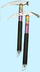

English - Kannada Dictionary
ಇಂಗ್ಲಿಷ್ - ಕನ್ನಡ ನಿಘಂಟು
- ಇಂಗ್ಲಿಷ್ ವರ್ಣಮಾಲೆಯ ಒಂಬತ್ತನೆಯ ಅಕ್ಷರ.
- (ರೋಮನ್ ಅಂಕನದಲ್ಲಿ) = 1; ‘ಒಂದು’ (I, i = 1, ii = 2, ix = 9, cii = 102).
ದ್ವಿತೀಯಾ ವಿಭಕ್ತಿ me ಉಚ್ಚಾರಣೆ ಮಿ, ಯಾ ಒತ್ತು ಹಾಕಿದಾಗ ಈ; ಆತ್ಮಾರ್ಥಕ myself, ಪ್ರಾಚೀನ ಪ್ರಯೋಗ me, ಬಹುವಚನ we; ಷಷ್ಠೀ ವಿಭಕ್ತಿ my, mine, ಬಹುವಚನ our).
- ಏಕವಚನ ಸರ್ವನಾಮ ಪ್ರಥಮ ಪುರುಷ me, (ಆಡುಮಾತು); (ಉದ್ಗಾರಗಳಲ್ಲಿ) ah me!, dear me!, silly me!
(ಅಧ್ಯಾತ್ಮಶಾಸ್ತ್ರ) ಅಹಂತತ್ತ್ವ; ಅಹಂಜ್ಞಾನ ವಿಷಯ.
the I ‘ಅಹಂ’; ‘ನಾನು’; ‘ನಾನು’ ಎಂಬ ಅರಿವಿಗೆ ವಿಷಯವಾದುದು.
- -us ಅಂತ್ಯದ ಲ್ಯಾಟಿನ್ ಮೂಲದ ಮತ್ತು -e, -o ಅಂತ್ಯದ ಇಟಾಲಿಯನ್ ಮೂಲದ ಇಂಗ್ಲಿಷ್ ಪದಗಳ ಬಹುವಚನ ಪ್ರತ್ಯಯವಾಗಿ ಬಳಸುವ ಉತ್ತರಪ್ರತ್ಯಯ: foci, dilettanti, timpani, literati.
- ಮಧ್ಯ ಪ್ರಾಚ್ಯದ ಯಾ ಅದರ ಹತ್ತಿರದ ಪ್ರದೇಶನಾಮಗಳು ಮೊದಲಾದವುಗಳಿಂದ ಗುಣವಾಚಕಗಳನ್ನು ರಚಿಸಲು ಬಳಸುವ ಉತ್ತರಪ್ರತ್ಯಯ: Israeli, Pakistani, Iraqi.
ಸಂಯೋಜಕಸ್ವರ, ಮುಖ್ಯವಾಗಿ -ana, -ferous, -fic, -form, -fy, -gerous, -vorous ಪದಗಳಲ್ಲಿ ಸಂಯೋಜಕವಾಗಿ ಬಳಸುವ ಸ್ವರ: omnivorous, hydriform.
Iowa.
- (ಬ್ರಿಟಿಷ್ ಪ್ರಯೋಗ) Institute of Actuaries.
- Iowa.
ನಾಮವಾಚಕಗಳನ್ನು ರಚಿಸುವ ಉತ್ತರಪ್ರತ್ಯಯ:
- ಭಾವನಾಮ ಪದಗಳನ್ನು ರಚಿಸುವಲ್ಲಿ: hydrophobia, mania, militia, utopia.
- ರೋಗಶಾಸ್ತ್ರಕ್ಕೆ ಸಂಬಂಧಿಸಿದ ಪದಗಳನ್ನು ರಚಿಸುವಲ್ಲಿ: anaemia, cephalgia, hysteria.
- ಸಸ್ಯವಿಜ್ಞಾನದ ವರ್ಗ, ವಂಶಗಳಿಗೆ ಸಂಬಂಧಿಸಿದ ಪದಗಳನ್ನು ರಚಿಸುವಲ್ಲಿ: cryptogamia, dahlia.
- ದೇಶಗಳ ಹೆಸರುಗಳಲ್ಲಿ: India, Australia.
- ಸಸ್ಯಕ್ಷಾರಗಳ ಹೆಸರುಗಳಲ್ಲಿ: morphia, strychnia.
ನಾಮವಾಚಕಗಳ ಬಹುವಚನ ರೂಪಗಳನ್ನು ರಚಿಸುವಲ್ಲಿ ಬಳಸುವ ಉತ್ತರಪ್ರತ್ಯಯ:
- -ion ಅಂತ್ಯದ ಗ್ರೀಕ್, -ium ಯಾ -e ಅಂತ್ಯದ ಲಾಟಿನ್ ಪದಗಳಲ್ಲಿ: paraphernalia, labia, regalia.
- ಲ್ಯಾಟಿನ್ನಿಂದ ಬಂದ ಪ್ರಾಣಿವಿಜ್ಞಾನದ ಸಮುದಾಯ ವಾಚಕಗಳಲ್ಲಿ: Mammalia, raptilia.
International Atomic Energy Agency.
ಗುಣವಾಚಕಗಳನ್ನು ರಚಿಸುವಾಗ ಬಳಸುವ ಉತ್ತರಪ್ರತ್ಯಯ: celestial, dictatorial, terrestrial, trivial.

(ಛಂದಸ್ಸು) (ಸಾಮಾನ್ಯವಾಗಿ ಬಹುವಚನದಲ್ಲಿ) ಅಯಾಂಬಿಕ್ (ಗಣದ) ವೃತ್ತ, ಪದ್ಯ.
ಅಯಾಂಬಸ್:
- (ಇಂಗ್ಲಿಷ್ ಛಂದಸ್ಸು) ಒಂದು ಸ್ವರಭಾರವಿಲ್ಲದ ಅಕ್ಷರ, ತರುವಾಯ ಒಂದು ಸ್ವರಭಾರವಿರುವ ಅಕ್ಷರ ಇರುವ ಗಣ, ($\cup$).
- (ಗ್ರೀಕ್ ಛಂದಸ್ಸು) ಒಂದು ಲಘು, ಅನಂತರ ಒಂದು ಗುರು ಇರುವ ಗಣ ($\cup$ – ).
ಮುಖ್ಯವಾಗಿ ವ್ಯಕ್ತಿಗಳು ಮತ್ತು ಸ್ಥಳಗಳ ಹೆಸರುಗಳಿಂದ ಹಲವೊಮ್ಮೆ ನಾಮವಾಚಕಗಳಾಗಿ ಬಳಸುವ ಗುಣವಾಚಕಗಳನ್ನು ರೂಪಿಸುವ ಉತ್ತರಪ್ರತ್ಯಯ: Bostonian, Christian, Churchillian, Georgian, Oxonian, Virgilian, theologian.
International Air Transport Association.
(ರೋಗದ ವಿಷಯದಲ್ಲಿ) ವೈದ್ಯಜನ್ಯ; ವೈದ್ಯಕೀಯ ಪರೀಕ್ಷೆಯಿಂದ ಯಾ ಚಿಕಿತ್ಸೆಯಿಂದ ಆದ.
(ಬ್ರಿಟಿಷ್ ಪ್ರಯೋಗ) Independent Broadcasting Authority.
I-ಬೀಮು; I-ಆಕಾರದ ತೊಲೆ.
ಪುರಾತನ ಐಬೀರಿಯ ದೇಶದ; ಈಗಿನ ಸ್ಪೇನ್ ಮತ್ತು ಪೋರ್ಚುಗಲ್ ಸೇರಿ ಆದ ಪರ್ಯಾಯ ದ್ವೀಪದ.
ಐಬೀರಿಯ ದೇಶ(ದ) ಮತ್ತು – ಎಂಬರ್ಥದಲ್ಲಿ ಬಳಸುವ ಪೂರ್ವಪ್ರತ್ಯಯ: Ibero-American.
ಅದೇ (ಇದೇ) ಗ್ರಂಥ, ಪ್ರಕರಣ, ವಾಕ್ಯವೃಂದ, ಮೊದಲಾದವುಗಳಲ್ಲಿ.
-ibleನಿಂದ ಅಂತ್ಯವಾಗುವ ಗುಣವಾಚಕಗಳಿಂದ ನಾಮವಾಚಕಗಳನ್ನು ರೂಪಿಸುವಲ್ಲಿ ಬಳಸುವ ಉತ್ತರಪ್ರತ್ಯಯ: possibility, credibility.
ಐಬಿಸ್; ಬಾಗುಕೊಕ್ಕಿನ ಬೆಳ್ಳಕ್ಕಿ; ಬೆಚ್ಚನೆಯ ಹವೆ ಇರುವ ಪ್ರದೇಶಗಳ ಸರೋವರಗಳಲ್ಲಿ ಮತ್ತು ಜವುಗುಗಳಲ್ಲಿ ವಾಸಿಸುವ, ಬಾಗು ಕೊಕ್ಕಿನ, ಕೊಕ್ಕರೆಯಂಥ ಹಕ್ಕಿ.
sacred ibis ಪವಿತ್ರ ಐಬಿಸ್; ಪ್ರಾಚೀನ ಈಜಿಪ್ಟಿನವರು ಪೂಜಿಸುತ್ತಿದ್ದ, ಬಿಳಿಯ ಐಬಿಸ್ ಹಕ್ಕಿ.
-able ಎಂಬ ಅರ್ಥಕೊಡುವ ಗುಣವಾಚಕಗಳನ್ನು ರಚಿಸಲು ಬಳಸುವ ಉತ್ತರಪ್ರತ್ಯಯ: terrible, possible, forcible, defensible.
-ibleಗಳಿಂದಾದ ಗುಣವಾಚಕಗಳಿಗೆ ಅನುಗುಣವಾಗಿ ಕ್ರಿಯಾವಿಶೇಷಣಗಳನ್ನು ರಚಿಸಲು ಬಳಸುವ ಉತ್ತರಪ್ರತ್ಯಯ: terribly, possibly.
International Business Machines.
ಈಬೋ:
- ಆಗ್ನೇಯ ನೈಜೀರಿಯದ ಕರಿಯ ವ್ಯಕ್ತಿ.
- ಇವರ ಭಾಷೆ.
International Bank of Reconstruction and Development (ಇದಕ್ಕೆ World Bank ಎಂದೂ ಹೆಸರು).
- ಇಬ್ಸನ್ ಶೈಲಿ; ನಾರ್ವೆಯ ನಾಟಕಕಾರ ಇಬ್ಸನನ ಯಾ ಅವನ ಅನುಯಾಯಿಗಳ ವಿಶಿಷ್ಟವಾದ ನಾಟಕ ರಚನೆಯ ಶೈಲಿ.
- ಇಬ್ಸನನ ನಾಟಕ ಶೈಲಿಗೆ ಮತ್ತು ಸಾಮಾಜಿಕ ಅಭಿಪ್ರಾಯಗಳಿಗೆ ಬದ್ಧವಾಗಿರುವಿಕೆ, ಯಾ ಅವನ್ನು ಪ್ರತಿಪಾದಿಸುವಿಕೆ.
integrated circuit.
- in charge.
- in command.
- internal combustion.
(ಪ್ರಾಚೀನ ಪ್ರಯೋಗ -ick ಯಾ -ique).
- ಗುಣವಾಚಕ ಮತ್ತು ನಾಮವಾಚಕಗಳನ್ನು ರಚಿಸುವ ಉತ್ತರಪ್ರತ್ಯಯ: classic, public, grammatic, poetic, critic, music, epic, emetic, rustic, carbonic, Byronic.
- (ರಸಾಯನವಿಜ್ಞಾನ) ಒಂದೇ ಬಗೆಯ ಆದರೆ ಬೇರೆ ಬೇರೆ ಉತ್ಕರ್ಷಣ ಸ್ಥಿತಿಯ ಸಂಯುಕ್ತಗಳನ್ನು ಕುರಿತು ಹೇಳುವಾಗ (ಕೆಳ ಸ್ಥಿತಿಯನ್ನು -ous ಸೂಚಿಸುವಂತೆ) ಉಚ್ಚ ಉತ್ಕರ್ಷಣ ಸ್ಥಿತಿಯನ್ನು ಸೂಚಿಸುವ ಪ್ರತ್ಯಯವಾಗಿ ಬಳಸುವ ಉತ್ತರಪ್ರತ್ಯಯ: sulphuric acid, phosphoric oxide, ferric chloride.
- ಶಾಸ್ತ್ರವಾಚಕಗಳಾದ ನಾಮವಾಚಕಗಳನ್ನು ರಚಿಸುವ, ಯಾ ಒಂದು ನಿದರ್ಶನವನ್ನು ಸೂಚಿಸುವ ಉತ್ತರಪ್ರತ್ಯಯ aesthetic, tactic.
- -ic ಅಂತ್ಯದ ನಾಮವಾಚಕ ಯಾ ಗುಣವಾಚಕಗಳಿಂದ ಗುಣವಾಚಕಗಳನ್ನು ರಚಿಸುವಾಗ ಬಳಸುವ ಉತ್ತರಪ್ರತ್ಯಯ: classical, musical, comical, economical, historical (ಕೆಲವು ಗುಣವಾಚಕಗಳ ಉತ್ಪತ್ತಿಯಲ್ಲಿ -ic ಮತ್ತು -ical ಎರಡೂ ರೂಪಗಳಿದ್ದು, ಎರಡು ವಿಭಿನ್ನ ಅರ್ಥಗಳನ್ನು ಪಡೆದಿರಬಹುದು, ಉದಾಹರಣೆಗೆ historic ಚರಿತ್ರಾರ್ಹ, ಇತಿಹಾಸಪ್ರಸಿದ್ಧ, historical ಚಾರಿತ್ರಿಕ, ಐತಿಹಾಸಿಕ, ಚರಿತ್ರೆಗೆ ಸಂಬಂಧಿಸಿದ).
- -y ಅಂತ್ಯದ ನಾಮವಾಚಕಗಳಿಂದ ಗುಣವಾಚಕಗಳನ್ನು ರಚಿಸುವಾಗ: pathological, theoretical, historical, mythological.
-ic ಮತ್ತು -ical ಅಂತ್ಯವುಳ್ಳ ಗುಣವಾಚಕಗಳಿಂದ ಕ್ರಿಯಾವಿಶೇಷಣಗಳನ್ನು ರಚಿಸುವಾಗ ಬಳಸುವ ಉತ್ತರಪ್ರತ್ಯಯ: comically, musically, phlegmatically, poetically, tragically.
International Civil Aviation Organization.
intercontinental ballistic missile.
(ಅಮೆರಿಕನ್ ಪ್ರಯೋಗ)
- Indian Claims Commission.
- Interstate Commerce Commission.
- (ಬ್ರಿಟಿಷ್ ಪ್ರಯೋಗ) Institution of Civil Engineers.
- internal-combustion engine.
- ಐಸು; ನೀರ್ಗಲ್ಲು; ನೀರ್ಗಡ್ಡೆ; ಮಂಜುಗಡ್ಡೆ; ಘನೀಭವಿಸಿದ ನೀರು.
- ನೀರಿನ ಮೇಲೆ ತೇಲುವ ಮಂಜುಗಡ್ಡೆಯ ಹಾಳೆ.
- ಮಂಜುಗಡ್ಡೆ ಮಿಠಾಯಿ ಯಾ ಅದರ ತುಂಡು, ಮುಖ್ಯವಾಗಿ(ಬ್ರಿಟಿಷ್ ಪ್ರಯೋಗ) ಐಸ್ಕ್ರೀಮ್ ಯಾ ಐಸ್ ಪೇಡ.
- (ಅಶಿಷ್ಟ) ವಜ್ರಗಳು.
dry ice ಘನ ಇಂಗಾಲದ ಡೈಆಕ್ಸೈಡು.
- break the ice
- ಆರಂಭ ಮಾಡು; ಶುರು ಮಾಡು.
- ಬಿಗುಮಾನವನ್ನು ಬಿಡು; ಶ್ರೀಮದ್ಗಾಂಭೀರ್ಯವನ್ನು ತೊರೆ.
- $^2$cuts no ice.
- on ice
- (ಆಟ, ವಿನೋದ, ಮೊದಲಾದವುಗಳ ವಿಷಯದಲ್ಲಿ) (ಹಿಮತಲದ ಮೇಲೆ) ಜಾರುಗರು, ಸ್ಕೇಟರುಗಳು-ಮಾಡಿದ.
- (ಆಡುಮಾತು) ತಾತ್ಕಾಲಿಕವಾಗಿ-ಸ್ಥಗಿತಗೊಳಿಸಿರುವ, ನಿಲುಗಡೆಯಲ್ಲಿ(ಟ್ಟಿ)ರುವ, ತಡೆಹಿಡಿದಿರುವ.
- (ಆಡುಮಾತು) ಖಡಾಖಂಡಿತವಾದ; ಖಚಿತವಾದ.
- on thin ice ಅತಿಸೂಕ್ಷ್ಮ ಪರಿಸ್ಥಿತಿಯಲ್ಲಿ; ಅಭದ್ರ ಸ್ಥಿತಿಯಲ್ಲಿ; ಅಪಾಯದಲ್ಲಿ: you are on thin ice with that argument ಆ ವಾದವನ್ನು ಹಿಡಿದರೆ ನಿನ್ನ ಸ್ಥಿತಿ ಅಭದ್ರ.
- (ನೀರನ್ನು ಯಾ ನೀರನ್ನು ಗಡ್ಡೆಕಟ್ಟಿಸುವಂತೆ ಯಾವುದನ್ನೇ) ಗಡ್ಡೆಕಟ್ಟಿಸು; ಹೆಪ್ಪುಗಟ್ಟಿಸು; ಘನೀಕರಿಸು.
- ನೀರ್ಗಲ್ಲಿನಿಂದ (ಯಾ ನೀರ್ಗಲ್ಲಿನಿಂದ ಹೇಗೋ ಹಾಗೆ) – ಹರವು, ಮುಚ್ಚು, ಆವರಿಸು.
- (ಪಾನೀಯಗಳನ್ನು ಮಂಜುಗಡ್ಡೆಯಲ್ಲಿಟ್ಟು, ಮಂಜುಗಡ್ಡೆ ಹಾಕಿ) ತಣ್ಣಗೆ ಮಾಡು; ತಂಪಿಸು; ತಂಪಾಗಿಸು; ಶೀತಗೊಳಿಸು.
- (ಕೇಕ್ ಮೊದಲಾದ ಭಕ್ಷ್ಯಗಳ ಮೇಲೆ)
- ಸಕ್ಕರೆಯ ಪಾಕ ಹರವು, ಸವರು, ಲೇಪಿಸು.
- (ಅವುಗಳನ್ನು) ಸಕ್ಕರೆ ಪಾಕದಿಂದ ಅಲಂಕರಿಸು.
- (ನೀರಿನ ವಿಷಯದಲ್ಲಿ) ಗಡ್ಡೆಯಾಗು; ಗಡ್ಡೆಗಟ್ಟು; ಹೆರೆ; ಘನೀಭವಿಸು: the sherbet is icing in the refrigerator ಶರಬತ್ತು ಶೀತಕದಲ್ಲಿ ಹೆಪ್ಪುಗಟ್ಟಿಕೊಳ್ಳುತ್ತಿದೆ.
- ಹಿಮದಿಂದ-ಆವೃತವಾಗು, ಮುಚ್ಚಿಹೋಗು: the wind-shield has iced up ಗಾಳಿತಡೆ ಹಿಮದಿಂದ ಮುಚ್ಚಿಹೋಗಿದೆ.
ನಾಮವಾಚಕಗಳನ್ನು (ಮುಖ್ಯವಾಗಿ ಭಾವನಾಮಗಳನ್ನು) ರಚಿಸಲು ಬಳಸುವ ಉತ್ತರಪ್ರತ್ಯಯ: justice, avarice, cowardice, jaundice, malice, notice, novice, precipice, service.
ಹಿಮಯುಗ; ನೀರ್ಗಲ್ಲಯುಗ; ಭೂಮಿಯ ಇತಿಹಾಸದಲ್ಲಿ ಉತ್ತರ ಗೋಲಾರ್ಧದಲ್ಲಿ ಈಗ ಇರುವುದಕ್ಕಿಂತ ಹೆಚ್ಚು ಭೂಭಾಗವು ಮಂಜುಗಡ್ಡೆಯಿಂದ ಮುಚ್ಚಿಕೊಂಡಿದ್ದ ಕಾಲಾವಧಿಗಳಲ್ಲಿ ಒಂದು.
ಹಿಮಗೊಡಲಿ; ಆಲ್ಪ್‘ ಮೊದಲಾದ ಹಿಮಪರ್ವತಗಳನ್ನು ಹತ್ತುವವರು ಹಿಮಗಡ್ಡೆಯ ಮೇಲೆ ಮೆಟ್ಟಿಲು ಕಡಿಯಲು ಬಳಸುವ ಕೊಡಲಿ. 
- ಹಿಮಗುಡ್ಡದ ತುದಿ; ಸಮುದ್ರದ ಮೇಲ್ಮೈಯಿಂದ ಸ್ವಲ್ಪ ಮೇಲ್ಭಾಗಕ್ಕೆ ಚಾಚಿಕೊಂಡಿರುವ ನೀರ್ಗಲ್ಲ ಗುಡ್ಡ.
- (ರೂಪಕವಾಗಿ) (ಯಾವುದೇ ವಿಷಯದ, ಮುಖ್ಯವಾಗಿ ತೊಂದರೆಯ) ಪ್ರಕಟ ಭಾಗ; ಪ್ರತ್ಯಕ್ಷಾಂಶ (ಕಾಣದೆ ಇರುವ ಭಾಗ ಬಹಳ ಇದೆ).
ಹಿಮಪ್ರಭೆ; ಹಿಮಗಡ್ಡೆಯಿಂದ ಪ್ರತಿಫಲಿತವಾಗಿ ದಿಗಂತದಲ್ಲಿ ಕಾಣುವ ಪ್ರಭೆ.
ಹಿಮನೀಲಿ; ತುಂಬ ಮಸುಕಾದ ನೀಲಿ ಬಣ್ಣ.
ನೀರ್ಗಲ್ಲದೋಣಿ; ಹಿಮದೋಣಿ:
- ನೀರ್ಗಲ್ಲ ಮೇಲೆ ಚಲಿಸುವಂತೆ ಗಾಲಿಗಳ ಮೇಲೆ ಏರಿಸಿರುವ ದೋಣಿ.
- ನದಿ ಮೊದಲಾದವುಗಳ ಮೇಲೆ ಕಟ್ಟಿರುವ ನೀರ್ಗಲ್ಲ ಪದರವನ್ನು ಒಡೆಯಲು ಬಳಸುವ ದೋಣಿ.
- ಹಿಮಾವೃತ; ನೀರ್ಗಲ್ಲಿನಿಂದ, ಹಿಮಗಡ್ಡೆಯಿಂದ ಆವರಿಸಿದ: an ice-bound ship ನೀರ್ಗಲ್ಲಿನಿಂದ ಸುತ್ತುವರಿದ ಹಡಗು.
- ಹಿಮರುದ್ಧ; ಹಿಮಬದ್ಧ; ಹಿಮಗಡ್ಡೆಯಿಂದ ತಡೆಯಲ್ಪಟ್ಟ, ಮುಚ್ಚಲ್ಪಟ್ಟ: an ice-bound harbour ಹಿಮರುದ್ಧ ಬಂದರು.
(ಅಮೆರಿಕನ್ ಪ್ರಯೋಗ) ಶೀತಕ; ರೆಹ್ರಿಜರೇಟರು.
ಹಿಮಟೋಪಿ; ಹಿಮ ಕವಚ; ಧ್ರುವ ಪ್ರದೇಶಗಳಲ್ಲಿ ಭೂಮಿಯನ್ನು ಮುಚ್ಚಿರುವ ವಿಸ್ತಾರವಾದ ಮಂಜುಗಡ್ಡೆಯ ಹಾಳೆ.
ಹಿಮಶೀತ; ಹಿಮ ಶೈತ್ಯದ; ಮಂಜುತಂಪಾದ; ಮಂಜುಗಡ್ಡೆಯಷ್ಟು ತಣ್ಣಗಿರುವ.
ಐಸ್ಕ್ರೀಮು; ಮಂಜುಕೆನೆ; ಹಿಮಗೆನೆ.

(ಶೀತಕ ಯಂತ್ರದಲ್ಲಿ ತಯಾರಿಸುವ) ಮಂಜುಗಡ್ಡೆಯ ಸಣ್ಣ ತುಂಡು.
ನೀರ್ಗಲ್ಲ ಪ್ರಪಾತ; ಘನೀಭವಿಸಿದ ಜಲಪಾತದಂತಿರುವ ಹಿಮನದಿಯ ಕಡಿದಾದ ಭಾಗ.
(ಮುಖ್ಯವಾಗಿ ಧ್ರುವ ಪ್ರದೇಶಗಳಲ್ಲಿನ) ಹಿಮ ಬಯಲು; ನೀರ್ಗಲ್ಲ ಮೈದಾನ.
ನೀರ್ಗಲ್ಲ ಪಟ್ಟಿ; ಧ್ರುವ ಪ್ರದೇಶದ ಅಂಚಿನುದ್ದಕ್ಕೂ ಗಡ್ಡೆ ಕಟ್ಟಿರುವ ಹಿಮದ ಪಟ್ಟಿ.
ಐಸ್ ಹಾಕಿ; ಹಿಮ ಹಾಕಿ; ಹಿಮದ ಬಯಲಿನ ಮೇಲೆ ಆಡುವ ಹಾಕಿ ಆಟ.
ಹಿಮಾಗಾರ; ಮಂಜುಗಡ್ಡೆ ಮನೆ; ಮಂಜುಗಡ್ಡೆಯನ್ನು ಶೇಖರಿಸಿಡಲು ಸ್ವಲ್ಪವೋ ಪೂರ್ತಿಯಾಗಿಯೋ ನೆಲದ ಕೆಳಗೆ ಕಟ್ಟಿದ ಕಟ್ಟಡ.
ಐಸ್ಲಂಡ್; ನಾರ್ವೆಗೂ ಗ್ರೀನ್ಲಂಡಿಗೂ ನಡುವಣ ಒಂದು ದೊಡ್ಡ ದ್ವೀಪ.
ಐಸ್ಲಂಡಿನವನು.

ಐಸ್ಲಂಡ್ ಕಲ್ಲುಹೂವು; ಉತ್ತರಧ್ರುವ ಪ್ರದೇಶದಲ್ಲಿ ಸಿಕ್ಕುವ, ಆಹಾರಕ್ಕೂ ಔಷಧಿಗೂ ಬಳಸುವ, ಒಂದು ಬಗೆಯ ಕಲ್ಲುಹೂವು.
ಐಸ್ಲಂಡ್ ಗಸಗಸೆ; ಉತ್ತರಧ್ರುವ ಪ್ರದೇಶದಲ್ಲಿ ಬೆಳೆಯುವ ಹಳದಿ ಗಸಗಸೆ.
ಐಸ್ಲಂಡ್ ಸ್ಪಾರ್; ದ್ವಿವಕ್ರೀಭವನ ಗುಣವುಳ್ಳ ನೈಸರ್ಗಿಕ ಕಾಲ್ಸಿಯಮ್ ಕಾರ್ಬೊನೇಟು.
ಐಸ್ಯಂತ್ರ; ಕೃತಕವಾಗಿ ಮಂಜುಗಡ್ಡೆಯನ್ನು ತಯಾರಿಸುವ ಯಂತ್ರ.
- ಹಿಮಚರ; ಹಿಮದ ಗಡ್ಡೆಯ ಮೇಲೆ ಹಾದು ಹೋಗುವುದರಲ್ಲಿ ನಿಪುಣ.
- ಮಂಜುಗಡ್ಡೆ ಮಿಠಾಯಿಗಾರ.
- ಹಿಮವ್ಯಾಪಾರಿ; ಮಂಜುಗಡ್ಡೆಯನ್ನು ಮಾರುವವನು.
- ಸಮುದ್ರದಲ್ಲಿ ದಪ್ಪ ಮಂಜುಗಡ್ಡೆ ಚೂರುಗಳು ತೇಲುತ್ತಿರುವ ವಿಶಾಲಪ್ರದೇಶ.
- ಐಸ್ಚೀಲ; ಹಿಮಚೀಲ; ದೇಹವನ್ನು ತಣ್ಣಗಾಗಿಸಲು ಬಳಸುವ ಹಿಮಗಡ್ಡೆ ತುಂಬಿದ ಚೀಲ ಮೊದಲಾದವು.
- (ವೈದ್ಯಶಾಸ್ತ್ರ) ಹಿಮತೊಟ್ಟಿ; ಶೀತಚಿಕಿತ್ಸೆಯಲ್ಲಿ ರೋಗಿಯನ್ನು ಮಲಗಿಸಿಡಲು ಬಳಸುವ ಮಂಜುಗಡ್ಡೆ ತುಂಬಿದ ಸ್ನಾನದ ತೊಟ್ಟಿ ಮೊದಲಾದವು.
- ಹಿಮಪಿಕಾಸಿ; ಹಿಮವನ್ನು ಕೆತ್ತಲು ಬಳಸುವ ಎಲೆಗುದ್ದಲಿ.
- ಐಸ್ಸೂಜಿ; ಹಿಮಶಲಾಕೆ; ಮಂಜುಗಡ್ಡೆಯನ್ನು ಚೂರುಮಾಡಲು ಬಳಸುವ ಹಿಡಿಕೆಯಿರುವ ದಪ್ಪಸೂಜಿ.
ಹಿಮಗಿಡ; ಮೆಸೆಂಬ್ರಿಯಾಂತಮಮ್ ಕ್ರಿಸ್ಟಲಿನಂ ಕುಲಕ್ಕೆ ಸೇರಿದ, ಎಲೆಗಳ ಮೇಲೆ ಮಂಜುಗಡ್ಡೆ ಹರಳುಗಳಿರುವಂತೆ ಕಾಣುವ ಒಂದು ಗಿಡ.
(ಭೌತವಿಜ್ಞಾನ) ಬರ್ಹಬಿಂದು; ಹಿಮ ಬಿಂದು; ಸಾಮಾನ್ಯ ವಾತಾವರಣ ಒತ್ತಡದಲ್ಲಿ ಶುದ್ಧನೀರು ಮತ್ತು ಶುದ್ಧ ಬರ್ಹ ಸಮತೋಲನದಲ್ಲಿರುವ ತಾಪ, ಅಂದರೆ $0^\circ{\rm C}$.
ಹಿಮಗಡುಬು; ಮಂಜುಗಟ್ಟಿಸಿದ ಪುಡಿಂಗ್ ಭಕ್ಷ್ಯ.
- ನೀರ್ಗಲ್ಲ ಜಾಡು; ಹಿಮದಾರಿ; ಹಿಮಪಥ; ಜಾರುಬಂಡಿಗಳಿಗಾಗಿ ಹಿಮದ ಮೇಲೆ ಮಾಡಿದ ಕೃತಕ ಹಾದಿ.
- ಹಿಮಭಂಗ; ನೀರ್ಗಲ್ಲೊಡೆತ; ಹಿಮಗಟ್ಟಿದ ನದಿಯಲ್ಲಿ ವಸಂತದ ಯಾ ಬೇಸಿಗೆಯ ಪ್ರಾರಂಭ ಕಾಲದಲ್ಲಿ, ಹಿಮದ ಗಡ್ಡೆಗಳು ಬೇಗ ಒಡೆದು ಕರಗುವುದು.
ಐಸ್ಷೋ; ನೀರ್ಗಲ್ಲ ಪ್ರದರ್ಶನ; ನೀರ್ಗಲ್ಲ ಮೇಲೆ ಸ್ಕೇಟರುಗಳು ಜಾರಾಟವಾಡಿ ಒದಗಿಸುವ ಮನರಂಜನೆ.
ಐಸ್ಸ್ಕೇಟ್; ನೀರ್ಗಲ್ಲ ಮೇಲೆ ಜಾರಲು ಅನುಕೂಲವಾಗುವಂತೆ ಅಡಿಯಲ್ಲಿ ಅಲಗಿರುವ ಜಾರುಮೆಟ್ಟು.
ಐಸ್ಸ್ಕೇಟರ್; ನೀರ್ಗಲ್ಲ ಮೇಲೆ (ಜಾರುಮೆಟ್ಟು ಹಾಕಿಕೊಂಡು) ಜಾರುವವ(ಳು).
ಐಸ್ ಕೇಂದ್ರ; ಹಿಮಕೇಂದ್ರ; ಧ್ರುವಪ್ರದೇಶಗಳಲ್ಲಿರುವ ಪವನಶಾಸ್ತ್ರೀಯ ಸಂಶೋಧನ ಕೇಂದ್ರ.
ಐಸ್ನೀರು; ಮಂಜುಗಡ್ಡೆಯಿಂದ ತಯಾರಿಸಿದ ಯಾ ಮಂಜುಗಡ್ಡೆ ಹಾಕಿ ತಣ್ಣಗಾಗಿಸಿದ ನೀರು.
ಮಂಜು ಉಣ್ಣೆ(ದಾರ); ಕ್ರೋಷೇ ಮೊದಲಾದ ಹೆಣಿಗೆ ಕೆಲಸದಲ್ಲಿ ಬಳಸುವ, ಹೊಳಪಿನ ಉಣ್ಣೆದಾರ.
(ಪರಿತಪಿಸುವ ಉದ್ಗಾರವಾಗಿ) ಅಯ್ಯೋ, ಆ ವೈಭವ ಹೋಯಿತಲ್ಲ!
Institution of Chemical Engineers.
ಈ ಚಿಂಗ್; ಮೂರು ಸಾಲುಗಳ 8 ಗುಂಪುಗಳು ಹಾಗೂ ಆರು ಸಾಲುಗಳ 64 ಗುಂಪುಗಳ ಆಧಾರದ ಮೇಲೆ ಆಡುವ, ಚೀನಾದೇಶದ ಒಂದು ಬಗೆಯ ಭವಿಷ್ಯ ಹೇಳುವ ಆಟ.
ಇಕ್ನ್ಯೂಮನ್:
- ಮೊಸಳೆ ಮೊಟ್ಟೆಗಳನ್ನು ಹಾಳುಗೆಡಹುವ, ಮುಂಗುಸಿ ಬಳಗದ, ಉತ್ತರ ಆಹ್ರಿಕ ಮೊದಲಾದ ಕಡೆಗಳಲ್ಲಿನ ಕಂದುಬಣ್ಣದ ಚತುಷ್ಪಾದಿ.
- ಇನ್ನೊಂದು ಕೀಟದ ಲಾರ್ವದ ಮೇಲೋ ಒಳಗೋ ಮೊಟ್ಟೆ ಇಡುವ ಒಂದು ಪರೋಪಜೀವಿ ಕೀಟ.
ಹೆಜ್ಜೆ, ಗುರುತು, ಜಾಡು ಎಂಬರ್ಥಗಳಲ್ಲಿ ಬಳಸುವ ಪೂರ್ವಪ್ರತ್ಯಯ: ichnography.
ತಲವಿನ್ಯಾಸದ; ತಲವಿನ್ಯಾಸದಂತಿರುವ.
- ಕಟ್ಟಡದ ತಲವಿನ್ಯಾಸ, ಪ್ರದೇಶದ ಭೂಪಟ, ಮೊದಲಾದವು.
- ಅವುಗಳ ನಕ್ಷೆ, ನಕಾಶೆ.
ಪಳೆಯುಳಿಕೆ ಹೆಜ್ಜೆಗುರುತು; ಹಾಸಿಲು ಹೆಜ್ಜೆ; ಹಾಸಿಲೀಕೃತ ಹೆಜ್ಜೆಗುರುತು.
ಹಾಸಿಲು ಹೆಜ್ಜೆಶಾಸ್ತ್ರ.
- (ಗ್ರೀಕ್ ಪುರಾಣ) ದೇವರುಧಿರ; ದೇವರಕ್ತ; ದೇವತೆಗಳ ಧಮನಿಗಳಲ್ಲಿ ರಕ್ತದಂತೆ ಹರಿಯುವ ದ್ರವ.
- (ಕಾವ್ಯಪ್ರಯೋಗ) ರಕ್ತದಂಥ ದ್ರವ.
- (ರೋಗಶಾಸ್ತ್ರ) ರಸಿಕೆ; ಗಾಯ ಮೊದಲಾದವುಗಳಿಂದ ಜಿನುಗುವ ಕಟುದ್ರವ.
- (ಗಾಯ ಮೊದಲಾದವುಗಳ ವಿಷಯದಲ್ಲಿ) ರಸಿಕೆ ಜಿನುಗುವ.
- ರಸಿಕೆಯಂಥ.
ಈನು, ಮತ್ಸ್ಯ ಎಂಬರ್ಥದಲ್ಲಿ ಬಳಸುವ ಪೂರ್ವಪ್ರತ್ಯಯ: ichthyographer.
ಮತ್ಸ್ಯ ಲೇಖಕ; ಮತ್ಸ್ಯ ವಿವರಣಕಾರ; ಈನುಗಳನ್ನು ಕುರಿತ ಗ್ರಂಥ ರಚಿಸುವವನು.
ಮತ್ಸ್ಯಲೇಖನ; ಮತ್ಸ್ಯ ವಿವರಣೆ; ಈನುಗಳನ್ನು ವರ್ಣಿಸುವ ಗ್ರಂಥ.
ಈನುಪೂಜೆ; ಮತ್ಸ್ಯಾರಾಧನೆ; ಮತ್ಸ್ಯದೇವತೆಯ ಪೂಜೆ.
ಹಾಸಿಲುಈನು; ಈನಿನ ಪಳೆಯುಳಿಕೆ.
ಮತ್ಸ್ಯಶಾಸ್ತ್ರೀಯ.
ಮತ್ಸ್ಯಶಾಸ್ತ್ರಜ್ಞ.
ಮತ್ಸ್ಯಶಾಸ್ತ್ರ.
ಈನು ತಿನ್ನುವ; ಮತ್ಸ್ಯಭಕ್ಷಕ.
ಮತ್ಸ್ಯಾಹಾರ; ಮತ್ಸ್ಯಭಕ್ಷಣ; ಈನು ತಿನ್ನುವ ಅಭ್ಯಾಸ.
ಇಕ್ತಿಯಾರ್ನಿಸ್; ಹಲ್ಲುಗಳನ್ನು ಹೊಂದಿದ್ದ, ಅಳಿದುಹೋದ ಒಂದು ಪಕ್ಷಿಕುಲ.
ಇಕ್ತಿಯೋಸಿಸ್; ಮತ್ಸ್ಯವ್ಯಾಧಿ; ಈನುದೊಗಲು ರೋಗ; ಹೊರಚರ್ಮ ಹರುಕಲಾಗಿ ಈನಿನ ಹೊರಮೈಯಂತೆ ಚೆಕ್ಕೆಚೆಕ್ಕೆಯಂತಾಗುವ ಒಂದು ಚರ್ಮರೋಗ.
ಈನುದೊಗಲು ರೋಗ ತಗುಲಿದ ಯಾ ಅದರಿಂದ ನರಳುತ್ತಿರುವ.
Imperial Chemical Industries.
- ಸಾಮಾನ್ಯವಾಗಿ -ic, -ics ಅಂತ್ಯದ ಪದಗಳೊಡನೆ ಕೂಡಿಸಿ ಪರಿಣತ ಎಂಬರ್ಥ ಬರುವ ಶಬ್ದಗಳ ರಚನೆಯಲ್ಲಿ ಬಳಕೆ: politician, statistician, logician, academician, physician.
- -ic, -ics ಅಂತ್ಯವಾಗಿರದ ಇತರ ಮೂಲ ಪದಗಳ ರಚನೆಯಲ್ಲಿ ವಿರಳವಾಗಿ: mortician.
ಹಿಮಬಿಳಲು; ಹಿಮದ, ನೀರ್ಗಲ್ಲ-ತೊಂಗಲು; ಮಾಳಿಗೆಯಿಂದ ತೊಟ್ಟಿಕ್ಕುವ ನೀರು ಹನಿಗಳು ಹಾಗೆಯೇ ಘನೀಭವಿಸಿ ತೂಗು ಬಿದ್ದಿರುವ ಹಿಮದ ಚೂಪು ಕೊನೆಗಳು.
- ಹಿಮಶೀತದಿಂದ; ಕೊರೆಯುತ್ತ; ತೀರ ಚಳಿಚಳಿಯಾಗಿ: the wind blew icily cold ಗಾಳಿ ಬಹಳ ಚಳಿಚಳಿಯಾಗಿ ಬೀಸಿತು.
- ಆದರಶೂನ್ಯವಾಗಿ; ನಿರುತ್ಸಾಹದಿಂದ: an icily unenthusiastic audience ಆದರಶೂನ್ಯ, ನಿರುತ್ಸಾಹಭರಿತ – ಪ್ರೇಕ್ಷಕರು.
- ಅತಿಶೈತ್ಯ; ಕೊರೆತ.
- ನಿರುತ್ಸಾಹ; ಆದರಶೂನ್ಯತೆ.
- ಸಕ್ಕರೆ ಅಲಂಕಾರ; ಶರ್ಕರಾಲಂಕರಣ; ಕೇಕ್ ಮೊದಲಾದ ಭಕ್ಷ್ಯಗಳ ಮೇಲೆ ಸಕ್ಕರೆ ಪಾಕ ಹರವಿ ಅಲಂಕರಿಸುವುದು.
- (ಮುಖ್ಯವಾಗಿ ಪಾನೀಯಗಳಿಗೆ) ಮಂಜುಗಡ್ಡೆ ಹಾಕಿ ತಂಪಾಗಿಸುವುದು.
- (ವಿಮಾನದ ಮೇಲೆ) ಹಿಮಾಚ್ಛಾದನ; ಹಿಮದ ಪದರು ಕಟ್ಟುವುದು; ಮಂಜುಗಡ್ಡೆಗಳು ಮುಚ್ಚಿಕೊಳ್ಳುವುದು.
ಮುಖ್ಯವಾಗಿ -ic ಅಂತ್ಯದ ಗುಣವಾಚಕಗಳಿಂದ ಭಾವವಾಚಿಗಳನ್ನು ರಚಿಸಲು ಬಳಸುವ ಉತ್ತರಪ್ರತ್ಯಯ: authenticity, electricity, publicity.
(ಪ್ರಾಚೀನ ಪ್ರಯೋಗ) -ic ಎಂಬುದರ ರೂಪಾಂತರ.
- ನಾಮವಾಚಕಗಳನ್ನು ರೂಪಿಸುವಲ್ಲಿ ಬಳಸುವ ಉತ್ತರಪ್ರತ್ಯಯ: article, particle.
- = -cule: icicle.
- ಮೂರ್ತಿ; ಪ್ರತಿಮೆ; ವಿಗ್ರಹ; ಬಿಂಬ.
- (ಗ್ರೀಕ್ ಚರ್ಚಿನಲ್ಲಿ) ಪೂಜನೀಯರೆಂದು ಗಣಿಸಲಾದ ಏಸುಕ್ರಿಸ್ತ, ಸಂತರು, ಮೊದಲಾದವರ ಪವಿತ್ರ ಶಿಲ್ಪ, ಚಿತ್ರ, ಶಬಲಚಿತ್ರ, ಮೊದಲಾದವು.
- ಪ್ರತಿಮೆಯ; ವಿಗ್ರಹದ.
- ಪ್ರತಿಮಾರೂಪದ; ವಿಗ್ರಹದಂತಿರುವ.
- (ಶಿಲ್ಪದ ವಿಷಯದಲ್ಲಿ) ಸಾಂಪ್ರದಾಯಿಕ; ಸಾಂಪ್ರದಾಯಿಕ ಮಾದರಿಯನ್ನನುಸರಿಸಿದ.
ವಿಗ್ರಹದ, ವಿಗ್ರಹಕ್ಕೆ ಸಂಬಂಧಿಸಿದ, ಪ್ರತಿರೂಪದ, ಎಂಬರ್ಥಗಳಲ್ಲಿ ಬಳಸುವ ಪೂರ್ವಪ್ರತ್ಯಯ: iconography.
ವಿಗ್ರಹಭಂಜನೆ; ಮೂರ್ತಿಭಂಜನೆ; ವಿಗ್ರಹಗಳನ್ನು ಒಡೆದು ಹಾಕುವುದು (ರೂಪಕವಾಗಿ ಸಹ).
- ಮೂರ್ತಿಭಂಜಕ; ವಿಗ್ರಹಭಂಜಕ; ಮುಖ್ಯವಾಗಿ ಪೌರಸ್ತ್ಯ ಚರ್ಚುಗಳಲ್ಲಿ ಮೂರ್ತಿಪೂಜೆಗೆ ವಿರೋಧವಾಗಿ ಕ್ರಿಸ್ತಶಕ 8-9ನೆಯ ಶತಮಾನಗಳಲ್ಲಿ ನಡೆದ ಚಳುವಳಿಯಲ್ಲಿ ಭಾಗವಹಿಸಿದವನು ಯಾ $16-17$ನೆ ಶತಮಾನದ ಪ್ಯೂರಿಟನ್.
- ಶ್ರದ್ಧಾಭಂಜಕ; ಪ್ರಿಯವೆಂದೆಣಿಸಿದ ನಂಬಿಕೆ, ಭಾವನೆಗಳನ್ನು ಖಂಡಿಸುವವನು.
- ವಿಗ್ರಹ ಭಂಜಕ; ವಿಗ್ರಹಗಳನ್ನು ಒಡೆದು ಹಾಕಬೇಕೆನ್ನುವ.
- ಶ್ರದ್ಧಾಭಂಜಕ; ಪ್ರಿಯವೆಂದೆಣಿಸಿದ ಭಾವನೆಗಳನ್ನು ಖಂಡಿಸುವ.
- ಪ್ರತಿಮಾ ಶಿಲ್ಪಿ; ಮೂರ್ತಿಶಿಲ್ಪಕಾರ.
- ಮೂರ್ತಿ ಚಿತ್ರಕಾರ.
- ಮೂರ್ತಿ ಶಿಲ್ಪದ ಯಾ ಅದಕ್ಕೆ ಸಂಬಂಧಿಸಿದ.
- ಚಿತ್ರೀಯ; ಒಂದು ವಿಷಯವನ್ನು ಚಿತ್ರ, ರೇಖನಗಳಿಂದ ನಿರೂಪಿಸುವ ಯಾ ವರ್ಣಿಸುವ.
- ಸಚಿತ್ರ; ಚಿತ್ರಪ್ರಧಾನವಾದ.
- ಮೂರ್ತಿ ಶಿಲ್ಪಿಯ; ಪ್ರತಿಮಾ ವಿವರಣೆಗಳನ್ನುಳ್ಳ; ಚಿತ್ರ, ಶಿಲ್ಪ ಮೊದಲಾದವನ್ನು ವಿವರಿಸುವ.
- ಪ್ರತಿಮಾಶಿಲ್ಪ; ಮೂರ್ತಿಶಿಲ್ಪ; ಮೂರ್ತಿಚಿತ್ರಣ; ಯಾವುದೇ ವಿಷಯವನ್ನು ಚಿತ್ರದ ಯಾ ಪ್ರತಿಮೆಯ ಮೂಲಕ ನಿರೂಪಿಸುವುದು.
- ಸಚಿತ್ರಪುಸ್ತಕ; ಚಿತ್ರಗಳೇ ಪ್ರಧಾನವಾಗಿರುವ ಪುಸ್ತಕ.
- ಪ್ರತಿಮಾಶಾಸ್ತ್ರ; ಚಿತ್ರ, ಶಿಲ್ಪ, ಮೊದಲಾದವುಗಳನ್ನು ವಿವರಿಸುವ ಗ್ರಂಥ.
- ಪ್ರತಿಮಾಧ್ಯಯನ; ಮುಖ್ಯವಾಗಿ ಒಬ್ಬ ವ್ಯಕ್ತಿಯನ್ನು ಕುರಿತ ಚಿತ್ರ ಯಾ ಶಿಲ್ಪಗಳ ಅಧ್ಯಯನ.
ಮೂರ್ತಿಪೂಜಕ; ವಿಗ್ರಹಾರಾಧಕ.
ಮೂರ್ತಿಪೂಜೆ; ವಿಗ್ರಹಾರಾಧನೆ.
- (ಛಾಯಾಚಿತ್ರಣ) ಬಿಂಬಮಾಪಕ; ಕಾಮರಾಕ್ಕೆ ಲಗತ್ತಿಸಿರುವ, ಯಾ ಬಿಡಿಯಾಗಿದ್ದು ಬೇರೆಬೇರೆ ಲೆನ್ಸು ಮತ್ತು ಛಾಯಾಚಿತ್ರ ಪ್ಲೇಟುಗಳಿಗೆ ಅಳವಡಿಸಬಹುದಾಗಿರುವ, ನೇರ ದೃಶ್ಯದರ್ಶಕ; ಕ್ಯಾಮರಾದಲ್ಲಿ ಹಿಡಿಯಬಹುದಾದಷ್ಟು ಇದಿರಿನ ದೃಶ್ಯದ ಪ್ರಮಾಣವನ್ನು ತೋರಿಸುವ ಸಾಧನ.
- (ಸರ್ವೇಕ್ಷಣೆಯಲ್ಲಿ) ಬಿಂಬಮಾಪಕ; ವಸ್ತುವಿನ ಗಾತ್ರ ಯಾ ದೂರವನ್ನು ತಿಳಿದುಕೊಳ್ಳಲು ಬಳಸುವ ದ್ಯುತಿ ಉಪಕರಣ.
ಬಿಂಬಮಾಪನ; ಒಂದು ಪ್ರದೇಶದ ಛಾಯಾಚಿತ್ರಗಳಿಂದ ಅದರ ಅಳತೆಗಳನ್ನು ತೆಗೆದುಕೊಂಡು ಅವನ್ನು ನಕಾಸೆಗೆ ಯಾ ಸರ್ವೆಗೆ ಬಳಸುವುದು.
(ಟೆಲಿವಿಷನ್) ಬಿಂಬದರ್ಶಕ; ದ್ಯುತಿಚಿತ್ರವನ್ನು ರೇಡಿಯೋ ಅಲೆಗಳಾಗಿ ಪರಿವರ್ತಿಸುವುದಕ್ಕೆ ಪೂರ್ವಭಾವಿಯಾಗಿ ಅದನ್ನು ವಿದ್ಯುತ್ ಪ್ರವಾಹಗಳನ್ನಾಗಿ ಪರಿವರ್ತಿಸುವ ಉಪಕರಣ.
ಗ್ರೀಕ್ ಚರ್ಚಿನಲ್ಲಿ ಪವಿತ್ರ ಪ್ರದೇಶವನ್ನು ಮಂದಿರದ ಪ್ರಧಾನ ಭಾಗದಿಂದ ಪ್ರತ್ಯೇಕಿಸುವ, ಮತ್ತು ಪ್ರತಿಮೆಗಳನ್ನು ಇಟ್ಟಿರುವ ಅಡ್ಡ ತಡೆ.
ವಿಂಶತಿಮುಖಿಯ; ಇಪ್ಪತ್ತು ಸಮತಲಮುಖಗಳಿರುವ ಘನಾಕೃತಿಯ ಯಾ ಅದಕ್ಕೆ ಸಂಬಂಧಿಸಿದ.
ಇಪ್ಪತ್ತು, ವಿಂಶತಿ ಎಂಬರ್ಥದ ಸಮಾಸ ಪೂರ್ವಪದ.
ವಿಂಶತಿದ್ವಾದಶಮುಖಿ; ವಿಂಶತಿ ತ್ರಿಕೋನ ದ್ವಾದಶಪಂಚಕೋನಮುಖಿ; 20 ತ್ರಿಕೋನಾಕಾರದ ಮುಖಗಳನ್ನೂ 12 ಪಂಚಕೋನಾಕಾರದ ಮುಖಗಳನ್ನೂ ಉಳ್ಳ ಘನಾಕೃತಿ.
ಕಲೆ ಯಾ ವಿಜ್ಞಾನ ಯಾ ಅಧ್ಯಯನದ ಶಾಖೆ ಯಾ ಕ್ರಿಯೆಯನ್ನು ಸೂಚಿಸುವ ನಾಮವಾಚಕಗಳನ್ನು ರಚಿಸುವ ಉತ್ತರಪ್ರತ್ಯಯ (ಏಕವಚನ ಯಾ ಬಹುವಚನವಾಗಿ ಎರಡರಲ್ಲಿಯೂ ಬಳಕೆ): aesthetics, athletics, mathematics, politics, statics, tactics.
(ಚರಿತ್ರೆ) Indian Civil Service.
International Council of Scientific Unions.
(ರೋಗಶಾಸ್ತ್ರ) ಕಾಮಾಲೆಯ; ಕಾಮಾಲೆರೋಗಕ್ಕೆ ಸಂಬಂಧಿಸಿದ.
(ರೋಗಶಾಸ್ತ್ರ) ಕಾಮಾಲೆ (ರೋಗ); ಅರಶಿನಮುಂಡಿಗೆ.
(ಛಂದಸ್ಸು) ಸ್ವರಭಾರ; ಲಯದ ಯಾ ಛಂದಸ್ಸಿನ ಒತ್ತು.
- ಹಿಮಮಯ; ಹಿಮಾವೃತ; ನೀರ್ಗಲ್ಲಿನಿಂದ ತುಂಬಿದ.
- ಬಹಳ ಚಳಿಯ; ಅತಿಶೀತಲದ; ಶೈತ್ಯದ; ತಣ್ಣಗೆ ಕೊರೆಯುವ.
- (ರೂಪಕವಾಗಿ) ಆದರವಿಲ್ಲದ; ನಿರಾದರ; ಜಡವಾಗಿರುವ; ನಿರುತ್ಸಾಹದ; ಬಿಸುಪಿಲ್ಲದ: icy manners ಆದರಶೂನ್ಯ ನಡವಳಿಕೆ.
ಇಡ್:
- (ಜೀವವಿಜ್ಞಾನ) ಜೀವಿಯ ಆನುವಂಶೀಯತೆಯನ್ನು ನಿರ್ಧರಿಸುವ ಕೋಶ ದ್ರವ್ಯಭಾಗದ ಏಕಮಾನ.
- (ಮನಶ್ಶಾಸ್ತ್ರ) ಪ್ರಾಕೃತ ಪ್ರವೃತ್ತಿ; ಪ್ರಕೃತಿದತ್ತ ಪ್ರವೃತ್ತಿ; ಸುಪ್ತವಾಸನೆ; ವ್ಯಕ್ತಿಯ ಆನುವಂಶಿಕ ಪ್ರವೃತ್ತಿಗಳಿಗೆ ಮೂಲವಾದ ಸುಪ್ತ ಪ್ರಜ್ಞೆಯ ಅಂಶ.
ಲಾಟಿನ್ ಹಾಗೂ ಹ್ರೆಂಚ್ ಮೂಲಶಬ್ದಗಳಿಂದ ಗುಣವಾಚಕಗಳನ್ನು ರಚಿಸುವಲ್ಲಿ ಬಳಸುವ ಉತ್ತರಪ್ರತ್ಯಯ: (L. timidus) timid, (L. rapidus) rapid, (F. morbidus) morbid.
ಯಾವುದೇ ಒಂದು ವರ್ಗ ಯಾ ಗುಂಪಿಗೆ ಸೇರಿದ್ದು ಎಂಬರ್ಥದ ನಾಮವಾಚಕಗಳ ರಚನೆಯಲ್ಲಿ ಬಳಸುವ ಉತ್ತರಪ್ರತ್ಯಯ: ಸಸ್ಯವಿಜ್ಞಾನದಲ್ಲಿ amaryllid, orchid ಎಂಬುವು Amaryllideae, Orchidaceae ಎಂಬ ವಂಶಗಳಿಗೆ ಸೇರಿದವು ಎಂಬುದನ್ನು ಸೂಚಿಸುತ್ತವೆ.
ಮುಂದಿನ ಅರ್ಥಗಳನ್ನು ಸೂಚಿಸುವ ನಾಮವಾಚಕಗಳನ್ನು ರಚಿಸಲು ಬಳಸುವ ಉತ್ತರಪ್ರತ್ಯಯ:
- ಕುಲಗಳ ಹೆಸರನ್ನು ಸೂಚಿಸಲು Seleucid (Seleucus) ಸೆಲ್ಯೂಕಸ್ (ಸ್ಥಾಪಿಸಿದ) ವಂಶದವನು.
- (ಪ್ರಾಣಿವಿಜ್ಞಾನ) ವರ್ಗಗಳ ಹೆಸರನ್ನು ಸೂಚಿಸುವ ನಾಮವಾಚಕಗಳ ಮತ್ತು ಗುಣವಾಚಕಗಳ ಪ್ರತ್ಯಯವಾಗಿ: arachnid (Arachnida ಎಂಬ ವರ್ಗದ ಜೀವಿ).
- (ಖಗೋಳ ವಿಜ್ಞಾನ) ನಿರ್ದಿಷ್ಟ ಹೆಸರಿನ ಖಗೋಳ ರಾಶಿಗೆ ಸೇರಿದ ಉಲ್ಕೆ ಎಂಬರ್ಥದಲ್ಲಿ ಬಳಸುವ ಉತ್ತರಪ್ರತ್ಯಯ: Leonid ಸಿಂಹರಾಶಿಯಿಂದ ಹೊರಬೀಳುವ ಉಲ್ಕಾಪಾತಗಳ ಯಾ ಉಲ್ಕಾ ಸಮುದಾಯಗಳಿಗೆ ಸೇರಿದುದು.
- (ಖಗೋಳ ವಿಜ್ಞಾನ) ನಿರ್ದಿಷ್ಟ ಹೆಸರಿನ ಖಗೋಳರಾಶಿಗೆ ಸೇರಿದ ತಾರೆಯಂಥ ಬೇರೊಂದು ತಾರೆ: Cepheid.
- (ಅಮೆರಿಕನ್ ಪ್ರಯೋಗ) Idaho.
- (ಅಮೆರಿಕನ್ ಪ್ರಯೋಗ) identification, identity.
idem.
inner diameter.
ಹ್ರಸ್ವರೂಪ
- I had.
- I should, I would.
International Development Association.
illicit diamond-buying.
ಆಹಾರವಾಗಿ ಬಳಸುವ ಒಂದು ಬಗೆಯ ಸೀನೀರು ಈನು.
(ರಸಾಯನವಿಜ್ಞಾನ)
- ಒಂದು ಧಾತು ಇನ್ನೊಂದು ಧಾತುವಿನೊಡನೆ ಯಾ ಆಕ್ಸಿಜನ್ ರಹಿತ ರ್ಯಾಡಿಕಲ್ನೊಡನೆ ಸಂಯೋಗಗೊಂಡು ಉಂಟುಮಾಡುವ ಸರಳ ಸಂಯುಕ್ತಗಳಿಗೆ ಸೇರಿಸುವ ಉತ್ತರಪ್ರತ್ಯಯ. (ಹೆಚ್ಚು ವಿದ್ಯುದೃಣ ಧಾತು ಯಾ ರಾಡಿಕಲ್ಗೆ ಹಚ್ಚುವುದು ವಾಡಿಕೆ): sodium chloride, potassium cyanide, calcium carbide.
- ಇತರ ಹಲವಾರು ಸಂಯುಕ್ತಗಳಿಗೆ ಸೇರಿಸುವ ಉತ್ತರಪ್ರತ್ಯಯ: amide, anhydride, peptide, saccharide.
- ಆವರ್ತಕೋಷ್ಟಕದ ಧಾತುಗಳು: actinide, lanthanide.
- ಆದಿ ಯಾ ಆರ್ಷ ಪ್ರತೀಕ; ಮೂಲ ಮಾದರಿ; ಸುತ್ತಲ ಪ್ರಪಂಚದಲ್ಲಿ ನಾವು ಕಾಣುವ ಯಾವುದೇ ವರ್ಗದ ನಿರ್ಜೀವ ಯಾ ಸಜೀವ ವಸ್ತುವಿನ ಲಕ್ಷಣಗಳಿಂದ ಭಿನ್ನವಾಗಿದ್ದು ಆ ವರ್ಗದ ಆದರ್ಶ ಲಕ್ಷಣಗಳನ್ನು ಹೊಂದಿದೆಯೆನ್ನಲಾದ, ಆ ವರ್ಗದ ಮೂಲ ಮಾದರಿ ಯಾ ಆರ್ಷೇಯ ಪ್ರತೀಕ.
- (ಗುರಿಯಾಗಿಟ್ಟುಕೊಳ್ಳಬೇಕಾದುದು, ಸೃಷ್ಟಿಸಬೇಕಾದುದು, ಮೊದಲಾದವುಗಳ) ಕಲ್ಪನೆ; ಭಾವನೆ; ಆಲೋಚನೆ.
- ಉದ್ದೇಶ; ಅಭಿಪ್ರಾಯ; ಯೋಜನೆ: the idea of becoming an engineer ಎಂಜಿನಿಯರಾಗಬೇಕೆಂಬ ಉದ್ದೇಶ.
- ಮನೋಭಾವನೆ; ಮನಸ್ಸಿಗೆ ಹೊಳೆದ ಕಲ್ಪನೆ.
- ಆಲೋಚನಾ ವಿಧಾನ; ಆಲೋಚನೆಯ-ಮಾರ್ಗ, ರೀತಿ, ಧೋರಣೆ.
- ಕಲ್ಪನೆ; (ಅಸ್ಪಷ್ಟ) ಭಾವನೆ; ಎಣಿಕೆ: the idea of his doing such a thing ಅವನು ಇಂಥ ಕೆಲಸ ಮಾಡುವನೆಂಬ ಎಣಿಕೆ. I had no idea you were there ನೀನು ಅಲ್ಲಿರುವೆ ಎಂಬ ಕಲ್ಪನೆಯೇ ನನಗಿರಲಿಲ್ಲ.
- (ಪ್ಲೇಟೋವಿನ ತತ್ತ್ವ) ಆದರ್ಶ ರೂಪ; ಯಾವ ವರ್ಗದಲ್ಲಾದರೂ ಇರುವ ಪ್ರತ್ಯೇಕ ವಸ್ತುಗಳು ಯಾವುದರ ಅಪೂರ್ಣ ಪ್ರತಿಗಳಾಗಿರುವುವೋ ಆ ಚಿರಸ್ಥಾಯಿಯಾದ ಆದರ್ಶ ರೂಪ.
- (ಡೇಕಾರ್ಟ್, ಲಾಕ್ ಇವರ ಸಿದ್ಧಾಂತಗಳಲ್ಲಿ ಯಾ ಮಾನಸಿಕ ಅರಿವಿನ) ಪ್ರತ್ಯಕ್ಷ ವಿಷಯ.
- (ಕಾಂಟ್) ಪರಾಸತ್ತೆ; ಅನುಭವಾತೀತವಾದ ಮತ್ತು ಚಿಂತನದ ಶುದ್ಧ ತರ್ಕಕ್ಕೆ ಮಾತ್ರ ಗೋಚರವಾದ ವಿಷಯ.
- (ಹೆಗೆಲ್) (ವ್ಯಾವಹಾರಿಕ ಸತ್ಯವೆಲ್ಲವೂ ಯಾವುದರ ಅಭಿವ್ಯಕ್ತಿಯೋ ಆ) ಪಾರಮಾರ್ಥಿಕ ಸತ್ಯ.
- have no idea (ಆಡುಮಾತು)
- ಗೊತ್ತೇಇಲ್ಲದಿರು.
- ತೀರ ಅಸಮರ್ಥನಾಗಿರು.
- get (or have) ideas (ಆಡುಮಾತು) ಹೇರಾಸೆ, ಅವಿಧೇಯತೆ, ಮೊದಲಾದವನ್ನು ಉಳ್ಳವನಾಗಿರು.
- man of ideas ಪ್ರತ್ಯುತ್ಪನ್ನಮತಿ; ಸಮಯಸ್ಫೂರ್ತಿಯುಳ್ಳವನು.
- not my idea of (ಆಡುಮಾತು) ನಾನು ಅಂದುಕೊಳ್ಳುವಂಥದ್ದಲ್ಲದ; ನನ್ನ ಕಲ್ಪನೆಯದ್ದಲ್ಲದ: this is not my idea of a pleasant evening ಇದು ನನ್ನ ಕಲ್ಪನೆಯ ಹಿತವಾದ ಸಂಜೆಯಲ್ಲ.
- put ideas into person’s head ಒಬ್ಬನ(ಳ) ತಲೆಗೆ ಹಿರಿಯಾಸೆ ಮೊದಲಾದವನ್ನು ತುಂಬು; ಒಬ್ಬನಿಗೆ ತಂತಾನೆ ಬಾರದೆ ಇರುವಂತಹ ಮಹದಾಕಾಂಕ್ಷೆ ಮೊದಲಾದವನ್ನು ಸೂಚಿಸು; (ಮಹತ್ವಾಕಾಂಕ್ಷೆ ಮೊದಲಾದ) ಭಾವನೆಗಳನ್ನು ತಲೆಗೆ ತುಂಬು.
- that’s an idea (ಆಡುಮಾತು) ಆ ಸೂಚನೆ (ಮೊದಲಾದದ್ದು) ಪರಿಶೀಲನಾರ್ಹವಾಗಿದೆ.
- the big idea (ಸಾಮಾನ್ಯವಾಗಿ ವ್ಯಂಗ್ಯವಾಗಿ) ಮಹಾಯೋಜನೆ; ಘನೋದ್ದೇಶ: what’s the big idea? ಏನಯ್ಯಾ ಅದು, ಘನೋದ್ದೇಶ? (ಏನದು ಹುಚ್ಚಾಟ! ಎಂಬರ್ಥದಲ್ಲಿ).
- the very idea! ಆಹಾ! ಎಂಥ ಕಲ್ಪನೆ! ಸೂಚನೆ! (ಆಡುಮಾತು) (ಅಸಮ್ಮತಿ ಯಾ ಭಿನ್ನಾಭಿಪ್ರಾಯವನ್ನು ಸೂಚಿಸುವ ಉದ್ಗಾರ).
- the young idea ಎಳೆಯ ಮನಸ್ಸು; ಮಗುವಿನ ಮನಸ್ಸು.
- what an idea! = ನುಡಿಗಟ್ಟು \((8)\).
(ಒಂದು ನಿರ್ದಿಷ್ಟ ರೀತಿಯ, ವಿಶಿಷ್ಟ ಪ್ರಮಾಣದ) ಕಲ್ಪನೆ, ವಿಚಾರ, ಆಲೋಚನೆ, ಯೋಜನೆ, ಮನೋಭಾವನೆ, ಉದ್ದೇಶ, ಅಭಿಪ್ರಾಯ, ಧ್ಯೇಯ – ಇರುವ ಯಾ ಅಂಥವುಗಳನ್ನು ಉಳ್ಳ, ಹೊಂದಿದ: a one ideaed man ಏಕೈಕ ಕಲ್ಪನೆಯ ಮನುಷ್ಯ.
- ಆದರ್ಶಪ್ರಾಯ(ವಾದ); ಆದರ್ಶ ಸ್ವರೂಪದ; ಪರಿಪೂರ್ಣ; ಪರಮಶ್ರೇಷ್ಠ; ಅತ್ಯುಚ್ಚ ಕಲ್ಪನೆಗೆ ಅನುರೂಪವಾಗಿರುವ: ideal beauty ಆದರ್ಶ ಸೌಂದರ್ಯ.
- ಉತ್ಕೃಷ್ಟ; ಅತ್ಯುತ್ತಮ: an ideal spot for a home ಮನೆಗೆ ಉತ್ಕೃಷ್ಟವಾದ ಜಾಗ.
- ಭಾವಪ್ರತೀಕವಾಗಿರುವ; ಕಲ್ಪನೆಯ ಮೂರ್ತರೂಪವಾದ.
- ಕಲ್ಪನಾ ಮಾತ್ರದ; ಭಾವನಾ ಮಾತ್ರದ; ಕೇವಲ ಕಲ್ಪನೆಯ; ಭಾವನೆಯಲ್ಲಿ, ಕಲ್ಪನೆಯಲ್ಲಿ – ಮಾತ್ರವಿರುವ; ವಾಸ್ತವಿಕವಲ್ಲದ; ಕೇವಲ – ಆದರ್ಶಪ್ರಾಯವಾದ, ಕಲ್ಪನಾಸ್ವರೂಪದ: an ideal marriage ಕೇವಲ ಆದರ್ಶಪ್ರಾಯವಾದ ವಿವಾಹ.
- (ಪ್ಲೇಟೋವಿನ ಸಿದ್ಧಾಂತದ) ಮೂಲರೂಪಗಳ; ಆದರ್ಶ ರೂಪಗಳ; ಆದರ್ಶರೂಪಗಳಿಗೆ ಸಂಬಂಧಿಸಿದ.
- ಅನುಕೂಲವಾದ; ಪ್ರಯೋಜನಕರ; ಉತ್ತಮ: it would be ideal if she could accompany us to look after the children ಮಕ್ಕಳನ್ನು ನೋಡಿಕೊಳ್ಳಲು ಅವಳು ನಮ್ಮ ಸಂಗಡ ಬರುವುದಕ್ಕಾದರೆ ಅದು ಬಹಳ ಅನುಕೂಲವಾಗಿರುತ್ತದೆ.
- ಪರಿಪೂರ್ಣ ಮಾದರಿ; ನಿರ್ದಿಷ್ಟ ಮಾದರಿ; ನ್ಯೂನತೆಯಿಲ್ಲದ ಮಾದರಿ.
- ಆದರ್ಶ; ಅನುಕರಣೀಯ ವಸ್ತು, ವ್ಯಕ್ತಿ; ಅನುಕರಣಕ್ಕೆ ಆದರ್ಶವೆಂದು ಇಟ್ಟುಕೊಂಡ ವಿಷಯ, ವ್ಯಕ್ತಿ.
- (ಸಾಧಿಸಬೇಕಾದ, ಗುರಿಯಾಗಿಟ್ಟುಕೊಳ್ಳುವ) ಧ್ಯೇಯ; ಆದರ್ಶ.
ಕಲ್ಪನಾರಹಿತ; ಆಲೋಚನಾಶೂನ್ಯ; ಯಾವುದೇ ಕಲ್ಪನೆ, ವಿಚಾರ, ಆಲೋಚನೆ, ಭಾವನೆ, ಯೋಜನೆ, ಮನೋಭಾವನೆ, ಉದ್ದೇಶ, ಮೊದಲಾದವುಗಳಿಲ್ಲದ.
(ಭೌತವಿಜ್ಞಾನ) ಆದರ್ಶ ಅನಿಲ; ಅಣುಗಳ ನಡುವೆ ಆಕರ್ಷಣೆ ಇಲ್ಲದ, ಆದ್ದರಿಂದ ಬಾಯ್ಲ್ ಮತ್ತು ಚಾರ್ಲ್ಸ್ – ಇವರ ನಿಯಮಗಳು ಸಂಪೂರ್ಣವಾಗಿ ಅನ್ವಯವಾಗುವ ಅನಿಲ.

- ಆದರ್ಶೀಕರಣ ಪ್ರವೃತ್ತಿ; ವಸ್ತುಗಳನ್ನು ಆದರ್ಶರೂಪದಲ್ಲಿ ಚಿತ್ರಿಸುವ, ನಿರೂಪಿಸುವ ಮನಸ್ಸಿನ ವೃತ್ತಿ.
- (ಕಲೆ, ಸಾಹಿತ್ಯದ ವಿಷಯಗಳ) ವಿಭಾವನಾತ್ಮಕ ನಿರೂಪಣೆ; ಕಲ್ಪನಾತ್ಮಕ ಪ್ರತಿಪಾದನೆ.
- ಆದರ್ಶಗಳ-ಕಲ್ಪನೆ, ರೂಪಣ.
- ಆದರ್ಶಗಳ-ಅನುಷ್ಠಾನ, ಅನುಸರಣೆ.
- (ತತ್ತ್ವಶಾಸ್ತ್ರ) ಭಾವನಾವಾದ; ವಿಜ್ಞಾನವಾದ; ಪ್ರತ್ಯಯವಾದ; ಇಂದ್ರಿಯಗೋಚರವಾಗುವ ಬಾಹ್ಯ ವಸ್ತುಗಳು ವಾಸ್ತವವಾಗಿ ಭಾವನಾಮಯವಾದವು ಎಂಬ ಸಿದ್ಧಾಂತ.
- ಆದರ್ಶವಾದಿ; ಉದಾತ್ತವಾದ ಧ್ಯೇಯದಲ್ಲಿ ನಿಷ್ಠೆಯುಳ್ಳವನು.
- (ತತ್ತ್ವಶಾಸ್ತ್ರ) ವಿಜ್ಞಾನವಾದಿ; ಭಾವನಾವಾದಿ.
- ಆದರ್ಶ ನಿರೂಪಕ; ವಸ್ತುಗಳು ನಿಜವಾಗಿ ಇರುವಂತೆ ನಿರೂಪಿಸುವ ಬದಲು ಇರಬೇಕಾದಂತೆ ಚಿತ್ರಿಸುವವ.
- ಕನಸಿಗ; ಕಾಲ್ಪನಿಕ ಪ್ರಪಂಚದಲ್ಲಿ ವಿಹರಿಸುವವನು; ವ್ಯವಹಾರ ಜ್ಞಾನವಿಲ್ಲದವನು.
- ಆದರ್ಶಾತ್ಮಕ:
- ಆದರ್ಶ ಲಕ್ಷಣದ, ಸ್ವರೂಪದ-ಗುಣಗಳಿರುವ.
- ಆದರ್ಶವಾದಿಯ; ಆದರ್ಶವಾದಿಗೆ ಸಂಬಂಧಿಸಿದ.
- ಆದರ್ಶನಿಷ್ಠ; ಆದರ್ಶಗಳಲ್ಲಿ ಶ್ರದ್ಧೆಯಿರುವ.
- ಭಾವನಾತ್ಮಕ.
- ಕಲ್ಪಿತ ಪ್ರಪಂಚಕ್ಕೆ ಸೇರಿದ; ವ್ಯಾವಹಾರಿಕ ಜಗತ್ತಿಗೆ ದೂರವಾದ.
- ಆದರ್ಶತೆ; ಆದರ್ಶವಾಗಿರುವಿಕೆ.
- ಕಲ್ಪನಾಶಕ್ತಿ; ವಿಭಾವನಾಶಕ್ತಿ.
- ಆದರ್ಶೀಕರಣತೆ; ಆದರ್ಶೀಕರಿಸುವ ಶಕ್ತಿ, ಸಾಮರ್ಥ್ಯ.
- (ತತ್ತ್ವಶಾಸ್ತ್ರ) ಭಾವನಾಮಾತ್ರತೆ; ವಾಸ್ತವದಲ್ಲಿ ಇಲ್ಲದೆ ಕೇವಲ ಭಾವನೆಯ ರೂಪದಲ್ಲಿ ಮಾತ್ರ ಇರುವಂಥದು.
- ಆದರ್ಶೀಕರಣ.
- ಆದರ್ಶೀಕರಿಸಿದುದು; ಆದರ್ಶೀಕೃತವಾದುದು; ಆದರ್ಶವೆಂದು ರೂಪಿಸಲಾದ ವಿಷಯ, ವಸ್ತು, ಮೊದಲಾದವು.
- ಆದರ್ಶೀಕರಿಸು:
- ಆದರ್ಶವಾಗಿ ಮಾಡು.
- ಆದರ್ಶವಾಗಿ ಪರಿಭಾವಿಸು, ಪರಿಗಣಿಸು.
- ಆದರ್ಶ ಪರಿಪೂರ್ಣತೆಗೆ ಯಾ ಶ್ರೇಷ್ಠತೆಗೆ ಏರಿಸು.
- ಆದರ್ಶೀಕರಿಸು; ಆದರ್ಶರೂಪದಲ್ಲಿ ಯಾ ರೀತಿಯಲ್ಲಿ ನಿರೂಪಿಸು.
- ಆದರ್ಶಗಳನ್ನು ಯಾ ಆದರ್ಶವನ್ನು – ಕಲ್ಪಿಸು, ರೂಪಿಸು.
- ಆದರ್ಶಪ್ರಾಯವಾಗಿ; ಆದರ್ಶಕ್ಕನುಗುಣವಾಗಿ; ಆದರ್ಶರೂಪದಲ್ಲಿ; ಪರಿಪೂರ್ಣವಾಗಿ.
- ಕಲ್ಪನೆಯಲ್ಲಿ; ಭಾವನೆಯಲ್ಲಿ.
- ತಾತ್ತ್ವಿಕವಾಗಿ; ಸೈದ್ಧಾಂತಿಕವಾಗಿ.
ಕಲ್ಪನೆ ಮಾಡು; ಕಲ್ಪಿಸು; ಭಾವಿಸು: a state which Plato ideated ಪ್ಲೇಟೋ ಕಲ್ಪಿಸಿದ ರಾಜ್ಯ.
ಕಲ್ಪನೆಗಳನ್ನು ರೂಪಿಸು; ಭಾವನೆಗಳನ್ನು ಕಲ್ಪಿಸು.
ಭಾವನೆ; ಭಾವಕಲ್ಪನೆ; ಪ್ರತ್ಯಕ್ಷವಲ್ಲದ ವಿಷಯಗಳನ್ನು ಮನಸ್ಸಿನಲ್ಲಿ ಕಲ್ಪಿಸುವುದು, ಮಾನಸಿಕವಾಗಿ ಭಾವಿಸುವುದು.
ಭಾವಕಲ್ಪನೆಯ; ಭಾವನೆಗಳಿಗೆ ಯಾ ಮಾನಸಿಕ ಕಲ್ಪನೆಗಳಿಗೆ ಸಂಬಂಧಿಸಿದ.
ಗೀಳು; ಗಿಲಿ; ಭ್ರಮೆ; ಭ್ರಾಂತಿ; ಒಂದೇ ವಿಷಯದ ಬಗ್ಗೆ ಮನಸ್ಸನ್ನು ಪೂರ್ತಿಯಾಗಿ ಆವರಿಸಿರುವ ಭಾವ, ಭಾವನೆ.
ಸಾಮಾನ್ಯವಾಗಿ ಒಪ್ಪಿದ ಭಾವನೆ ಯಾ ಅಭಿಪ್ರಾಯ; ಸಮ್ಮತಾಭಿಪ್ರಾಯ.
ಅಲ್ಲೇ; ಪೂರ್ವೋಕ್ತ ಕೃತಿಯಲ್ಲೇ; ಅದೇ ಗ್ರಂಥದಲ್ಲೇ, ಗ್ರಂಥಕರ್ತನಲ್ಲೇ.
- (ಬೇರೆ ಬೇರೆ ಕಾಲದಲ್ಲಿ ನೋಡಿದ ಒಂದೇ ವಸ್ತುವಿನ ವಿಷಯದಲ್ಲಿ) ಅದೇ ಆದ; ಅನನ್ಯ; ಅಭಿನ್ನವಾದ.
- (ಬೇರೆ ಬೇರೆ ವಸ್ತುಗಳ ವಿಷಯದಲ್ಲಿ) ಒಂದೇ ವಿಧವಾದ; ಸರ್ವಾಂಗಸಮ; ತದ್ರೂಪವಾದ; ತದ್ವತ್ತಾದ; ಪ್ರತಿ ವಿವರದಲ್ಲೂ ಹೊಂದಿಕೆಯುಳ್ಳ.
- (ಅವಳಿ ಮಕ್ಕಳ ವಿಷಯದಲ್ಲಿ) ಏಕಾಂಡಜ; ಒಂದೇ ಅಂಡದಿಂದ ಹುಟ್ಟಿದ; ಒಂದೇ ಲಿಂಗದವರಾದ, ಸಾಮಾನ್ಯವಾಗಿ ಬಹಳ ಹತ್ತಿರವಾಗಿ ಹೋಲುವ.
- (ತರ್ಕಶಾಸ್ತ್ರ, ಗಣಿತ) ಅನನ್ಯತ್ವ ಪ್ರತಿಪಾದಕ; ಏಕತ್ವವನ್ನು ಹೇಳುವ, ನಿರೂಪಿಸುವ.
- ಅದೇ ಆಗಿರುವಂತೆ; ಅನನ್ಯವಾಗಿ.
- ತದ್ರೂಪವಾಗಿ; ತದ್ವತ್ತಾಗಿ; ಏಕರೀತಿಯಲ್ಲಿ.
ಸಾಮ್ಯಪದ ಪ್ರತಿಜ್ಞೆ; ಸಮಾರ್ಥಕಪದ – ಪ್ರತಿಜ್ಞೆ, ವಾಕ್ಯ; ಕರ್ತೃಪದವೂ, ವಿಧೇಯಪದವೂ ಒಂದೇ ಅರ್ಥಹೊಂದಿರುವ ಪ್ರತಿಜ್ಞಾವಾಕ್ಯ: that which is mortal is not immortal ಮರ್ತ್ಯವಾದದ್ದು ಅಮರ್ತ್ಯವಲ್ಲ.
(ಅಂತರರಾಷ್ಟ್ರೀಯ ವ್ಯವಹಾರ) ಏಕರೂಪನಿರೂಪ; ಹಲವು ರಾಷ್ಟ್ರಗಳು ತಮ್ಮ ತಮ್ಮ ಅಭಿಪ್ರಾಯವನ್ನು ಒಂದೇ ರೀತಿಯ ಒಕ್ಕಣೆಯಲ್ಲಿ ಬರೆದು ಮತ್ತೊಂದು ರಾಷ್ಟ್ರಕ್ಕೆ ಏಕಕಾಲದಲ್ಲಿ ಕಳುಹಿಸುವ ಪತ್ರ.
ಗುರುತಿಸಲಾಗುವ; ಗುರುತಿಸಬಹುದಾದ.
ಗುರುತು ಹಿಡಿಯುವುದು; ಗುರುತಿಸುವುದು.
identification card, disc, plate, etc. ಗುರುತಿನ ಕಾರ್ಡು, ಬಿಲ್ಲೆ, ಫಲಕ, ಮೊದಲಾದವು; ಹೆಸರು, ಸಂಖ್ಯೆ, ಮೊದಲಾದ ಚಿಹ್ನೆಗಳನ್ನು ಹೊಂದಿರುವ ಕಾರ್ಡು, ಬಿಲ್ಲೆ, ಫಲಕ, ಮೊದಲಾದವು.
ಪತ್ತೆ ಪೆರೇಡು; ಸಂದೇಹಾಸ್ಪದ ವ್ಯಕ್ತಿಯನ್ನು ಪತ್ತೆಹಚ್ಚಲು ಮಾಡುವ ವ್ಯಕ್ತಿಗಳ ಪ್ರದರ್ಶನ.
- ತಾದಾತ್ಮ್ಯಗೊಳಿಸು; (ವಸ್ತುವೊಂದನ್ನು) (ಮತ್ತೊಂದರೊಡನೆ) ಅಭಿನ್ನವೆಂದು, ಒಂದೇ ಎಂದು, ಅನನ್ಯವೆಂದು, ಬೇರೆಯಲ್ಲವೆಂದು-ಪರಿಗಣಿಸು, ಪ್ರತಿಪಾದಿಸು.
- (ವ್ಯಕ್ತಿಗೆ ತನಗೆ ಪಕ್ಷ, ನೀತಿ, ಮೊದಲಾದವುಗಳೊಡನೆ) ಬೇರ್ಪಡಿಸಲಾಗದಂತೆ ಅಥವಾ ಬಹಳ ನಿಕಟವಾಗಿ – ಸಂಬಂಧ ಹೊಂದಿಸು, ಸಂಪರ್ಕ ಕಲ್ಪಿಸು: he refused to identify himself with the new policy ಹೊಸ ಧೋರಣೆಯೊಂದಿಗೆ ಸಂಬಂಧ ಹೊಂದಿರಲು ಅವನು ನಿರಾಕರಿಸಿದ.
- ಗುರುತಿಸು; ಸ್ವರೂಪ ಪತ್ತೆಹಚ್ಚು: can you identify your watch? ನಿನ್ನ ಗಡಿಯಾರವನ್ನು ಗುರುತಿಸಬಲ್ಲೆಯಾ?
- ಪರಿಶೀಲಿಸಿ ಯಾ ಪರೀಕ್ಷಿಸಿ – ಗುರುತಿಸು, ಆಯು, ಆಯ್ಕೆ ಮಾಡು: identify the best method of producing steel ಉಕ್ಕನ್ನು ತಯಾರಿಸುವ ಶ್ರೇಷ್ಠ ವಿಧಾನವನ್ನು ಗುರುತಿಸು, ಆಯು.
- (ಒಂದರೊಡನೆ) ಸಂಬಂಧ, ಸಂಪರ್ಕ, ಸಹಯೋಗ-ಪಡೆ.
- (ಇನ್ನೊಬ್ಬ ವ್ಯಕ್ತಿಯೊಡನೆ) ಸಮಾನ ಗುಣಗಳನ್ನು ಹೊಂದಿರುವುದಾಗಿ ಭಾವಿಸಿಕೊ.
ರಚಿತ ಚಿತ್ರ; ಚಹರೆ ಚಿತ್ರ; ಸಾಕ್ಷಿಗಳ ಹೇಳಿಕೆಗಳಿಂದ ದೊರೆತ ಚಹರೆಗಳ ಆಧಾರದ ಮೇಲೆ ಸಿದ್ಧಪಡಿಸಿದ ವ್ಯಕ್ತಿಯ (ಮುಖ್ಯವಾಗಿ ಪೊಲೀಸಿನವರಿಗೆ ಬೇಕಾದ ವ್ಯಕ್ತಿಯ) ಚಿತ್ರ.
- ಅನನ್ಯತೆ; ಅಭಿನ್ನತೆ; ಅಭೇದ; ಅದೇ ಆಗಿರುವುದು; ಬೇರೆಯಲ್ಲದಿರುವುದು; ಒಂದೇ ಆಗಿರುವುದು: the identity of the fingerprints on the gun proved that he was the killer ಬಂದೂಕಿನ ಮೇಲಿದ್ದ ಕೈಬೆರಳಿನ ಗುರುತುಗಳು (ಅವನ ಬೆರಳು ಗುರುತುಗಳೂ) ಒಂದೇ ಆಗಿದ್ದುದು ಅವನು ಹಂತಕನೆಂಬುದನ್ನು ರುಜುವಾತು ಮಾಡಿತು.
- ಸ್ವವ್ಯಕ್ತಿತ್ವ; ಸ್ವಸ್ವರೂಪ: he doubted his own identity ಅವನು ಸ್ವಸ್ವರೂಪದ ಬಗೆಗೇ ಸಂಶಯ ಪಟ್ಟ.
- (ವ್ಯಕ್ತಿ, ವಸ್ತು, ಮೊದಲಾದವುಗಳ) ಗುರುತು; ಚಹರೆ: identity disc ಗುರುತಿಸುವ ಬಿಲ್ಲೆ.
- (ಬೀಜಗಣಿತ) ಅನನ್ಯತೆ; ಬೀಜಗಣಿತ ಸಂಕೇತದ ಎಲ್ಲ ಮೌಲ್ಯಗಳಿಗೂ ಸಿಂಧುವಾಗಿರುವ ಸಮೀಕರಣ, ಉದಾಹರಣೆಗೆ $(x+1)^2=x^2+2x+1$.
- (ಗಣಿತ) ತಾದಾತ್ಮ್ಯ; ಅನನ್ಯತೆ; (ಯಾವುದೇ ಪರಿಕರ್ಮಕ್ಕೆ ಸಂಬಂಧಿಸಿದಂತೆ) ಗಣದ ಇತರ ಧಾತುಗಳೊಡನೆ ವರ್ತಿಸಿ ಅವುಗಳನ್ನು ಬದಲಾಯಿಸದೆ ಹಾಗೆಯೇ ಉಳಿಸುವ ಧಾತು.
ಗುರುತಿನ ಕಾರ್ಡು; ಹೆಸರು, ಸಂಖ್ಯೆ, ಮೊದಲಾದವನ್ನುಳ್ಳ ಕಾರ್ಡು, ಚೀಟಿ.
ಭಾವಲಿಪಿ; ವಸ್ತುವಿನ ಹೆಸರನ್ನು ಯಾ ಹೆಸರಿನ ಅಕ್ಷರಗಳನ್ನು ಯಾ ಧ್ವನಿಗಳನ್ನು ವ್ಯಕ್ತಪಡಿಸದೆ ನೇರವಾಗಿ ಭಾವವನ್ನು ಯಾ ವಸ್ತುವನ್ನು ಸಂಕೇತಿಸುವ ಲಿಪಿ, ಉದಾಹರಣೆಗೆ ಚೀನೀ ಲಿಪಿ, ಅಂಕಿಗಳು.
ಭಾವ ಲಿಪಿಯ; ಭಾವಲಿಪಿಗೆ ಸಂಬಂಧಿಸಿದ.
ಭಾವಲಿಪಿ ಬರಹ; ಉಚ್ಚಾರಣಾ ಸಂಕೇತಗಳಿಗೆ ಬದಲಾಗಿ ರೇಖನ ಸಂಕೇತಗಳ ಮೂಲಕ ಭಾವನೆಗಳನ್ನು ನಿರೂಪಿಸುವುದು.
ಸೈದ್ಧಾಂತಿಕ; ತಾತ್ತ್ವಿಕ.
ಸಿದ್ಧಾಂತಿ; ಯಾವುದೇ ಪಕ್ಷ ಮೊದಲಾದವುಗಳ ತತ್ತ್ವ, ನೀತಿ, ಮೊದಲಾದವನ್ನು ನಿರೂಪಿಸುವವನು.
- ಆದರ್ಶವಾದಿ; ಸಿದ್ಧಾಂತವಾದಿ.
- ಭಾವನಾನಿವಾಸಿ; ಭಾವನಾಲೋಕದಲ್ಲಿ, ಕಲ್ಪನಾಪ್ರಪಂಚದಲ್ಲಿ ಇರುವವನು.
- ಸಿದ್ಧಾಂತಬದ್ಧ; ಸಿದ್ಧಾಂತಾನುಯಾಯಿ; ಒಂದು ವಿಚಾರವಾದಕ್ಕೆ, ಸಿದ್ಧಾಂತಕ್ಕೆ-ಕಟ್ಟುಬಿದ್ದವ, ಅಂಟಿಕೊಂಡವ.
- (ಪ್ರಾಚೀನ ಪ್ರಯೋಗ) ಭಾವನಾಶಾಸ್ತ್ರ; ಭಾವನೆಗಳ, ವಿಚಾರಗಳ ಉತ್ಪತ್ತಿ, ಲಕ್ಷಣ, ಸ್ವಭಾವಗಳನ್ನು ಕುರಿತ ಶಾಸ್ತ್ರ.
- ಭಾವನಾತ್ಮಕ ಊಹೆ, ಚಿಂತನೆ, ಕಲ್ಪನೆ.
- (ಒಬ್ಬ ವ್ಯಕ್ತಿಯ ಯಾ ವರ್ಗದ) ಚಿಂತನ ಮಾರ್ಗ; ಆಲೋಚನಾಸರಣಿ; ಯೋಚನಾವಿಧಾನ.
- ಸಿದ್ಧಾಂತ; ತತ್ತ್ವ; ವಾದ; ಯಾವುದೇ ಆರ್ಥಿಕ ಯಾ ರಾಜಕೀಯ ವಾದದ ಯಾ ವ್ಯವಸ್ಥೆಯ ಮೂಲಭೂತ ಭಾವನೆಗಳು: Fascist ideology ಹಾಸಿಸ್ಟ್ ಸಿದ್ಧಾಂತ. Marxist ideology ಮಾರ್ಕ್ಸ್ವಾದ.
(ಬಹುವಚನ) ಹದಿಮೂರನೆಯ ಯಾ ಹದಿನೈದನೆಯ ತಾರೀಖು; ಮಾರ್ಚಿ, ಮೇ, ಜುಲೈ ಮತ್ತು ಅಕ್ಟೋಬರ್ ತಿಂಗಳುಗಳ $15$ನೆಯ ತಾರೀಖು, ಉಳಿದ ತಿಂಗಳುಗಳ $13$ನೆಯ ತಾರೀಖು.
- ಹೆಡ್ಡತನ; ಶುದ್ಧ ತಿಳಿಗೇಡಿತನ; ಪೆದ್ದತನ; ಗಾಂಪತನ; ಮುಟ್ಠಾಳತನ.
- ಅತಿ ಮಂದಬುದ್ಧಿ; ತೀರ ಬುದ್ಧಿಶೂನ್ಯತೆ; ಅತಿಯಾದ ಮಾನಸಿಕ ದೌರ್ಬಲ್ಯ.
ವ್ಯಕ್ತಿಭಾಷೆ; ಒಬ್ಬ ವ್ಯಕ್ತಿಯು ಬಳಸುವ ಭಾಷೆ.
- (ಒಂದು ಜನದ, ದೇಶದ) ಭಾಷೆ; ನುಡಿ.
- ಭಾಷಾವೈಶಿಷ್ಟ್ಯ; ಭಾಷೆಯ ಯಾ ನುಡಿಯ ವೈಲಕ್ಷಣ್ಯ.
- ನುಡಿಗಟ್ಟು; ಭಾಷಾಸಂಪ್ರದಾಯ; ಭಾಷಾಮರ್ಯಾದೆ; ಭಾಷೆಯ ಜಾಯಮಾನ; ಒಂದು ಭಾಷೆಯ ಯಾ ವ್ಯಕ್ತಿಯ ವಿಶಿಷ್ಟ ಲಕ್ಷಣವಾಗಿರುವ ಭಾಷಾಪ್ರಯೋಗದ ರೀತಿ, ಲಕ್ಷಣ, ಪದ್ಧತಿ.
- ನುಡಿಗಟ್ಟು; ಯಾವ ಪದಪುಂಜವೊಂದರ ಅರ್ಥವು ಅದರಲ್ಲಿ ಸೇರಿರುವ ಪ್ರತ್ಯೇಕ ಪದಗಳ ಅರ್ಥಗಳ ಸಂಯೋಗದಿಂದ ಜನಿಸಿರದೆ, ಅವುಗಳಿಗಿಂತ ಭಿನ್ನವಾದ ಒಟ್ಟರ್ಥವೊಂದನ್ನು ನೀಡುತ್ತ, ಭಾಷೆಯ ರೂಢಿಪ್ರಯೋಗಕ್ಕೆ ಸಮ್ಮತವಾಗಿರುತ್ತದೆಯೋ ಅಂಥ ಪದಪುಂಜ.
- ಭಾಷಾನುಗುಣವಾದ; ಭಾಷಾನುರೂಪವಾದ; ಆಯಾ ಭಾಷೆಗೆ, ಭಾಷಾಸಂಪ್ರದಾಯಕ್ಕೆ, ಭಾಷಾ ಪ್ರಯೋಗಕ್ಕೆ-ಅನುಗುಣವಾದ.
- (ಒಂದು ಭಾಷೆಯ) ನುಡಿಗಟ್ಟಿಗೆ ಸಂಬಂಧಿಸಿದ ಯಾ ಅನುಗುಣವಾದ.
- ಭಾಷಾ ಸಂಪ್ರದಾಯದಂತೆ.
- ನುಡಿಗಟ್ಟಿಗೆ ಅನುಗುಣವಾಗಿ.
ನಿರುಪಾಧಿಕ ಯಾ ಸ್ವಯಂಜನ್ಯ ರೋಗದ.
(ರೋಗದ ವಿಷಯದಲ್ಲಿ) ನಿರುಪಾಧಿಕವಾಗಿ; ಸ್ವಯಂಜನ್ಯವಾಗಿ; ಬೇರೊಂದು ರೋಗದಿಂದ ಜನಿಸಿರದೆ ಯಾ ಗೊತ್ತಾದ ಕಾರಣವಿಲ್ಲದೆ.
(ರೋಗಶಾಸ್ತ್ರ) ನಿರುಪಾಧಿಕ ರೋಗ; ಸ್ವಯಂಜನ್ಯ ವ್ಯಾಧಿ; ಬೇರೊಂದು ರೋಗದಿಂದ ಮೊದಲಾಗದೆ ಯಾ ಜನಿಸಿರದೆ ಇದ್ದಕ್ಕಿದ್ದಂತೆ ಕಾಣಿಸಿಕೊಳ್ಳುವ ಯಾ ಕಾರಣ ಸ್ಪಷ್ಟವಾಗಿಲ್ಲದ ವ್ಯಾಧಿ.
(ಜೀವವಿಜ್ಞಾನ) ಇಡಿಯಪ್ಲಾಸಮ್; ಆನುವಂಶದ್ರವ್ಯ; ಜೀವಿಯ ಆನುವಂಶಿಕತೆಯನ್ನು ನಿರ್ಧರಿಸುವ ಕೋಶದ್ರವ್ಯಭಾಗ.
- ವ್ಯಕ್ತಿ – ವೈಲಕ್ಷಣ್ಯ, ವೈಶಿಷ್ಟ್ಯ; ಒಬ್ಬನ ವಿಶಿಷ್ಟ ಮಾನಸಿಕ ಪ್ರಕೃತಿ, ದೃಷ್ಟಿ, ಮನೋಭಾವ, ನಡೆನುಡಿ.
- (ಒಬ್ಬ ಲೇಖಕನ) ವಿಲಕ್ಷಣಶೈಲಿ; ಶೈಲಿ ವೈಶಿಷ್ಟ್ಯ.
- (ವೈದ್ಯಶಾಸ್ತ್ರ) (ವ್ಯಕ್ತಿಯ) ವಿಲಕ್ಷಣ ಶರೀರಪ್ರಕೃತಿ; ವಿಶಿಷ್ಟ ದೇಹಧರ್ಮ.
- ವ್ಯಕ್ತಿ – ವೈಲಕ್ಷಣ್ಯದ, ವೈಶಿಷ್ಟ್ಯದ; ಒಬ್ಬನ ವಿಶಿಷ್ಟ ಮಾನಸಿಕ ಪ್ರಕೃತಿ, ದೃಷ್ಟಿ, ಮನೋಭಾವ, ಮೊದಲಾದವುಗಳಿಂದ ಹುಟ್ಟಿದ ಯಾ ಅವಕ್ಕೆ ಸಂಬಂಧಿಸಿದ.
- ವಿಚಿತ್ರವಾದ; ವಿಲಕ್ಷಣ ರೀತಿಯ: idiosyncratic in his judgement ವಿಚಿತ್ರವಾದ ನಿರ್ಣಯಶಕ್ತಿಯುಳ್ಳವನು.
- ದಡ್ಡ; ಹೆಡ್ಡ; ಮಂಕ; ಗಾಂಪ; ಮುಟ್ಠಾಳ; ಮಂದಬುದ್ಧಿ.
- (ಆಡುಮಾತು) ಶತದಡ್ಡ; ಪೂರಾ ತಿಳಿಗೇಡಿ; ಶುದ್ಧಪೆದ್ದ; ಹುಟ್ಟುದಡ್ಡ.
ಹೆಡ್ಡತನದ.
ಹೆಡ್ಡನಂತೆ; ಪೆದ್ದುತನದಿಂದ.
- (ಕಾರ್ಯ, ಯೋಚನೆ, ಮಾತು – ಇವುಗಳ ವಿಷಯದಲ್ಲಿ) ನಿಷ್ಫಲ; ನಿರರ್ಥಕ; ಅಪ್ರಯೋಜಕ; ವ್ಯರ್ಥ: idle theorizing ವ್ಯರ್ಥ, ನಿರರ್ಥಕ – ವಾದ (ಮಾಡುವುದು).
- ಆಧಾರವಿಲ್ಲದ; ನಿರಾಧಾರ: an idle rumour ನಿರಾಧಾರವಾದ ವದಂತಿ.
- ಒಣ; ಶುಷ್ಕ; ಬರಡು; ಕೆಲಸಕ್ಕೆ ಬಾರದ; ನಿರುಪಯುಕ್ತ: idle chatter ಕಾಡುಹರಟೆ; ಕೆಲಸಕ್ಕೆ ಬಾರದ ಹರಟೆ.
- (ಮನುಷ್ಯರ ವಿಷಯದಲ್ಲಿ) ಕೆಲಸವಿಲ್ಲದ; ನಿರುದ್ಯೋಗಿ; ಉದ್ಯೋಗವಿಲ್ಲದ.
- (ವಸ್ತು, ಸ್ಥಳ, ಮೊದಲಾದವುಗಳ ವಿಷಯದಲ್ಲಿ) ಬಳಸದೆ ಬಿಟ್ಟ; ಅನುಪಯುಕ್ತ; ಹಾಳುಬಿದ್ದ; ಪಾಳುಬಿದ್ದ: idle tenements ವಾಸವಿಲ್ಲದ ನಿವಾಸಗಳು. idle capital ದುಡಿಯದ ಬಂಡವಾಳ; ಅನುತ್ಪಾದಕ ಬಂಡವಾಳ.
- ಸೋಮಾರಿಯಾದ; ಮೈಗಳ್ಳನಾದ: idle boys in the street ಬೀದಿಯಲ್ಲಿಯ ಮೈಗಳ್ಳ ಹುಡುಗರು.
- ಬಳಸುತ್ತಿಲ್ಲದ; ನಿಷ್ಕ್ರಿಯ; ಕೆಲಸ ಮಾಡುತ್ತಿಲ್ಲದ: idle machinery ಕೆಲಸ ಮಾಡುತ್ತಿಲ್ಲದ ಯಂತ್ರ.
- (ಕಾಲ ಮೊದಲಾದವುಗಳ ವಿಷಯದಲ್ಲಿ) ಕೆಲಸವಿರದ; ವಿರಾಮದ.
- ಬರಿಯ; ಕೇವಲ; ಪರಿಣಾಮಕಾರಿಯಲ್ಲದ; ಪೊಳ್ಳು: idle threats ಬರಿಯ ಬೆದರಿಕೆ.
- (ಕಾಲ ಮೊದಲಾದವನ್ನು) ವ್ಯಯಮಾಡು; ಸೋಮಾರಿತನದಲ್ಲಿ ಕಳೆ; ವ್ಯರ್ಥವಾಗಿ ಕಳೆದುಬಿಡು.
- ಕೆಲಸವಿಲ್ಲದಂತೆ ಮಾಡು; ಸೋಮಾರಿಯಾಗಿಸು: the strike idled many workers ಮುಷ್ಕರವು ಅನೇಕ ಕಾರ್ಮಿಕರನ್ನು ಸೋಮಾರಿಗಳನ್ನಾಗಿ ಮಾಡಿತು.
- ಸೋಮಾರಿಯಾಗಿರು; ಕೆಲಸ ಮಾಡದಿರು; ಕೆಲಸವಿಲ್ಲದಿರು.
- (ಮೋಟಾರು ಕಾರು, ವಿಮಾನ, ಮೊದಲಾದವುಗಳ ಎಂಜಿನ್ನಿನ ವಿಷಯದಲ್ಲಿ) ವೃಥಾ ಓಡು; ನಿರರ್ಥಕವಾಗಿ ಕೆಲಸಮಾಡು; ವ್ಯರ್ಥವಾಗಿ, ಸುಮ್ಮನೆ, ನಿಧಾನವಾಗಿ ಸುತ್ತುತ್ತಿರು, ತಿರುಗುತ್ತಿರು.
- ಸೋಮಾರಿಯಾಗಿ ತಿರುಗು, ಠಳಾಯಿಸು, ಅಡ್ಡಾಡು: idling in the garden ತೋಟದಲ್ಲಿ ಕೆಲಸವಿಲ್ಲದೆ ಅಡ್ಡಾಡುತ್ತಾ.
- ನಿಷ್ಪ್ರಯೋಜಕತೆ; ವ್ಯರ್ಥತೆ; ನಿಷ್ಫಲತೆ: the idleness of the proceedings ಕಾರ್ಯಕಲಾಪಗಳ ನಿಷ್ಫಲತೆ.
- ಸೋಮಾರಿತನ; ಮೈಗಳ್ಳತನ; ಆಲಸ್ಯ.
- ನಿರಾಧಾರತೆ.
- ನಿಷ್ಕ್ರಿಯತೆ:
- ಕೆಲಸವಿಲ್ಲದಿರುವುದು.
- ಕೆಲಸಮಾಡದಿರುವುದು.
- ಸೋಮಾರಿಯಾಗಿ; ಮೈಗಳ್ಳತನದಿಂದ.
- ವ್ಯರ್ಥವಾಗಿ; ನಿಷ್ಫಲವಾಗಿ; ನಿರರ್ಥಕವಾಗಿ.
ಈಡೋ(ಭಾಷೆ); ಎಸ್ಪರಾಂಟೋ ಭಾಷೆಯನ್ನು ಪರಿಷ್ಕರಿಸಿ ಸರಳೀಕರಿಸಿದ ಭಾಷೆ.
- (ಪೂಜೆಗಾಗಿ ಬಳಸುವ) ದೇವತಾ – ವಿಗ್ರಹ, ಮೂರ್ತಿ, ಪ್ರತಿಮೆ.
- ಮಿಥ್ಯಾ ದೇವತೆ; ಹುಸಿದೈವ.
- ಅತ್ಯಂತ ಪೂಜ್ಯ ಯಾ ಆರಾಧ್ಯ – ವ್ಯಕ್ತಿ, ವಸ್ತು; ಪರಮಾದರಕ್ಕೆ ಪಾತ್ರನಾ(ವಾ)ದ ಯಾ ಅಚ್ಚುಮೆಚ್ಚಿನ – ವ್ಯಕ್ತಿ, ವಸ್ತು: a hero who was the idol of his army ಅವನು ಸೇನೆಯ ಆರಾಧ್ಯ ವ್ಯಕ್ತಿಯಾಗಿದ್ದ ವೀರ.
- (ಪ್ರಾಚೀನ ಪ್ರಯೋಗ) ಭ್ರಮೆ; ಭ್ರಾಂತಿ: so many idols and phantoms of their imagination ಅವರ ಕಲ್ಪನೆಯ ಎಷ್ಟೋ ಭ್ರಮೆ, ಭ್ರಾಂತಿಗಳು.
- (ತರ್ಕಶಾಸ್ತ್ರ) ಮಿಥ್ಯಾಕಲ್ಪನೆ; ತರ್ಕದೋಷ; ತರ್ಕಾಭಾಸ.
- ವಿಗ್ರಹಾರಾಧಕ; ಮೂರ್ತಿಪೂಜಕ.
- (ವ್ಯಕ್ತಿಯ, ವಸ್ತುವಿನ) ಆರಾಧಕ; ಮಹಾಭಕ್ತ; ಅತ್ಯಭಿಮಾನಿ: idolaters of wealth ಸಿರಿಪೂಜಕರು; ಐಶ್ವರ್ಯದ ಆರಾಧಕರು.
- ವಿಗ್ರಹಾರಾಧಕಿ; ಮೂರ್ತಿಪೂಜಕಿ.
- ಆರಾಧಕಿ; ಅತಿ ಭಕ್ತೆ.
- ಮೂರ್ತಿ ಪೂಜೆಯ; ವಿಗ್ರಹಾರಾಧನೆಯ; ಮೂರ್ತಿ ಪೂಜೆಗೆ ಸಂಬಂಧಪಟ್ಟ; ಮೂರ್ತಿಪೂಜೆಯ ಸ್ವರೂಪದ.
- (ವ್ಯಕ್ತಿಯ ವಿಷಯದಲ್ಲಿ) ಮೂರ್ತಿಪೂಜಕ; ವಿಗ್ರಹಪೂಜೆ ಮಾಡುವ.
- (ವ್ಯಕ್ತಿಯ ವಿಷಯದಲ್ಲಿ) ಮಿಥ್ಯಾದೇವತೆಗಳನ್ನು ಆರಾಧಿಸುವ.
- ಅಂಧಾಭಿಮಾನಿಯ.
- ಮೂರ್ತಿಪೂಜೆಯಂತೆ; ಮೂರ್ತಿಪೂಜೆಯ ರೀತಿಯಲ್ಲಿ; ವಿಗ್ರಹಾರಾಧನೆಯ ವಿಧಾನದಲ್ಲಿ.
- ಮಿಥ್ಯಾ ದೇವತೆಗಳನ್ನು ಆರಾಧಿಸುವಂತೆ.
- ಆರಾಧಕನಂತೆ; ಅತ್ಯಭಿಮಾನಿಯಂತೆ; ಮಹಾಭಕ್ತನಂತೆ.
- ಮೂರ್ತಿಪೂಜೆ; ವಿಗ್ರಹಾರಾಧನೆ.
- (ವ್ಯಕ್ತಿಯಲ್ಲಿ, ವಸ್ತುವಿನಲ್ಲಿ) ಗೌರವಾತಿರೇಕ; ಅತಿಭಕ್ತಿ; ಮಿತಿಈರಿದ ಅಭಿಮಾನ, ಪೂಜ್ಯಭಾವ: honour one on this side of idolatry (ದೇವರ ಮಟ್ಟಕ್ಕೇರಿಸುವುದೊಂದು ಬಿಟ್ಟು) (ವ್ಯಕ್ತಿಯನ್ನು) ಅತಿಯಾಗಿ ಗೌರವಿಸು.

(ಯಾರನ್ನೇ, ಯಾವುದನ್ನೇ) ದೇವರಂತೆ ಭಾವಿಸುವುದು; ಅತಿಯಾಗಿ – ಗೌರವಿಸುವುದು, ಪೂಜಿಸುವುದು; ಮಿತಿಈರಿ ಪ್ರೀತಿಸುವುದು: an idolization of childhood ಶಿಶುತ್ವವನ್ನು ದೇವರೆಂದು ಪೂಜಿಸುವುದು.
- (ವ್ಯಕ್ತಿಯನ್ನು ವಸ್ತುವನ್ನು) ದೈವತ್ವಕ್ಕೇರಿಸು; ದೇವತೆಯನ್ನಾಗಿ ಭಾವಿಸು.
- ಅತಿಯಾಗಿ – ಗೌರವಿಸು, ಪೂಜಿಸು; ಮಿತಿಈರಿ ಪ್ರೀತಿಸು: idolizing military or sports heroes ಸೇನಾ ಯಾ ಕ್ರೀಡಾವೀರರನ್ನು ದೈವತ್ವಕ್ಕೇರಿಸುವುದು, ಮಿತಿಈರಿ ಗೌರವಿಸುವುದು.
- ಮೂರ್ತಿಪೂಜೆ ಮಾಡು; ಮೂರ್ತಿಪೂಜಾ ನಿಷ್ಠನಾಗಿರು.
- ಅತಿಯಾಗಿ ಗೌರವಿಸು, ಪೂಜಿಸು.
- ಮನೋಬಿಂಬ; ಮನಶ್ಚಿತ್ರ; ವಾಸ್ತವವಲ್ಲದ ಮನಃಕಲ್ಪನೆ.
- (ತರ್ಕಶಾಸ್ತ್ರ) ಮಿಥ್ಯಾಕಲ್ಪನೆ; ತರ್ಕದೋಷ; ಹೇತ್ವಾಭಾಸ: idola made by education, tradition, etc. ಶಿಕ್ಷಣ, ಸಂಪ್ರದಾಯ, ಮೊದಲಾದವು ಸೃಷ್ಟಿಸಿದ ಮಿಥ್ಯಾಕಲ್ಪನೆಗಳು.
- ಹಳ್ಳಿಕವಿತೆ; ಗ್ರಾಈಣ ಕವನ; ಗ್ರಾಈಣ ವರ್ಣನ ಕಾವ್ಯ; ಮುಖ್ಯವಾಗಿ ಹಳ್ಳಿಯ ಜೀವನದ ಯಾವುದಾದರೂ ರಮ್ಯ ದೃಶ್ಯವನ್ನು ಯಾ ಘಟನೆಯನ್ನು ವರ್ಣಿಸುವ ಯಾ ನಿರೂಪಿಸುವ ಸಣ್ಣ ಗದ್ಯಭಾಗ ಯಾ ಪದ್ಯ.
- ಗ್ರಾಈಣ ವರ್ಣನೆಗೆ ತಕ್ಕ ಪ್ರಸಂಗ, ಸಾಮಾನ್ಯವಾಗಿ ಪ್ರಣಯಕಥೆ.
- (ದೀರ್ಘ) ಕಥನಕಾವ್ಯ.
- ಗ್ರಾಮೀಣ ಕವನಕ್ಕೆ ತಕ್ಕ ವಸ್ತುವುಳ್ಳ.
- ಗ್ರಾಮೀಣ-ಕವನದ, ಕವನಕ್ಕೆ ಸಂಬಂಧಪಟ್ಟ ಯಾ ಕವನದ ಲಕ್ಷಣವುಳ್ಳ.
- ಸಹಜ ಸುಂದರ; ಸಹಜವಾಗಿ, ಸರಳವಾಗಿ, ಮೋಹಕವಾಗಿ – ಇರುವ: idyllic memories of his boyhood ಅವನ ಬಾಲ್ಯದ ಸಹಜ ಸುಂದರ ಸ್ಮರಣೆಗಳು.
- ಗ್ರಾಮೀಣ ಕವನದ ರೀತಿಯಲ್ಲಿ.
- ಸಹಜ ಸರಳ ಸೊಬಗಿನಿಂದ.
ಗ್ರಾಮೀಣ ವರ್ಣನ ಕವಿ; ಮುಖ್ಯವಾಗಿ ಹಳ್ಳಿ ಜೀವನದ ರಮ್ಯ ದೃಶ್ಯವನ್ನು ಯಾ ಘಟನೆಯನ್ನು ವರ್ಣಿಸುವ ಕವಿ.
- ಗ್ರಾಮೀಣ ಕವನದ ಶೈಲಿಯಲ್ಲಿ-ಚಿತ್ರಿಸು, ವರ್ಣಿಸು, ನಿರೂಪಿಸು.
- ಸಹಜ ಸರಳ ಸೊಬಗಿನಿಂದ ರಮ್ಯವಾಗಿಸು.
- (ಸಾಮಾನ್ಯವಾಗಿ ಸ್ಕಾಟ್ಲೆಂಡ್ ಮತ್ತು ಆಸ್ಟ್ರೇಲಿಯಗಳಲ್ಲಿ) -y ಎಂಬ ಉತ್ತರಪ್ರತ್ಯಯದ ರೂಪ: birdie, bookie, dearie, movie, nightie, oldie.
- (ಪ್ರಾಚೀನ ಪ್ರಯೋಗ) = -y: litanie, prettie.
that is to say (Latin id est).
(ಬ್ರಿಟಿಷ್ ಪ್ರಯೋಗ) Institution of Electrical Engineers.
ವೃತ್ತಿ ಮೊದಲಾದವನ್ನು ಸೂಚಿಸುವ ನಾಮವಾಚಕಗಳ ಅಂತ್ಯದಲ್ಲಿ ಬರುವ ಉತ್ತರಪ್ರತ್ಯಯ: collier, grazier, hosier, bardier, cavalier.

- -ರೆ; -ಇದ್ದರೆ; -ಇದ್ದಲ್ಲಿ; -ಆದಲ್ಲಿ; -ಪಕ್ಷಕ್ಕೆ; -ಪಕ್ಷದಲ್ಲಿ: if you are tired ನೀನು ಬಳಲಿದ್ದರೆ. if you (hereafter) see him, give him the message ಅವನು ನಿನಗೆ (ಮುಂದೆ) ಸಿಕ್ಕರೆ ಈ ಸುದ್ದಿ ಕೊಡು.
- (ಅಸಂಭವವಾದ ಸಂದರ್ಭವನ್ನು ಸೂಚಿಸುವಲ್ಲಿ ಯಾವುದೇ ಧಾತುವಿನ ಭೂತರೂಪದೊಡನೆ) – ಒಂದು ವೇಳೆ ಆದರೆ, ಇದ್ದರೆ, ನಡೆದರೆ: if I were you ನಾನೇ ನೀನಾಗಿದ್ದಿದ್ದರೆ; ನಿನ್ನ ಸ್ಥಾನದಲ್ಲಿ ಯಾ ಸ್ಥಿತಿಯಲ್ಲಿ ನಾನು ಇದ್ದಿದ್ದರೆ. if he came tomorrow ನಾಳೆ ಅವನು ಒಂದು ವೇಳೆ ಬಂದರೆ.
- ಯಾವಾಗ; ಎಂದಾದರೂ; ಯಾವಾಗಲಾದರೂ: if I feel any doubt ಯಾವಾಗಲಾದರೂ ನನಗೆ ಸಂಶಯ ಬಂದರೆ.
- -ಯೋ; -ಯೇ; -ವುದೇ; ಸಾಧ್ಯವೇ: see if you can turn the handle ಹಿಡಿಯನ್ನು ತಿರುಗಿಸಲು ನಿನಗೆ ಆಗುತ್ತದೆಯೇ ನೋಡು.
-
- if ಪದವನ್ನು ಬಿಟ್ಟುಬಿಟ್ಟಾಗ ಕ್ರಿಯಾಪದವು ಕರ್ತೃ ಪದಕ್ಕೆ ಮೊದಲೇ ಬರುತ್ತದೆ, ಉದಾಹರಣೆಗೆ: were in your place (= if I were in your place). would, could, should, might, had he (= if he would, could, should, might, had).
- (ಕಾವ್ಯಪ್ರಯೋಗ) loved I not honour more = if I loved not honour more.
- (ಬಯಕೆ, ಆಶ್ಚರ್ಯ, ಮೊದಲಾದವುಗಳ ಉದ್ಗಾರಗಳಲ್ಲಿ ವಾಕ್ಯದ ಅನುಗತ ಭಾಗವಿಲ್ಲದೆ): if I only knew! ನನಗೆ ತಿಳಿದಿದ್ದರೆ (ಎಷ್ಟು ಚೆನ್ನಾಗಿತ್ತು)! if I haven’t lost my watch! ನನ್ನ ಗಡಿಯಾರವನ್ನು ನಾನು ಕಳೆದುಕೊಳ್ಳದಿದ್ದರೆ! (ಕಳೆದುಕೊಂಡೆನಲ್ಲಾ ಎಂಬ ಆಶ್ಚರ್ಯದ ಯಾ ಬೇಸರದ ಧ್ವನಿ).
- (ವಿನಯದಿಂದ ಬೇಡುವಾಗ) if you wouldn’t mind opening the door? ನೀನು ಏನೂ ತಿಳಿದುಕೊಳ್ಳದಿದ್ದರೆ ದಯಮಾಡಿ ಬಾಗಿಲು ತೆಗೆಯುವೆಯಾ?
- ಆದರೂ; ಹಾಗಿದ್ದರೂ; ಆದಾಗ್ಯೂ: a useful if cumbersome device ತೊಡಕಿನದಾದರೂ ಉಪಯುಕ್ತ ಸಲಕರಣೆ.
- as if -ಹಾಗೆ; -ಅಂತೆ; -ಹೇಗೋ ಹಾಗೆ: it seems as if he meant (ಆಡುಮಾತಿನಲ್ಲಿ means ಎಂದು ಪ್ರಯೋಗ) to compromise ಅವನಿಗೆ ರಾಜಿಮಾಡಿಕೊಳ್ಳುವ ಅಭಿಪ್ರಾಯವಿದ್ದ ಹಾಗೆ ತೋರುತ್ತದೆ. he talks as if he were drunk ಅವನು ಕುಡಿದಿದ್ದರೆ ಹೇಗೆ ಮಾತನಾಡುತ್ತಿದ್ದನೋ ಹಾಗೆ (ಯಾ ಕುಡಿದಿದ್ದರೆ ಹೇಗೋ ಹಾಗೆ) ಮಾತನಾಡುತ್ತಾನೆ. as if you didn’t know ನಿನಗೆ ಏನೂ ಗೊತ್ತಿಲ್ಲದಿದ್ದಂತೆ (ನಿನಗೆ ಚೆನ್ನಾಗಿ ಗೊತ್ತು ಎಂಬ ಧ್ವನಿ).
- if and when (ಆಗುವ ಸಂಭವವಿದ್ದರೆ) ಆದಾಗ; ಹಾಗಾದಾಗ; ಮುಂದೆ; ಭವಿಷ್ಯದಲ್ಲಿ.
- if any ಯಾವುದಾದರೂ ಯಾ ಯಾವುವಾದರೂ ಇದ್ದಲ್ಲಿ.
- if anything = ನುಡಿಗಟ್ಟು \((3)\).
- if at all
- ಪ್ರಾಯಶಃ ಇಲ್ಲವೇ ಇಲ್ಲ.
- ಅಂತಾದರೂ, ಹಾಗಾದರೂ – ಇಲ್ಲ.
- if not ಹಾಗಿರದಿದ್ದರೆ; ಅಂತಿರದಿದ್ದಲ್ಲಿ.
- if only because (ಬೇರೆ ಯಾವುದೇ ಕಾರಣಕ್ಕಾಗಿ ಆಗದಿದ್ದರೂ) ಆ ಕಾರಣಕ್ಕಾಗಿ; ಅದಕ್ಕಾಗಿ.
- if only to = ನುಡಿಗಟ್ಟು \((7)\).
- if so ಹಾಗಿದ್ದರೆ; ಅಂತಿದ್ದಲ್ಲಿ.
- if then = ನುಡಿಗಟ್ಟು \((9)\).
-ರೆ; ಸಂದರ್ಭ; ಎಣಿಕೆ; ಊಹೆ; ಆದರೆ: if ifs and ans were pots and pans ಆದರೆ ಗೀದರೆಗಳೆಲ್ಲ ಕುಡಿಕೆ ಕಾವಲಿಗಳಾಗಿದ್ದಿದ್ದರೆ; ಎಣಿಕೆ ಬಯಕೆಗಳೇನೇ ಚವರಿಗೆ ತಳಿಗೆಗಳಾಗಿದ್ದಿದ್ದರೆ. too many ifs about it ಅದರಲ್ಲಿ ತುಂಬ ಆದರೆ ಗೀದರೆಗಳಿವೆ.
intermediate frequency.
International Finance Corporation.
ಸಂದಿಗ್ಧ; ಅನಿಶ್ಚಿತ; ಖಚಿತವಲ್ಲದ.
Ibo ಪದದ ರೂಪಾಂತರ.
- ಬೆಂಕಿಯ; ಅಗ್ನಿಯ; ಬೆಂಕಿಯಿಂದ ಕೂಡಿದ; ಅಗ್ನಿಸ್ವಭಾವದ; ಬೆಂಕಿಯುಳ್ಳ; ಬೆಂಕಿಯಂಥ.
- (ಭೂವಿಜ್ಞಾನ) ಅಗ್ನಿಜನ್ಯ; ಭೂಗರ್ಭದ ಅಗ್ನಿಯಿಂದ ಯಾ ಜ್ವಾಲಾಮುಖಿಯಿಂದ ಆದ.
ಅಗ್ನಿಶಿಲೆ; ಭೂಗರ್ಭದ ತಾಪದಿಂದ ಉಂಟಾದ ಶಿಲೆ.
- ಕೊಳ್ಳಿದೆವ್ವ; ಕೊಳ್ಳಿಪಿಶಾಚಿ; ಜವುಗು ನೆಲದಲ್ಲಿ ಕೊಳೆಯುತ್ತಿರುವ ಜೈವಿಕ ಪದಾರ್ಥದಿಂದ ಹೊರಟ ಅನಿಲ ತಾನಾಗಿ ಹೊತ್ತಿಕೊಳ್ಳುವುದರಿಂದ ಒಮ್ಮೊಮ್ಮೆ ಕಾಣಿಸಿಕೊಳ್ಳುವ ಉರಿ, ಜ್ವಾಲೆ.
- ಭ್ರಾಂತಿ; (ಲಾಭದ) ಭ್ರಮೆ; ಹುಸಿ ಆಸೆ: the ignis fatuus of a world without wars ಯುದ್ಧಗಳಿಲ್ಲದ ಪ್ರಪಂಚದ ಹುಸಿ ಆಸೆ.
- ತೀವ್ರವಾಗಿ ಬಿಸಿಮಾಡಬಲ್ಲ; ಹೆಚ್ಚು ಕಾವೇರಿಸಬಲ್ಲ.
- (ರಸಾಯನವಿಜ್ಞಾನ) ದಹ್ಯ; ದಾಹ್ಯ; ದಹಿಸಲಾಗುವ.
- ಬೆಂಕಿ ಹಚ್ಚಬಲ್ಲ; ಉರಿ ಹತ್ತಿಸಬಲ್ಲ.
- ಬಹಳ ಕಾಯಿಸು; ಹೆಚ್ಚು ಕಾವೇರಿಸು; ತೀವ್ರವಾಗಿ ಬಿಸಿಮಾಡು.
- (ರಸಾಯನವಿಜ್ಞಾನ) ದಹಿಸು; ರಾಸಾಯನಿಕ ಬದಲಾವಣೆಯಾಗುವಷ್ಟು ತಾಪಕ್ಕೆ ಕಾಯಿಸು.
- ಕಿಚ್ಚಿಡು; ಕಿಚ್ಚೊಟ್ಟು; ಬೆಂಕಿಹಚ್ಚು; ಉರಿ ಹೊತ್ತಿಸು (ರೂಪಕವಾಗಿ ಸಹ).
(ಬೆಂಕಿಯ ವಿಷಯದಲ್ಲಿ) ಹೊತ್ತು; ಹೊತ್ತಿಕೊ: slowly the fire ignited ನಿಧಾನವಾಗಿ ಬೆಂಕಿ ಹೊತ್ತಿಕೊಂಡಿತು.
- ಜ್ವಾಲಕ; ಬೆಂಕಿ ಹೊತ್ತಿಸುವ ವ್ಯಕ್ತಿ ಯಾ ವಸ್ತು.
- ದಾಹಕ; ಎಂಜಿನಿನಲ್ಲಿ ಇಂಧನ ಮಿಶ್ರಣವನ್ನು ದಹಿಸಲು ಬಳಸುವ ಸಾಧನ.
- ವಿದ್ಯುಚ್ಚಾಪವನ್ನುಂಟು ಮಾಡಲು ಬಳಸುವ ಸಾಧನ.
- ತಾಪನ; ತೀವ್ರವಾಗಿ ಬಿಸಿಮಾಡುವಿಕೆ, ಕಾವೇರಿಸುವಿಕೆ.
- ಜ್ವಲನ; ಬೆಂಕಿ ಹಚ್ಚುವಿಕೆ; ಉರಿ ಹೊತ್ತಿಸುವಿಕೆ.
- (ರಸಾಯನವಿಜ್ಞಾನ) ದಹನ; ಅಂತರ್ದಹನ ಯಂತ್ರದಲ್ಲಿ ಇಂಧನ ಮತ್ತು ವಾಯುಗಳ ಮಿಶ್ರಣವು ದಹಿಸುವುದು ಯಾ ಅದಕ್ಕೆ ಬೇಕಾಗುವ ಯಾಂತ್ರಿಕ ವ್ಯವಸ್ಥೆ.
ದಹನ ಕೀಲಿಕೈ; ಮೋಟಾರು ವಾಹನವನ್ನು ಸ್ಟಾರ್ಟ್ ಮಾಡಲು, ಚಾಲನೆ ಮಾಡಲು ಬಳಸುವ ಕೀಲಿಕೈ.
(ವಿದ್ಯುದ್ವಿಜ್ಞಾನ) ಇಗ್ನಿಟ್ರಾನ್; ಅಧಿಕ ಪ್ರಮಾಣದ ವಿದ್ಯುತ್ಪ್ರವಾಹಗಳನ್ನು ವಹಿಸಬಲ್ಲ ಪಾದರಸ – ಚಾಪದಿಷ್ಟಿಕಾರಕ (rectifier).
- ಹೀನ; ಅವರ; ಕೀಳು – ಹುಟ್ಟಿನ, ಜನ್ಮದ, ಸ್ಥಾನದ, ಮಟ್ಟದ, ಯಶಸ್ಸಿನ: ignoble mob ಕೀಳುಮಟ್ಟದ ಜನಜಂಗುಳಿ. ignoble birth ಕೀಳು ಹುಟ್ಟು; ಹೀನ ಜನ್ಮ.
- ತುಚ್ಛ; ನೀಚ; ಹೇಯ; ನಿಕೃಷ್ಟ; ಹೀನ; ಕ್ಷುದ್ರ; ಅಲ್ಪ; ಅಧಮ; ಅಪಮಾನಕರ; ಮಾನಗೆಟ್ಟ: an ignoble law ತುಚ್ಛ ಶಾಸನ. ignoble purpose ನೀಚೋದ್ದೇಶ; ಹೀನೋದ್ದೇಶ.
- ಹೀನ ಜನ್ಮ; ಕೀಳು ಜನ್ಮ ಪಡೆದಿರುವುದು.
- ತುಚ್ಛತೆ; ನಿಕೃಷ್ಟತೆ; ಅಲ್ಪತನ; ಮಾನಗೆಟ್ಟತನ.
ಕೀಳಾಗಿ; ಹೀನ ರೀತಿಯಲ್ಲಿ; ನಿಕೃಷ್ಟವಾಗಿ; ಮಾನಗೆಟ್ಟಂತೆ.
ತಲೆ ತಗ್ಗಿಸುವಂಥ; ಅವಮಾನಕರ; ಕಳಂಕ ತರುವ; ಗೌರವಕ್ಕೆ ಕುಂದು ತರುವ: an ignominious peace treaty ಕಳಂಕ ತರುವ ಶಾಂತಿಕೌಲು.
ತಲೆ ತಗ್ಗಿಸುವಂತೆ; ಅವಮಾನಕರವಾಗಿ; ಗೌರವಕ್ಕೆ ಕುಂದು ತರುವ ರೀತಿಯಲ್ಲಿ.
- ಅಪಮಾನ; ಅಪಕೀರ್ತಿ; ಅಪಖ್ಯಾತಿ; ಕುಖ್ಯಾತಿ; ಕೆಟ್ಟ ಹೆಸರು; ಕಳಂಕ; ಅಗೌರವ: the ignominy of prison ಜೈಲಿನ ಅಪಕೀರ್ತಿ.
- (ಪ್ರಾಚೀನ ಪ್ರಯೋಗ) ಹೇಯ ನಡತೆ; ಅಪಮಾನಕರ ವರ್ತನೆ: ignominy of abandoning his comrades ಅವನ ಒಡನಾಡಿಗಳನ್ನು ತೊರೆಯುವ ಹೇಯ ವರ್ತನೆ.
ಮೂಢ; ದಡ್ಡ; ಶುಂಠ; ಹೆಡ್ಡ.
ಅಜ್ಞಾನ; ತಿಳಿವಿಲ್ಲದಿರುವುದು; ಅರಿವಿಲ್ಲದಿರುವುದು; ಮೌಢ್ಯ; ಅರಿಯಮೆ (ಗ್ರಾಂಥಿಕ ಪ್ರಯೋಗ): where ignorance is bliss, it is folly to be wise ಎಲ್ಲಿ ಅಜ್ಞಾನ ಪರಮ ಸುಖವೋ ಅಲ್ಲಿ ಜ್ಞಾನಿಯಾಗಿರುವುದೇ ಹೆಡ್ಡತನ.
- ತಿಳಿವಿಲ್ಲದ; ತಿಳುವಳಿಕೆ ಸಾಲದ; ಅರಿವಿಲ್ಲದ: he’s quite ignorant, he can’t even read ಅವನು ಏನೇನೂ ತಿಳಿಯದವನು, ಅವನಿಗೆ ಓದಲೂ ಬಾರದು.
- ಗೊತ್ತಿಲ್ಲದ; ಅಜ್ಞಾನದ; ವಿಷಯಜ್ಞಾನವಿಲ್ಲದ: ignorant of his fate ಅವನಿಗೆ ಒದಗುವ ವಿಧಿ ಗೊತ್ತಿಲ್ಲದೆ. ignorant in the business of navigation ಸಮುದ್ರಯಾನದ ವಿಷಯ ಗೊತ್ತಿಲ್ಲದ.
- (ತಿಳಿವಳಿಕೆಯಿಲ್ಲದಿರುವುದರಿಂದ) ಅಸಂಸ್ಕೃತ ವರ್ತನೆಯ; ಒರಟು ನಡವಳಿಕೆಯ; ಶಿಷ್ಟಾಚಾರವಲ್ಲದ: ignorant behaviour ಅಸಂಸ್ಕೃತ ನಡವಳಿಕೆಯ.
- ತಿಳಿವಳಿಕೆಯಿಲ್ಲದ ರೀತಿಯಲ್ಲಿ; ತಿಳಿವಳಿಕೆ ಸಾಲದೆ;ಅರಿವಿಲ್ಲದೆ.
- ಗೊತ್ತಿಲ್ಲದೆ; ಅಜ್ಞಾನದಿಂದ; ವಿಷಯಜ್ಞಾನವಿಲ್ಲದೆ.
- ಅಸಂಸ್ಕೃತವಾಗಿ.
(ತರ್ಕಶಾಸ್ತ್ರ) ಅನುಕ್ತೋಪಾಲಂಭ; ಅಸಂಬದ್ಧವಾದ; ಎದುರಾಳಿಯ ವಾದವನ್ನು ಖಂಡಿಸುವಂತೆ ತೋರುವ, ಆದರೆ ನಿಜವಾಗಿ ಅವನು ಮಂಡಿಸದಿರುವ ಯಾವುದೋ ವಿಷಯವನ್ನು ಅಪ್ರಮಾಣವೆಂದು ತೋರಿಸುವ, ವಾದ.
- ಕಡೆಗಣಿಸು; ನಿರ್ಲಕ್ಷಿಸು; ಅಲಕ್ಷ್ಯ ಮಾಡು; ಲಕ್ಷ್ಯ ಮಾಡದಿರು; ಪರಿಗಣಿಸದಿರು; ಗಣನೆಗೆ ತಂದುಕೊಳ್ಳದಿರು; ಲೆಕ್ಕಕ್ಕೆ ತೆಗೆದುಕೊಳ್ಳದಿರು: ignore rude remarks ಒರಟು ಟೀಕೆಯನ್ನು ಕಡೆಗಣಿಸು.
- (ನ್ಯಾಯದರ್ಶಿ ಮಹಾಮಂಡಲಿಯ ವಿಷಯದಲ್ಲಿ) (ದೋಷಾರೋಪಣೆಯ ದಾವೆಯನ್ನು) ಪುರಸ್ಕರಿಸದಿರು; ಒಪ್ಪದಿರು; ತಳ್ಳಿಹಾಕು.
- ಉದ್ದೇಶಪೂರ್ವಕವಾಗಿ ಯಾ ಬುದ್ಧಿಪೂರ್ವಕವಾಗಿ – ಕಡೆಗಣಿಸು, ಉಪೇಕ್ಷಿಸು.
ಅಜ್ಞಾತತರದಿಂದ ಅಜ್ಞಾತದ ವಿವರಣೆ; ಅಜ್ಞಾತವಾದುದನ್ನು ಅದಕ್ಕಿಂತ ಹೆಚ್ಚು ಅಜ್ಞಾತವಾದುದರ ಮೂಲಕ ವಿವರಿಸುವುದು; ವಿವರಿಸಲ್ಪಡಬೇಕಾಗಿರುವ ವಿಷಯಕ್ಕಿಂತ ಹೆಚ್ಚು ಅಸ್ಪಷ್ಟವಾದ ವಿವರಣೆ.
ಇಗ್ವಾನಡಾನ್; ಈಗ ಪಳೆಯುಳಿಕೆಯಾಗಿ ದೊರೆಯುವ, ಭಾರಿ ಸಸ್ಯಾಹಾರಿ ಉಡ.
indicated horse power.
ಯೇಸುಕ್ರಿಸ್ತ (ಗ್ರೀಕ್ ದೊಡ್ಡ ಏ $(sumArum)$ ಅಕ್ಷರ, Hನಂತೆ ಇರುವುದರಿಂದ).
ಇಕಿಬಾನಾ; ಜಪಾನಿನಲ್ಲಿ ಕ್ರಮಬದ್ಧವಾಗಿ ಮಾಡುವ ಒಂದು ರೀತಿಯ ಹೂಜೋಡಣೆ, ಪುಷ್ಪವಿನ್ಯಾಸ, ಪುಷ್ಪಾಲಂಕಾರ.
icon ಪದದ ರೂಪಾಂತರ.
- (ಅಮೆರಿಕನ್ ಪ್ರಯೋಗ) Illinois.
- (ಬ್ರಿಟಿಷ್ ಪ್ರಯೋಗ) Institute of Linguists.
l ಆದಿಯಲ್ಲಿರುವ ಪದಗಳಿಗೆ ಹಚ್ಚುವಾಗ in- ಎಂಬುದು ತಾಳುವ ರೂಪ.
ಗುಣವಾಚಕಗಳನ್ನೂ ನಾಮವಾಚಕಗಳನ್ನೂ ರಚಿಸುವ ಉತ್ತರಪ್ರತ್ಯಯ: fossil, utensil, civil.
ylang – ylang ಪದದ ರೂಪಾಂತರ.
ಗುಣವಾಚಕಗಳನ್ನೂ ನಾಮವಾಚಕಗಳನ್ನೂ ರಚಿಸುವ ಉತ್ತರಪ್ರತ್ಯಯ: agile, juvinile, fragile, versatile.
(ಬ್ರಿಟಿಷ್ ಪ್ರಯೋಗ) Inner London Education Authority.
ileum ಪದದ ಬಹುವಚನ.
(ಅಂಗರಚನಾಶಾಸ್ತ್ರ) ಸಣ್ಣಕರುಳಿನ ತುದಿಯ, ಕೊನೆಯ ಭಾಗದ ಯಾ ಅದಕ್ಕೆ ಸಂಬಂಧಿಸಿದ.
ಸಣ್ಣಕರುಳಿನ ತುದಿಯೂತ, ಕೊನೆಯ ಭಾಗದ ಉರಿಯೂತ.
(ಅಂಗರಚನಾಶಾಸ್ತ್ರ) ಸಣ್ಣ ಕರುಳಿನ ತುದಿ, ಕೊನೆಯ ಭಾಗ.
(ರೋಗಶಾಸ್ತ್ರ) ಅಂತ್ರಶೂಲೆ; ಕರುಳು ನೋವು; ಕರುಳಿನಲ್ಲಿಯ ಅಡಚಣೆಯಿಂದ ಉಂಟಾಗುವ ನೋವಿನ ರೋಗ.
- ನಿತ್ಯಹಸುರು ಓಕ್ ಮರ.
- (ಸಸ್ಯವಿಜ್ಞಾನ) ಹುರುಲು ಗಿಡವನ್ನೊಳಗೊಂಡ ಅಕ್ವಿಹೋಲಿಯೇಸೀ ವಂಶದ ಒಂದು ಸಸ್ಯಕುಲ.
ರೊಂಡಿಯ; ಟೊಂಕದ; ಕಟಿಯ; ರೊಂಡಿಯ ಎಲುಬಿನ; ಟೊಂಕದೆಲುಬಿನ: iliac artery ಟೊಂಕದ ಅಪಧಮನಿ; ಮಹಾ ಅಪಧಮನಿಯ ಎರಡು ಶಾಖೆಗಳಲ್ಲೊಂದು.
- ಇಲಿಯಡ್; ಗ್ರೀಸಿನ ಹೋಮರ್ ಕವಿ ಬರೆದನೆಂದು ಹೇಳಲಾದ, ಟ್ರಾಯ್ ಮುತ್ತಿಗೆಯನ್ನು ವರ್ಣಿಸುವ ಮಹಾಕಾವ್ಯ.
- (ಕಷ್ಟ, ದುಃಖ, ಮೊದಲಾದವುಗಳ) ಸಾಲು; ಪರಂಪರೆ: Iliad of woes ದುಃಖಪರಂಪರೆ.
- ದೀರ್ಘಕಥೆ; ದೊಡ್ಡ ಕಥೆ; ನೀಳ್ಗತೆ; ಯುದ್ಧ ಸಾಹಸಗಳು ಮೊದಲಾದವನ್ನು ವರ್ಣಿಸುವ ದೀರ್ಘವಾದ ಕಥೆ.
ರೊಂಡಿ ಮೂಳೆ; ಚಪ್ಪೆ ಎಲುಬು; ಕಟ್ಯಸ್ಥಿ.
- (ಸ್ಕಾಟ್ಲಂಡ್) ಅದೇ ಆದ.
- (ಆಡುಮಾತು) ಅದೇ – ವಂಶದ, ಕುಲದ, ಮನೆತನದ, ವರ್ಗದ, ಗುಂಪಿನ ಯಾ ಪರಿವಾರದ: that ilk ಆ ಮನೆತನ.
- Hegde of that ilk ಹೆಗ್ಗಡೆ ವಂಶದ ಹೆಗ್ಗಡೆ.
- of that ilk ಒಂದೇ ಆದ; ಒಂದೇ ಸ್ಥಳದ, ಪ್ರದೇಶದ ಯಾ ಹೆಸರಿನ.
- (ಸಾಮಾನ್ಯವಾಗಿ ಆಖ್ಯಾತಕ ಪ್ರಯೋಗ) ಬೇನೆ ಬಿದ್ದ; ಅನಾರೋಗ್ಯದ; ಅಸ್ವಸ್ಥ; ಕಾಯಿಲೆಯ; ರೋಗಿಷ್ಠ; ರೋಗವುಳ್ಳ: he was ill ಅವನಿಗೆ ಕಾಯಿಲೆಯಾಯಿತು. he was taken ill with (of) disease ಅವನಿಗೆ ಆ ಬೇನೆಯಿಂದ ಅನಾರೋಗ್ಯವಾಯಿತು. ill with anxiety etc. ಚಿಂತೆ ಮೊದಲಾದವುಗಳಿಂದ ಬೇನೆ ಹಿಡಿದ.
- (ಆರೋಗ್ಯದ ವಿಷಯದಲ್ಲಿ) ನೆಟ್ಟಗಿಲ್ಲದ; ಸರಿಯಾಗಿಲ್ಲದ; ಕೆಟ್ಟುಹೋದ.
- ಅನೈತಿಕ; ನೀತಿಗೆಟ್ಟ; ಶೀಲಗೆಟ್ಟ; ಅನೀತಿಯ: ill fame ಕೆಟ್ಟ ಹೆಸರು; ದುರ್ಯಶಸ್ಸು.
- ದ್ವೇಷದ; ಹಗೆತನದಿಂದ ಕೂಡಿದ: ill blood, ill feeling, ill will ದ್ವೇಷ, ಹಗೆತನ.
- ಹಾನಿಕರ; ಅಪಾಯಕರ; ಕೆಡುಕು ಮಾಡುವ: ill effects ದುಷ್ಪರಿಣಾಮಗಳು.
- ಹಾಳಾದ; ಹೀನ; ಅನಿಷ್ಟ; ದರಿದ್ರ; ಅನರ್ಥದ; ಅನಾಹುತದ: ill fortune ಹೀನ ಅದೃಷ್ಟ.
- (ಪ್ರಾಚೀನ ಪ್ರಯೋಗ) ಕಷ್ಟವಾದ; ಪ್ರಯಾಸದ: ill to please ಮೆಚ್ಚಿಸಲು ಕಷ್ಟವಾದ.
- ದೋಷದಿಂದ ಕೂಡಿದ; ಲೋಪವುಳ್ಳ.
- ಜಾಣ್ಮೆಯಿಲ್ಲದ; ಚತುರತೆಯಿಲ್ಲದ; ಅನಿಪುಣ; ಅಕುಶಲ: ill taste ದುಷ್ಟಾಭಿರುಚಿ. ill management ಅಕುಶಲ ನಿರ್ವಹಣೆ.
- (ಮರ್ಯಾದೆ ಯಾ ನಡವಳಿಕೆಯ ವಿಷಯದಲ್ಲಿ) ತರವಲ್ಲದ; ತಗದ; ಸಲ್ಲದ; ಅಯೋಗ್ಯ; ಅಯುಕ್ತ; ಅನುಚಿತ.
- do an ill turn to (person) (ವ್ಯಕ್ತಿಗೆ ಯಾ ಅವನ ಹಿತಕ್ಕೆ) ಕೆಡುಕು ಮಾಡು; ಕೇಡು ಮಾಡು; ಹಾನಿ ತರು.
- fall (or be taken) ill ಕಾಯಿಲೆ ಬೀಳು.
- ill weeds grow apace ಕೆಟ್ಟ ಕಳೆ ಬಲು ಬೇಗ ಬೆಳೆಯುತ್ತದೆ; ಹಾನಿಕರವಾದುದು ಬಹಳ ಬೇಗ ಹರಡುತ್ತದೆ ಯಾ ಬೆಳೆಯುತ್ತದೆ.
- it’s an ill wind that blows nobody good ಯಾರಿಗೂ ಒಳ್ಳೆಯದನ್ನು ಮಾಡದ ಸಂಗತಿ ನಿಜವಾಗಿಯೂ ಬಹಳ ಕೆಟ್ಟದ್ದು.
- with an ill grace ಮುಖ ಗಂಟು ಹಾಕಿಕೊಂಡು; ಅಸಮಾಧಾನದಿಂದ; ಅಪ್ರಸನ್ನತೆಯಿಂದ.
- ಕೇಡು; ಕೆಡುಕು; ಅನಿಷ್ಟ; ಅನರ್ಥ: the various ills of life ಬದುಕಿನ ಬಗೆಬಗೆಯ ಅನಿಷ್ಟಗಳು.
- ಹಾನಿ; ಕೆಡುಕು; ಅಪಾಯ: do ill ಹಾನಿಮಾಡು; ಕೇಡೆಣಿಸು; ಕೇಡು ಬಗೆ.
- (ಬಹುವಚನದಲ್ಲಿ) ಕೇಡುಗಳು; ಆಪತ್ತುಗಳು; ದುರದೃಷ್ಟಗಳು.
- (ಬಹುವಚನದಲ್ಲಿ) ರೋಗ; ಪಿಡುಗು (ರೂಪಕವಾಗಿ ಸಹ): social ills ಸಾಮಾಜಿಕ ಪಿಡುಗುಗಳು. ills of childhood ಬಾಲ್ಯದ ರೋಗರುಜಿನಗಳು.
speak ill of (ಯಾವುದೇ ವಿಷಯದಲ್ಲಿ) ಕೆಟ್ಟದ್ದನ್ನು ಆಡು, ನುಡಿ; ದೂಷಣೆಯ ಮಾತನಾಡು.
- ಕೆಟ್ಟದ್ದಾಗಿ; ಅಯೋಗ್ಯವಾಗಿ: behaved ill ಕೆಟ್ಟದಾಗಿ ವರ್ತಿಸಿದ.
- ಪ್ರತಿಕೂಲವಾಗಿ; ವಿರೋಧವಾಗಿ: it would have gone ill with him ಅವನಿಗೆ ಪ್ರತಿಕೂಲವಾಗುವುದರಲ್ಲಿತ್ತು.
- ಅತೃಪ್ತಿಕರವಾಗಿ; ಅಸಮರ್ಪಕವಾಗಿ.
- ಸಾಕಾಗದಂತೆ; ಸಾಲದಂತೆ: ill provided ಸಾಕಾದಷ್ಟು ಒದಗಿಸದ.
- ಅನುಚಿತವಾಗಿ; ತಕ್ಕದ್ದಲ್ಲದೆ; ಸರಿಯಾಗಿರದೆ; ಯುಕ್ತವಾಗಿರದೆ; ಯೋಗ್ಯವಲ್ಲದ ರೀತಿಯಲ್ಲಿ: it ill becomes him to speak ಅವನು ಮಾತನಾಡುವುದು ಅವನಿಗೆ ತಕ್ಕುದಲ್ಲ.
- ಸುಲಭಸಾಧ್ಯವಲ್ಲದೆ; ಪ್ರಯಾಸದಿಂದ; ಕಷ್ಟದಿಂದ; ದುಷ್ಕರವಾಗಿ; ದುಶ್ಶಕ್ಯವಾಗಿ: can ill afford to do it ಅದನ್ನು ಮಾಡುವುದು ಸುಲಭ ಸಾಧ್ಯವಿಲ್ಲ, ದುಷ್ಕರ.
Illinois.
- ವಿವೇಚನೆಯಿಲ್ಲದ; ಅವಿವೇಕದ; ಯುಕ್ತಾಯುಕ್ತ ಜ್ಞಾನವಿಲ್ಲದ.
- (ಒಂದು ಯೋಜನೆಯ ವಿಷಯದಲ್ಲಿ) ಸರಿಯಾಗಿ ರೂಪಿಸದ ಯಾ ಪರಿಶೀಲಿಸದ.
- ವಿವೇಚನೆಯಿಲ್ಲದೆ; ಅವಿವೇಕದಿಂದ: ಯುಕ್ತಾಯುಕ್ತ ಜ್ಞಾನವಿಲ್ಲದೆ.
- ಸರಿಯಾಗಿ ಪರಿಶೀಲಿಸದೆ.
(ಒಬ್ಬನ ವಿಷಯದಲ್ಲಿ) ಅನುಕೂಲವಾಗಿಲ್ಲದ; ಕಂಡರೆ ಆಗದ; ಸದ್ಭಾವನೆಯಿಲ್ಲದ; ಒಳ್ಳೆಯ ಅಭಿಪ್ರಾಯವಿಲ್ಲದ.
- ನಿಗಮನ; ಹೇತು, ಪಕ್ಷ – ಇವುಗಳಿಂದ ಅನುಮಾನ ಮಾಡುವುದು.
- ಅನುಮಿತಿ; ಅನುಮಾನದಿಂದ ಪಡೆದ ನಿರ್ಣಯ, ತೀರ್ಮಾನ.
- (ಪದಗಳ ವಿಷಯದಲ್ಲಿ) ಅನುಮಾನಸೂಚಕ; ಅನುಮಾನವನ್ನು ವ್ಯಕ್ತಪಡಿಸುವ: illative particles ಹೇತ್ವರ್ಥಕ ಯಾ ಅನುಮಾನಾರ್ಥಕ ಅವ್ಯಯಗಳು.
- ಆನುಮಾನಿಕ; ನಿಗಮನಾತ್ಮಕ.
- (ವ್ಯಾಕರಣ, ವಿಭಕ್ತಿಯ ವಿಷಯದಲ್ಲಿ) ಒಂದರ ಕಡೆಗೆ ಎನ್ನುವುದನ್ನು ಸೂಚಿಸುವ.
ಅನುಮಾನದಿಂದ; ಆನುಮಾನಿಕವಾಗಿ: every proposition may be illatively converted ಪ್ರತಿಯೊಂದು ಪ್ರತಿಜ್ಞೆಯನ್ನೂ ಅನುಮಾನದ ವಾಕ್ಯವನ್ನಾಗಿ ಪರಿವರ್ತಿಸಬಹುದು.
ದುರ್ವರ್ತನೆಯ; ಮರ್ಯಾದೆಯಿಲ್ಲದ; ಶಿಷ್ಟಾಚಾರ ಯಾ ಸನ್ನಡತೆ ಇಲ್ಲದಿರುವ.
ದುಃಸ್ಥಿತಿ; ಹೀನ ಸ್ಥಿತಿ:
- ಅನಾರೋಗ್ಯ.
- ಸಾಲ ತೀರಿಸುವ ಶಕ್ತಿ ಮೊದಲಾದವು ಇಲ್ಲದಿರುವುದು.
ಅಶಿಕ್ಷಿತ; ಅಸಂಸ್ಕೃತ; ಅಸಭ್ಯ; ಮರ್ಯಾದೆಯಿಲ್ಲದ; ಒರಟು ರೀತಿಯ: ill-bred behaviour ಒರಟು ವರ್ತನೆ.
ಅಸಭ್ಯ ವರ್ತನೆ; ಅಸಂಸ್ಕೃತ ನಡೆವಳಿಕೆ; ಮರ್ಯಾದೆಯಿಲ್ಲದ ನಡೆವಳಿ.
- ದುಷ್ಟ; ಕೆಟ್ಟ (ಸ್ವಭಾವದ): this woman also proved ill-conditioned and thankless ಈ ಹೆಂಗಸು ಕೂಡ ದುಷ್ಟಳು ಮತ್ತು ಕೃತಘ್ನಳು ಎಂಬುದು ಗೊತ್ತಾಯಿತು.
- ಹದಗೆಟ್ಟ; ಹೀನಸ್ಥಿತಿಯಲ್ಲಿರುವ: ill-conditioned soil ಸತ್ತ್ವವಿಲ್ಲದ ಯಾ ಹದಗೆಟ್ಟ ಭೂಮಿ.
- ಚೆನ್ನಾಗಿ ಪರಿಶೀಲಿಸದ; ಸರಿಯಾಗಿ ಪರಿಶೀಲನೆ ಮಾಡದ.
- ಒಪ್ಪದ; ಸಮರ್ಪಕವಾಗಿರದ; ಸರಿಹೊಂದದ.
- ವಿವೇಚನೆಯಿಲ್ಲದ; ತಿಳಿವಳಿಕೆಯಿಲ್ಲದ; ಅವಿವೇಕದ.
ಅಸ್ಪಷ್ಟ; ಅಸ್ಫುಟ; ಸ್ಪಷ್ಟವಾಗಿ ವಿಶದಪಡಿಸದ; ಸರಿಯಾಗಿ-ತಿಳಿಸದ, ವಿವರಿಸದ, ಉಕ್ತವಾಗಿಲ್ಲದ.
- ಕೇಡಿಗ; ಕೆಡುಕಿನ; ಕೇಡೆಣಿಸುವ; ದುಷ್ಟ ಸ್ವಭಾವದ: ill-disposed fellow ಕೇಡಿಗ; ಕೇಡೆಣಿಸುವ ವ್ಯಕ್ತಿ.
- ಅನುಕೂಲವಾಗಿರದ; ವಿರುದ್ಧಾಭಿಪ್ರಾಯದ; ಪ್ರತಿಕೂಲ ಮನೋಭಾವದ: ill-disposed towards the plan ಯೋಜನೆಗೆ ಪ್ರತಿಕೂಲವಾಗಿರುವ.
- ಕಾನೂನು ಬಾಹಿರ; ಅಕ್ರಮ; ಶಾಸನಸಮ್ಮತವಲ್ಲದ.
- ಕಾಯಿದೆ ವಿರುದ್ಧ; ನ್ಯಾಯವಿರುದ್ಧ; ಶಾಸನವಿರುದ್ಧ; ಕಾನೂನುವಿರುದ್ಧ: the illegal use of taxpayers’ money ತೆರಿಗೆದಾರರ ಹಣವನ್ನು ಕಾನೂನು ವಿರುದ್ಧವಾಗಿ ಬಳಸುವುದು.
- ಅಕ್ರಮತೆ; ಕಾನೂನುಬಾಹಿರತೆ; ಶಾಸನಬಾಹಿರತೆ.
- ನ್ಯಾಯ ವಿರುದ್ಧತೆ; ಶಾಸನವಿರುದ್ಧತೆ.
- ಅಕ್ರಮ; ನ್ಯಾಯ ವಿರುದ್ಧ ಕಾರ್ಯ.
- ಅಕ್ರಮವಾಗಿ; ಶಾಸನಸಮ್ಮತವಲ್ಲದ ರೀತಿಯಲ್ಲಿ; ಕಾನೂನು ಬಾಹಿರವಾಗಿ.
- ನ್ಯಾಯವಿರುದ್ಧವಾಗಿ; ಶಾಸನ ವಿರುದ್ಧವಾಗಿ; ಕಾನೂನುವಿರುದ್ಧವಾಗಿ; ಕಾಯಿದೆಗೆ ವಿರೋಧವಾಗಿ.
ಅಸ್ಪಷ್ಟತೆ; ಅಸ್ಫುಟತೆ; (ಮುಖ್ಯವಾಗಿ ಲಿಖಿತ ಅಕ್ಷರಗಳ ವಿಷಯದಲ್ಲಿ) ಓದಲಾಗದಿರುವಿಕೆ.
(ಕೈಬರಹ, ಮುದ್ರಣಗಳ ವಿಷಯದಲ್ಲಿ) ಓದಲಾಗದ; ಗಜಿಬಿಜಿ; ಅಸ್ಪಷ್ಟ; ಅಸ್ಫುಟ: an illegible inscription ಓದಲಾಗದ ಶಾಸನ.
ಓದಲಾಗದಂತೆ; ಅಸ್ಪಷ್ಟವಾಗಿ.
- ನ್ಯಾಯ ವಿರುದ್ಧತೆ; ಅಕ್ರಮತೆ; ನ್ಯಾಯಸಮ್ಮತವಲ್ಲದ್ದಾಗಿರುವುದು; ಕಾನೂನುಬದ್ಧವಲ್ಲದ್ದಾಗಿರುವಿಕೆ.
- ಅಯುಕ್ತತೆ; ಅನುಚಿತತೆ; ತರವಲ್ಲದ್ದಾಗಿರುವುದು.
- ತಪ್ಪು – ಊಹನೆ, ಅನುಮಾನ.
- ಜಾರಜತೆ; ಹಾದರಕ್ಕೆ ಹುಟ್ಟಿರುವುದು: the illegitimacy of his birth ಅವನ ಹುಟ್ಟಿನ ಕಾನೂನುಬಾಹಿರತೆ; ಅವನ ಜಾರಜತೆ.
- ನ್ಯಾಯ ವಿರುದ್ಧ; ಅಕ್ರಮ(ವಾದ); ನ್ಯಾಯಸಮ್ಮತವಲ್ಲದ; ಕಾನೂನುಬದ್ಧವಲ್ಲದ: an illegitimate seizure of power ಕಾನೂನುಸಮ್ಮತವಲ್ಲದ ಅಧಿಕಾರಾಕ್ರಮಣ.
- ತರವಲ್ಲದ; ಸರಿಯಲ್ಲದ; ಅಯುಕ್ತ; ಅನುಚಿತ: a living embodiment of illegitimate curiosity ಅನುಚಿತ ಕುತೂಹಲದ ಜೀವಂತ ಮೂರ್ತಿ.
- ರೂಢಿ ವಿರುದ್ಧ; ಬಳಕೆಯಲ್ಲಿಲ್ಲದ: illegitimate usage ಭಾಷೆಯ ಅಪಪ್ರಯೋಗ.
- ಜಾರಜ; ಹಾದರಕ್ಕೆ ಹುಟ್ಟಿದ; ಕಾನೂನು ಸಮ್ಮತವಾದ ವಿವಾಹ ಸಂಬಂಧದಿಂದ ಹುಟ್ಟಿರದ: an illegitimate child ಹಾದರದ ಮಗು; ಜಾರಜ.
- ತಪ್ಪಾಗಿ ಊಹಿಸಿದ, ಅನುಮಾನಿಸಿದ: illegitimate supposition ತಪ್ಪಾಗಿ ಮಾಡಿದ ಊಹೆ.
- ಅಸಹಜ; ವಿಕೃತ; ವಿಲಕ್ಷಣ; ಸ್ವಭಾವಕ್ಕೆ ವ್ಯತಿರಿಕ್ತ; ಸಹಜವಾಗಿಯೇ ಅಸ್ವಾಭಾವಿಕ, ಅಪಸಾಮಾನ್ಯ: these illegitimate plants are not fully fertile ಈ ಅಸಹಜ ಸಸ್ಯಗಳು ಪೂರಾ ಫಲವಂತವಲ್ಲ.
ಕುಂಡ; ಅಡನಾಡಿ; ಜಾರಜ; ಹಾದರಕ್ಕೆ ಹುಟ್ಟಿದವನು; ಕಾನೂನುಸಮ್ಮತ ವಿವಾಹಸಂಬಂಧದಿಂದ ಹುಟ್ಟಿರದವನು: the memoirs of an illegitimate ಜಾರಜನೊಬ್ಬನ ನೆನಪುಗಳು.
ಜಾರಜೀಕರಿಸು; ಜಾರಜನೆಂದು ಪ್ರಕಟಿಸು; ಕಾನೂನು ಸಮ್ಮತ ವಿವಾಹದಿಂದ ಹುಟ್ಟಿದವನಲ್ಲವೆಂದು ಘೋಷಿಸು; ಹಾದರಕ್ಕೆ ಹುಟ್ಟಿದವನೆಂದು ಸಾರು: testimony that would illegitimate her older son ಅವಳ ದೊಡ್ಡ ಮಗನನ್ನು ಜಾರಜನೆಂದು ಸಾರುವ ರುಜುವಾತು.
- ನ್ಯಾಯ ವಿರುದ್ಧವಾಗಿ; ಕಾನೂನುಬದ್ಧವಾಗಿಲ್ಲದೆ; ಅಕ್ರಮವಾಗಿ; ನ್ಯಾಯಸಮ್ಮತವಲ್ಲದ ರೀತಿಯಲ್ಲಿ.
- ಅಯುಕ್ತವಾಗಿ; ಅನುಚಿತ ರೀತಿಯಲ್ಲಿ; ತರವಲ್ಲದಂತೆ.
- ಹಾದರಕ್ಕೆ ಹುಟ್ಟಿದಂತೆ; ಕಾನೂನುಸಮ್ಮತ ವಿವಾಹಸಂಬಂಧದಿಂದ ಹುಟ್ಟಿರದೆ.
- ತಪ್ಪಾಗಿ ಊಹಿಸಿದಂತೆ; ತಪ್ಪು ಅನುಮಾನದ ಮೇಲೆ.
ಜಾರಜನೆಂಬ ಪ್ರಕಟಣೆ; ಕಾನೂನುಸಮ್ಮತ ವಿವಾಹ ಸಂಬಂಧದಿಂದ ಹುಟ್ಟಿದವನಲ್ಲವೆಂಬ ಯಾ ಹಾದರಕ್ಕೆ ಹುಟ್ಟಿದವನೆಂಬ ಘೋಷಣೆ.
ಕೆಟ್ಟಹೆಸರು; ಕುಖ್ಯಾತಿ; ಅಪಖ್ಯಾತಿ.
ದುರ್ವಿಧಿಯ; ದೌರ್ಭಾಗ್ಯದ; ದುರ್ಗತಿಯ; ದುರದೃಷ್ಟ ತರುವ; ದುರ್ಗತಿಗೆ ಒಳಗಾಗುವ: ill-fated voyage ದುರದೃಷ್ಟದ ಸಮುದ್ರಯಾನ.
- ಅಂದವಿಲ್ಲದ; ಕುರೂಪಿಯಾದ; ಅಂದಗೇಡಿಯಾದ; ಅವಲಕ್ಷಣದ: an ill-favoured girl ಕುರೂಪಿಯಾದ ಹುಡುಗಿ.
- ಅಹಿತವಾದ; ಹಿತವಲ್ಲದ; ಹಿಡಿಸದ; ಮನಸ್ಸಿಗೆ ಒಪ್ಪದ; ಬೇಸರಪಡಿಸುವ; ಬೇಜಾರು ತರುವ: ill-favoured behaviour ಹಿತವಲ್ಲದ ವರ್ತನೆ.
- ಆಕ್ಷೇಪಣೀಯ; ಆಕ್ಷೇಪಾರ್ಹ; ಅಸಮ್ಮತ: ill-favoured remarks ಆಕ್ಷೇಪಾರ್ಹ ಟೀಕೆಗಳು.
ನಿರಾಧಾರ; ಆಧಾರ ಸಾಲದ; ಸಾಕಷ್ಟು – ಆಧಾರವಿಲ್ಲದ, ರುಜುವಾತಿಲ್ಲದ, ಪ್ರಮಾಣವಿಲ್ಲದ: an ill-founded plea for mercy ದಯೆ ತೋರಿಸಲು ಸಾಕಷ್ಟು ಆಧಾರವಿಲ್ಲದ ವಾದ.
ಅನ್ಯಾಯಾರ್ಜಿತ; ಅನ್ಯಾಯದಿಂದ ಪಡೆದ; ಮೋಸದಿಂದ, ಕೃತ್ರಿಮದಿಂದ, ಅಕ್ರಮವಾಗಿ – ಗಳಿಸಿದ; ಅಡ್ಡದಾರಿಯಿಂದ ಸಂಪಾದಿಸಿದ: ill-gotten wealth ಅನ್ಯಾಯದಿಂದ ಪಡೆದ ಐಶ್ವರ್ಯ.
ಅಪ್ರಸನ್ನತೆ; ಸಿಡುಕು; ಕಿರಿಕಿರಿ; ಅಸಂತೋಷ; ಅಸಮಾಧಾನ (ಸ್ಥಿತಿ).
ಸಿಡುಕಿನ; ರೇಗುವ (ಸ್ವಭಾವದ); ಅಪ್ರಸನ್ನ: love will make ill-humoured people good ಪ್ರೇಮವು ಸಿಡುಕರನ್ನು ಸರಿಪಡಿಸುತ್ತದೆ.
- ಸ್ವತಂತ್ರ ವ್ಯಕ್ತಿಗೆ ಯಾ ಪ್ರಜೆಗೆ – ತರವಲ್ಲದ, ಒಪ್ಪದ, ಸಲ್ಲದ, ಯೋಗ್ಯವಲ್ಲದ.
- ಅವಿದ್ವಾಂಸ; ಪಾಂಡಿತ್ಯವಿಲ್ಲದ; ಅಶಿಕ್ಷಿತ; ಪಾಮರ; ಸಂಸ್ಕೃತಿ, ಶಿಕ್ಷಣ ಇಲ್ಲದ: illiberal crafts ಪಾಮರ ಕಸಬುಗಳು.
- ಗ್ರಾಮ್ಯ; ಒರಟು; ಅಸಭ್ಯ; ಅಸಂಸ್ಕೃತ; ಕೀಳು; ತುಚ್ಛ; ಕ್ಷುದ್ರ; ಹೀನ: illiberal occupation ಕೀಳು ಉದ್ಯೋಗ.
- ಸಂಕುಚಿತ ಮನಸ್ಸಿನ; ಮನಸ್ಸು ಧಾರಾಳವಿಲ್ಲದ; ಅಸಹಿಷ್ಣುತೆಯ.
- ಜಿಪುಣ; ಜುಗ್ಗ; ಜೀನ; ಕೃಪಣ; ಲೋಭಿ; ಅನುದಾರ; ಧಾರಾಳವಿಲ್ಲದ: an illiberal hand ಧಾರಾಳವಿಲ್ಲದ ಕೈ.
- ಸ್ವತಂತ್ರ ವ್ಯಕ್ತಿಗೆ ತರವಲ್ಲದ ಗುಣ.
- ಪಾಮರತೆ; ಉದಾರ ಶಿಕ್ಷಣವಿಲ್ಲದಿರುವಿಕೆ.
- ಗ್ರಾಮ್ಯತೆ; ಒರಟುತನ; ಅಸಂಸ್ಕೃತತೆ; ಕೀಳುತನ.
- ಅಸಹಿಷ್ಣುತೆ; ಸಂಕುಚಿತ ಮನೋಭಾವ.
- ಜಿಪುಣತನ; ಜೀನತನ.
- ಸ್ವತಂತ್ರ ಪ್ರಜೆಗೆ ತರವಲ್ಲದ ರೀತಿಯಲ್ಲಿ.
- ಪಾಮರ ರೀತಿಯಲ್ಲಿ; ಪಾಂಡಿತ್ಯವಿಲ್ಲದೆ.
- ಗ್ರಾಮ್ಯವಾಗಿ; ಒರಟಾಗಿ; ಅಸಂಸ್ಕೃತ ರೀತಿಯಲ್ಲಿ.
- ಸಂಕುಚಿತ ಮನಸ್ಸಿನಿಂದ; ಅಸಹಿಷ್ಣುತೆಯಿಂದ.
- ಜಿಪುಣತನದಿಂದ.
ನ್ಯಾಯವಿರುದ್ಧ; ನ್ಯಾಯಬಾಹಿರ; ಅಕ್ರಮ; ನಿಷಿದ್ಧ; ಕಳ್ಳ; ಅನುಮತಿಯಿಲ್ಲದ: (ಮುಖ್ಯವಾಗಿ) illicit still ಕಳ್ಳಬಟ್ಟಿ ಇಳಿಸುವ ಸಲಕರಣೆ. illicit sale of opium ನ್ಯಾಯಬಾಹಿರ ಅಹೀಮಿನ ಮಾರಾಟ. illicit dealings ನಿಷಿದ್ಧ ವ್ಯವಹಾರಗಳು. illicit intercourse ಅಕ್ರಮ ಸಂಭೋಗ.
ನ್ಯಾಯವಿರುದ್ಧವಾಗಿ; ನ್ಯಾಯಬಾಹಿರವಾಗಿ; ಅಕ್ರಮವಾಗಿ; ನಿಷಿದ್ಧವಾಗಿ.
ಅನಂತತೆ; ಅಸೀಮಿತತೆ; ಎಲ್ಲೆಯಿಲ್ಲದಿರುವಿಕೆ; ಅಪರಿಮಿತತ್ವ.
ಅಮಿತ; ಮಿತಿಯಿಲ್ಲದ; ಎಲ್ಲೆಯಿಲ್ಲದ; ಮೇರೆಯಿಲ್ಲದ; ಅಪರಿಮಿತ; ಅಸೀಮಿತ: illimitable reaches of space and time ಕಾಲದೇಶಗಳ ಅಸೀಮಿತ ವ್ಯಾಪ್ತಿ.
ಅಪರಿಮಿತತೆ; ಅಸೀಮಿತತ್ವ; ಅನಂತತೆ.
ಪರಿಮಿತಿಯಿಲ್ಲದಂತೆ; ಎಲ್ಲೆಯಿಲ್ಲದಂತೆ; ಸೀಮಾರಹಿತವಾಗಿ; ಅಂತವಿಲ್ಲದೆ.
(ಆಸ್ತಿಗಳ ವಿಷಯದಲ್ಲಿ) ಅಪರಿವರ್ತನೀಯ; ಸುಲಭವಾಗಿ ನಗದಾಗಿ ಪರಿವರ್ತಿಸಲಾಗದ.
(ಆಸ್ತಿಗಳ ವಿಷಯದಲ್ಲಿ) ಅಪರಿವರ್ತನೀಯತೆ; ಸುಲಭವಾಗಿ ನಗದಾಗಿ ಪರಿವರ್ತಿಸಲಾಗದಿರುವಿಕೆ.
- ಅನಕ್ಷರತೆ; ಅಕ್ಷರಜ್ಞಾನವಿಲ್ಲದಿರುವಿಕೆ.
- ವಿದ್ಯಾಹೀನತೆ; ಓದು ಬರಹ ಬಾರದಿರುವಿಕೆ.
- (ನಿರ್ದಿಷ್ಟ ಕ್ಷೇತ್ರದಲ್ಲಿ) ಅಜ್ಞಾನ; ಮೌಢ್ಯ; ತಿಳಿವಳಿಕೆಯಿಲ್ಲದಿರುವಿಕೆ.
- (ವಿದ್ಯೆಯಿಲ್ಲದಿರುವುದರಿಂದಾಗುವ) ತಪ್ಪು; ದೋಷ; ಪ್ರಮಾದ: many illiteracies of the first publishers of Shakespeare’s works ಷೇಕ್ಸ್ಪಿಯರ್ ಕೃತಿಗಳ ಪ್ರಥಮ ಪ್ರಕಾಶಕರ ಅನೇಕ ಪ್ರಮಾದಗಳು.
- ಅನಕ್ಷರಸ್ಥ; ಅಕ್ಷರಜ್ಞಾನವಿಲ್ಲದ: a largely illiterate population ಬಹುಮಟ್ಟಿಗೆ ಅನಕ್ಷರಸ್ಥರಾದ ಜನತೆ.
- ಕಲಿಕೆಯಿಲ್ಲದ; ವಿದ್ಯೆಯಿಲ್ಲದ; ಅವಿದ್ಯಾವಂತ; ಓದು ಬರಹ ಬಾರದ.
- (ನಿರ್ದಿಷ್ಟ ಕ್ಷೇತ್ರದಲ್ಲಿ) ಜ್ಞಾನವಿಲ್ಲದ; ಏನೂ ಗೊತ್ತಿಲ್ಲದ: he is musically illiterate ಅವನು ಸಂಗೀತದಲ್ಲಿ ಏನೇನೂ ಗೊತ್ತಿಲ್ಲದವನು.
- ಅನಕ್ಷರಸ್ಥ; ಅಕ್ಷರಜ್ಞಾನವಿಲ್ಲದವನು.
- ಅವಿದ್ಯಾವಂತ; ಓದುಬಾರದವ; ಓದುಬರಹ ಬರದವ.
- (ನಿರ್ದಿಷ್ಟ ವಿಷಯದಲ್ಲಿ) ಅಜ್ಞಾನಿ; ಮೂಢ; ಏನೂ ತಿಳಿಯದವನು.
- ಅನಕ್ಷರಸ್ಥನಂತೆ.
- ಅವಿದ್ಯಾವಂತನಂತೆ; ಓದುಬರಹ ಬಾರದವನಂತೆ.
ವಿವೇಚನೆಯಿಲ್ಲದ; ಅವಿವೇಕದ; ವಿಚಾರಹೀನ: an ill-judged compliment ವಿವೇಚನೆಯಿಲ್ಲದ ಪ್ರಶಂಸೆ.
- ಕೇಡಿಗತನ; ದುಷ್ಟ ಸ್ವಭಾವ.
- ದ್ವೇಷ; ಹಗೆತನ.
- ಸೇಡು (ಬುದ್ಧಿ).
- ಸಿಡುಕು ಸ್ವಭಾವ.
- ಮಾತ್ಸರ್ಯ ಪ್ರಕೃತಿ.
- ಸಿಡುಕಿನ; ರೇಗುವ ಸ್ವಭಾವದ.
- ದುಷ್ಟ (ಸ್ವಭಾವದ).
- ಸೇಡಿನ ಸ್ವಭಾವದ.
- ಮತ್ಸರ ಪ್ರಕೃತಿಯ.
- ಸಿಡುಕಿನಿಂದ.
- ದುಷ್ಟತನದಿಂದ.
- ಮತ್ಸರದಿಂದ.
- ಸೇಡಿನಿಂದ.
ಕಾಯಿಲೆ; ರೋಗ; ಜಡ್ಡು; ಬೇನೆ; ಅನಾರೋಗ್ಯ; ಅಸ್ವಸ್ಥತೆ; ವ್ಯಾಧಿ.
ತರ್ಕರಹಿತ; ತರ್ಕ ವಿರುದ್ಧ; ತರ್ಕಬದ್ಧವಲ್ಲದ; ಕಾರಣವಿಲ್ಲದ; ನಿಷ್ಕಾರಣ: illogical resentment ನಿಷ್ಕಾರಣ ಕೋಪ.
ತರ್ಕರಹಿತತೆ; ತರ್ಕವಿರುದ್ಧತೆ; ತರ್ಕಬದ್ಧವಲ್ಲದ್ದಾಗಿರುವುದು.
ತರ್ಕರಹಿತವಾಗಿ; ತರ್ಕವಿರುದ್ಧವಾಗಿ; ಕಾರಣವಿಲ್ಲದೆ.
ಅಪಶಕುನದ; ದುಶ್ಯಕುನಗಳಿಂದ ಕೂಡಿದ: the ill-omened rumour reached his ear ಅಪಶಕುನದ ವದಂತಿ ಅವನ ಕಿವಿ ಮುಟ್ಟಿತು.
- ಒಪ್ಪವಾಗಿ ಜೋಡಿಸದ; ಸರಿಯಾಗಿ ವರ್ಗೀಕರಿಸದ, ವಿಂಗಡಿಸದ.
- ಈಡುಜೋಡಿಲ್ಲದ; ಸರಿಸಾಟಿಯಿಲ್ಲದ; ಸರಿಸಮನಾಗಿರದ; ಹೊಂದಾವಣೆಯಿಲ್ಲದ.
ದಂಡ ಮಾಡಿದ; ಹಾಳುಮಾಡಿದ; ವ್ಯರ್ಥವಾಗಿ ಕಳೆದ; ದುರ್ವ್ಯಯ ಮಾಡಿದ.
- ಕೆಟ್ಟ ನಕ್ಷತ್ರದಲ್ಲಿ ಹುಟ್ಟಿದ.
- ದುರದೃಷ್ಟದ; ನತದೃಷ್ಟ; ಅದೃಷ್ಟಹೀನ: an ill-starred romance ಅದೃಷ್ಟಹೀನ ಪ್ರಣಯ.
ವಿಫಲತೆ; ಅಪೂರ್ಣ ಜಯ, ಯಶಸ್ಸು.
ದುಮ್ಮಾನದ; ಸಿಡುಕಿನ; ಕೋಷಿಷ್ಠ ಪ್ರಕೃತಿಯ.
ಅವೇಳೆಯ; ಅಕಾಲಿಕ; ಕಾಲೋಚಿತವಲ್ಲದ; ಸಮಯೋಚಿತವಲ್ಲದ: such severity would be now very ill-timed ಅಂಥ ನಿಷ್ಠುರತೆ ಈಗ ತುಂಬ ಅಕಾಲಿಕ.
ಸರಿಯಾಗಿ ಕಾಣದಿರು; ನ್ಯಾಯವಾಗಿ ನಡೆಸಿಕೊಳ್ಳದಿರು; ಪೀಡಿಸು; ಹಿಂಸಿಸು: a man ill-treating a dumb animal ಮೂಕ ಪ್ರಾಣಿಯನ್ನು ಹಿಂಸಿಸುತ್ತಿರುವ ವ್ಯಕ್ತಿ.
ಸರಿಯಾಗಿ ನಡೆಸಿಕೊಳ್ಳದಿರುವುದು; ಕೆಟ್ಟದಾಗಿ ನೋಡಿಕೊಳ್ಳುವುದು; ಹಿಂಸಿಸುವುದು; ಕಷ್ಟಕೊಡುವುದು.
(ಸಾಹಿತ್ಯಕ) ವಂಚಿಸು; ಮೋಸಗೊಳಿಸು.
(ಕಾವ್ಯಪ್ರಯೋಗ) (ರೂಪಕವಾಗಿ ಸಹ) ಬೆಳಗು; ಬೆಳಗಿಸು; ಪ್ರಕಾಶಗೊಳಿಸು; ಬೆಳಕು ಕೊಡು; ಬೆಳಕು ಮಾಡು: illumed a picture that hung on the wall ಗೋಡೆಯ ಮೇಲೆ ತೂಗಹಾಕಿದ್ದ ಚಿತ್ರವನ್ನು ಬೆಳಗಿಸಿತು.
ದೀಪನ; ಯಾವುದೇ ಬಿಂದುವಿನಲ್ಲಿ ವಿಚ್ಛೇದಕ ಮೇಲ್ಮೈ ಮೇಲೆ ಒಂದು ಮಾನ ವಿಸ್ತೀರ್ಣದ ಮೇಲೆ ಕಂಡು ಬರುವ ದೀಪ್ತ ಹೊನಲು.
- ಪ್ರಕಾಶಕ; ಬೆಳಗುವ; ಬೆಳಗಿಸುವ; ಪ್ರಕಾಶಗೊಳಿಸುವ.
- (ರೂಪಕವಾಗಿ) ಬೆಳಕು ಚೆಲ್ಲುವ; ಸ್ಪಷ್ಟಗೊಳಿಸುವ; ವಿಶದಗೊಳಿಸುವ: illuminant intellect ವಿಶದಗೊಳಿಸುವ ಬುದ್ಧಿಶಕ್ತಿ.
ಪ್ರಕಾಶಕ; ಬೆಳಕು ಕೊಡುವ – ವಸ್ತು, ಸಾಧನ ಯಾ ಮೂಲ: the lamp as a domestic illuminant ಮನೆಗೆ ಬೆಳಕು ಕೊಡುವ (ಸಾಧನವಾದ) ದೀಪ.
- ಬೆಳಗು; ಬೆಳಗಿಸು; ಪ್ರಕಾಶಗೊಳಿಸು; ಬೆಳಕು ಕೊಡು; ಬೆಳಕು ಮಾಡು: illuminated a picture that hung on the wall ಗೋಡೆಯ ಮೇಲೆ ತೂಗು ಹಾಕಿದ್ದ ಚಿತ್ರವನ್ನು ಬೆಳಗಿಸಿತು.
- ಜ್ಞಾನೋದಯ ಉಂಟುಮಾಡು; ಆಧ್ಯಾತ್ಮಿಕವಾದ ಬೆಳಕು ನೀಡು.
- (ಬೌದ್ಧಿಕವಾಗಿ) ಪ್ರಬೋಧಿಸು; ಬೆಳಕು ತೋರು: a teacher gifted to illuminate a body of young students ಎಳೆಯ ವಿದ್ಯಾರ್ಥಿ ವೃಂದಕ್ಕೆ ಬೆಳಕು ತೋರುವ ಶಕ್ತಿಯುಳ್ಳ ಉಪಾಧ್ಯಾಯ.
- (ವಿಷಯದ ಮೇಲೆ) ಬೆಳಕು ಚೆಲ್ಲು, ಬೀರು; ವಿಶದಪಡಿಸು; ಸ್ಪಷ್ಟಗೊಳಿಸು: illuminated principles of constitutional law ಸಂವಿಧಾನದ ನ್ಯಾಯತತ್ತ್ವಗಳನ್ನು ವಿಶದಪಡಿಸಿದನು.
- ಪ್ರಕಾಶ ಬೀರು; ಉಜ್ಜ್ವಲಗೊಳಿಸು; ಬೆಳಗುವಂತೆ ಮಾಡು: the achievements that illuminate that era ಆ ಕಾಲವನ್ನು ಉಜ್ಜ್ವಲಗೊಳಿಸಿದ ಸಾಧನೆಗಳು.
- (ಉತ್ಸವ, ಸಂಭ್ರಮಗಳ ಚಿಹ್ನೆಯಾಗಿ ಕಟ್ಟಡಗಳು ಮೊದಲಾದವಕ್ಕೆ) ಯಥೇಚ್ಛವಾಗಿ ದೀಪಾಲಂಕಾರ ಮಾಡು; ದೀಪಗಳಿಂದ ಬೆಳಗಿಸು.
- (ಹಸ್ತಪ್ರತಿ ಮೊದಲಾದವಲ್ಲಿ ಅಕ್ಷರ, ಪದ ಯಾ ಪುಟವನ್ನು) ಸುವರ್ಣಾಕ್ಷರಗಳಿಂದ ಅಲಂಕರಿಸು, ಅಂದಗೊಳಿಸು; ಸುವರ್ಣಾಲಂಕಾರ ಮಾಡು; ಚಿನ್ನ, ಬೆಳ್ಳಿ ಯಾ ಇತರ ಉಜ್ಜ್ವಲ ವರ್ಣಗಳಿಂದ ಬೆಳಗಿಸು.
(ಬಹುವಚನ)
- (Illuminati) [ವೈಷಾಪ್ಟ್ನಿಂದ (Weishaupt) $1776$ರಲ್ಲಿ ಬವೇರಿಯದಲ್ಲಿ ಸ್ಥಾಪಿಸಲ್ಪಟ್ಟ, ದೇವಾಸ್ತಿಕ್ಯದ ಮತ್ತು ಪ್ರಜಾಪ್ರಭುತ್ವದ ತತ್ತ್ವಗಳನ್ನುಳ್ಳ, ಹ್ರೀಮೇಸನ್ ಪಂಗಡದಂತೆ ವ್ಯವಸ್ಥೆಗೊಂಡ] ಗುಪ್ತಸಂಘ.
- ರಹಸ್ಯಜ್ಞಾನಿಗಳು; ವಿಶೇಷ ಜ್ಞಾನೋದಯ ಪಡೆದವರೆಂದು ಹೇಳಿಕೊಳ್ಳುವವರು.
- ಬೆಳಗುವಿಕೆ; ಬೆಳಗಿಸುವಿಕೆ; ಪ್ರಕಾಶಗೊಳಿಸುವಿಕೆ.
- (ಆಧ್ಯಾತ್ಮಿಕ, ಸಾಂಸ್ಕೃತಿಕ ಯಾ ಬೌದ್ಧಿಕ) ಅರಿವು; ಜ್ಞಾನ; ಜ್ಞಾನೋದಯ: found great illumination in the message ಸಂದೇಶದಲ್ಲಿ ಮಹತ್ತರ ಜ್ಞಾನವನ್ನು ಪಡೆದ.
- ಬೆಳಕು ನೀಡಿಕೆ; ಪ್ರಕಾಶನ; ಪ್ರಕಾಶಗೊಳಿಸುವಿಕೆ: the brilliant illumination of the room ಕೊಠಡಿಯ ಉಜ್ಜ್ವಲ ಪ್ರಕಾಶನ.
- ದೀಪಾಲಂಕಾರ: illumination of the city in celebration of the victory ವಿಜಯೋತ್ಸವಕ್ಕಾಗಿ ನಗರದ ದೀಪಾಲಂಕಾರ.
- (ಹಸ್ತಪ್ರತಿಯ) ಸುವರ್ಣಾಲಂಕರಣ; ಹಸ್ತಪ್ರತಿಯ ಅಕ್ಷರ ಮೊದಲಾದವನ್ನು ಚಿನ್ನ, ಬೆಳ್ಳಿ ಯಾ ಇತರ ಉಜ್ಜ್ವಲ ವರ್ಣಗಳಿಂದ ಅಲಂಕರಿಸುವುದು: interested in the illumination of manuscripts ಹಸ್ತಪ್ರತಿಗಳ ಸುವರ್ಣಾಲಂಕರಣದಲ್ಲಿ ಆಸಕ್ತನಾದ.
- (ಭೌತವಿಜ್ಞಾನ) ದೀಪನ; ಬೆಳಕಿನ ಪ್ರವಾಹದ ಹಾದಿಯ ಯಾವುದೋ ಬಿಂದುವಿನಲ್ಲಿ ಒಂದು ಏಕಮಾನ ವಿಸ್ತೀರ್ಣದಲ್ಲಿನ ದೀಪಕತೆ (luminous flux).
- ಪ್ರಕಾಶಕ; ಬೆಳಗಿಸುವ ಗುಣವುಳ್ಳ.
- ಬೆಳಕು ಚೆಲ್ಲುವ; ವಿಶದಪಡಿಸುವ.
- (ಹಸ್ತಪ್ರತಿಯನ್ನು) ವರ್ಣಗೊಳಿಸುವ; ಬಣ್ಣಗಳಿಂದ ಅಲಂಕರಿಸುವ.
- ಬೋಧಪ್ರದ; ಉದ್ಬೋಧಕ: an illuminative talk with the scientist ವಿಜ್ಞಾನಿಯೊಡನೆ ಬೋಧಪ್ರದ ಸಂಭಾಷಣೆ.
- ಪ್ರಕಾಶಕ; ಬೆಳಕು ನೀಡುವ ವ್ಯಕ್ತಿ ಯಾ ವಸ್ತು.
- ಬೋಧಕ; ಪ್ರಬೋಧಕ; ಆಧ್ಯಾತ್ಮಿಕವಾಗಿ, ಬೌದ್ಧಿಕವಾಗಿ, ಯಾ ಸಾಂಸ್ಕೃತಿಕವಾಗಿ – ಜ್ಞಾನೋದಯವನ್ನುಂಟುಮಾಡುವವ.
- (ಮುಖ್ಯವಾಗಿ ಹಸ್ತಪ್ರತಿಗಳ) ಸುವರ್ಣಾಲಂಕಾರಕ; ಹಸ್ತಪ್ರತಿಯನ್ನು ಚಿನ್ನ, ಬೆಳ್ಳಿ ಯಾ ಉಜ್ಜ್ವಲ ವರ್ಣಗಳಿಂದ ಅಲಂಕರಿಸುವವನು.
(ಸಾಹಿತ್ಯಕ)
- ಬೆಳಗು; ಪ್ರಕಾಶಗೊಳಿಸು.
- (ಆಧ್ಯಾತ್ಮಿಕವಾಗಿ) ಬೆಳಕು – ನೀಡು, ತೋರು; ಜ್ಞಾನೋದಯವನ್ನುಂಟುಮಾಡು: what in me is dark illumine ನನ್ನಲ್ಲಿರುವ ಕತ್ತಲೆಯನ್ನು (ಅಜ್ಞಾನಾಂಧಕಾರವನ್ನು) ಬೆಳಗಿಸು, ಕಳೆ.
- ಬೆಳಗಿಸು; ದೇದೀಪ್ಯಗೊಳಿಸು; ಉಜ್ಜ್ವಲವಾಗಿ ಮಾಡು; ಪ್ರಜ್ಜ್ವಲಿಸುವಂತೆ ಮಾಡು.
ರಹಸ್ಯಜ್ಞಾನವಾದ; ರಹಸ್ಯಜ್ಞಾನಿಗಳ ಪಂಥ ಯಾ ತತ್ತ್ವಗಳು.
ರಹಸ್ಯಜ್ಞಾನ ಪಂಥಿ; ರಹಸ್ಯಜ್ಞಾನ ತತ್ತ್ವಗಳ ಅನುಯಾಯಿ.


- ಮಾಯೆ; ಭ್ರಮೆ; ಭ್ರಾಂತಿ: the happy illusions of youth ಯೌವನದ ಸುಖಕರ ಭ್ರಾಂತಿಗಳು.
- ಆಭಾಸ; ಮಿಥ್ಯಾಜ್ಞಾನ; ಭ್ರಾಂತಿ; ವಸ್ತುವೊಂದರ ರೂಪದ ಬಗ್ಗೆ ತಪ್ಪು ಅಭಿಪ್ರಾಯ ಉಂಟುಮಾಡುವ ಇಂದ್ರಿಯಜನ್ಯ ಜ್ಞಾನ: optical illusion ದೃಷ್ಟಿಭ್ರಾಂತಿ.
- (ಪರಿಸ್ಥಿತಿಗಳ ಬಗ್ಗೆ) ಮಿಥ್ಯಾಕಲ್ಪನೆ; ತಪ್ಪು ಗ್ರಹಿಕೆ.
- (ಬುರುಕಿ, ಉಡುಪು, ಮೊದಲಾದವಕ್ಕೆ ಉಪಯೋಗಿಸುವ) ನವಿರು – ರೇಷ್ಮೆ ಬಲೆ, ರೇಷ್ಮೆ ಜಾಲರಿ ಬಟ್ಟೆ.
- ಭ್ರಮಾತ್ಮಕ; ಭ್ರಮೆಗೆ ಸಂಬಂಧಿಸಿದ ಯಾ ಭ್ರಮೆಯಿಂದ ಕೂಡಿದ.
- ತೋರ್ಕೆಯ; ಪ್ರಾತಿಭಾಸಿಕ.
ಜಗನ್ಮಿಥ್ಯಾವಾದ; ಮಾಯಾವಾದ; ಬಾಹ್ಯವಸ್ತುಗಳ ಅಸ್ತಿತ್ವವನ್ನು ನಿರಾಕರಿಸುವ ಸಿದ್ಧಾಂತ.
- ಮಾಯಾವಾದಿ; ಜಗನ್ಮಿಥ್ಯಾವಾದಿ; ಬಾಹ್ಯ ಪ್ರಪಂಚದ ಮತ್ತು ವಸ್ತುಗಳ ಅಸ್ತಿತ್ವವನ್ನು ನಿರಾಕರಿಸುವವನು.
- ಯಕ್ಷಿಣಿಗಾರ; ಜಾದೂಗಾರ; ಗಾರುಡಿಗ; ಐಂದ್ರಜಾಲಿಕ; ಕಣ್ಕಟ್ಟು ಮಾಡುವವ; ಮಾಯಿಕ.
- ಮರುಳುಗೊಳಿಸುವಂತೆ; ಭ್ರಮೆಗೊಳಿಸುವ ಹಾಗೆ; ಭ್ರಾಮಕವಾಗಿ.
- ಭ್ರಾಂತಿಯಿಂದ; ಮಾಯೆಯಿಂದ.
ಮರುಳುಗೊಳಿಸುವಿಕೆ; ಭ್ರಾಂತಿಕಾರಕತೆ; ಭ್ರಮೆಗೊಳಿಸುವಿಕೆ; ಭ್ರಾಮಕತೆ.
- ಭ್ರಾಂತಿಕಾರಕವಾಗಿ; ಭ್ರಮೆಗೊಳಿಸುವ ರೀತಿಯಲ್ಲಿ.
- ಭ್ರಾಂತಿಯಿಂದ.
ಪ್ರಾತಿಭಾಸಿಕತೆ; ಭ್ರಾಮಕತೆ; ಮಾಯಿಕತೆ; ಕೇವಲ ತೋರ್ಕೆಯ ಸ್ವರೂಪವಿರುವಿಕೆ: illusoriness of the world ಪ್ರಪಂಚದ ಮಾಯಿಕತೆ, ಪ್ರಾತಿಭಾಸಿಕತೆ.
- ಭ್ರಾಮಕ; ಭ್ರಾಂತಿಕಾರಕ; ಭ್ರಾಂತಿಯುಂಟುಮಾಡುವ.
- ಮರುಳುಗೊಳಿಸುವ: illusory peace ಭ್ರಾಮಕ ಶಾಂತಿ.
- ಪ್ರಾತಿಭಾಸಿಕ; ಮಾಯಾಸ್ವರೂಪದ; ಭ್ರಾಂತಿ ಸ್ವರೂಪದ; ಮಿಥ್ಯೆಯಾದ; ಭ್ರಾಮಕವಾದ.
- ಸ್ಪಷ್ಟಪಡಿಸು; ವಿವರಿಸು; ವಿಶದಗೊಳಿಸು: illustrated the new theory by references to what was already known ಆಗಲೇ ಗೊತ್ತಿದ್ದ ವಿಷಯದ ಉಲ್ಲೇಖಗಳ ಮೂಲಕ ಹೊಸ ಸಿದ್ಧಾಂತವನ್ನು ವಿವರಿಸಿದನು.
- ಉದಾಹರಣೆ ಕೊಡು; ದೃಷ್ಟಾಂತ ಕೊಡು; ನಿದರ್ಶಿಸು; ಉದಾಹರಣೆಗಳಿಂದ ಸ್ಪಷ್ಟಪಡಿಸು: gave many examples to illustrate his lecture ತನ್ನ ಉಪನ್ಯಾಸವನ್ನು ಸ್ಪಷ್ಟ ಪಡಿಸಲು ಅನೇಕ ಉದಾಹರಣೆಗಳನ್ನು ನೀಡಿದನು.
- (ವರ್ಣನೆ ಮೊದಲಾದವನ್ನು) ಸಚಿತ್ರವಾಗಿ ವಿವರಿಸು; (ರೇಖಾ) ಚಿತ್ರಗಳಿಂದ ವಿಶದೀಕರಿಸು: an illustrated textbook ಸಚಿತ್ರ ಪಠ್ಯಪುಸ್ತಕ.
- (ಪುಸ್ತಕ, ವರ್ತಮಾನಪತ್ರಿಕೆ, ಮೊದಲಾದವನ್ನು) ಚಿತ್ರೀಕರಿಸು; ಚಿತ್ರಗಳಿಂದ ಅಲಂಕರಿಸು, ಅಂದಗೊಳಿಸು.
- ಉದಾಹರಿಸು: ಉದಾಹರಣೆಯಾಗು; ನಿದರ್ಶನವಾಗು; ದೃಷ್ಟಾಂತವಾಗು: this incident illustrates the temper of the age ಈ ಘಟನೆಯು ಆ ಯುಗದ ಮನೋಭಾವವನ್ನು ಉದಾಹರಿಸುತ್ತದೆ.
- ಉದಾಹರಣೆಗಳಿಂದ ಸ್ಪಷ್ಟಪಡಿಸು, ವಿವರಿಸು: to prevent misunderstanding, let me illustrate ತಪ್ಪು ಗ್ರಹಿಕೆಯನ್ನು ತಪ್ಪಿಸಲು – ಉದಾಹರಣೆ ಕೊಡುತ್ತೇನೆ, ಉದಾಹರಣೆಗಳಿಂದ ವಿವರಿಸುತ್ತೇನೆ.
- ಸ್ಪಷ್ಟನೆ; ವಿವರಣೆ; ಸ್ಪಷ್ಟಪಡಿಸುವುದು; ವಿಶದೀಕರಣ; ವಿಶದಗೊಳಿಸುವುದು.
- ಉದಾಹರಣ; ದೃಷ್ಟಾಂತ ಕೊಡುವುದು.
- ಸಚಿತ್ರ ವಿವರಣೆ.
- ಉದಾಹರಣೆ; ದೃಷ್ಟಾಂತ; ನಿದರ್ಶನ: gave an illustration of what he meant ಅವನ ಅರ್ಥವೇನೆಂಬುದರ ದೃಷ್ಟಾಂತವನ್ನು ಕೊಟ್ಟನು.
- (ಪುಸ್ತಕದಲ್ಲಿ ಯಾ ಪತ್ರಿಕೆಯ ಲೇಖನದಲ್ಲಿ) ವಿವರಣಾತ್ಮಕ ಚಿತ್ರ.
- ಸ್ಪಷ್ಟಪಡಿಸುವ; ವಿವರಿಸುವ; ವಿವರಣಾತ್ಮಕ; ವಿಶದಗೊಳಿಸುವ; ವಿಶದೀಕರಿಸುವ: plenty of illustrative material ಬೇಕಾದಷ್ಟು ವಿವರಣಾತ್ಮಕ ಸಾಮಗ್ರಿ.
- ಉದಾಹರಣ ರೂಪದ; ದೃಷ್ಟಾಂತ ರೂಪದ.
- ಸ್ಪಷ್ಟಪಡಿಸುವ ರೀತಿಯಲ್ಲಿ; ವಿವರಣಾತ್ಮಕವಾಗಿ.
- ಉದಾಹರಣೆಯಾಗಿ; ದೃಷ್ಟಾಂತ ರೂಪದಲ್ಲಿ.
- ವಿವರಣಕಾರ; ಸ್ಪಷ್ಟಪಡಿಸುವವನು; ವಿವರಿಸುವವನು; ವಿಶದಗೊಳಿಸುವವನು.
- ದೃಷ್ಟಾಂತಕಾರ; ಉದಾಹರಣಕಾರ.
- ಸಚಿತ್ರಕಾರ; ಸಚಿತ್ರವಾಗಿ ವಿವರಿಸುವವ; ಚಿತ್ರಾಲಂಕರಣಗಾರ; ಚಿತ್ರಾಲಂಕಾರಕ; ಚಿತ್ರಾಲಂಕಾರಗಾರ; ಪುಸ್ತಕ, ವರ್ತಮಾನ ಪತ್ರಿಕೆ, ಮೊದಲಾದವನ್ನು ಚಿತ್ರಗಳಿಂದ ಅಲಂಕರಿಸುವವ.
ಹೆಸರುವಾಸಿಯಾದ; ಹೆಸರಾಂತ; ನಾಮಾಂಕಿತ; ಸುಪ್ರಸಿದ್ಧ; ಪ್ರಖ್ಯಾತ; ಖ್ಯಾತಿವಂತ: the illustrious leader of the people ಪ್ರಖ್ಯಾತ ಜನನಾಯಕ.
ಹೆಸರುವಾಸಿಯಾಗಿ; ಸುಪ್ರಸಿದ್ಧವಾಗಿ.
ಸುಪ್ರಸಿದ್ಧಿ; ಪ್ರಖ್ಯಾತಿ.
ಬದ್ಧದ್ವೇಷ; ಕೆಟ್ಟ ಭಾವನೆ.
(ಇತರರಿಗೆ) ಕೆಟ್ಟದು ಬಯಸುವವ; ಕೇಡೆಣಿಸುವವ; ಅಶುಭಾಕಾಂಕ್ಷಿ.
ಇಲಿರಿಯನ್; ಏಡ್ರಿಯಾಟಿಕ್ ಸಮುದ್ರ ತೀರದಲ್ಲಿರುವ ಪ್ರಾಚೀನ ಇಲಿರಿಯಾ ದೇಶದ, ಜನರ, ಭಾಷೆಯ ಯಾ ಭಾಷಾವರ್ಗದ.
ಇಲಿರಿಯನ್:
- ಇಲಿರಿಯ ದೇಶದಲ್ಲಿ ಹುಟ್ಟಿದವ ಯಾ ವಾಸಿಸುವ.
- ಇಲಿರಿಯಾ ಭಾಷೆ ಯಾ (ಆಧುನಿಕ ಆಲ್ಬೇನಿಯನ್ ಪ್ರತಿನಿಧಿಸುವ ಆ) ಭಾಷಾವರ್ಗ.
ಇಲ್ಮನೈಟ್; ಕಬ್ಬಿಣ ಮತ್ತು ಟೈಟೇನಿಯಂಗಳ ಒಂದು ಆಕ್ಸೈಡು.
International Labour Organisation.
-y ಮೊದಲಾದವುಗಳಿಂದ ಕೊನೆಗೊಳ್ಳುವ ಗುಣವಾಚಕಗಳಿಗನುಗುಣವಾಗಿ ಕ್ರಿಯಾವಿಶೇಷಣಗಳನ್ನು ರೂಪಿಸುವ ಉತ್ತರಪ್ರತ್ಯಯ: icily, stickily.
b, m, p ಗಳ ಹಿಂದೆ ಬರುವ in, in- ಪೂರ್ವಪ್ರತ್ಯಯಗಳ ಭಿನ್ನರೂಪ: imbalance, immoral, imperishable, impassion.
I am.
- (ಮುಖ್ಯವಾಗಿ ಪೂಜಾವಸ್ತುವಾಗಿಟ್ಟುಕೊಂಡಿರುವ, ಸಂತರು ಮೊದಲಾದವರ) ಪ್ರತಿಮೆ; ವಿಗ್ರಹ; ಪ್ರತೀಕ; ಮೂರ್ತಿ.
- ಬಿಂಬ; ಪ್ರತಿಬಿಂಬ; ಕನ್ನಡಿ ಯಾ ಮಸೂರಗಳ ನೆರವಿನಿಂದ ಮೂಡಿಸಬಹುದಾದ (ವಸ್ತುವಿನ) ಪ್ರತಿರೂಪ.
- ರೂಪ; ಆಕೃತಿ; ಆಕಾರ: God created man in his own image ದೇವರು ತನ್ನ ಆಕಾರದಲ್ಲಿಯೇ ಮಾನವನನ್ನು ಸೃಷ್ಟಿಸಿದನು.
- ಪ್ರತಿಬಿಂಬ; ಪ್ರತಿರೂಪ; ಪ್ರತಿಕೃತಿ; ಪಡಿಯಚ್ಚು; ಪಡಿರೂಪ; ತದ್ರೂಪ: he is the very image of his father ಅವನು ತನ್ನ ತಂದೆಯ ಪಡಿಯಚ್ಚು, ತದ್ರೂಪ.
- ಮಾದರಿ; ನಮೂನೆ; ಮೂರ್ತಿ; ಮೂರ್ತ ಸ್ವರೂಪ; ಸಾಕಾರ ರೂಪ; ನಿದರ್ಶನ: he was the image of frustration ಅವನು ವಿಫಲತೆಯ ಸಾಕಾರ ರೂಪವಾಗಿದ್ದನು.
- ಸಾದೃಶ್ಯ; ಉಪಮೆ; ಉಪಮಾನ; ರೂಪಕ: to speak of death as a sleep, is an image common to all languages ಮರಣವನ್ನು ಒಂದು ನಿದ್ರೆಯೆನ್ನುವುದು ಎಲ್ಲಾ ಭಾಷೆಗಳಿಗೂ ಸಮಾನವಾಗಿರುವ ರೂಪಕ.
- ಮಾನಸಿಕ ಚಿತ್ರ, ಕಲ್ಪನೆ.
- ಭಾವನೆ; ಕಲ್ಪನೆ; ಮನಸ್ಸಿನಲ್ಲಿ ಮೂಡಿದ ಅಭಿಪ್ರಾಯ: the current of images that daily sweep through consciousness ಅರಿವಿನ ಮೂಲಕ ದಿನಂಪ್ರತಿ ಹಾದುಹೋಗುವ ಭಾವನೆಗಳ ಪ್ರವಾಹ.
- ಚಿತ್ರ; ಭಾವನೆ; ಕಲ್ಪನೆ; ಒಬ್ಬನ ಯಾ ಒಂದರ ವಿಷಯವಾಗಿ ವ್ಯಕ್ತಿ, ಸಂಸ್ಥೆ ಯಾ ಜನತೆಯ ಮನಸ್ಸಿನಲ್ಲಿ ಮೂಡಿರುವ ಅಭಿಪ್ರಾಯ: public image ಸಾರ್ವಜನಿಕ ಕಲ್ಪನೆ; ಜನಾಭಿಪ್ರಾಯ. living image ಸಜೀವ ಚಿತ್ರ; ಜೀವಂತಮೂರ್ತಿ.
- (ಸಾಹಿತ್ಯ, ಕಲೆ, ಮೊದಲಾದವುಗಳಲ್ಲಿ) ಪ್ರತಿಮೆ; ಪ್ರತೀಕ; ಸಂಕೇತ.
- (ಗಣಿತ) ಬಿಂಬ; ಬಿಂಬನದ ಪರಿಣಾಮವಾಗಿ ರೂಪುಗೊಳ್ಳುವ ಗಣ.
- ವಿಗ್ರಹಮಾಡು; ಪ್ರತಿಮೆ – ಮಾಡು, ತಯಾರಿಸು, ಕಡೆ: a hero imaged in bronze ಕಂಚಿನಲ್ಲಿ ಮಾಡಿದ ವೀರ(ನ ಪ್ರತಿಮೆ).
- ಚಿತ್ರಿಸು; ವರ್ಣಿಸು; ಒಂದರ ಚಿತ್ರ ಬರೆ ಯಾ ವರ್ಣನೆ ನೀಡು (ರೂಪಕವಾಗಿ ಸಹ).
- (ಮನಸ್ಸಿನಲ್ಲಿ) ಚಿತ್ರಿಸಿಕೊ; ಕಲ್ಪಿಸಿಕೊ: image to yourselves the scenery of rivers and lakes ನಿಮ್ಮ ಮನಸ್ಸಿನಲ್ಲೇ ನದಿ, ಸರೋವರಗಳ ದೃಶ್ಯವನ್ನು ಚಿತ್ರಿಸಿಕೊಳ್ಳಿ.
- ಕಣ್ಣಿಗೆ ಕಟ್ಟುವಂತೆ – ವರ್ಣಿಸು, ಬಣ್ಣಿಸು; ಸುಸ್ಪಷ್ಟವಾಗಿ, ವಿಶದವಾಗಿ – ವಿವರಿಸು: Satan’s approach is finely imaged ಸೈತಾನನ ಆಗಮನವನ್ನು ಕಣ್ಣಿಗೆ ಕಟ್ಟುವಂತೆ ವರ್ಣಿಸಿದೆ.
- ಸಂಕೇತಿಸು; ಸಂಕೇತರೂಪವಾಗಿ ಯಾ ಪ್ರತೀಕವಾಗಿ ನಿರೂಪಿಸು; ಮಾದರಿಯಾಗಿ ತೋರು: the heathen deities imaged human virtues ‘ಅಕ್ರೈಸ್ತ’ ದೇವತೆಗಳು ಮಾನವನ ಸದ್ಗುಣಗಳನ್ನು ಸಂಕೇತಿಸಿದವು.
- ಪ್ರತಿಈಕರಿಸು; ಪ್ರತಿಮಾ ವಿಧಾನದಲ್ಲಿ ನಿರೂಪಿಸು.
(ಮುಖ್ಯವಾಗಿ ಮನಸ್ಸಿನಲ್ಲಿ) ಕಲ್ಪಿಸಿಕೊಳ್ಳಬಲ್ಲ; ಚಿತ್ರಿಸಿಕೊಳ್ಳಬಲ್ಲ.
- ಪ್ರತಿಮಾರಹಿತ; ವಿಗ್ರಹವಿಲ್ಲದ; ಮೂರ್ತಿಯಿಲ್ಲದ: imageless shrines ವಿಗ್ರಹಶೂನ್ಯ ದೇವಾಲಯಗಳು.
- ಆಕೃತಿ ರಹಿತ; ಆಕಾರರಹಿತ; ರೂಪವಿಲ್ಲದ; ಅಮೂರ್ತ; ನಿರಾಕಾರ; ನೀರೂಪ: the deep truth is imageless ಗಹನವಾದ ಸತ್ಯವು ಅಮೂರ್ತವಾದುದು.
- (ಜಾತ್ಯೇಕವಚನದಲ್ಲಿ) ಪ್ರತಿಮೆಗಳು; ವಿಗ್ರಹಗಳು; ಮೂರ್ತಿಗಳು: a statue which the enemies of imagery have thrown down ವಿಗ್ರಹಶತ್ರುಗಳು ಕೆಳಗೆ ಕೆಡವಿರುವ ಒಂದು ಪ್ರತಿಮೆ.
- ಪ್ರತಿಮಾಶಿಲ್ಪ; ಮೂರ್ತಿಶಿಲ್ಪ; ವಿಗ್ರಹಕೆತ್ತನೆ: godlike works in imagery ಪ್ರತಿಮಾಶಿಲ್ಪದ ದಿವ್ಯ ಕೃತಿಗಳು.
- (ಜಾತ್ಯೇಕವಚನದಲ್ಲಿ) (ಮಾನಸಿಕ) ಪ್ರತಿಮೆಗಳು; ಕಲ್ಪನೆಗಳು.
- (ಸಾಹಿತ್ಯ ಯಾ ಕಾವ್ಯದಲ್ಲಿನ) ಪ್ರತಿಮೆ; ಅಲಂಕಾರ; ಆಲಂಕಾರಿಕ – ನಿರೂಪಣೆ, ಚಿತ್ರಣ: the whole of it is rich in thought and imagery ಅದೆಲ್ಲವೂ ವಿಚಾರ ಮತ್ತು ಅಲಂಕಾರಗಳಿಂದ ಶ್ರೀಮಂತವಾಗಿದೆ.
ಊಹನೀಯ; ಊಹಿಸಬಲ್ಲ; ಭಾವಿಸಬಹುದಾದ; ಕಲ್ಪಿಸಿಕೊಳ್ಳಬಲ್ಲ: the greatest difficulty imaginable ಊಹಿಸಬಹುದಾದ ಅತ್ಯಂತ ದೊಡ್ಡ ತೊಂದರೆ. took all the trouble imaginable ಎಷ್ಟು ಕಲ್ಪಿಸಿಕೊಳ್ಳಬಹುದೋ ಅಷ್ಟೂ ತೊಂದರೆಯನ್ನು ತೆಗೆದುಕೊಂಡ.
ಊಹಿಸಬಹುದಾದಂತೆ.
- ಪ್ರತಿಮೆಯ ಯಾ ಪ್ರತಿಮೆಗಳ.
- (ಕೀಟವಿಜ್ಞಾನ) (ವಿವಿಧ ಅವಸ್ಥೆಗಳಾದ ತರುವಾಯ ಅಂತ್ಯದಲ್ಲಿ ರೂಪುಗೊಳ್ಳುವ) ಪರಿಪೂರ್ಣ ಕೀಟದ; ಕೀಟದ ಅಂತಿಮ ಸಂಪೂರ್ಣ ಸ್ಥಿತಿಯ.
(ಕೇವಲ) ಕಾಲ್ಪನಿಕವಾಗಿ; ಭಾವನೆಯಲ್ಲಿ ಮಾತ್ರ.
- ಕಲ್ಪಿತ; ಕೇವಲ ಕಾಲ್ಪನಿಕ, ಕಲ್ಪನೆಯ, ಊಹೆಯ; ಕಲ್ಪನಾ ಮಾತ್ರದ; ಭಾವನಾ ಮಾತ್ರದ; ಕಲ್ಪನೆಯಲ್ಲಿ ಯಾ ಭಾವನೆಯಲ್ಲಿ ಮಾತ್ರ ಇರುವ: an imaginary illness ಕಾಲ್ಪನಿಕ ಕಾಯಿಲೆ.
- (ಗಣಿತ) ಕಾಲ್ಪನಿಕ; ಯಾವುದೇ ಋಣ ಸಂಖ್ಯೆಯ ವರ್ಗಮೂಲವಾಗಿರುವ (ಗ್ರಾಹಿನಲ್ಲಿ ಇದನ್ನು ನೈಜ ಸಂಖ್ಯೆಯ ಅಕ್ಷಕ್ಕೆ ಸಾಮಾನ್ಯವಾಗಿ ಲಂಬವಾಗಿರುವಂತೆ ತೋರಿಸಲಾಗುತ್ತದೆ.).
- ಭಾವಿಸಿಕೊಳ್ಳುವುದು; ಕಲ್ಪಿಸಿಕೊಳ್ಳುವುದು.
- ಕಲ್ಪನಾಶಕ್ತಿ; ಭಾವನಾ ಶಕ್ತಿ; ಎದುರಿಗಿರದ ವಸ್ತುಗಳ ಚಿತ್ರಗಳನ್ನು ಯಾ ಭಾವನೆಗಳನ್ನು ಕಲ್ಪಿಸಿಕೊಳ್ಳುವ ಮನಶ್ಯಕ್ತಿ.
- ಕಲ್ಪನಾ ವಿಲಾಸ; ಚಿತ್ರವಿಚಿತ್ರ ಕಲ್ಪನೆ, ಭಾವನೆ.
- ಭಾವನೆ; ಕಲ್ಪನೆ; ಮನಸ್ಸಿನಲ್ಲಿ ಭಾವಿಸಿಕೊಂಡಿದ್ದು: the ghost was but your imagination ಆ ಭೂತ ಕೇವಲ ನಿನ್ನ ಕಲ್ಪನೆ.
- ವಿಭಾವನೆ; ಪ್ರತಿಭೆ; ಬುದ್ಧಿಯ – ಕಲ್ಪನಾ ಶಕ್ತಿ, ಸೃಜನ ಶಕ್ತಿ, ಸೃಷ್ಟಿ ಶಕ್ತಿ.

- ಪ್ರಾತಿಭ; ವಿಭಾವನೆಯ; ಪ್ರತಿಭೆಯ; ಕಲ್ಪನಾಶಕ್ತಿಯ; ಕಲ್ಪನಾತ್ಮಕ; ಭಾವನಾಶಕ್ತಿಯ; ಪ್ರತಿಭಾಶಕ್ತಿಯ.
- ಕಲ್ಪನಾಶಕ್ತಿಯನ್ನು ಯಾ ಪ್ರತಿಭಾಶಕ್ತಿಯನ್ನು ಬಳಸುವ, ತೋರುವ.
- ಕಾವ್ಯ ಪ್ರತಿಭೆಯನ್ನುಳ್ಳ.
ಪ್ರತಿಭೆಯಿಂದ; ವಿಭಾವನಾತ್ಮಕವಾಗಿ; ಕಲ್ಪನಾತ್ಮಕವಾಗಿ; ಪ್ರತಿಭಾ ಶಕ್ತಿಯಿಂದ.
ಕಲ್ಪನಾಶೀಲತೆ; ಪ್ರತಿಭಾವಂತಿಕೆ.
- ಕಲ್ಪಿಸಿಕೊ; (ಅಸ್ತಿತ್ವದಲ್ಲಿ ಇಲ್ಲದ ಯಾ ಇಂದ್ರಿಯಗಳಿಗೆ ಗೋಚರವಾಗಿರದುದರ) ಮಾನಸಿಕ ಚಿತ್ರವನ್ನು ಯಾ ಭಾವನೆಯನ್ನು ರೂಪಿಸಿಕೊ ಯಾ ಚಿತ್ರಿಸಿಕೊ.
- (ವಸ್ತುವಿನ ಯಾ ವ್ಯಕ್ತಿಯ ವಿಷಯದಲ್ಲಿ ಅದು ಎಂತಿದೆ, ಏನು, ಹೇಗಿದೆ ಮೊದಲಾದವನ್ನು) ಭಾವಿಸಿಕೊ; ಕಲ್ಪಿಸಿಕೊ.
- ಊಹಿಸು: cannot imagine what he is doing ಅವನೇನು ಮಾಡುತ್ತಿದ್ದಾನೆಂದು ನಾನು ಊಹಿಸಲಾರೆ.
- (ಆಡುಮಾತು) ಎಣಿಸು; ಭಾವಿಸು; ಅಭಿಪ್ರಾಯಪಡು: I imagine it will rain ಮಳೆ ಬರಬಹುದೆಂದು ನಾನು ಭಾವಿಸುತ್ತೇನೆ.
- (ಭಾವನೆಯನ್ನು) ಭಾವಿಸಿಕೊ; ತಲೆಗೆ ತಂದುಕೊ; ಮನಸ್ಸಿನಲ್ಲಿ – ಮಾಡಿಕೊ; ಅಂದುಕೊ: more ugly that he imagined ಅವನು ಅಂದುಕೊಂಡಿದ್ದಕ್ಕಿಂತ ಹೆಚ್ಚು ಕುರೂಪಿಯಾಗಿ.
- (ವಿಧ್ಯರ್ಥದಲ್ಲಿ, ಆಶ್ಚರ್ಯಸೂಚಕ ಉದ್ಗಾರವಾಗಿ) imagine (that)! ಊಹಿಸಿಕೊ!
ಪ್ರತಿಮಾವಾದ; ಬಿಂಬವಾದ; ಖಚಿತವಾದ ಪ್ರತಿಮೆಗಳ ಮೂಲಕ ಅಭಿವ್ಯಕ್ತಿಯ ಸ್ಪಷ್ಟತೆಯನ್ನು ಸಾಧಿಸಲು ಹೊರಟ 20ನೆ ಶತಮಾನದ ಆದಿಭಾಗದ ಒಂದು ಸಾಹಿತ್ಯಕ ಚಳವಳಿ.
ಪ್ರತಿಮಾಕಾರ; ಬಿಂಬವಾದಿ; ಪ್ರತಿಮಾ ಕವಿ; ರೊಮಾಂಟಿಕ್ ಸಿದ್ಧಾಂತವನ್ನು ಪ್ರತಿಭಟಿಸಿ, ಖಚಿತ ಪ್ರತಿಮೆಗಳ ಮೂಲಕ ಅಭಿವ್ಯಕ್ತಿಯನ್ನು ಸಾಧಿಸಲು ಪ್ರಯತ್ನಿಸಿದ, 20ನೇ ಶತಮಾನದ ಆದಿಭಾಗದ ಕವಿಪಂಗಡಕ್ಕೆ ಸೇರಿದವನು.
- (ಎಲ್ಲ ಅವಸ್ಥೆಗಳನ್ನೂ ದಾಟಿ, ಅಂತ್ಯಾವಸ್ಥೆಯನ್ನು ತಲುಪಿದ) ಪರಿಪೂರ್ಣ ಕೀಟ.
- (ಮನಶ್ಶಾಸ್ತ್ರ) ಸ್ವಕಲ್ಪಿತ ಆದರ್ಶ ರೂಪ; ಆದರ್ಶ ವ್ಯಕ್ತಿಕಲ್ಪನೆ; ಬಾಲ್ಯದಲ್ಲಿ ರೂಪಿಸಿಕೊಂಡು ವಯಸ್ಸಾದ ಮೇಲೂ ತಿದ್ದದೆ ಹಾಗೆಯೇ ಉಳಿಸಿಕೊಂಡು ಬಂದ, ತನ್ನದೇ ಯಾ ತನಗೆ ಪ್ರಿಯನಾದ ವ್ಯಕ್ತಿ (ಮುಖ್ಯವಾಗಿ ತಂದೆ ತಾಯಿ)ಯ ಯಾವುದೇ ಆದರ್ಶೀಕೃತ ಕಲ್ಪನೆ, ಭಾವನೆ: father imago ತಂದೆಯ ಆದರ್ಶ ಕಲ್ಪನೆ, ರೂಪ.
- ಇಮಾಮ್:
- ಮಸೀದಿಯ ಆಗಮಿಕ; ಮಸೀದಿಯಲ್ಲಿ ಪ್ರಾರ್ಥನೆ ನಡೆಸುವವ.
- ಹಲವು ವರ್ಗದ ಮುಸಲ್ಮಾನ ಪ್ರಮುಖರ ಬಿರುದು.
ಇಮಾಮ್ಗಿರಿ; ಇಮಾಮ್ಪದವಿ.
- ಅಸಮತೆ; ಅಸಮತೋಲ: the country’s imbalance of payments ದೇಶದ ಹಣಸಂದಾಯದ ಅಸಮತೋಲ, ವ್ಯತ್ಯಾಸ; ದೇಶದ ರಫ್ತಿನಿಂದ ಬಂದ ಆದಾಯಕ್ಕೂ ಆಮದಿಗೆ ತೆತ್ತ ಮೊತ್ತಕ್ಕೂ ನಡುವಣ ಅಂತರ, ವ್ಯತ್ಯಾಸ.
- ವಿಷಮತೆ; ಏರುಪೇರು; ಅಸಮತೆ.
- ದುರ್ಬಲ ಮನಸ್ಸಿನ, ಬುದ್ಧಿಯ; ಪೆದ್ದತನದ; ದಡ್ಡತನದ; ಮಂಕುತನದ.
- (ಪ್ರಾಚೀನ ಪ್ರಯೋಗ) ಬಲಹೀನ; ಶಕ್ತಿಹೀನ; ದೈಹಿಕವಾಗಿ ದುರ್ಬಲವಾದ.
- ಹುಟ್ಟು ಪೆದ್ದ; ಹುಟ್ಟುದಡ್ಡ; ಬುದ್ಧಿ ದುರ್ಬಲ(ವಾಗಿರುವವನು); ಬುದ್ಧಿಶಕ್ತಿ ಸಾಮಾನ್ಯವಾಗಿ 5 ವರ್ಷದವರಿಗಿರುವಷ್ಟು ಮಾತ್ರ ಇರುವ, ಮುಖ್ಯವಾಗಿ ಪ್ರೌಢವಯಸ್ಸಿನ ವ್ಯಕ್ತಿ.
- ದಡ್ಡ; ಪೆದ್ದ; ಮಂಕ.
- ದಡ್ಡತನದಿಂದ; ಮಂಕುತನದಿಂದ; ಬುದ್ಧಿ ದೌರ್ಬಲ್ಯದಿಂದ.
- (ಪ್ರಾಚೀನ ಪ್ರಯೋಗ) ಬಲಹೀನವಾಗಿ.
ಪೆದ್ದತನದ; ದಡ್ಡನ ಲಕ್ಷಣವುಳ್ಳ.
- ಮಾನಸಿಕ ದೌರ್ಬಲ್ಯ, ದುರ್ಬಲತೆ.
- (ಪ್ರಾಚೀನ ಪ್ರಯೋಗ) (ದೈಹಿಕ) ಅಶಕ್ತತೆ; ದುರ್ಬಲತೆ.
- ಅಸಮರ್ಥತೆ; ಅಶಕ್ತತೆ: imbecility of judgement ವಿವೇಚನೆಯ ಅಸಮರ್ಥತೆ.
- ತಿಳಿಗೇಡಿತನ; ಪೆದ್ದತನ; ಹುಚ್ಚುತನ; ಅವಿವೇಕ; ಅಸಮಂಜಸತೆ, ಮುಖ್ಯವಾಗಿ ಕಾರ್ಯಗಳಲ್ಲಿ ಕಂಡುಬರುವ ಬುದ್ಧಿಯ ಯಾ ಮನಸ್ಸಿನ ದೌರ್ಬಲ್ಯ.
- ( ಅಕರ್ಮಕ ಕ್ರಿಯಾಪದ ಸಹ) (ಭಾವನೆಗಳು ಮೊದಲಾದವನ್ನು) ಗ್ರಹಿಸು; ಜೀರ್ಣಿಸಿಕೊ; ಮೈಗೂಡಿಸಿಕೊ; ರಕ್ತಗತ ಮಾಡಿಕೊ; ಆತ್ಮಸಾತ್ ಮಾಡಿಕೊ: imbibe moral principles ನೈತಿಕ ತತ್ತ್ವಗಳನ್ನು ಮೈಗೂಡಿಸಿಕೊ.
- (ದ್ರವವನ್ನು, ಮುಖ್ಯವಾಗಿ ಆಲ್ಕಹಾಲ್ ಪಾನೀಯವನ್ನು) ಕುಡಿ: he imbibed great quantities of tea ಅವನು ವಿಪರೀತ ಚಹಾ ಕುಡಿದನು.
- (ಗಾಳಿ ಮೊದಲಾದವನ್ನು) ಎಳೆದುಕೊ; ಸೇದಿಕೊ.
- (ತೇವ ಮೊದಲಾದವನ್ನು) ಹೀರು; ಹೀರಿಕೊ plants imbibe moisture from the soil ಸಸ್ಯಗಳು ನೆಲದಿಂದ ತೇವವನ್ನು ಹೀರಿಕೊಳ್ಳುತ್ತವೆ.
- ಗ್ರಹಿಕೆ; (ಭಾವನೆ ಮೊದಲಾದವನ್ನು) ಗ್ರಹಿಸುವಿಕೆ.
- (ದ್ರವದ) ಪಾನ; ಕುಡಿತ.
- (ಗಾಳಿ ಮೊದಲಾದವುಗಳನ್ನು) ಸೇದಿಕೊಳ್ಳುವಿಕೆ.
- (ತೇವ ಮೊದಲಾದವುಗಳ) ಹೀರಿಕೆ; ಹೀರಿಕೊಳ್ಳುವುದು.
(ಎಲೆಗಳು, ಈನಿನ ಪೊರೆಗಳು, ಮೊದಲಾದವನ್ನು) ಹೆಂಚಿನಂತೆ ಹೊದಿಸು; ಹೆಂಚು ಹೊದಿಸಿದಂತೆ ಒಂದರ ಮೇಲೊಂದು ಕೂಡುವ ಹಾಗೆ ಪೇರಿಸು, ಜೋಡಿಸು.
ಹೆಂಚಿನಂತೆ ಹೊದಿ; ಹೆಂಚು ಹೊದಿಸಿದಂತೆ ಜೋಡಣೆಯಾಗು, ಅಳವಟ್ಟಿರು.
- ಹೆಂಚು ಹೊದಿಸಿದಂತಿರುವ; ಹೆಂಚುಗಳಂತೆ (ಪದರ ಪದರವಾಗಿ) ಜೋಡಿಸಿರುವ; ಒಂದರ ಮೇಲೊಂದು ಪೇರಿಸಿರುವ.
- ಹೆಂಚು ಹೊದಿಕೆ ಅಲಂಕರಣದ; ಅಲಂಕಾರ, ಚಿತ್ರಣ ಮೊದಲಾದವುಗಳಲ್ಲಿ ಒಂದರ ಮೇಲೊಂದು ಹೊದಿಸಿದ ಹೆಂಚಿನಂತಿರುವ ಯಾ ಅವುಗಳನ್ನು ಹೋಲುವ.
ಹೆಂಚು ಹೊದಿಕೆಯಂಥ; ಒಂದರ ಮೇಲೊಂದರಂತೆ ಹೊದಿಸಿರುವ ಹೆಂಚುಗಳಂತಿರುವ ಪೊರೆಗಳಿಂದ ಮುಚ್ಚಿದ ಯಾ ಮಾಡಿದ.
- ಅಸ್ತವ್ಯಸ್ತ ರಾಶಿ; ಚೆಲ್ಲಾಪಿಲ್ಲಿ ಬಿದ್ದಿರುವ ರಾಶಿ: an imbroglio of papers and books ಚೆಲ್ಲಾಪಿಲ್ಲಿಯಾಗಿ ಬಿದ್ದಿರುವ ಕಾಗದಗಳ ಮತ್ತು ಪುಸ್ತಕಗಳ ರಾಶಿ.
- (ಮುಖ್ಯವಾಗಿ ರಾಜಕೀಯದಲ್ಲಿ ಯಾ ನಾಟಕದಲ್ಲಿ) ತೊಡಕು (ಸಂದರ್ಭ); ಅಸ್ತವ್ಯಸ್ತತೆ; ಬಿಕ್ಕಟ್ಟು; ಮುಗ್ಗಟ್ಟು; ಜಟಿಲ ಪರಿಸ್ಥಿತಿ; ಗೋಟಾಳಿ: the play is clever in its intrigue and imbroglio ನಾಟಕವು ತನ್ನ ಪಿತೂರಿ ಮತ್ತು ಜಟಿಲ ಸನ್ನಿವೇಶಗಳಿಂದ ಚಮತ್ಕಾರವಾಗಿದೆ.
- (ವ್ಯಕ್ತಿಗಳ ಯಾ ದೇಶಗಳ ಮಧ್ಯೆ ಉಂಟಾಗುವ ತೊಡಕಿನ ಯಾ ಕಹಿಯ) ಮನಸ್ತಾಪ; ಭಿನ್ನಾಭಿಪ್ರಾಯ: an imbroglio between foreign ministers ವಿದೇಶಾಂಗ ಮಂತ್ರಿಗಳ ನಡುವಣ ಮನಸ್ತಾಪ.
- (ತನ್ನ ಕೈ, ಕತ್ತಿ, ಮೊದಲಾದವನ್ನು ರಕ್ತದಿಂದ, ಕೊಲೆಯಿಂದ) ಕಲೆಗೊಳಿಸು; ಕಳಂಕಗೊಳಿಸು; ಕಲುಷಿತಗೊಳಿಸು; ಕಳಂಕಿತ ಮಾಡು: these hands in murder are imbrued ಈ ಕೈಗಳು ಕೊಲೆಯಿಂದ ಕಳಂಕಿತವಾಗಿವೆ.
- ತೋಯಿಸು; ನೆನಸು; ಸಿಕ್ತಗೊಳಿಸು: a nation imbrued with the blood of executed men ಗಲ್ಲಿಗೇರಿಸಲ್ಪಟ್ಟ ಜನರ ರಕ್ತದಿಂದ ತೊಯ್ದುಹೋದ ರಾಷ್ಟ್ರ.
ಪಾಶವೀಕರಿಸು; ಮೃಗವಾಗಿಸು; ಪಶುಪ್ರಾಯ ಮಾಡು; ಪಶುವಿನ ಮಟ್ಟಕ್ಕೆ ಇಳಿಸು: to indulge his love of pleasure so as to imbrute himself ತನ್ನನ್ನು ಪಶುವಿನ ಮಟ್ಟಕ್ಕೆ ಇಳಿಸಿಕೊಳ್ಳುವಷ್ಟು ಭೋಗಾಸಕ್ತಿಯಲ್ಲಿ ತಲ್ಲೀನನಾಗು.
ಪಶುಪ್ರಾಯವಾಗು.
- ಊರಿಸು; ಪರ್ಯಾಪ್ತಗೊಳಿಸು; ಪೂರ್ತಿ ನೆನಸು; ಪೂರ್ತಿ ವ್ಯಾಪನಗೊಳಿಸು.
- ಬಣ್ಣ ಹಾಕು; ಬಣ್ಣಕಟ್ಟು; ರಂಗು ಹತ್ತಿಸು.
- (ಭಾವನೆ ಮೊದಲಾದವುಗಳಿಂದ) ತುಂಬು; ವ್ಯಾಪಿಸು: imbued with national pride ಆಳವಾದ ರಾಷ್ಟ್ರೀಯ ಅಭಿಮಾನದಿಂದ ತುಂಬಿದ.
- = imbrue.
(ಬ್ರಿಟಿಷ್ ಪ್ರಯೋಗ) Institution of Mechanical Engineers.
International Monetary Fund.
(ರಸಾಯನವಿಜ್ಞಾನ) ಇಮೈಡ್; ಅಮೋನಿಯ ಅಣುವಿನ ಎರಡು ಹೈಡ್ರೊಜನ್ ಪರಮಾಣುಗಳು ಲೋಹ ಯಾ ಆಈಯ ರಾಡಿಕಲ್ನಿಂದ ಆದೇಶಗೊಂಡಾಗ ರೂಪುಗೊಳ್ಳುವ ಸಂಯುಕ್ತ.
(ರಸಾಯನವಿಜ್ಞಾನ) ಇಈನ್; ಅಮೋನಿಯ ಅಣುವಿನ ಎರಡು ಹೈಡ್ರೊಜನ್ ಪರಮಾಣುಗಳು ಒಂದು ಅಥವಾ ಎರಡು ಆಮ್ಲೇತರ ರಾಡಿಕಲ್ನಿಂದ ಆದೇಶಗೊಂಡಾಗ ರೂಪುಗೊಳ್ಳುವ ಸಂಯುಕ್ತ.
(ಬ್ರಿಟಿಷ್ ಪ್ರಯೋಗ) Institution of Mining Engineers.
ಅನುಕರಣ ಸಾಧ್ಯತೆ; ಅನುಕರಣೀಯತೆ.
ಅನುಕರಣೀಯ; ಅನುಕರಣ ಸಾಧ್ಯ.
- ಅನುಕರಿಸು; ಅನುಕರಣ ಮಾಡು:
- ಒಬ್ಬರ ಮೇಲ್ಪಂಕ್ತಿಯನ್ನು ಅನುಸರಿಸು.
- ನಡೆನುಡಿಗಳನ್ನು, ಕಾರ್ಯಗಳನ್ನು ಅನುಕರಣ ಮಾಡು: imitate her tone ಅವಳ ದನಿಯನ್ನು ಅನುಕರಿಸು.
- (ತಿಳಿದೋ, ತಿಳಿಯದೆಯೋ ಒಂದರ) ಹಾಗೆ ಇರು; ಹೋಲು; ಸದೃಶವಾಗು: lath painted to imitate iron ಕಬ್ಬಿಣವನ್ನು ಹೋಲುವಂತೆ ಬಣ್ಣ ಹಾಕಿದ ಮರದ ಪಟ್ಟಿ.
- ನಕಲು ಮಾಡು; ಪ್ರತಿಕೃತಿ ರಚಿಸು; ಪಡಿಯಚ್ಚು ತೆಗೆ.
- ಅನುಕರಣ; ಅನುಕರಿಸುವುದು; ಅನುಕರಣ ಮಾಡುವುದು: imitation is the sincerest flattery ಅನುಕರಣವು ಅತ್ಯಂತ ನಿಜವಾದ ಪ್ರಶಂಸೆ.
- ಪ್ರತಿ (ರೂಪ); ನಕಲು; ಅನುಕರಿಸಿದ್ದು.
- ಕೃತಕ ವಸ್ತು; ನಕಲಿ (ಮಾಲು); ಬನಾವಟಿ: imitation gold ನಕಲಿ ಚಿನ್ನ.
- (ಸಂಗೀತ) ಪುನರಾವರ್ತನೆ; ಕೃತಿಯ ಒಂದು ಭಾಗವನ್ನು ಅದೇ ಕೃತಿಯ ಇನ್ನೊಂದು ಭಾಗದಲ್ಲಿ ಬೇರೆ ಶ್ರುತಿ ಯಾ ಸ್ಥಾಯಿಯಲ್ಲಿ ಪುನಃ ಹಾಡುವುದು ಯಾ ನುಡಿಸುವುದು.
- ಅನುಕರಿಸುವ; ಅನುಕರಣಶೀಲ; ಯಾವುದೇ ಮಾದರಿಯನ್ನು ಯಾ ಉದಾಹರಣೆಯನ್ನು ಅನುಕರಿಸುವ: man is an imitative being ಮಾನವನ ಅನುಕರಣಶೀಲಜೀವಿ.
- ಅನುಕರಣದ; ಅನುಕರಣಾತ್ಮಕ.
- ಕೃತಕ; ನಕಲಿ; ಬನಾವಟಿ; ಖೋಟಾ: imitative jewellery ನಕಲಿ ಒಡವೆಗಳು.
ಅನುಕರಣ ಕಲೆಗಳು; ಚಿತ್ರಕಲೆ ಮತ್ತು ಶಿಲ್ಪಕಲೆ.
- ಅನುಕರಿಸುವಂತೆ; ಅನುಕರಣದ ರೀತಿಯಲ್ಲಿ.
- ಅನುಕರಣಾತ್ಮಕವಾಗಿ.
- ಕೃತಕವಾಗಿ.
ಅನುಕರಣಶೀಲತೆ; ಅನುಕರಣ ಮಾಡುವ ಗುಣ.
ಅನುಕರಣ ಶಬ್ದ:
- ಯಾವುದೇ ಸ್ವಾಭಾವಿಕ ಶಬ್ದವನ್ನು ಹೋಲುವ ನಾದವುಳ್ಳ ಪದ: fizz.
- ವರ್ಣಿಸುತ್ತಿರುವ ವಸ್ತು ಯಾ ಕ್ರಿಯೆಯ ಸ್ವರೂಪ ಮೊದಲಾದವಕ್ಕೆ ಹೋಲಿಕೆಯುಳ್ಳದ್ದೆಂದು ಭಾವಿಸಲಾದ ನಾದವಿರುವ ಪದ: blob, jag, jam, jerk.
ಅನುಕರಣಕಾರ; ಅನುಕರ್ತ.
(ಬ್ರಿಟಿಷ್ ಪ್ರಯೋಗ) Institution of Mining and Metallurgy.
- ಪರಿಶುದ್ಧತೆ; ನಿರ್ಮಲತೆ; ನಿಷ್ಕಳಂಕತೆ.
- ದೋಷರಹಿತತೆ; ನಿರ್ದುಷ್ಟತೆ; ಕುಂದಿಲ್ಲದಿರುವಿಕೆ.
- ಚೊಕ್ಕತನ; ಶುಭ್ರತೆ; ಸ್ವಚ್ಛತೆ.
- ಪರಿಶುದ್ಧ; ಅನಘ; ನಿರ್ಮಲ; ನಿಷ್ಕಲ್ಮಶ; ನಿಷ್ಕಳಂಕ: an immaculate heart ಪರಿಶುದ್ಧ ಹೃದಯ.
- (ಸಾಮಾನ್ಯವಾಗಿ ನೇತ್ಯರ್ಥದಲ್ಲಿ ಯಾ ವ್ಯಂಗ್ಯವಾಗಿ) ಕುಂದಿಲ್ಲದ; ದೋಷರಹಿತ; ನಿರ್ದುಷ್ಟ: you are not immaculate ನೀನೇನೂ ದೋಷರಹಿತನಲ್ಲ.
- (ಜೀವವಿಜ್ಞಾನ) (ಬಣ್ಣದ) ಚುಕ್ಕೆಗಳಿಲ್ಲದ; ಕಲೆಗಳಿಲ್ಲದ.
- ಚೊಕ್ಕ; ಶುಭ್ರ; ಸ್ವಚ್ಛ: an immaculate white suit ಶುಭ್ರವಾದ ಬಿಳಿಯ ಉಡುಪು.
(ಕನ್ಯೆ ಮೇರಿಯ ವಿಷಯದಲ್ಲಿ) ಪರಿಶುದ್ಧ ಗರ್ಭಧಾರಣೆ; ಮೂಲ ಪಾಪದ ಸೋಂಕಿಲ್ಲದೆ ಮೇರಿಕನ್ಯೆಯು ಗರ್ಭಧರಿಸಿದಳೆಂಬ ನಂಬಿಕೆ.
- ಪರಿಶುದ್ಧವಾಗಿ; ನಿರ್ಮಲವಾಗಿ; ನಿಷ್ಕಳಂಕ ರೀತಿಯಲ್ಲಿ.
- ದೋಷರಹಿತವಾಗಿ; ನಿರ್ದುಷ್ಟವಾಗಿ; ಕುಂದಿಲ್ಲದೆ.
- ಚೊಕ್ಕವಾಗಿ; ಶುಭ್ರವಾಗಿ; ಸ್ವಚ್ಛವಾಗಿ.
- ಅಂತರ್ಗತತೆ; ಅಂತಸ್ಥತ್ವ; ಒಳಗೆ ನೆಲಸಿರುವಿಕೆ.
- ಅಂತರ್ವ್ಯಾಪಿತ್ವ; ಸರ್ವಾಂತರ್ಗತತ್ವ; ವಿಶ್ವವ್ಯಾಪಕತೆ.
- ಅಂತರ್ಗತ; ಅಂತಸ್ಥ; ಅಂತರ್ಭೂತ; ಒಳಗೆ ನೆಲಸಿರುವ: the immanent factors in social evolution ಸಮಾಜ ವಿಕಸನದಲ್ಲಿ ಅಂತರ್ಗತವಾಗಿರುವ ಅಂಶಗಳು.
- (ದೇವರ ವಿಷಯದಲ್ಲಿ) ವಿಶ್ವವ್ಯಾಪಿಯಾದ; ಸರ್ವಾಂತರ್ಯಾಮಿ; ಜಗದಂತರ್ವ್ಯಾಪಿ(ಯಾದ): God is at once transcending and immanent in the universe ದೇವರು ಏಕಕಾಲದಲ್ಲಿ ವಿಶ್ವಾಂತರ್ವ್ಯಾಪಿಯಾಗಿಯೂ ವಿಶ್ವಾತೀತನಾಗಿಯೂ ಇರುತ್ತಾನೆ.
ವಿಶ್ವವ್ಯಾಪಿತ್ವ ವಾದ; ಸರ್ವಾಂತರ್ಯಾಮಿ ವಾದ; ಮುಖ್ಯವಾಗಿ ದೇವರು ಸರ್ವಾಂತರ್ಯಾಮಿ, ವಿಶ್ವವ್ಯಾಪಿ ಎಂಬ ನಂಬಿಕೆ.
ವಿಶ್ವವ್ಯಾಪಿತ್ವವಾದಿ; ಸರ್ವಾಂತರ್ಯಾಮಿವಾದಿ; ದೇವರು ಸರ್ವಾಂತರ್ಯಾಮಿ ಎಂಬ ನಂಬಿಕೆಯುಳ್ಳವ.
- ಅದ್ರವ್ಯ; ಅಮೂರ್ತ; ಅಶರೀರ; ಅಭೌತ; ದ್ಯವ್ಯವಲ್ಲದ: as immaterial as a ghost ಪ್ರೇತದಂತೆಯೇ ಅಶರೀರಿಯಾದ.
- ಅಮುಖ್ಯ; ಅಪ್ರಧಾನ; ಗೌಣ; ಮಹತ್ವವಿಲ್ಲದ: immaterial objections ಅಮುಖ್ಯ ಆಕ್ಷೇಪಗಳು.
ಅದ್ರವ್ಯವಾದ; ದ್ರವ್ಯಕ್ಕೆ, ಇಂದ್ರಿಯಗಳಿಗೆ ಗೋಚರವಾಗದೆ ಇರುವ ಸ್ವತಂತ್ರ ಅಸ್ತಿತ್ವವಿಲ್ಲವೆಂಬ ಸಿದ್ಧಾಂತ.
ಅದ್ರವ್ಯವಾದಿ.
- ಅದ್ರವ್ಯತೆ; ಅಶರೀರತೆ.
- ಅಮುಖ್ಯತೆ; ಅಪ್ರಾಧಾನ್ಯ.
ಅದ್ರವ್ಯವಾಗಿಸು; ಅಮೂರ್ತಗೊಳಿಸು.
ಬಲಿತಿಲ್ಲದ; ಬೆಳೆದಿಲ್ಲದ; ಅಪಕ್ವ: the immature minds of young children ಎಳೆಯ ಮಕ್ಕಳ ಅಪಕ್ವ ಮನಸ್ಸು.
ಬಲಿತಿಲ್ಲದಿರುವಿಕೆ; ಅಪಕ್ವತೆ.
ಅಮೇಯತೆ; ಅಪಾರತೆ; ಅಳೆಯಲಾಗದಿರುವಿಕೆ.
- ಅಮೇಯ; ಅಪಾರ, ಅಪರಿಮಿತ; ಅಪರಿಮೇಯ; ಆಳವಿಲ್ಲದ; ಅಳೆಯಲಾಗದ; ಅಳತೆಗೆ – ಈರಿದ, ಎಟುಕದ.
- ತೀರ; ಭಾರಿ; ವಿಪರೀತ.
- ಅಳೆಯಲಾಗದಷ್ಟು; ಅಪಾರವಾಗಿ; ಅಪರಿಮಿತವಾಗಿ.
- ವಿಪರೀತವಾಗಿ; ಭಾರಿಯಾಗಿ.
- ಪ್ರತ್ಯಕ್ಷವಾಗಿರುವಿಕೆ; ನೇರಸಂಬಂಧ; ನೇರತನ; ನೇರವಾಗಿರುವುದು; ಸಾಕ್ಷಾತ್ತಾಗಿರುವುದು; ಮಧ್ಯವರ್ತಿಯಿಲ್ಲದ್ದು.
- (ತರ್ಕಶಾಸ್ತ್ರ) ಅವ್ಯವಹಿತತ್ವ; ಮಧ್ಯಮಪದದ ವ್ಯವಧಾನವಿಲ್ಲದೆ ಒಂದೇ ಪ್ರತಿಜ್ಞೆಯಿಂದ ಅನುಮಾನ ಪಡೆಯುವ ವಿಧಾನ.
- (ತತ್ತ್ವಶಾಸ್ತ್ರ) (ಅರಿಯಬೇಕಾದ ವಿಷಯದ ಯಾ ವಸ್ತುವಿನ) ಪ್ರತ್ಯಕ್ಷತೆ; ತರ್ಕ ಮೊದಲಾದ ಯಾವ ಮಧ್ಯವರ್ತಿಗಳೂ ಇಲ್ಲದೆ ನೇರವಾಗಿ ಮನಸ್ಸಿಗೆ ಗೋಚರವಾಗುವ ಸ್ಥಿತಿ.
- ಒಡನೆಯೇ ಸಂಭವಿಸುವಿಕೆ; ಕೂಡಲೇ ಆಗುವಿಕೆ.
- (ವ್ಯಕ್ತಿ ಯಾ ವಸ್ತುವಿಗೆ ಮತ್ತೊಂದರೊಡನೆ ಇರುವ ಸಂಬಂಧದ ವಿಷಯದಲ್ಲಿ) ನೇರ; ಪ್ರತ್ಯಕ್ಷ; ಸಾಕ್ಷಾತ್ತಾದ; ಮಧ್ಯವರ್ತಿಯಿಲ್ಲದ; ನಡುವೆ ಏನೂ ಇಲ್ಲದ; ಅವ್ಯವಹಿತ: the immediate cause of death ಸಾವಿನ ಪ್ರತ್ಯಕ್ಷ ಕಾರಣ.
- (ಸಂಬಂಧದ ಯಾ ಕ್ರಿಯೆಯ ವಿಷಯದಲ್ಲಿ) ನೇರವಾದ; ಸಾಕ್ಷಾತ್; ಮಧ್ಯವರ್ತಿಯಿಲ್ಲದ; ಸಮಕ್ಷ: they rest upon the immediate testimony of consciousness ಅವು ಚೇತನದ ನೇರವಾದ ರುಜುವಾತನ್ನು ಅವಲಂಬಿಸಿವೆ.
- ಅತಿ ಸಮೀಪದ; ಅತ್ಯಂತ ನಿಕಟವಾದ; ನೆರೆಯ; ಮಗ್ಗುಲಿನ; ಪಕ್ಕದ: my immediate neighbour ನನ್ನ ಮಗ್ಗುಲಿನ ನೆರೆಯವನು.
- ತತ್ಕ್ಷಣದ; ತುರ್ತಾದ; ಜರೂರಾದ; ಒಡನೆಯೇ ಸಂಭವಿಸುವ; ಕೂಡಲೇ ನಡೆಯುವ; ತಡವಿಲ್ಲದ: an immediate reply ತಡವಿಲ್ಲದ ಉತ್ತರ; ಒಡನೆಯೇ ಕೊಟ್ಟ ಜವಾಬು. our immediate concern was to get him to hospital ಅವನನ್ನು ಆಸ್ಪತ್ರೆಗೆ ಒಯ್ಯುವುದು ನಮ್ಮ ತುರ್ತು ಕೆಲಸವಾಗಿತ್ತು.
- (ಜ್ಞಾನದ ವಿಷಯದಲ್ಲಿ) ನೇರವಾದ; ಪ್ರತ್ಯಕ್ಷವಾದ; ಅಪರೋಕ್ಷ; ತರ್ಕದ ನೆರವಿಲ್ಲದೆ ಪಡೆದ.
(ಭಾಷಾಶಾಸ್ತ್ರ) ಸನ್ನಿಹಿತ ಘಟಕ; ಸನ್ನಿಹಿತಾವಯವ; ವಾಕ್ಯ, ಪದಗುಚ್ಛ ಯಾ ಪದದ ಮುಖ್ಯ ರಚನಾತ್ಮಕ ವಿಭಾಗಗಳಲ್ಲಿ ಒಂದು: he looked at me ಎಂಬಲ್ಲಿ he ಮತ್ತು looked at me, looked ಎನ್ನುವುದಕ್ಕೆ he ಮತ್ತು at me.
ಅವ್ಯವಹಿತ ಅನುಮಾನ; ಮಧ್ಯಮಪದದ ವ್ಯವಧಾನವಿಲ್ಲದೆ ಒಂದೇ ಪ್ರತಿಜ್ಞೆಯಿಂದ ಪಡೆದ ನಿಗಮನ ಯಾ ಅನುಮಾನ.
ಪ್ರತ್ಯಕ್ಷಜ್ಞಾನ; ಅಪರೋಕ್ಷಜ್ಞಾನ; ಸಾಕ್ಷಾತ್ ಜ್ಞಾನ; ತರ್ಕದ ನೆರವಿಲ್ಲದೆ ಪಡೆದ ಅರಿವು.
- ನೇರವಾಗಿ; ಪ್ರತ್ಯಕ್ಷವಾಗಿ.
- ಅಪರೋಕ್ಷವಾಗಿ; ಮಧ್ಯವರ್ತಿಯಿಲ್ಲದೆ; ಸಮಕ್ಷದಲ್ಲಿ.
- ನೆರೆಯಲ್ಲಿ; ಪಕ್ಕದಲ್ಲಿ; ಸನಿಹದಲ್ಲಿ; ಅತಿ ಸಈಪದಲ್ಲಿ.
- ಒಡನೆಯೇ; ಕೂಡಲೇ; ತಡವಿಲ್ಲದೆ; ತುರ್ತಾಗಿ.
(ಆಡುಮಾತು) ಕೂಡಲೆ; ಒಡನೆ; ತಕ್ಷಣ; ತುರ್ತಾಗಿ.
ಅಚಿಕಿತ್ಸ್ಯ; ಅಪರಿಹಾರ್ಯ; ವಾಸಿಮಾಡಲು ಸಾಧ್ಯವಿಲ್ಲದ; ಗುಣಪಡಿಸಲಾಗದ.
ಅಚಿಕಿತ್ಸ್ಯವಾಗಿ; ಅಪರಿಹಾರ್ಯವಾಗಿ; ವಾಸಿಮಾಡಲಾಗದಂತೆ.
- ಸ್ಮರಣಾತೀತ; ಸ್ಮೃತಿಪೂರ್ವಕಾಲದ; ನೆನಪಿಗೆ ಈರಿದ(ಷ್ಟು ಹಳೆಯದಾದ): from time immemorial ಸ್ಮೃತಿಪೂರ್ವ ಕಾಲದಿಂದ; ನೆನಪಿಗೆ ಈರಿದಷ್ಟು ಹಳೆಯ ಕಾಲದಿಂದ.
- ತೀರ ಹಿಂದಿನ; ಬಹಳ ಹಳೆಯ; ಪುರಾತನ; ಪ್ರಾಚೀನ; ಅನಾದಿಕಾಲದ: immemorial custom ಪುರಾತನ ಪದ್ಧತಿ.
- ಪುರಾತನವಾಗಿ; ಅನಾದಿಕಾಲದಿಂದ.
- ಪ್ರಾಚೀನ ರೂಢಿಯಿಂದ; ಹಳೆಯ ಸಂಪ್ರದಾಯಕ್ಕೆ ಅನುಸಾರವಾಗಿ.
- ಆಳವಿಲ್ಲದ; ಮಹತ್ತಾದ; ಭಾರಿ; ಅಗಾಧ; ಅಪಾರ; ಅಸೀಮ; ಅಪರಿಮಿತ; ಬಹು ದೊಡ್ಡ; ಅಳತೆಗೆ ಸಿಕ್ಕದ.
- ಬಹು ವಿಸ್ತಾರವಾದ; ಬಹಳ ವಿಶಾಲವಾದ: an immense territory ಬಹು ವಿಶಾಲ ಪ್ರದೇಶ.
- ಭಾರಿ; ದೊಡ್ಡ: made an immense difference ಭಾರಿ ವ್ಯತ್ಯಾಸ ಉಂಟುಮಾಡಿತು.
- (ಅಶಿಷ್ಟ) ಬಹಳ ಒಳ್ಳೆಯ; ಸೊಗಸಾದ; ಭರ್ಜರಿ; ಪರಮಾಯಿಷಿ: here’s cream immense! ಈ ಕೆನೆ ಭರ್ಜರಿಯಾಗಿದೆ.
- ಅತ್ಯಂತವಾಗಿ; ಅಪಾರವಾಗಿ; ಅಗಾಧವಾಗಿ; ಭಾರಿ ಪ್ರಮಾಣದಲ್ಲಿ.
- ಬಹಳ ವಿಸ್ತಾರವಾಗಿ; ಬಹು ವಿಶಾಲವಾಗಿ.
- (ಆಡುಮಾತು) ಬಹಳ; ತುಂಬ; ಬಹು ಹೆಚ್ಚಾಗಿ: they enjoyed themselves immensely ಅವರು ತುಂಬ ಸಂತೋಷಪಟ್ಟರು.
- ಅಗಾಧತೆ; ಅಪಾರತೆ; ಅಸೀಮತೆ; ಅತಿವೈಶಾಲ್ಯ; ಅಪರಿಮಿತತೆ; ಅನಂತತೆ.
- ಭಾರಿಯಾಗಿರುವಿಕೆ.
- = immenseness(1).
- ಅಗಾಧವಾದದ್ದು; ಅಪಾರವಾದದ್ದು; ಅಪರಿಮಿತವಾದದ್ದು.
- ಭಾರಿಯಾದದ್ದು.
- (ದ್ರವದಲ್ಲಿ) ಅದ್ದು; ಮುಳುಗಿಸು: immerse one’s head in the water ತಲೆಯನ್ನು ನೀರಿನಲ್ಲಿ ಮುಳುಗಿಸು.
- (ವ್ಯಕ್ತಿಯನ್ನು) ನೀರಿನಲ್ಲಿ ಪೂರ್ತಿ ಮುಳುಗಿಸು; ಮುಳುಗಿರುವಂತೆ ಮಾಡು.
- (ವ್ಯಕ್ತಿಯನ್ನು) ಪೂರ್ತಿ ನೀರಿನಲ್ಲಿ ಮುಳುಗಿಸಿ ಪವಿತ್ರ ಸ್ನಾನ ಮಡಿಸು.
- ಹದಿ; ಹುದುಗಿಸು; ನೆಡು; ನಾಟು: fossils immersed in sandstone ಮರಳುಗಲ್ಲಿನಲ್ಲಿ ಹುದುಗಿದ ಪಳೆಯುಳಿಕೆಗಳು.
- (ಸಾಲ, ತೊಂದರೆ, ಆಲೋಚನೆ, ಮೊದಲಾದವುಗಳಲ್ಲಿ) ಮುಳುಗಿಸು; ತಲ್ಲೀನವಾಗಿಸು; ಮಗ್ನಗೊಳಿಸು: immerses himself completely in his work ಅವನು ತನ್ನ ಕೆಲಸದಲ್ಲಿ ಪೂರ್ತಿಯಾಗಿ ತಲ್ಲೀನಗೊಳಿಸಿಕೊಳ್ಳುತ್ತಾನೆ.
- (ದ್ರವದಲ್ಲಿ) ನಿಮಜ್ಜನ; ಅದ್ದುವುದು; ಮುಳುಗಿಕೆ ಯಾ ಮುಳುಗಿಸಿಕೆ; ಮುಳುಗುವುದು ಯಾ ಮುಳುಗಿಸುವಿಕೆ.
- (ಇಡೀ ವ್ಯಕ್ತಿಯನ್ನು ನೀರಿನಲ್ಲಿ ಮುಳುಗಿಸಿ) ಜ್ಞಾನಸ್ನಾನ ಮಾಡಿಸುವುದು.
- (ರೂಪಕವಾಗಿ) (ಆಲೋಚನೆ ಮೊದಲಾದವಲ್ಲಿ) ತಲ್ಲೀನತೆ; ಮಗ್ನತೆ; ಮುಳುಗಿರುವುದು.
- (ಖಗೋಳ ವಿಜ್ಞಾನ) ಗ್ರಹಣ; ಅದರ್ಶನ; ಒಂದು ಆಕಾಶಕಾಯವು ಇನ್ನೊಂದರ ಹಿಂದೆ ಯಾ ಇನ್ನೊಂದರ ನೆರಳಿನಲ್ಲಿ ಮರೆಯಾಗುವುದು.
ನಿಮಜ್ಜನ ತಾಪಕ; ನೇರವಾಗಿ ದ್ರವದಲ್ಲಿ ಅದ್ದಿಡುವ ಮೂಲಕ ಆ ದ್ರವವನ್ನು ಕಾಯಿಸುವ ವಿದ್ಯುತ್ ಸಲಕರಣೆ.
- ವಲಸೆಗಾರ; ವಲಸೆ – ಬರುವ, ಬಂದ; ಪರದೇಶಕ್ಕೆ ನೆಲಸಲು ಬರುವ; ಗುಳಿ – ತೆಗೆಯುವ, ಹೋಗುವ.
- ವಲಸಿಗರ; ವಲಸೆಗಾರರ ಯಾ ಅವರಿಗೆ ಸಂಬಂಧಿಸಿದ.
ವಲಸಿಗ, ಅಡ್ಡೊಕ್ಕಲು; ವಲಸೆಗಾರ; ವಲಸೆ – ಬಂದವನು, ಬರುವವನು.
(ವ್ಯಕ್ತಿಯನ್ನು) ನೆಲಸಲು ಕರೆತರು; ವಲಸೆ ತರು: the expense of immigrating labour ಕೆಲಸಗಾರರನ್ನು ವಲಸೆ ತರುವ ಖರ್ಚು.
(ಪರದೇಶಕ್ಕೆ) ನೆಲಸಲು ಬರು; ನೆಲೆನಿಲ್ಲಲು ಬರು; ವಲಸೆ ಬರು; ಗುಳೆ – ತೆಗೆ, ಹೋಗು; ಒಕ್ಕಲು ಬರು.
ಗುಳೆ; ವಲಸೆ; ವಲಸೆಗಾರಿಕೆ; ವಲಸೆ ಬರುವಿಕೆ.
ಗುಳೆಯ; ವಲಸೆಯ ಯಾ ವಲಸೆಗೆ ಸಂಬಂಧಿಸಿದ.
- ಸನ್ನಿಹಿತತೆ; ಆಸನ್ನತೆ; ಸದ್ಯದಲ್ಲೇ – ಆಗಲಿರುವಿಕೆ, ಸಂಭವಿಸಲಿರುವಿಕೆ: imminence of war ಸದ್ಯದಲ್ಲೇ ಯುದ್ಧದ ಸಂಭವ.
- (ಪ್ರಾಚೀನ ಪ್ರಯೋಗ) ಮುಂಚಾಚು; ಮುಂಚಾಚಿರುವಿಕೆ.
- (ಘಟನೆಗಳ, ಮುಖ್ಯವಾಗಿ ಅಪಾಯಗಳ ವಿಷಯದಲ್ಲಿ) ಸನ್ನಿಹಿತ; ಆಸನ್ನ; ಸಈಪಿಸಿರುವ; ಹತ್ತಿರಕ್ಕೆ ಬಂದ; ಇನ್ನೇನು – ಆಗುವ, ಆಗಲಿರುವ; ಸದ್ಯದಲ್ಲೇ ಸಂಭವಿಸುವಂತಿರುವ: imminent death ಸನ್ನಿಹಿತ ಮರಣ; ಆಸನ್ನ ಮೃತ್ಯು.
- (ಪ್ರಾಚೀನ ಪ್ರಯೋಗ) ಮುಂಚಾಚಿರುವ; ಮೇಲೆ ಚಾಚಿರುವ; ತಲೆಯ ಮೇಲೆ ತೂಗಿರುವ.
- ಸನ್ನಿಹಿತವಾಗಿ; ಆಸನ್ನವಾಗಿ; ಸಈಪವಾಗಿ; ಇನ್ನೇನು ಆಗುವಂತೆ, ಆಗಲಿರುವಂತೆ; ಸದ್ಯದಲ್ಲೇ ಸಂಭವಿಸಲಿರುವಂತೆ.
- (ಪ್ರಾಚೀನ ಪ್ರಯೋಗ) ತಲೆಯ ಮೇಲೆ ತೂಗಿರುವಂತೆ.
ಅಸಂಕರತೆ; ಅಸಾಂಕರ್ಯ; ಅಮಿಶ್ರಣೀಯತೆ; ಬೆರಸಲಾಗದಿರುವಿಕೆ; ಬೆರಕೆಯಾಗದಿರುವಿಕೆ.
ಬೆರಸಲಾಗದ; ಸಂಕರ ಮಾಡಲಾಗದ; ಬೆರಕೆಯಾಗದ; ಮಿಶ್ರಣ ಮಾಡಲಾಗದ; ಅಮಿಶ್ರಣೀಯ.
ಬೆರಸಲಾಗದಂತೆ; ಬೆರಕೆಯಾಗದಂತೆ; ಅಮಿಶ್ರಣೀಯವಾಗಿ.
ತಗ್ಗಿಸಲಾಗದ; ಅನುಪಶಾಮ್ಯ; ಅಪ್ರಶಾಮ್ಯ; ಸೌಮ್ಯ ಮಾಡಲಾಗದ; ಶಮನಮಾಡಲಾಗದ; ಕಡಿಮೆ ಮಾಡಲಾಗದ; ತೀವ್ರತೆ ಇಳಿಸಲಾರದ: the pain was immitigable ನೋವು ಕಡಿಮೆ ಮಾಡಲಾಗದ್ದಾಗಿತ್ತು.
ತಗ್ಗಿಸಲಾರದಷ್ಟು; ಅಪ್ರಶಾಮ್ಯವಾಗಿ; ಕಡಿಮೆ ಮಾಡಲಾರದಷ್ಟು; ಶಮನಮಾಡಲಾಗದ – ರೀತಿಯಲ್ಲಿ, ಪ್ರಮಾಣದಲ್ಲಿ.
- ಬೆರಸುವುದು; ಮಿಶ್ರಣ: the immixture of oil with colours ಬಣ್ಣಗಳೊಡನೆ ತೈಲದ ಮಿಶ್ರಣ.
- ಸಿಕ್ಕಿಹಾಕಿಕೊಳ್ಳುವುದು; ಸಿಕ್ಕಿಕೊಳ್ಳುವುದು: immixture in political strife ರಾಜಕೀಯ ಸಂಘರ್ಷದಲ್ಲಿ ಸಿಕ್ಕಿಹಾಕಿಕೊಳ್ಳುವುದು.
- ಚಲಿಸದ; ಅಚಲ; ಸ್ಥಾವರ.
- ಚಲಿಸಲಾಗದ; ಚಲಿಸಲಾರದ; ಚಲಿಸುವಂತೆ ಮಾಡಲಾಗದ.
- ನಿಶ್ಚಲ; ಸ್ತಬ್ಧ; ಸ್ಥಿರ; ಸ್ಥಾಯಿ; ಚಲನೆಯಿಲ್ಲದ; ಕದಲದ.

ನಿಶ್ಚಲತೆ; ಸ್ಥಿರತೆ; ಅಚಲತೆ; ಸ್ಥಾಯಿತ್ವ; ಸ್ಥಾವರತೆ; ಕದಲದಿರುವಿಕೆ.
- ಸ್ತಂಭನ; ನಿಶ್ಚಲಗೊಳಿಸುವಿಕೆ.
- (ಸೈನ್ಯ, ವಾಹನಗಳ ವಿಷಯದಲ್ಲಿ) ಸ್ತಂಭನ; ಚಲಿಸಲಾಗದಂತೆ ಮಾಡುವಿಕೆ.
- (ನಾಣ್ಯದ ವಿಷಯದಲ್ಲಿ) ಚಲಾವಣೆ ನಿಲ್ಲಿಸುವಿಕೆ, ಸ್ಥಗಿತಗೊಳಿಸುವಿಕೆ; ಚಲಾವಣೆಯಿಂದ ಹಿಂದಕ್ಕೆ ತೆಗೆದುಕೊಳ್ಳುವಿಕೆ.
- ನಿಶ್ಚಲಗೊಳಿಸು; ಅಚಲಗೊಳಿಸು; ಕದಲದಂತೆ, ಚಲಿಸದಂತೆ – ಮಾಡು.
- (ಸೈನ್ಯಪಡೆಗಳನ್ನು, ವಾಹನಗಳನ್ನು) ಚಲಿಸಲಾಗದಂತೆ, ಕದಲದಂತೆ ಮಾಡು; ಸ್ಥಳಾಂತರಗೊಳ್ಳದಂತೆ ಮಾಡು; ಸ್ಥಗಿತಗೊಳಿಸು: the enemy was immobilized by lack of transport ವಾಹನಸೌಕರ್ಯದ ಅಭಾವದಿಂದ ಶತ್ರುಸೈನ್ಯ ಕದಲದಂತಾಯಿತು.
- (ಚಿಕಿತ್ಸೆಯಲ್ಲಿ ರೋಗಿಯನ್ನು ಯಾ ಅವಯವವನ್ನು) ನಿಶ್ಚಲಗೊಳಿಸು; ಕದಲದಂತೆ ಇರಿಸು: immobilizing a fractured bone ಮುರಿದ ಮೂಳೆಯನ್ನು ಕದಲದಂತೆ ಇರಿಸು.
- (ವ್ಯಕ್ತಿ ಮೊದಲಾದವರ) ಚಲಿಸುವ ಸ್ವಾತಂತ್ರ್ಯವನ್ನು ಮೊಟಕುಗೊಳಿಸು, ನಿಯಂತ್ರಿಸು, ಹದ್ದು ಬಸ್ತಿನಲ್ಲಿಡು.
- (ನಾಣ್ಯದ ವಿಷಯದಲ್ಲಿ) ಚಲಾವಣೆ ನಿಲ್ಲಿಸು; ಚಲಾವಣೆಯಿಂದ ಹಿಂದಕ್ಕೆ ತೆಗೆದುಕೊ.
ಅತಿ(ಯಾದ); ಮಿತಿಈರಿದ; ಹಾಳತವಿಲ್ಲದ; ಹಿಡಿತವಿಲ್ಲದ; ಸಂಯಮರಹಿತ; ಹದ್ದುಈರಿದ; ಅಳತೆ ಈರಿದ: immoderate drinking ಮಿತಿಈರಿದ ಕುಡಿತ.
ಮಿತಿಈರಿ; ಅತಿಯಾಗಿ; ಹಾಳತವಿಲ್ಲದೆ; ಹಿಡಿತವಿಲ್ಲದೆ; ಸಂಯಮವಿಲ್ಲದೆ; ಹದ್ದುಈರಿ; ವಿಪರೀತವಾಗಿ.
ಅತಿ(ಯಾಗಿರುವಿಕೆ); ಸಂಯಮರಾಹಿತ್ಯ; ಅತಿರೇಕ; ಮಿತಿಈರಿದ – ಸ್ಥಿತಿ, ಲಕ್ಷಣ.
- ಮರ್ಯಾದೆಗೆಟ್ಟ; ಲಜ್ಜೆಯಿಲ್ಲದ; ನಿರ್ಲಜ್ಜ.
- ಅಸಭ್ಯ; ಅಶಿಷ್ಟ; ಅನುಚಿತ; ಅಯೋಗ್ಯ: immodest behaviour ಅಸಭ್ಯವರ್ತನೆ.
- ಧೃಷ್ಟ; ನಿರ್ಭಿಡೆಯ; ಧೂರ್ತ; ಅವಿನೀತ; ಉದ್ಧಟತನದ; ಮುಂದೆಬಿದ್ದು ಹೋಗುವ: immodest boasts ಉದ್ಧಟತನದ ಬಡಾಯಿಗಳು.
- ಲಜ್ಜೆಯಿಲ್ಲದೆ.
- ಅಸಭ್ಯವಾಗಿ.
- ಉದ್ಧಟತನದಿಂದ.
- ಧಾರ್ಷ್ಟ್ಯ; ನಿರ್ಭಿಡೆ; ಉದ್ಧಟತನ; ಧೂರ್ತತೆ.
- ಅಸಭ್ಯತೆ.
- ನಿರ್ಲಜ್ಜೆ.
- (ವ್ಯಕ್ತಿ ಯಾ ಪ್ರಾಣಿಯನ್ನು) ಬಲಿಯಾಗಿ, ಆಹುತಿಯಾಗಿ ಕೊಲ್ಲು, ವಧಿಸು.
- (ರೂಪಕವಾಗಿ) (ವಸ್ತು ಮೊದಲಾದವನ್ನು ಯಾವುದೇ ಒಂದಕ್ಕಾಗಿ) ಬಲಿಕೊಡು; ತ್ಯಾಗಮಾಡು: she has immolated all her affections ಅವಳು ತನ್ನ ಪ್ರೀತಿ ಸರ್ವಸ್ವವನ್ನೂ ಬಲಿಕೊಟ್ಟಿದ್ದಾಳೆ.
- ಬಲಿ ಕೊಡುವುದು; ಆಹುತಿಯಾಗಿ ಕೊಲ್ಲುವುದು.
- ಆಹುತಿ; ಬಲಿ(ಯಾಗಿ ಅರ್ಪಿಸಿದ್ದು).
- (ರೂಪಕವಾಗಿ) ತ್ಯಾಗ; ಅರ್ಪಣೆ; ಬಲಿದಾನ; ಯಾವುದೇ ವ್ಯಕ್ತಿಗಾಗಿ ಯಾ ಧ್ಯೇಯಕ್ಕಾಗಿ ತನ್ನ ಹಿತ, ಧನ, ಪ್ರಾಣ, ಮೊದಲಾದವನ್ನು ಬಲಿಯಾಗಿ ಅರ್ಪಿಸುವುದು.
- (ಬಲಿ ಪಶುವನ್ನು) ಕೊಲ್ಲುವವನು; ಬಲಿಕೊಡುವವ.
- (ರೂಪಕವಾಗಿ) ಬಲಿದಾನಿ.
- ನೀತಿಗೆಟ್ಟ; ಅನೈತಿಕ; ನೀತಿವಿರುದ್ಧವಾದ.
- ದುಷ್ಟ; ನೀಚ; ಪಾಪದ: immoral acts ಪಾಪಕೃತ್ಯಗಳು.
- ನಡತೆಗೆಟ್ಟ; ಕೆಟ್ಟ ನಡತೆಯ; ದುಶ್ಯೀಲ, ಮುಖ್ಯವಾಗಿ ವಿಷಯಲಂಪಟತನದ, ವ್ಯಭಿಚಾರದ.
- ಅನೈತಿಕತೆ; ನೀತಿಗೆಟ್ಟತನ.
- ದುಷ್ಟತನ; ನೀಚತನ; ಪಾಪಿಷ್ಠತೆ.
- ದುರಾಚಾರ; ವಿಷಯಲಂಪಟತೆ; ವ್ಯಭಿಚಾರ.
- ಅನೈತಿಕವಾಗಿ; ನೀತಿಗೆಟ್ಟ ರೀತಿಯಲ್ಲಿ; ನೀತಿವಿರುದ್ಧವಾಗಿ.
- ದುಷ್ಟರೀತಿಯಲ್ಲಿ; ಪಾಪತನದಿಂದ.
- ದುರಾಚಾರದಿಂದ; ಲಂಪಟತನದಿಂದ.
- ಸಾವಿಲ್ಲದ; ಅಮರ್ತ್ಯ; ಅಮರ: immortal fame ಅಮರ ಕೀರ್ತಿ.
- ದಿವ್ಯ; ದೈವೀ: immortal longings ದೈವೀಹಂಬಲಗಳು.
- ಅಳಿಯದ; ಅಚ್ಚಳಿಯದ; ಕೆಟ್ಟುಹೋಗದ; ಶಾಶ್ವತವಾದ; ನಶ್ವರವಲ್ಲದ; ಎಂದೆಂದಿಗೂ ಇರುವ: the world itself is not immortal ಪ್ರಪಂಚವೇ ಶಾಶ್ವತವಲ್ಲ.
- (ಕೀರ್ತಿ, ಪ್ರಸಿದ್ಧ ಕೃತಿಗಳು ಯಾ ಅವುಗಳ ಕರ್ತೃಗಳ ವಿಷಯದಲ್ಲಿ) ಅಳಿಯದ; ಮಾಸದ; ನಶಿಸದ; ಅಮರ; ಶಾಶ್ವತ: immortal poetry ಅಮರ ಕಾವ್ಯ.
- (ಆಡುಮಾತು) ಸ್ಥಿರ; ನಿತ್ಯ; ಬಹುಕಾಲವಿರುವ; ಎಂದೆಂದಿಗೂ ಇರುವ: immortal thanks for your inestimable kindness ನಿಮ್ಮ ಅಪಾರ ದಯೆಗೆ ಎಂದೆಂದಿಗೂ ವಂದನೆಗಳು.
- ಅಮರ; ಅಮರ್ತ್ಯ.
- (ಮುಖ್ಯವಾಗಿ ಬಹುವಚನದಲ್ಲಿ ಗ್ರೀಕ್ ರೋಮನ್ ಪುರಾಣಗಳ) ದೇವತೆಗಳು.
- (ಮುಖ್ಯವಾಗಿ ಗ್ರಂಥಕರ್ತನ ವಿಷಯದಲ್ಲಿ) ಶಾಶ್ವತ ಕೀರ್ತಿವಂತ.
- (ಬಹುವಚನದಲ್ಲಿ) ಪುರಾತನ ಪರ್ಷಿಯಾದ ರಾಜನ ಮೈಗಾವಲು ಪಡೆ, ಅಂಗರಕ್ಷಕ ದಳ.
- (Immortal) ಹ್ರೆಂಚ್ ಅಕಾಡೆಮಿಯ ಸಾಹಿತ್ಯ ಪರಿಷತ್ತಿನ ಸದಸ್ಯ.

- ಅಮರತ್ವ; ಅಮೃತತ್ವ; ಶಾಶ್ವತತ್ವ; ನಿತ್ಯತೆ; ಚಿರಂತನತೆ; ಅಳಿಯಮೆ.
- ಶಾಶ್ವತಕೀರ್ತಿ; ಅಮರ ಖ್ಯಾತಿ.
- ಶಾಶ್ವತ ಕೀರ್ತಿ ಕೊಡುವಿಕೆ ಯಾ ಪಡೆದಿರುವಿಕೆ.
- ಅಮರವಾಗಿಸುವಿಕೆ ಯಾ ಅಮರವಾಗಿರುವಿಕೆ.
- ಚಿರಸ್ಥಾಯಿಗೊಳಿಸುವಿಕೆ ಯಾ ಚಿರಸ್ಥಾಯಿಯಾಗಿರುವಿಕೆ.

- ಶಾಶ್ವತ ಕೀರ್ತಿಯನ್ನು ನೀಡು, ಕೊಡು.
- ಅಮರವಾಗಿಸು; ಅಮರವಾಗಿ ಮಾಡು; ಶಾಶ್ವತವಾಗಿ ಉಳಿಯುವಂತೆ ಮಾಡು; ಚಿರಸ್ಥಾಯಿಯಾಗಿಸು.
- ಚಿರಸ್ಮರಣೀಯವಾಗಿಸು; ಅವಿಸ್ಮರಣೀಯವಾಗಿಸು; ನೆನಪಳಿಯದಂತೆ ಮಾಡು.
- ಶಾಶ್ವತವಾಗಿ; ಅಮರವಾಗಿ; ಎಂದೆಂದಿಗೂ ಇರುವಂತೆ.
- (ಆಡುಮಾತು) ಅನಂತವಾಗಿ; ಅಪರಿಮಿತವಾಗಿ; ಬಹಳವಾಗಿ; ಅತ್ಯಂತ; ಅತಿಯಾಗಿ: rejoicing immortally over the victory ವಿಷಯ ಕುರಿತು ಅಪರಿಮಿತವಾಗಿ ಆನಂದಪಡುತ್ತಾ.
ಅಳಿಯದ ಹೂವು; ಅಮರ ಪುಷ್ಪ; ಒಣಗಿಸಿದ ಮೇಲೂ ಬಣ್ಣಗೆಡದಿರುವ, ಕಾಗದದಂಥ ರಚನೆಯುಳ್ಳ, ಅನೇಕ ವೇಳೆ ಸಮಾಧಿಗಳನ್ನಲಂಕರಿಸಲು ಬಳಸುವ, ಒಂದು ಸಂಯುಕ್ತ ಪುಷ್ಪ.
- ಕದಲಿಸಲಾಗದಿರುವಿಕೆ.
- ನಿಶ್ಚಲತೆ; ಅಚಲತೆ; ಕದಲದಿರುವಿಕೆ.
- ಮಾರ್ಪಡಿಸಲಾಗದಿರುವಿಕೆ.
- ದೃಢತೆ; ಸ್ಥಿರತೆ; ಜಗ್ಗದಿರುವಿಕೆ.
- ಭಾವಶೂನ್ಯತೆ; ನಿರ್ಭಾವ ಸ್ಥಿತಿ.
- ಕದಲಿಸಲಾಗದ; ಅಲ್ಲಾಡಿಸಲಾಗದ.
- ನಿಶ್ಚಲ; ಅಚಲ; ಕದಲದ; ಚಲನೆಯಿಲ್ಲದ.
- ಬದಲಾವಣೆಗೊಳಪಡದ; ಮಾರ್ಪಾಡಾಗದ; ವ್ಯತ್ಯಾಸ ಹೊಂದದ; ಬದಲಾಯಿಸಲಾಗದ: Egypt had a law immovable ಈಜಿಪ್ಟಿನಲ್ಲಿ ಮಾರ್ಪಡದ ಕಾನೂನಿತ್ತು.
- ಸ್ಥಿರ; ದೃಢ; ಜಗ್ಗದ; ಪಟ್ಟಾಗಿ ನಿಂತ; ವಿಚಲಿತವಾಗದ: heroes immovable by pain or pleasure ನೋವು ನಲಿವುಗಳಿಂದ ವಿಚಲಿತವಾಗದ ಧೀರರು.
- ಭಾವಶೂನ್ಯ; ನಿರ್ಭಾವದ; ಮನಸ್ಸು ಕರಗದ: his features were immovable ಅವನ ಮುಖಚರ್ಯೆಗಳು ಭಾವಶೂನ್ಯವಾಗಿದ್ದುವು.
- (ನ್ಯಾಯಶಾಸ್ತ್ರ) (ಆಸ್ತಿಯ ವಿಷಯದಲ್ಲಿ) ಸ್ಥಿರಸ್ವತ್ತಿನ; ಸ್ಥಿರಾಸ್ತಿಯ; ಸ್ಥಾವರ; ಜಈನು, ಮನೆ, ಮೊದಲಾದವುಗಳುಳ್ಳ.
(ಬಹುವಚನದಲ್ಲಿ) (ನ್ಯಾಯಶಾಸ್ತ್ರ) ಸ್ಥಿರಸ್ವತ್ತು; ಸ್ಥಿರಾಸ್ತಿ; ಸ್ಥಾವರ (ಆಸ್ತಿ); ಜಈನು, ಮನೆ, ಮೊದಲಾದವು.
- ಕದಲಿಸಲಾಗದಂತೆ.
- ಕದಲದೆ; ನಿಶ್ಚಲವಾಗಿ; ಅಚಲವಾಗಿ; ಚಲನೆಯಿಲ್ಲದಂತೆ.
- ಮಾರ್ಪಡಿಸಲಾಗದ ರೀತಿಯಲ್ಲಿ; ಬದಲಾಯಿಸಲಾಗದಂತೆ.
- ಜಗ್ಗದಂತೆ; ಸ್ಥಿರವಾಗಿ; ದೃಢವಾಗಿ; ಪಟ್ಟಾಗಿ ನಿಂತು; ವಿಚಲಿತಗೊಳ್ಳದೆ.
- ಮನ ಕರಗದೆ; ಭಾವಶೂನ್ಯವಾಗಿ; ನಿರ್ಭಾವದಿಂದ.
- (ವಿಷ, ರೋಗದ ಸೋಂಕು, ಮೊದಲಾದವುಗಳಿಂದ) ರಕ್ಷಣೆ ಪಡೆದಿರುವ; ಪ್ರತಿರಕ್ಷಿತ: immune from smallpox as the result of vaccination ದೇವಿ ಹಾಕಿರುವುದರ ಪರಿಣಾಮವಾಗಿ ಸಿಡುಬು ರೋಗದಿಂದ ಪ್ರತಿರಕ್ಷಿತನಾದ.
- (ಟೀಕೆ, ಶಿಕ್ಷೆ, ಮೊದಲಾದವುಗಳಿಂದ) ವಿಮುಕ್ತ; ವಿನಾಯಿತಿ ಪಡೆದ: immune from criticism ಬಹಿರಂಗ ಟೀಕೆಯಿಂದ ವಿನಾಯಿತಿ ಪಡೆದ.
- ಪ್ರತಿರಕ್ಷಣೆಗೆ ಸಂಬಂಧಿಸಿದ: immune mechanism ಪ್ರತಿರಕ್ಷಣ ರಚನೆ.
ಪ್ರತಿರಕ್ಷಿತ; ವಿಷ, ರೋಗದ ಸೋಂಕು, ಮೊದಲಾದವುಗಳಿಂದ ರಕ್ಷಿತನಾದವನು.
- (ನ್ಯಾಯಶಾಸ್ತ್ರ) (ತೆರಿಗೆ, ಅಧಿಕಾರವ್ಯಾಪ್ತಿ, ಮೊದಲಾದವುಗಳಿಂದ) ವಿನಾಯಿತಿ; ಬಿಡುತಿ: immunity from taxation ತೆರಿಗೆಯಿಂದ ವಿನಾಯಿತಿ.
- ಬಿಡುಗಡೆ; ವಿಮುಕ್ತಿ: no one has assured immunity from error ಯಾರಿಗೂ ದೋಷದಿಂದ ಖಾತ್ರಿಯಾದ ಬಿಡುಗಡೆಯಿಲ್ಲ.
- (ರೋಗದ ಸೋಂಕು ಮೊದಲಾದವುಗಳಿಂದ) ರಕ್ಷಣೆ (ಪಡೆದಿರುವುದು); ಪ್ರತಿರಕ್ಷೆ; ವಿನಾಯಿತಿ: the immunity of vipers from their own poison ತಮ್ಮದೇ ವಿಷದಿಂದ ಪ್ರತಿರಕ್ಷೆಯುಳ್ಳ ವಿಷಸರ್ಪಗಳು.
- ಪ್ರತಿರಕ್ಷೆ; ಪ್ರತಿರಕ್ಷಕ ಗುಣ; ಸೋಂಕನ್ನು ತಡೆದು ಅದರಿಂದ ಪಾರಾಗುವ ಜೀವಿಗಳ ಗುಣ.

ಪ್ರತಿರಕ್ಷಣೆ; ಸೋಂಕು ತಟ್ಟದಂತೆ ರಕ್ಷಣೆ ಕೊಡುವಿಕೆ.
(ಸೋಂಕು ಮೊದಲಾದವು ತಟ್ಟದಂತೆ) ರಕ್ಷೆ ಕೊಡು; ಪ್ರತಿರಕ್ಷಿಸು.
ಪ್ರತಿರಕ್ಷಾ-; ಸೋಂಕಿಗೆ ಪ್ರತಿರಕ್ಷೆ ಎನ್ನುವ ಅರ್ಥದಲ್ಲಿ ಬಳಸುವ ಸಮಾಸ ಪೂರ್ವಪದ: immuno-chemistry ಪ್ರತಿರಕ್ಷಾ ರಸಾಯನ ವಿಜ್ಞಾನ.
- ಪ್ರತಿರಕ್ಷಾ ಶಾಸ್ತ್ರಕ್ಕೆ ಯಾ ಪ್ರತಿರಕ್ಷೆಗೆ ಸಂಬಂಧಿಸಿದ.
- ಪ್ರತಿರಕ್ಷೆಯ ಯಾ ಪ್ರತಿರಕ್ಷಾ ಶಾಸ್ತ್ರದ.
- ಪ್ರತಿರಕ್ಷಾ ಶಾಸ್ತ್ರಜ್ಞ; ಪ್ರತಿರಕ್ಷಾ ಶಾಸ್ತ್ರದಲ್ಲಿ ತಜ್ಞ.
- ಪ್ರತಿರಕ್ಷಾ ಶಾಸ್ತ್ರದ ವಿದ್ಯಾರ್ಥಿ.
ಪ್ರತಿರಕ್ಷಾ ಶಾಸ್ತ್ರ; ರೋಗರಕ್ಷಾ ಶಾಸ್ತ್ರ; ಸೋಂಕು, ರೋಗ, ಮೊದಲಾದವುಗಳಿಂದ ರಕ್ಷಿಸುವ ವಿಧಾನಗಳನ್ನು ಕುರಿತ ಶಾಸ್ತ್ರ.
- ಸೆರೆಯಲ್ಲಿಡು; ಬಂಧನದಲ್ಲಿಡು: a princess immured in a tower ಗೋಪುರದಲ್ಲಿ ಸೆರೆಯಲ್ಲಿಟ್ಟ ರಾಜಕುಮಾರಿ.
- (ಹೊರಸಂಪರ್ಕವಿಲ್ಲದಂತೆ) ಕೂಡಿಹಾಕಿಕೊ; ಒಳಗಡೆ ಸೇರಿಕೊ; ಅಂತರ್ನಿಹಿತನಾಗು; ಸುತ್ತಲೂ ಗೋಡೆ ಕಟ್ಟಿಕೊ: scientists who immure themselves in special research ವಿಶೇಷ ಸಂಶೋಧನೆ(ಯೆಂಬ ಗೋಡೆಗಳ) ಒಳಗಡೆ ಸೇರಿಕೊಂಡಿರುವ ವಿಜ್ಞಾನಿಗಳು.
- ಸೆರೆಯಲ್ಲಿಡುವಿಕೆ; ಬಂಧನದಲ್ಲಿಡುವಿಕೆ.
- ಒಳಗಡೆ ಸೇರಿಕೊಳ್ಳುವಿಕೆ.
- ಸೆರೆ; ಬಂಧನ.
- ಮಾರ್ಪಾಡಾಗದಿರುವಿಕೆ; ಅಪರಿವರ್ತನೀಯತೆ; ಅಪರಿಣಾಮತೆ; ವ್ಯತ್ಯಾಸಮಾಡಲಾಗದಿರುವಿಕೆ; ಬದಲಾವಣೆ ಹೊಂದದಿರುವುದು.
- ನಿರ್ವಿಕಲ್ಪತೆ; ನಿರ್ವಿಕಾರತೆ; ಅವಿಕಾರತೆ.
- ಮಾರ್ಪಾಟಾಗದ; ಅಪರಿವರ್ತನೀಯ; ಅಪರಿಣಾಮಿ; ವ್ಯತ್ಯಾಸ ಮಾಡಲಾಗದ; ಬದಲಾವಣೆ ಹೊಂದದ: immutable laws of nature ಅಪರಿವರ್ತನೀಯ ಪ್ರಕೃತಿ ನಿಯಮಗಳು.
- ನಿರ್ವಿಕಲ್ಪ; ನಿರ್ವಿಕಾರ; ಅವಿಕಾರ್ಯ; ಬೇರೆ ಬೇರೆ ಸಂದರ್ಭಗಳಲ್ಲಿ ಬದಲಾವಣೆಗೆ ಅವಕಾಶವಿಲ್ಲದ.
- ಅಪರಿವರ್ತನೀಯವಾಗಿ; ಮಾರ್ಪಾಟಾಗದ ರೀತಿಯಲ್ಲಿ; ಬದಲಾವಣೆ ಹೊಂದದಂತೆ; ವ್ಯತ್ಯಾಸ ಮಾಡಲಾಗದಂತೆ.
- ನಿರ್ವಿಕಾರವಾಗಿ; ನಿರ್ವಿಕಲ್ಪವಾಗಿ.
- ಸೈತಾನನ ಶಿಶು; ದೆವ್ವದ ಕೂಸು.
- ಚಿಕ್ಕ ದೆವ್ವ; ಮರಿ ಸೈತಾನ; ಪುಟ್ಟ ಪಿಶಾಚಿ.
- ತುಂಟ ಮಗು; ಚೇಷ್ಟೆ ಹುಡುಗ.
- (ಪ್ರಾಚೀನ ಪ್ರಯೋಗ) ಪೋರ; ಪಿಳ್ಳೆ; ಮಗು.
- ಗರಿಗೂಡಿಸು; ಗರಿಕಟ್ಟು; (ಡೇಗೆಯ ಹಾರುವ ಶಕ್ತಿಯನ್ನು ಹೆಚ್ಚಿಸಲು ಅದರ ಮುರಿದ ರೆಕ್ಕೆಗೆ) ಹೊಸ ಗರಿಗಳನ್ನು ಕಟ್ಟು.
- (ಪ್ರಾಚೀನ ಪ್ರಯೋಗ) (ಹೊಸದಾಗಿ ಸೇರಿಸಿ) ಹೆಚ್ಚಿಸು; ವಿಸ್ತರಿಸು; ದೊಡ್ಡದು ಮಾಡು.
- ಹೊಡೆತ; ಬಡಿತ; ಡಿಕ್ಕಿ; ಅಪ್ಪಳಿಕೆ; ತಾಡನ; ಸಂಘಟ್ಟನ; ಆಘಾತ (ರೂಪಕವಾಗಿ ಸಹ).
- (ಮಹತ್ತರವಾದ) ಪರಿಣಾಮ; ಪ್ರಭಾವ.
impact strength ಸಂಘಟ್ಟನ ಬಲ; ಆಘಾತ ಶಕ್ತಿ; ಸಂಘಟ್ಟಿಸಿದಾಗ ಒಡೆಯದೆ ಇರುವ ಶಕ್ತಿ.

- (ಒಳಕ್ಕೆ ಭದ್ರವಾಗಿ) ಒತ್ತು; ತೆತ್ತಿಸು; ನೆಡು; ಸೇರಿಸು; ಗಟ್ಟಿಸು; ಬಂಧಿಸು.
- (ಭೂತಕೃದಂತದಲ್ಲಿ, ಹಲ್ಲಿನ ವಿಷಯದಲ್ಲಿ) ಇನ್ನೊಂದು ಹಲ್ಲು ಮತ್ತು ದವಡೆಯ ನಡುವೆ ತೂರಿಕೊಂಡಿರುವ.
- (ಮುರಿದ ಮೂಳೆಯ ವಿಷಯದಲ್ಲಿ) ಸಂಘಟಿತ ಭಾಗಗಳು ಪರಸ್ಪರ ಒತ್ತಲ್ಪಟ್ಟ.
ಸಂಘಟ್ಟನ; ಗಟ್ಟಿಸುವುದು; ಭದ್ರವಾಗಿ – ಒತ್ತುವುದು, ತೆತ್ತಿಸುವುದು, ನೆಡುವುದು, ಸೇರಿಸುವುದು, ಬಂಧಿಸುವುದು.
- (ಗುಣ, ಮೌಲ್ಯಗಳನ್ನು) ಕೆಡಿಸು; ಧಕ್ಕೆತರು; ಹಾಳುಮಾಡು.
- ದುರ್ಬಲಗೊಳಿಸು; ಕುಗ್ಗಿಸು; ತಗ್ಗಿಸು; ಕುಂದಿಸು; ಉಡುಗಿಸು.
- ಧಕ್ಕೆ; ಕೆಡಿಸುವುದು; ಹಾಳು ಮಾಡುವುದು.
- ದುರ್ಬಲಗೊಳಿಸುವುದು.
- (ಚರಿತ್ರೆ) (ಚಿತ್ರಹಿಂಸೆಯಾಗಿ ಯಾ ಮರಣದಂಡನೆಯಾಗಿ ವ್ಯಕ್ತಿಯನ್ನು) ಶೂಲಕ್ಕೇರಿಸು; ಶೂಲಕ್ಕೆ ಹಾಕು.
- ದಸಿಯೇರಿಸು; ದಸಿಯ ಮೇಲೆ ಏರಿಸು.
- (ವಂಶಲಾಂಛನ ವಿದ್ಯೆ) (ಎರಡು ವಂಶಲಾಂಛನಗಳನ್ನು ಒಂದೇ ಗುರಾಣಿಯ ಮೇಲೆ, ಮಧ್ಯೆ ಉದ್ದಗೆರೆಯೆಳೆದು) ಪಕ್ಕಪಕ್ಕದಲ್ಲಿ ಜೋಡಿಸು.
- (ವಿರಳ ಪ್ರಯೋಗ) ದಸಿ ಬೇಲಿ ಹಾಕು; ದಸಿ ನೆಟ್ಟು ಬೇಲಿ ಹಾಕು.
- ಶೂಲಕ್ಕೇರಿಸುವುದು.
- ದಸಿಯೇರಿಸಿಕೆ; ದಸಿಯ ಮೇಲೆ ಏರಿಸುವುದು.
- (ಗುರಾಣಿಯ ಮೇಲೆ ಎರಡು ವಂಶಲಾಂಛನಗಳ) ಪಕ್ಕಪಕ್ಕದ ಜೋಡಣೆ; ಸಂಯೋಜನೆ.
- (ವಿರಳ ಪ್ರಯೋಗ) ದಸಿಬೇಲಿ ಹಾಕುವುದು.
- ಸ್ಪರ್ಶಾಗಮ್ಯತೆ; ಸ್ಪರ್ಶಾತೀತತೆ; ಮುಟ್ಟಿ ತಿಳಿಯಲಾರದಂತಿರುವಿಕೆ.
- ದುಜ್ಞೇಯತೆ; ದುರ್ಗ್ರಾಹ್ಯತೆ; ಮನಸ್ಸಿಗೆ ಸುಲಭವಾಗಿ ಎಟಕದಂತಿರುವಿಕೆ.
- (ಹಿಟ್ಟಿನ ವಿಷಯದಲ್ಲಿ) ಬಹಳ ನುಣ್ಣಗಿರುವಿಕೆ.
- ಸ್ಪರ್ಶಾಗಮ್ಯ; ಸ್ಪರ್ಶಾತೀತ; ಸ್ಪರ್ಶಕ್ಕೆ ಸಿಗದ; ಮುಟ್ಟಿ ತಿಳಿಯಲಾಗದ.
- ದುಜ್ಞೇಯ; ದುರ್ಗ್ರಾಹ್ಯ; ಮನಸ್ಸಿಗೆ ಸುಲಭವಾಗಿ ಎಟುಕದ.
- (ಹಿಟ್ಟಿನ ವಿಷಯದಲ್ಲಿ) ಅತಿ ನುಣ್ಣನೆಯ; ತರಿತರಿಯಾಗಿಲ್ಲದಿರುವ.
- ಸ್ಪರ್ಶಾಗಮ್ಯವಾಗಿ; ಸ್ಪರ್ಶಾತೀತವಾಗಿ; ಮುಟ್ಟಿ ತಿಳಿಯಲಾರದಂತೆ.
- ದುಜ್ಞೇಯವಾಗಿ; ದುರ್ಗ್ರಾಹ್ಯವಾಗಿ; ಮನಸ್ಸಿಗೆ ಎಟುಕದಂತೆ.
(ಕ್ರಿಸ್ತನ ದೇಹದ ವಿಷಯದಲ್ಲಿ) ಅಭಿಮಂತ್ರಿಸಿದ ರೊಟ್ಟಿಯಲ್ಲಿ (ಬ್ರೆಡ್ಡಿನಲ್ಲಿ) ಸೇರಿರುವ, ಮೈತಳೆದ, ಆವಿರ್ಭೂತವಾದ.
(ಕ್ರಿಸ್ತನ) ಆವಿರ್ಭಾವ; ಕ್ರಿಸ್ತನ ದೇಹವು ಅಭಿಮಂತ್ರಿಸಿದ ರೊಟ್ಟಿಯಲ್ಲಿ (ಬ್ರೆಡ್ಡಿನಲ್ಲಿ) ಸೇರಿಕೊಂಡಿರುವುದು, ಮೈತಳೆದಿರುವುದು.


- ಸ್ವರ್ಗ ಸುಖಾನುಭವದ ಸ್ಥಿತಿಗೆ ತರು.
- ಆನಂದಪರವಶಗೊಳಿಸು; ಪರಮಸುಖವನ್ನುಂಟುಮಾಡು.
- (ಸ್ಥಳ, ಸ್ಥಿತಿ, ಮೊದಲಾದವನ್ನು) ಸ್ವರ್ಗೀಕರಿಸು; ಸ್ವರ್ಗಸದೃಶಮಾಡು.

(ವ್ಯಾಕರಣ) (ಗ್ರೀಕ್, ಲಾಟಿನ್ ವ್ಯಾಕರಣ) ಅಸಮಾನಾಕ್ಷರದ; ವಿವಿಧ ವಿಭಕ್ತಿ ರೂಪಗಳಲ್ಲಿ ಅಕ್ಷರಗಳ ಸಂಖ್ಯೆ ಒಂದೇ ಆಗಿರದ.
(ಗ್ರೀಕ್, ಲಾಟಿನ್ ವ್ಯಾಕರಣ) ಅಸಮಾನಾಕ್ಷರ ನಾಮಪದ; ವಿವಿಧ ವಿಭಕ್ತಿ ರೂಪಗಳಲ್ಲಿ ಬೇರೆ ಬೇರೆ ಸಂಖ್ಯೆಯ ಅಕ್ಷರಗಳುಳ್ಳ ನಾಮಪದ, ಉದಾಹರಣೆಗೆ (ಲಾಟಿನ್) lapis, lapidis.
- ಆವರಣೀಕರಿಸು; ಮೃಗಗಳನ್ನು ಅರಣ್ಯೋದ್ಯಾನದಲ್ಲಿ ಒಂದು ಆವರಣದೊಳಗೆ ಹಾಕು, ಸೇರಿಸು.
- ಆವರಣ ಹಾಕು; ಉದ್ಯಾನಕ್ಕಾಗಿ (ಒಂದು ಜಈನಿಗೆ) ಆವರಣ ನಿರ್ಮಿಸು.
- ಆವರಣೀಕರಣ; ಮೃಗಗಳನ್ನು (ಅರಣ್ಯೋದ್ಯಾನದ) ಆವರಣದಲ್ಲಿ ಕೂಡಿ ಹಾಕುವುದು, ಸೇರಿಸುವುದು.
- ಆವರಣ ರಚನೆ; ಪ್ರಾಕಾರ ರಚನೆ; ಉದ್ಯಾನಕ್ಕಾಗಿ ಒಂದು ಜಈನಿಗೆ ಆವರಣ ಹಾಕುವಿಕೆ.
- (ಒಬ್ಬನಿಗೆ, ಒಂದರ) ಪಾಲು, ಭಾಗ – ಕೊಡು, ನೀಡು, ಹಂಚು.
- (ಸುದ್ದಿ ಮೊದಲಾದವನ್ನು ಒಬ್ಬನಿಗೆ) ಮುಟ್ಟಿಸು; ತಲುಪಿಸು; ತಿಳಿಸು; ಹೇಳು; ಶ್ರುತಪಡಿಸು.
- ನೀಡಿಕೆ; ಕೊಡುವುದು.
- (ಸುದ್ದಿ ಮೊದಲಾದವನ್ನು) ತಲುಪಿಸುವಿಕೆ; ತಿಳಿಸುವಿಕೆ.
- ನೀಡಿಕೆ; ಹಂಚುವಿಕೆ.
- ನೀಡಿದುದು; ಹಂಚಿದುದು.
- (ಸುದ್ದಿ ಮೊದಲಾದವನ್ನು) ತಲುಪಿಸುವಿಕೆ; ತಿಳಿಸುವಿಕೆ.
ಪಕ್ಷಪಾತವಿಲ್ಲದ; ಪಕ್ಷಪಾತವಲ್ಲದ; ನಿಷ್ಪಕ್ಷಪಾತದ; ನಿಷ್ಪಾಕ್ಷಿಕ; ಸಮದರ್ಶಿತ್ವದ; ನ್ಯಾಯವಾದ; ಯಾವ ಕಡೆಗೂ ಒಲವಿಲ್ಲದ.
ನಿಷ್ಪಕ್ಷಪಾತತೆ.
ಪಕ್ಷಪಾತವಿಲ್ಲದೆ; ನಿಷ್ಪಕ್ಷಪಾತವಾಗಿ.
(ನ್ಯಾಯಶಾಸ್ತ್ರ) (ಆಸ್ತಿಯ ವಿಷಯದಲ್ಲಿ) ಅವಿಭಾಜ್ಯ; ಅಖಂಡ; ಒಡೆಯಲಾಗದ; ವಿಭಜಿಸಲಾಗದ; ಪಾಲು ಮಾಡಲಾಗದ; ಹಂಚಲಾಗದ.
ದುರ್ಗಮತೆ.
- ದುರ್ಗಮ; ದುಸ್ತರ; ದಾಟಲಾಗದ; ಹಾಯಲಾಗದ; ದುರತ್ಯಯ; ಹಾದು ಹೋಗಲಾಗದ (ರೂಪಕವಾಗಿ ಸಹ): impassable jungle ಹಾಯಲಾಗದ ಕಾಡು. impassable obstacle ದಾಟಲಾಗದ ಅಡಚಣೆ ಯಾ ಕಷ್ಟ.
- (ನಾಣ್ಯ, ನೋಟು, ಮೊದಲಾದವುಗಳ ವಿಷಯದಲ್ಲಿ) ಚಲಾವಣೆ ಮಾಡಲಾಗದ; ದಾಟಿಸಲಾಗದ: impassable counterfeit notes ದಾಟಿಸಲಾಗದ ಖೋಟಾನೋಟುಗಳು.
ದುರ್ಗಮವಾಗಿ; ದಾಟಲಾಗದಂತೆ.
- ಕುರುಡುಗಲ್ಲಿ; ಕುರುಡೋಣಿ; ಮೂಗೋಣಿ; ಮುಂದೆ ಹೋಗಲು ಅವಕಾಶವಿಲ್ಲದ ಬೀದಿ.
- (ರೂಪಕವಾಗಿ) ಇಕ್ಕಟ್ಟು; ಬಿಕ್ಕಟ್ಟು; ಪಾರಾಗಲು ಸಾಧ್ಯವಿಲ್ಲದ ಸ್ಥಿತಿ, ಅವಸ್ಥೆ.
- ಭಾವಶೂನ್ಯತೆ; ನಿರ್ಭಾವುಕತೆ; ಭಾವೋದ್ರೇಕಗೊಳ್ಳಲಾರದ ಸ್ಥಿತಿ.
- ಅಕ್ಷತಸ್ಥಿತಿ; ಅಕ್ಷತತೆ; ಘಾಸಿಪಡಿಸಲಾಗದ ಸ್ಥಿತಿ.
- (ದೇವತಾಶಾಸ್ತ್ರ) ದುಃಖಾತೀತತೆ.
- ಭಾವಶೂನ್ಯ; ನಿರ್ಭಾವುಕ; ಭಾವೋದ್ರೇಕಗೊಳ್ಳಲಾರದ.
- ಅಕ್ಷತ; ಹಾನಿಗೊಳಗಾಗದ; ಘಾಸಿಪಡಿಸಲಾಗದ.
- (ದೇವತಾಶಾಸ್ತ್ರ) ದುಃಖಾತೀತ; ನೋವು, ಯಾತನೆಗಳಿಗೆ ಒಳಗಾಗದ.
- ಭಾವಶೂನ್ಯವಾಗಿ; ನಿರ್ಭಾವುಕವಾಗಿ; ಭಾವೋದ್ರೇಕವಿಲ್ಲದೆ.
- ಅಕ್ಷತವಾಗಿ; ಘಾಸಿಪಡಿಸಲಾಗದಂತೆ.
- (ದೇವತಾಶಾಸ್ತ್ರ) ದುಃಖಾತೀತವಾಗಿ.
- ಭಾವ ತುಂಬು; ಭಾವಪೂರ್ಣಗೊಳಿಸು.
- (ಮುಖ್ಯವಾಗಿ ಭೂತಕೃದಂತದಲ್ಲಿ) ಭಾವೋದ್ರಿಕ್ತಗೊಳಿಸು.
- ಭಾವಶೂನ್ಯ; ನಿರ್ಭಾವುಕ.
- ಪ್ರಶಾಂತ; ಶಾಂತಚಿತ್ತದ; ಸಮಾಧಾನ ಮನಸ್ಸಿನ.
- ಅನುದ್ವಿಗ್ನ; ನಿರ್ವಿಕಾರ; ಮನೋವಿಕಾರಗೊಳ್ಳದ.
- ಯಾತನಾತೀತ; ವೇದನೆ, ನೋವು, ವ್ಯಥೆ, ಮೊದಲಾದವುಗಳು ತಟ್ಟದ.
- ಜಡ; ಅಸಂವೇದಕ; ಸಂವೇದನಶೂನ್ಯ; ಸಂವೇದನೆಯಿಲ್ಲದ.
- ಭಾವಶೂನ್ಯತೆ; ನಿರ್ಭಾವುಕತೆ.
- ನಿರ್ವಿಕಾರತೆ; ಅನುದ್ವಿಗ್ನತೆ.
- ಯಾತನಾಶೂನ್ಯತೆ; ಯಾತನಾರಾಹಿತ್ಯ.
- ಜಡತೆ; ಸಂವೇದನಶೂನ್ಯತೆ; ಅಸಂವೇದಕತೆ.
- ಹೊರಪೊರೆ ಕಟ್ಟು; ಸರಿಯಿಂದ, ಪೇಸ್ಟ್ನಿಂದ – ಮುಚ್ಚು, ಆವರಿಸು.
- (ಹಿಟ್ಟು, ಪುಡಿ, ಮೊದಲಾದವನ್ನು) ಸರಿಯನ್ನಾಗಿ ಮಾಡು.
- (ಚಿತ್ರಗಳಿಗೆ) ದಪ್ಪವಾಗಿ – ಬಣ್ಣಹಾಕು, ಬಣ್ಣ ಲೇಪಿಸು.
(ಚಿತ್ರಕಲೆ)
- ದಪ್ಪ ಬಳಿತ; ಸಾಂದ್ರ, ಘನ ಲೇಪನ; ದಪ್ಪವಾಗಿ ಬಣ್ಣ ಬಳಿಯುವುದು.
- ಸಾಂದ್ರಲೇಪಿತ ವರ್ಣ; ದಪ್ಪವಾಗಿ ಬಳಿದ ಬಣ್ಣ.
- ಅಸಹನೆ; ತಾಳ್ಮೆಗೇಡು; ತಾಳ್ಮೆ ಇಲ್ಲದಿರುವುದು.
- ಆತುರ; ತವಕ; ಕಾತುರ; ಹಾತೊರೆತ.
- (ನೋವು ಮೊದಲಾದವನ್ನು ಶಾಂತವಾಗಿ) ಸಹಿಸದ; ತಾಳಲಾರದ; ತಡೆದುಕೊಳ್ಳಲಾರದ.
- (ಕ್ರಿಯೆಯ ವಿಷಯದಲ್ಲಿ) ಅಸಹನೆ – ತೋರಿಸುವ, ಸೂಚಿಸುವ; ಕಿರಿಕಿರಿಗೊಳ್ಳುವ; ಸಿಡುಕಿನ.
- ಅಸಹನೆಯ; ಅಸಹಿಷ್ಣು; ತಾಳ್ಮೆಯಿಲ್ಲದ; ಸಹನೆಯಿಲ್ಲದ.
- (ಒಂದು ವಸ್ತುವಿಗಾಗಿ, ಒಂದು ಕೆಲಸಕ್ಕಾಗಿ) ಆತುರಪಡುವ; ತವಕಿಸುವ; ಉತ್ಸುಕ; ಉತ್ಕಂಠಿತ; ಹಾತೊರೆಯುವ: impatient for the day ಆ ದಿನಕ್ಕಾಗಿ ಹಾತೊರೆಯುವ.
- ಸಹನೆಯಿಲ್ಲದೆ; ಅಸಹನೆಯಿಂದ.
- ಕಿರಿಕಿರಿಯಿಂದ; ಸಿಡುಕಿನಿಂದ.
- ಆತುರದಿಂದ; ತವಕದಿಂದ.
- (ಪ್ರಾಚೀನ ಪ್ರಯೋಗ) ಒತ್ತೆಯಿಡು; ಅಡವುಹಾಕು.
- (ರೂಪಕವಾಗಿ) (ನಿಷ್ಠೆ, ಆಶ್ವಾಸನೆ, ಮೊದಲಾದವನ್ನು) ಒತ್ತೆಯಾಗಿ ಯಾ ಹೊಣೆಯಾಗಿ ಇಡು.
- (ನಡತೆ, ಶೀಲ, ಮೊದಲಾದವನ್ನು) ಸಂದೇಹಿಸು; ಶಂಕಿಸು; ಅನುಮಾನಿಸು.
- (ನಡತೆ, ಶೀಲ, ಮೊದಲಾದವನ್ನು) ಹೀನಯಿಸು; ಅಲ್ಲಗಳೆ; ಹಳಿ; ಜರೆ.
- (ಒಬ್ಬನ ಮೇಲೆ) ತಪ್ಪುಹೊರಿಸು; ಆಪಾದನೆ ಮಾಡು; ದೋಷಾರೋಪಣೆ ಮಾಡು.
- (ವಸ್ತು, ಭಾವ, ಮೊದಲಾದವುಗಳಲ್ಲಿ) ತಪ್ಪು ಕಂಡುಹಿಡಿ; ಖಂಡಿಸು; ದೂಷಿಸು: impeach the falsehood of (ಒಂದನ್ನು) ಸುಳ್ಳು ಎಂದು ಖಂಡಿಸು.
- (ವ್ಯಕ್ತಿಯನ್ನು ಖಂಡಿಸಿ) ವಿಚಾರಣೆಗೆ ಗುರಿಪಡಿಸು; ತಕ್ಕ ನ್ಯಾಯಸ್ಥಾನದ ಮುಂದೆ ರಾಜದ್ರೋಹ ಯಾ ಇತರ ಪ್ರಬಲ ದೋಷದ ಆಪಾದನೆ ಮಾಡು.
- ಸಂದೇಹಾಸ್ಪದ; ಶಂಕಿಸಬಲ್ಲ; ಶಂಕನೀಯ; ಸಂದೇಹಕ್ಕೊಳಗಾಗುವ.
- ಅಲ್ಲಗಳೆಯಬಹುದಾದ; ಹಳಿಯಬಹುದಾದ.
- (ನ್ಯಾಯಾಲಯದ ಮುಂದೆ) ಆಪಾದನೀಯ; ಆರೋಪಣೀಯ.
- ಖಂಡನೀಯ; ದೂಷ್ಯ.
- (ನಡತೆ ಮೊದಲಾದವನ್ನು) ಸಂದೇಹಿಸುವುದು; ಶಂಕಿಸುವುದು; ಅನುಮಾನಿಸುವುದು.
- ಅಲ್ಲಗಳೆತ; ಜರೆತ; ಹೀನಯಿಸುವಿಕೆ.
- ಆಪಾದನೆ; ದೋಷಾರೋಪಣೆ.
- ಖಂಡನೆ ದೂಷಣೆ.
- ಪಾಪರಾಹಿತ್ಯ; ಪಾಪಮಾಡದಿರುವಿಕೆ.
- ನಿರ್ದುಷ್ಟತೆ; ನಿಷ್ಕಳಂಕತೆ; ಕಳಂಕವಿಲ್ಲದಿರುವಿಕೆ; ದೋಷರಾಹಿತ್ಯ.
- ಪಾಪದೂರ; ನಿಷ್ಪಾಪ; ಪಾಪಮಾಡದ; ಪಾಪವೆಸಗದ.
- (ವಸ್ತುವಿನ ವಿಷಯದಲ್ಲಿ) ಕುಂದಿಲ್ಲದ; ನಿರ್ದುಷ್ಟ; ದೋಷರಹಿತ; ಅಕಳಂಕ; ಕಳಂಕರಹಿತ.
- ಪಾಪದೂರವಾಗಿ; ಪಾಪಮಾಡದಂತೆ.
- ನಿರ್ದುಷ್ಟವಾಗಿ; ನಿಷ್ಕಳಂಕವಾಗಿ.
ಪಾಪರಾಹಿತ್ಯ; ಪಾಪ ಮಾಡದಿರುವಿಕೆ.
ಪಾಪರಹಿತ; ಪಾಪದೂರ; ಪಾಪಮಾಡದ.
ನಿರ್ಧನತೆ; ಧನಹೀನತೆ; ಕಾಸಿಲ್ಲದ, ಹಣವಿಲ್ಲದ – ಸ್ಥಿತಿ.
ನಿರ್ಧನ; ಹಣವಿಲ್ಲದ; ಧನಹೀನ; ಕಾಸಿಲ್ಲದ; ದುಡ್ಡಿಲ್ಲದ.
ಪ್ರತಿಬಾಧೆ:
- ಯಾವುದೇ ವಿದ್ಯುನ್ಮಂಡಲದಲ್ಲಿನ ವಾಹಕಗಳ ರೋಧತ್ವ ಮತ್ತು ಪ್ರತಿಘಾತ (reactance) ಗಳೆರಡರ ಒಟ್ಟು ಪರಿಣಾಮವಾಗಿ ಆ ವಿದ್ಯುನ್ಮಂಡಲವು ಪರ್ಯಾಯ ವಿದ್ಯುತ್ಪ್ರವಾಹಕ್ಕೆ ಒಡ್ಡುವ ರೋಧತ್ವ.
- ಅದೇ ಬಗೆಯ ಯಾಂತ್ರಿಕ ಗುಣ.
ತಡೆ(ಯೊಡ್ಡು); ಅಡ್ಡಿಮಾಡು; ನಿರೋಧಿಸು.
- ತಡೆ; ಅಡ್ಡಿ; ಅಡಚಣೆ; ನಿರೋಧ; ಪ್ರತಿಬಂಧ.
- ಉಗ್ಗು; ತೊದಲು; ಒಕ್ಕಲು; ನತ್ತಿ: impediment in (one’s) speech ತೊದಲು; ಮಾತಾಡುವುದಕ್ಕೆ ನಾಲಗೆಯಲ್ಲಿರುವ ತೊಡಕು.
just cause or impediment ನ್ಯಾಯವಾದ ಕಾರಣ ಯಾ ಅಡ್ಡಿ, ಅಡೆತಡೆ.
(ಬಹುವಚನ)
- ಅಡೆತಡೆಗಳು; ಪ್ರತಿಬಂಧಕಗಳು.
- (ಮುಖ್ಯವಾಗಿ ಸೈನ್ಯದ) ಪ್ರಯಾಣದ ಸಜ್ಜು; ಸಾಮಾನು ಸರಂಜಾಮು.
ತಡೆಯಾಗಿರುವ; ಅಡಚಣೆಯ; ಅಡ್ಡಿಮಾಡುವ; ಪ್ರತಿಬಂಧಕ.
- (ವ್ಯಕ್ತಿ ಮೊದಲಾದವರನ್ನು ಏನಾದರೂ ಮಾಡುವಂತೆ ಅಂತರಂಗದಿಂದ) ಪ್ರಚೋದಿಸು; ಬಲವಂತಪಡಿಸು.
- ದೂಡು; ನೂಕು; ದಬ್ಬು; ಚಿಮ್ಮು; ಮುಂದಕ್ಕೆ ತಳ್ಳು.
ಪ್ರಚೋದಕ; ಪ್ರೇರಕ; ಪ್ರಚೋದಿಸುವ; ಮುಂದಳ್ಳುವ: any impellent cause ಯಾವುದೇ ಪ್ರಚೋದಕ ಕಾರಣ.
ಪ್ರಚೋದಕ (ಶಕ್ತಿ); ಪ್ರೇರಕ; ಪ್ರಚೋದಿಸುವ, ಮುಂದಳ್ಳುವ ವಸ್ತು, ಸಾಧನ.
ಪ್ರಚೋದಕ; ಪ್ರೇರಕ; ಪ್ರಚೋದಿಸುವ ವ್ಯಕ್ತಿ ಯಾ ಸಾಧನ.
- (ತಲೆಯ ಮೇಲೆ) ತೂಗುತ್ತಿರು; ತೊಂಗುತ್ತಿರು.
- (ರೂಪಕವಾಗಿ) (ಅಪಾಯದ ವಿಷಯದಲ್ಲಿ) ತಲೆಯ ಮೇಲೆ – ತೂಗುತ್ತಿರು, ಬೀಳುವಂತಿರು; ಕೇಡು ತರುವಂತಿರು.
- ಆಸನ್ನವಾಗಿರು; ಸನ್ನಿಹಿತವಾಗಿರು; ಒಡನೆಯೇ ಸಂಭವಿಸುವಂತಿರು.
ಆಸನ್ನತೆ; ಒಡನೆಯೇ ಸಂಭವಿಸುವಂತಿರುವುದು.
- ಆಸನ್ನ; ಸನ್ನಿಹಿತ; ಸದ್ಯಃಪಾತಿ; ಸದ್ಯದಲ್ಲೇ ಆಗಲಿರುವ.
- (ಅಪಾಯ ಮೊದಲಾದವುಗಳ ವಿಷಯದಲ್ಲಿ) ಆಸನ್ನ; ತಲೆಯ ಮೇಲೆ ಕಾದಿರುವ, ಎರಗುವಂತಿರುವ.
- ಮೇಲೆ ತೂಗಿರುವ, ಚಾಚಿರುವ.
- ಅಪ್ರವೇಶ್ಯತೆ; ಅಭೇದ್ಯತೆ.
- (ರೂಪಕವಾಗಿ) ದುರವಗಾಹತೆ; ದುಜ್ಞೇಯತೆ, ದುರ್ಭೇದ್ಯತೆ.
- (ಭೌತವಿಜ್ಞಾನ) ಅನಾಕ್ರಮ್ಯತೆ; ನಿಷ್ಪ್ರವೇಶ್ಯತೆ; ಎರಡು ವಸ್ತುಗಳು ಏಕಕಾಲದಲ್ಲಿ ಒಂದೇ ಸ್ಥಳವನ್ನು ಆಕ್ರಮಿಸಿಕೊಳ್ಳಲಾಗದಿರುವಿಕೆ.
- ಅಪ್ರವೇಶ್ಯ; ದುಷ್ಪ್ರವೇಶ್ಯ; ಅಭೇದ್ಯ; ತೂರಲಾಗದ; ಒಳ ಹೊಗಲಾಗದ.
- (ರೂಪಕವಾಗಿ) ದುರ್ಭೇದ್ಯ; ದುರವಗಾಹ; ದುಜ್ಞೇಯ; ಅಜ್ಞೇಯ; ಮರ್ಮ, ಆಳ – ತಿಳಿಯಲಾಗದ.
- (ಭಾವ ಮೊದಲಾದವುಗಳಿಗೆ ಯಾ ಅವುಗಳಿಂದ) ಅಪ್ರವೇಶ್ಯ; ಒಳಹೊಗಲು ಎಡೆಗೊಡದ; ಪ್ರವೇಶಿಸಲು ಆಸ್ಪದವೀಯದ.
- (ಭೌತವಿಜ್ಞಾನ) ಅನಾಕ್ರಮ್ಯ; ನಿಷ್ಪ್ರವೇಶ್ಯ; ಎರಡು ವಸ್ತುಗಳು ಏಕಕಾಲದಲ್ಲಿ ಒಂದೇ ಸ್ಥಳವನ್ನು ಆಕ್ರಮಿಸಿಕೊಳ್ಳಲಾರದ ಗುಣ ಪಡೆದಿರುವ.
- ಅಪ್ರವೇಶ್ಯವಾಗಿ; ಅಭೇದ್ಯವಾಗಿ; ಒಳಹೊಗಲು ಸಾಧ್ಯವಾಗದಂತೆ.
- ದುರವಗಾಹವಾಗಿ; ದುಜ್ಞೇಯವಾಗಿ.
- (ಭೌತವಿಜ್ಞಾನ) ನಿಷ್ಪ್ರವೇಶ್ಯವಾಗಿ; ಅನಾಕ್ರಮ್ಯವಾಗಿ.
ಆಳವಾಗಿ ಒಳಹೊಗು, ಪ್ರವೇಶಿಸು, ತೂರು.
(ಮಾಡಿದ ಪಾಪಕ್ಕೆ, ದ್ರೋಹಕ್ಕೆ) ಮರುಗದಿರುವುದು; ಪಶ್ಚಾತ್ತಾಪ ಪಡದಿರುವುದು; ಪಶ್ಚಾತ್ತಾಪಹೀನತೆ.
(ಮಾಡಿದ ಪಾಪಕ್ಕೆ, ದ್ರೋಹಕ್ಕೆ) ಮರುಗದ; ಪಶ್ಚಾತ್ತಾಪ ಹೀನ; ಪಶ್ಚಾತ್ತಾಪ ಪಡದ.
(ಮಾಡಿದ ಪಾಪಕ್ಕೆ) ಪಶ್ಚಾತ್ತಾಪ ಪಡದೆ; ಮರುಗದೆ.
(ವ್ಯಾಕರಣ) (ಕ್ರಿಯಾರೂಪದ ವಿಷಯದಲ್ಲಿ) ವಿಧಿರೂಪದ; ಆಜ್ಞಾರ್ಥಕ.
- (ವ್ಯಾಕರಣ) (ಕ್ರಿಯಾರೂಪದ ವಿಷಯದಲ್ಲಿ) ವಿಧಿರೂಪದ; ಆಜ್ಞಾರ್ಥಕ, ಉದಾಹರಣೆಗೆ: come here! ಬಾ ಇಲ್ಲಿ!
- ಆಜ್ಞಾಪಿಸುವ.
- ಕಡ್ಡಾಯವಾದ; ಅವಶ್ಯ ಕರ್ತವ್ಯವಾದ; ಮಾಡಿಯೇ ತೀರಬೇಕಾದ.
- ಅನಿವಾರ್ಯವಾದ; ಅತ್ಯಗತ್ಯವಾದ.
- (ವ್ಯಾಕರಣ) ವಿಧಿರೂಪ; ಆಜ್ಞಾರ್ಥ(ಕ).
- ಆಜ್ಞೆ; ಅನುಶಾಸನ.
- ಅಗತ್ಯ: economic imperatives ಆರ್ಥಿಕ ಅಗತ್ಯಗಳು.
- ನಿಯಮ; ವಿಧಿ: lived by certain simple imperatives ಕೆಲವು ಸರಳ ನಿಯಮಗಳಿಗೆ ಅನುಸಾರವಾಗಿ ನಡೆದುಕೊಂಡ.
- ಕರ್ತವ್ಯ: the social imperatives of our time ನಮ್ಮ ಕಾಲದ ಸಾಮಾಜಿಕ ಕರ್ತವ್ಯಗಳು.
- (ವ್ಯಾಕರಣ) ಆಜ್ಞಾರ್ಥಕವಾಗಿ.
- ಆಜ್ಞಾಪಿಸುವಂತೆ.
- ಆಜ್ಞಾಸ್ವರೂಪ; ಆಜ್ಞಾತ್ಮಕತೆ; ಆಜ್ಞೆಯ ಗುಣ ಹೊಂದಿರುವಿಕೆ.
- ಕರ್ತವ್ಯತೆ; ಕರ್ತವ್ಯವಾಗಿರುವಿಕೆ.
- ಅಗತ್ಯವಾಗಿರುವಿಕೆ.
- (ರೋಮನ್ ಚರಿತ್ರೆ) (ಪ್ರಜಾಧಿಪತ್ಯದ ಕಾಲದಲ್ಲಿ ಜಯಶಾಲಿ ಸೇನಾಪತಿಯನ್ನು ಸೈನಿಕರು ಅಭಿವಂದಿಸಿ ಅವನಿಗೆ ಕೊಟ್ಟ ಬಿರುದು) ವಿಜೇತ; ವಿಜಯಿ.
- ಚಕ್ರವರ್ತಿ; ಸಾರ್ವಭೌಮ.
- ಸರ್ವಾಧಿಕಾರಿ ರಾಜ; ನಿರಂಕುಶ ದೊರೆ.
- (ರೋಮನ್ ಚರಿತ್ರೆ) ವಿಜೇತನ.
- ಚಕ್ರವರ್ತಿಯ.
- ನಿರಂಕುಶ ದೊರೆಯ.
- ಅಗ್ರಾಹ್ಯತೆ; ಅಗೋಚರತೆ; ಕಾಣಲಾಗದಿರುವಿಕೆ.
- ಅತಿಸೂಕ್ಷ್ಮತೆ.
- ಅಗ್ರಾಹ್ಯ; ಕಾಣಲಾಗದ; ತಿಳಿಯಲಾಗದ; ಗ್ರಹಿಸಲಾಗದ; ಅಗೋಚರ.
- ಅತಿಸೂಕ್ಷ್ಮ; ದುರ್ಗ್ರಾಹ್ಯ; ಕಾಣದೆ ಯಾ ತಿಳಿಯದೆ ಇರುವಷ್ಟು ಸಣ್ಣದಾದ ಯಾ ಅಸ್ಪಷ್ಟವಾದ ಯಾ ನಿಧಾನವಾಗಿ ಆಗುವ: saw him grow up by imperceptible degress ಅವನು ನಿಧಾನವಾಗಿ ಬೆಳೆಯುತ್ತಿದ್ದುದನ್ನು ಕಂಡೆ.
- ಕಾಣಲಾಗದಂತೆ; ಅಗೋಚರವಾಗಿ.
- ಕಾಣಿಸದಷ್ಟು ಸೂಕ್ಷ್ಮವಾಗಿ.
ಅಗ್ರಾಹಕತೆ; ಗ್ರಹಿಸದಿರುವಿಕೆ; ಗ್ರಹಣಶಕ್ತಿ ಇಲ್ಲದಿರುವಿಕೆ.
ಅಗ್ರಾಹಕ; ಗ್ರಹಿಸಿಕೊಳ್ಳದ; ಗ್ರಹಣಶಕ್ತಿ ಇಲ್ಲದ.

- ಅಪೂರ್ಣ; ಅಸಂಪೂರ್ಣ; ಅಸಮಗ್ರ; ಪೂರ್ತಿಯಾಗಿ ರೂಪುಗೊಂಡಿರದ ಯಾ ಮಾಡಿರದ.
- ಊನವಾಗಿರುವ; ದೋಷಯುಕ್ತ; ಕುಂದುಕೊರತೆಯುಳ್ಳ.
- (ವ್ಯಾಕರಣ) (ಕ್ರಿಯೆಯ ಕಾಲಗಳ ವಿಷಯದಲ್ಲಿ) ಅಪೂರ್ಣ; ಅಸಮಾಪ್ತ; ಕ್ರಿಯೆ ಇನ್ನೂ ನಡೆಯುತ್ತಿದೆ, ಮುಗಿದಿಲ್ಲ ಎಂದು ಸೂಚಿಸುವ: he is singing ಅವನು ಹಾಡುತ್ತಿದ್ದಾನೆ. he was singing ಅವನು ಹಾಡುತ್ತಾ ಇದ್ದ.

(ವ್ಯಾಕರಣ) ಅಸಮಾಪ್ತ, ಅಪೂರ್ಣ – (ವರ್ತಮಾನ, ಭೂತ, ಭವಿಷ್ಯತ್) ಕಾಲ.
- ಅಪೂರ್ಣತೆ; ಅಸಂಪೂರ್ಣತೆ; ಅಸಮಗ್ರತೆ.
- ದೋಷಯುಕ್ತತೆ.
- ನ್ಯೂನತೆ; ದೌರ್ಬಲ್ಯ; ದೋಷ; ಕೊರತೆ; ಕೊರೆ; ಕುಂದು.

(ವ್ಯಾಕರಣ) ( ಕ್ರಿಯಾಪದದ ರೂಪದ ವಿಷಯದಲ್ಲಿ) ಅಪೂರ್ಣ ಕ್ರಿಯೆಯನ್ನು ಸೂಚಿಸುವ.

- ಅಪೂರ್ಣವಾಗಿ; ಅಸಂಪೂರ್ಣವಾಗಿ; ಅಸಮಗ್ರವಾಗಿ; ಪೂರ್ಣಗೊಳಿಸದೆ.
- ಊನವಾಗಿ; ದೋಷಯುತವಾಗಿ; ಕುಂದುಕೊರತೆಯಿಂದ ಕೂಡಿ.
(ಛಂದಸ್ಸು) ಅಪೂರ್ಣ, ಊನ – ಪ್ರಾಸ, ಪೂರ್ತಿ ಸಮಾನವಾಗಿರದ ಪ್ರಾಸ. ಉದಾಹರಣೆಗೆ love ಮತ್ತು move.
(ವ್ಯಾಕರಣ) ಅಪೂರ್ಣ (ವರ್ತಮಾನ, ಭೂತ ಯಾ ಭವಿಷ್ಯತ್) ಕಾಲಗಳು: singing ಹಾಡುತ್ತ.
- ನೀರಂಧ್ರ; ರಂಧ್ರರಹಿತ; ತೂತಿಲ್ಲದ; ರಂಧ್ರ ಮಾಡಿಲ್ಲದ; ತೂತು ಕೊರೆಯದಿರುವ.
- (ಅಂಗರಚನಾಶಾಸ್ತ್ರ) ನಿರ್ದ್ವಾರ; ನೀರಂಧ್ರ; ತೂತಿಲ್ಲದ; ರಂಧ್ರ ರಹಿತ; ಸಹಜ ದ್ವಾರವಿಲ್ಲದ.
- (ಅಂಚೆ ಚೀಟಿಯ ಯಾ ಅದರ ಹಾಳೆಗಳ ವಿಷಯದಲ್ಲಿ) ಸಾಲು ತೂತು, ಸಾಲು ರಂಧ್ರ – ಇರದ, ಮಾಡಿರದ.
- ಸಾಮ್ರಾಜ್ಯದ; ಸಾಮ್ರಾಜ್ಯಶಾಹಿ; ಚಕ್ರಾಧಿಪತ್ಯದ; ಸಾರ್ವಭೌಮ; ಸಾಮ್ರಾಜ್ಯದಂತಸ್ತಿನ ಸ್ವತಂತ್ರ ರಾಷ್ಟ್ರದ.
- (ಚರಿತ್ರೆ) ಬ್ರಿಟಿಷ್ ಸಾಮ್ರಾಜ್ಯದ.
- ಚಕ್ರವರ್ತಿಯ; ಸಾರ್ವಭೌಮನ; ಸಮ್ರಾಟನ.
- ಪರಮಾಧಿಕಾರವುಳ್ಳ.
- ಪ್ರತಿಷ್ಠೆಯುಳ್ಳ; ಠೀವಿಯುಳ್ಳ; ಘನತೆಯುಳ್ಳ.
- ಅತ್ಯಂತ ವೈಭವದ.
- (ಅಳತೆ ತೂಕಗಳ ವಿಷಯದಲ್ಲಿ) ಬ್ರಿಟನ್ನಿನ; ಕಾಯಿದೆ ಮೂಲಕ ಬ್ರಿಟನ್ನಿನಲ್ಲಿ ಜಾರಿಯಲ್ಲಿರುವ: imperial gallon, acre.
- (ಕಾಗದದ ವಿಷಯದಲ್ಲಿ) ಇಂಪೀರಿಯಲ್; ಬ್ರಿಟನ್ನಿನಲ್ಲಿ $762\times 559$ ಯಾ ಅಮೆರಿಕದಲ್ಲಿ $787\times 584$ ಮಿಲಿಈಟರ್ ಅಳತೆಯ.
- (ಕೆಳದುಟಿಯ ಕೆಳಗಿನ) ಗಲ್ಲದ ಗಡ್ಡ; ಕೆಳದುಟಿಯ ಕೆಳಗೆ ಗಲ್ಲದ ಮೇಲೆ ಮಾತ್ರ ಚೂಪಾಗಿ ಬೆಳೆಯುವಂತೆ ಬಿಟ್ಟ ಗಡ್ಡ ಯಾ ಗಡ್ಡದ ಭಾಗ.
- (ಪ್ರಾಚೀನ ಪ್ರಯೋಗ) (ಕೋಚ್ ಬಂಡಿಯ ಚಾವಣಿಯ ಮೇಲಣ) ಸಾಮಾನುಖಾನೆ.
- ಇಂಪೀರಿಯಲ್; ಹದಿನೈದು ಬೆಳ್ಳಿಯ ರೂಬಲ್ಗಳಿಗೆ ಸಮನಾದ, ರಷ್ಯಾದ ಸಾರ್ ಚಕ್ರವರ್ತಿಯ ಕಾಲದ ಒಂದು ಚಿನ್ನದ ನಾಣ್ಯ.
- (ಕಾಗದದ ವಿಷಯದಲ್ಲಿ) ಇಂಪೀರಿಯಲ್ ಸೈಜು; ಬ್ರಿಟನ್ನಿನಲ್ಲಿ $762\times 559$ ಯಾ ಅಮೆರಿಕದಲ್ಲಿ $787\times 584$ ಮಿಲಿಈಟರ್ ಅಳತೆ.
- (ಮುಖ್ಯವಾಗಿ ನಿರಂಕುಶವಾದ) ಸಾರ್ವಭೌಮತ್ವ; ಚಕ್ರವರ್ತಿ ಪ್ರಭುತ್ವ; ಸಾಮ್ರಾಜ್ಯಶಾಹಿ.
- (ಬ್ರಿಟಿಷ್ ಪ್ರಯೋಗ) (ಚರಿತ್ರೆ) ಸಾಮ್ರಾಜ್ಯಶಾಹಿ ವಿಸ್ತರಣ; ಎಲ್ಲಿ ವ್ಯಾಪಾರಕ್ಕೆ ಬ್ರಿಟಿಷರ (ಧ್ವಜ) ರಕ್ಷಣೆ ಬೇಕಾಗಿದೆಯೊ ಅಲ್ಲಿಗೆ ಚಕ್ರವರ್ತಿಯ ಆಜ್ಞಾನುಸಾರ ಬ್ರಿಟಿಷ್ ಸಾಮ್ರಾಜ್ಯ ವಿಸ್ತರಿಸುವಿಕೆ.
- (ಬ್ರಿಟಿಷ್ ಪ್ರಯೋಗ) (ಚರಿತ್ರೆ) ಸಾಮ್ರಾಜ್ಯ ಸಂಘಟನೆ; ಯುದ್ಧದಂಥ ರಕ್ಷಣಾ ಕಾರ್ಯಗಳು, ಸಾಮ್ರಾಜ್ಯದ ಆಂತರಿಕ ವಾಣಿಜ್ಯ, ಮೊದಲಾದವಕ್ಕಾಗಿ ಬ್ರಿಟಿಷ್ ಸಾಮ್ರಾಜ್ಯದ ವಿವಿಧ ವಸಾಹತುಗಳ ಸಂಘಟನೆ.
- (ಸಾಮಾನ್ಯವಾಗಿ ಹೀನಾರ್ಥಕ ಪ್ರಯೋಗ) ಸಾಮ್ರಾಜ್ಯತತ್ತ್ವ; ಸಾಮ್ರಾಜ್ಯಶಾಹಿ; ವಸಾಹತುಗಳನ್ನು ಮತ್ತು ಆಶ್ರಿತ ರಾಜ್ಯಗಳನ್ನು ಗಳಿಸಬೇಕೆಂಬ ತತ್ತ್ವ.
- (ಸಾಮಾನ್ಯವಾಗಿ ಹೀನಾರ್ಥಕ ಪ್ರಯೋಗ) ವಸಾಹತು ಗಳಿಕೆ, ಸಂಪಾದನೆ; ವಸಾಹತು ಮತ್ತು ಆಶ್ರಿತ ರಾಜ್ಯಗಳನ್ನು ಸಂಪಾದಿಸುವುದು.
- ಪ್ರಭಾವ ವಿಸ್ತರಣೆ; ವ್ಯಾಪಾರ, ರಾಯಭಾರ, ಮೊದಲಾದವುಗಳ ಮೂಲಕ ಒಂದು ದೇಶ ತನ್ನ ಪ್ರಭಾವವನ್ನು ಇತರರ ಮೇಲೆ ಬೀರುವುದು.
- (ಮುಖ್ಯವಾಗಿ 1600 – 1800 ಅವಧಿಯ ಜರ್ಮನಿಯ) ಚಕ್ರವರ್ತಿಯ ಅನುಯಾಯಿ.
- ಸಾಮ್ರಾಜ್ಯವಾದಿ:
- ಚಕ್ರವರ್ತಿಯ ಆಳ್ವಿಕೆ ಬೇಕೆಂದು ವಾದಿಸುವವನು (ಮುಖ್ಯವಾಗಿ ನೆಪೋಲಿಯನ್ ಬೋನಪಾರ್ಟ್ನ ವಂಶಾಭಿಮಾನಿ).
- (ಮುಖ್ಯವಾಗಿ) ಬ್ರಿಟನ್ನಿನ ಯಾ ಅಮೆರಿಕದ ಸಾಮ್ರಾಜ್ಯಶಾಹಿಯ ಪ್ರತಿಪಾದಕ ಯಾ ಸಹಾಯಕ.
- ಸಾಮ್ರಾಜ್ಯವಾದಿಯ; ಸಾಮ್ರಾಜ್ಯಶಾಹಿಯ.
- ಸಾಮ್ರಾಜ್ಯವಾದಿಯಂಥ; ಸಾಮ್ರಾಜ್ಯಶಾಹಿಯಂಥ; ಸಾಮ್ರಾಜ್ಯಶಾಹಿಗೆ ಯಾ ಸಾಮ್ರಾಜ್ಯವಾದಿಗೆ ಸಂಬಂಧಿಸಿದ.
ಸಾಮ್ರಾಜ್ಯಶಾಹಿಗೆ ಒಳಪಡಿಸು; ಸಾಮ್ರಾಜ್ಯದ ಆಳ್ವಿಕೆಗೆ ಸೇರಿಸು: Napoleon’s scheme for imperializing Mexico ಮೆಕ್ಸಿಕೋವನ್ನು ಸಾಮ್ರಾಜ್ಯದಾಳ್ವಿಕೆಗೆ ಸೇರಿಸುವ ನೆಪೋಲಿಯನ್ನನ ಯೋಜನೆ.
- ಸಾರ್ವಭೌಮನಂತೆ; ಚಕ್ರವರ್ತಿಯಂತೆ; ಚಕ್ರವರ್ತಿಯ ಹಾಗೆ.
- ಠೀವಿಯಿಂದ; ಪ್ರತಿಷ್ಠೆಯಿಂದ.
- ವೈಭವದಿಂದ.
- ನಿರಂಕುಶವಾಗಿ; ದರ್ಪದಿಂದ.
- ಸಾಮ್ರಾಜ್ಯಕ್ಕೆ ಸೇರಿದಂತೆ, ಸಂಬಂಧಿಸಿದಂತೆ.
ಸಾಮ್ರಾಜ್ಯೀಯ ಸವಲತ್ತು; ಬ್ರಿಟಿಷ್ ಸಾಮ್ರಾಜ್ಯದ ಹೊರಗಣ ದೇಶಗಳ ಸರಕುಗಳ ಮೇಲೆ ಹಾಕುವುದಕ್ಕಿಂತಲೂ ಬ್ರಿಟಿಷ್ ಸಾಮ್ರಾಜ್ಯದ ರಾಷ್ಟ್ರಗಳಿಂದ ಬಂದ ಆಮದುಗಳ ಮೇಲೆ ಕಡಿಮೆ ಸುಂಕ ಹಾಕುವ ನೀತಿ.
ಅಪಾಯಕ್ಕೆ ಈಡುಮಾಡು, ಗುರಿಪಡಿಸು; ಗಂಡಾಂತರಕ್ಕೊಳಪಡಿಸು; ಕೇಡು ತರು; ವಿಪತ್ತಿಗೆ ಸಿಕ್ಕಿಸು.
- ತಲೆಮೆಟ್ಟುವ; ಉದ್ಧತನಾದ; ದರ್ಪದ; ಅಧಿಕಾರ – ಗರ್ವದ, ಮದದ.
- ಜರೂರಾದ; ಅತ್ಯಾವಶ್ಯಕ; ಅತ್ಯಗತ್ಯವಾದ: imperious need ಅತ್ಯಗತ್ಯವಾದ ಆವಶ್ಯಕತೆ.
- ಜರೂರಾಗಿ; ಅತ್ಯಗತ್ಯವಾಗಿ.
- ಉದ್ಧತತನದಿಂದ; ದರ್ಪದಿಂದ.
- ಉದ್ಧತತನ; ದರ್ಪ.
- ಜರೂರು; ಅತ್ಯಗತ್ಯತೆ.
- ಅವಿನಾಶಿತ್ವ; ಅವಿನಾಶ್ಯತೆ; ನಾಶವಾಗದಿರುವಿಕೆ; ಅಳಿಯದಿರುವುದು; ಶಾಶ್ವತವಾಗಿರುವುದು.
- ಕೆಡದಿರುವುದು; ಕೆಟ್ಟುಹೋಗದಿರುವುದು.
- ಅವಿನಾಶಿ; ಅವಿನಶ್ವರ; ಅಳಿಯದ; ಅಳಿವಿಲ್ಲದ; ನಾಶವಾಗದ; ಶಾಶ್ವತ.
- ಕೆಡದ; ಕೆಟ್ಟುಹೋಗದ: imperishable goods ಕೆಟ್ಟುಹೋಗದ ಸರಕುಗಳು.
- ನಾಶರಹಿತವಾಗಿ; ಅಳಿಯದಂತೆ.
- ಕೆಡದಂತೆ; ಕೆಟ್ಟು ಹೋಗದಂತೆ.
- ಸಾರ್ವಭೌಮಾಧಿಕಾರ; ಪರಮಾಧಿಕಾರ; ಸರ್ವತಂತ್ರ ಸ್ವತಂತ್ರಾಧಿಕಾರ.
- ಚಕ್ರಾಧಿಪತ್ಯ; ಸಾಮ್ರಾಜ್ಯ.
- (ನ್ಯಾಯಶಾಸ್ತ್ರ) ಪರಮಾಧಿಕಾರ; ಕಾನೂನನ್ನು ಅನ್ವಯಿಸಲು ರಾಷ್ಟ್ರಬಲವನ್ನು ಬಳಸುವ ಅಧಿಕಾರ.
ಪರತಂತ್ರ ಪರಮಾಧಿಕಾರ; ಮತ್ತೊಂದರ ಅಧಿಕಾರಕ್ಕೊಳಪಟ್ಟ ಪರಮಾಧಿಕಾರ.
ಅಶಾಶ್ವತತೆ; ಅನಿತ್ಯತೆ; ನಶ್ವರತೆ.
ಅನಿತ್ಯ; ನಶ್ವರ; ಅಶಾಶ್ವತ; ಶಾಶ್ವತವಲ್ಲದ.
- ಅಪ್ರವೇಶ್ಯತೆ; ಅವ್ಯಾಪ್ಯತೆ; ಒಳಹೊಗಲು ಎಡೆಗೊಡದಿರುವಿಕೆ.
- (ಭೌತವಿಜ್ಞಾನ) ಅಪಾರಕತೆ; ತರಲಗಳು (fluids) ಹಾದು ಹೋಗಲಾರದಂತಿರುವುದು.
- ಅಪ್ರವೇಶ್ಯ; ಒಳಹೊಗಲವಕಾಶಕೊಡದ; ಒಳಗೆ ಹೊಗಲಾಗದ.
- (ಭೌತವಿಜ್ಞಾನ) ಅಪಾರಕ; ತರಲಗಳು (fluids) ಹಾದು ಹೋಗಲಾಗದ.
ನಿಷಿದ್ಧ; ಅಪ್ಪಣೆ ಕೊಡಲಾಗದ; ಅನುಮತಿ ನೀಡಲಾಗದ; ಅಪ್ಪಣೆ ಕೊಡಲು ಸಾಧ್ಯವಿಲ್ಲದ.
ಲಿಖಿತಾಧಾರವಿಲ್ಲದ; ಲಿಖಿತ ಪ್ರಮಾಣವಿಲ್ಲದ; (ಬರಹದ) ದಾಖಲೆಯಿಲ್ಲದ.
- (ವ್ಯಾಕರಣ) (ಕ್ರಿಯಾಪದದ ವಿಷಯದಲ್ಲಿ) ಅಕರ್ತೃಕ; ಕರ್ತೃಪದವಿಲ್ಲದ.
- ನಿರಾಕಾರ; ನೀರೂಪ; ಮನುಷ್ಯಾಕಾರವಿಲ್ಲದ; ಪುರುಷಾಕಾರವಿಲ್ಲದ; ವ್ಯಕ್ತಿಸ್ವರೂಪವಿಲ್ಲದ: impersonal deity ನಿರಾಕಾರ ದೇವತೆ; ಪುರುಷರೂಪವಿಲ್ಲದ ದೇವತೆ. impersonal forces ನೀರೂಪ ಶಕ್ತಿಗಳು, (ಉದಾಹರಣೆಗೆ ನಿಸರ್ಗದಲ್ಲಿರುವಂಥ) ಮಾನವರೂಪವಿಲ್ಲದ ಶಕ್ತಿಗಳು.
- ವೈಯಕ್ತಿಕವಲ್ಲದ; ಅವೈಯಕ್ತಿಕ; ವ್ಯಕ್ತಿಗೆ ಅನ್ವಯಿಸದ, ಸಂಬಂಧಿಸದ: impersonal remarks ವೈಯಕ್ತಿಕವಲ್ಲದ ಟೀಕೆಗಳು.
- ಅವೈಯಕ್ತಿಕತೆ; ವ್ಯಕ್ತಿಗೆ ಸಂಬಂಧಪಡದಿರುವಿಕೆ.
- ನಿರಾಕಾರತೆ; ವ್ಯಕ್ತಿಸ್ವರೂಪರಾಹಿತ್ಯ; ಮಾನವ ಸ್ವರೂಪ ಯಾ ಮಾನವ ಗುಣಗಳು ಇಲ್ಲದಿರುವಿಕೆ.
- ಅವೈಯಕ್ತಿಕವಾಗಿ; ವ್ಯಕ್ತಿಗೆ ಅನ್ವಯಿಸದೆ.
- ವ್ಯಕ್ತಿಸ್ವರೂಪವಿಲ್ಲದೆ; ನಿರಾಕಾರವಾಗಿ.
(ವ್ಯಾಕರಣ) (ಕ್ರಿಯೆಯ ಅರ್ಥವನ್ನೇ ಹೊಂದಿರುವ, ಕರ್ತೃಪದದೊಡನೆ ಪ್ರಯೋಗವಾಗುವ) ಅಕರ್ತೃಕ ಕ್ರಿಯಾಪದ; ಸ್ಪಷ್ಟ ಕರ್ತೃಪದವಿಲ್ಲದೆ, ಪ್ರಥಮ ಪುರುಷ ಏಕವಚನದಲ್ಲಿ ಮಾತ್ರ ಪ್ರಯೋಗವಾಗುವ ಕ್ರಿಯಾಪದ: me thinks ನನಗನ್ನಿಸುತ್ತದೆ. it rains ಮಳೆಯಾಗುತ್ತದೆ.
- ವ್ಯಕ್ತೀಕರಿಸು; ಮೂರ್ತೀಕರಿಸು; ಮನುಷ್ಯರೂಪ ಕೊಡು; ಮನುಷ್ಯಾಕಾರದಲ್ಲಿ – ನಿರೂಪಿಸು, ಭಾವಿಸು, ಪರಿಗಣಿಸು.
- (ಯಾವುದೇ ಪಾತ್ರವನ್ನು) ವಹಿಸು; ನಿರ್ವಹಿಸು; ಅಭಿನಯಿಸು; ನಟಿಸು; ಅಭಿನಯ ಮಾಡು.
- (ಮೋಸಗೊಳಿಸಲು ಯಾ ವಿನೋದಗೊಳಿಸಲು) ಮತ್ತೊಬ್ಬನಂತೆ, ಇನ್ನೊಬ್ಬನಂತೆ – ನಟಿಸು, ವೇಷ ಹಾಕು.
- ವ್ಯಕ್ತೀಕರಣ; ಮೂರ್ತೀಕರಣ; ಮನುಷ್ಯರೂಪದಲ್ಲಿ ತೋರಿಸುವುದು.
- ಮೂರ್ತೀಕೃತವಾಗಿರುವುದು; ಮನುಷ್ಯರೂಪ ಪಡೆದಿರುವುದು.
- ಪಾತ್ರಾಭಿನಯ; ಪಾತ್ರ ನಿರ್ವಹಣೆ.
- ಸುಳ್ಳು ನಟನೆ; (ಕಪಟ) ವೇಷಧಾರಣೆ; ಮೋಸಕ್ಕಾಗಿ ಬೇರೊಬ್ಬನ ಸೋಗು ಹಾಕುವುದು.
- ಮೂರ್ತೀಕರಿಸುವ; ವ್ಯಕ್ತೀಕರಿಸುವ; ದೇಹರೂಪದಲ್ಲಿ ತೋರಿಸುವ.
- ಪಾತ್ರಾಭಿನಯದ; ಪಾತ್ರ ನಿರ್ವಹಿಸುವ; ಪಾತ್ರಾಭಿನಯ ರೂಪದ: impersonative talent ಪಾತ್ರಾಭಿನಯ ಕೌಶಲ.
- (ಕಪಟ) ವೇಷಧಾರಣೆಯ; ಸುಳ್ಳು ನಟನೆಯ.
- ಪಾತ್ರಧಾರಿ; ವೇಷಧಾರಿ; ನಟ.
- ಕಪಟವೇಷಧಾರಿ; ಸುಳ್ಳು ನಟಿಸುವವನು; (ತಾನೇ ಇನ್ನೊಬ್ಬನು ಎನ್ನುವ) ಸೋಗುಗಾರ; ಸೋಗಾಳಿ.
- ಅಸಂಬದ್ಧತೆ; ಅಸಂಗತತೆ; ವಿಷಯಕ್ಕೆ ಸಂಬಂಧಪಡದ್ದು.
- ಅಧಿಕಪ್ರಸಂಗಿತನ; ತಲೆಹರಟೆ.
- ಅಪ್ರಸ್ತುತತೆ; ಅಪ್ರಸಕ್ತವಾದದ್ದು; ಸಂದರ್ಭಕ್ಕೆ ಸಂಬಂಧಿಸದಿರುವುದು.
- ಅವಿನೀತತೆ; ಸೊಕ್ಕು; ದುರಹಂಕಾರ; ಉದ್ಧಟತನ; ಧಾರ್ಷ್ಟ್ಯ; ವಿನಯವಿಲ್ಲದ ನಡವಳಿಕೆ.
- (ಮುಖ್ಯವಾಗಿ ನ್ಯಾಯಶಾಸ್ತ್ರ) ಅಸಂಬದ್ಧ; ಅಸಂಗತ; ವಿಷಯಕ್ಕೆ ಸಂಬಂಧಪಡದ.
- ತಲೆಹರಟೆಯ; ಅಧಿಕಪ್ರಸಂಗಿತನದ; ತನಗೆ ಸಂಬಂಧಿಸದ ವಿಷಯದಲ್ಲಿ ತಲೆಹಾಕುವ.
- ಅಪ್ರಸ್ತುತ; ಅಪ್ರಸಕ್ತ; ಸಂದರ್ಭಕ್ಕೆ ತಗದ.
- ಅವಿನೀತ; ಸೊಕ್ಕಿನ; ಉದ್ಧತ; ಧೃಷ್ಟ; ದುರಹಂಕಾರದ; ವಿನಯವಿಲ್ಲದ.
- ಅಸಂಬದ್ಧವಾಗಿ; ಅಸಂಗತವಾಗಿ.
- ಅಧಿಕ ಪ್ರಸಂಗಿತನದಿಂದ; ತಲೆಹರಟೆಯಿಂದ.
- ಅಪ್ರಸ್ತುತವಾಗಿ; ಅಪ್ರಸಕ್ತವಾಗಿ.
- ಸೊಕ್ಕಿನಿಂದ; ದುರಹಂಕಾರದಿಂದ; ವಿನಯವಿಲ್ಲದೆ.
ಶಾಂತತೆ; ನಿರುದ್ವಿಗ್ನತೆ; ಅನುದ್ವೇಗತೆ; ಪ್ರಕ್ಷುಬ್ಧಗೊಳ್ಳದಿರುವಿಕೆ.
ಉದ್ರೇಕಗೊಳ್ಳದ; ಕ್ಷೋಭೆಗೊಳ್ಳದ; ಅನುದ್ವಿಗ್ನ; ಶಾಂತ; ಅಕ್ಷೋಭ್ಯ.
ಶಾಂತವಾಗಿ; ನಿರುದ್ವೇಗದಿಂದ; ಅನುದ್ವೇಗದಿಂದ; ಪ್ರಕ್ಷುಬ್ಧಗೊಳ್ಳದೆ.
- (ನೀರು ಮೊದಲಾದವು) ಹೊಗಲಾಗದ; ಪ್ರವೇಶಿಸಲಾಗದ; ಅಪ್ರವೇಶ್ಯ; ಅಭೇದ್ಯ; ತೂರದ: impervious to bullets ಗುಂಡು ಹೊಗಲಾಗದ.
- (ರೂಪಕವಾಗಿ) ಪ್ರಭಾವಿತನಾಗದ; ಸಗ್ಗದ; ವಿಚಲಿತನಾಗದ: impervious to argument ವಾದಕ್ಕೆ ಕಿವಿಗೊಡದ.
- ಅಪ್ರವೇಶ್ಯವಾಗಿ; ಹೊಗಲಾಗದಂತೆ.
- (ರೂಪಕವಾಗಿ) ಪ್ರಭಾವಕ್ಕೆ ಒಳಗಾಗದೆ; ಅವಿಚಲಿತವಾಗಿ.
- ಅಪ್ರವೇಶ್ಯತೆ; ಹೊಗಲಾಗದಂತಿರುವುದು.
- (ರೂಪಕವಾಗಿ) ಅವಿಚಾಲ್ಯತೆ; ಪ್ರಭಾವಕ್ಕೆ ಒಳಗಾಗದಿರುವಿಕೆ.
ಇಂಪಿಟೈಗೊ ರೋಗ ತಗುಲಿದ.
ಇಂಪಿಟೈಗೋ; ಮುಖ್ಯವಾಗಿ ಮುಖದ ಮೇಲೆ ಗುಳ್ಳೆಗಳೇಳುವ, ತೀವ್ರ ಸ್ವರೂಪದ ಚರ್ಮದ ಅಂಟುರೋಗ.
- (ದೇವತಾಶಾಸ್ತ್ರ) ಬೇಡಿ ಪಡೆ; ಪ್ರಾರ್ಥನೆಯಿಂದ ಪಡೆ.
- (ವಿರಳ ಪ್ರಯೋಗ) ಬೇಡು; ಕೋರು; ಪ್ರಾರ್ಥಿಸು.
- (ದೇವತಾಶಾಸ್ತ್ರ) ಪ್ರಾರ್ಥಿಸಿ ಪಡೆಯುವುದು.
- (ವಿರಳ ಪ್ರಯೋಗ) ಪ್ರಾರ್ಥನೆ; ಕೋರಿಕೆ.
(ಮುಖ್ಯವಾಗಿ ದೇವತಾಶಾಸ್ತ್ರ) ಪ್ರಾರ್ಥಿಸಿ ಪಡೆಯುವ.
- ರಭಸ; ಉರುಬು; ಜೋರು; ವೇಗವಾಗಿ, ರಭಸವಾಗಿ ಚಲಿಸುವಿಕೆ.
- ಉರವಣಿ; ದುಡುಕು; ಆತುರದ ವರ್ತನೆ.
- ರಭಸದ; ಉರುಬಿನ; ಜೋರಿನ; ರಭಸವಾಗಿ, ವೇಗವಾಗಿ, ಬಿರುಸಾಗಿ – ಚಲಿಸುವ.
- ಉರವಣೆಯ; ದುಡುಕಿನ; ಆತುರದಿಂದ ವರ್ತಿಸುವ.
- ರಭಸವಾಗಿ; ಉರುಬಿನಿಂದ; ಜೋರಿನಿಂದ.
- ಉರವಣೆಯಿಂದ; ದುಡುಕಿನಿಂದ.
- (ಒಂದು ವಸ್ತು ಚಲಿಸುವ) ರಭಸ; ಉರುಬು; ವೇಗ.
- (ರೂಪಕವಾಗಿ) ಪ್ರಚೋದನೆ; ಆವೇಗ; ಚಾಲಕ ಶಕ್ತಿ.
ಇಂಪಿಯನ್ ಹೆಸಂಟ್; ಉತ್ತರ ಭಾರತದಲ್ಲಿನ, ಲಹಹೋರಸ್ ಕುಲದ, ತಲೆಯ ಮೇಲೆ ಶಿಖೆಯಿರುವ, ಉಜ್ಜ್ವಲವರ್ಣದ ಗರಿಗಳುಳ್ಳ, ಜೀವಂಜೀವ ಪಕ್ಷಿ.
(ದಕ್ಷಿಣ ಆಹ್ರಿಕದ) ಸೂಲು, ಬಂಟು ಯೋಧರು; ಸೂಲು ಜನಾಂಗದ ಯೋಧರು, ಯೋಧರ ತಂಡ.
- (ದೈವ)ಭಕ್ತಿರಾಹಿತ್ಯ; ಶ್ರದ್ಧಾರಾಹಿತ್ಯ; ದೈವಭಕ್ತಿಯಿಲ್ಲದಿರುವುದು; ನಾಸ್ತಿಕತೆ.
- (ಗುರು ಹಿರಿಯರು ಮೊದಲಾದವರ ವಿಷಯದಲ್ಲಿ) ಅನಾದರ; ಅಶ್ರದ್ಧೆ; ಅಗೌರವ; ಶ್ರದ್ಧಾಭಕ್ತಿಯಿಲ್ಲದಿರುವುದು.
(ಸ್ಕಾಟ್ಲೆಂಡ್ ಪ್ರಯೋಗ) (ಆಸ್ತಿ ಮೊದಲಾದವನ್ನು) ಅಡವಿಡು; ಒತ್ತೆಯಿಡು.
(ಯಾವುದಾದರೂ ವಸ್ತುವನ್ನು) ತಾಕಿಸು; ಡಿಕ್ಕಿಹೊಡೆಸು; ಸಂಘಟ್ಟಿಸು.
- ತಟ್ಟು; ತಾಕು; ತಗುಲು; ಬಡಿ; ಆಘಾತ ಮಾಡು; ಸಂಘಟ್ಟಿಸು; ಡಿಕ್ಕಿ ಹೊಡೆ.
- (ಇನ್ನೊಬ್ಬನ ಭೂಮಿ, ಹಕ್ಕು, ಮೊದಲಾದವನ್ನು) ಅತಿಕ್ರಮಿಸು; ಒತ್ತರಿಸು; ಆಕ್ರಮಿಸು; ಒತ್ತುವರಿ ಮಾಡು: impinge upon another’s rights ಪರರ ಹಕ್ಕುಗಳ ಮೇಲೆ ಅತಿಕ್ರಮಿಸು.
- ಪ್ರಭಾವ ಬೀರು; ಪರಿಣಾಮವುಂಟುಮಾಡು; ಮುದ್ರೆಒತ್ತು: impinges upon the imagination ಕಲ್ಪನೆಯ ಮೇಲೆ ಮುದ್ರೆಯೊತ್ತುತ್ತದೆ.
- ಆಘಾತ; ಸಂಘಟ್ಟನೆ; ಡಿಕ್ಕಿ (ಹೊಡೆಸುವುದು).
- ಒತ್ತುವರಿ; ಅತಿಕ್ರಮಣ.
- ಪ್ರಭಾವ; ಪರಿಣಾಮ.
- ದೈವನಿಷ್ಠೆಯಿಲ್ಲದ; ಧರ್ಮಶ್ರದ್ಧೆಯಿಲ್ಲದ.
- ಅನಾಚಾರದ; ಅಧಾರ್ಮಿಕ; ನಾಸ್ತಿಕ.
- ದೈವನಿಷ್ಠೆಯಿಲ್ಲದೆ; ಧರ್ಮಶ್ರದ್ಧೆಯಿಲ್ಲದೆ.
- ಅನಾಚಾರದಿಂದ; ಅಧಾರ್ಮಿಕವಾಗಿ; ನಾಸ್ತಿಕತೆಯಿಂದ.
- ದೆವ್ವದ ಮಗುವಿನ; ಮರಿಪಿಶಾಚಿಯ.
- ತುಂಟಮಗುವಿನ.
- ತುಂಟತನದ; ತಂಟಲಮಾರಿಯ; ಚೇಷ್ಟೆಯ; ಕುಚೋದ್ಯದ; ಕೀಟಲೆಯ.
- ದೆವ್ವದ ಮಗುವಿನಂತೆ; ಮರಿಪಿಶಾಚಿಯ ಹಾಗೆ.
- ತುಂಟ ಮಗುವಿನಂತೆ.
- ತುಂಟತನದಿಂದ; ಕುಚೇಷ್ಟೆಯಿಂದ; ಕುಚೋದ್ಯವಾಗಿ.
- ತುಂಟು ಮಗುವಿನಂತೆ ಇರುವಿಕೆ.
- ತುಂಟತನ; ಕುಚೇಷ್ಟೆ; ಕೀಟಲೆ.
(ಕಾವ್ಯಪ್ರಯೋಗ) ಕನಿಕರವಿಲ್ಲದ; ನಿಷ್ಕರುಣೆಯ.
- ತಣಿಸಲಾಗದ ಸ್ಥಿತಿ; ಸಮಾಧಾನಪಡಿಸಲಾಗದಿರುವಿಕೆ.
- (ಶತ್ರು ಮೊದಲಾದವರ ವಿಷಯದಲ್ಲಿ) ಕಠೋರತೆ; ನಿರ್ದಯತೆ; ನಿಷ್ಕಾರುಣ್ಯ.
- ತಣಿಸಲಾಗದ; ತೃಪ್ತಿಪಡಿಸಲಾಗದ; ಸಮಾಧಾನ ಮಾಡಲಾಗದ.
- (ಶತ್ರು ಮೊದಲಾದವರ ವಿಷಯದಲ್ಲಿ) ಕಠೋರ; ಕನಿಕರವಿಲ್ಲದ; ನಿರ್ದಯ; ನಿಷ್ಕರುಣ; ದಯ ದಾಕ್ಷಿಣ್ಯವಿಲ್ಲದ: an implacable enemy ಕಠೋರ ಶತ್ರು.
- ತಣಿಸಲಾಗದಂತೆ; ಸಮಾಧಾನಪಡಿಸಲಾಗದ ಹಾಗೆ.
- ಕಠೋರವಾಗಿ; ನಿರ್ದಯವಾಗಿ; ನಿಷ್ಕರುಣೆಯಿಂದ.
- ಒಳಸೇರಿಸು; ಅಂತರ್ನಿವೇಶಿಸು; ಒಳಕ್ಕೆ – ಸೇರಿಸು, ನೆಡು, ನಾಟು.
- (ತತ್ತ್ವ, ಭಾವನೆ, ಮೊದಲಾದವನ್ನು ಮನಸ್ಸು ಮೊದಲಾದವುಗಳಲ್ಲಿ) ನೆಡು; ಊರಿಸು; ಕಚ್ಚಿಸು; ಸ್ಥಾಪಿಸು; ನೆಲೆಗೊಳಿಸು.
- (ಸಸಿ ಮೊದಲಾದವನ್ನು) ನೆಡು; ನಾಟು.
- (ವೈದ್ಯಶಾಸ್ತ್ರ) (ಊತಕ ಮೊದಲಾದವನ್ನು) ದೇಹದಲ್ಲಿ ಸೇರಿಸು, ನಾಟಿಸು; ಅಂತರ್ನಿವೇಶಿಸು.
- (ಕರ್ಮಣಿಪ್ರಯೋಗದಲ್ಲಿ) (ಗರ್ಭಾಧಾನವಾದ ಅಂಡಾಣುವಿನ ವಿಷಯದಲ್ಲಿ) ಗರ್ಭಕೋಶದ ಗೋಡೆಗೆ ಅಂಟಿಕೊ, ಹತ್ತಿಕೊ; ಅಂತರ್ನಿವಿಷ್ಟವಾಗು.
- ಒಳಸೇರಿಸಿದ್ದು; ಅಂತರ್ನಿವಿಷ್ಟ; ಒಳಕ್ಕೆ ಸೇರಿಸಿದ, ನೆಟ್ಟ ವಸ್ತು.
- ದೇಹಾಂತರ್ನಿವಿಷ್ಟ; ದೇಹದೊಳಗೆ ಸೇರಿಸಿದ ವಸ್ತು, ಮುಖ್ಯವಾಗಿ ರೇಡಿಯಂ ಚಿಕಿತ್ಸೆಗೆ ಬೇಕಾದ ವಸ್ತುವನ್ನೊಳಗೊಂಡ ಊತಕದ ಚೂರು ಯಾ ಸಂಪುಟ (ಕಾಪ್ಸೂಲು).
- (ಸಸಿ ಮೊದಲಾದವನ್ನು) ನೆಡುವಿಕೆ.
- (ರೂಪಕವಾಗಿ) (ಮನಸ್ಸು ಮೊದಲಾದವುಗಳಲ್ಲಿ ತತ್ತ್ವ, ಭಾವನೆ, ಮೊದಲಾದವುಗಳ) ನೆಡುವಿಕೆ; ಸ್ಥಾಪನೆ.
- ದೇಹದೊಳಗೆ ಯಾವುದೇ ವಸ್ತುವನ್ನು ಒಳಹೊಗಿಸುವಿಕೆ; ಅಂತರ್ನಿವೇಶನ.
ಅಸಂಭಾವ್ಯತೆ; ಅವಿಶ್ವಾಸಾರ್ಹತೆ; ಸರಿಕಾಣದಿರುವಿಕೆ; ವಿಶ್ವಾಸಾರ್ಹವೆನಿಸದ್ದು.
ಅಸಂಭಾವ್ಯ; ಸರಿ ಕಾಣದ; ಆಪಾತೋಚಿತವಲ್ಲದ; ಒಪ್ಪತಕ್ಕದ್ದು ಎನಿಸದ; ನ್ಯಾಯಸಮ್ಮತ, ವಿಶ್ವಾಸಯೋಗ್ಯ, ಸಂಭವನೀಯ ಎಂದು – ತೋರದ: an implausible alibi ಸರಿಕಾಣದ ನೆವ.
ಅಸಂಭಾವ್ಯವಾಗಿ; ಸರಿಕಾಣದಂತೆ; ಆಪಾತೋಚಿತವಾಗಿ; ನ್ಯಾಯಸಮ್ಮತವೆನಿಸದ ರೀತಿಯಲ್ಲಿ.
- (ನ್ಯಾಯಶಾಸ್ತ್ರ) (ಒಬ್ಬನ ಮೇಲೆ ಕಾನೂನಿನ ಪ್ರಕಾರ) ಕ್ರಮ ಜರುಗಿಸು; ಖಟ್ಲೆ ಹೂಡು; ಮೊಕದ್ದಮೆ ನಡಸು.
- (ಒಬ್ಬ ವ್ಯಕ್ತಿಯನ್ನು) ಕೋರ್ಟಿಗೆ ಎಳೆ; (ಒಬ್ಬನ ಮೇಲೆ) ದಾವೆ ಹೂಡು.
(ಪ್ರಾಚೀನ ಪ್ರಯೋಗ) ಅಡವಿಡು; ಒತ್ತೆ ಇಡು; ಗಿರವಿ ಇಡು; ಈಡುಮಾಡು.
- (ಪೀಠೋಪಕರಣ, ಉಡುಪು, ಮೊದಲಾದ) ಸಾಮಗ್ರಿ; ಸಾಮಾನು.
- (ಬಹುವಚನದಲ್ಲಿ) (ಪೀಠೋಪಕರಣ, ಉಡುಪು, ಮೊದಲಾದವುಗಳ) ಸಜ್ಜು.
- (ಮುಖ್ಯವಾಗಿ ಬಹುವಚನದಲ್ಲಿ) ಮುಟ್ಟು; ಉಪಕರಣ; ಸಲಕರಣೆ; ಆಯುಧ; ಹತ್ಯಾರು.
- (ಬಹುವಚನದಲ್ಲಿ) ಪಾತ್ರೆ ಪರಡಿ.
- (ಸ್ಕಾಟ್ಲೆಂಡ್ ನ್ಯಾಯಶಾಸ್ತ್ರ) (ಒಪ್ಪಂದ ಮೊದಲಾದವುಗಳ) ನಿರ್ವಹಣೆ; ನೆರವೇರಿಕೆ; ಪರಿಪಾಲನೆ.
- (ರೂಪಕವಾಗಿ) ಉಪಕರಣ; ಸಾಧನ: man as an implement of divine plan ದೈವಸಂಕಲ್ಪದ ಸಾಧನವಾಗಿ ಮಾನವ.
- (ಒಪ್ಪಂದ, ವಾಗ್ದಾನ, ಏರ್ಪಾಡು, ಗೊತ್ತುಪಾಡು, ಮೊದಲಾದವನ್ನು) ನಡೆಸು, ನಡೆಸಿಕೊಡು; ನೆರವೇರಿಸು; ಕೈಗೂಡಿಸು, ಕಾರ್ಯಗತ ಮಾಡು; ಪರಿಪಾಲಿಸು.
- (ಕಾರ್ಯಗತಿ, ವಿಧಾನ, ಕ್ರಮ, ಮೊದಲಾದವನ್ನು) ಪೂರ್ಣ ಮಾಡು; ಭರತಿ ಮಾಡು; ಕೊರತೆ ತುಂಬು; ಜೊತೆಗೆ ಸೇರಿಸಿ ಪೂರ್ತಿಗೊಳಿಸು.
- (ಯೋಜನೆ, ತೀರ್ಮಾನ, ಮೊದಲಾದವನ್ನು) ಕಾರ್ಯರೂಪಕ್ಕೆ ತರು.
- (ಸಾಧನ, ಸಲಕರಣೆ, ಮೊದಲಾದವುಗಳಿಂದ) ಸಜ್ಜುಗೊಳಿಸು: implemented for industry ಕೈಗಾರಿಕೆಗಾಗಿ ಸಜ್ಜುಗೊಳಿಸಿದ.
- (ಕೈಗೊಂಡ ಕೆಲಸ ಮೊದಲಾದವನ್ನು) ಪೂರೈಸುವಿಕೆ; ನೆರವೇರಿಸುವಿಕೆ.
- (ಯೋಜನೆ, ತೀರ್ಮಾನ, ಮೊದಲಾದವನ್ನು) ಕಾರ್ಯಗತಗೊಳಿಸುವಿಕೆ.
- (ಪ್ರಾಚೀನ ಪ್ರಯೋಗ) ತುಂಬಿಕೆ; ತುಂಬು; ತುಂಬುವುದು; ಭರತಿ.
- ಪೂರ್ಣತೆ: spiritual impletion ಆಧ್ಯಾತ್ಮಿಕ ಪೂರ್ಣತೆ.
(ಪ್ರತಿಜ್ಞಾವಾಕ್ಯ ಮೊದಲಾದವುಗಳಲ್ಲಿ) ಸೂಚಿತ(ವಾದದ್ದು).
- (ಪ್ರಾಚೀನ ಪ್ರಯೋಗ) ತೆಕ್ಕೆಹಾಕು; ತೊಡಕಿಸು; ತೊಡರಿಸು; ತಳಕು ಹಾಕು; ಒಂದಕ್ಕೊಂದು ಸುತ್ತು.
- ಅನುಮಾನಕ್ಕೆ ಒಯ್ಯು; ಅನುಮಿತಿಯ ಮೂಲಕ ಸೂಚಿಸು: ‘parent’ implicates child ‘ಜನಕ’ ಎಂಬ ಶಬ್ದವು ಮಗು ಇದೆ ಎಂಬುದನ್ನು ಸೂಚಿಸುತ್ತದೆ.
- ಪರಿಣಾಮವಾಗಿ ಯಾ ಫಲವಾಗಿ – (ಯಾವುದಕ್ಕೇ) ಒಯ್ಯು, ಮುಟ್ಟಿಸು: it implicates a contradiction ಅದು ಪೂರ್ವಾಪರ ವಿರೋಧಕ್ಕೆ ಒಯ್ಯುತ್ತದೆ.
- (ಒಬ್ಬನನ್ನು ದೋಷಾರೋಪಣೆ, ತಕ್ಸೀರು, ಮೊದಲಾದವುಗಳಲ್ಲಿ) ಸಿಕ್ಕಿಸು; ಒಳಪಡಿಸು; ಸಿಕ್ಕಿಹಾಕು.
- (ಕರ್ಮಣಿಪ್ರಯೋಗ) ಒಂದರ ಪರಿಣಾಮಕ್ಕೆ – ಒಳಗಾಗಿರು, ಸಿಕ್ಕಿರು.
- (ಪ್ರಾಚೀನ ಪ್ರಯೋಗ) ತೆಕ್ಕೆಹಾಕಿಕೊಳ್ಳುವುದು; ತೊಡಕಿಸುವುದು; ತೊಡರಿಸುವುದು; ಒಂದಕ್ಕೊಂದು ಸುತ್ತುವುದು.
- ಸಿಕ್ಕು; ಗೋಜು; ತೊಡಕು; ಸಿಕ್ಕಿಕೊಂಡ ಸ್ಥಿತಿ (ರೂಪಕವಾಗಿ ಸಹ).
- ಸೂಚನೆ; ಅಂತರಾರ್ಥ; ಒಳಗಿನ ಅರ್ಥ; ಸೂಚ್ಯಾರ್ಥ.
- (ಸೂಚಿತವಾದ) ಪರಿಣಾಮ; ಪ್ರಭಾವ: political implications (ಸೂಚಿತವಾದ) ರಾಜಕೀಯ ಪರಿಣಾಮಗಳು.
by implication ಸೂಚ್ಯವಾಗಿ; ಸೂಚನೆಯ ಮೂಲಕ.
ಸೂಚ್ಯ; ಸೂಚನೆಯುಳ್ಳ; ಸೂಚನೆಯನ್ನೊಳಗೊಂಡ; ಅನುಮಿತಿಯಿಂದ ಸೂಚಿಸುವ: implicative statement ಸೂಚ್ಯವಾದ ಹೇಳಿಕೆ.
- ಧ್ವನಿತ; ಸೂಚ್ಯ; ವ್ಯಕ್ತವಾಗಿ ಹೇಳದಿದ್ದರೂ ಅದೇ ಅರ್ಥ ಕೊಡುವ.
- (ವಸ್ತುತಃ) ಅಡಕವಾಗಿರುವ; ಅಡಗಿರುವ; ಸೇರಿರುವ; ಅಂತರ್ಗತ; ಅಂತರ್ನಿಹಿತ: the oak is implicit in the acorn ಓಕ್ಮರ ಅದರ ಬೀಜದಲ್ಲೇ ಅಡಗಿದೆ. the drama implicit in the situation ಆ ಸನ್ನಿವೇಶದಲ್ಲಿರುವ ನಾಟಕೀಯತೆ.
- ನಿಸ್ಸಂದೇಹದ; ದೃಢವಾದ; ನಿಸ್ಸಂದಿಗ್ಧವಾದ; ಎಳ್ಳಷ್ಟೂ – ಸಂಶಯವೆತ್ತದ, ಸಂದೇಹ ಪಡದ: implicit faith ಸಂಪೂರ್ಣ ಶ್ರದ್ಧೆ; ಪೂರ್ಣ ವಿಶ್ವಾಸ; ದೃಢ ನಂಬಿಕೆ; ವ್ಯಕ್ತಿಯ ಸ್ವತಂತ್ರವಾದ ವಿಚಾರದಿಂದ ಒದಗಿರದೆ ಧರ್ಮಗ್ರಂಥ ಮೊದಲಾದವುಗಳ ಆಧಾರವನ್ನು ಪೂರ್ಣವಾಗಿ ಅವಲಂಬಿಸಿರುವ ನಂಬಿಕೆ. implicit obedience ಸಂಪೂರ್ಣ ವಿಧೇಯತೆ; ಪ್ರಶ್ನೆಯನ್ನೇ ಎತ್ತದ ವಿಧೇಯತೆ.
- (ಗಣಿತ) ಇಂಗಿತ; (ಫಲನದ ವಿಷಯದಲ್ಲಿ) ಸ್ವತಂತ್ರಚರಗಳ ಮೂಲಕ ನೇರವಾಗಿ ವ್ಯಕ್ತವಾಗಿರದ.
- ಸೂಚ್ಯವಾಗಿ.
- ದೃಢವಾಗಿ; ನಿಸ್ಸಂದಿಗ್ಧವಾಗಿ; ನಿಸ್ಸಂಶಯವಾಗಿ; ನಿಶ್ಯಂಕೆಯಿಂದ; ಪೂರ್ಣವಿಶ್ವಾಸದಿಂದ; ಸ್ವತಂತ್ರವಾಗಿ ಯಾವುದೇ ವಿಚಾರ ಮಾಡದೆ.
ಸಂಪೂರ್ಣ ವಿಶ್ವಾಸ; ದೃಢ ನಂಬಿಕೆ; ಸ್ವತಂತ್ರವಾಗಿ ವಿಚಾರ ಮಾಡದೆ ಧರ್ಮಗ್ರಂಥ ಮೊದಲಾದ ಆಧಾರದ ಮೇಲೆ ನಂಬುವುದು.
- ಸೂಚ್ಯವಾಗಿ.
- ಪರೋಕ್ಷವಾಗಿ.
ಒಳಸಿಡಿಸು; ಅಂತಃಸ್ಫೋಟಗೊಳಿಸು; ಒಳಭಾಗಕ್ಕೆ ಸಿಡಿಯುವಂತೆ ಮಾಡು.
ಒಳಸಿಡಿ; ಅಂತಃಸ್ಫೋಟಿಸು; ಒಳಭಾಗಕ್ಕೆ ಸಿಡಿ, ಸ್ಫೋಟಿಸು.
- (ನೆರವು, ದಯೆ, ಮೊದಲಾದವುಗಳಿಗಾಗಿ) ಮೊರೆಯಿಡು; ಬೇಡು; ಶ್ರದ್ಧೆಯಿಂದ, ದೈನ್ಯದಿಂದ, ಸೆರಗೊಡ್ಡಿ – ಕೇಳಿಕೊ.
- (ವ್ಯಕ್ತಿಯನ್ನು) ಪ್ರಾರ್ಥಿಸಿಕೊ; ಅಂಗಲಾಚು; ಬೇಡು; ಬೇಡಿಕೊ: they implored him to go ಅವನನ್ನು ಹೋಗೆಂದು ಅಂಗಲಾಚಿಕೊಂಡರು.
ಮೊರೆಯಿಟ್ಟು ಬೇಡಿ; ದೈನ್ಯದಿಂದ ಪ್ರಾರ್ಥಿಸಿ; ಅಂಗಲಾಚಿ.
ಅಂಗಲಾಚಿಕೆ; ಪ್ರಾರ್ಥಿಸುವಿಕೆ; ದೈನ್ಯದ ಬೇಡಿಕೆ.
ಒಳಸಿಡಿತ; ಅಂತಃಸ್ಫೋಟ; ಒಳಭಾಗಕ್ಕೆ ಸಿಡಿಯುವಿಕೆ.
ಒಳಸಿಡಿವ; ಅಂತಃಸ್ಫೋಟ(ನ)ದ; ಒಳಭಾಗಕ್ಕೆ ಸಿಡಿಯುವ, ಸ್ಫೋಟಿಸುವ.
(ರೋಮನ್ ಪ್ರಾಕ್ತನಶಾಸ್ತ್ರ) ಚದರ ತೊಟ್ಟಿ; ಮನೆಯ ತೊಟ್ಟಿಯ ತೆರಪಿನಲ್ಲಿ ಚಾವಣಿಯಿಂದ ಸುರಿಯುವ ಮಳೆ ನೀರನ್ನು ಹಿಡಿಯುವುದಕ್ಕಾಗಿ ಕಟ್ಟಿದ ಚೌಕವಾದ ತೊಟ್ಟಿ.
- (ಕಂಠೋಕ್ತವಾಗಿ ಹೇಳದಿದ್ದರೂ, ಯಾವುದೋ ಒಂದು ವಿಷಯದ ಸತ್ಯಾಂಶವನ್ನು) ಸೂಚಿಸು; ವ್ಯಕ್ತಗೊಳಿಸು; (ಅಡಗಿರುವ) ಅರ್ಥ ಕೊಡು: the girl’s evasive answer implied that her suitor has changed his mind ಆ ಹುಡುಗಿಯ ಜಾರಿಕೆಯ ಉತ್ತರವು ಅವಳ ನಲ್ಲ ಮನಸ್ಸನ್ನು ಬದಲಾಯಿಸಿಬಿಟ್ಟನೆಂಬುದನ್ನು ಸೂಚಿಸಿತು.
- (ಒಂದು ವಿಷಯವು ಅನಿವಾರ್ಯವಾಗಿ ಇನ್ನೊಂದನ್ನು) ಸೂಚಿಸು; ಒಳಗೊಂಡಿರು: speech implies a speaker ಮಾತು ಮಾತಾಡುವವನನ್ನು ಒಳಗೊಂಡಿರುತ್ತದೆ; ಮಾತು ಎಂಬುದು ‘ಮಾತನಾಡುವವನು’ (ಇದ್ದಾನೆ) ಎಂಬುದನ್ನು ಸೂಚಿಸುತ್ತದೆ.
- ಸೂಚಿಸು; ಪರೋಕ್ಷವಾಗಿ ವ್ಯಕ್ತಪಡಿಸು: your statement implies that I am wrong ನಿನ್ನ ಹೇಳಿಕೆಯು ನನ್ನದೇ ತಪ್ಪು ಎಂಬುದನ್ನು ಸೂಚಿಸುತ್ತದೆ.
(ಸಮುದ್ರ, ನದಿ, ಮೊದಲಾದವುಗಳಿಂದ) ನೆಲವನ್ನು – ತಿರುಗಿ ಪಡೆ, ಪುನಃಪಡೆ, ಪುನಃ ಗಳಿಸು; ಏರಿ ಮೊದಲಾದವನ್ನು ಕಟ್ಟಿ ಸಮುದ್ರ, ನದಿ, ಮೊದಲಾದವುಗಳಲ್ಲಿ ಮುಳುಗಿರುವ ನೆಲವನ್ನು ನೀರಿನಿಂದ ಬಿಡಿಸಿ ಕೃಷಿಯೋಗ್ಯವನ್ನಾಗಿ ಮಾಡು, ಸಾಗುವಳಿಗೆ ಬರುವಂತೆ ಮಾಡು.
- ತಪ್ಪು – ನೀತಿ, ಧೋರಣೆ; ದೋಷಯುಕ್ತ ನೀತಿ.
- ಸಮಯೋಚಿತವಲ್ಲದಿರುವಿಕೆ; ಸಮಯೋಚಿತವಲ್ಲದ್ದು.
( ತಮರೂಪ impolitest).
- ಅವಿನಯದ; ಮರ್ಯಾದೆಯಿಲ್ಲದ; ವಿನಯವಿಲ್ಲದ.
- ಅಸಭ್ಯ; ಮರ್ಯಾದೆಗೆಟ್ಟ; ಒರಟು ನಡವಳಿಕೆಯ.
- ಮರ್ಯಾದೆ ಈರಿ; ವಿನಯವಿಲ್ಲದೆ.
- ಅಸಭ್ಯವಾಗಿ; ಒರಟೊರಟಾಗಿ.
- ಅವಿನಯ.
- ಅಸಭ್ಯತೆ; ಒರಟು ನಡವಳಿಕೆ.
- ಅಚಾತುರ್ಯದ; ಅವಿವೇಕದ.
- ಸಮಯೋಚಿತವಲ್ಲದ.
- ಅಚಾತುರ್ಯದಿಂದ; ಅವಿವೇಕದಿಂದ.
- ಅನುಚಿತವಾಗಿ; ಸಮಯೋಚಿತವಲ್ಲದಂತೆ.
(ಬಹುವಚನ) (ಮುಖ್ಯವಾಗಿ ರೂಪಕವಾಗಿ) (ಮನಸ್ಸು, ಗುಣ, ಭಾವ, ಮೊದಲಾದವುಗಳ ವಿಷಯದಲ್ಲಿ) ಅಪರಿಮೇಯಗಳು; ಅಳೆಯಲಾಗದ ವಸ್ತುಗಳು.
- (ಭೌತವಿಜ್ಞಾನ) ಭಾರರಹಿತ; ತೂಕರಹಿತ; ತೂಕವಿಲ್ಲದ.
- ಅತಿಲಘು; ಬಹಳ ಹಗುರವಾದ.
- (ರೂಪಕವಾಗಿ) ಅಳೆಯಲಾಗದ; ಅಪರಿಮೇಯ; ಅಂದಾಜು ಕಟ್ಟಲಾಗದ.
(ಮುಖ್ಯವಾಗಿ ಬಹುವಚನದಲ್ಲಿ ಗುಣ, ಭಾವ, ಮೊದಲಾದವುಗಳ ವಿಷಯದಲ್ಲಿ) ಅಪರಿಮೇಯ; ಅಳೆಯಲಾಗದ, ಅಂದಾಜು ಕಟ್ಟಲಾಗದ – ವಸ್ತು.
(ಕರ್ತವ್ಯ ಮೊದಲಾದವನ್ನು) ವಿಧಿಸುವ; ಹೊರಿಸುವ; ವಿಧಾಯಕ.
(ಕರ್ತವ್ಯ ಮೊದಲಾದವನ್ನು) ವಿಧಿಸುವವನು; ಹೊರಿಸುವವನು; ವಿಧಾಯಕ.
- (ವಸ್ತುವನ್ನು, ಮುಖ್ಯವಾಗಿ ಸರಕನ್ನು, ಹೊರದೇಶದಿಂದ) ತರು; ಆಮದು ಮಾಡು; ಆಯಾತ ಮಾಡು.
- ಸೂಚಿಸು; ಅರ್ಥ, ಅಭಿಪ್ರಾಯ, ಭಾವ ಕೊಡು: his words imported that some change had to be made ಏನಾದರೂ ಬದಲಾವಣೆ ಮಾಡಲೇಬೇಕೆಂದು ಅವನ ಮಾತುಗಳು ಸೂಚಿಸಿದವು.
- ವ್ಯಕ್ತಪಡಿಸು; ಸಾರು; ತಿಳಿಸು: an inscription importing that it was erected by the pope ಪೋಪ್ ಸ್ಥಾಪಿಸಿದ್ದೆಂದು ತಿಳಿಸುವ ಶಾಸನ.
- (ಪ್ರಾಚೀನ ಪ್ರಯೋಗ) (ಒಬ್ಬನಿಗೆ, ಯಾವುದಾದರೂ ಒಂದು ವಸ್ತುವಿಗೆ) ಮುಖ್ಯವಾಗಿರು; ಮುಖ್ಯವಾಗಿ ಸಂಬಂಧಿಸಿರು ( ಅಕರ್ಮಕ ಕ್ರಿಯಾಪದ ಸಹ): questions that import us nearly ನಮಗೆ ನಿಕಟವಾಗಿ ಸಂಬಂಧಿಸಿರುವ ಸಮಸ್ಯೆಗಳು. it imports us to know ನಾವು ಮುಖ್ಯವಾಗಿ ತಿಳಿದುಕೊಳ್ಳಬೇಕಾದುದೇನೆಂದರೆ. it imports little that we are early or late ನಾವು ಬಂದಿರುವುದು ಮುಂಚಿತವಾಗಿಯೋ ತಡವಾಗಿಯೋ ಎಂಬುದು ಮುಖ್ಯವಲ್ಲ.
- ಸೂಚನೆ; ಅರ್ಥ; ಧ್ವನಿ; ಭಾವ; ಸೂಚಿತವಾದದ್ದು.
- ಪ್ರಾಧಾನ್ಯ; ಪ್ರಾಮುಖ್ಯ: a man of great import ಬಹಳ ಪ್ರಾಮುಖ್ಯವುಳ್ಳ ವ್ಯಕ್ತಿ.
- (ಸಾಮಾನ್ಯವಾಗಿ ಬಹುವಚನದಲ್ಲಿ) ಒಟ್ಟು – ಆಯಾತ, ಆಮದು; ಆಮದಿನ ಮೊತ್ತ; ಆಮದಾದ ಒಟ್ಟು ಸರಕು, ಸಾಮಾನುಗಳು.
- ಆಮದಾದ ವಸ್ತು ಯಾ ಸರಕು.
- = importation.
- ಪ್ರಾಮುಖ್ಯ; ಪ್ರಾಧಾನ್ಯ; ಮುಖ್ಯವಾಗಿರುವುದು.
- (ರೂಪಕವಾಗಿ) ತೂಕ; ಮಹತ್ವ.
- ಪ್ರಭಾವ; ಪರಿಣಾಮ.
- ಅಗ್ಗಳಿಕೆ; ಹೆಚ್ಚುಗಾರಿಕೆ; ಘನತೆ.
- ಆಡಂಬರ; ಪ್ರತಿಷ್ಠೆ (ಸಾಮಾನ್ಯವಾಗಿ self-importance ಸ್ವಪ್ರತಿಷ್ಠೆ).
- (ಒಬ್ಬ ವ್ಯಕ್ತಿ, ಒಂದು ಉದ್ದೇಶ, ಮೊದಲಾದವಕ್ಕೆ) ಮುಖ್ಯ(ವಾದ); ಪ್ರಮುಖ(ವಾದ); ಪ್ರಧಾನ(ವಾದ).
- ತೂಕವುಳ್ಳ; ಗುರುತರವಾದ; ಮಹತ್ವದ.
- ಪರಿಣಾಮಕಾರಿ; ಪ್ರಭಾವಶಾಲಿ: important decisions ಪರಿಣಾಮಕಾರಿಯಾದ ತೀರ್ಮಾನಗಳು; ಪ್ರಭಾವಶಾಲಿ ನಿರ್ಣಯಗಳು.
- ಆಡಂಬರದ; ಪ್ರತಿಷ್ಠೆಯ; ಡೌಲಿನ; ಡಬಡ್ಡಾಳಿಕೆಯ: with an important air ಡಬಡ್ಡಾಳಿಕೆಯಿಂದ.
- (ವ್ಯಕ್ತಿಯ ವಿಷಯದಲ್ಲಿ ದರ್ಜೆ ಯಾ ವರ್ಗದಲ್ಲಿ) ಪ್ರಮುಖ; ಉನ್ನತ; ಪ್ರತಿಷ್ಠಿತ; ವರಿಷ್ಠ.
- ಮುಖ್ಯವಾಗಿ; ಪ್ರಧಾನವಾಗಿ.
- ಮಹತ್ವಪೂರ್ಣವಾಗಿ.
- ಪರಿಣಾಮಕಾರಿಯಾಗಿ.
- ಆಡಂಬರದಿಂದ; ಪ್ರತಿಷ್ಠೆಯಿಂದ.
- (ಒತ್ತಾಯದಿಂದ) ಪ್ರಾರ್ಥಿಸುವ; ಮೇಲಿಂದ ಮೇಲೆ – ಬೇಡಿಕೊಳ್ಳುವ, ಅಂಗಲಾಚುವ, ಕೇಳಿಕೊಳ್ಳುವ.
- (ಕೋರಿಕೆಗಳ ಮೂಲಕ ಯಾ ಅಶ್ಲೀಲ ಉದ್ದೇಶದಿಂದ) ಪೀಡಿಸುವ; ಒತ್ತಾಯಮಾಡುವ; ಕಾಡುವ; ಉಪದ್ರವ ಕೊಡುವ.
- (ಸಂದರ್ಭಗಳ, ಪರಿಸ್ಥಿತಿಗಳ ವಿಷಯದಲ್ಲಿ) ಅತ್ಯಗತ್ಯವಾದ; ಒತ್ತಾಯದ; ಜರೂರಾದ; ನಿರ್ಬಂಧಪಡಿಸುವ.
(ಒತ್ತಾಯಪೂರ್ವಕವಾಗಿ) ಬೇಡುತ್ತ; ಅಂಗಲಾಚುತ್ತ; ಕಾಡುತ್ತ.
- (ಒತ್ತಾಯದಿಂದ) ಪ್ರಾರ್ಥಿಸು; ಅಂಗಲಾಚು; ಮೇಲಿಂದ ಮೇಲೆ – ಕೇಳಿಕೊ, ಬೇಡಿಕೊ ( ಅಕರ್ಮಕ ಕ್ರಿಯಾಪದ ಸಹ).
- (ಕೋರಿಕೆಗಳ ಮೂಲಕ ಯಾ ಅಶ್ಲೀಲ ಉದ್ದೇಶಕ್ಕಾಗಿ) ಪೀಡಿಸು; ಕಾಡು; ಒತ್ತಾಯ ಪಡಿಸು: arrested for importuning a male in the park ಪಾರ್ಕಿನಲ್ಲಿ ಗಂಡಸೊಬ್ಬನನ್ನು ಅಶ್ಲೀಲ ಉದ್ದೇಶದಿಂದ ಪೀಡಿಸಿದ್ದಕ್ಕಾಗಿ ದಸ್ತಗಿರಿ ಮಾಡಲಾದ.
- (ಒತ್ತಾಯಪೂರ್ವಕವಾದ) ಬೇಡಿಕೆ; ಅಂಗಲಾಚಿಕೆ; ಪ್ರಾರ್ಥನೆ.
- ಪೀಡಿಸುವಿಕೆ; ಕಾಟ.
- (ತೆರಿಗೆ, ಕರ್ತವ್ಯ, ಆಪಾದನೆ, ಉಪಕಾರದ ಭಾರ, ಹಂಗು, ಮೊದಲಾದವನ್ನು) ಹೇರು; ಹೊರಿಸು; ಹಾಕು; ವಿಧಿಸು.
- (ಯಾವುದಾದರೂ ವಸ್ತು ಮೊದಲಾದವನ್ನು) ಮೋಸದಿಂದ – (ಒಬ್ಬನ) ತಲೆಗೆ ಕಟ್ಟು; ತಲೆಯ ಮೇಲೆ ಹೊರಿಸು.
- (ಬೇಡದ ವಸ್ತುವನ್ನು, ತನ್ನನ್ನೇ ಯಾ ತನ್ನ ಸಹವಾಸವನ್ನು) ಹೇರು; ಬಲವಂತವಾಗಿ ಹೊರಿಸು.
- (ಮುದ್ರಣ) ಮೇಲ್ಬಿಗಿ; ಜೋಡಿಸಿ ಬಿಗಿ; ಭದ್ರಪಡಿಸು; ಅಚ್ಚು ಮೊಳೆ ಪುಟಗಳನ್ನು ಮುದ್ರಣ ಚೌಕಟ್ಟಿನಲ್ಲಿ ಕ್ರಮವಾಗಿ ಜೋಡಿಸಿ ಬಿಗಿಪಡಿಸು.
- (ಪ್ರಾಚೀನ ಪ್ರಯೋಗ) (ವಸ್ತುವನ್ನು) ಒಂದರ ಮೇಲಿಡು.
- (ಪ್ರಭಾವಶಾಲಿಯಾದ ನಡತೆ ಯಾ ಆಕಾರದಿಂದ) ಪ್ರಭಾವ, ಪರಿಣಾಮ – ಬೀರು.
- ಮೋಸಮಾಡು; ಟೋಪಿಹಾಕು; ವಂಚಿಸು.
impose on (or upon)
- ಮೋಸಮಾಡು; ವಂಚಿಸು.
- (ಮಾಡಲು ಮನಸ್ಸಿರುವ ಯಾ ಸೌಜನ್ಯವುಳ್ಳ ಯಾ ಸರಾಗವಾಗಿ ನಂಬಿಬಿಡುವ ವ್ಯಕ್ತಿಯ) ದೌರ್ಬಲ್ಯವನ್ನು ದುರುಪಯೋಗ ಪಡಿಸಿಕೊ; (ಸ್ನೇಹ, ವಿಶ್ವಾಸ, ಮೊದಲಾದವನ್ನು) ಸ್ವಪ್ರಯೋಜನಕ್ಕಾಗಿ ಉಪಯೋಗಿಸಿಕೊ.
ಪ್ರಭಾವಶಾಲಿ; ಪರಿಣಾಮಕಾರಿ; ಭವ್ಯ; ಗಂಭೀರ; ತನ್ನ ಆಕಾರ, ಗಾತ್ರ, ಮೊದಲಾದವುಗಳಿಂದ ಪ್ರಭಾವ ಬೀರುವ: an imposing building ಭವ್ಯವಾದ ಕಟ್ಟಡ.
ಗಂಭೀರವಾಗಿ; ಭವ್ಯವಾಗಿ.
ಭವ್ಯತೆ; ಗಾಂಭೀರ್ಯ; ಪರಿಣಾಮಕಾರಿತ್ವ.
- (ಸುಂಕ, ಕೆಲಸ, ಮೊದಲಾದವುಗಳ ವಿಷಯದಲ್ಲಿ) ಹೇರುವಿಕೆ; ಹೊರಿಸುವಿಕೆ; ವಿಧಿಸುವಿಕೆ.
- ಹೇರಲ್ಪಡುವಿಕೆ; ಹೊರಿಸಲ್ಪಡುವಿಕೆ.
- (ಕ್ರೈಸ್ತದೀಕ್ಷಾವಿಧಿಯಲ್ಲಿ) ಕರನ್ಯಾಸ; ಹಸ್ತಾರೋಪಣ; ಪಾದ್ರಿಯು ತಲೆಯ ಮೇಲೆ ಕೈ ಇಡುವುದು.
- (ವಿಧಿಸಿದ) ತೆರಿಗೆ; ಸುಂಕ; ಕರ.
- ವಂಚನೆ; ಠಕ್ಕು; ಮೋಸ; ದಗಾ.
- ಶಾಲೆ ಶಿಕ್ಷೆ; ಶಾಲೆಯಲ್ಲಿ ವಿದ್ಯಾರ್ಥಿಗಳಿಗೆ ಶಿಕ್ಷೆಯಾಗಿ ನಿಯಮಿಸಿದ ಕೆಲಸ.
- (ಮುದ್ರಣ) ಪುಟಜೋಡಣೆ; (ಅಚ್ಚುಮೊಳೆ ಪುಟಗಳನ್ನು) ಕ್ರಮವಾಗಿ ಜೋಡಿಸಿ, ಚೌಕಟ್ಟಿನಲ್ಲಿ ಬಿಗಿಸುವುದು.
ಅಸಾಧ್ಯತೆ; ಅಶಕ್ಯತೆ: the impossibility of the task ಕೆಲಸದ ಅಸಾಧ್ಯತೆ.
- ಅಸಾಧ್ಯವಾದ; ಅಶಕ್ಯವಾದ; ಸಾಧ್ಯವಿಲ್ಲದ; ಆಗದ; ಮಾಡಲಾಗದ; ಇರಲಾಗದ: such a thing is impossible ಅಂಥದೊಂದು ವಸ್ತು ಇರಲು ಸಾಧ್ಯವೇ ಇಲ್ಲ. it is impossible to alter them ಅವರನ್ನು ಬದಲಾಯಿಸುವುದು ಅಸಾಧ್ಯ.
- (ಸಡಿಲವಾಗಿ) ಸುಲಭವಲ್ಲದ; ಅನುಕೂಲವಲ್ಲದ.
- (ಆಡುಮಾತು) ಎಡವಟ್ಟಾದ; ವಿಕಾರವಾದ: an impossible hat ವಿಕಾರವಾದ ಹ್ಯಾಟು. an impossible woman ಎಡವಟ್ಟಾದ ಹೆಂಗಸು.
- (ಆಡುಮಾತು) ಅಸಹ್ಯ; ಅಸಹನೀಯ; ಸಹಿಸಲಾಗದ: an impossible situation ಅಸಹನೀಯ ಪರಿಸ್ಥಿತಿ. an impossible person ಸಹಿಸಲಾಗದ ವ್ಯಕ್ತಿ.
- (ಸಡಿಲವಾಗಿ) ಸುಲಭವಾಗಿ ನಂಬಲಾಗದ.
ಅಸಾಧ್ಯವಾಗಿ; ಅಶಕ್ಯವಾಗಿ: an impossibly idealistic young man ಅಸಾಧ್ಯ ಆದರ್ಶವಾದಿ ಯುವಕ.
- ತೆರಿಗೆ; ಸುಂಕ; ಕರ; ಪೊಗದಿ; ಕಷ್ಟ.
- (ಕುದುರೆ ಜೂಜಿನ ಅಶಿಷ್ಟ) ಹೇರುಭಾರ; (ಇತರ ಕುದುರೆಗಳೊಡನೆ ಸಮತೂಕಕ್ಕಾಗಿ) ಕುದುರೆಗೆ ಹೇರಿದ ಭಾರ.
(ಕಮಾನನ್ನು ಹೊತ್ತಿರುವ) ಕಂಬದ – ಮೇಲುವರಿಸೆ, ಮೇಲ್ಭಾಗ, ತಲೆ.
- ಸೋಗಾಳಿ; ಸೋಗುಗಾರ; ಠಕ್ಕ; ಆಷಾಢಭೂತಿ; ವೇಷಧಾರಿ; ಮೋಸಮಾಡಲು ಇನ್ನೊಬ್ಬನಂತೆ ವೇಷ ತಾಳಿದವನು ಯಾ ತೋರ್ಪಡಿಸಿಕೊಳ್ಳುವವನು.
- ಮೋಸಗಾರ; ವಂಚಕ.
- (ಪ್ರಾಚೀನ ಪ್ರಯೋಗ) ಕುರು; ಕೀವು ತುಂಬಿದ ಬಾವು.
- (ರೂಪಕವಾಗಿ)
- ವ್ಯಕ್ತಿಯಲ್ಲಿಯ ನೀತಿಭ್ರಷ್ಟತೆ.
- ರಾಷ್ಟ್ರದಲ್ಲಿಯ ದಂಗೆ.
- ಸೋಗುಗಾರನ; ಠಕ್ಕನ; ಆಷಾಢಭೂತಿಯಂಥ.
- ಮೋಸಗಾರನ; ವಂಚಕನ.
- ಸೋಗಿನ; ಠಕ್ಕುತನದ; ಮೋಸಗಾರಿಕೆಯ; ವಂಚನೆಯ.
- ಮೋಸ; ವಂಚನೆ; ಠಕ್ಕು; ಮೋಸಗಾರಿಕೆ.
- ಸೋಗು; ವೇಷ; ಆಷಾಢಭೂತಿತನ.
- ಶಕ್ತಿಹೀನತೆ; ಸತ್ತ್ವಹೀನತೆ.
- ನಿರ್ಬಲತೆ; ದುರ್ಬಲತೆ; ಕೈಲಾಗದ ಸ್ಥಿತಿ.
- ನಪುಂಸಕತೆ; ಷಂಡತನ.
- ಆಪ್ಪಿಲ್ಲದ; ಶಕ್ತಿಹೀನ; ಸತ್ತ್ವವಿಲ್ಲದ: the impotent ruling class ಶಕ್ತಿಹೀನ ಆಡಳಿತವರ್ಗ.
- ನಿರ್ಬಲ; ದುರ್ಬಲ; ಕೈಲಾಗದ.
- (ಮುಖ್ಯವಾಗಿ ಗಂಡಸಿನ ವಿಷಯದಲ್ಲಿ) ಪುಂಸ್ತ್ವವಿಲ್ಲದ; ನಿರ್ವೀರ್ಯ; ನಪುಂಸಕ; ಷಂಡ; ಕ್ಲೀಬ.
ಕೈಲಾಗದೆ; ಶಕ್ತಿಹೀನವಾಗಿ; ನಿಸ್ಸಹಾಯಕವಾಗಿ.
- (ದನಗಳನ್ನು) ದೊಡ್ಡಿಯಲ್ಲಿ ಕೂಡು; ದೊಡ್ಡಿಗೆ ಹಾಕು.
- (ಮನುಷ್ಯ, ವಸ್ತು, ಮೊದಲಾದವನ್ನು) ದೊಡ್ಡಿಯಲ್ಲಿ ಕೂಡುವಂತೆ ಕೂಡು.
- (ಅಣೆಕಟ್ಟು ಮೊದಲಾದವುಗಳ ವಿಷಯದಲ್ಲಿ, ನೀರನ್ನು) ತಡೆದಿಡು; ತಡೆದು ನಿಲ್ಲಿಸು: water impounded in a reservoir ಜಲಾಶಯದಲ್ಲಿ ತಡೆದಿಟ್ಟ ನೀರು.
- (ಕಾನೂನು ಪ್ರಕಾರ) ವಶಪಡಿಸಿಕೊ; ಸ್ವಾಧೀನಕ್ಕೆ ತೆಗೆದುಕೊ; ಮುಟ್ಟುಗೋಲು ಹಾಕಿಕೊ.
- ಬಡತನಕ್ಕಿಳಿಸು; ದರಿದ್ರೀಕರಿಸು; ಬಡವನನ್ನಾಗಿ ಮಾಡು: a country impoverished by war ಯುದ್ಧದಿಂದ ಬಡವಾದ ದೇಶ.
- ಶಕ್ತಿಯುಡುಗಿಸು; ದುರ್ಬಲಗೊಳಿಸು.
- ನಿಸ್ಸಾರಗೊಳಿಸು; ನಿಷ್ಫಲಗೊಳಿಸು; ಫಲವತ್ತಿಲ್ಲದಂತೆ ಮಾಡು; ಸಾರ, ರುಚಿ, ಗುಣ, ಮೊದಲಾದವನ್ನು – ಕುಂದಿಸು, ಕಡಿಮೆಮಾಡು: impoverishes the soil ಭೂಮಿಯನ್ನು ನಿಸ್ಸಾರಗೊಳಿಸುತ್ತದೆ. impoverished cheese ನಿಸ್ಸಾರವಾದ ಚೀಸು.
- ಬಡತನಕ್ಕಿಳಿಸುವುದು; ದರಿದ್ರೀಕರಣ.
- ಬಡತನ; ದಾರಿದ್ರ್ಯ.
- ಸಾರಹರಣ; ಶಕ್ತಿಯುಡುಗಿಸುವುದು; ನಿಸ್ಸಾರಗೊಳಿಸಿಕೆ.
- ಅಸಾಧ್ಯತೆ; ಕಾರ್ಯರೂಪಕ್ಕೆ ತರಲಾಗದಿರುವುದು.
- ಹತೋಟಿಗೆ ತರಲಾಗದಿರುವಿಕೆ.
- ದುರ್ಗಮತೆ.
- ಕಾರ್ಯಸಾಧ್ಯವಲ್ಲದ; ಅವ್ಯವಹಾರ್ಯವಾದ; ಕಾರ್ಯರೂಪಕ್ಕೆ ತರಲಾಗದ; ಆಚರಣೆಗೆ ತರಲಾಗದ: economically impracticable ಆರ್ಥಿಕವಾಗಿ ಕಾರ್ಯಸಾಧ್ಯವಲ್ಲದ.
- (ಮನುಷ್ಯ, ವಸ್ತು, ಮೊದಲಾದವುಗಳ ವಿಷಯದಲ್ಲಿ) ಹತೋಟಿಗೆ ಸಿಗದ; ನಿರ್ವಹಿಸಲಾಗದ; ಅನಿರ್ವಾಹ್ಯ; ಏಗಲಾಗದ; ಏಗುವುದಕ್ಕಾಗದ.
- (ರಸ್ತೆ ಮೊದಲಾದವುಗಳ ವಿಷಯದಲ್ಲಿ) ಹಾಯಲಾಗದ; ದುರ್ಗಮ(ವಾದ); ಹತ್ತಲಾರದ; ಏರಲಾರದ: an impracticable road ದುರ್ಗಮ ಮಾರ್ಗ. an impracticable cliff ಏರಲಾರದ ಕಡಿಬಂಡೆ.
ಕಾರ್ಯಸಾಧ್ಯವಲ್ಲದ ರೀತಿಯಲ್ಲಿ; ಕಾರ್ಯರೂಪಕ್ಕೆ ತರಲಾಗದಂತೆ.
- ಕಾರ್ಯಸಾಧ್ಯವಲ್ಲದ.
- ವ್ಯವಹಾರ್ಯವಲ್ಲದ; ವ್ಯವಹರಿಸಲು ಸಾಧನವಾಗದ.
- (ಮುಖ್ಯವಾಗಿ ಅಮೆರಿಕನ್ ಪ್ರಯೋಗ) = impracticable.
- ಕಾರ್ಯಾಸಾಧ್ಯತೆ; ಕಾರ್ಯಸಾಧ್ಯವಲ್ಲದಿರುವಿಕೆ.
- ಅವ್ಯವಹಾರ್ಯತೆ.
- (ಮುಖ್ಯವಾಗಿ ಅಮೆರಿಕನ್ ಪ್ರಯೋಗ) = impracticability.
ಶಪಿಸು; ಶಾಪ ಹಾಕು; ಅಹಿತವನ್ನು, ಕೇಡನ್ನು – ಕೋರು.
- (ಮುಖ್ಯವಾಗಿ ಮಾತುಗಳ ಮೂಲಕ) ಶಪಿಸುವಿಕೆ; ಶಾಪ ಹಾಕುವುದು; ಅಹಿತವನ್ನು, ಕೇಡನ್ನು – ಕೋರುವುದು.
- ಶಾಪ.
ಶಪಿಸುವ; ಶಾಪಹಾಕುವ; ಶಾಪಾತ್ಮಕ; ಶಾಪರೂಪದ; ಕೇಡುಕೋರುವ; ಅಹಿತವನ್ನು ಬಯಸುವ.
ನಿಖರವಲ್ಲದ; ಕರಾರುವಾಕ್ಕಲ್ಲದ; ಅನಿಷ್ಕೃಷ್ಟ.
ನಿಖರವಲ್ಲದೆ; ಕರಾರುವಾಕ್ಕಾಗಿಲ್ಲದೆ; ಅನಿಷ್ಕೃಷ್ಟವಾಗಿ; ಖಚಿತವಾಗಿರದೆ.
ಅನಿಷ್ಕೃಷ್ಟತೆ; ಅಖಚಿತತೆ; ನಿಖರವಲ್ಲದಿರುವಿಕೆ; ಕರಾರುವಾಕ್ಕಾಗಿಲ್ಲದಿರುವುದು.
- ಅಜೇಯತೆ.
- ಅಭೇದ್ಯತೆ.
- (ಕೋಟೆ ಮೊದಲಾದವುಗಳ ವಿಷಯದಲ್ಲಿ) ಅಜೇಯ; ಜಯಿಸಲಾಗದ; ಗೆಲ್ಲಲಾಗದ; ದಾಳಿಯಿಂದ ವಶಪಡಿಸಿಕೊಳ್ಳಲಾಗದ.
- (ರೂಪಕವಾಗಿ) ಅಭೇದ್ಯ; ಖಂಡಿಸಲಾಗದ; ಅಪ್ರತಿಹತ: an impregnable argument ಅಭೇದ್ಯವಾಗಿರುವ ವಾದ.
ಗರ್ಭಾಧಾಯಿ; ಬಸಿರು ಮಾಡಬಲ್ಲ; ಬಸಿರಾಗುವಂತೆ ಮಾಡಬಲ್ಲ; ಗರ್ಭಧರಿಸುವಂತೆ ಮಾಡಬಲ್ಲ.
- ಅಜೇಯವಾಗಿ.
- ಅಭೇದ್ಯವಾಗಿ.
- ಬಸಿರಾದ; ಗರ್ಭಿತ (ರೂಪಕವಾಗಿ ಸಹ).
- (ರೂಪಕವಾಗಿ) ವ್ಯಾಪ್ತ; ತುಂಬಿರುವ; ವ್ಯಾಪಿಸಿರುವ.
- ಬಸಿರು ಮಾಡು; ಗರ್ಭಾಧಾನ ಮಾಡು; ವೀರ್ಯವಿಡು.
- (ಜೀವವಿಜ್ಞಾನ) (ಅಂಡಾಣುವನ್ನು) ಫಲೀಕರಿಸು; ಗಬ್ಬವಾಗಿಸು; ಗರ್ಭಧರಿಸುವಂತೆ ಮಾಡು.
- ತುಂಬು; ಪೂರಿತ ಮಾಡು; ವ್ಯಾಪ್ತಿಗೊಳಿಸು: impregnate a handkerchief with perfume ಸುಗಂಧ ದ್ರವ್ಯದಿಂದ ಕರವಸ್ತ್ರವನ್ನು ಸುಗಂಧಪೂರಿತ ಮಾಡು.
- (ಭಾವನೆ, ನೀತಿ, ಮೊದಲಾದವುಗಳಿಂದ) ಗರ್ಭಿತಗೊಳಿಸು; ಪೂರಿತಗೊಳಿಸು; ಭರಿತವಾಗಿಸು: a poem impregnated with pessimism ನಿರಾಶಾಪೂರಿತವಾದ ಕವನ.
- ಗರ್ಭಾಧಾನ; ಬಸಿರುಮಾಡುವುದು; ಗಬ್ಬವಾಗಿಸುವುದು.
- ತುಂಬುವಿಕೆ; ಪೂರಿತಗೊಳಿಸುವುದು.
(ಸಂಗೀತ, ನಾಟಕ, ವಿವಿಧ ವಿನೋದಾವಳಿ, ಮೊದಲಾದವುಗಳ) ವ್ಯವಸ್ಥಾಪಕ; ಸಂಯೋಜಕ; ಸಂಚಾಲಕ.
ಅನಪಹರಣೀಯ; ನಿರ್ಬಾಧಿತ; ನಿರುಪಾಧಿಕ; ಕಟ್ಟಳೆಗೊಳಪಡದ; ಕಾನೂನಿನ ಮೇರೆಗೆ ರದ್ದುಪಡಿಸಲಾಗದ ಯಾ ಕಿತ್ತುಕೊಳ್ಳಲಾಗದ: imprescriptible right ಅನಪಹರಣೀಯ ಹಕ್ಕು.
- ಮುದ್ರೆ ಒತ್ತುವುದು; ಛಾಪು, ಠಸ್ಸೆ – ಹಾಕುವುದು.
- ಮುದ್ರೆ; ಠಸ್ಸೆ; ಛಾಪು; ಮೊಹರು; ಮುದ್ರೆ ಮೊದಲಾದವುಗಳ ಗುರುತು.
- (ರೂಪಕವಾಗಿ) ವೈಲಕ್ಷಣ್ಯ; ಯಾವುದೋ ಒಂದರ ವಿಶಿಷ್ಟ ಲಕ್ಷಣ, ಚಿಹ್ನೆ, ಗುರುತು, ಮುದ್ರೆ: the impress of a strong personality ದೃಢ ವ್ಯಕ್ತಿತ್ವದ ಮುದ್ರೆ.
- (ಗುರುತು, ಠಸ್ಸೆ, ಮುದ್ರೆ, ಮೊಹರು, ಮೊದಲಾದವನ್ನು) ಒತ್ತು; ಹಾಕು: the footmark impressed on the grass ಹುಲ್ಲಿನ ಮೇಲೆ ಒತ್ತಿದ ಹೆಜ್ಜೆಗುರುತು.
- (ಒಬ್ಬನ ಮೇಲೆ ಯಾ ಅವನ ಮನಸ್ಸಿನ ಮೇಲೆ ಭಾವನೆ ಮೊದಲಾದವನ್ನು) ಅಚ್ಚೊತ್ತು; ಮೂಡಿಸು; ಮನಗಾಣಿಸು; ಮನದಟ್ಟು ಮಾಡು; ಮನಸ್ಸಿಗೆ ನಾಟಿಸು: beliefs impressed on us in our childhood ನಮ್ಮ ಬಾಲ್ಯದಲ್ಲಿ ನಮ್ಮ ಮೇಲೆ ಅಚ್ಚೊತ್ತಿದ ನಂಬಿಕೆಗಳು.
- (ಒಂದು ವಸ್ತುವಿನ ಮೇಲೆ) ಮುದ್ರೆ ಒತ್ತು; ಠಸ್ಸೆ ಹಾಕು; ಮೊಹರು ಹಾಕು (ರೂಪಕವಾಗಿ ಸಹ): impressed the wax with his seal ಅರಗಿನ ಮೇಲೆ ತನ್ನ ಮೊಹರನ್ನು ಒತ್ತಿದ.
- ಗಾಢವಾದ – ಪರಿಣಾಮವನ್ನುಂಟು ಮಾಡು, ಪ್ರಭಾವ ಬೀರು: the letter does not impress me favourably ಆ ಕಾಗದ ನನ್ನ ಮೇಲೆ ಒಳ್ಳೆಯ ಪರಿಣಾಮ ಉಂಟುಮಾಡುತ್ತಿಲ್ಲ.
- (ವ್ಯಕ್ತಿತ್ವ, ಭಾವನೆ, ಮೊದಲಾದವುಗಳ ಮೂಲಕ ಇತರರ ಮೇಲೆ ಒಳ್ಳೆಯ ಯಾ ಕೆಟ್ಟ) ಪ್ರಭಾವ ಬೀರು; ಪರಿಣಾಮ ಉಂಟುಮಾಡು: he tried to impress me with his importance ಅವನು ತನ್ನ ಪ್ರತಿಷ್ಠೆ ತೋರಿಸಿಕೊಳ್ಳುವುದರ ಮೂಲಕ ನನ್ನ ಮೇಲೆ ಪರಿಣಾಮ ಬೀರಲು ಪ್ರಯತ್ನಿಸಿದ.
- (ವಿದ್ಯುದ್ವಿಜ್ಞಾನ) (ವೋಲ್ಟೇಜ್ ಮೊದಲಾದವನ್ನು) ಹೊರಗಿನಿಂದ ಹಾಕು, ಕೊಡು; ಬಾಹ್ಯವಾಗಿ ಒದಗಿಸು.
- (ಚರಿತ್ರೆ) (ಜನರನ್ನು ಸೈನ್ಯಕ್ಕೆ ಸೇರುವಂತೆ) ಒತ್ತಾಯ ಮಾಡು; ಬಲಾತ್ಕರಿಸು; ಯುದ್ಧಕ್ಕಾಗಿ ಜನರನ್ನು ಹಿಡಿ.
- (ಚರಿತ್ರೆ) ಸ್ವಾಧೀನಪಡಿಸಿಕೊ; ಸರಕು ಮೊದಲಾದವನ್ನು ಸಾರ್ವಜನಿಕ ಉಪಯೋಗಕ್ಕಾಗಿ ವಶಪಡಿಸಿಕೊ.
- (ಪ್ರಾಚೀನ ಪ್ರಯೋಗ) (ವಾದ ಮೊದಲಾದವುಗಳಲ್ಲಿ ಒಂದು ವಿಷಯವನ್ನು) ಬಳಸಿಕೊ; ಉಪಯೋಗಿಸಿಕೊ: philology was impressed into the service of the doctrine ಸಿದ್ಧಾಂತಕ್ಕೆ ಆಧಾರವಾಗಿ ಭಾಷಾಶಾಸ್ತ್ರವನ್ನು ಬಳಸಿಕೊಳ್ಳಲಾಯಿತು.
- ಅಂಕನ; ಗುರುತು, ಮುದ್ರೆ, ಠಸ್ಸೆ – ಹಾಕುವುದು, ಒತ್ತುವುದು.
- (ಆ ರೀತಿ ಒತ್ತಿದ) ಠಸ್ಸೆ; ಛಾಪು; ಮೊಹರು; ಗುರುತು; ಚಿಹ್ನೆ.
- (ಮುದ್ರಿತ) ಪ್ರತಿ; ಮುದ್ರಣದ ಮೊಳೆಗಳಿಂದ ಯಾ ಕೊರೆಯಚ್ಚುಗಳಿಂದ ತೆಗೆದ ಒಂದು ಪ್ರತಿ.
- ಮುದ್ರಣ; ಆವೃತ್ತಿ:
- ಒಂದು ಸಲ ಮುದ್ರಿಸಿದ ಒಟ್ಟು ಪ್ರತಿಗಳ ಸಂಖ್ಯೆ.
- (ಪುಸ್ತಕ ಮೊದಲಾದವುಗಳ) ಪ್ರತಿಗಳನ್ನು ಒಂದು ಬಾರಿ ಮುದ್ರಿಸುವುದು.
- (ಮೊದಲು ಮುದ್ರಿಸಿದ್ದನ್ನೇ ಬದಲಾವಣೆಯಿಲ್ಲದೆ ಮಾಡಿದ) ಪುನರ್ಮುದ್ರಣ; ಪುನರಾವೃತ್ತಿ.
- (ಮುಖ್ಯವಾಗಿ ಮನಸ್ಸಿನ ಮೇಲೆ ಆದ) ಪರಿಣಾಮ; ಪ್ರಭಾವ.
- (ಮನರಂಜನೆಗಾಗಿ ಮಾಡುವ ವ್ಯಕ್ತಿ, ಪ್ರಾಣಿ ಯಾ ಪಕ್ಷಿಗಳ) ಕಲಾತ್ಮಕ ಅನುಕರಣ.
- ಎಣಿಕೆ; ಅನಿಸಿಕೆ; ಮನಸ್ಸಿನ ಮೇಲೆ ಉಂಟಾದ ಅಸ್ಪಷ್ಟವೋ ತಪ್ಪೋ ಆಗಿರುವ ಭಾವನೆ, ಅಭಿಪ್ರಾಯ: that is my impression ಅದು ನನ್ನ ಭಾವನೆ. I was under the impression that ಅದು ನನ್ನ ಎಣಿಕೆಯಾಗಿತ್ತು.
ಪ್ರಭಾವವಶ್ಯತೆ; ಸುಲಭವಾಗಿ ಪ್ರಭಾವಕ್ಕೊಳಗಾಗುವಿಕೆ.
ಪ್ರಭಾವವಶ್ಯ; ಸುಲಭವಾಗಿ ಪ್ರಭಾವಕ್ಕೊಳಗಾಗುವ.
ಇಂಪ್ರೆಷನಿಸಮ್; ಚಿತ್ತಪ್ರಭಾವ ನಿರೂಪಣ; ಸಾಹಿತ್ಯ, ಚಿತ್ರಕಲೆ ಯಾ ಸಂಗೀತದಲ್ಲಿ ಸೂಕ್ಷ್ಮ ವಿವರಗಳಿಗೆ ಹೋಗದೆ (ಒಂದು ವಸ್ತುವಿನ ಯಾ ದೃಶ್ಯದ) ಒಟ್ಟು ಪರಿಣಾಮವನ್ನು ಮಾತ್ರ ನಿರೂಪಿಸುವ ಪದ್ಧತಿ, ಶೈಲಿ.
ಇಂಪ್ರೆಷನಿಸ್ಟ್ (ಪಂಥೀಯ); ಚಿತ್ತಪ್ರಭಾವ ನಿರೂಪಣವಾದಿ; ಮುಖ್ಯವಾಗಿ ಹ್ರಾನ್ಸಿನಲ್ಲಿ 1874 – 1886ರ ಅವಧಿಯಲ್ಲಿ ಇಂಪ್ರೆಷನಿಸ್ಮ್ ವಿಧಾನಕ್ಕನುಸಾರವಾಗಿ ಚಿತ್ರ ರಚಿಸುತ್ತಿದ್ದ ಕಲಾವಿದರ ಗುಂಪಿಗೆ ಸೇರಿದವನು.
ಇಂಪ್ರೆಷನಿಸ್ಟ್ ಪಂಥಕ್ಕೆ ಸೇರಿದ, ಮುಖ್ಯವಾಗಿ ಹ್ರೆಂಚ್ ಇಂಪ್ರೆಷನಿಸ್ಟ್ ಪಂಥದ.
- (ಭಾಷೆ, ದೃಶ್ಯ, ಮೊದಲಾದವುಗಳ ವಿಷಯದಲ್ಲಿ) ಮನತಟ್ಟುವ; ಹೃದಯಸ್ಪರ್ಶಿ; ಹೃದಯಂಗಮ; ಭಾವಪ್ರಚೋದಕ; ಗಾಢ ಭಾವನೆಗಳನ್ನು ಉತ್ತೇಜಿಸಬಲ್ಲ.
- (ಮನಸ್ಸಿನ ಮೇಲೆ) ಪರಿಣಾಮಕಾರಿಯಾದ; ಪ್ರಭಾವಶಾಲಿಯಾದ; ಮುಖ್ಯವಾಗಿ ಸಮ್ಮತಿ ಯಾ ಮೆಚ್ಚುಗೆಯನ್ನು ಉಂಟುಮಾಡುವ.
- ಮನತಟ್ಟುವಂತೆ.
- ಪರಿಣಾಮಕಾರಿಯಾಗಿ.
ಪರಿಣಾಮಕಾರಿತ್ವ; ಪ್ರಭಾವಕಾರಿತ್ವ.
- (ಚರಿತ್ರೆ) ಜುಲುಂ ಭರ್ತಿ; ಸೈನ್ಯಕ್ಕೆ ಜನರನ್ನು ಒತ್ತಾಯದಿಂದ ಸೇರಿಸುವುದು.
- (ಚರಿತ್ರೆ) ಜುಲುಂ ಸಂಗ್ರಹಣೆ; ಸಾರ್ವಜನಿಕ ಉಪಯೋಗಕ್ಕಾಗಿ ಸರಕು ಮೊದಲಾದವನ್ನು ಬಲವಂತದಿಂದ ವಶಪಡಿಸಿಕೊಳ್ಳುವುದು.
ಕೈಹಣ; ಸಂಚಕಾರ; ಮುಂಗಡ; ಸರ್ಕಾರಿ ಕೆಲಸದ ಖರ್ಚಿಗಾಗಿ ಮುಂಗಡವಾಗಿ ಕೊಟ್ಟ ಹಣ.
- ಮುದ್ರಣಾಧಿಕಾರ:
- ಅಧಿಕೃತವಾಗಿ, ರೋಮನ್ ಕ್ಯಾಥೊಲಿಕ್ ಚರ್ಚು ಕೊಟ್ಟ ಮುದ್ರಣಾಧಿಕಾರ.
- (ಈಗ) ಗ್ರಂಥವನ್ನು ಅಚ್ಚು ಮಾಡಲು ಕೊಟ್ಟ ಅಧಿಕೃತ ಅನುಮತಿ.
- (ರೂಪಕವಾಗಿ) ಅನುಮತಿ; ಮಂಜೂರಾತಿ; ಅನುಜ್ಞೆ.
Italian (ವರ್ಣಚಿತ್ರಣದಲ್ಲಿ) ಪಾರಕ – ಪ್ರಥಮ ವರ್ಣಲೇಪ, ಮೊದಲ ಬಳಿತ; ಭಿತ್ತಿಯ ಮೇಲೆ ಮೊದಲಲ್ಲಿ ಬಳಿಯುವ ಬಣ್ಣದ ಪಾರದರ್ಶಕ ಬಳಿತ, ಲೇಪ.
(ಪ್ರಾಚೀನ ಪ್ರಯೋಗ) ಮೊದಲನೆಯದಾಗಿ; ಪ್ರಥಮತಃ, ಆದ್ಯತಃ.
ಮುದ್ರೆ; ಅಚ್ಚು; ಅಂಕಿತ; ಗುರುತು; ಚಿಹ್ನೆ (ರೂಪಕವಾಗಿ ಸಹ): he has left the imprint of his thought on all his works ಅವನು ತನ್ನ ಎಲ್ಲ ಕೃತಿಗಳ ಮೇಲೆಯೂ ತನ್ನ ಚಿಂತನೆಯ ಮುದ್ರೆ ಬಿಟ್ಟು ಹೋಗಿದ್ದಾನೆ.
- printer’s imprint ಮುದ್ರಕರ ಮುದ್ರೆ; ಅಚ್ಚುಗರ ಅಂಕಿತ.
- publisher’s imprint ಪ್ರಕಾಶಕನ ಮುದ್ರೆ; ಪುಸ್ತಕದ ಹೆಸರಿನ ಪುಟದಲ್ಲಾಗಲಿ ಕೊನೆಯಲ್ಲಾಗಲಿ ಅಚ್ಚುಮಾಡುವ ಪ್ರಕಾಶಕರ ಹೆಸರು, ವಿಳಾಸ, ಮೊದಲಾದವನ್ನು ತಿಳಿಸುವ ಮುದ್ರೆ.
- (ಚಿತ್ರ ಮೊದಲಾದವುಗಳ) ಮುದ್ರೆಯೊತ್ತು; ಅಚ್ಚೊತ್ತು; ಠಸ್ಸೆಯೊತ್ತು.
- (ಭಾವನೆ ಮೊದಲಾದವನ್ನು) ಮನಸ್ಸಿನ – ಮೇಲೆ ಅಚ್ಚೊತ್ತು, ನಾಟಿಸು, ಮುದ್ರೆಯೊತ್ತು; ಮನದಟ್ಟು ಮಾಡು.
- (ಯಾವುದೇ ವಸ್ತುವಿನ ಯಾ ವ್ಯಕ್ತಿಯ ಮೇಲೆ ಅವುಗಳ ಯೋಗ್ಯತೆ, ಗುಣ, ಮೊದಲಾದವನ್ನು) ಮುದ್ರೆಯೊತ್ತು; ಅಚ್ಚೊತ್ತು.
- (ವಸ್ತುವಿನ ಮೇಲೆ) ಚಿತ್ರ ಒತ್ತು; ಚಿತ್ರದ ಗುರುತು ಹಾಕು.
- (ಮನಶ್ಶಾಸ್ತ್ರ) ಆಪ್ತವಾಗು; ಪ್ರಿಯ(ವಸ್ತು)ವಾಗು; ಮುಖ್ಯವಾಗಿ ಎಳೆಯ ಪ್ರಾಣಿಗೆ ಆಪ್ತ ಯಾ ಪ್ರಿಯಬಂಧುವೆಂದು ತೋರುವಂತೆ ಆಗು: the parent fish may become imprinted to the young as well as the young to the parent ತಾಯಿಈನು ಮರಿಗೆ ಆಪ್ತವಾಗಬಹುದಾದಂತೆಯೇ ಮರಿಯೂ ತಾಯಿಗೆ ಆಗಬಹುದು.
- (ಮನಶ್ಶಾಸ್ತ್ರ) ಆಪ್ತವಾಗಿಸು; ಪ್ರಿಯವಸ್ತುವಾಗಿಸು; ಮುಖ್ಯವಾಗಿ ಎಳೆಯ ಮರಿಯೊಂದು ಬೇರೊಂದು ಪ್ರಾಣಿಯನ್ನು ಯಾ ವಸ್ತುವನ್ನು ತನ್ನ ಆಪ್ತ ಯಾ ಪ್ರಿಯಬಂಧುವಾಗಿ ಕಾಣುವಂತೆ ಒಗ್ಗಿಸು: we took ducklings from their natural mother and tried to imprint them to humans ಬಾತಿನ ಮರಿಗಳನ್ನು ಹೆತ್ತ ತಾಯಿಯಿಂದ ಬಿಡಿಸಿ ಅವುಗಳಿಗೆ ಮನುಷ್ಯರನ್ನು ಆಪ್ತವಾಗಿಸಿದೆವು.
- ಸೆರೆಯಲ್ಲಿಡು; ಕಾರಾಗೃಹದಲ್ಲಿಡು; ಜೈಲಿಗೆ ಹಾಕು.
- ಬಂಧಿಸಿಡು; ಬಂಧನದಲ್ಲಿಡು; (ಹೊರಗೆ ಹೋಗದಂತೆ) ಕೂಡಿ ಹಾಕು (ರೂಪಕವಾಗಿ ಸಹ).
- ಸೆರೆವಾಸ; ಬಂಧನ; ಜೈಲುವಾಸ; ತುರಂಗ ಶಿಕ್ಷೆ.
- ಬಂಧನದಲ್ಲಿಡುವುದು; ಜೈಲಿನಲ್ಲಿ ಹಾಕುವುದು.
ಅಸಂಭವತೆ:
- ನಿಜವಲ್ಲದಿರಬಹುದಾದದ್ದು; ನಡೆಯದಿರಬಹುದಾದದ್ದು.
- ಅಸಂಭವ ಎನಿಸುವಂಥದು.
ಅಸಂಭವ:
- ನಿಜವಲ್ಲದಿರಬಹುದಾದ; ನಡೆಯದಿರಬಹುದಾದ.
- ಅಸಂಭವವೆನಿಸುವ; ನಿಜವಾಗಿದ್ದರೂ ನಂಬಲು ಕಷ್ಟವಾದ.
ಅಸಂಭವವಾಗಿ.
- ದುಷ್ಟತನ; ದೌರ್ಜನ್ಯ.
- ಅಪ್ರಾಮಾಣಿಕತೆ.
- ಭ್ರಷ್ಟತೆ; ಯಾವುದೇ ನೀತಿ, ತತ್ತ್ವ, ಧ್ಯೇಯ, ಮೊದಲಾದವು ಇಲ್ಲದಿರುವುದು.
ಆಶು; ಪೂರ್ವಸಿದ್ಧತೆಯಿಲ್ಲದೆ; ಸಮಯಸ್ಫೂರ್ತಿಯಿಂದ.
ಆಶು; ಪೂರ್ವಸಿದ್ಧತೆಯಿಲ್ಲದೆ, ಸಮಯಸ್ಫೂರ್ತಿಯಿಂದ – ಮಾಡಿದ.
- ಆಶುರಚನೆ; ಪೂರ್ವಸಿದ್ಧತೆಯಿಲ್ಲದೆ, ಸಮಯಸ್ಫೂರ್ತಿಯಿಂದ ಮಾಡಿದ – ಅಭಿನಯ, ಪ್ರದರ್ಶನ, ರಚನೆ, ಕವಿತೆ, ಭಾಷಣ, ಮೊದಲಾದವು.
- (ಸಂಗೀತದ ವಿಷಯದಲ್ಲಿ) ಆಶುಕೃತಿ, ಮುಖ್ಯವಾಗಿ ತನಿವಾದ್ಯ ಸಂಗೀತಕ್ಕೆ ಸಮಯಸ್ಫೂರ್ತಿಯಿಂದ ರಚಿಸಿದ ಕೃತಿ.
- ಸರಿಯಿಲ್ಲದ; ತಪ್ಪಾದ: improper diagnosis of disease ಕಾಯಿಲೆಯ ತಪ್ಪು ನಿದಾನ.
- ಅಪನಾಮದ; ಅನುಚಿತ ಹೆಸರಿನ, ನಾಮದ; ಹೆಸರು – ಸರಿಯಿಲ್ಲದ, ಉಚಿತವಾಗಿಲ್ಲದ.
- ಅನುಚಿತ; ಅಯುಕ್ತ; ತಕ್ಕುದಲ್ಲದ.
- ಅಯೋಗ್ಯ; ತಗದ; ತರವಲ್ಲದ; ಸಲ್ಲದ; ಅಸಭ್ಯ; ಅಶ್ಲೀಲ: improper stories ಅಶ್ಲೀಲ ಕಥೆಗಳು.
- ತಪ್ಪಾಗಿ; ಸರಿಯಲ್ಲದ ರೀತಿಯಲ್ಲಿ.
- ಅಯುಕ್ತವಾಗಿ; ಅನುಚಿತವಾಗಿ.
- ಅಸಭ್ಯವಾಗಿ; ಅಶ್ಲೀಲವಾಗಿ; ಅಯೋಗ್ಯ, ತರವಲ್ಲದ – ರೀತಿಯಲ್ಲಿ.
(ಬ್ರಿಟಿಷ್ ಪ್ರಯೋಗ)
- (ಧರ್ಮಸಂಸ್ಥೆಯ ದತ್ತಿಯನ್ನು ಒಂದು ಸಂಸ್ಥೆಯ ಯಾ ವ್ಯಕ್ತಿಯ) ಸ್ವಂತ ಆಸ್ತಿಯನ್ನಾಗಿ ಸೇರಿಸಿಕೊ; ಧರ್ಮಸ್ವಾಪಹಾರ ಮಾಡು.
- (ಧರ್ಮಸಂಸ್ಥೆಗಳ ವರಮಾನವನ್ನು, ಆಸ್ತಿಯನ್ನು) ಲೌಕಿಕರ ಕೈಗೊಪ್ಪಿಸು; ಲೌಕಿಕರಿಗೆ ವಹಿಸು.
(ಬ್ರಿಟಿಷ್ ಪ್ರಯೋಗ)
- ಧರ್ಮಸ್ವಾಪಹರಣ; ಧರ್ಮಸಂಸ್ಥೆಯ ದತ್ತಿಯನ್ನು (ಒಂದು ಸಂಸ್ಥೆಯ ಯಾ ವ್ಯಕ್ತಿಯ) ಸ್ವಂತ ಆಸ್ತಿಯನ್ನಾಗಿ ಸೇರಿಸಿಕೊಳ್ಳುವುದು.
- (ಧರ್ಮ ಸಂಸ್ಥೆಗಳ ವರಮಾನ ಮೊದಲಾದವನ್ನು) ಲೌಕಿಕರ ಕೈಗೊಪ್ಪಿಸುವಿಕೆ.
(ಬ್ರಿಟಿಷ್ ಪ್ರಯೋಗ) ಚರ್ಚಿನ ಯಾ ಮಠದ ಆಸ್ತಿ ವಹಿಸಲ್ಪಟ್ಟವನು.
- ಅನೌಚಿತ್ಯ; ತಗದ್ದು; ಸಲ್ಲದ್ದು.
- ತಪ್ಪು; ದೋಷ; ಸರಿಯಾಗಿಲ್ಲದಿರುವುದು.
- ಅಯೋಗ್ಯತೆ; ಅಸಭ್ಯತೆ; ಅಶ್ಲೀಲತೆ.
- ಅನುಚಿತ ಭಾಷೆ, ನಡತೆ, ಮೊದಲಾದದ್ದು.
- ಸುಧಾರಣೀಯತೆ; ಸುಧಾರಿಸಬಲ್ಲಿಕೆ; ಅಭಿವರ್ಧನೀಯತೆ; ಉತ್ತಮಪಡಿಸಲು ಸಾಧ್ಯವಿರುವಿಕೆ.
- ಕೃಷಿಯೋಗ್ಯತೆ; ಬೇಸಾಯಕ್ಕೆ ತಕ್ಕದ್ದಾಗಿರುವುದು.
- ಹೆಚ್ಚು ಫಲವತ್ತಾಗಿಸಬಹುದಾದ ಲಕ್ಷಣ.
- ಸುಧಾರಣೀಯ; ಸುಧಾರಿಸಬಹುದಾದ; ಉತ್ತಮಗೊಳಿಸಬಹುದಾದ; ಅಭಿವರ್ಧನೀಯ; ಉತ್ತಮಪಡಿಸಲು ಸಾಧ್ಯವಿರುವ.
- ಕೃಷಿಯೋಗ್ಯ; ಬೇಸಾಯಕ್ಕೆ ತಕ್ಕ.
- (ಜಈನಿನ ವಿಷಯದಲ್ಲಿ) ಹೆಚ್ಚು ಫಲವತ್ತಾಗಿಸಬಹುದಾದ.
- ಮೇಲ್ಪಡಿಸು; ಉತ್ತಮಗೊಳಿಸು; ಸುಧಾರಿಸು; ತಿದ್ದು; ಅಭಿವೃದ್ಧಿಪಡಿಸು.
- (ಸಂದರ್ಭವನ್ನು, ಅವಕಾಶವನ್ನು) ಸದುಪಯೋಗಪಡಿಸಿಕೊ; ಸರಿಯಾಗಿ ಬಳಸಿಕೊ; ಲಾಭದಾಯಕವಾಗಿ ಮಾಡಿಕೊ: improved the opportunity to make friends ಆ ಅವಕಾಶವನ್ನು ಹೊಸ ಸ್ನೇಹಿತರನ್ನು ಮಾಡಿಕೊಳ್ಳಲು ಬಳಸಿಕೊಂಡ.
- (ಸೌಕರ್ಯಗಳನ್ನು ಕಲ್ಪಿಸಿ, ಅಭಿವೃದ್ಧಿಗೊಳಿಸಿ ಮನೆ, ಜಈನು, ಮೊದಲಾದವುಗಳ) ಬೆಲೆ ಹೆಚ್ಚಿಸು.
- (ವರ್ತಮಾನ ಕೃದಂತದಲ್ಲಿ) ನೈತಿಕವಾಗಿ ಸುಧಾರಿಸುವ: an improving book ನೈತಿಕವಾಗಿ ಸುಧಾರಿಸುವ ಪುಸ್ತಕ.
- ಮೇಲಾಗು; ಉತ್ತಮವಾಗು; ಅಭಿವೃದ್ಧಿಯಾಗು.
- (ಬೆಲೆ, ಗುಣ, ಮೊದಲಾದವುಗಳಲ್ಲಿ) ಏರು; ಹೆಚ್ಚಾಗು; ಅಭಿವರ್ಧಿಸು.
- improve away ಕುಂದುಕೊರತೆಗಳನ್ನು ತೊಲಗಿಸಿ ಉತ್ತಮಗೊಳಿಸು: improve away one’s profit ಬಂದ ಲಾಭವನ್ನು ಉತ್ತಮಗೊಳಿಸುವುದರಲ್ಲಿ ಕಳೆದುಕೊ.
- improve on (or upon) (ಇದ್ದುದನ್ನು) ಅಭಿವೃದ್ಧಿಗೊಳಿಸು; ಉತ್ತಮಪಡಿಸು; ಇದ್ದುದಕ್ಕಿಂತಲೂ ಚೆನ್ನಾಗಿ ಮಾಡು; ಕಳೆಯೇರಿಸು: he improved upon the original story ಆತ ಮೂಲಕಥೆಯ ಕಳೆಯೇರಿಸಿದ.
- improve the occasion ಸದುಪಯೋಗಕ್ಕಾಗಿ ಯಾ ಧರ್ಮೋಪದೇಶ ಮಾಡಲು ಸಂದರ್ಭವನ್ನು ಬಳಸಿಕೊ.
- ಸದುಪಯೋಗ: the improvement of one’s time in reading ಅಧ್ಯಯನದಲ್ಲಿ ತನ್ನ ಕಾಲಾವಕಾಶದ ಸದುಪಯೋಗ.
- ಏಳಿಗೆ, ಅಭಿವೃದ್ಧಿ: professional improvement ಯೋಗ್ಯತೆ ಯಾ ಕೌಶಲದಲ್ಲಿ ಏಳಿಗೆ.
- ಸುಧಾರಣೆ; ಸುಧಾರಿತ ಸ್ಥಿತಿ: improvement in his health ಅವನ ಆರೋಗ್ಯದಲ್ಲಿ ಸುಧಾರಣೆ.
- (ಹೊಲ, ಮನೆ, ಮೊದಲಾದವುಗಳ ಬೆಲೆ ಹೆಚ್ಚಿಸುವ) ಮೇಲ್ಮೆ; ಮೇಲ್ಪಾಡು; ಉತ್ತಮಿಕೆ; ಅಭಿವೃದ್ಧಿ: a number of improvements in the town ನಗರದಲ್ಲಿ ಆಗಿರುವ ಅನೇಕ ಅಭಿವೃದ್ಧಿ ಕಾರ್ಯಗಳು.
- (ಬ್ರಿಟಿಷ್ ಪ್ರಯೋಗ) ಕೌಶಲಾರ್ಥಿ; ಒಂದು ಕಸಬಿನಲ್ಲಿ ತನ್ನ ಕಾರ್ಯಕೌಶಲವನ್ನು ಅಭಿವೃದ್ಧಿಪಡಿಸಿಕೊಳ್ಳಲು ಕೂಲಿಯಿಲ್ಲದೆ ಯಾ ಕಡಮೆ ಕೂಲಿಗೆ ಕೆಲಸಮಾಡುವವನು.
- = dress-improver.
- ಗುಣವರ್ಧಕ; ಒಂದು ವಸ್ತುವಿನ ಗುಣ ಮೊದಲಾದವನ್ನು ಉತ್ತಮ ಪಡಿಸಲು ಬಳಸುವ ಇನ್ನೊಂದು ವಸ್ತು.
- ಅಭಿವರ್ಧಕ; ಯಾವುದನ್ನೇ ಉತ್ತಮಪಡಿಸುವವನು ಯಾ ಉತ್ತಮಪಡಿಸುವಂಥದು.
- ಮುಂದಾಲೋಚನೆಯಿಲ್ಲದಿರುವುದು.
- ನಿರ್ಲಕ್ಷ್ಯ; ಮುನ್ನೆಚ್ಚರಿಕೆಯಿಲ್ಲದಿರುವುದು.
- ದುಂದುಗಾರಿಕೆ; ಕೈಹಿಡಿತವಿಲ್ಲದಿರುವುದು.
- ಮುನ್ದೃಷ್ಟಿ ಇಲ್ಲದ; ಮುಂದಾಲೋಚನೆಯಿಲ್ಲದ.
- ನಿರ್ಲಕ್ಷ್ಯದ; ಮುನ್ನೆಚ್ಚರಿಕೆಯಿಲ್ಲದ.
- ಕೈಹಿಡಿತವಿಲ್ಲದ; ದುಂದುವೆಚ್ಚ ಮಾಡುವ; ದುಂದುಗಾರಿಕೆಯ; ಪೋಲು ಮಾಡುವ.
- ಮುಂದಾಲೋಚನೆಯಿಲ್ಲದೆ.
- ಮುನ್ನೆಚ್ಚರಿಕೆಯಿಲ್ಲದೆ; ನಿರ್ಲಕ್ಷ್ಯದಿಂದ.
- ಕೈಹಿಡಿತವಿಲ್ಲದೆ.
- ಸುಧಾರಕ; ಅಭಿವೃದ್ಧಿಕಾರಿ; ಉತ್ತಮಗೊಳಿಸುವ.
- ಉದಾತ್ತಗೊಳಿಸುವ; ಮೇಲ್ಮೆಗೊಯ್ಯುವ.
- ಸತ್ಪರಿಣಾಮಕಾರಿಯಾದ; ನೈತಿಕ ಪ್ರಭಾವ ಉಂಟುಮಾಡುವ: an improving book ಸತ್ಪರಿಣಾಮಕಾರಿಯಾದ ಪುಸ್ತಕ.
- ಆಶುರಚನೆ; ಆಶುಭಾಷಣ ಯಾ ಆಶುಗಾಯನ; ಸಮಯಸ್ಫೂರ್ತಿಯಿಂದ ಕವಿತೆ ಮೊದಲಾದವನ್ನು ಕಟ್ಟುವುದು ಯಾ ಹಾಡುವುದು.
- ಸಾಮಯಿಕ ಕಲ್ಪನೆ, ರಚನೆ, ಕ್ರಿಯೆ: it was not an improvisation, a sudden, last minute, desperate measure ಅದೊಂದು ಸಾಮಯಿಕ ಕಲ್ಪನೆ, ಒಂದು ತಕ್ಷಣದ, ಕೊನೆಗಳಿಗೆಯ, ಬೇರೆ ದಾರಿಯಿಲ್ಲದ ಕಾರ್ಯಕ್ರಮ ಆಗಿರಲಿಲ್ಲ.
ಆಶು – ಕವಿ, ಗಾಯಕ, ರಚನೆಕಾರ, ಯಾ ಭಾಷಣಕಾರ.
- ಆಶುರಚನೆಯ; ಆಶುಸೃಷ್ಟಿಯ; ಆಶುಭಾಷಣದ ಯಾ ಆಶುಗಾಯನದ; ಸಮಯಸ್ಫೂರ್ತಿಯಿಂದ ಕವಿತೆ ಮೊದಲಾದವನ್ನು ಕಟ್ಟುವ, ಹಾಡುವ.
- ಆಶು ರಚನಕಾರನ.
- ಆಶುರಚನಾಶಕ್ತಿಯುಳ್ಳ.
- ಸಾಮಯಿಕ – ಕಲ್ಪನೆಯ, ಕ್ರಿಯೆಯ, ಸೃಷ್ಟಿಯ.
- ಆಶುಕವಿತೆ ಮಾಡು ಯಾ ಆಶುಭಾಷಣ ಮಾಡು; ಸಮಯ ಸ್ಫೂರ್ತಿಯಿಂದ ಕವಿತೆ, ಸಂಗೀತಕೃತಿ, ಮೊದಲಾದವನ್ನು ಕಟ್ಟಿ ಹಾಡು.
- ಆಶುಕಾರ್ಯ ನಡೆಸು; ಇದ್ದಕ್ಕಿದ್ದಂತೆ ಯಾ ಪೂರ್ವಸಿದ್ಧತೆ ಇಲ್ಲದೆ ಒದಗಿಸು, ಅನುಗೊಳಿಸು, ಕಾರ್ಯನಡೆಸು.
ದುಡುಕು; ಅಚಾತುರ್ಯ; ಅವಿವೇಕ.
ದುಡುಕಿನ; ವಿವೇಚನೆಯಿಲ್ಲದ; ಅಚಾತುರ್ಯದ; ಅವಿವೇಕದ; ವಿಚಾರ ಮಾಡದ; ಅವಿಚಾರಿತ.
ದುಡುಕಿನಿಂದ; ವಿವೇಚನೆಯಿಲ್ಲದೆ.
- ನಾಚಿಕೆಯಿಲ್ಲದೆ ಮುನ್ನುಗ್ಗುವುದು.
- ನಾಚಿಕೆಗೇಡು; ಧಾರ್ಷ್ಟ್ಯ.
- ಉದ್ಧಟತನ; ಸೊಕ್ಕು; ದುರಹಂಕಾರ; ಔದ್ಧತ್ಯ.
- ನಾಚಿಕೆಪಡದೆ ಮುಂದೆ ಬಿದ್ದು ಹೋಗುವ, ಮುನ್ನುಗ್ಗುವ.
- ನಾಚಿಕೆಗೆಟ್ಟ; ನಿರ್ಲಜ್ಜ; ಮಾನಮರ್ಯಾದೆಗಳಿಲ್ಲದ.
- ಉದ್ಧತ; ಧೃಷ್ಟ; ಸೊಕ್ಕಿನಿಂದ (ಇನ್ನೊಬ್ಬರಿಗೆ) ಅವಮಾನಮಾಡುವ.
- ನಾಚಿಕೆಯಿಲ್ಲದೆ ಮುಂದೆ ಬಿದ್ದು ಹೋಗಿ.
- ನಿರ್ಲಜ್ಜನಾಗಿ; ನಾಚಿಕೆ ಬಿಟ್ಟು.
- ಸೊಕ್ಕಿನಿಂದ; ಔದ್ಧತ್ಯದಿಂದ.
ನಾಚಿಕೆಗೇಡಿತನ; ನಿರ್ಲಜ್ಜತೆ; ಮಾನಮರ್ಯಾದೆ, ನಾಚಿಕೆ ಹೇಸಿಕೆ ಇಲ್ಲದಿರುವುದು.
(ಹೇಳಿಕೆ, ಕಾರ್ಯ, ಮೊದಲಾದವನ್ನು) ಮಾತಿನಿಂದ ಪ್ರತಿಭಟಿಸು; ವಾಚಾ – ಆಕ್ಷೇಪಿಸು, ಖಂಡಿಸು.
(ಹೇಳಿಕೆ, ಕಾರ್ಯ, ಮೊದಲಾದವುಗಳ ವಿಷಯದಲ್ಲಿ) ಖಂಡನಾರ್ಹ; ಆಕ್ಷೇಪಾರ್ಹ; ಪ್ರತಿಭಟಿಸಬಹುದಾದ.
ಖಂಡನೆ; ಪ್ರತಿಭಟನೆ; ಆಕ್ಷೇಪ; (ಹೇಳಿಕೆ, ಕಾರ್ಯ, ಮೊದಲಾದವನ್ನು) ಮಾತಿನಿಂದ, ವಾಚಾ – ಪ್ರತಿಭಟಿಸುವುದು.
ದುರ್ಬಲತೆ; ಅಶಕ್ತತೆ; ನಿರ್ವೀರ್ಯತೆ; ಬಲಹೀನತೆ; ಶಕ್ತಿಹೀನತೆ.
ದುರ್ಬಲ; ಅಶಕ್ತ; ನಿರ್ವೀರ್ಯ; ಬಲವಿಲ್ಲದ; ಶಕ್ತಿಯಿಲ್ಲದ: a prey to impuissant enemies ದುರ್ಬಲರಾದ ಶತ್ರುಗಳಿಗೆ ತುತ್ತಾದ.
- ಮುಂದೊತ್ತುವುದು; ಥಟ್ಟನೆ ನೂಕುವುದು; ಚಿಮ್ಮುವಿಕೆ; ರಭಸದ ನೂಕಲು.
- ಒಳಪ್ರೇರಣೆ; ಅಂತಃಪ್ರೇರಣೆ; ಅಂತಃಪ್ರಚೋದನೆ; ಮನಸ್ಸಿನ ಪ್ರಚೋದನೆ; ಆಂತರಿಕ ಆವೇಗ.
- (ಭೌತವಿಜ್ಞಾನ) ಆವೇಗ; ಅತ್ಯಲ್ಪಕಾಲ ಪ್ರಯೋಗವಾಗಿ ಸಾಂತ ಆವೇಗ ವ್ಯತ್ಯಾಸವನ್ನುಂಟುಮಾಡುವ ಅಧಿಕ ಪ್ರಮಾಣದ ಬಲ.
- (ಸ್ನಾಯುವಿನಲ್ಲಿ ಕ್ರಿಯೆಯನ್ನೋ ತಾಟಸ್ಥ್ಯವನ್ನೋ ಉಂಟುಮಾಡುವಂತೆ ನರದಲ್ಲಿ ಆಗುವ) ಉದ್ರೇಕ(ದ ಅಲೆ).
- ಉದ್ರೇಕ; ಕೆರಳುವಿಕೆ; ಮನಸ್ಸು ಉದ್ರೇಕಗೊಳ್ಳುವುದು.
- (ಯೋಚನೆ ಮಾಡದೆ, ಥಟ್ಟನೆ ಕೆಲಸ ಮಾಡುವ) ಹಠಾತ್ತಾದ ಪ್ರವೃತ್ತಿ: did it on (an) impulse ಹಠಾತ್ ಪ್ರವೃತ್ತಿಯಿಂದ ಮಾಡಿದನು.
- ಚಾಲಕಶಕ್ತಿ; ಪ್ರಚೋದನೆ; ಯಾವುದನ್ನೇ ಚಲಿಸುವಂತೆ ಮಾಡುವ ಶಕ್ತಿ.
ತಿಕ್ಕಲು ಕೊಳ್ಳಿಕೆ; ಮೊದಲು ಕೊಳ್ಳಬೇಕೆಂಬ ಮನಸ್ಸಿರದೆ ಆಮೇಲೆ ಇದ್ದಕ್ಕಿದ್ದಂತೆ ತಿಕ್ಕಲು ಹತ್ತಿ, ವಸ್ತುಗಳನ್ನು ಕೊಳ್ಳುವುದು; ಹಠಾತ್ ಕೊಳ್ಳುವಿಕೆ.
- ಥಟ್ಟನೆ ತಳ್ಳುವುದು; ಮುಂದೊತ್ತುವುದು; ಮುನ್ನೂಕಲು; ಚಿಮ್ಮಿಕೆ.
- ಒಳಪ್ರೇರಣೆ; ಅಂತಃಪ್ರಚೋದನೆ; ಮನಸ್ಸಿನ ಪ್ರಚೋದನೆ; ಆಂತರಿಕ ಆವೇಗ.
- ಚಾಲಕ ಶಕ್ತಿ; ಮುನ್ನೂಕುವ, ಚಾಲನಗೊಳಿಸುವ – ಶಕ್ತಿ.
- ಥಟ್ಟನೆ – ತಳ್ಳುವ, ಚಿಮ್ಮುವ, ನೂಕುವ.
- (ಮನುಷ್ಯರು, ಅವರ ನಡವಳಿಕೆ, ಮೊದಲಾದವುಗಳ ವಿಷಯದಲ್ಲಿ) ಆವೇಗಯುಕ್ತ; ದುಡುಂ ಪ್ರವೇಶದ; ಹಠಾತ್ ಪ್ರವೃತ್ತಿಯ; ಹಿಂದುಮುಂದು ನೋಡದೆ ನುಗ್ಗುವ.
- (ಭೌತವಿಜ್ಞಾನ) ನೂಕುಬಲವಾಗಿ ವರ್ತಿಸುವ.
- ಥಟ್ಟನೆ – ತಳ್ಳಿ, ಚಿಮ್ಮಿ, ನೂಕಿ.
- ಆವೇಗದಿಂದ; ಹಿಂದು ಮುಂದು ನೋಡದೆ; ಹಠಾತ್ತಾಗಿ.
ಆವೇಗಯುಕ್ತ ಹಠಾತ್ ಪ್ರವೃತ್ತಿ; ಹಿಂದುಮುಂದು ನೋಡದೆ ವರ್ತಿಸುವಿಕೆ.
- ನಿರ್ಭೀತಿ; ನಿರ್ಭಯ; ಯಾವುದೇ ಕಾರ್ಯದಿಂದ ಒದಗುವ ದುಷ್ಪರಿಣಾಮದ ಭಯವಿಲ್ಲದಿರುವುದು.
- ದಂಡನೆ ವಿನಾಯಿತಿ; ಶಿಕ್ಷಾಭಯ; ದಂಡಾಭಯ; ದಂಡನೆಯಿಂದ – ವಿನಾಯಿತಿ, ಅಭಯ, ರಕ್ಷೆ: the approver was granted impunity ಸರ್ಕಾರಿ ಸಾಕ್ಷಿಗೆ ದಂಡಾಭಯ ನೀಡಲಾಯಿತು.
- ಕೊಳೆಯಾದ; ಕಶ್ಮಲ; ಮಲಿನ; ಕೊಳಕಾದ.
- ಮೈಲಿಗೆಯ; ಅಪವಿತ್ರ.
- ಕಲುಷಿತ; ಕಳಂಕಿತ; ದೋಷಯುಕ್ತ.
- ನೀತಿಗೆಟ್ಟ; ಅನೈತಿಕ; ವ್ಯಭಿಚಾರಿಯಾದ.
- ಅಶುದ್ಧ; ಮಿಶ್ರವಾದ; (ಇತರ ಪದಾರ್ಥಗಳೊಂದಿಗೆ) ಬೆರಕೆಯಾದ (ರೂಪಕವಾಗಿ ಸಹ).
- (ಬಣ್ಣದ ವಿಷಯದಲ್ಲಿ) ಅಪ್ಪಟವಲ್ಲದ; ಮಿಶ್ರಿತ; ಮತ್ತೊಂದು ಬಣ್ಣದೊಂದಿಗೆ ಬೆರೆತಿರುವ.
- ಅಶುದ್ಧವಾಗಿ.
- ತಪ್ಪಾಗಿ: the translators of the Bible use the word impurely ಬೈಬಲ್ ಭಾಷಾಂತರಕಾರರು ಆ ಶಬ್ದವನ್ನು ತಪ್ಪಾಗಿ ಬಳಸುತ್ತಾರೆ.
- ಕೊಳೆ; ಕೊಳಕು; ಕಶ್ಮಲ; ಮಾಲಿನ್ಯ; ಮಲಿನತೆ.
- ಮೈಲಿಗೆ; ಅಪವಿತ್ರತೆ.
- ಕಳಂಕ; ದೋಷ.
- ನೀತಿಗೇಡಿತನ; ವ್ಯಭಿಚಾರಿತನ.
- (ಪದಾರ್ಥಗಳ ಮಿಶ್ರಣದ ವಿಷಯದಲ್ಲಿ) ಅಶುದ್ಧತೆ; ಬೆರಕೆ.
- (ಬಹುವಚನದಲ್ಲಿ) ಕಲ್ಮಶಗಳು; ಅಶುದ್ಧಗೊಳಿಸುವ ಪದಾರ್ಥಗಳು.
ಆರೋಪಣೀಯತೆ; ಆಪಾದನೀಯತೆ.
ಆರೋಪಣೀಯ; ಆಪಾದನೀಯ.
ಆರೋಪಣೆ; ಆಪಾದನೆ ಹೊರಿಸಿಕೆ, ಹೊರಿಸುವುದು.
(ಮುಖ್ಯವಾಗಿ ದೇವತಾಶಾಸ್ತ್ರ) (ಒಬ್ಬನ ಪುಣ್ಯ, ಪಾಪ ಮತ್ತೊಬ್ಬನಿಗೆ ಹೊರಿಸುವ ವಿಷಯದಲ್ಲಿ) ಬೇರೊಬ್ಬರಿಗೆ – ವರ್ಗಾಯಿಸಬಲ್ಲ, ಹೊರಿಸಬಲ್ಲ; ಆರೋಪಣೀಯ: the imputative sin of Adam ಆಡಮ್ನ ಆರೋಪಣೀಯ ಪಾತಕ.
ಆರೋಪಣೀಯವಾಗಿ.
- (ಮುಖ್ಯವಾಗಿ ದೋಷವನ್ನು, ಒಬ್ಬನ ಮೇಲೆ) ಆರೋಪಿಸು; ಹೊರಿಸು; ಆಪಾದಿಸು.
- (ದೇವತಾಶಾಸ್ತ್ರ) (ಒಬ್ಬನಿಗೆ ಮತ್ತೊಬ್ಬನ ಪುಣ್ಯವನ್ನೋ, ಪಾಪವನ್ನೋ) ಹೊರಿಸು; ಆರೋಪಿಸು.
impute to = impute (1).
Indian Medical Service.
(ಬ್ರಿಟಿಷ್ ಪ್ರಯೋಗ) Institution of Municipal Engineers.
(ಅಮೆರಿಕನ್ ಪ್ರಯೋಗ) Indiana.
(ರಸಾಯನವಿಜ್ಞಾನ) indium (ಧಾತು).
- – ಅಲ್ಲಿ:
- ದೇಶ, ಕಾಲ, ಸಂದರ್ಭ, ಮೊದಲಾದವುಗಳ ಪರಿಮಿತಿಗಳಿಗೆ ಒಳಪಟ್ಟಿರುವುದನ್ನೋ, ಅವುಗಳಲ್ಲಿ ವ್ಯಕ್ತಿಯ ಯಾ ವಸ್ತುವಿನ ಸ್ಥಾನವನ್ನೋ ನಿರ್ದೇಶಿಸುವಲ್ಲಿ.
- ಖಂಡ, ದೇಶ, ದೊಡ್ಡ ಯಾ ಪ್ರಸಿದ್ಧ ನಗರಗಳ ವಿಷಯದಲ್ಲಿ: in Asia ಏಷ್ಯಾದಲ್ಲಿ, in India ಭಾರತದಲ್ಲಿ. in Mysore ಮೈಸೂರಿನಲ್ಲಿ.
- ಯಾವುದೇ ಪಟ್ಟಣ, ಬಡಾವಣೆ, ಹಳ್ಳಿ ಮೊದಲಾದವಲ್ಲಿ, ಸಾರ್ವಜನಿಕ ಯಾ ಖಾಸಗಿ ಪ್ರಾಮುಖ್ಯವಿರುವಲ್ಲಿ: in the house ಮನೆಯಲ್ಲಿ. in the pond ಕೊಳದಲ್ಲಿ. in the school ಶಾಲೆಯಲ್ಲಿ. in the rain ಮಳೆಯಲ್ಲಿ.
- ರೂಪಕವಾಗಿ: in haste ಅವಸರದಲ್ಲಿ. in sorrow ದುಃಖದಲ್ಲಿ: in his sleep ಅವನ ನಿದ್ದೆಯಲ್ಲಿ.
- ಉಡಿಗೆತೊಡಿಗೆ ಮೊದಲಾದವನ್ನು ಧರಿಸಿ: in muslin ಮಸ್ಲಿನ್ನಿನಲ್ಲಿ; ಮಸ್ಲಿನ್ ಧರಿಸಿ. in mourning ಶೋಕಸೂಚಕ ದಿರುಸಿನಲ್ಲಿ; ಸೂತಕದ ಉಡುಪಿನಲ್ಲಿ.
- ಗ್ರಂಥಕರ್ತನ ಹೆಸರನ್ನು ಅವನ ಕೃತಿಗಳಿಗೆ ಸಂಕೇತವಾಗಿ ಬಳಸುವಲ್ಲಿ: in Shakespeare ಷೇಕ್ಸ್ಪಿಯರ್ನಲ್ಲಿ; ಷೇಕ್ಸ್ಪಿಯರ್ನ ಕೃತಿಗಳಲ್ಲಿ.
- ಊನವಾದ ಅವಯವ ಮೊದಲಾದವುಗಳ ವಿಷಯದಲ್ಲಿ: blind in one eye ಒಂದು ಕಣ್ಣು ಕುರುಡಾಗಿ. week in English ಇಂಗ್ಲಿಷಿನಲ್ಲಿ ದುರ್ಬಲ. a change in the constitution ರಾಜ್ಯಾಂಗದ ಸ್ವರೂಪ, ರಚನೆ, ಸ್ಥಿತಿ, ಮೊದಲಾದವುಗಳಲ್ಲಿ ಬದಲಾವಣೆ. lacking in courage ಧೈರ್ಯ ಸಾಲದೆ.
- (ಭಿನ್ನಾಂಕದ ವಿಷಯದಲ್ಲಿ): not one in a hundred ನೂರರಲ್ಲಿ, ನೂರಕ್ಕೆ ಒಬ್ಬನೂ ಯಾ ಒಂದೂ ಇಲ್ಲ. one in three failed ಮೂವರಲ್ಲಿ ಒಬ್ಬನು ಅನುತ್ತೀರ್ಣನಾಗಿದ್ದಾನೆ. she is one in a million ಅವಳು ದಶಲಕ್ಷದಲ್ಲಿ ಒಬ್ಬಳು.
- ವ್ಯಕ್ತಿ ಯಾ ವಸ್ತು ಅಂಶವಾಗಿರುವ ಒಂದು ಸಂಸ್ಥೆಯ, ಸಮುದಾಯದ ವಿಷಯದಲ್ಲಿ: in the army ಸೈನ್ಯದಲ್ಲಿ. shares in a company ಒಂದು ಕಂಪನಿಯ ಷೇರುಗಳು.
- ಅಂತರ್ಗತ ವಿಷಯವಾಗಿ: there is something in what you say ನೀನು ಹೇಳುವುದರಲ್ಲಿ ಸ್ವಲ್ಪ ಸತ್ಯಾಂಶವಿದೆ.
- (ಆಡುಮಾತು) ಒಂದು ತರಹದ್ದು, ವಿಧದ್ದು-ಆಗಿ: the latest thing in luxury ಭೋಗವಸ್ತುಗಳಲ್ಲಿ ಅತ್ಯಾಧುನಿಕ ವಸ್ತು.
- ಆ ವ್ಯಕ್ತಿಯಾಗಿ: found a friend in Ajay ಅಜಯನಲ್ಲಿ ಗೆಳೆಯನನ್ನು ಕಂಡನು.
- (ಭೌತಿಕವಲ್ಲದ ಕ್ಷೇತ್ರಗಳ ವಿಷಯದಲ್ಲಿ) ಸಂಬಂಧಿಸಿದಂತೆ; ಸೇರಿದಂತೆ: in politics ರಾಜಕೀಯ(ಕ್ಷೇತ್ರ)ದಲ್ಲಿ. in fancy ಊಹೆಯಲ್ಲಿ. in my opinion ನನ್ನ ಅಭಿಪ್ರಾಯದಲ್ಲಿ.
- (ಪ್ರಾಣಿಯ ವಿಷಯದಲ್ಲಿ) ಗಬ್ಬವಾಗಿ: in calf ಗಬ್ಬವಾಗಿ.
- ಒಂದರ ಪ್ರಭಾವದಲ್ಲಿ; ವಶದಲ್ಲಿ: in liquor ಮದ್ಯದ ಅಮಲಿನಲ್ಲಿ; ಮತ್ತೇರಿ.
- (ವ್ಯಾಕರಣ) ಆದಿಯಲ್ಲಿ ಯಾ ಅಂತ್ಯದಲ್ಲಿ ಇರುವ, ಹೊಂದಿರುವ: words in ‘pro-’ ‘ಪ್ರೊ-’ ಇಂದ ಆರಂಭವಾಗುವ ಪದಗಳು. words in -ation, ‘ಏಷನ್’ನಿಂದ ಅಂತ್ಯವಾಗುವ ಪದಗಳು.
- (ಉದ್ಯೋಗ ಮೊದಲಾದವುಗಳ ವಿಷಯದಲ್ಲಿ) ಉದ್ದೇಶದಿಂದ; ಉದ್ದೇಶ ಸೂಚಕವಾಗಿ: in search of ಹುಡುಕುತ್ತ; ಹುಡುಕಿಕೊಂಡು; ಅನ್ವೇಷಿಸುತ್ತ; ಅನ್ವೇಷಣದಲ್ಲಿ. in reply to ಉತ್ತರವಾಗಿ. in honour of ಗೌರವಾರ್ಥವಾಗಿ.
- ಆ ರೂಪದಲ್ಲಿ; ಏರ್ಪಡಿಸಿರುವ ರೂಪದಲ್ಲಿ ಯಾ ಏರ್ಪಾಟಿನಲ್ಲಿ: falling in folds ನಿರಿಗೆ ನಿರಿಗೆಗಳಾಗಿ, ಮಡಿಕೆ ಮಡಿಕೆಯಾಗಿ – ಇಳಿಯಬಿದ್ದಿರುವ. packed in dozens ಹನ್ನೆರಡು ಹನ್ನೆರಡಾಗಿ ಕಟ್ಟಿಟ್ಟ; ಡಜನ್ಡಜನ್ನಾಗಿ ಕಟ್ಟಿರುವ. sold in building plots ನಿವೇಶನದ ರೂಪದಲ್ಲಿ ಮಾರಿದ.
- ಆ ಭಾಷೆಯಲ್ಲಿ: written in French ಹ್ರೆಂಚ್ ಭಾಷೆಯಲ್ಲಿ ಬರೆದಿರುವ.
- ಸಲಕರಣೆ ಯಾ ಸಾಮಗ್ರಿ ಯಾ ಸಾಧನವಾಗಿ: drawn in pencil ಪೆನ್ಸಿಲ್ಲಿನಿಂದ ಬರೆದ. coat in green velvet ಹಸುರು ಮಖಮಲ್ಲಿನಲ್ಲಿ ಹೊಲಿದ ಅಂಗಿ. in this way we succeeded ಈ ವಿಧಾನದಲ್ಲಿ ನಾವು ಯಶಸ್ವಿಯಾದೆವು.
- ಕಾಲದಲ್ಲಿ; ಸಮಯದಲ್ಲಿ: in the night ರಾತ್ರಿಯಲ್ಲಿ. in May ಮೇ ತಿಂಗಳಿನಲ್ಲಿ. in summer ಬೇಸಿಗೆಯಲ್ಲಿ. in 1976 1976ರಲ್ಲಿ. in his forties ಅವನ ನಲವತ್ತರ (ದಶಕದ)ಲ್ಲಿ. drowned in crossing the river ನದಿಯನ್ನು ದಾಟುವಲ್ಲಿ ಯಾ ದಾಟುವಾಗ ಮುಳುಗಿದ.
- ಕಾಲವಾದ; ಕಾಲ ಕಳೆದ ನಂತರದ: back in ten minutes ಹತ್ತು ನಿಮಿಷಗಳಲ್ಲಿ ಹಿಂದಕ್ಕೆ.
- ವ್ಯಕ್ತಿಯ ಸಾಮರ್ಥ್ಯಕ್ಕೊಳಪಟ್ಟಂತೆ: as far as in me lies ನನ್ನ ಕೈಲಾದ ಮಟ್ಟಿಗೂ: did not think he had it in him ಅವನಲ್ಲಿ ಆ ಸಾಮರ್ಥ್ಯ ಇದೆಯೆಂದು ಎಣಿಸಿರಲಿಲ್ಲ.
- (ಚಲನೆ ಯಾ ಬದಲಾವಣೆ ಹೇಳುವ ಕ್ರಿಯಾಪದಗಳೊಂದಿಗೆ) ಒಳಗೆ; ಅಲ್ಲಿ: put it in your pocket ನಿನ್ನ ಜೇಬಿನ ಒಳಗೆ ಇಟ್ಟುಕೊ. cut it in two (or half) ಅದನ್ನು ಎರಡಾಗಿ (ಯಾ ಅರ್ಧಕ್ಕೆ ಸರಿಯಾಗಿ) ಕತ್ತರಿಸು. throw it in the fire ಬೆಂಕಿಯಲ್ಲಿ ಹಾಕು. slam the door in his face ಅವನ ಮುಖಕ್ಕೆ (ಹೊಡೆಯುವಂತೆ) ಬಾಗಿಲು ಬಡಿ, ಮುಚ್ಚು.
- (ಗೌಣ ಕರ್ಮಪದದೊಡನೆ ಸಂಬಂಧಸೂಚಕವಾಗಿ) -ಅಲ್ಲಿ: believe in ಒಬ್ಬನನ್ನು ನಂಬು. engage in ಒಂದರಲ್ಲಿ ತೊಡಗು. rejoice in ಒಂದರಲ್ಲಿ ಸಂತೋಷಿಸು. share in ಒಂದರಲ್ಲಿ ಪಾಲುಗೊಳ್ಳು, ಸಂತೋಷಿಸು.
- ಕ್ರಿಯಾವಿಶೇಷಣಗಳಾದ ಪದಗುಚ್ಛಗಳನ್ನು ರಚಿಸುವಾಗ: in any case ಅಂತೂ ಇಂತೂ; ಯಾವುದೇ ಸಂದರ್ಭದಲ್ಲಿ; ಏನೇ ಆಗಲಿ. in fact ವಾಸ್ತವದಲ್ಲಿ; ವಾಸ್ತವವಾಗಿ; ವಸ್ತುತಃ. in short ಸಂಕ್ಷಿಪ್ತವಾಗಿ; ಅಡಕವಾಗಿ. in truth ಸತ್ಯವಾಗಿ; ನಿಜದಲ್ಲಿ. in vain ವ್ಯರ್ಥವಾಗಿ.
- (ಮಾಡುತ್ತಿರುವ ಕೆಲಸದ ವಿಷಯದಲ್ಲಿ): in pursuance of ಮಾಡುತ್ತ; ಮುಂದುವರಿಸುತ್ತ.
- have it in one ಯಾವುದನ್ನೇ ಮಾಡುವ ಶಕ್ತಿ, ಸಾಮರ್ಥ್ಯ ಇರು: he has in him to be an able prime minister ಅವನಲ್ಲಿ ಪ್ರಧಾನಮಂತ್ರಿಯಾಗುವ ಸಾಮರ್ಥ್ಯವಿದೆ.
- in itself.
- in so $^1$far as.
- in $^3$tears.
- in that
- ಆದ್ದರಿಂದ; ಅದರಿಂದ; ಆ ಕಾರಣದಿಂದ.
- ಅಷ್ಟರಮಟ್ಟಿಗೆ; ಆ ಮಟ್ಟಿಗೆ.
- in cash
- ಹಣವುಳ್ಳ; ಹಣವಂತನಾದ; ಹಣವಂದಿಗನಾದ.
- ನಗದಾಗಿ; ನಗದು (ಹಣದ) ರೂಪದಲ್ಲಿ.
- in clover.
- in fetters ಬಂಧನದಲ್ಲಿ; ಸೆರೆಯಲ್ಲಿ.
- in it (ಸಾಮಾನ್ಯವಾಗಿ ನಿಷೇಧಾರ್ಥದಲ್ಲಿ) ಸ್ಪರ್ಧೆಯಲ್ಲಿ: the race for prime ministership is expected, but I am not in it ಪ್ರಧಾನಮಂತ್ರಿ ಪದವಿಗೆ ಸ್ಪರ್ಧೆ ನಿರೀಕ್ಷಿಸಲಾಗಿದೆ, ಆದರೆ ಆ ಸ್ಪರ್ಧೆಯಲ್ಲಿ ನಾನು ಇಲ್ಲ.
- in order to (or that) (ಆ) ಉದ್ದೇಶದಿಂದ.
- leap in the $^2$dark.
- little in it = ನುಡಿಗಟ್ಟು \((8)\).
- nothing in it
- (ಕುದುರೆ ಜೂಜಿನಲ್ಲಿ) ಸ್ಪರ್ಧಿಯು ಇನ್ನೂ ಖಚಿತವಾಗಿ ಮೇಲುಗೈಯಾಗಿಲ್ಲ; ಗೆಲುವು ಯಾರಿಗೆ ಎಂಬುದನ್ನು ಇನ್ನೂ ಹೇಳುವಂತಿಲ್ಲ.
- (ಎರಡು ಅಥವಾ ಹೆಚ್ಚು ಅವಕಾಶ, ಮಾರ್ಗ, ಮೊದಲಾದವುಗಳ ನಡುವೆ) ವ್ಯತ್ಯಾಸವೇನೂ ಇಲ್ಲ.
- not much in it = ನುಡಿಗಟ್ಟು \((8)\).
(ಕೆಲವು ಎಲ್ಲೆಗಳ ಒಳಗಿರುವ ಸ್ಥಾನವನ್ನು ಯಾ ಅಂಥ ಸ್ಥಾನಕ್ಕೆ ಚಲನವನ್ನು ಸೂಚಿಸುವ ಕ್ರಿಯಾವಿಶೇಷಣವಾಗಿ).
- (ಕೋಣೆ, ಮನೆ, ಆವರಣ, ಮೊದಲಾದವುಗಳ) ಒಳಗೆ; ಒಳಗಡೆ; ಒಳಕ್ಕೆ; – ಅಲ್ಲಿ: come in ಒಳಗೆ ಬಾ. send him in ಅವನನ್ನು ಒಳಕ್ಕೆ ಕಳುಹಿಸು. walk in (ಒಳಕ್ಕೆ) ಬಾ.
- ಮನೆಯಲ್ಲಿ; ಗೃಹದಲ್ಲಿ; ಮುಖ್ಯವಾಗಿ ಸ್ವಗೃಹದಲ್ಲಿ, ತನ್ನ ಮನೆಯಲ್ಲಿ: he is in ಅವನು ಮನೆಯಲ್ಲಿದ್ದಾನೆ. will be in tomorrow ನಾಳೆ ಮನೆಯಲ್ಲಿರುತ್ತಾರೆ.
- ಪತ್ರಿಕೆಯಲ್ಲಿ; ಪತ್ರಿಕೆಯೊಳಗೆ: put a notice in ಪತ್ರಿಕೆಯಲ್ಲಿ ಒಂದು ಪ್ರಕಟಣೆ ಹಾಕು. is my article in? ನನ್ನ ಲೇಖನ ಪತ್ರಿಕೆಯಲ್ಲಿ ಬಂದಿದೆಯೇ? looked for the word, but it was not in ಆ ಪದಕ್ಕಾಗಿ ಹುಡುಕಿದೆ, ಆದರೆ ಅದು ಪುಸ್ತಕದಲ್ಲಿರಲಿಲ್ಲ.
- ಒಳಗೆ; ಒಳಗಡೆ; ಒಳಭಾಗದಲ್ಲಿ: coat with the woolly side in ತುಪ್ಪಟ ಭಾಗ ಒಳಮೈಯಲ್ಲಿರುವ, ಒಳಗಡೆಯಿರುವ – ಅಂಗಿ.
- (ಒಂದು ವಸ್ತುವನ್ನು) ಸುತ್ತುಗಟ್ಟಿ; ಆವರಿಸಿ; ಮುತ್ತಿ; ಮುಚ್ಚಿ; ದಿಗ್ಬಂಧನದಲ್ಲಿರಿಸಿ; ಒಳಗೆ ಇಟ್ಟು: hemmed in ಬೇಲಿಯಿಂದ ಸುತ್ತುಗಟ್ಟಿ. locked in ಒಳಗೆ ಕೂಡಿ ಬೀಗ ಹಾಕಿ. walled in ಸುತ್ತ ಗೋಡೆಯಿಂದ ಆವರಿಸಿ. cover in ಒಳಗೆ ಸೇರಿಸಿ ಮುಚ್ಚಿಬಿಡು. roof in ಚಾವಣಿ ಹಾಕು; ಚಾವಣಿಯಿಂದ ಮುಚ್ಚು.
- (ಹ್ಯಾಷನ್, ಬಳಕೆ, ಕಾಲ, ಅಧಿಕಾರ, ಪರಿಣಾಮಕಾರಿಯಾದ ಯಾ ಅನುಕೂಲಕರ ಕ್ರಿಯೆ) ಇರುವಂತೆ; ಬಂದಿರುವಂತೆ; ಒದಗಿರುವಂತೆ: short skirts are in ಕಿರುಲಂಗಗಳು ಈಗ ಹಾಷನ್ ಆಗಿವೆ. mangoes are in ಮಾವಿನ ಹಣ್ಣುಗಳ ಕಾಲ ಬಂದಿದೆ. the Liberals are in ಲಿಬರಲ್ ಪಕ್ಷದವರು ಅಧಿಕಾರಕ್ಕೆ ಬಂದಿದ್ದಾರೆ. my luck was in ನನ್ನ ಅದೃಷ್ಟದ ಕಾಲ ಒದಗಿತ್ತು.
- (ಬ್ಯಾಟುಗಾರ, ಚುನಾಯಿತ ಅಭ್ಯರ್ಥಿ, ಮೊದಲಾದವರಂತೆ) ವರ್ತಿಸಿ; ನಡೆದುಕೊಂಡು: before he had been five minutes in (ಕ್ರಿಕೆಟ್) ಅವನು ಆಟಕ್ಕಿಳಿದ ಐದು ನಿಮಿಷದೊಳಗಾಗಿ; ಅವನು ಬ್ಯಾಟು ಮಾಡತೊಡಗಿದ ಐದು ನಿಮಿಷದೊಳಗೆ.
- (ಮನೆಯ ಉರಿಯ ವಿಷಯದಲ್ಲಿ) ಉರಿಯುತ್ತಿರುವಂತೆ: keep the fire in ಬೆಂಕಿಯನ್ನು ಉರಿಯುತ್ತಲೇ, ಉರಿಯುವಂತೆ – ಇಟ್ಟಿರು.
- (ರೈಲು, ದೋಣಿ, ಕಾಲ, ಸುಗ್ಗಿ, ಕೋರಿಕೆ, ಮೊದಲಾದವುಗಳ ವಿಷಯದಲ್ಲಿ)
- ಬಂದಿರುವಂತೆ; ತಲುಪಿರುವಂತೆ.
- ಸ್ವೀಕರಿಸುವಂತೆ.
- ( ಉತ್ತರಪ್ರತ್ಯಯದಂತೆ) ಬಹುಜನ ಒಂದುಗೂಡಿ ದೀರ್ಘಕಾಲಿಕ ಯಾ ಸತತವಾಗಿ ಮಾಡುವ ಕಾರ್ಯಕ್ರಮವನ್ನು ಸೂಚಿಸುವಲ್ಲಿ: sit-in ಬೈಠಕ್ ಮುಷ್ಕರ; ಕೆಲಸ ನಿಲ್ಲಿಸಿ ಬಹುಜನ ಕುಳಿತು ನಡೆಸುವ ಮುಷ್ಕರ. teach-in ಬಹುಜನ ಒಂದುಗೂಡಿ ನಡೆಸುವ ಶಿಕ್ಷಣ.
- ( ಸಕರ್ಮಕ ಕ್ರಿಯಾಪದಗಳೊಡನೆ) ಭೇದಿಸಿಕೊಂಡು ಒಳಹೊಕ್ಕು, ಒಳಹೋಗಿ: burn in ಕಾಯಿಸಿ (ಇನ್ನೊಂದರೊಡನೆ) ಬೆಸೆ. cut in ಕೊರೆದು ಕೂಡಿಸು.rub in
- ಉಜ್ಜಿ ಒಳಹೊಗಿಸು; ಉಜ್ಜಿ ಒಳಕ್ಕೆ ಪ್ರವೇಶಿಸುವಂತೆ ಮಾಡು.
- (ರೂಪಕವಾಗಿ) (ಅಪ್ರಿಯವಾದದ್ದನ್ನು ಹೇಳಿ ಹೇಳಿ) ಮನಸ್ಸನ್ನು – ಚುಚ್ಚು, ಕುತ್ತು.
- day, week, year, etc. in, day etc. out ಪ್ರತಿದಿನ, ಪ್ರತಿವಾರ, ಪ್ರತಿವರ್ಷ; ದಿನಗಟ್ಟಲೆ, ವಾರಗಟ್ಟಲೆ, ವರ್ಷಗಟ್ಟಲೆ.
- in and out ಒಮ್ಮೆ ಒಳಕ್ಕೆ, ಒಮ್ಮೆ ಹೊರಕ್ಕೆ; ಒಳಗೂ ಹೊರಗೂ; ಹಿಂದಕ್ಕೂ ಮುಂದಕ್ಕೂ.
- in at
- (ಸ್ಥಳ ಮೊದಲಾದವುಗಳಲ್ಲಿ) ಇರು; ಹಾಜರಿರು.
- ನೆರವಾಗಿರು; ಸಹಾಯವಾಗಿರು: in at the kill ಕೊಲ್ಲುವುದರಲ್ಲಿ ನೆರವಾಗಿರು.
- in between ನಡುನಡುವೆ; ಮಧ್ಯೆಮಧ್ಯೆ; ನಡುವಣ ಅಂತರದಲ್ಲಿ.
- in with it
- ಅದನ್ನು ಒಳಗಿಡು.
- ಅದನ್ನು ಒಳಕ್ಕೆ ತೆಗೆದುಕೊಂಡು ಹೋಗು.
- have it in for (ವ್ಯಕ್ತಿಯ ಮೇಲೆ) ಸೇಡು ತೀರಿಸಿಕೊ.
- in and in
- ಹತ್ತಿರದ ನಂಟರನ್ನು ಮದುವೆಯಾಗು; ಸಈಪದ ಬಂಧುಗಳಲ್ಲೇ ವಿವಾಹ ಸಂಬಂಧ ಬೆಳೆಸು.
- (ತಳಿಗಳ ವಿಷಯದಲ್ಲಿ) ಅದೇ ಜಾತಿಯಲ್ಲಿ, ಒಂದೇ ಜಾತಿಯ ಪ್ರಾಣಿಗಳಲ್ಲಿ – ತಳಿ ಬೆಳಸು.
- in for
- (ಸಾಮಾನ್ಯವಾಗಿ ವಿಪತ್ತು ಮೊದಲಾದ ಅಹಿತ ಪರಿಣಾಮಗಳಿಗೆ) ಗುರಿಯಾಗಿ; ಸಿಕ್ಕಿಕೊಳ್ಳುವ ಸ್ಥಿತಿಯಲ್ಲಿ.
- (ಪಂದ್ಯದಲ್ಲಿ, ಬಹುಮಾನಕ್ಕಾಗಿ, ಇತ್ಯಾದಿ ಸಂದರ್ಭಗಳಲ್ಲಿ) ಸ್ಪರ್ಧೆಯಲ್ಲಿ ಸೇರಿ.
- (ಒಂದಕ್ಕೆ) ಕಟ್ಟುಬಿದ್ದು; ಬದ್ಧವಾಗಿ.
- in for a penny.
- in on (ಆಡುಮಾತು) (ಗುಟ್ಟು, ಸಮಾಚಾರ, ಮೊದಲಾದವನ್ನು) ಅರಿತು.
- $^1$throw in.
- (well) in with (ಇನ್ನೊಬ್ಬರೊಡನೆ) ಸ್ನೇಹಭಾವದಿಂದ; ಮೈತ್ರಿಯಿಂದ.
- ಅಂತ; ಒಳಗಿನ; ಒಳಗಣ; ಒಳಗಿರುವ.
- ರಹಸ್ಯದ; ಗುಪ್ತ; ಗೂಢ; ಗಹನ.
- ವರಿಷ್ಠ ವೃತ್ತಗಳಲ್ಲಿ ಪ್ರಚಲಿತವಾಗಿರುವ.
- ಹ್ಯಾಷನ್ನಿನ; ನಾಜೂಕಾಗಿರುವ: the in thing to do ಮಾಡಬೇಕಾಗಿರುವ ಫ್ಯಾಷನ್ನಿನ ಕೆಲಸ.
- (ಬಹುವಚನದಲ್ಲಿ) ಅಧಿಕಾರಪಕ್ಷ; ಅಧಿಕಾರದಲ್ಲಿರುವ ರಾಜಕೀಯ ಪಕ್ಷ: a matter of ins versus outs ಅಧಿಕಾರಪಕ್ಷ ಮತ್ತು ಅಧಿಕಾರೇತರ ಪಕ್ಷಗಳ ನಡುವಣ ಕಲಹದ ವಿಷಯ.
- (ಕ್ರೀಡೆ) ಸರದಿ ತಂಡ; ಆಟದ ಸರದಿ ಯಾರದೋ ಆ ಆಟಗಾರರ ತಂಡ: the circle within which the ins stand ಆಟದ ಸರದಿಯವರು ನಿಂತುಕೊಂಡಿರುವ ವೃತ್ತ.
- ಪ್ರಭಾವಶಾಲಿಯ ಪರಿಚಯ ಯಾ ಪ್ರಭಾವ: he has got an in with influential people ಅವನಿಗೆ ಪ್ರಭಾವಶಾಲಿ ವ್ಯಕ್ತಿಗಳ ಪರಿಚಯವಿದೆ.
ins and outs:
- ತಿರುವುಮುರುವುಗಳು; ಒಂದು ರಸ್ತೆಯಲ್ಲಿ ಸಿಗುವ ಬಳಸು ಬಳಸಾದ ವಕ್ರವಕ್ರವಾದ ತಿರುವುಮುರುವುಗಳು.
- (ರೂಪಕವಾಗಿ) (ಒಂದು ಕಾರ್ಯಕ್ರಮದಲ್ಲಿ ಅನುಸರಿಸುವ, ನೇರವಲ್ಲದ) ವಕ್ರಮಾರ್ಗ.
- (ರೂಪಕವಾಗಿ) (ಯಾವುದೋ ವಿಷಯ, ಕಾರ್ಯಕ್ರಮ, ಮೊದಲಾದವುಗಳ) ಎಲ್ಲ – ವಿವರಗಳು, ವಿಚಾರಗಳು; ಸಮಸ್ತವೂ; ಸಕಲವೂ; ಒಳಹೊರಗುಗಳು.
- ಅಲ್ಲಿ, ಒಳಗೆ, ಒಳಗಡೆ: incoming.
- ಮೇಲೆ: induce.
- ಒಳಕ್ಕೆ: influx.
- ಕಡೆಗೆ; ಕಡೆ; ದಿಕ್ಕಿನಲ್ಲಿ: ingredient.
- ಎದುರಾಗಿ; ಅಭಿಮುಖವಾಗಿ.
- ಆಗದ, ಇಲ್ಲದ, ಅಸಾಧ್ಯವಾದ ಎಂಬ ಅರ್ಥದಲ್ಲಿ ಗುಣವಾಚಕಗಳಿಗೆ ಸೇರಿಸುವ ಪೂರ್ವಪ್ರತ್ಯಯ: invisible ನೋಡಲಸಾಧ್ಯವಾದ. inedible ತಿನ್ನಲಾಗದ.
- ‘ಇಲ್ಲದಿರುವುದು’ ಎಂಬರ್ಥದ ನಾಮವಾಚಕಗಳಿಗೆ ಸೇರಿಸುವ ಪೂರ್ವಪ್ರತ್ಯಯ: inaction ನಿಷ್ಕ್ರಿಯತೆ; ಕ್ರಿಯೆ ಇಲ್ಲದಿರುವುದು.
ಕೆಲವು ಪ್ರೋಟೀನುಗಳ ಮತ್ತು ಪ್ರತಿಜೀವಕಗಳ ಹೆಸರುಗಳನ್ನು ರಚಿಸುವಲ್ಲಿ ಬಳಸುವ ಉತ್ತರಪ್ರತ್ಯಯ (pepsin, chloromycetin).
- ಸ್ತ್ರೀಯರ ಹೆಸರು, ಸ್ಥಾನಮಾನಗಳನ್ನು ಸೂಚಿಸುವ ಬಿರುದುಗಳಲ್ಲಿ ಬಳಸುವ ಉತ್ತರಪ್ರತ್ಯಯ: Georgina, tsarina.
- ಅಂಕಿತನಾಮಗಳಲ್ಲಿ ಬಳಸುವ ಉತ್ತರಪ್ರತ್ಯಯ: Georgina.
- ಸಂಗೀತವಾದ್ಯಗಳ ಹೆಸರುಗಳಲ್ಲಿ ಬಳಸುವ ಉತ್ತರಪ್ರತ್ಯಯ: concertina.
- ಒಂದೇ ಕುಲಕ್ಕೆ ಸೇರಿದ ಹಲವು ಪ್ರಾಣಿವರ್ಗಗಳಲ್ಲಿ ಯಾವುದೇ ಒಂದು ವರ್ಗವನ್ನು ಸೂಚಿಸುವ ಬಹುವಚನಾರ್ಥಕ ಹೆಸರುಗಳಲ್ಲಿ ಬಳಸುವ ಉತ್ತರಪ್ರತ್ಯಯ: globigerina.
- ಅಸಾಮರ್ಥ್ಯ; ಅಶಕ್ತತೆ; ಕೈಯಲ್ಲಾಗದಿರುವುದು.
- ಅಧಿಕಾರರಾಹಿತ್ಯ ಯಾ ಸಾಧನರಾಹಿತ್ಯ; ಅಧಿಕಾರ, ಶಕ್ತಿ ಯಾ ಸಾಧನೋಪಾಯ – ಇಲ್ಲದಿರುವುದು.
(ವ್ಯಕ್ತಿಯ) ಗೈರುಹಾಜರಿಯಲ್ಲಿ; ಅನುಪಸ್ಥಿತಿಯಲ್ಲಿ.
- ತಲುಪಲಾಗದಿರುವುದು; ದುರ್ಗಮತೆ; ದುಷ್ಪ್ರಾಪ್ಯತೆ.
- ಅಪ್ರವೇಶ್ಯತೆ.
- (ವ್ಯಕ್ತಿಯ ವಿಷಯದಲ್ಲಿ) ಅಸುಲಭತೆ; ಸುಲಭವಲ್ಲದಿರುವುದು; ಸ್ನೇಹ, ಪ್ರಭಾವ, ಸಲಿಗೆಗಳಿಗೆ ಎಡೆಗೊಡದಿರುವುದು.
- ಎಟುಕದ; ತಲುಪಲಾಗದ; ಮುಟ್ಟಲಾಗದ; ದುರ್ಗಮ.
- ಅಪ್ರವೇಶ್ಯ; ಪ್ರವೇಶಿಸಲಾಗದ.
- (ವ್ಯಕ್ತಿಗಳ ವಿಷಯದಲ್ಲಿ) ಸುಲಭವಲ್ಲದ; ಸಈಪಿಸಲಾಗದ; ಹತ್ತಿರ ಸೇರಿಸದ, ಬರಗೊಡಿಸದ; ಸಲಿಗೆ, ಪ್ರಭಾವ, ಸ್ನೇಹಗಳಿಗೆ – ಎಡೆಗೊಡದ, ಆಸ್ಪದವೀಯದ.
- ತಲುಪಲಾಗದಂತೆ; ದುರ್ಗಮವಾಗಿ; ಮುಟ್ಟಲಾಗದ ರೀತಿಯಲ್ಲಿ.
- ಪ್ರವೇಶಿಸಲಾಗದಂತೆ; ಅಪ್ರವೇಶ್ಯವಾಗಿ.
- (ವ್ಯಕ್ತಿಗಳ ವಿಷಯದಲ್ಲಿ) ಸುಲಭನಾಗಿರದೆ; ಸಲಿಗೆ, ಪ್ರಭಾವ, ಸ್ನೇಹಗಳಿಗೆ ಎಡೆಗೊಡದಂತೆ.
ಸರಿಯಲ್ಲದಿರುವುದು; ತಪ್ಪಾಗಿರುವುದು; ಅನಿಷ್ಕೃಷ್ಟತೆ; ಕರಾರುವಾಕ್ಕಲ್ಲದಿರುವುದು.
ಸರಿಯಲ್ಲದ; ತಪ್ಪಾದ; ನಿಷ್ಕೃಷ್ಟವಲ್ಲದ; ಕರಾರುವಾಕ್ಕಾಗಿಲ್ಲದ.
ಕರಾರುವಾಕ್ಕಾಗಿಲ್ಲದೆ; ಅನಿಷ್ಕೃಷ್ಟವಾಗಿ.
- ನಿಷ್ಕ್ರಿಯತೆ; ಕೆಲಸ ಮಾಡದಿರುವುದು.
- ಅಲಸಿಕೆ; ಸೋಮಾರಿತನ; ಮೈಗಳ್ಳತನ; ಜಡತೆ; ಆಲಸ್ಯ.
ನಿಷ್ಕ್ರಿಯಗೊಳಿಸು; ನಿಶ್ಚೇಷ್ಟಗೊಳಿಸು; ಸ್ಥಗಿತಗೊಳಿಸು; ನಿಷ್ಕ್ರಿಯವಾಗುವಂತೆ ಯಾ ಕೆಲಸ ಮಾಡದಂತೆ ಮಾಡು.
ಸ್ಥಗನ; ನಿಷ್ಕ್ರಿಯಕರಣ; ಕೆಲಸ ಮಾಡದಂತೆ ಮಾಡುವಿಕೆ.
- ಕೆಲಸ ಮಾಡದ; ನಿಷ್ಕ್ರಿಯ; ಕ್ರಿಯಾಶೂನ್ಯ.
- ಸೋಮಾರಿಯಾದ; ಅಲಸಿಕೆಯಿಂದ ಕೂಡಿದ.
- ಕೆಲಸ ಮಾಡದೆ; ನಿಷ್ಕ್ರಿಯನಾಗಿ.
- ಸೋಮಾರಿತನದಿಂದ; ಅಲಸಿಕೆಯಿಂದ ಕೂಡಿ.
- ನಿಷ್ಕ್ರಿಯತೆ; ಕ್ರಿಯಾಶೂನ್ಯತೆ; ಕೆಲಸಮಾಡದಿರುವಿಕೆ.
- ಜಡತೆ; ಅಲಸಿತನ; ಸೋಮಾರಿತನ.
ಹೊಂದಿಕೆ ಮಾಡಲಾಗದಿರುವುದು; ಹೊಂದಿಸಲಾಗದಿರುವುದು; ಅಯೋಜನೀಯತೆ.
- (ಉದ್ದೇಶಕ್ಕೆ, ಕಾರ್ಯಕ್ಕೆ) ಕೊರತೆ; ಅಭಾವ; ಅಪರ್ಯಾಪ್ತತೆ; ಸಾಕಷ್ಟಿಲ್ಲದಿರುವುದು; ಸಾಲದೆ ಹೋಗುವುದು; ಸಾಕಾಗದಿರುವುದು; ಕಡಮೆಯಾಗಿರುವಿಕೆ.
- ಅಸಮರ್ಪಕತೆ.
- (ವ್ಯಕ್ತಿಯ ವಿಷಯದಲ್ಲಿ) ಅಸಮರ್ಥತೆ.
- (ಉದ್ದೇಶಕ್ಕೆ, ಮಾಡುವ ಕೆಲಸಕ್ಕೆ) ಸಾಕಷ್ಟಿಲ್ಲದ; ಸಾಲದ; ಸಾಕಾಗದ; ಕೊರೆಯಾದ; ಕಡಮೆಯಾದ; ಅಪರ್ಯಾಪ್ತ.
- ಅಸಮರ್ಪಕ; ತೃಪ್ತಿಕರವಲ್ಲದ.
- (ವ್ಯಕ್ತಿಯ ವಿಷಯದಲ್ಲಿ) ಅಸಮರ್ಥ; ದಕ್ಷತೆ ಸಾಲದ.
- (ಉದ್ದೇಶಕ್ಕೆ, ಕಾರ್ಯಕ್ಕೆ) ಸಾಕಷ್ಟಿಲ್ಲದಂತೆ; ಸಾಲದೆ ಹೋಗುವಂತೆ; ಸಾಕಾಗದಂತೆ; ಕೊರೆಯಾಗಿ; ಕಡಮೆಯಾಗಿ; ಅಪರ್ಯಾಪ್ತವಾಗಿ.
- ಅಸಮರ್ಪಕವಾಗಿ.
ಅಂಟದ; ಅಂಟಿರದ; ಅಂಟಿಕೊಳ್ಳದ; ಅಸಂಸಕ್ತ.
- ಅಗ್ರಾಹ್ಯತೆ; ಅಸ್ವೀಕಾರ್ಯತೆ; ಅನಂಗೀಕಾರ್ಯತೆ; ಒಪ್ಪಲಾಗದಂತಿರುವುದು; ಅಂಗೀಕಾರಾರ್ಹವಾಗಿಲ್ಲದಿರುವುದು.
- ನಿರವಕಾಶತೆ; ಎಡೆಗೊಡಲು ಸಾಧ್ಯವಾಗದಿರುವುದು.
- ಒಪ್ಪಲಾಗದ; ಅಗ್ರಾಹ್ಯ; ಅಸ್ವೀಕಾರ್ಯ; ಅನಂಗೀಕಾರ್ಯ; ಅಂಗೀಕರಿಸಲಾಗದ: inadmissible behaviour ಒಪ್ಪಲಾಗದ ನಡವಳಿಕೆ; ಅಗ್ರಾಹ್ಯ ವರ್ತನೆ.
- ಎಡೆಗೊಡಲಾಗದ; ಆಸ್ಪದವೀಯಲಾಗದ; ಅವಕಾಶ ಕೊಡಲಾಗದ: liquor is inadmissible ಮದ್ಯಕ್ಕೆ ಅವಕಾಶವಿಲ್ಲ.
- ಅಂಗೀಕಾರಾರ್ಹವಾಗಿರದೆ.
- ಎಡೆಗೊಡಲು ಸಾಧ್ಯವಿಲ್ಲದೆ.
- ಗಮನ ಕೊಡದಿರುವುದು; ಲಕ್ಷ್ಯ ಇಡದಿರುವುದು; ಅನವಧಾನ.
- ಅಸಡ್ಡೆ; ಉಪೇಕ್ಷೆ; ಅಲಕ್ಷ್ಯ; ಅಜಾಗರೂಕತೆ; ಬೇಹುಷಾರಿ; ಪ್ರಮಾದ; ತಿಳಿಯದೆ ಆದದ್ದು.
- (ಕಾರ್ಯದ ವಿಷಯದಲ್ಲಿ) ಅನುದ್ದಿಷ್ಟತೆ; ಉದ್ದೇಶರಾಹಿತ್ಯ; ಉದ್ದೇಶದಿಂದ ಮಾಡಿರದುದು.
- ಲಕ್ಷ್ಯಕೊಡದ; ಅನವಧಾನದ; ಸರಿಯಾಗಿ ಗಮನಕೊಡದ.
- (ವ್ಯಕ್ತಿಗಳ ವಿಷಯದಲ್ಲಿ) ಅಲಕ್ಷ್ಯದ; ಎಚ್ಚರಿಕೆಯಿಲ್ಲದ; ಅಸಡ್ಡೆಯ; ಉಪೇಕ್ಷೆಯಿಂದ ಕೂಡಿದ.
- (ಕೆಲಸಗಳ ವಿಷಯದಲ್ಲಿ) ಅನುದ್ದಿಷ್ಟ; ಬುದ್ಧಿಪೂರ್ವಕವಲ್ಲದ; ಉದ್ದೇಶಪೂರ್ವಕವಲ್ಲದ; ತಿಳಿಯದೆ, ಪ್ರಮಾದವಶಾತ್ – ಆದ.
- ಗಮನಕೊಡದೆ; ಲಕ್ಷ್ಯಕೊಡದೆ; ಅನವಧಾನದಿಂದ.
- ಅಲಕ್ಷ್ಯದಿಂದ; ಅಸಡ್ಡೆಯಿಂದ; ಉಪೇಕ್ಷೆಯಿಂದ; ಅಜಾಗರೂಕತೆಯಿಂದ.
- ಪ್ರಮಾದವಶಾತ್; ತಿಳಿಯದೆ; ಅನುದ್ದಿಷ್ಟವಾಗಿ.
ತಕ್ಕುದಲ್ಲದ; ಯುಕ್ತವಲ್ಲದ; ಸೂಕ್ತವಲ್ಲದ; ಸಮುಚಿತವಲ್ಲದ.
ಪರಭಾರೆ ಮಾಡಲಾಗದಿರುವುದು; ಬೇರೊಬ್ಬರಿಗೆ ವರ್ಗಾಯಿಸಲಾಗದಿರುವುದು; ಪರಾಧೀನ ಮಾಡಲಾಗದಿರುವುದು; ಹಸ್ತಾಂತರಗೊಳಿಸಲಾಗದಿರುವುದು.
ಪರಭಾರೆ ಮಾಡಲಾಗದ; ಬೇರೊಬ್ಬರಿಗೆ ವರ್ಗಾಯಿಸಲಾಗದ; ಪರಾಧೀನ ಮಾಡಲಾಗದ; ಹಸ್ತಾಂತರಗೊಳಿಸಲಾಗದ.
ಪರಭಾರೆ ಮಾಡಲಾಗದಂತೆ; ಬೇರೊಬ್ಬರಿಗೆ ವರ್ಗಾಯಿಸಲಾಗದಂತೆ; ಪರಾಧೀನ ಮಾಡಲಾಗದಂತೆ; ಹಸ್ತಾಂತರಗೊಳಿಸಲಾಗದಂತೆ.
ಅಪರಿವರ್ತನೀಯತೆ; ಬದಲಾಯಿಸಲಾಗದಂತಿರುವುದು; ಮಾರ್ಪಡಿಸಲು ಅಸಾಧ್ಯವಾಗಿರುವುದು.
ಅಪರಿವರ್ತನೀಯ; ಬದಲಾಯಿಸಲಾಗದ; ಮಾರ್ಪಡಿಸಲಾಗದ.
ಬದಲಾಯಿಸಲಾಗದಂತೆ; ಮಾರ್ಪಡಿಸಲಾಗದಂತೆ; ಅಪರಿವರ್ತನೀಯವಾಗಿ.
ನಲ್ಲೆ; ಇನಿಯಳು; ಕಾದಲೆ; ಪ್ರಿಯತಮೆ; ಪ್ರೇಯಸಿ.
ನಲ್ಲ; ಕಾದಲ; ಇನಿಯ; ಪ್ರಿಯತಮ; ಪ್ರೇಮಿ.
- ಖಾಲಿ; ಬರಿದಾದ; ಶೂನ್ಯ: azure of inanest space ಅತ್ಯಂತ ಶೂನ್ಯವಾದ ಆಕಾಶದ ನೀಲಿವರ್ಣ; ಬಟ್ಟಬರಿದಾದ ಬಾನಿನ ನೀಲಿಮೆ.
- (ವ್ಯಕ್ತಿಗಳು, ಅವರ ಕೆಲಸಗಳು, ಮೊದಲಾದವುಗಳ ವಿಷಯದಲ್ಲಿ) ದಡ್ಡ; ಪೊಳ್ಳು; ಅರ್ಥಶೂನ್ಯ; ಬುದ್ಧಿಯಿಲ್ಲದ: the book seems a very inane thing ಆ ಪುಸ್ತಕ ತೀರ ಪೊಳ್ಳು ಎನಿಸುತ್ತದೆ.
(ಪ್ರಾಚೀನ ಪ್ರಯೋಗ) ಶೂನ್ಯಾಕಾಶ; ಬಟ್ಟ ಬಯಲು: the inane ಶೂನ್ಯಾಕಾಶ; ಬಾನ್ ಬಯಲು.
ಶುದ್ಧ ಪೊಳ್ಳಾಗಿ; ಅರ್ಥಶೂನ್ಯವಾಗಿ; ಹೆಡ್ಡುಹೆಡ್ಡಾಗಿ.
(ನ್ಯೂಸಿಲಂಡ್) ಗ್ಲಕ್ಸಿಡೇ ವಂಶದ ಸಿಹಿನೀರು ಈನು.
- ಪ್ರಾಣರಹಿತ; ನಿಷ್ಪ್ರಾಣ.
- ಜೀವವಿಲ್ಲದ; ನಿರ್ಜೀವ; ಅಜೀವ; ಅಚೇತನ; ಜಡ: inanimate nature ಅಚೇತನ ಪ್ರಕೃತಿ; ಜಡಪ್ರಕೃತಿ.
- ಉತ್ಸಾಹಶೂನ್ಯ; ಗೆಲುವಿಲ್ಲದ; ಲವಲವಿಕೆಯಿಲ್ಲದ: ಜಡ: her inanimate movement on the stage ರಂಗಸ್ಥಲದಲ್ಲಿ ಲವಲವಿಕೆಯಿಲ್ಲದ ಅವಳ ಓಡಾಟ.
ಉತ್ಸಾಹಶೂನ್ಯವಾಗಿ; ಗೆಲುವಿಲ್ಲದೆ; ಲವಲವಿಕೆಯಿಲ್ಲದೆ; ಜಡತೆಯಿಂದ.
ನಿರ್ಜೀವ ನಿಸರ್ಗ; ಅಜೀವ ಪ್ರಕೃತಿ; ಜಡ ಪ್ರಕೃತಿ; ಪ್ರಾಣಿಜಗತ್ತನ್ನು ಬಿಟ್ಟು ಉಳಿದೆಲ್ಲ ವಸ್ತುಗಳು.
ಉತ್ಸಾಹಶೂನ್ಯತೆ; ಗೆಲುವಿಲ್ಲದಿರುವಿಕೆ; ನಿರುತ್ಸಾಹ; ಲವಲವಿಕೆಯಿಲ್ಲದಿರುವಿಕೆ; ಜಡತೆ.
- (ಮುಖ್ಯವಾಗಿ ಪುಷ್ಟಿಕರವಾದ ಆಹಾರವಿಲ್ಲದಿದ್ದರಿಂದ ಉಂಟಾಗುವ) ನಿಶ್ಯಕ್ತಿ; ನಿತ್ರಾಣ; ಶೂನ್ಯಭಾವ; ಬರಿದಾದ ಸ್ಥಿತಿ.
- (ಬೌದ್ಧಿಕ ಯಾ ನೈತಿಕವಾದ) ಕ್ಲೈಬ್ಯ; ದೌರ್ಬಲ್ಯ; ಸತ್ತ್ವಶೂನ್ಯತೆ: the inanition of a decadent society ಅವನತಿ ಸ್ಥಿತಿಯಲ್ಲಿರುವ ಸಮಾಜದ ಸತ್ತ್ವಶೂನ್ಯತೆ.
ಪೊಳ್ಳುತನ; ಅರ್ಥಶೂನ್ಯತೆ; ದಡ್ಡತನ; ಹೆಡ್ಡತನ.
ತಣಿಸಲಾಗದ; ತೃಪ್ತಿಪಡಿಸಲಾಗದ; ಸಮಾಧಾನಪಡಿಸಲಾಗದ.
ಅಪೀಲಿಲ್ಲದ; ಮೇಲ್ಮನವಿಗೆ, ಅಪೀಲಿಗೆ – ಅವಕಾಶವಿಲ್ಲದ, ಎಡೆಯಿಲ್ಲದ; ತೀರ್ಪಿನ ವಿರುದ್ಧ ಮೇಲ್ಮನವಿ ಮಾಡಿಕೊಳ್ಳಲಾಗದ.
- ಹಸಿವಾಗದಿರುವುದು: complained of inappetence and slight nausea ಹಸಿವಾಗುವುದಿಲ್ಲವೆಂದೂ, ಸ್ವಲ್ಪ ಓಕರಿಕೆಯಾಗುತ್ತದೆಂದೂ ಹೇಳಿಕೊಂಡ.
- ಅನಿಚ್ಛೆ; ಅನಭಿಲಾಷೆ; ಬಯಕೆ ಯಾ ಹಂಬಲ ಇಲ್ಲದಿರುವುದು: irresistible impulse struggling against total inappetence ಸಂಪೂರ್ಣ ಅನಿಚ್ಛೆಯ ವಿರುದ್ಧ ಹೋರಾಡುವ ಅದಮ್ಯ ಪ್ರವೃತ್ತಿ.
- ಹಸಿವಾಗದ; ಹಸಿವಿಲ್ಲದಿರುವ.
- ಅನಿಚ್ಛೆಯ; ಇಚ್ಛೆಯಿಲ್ಲದಿರುವ.
(ಸಂದರ್ಭಕ್ಕೆ, ಉದ್ದೇಶಕ್ಕೆ) (ಸರಿ)ಹೊಂದದಿರುವಿಕೆ; ಒಪ್ಪದಿರುವುದು; ಅನ್ವಯಿಸದಿರುವುದು; ಅನ್ವಯಿಸಲಾಗದಿರುವುದು; ಅನುಪಪತ್ತಿ; ಅನನ್ವಯತೆ.
(ಸಂದರ್ಭಕ್ಕೆ, ಉದ್ದೇಶಕ್ಕೆ) (ಸರಿ)ಹೊಂದದ; ಒಪ್ಪದ; ಅನ್ವಯಿಸದ; ಅನುಪಪನ್ನ.

(ಸಂದರ್ಭಕ್ಕೆ, ಉದ್ದೇಶಕ್ಕೆ) ಸರಿಹೊಂದದಂತೆ; ಒಪ್ಪದಂತೆ; ಅನ್ವಯಿಸದಂತೆ; ಅನುಪಪನ್ನವಾಗಿ.
ತಕ್ಕದ್ದಲ್ಲದ; ಉಚಿತವಲ್ಲದ; ಅಸಮಂಜಸ(ವಾದ); ತಗದ; ಒಪ್ಪದ; ಅಸಂಗತ; ಅಯುಕ್ತ; ಅನುರೂಪವಲ್ಲದ; ಅಸಾಧು(ವಾದ).
ತಕ್ಕದ್ದಲ್ಲದಂತೆ; ಅಸಮಂಜಸವಾಗಿ; ತಗದಂತೆ; ಅಸಂಗತವಾಗಿ; ಅಯುಕ್ತವಾಗಿ; ಅಸಾಧುವಾಗಿ; ಅನುರೂಪವಾಗಿಲ್ಲದಂತೆ; ಉಚಿತವಲ್ಲದ, ಒಪ್ಪದ – ರೀತಿಯಲ್ಲಿ.
- ಅತಿ ಸೂಕ್ಷ್ಮ; ಅತ್ಯಲ್ಪ; ಗೋಚರಕ್ಕೆ, ಲೆಕ್ಕಕ್ಕೆ ಬಾರದ; ಗಣನಾರ್ಹವಲ್ಲದ: an inappreciable difference ಕಣ್ಣಿಗೆ ಬೀಳದಷ್ಟು ಅಲ್ಪ ವ್ಯತ್ಯಾಸ.
- ಗುಣಗ್ರಾಹಿಯಾಗಿರದ; ಯೋಗ್ಯತೆಯನ್ನರಿಯಲಾಗದ; ಗುಣವನ್ನಳೆಯಲಾಗದ; ಸ್ವಾರಸ್ಯವನ್ನು ಗ್ರಹಿಸಲಾಗದ.
- ಅತಿಸೂಕ್ಷ್ಮವಾಗಿ; ಅತ್ಯಲ್ಪವಾಗಿ; ಗೋಚರಕ್ಕೆ, ಲೆಕ್ಕಕ್ಕೆ ಬಾರದಂತೆ; ಗಣನಾರ್ಹವಲ್ಲದಂತೆ.
- ಗುಣ ಗ್ರಹಿಸದಂತೆ; ಗುಣಗ್ರಾಹಿಯಾಗದಂತೆ; ಯೋಗ್ಯತೆಯನ್ನರಿಯಲಾಗದಂತೆ.
ಅನಾಸ್ವಾದನ; ಗುಣಾಗ್ರಹಣ; ಯೋಗ್ಯತೆಯನ್ನು, ಗುಣವನ್ನು, ಸ್ವಾರಸ್ಯವನ್ನು – ಅರಿಯದೆ ಹೋಗುವುದು.
ಗುಣ ಗ್ರಹಿಸದ; ಯೋಗ್ಯತೆಯನ್ನು, ಗುಣವನ್ನು, ಸ್ವಾರಸ್ಯವನ್ನು – ಅರಿಯದ.
ಅಗ್ರಾಹ್ಯ; ಅಜ್ಞೇಯ; ಇಂದ್ರಿಯಗಳಿಂದ ಯಾ ಬುದ್ಧಿಯಿಂದ ಗ್ರಹಿಸಲಾಗದ.
- ಸಈಪಿಸಲಾಗದ; ಹತ್ತಿರ ಸುಳಿಯಲಾಗದ; ಹತ್ತಿರ ಬರಲು ಎಡೆಗೊಡದ.
- ಎಣೆಯಿಲ್ಲದ; ಅನುಪಮ; ಅಸದೃಶ; ಅಸಮಾನ.
ತಕ್ಕದ್ದಲ್ಲದ; ಅನುಚಿತ; ಅಯುಕ್ತ; ಅಸಮಂಜಸ; ಹೊಂದದ.
ಅನುಚಿತವಾಗಿ; ಅಸಮಂಜಸವಾಗಿ; ತಕ್ಕದ್ದಲ್ಲದ ರೀತಿಯಲ್ಲಿ.
ಅಸಾಮಂಜಸ್ಯ; ತಕ್ಕದ್ದಲ್ಲದಿರುವುದು; ಅನುಚಿತವಾಗಿರುವುದು.
- ಹೊಂದದ; ಅರ್ಹವಲ್ಲದ; ತಕ್ಕುದಾಗಿಲ್ಲದ; ಅನರ್ಹ; ಅನುಚಿತ.
- ಜಾಣ್ಮೆಯಿಲ್ಲದ; ಕುಶಲತೆಯಿಲ್ಲದ; ಅಕುಶಲ; ಅಚತುರ.
- ಅನರ್ಹತೆ; ಹೊಂದದಿರುವುದು; ತಕ್ಕುದಾಗಿಲ್ಲದಿರುವುದು.
- ಅಕೌಶಲ; ಜಾಣ್ಮೆಯಿಲ್ಲದಿರುವುದು: another name for the inaptitude of national cookery ನಾಡಿನ ಪಾಕಕೌಶಲದ ಅಭಾವಕ್ಕೆ ಇನ್ನೊಂದು ಹೆಸರು.
- ಹೊಂದಿಕೆಯಾಗದೆ.
- ಕೌಶಲವಿಲ್ಲದೆ.
- ಹೊಂದದಿರುವುದು; ಅನರ್ಹವಾಗಿರುವುದು; ಅನುಚಿತವಾಗಿರುವುದು.
- ಜಾಣ್ಮೆಯಿಲ್ಲದಿರುವುದು; ಅಕುಶಲತೆ; ಅಕೌಶಲ.
ಬೆಳೆಯುತ್ತಿರುವ ರೆಂಬೆಯನ್ನು ತಾಯಿಮರದಿಂದ ಕತ್ತರಿಸದೆ ಬೇರೊಂದು ಗಿಡಕ್ಕೆ ಕಸಿ ಕಟ್ಟು.
(ಕಾವ್ಯಪ್ರಯೋಗ) ತಬ್ಬಿಕೊ; ಅಪ್ಪಿಕೊ; ಆಲಿಂಗಿಸು; ತಕ್ಕೈಸು.
- (ಜೀವವಿಜ್ಞಾನ) ಸಂಧಿರಹಿತ; ಕೀಲಿಲ್ಲದ.
- (ಮಾತಿನ ವಿಷಯದಲ್ಲಿ) ಅಸ್ಫುಟ; ಅಸ್ಪಷ್ಟೋಚ್ಚಾರಣೆಯ; ಸ್ಪಷ್ಟ ಉಚ್ಚಾರಣೆಯಿಲ್ಲದ; ಸ್ಫುಟವಾಗಿ ಉಚ್ಚರಿಸದ.
- (ಭಾವೋದ್ವೇಗ ಮೊದಲಾದ ಕಾರಣಗಳಿಂದ) ಅವಾಕ್ಕಾದ; ಮಾತನಾಡಲಾರದ; ಮಾತು ಹೊರಡದ; ಮೂಕನಾದ: inarticulate with excitement ಸಂಭ್ರಮದಿಂದ ಮೂಕನಾದ.
- ಮೂಕನಾದ; ವಾಕ್ಶಕ್ತಿಯಿಲ್ಲದ; ಮಾತನಾಡಲು ಬರದ.
- ಮನಸ್ಸಿನಲ್ಲಿರುವುದನ್ನು ಸ್ಪಷ್ಟಪಡಿಸಲಾರದ, ತಿಳಿಯುವಂತೆ ಹೇಳಲು ಬಾರದ.
- ಅಸ್ಪಷ್ಟವಾಗಿ; ಸ್ಫುಟವಾಗಿ ಉಚ್ಚರಿಸದೆ.
- (ಭಾವೋದ್ವೇಗ ಮೊದಲಾದ ಕಾರಣದಿಂದ) ಮಾತು ಹೊರಡದೆ; ಅವಾಕ್ಕಾಗಿ; ಮೂಕನಾಗಿ.
- ಮಾತುಬಾರದೆ; ಮೂಕನಾಗಿ.
- ಮನಸ್ಸಿನಲ್ಲಿರುವುದನ್ನು ಸ್ಪಷ್ಟಪಡಿಸಲಾರದೆ.
- ಅಸ್ಪಷ್ಟೋಚ್ಚಾರಣೆ.
- (ಭಾವೋದ್ವೇಗ ಮೊದಲಾದ ಕಾರಣಗಳಿಂದ) ಮಾತು ಹೊರಡದಿರುವುದು; ಮೂಕತೆ.
- ಮಾತು ಬಾರದಿರುವಿಕೆ.
- ತಿಳಿಯುವಂತೆ ನುಡಿಯಲು ಬಾರದಿರುವಿಕೆ.
- (ಪ್ರಾಚೀನ ಪ್ರಯೋಗ) ಕಲಾವಂತಿಕೆಯಿಲ್ಲದ; ಕಲಾಕೌಶಲವಿಲ್ಲದ.
- (ಕಲೆಯ) ಬೆಡಗಿಲ್ಲದ; ಅಕೃತಕ; ಸಹಜ; ಸ್ವಾಭಾವಿಕ; ನೈಜ.
- (ಪ್ರಾಚೀನ ಪ್ರಯೋಗ) ಕಲಾವಂತಿಕೆಯಿಲ್ಲದೆ; ಕಲಾಕೌಶಲವಿಲ್ಲದೆ.
- (ಕಲೆಯ) ಬೆಡಗಿಲ್ಲದೆ; ನೈಜವಾಗಿ; ಸಹಜವಾಗಿ; ಸ್ವಾಭಾವಿಕವಾಗಿ.
- ಕಲಾತತ್ತ್ವಗಳನ್ನನುಸರಿಸದ; ಕಲಾತತ್ತ್ವಗಳಿಗನುಸಾರವಾಗಿಲ್ಲದ.
- ಕಲಾಕುಶಲತೆಯಿಲ್ಲದ; ಕಲಾಚಾತುರ್ಯವಿಲ್ಲದ; ಕಲಾವಂತಿಕೆಯಿಲ್ಲದ; ಕಲಾತ್ಮಕವಲ್ಲದ.
- ಅರಸಿಕ; ಕಲಾಭಿರುಚಿಯಿಲ್ಲದ; ಕಲಾಭಿಜ್ಞತೆಯಿಲ್ಲದ; ರಸಿಕತೆಯಿಲ್ಲದ.
- ಕಲಾತತ್ತ್ವಗಳನ್ನನುಸರಿಸದೆ; ಕಲಾತತ್ತ್ವಗಳಿಗನುಸಾರವಾಗಿರದೆ.
- ಕಲಾವಂತಿಕೆಯಿಲ್ಲದೆ; ಕಲಾತ್ಮಕವಾಗಿರದೆ; ಕಲಾಕೌಶಲವಿಲ್ಲದೆ.
- ಕಲಾಭಿರುಚಿಯಿಲ್ಲದೆ.
(inasmuch as)
- ಏಕೆಂದರೆ; ಆದ್ದರಿಂದ; ಆ ಕಾರಣದಿಂದ.
- ಅಲ್ಲಿಯವರೆಗೆ; ಅಷ್ಟರಮಟ್ಟಿಗೆ.
- ಅನವಧಾನ; ಗಮನವಿಲ್ಲದಿರುವುದು.
- (ಮರ್ಯಾದೆ ತೋರಿಸುವುದರಲ್ಲಿ) ನಿರ್ಲಕ್ಷ್ಯ; ಅನಾದರ; ಅಸಡ್ಡೆ; ಉಪೇಕ್ಷೆ.
- ಗಮನ ಕೊಡದ; ಅನವಧಾನದಿಂದ ಕೂಡಿದ.
- ನಿರ್ಲಕ್ಷ್ಯದ; ಅನಾದರದ; ಅಸಡ್ಡೆಯ; ಉಪೇಕ್ಷೆಯ.
- ಗಮನ ಕೊಡದೆ; ಅನವಧಾನದಿಂದ.
- ನಿರ್ಲಕ್ಷ್ಯದಿಂದ; ಅನಾದರದಿಂದ; ಅಸಡ್ಡೆಯಿಂದ; ಉಪೇಕ್ಷೆಯಿಂದ; ಕಡೆಗಣಿಸಿ.
- ಗಮನವಿಲ್ಲದಿರುವಿಕೆ; ಅನವಧಾನ.
- ನಿರ್ಲಕ್ಷ್ಯ; ಅನಾದರ; ಅಸಡ್ಡೆ; ಉಪೇಕ್ಷೆ.
ಅಶ್ರಾವ್ಯತೆ; ಕೇಳಿಸದಿರುವಿಕೆ; ಕೇಳಬರದಂತಿರುವಿಕೆ; ಕಿವಿಗೆ ಬೀಳದಂತಿರುವಿಕೆ.
ಅಶ್ರಾವ್ಯ; ಕೇಳಿಸದ; ಕೇಳಬರದ; ಕಿವಿಗೆ ಬೀಳದ.
ಕೇಳಿಸದಂತೆ; ಕಿವಿಗೆ ಬೀಳದಂತೆ; ಅಶ್ರಾವ್ಯವಾಗಿ.
- ಆರಂಭದ; ಪ್ರಾರಂಭದ; ಪ್ರಾರಂಭಿಕ; ಉಪಕ್ರಮದ; ಪ್ರಾಥಮಿಕ.
- ಉದ್ಘಾಟನೆಯ; ನಾಂದಿಯ; ಪ್ರಾರಂಭೋತ್ಸವದ.
- ಪ್ರತಿಷ್ಠಾಪನೆಯ; ವ್ಯಕ್ತಿಯನ್ನು ಅಧಿಕಾರದಲ್ಲಿ ಸ್ಥಾಪಿಸುವ ಸಮಾರಂಭದ.
- (ಭಾಷಣ ಮೊದಲಾದವುಗಳ ವಿಷಯದಲ್ಲಿ) ಪ್ರಥಮ; ಪ್ರಾಥಮಿಕ; ಅಧಿಕಾರದಲ್ಲಿ ಸ್ಥಾಪಿಸಲ್ಪಡುತ್ತಿರುವ ವ್ಯಕ್ತಿಯು ಪ್ರಥಮವಾಗಿ ನೀಡುವ.
- ಆರಂಭ ಭಾಷಣ; ಪ್ರಥಮ, ಉಪಕ್ರಮ – ಭಾಷಣ.
- ಆರಂಭೋತ್ಸವ; ಉದ್ಘಾಟನ ಸಮಾರಂಭ.
- (ವ್ಯಕ್ತಿಯನ್ನು, ಮುಖ್ಯವಾಗಿ ಅಮೆರಿಕದ ಅಧ್ಯಕ್ಷನನ್ನು, ಅಧಿಕಾರ ಮೊದಲಾದವುಗಳಲ್ಲಿ ವಿಧಿವತ್ತಾಗಿ) ಸ್ಥಾಪಿಸು; ಪ್ರತಿಷ್ಠಾಪಿಸು.
- (ಉದ್ಯಮ ಮೊದಲಾದವನ್ನು) ಶಾಸ್ತ್ರೋಕ್ತವಾಗಿ ಆರಂಭಿಸು.
- (ಕಟ್ಟಡ ಮೊದಲಾದವನ್ನು ಸಾರ್ವಜನಿಕ ಉಪಯೋಗಕ್ಕಾಗಿ) ಉದ್ಘಾಟಿಸು; ಪ್ರಾರಂಭೋತ್ಸವ ಮಾಡು.
- ಆರಂಭಿಸು.
- (ಅಧಿಕಾರ ಮೊದಲಾದವುಗಳಲ್ಲಿ ವಿಧಿವತ್ತಾಗಿ) ಪ್ರತಿಷ್ಠಾಪನ; ಸ್ಥಾಪಿಸುವುದು.
- (ಉದ್ಯಮ ಮೊದಲಾದವುಗಳನ್ನು) ಶಾಸ್ತ್ರವತ್ತಾಗಿ ಆರಂಭಿಸುವುದು.
- (ಕಟ್ಟಡ ಮೊದಲಾದವುಗಳ) ಉದ್ಘಾಟನ.
- ಪ್ರಾರಂಭ.
ಉದ್ಘಾಟನಕಾರ; ಆರಂಭಮಾಡುವವನು; ಪ್ರಾರಂಭಮಾಡಿಸುವವನು.
- ಅಶುಭ; ಅಪಶಕುನದ; ಅಮಂಗಳ(ವಾದ); ಒಳಿತುಂಟು ಮಾಡುವಂಥದಲ್ಲದ.
- ಕೇಡಿನ; ಅನಿಷ್ಟಕರ; ದುರದೃಷ್ಟಕರ.
- ಅಶುಭವಾಗಿ; ಅಪಶಕುನಕರವಾಗಿ; ಅವಲಕ್ಷಣವಾಗಿ; ಅಮಂಗಳಕರವಾಗಿ.
- ಅನಿಷ್ಟಕರವಾಗಿ; ನಿರ್ಭಾಗ್ಯಕರವಾಗಿ; ದುರದೃಷ್ಟಕರವಾಗಿ.
- ಅಶುಭತ್ವ; ಅಪಶಕುನವಾಗಿರುವುದು; ಅಮಂಗಳವಾಗಿರುವುದು.
- ದೌರ್ಭಾಗ್ಯ; ದುರದೃಷ್ಟತೆ.
(ಹಡಗು, ವಿಮಾನ ಯಾ ಬೇರಾವುದೇ ವಾಹನದ)
- ಪಾರ್ಶ್ವಗಳೊಳಗೆ; ಪಕ್ಕಗಳ ನಡುವೆ.
- ನಡುಭಾಗದತ್ತ; ಮಧ್ಯಭಾಗದ ಕಡೆ.
(ಹಡಗಿನ, ವಿಮಾನದ ಯಾ ಬೇರಾವುದೇ ವಾಹನದ)
- ಪಾರ್ಶ್ವಗಳೊಳಗಿರುವ.
- ನಡುಭಾಗದ ಕಡೆಗಿರುವ.
ಜನ್ಮಸಿದ್ಧ; ಸಹಜಸಿದ್ಧ; ಪ್ರಕೃತಿಜನ್ಯ; ಹುಟ್ಟಿನಿಂದಲೇ ಬಂದ.
- (ಯಾವುದೇ ವಸ್ತುವನ್ನು) ಒಳಕ್ಕೆ – ಊದು, ಉರುಬು (ರೂಪಕವಾಗಿ ಸಹ): they cannot inbreathe into us such knowledge ಅಂಥ ಜ್ಞಾನವನ್ನು ಅವರು ನಮ್ಮೊಳಗೆ ಊದಲಾರರು, ಊದಿ ತುಂಬಲಾರರು.
- (ವ್ಯಕ್ತಿಗೆ) ಚೈತನ್ಯ, ಸತ್ತ್ವ – ತುಂಬು: a person inbreathed by Jesus Christ ಏಸುಕ್ರಿಸ್ತನು ತನ್ನ ಚೈತನ್ಯ ತುಂಬಿದ ಮನುಷ್ಯ.
- ಉಚ್ಛ್ವಸಿಸು; ಉಸಿರಿನಂತೆ ಒಳಕ್ಕೆಳೆದುಕೊ.
- ಜನ್ಮಸಿದ್ಧ; ಸ್ವಭಾವಸಿದ್ಧ; ಪ್ರಕೃತಿಸಿದ್ಧ; ಸಹಜ; ಸ್ವಾಭಾವಿಕ; ಸ್ವಭಾವಜನ್ಯ; ಹುಟ್ಟಿನಿಂದಲೇ ಬಂದ.
- ಅಂತಸ್ಸಂಬಂಧಿಜ; ಸಈಪ ಸಂಬಂಧಿಜ; ನಿಕಟಸಂಬಂಧಿಜಾತ; ತೀರ ಸಈಪ ಸಂಬಂಧವಿರುವ ವ್ಯಕ್ತಿಗಳಲ್ಲೇ ಯಾ ಪ್ರಾಣಿಗಳಲ್ಲೇ ದೇಹಸಂಬಂಧ ಬೆಳೆಸಿದ ಯಾ ಆ ಸಂಬಂಧದಿಂದ ಹುಟ್ಟಿದ; ತಮ್ಮತಮ್ಮಲ್ಲೇ ವಿವಾಹ ಬೆಳೆಸಿದ ಯಾ ಅಂಥ ವಿವಾಹದಿಂದ ಹುಟ್ಟಿದ.
ಅಂತಸ್ಸಂಬಂಧ ಬೆಳೆಸು; ಹತ್ತಿರದ ಸಂಬಂಧ ಇರುವ ಪ್ರಾಣಿಗಳಿಂದಲೇ ತಳಿ ಬೆಳೆಸು.
ಅಂತಸ್ಸಂಬಂಧ; ಒಳಒಳಗೇ ಬೆಳೆಸಿದ ಸಂಬಂಧ:
- ಹತ್ತಿರದ ಸಂಬಂಧ ಇರುವ ಪ್ರಾಣಿಗಳಿಂದಲೇ ತಳಿ ಬೆಳೆಯುವುದು.
- ಹತ್ತಿರದ ಸಂಬಂಧ ಇರುವವರಲ್ಲೇ ವಿವಾಹಸಂಬಂಧ ಬೆಳೆಸುವುದು.
(ಅಮೆರಿಕನ್ ಪ್ರಯೋಗ) Incorporated.
ಇಂಕ:
- ಸ್ಪೇನಿನವರು ದಂಡಯಾತ್ರೆ ಮಾಡಿ ಆಕ್ರಮಿಸುವ ಮುಂಚೆ ಪೆರುದೇಶದಲ್ಲಿ ಆಳುತ್ತಿದ್ದ ಚಕ್ರವರ್ತಿಯ ಯಾ ರಾಜನ ಹೆಸರು.
- ಪೆರು ದೇಶದ ರಾಜಸಂತತಿಯವನು.
- ಸ್ಪೇನಿನವರ ಆಕ್ರಮಣಕ್ಕೆ ಮೊದಲು ದಕ್ಷಿಣ ಅಮೆರಿಕದ ಪೆರು ಮೊದಲಾದ ದೇಶಗಳಲ್ಲಿದ್ದ ಅಮೆರಿಕದ ಇಂಡಿಯನ್ ಜನಾಂಗದವನು.
ಇಂಕರ:
- ಸ್ಪೇನಿನವರ ದಂಡಯಾತ್ರೆಗೆ ಮುಂಚೆ ಪೆರು ದೇಶದಲ್ಲಿ ಆಳುತ್ತಿದ್ದ ಚಕ್ರವರ್ತಿಯ ಯಾ ಅವನ ಹೆಸರಿನ.
- ಪೆರುದೇಶದ ರಾಜಸಂತತಿಯವನ.
- ಸ್ಪೇನಿನವರ ಆಕ್ರಮಣಕ್ಕೆ ಮುಂಚಿನ ಪೆರು ಮೊದಲಾದ ದೇಶಗಳ ಅಮೆರಿಕದ ಇಂಡಿಯನ್ ಜನಾಂಗದವನ(ರ).
- ಅಗಣ್ಯತೆ; ಅಸಂಖ್ಯೇಯತೆ; ಗಣನಾತೀತತೆ; ಲೆಕ್ಕ ಮಾಡಲಾಗದಷ್ಟು ದೊಡ್ಡದಾಗಿರುವುದು.
- ಎಣಿಕೆಗೆ ಈರಿರುವಿಕೆ; ಊಹಿಸಲಾಗದಿರುವಿಕೆ; ನಿರೀಕ್ಷಿಸಲಾಗದಿರುವಿಕೆ; ಮುಂಚಿತವಾಗಿ ಎಣಿಸಲು ಯಾ ಊಹಿಸಲು ಸಾಧ್ಯವಿಲ್ಲದಿರುವುದು.
- (ವ್ಯಕ್ತಿ, ನಡತೆ, ಮೊದಲಾದವುಗಳ ವಿಷಯದಲ್ಲಿ) ಅನಿಶ್ಚಿತತೆ; ನೆಚ್ಚಲಾಗದಂತಿರುವುದು; ನಂಬಿಕೆ ಇಡಲಾಗದಂತಿರುವುದು.
- ಅಗಣ್ಯ; ಅಸಂಖ್ಯೇಯ; ಗಣನಾತೀತ; ಅಮಿತ; ಲೆಕ್ಕಕ್ಕೆ ಎಟುಕದಷ್ಟು ದೊಡ್ಡದಾದ.
- ಊಹಿಸಲಾಗದ; ನಿರೀಕ್ಷಿಸಲಾಗದ; ಅನಿರೀಕ್ಷಣೀಯ; ಎಣಿಕೆಗೆ ಈರಿದ; ಮುಂಚಿತವಾಗಿ ಎಣಿಸಲು, ಊಹಿಸಲು ಸಾಧ್ಯವಿಲ್ಲದ.
- (ವ್ಯಕ್ತಿ, ನಡತೆ, ಮೊದಲಾದವುಗಳ ವಿಷಯದಲ್ಲಿ) ಅನಿಶ್ಚಿತ; ನೆಚ್ಚಲಾಗದ; ನಂಬಿಕೆ ಇಡಲಾಗದ.
- ಎಣಿಕೆಗೆ ಈರಿ; ಊಹಿಸಲಾಗದಂತೆ; ನಿರೀಕ್ಷಿಸಲಾಗದಂತೆ.
- ಅಸಂಖ್ಯೇಯವಾಗಿ; ಅಮಿತವಾಗಿ; ಲೆಕ್ಕ ಮಾಡಲಾಗದಷ್ಟು.
- (ವ್ಯಕ್ತಿ, ನಡತೆ, ಮೊದಲಾದವುಗಳ ವಿಷಯದಲ್ಲಿ) ಅನಿಶ್ಚಿತವಾಗಿ; ನೆಚ್ಚಲಾಗದಂತೆ; ನಂಬಿಕೆ ಇಡಲಾಗದಂತೆ.
ನಿಗನಿಗನೆ ಕಾಯಿಸು; ಶಾಖದೊಡನೆ ಬೆಳಗಿಸು; ತಾಪದೊಡನೆ ಜ್ವಲನಗೊಳಿಸು.
ನಿಗನಿಗನೆ ಕಾಯು; ಕನಲು; ಶಾಖದೊಡನೆ ಬೆಳಗು; ತಾಪದೊಡನೆ ಜ್ವಲಿಸು.
- ಕನಲುವಿಕೆ; ತಾಪದೀಪ್ತಿ; ತಾಪಜ್ವಲನ; ಶಾಖವೇರಿ ಬೆಳಗುವಿಕೆ; ಕಾವಿನಿಂದ ನಿಗಿನಿಗಿಸುವಿಕೆ.
- ದೀಪ್ತಿ; ಪ್ರಜ್ವಲಿಸುವಿಕೆ; ಉಜ್ವಲವಾಗಿ ಹೊಳೆಯುವಿಕೆ; ಪ್ರಕಾಶಮಾನವಾಗಿ ತೊಳಗುವಿಕೆ.
- (ವಿದ್ಯುತ್ತಿನ ಮತ್ತು ಇತರ ಬೆಳಕಿನ ವಿಷಯದಲ್ಲಿ) ತಾಪಜ್ವಲನ; ಹಿಲಮಂಟ್ ಮೊದಲಾದವು ಕಾವೇರಿ ಪ್ರಜ್ವಲಿಸುವಿಕೆ.
- ಕನಲುವ; ತಾಪದೀಪ್ತಿಯ; ಶಾಖವೇರಿ ಬೆಳಗುವ; ಕಾವಿನಿಂದ ನಿಗಿನಿಗಿಸುವ.
- ದೀಪ್ತ; ಪ್ರಜ್ವಲಿಸುವ; ಉಜ್ಜ್ವಲವಾಗಿ ಹೊಳೆಯುವ; ಪ್ರಕಾಶಮಾನವಾಗಿ ತೊಳಗುವ.
- (ವಿದ್ಯುದ್ದೀಪ ಮತ್ತು ಇತರ ದೀಪಗಳ ವಿಷಯದಲ್ಲಿ) ತಾಪಜ್ವಲನದ; ಹಿಲಮಂಟ್ ಮೊದಲಾದವು ಕಾವೇರಿ ಪ್ರಜ್ವಲಿಸುವ, ಕಾದು ಬೆಳಗುವ.
- ಮಂತ್ರ.
- ಮಂತ್ರೋಚ್ಚಾರಣೆ; ಮಂತ್ರಪಠನ; ಮಂತ್ರ ಘೋಷ.
- (ಮಾಟ ಮೊದಲಾದವುಗಳಲ್ಲಿ) ಮಂತ್ರ ಪ್ರಯೋಗ.
- ಮಾಟ; ಅಭಿಚಾರ.
- ಪಠನ ಯಾ ಗಾಯನ; ಪದ್ಯ, ಸಂಗೀತ, ಮೊದಲಾದವುಗಳನ್ನು ಅರ್ಥಕ್ಕೆ ಪ್ರಾಧಾನ್ಯ ಕೊಡದೆ ಹೃದಯಸ್ಪರ್ಶಿಯಾಗುವಂತೆ ನಾದಪ್ರಧಾನವಾಗಿ ಪಠಿಸುವುದು ಯಾ ಗಾನಮಾಡುವುದು.
ಅಸಾಮರ್ಥ್ಯ; ಅಶಕ್ತತೆ; ಕೈಯಲ್ಲಾಗದಿರುವಿಕೆ; ಕೈಯಲ್ಲಿ ಹರಿಯದಿರುವಿಕೆ.
- ಕೈಯಲ್ಲಾಗದ; ಅಸಮರ್ಥ; ಕೈಯಲ್ಲಿ – ಹರಿಯದ, ಮಾಡಲಾರದ.
- (ಕೆಲವೊಮ್ಮೆ ಕೆಟ್ಟದನ್ನು ಮಾಡಲಾರದಷ್ಟು ಪ್ರಾಮಾಣಿಕ ಎಂಬ ಒಳ್ಳೆಯ ಅರ್ಥದಲ್ಲಿ) ಅಸಮರ್ಥ; ಮಾಡಲಾರದ; ಮಾಡತಕ್ಕವನಲ್ಲದ: incapable of any harm ಯಾವ ತೊಂದರೆಯನ್ನೂ, ಕೆಡುಕನ್ನೂ – ಮಾಡಲಾರದವನು, ಮಾಡಲಸಮರ್ಥ.
- (ಉತ್ತಮ ಪಡಿಸಲು ಮೊದಲಾದ) ಸಾಧ್ಯವಿಲ್ಲದ; ಅಸಾಧ್ಯ(ವಾದ): incapable of measurement ಅಳೆಯಲಸಾಧ್ಯವಾದ.
- ಅಶಕ್ತ; ಕೈಯಲ್ಲಾಗದ; ಸಾಮಾನ್ಯವಾದ ಸಾಮರ್ಥ್ಯಗಳೂ ಇಲ್ಲದ: drunk and incapable ಕುಡಿದು ಅಶಕ್ತನಾಗಿದ್ದ.
ಕೈಲಾಗದಂತೆ; ಅಸಮರ್ಥನಾಗಿ.

ಶಕ್ತಿಹಾರಿ; ಅಸಮರ್ಥಕಾರಕ; ಅಶಕ್ತಿಕಾರಕ; ಒಬ್ಬ ವ್ಯಕ್ತಿಯನ್ನು ಕೊಲ್ಲದೆ ಯಾ ನೋವುಂಟುಮಾಡದೆ ಅವನನ್ನು ತಾತ್ಕಾಲಿಕವಾಗಿ ಅಸಮರ್ಥನನ್ನಾಗಿ, ಅಶಕ್ತನನ್ನಾಗಿ ಮಾಡುವ ವಸ್ತು.
- (ಕೆಲಸ ಮೊದಲಾದವಕ್ಕೆ) ಅಸಮರ್ಥಗೊಳಿಸು; ಅಶಕ್ತನನ್ನಾಗಿ ಮಾಡು.
- (ನ್ಯಾಯಶಾಸ್ತ್ರ) ಅನರ್ಹಗೊಳಿಸು; ಅನಧಿಕಾರಿಯನ್ನಾಗಿ, ಅನರ್ಹನನ್ನಾಗಿ – ಮಾಡು.
- (ಕೆಲಸ ಮೊದಲಾದವಕ್ಕೆ) ಅಸಮರ್ಥಗೊಳಿಸುವುದು; ಅಶಕ್ತನನ್ನಾಗಿ ಮಾಡುವುದು.
- (ನ್ಯಾಯಶಾಸ್ತ್ರ) ಅನರ್ಹಗೊಳಿಸುವುದು.
- (ಕೆಲಸ ಮೊದಲಾದವಕ್ಕೆ) ಅಸಾಮರ್ಥ್ಯ; ಅಶಕ್ತತೆ.
- (ನ್ಯಾಯಶಾಸ್ತ್ರ) ಅನರ್ಹತೆ; ಕಾನೂನಿನ ಪ್ರಕಾರ ಯಾ ಕಾಯಿದೆಯ ದೃಷ್ಟಿಯಲ್ಲಿ ಅರ್ಹತೆ ಇಲ್ಲದಿರುವುದು.
- ಸೆರೆಯಲ್ಲಿಡು; ಜೈಲಿನಲ್ಲಿಡು.
- (ರೂಪಕವಾಗಿ) ಬಂಧಿಸಿಡು; ಕೂಡಿಹಾಕು: the close room easily incarcerates the infected air ಆ ಸಣ್ಣ ಕೊಠಡಿ ಕೆಟ್ಟ ಗಾಳಿಯನ್ನು ಸಲೀಸಾಗಿ ಕೂಡಿಡುತ್ತದೆ.
ಸೆರೆಯಲ್ಲಿಡುವಿಕೆ; ಬಂಧನ; ಕಾರಾಗೃಹವಾಸ; ಜೈಲುವಾಸ.
ಸೆರೆಯಲ್ಲಿಡುವವನು; ಬಂಧನಕಾರ.
(ಕಾವ್ಯಪ್ರಯೋಗ) ಮಾಂಸವರ್ಣದ; ಕಡುಗೆಂಪು ಬಣ್ಣದ.
ಮಾಂಸದ ಬಣ್ಣ, ರಂಗು ಹಾಕು; ಕಡುಗೆಂಪಾಗಿಸು.
- (ವ್ಯಕ್ತಿ, ಭೂತ ಪ್ರೇತ, ಗುಣ, ಮೊದಲಾದವುಗಳ ವಿಷಯದಲ್ಲಿ) (ಮುಖ್ಯವಾಗಿ ಮನುಷ್ಯರೂಪದಲ್ಲಿ) ಮೈವೆತ್ತ; ಮೈದಾಳಿದ; ಮೂರ್ತಿಮಂತ; ಮೂರ್ತಿಮತ್ತಾದ; ಮೂರ್ತೀಭವಿಸಿದ; ಅವತರಿಸಿದ: he is an incarnate fiend ಅವನೊಬ್ಬ ಮೂರ್ತಿಮತ್ತಾದ ದೆವ್ವ. liberty incarnate ಮೈವೆತ್ತ ಸ್ವಾತಂತ್ರ್ಯ.
- (ಭೂತಕೃದಂತದಲ್ಲಿ) ಗಮನಾರ್ಹವಾದ ಯಾ ಅತ್ಯಂತ ಪರಿಪೂರ್ಣ ರೂಪದಲ್ಲಿ ಮೈದಾಳಿದ, ಮೂರ್ತೀಭವಿಸಿದ.
- ಅವತರಿಸು; ಮೈದಾಳುವಂತೆ, ಮೂರ್ತಿಮತ್ತಾಗಿ ಮಾಡು.
- (ಭಾವನೆ, ಭಾವ, ಮೊದಲಾದವಕ್ಕೆ) ರೂಪಕೊಡು; ಮೂರ್ತೀಕರಿಸು.
- (ವ್ಯಕ್ತಿ ಮೊದಲಾದವುಗಳ ವಿಷಯದಲ್ಲಿ, ಒಂದು ಗುಣದ) ಸಜೀವ ಮೂರ್ತಿಯಾಗಿರು; ಜೀವಂತರೂಪವಾಗಿರು; ಅವತಾರವಾಗಿರು: a wife who incarnates all the virtues ಎಲ್ಲ ಸದ್ಗುಣಗಳನ್ನೂ ತನ್ನಲ್ಲೇ ಮೂರ್ತೀಕರಿಸಿಕೊಂಡಿರುವ ಧರ್ಮಪತ್ನಿ.
- (ಮುಖ್ಯವಾಗಿ ಮನುಷ್ಯರೂಪದಲ್ಲಿ) ಮೈದಾಳುವುದು; ಅವತರಿಸುವುದು; ಅವತಾರ.
- (ಗುಣ ಮೊದಲಾದವುಗಳ) ಮೂರ್ತ(ಸ್ವ)ರೂಪ; ಸಾಕಾರ, ಜೀವಂತ ರೂಪ.
- (ವೈದ್ಯಶಾಸ್ತ್ರ) ಹೊಸ ಮಾಂಸ ರೂಪಗೊಳ್ಳುವುದು; ನವಮಾಂಸೀಭವನ.
the Incarnation ಕ್ರಿಸ್ತನ ಅವತಾರ.
ಜೋಕೆಯಿಂದಲ್ಲದ; ಎಚ್ಚರಿಕೆಯಿರದ; ಅಜಾಗರೂಕ.
ಜೋಕೆಯಿಲ್ಲದೆ; ಎಚ್ಚರಿಕೆಯಿಲ್ಲದೆ; ಅಜಾಗರೂಕವಾಗಿ.
ಜೋಕೆಯಿಂದಿಲ್ಲದಿರುವುದು; ಎಚ್ಚರಿಕೆಯಿರದಿರುವುದು; ಅಜಾಗರೂಕತೆ; ಎಚ್ಚರಗೇಡಿತನ.
- ಬೆಂಕಿಕೋರತನ; ದ್ವೇಷದಿಂದ ಅಸ್ತಿಪಾಸ್ತಿಗೆ ಬೆಂಕಿಯಿಡುವುದು, ಕಿಚ್ಚಿಡುವುದು.
- ಅಗ್ನಿ ಸ್ಪರ್ಶ; ದ್ವೇಷದಿಂದ ಆಸ್ತಿಪಾಸ್ತಿಗೆ ಬೆಂಕಿ ಹಚ್ಚುವ ಅಪರಾಧ.
- (ರೂಪಕವಾಗಿ) ಕಲಹಕಾರಿತ್ವ; ಬೆಂಕಿ ಹಚ್ಚುವ ಮನೋವೃತ್ತಿ; ಜಗಳವೆಬ್ಬಿಸುವ ಪ್ರವೃತ್ತಿ.
- (ಆಸ್ತಿಪಾಸ್ತಿಗೆ ದ್ವೇಷದಿಂದ) ಬೆಂಕಿಯಿಡುವ; ಬೆಂಕಿ ಹಚ್ಚುವ; ಅಗ್ನಿಸ್ಪರ್ಶ ಮಾಡುವ.
- (ಆಸ್ತಿಪಾಸ್ತಿಗೆ ದ್ವೇಷದಿಂದ) ಬೆಂಕಿ ಇಡುವ ತಪ್ಪಿತ ಮಾಡಿದ; ಅಗ್ನಿಸ್ಪರ್ಶಾಪರಾಧದ.
- (ರೂಪಕವಾಗಿ) ಕಿಚ್ಚಿಡುವ; ಕಿಚ್ಚಿಕ್ಕುವ; ಜಗಳವೆಬ್ಬಿಸುವ; ಕಲಹವುಂಟುಮಾಡುವ; ಉದ್ರೇಕಕಾರಿ; ಹೋರಾಡುವಂತೆ ಉದ್ರೇಕಗೊಳಿಸುವ: incendiary speech ಕಿಚ್ಚೆಬ್ಬಿಸುವ ಭಾಷಣ.
- ಬೆಂಕಿಕೋರ; ಅಗ್ನಿಸ್ಪರ್ಶನಕಾರ; ಆಸ್ತಿಪಾಸ್ತಿಗೆ ದ್ವೇಷದಿಂದ ಬೆಂಕಿಹಚ್ಚುವವನು.
- (ರೂಪಕವಾಗಿ) ಕಿಚ್ಚಿಡುವವನು; ಜಗಳವೆಬ್ಬಿಸುವವನು; ಕಲಹಕಾರ; ಹೋರಾಡುವಂತೆ ಉದ್ರೇಕಗೊಳಿಸುವವನು.
- = incendiary bomb.
ಬೆಂಕಿಬಾಂಬು; ಅಗ್ನಿ ಸ್ಫೋಟಕ; ಬೆಂಕಿ ಹೊತ್ತಿಸುವ ವಸ್ತುಗಳನ್ನು ತುಂಬಿದ ಬಾಂಬು.
ಧೂಪನ; ಧೂಪ ಹಾಕುವುದು; ಧೂಪದಿಂದ ಪರಿಮಳ ಬೀರುವುದು.
- ಧೂಪದ್ರವ್ಯ; ಹೊತ್ತಿಸಿ ಉರಿಸುವಾಗ ಪರಿಮಳ ಬೀರುವ, ಗೋಂದು ಜಾತಿಯ ಪರಿಮಳ ದ್ರವ್ಯ, ಸುಗಂಧ ದ್ರವ್ಯ; ಹಾಲುಮಡ್ಡಿ, ಸಾಂಬ್ರಾಣಿ, ಕರ್ಪೂರ, ಮೊದಲಾದವು.
- ಧೂಪ; ಪೂಜಾದಿ ಧಾರ್ಮಿಕ ಕ್ರಿಯೆಗಳಲ್ಲಿ, ಹೊತ್ತಿಸಿ ಉರಿಸಿದ ಸುಗಂಧ ದ್ರವ್ಯದ ಹೊಗೆ.
- (ರೂಪಕವಾಗಿ) ಸುಳ್ಳು ಹೊಗಳಿಕೆ; ಮುಖಸ್ತುತಿ; ಮಿಥ್ಯಾಪ್ರಶಂಸೆ.
- (ವ್ಯಕ್ತಿಗೆ, ವಸ್ತುವಿಗೆ) ಧೂಪ ಹಾಕು.
- (ದೇವರಿಗೆ) ಧೂಪ ಸಮರ್ಪಿಸು.
- ಪರಿಮಳ ಬೀರು; ಸುಗಂಧ ಹರಡು.
ಸಿಟ್ಟಿಗೆಬ್ಬಿಸು; ಕೆರಳಿಸು; ರೇಗಿಸು; ಕ್ರೋಧ ಉಂಟುಮಾಡು; ರೋಷ ಬರಿಸು.
ಧೂಪಪಾತ್ರೆ; ಧೂಪ ದಾನಿ.
ಪ್ರೋತ್ಸಾಹಕ; ಉತ್ತೇಜಕ; ಪ್ರೇರಕ; ಪ್ರಚೋದಕ: made an incentive speech in the House ಸಂಸತ್ತಿನಲ್ಲಿ ಒಂದು ಪ್ರಚೋದಕ ಭಾಷಣ ಮಾಡಿದನು.
- (ಕೆಲಸ ಮೊದಲಾದವಕ್ಕೆ)
- ಉತ್ತೇಜನ; ಪ್ರೋತ್ಸಾಹ; ಪ್ರೇರಣೆ.
- ಪ್ರೋತ್ಸಾಹಕ; ಪ್ರೇರಕ; ಉತ್ತೇಜಕವಾದದ್ದು.
- (ಹೆಚ್ಚು ಉತ್ಪಾದಿಸುವಂತೆ ಕೆಲಸಗಾರರಿಗೆ ಕೊಡುವ) ಪ್ರೋತ್ಸಾಹ ಧನ; ಉತ್ತೇಜಕ ಸವಲತ್ತು.
(ಚರಿತ್ರೆ) (ವಿಶ್ವವಿದ್ಯಾನಿಲಯದಲ್ಲಿ) ಮಾಸ್ಟರ್ ಯಾ ಡಾಕ್ಟರ್ – ಪದವೀಧರನಾಗು, ಪದವೀಧರನೆಂಬ ಮನ್ನಣೆ ಪಡೆ.
(ಜೀವವಿಜ್ಞಾನ) (ಜೀವಿಯ ವಿಷಯದಲ್ಲಿ) (ಆಹಾರ ಮೊದಲಾದವನ್ನು) ಒಳತೆಗೆದುಕೊ; ಸೇವಿಸು; ಹೀರಿಕೊ.
- (ಕೆಲಸದಲ್ಲಿ) ತೊಡಗುವುದು; ಆರಂಭ; ಉಪಕ್ರಮ.
- (ಚರಿತ್ರೆ) (ವಿಶ್ವವಿದ್ಯಾನಿಲಯದಲ್ಲಿ) ಮಾಸ್ಟರ್ ಯಾ ಡಾಕ್ಟರ್ ಪದವೀಧರನ – ವೃತ್ತಿಯನ್ನು ಆರಂಭಿಸು, ಕರ್ತವ್ಯಗಳಲ್ಲಿ ತೊಡಗು.
- ಆರಂಭದ; ಪ್ರಾರಂಭಿಕ; ಉಪಕ್ರಮದ.
- (ವ್ಯಾಕರಣ) (ಕ್ರಿಯಾ ಪದದ ವಿಷಯದಲ್ಲಿ) ಕ್ರಿಯಾರಂಭಸೂಚಕ: inceptive proposition ಕ್ರಿಯಾರಂಭಸೂಚಕ ಪ್ರತಿಜ್ಞಾ ವಾಕ್ಯ.
ಕ್ರಿಯಾರಂಭಸೂಚಕ ಧಾತು, ಉದಾಹರಣೆಗೆ set out ಹೊರಡು.
(ಚರಿತ್ರೆ) (ವಿಶ್ವವಿದ್ಯಾನಿಲಯದಲ್ಲಿ) ಮಾಸ್ಟರ್ ಯಾ ಡಾಕ್ಟರ್ – ಪದವೀಧರ, ಪದವೀಧರನೆಂದು ಮನ್ನಣೆ ಪಡೆದವ.
ಅನಿಶ್ಚಿತತೆ; ಸಂದಿಗ್ಧಾವಸ್ಥೆ; ಖಂಡಿತವಾಗಿ ಹೇಳಲಾಗದಿರುವುದು; ಸಂಶಯಾಸ್ಪದ ಸ್ಥಿತಿ; ನಿಶ್ಚಿತ ಜ್ಞಾನವಿಲ್ಲದೆ ಹೊಯ್ದಾಡುತ್ತಿರುವುದು.
- ನಿಲ್ಲದಿರುವಿಕೆ; ನಿಂತುಹೋಗದಿರುವಿಕೆ.
- ನಿರಂತರತೆ; ಅವಿಚ್ಛಿನ್ನತೆ; ಸಾತತ್ಯ; ಎಡೆಬಿಡದಿರುವಿಕೆ.
- ಪುನರಾವರ್ತನತೆ; ಆವರ್ತನಶೀಲತೆ; ಆವರ್ತಿಸುತ್ತಲೇ ಇರುವುದು; ಮತ್ತೆಮತ್ತೆ ಬರುವುದು, ಆಗುವುದು.
- ನಿಲ್ಲದ; ನಿಂತು ಹೋಗದ.
- ಎಡೆಬಿಡದ; ನಿರಂತರ; ಅವಿಚ್ಛಿನ್ನ; ಸಂತತ.
- ಪುನರಾವರ್ತಿಸುವ; ಆವರ್ತನಶೀಲ; ಆವರ್ತಿಸುತ್ತ ಇರುವ; ಮೇಲಿಂದ ಮೇಲೆ, ಮತ್ತೆ ಮತ್ತೆ – ಬರುವ, ಆಗುವ.
- ನಿಂತು ಹೋಗದೆ; ನಿಲ್ಲದ ರೀತಿಯಲ್ಲಿ.
- ಎಡೆಬಿಡದೆ; ನಿರಂತರವಾಗಿ; ಅವಿಚ್ಛಿನ್ನವಾಗಿ; ಸಂತತವಾಗಿ.
- ಪುನರಾವರ್ತಿಸುತ್ತ; ಆವರ್ತಿಸುತ್ತ; ಮೇಲಿಂದ ಮೇಲೆ ಯಾ ಮತ್ತೆ ಮತ್ತೆ – ಆಗುತ್ತ, ಬರುತ್ತ.
- ವಿವಾಹಸಂಬಂಧ ನಿಷಿದ್ಧವಾದ ರಕ್ತಸಂಬಂಧಿಗಳೊಡನೆ ಯಾ ಸಗೋತ್ರದವರೊಡನೆ ಸಂಭೋಗ; ನಿಷಿದ್ಧ ರಕ್ತ ಸಂಬಂಧಿಗಳೊಡನೆ ಸಂಭೋಗ.
- ಅಗಮ್ಯ ಗಮನದ ಪಾತಕ.
- ಅಗಮ್ಯ ಗಮನದ; ನಿಷಿದ್ಧ ರಕ್ತಸಂಬಂಧಿಗಳೊಡನೆ ಸಂಭೋಗದ.
- ಅಗಮ್ಯಗಮನ ಪಾತಕದ.
- ಅಗಮ್ಯ ಗಮನದ ರೀತಿಯಲ್ಲಿ.
- ಅಗಮ್ಯ ಗಮನದ ಪಾತಕ ತಗುಲುವಂತೆ ಯಾ ಸಗೋತ್ರ ವ್ಯಭಿಚಾರದ ದೋಷ ಪ್ರಾಪ್ತವಾಗುವಂತೆ.
- ಇಂಚು; ಅಂಗುಲ:
- 2.5 ಸೆಂಟಿ ಈಟರ್: (ಉದ್ದದ ಅಳತೆಯಲ್ಲಿ) ಒಂದು ಅಡಿಯ ಹನ್ನೆರಡನೆಯ ಒಂದು ಪಾಲು.
- (ನಕಾಸೆಯ ಅಳತೆಯ ಒಂದು ಮಾನ) ಇಷ್ಟು ಅಂಗುಲಕ್ಕೆ ನೆಲದ ಮೇಲೆ ಇಷ್ಟು ಮೈಲಿ ಎಂಬ ಅಳತೆ: a $2 \frac12$ inch map $2\frac12$ ಅಂಗುಲದ ನಕಾಸೆ.
- (ಮಳೆಯ ಮಾಪನದಲ್ಲಿ) ನೆಲದ ಮೇಲೆ ಒಂದಂಗುಲ ನೀರು ನಿಲ್ಲುವಷ್ಟು ಪ್ರಮಾಣ.
- (ವಾಯುಮಂಡಲದ ಯಾ ಇತರ ಒತ್ತಡದ ವಿಷಯದಲ್ಲಿ) ಪಾದರಸ ತುಂಬಿದ ಒಂದಂಗುಲ ಎತ್ತರದ ನಿಲವನ್ನು ಯಾ ಸ್ತಂಭವನ್ನು ಸಮತೂಕಗೊಳಿಸುವಷ್ಟು ಒತ್ತಡ.
- ಸ್ವಲ್ಪ; ಕೊಂಚ; ಲೇಶಮಾತ್ರ; ತುಸು; ಅಲ್ಪ ಪ್ರಮಾಣ: would not yield an inch ಸ್ವಲ್ಪ ಮಾತ್ರವನ್ನೂ ಬಿಟ್ಟು ಕೊಡಲು ಸಿದ್ಧನಿಲ್ಲ.
- (ಬಹುವಚನದಲ್ಲಿ) ಎತ್ತರ: a man of your inches ನಿನ್ನ(ಷ್ಟು) ಎತ್ತರದ ಆಳು.
- cubic inch ಘನ ಅಂಗುಲ; ಒಂದಂಗುಲ ಬಾಹುವುಳ್ಳ ಘನದ ಘನಫಲ.
- square inch ಚದರಂಗುಲ; ಒಂದಂಗುಲ ಬಾಹುವುಳ್ಳ ಚದರದ ವಿಸ್ತೀರ್ಣ.
- an inch of cold iron ಕಠಾರಿ (ಮೊದಲಾದವುಗಳಿಂದ) ಇರಿತ.
- by inches ಸ್ವಲ್ಪ ಸ್ವಲ್ಪವಾಗಿ; ಕೊಂಚಕೊಂಚವಾಗಿ; ಕ್ರಮೇಣ.
- every inch ಪೂರ್ತಿ; ಸಂಪೂರ್ಣವಾಗಿ.
- give him an inch and he’ll take an ell.
- inch by inch = ನುಡಿಗಟ್ಟು \((2)\).
- within an inch of one’s life ಸಾಯುವಷ್ಟರಮಟ್ಟಿಗೂ; ಸಾಯುವವರೆಗೂ: flog (person) within an inch of his life ವ್ಯಕ್ತಿಯನ್ನು ಅವನು ಸಾಯುವವರೆಗೂ ಬಡಿ; ಒಬ್ಬನನ್ನು ಸಾಯಬಡಿ.
(ಸ್ವಲ್ಪಸ್ವಲ್ಪವಾಗಿ) ಸರಿಸು; ಜರುಗಿಸು; ನುಸುಳಿಸು.
ಸ್ವಲ್ಪಸ್ವಲ್ಪವಾಗಿ, ಅಂಗುಲ ಅಂಗುಲವಾಗಿ ಸರಿ, ಜರುಗು, ನುಸುಳು.
(ಬ್ರಿಟಿಷ್ ಪ್ರಯೋಗ) (ಮುಖ್ಯವಾಗಿ ಸ್ಕಾಟ್ಲೆಂಡಿನಲ್ಲಿ, ವಿಶೇಷವಾಗಿ ಸ್ಥಳಗಳ ಅಂಕಿತನಾಮಗಳಲ್ಲಿ ಬಳಕೆ) ಸಣ್ಣ ದ್ವೀಪ.
- ಅಪೂರ್ಣಾವಸ್ಥೆಯ; ಈಗ ತಾನೇ ತೊಡಗಿದ, ಹೊಮ್ಮುತ್ತಿರುವ; ಇನ್ನೂ ಪ್ರಾರಂಭದಲ್ಲೇ ಇರುವ; ಪೂರ್ಣವಾಗಿ ರೂಪುಗೊಂಡಿಲ್ಲದ ಯಾ ರಚನೆಗೊಂಡಿಲ್ಲದ.
- (ಭಾವನೆ ಮೊದಲಾದವುಗಳ ವಿಷಯದಲ್ಲಿ) ಅಸ್ಪಷ್ಟ; ಅಸ್ಫುಟ: vague longings and inchoate needs ಅನಿರ್ದಿಷ್ಟ ಹಂಬಲಗಳು ಮತ್ತು ಅಸ್ಫುಟ ಅಗತ್ಯಗಳು.
ಶುರುಮಾಡು; ಮೊದಲು ಮಾಡು; ಆರಂಭಿಸು; ಉಪಕ್ರಮಿಸು: how he conceives and inchoates the argument ಹೇಗೆ ಅವನು ಆ ವಾದವನ್ನು ಕಲ್ಪಿಸಿಕೊಳ್ಳುತ್ತಾನೆ ಮತ್ತು ಆರಂಭಿಸುತ್ತಾನೆ ಎಂಬುದು.
- ಮೊದಲು; ಆರಂಭ; ಪ್ರಾರಂಭ; ಆದಿ; ಉಪಕ್ರಮ.
- ಆರಂಭಿಸುವುದು; ಉಪಕ್ರಮಿಸುವುದು.
- ಆರಂಭದಶೆ; ಪ್ರಾರಂಭಾವಸ್ಥೆ.
- ಆರಂಭದಶೆಯ; ಪ್ರಾರಂಭಾವಸ್ಥೆಯ; ಅಪೂರ್ಣ ಸ್ಥಿತಿಯಲ್ಲೇ ಇರುವ.
- ಅಸ್ಪಷ್ಟ; ಅಸ್ಫುಟ.
- (ವ್ಯಾಕರಣ) = inceptive (2).
- (ಹೆಗಲ, ತಲೆಯ) ಮೇಲೆ ಬೀಳುವುದು; (ಒಬ್ಬನಿಗೆ) ತಗುಲುವುದು; ಹೊರೆ; ಭಾರ: what is the incidence of the tax? ಆ ಕರಭಾರ, ಆ ತೆರಿಗೆಯ ಹೊರೆ ಎಷ್ಟು ಬೀಳುತ್ತದೆ?
- (ರೋಗ, ತೆರಿಗೆ, ಮೊದಲಾದವುಗಳ ವಿಷಯದಲ್ಲಿ) ವ್ಯಾಪ್ತಿ; ಪ್ರಮಾಣ; ತಗಲುವ ಯಾ ಬೀಳುವ ವಿಧಾನ, ಕ್ಷೇತ್ರ, ವ್ಯಾಪ್ತಿ, ಪ್ರಮಾಣ.
- ಪ್ರಭಾವದ ಹರವು, ವ್ಯಾಪ್ತಿ, ವಿಸ್ತಾರ.
- (ಭೌತವಿಜ್ಞಾನ) ಆಪಾತ; ನೇರಗತಿಯಲ್ಲಿ ಚಲಿಸುವ ಬೆಳಕಿನ ರಶ್ಮಿ ಮೊದಲಾದವು ಒಂದು ತಲದ ಮೇಲೆ ಬಂದು ಬೀಳುವುದು.
angle of incidence (ಭೌತವಿಜ್ಞಾನ) ಆಪಾತ ಕೋನ; ಬೆಳಕಿನ ಕಿರಣವೊಂದು ಮೇಲ್ಮೈ ಮೇಲೆ ಎರಗಿದಾಗ ಅದಕ್ಕೂ ಆ ಬಿಂದುವಿನಲ್ಲಿನ ಲಂಬ ರೇಖೆಗೂ ಮಧ್ಯೆ ಇರುವ ಕೋನ.
- ಆನುಷಂಗಿಕ ಸಂಗತಿ; ಪ್ರಾಸಂಗಿಕ ಘಟನೆ; ಯಾವುದಕ್ಕೋ ಅಧೀನವಾದ ಯಾ ಸಹಾಯಕವಾದ ಘಟನೆ.
- ಆದದ್ದು; ನಡೆದದ್ದು; ಘಟನೆ; ಸಂಗತಿ; ಪ್ರಸಂಗ.
- (ಯುದ್ಧ ಮಾಡುತ್ತಿರುವ ದೇಶಗಳ, ಸೈನ್ಯಗಳ ನಡುವೆ ಸಂಭವಿಸುವ) ಕದನ; ಹೊಡೆದಾಟ; ಸಂಘರ್ಷ: frontier incident ಗಡಿಯ ಘಟನೆ; ಸರಹದ್ದಿನ ಸಂಘರ್ಷ.
- (ಎಲ್ಲರಿಗೂ ತೊಂದರೆ ತರುವ, ಹಾನಿ ಉಂಟುಮಾಡುವ) ಸಾರ್ವಜನಿಕ ಘಟನೆ ಯಾ ದುರ್ಘಟನೆ.
- (ಎಲ್ಲರ ಗಮನವನ್ನೂ ಸೆಳೆಯುವ) ವಿಶೇಷ – ಘಟನೆ, ಪ್ರಸಂಗ.
- (ನಾಟಕದಲ್ಲಿ ಯಾ ಕವಿತೆಯಲ್ಲಿ) ನಿರ್ದಿಷ್ಟ ಘಟನೆ, ಪ್ರಸಂಗ.
- (ನ್ಯಾಯಶಾಸ್ತ್ರ) ಅನುಗತ; ಆಸ್ತಿ, ಅಧಿಕಾರ, ಮೊದಲಾದವುಗಳೊಡನೆ ಅನುಗತವಾಗಿ ಬರುವ, ಬಾಧ್ಯತೆ, ಹಕ್ಕು, ಹೊರೆ, ಮೊದಲಾದವು.
- ಸಂಭಾವ್ಯ; ಸಂಭವಿಸಬಹುದಾದ; ನಡೆಯಬಹುದಾದ; ಘಟಿಸಬಹುದಾದ.
- (ಯಾವ ಸಂಗತಿಗೇ ಆಗಲಿ) ಸಹಜವಾದ; ಅನುಬಂಧಿಯಾದ; ಸಂಬಂಧಿಸಿದ: the noise incident on the striking of the tents ಡೇರೆಗಳನ್ನು ಹೊಡೆಯುವುದಕ್ಕೆ ಸಂಬಂಧಿಸಿದ ಗದ್ದಲ.
- (ನ್ಯಾಯಶಾಸ್ತ್ರ) (ಆಸ್ತಿ ಮೊದಲಾದವುಗಳಿಗೆ) ಅನುಗತವಾದ; ತಗುಲಿದ.
- (ಬೆಳಕು ಮೊದಲಾದವುಗಳ ವಿಷಯದಲ್ಲಿ) (ಮೇಲೆ) ಬೀಳುವ; ಆಪಾತ(ವಾಗುವ).
- ಗೌಣ; ಪ್ರಾಸಂಗಿಕ; ಆನುಷಂಗಿಕ; ಮುಖ್ಯವಲ್ಲದ; ಅಮುಖ್ಯ.
- ಸಂಭವನೀಯ; ಸಂಭವಿಸಬಹುದಾದ; ನಡೆಯಬಹುದಾದ; ಘಟಿಸಬಹುದಾದ.
- ಅನುಗತವಾದ.
- incidental colours ಅನುಗತ ವರ್ಣಗಳು; ಎದುರಿಗಿರದಿದ್ದರೂ ಇರುವಂತೆ ಕಾಣಿಸುವ ಬಣ್ಣಗಳು.
- incidental images ಅನುಗತ ಬಿಂಬಗಳು; ವೀಕ್ಷಣಾನಂತರವೂ, ಈಗ ಎದುರಿನಲ್ಲಿಲ್ಲದಿದ್ದರೂ ಇರುವಂತೆ ಕಾಣುವ ಬಿಂಬಗಳು.
- incidental music ನಾಟಕಾಂಗ ಸಂಗೀತ; ನಾಟಕದ ಕ್ರಿಯೆಗೆ ಅಂಗವಾಗಿ ಸೇರಿಸಿದ ಸಂಗೀತ.
- incidental (up) on ಪ್ರಾಸಂಗಿಕವಾಗಿ; ಆನುಷಂಗಿಕವಾಗಿ; ಅನುಗತವಾಗಿ.
- ಗೌಣವಾಗಿ; ಪ್ರಾಸಂಗಿಕವಾಗಿ.
- ಅನುಗತವಾಗಿ.
- (ಸುಟ್ಟು) ಬೂದಿ ಮಾಡು; ಭಸ್ಮ ಮಾಡು.
- (ದೇಹ ಮೊದಲಾದವನ್ನು) ಬೆಂಕಿಯಿಂದ – ಸುಟ್ಟುಬಿಡು, ದಹಿಸಿಬಿಡು.
- ಭಸ್ಮೀಕರಣ; (ಸುಟ್ಟು) ಬೂದಿ ಮಾಡುವುದು.
- (ದೇಹ ಮೊದಲಾದವನ್ನು ಬೆಂಕಿಯಿಂದ) ಸುಟ್ಟು ಬಿಡುವುದು; ದಹಿಸುವುದು; ದಹನ.
- (ಸುಟ್ಟು) ಬೂದಿ ಮಾಡುವವನು; ಭಸ್ಮ ಮಾಡುವವನು.
- ದಹನ – ಕುಂಡ, ಪಾತ್ರೆ; ಮುಖ್ಯವಾಗಿ ಕಸಕಡ್ಡಿ ಮೊದಲಾದವನ್ನು ಸುಟ್ಟು ಬೂದಿ ಮಾಡಲು ಬಳಸುವ ಸಾಧನ.
(ರೋಗ ಮೊದಲಾದವುಗಳ) ಮುಮ್ಮೊದಲು; ಆರಂಭ; ಆರಂಭದಶೆ; ಪ್ರಥಮಾವಸ್ಥೆ.
(ರೋಗ ಮೊದಲಾದವುಗಳ ವಿಷಯದಲ್ಲಿ) ಮುಮ್ಮೊದಲ; ಆರಂಭದ; ಆರಂಭದಶೆಯ; ಪ್ರಾರಂಭಿಕ; ಪ್ರಥಮಾವಸ್ಥೆಯ.
(ರೋಗ ಮೊದಲಾದವುಗಳ ವಿಷಯದಲ್ಲಿ) ಆರಂಭದಲ್ಲಿ; ಆರಂಭದಶೆಯಲ್ಲಿ; ಪ್ರಥಮಾವಸ್ಥೆಯಲ್ಲಿ.
- (ಗ್ರಂಥ ಮೊದಲಾದವುಗಳ) ಆರಂಭ ವಾಕ್ಯ; ಉಪಕ್ರಮ ವಾಕ್ಯ; ಮೊದಲ ಪದಗಳು.
- (ರೂಪಕವಾಗಿ) ಆರಂಭ; ಆದಿ; ಉಪಕ್ರಮ.

- (ಒಂದರಲ್ಲಿ) ಕಚ್ಚು ಮಾಡು; ಕಚ್ಚು ಗುರುತು ಮಾಡು.
- ಕೆತ್ತು; ಕೊರೆ; ಕಂಡರಿಸು.
- (ಶಸ್ತ್ರವೈದ್ಯ) (ಗಡ್ಡೆ ಮೊದಲಾದವನ್ನು) ಕೊಯ್ಯು; ಸೀಳು; ಕತ್ತರಿಸು; ಛೇದಿಸು.
- ಕತ್ತರಿಕೆ; ಕೊರೆತ; ಕಚ್ಚು ಮಾಡುವುದು; ಕಚ್ಚು ಗುರುತು, ಗಾಯ ಮಾಡುವುದು.
- ಕಚ್ಚು; ಕಚ್ಚು ಗುರುತು; ಗಾಯ.
- (ಶಸ್ತ್ರವೈದ್ಯ) ಛೇದನ; ಸೀಳಿಕೆ; ಸೀಳು ಕೊಯ್ತ.
- (ಶಸ್ತ್ರವೈದ್ಯ) ಸೀಳುಗಾಯ.
- ಕಚ್ಚುಮಾಡುವ.
- ಛೇದಕ; ಕೊರೆದುಕೊಂಡು ಒಳಹೋಗುವ.
- (ರೂಪಕವಾಗಿ) (ಬುದ್ಧಿಯಲ್ಲಿ) ಚುರುಕಾದ; ಹರಿತವಾದ; ತೀಕ್ಷ್ಣ; ಮರ್ಮಭೇದಕ.
(ಬುದ್ಧಿಯ ವಿಷಯದಲ್ಲಿ) ಚುರುಕಾಗಿ; ತೀಕ್ಷ್ಣವಾಗಿ; ಹರಿತವಾಗಿ; ಮರ್ಮಭೇದಿಯಾಗಿ.
(ಬುದ್ಧಿಯ) ಚುರುಕು; ತೀಕ್ಷ್ಣತೆ; ತೀಕ್ಷ್ಣಮತಿತ್ವ; ಮಾರ್ಮಿಕತೆ.
(ಅಂಗರಚನಾಶಾಸ್ತ್ರ) ಬಾಚಿಹಲ್ಲು; ಕಡಿಯುವುದಕ್ಕೆ ಅನುಕೂಲವಾದ, ಎಡ ಮತ್ತು ಬಲ ಕೋರೆ ಹಲ್ಲುಗಳ ನಡುವಣ ಯಾವುದೇ ಹಲ್ಲು.
- ಚಿತಾವಣೆ.
- ಪ್ರಚೋದನೆ.
- (ವ್ಯಕ್ತಿ ಮೊದಲಾದವರನ್ನು ಕೆಲಸಕ್ಕೆ, ಕೆಲಸ ಮಾಡಲು) ಹುರಿದುಂಬಿಸು; ಪ್ರಚೋದಿಸು; ಉತ್ತೇಜಿಸು.
- (ವ್ಯಕ್ತಿ ಮೊದಲಾದವರನ್ನು) ಚಿತಾಯಿಸು; ಎತ್ತಿಕಟ್ಟು; ಚಿತಾವಣೆ ಮಾಡು.
- (ವ್ಯಕ್ತಿ ಮೊದಲಾದವರನ್ನು ಕೆಲಸಕ್ಕೆ) ಹುರಿದುಂಬಿಸುವುದು; ಪ್ರಚೋದಿಸುವುದು; ಉತ್ತೇಜಿಸುವುದು.
- ಚಿತಾವಣೆ; ಎತ್ತಿ ಕಟ್ಟುವುದು.
ಚಿತಾವಣೆಗಾರ; ಎತ್ತಿ ಕಟ್ಟುವವ.
- ಒರಟುತನ; ಅಸಭ್ಯತೆ; ಅವಿನಯ; ಅನಮ್ರತೆ.
- ಒರಟು, ಅಶಿಷ್ಟ – ನಡವಳಿಕೆ; ಅಸಭ್ಯ ವರ್ತನೆ.
- (ಹ್ರಾನ್ಸಿನ ಮಹಾಕ್ರಾಂತಿಯ ವಿಷಯದಲ್ಲಿ) ಕ್ರಾಂತಿದ್ರೋಹ; ಕ್ರಾಂತಿಯ ತತ್ತ್ವಗಳಲ್ಲಿ ನಿಷ್ಠೆಯಿಲ್ಲದಿರುವುದು.
- ರಾಷ್ಟ್ರದ್ರೋಹ; ರಾಷ್ಟ್ರಕ್ಕೆ ನಿಷ್ಠೆಯಿಲ್ಲದಿರುವುದು.
(ಹವೆಯ, ವಾಯುಗುಣದ ವಿಷಯದಲ್ಲಿ) ಕಟುವಾಗಿರುವಿಕೆ; ತೀಕ್ಷ್ಣತೆ; ಮುಖ್ಯವಾಗಿ ಅತಿಶೈತ್ಯ ಯಾ ಬಿರುಗಾಳಿ, ಬಿರುಮಳೆಗಳಿಂದ ಕೂಡಿದ ಸ್ಥಿತಿ.
(ಹವೆಯ, ವಾಯುಗುಣದ ವಿಷಯದಲ್ಲಿ) ಕಟುವಾದ; ತೀಕ್ಷ್ಣವಾದ; ಮುಖ್ಯವಾಗಿ ಅತಿಶೀತವಾದ ಯಾ ಬಿರುಗಾಳಿ, ಬಿರುಮಳೆಗಳಿಂದ ಕೂಡಿದ.
- ಒಲವುಳ್ಳ; ಮನಸ್ಸುಳ್ಳ; ಇಷ್ಟವುಳ್ಳ; ಇಚ್ಛೆಯುಳ್ಳ; ಪ್ರವೃತ್ತಿಯ.
- ಅನುಕೂಲವಾದ; ಅನುಕೂಲ ಮನಸ್ಸುಳ್ಳ: inclinable to a plea ಮನವಿಗೆ ಅನುಕೂಲ ಮನಸ್ಸುಳ್ಳ.
- ಬಾಗು; ಓರೆ; ಓಲು; ಇಳುಕಲು; ಇಳಿಜಾರು; ಪ್ರವಣತೆ; ಉತಾರು.
- (ಕಾಂತಸೂಜಿಯ) ನಮನ; ತಿರುಗಾಣಿಯ ಮೇಲೆ ಕೂರಿಸಿರುವ ಕಾಂತಸೂಜಿಯನ್ನೊಳಗೊಳ್ಳುವ ಊರ್ಧ್ವಮುಖ ಸಮತಲದಲ್ಲಿ ಆ ಸೂಜಿಗೂ ಅಲ್ಲಿಯ ಕ್ಷಿತಿಜೀಯ ರೇಖೆಗೂ ನಡುವೆ ಇರುವ ಕೋನ.
- ನತಿ; ಪ್ರವಣ ಪ್ರಮಾಣ; ಎರಡು ಸರಳರೇಖೆಗಳ ಯಾ ಸಮತಲಗಳ ದಿಕ್ಕುಗಳ ನಡುವಣ (ಮುಖ್ಯವಾಗಿ ಅವುಗಳ ನಡುವಣ ಕೋನದ ಅಳತೆಯಿಂದ ಮಾಡಿದ) ವ್ಯತ್ಯಾಸ.
- ಒಲವು; ಪ್ರವೃತ್ತಿ.
- ಇಷ್ಟ; ಪ್ರೀತಿ; ಒಲುಮೆ.
- (ತಲೆ, ಮೈ, ಮೊದಲಾದವನ್ನು ಯಾ ತನ್ನನ್ನೇ ಮುಂದಕ್ಕೆ ಯಾ ಕೆಳಕ್ಕೆ) ಬಾಗಿಸು; ಬಗ್ಗಿಸು; ಓಲಿಸು.
- (ಮನುಷ್ಯನನ್ನು, ಮನವನ್ನು, ಹೃದಯವನ್ನು, ಯಾವುದೇ ವಸ್ತುವಿನ ಯಾ ವಿಷಯದ ಕಡೆಗೆ ಯಾ ಯಾವುದೇ ಕಾರ್ಯ ಮಾಡಲು) ಒಲಿಸು; ಒಲವುಗೊಳಿಸು; ಪ್ರವೃತ್ತಗೊಳಿಸು: incline our hearts to keep this law ಈ ಕಾನೂನನ್ನು ಪಾಲಿಸಲು ನಮ್ಮ ಮನವೊಲಿಸು. I am inclined to think so ಹಾಗೆಂದು ಯೋಚಿಸುವ ಪ್ರವೃತ್ತಿಯುಳ್ಳವನಾಗಿದ್ದೇನೆ.
- (ಲಂಬ ಮೊದಲಾದವುಗಳಿಂದ) ಓಲಿಸು; ಬಾಗಿಸು; ಬಗ್ಗಿರುವಂತೆ ಮಾಡು.
- ಒಲವುಳ್ಳವನಾಗಿರು; ಪ್ರವೃತ್ತಿಯುಳ್ಳವನಾಗಿರು.
- (ಲಂಬ ಮೊದಲಾದವುಗಳಿಂದ) ಓಲು; ಬಾಗು; ಮಾಲು.
- (ಬೊಜ್ಜು ಬೆಳೆಯುವುದು ಮೊದಲಾದ) ಪ್ರವೃತ್ತಿಯುಳ್ಳವನಾಗಿರು.
incline one’s ear (ಉಪಕಾರ ಮಾಡುವ ದೃಷ್ಟಿಯಿಂದ) ಕಿವಿಗೊಡು; ಕಿವಿಗೊಟ್ಟು ಕೇಳು.
- = inclined plane.
- ಇಳುಕಲು; ಇಳಿಜಾರು; ಓರೆ; ಉತಾರು; ಬಾಗು; ಓಲು.
ಆನತ ತಲ; ಇಳಿತಲ; ಇಳಿವೋರೆಯಾಗಿರುವ ಸಮತಲ.
ನಮನ ಮಾಪಕ; ನತಿಮಾಪಕ; ವಾಟಮಾಪಿ:
- ಕಾಂತಸೂಜಿಯ ನಮನವನ್ನು ಅಳೆದು ಆ ಮೂಲಕ ಭೂ ಕಾಂತಕ್ಷೇತ್ರದ ಊರ್ಧ್ವ ಘಟಕವನ್ನು ನಿರ್ಣಯಿಸುವ ಉಪಕರಣ.
- ಯಾವುದೇ ವಾಟವನ್ನು ನಿರ್ಣಯಿಸುವ ಉಪಕರಣ.
- ಹಡಗು ಅಥವಾ ವಿಮಾನ ಕ್ಷಿತಿಜೀಯ ಸಮತಲದಿಂದ ಎಷ್ಟು ಓರೆಯಾಗಿದೆ ಎಂಬುದನ್ನು ನಿರ್ಣಯಿಸುವ ಉಪಕರಣ.


- (ಯಾವುದೇ ಪೂರ್ಣದ ಅಂಶವಾಗಿ) ಸೇರಿಸಿಕೊ; ಒಳಗೊಳ್ಳು; ಅಂತರ್ಗತಗೊಳಿಸು; ಸೇರಿಸಿಕೊಂಡಿರು; ಒಳಗೊಂಡಿರು.
- (ಅನನ್ವಿತ ಕೃದಂತ ಪ್ರಯೋಗದಲ್ಲಿ) (ಕೃದಂತ ರೂಪದಲ್ಲಿ) ಇದನ್ನು ಸೇರಿಸಿ(ದರೆ): seven were killed including the guard ಕಾವಲುಗಾರನನ್ನೂ ಸೇರಿಸಿ, ಏಳು ಜನ ಕೊಲ್ಲಲ್ಪಟ್ಟರು.
- ಸೇರಿದೆಯೆಂದು ಭಾವಿಸು; ಒಳಪಟ್ಟಿದೆಯೆಂದು ಎಣಿಸು; ಅಂತರ್ಗತವಾಗಿರುವಂತೆ ತಿಳಿದುಕೊ.
include out (ಆಡುಮಾತು ಯಾ ಹಾಸ್ಯ ಪ್ರಯೋಗ) (ಸ್ಪಷ್ಟವಾಗಿ ನಿರ್ದೇಶಿಸಿ) ಹೊರಚ್ಚುಮಾಡು; ಸೇರಿಸದಿರು.
ಅಂತರ್ವಿಷ್ಟ; ಅಂತರಾವಿಷ್ಟ; ಅಂತರ್ಮಿಲಿತ; ಅಂತರ್ಗತವಾದ; ಒಳಗೆ ಸೇರಿಸಿದ.
ಅಂತರ್ವೇಶನ; ಒಳಗೂಡಿಸುವಿಕೆ; ಒಳಗೆ ಸೇರಿಸುವಿಕೆ.
- ಒಳಗೊಂಡ; ಅಂತರ್ಗತ; ಅಂತರ್ವಿಷ್ಟ.
- ( ಕ್ರಿಯಾವಿಶೇಷಣವಾಗಿ) ಒಳಗೊಂಡಂತೆ; ಸೇರಿ(ದಂತೆ): pages 7 to 26 inclusive 7 ರಿಂದ 26ರವರೆಗೆ ಎರಡು ಪುಟಗಳೂ ಸೇರಿ.
- ಒಟ್ಟಾರೆಯ; ಬಹುಪಾಲು ಯಾ ಎಲ್ಲವೂ ಸೇರಿದ; ಬಹುಪಾಲನ್ನು ಯಾ ಎಲ್ಲವನ್ನೂ ಒಳಗೊಂಡ: inclusive terms ಒಟ್ಟೊಪ್ಪಂದದ ಯಾ ಒಟ್ಟು ಬೆಲೆ; (ಹೋಟೆಲ್ ಮೊದಲಾದವುಗಳಲ್ಲಿ) ಬಹುಪಾಲು ಅಂಶಗಳು ಯಾ ಎಲ್ಲ ಅಂಶಗಳೂ ಸೇರಿದ ಷರತ್ತುಗಳು; ಬೆಲೆ ನಮೂದಿಸಿರುವುದಕ್ಕಿಂತ ಹೆಚ್ಚೇನೂ ಕೊಡಬೇಕಾಗಿಲ್ಲದ, ತೆರಬೇಕಾಗಿಲ್ಲದ ಬೆಲೆ ಮೊದಲಾದವು.
ಒಳಗೊಂಡು; ಸೇರಿಸಿಕೊಂಡು.
ಒಳಗೊಳ್ಳುವಿಕೆ; ಅಂತರ್ವೇಶನ; ಒಳಗೂಡಿಸಿಕೊಳ್ಳುವಿಕೆ; ಒಳಗೆ ಸೇರಿಸಿಕೊಳ್ಳುವಿಕೆ.

ವೇಷಾಂತರಗೊಂಡ; ಅಜ್ಞಾತವೇಷದ; ಛದ್ಮವೇಷದ; ವೇಷ ಮರೆಸಿಕೊಂಡ.
ವೇಷಾಂತರ ತಾಳಿ; ಅಜ್ಞಾತವೇಷದಲ್ಲಿ; ಛದ್ಮವೇಷಧಾರಿಯಾಗಿ; ಗುರುತು ಮರೆಸಿಕೊಂಡು; ಹೆಸರು, ಸ್ವರೂಪ, ಮೊದಲಾದವುಗಳನ್ನು ಮರೆಸಿಕೊಂಡು: travel incognito ಅಜ್ಞಾತವಾಗಿ ಪ್ರಯಾಣ ಮಾಡು. do good incognito ಅಜ್ಞಾತವಾಗಿ ಲೋಕೋಪಕಾರ ಮಾಡು.

ಅಜ್ಞಾತವೇಷಧಾರಿ; ಛದ್ಮವೇಷಧಾರಿ; ವೇಷಾಂತರಗೊಂಡವನು; ಗುರುತು ಮರೆಸಿಕೊಂಡವನು.
ಅಜ್ಞೇಯ; ಅರಿವಿಗೊಳಪಡದ; ಇಂದ್ರಿಯಗಳಿಗೆ ಯಾ ಬುದ್ಧಿಗೆ ಗ್ರಹಿಸಲಾಗದ.
ಅಗ್ರಹಣ; ಅರಿವಿಗೆ, ಗ್ರಹಿಕೆಗೆ ಬಂದಿಲ್ಲದಿರುವಿಕೆ; ತಿಳಿವಿಗೆ ಬರದಿರುವಿಕೆ; ಅಜ್ಞಾತ ಸ್ಥಿತಿ ಯಾ ಲಕ್ಷಣ.

ಅಜ್ಞಾತ; ಅಗೃಹೀತ; ಅರಿವಿಗೆ ಎಟುಕದ; ತಿಳಿವಿಗೆ ಬರದ.
ಅಸಂಬದ್ಧತೆ; ಅನನ್ವಯ; ಅನನ್ವಿತವಾಗಿರುವಿಕೆ; ಪರಸ್ಪರ ಸಂಬಂಧವಿಲ್ಲದಿರುವುದು (ರೂಪಕವಾಗಿ ಸಹ).
ಹೊಂದಿಕೆಯಿಲ್ಲದ; ಅಸಂಬದ್ಧ; ಅನನ್ವಿತ; ಪರಸ್ಪರ, ಒಂದಕ್ಕೊಂದಕ್ಕೆ – ಸಂಬಂಧವಿಲ್ಲದ (ರೂಪಕವಾಗಿ ಸಹ).
(ರೂಪಕವಾಗಿ ಸಹ) ಅಸಂಬದ್ಧವಾಗಿ; ಅನನ್ವಿತವಾಗಿ; ಪರಸ್ಪರ ಸಂಬಂಧವಿಲ್ಲದಂತೆ.
ಅಸಂಸಕ್ತ; ಪರಸ್ಪರ ಅಂಟಿಕೊಂಡಿರದ; ಒಂದಕ್ಕೊಂದು ಸೇರದ (ರೂಪಕವಾಗಿ ಸಹ).
ಅದಾಹ್ಯತೆ; (ಬೆಂಕಿಯಿಂದ) ಸುಟ್ಟುಹಾಕಲಾಗದ ಲಕ್ಷಣ; ಉರಿಸಿಹಾಕಲು ಆಗದಿರುವಿಕೆ.
ಅದಾಹ್ಯ; (ಬೆಂಕಿಯಿಂದ) ಸುಟ್ಟುಹಾಕಲಾಗದ; ಉರಿಸಿಹಾಕಲಾಗದ.
(ಒಬ್ಬನ ಭೂಮಿ, ಉದ್ಯೋಗ, ವ್ಯಾಪಾರ, ಮೊದಲಾದವುಗಳಿಂದ ಬರುವ, ನಿಯತಕಾಲಿಕವಾದ, ಸಾಮಾನ್ಯವಾಗಿ ವಾರ್ಷಿಕ) ವರಮಾನ; ಹುಟ್ಟುವಳಿ; ಉತ್ಪತ್ತಿ; ಆದಾಯ; ಆಯ.
ಆದಾಯ ವರ್ಗ; ವರಮಾನ ವರ್ಗ; ಆದಾಯದ ಮೇಲೆ ನಿರ್ಧರಿಸಿದ ಜನಸಂಖ್ಯೆಯ ಒಂದು ವರ್ಗ.
- ಪ್ರವೇಶಿ; ಆಗಂತುಕ; ಒಳಕ್ಕೆ ಬಂದವನು.
- ವಲಸಿಗ; ವಲಸೆ ಬಂದವನು.
- (ಅನುಚಿತವಾಗಿ) ಒಳಹೊಕ್ಕವನು; ಮಧ್ಯಪ್ರವೇಶಿ; ಮಧ್ಯೆ (ಅಡ್ಡಿಯಾಗಿ) ಬಂದವನು.
- ವಾರಸುದಾರ; ಉತ್ತರಾಧಿಕಾರಿ.
ವರಮಾನ ತೆರಿಗೆ; ಆದಾಯ ಕರ; ವರಮಾನದ ಮೇಲೆ ವಿಧಿಸುವ ತೆರಿಗೆ.
- ಪ್ರವೇಶ; ಒಳಹೋಗುವುದು.
- ಬರವು; ಆಗಮನ.
- (ಸಾಮಾನ್ಯವಾಗಿ ಬಹುವಚನದಲ್ಲಿ) ಹುಟ್ಟುವಳಿ; ಉತ್ಪತ್ತಿ; ಆದಾಯ; ವರಮಾನ.
- ಪ್ರವೇಶಿ; ಆಗಂತುಕ; (ಒಳಕ್ಕೆ) ಬರುವ; ಆಗಮಿಸುವ: incoming tide ಬರುವ ಭರತ. incoming phone call ಆಗಾಮಿ ಕರೆ; (ಬರುವ) ಹೊನ್ ಕರೆ.
- (ಒಬ್ಬನ) ತರುವಾಯ (ಸ್ಥಾನ ಮೊದಲಾದವಕ್ಕೆ) ಬರುವ; ಉತ್ತರಾಧಿಕಾರಿಯಾಗುವ; ವಾರಸುದಾರನಾಗುವ.
- ವಲಸೆ ಬರುವ.
- (ಲಾಭದ ವಿಷಯದಲ್ಲಿ) ಜಮಾ ಆಗುವ; ಸೇರಿ ಬರುವ; ಕೂಡಿಕೊಂಡು ಬರುವ.
- (ಗಣಿತ)
- ಅಪರಿಮೇಯತೆ; (ಎರಡು ಸಂಖ್ಯೆಗಳ ವಿಷಯದಲ್ಲಿ) ಸಾಮಾನ್ಯ ಅಪವರ್ತನವಿಲ್ಲದಿರುವಿಕೆ.
- (ಸಂಖ್ಯೆಯ ವಿಷಯದಲ್ಲಿ) ವಾಸ್ತವಿಕವಾದರೂ ಎರಡು ಸಂಖ್ಯೆಗಳ ಪ್ರಮಾಣರೂಪದಲ್ಲಿ ಸೂಚಿಸಲಾಗದಿರುವಿಕೆ.
- ಅಪ್ರಮೇಯತೆ; ಅಳೆಯಲಾಗದಂಥ, ಅಳವಿಗೊಳಪಡದಂಥ ಲಕ್ಷಣ.
- ಅತುಲನಾರ್ಹತೆ; ಅನುಪಮಾರ್ಹತೆ; (ಒಂದರೊಡನೆ) ಹೋಲಿಸಲು ತಕ್ಕುದಲ್ಲದ ಲಕ್ಷಣ.
- (ಗಣಿತ)
- ಅಪರಿಮೇಯ; (ಇನ್ನೊಂದು ಸಂಖ್ಯೆಯ ವಿಷಯದಲ್ಲಿ) ಸಾಮಾನ್ಯ ಅಪವರ್ತನವಿಲ್ಲದ.
- (ಸಂಖ್ಯೆಯ ವಿಷಯದಲ್ಲಿ) ವಾಸ್ತವಿಕವಾದರೂ ಎರಡು ಸಂಖ್ಯೆಗಳ ಪ್ರಮಾಣದ ರೂಪದಲ್ಲಿ ($x/y$ ಎಂದು) ಸೂಚಿಸಲಾಗದ: $\pi\sqrt{ 2}$.
- (ಪರಿಮಾಣದ ವಿಷಯದಲ್ಲಿ) ಹೋಲಿಸಲಾಗದ; ಅತುಲನೀಯ.
- ತುಲನಾರ್ಹವಲ್ಲದ; (ಬೇರೊಂದರೊಡನೆ ಹೋಲಿಸಲು) ಅರ್ಹವಲ್ಲದ; ಅನುಪಮಾರ್ಹ.
ಅತುಲನೀಯವಾದ ರೀತಿಯಲ್ಲಿ ಯಾ ಹೋಲಿಸಲಾಗದ ಪ್ರಮಾಣದಲ್ಲಿ.
- ಅತುಲ್ಯ; ಅಸಮಾನ; ಪ್ರಮಾಣದಲ್ಲಿ ಸಮವಲ್ಲದ.
- ಸಾಕಷ್ಟಿಲ್ಲದ; ಅಪರ್ಯಾಪ್ತ.
- = incommensurable.
- ಅಸಮತೆ; ಅತುಲ್ಯತೆ; ಪ್ರಮಾಣದಲ್ಲಿ ಸಮವಾಗಿಲ್ಲದಿರುವುದು.
- ಸಾಕಷ್ಟಿಲ್ಲದಿರುವುದು; ಅಪರ್ಯಾಪ್ತತೆ.
- = incommensurability.
- ಕಾಡು; ಪೀಡಿಸು; ತೊಂದರೆ ಕೊಡು.
- ಅಡ್ಡಿಯೊಡ್ಡು; ಅಡಚಣೆ ಮಾಡು.
ಇಕ್ಕಟ್ಟಾದ; ಕಿಷ್ಕಿಂಧವಾದ; ಸಾಕಷ್ಟು ವಿಶಾಲವಾಗಿರದ; ಅನುಕೂಲವಾದಷ್ಟು ಸ್ಥಳವಿಲ್ಲದ.
ಇಕ್ಕಟ್ಟು; ಕಿಷ್ಕಿಂಧತೆ; ಸಾಕಷ್ಟು ಸ್ಥಳವಿಲ್ಲದಿರುವಿಕೆ.
- ಅವಿಭಾಜ್ಯತೆ; ಪಾಲುಮಾಡಲಾಗದಿರುವಿಕೆ.
- ಅಪ್ರಕಾಶ್ಯತೆ; ಅನಿರ್ವಚನೀಯತೆ; ಇತರರಿಗೆ ಮಾತಿನ ಮೂಲಕ ತಿಳಿಸಲಾಗದಿರುವಿಕೆ ಯಾ ಹೇಳಲಾಗದಿರುವಿಕೆ.
- ಮಿತಭಾಷಿತ್ವ; ಮೌನ ಪ್ರಕೃತಿ; ತುಟಿ ಬಿಚ್ಚದಿರುವುದು; ಹೆಚ್ಚು ಮಾತನಾಡದಿರುವುದು ಯಾ ಮಾತನಾಡಲು ಇಚ್ಛಿಸದಿರುವುದು.
- ಸಂಪರ್ಕರಾಹಿತ್ಯ; ಪರಸ್ಪರ ಸಂಪರ್ಕ, ಮಾತುಕತೆ, ವ್ಯವಹಾರ ಇಲ್ಲದಿರುವಿಕೆ.
- (ಇತರರಿಗೆ) ಕೊಡಲಾಗದ; ಹಂಚಲಾಗದ; ಪಾಲು ಮಾಡಿಕೊಡಲಾಗದ; ಅವಿಭಾಜ್ಯ; ಅಪ್ರಮೇಯ: incommunicable power of the Crown ರಾಜನ ಅವಿಭಾಜ್ಯವಾದ ಯಾ ಇತರರೊಡನೆ ಹಂಚಿಕೊಳ್ಳಲಾಗದ – ಶಕ್ತಿ, ಅಧಿಕಾರ. incommunicable joy ಇತರರಿಗೆ ಪಾಲುಮಾಡಿಕೊಡಲಾಗದ ಸಂತೋಷ.
- ಅನಿರ್ವಚನೀಯ; ಅಪ್ರಕಾಶ್ಯ; ಇತರರಿಗೆ ಮಾತಿನ ಮೂಲಕ ತಿಳಿಸಲಾಗದ ಯಾ ಹೇಳಲಾಗದ.
- ಮಿತಭಾಷಿಯಾದ; ಮೌನ ಪ್ರಕೃತಿಯ; ತುಟಿ ಬಿಚ್ಚದ; ತಿಳಿಸಲು ಯಾ ಹೇಳಲು ಇಚ್ಛಿಸದ.
- ಸಂಪರ್ಕರಹಿತ; ಪರಸ್ಪರ ಸಂಪರ್ಕವಿಲ್ಲದ; ಸಲ್ಲಾಪ, ಮಾತುಕತೆ ಇಲ್ಲದ.
- ಅವಿಭಾಜ್ಯವಾಗಿ; ಇತರರಿಗೆ ಹಂಚಿಕೊಡಲಾಗದ ರೀತಿಯಲ್ಲಿ, ಪಾಲುಮಾಡಿಕೊಡಲಾಗದಂತೆ.
- ಅನಿರ್ವಚನೀಯವಾಗಿ; ಇತರರಿಗೆ ತಿಳಿಸಲಾಗದಂತೆ ಯಾ ಹೇಳಲಾಗದಂತೆ.
- ಸಂಪರ್ಕರಹಿತವಾಗಿ; ಪರಸ್ಪರ ಸಲ್ಲಾಪ, ಸಂಪರ್ಕಗಳಿಲ್ಲದೆ: each, in his own little world, stood incommunicably separate ಒಬ್ಬೊಬ್ಬನೂ ತನ್ನದೇ ಆದ ಪುಟ್ಟ ಪ್ರಪಂಚದಲ್ಲಿ ಪರಸ್ಪರ ಸಂಪರ್ಕ ಸಲ್ಲಾಪಗಳೇ ಇಲ್ಲದೆ ಪೃಥಕ್ಕಾಗಿ ನಿಂತಿದ್ದ.
- ಸಂಪರ್ಕರಹಿತವಾದ; ಸಂಪರ್ಕ ಸಲ್ಲಾಪಗಳಿಗೆ ಅವಕಾಶವಿಲ್ಲದ; ಪರಸ್ಪರ ನೋಡಲು, ಮಾತನಾಡಲು ಅನುಕೂಲವಿಲ್ಲದ.
- (ಸೆರೆಯಾಳಿನ ವಿಷಯದಲ್ಲಿ) ಏಕಾಂತವಾಸದಲ್ಲಿರುವ; ಒಂಟಿ ಸೆರೆಯಲ್ಲಿರುವ.
- ಮಿತಭಾಷಿಯಾದ; ತುಟಿ ಬಿಚ್ಚದ; ಮೌನ ಪ್ರಕೃತಿಯ; ಇತರರಿಗೆ ತಿಳಿಸುವ ಯಾ ಹೇಳುವ ಸ್ವಭಾವದವನಲ್ಲದ.
- ಸಂಪರ್ಕ, ಸಂಭಾಷಣೆಗಳಲ್ಲಿ ಒಲವಿಲ್ಲದ.
- ಮಿತಭಾಷಿಯಾಗಿ.
- ಸಂಪರ್ಕ, ಸಂಭಾಷಣೆಗಳಲ್ಲಿ ಒಲವಿಲ್ಲದೆ.
ಮಿತಭಾಷಿತ್ವ; ಮೌನ ಪ್ರಕೃತಿ; ಸಂಪರ್ಕ ಸಂಭಾಷಣೆಗಳಲ್ಲಿ ಒಲವಿಲ್ಲದ ಸ್ವಭಾವ.
- ಅಪರಿವರ್ತನೀಯ; ಮಾರ್ಪಡಿಸಲಾಗದ; ವ್ಯತ್ಯಾಸ ಮಾಡಲಾಗದ; ಬದಲಾವಣೆ ಮಾಡಲಾಗದ.
- ಅವಿನಿಮೇಯ; ಅಪರಿವರ್ತನೀಯ; ಅದಲುಬದಲು, ವಿನಿಮಯ – ಮಾಡಲಾಗದ.
- ಅಪರಿವರ್ತನೀಯವಾಗಿ; ಮಾರ್ಪಡಿಸಲಾಗದಂತೆ; ಬದಲಾಯಿಸಲಾಗದಂತೆ.
- ಅದಲು ಬದಲು, ವಿನಿಮಯ – ಮಾಡಲಾಗದಂತೆ; ಅಪರಿವರ್ತನೀಯವಾಗಿ.
ಅಡಕವಾಗಿಲ್ಲದ; ಸಡಿಲವಾಗಿರುವ; ಅಳ್ಳಕವಾಗಿರುವ; ಒತ್ತಾಗಿಲ್ಲದ; ಸುಸಂಘಟಿತವಾಗಿಲ್ಲದ.
- ಎಣೆಯಿಲ್ಲದ; ಅನುಪಮ; ಅಸದೃಶ; ಅಸಮಾನ; ಅಪ್ರತಿಮ; ಸಾಟಿಯಿಲ್ಲದ.
- ಹೋಲಿಸಲಾಗದ; ಅತುಲನೀಯ.
- ಎಣೆಯಿಲ್ಲದಿರುವಿಕೆ; ಅಸದೃಶತ್ವ.
- ಅತುಲನೀಯತೆ; ಹೋಲಿಸಲಾಗದಿರುವಿಕೆ.
- ಎಣೆಯಿಲ್ಲದಂತೆ; ಅನುಪಮವಾಗಿ; ಅಸದೃಶವಾಗಿ.
- ಅತುಲನೀಯವಾಗಿ; ಹೋಲಿಸಲಾಗದಂತೆ.
- (ಸ್ವಭಾವತಃ) ವಿರುದ್ಧವಾಗಿರುವಿಕೆ; ಹೊಂದಿಕೊಳ್ಳದಿರುವಿಕೆ; ಅಸಾಮರಸ್ಯ; ಅನನುರೂಪತೆ.
- (ಪರಸ್ಪರ) ಹೊಂದಿಕೆಯಿಲ್ಲದಿರುವಿಕೆ; ಅಸಾಂಗತ್ಯ; ಅಸಮಂಜಸತೆ; ಅಸಾಮಂಜಸ್ಯ; ಅನನುರೂಪತೆ.
- (ವ್ಯಕ್ತಿಗಳ ವಿಷಯದಲ್ಲಿ) ಒಮ್ಮತವಿಲ್ಲದಿರುವಿಕೆ; ಅಸಾಮರಸ್ಯ; ಒಂದಾಗಿ ಯಾ ಒಟ್ಟಿಗೆ ಬಾಳಲು, ಕೆಲಸ ಮಾಡಲು ಆಗದಿರುವಿಕೆ.
- (ಸ್ವಭಾವತಃ) ವಿರುದ್ಧವಾದ; ಹೊಂದಿಕೊಳ್ಳದ; ಅಸಮರಸ; ಸಾಮರಸ್ಯವಿಲ್ಲದ; ಮೇಳನವಿಲ್ಲದ; ಅನನುರೂಪ.
- (ಪರಸ್ಪರ) ಹೊಂದಿಕೆಯಿಲ್ಲದ; ಅಸಂಗತ; ಅಸಮಂಜಸ; ಅಸಂಬದ್ಧ; ಅನನುರೂಪ.
- (ವ್ಯಕ್ತಿಗಳ ವಿಷಯದಲ್ಲಿ) ಒಮ್ಮತವಿಲ್ಲದ; ಅನ್ಯೋನ್ಯವಾಗಿರದ; ಸಾಮರಸ್ಯವಿಲ್ಲದ; ಒಂದಾಗಿ ಬಾಳಲು ಯಾ ಕೆಲಸ ಮಾಡಲು ಆಗದ.
- (ಔಷಧಗಳ ವಿಷಯದಲ್ಲಿ) ಒಟ್ಟಿಗೆ ಸೇವಿಸಕೂಡದ; ಏಕಕಾಲದಲ್ಲಿ ತೆಗೆದುಕೊಳ್ಳಲು ಯೋಗ್ಯವಲ್ಲದ.
- ಅಸಾಮರ್ಥ್ಯ; ಅದಕ್ಷತೆ; ಮಾಡಲು ಅರ್ಹತೆ, ಯೋಗ್ಯತೆ, ಶಕ್ತಿ – ಇಲ್ಲದಿರುವುದು.
- (ನ್ಯಾಯಶಾಸ್ತ್ರ) (ಕಾನೂನಿನ ದೃಷ್ಟಿಯಲ್ಲಿ) ಅನರ್ಹತೆ; ಹಕ್ಕಿಲ್ಲದಿರುವಿಕೆ; ಅರ್ಹತೆ ಇಲ್ಲದಿರುವಿಕೆ; ಅಧಿಕಾರವಿಲ್ಲದಿರುವಿಕೆ.
- (ಯಾವುದೇ ಕೆಲಸ ಯಾ ಕರ್ತವ್ಯವನ್ನು ನಿರ್ವಹಿಸಲು) ಅಸಮರ್ಥವಾದ; ಅದಕ್ಷ; ಅನರ್ಹ: an incompetent builder ಅಸಮರ್ಥ ಶಿಲ್ಪಿ.
- ಅಕುಶಲ; ಅದಕ್ಷ; ಬೇಕಾದ ಸಾಮರ್ಥ್ಯ ಯಾ ಯೋಗ್ಯತೆ ಇಲ್ಲದ: an incompetent performance ಅದಕ್ಷ ಪ್ರದರ್ಶನ.
- (ವೈದ್ಯಶಾಸ್ತ್ರ) (ಮುಖ್ಯವಾಗಿ ಕವಾಟದ ವಿಷಯದಲ್ಲಿ) ಅಸಮರ್ಥ; ಅದಕ್ಷ; ತನ್ನ ಕ್ರಿಯೆಯನ್ನು ಮಾಡಲಾರದ.
- (ನ್ಯಾಯಶಾಸ್ತ್ರ) (ಕಾನೂನಿನ ದೃಷ್ಟಿಯಲ್ಲಿ) ಅನರ್ಹ; ಹಕ್ಕಿಲ್ಲದ; ಅನಧಿಕಾರಿಯಾದ; ಅರ್ಹತೆ, ಅಧಿಕಾರ – ಇಲ್ಲದ.
- ಅಸಮರ್ಥವಾಗಿ; ಅದಕ್ಷನಾಗಿ; ಮಾಡಲು ಅರ್ಹತೆ, ಯೋಗ್ಯತೆ, ಶಕ್ತಿ – ಇಲ್ಲದೆ.
- (ನ್ಯಾಯಶಾಸ್ತ್ರ) (ಕಾನೂನಿನ ದೃಷ್ಟಿಯಲ್ಲಿ) ಅರ್ಹತೆಯಿಲ್ಲದೆ; ಅಧಿಕಾರವಿಲ್ಲದೆ; ಹಕ್ಕಿಲ್ಲದೆ.
ಪೂರೈಸದ; ಅಪೂರ್ಣ; ಅಸಮಗ್ರ; ಅಸಂಪೂರ್ಣ; ಪೂರ್ತಿಯಾಗಿಲ್ಲದ.
ಅಪೂರ್ಣವಾಗಿ; ಪೂರ್ತಿಯಾಗಿಲ್ಲದೆ.
ಅಪೂರ್ಣತೆ; ಅಸಮಗ್ರತೆ; ಪೂರ್ತಿಯಾಗಿಲ್ಲದಿರುವಿಕೆ.
- ಅವೇದ್ಯತೆ; ಅಗ್ರಾಹ್ಯತೆ; ತಿಳಿದುಕೊಳ್ಳಲಾಗದಂತೆ, ಅರಿಯಲಾಗದಂತೆ – ಇರುವಿಕೆ.
- (ಪ್ರಾಚೀನ ಪ್ರಯೋಗ) ಅಪರಿಮಿತತ್ವ; ಮಿತಿಗಳಿಲ್ಲದಿರುವಿಕೆ.
- ಅವೇದ್ಯ; ಅಗ್ರಾಹ್ಯ; ದುರವಗಾಹ; ಅರಿಯಲಾಗದ; ಗ್ರಹಿಸಲಾಗದ; ಅರ್ಥಮಾಡಿಕೊಳ್ಳಲಾಗದ; ತಿಳಿದುಕೊಳ್ಳಲಾಗದ.
- (ಪ್ರಾಚೀನ ಪ್ರಯೋಗ) ಮಿತಿಗಳಿಲ್ಲದ; ಅಪರಿಮಿತ.
incomprehensible to = $^1$incomprehensible(1).
(ಮುಖ್ಯವಾಗಿ ಬಹುವಚನದಲ್ಲಿ) ಅಜ್ಞೇಯ; ಅವೇದ್ಯವಾದದ್ದು; ಅಗ್ರಾಹ್ಯವಾದದ್ದು; ತಿಳಿವಿಗೆ, ಅರಿವಿಗೆ ಅಸಾಧ್ಯವಾದದ್ದು.
the three incomprehensibles (ಅಥನೇಷಿಯನ್ ಸಿದ್ಧಾಂತ) (ಕ್ರೈಸ್ತ) ಅಜ್ಞೇಯತ್ರಯ; ಅಗ್ರಾಹ್ಯ ತ್ರಿಮೂರ್ತಿ; ದೇವರು, ದೇವಪುತ್ರ (ಏಸು ಕ್ರಿಸ್ತ) ಮತ್ತು ಪವಿತ್ರ ಆತ್ಮ.
ಅವೇದ್ಯವಾಗಿ; ಅಗ್ರಾಹ್ಯವಾಗಿ; ಅರಿಯಲಾಗದಂತೆ; ತಿಳಿದುಕೊಳ್ಳಲಾಗದಂತೆ.
ಅಗ್ರಹಣ; ಗ್ರಹಿಸದಿರುವುದು; ಅರಿಯದಿರುವುದು; ತಿಳಿದುಕೊಳ್ಳದಿರುವುದು.
ಅಸಂಕೋಚ್ಯತೆ; ಅಸಂಪೀಡ್ಯತೆ; ಅಡಕ ಮಾಡಲಾಗದಿರುವಿಕೆ; ಕುಗ್ಗಿಸಲಾಗದಿರುವಿಕೆ; ಗಾತ್ರ ಕಡಮೆ ಮಾಡಲಾಗದಿರುವಿಕೆ.
ಅಡಕ ಮಾಡಲಾಗದ; ಅಸಂಪೀಡ್ಯ; ಕುಗ್ಗಿಸಲಾಗದ; ಅಸಂಕೋಚ್ಯ; ಅಸಂಮರ್ದ್ಯ; ಸಂಮರ್ದಿಸಲಾಗದ; ಗಾತ್ರ ಕಡಿಮೆ ಮಾಡಲಾಗದ.
incommunicado ಪದದ ರೂಪಾಂತರ.
ಅನೂಹ್ಯತೆ; ಅಚಿಂತ್ಯತೆ; ಭಾವನೆಗೆ ಸಿಕ್ಕದಿರುವಿಕೆ; ಕಲ್ಪಿಸಿಕೊಳ್ಳಲಾಗದಿರುವಿಕೆ.
- ಅಚಿಂತ್ಯ; ಊಹಿಸಲಾಗದ; ಊಹನಾತೀತ; ಅನೂಹ್ಯ; ಭಾವನಾತೀತ; ಚಿಂತಿಸಲಾಗದ; ಕಲ್ಪನಾತೀತ; ಕಲ್ಪಿಸಿಕೊಳ್ಳಲಾಗದ; ಭಾವನೆಗೆ ಸಿಕ್ಕದ.
- (ಆಡುಮಾತು) ಅಸಾಧಾರಣವಾದ; ತುಂಬ ಅತಿಶಯವಾದ.
- ಊಹಿಸಲಾಗದಂತೆ; ಚಿಂತಿಸಲಾಗದಂತೆ; ಕಲ್ಪನಾತೀತವಾಗಿ; ಅನೂಹ್ಯವಾಗಿ; ಭಾವನಾತೀತವಾಗಿ; ಅಚಿಂತ್ಯವಾಗಿ; ಕಲ್ಪಿಸಿಕೊಳ್ಳಲಾಗದಂತೆ; ಭಾವನೆಗೆ ಸಿಕ್ಕದಂತೆ.
- (ಆಡುಮಾತು) ಅಸಾಧಾರಣವಾಗಿ.
- (ವಾದ, ರುಜುವಾತು, ಕ್ರಿಯೆ, ಮೊದಲಾದವುಗಳ ವಿಷಯದಲ್ಲಿ)
- ಅನಿರ್ಣಾಯಕ; ಅನಿಶ್ಚಿತ; ಒಂದು ಗೊತ್ತಾದ ತೀರ್ಮಾನಕ್ಕೆ ಬರದ, ನಿರ್ಣಯ ಮುಟ್ಟದ.
- ಅಸಮ್ಮತ; ಅತೃಪ್ತಿಕರ; ಒಪ್ಪಿತವಾಗದ; ತೃಪ್ತಿಕರವೆನಿಸದ.
- ಅಸಮಾಪ್ತ; ಅಪೂರ್ಣ; ಮುಗಿಯದ; ತುದಿಮುಟ್ಟದ: inconclusive experiments ಅಸಮಾಪ್ತ ಪ್ರಯೋಗಗಳು.
- (ವಾದ, ರುಜುವಾತು, ಕ್ರಿಯೆ, ಮೊದಲಾದವುಗಳ ವಿಷಯದಲ್ಲಿ)
- ಅನಿರ್ಣಾಯಕವಾಗಿ; ಅನಿಶ್ಚಿತವಾಗಿ; ತೀರ್ಮಾನಕ್ಕೆ ಬರದೆ; ನಿರ್ಣಯ ಮುಟ್ಟದೆ.
- ಒಪ್ಪಿತವಾಗದೆ; ಸಮ್ಮತವಾಗದೆ; ತೃಪ್ತಿಕರವೆನಿಸದೆ.
- ಅಸಮಾಪ್ತವಾಗಿ; ಅಪೂರ್ಣವಾಗಿ.
- (ವಾದ, ರುಜುವಾತು, ಕ್ರಿಯೆ, ಮೊದಲಾದವುಗಳ ವಿಷಯದಲ್ಲಿ)
- ಅನಿಶ್ಚಿತತೆ; ಅನಿರ್ಣಾಯಕತೆ; ತೀರ್ಮಾನಕ್ಕೆ ಬರದಿರುವಿಕೆ; ನಿರ್ಣಯ ಮುಟ್ಟದಿರುವಿಕೆ.
- ಒಪ್ಪಿತವಾಗದಿರುವಿಕೆ; ಅತೃಪ್ತಿಕರತೆ.
- ಅಸಮಾಪ್ತಿ; ಅಪೂರ್ಣತೆ.
(ಮುಖ್ಯವಾಗಿ ದ್ರವ ಯಾ ಘನಸ್ಥಿತಿಗೆ) ಸಾಂದ್ರೀಕರಿಸಲಾಗದ; ಅಸಾಂದ್ರೀಕರಣೀಯ; ಮುಖ್ಯವಾಗಿ ದ್ರವ ಯಾ ಘನ ಸ್ಥಿತಿಗೆ ತರಲಾಗದ.
- (ಸಾಹಿತ್ಯ ಕೃತಿ ಮೊದಲಾದವುಗಳ ವಿಷಯದಲ್ಲಿ) ಬಂಧ ಚೆನ್ನಾಗಿಲ್ಲದ; ಸರಿಯಾಗಿ ರಚಿಸಿಲ್ಲದ.
- ನಯವಿಲ್ಲದ; ಒರಟೊರಟಾದ; ಅಸಂಸ್ಕೃತ; ಪರಿಷ್ಕಾರವಿಲ್ಲದ.
- (ಪ್ರಾಚೀನ ಪ್ರಯೋಗ) ಅಸದೃಶತೆ; ರೂಪ, ಗುಣ ಯಾ ರೀತಿಯಲ್ಲಿ ಸಾಮ್ಯವಿಲ್ಲದಿರುವುದು.
- = nonconformity.
- ಹೊಂದದಿರುವಿಕೆ; ಅಸಾಮಂಜಸ್ಯ; ಅಸಮಂಜಸತೆ; ಅಸಾಂಗತ್ಯ.
- ಅನುಚಿತತೆ; ಅಸಂಬದ್ಧತೆ.
- ಹೊಂದದ; ಅಸಮಂಜಸ; ಅಸಂಗತ.
- ಅನುಚಿತ; ಅಸಂಬದ್ಧ.
- ಹೊಂದದಂತೆ; ಅಸಮಂಜಸವಾಗಿ; ಅಸಂಗತವಾಗಿ.
- ಅನುಚಿತವಾಗಿ; ಅಸಂಬದ್ಧವಾಗಿ.
ಅನುಕ್ರಮ ರಹಿತ; ಅನುಕ್ರಮಿಕವಲ್ಲದ; ಕ್ರಮಬದ್ಧವಲ್ಲದ; ಆನುಪೂರ್ವಿಯಿಲ್ಲದ; ಅನುಕ್ರಮವಾದ ಶ್ರೇಣಿಯಲ್ಲಿಲ್ಲದ.
ಕ್ರಮಬದ್ಧವಾಗಿರದೆ; ಅನುಕ್ರಮರಹಿತವಾಗಿ.
ಅನುಕ್ರಮರಾಹಿತ್ಯ; ಕ್ರಮಬದ್ಧವಾಗಿಲ್ಲದಿರುವುದು; ಆನುಪೂರ್ವಿರಾಹಿತ್ಯ.
ಅಸಂಗತತೆ; ಅಸಾಂಗತ್ಯ; ತರ್ಕಬದ್ಧವಾಗಿಲ್ಲದಿರುವುದು; ಪೂರ್ವಾಪರ ಸಂಬಂಧವಿಲ್ಲದಿರುವುದು.
- ಅಪ್ರಾಸಂಗಿಕ; ಅಪ್ರಸಕ್ತ; ಅನುಗತವಲ್ಲದ; ಸ್ವಾಭಾವಿಕವಾಗಿ ಅನುಸರಿಸಿ ಬರದ.
- ಅಸಂಗತ; ತರ್ಕಬದ್ಧವಲ್ಲದ.
- ಅಸಂಬದ್ಧ; ಪೂರ್ವಾಪರ ಸಂಬಂಧವಿಲ್ಲದ.
- ಅಮುಖ್ಯ; ಕ್ಷುದ್ರ; ಕ್ಷುಲ್ಲಕ; ಹುರುಳಿಲ್ಲದ: inconsequential remarks ಕ್ಷುಲ್ಲಕ ಟೀಕೆಗಳು.
- = inconsequent (2).
- ಅಸಂಗತವಾಗಿ; ತರ್ಕಬದ್ಧವಾಗಿಲ್ಲದೆ.
- ಪೂರ್ವಾಪರ ಸಂಬಂಧವಿಲ್ಲದೆ.
- ಅಮುಖ್ಯವಾಗಿ; ಕ್ಷುಲ್ಲಕವಾಗಿ.
- ಅನುಗತವಲ್ಲದೆ; ಅಪ್ರಾಸಂಗಿಕವಾಗಿ; ಅಪ್ರಸಕ್ತವಾಗಿ; ಸ್ವಾಭಾವಿಕವಾಗಿ ಅನುಸರಿಸಿ ಬರದೆ.
- ತರ್ಕಬದ್ಧವಾಗಿರದೆ.
- ಅಸಂಬದ್ಧವಾಗಿ; ಪೂರ್ವಾಪರ ಸಂಬಂಧವಿಲ್ಲದೆ.
- ಅಗಣ್ಯ; ಗಣನಾರ್ಹವಲ್ಲದ; ಲೆಕ್ಕಕ್ಕೆ ಬರದ; ಗಣನೆಗೆ ಬಾರದ.
- (ಗಾತ್ರ, ಬೆಲೆ, ಮೊದಲಾದವುಗಳ ವಿಷಯದಲ್ಲಿ) ಅತ್ಯಲ್ಪ; ತೀರ ಕಡಿಮೆಯ; ಬಹಳ ಸ್ವಲ್ಪ.
- ಅಗಣ್ಯತೆ; ಲೆಕ್ಕಕ್ಕೆ ಬಾರದೆ ಇರುವಿಕೆ; ಪರಿಗಣನೆಗೆ ಅರ್ಹವಲ್ಲದಿರುವಿಕೆ.
- ಅಮುಖ್ಯತೆ; ಪ್ರಾಮುಖ್ಯ, ಪ್ರಾಧಾನ್ಯ – ಕಡಿಮೆಯಾಗಿರುವಿಕೆ.
- ಅಲ್ಪತ್ವ; ಬೆಲೆ ಯಾ ಪರಿಮಾಣ ಸ್ವಲ್ಪವಾಗಿರುವಿಕೆ.
- ಅತ್ಯಲ್ಪ ಪರಿಮಾಣ.
- ಅಗಣ್ಯವಾಗಿ; ಲೆಕ್ಕಕ್ಕೆ ಬಾರದಂತೆ.
- ಅತ್ಯಲ್ಪವಾಗಿ; ಬಹಳ ಕಡಿಮೆಯಾಗಿ, ಸ್ವಲ್ಪವಾಗಿ.
- (ವ್ಯಕ್ತಿಯ ಯಾ ಕಾರ್ಯದ ವಿಷಯದಲ್ಲಿ) ದುಡುಕಿನ; ವಿವೇಚನೆಯಿಲ್ಲದ; ವಿಚಾರಶೂನ್ಯ; ಪರ್ಯಾಲೋಚನೆಯಿಲ್ಲದ.
- ಲೆಕ್ಕಿಸದ; ದಯೆದಾಕ್ಷಿಣ್ಯಹೀನ; ಇತರರ ಭಾವನೆಗಳು ಮೊದಲಾದವುಗಳಿಗೆ ಗಣನೆ, ಗೌರವ ಕೊಡದ.
- (ವ್ಯಕ್ತಿಯ ಯಾ ಕಾರ್ಯದ ವಿಷಯದಲ್ಲಿ) ದುಡುಕಿನಿಂದ; ವಿವೇಚನೆಯಿಲ್ಲದೆ; ವಿಚಾರಶೂನ್ಯವಾಗಿ; ಪರ್ಯಾಲೋಚನೆಯಿಲ್ಲದೆ.
- (ಇತರರ ಭಾವನೆಗಳು ಮೊದಲಾದವುಗಳಿಗೆ) ಗಣನೆ, ಗೌರವ ಕೊಡದೆ; ದಯಾದಾಕ್ಷಿಣ್ಯರಹಿತವಾಗಿ.
- (ವ್ಯಕ್ತಿಯ ಯಾ ಕಾರ್ಯದ ವಿಷಯದಲ್ಲಿ) ದುಡುಕು(ತನ); ವಿಚಾರಶೂನ್ಯತೆ; ವಿವೇಚನರಾಹಿತ್ಯ; ಪರ್ಯಾಲೋಚನೆಯಿಲ್ಲದಿರುವಿಕೆ.
- (ಇತರರ ಭಾವನೆಗಳು ಮೊದಲಾದವುಗಳಿಗೆ) ಗಣನೆ, ಗೌರವ ಕೊಡದಿರುವಿಕೆ; ದಯಾದಾಕ್ಷಿಣ್ಯರಾಹಿತ್ಯ.
- ಅಸಾಮಂಜಸ್ಯ; ಅಸಂಗತತೆ; ಸಾಮರಸ್ಯವಿಲ್ಲದಿರುವಿಕೆ; ಹೊಂದದಿರುವಿಕೆ.
- (ಒಂದು ವಿಷಯದ ಯಾ ವಸ್ತುವಿನ ವಿಷಯದಲ್ಲಿ) ಅಸಾಮಂಜಸ್ಯ; ಭಾಗಗಳು ಪರಸ್ಪರ ಹೊಂದದಿರುವಿಕೆ.
- (ನಡೆವಳಿ, ವರ್ತನೆಗಳ ವಿಷಯದಲ್ಲಿ) ಅಸಾಮಂಜಸ್ಯ; ಪೂರ್ವಾಪರವಿರೋಧ; ಸ್ವಂತ ತತ್ತ್ವಗಳಿಗೇ ಯಾ ತನ್ನ ಹಿಂದಿನ ನಡೆವಳಿಗೇ ವಿರುದ್ಧವಾಗಿ ನಡೆಯುವುದು.
- (ಒಂದರೊಡನೆ) ಹೊಂದದ; ಸಾಮರಸ್ಯವಿಲ್ಲದ; ಅಸಮಂಜಸ; ಅಸಂಗತ.
- (ಒಂದು ವಿಷಯದ ಯಾ ವಸ್ತುವಿನ ವಿಷಯದಲ್ಲಿ) ಅಸಮಂಜಸ; ಹೊಂದಿಕೆಯಾಗದ ಭಾಗಗಳುಳ್ಳ.
- (ನಡೆವಳಿ ಯಾ ವರ್ತನೆಯ ವಿಷಯದಲ್ಲಿ) ಅಸಂಗತ; ಅಸಮಂಜಸ; ಸ್ವವಿರುದ್ಧ; ಪೂರ್ವಾಪರ ವಿರುದ್ಧ.
- ಅಸಮಂಜಸವಾಗಿ; ಅಸಂಗತವಾಗಿ; ಹೊಂದದ ರೀತಿಯಲ್ಲಿ; ಸಾಮರಸ್ಯವಿಲ್ಲದೆ.
- (ಒಂದು ವಸ್ತುವಿನ ಯಾ ವಿಷಯದ ವಿಷಯದಲ್ಲಿ) ಅಸಮಂಜಸವಾಗಿ; ಭಾಗಗಳು ಪರಸ್ಪರ ಹೊಂದಿಕೆಯಿಲ್ಲದಂತೆ.
- (ನಡೆವಳಿಯ ವಿಷಯದಲ್ಲಿ) ಪೂರ್ವಾಪರವಿರೋಧವಾಗಿ; ಸ್ವಂತ ತತ್ತ್ವಗಳಿಗೇ ಯಾ ತನ್ನ ಹಿಂದಿನ ನಡೆವಳಿಗೇ ವಿರುದ್ಧವಾಗಿ.
(ವ್ಯಕ್ತಿಯ ಯಾ ಅವನ ದುಃಖ, ಮೊದಲಾದವುಗಳ ವಿಷಯದಲ್ಲಿ) ಸಂತೈಸಲಾಗದ; ಸಮಾಧಾನಗೊಳಿಸಲಾಗದ; ಸಾಂತ್ವನಗೊಳಿಸಲಾಗದ; ಉಪಶಮನಮಾಡಲಾಗದ.
(ವ್ಯಕ್ತಿಯ ಯಾ ಅವನ ದುಃಖ ಮೊದಲಾದವುಗಳ ವಿಷಯದಲ್ಲಿ) ಸಂತೈಸಲಾಗದಂತೆ; ಸಮಾಧಾನಪಡಿಸಲಾಗದಂತೆ.
ಅಸಾಮರಸ್ಯ; ಸಮರಸವಾಗಿಲ್ಲದಿರುವಿಕೆ; ಹೊಂದಿಕೆಯಿಲ್ಲದಿರುವಿಕೆ; ಮೇಳನವಿಲ್ಲದಿರುವುದು.
ಸಾಮರಸ್ಯವಿಲ್ಲದ; ಹೊಂದಿಕೆಯಿಲ್ಲದ; ಮೇಳನವಿಲ್ಲದ.
- ಅಸ್ಪಷ್ಟ; ಅಸ್ಫುಟ; ಎದ್ದು ಕಾಣದ; ಸ್ಪಷ್ಟ ಗೋಚರವಲ್ಲದ; ಕಣ್ಣು, ಗಮನ – ಸೆಳೆಯದ.
- (ಸಸ್ಯವಿಜ್ಞಾನ) (ಹೂವುಗಳ ವಿಷಯದಲ್ಲಿ) ಸಣ್ಣದಾದ ಯಾ ಕಾಂತಿಹೀನ ಯಾ ಹಸುರಾದ.
ಅಸ್ಪಷ್ಟವಾಗಿ; ಎದ್ದುಕಾಣದಂತೆ; ಕಣ್ಸೆಳೆಯದಂತೆ; ಗಮನ ಸೆಳೆಯದ ಹಾಗೆ.
ಅಸ್ಪಷ್ಟತೆ; ಎದ್ದುಕಾಣದಂತಿರುವುದು; ಕಣ್ಣು, ಗಮನ – ಸೆಳೆಯುವಂತಿಲ್ಲದಿರುವುದು.
- (ವ್ಯಕ್ತಿಯ ವಿಷಯದಲ್ಲಿ) ಚಪಲಚಿತ್ತತೆ; ಚಂಚಲ ಸ್ವಭಾವ; ಅದೃಢತೆ; ಕ್ಷಣಕ್ಷಣಕ್ಕೂ ಬದಲಾಯಿಸುತ್ತಿರುವ ಸ್ವಭಾವ.
- ಅಸ್ಥಿರತೆ; ಪರಿವರ್ತನಶೀಲತೆ; ವ್ಯತ್ಯಾಸ ಹೊಂದುತ್ತಿರುವಿಕೆ; ಬದಲಾಯಿಸುತ್ತಲೇ ಇರುವ ಸ್ವಭಾವ.
- (ವ್ಯಕ್ತಿಯ ವಿಷಯದಲ್ಲಿ) ಚಪಲ; ಚಂಚಲ; ದೃಢವಾಗಿರದ; ವ್ಯತ್ಯಾಸ ಹೊಂದುತ್ತಿರುವ; ಬದಲಾಯಿಸುತ್ತಿರುವ.
- (ವಸ್ತುಗಳ ವಿಷಯದಲ್ಲಿ) ಅಸ್ಥಿರ; ಪರಿವರ್ತನಶೀಲ; ಬದಲಾಯಿಸುತ್ತಿರುವ; ವ್ಯತ್ಯಾಸವಾಗುತ್ತಿರುವ.
- (ವ್ಯಕ್ತಿಯ ವಿಷಯದಲ್ಲಿ) ಚಪಲಚಿತ್ತದಿಂದ; ಚಂಚಲವಾಗಿ; ದೃಢವಾಗಿರದೆ; ಬದಲಾಯಿಸುತ್ತ.
- ಅಸ್ಥಿರವಾಗಿ; ಪರಿವರ್ತನೆ ಹೊಂದುತ್ತಾ; ವ್ಯತ್ಯಾಸವಾಗುತ್ತ; ಬದಲಾಯಿಸುತ್ತ.
ನಿರ್ವಿವಾದ; ವಿವಾದಕ್ಕೆಡೆಯಿಲ್ಲದ; ವಿವಾದಾಸ್ಪದವಲ್ಲದ.
ನಿರ್ವಿವಾದವಾಗಿ; ವಿವಾದಕ್ಕೆಡೆಯಿಲ್ಲದೆ.
- ಅಜಿತೇಂದ್ರಿಯತೆ; ಅಸಂಯಮ; ಇಂದ್ರಿಯನಿಗ್ರಹವಿಲ್ಲದಿರುವಿಕೆ; (ಮುಖ್ಯವಾಗಿ ಕಾಮಾಸಕ್ತಿಯಲ್ಲಿ) ಸಂಯಮ, ತಡೆ, ತೃಪ್ತಿ – ಇಲ್ಲದಿರುವಿಕೆ.
- (ಮಲಮೂತ್ರ, ಮೊದಲಾದವುಗಳ ವಿಷಯದಲ್ಲಿ) ತಡೆದುಕೊಳ್ಳಲಾಗದಿರುವಿಕೆ; ನಿರೋಧಾಭಾವ; ನಿರೋಧರಾಹಿತ್ಯ.
- ಅಜಿತೇಂದ್ರಿಯ; ಅಸಂಯಮಿ; ಇಂದ್ರಿಯನಿಗ್ರಹವಿಲ್ಲದ; (ಮುಖ್ಯವಾಗಿ ಕಾಮಾಸಕ್ತಿಯಲ್ಲಿ) ಸಂಯಮ, ತಡೆ, ತೃಪ್ತಿಗಳೇ ಇಲ್ಲದ.
- (ಮಲಮೂತ್ರಗಳು ಮೊದಲಾದವುಗಳ ವಿಷಯದಲ್ಲಿ) ತಡೆದುಕೊಳ್ಳಲಾಗದ; ನಿರೋಧಿಸಲಾಗದ; ಹತೋಟಿಯಲ್ಲಿಟ್ಟುಕೊಳ್ಳಲಾಗದ.
incontinent of (ಗುಟ್ಟು, ನಾಲಗೆ, ಮಲಮೂತ್ರಗಳು, ಮೊದಲಾದವನ್ನು) ತಡೆದುಕೊಳ್ಳಲಾಗದ; ಹತೋಟಿಯಲ್ಲಿಟ್ಟುಕೊಳ್ಳಲಾಗದ; ನಿರೋಧಿಸಲಾಗದ.
(ಸಾಹಿತ್ಯಕ) ಕೂಡಲೇ; ಒಡನೆಯೇ; ತತ್ಕ್ಷಣವೇ; ಕ್ಷಣಕಾಲವೂ ತಡೆಯದೆ.
- ಇಂದ್ರಿಯನಿಗ್ರಹವಿಲ್ಲದೆ; ಆತ್ಮಸಂಯಮವಿಲ್ಲದೆ.
- ಮಲಮೂತ್ರಗಳನ್ನು ತಡೆದುಕೊಳ್ಳಲಾಗದಂತೆ.
- ನಿರ್ವಿವಾದತ್ವ; ನಿರ್ವಿವಾದವಾಗಿರುವುದು; ವಾದಾಸ್ಪದವಲ್ಲದಿರುವುದು.
- ನಿರಾಕರಿಸಲಾಗದಿರುವುದು; ಪ್ರತಿ ಹೇಳಲಾಗದಿರುವುದು; ಅಖಂಡ್ಯತೆ.
- ಅಸಂದಿಗ್ಧತೆ; ಸಂಶಯಪಡಲಾಗದಿರುವಿಕೆ.
- ಪ್ರಶ್ನಿಸಲಾಗದ; ನಿರ್ವಿವಾದವಾದ; ಅವಿವಾದಾಸ್ಪದ; ವಿವಾದಾಸ್ಪದವಲ್ಲದ.
- ನಿರಾಕರಿಸಲಾಗದ; ಅನಿರಾಕರಣೀಯ; ಅಖಂಡ್ಯ.
- ನಿಸ್ಸಂದಿಗ್ಧವಾದ; ಸಂಶಯಪಡಲಾಗದ.
- ನಿರ್ವಿವಾದವಾಗಿ; ವಿವಾದಾಸ್ಪದವಲ್ಲದೆ.
- ನಿರಾಕರಿಸಲಾಗದಂತೆ; ಅನಿರಾಕರಣೀಯವಾಗಿ.
- ನಿಸ್ಸಂದಿಗ್ಧವಾಗಿ; ನಿಸ್ಸಂಶಯವಾಗಿ.
- ಅನನುಕೂಲ; ಅಸೌಕರ್ಯ; ಸ್ವಂತ ಅನುಕೂಲಕ್ಕೆ, ಆವಶ್ಯಕತೆಗೆ – ಹೊಂದದಿರುವುದು.
- (ಒಂದು ಸಂದರ್ಭದಲ್ಲಾಗುವ) ಅನನುಕೂಲ; ಅಸೌಕರ್ಯ.
(ವ್ಯಕ್ತಿ ಮೊದಲಾದವರನ್ನು) ಅನನುಕೂಲಕ್ಕೊಳಪಡಿಸು; ಅಸೌಕರ್ಯಕ್ಕೆ ಗುರಿಮಾಡು; (ವ್ಯಕ್ತಿ ಮೊದಲಾದವರಿಗೆ) ಅನನುಕೂಲ, ಅಸೌಕರ್ಯ ಉಂಟುಮಾಡು.
- ಅನನುಕೂಲವಾಗಿರುವ; ಅಸೌಕರ್ಯವುಂಟು ಮಾಡುವ.
- ಫಜೀತಿಯ; ಪೇಚಿನಲ್ಲಿ, ಇಕ್ಕಟ್ಟಿನಲ್ಲಿ, ಗೋಜಿನಲ್ಲಿ – ಸಿಕ್ಕಿಸುವ.
- ಅನನುಕೂಲವಾಗಿ; ಅಸೌಕರ್ಯವುಂಟು ಮಾಡುವಂತೆ.
- ಪೇಚಿನಲ್ಲಿ, ಗೋಜಿನಲ್ಲಿ – ಸಿಕ್ಕಿಸುವಂತೆ; ಇಕ್ಕಟ್ಟುಂಟುಮಾಡುವಂತೆ; ಫಜೀತಿಗೊಳಪಡಿಸುವ ರೀತಿಯಲ್ಲಿ.
- (ನಾಣ್ಯ, ನೋಟುಗಳ ವಿಷಯದಲ್ಲಿ) ಅವಿನಿಮೇಯತೆ; ವಿನಿಮಯ, ಮಾರುವೆ ಮಾಡಲಾಗದಿರುವಿಕೆ.
- ಪರಿವರ್ತಿಸಲಾಗದಿರುವಿಕೆ; ಅಪರಿವರ್ತ್ಯತೆ; ಅದಲುಬದಲುಮಾಡಲಾಗದಿರುವಿಕೆ; ಬದಲಾಯಿಸಲಾಗದ ಲಕ್ಷಣ.
- (ನಾಣ್ಯ, ನೋಟುಗಳ ವಿಷಯದಲ್ಲಿ) ಅವಿನಿಮೇಯ; ವಿನಿಮಯಿಸಲಾಗದ; ಮಾರುವೆಮಾಡಲಾಗದ.
- ಪರಿವರ್ತಿಸಲಾಗದ; ಅಪರಿವರ್ತ್ಯ; ಬದಲಾಯಿಸಲಾಗದ; ಅದಲುಬದಲು ಮಾಡಲಾಗದ.
- (ನಾಣ್ಯದ ವಿಷಯದಲ್ಲಿ) ವಿನಿಮಯಿಸಲಾಗದಂತೆ; ಅವಿನಿಮೇಯವಾಗಿ; ಮಾರುವೆಮಾಡಲಾಗದಂತೆ.
- ಅಪರಿವರ್ತನೀಯವಾಗಿ; ಅದಲುಬದಲು ಮಾಡದಂತೆ.
- ಮನಗಾಣಿಸಲಾಗದ; ಮನದಟ್ಟು ಮಾಡಲಾಗದ; ಒಪ್ಪಿಸಲಾಗದ.
- ಹಠವಾದಿಯಾದ; ಮೊಂಡುವಾದದ; ಯುಕ್ತತೆಯನ್ನೊಪ್ಪದ.
ಅಸಮನ್ವಯ; ಪರಸ್ಪರ ಜೋಡಣೆಯಿಲ್ಲದಿರುವುದು; ಸಂಯೋಜನೆಯಿಲ್ಲದಿರುವುದು.
- (ವಾಣಿಜ್ಯ ಸಂಸ್ಥೆ ಮೊದಲಾದವುಗಳ ವಿಷಯದಲ್ಲಿ) ಏಕೀಕೃತ; ಸಂಯೋಜಿತ; ಸಂಘಟಿತ; ಹಲವು ಸಂಸ್ಥೆಗಳು ಒಂದುಗೂಡಿ ಒಂದೇ ಸಂಸ್ಥೆಯಾಗಿರುವ.
- (ವ್ಯಕ್ತಿಗಳ ವಿಷಯದಲ್ಲಿ) ಸಂಘಟಿತವಾದ; ಹಲವರು ಒಂದಾಗಿ ಒಂದು ಸಂಘ ಯಾ ಕೂಟವಾಗುವ.
- ಮೈವೆತ್ತ; ಮೈದಳೆದ; ದೇಹ ಧರಿಸಿದ; ಮೂರ್ತೀಕರಿಸಿದ.
- (ಒಂದೇ ಸಂಸ್ಥೆಯಲ್ಲಿ ಯಾ ಇನ್ನೊಂದರೊಡನೆ, ಇತರರೊಡನೆ) ಒಟ್ಟುಗೂಡಿಸು; ಒಂದಾಗಿಸು; ಸೇರಿಸು; ಒಂದುಗೂಡಿಸು; ಸಂಘಟಿಸು; ಏಕೀಕರಿಸು.
- (ಮುಖ್ಯವಾಗಿ ಸಂಸ್ಥೆ ಮೊದಲಾದವುಗಳಲ್ಲಿ) ಸದಸ್ಯನನ್ನಾಗಿಸು; ಸದಸ್ಯನನ್ನಾಗಿ ಸೇರಿಸಿಕೊ.
- (ಅಂಶಗಳನ್ನು, ಘಟಕಗಳನ್ನು, ಕೂಡಿಸಿ ಒಂದೇ ಪದಾರ್ಥವಾಗಿ) ಸಂಯೋಜಿಸು; ಸಂಘಟಿಸು.
- (ಕಾನೂನುಬದ್ಧ) ಸಂಸ್ಥೆಯಾಗಿ ರಚಿಸು.
- (ಒಂದೇ ಸಂಸ್ಥೆಯಲ್ಲಿ) ಸೇರು; ಒಂದಾಗು; ಸಂಘಟಿತವಾಗು; ಏಕೀಕೃತವಾಗು;
- (ಅಂಶಗಳ, ಘಟಕಗಳ ವಿಷಯದಲ್ಲಿ, ಒಂದೇ ಪದಾರ್ಥವಾಗಿ) ಒಂದುಗೂಡು; ಸಂಘಟಿತವಾಗು; ಸಂಯೋಜಿತವಾಗು; ಸಂಯುಕ್ತವಾಗು.
- (ಬೇರೊಂದರೊಡನೆ) ಒಂದಾಗು; ಏಕೀಕೃತವಾಗು.
(ಮುಖ್ಯವಾಗಿ ಅಮೆರಿಕನ್ ಪ್ರಯೋಗ) (ಕಾನೂನುಬದ್ಧ) ಸಂಘಟಿತ ಸಂಸ್ಥೆಯಾಗಿರುವ.
- (ಒಂದೇ ಸಂಸ್ಥೆಯಲ್ಲಿ) ಸಂಘಟನ; ಏಕೀಕರಣ; ಏಕೀಭವನ; ಒಂದಾಗಿಸುವುದು; ಸಂಘಟಿಸುವುದು; ಸಂಘಟಿತವಾಗುವುದು; ಒಂದಾಗುವುದು.
- (ಅಂಶಗಳನ್ನು, ಘಟಕಗಳನ್ನು) ಸಂಯೋಜಿಸುವುದು; ಸಂಘಟಿಸುವುದು.
- (ಅಂಶಗಳ, ಘಟಕಗಳ ವಿಷಯದಲ್ಲಿ) ಸಂಯೋಜಿತವಾಗುವುದು; ಸಂಯುಕ್ತವಾಗುವುದು; ಸಂಘಟಿತವಾಗುವುದು.
- (ಕಾನೂನುಬದ್ಧ) ಸಂಸ್ಥೆಯಾಗಿ ರಚಿಸುವುದು, ರಚಿತವಾಗುವುದು.
- ಏಕೀಕರಣ; ಏಕೀಭವನ; ಸಂಘಟನೆ; (ಇನ್ನೊಂದರೊಡನೆ, ಇತರರೊಡನೆ) ಒಟ್ಟುಗೂಡಿಸುವುದು; ಒಂದುಗೂಡಿಸುವುದು; ಒಟ್ಟುಗೂಡುವುದು; ಒಂದುಗೂಡುವುದು.
ಸಂಯೋಜಕ; ಸಂಘಟಕ:
- (ಒಂದೇ ಸಂಸ್ಥೆಯಲ್ಲಿ) ಒಂದಾಗಿಸುವವನು.
- (ಒಂದು ಸಂಸ್ಥೆಯ) ಸದಸ್ಯ.
- (ಅಂಶಗಳನ್ನು, ಘಟಕಗಳನ್ನು) ಸಂಯೋಜಿಸುವವನು; ಸಂಘಟಿಸುವವನು.
- (ಕಾನೂನುಬದ್ಧ) ಸಂಸ್ಥೆಯಾಗಿ ರಚಿಸುವವನು.
- (ಒಂದು ಸಂಸ್ಥೆಯೊಡನೆ, ಇತರರೊಡನೆ) ಒಟ್ಟುಗೂಡಿಸುವವನು; ಒಂದುಗೂಡಿಸುವವನು.
- ಅಭೌತ; ಜಡಪದಾರ್ಥದಿಂದ ಯಾ ದ್ರವ್ಯದಿಂದ ರಚಿತವಾಗಿರದ.
- ಅಮೂರ್ತ; ದೇಹವಿಲ್ಲದ; ಅಶರೀರಿಯಾದ.
- ಅಶರೀರಿಗಳ; ಅಪ್ರಾಕೃತ, ಅಮೂರ್ತ – ವ್ಯಕ್ತಿಗಳ.
- (ನ್ಯಾಯಶಾಸ್ತ್ರ) ಅಮೂರ್ತ; ಅವಾಸ್ತುಭೂತ; ವಸ್ತುಭೂತವಲ್ಲದ; ಭೌತಅಸ್ತಿತ್ವವಿಲ್ಲದ; ನಿಜ ವಸ್ತುವಾಗಿರದೆ ಕಾನೂನಿನ ಭಾವನೆಯಲ್ಲಿ ಮಾತ್ರ ಅಸ್ತಿತ್ವ ಹೊಂದಿರುವ (ಉದಾಹರಣೆಗೆ ಓಟಿನ ಹಕ್ಕು).
incorporeal hereditament ಅವಸ್ತುಭೂತ ಪಿತ್ರಾರ್ಜಿತ ಸ್ವತ್ತು; ತನಗೆ ವಾಸ್ತವಿಕ ಅಸ್ತಿತ್ವವಿಲ್ಲದಿದ್ದರೂ ಒಂದು ಪ್ರತ್ಯಕ್ಷ ವಸ್ತುವಿಗೆ ಹಕ್ಕಾಗಿ ಯಾ ಲಾಭವಾಗಿ ಸಂಬಂಧಪಟ್ಟಿರುವ ಪಿತ್ರಾರ್ಜಿತ ಸ್ವತ್ತು.
- ಅಭೌತತೆ; ದ್ರವ್ಯದಿಂದ ರಚಿತವಾಗದಿರುವಿಕೆ.
- ಅಶರೀರಿತ್ವ.
- ಅವಸ್ತುಭೂತತೆ; ಭೌತ ಅಸ್ತಿತ್ವವಿಲ್ಲದಿರುವಿಕೆ.
- ಅಭೌತವಾಗಿ; ದ್ರವ್ಯದಿಂದ ರಚಿತವಾಗಿಲ್ಲದೆ.
- ಅಶರೀರಿಯಾಗಿ.
- ಅವಸ್ತುಭೂತವಾಗಿ; ಭೌತ ಅಸ್ತಿತ್ವವಿಲ್ಲದೆ.
- ಅಮೂರ್ತತೆ; ಅಶರೀರತೆ.
- (ನ್ಯಾಯಶಾಸ್ತ್ರ) ಅವಸ್ತುಭೂತತೆ; ನಿಜ ವಸ್ತುವಾಗಿರದೆ ಕಾನೂನಿನ ಭಾವನೆಯಲ್ಲಿ ಮಾತ್ರ ಅಸ್ತಿತ್ವದಲ್ಲಿರುವಿಕೆ.
- ಸರಿಯಲ್ಲದ; ತಪ್ಪಾದ; ಅಯಥಾರ್ಥ; ಸಟೆಯಾದ; ದಿಟವಾಗಿಲ್ಲದ; ಸತ್ಯಾಂಶಕ್ಕೆ, ನಿಜಸ್ಥಿತಿಗೆ – ಅನುಸಾರವಾಗಿಲ್ಲದ.
- (ಶೈಲಿ ಮೊದಲಾದವುಗಳ ವಿಷಯದಲ್ಲಿ) ಸರಿಯಲ್ಲದ; ತಪ್ಪಾದ; ಅಶುದ್ಧ; ಅಸಾಧು; ದೋಷಯುಕ್ತ.
- (ಪುಸ್ತಕದ ವಿಷಯದಲ್ಲಿ) ಅಪರಿಷ್ಕೃತ; ಮುದ್ರಣಕ್ಕೆ ಸರಿಯಾಗಿ ತಿದ್ದಿಲ್ಲದ.
- ಸರಿಯಾಗಿಲ್ಲದೆ; ತಪ್ಪಾಗಿ.
- (ಶೈಲಿ ಮೊದಲಾದವುಗಳ ವಿಷಯದಲ್ಲಿ) ದೋಷಯುಕ್ತವಾಗಿ; ತಪ್ಪುತಪ್ಪಾಗಿ; ಅಶುದ್ಧವಾಗಿ.
- (ಪುಸ್ತಕದ ವಿಷಯದಲ್ಲಿ, ಮುದ್ರಣಕ್ಕೆ ಅನುಕೂಲವಾಗಿ) ತಿದ್ದಿಲ್ಲದೆ; ಅಪರಿಷ್ಕೃತವಾಗಿ.
- ಸರಿಯಾಗಿಲ್ಲದಿರುವಿಕೆ; ತಪ್ಪಾಗಿರುವುದು.
- (ಶೈಲಿ ಮೊದಲಾದವುಗಳ ವಿಷಯದಲ್ಲಿ) ತಪ್ಪು ತಪ್ಪಾಗಿರುವಿಕೆ; ಅಶುದ್ಧತೆ; ದೋಷಯುಕ್ತತೆ.
- (ಪುಸ್ತಕದ ವಿಷಯದಲ್ಲಿಮುದ್ರಣಕ್ಕೆ ಅನುಕೂಲವಾಗಿ) ತಿದ್ದಿಲ್ಲದಿರುವಿಕೆ; ಅಪರಿಷ್ಕೃತತೆ.
ಅಪರಿಷ್ಕರಣೀಯತೆ; ಸರಿಪಡಿಸಲಾಗದಿರುವಿಕೆ; ಸುಧಾರಿಸಲಾಗದಿರುವಿಕೆ; ತಿದ್ದಲು ಸಾಧ್ಯವಿಲ್ಲದಿರುವಿಕೆ; ತಿದ್ದಲಾಗದಂಥ ಸ್ವಭಾವ, ಲಕ್ಷಣ.
- (ವ್ಯಕ್ತಿಯ, ಅಭ್ಯಾಸದ ವಿಷಯದಲ್ಲಿ) ತಿದ್ದಲಾಗದಷ್ಟು ಕೆಟ್ಟಿರುವ; ಸರಿಪಡಿಸಲಾಗದಷ್ಟು ಹಾಳಾಗಿರುವ.
- (ಸುಲಭವಾಗಿ) ತಿದ್ದಲಾಗದ; ಸರಿಪಡಿಸಲಾಗದ; ಸುಧಾರಿಸಲಾಗದ; ಅಸುಧಾರಣೀಯ.
ತಿದ್ದಲಾಗದಂತೆ; ಸರಿಪಡಿಸಲಾಗದಂತೆ; ಪರಿಷ್ಕರಿಸಲಾಗದಂತೆ; ಸುಧಾರಿಸಲು ಸಾಧ್ಯವಿಲ್ಲದಂತೆ.
ಭ್ರಷ್ಟಗೊಳಿಸಲಾಗದಿಕೆ; ಕೆಟ್ಟಮಾರ್ಗಕ್ಕೆ ಬೀಳಿಸಲಾಗದ ಸ್ವಭಾವ; ಕೆಡಿಸಲು ಸಾಧ್ಯವಿಲ್ಲದ ಲಕ್ಷಣ, (ಮುಖ್ಯವಾಗಿ) ಲಂಚ ರುಷುವತ್ತಿಗೆ ವಶವಾಗದಿರುವ ಸ್ವಭಾವ.
- (ಭೌತಿಕವಾಗಿ) ಕೆಟ್ಟುಹೋಗದ; ಕೆಡಲಾರದ; ಕೆಡದ.
- ಅಳಿಯದ; ಅನಶ್ವರ; ಶಾಶ್ವತ; ನಿತ್ಯ; ಎಂದೆಂದಿಗೂ ಉಳಿಯುವ.
- ಕೆಡಿಸಲಾಗದ; ಭ್ರಷ್ಟಗೊಳಿಸಲಾಗದ; ಕೆಟ್ಟಮಾರ್ಗಕ್ಕೆ – ಬೀಳಿಸಲಾಗದ, ಎಳೆಯಲಾಗದ; (ಮುಖ್ಯವಾಗಿ) ಲಂಚ ರುಷುವತ್ತಿಗೆ ವಶವಾಗದ.
ಭ್ರಷ್ಟಗೊಳಿಸಲಾಗದಂತೆ; ಕೆಡಿಸಲಾಗದಂತೆ; ಕೆಟ್ಟ ಮಾರ್ಗಕ್ಕೆ ಬೀಳಿಸಲಾಗದಂತೆ; (ಮುಖ್ಯವಾಗಿ) ಲಂಚ ರುಷುವತ್ತಿಗೆ ವಶಪಡಿಸಲಾಗದಂತೆ.
(ಸಸ್ಯವಿಜ್ಞಾನ, ಜೀವವಿಜ್ಞಾನ) ಪೀನ; ದಪ್ಪವಾದ ಯಾ ಊದಿದ.
- ವರ್ಧಿಸು; ವೃದ್ಧಿಗೊಳಿಸು; ದೊಡ್ಡದು ಮಾಡು ಯಾ ಸಂಖ್ಯೆಯಲ್ಲಿ ಹೆಚ್ಚಿಸು.
- (ಗುಣಮಟ್ಟವನ್ನು) ಹೆಚ್ಚಿಸು; ತೀವ್ರಗೊಳಿಸು.
- (ಗಾತ್ರ, ಮೊತ್ತ, ಮೊದಲಾದವುಗಳಲ್ಲಿ) ಹೆಚ್ಚಾಗು; ದೊಡ್ಡದಾಗು; ಬೆಳೆ.
- (ಮುಖ್ಯವಾಗಿ ಸಂತಾನದ ಮೂಲಕ) ಸಂಖ್ಯೆಯಲ್ಲಿ – ಬೆಳೆ, ವೃದ್ಧಿಯಾಗು, ವರ್ಧಿಸು.
- (ಗುಣ, ಯೋಗ್ಯತೆ, ಮೊದಲಾದವುಗಳಲ್ಲಿ) ಮುಂದುವರಿ; ಪ್ರಗತಿಹೊಂದು; ಏರು; ಏಳಿಗೆಹೊಂದು; ಅಭಿವೃದ್ಧಿಹೊಂದು; ಉತ್ಕರ್ಷಗೊಳ್ಳು.
- ಬೆಳವಣಿಗೆ; ವೃದ್ಧಿ; ಹೆಚ್ಚಿಕೆ; ಹೆಚ್ಚಾಗುವಿಕೆ; ದೊಡ್ಡದಾಗುವಿಕೆ.
- ಲಾಭ; ಹೆಚ್ಚುವರಿ; ನಹೆ.
- (ಪ್ರಾಚೀನ ಪ್ರಯೋಗ) ಬೆಳೆ; ಫಸಲು.
- ಸಂಖ್ಯಾಭಿವೃದ್ಧಿ; ಸಂಖ್ಯೆಯಲ್ಲಿ – ಏರಿಕೆ, ಹೆಚ್ಚಾಗುವಿಕೆ, ಬೆಳೆಯುವಿಕೆ.
- (ಮನುಷ್ಯ, ಪ್ರಾಣಿ ಯಾ ಸಸ್ಯಗಳ ವಿಷಯದಲ್ಲಿ) ವೃದ್ಧಿ; ಸಂತಾನಾಭಿವೃದ್ಧಿ; ಪ್ರಜಾವೃದ್ಧಿ.
- ಏರಿಕೆ; ಹೆಚ್ಚಳ; ವೃದ್ಧಿ; ಹೆಚ್ಚಾದ ಮೊತ್ತ, ಪ್ರಮಾಣ.
on the increase ಹೆಚ್ಚುತ್ತ; ಬೆಳೆಯುತ್ತ; ದೊಡ್ಡದಾಗುತ್ತ; ವರ್ಧಿಸುತ್ತ; ಅಭಿವೃದ್ಧಿಯಾಗುತ್ತ.
ಹೆಚ್ಚುತ್ತ; ಏರುತ್ತ; ಹೆಚ್ಚಾಗುತ್ತ; ಬೆಳೆಯುತ್ತ; ವರ್ಧಿಸುತ್ತ; ವೃದ್ಧಿಯಾಗುತ್ತ; ಅಭಿವೃದ್ಧಿ ಹೊಂದುತ್ತ.
- ಅವಿಶ್ವಸನೀಯತೆ; ಅಶ್ರದ್ಧೇಯತೆ; ನಂಬಲಾಗದಂಥ ಲಕ್ಷಣ; ನಂಬಲು ಅಸಾಧ್ಯವಾಗಿರುವಿಕೆ; ನಂಬಿಕೆಗೆ ಈರಿರುವಿಕೆ.
- (ಆಡುಮಾತು) ನಂಬಲು ಕಷ್ಟವಾಗಿರುವಿಕೆ.
- (ಆಡುಮಾತು) ಸೋಜಿಗ ಹುಟ್ಟಿಸುವಂತಿರುವಿಕೆ; ಅಚ್ಚರಿಗೊಳಿಸುವಂತಿರುವಿಕೆ; ಆಶ್ಚರ್ಯಜನಕತೆ; ವಿಸ್ಮಯಕಾರಿತೆ.
- ನಂಬಲಾಗದ; ಅವಿಶ್ವಸನೀಯ; ಅಶ್ರದ್ಧೇಯ; ನಂಬಲಶಕ್ಯವಾದ; ನಂಬಿಕೆಗೆ ಈರಿದ.
- (ಆಡುಮಾತು) ನಂಬಲು ಕಷ್ಟವಾದ.
- (ಆಡುಮಾತು) (ನಂಬಲಾಗದಷ್ಟು) ವಿಚಿತ್ರವಾದ; ಆಶ್ಚರ್ಯಕರವಾದ; ಸೋಜಿಗದ; ವಿಸ್ಮಯಕಾರಿ; ಅಚ್ಚರಿಗೊಳಿಸುವ.
- ನಂಬಲಾಗದಂತೆ; ಅವಿಶ್ವಸನೀಯವಾಗಿ; ನಂಬಲಶಕ್ಯವಾಗಿ; ನಂಬಿಕೆಗೆ ಈರಿ.
- (ಆಡುಮಾತು) ನಂಬಲು ಕಷ್ಟವಾಗುವಂತೆ.
- (ಆಡುಮಾತು) (ನಂಬಲಾಗದಷ್ಟು) ವಿಚಿತ್ರವಾಗಿ; ಸೋಜಿಗವಾಗಿ; ಆಶ್ಚರ್ಯಕರವಾಗಿ.
- ನಂಬದ ಸ್ವಭಾವ; ಸಂಶಯಪ್ರಕೃತಿ; ಸಂದೇಹ ಸ್ವಭಾವ.
- ಸಂದೇಹ; ಅನುಮಾನ; ಸಂಶಯ.
ನಂಬದ; ಶಂಕಿಸುವ; ಸಂಶಯಪಡುವ; ಸಂದೇಹಪ್ರಕೃತಿಯ; ಸಂಶಯಾತ್ಮಕ; ಅನುಮಾನ ಸ್ವಭಾವದ.
ಸಂಶಯಪಡುತ್ತ; ಸಂಶಯಾತ್ಮಕವಾಗಿ; ಸಂಶಯಗೂಡಿ; ಅನುಮಾನದಿಂದ; ನಂಬಿಕೆಯಿಲ್ಲದಂತೆ; ನಂಬಿಕೆಯಿಲ್ಲದ ರೀತಿಯಲ್ಲಿ; ಸಂದೇಹ ದೃಷ್ಟಿಯಿಂದ.
- ಏರಿಕೆ; ವೃದ್ಧಿ; ಹೆಚ್ಚುವಿಕೆ; ಹೆಚ್ಚಾಗುವಿಕೆ; ಹೆಚ್ಚಿಸುವಿಕೆ.
- ಹೆಚ್ಚುವರಿ; ಹೆಚ್ಚಳ; ಏರಿಕೆ; ಬಡತಿ; ಹೆಚ್ಚಿದ ಮೊತ್ತ.
- ಲಾಭ; ನಹೆ.
- (ಗಣಿತ) ವೃದ್ಧಿ; ವೃದ್ಧ್ಯಂಶ; ಹೆಚ್ಚಳ; ಚರ ಪರಿಮಾಣದಲ್ಲಿ ಆಗುವ ಅಲ್ಪ ಹೆಚ್ಚಳ.
- ತಪ್ಪಿತಹೊರಿಸು; ಅಪರಾಧವನ್ನು ಆರೋಪಿಸು; ತಪ್ಪಿಗೆ ಗುರಿಮಾಡು.
- ದೋಷಾರೋಪಣೆಯಲ್ಲಿ ಸಿಕ್ಕಿಸು; ದೋಷಾರೋಪಣೆಗೆ ಒಳಪಡಿಸು; ದೋಷದಲ್ಲಿ ಭಾಗಿಯನ್ನಾಗಿ ಮಾಡು.
- ಅಪರಾಧವನ್ನು – ಸಮರ್ಥಿಸುವಂತಿರು, ಸಾಬೀತುಗೊಳಿಸುವಂತಿರು; ಅಪರಾಧಕ್ಕೆ ಸಾಕ್ಷ್ಯದಂತಿರು, ರುಜುವಾತಂತಿರು: incriminating evidence (ಅಪರಾಧವನ್ನು) ಸಾಬೀತುಗೊಳಿಸುವಂತಿರುವ ಸಾಕ್ಷ್ಯ.
- ಅಪರಾಧಾರೋಪ; ತಪ್ಪಿತ ಹೊರಿಸುವುದು; ಅಪರಾಧವನ್ನು ಆರೋಪಿಸುವುದು.
- ಅಪರಾಧದಲ್ಲಿ ಸಿಕ್ಕಿಕೊಳ್ಳುವುದು.
- ತಪ್ಪಿತ ಹೊರಿಸಿರುವ ಪರಿಸ್ಥಿತಿ; ಅಪರಾಧಸ್ಥಿತಿ.
- ಅಪರಾಧದಲ್ಲಿ ಸಿಕ್ಕಿಕೊಂಡಿರುವ ಪರಿಸ್ಥಿತಿ; ಅಪರಾಧಗ್ರಸ್ತತೆ; ಅಪರಾಧಭಾಗಿತ್ವ.
- ಆರೋಪಣೀಯ; ತಪ್ಪಿತ ಹೊರಿಸುವಂಥ; ತಪ್ಪಿಗೀಡುಮಾಡುವಂಥ.
- ಅಪರಾಧವನ್ನು ಸಾಬೀತುಮಾಡುವಂಥ.
- ಹೊರಪೊರೆಕಟ್ಟುವುದು; ಹೊರಮೈ – ಗಡುಸಾಗುವುದು. ಗಟ್ಟಿಯಾಗುವುದು.
- ಗಟ್ಟಿಗೊಂಡ ಹೊರಪದರ, ಹೊರಪೊರೆ.
- (ಕಟ್ಟಡಕ್ಕೆ ಅಮೃತಶಿಲೆ ಮೊದಲಾದವುಗಳಿಂದ ರಚಿಸಿದ) ಮುಖಗಟ್ಟು; ಮುಖ ಕವಚ.
- ಪದರರಚನೆ; ಯಾವುದೇ ಮೇಲ್ಮೈ ಮೇಲೆ – ಗಡ್ಡೆಗಟ್ಟುವಿಕೆ, ಮುದ್ದೆಗಟ್ಟುವಿಕೆ, ಪದರಗಟ್ಟುವಿಕೆ.
- (ರೂಪಕವಾಗಿ) (ಅಭಿಪ್ರಾಯಗಳ ವಿಷಯದಲ್ಲಿ) ಅಭ್ಯಾಸ ಜಡ್ಡುಗಟ್ಟಿರುವಿಕೆ.
- ಹೊಕ್ಕು; ಹಕ್ಕಳೆ; ಹುರುಕು.
- (ಮೊಟ್ಟೆಗಳ ಮೇಲೆ ಕುಳಿತು ಕಾವುಕೊಟ್ಟು ಯಾ ಕೃತಕ ಕಾವಿನಿಂದ) ಮೊಟ್ಟೆಗಳನ್ನು ಮರಿಮಾಡು.
- (ಅನುಕೂಲ ಪರಿಸ್ಥಿತಿ ಕಲ್ಪಿಸಿ ರೋಗಾಣು ಮೊದಲಾದವನ್ನು) ಬೆಳೆಸು; ಬೆಳೆಯುವಂತೆ ಮಾಡು.
- (ರೂಪಕವಾಗಿ) ಚಿಂತಿಸಿ ರೂಪ ಕೊಡು: incubated the new idea ಚಿಂತಿಸಿ ಹೊಸ ಕಲ್ಪನೆಗೆ ರೂಪವಿತ್ತ.
- ಮೊಟ್ಟೆಯೊಡೆದು ಮರಿಯಾಗು.
- ಹೊದಗು; ಕಾವು ಕೂರು; ಮೊಟ್ಟೆಗಳ ಮೇಲೆ (ಕಾವು ಕೊಡಲು) ಕುಳಿತುಕೊ.
- (ರೂಪಕವಾಗಿ) (ಚಿಂತನದಿಂದ) ರೂಪತಳೆ; ಮೈತಾಳು.
- ಕಾವು ಕೂರುವುದು; ಮೊಟ್ಟೆಗಳ ಮೇಲೆ ಕುಳಿತು ಮರಿ ಮಾಡುವುದು.
- (ರೋಗಶಾಸ್ತ್ರ) ಪರಿಪಾಕ; ಹೊಮ್ಮಿಕೆ; ದೇಹವನ್ನು ಹೊಕ್ಕ ರೋಗಾಣುಗಳು ರೋಗದ ಲಕ್ಷಣಗಳನ್ನು ತೋರ್ಪಡಿಸುವ ಮುನ್ನ ಹೊಂದುವ ಪರಿಣಾಮ.
- (ರೋಗಶಾಸ್ತ್ರ) ಪರಿಪಾಕಾವಸ್ಥೆ; ರೋಗ ಹೊಮ್ಮುವ ಕಾಲ.
- (ರೂಪ, ಅಭಿಪ್ರಾಯ, ಮೊದಲಾದವುಗಳ ವಿಷಯದಲ್ಲಿ) ಮನನಕಾಲ; ಚಿಂತನಕಾಲ.
- ಕಾವು ಕೊಡುವ ಯಾ ಅದಕ್ಕೆ ಸಂಬಂಧಿಸಿದ.
- (ರೋಗಶಾಸ್ತ್ರ) (ರೋಗದ ವಿಷಯದಲ್ಲಿ) ಹೊಮ್ಮುವ; ಪರಿಪಾಕಕ್ಕೆ ಬರುವ.
ಕಾವುಪೆಟ್ಟಿಗೆ; ಕಾವುಗೂಡು; ಕಾವುಬುಟ್ಟಿ; ಶಾಖಸಂಪುಟ; ಕೃತಕ ಶಾಖೋಪಕರಣ; ಹಕ್ಕಿಯ ಮೊಟ್ಟೆಗಳಿಂದ ಮರಿಮಾಡುವುದು, ಗರ್ಭ ಬೆಳೆಯುವ ಮೊದಲೇ ಹುಟ್ಟಿದ ಮಕ್ಕಳನ್ನು ಪೋಷಿಸುವುದು, ಏಕಾಣು ಜೀವಿಗಳನ್ನು ವೃದ್ಧಿಮಾಡುವುದು – ಇವುಗಳಿಗಾಗಿ ಬಳಸುವ, ಶಾಖ ಒದಗಿಸುವ ಸಾಧನ.
- ನಿದ್ದೆ ದೆವ್ವ; ನಿದ್ರಾಭೂತ; ನಿದ್ದೆ ಮಾಡುತ್ತಿರುವವನನ್ನು ಮೆಟ್ಟಿಕೊಳ್ಳುವುದೆಂಬ ನಂಬಿಕೆಯಿರುವ ಗಾಳಿ ಯಾ ದೆವ್ವ.
- ದುಃಸ್ವಪ್ನ; ಸ್ವಪ್ನ ಪಿಶಾಚಿ.
- ಪೀಡೆ; ಕಾಟ; ಸ್ವಪ್ನಪಿಶಾಚಿಯಂತೆ ಕಾಡುವ ವ್ಯಕ್ತಿ ಯಾ ವಿಷಯ.
(ವಿಷಯ, ಅಭ್ಯಾಸ, ಭಾವನೆ, ಮೊದಲಾದವನ್ನು ಒಬ್ಬನ ಮನಸ್ಸಿಗೆ ನಾಟುವಂತೆ ಪದೇ ಪದೇ) ಬೋಧಿಸು; ಒತ್ತಿಹೇಳು; ಅಚ್ಚೊತ್ತು.
ಬೋಧನೆ; (ವಿಷಯ, ಅಭ್ಯಾಸ, ಮೊದಲಾದವನ್ನು ಒಬ್ಬನ ಮನಸ್ಸಿಗೆ ನಾಟುವಂತೆ ಪದೇ ಪದೇ) ಒತ್ತಿಹೇಳುವುದು, ಅಚ್ಚೊತ್ತುವುದು.
ಬೋಧಕ; (ವಿಷಯ, ಅಭ್ಯಾಸ, ಭಾವನೆ, ಮೊದಲಾದವನ್ನು ಮನಸ್ಸಿಗೆ ಹತ್ತುವಂತೆ) ಒತ್ತಿಹೇಳುವವನು, ಅಚ್ಚೊತ್ತುವವನು.
- ತಪ್ಪಿತ ಹೊರಿಸು; ಅಪರಾಧ ಆರೋಪಿಸು; ದೋಷಾರೋಪಣಮಾಡು.
- ದೋಷಾರೋಪಣೆಗೆ ಸಿಕ್ಕಿಸು; ಆಪಾದನೆಗೆ – ಒಳಪಡಿಸು, ಗುರಿಮಾಡು, ಈಡುಮಾಡು, ಬಾಧ್ಯನನ್ನಾಗಿ ಯಾ ಭಾಗಿಯನ್ನಾಗಿ ಮಾಡು.
- ಅಪರಾಧಾರೋಪಣೆ; ತಪ್ಪಿತ ಹೊರಿಸುವುದು; ಅಪರಾಧ ಆರೋಪಿಸುವುದು; ದೋಷಾರೋಪಣೆ ಮಾಡುವುದು.
- ಅಪರಾಧ ಬಾಧ್ಯತೆ; ಅಪರಾಧಭಾಗಿತ್ವ; ದೋಷಾರೋಪಣೆಗೆ ಸಿಕ್ಕಿಸುವುದು; ಆಪಾದನೆಗೆ ಒಳಪಡಿಸುವುದು.
- ತಪ್ಪಿತ ಹೊರಿಸುವ; ಅಪರಾಧ ಆರೋಪಿಸುವ; ದೋಷಾರೋಪಣೆ ಮಾಡುವ.
- ದೋಷಾರೋಪಣೆಗೆ ಸಿಕ್ಕಿಸುವ; ಆಪಾದನೆಗೆ – ಒಳಪಡಿಸುವ, ಬಾಧ್ಯಗೊಳಿಸುವ, ಭಾಗಿಯನ್ನಾಗಿ ಮಾಡುವ.
- (ವಿರಳ ಪ್ರಯೋಗ) ಉತ್ತಿರದ; ಬೇಸಾಯ ಮಾಡದ.
- ನಯಮಾಡದ; ಒರಟೊರಟಾದ.
- (ಮನುಷ್ಯನ ಯಾ ನಡೆವಳಿಯ ವಿಷಯದಲ್ಲಿ) ಒರಟೊರಟಾದ; ನಯವಿಲ್ಲದ; ಅನಾಗರಿಕ; ಅಸಂಸ್ಕೃತ; ಪಾಮರ.
ಸ್ಥಾನಿಕತ್ವ; ಸ್ಥಾನಿಕನ ಯಾ ಹುದ್ದೇದಾರನ – ಹುದ್ದೆ, ಅಧಿಕಾರ, ಅಧಿಕಾರಾವಧಿ, ಅಧಿಕಾರಕ್ಷೇತ್ರ ಹಾಗೂ ಅದರ ವ್ಯಾಪ್ತಿ.
- (ಕ್ರೈಸ್ತ ಮಠದ) ದತ್ತಿದಾರ; ಉಂಬಳಿದಾರ; ದತ್ತಿಯನ್ನು ಅನುಭವಿಸುತ್ತಿರುವವನು.
- (ಯಾವುದೇ) ಹುದ್ದೆದಾರ; ಸ್ಥಾನಿಕ; ಒಂದು ಹುದ್ದೆಯಲ್ಲಿರುವ ಅಧಿಕಾರಿ, ನೌಕರ.
- ಭಾರ ಬಿದ್ದಿರುವ; ಮೇಲೆ – ಬಿದ್ದಿರುವ, ಒತ್ತುತ್ತಿರುವ.
- (ವ್ಯಕ್ತಿಯ) ಹೊಣೆಯಾಗಿರುವ; ಕರ್ತವ್ಯವಾಗಿರುವ; ಜವಾಬ್ದಾರಿಯಾಗಿರುವ; ಮಾಡಬೇಕಾಗಿರುವ; ಹೊತ್ತಿರುವ; ವ್ಯಕ್ತಿಯ ಮೇಲೆ ಬಿದ್ದಿರುವ: it is incumbent on you to carry out orders ಆಜ್ಞೆಗಳನ್ನು ಪಾಲಿಸುವುದು ನಿನ್ನ (ಮೇಲೆ ಬಿದ್ದ) ಹೊಣೆ, ಕರ್ತವ್ಯ.
- (ಬಹುವಚನದಲ್ಲಿ) (ಒಂದು ವಿಷಯದ) ಆದಿ; ಆರಂಭದಶೆ; ಪ್ರಾರಂಭಿಕ ಸ್ಥಿತಿ; ಮೊದಲ ಹಂತಗಳು.
- ಆದ್ಯಮುದ್ರಿತ ಪುಸ್ತಕ; ಮುದ್ರಣ ಬಳಕೆಗೆ ಬಂದ ಹೊಸದರಲ್ಲಿ (ಮುಖ್ಯವಾಗಿ 1500ಕ್ಕೆ ಮೊದಲು) ಅಚ್ಚಾದ ಪುಸ್ತಕ.
- (ಅಪಾಯ, ಆರೋಪ, ಶಿಕ್ಷೆ, ವೆಚ್ಚ, ಸಾಲ, ಮೊದಲಾದವಕ್ಕೆ) ಈಡಾಗು; ಪಕ್ಕಾಗು; ಸಿಕ್ಕಿಬೀಳು; ಗುರಿಯಾಗು; ಭಾಗಿಯಾಗು.
- (ಅಪಾಯ, ಆರೋಪ, ಮೊದಲಾದವನ್ನು) ಮೇಲೆ – ತಂದುಕೊ, ಎಳೆದುಕೊ.
(ರೋಗದ ವಿಷಯದಲ್ಲಿ) ಅಪರಿಹಾರ್ಯತೆ; ವಾಸಿ ಮಾಡಲಾಗದಿರುವಿಕೆ; ಗುಣಪಡಿಸಲಾಗದಿರುವಿಕೆ (ರೂಪಕವಾಗಿ ಸಹ).
- (ರೋಗದ ವಿಷಯದಲ್ಲಿ) ವಾಸಿ ಮಾಡಲಾಗದ; ಗುಣಪಡಿಸಲಾಗದ; ಪರಿಹರಿಸಲಾಗದ; ನಿವಾರಿಸಲಾಗದ.
- (ರೂಪಕವಾಗಿ) ಸರಿಪಡಿಸಲಾಗದ; ತಿದ್ದಲಾಗದ; ಸುಧಾರಿಸಲಾಗದ; ಪರಿಷ್ಕರಿಸಲಾಗದ.
ವಾಸಿ ಮಾಡಲಾಗದ ಯಾ ಗುಣಪಡಿಸಲಾಗದ ರೋಗಿ.
- (ರೋಗದ ವಿಷಯದಲ್ಲಿ) ವಾಸಿಮಾಡಲಾಗದಂತೆ; ಗುಣಪಡಿಸಲಾಗದಂತೆ.
- (ರೂಪಕವಾಗಿ) ತಿದ್ದಲಾಗದಂತೆ; ಸುಧಾರಿಸಲು ಸಾಧ್ಯವಿಲ್ಲದಂತೆ; ಪರಿಷ್ಕರಿಸಲಾಗದಂತೆ.
ಅಕುತೂಹಲ; ಕುತೂಹಲವಿಲ್ಲದಿರುವಿಕೆ; ಕೌತುಕವಿಲ್ಲದಿರುವುದು; ತಿಳಿದುಕೊಳ್ಳುವ ಆಸಕ್ತಿ ಇಲ್ಲದಿರುವುದು.
- ಅಕುತೂಹಲಿ; ಕುತೂಹಲವಿಲ್ಲದ; ಕೌತುಕವಿಲ್ಲದ; ತಿಳಿದುಕೊಳ್ಳುವ ಆಸಕ್ತಿ, ಆತುರ ಇಲ್ಲದ.
- ಗಮನವಿಲ್ಲದ; ಲಕ್ಷ್ಯವಿಲ್ಲದ; ನಿರ್ಲಕ್ಷ್ಯದ.
- (ವಿರಳ ಪ್ರಯೋಗ) ಗಮನಾರ್ಹವಲ್ಲದ; ಗಣನೀಯವಲ್ಲದ; ಸ್ವಾರಸ್ಯವಿಲ್ಲದ; ಕುತೂಹಲಜನಕವಲ್ಲದ: author of some incurious poems ಗಣನೀಯವಲ್ಲದ ಕೆಲವು ಕವನಗಳ ಕರ್ತೃ.
ಕುತೂಹಲವಿಲ್ಲದೆ; ಕೌತುಕವಿಲ್ಲದೆ; ತಿಳಿದುಕೊಳ್ಳುವ ಆಸಕ್ತಿ ಇಲ್ಲದೆ.
(ಅಪಾಯ, ಶಿಕ್ಷೆ, ಆರೋಪ, ಸಾಲ, ವೆಚ್ಚ, ಮೊದಲಾದವಕ್ಕೆ) ಈಡಾಗಬಲ್ಲ; ಗುರಿಯಾಗಬಲ್ಲ; ಪಕ್ಕಾಗಬಲ್ಲ; ಪಾತ್ರನಾಗಬಲ್ಲ; ಭಾಗಿಯಾಗಬಲ್ಲ.
- ಶತ್ರು(ಗಳ) ದಾಳಿ.
- ಹಠಾತ್ ದಾಳಿ; ಅನಿರೀಕ್ಷಿತ, ಆಕಸ್ಮಿಕ ಆಕ್ರಮಣ; ಇದ್ದಕ್ಕಿದ್ದಂತೆ ಮೇಲೆ ಬೀಳುವುದು.
ಇದ್ದಕ್ಕಿದ್ದಂತೆ, ಹಠಾತ್ತನೆ – ಮೇಲೆ ಬೀಳುವ, ದಾಳಿ ಮಾಡುವ; ಅನಿರೀಕ್ಷಿತ ಆಕ್ರಮಣದ.
- ವಕ್ರಾಕೃತಿಯಾಗುವಂತೆ ಬಗ್ಗಿಸುವಿಕೆ.
- ಒಳಬಾಗಿಸುವಿಕೆ; ಒಳಗಡೆಗೆ ಬಾಗಿಸುವಿಕೆ.
- ವಕ್ರಾಕೃತಿಯಾಗುವಂತೆ, ಬಾಗುವಂತೆ – ಬಗ್ಗಿಸು.
- (ಮುಖ್ಯವಾಗಿ ಭೂತಕೃದಂತದಲ್ಲಿ) ಒಳಬಾಗಿಸು; ಒಳಗಡೆಗೆ ಬಾಗಿಸು.
ಇಂಕಸ್; ಕಿವಿಯ ಪೊರೆಯಿಂದ ಮಾಲಿಯಸ್ ಮೂಲಕ ಕಂಪನಗಳನ್ನು ಪಡೆಯುವ ಒಂದು ಎಲುಬು.
(ನಾಣ್ಯ ಮೊದಲಾದವುಗಳ ಮೇಲಣ ಮುದ್ರಣದ ವಿಷಯದಲ್ಲಿ) ಟಂಕಿಸಿದ; ಮುದ್ರಿಸಿದ; ಛಾಪಿಸಿದ; ಒಳಬಡಿದು ಯಾ ಮುದ್ರೆಯೊತ್ತಿ ಮಾಡಿದ.
- (ಮುಖ್ಯವಾಗಿ ಭೂತಕೃದಂತದಲ್ಲಿ) (ಚಿತ್ರ ಮೊದಲಾದವನ್ನು) ಟಂಕಿಸು; ಛಾಪಿಸು; ಮುದ್ರೆ ಬಡಿದು ಒತ್ತು.
- (ನಾಣ್ಯ ಮೊದಲಾದವುಗಳ ಮೇಲೆ) ಮುದ್ರೆ ಒತ್ತು; ಚಿತ್ರ ಒತ್ತು.
- Independent.
- India(n).
- Indiana.
ಇಂಡಾಬ; ದಕ್ಷಿಣ ಆಹ್ರಿಕದ ಮೂಲನಿವಾಸಿಗಳ ಯಾ ಅವರೊಂದಿಗೆ ನಡೆಯುವ ಸಮ್ಮೇಳನ.
- ಸಾಲಮಾಡಿದ; ಋಣಿಯಾದ; ಒಬ್ಬನಿಗೆ ಹಣ, ಸಾಲ – ತೀರಿಸಬೇಕಾಗಿರುವ.
- (ರೂಪಕವಾಗಿ) ಉಪಕೃತನಾದ; (ಒಬ್ಬನಿಗೆ ಯಾವುದೋ ಒಂದರ ಸಲುವಾಗಿ) ಕೃತಜ್ಞತೆ ತೋರಿಸಬೇಕಾದ.
- ಸಾಲ ಮಾಡಿರುವುದು.
- ಋಣ; ಸಾಲ(ದ) ಮೊತ್ತ.
- (ರೂಪಕವಾಗಿ) ಉಪಕೃತತ್ವ; ಕೃತಜ್ಞತೆ.
- ಅಯುಕ್ತತೆ; ಅನೌಚಿತ್ಯ.
- ಅಸಭ್ಯತೆ; ನಾಚಿಕೆಗೇಡು.
- ಅಶ್ಲೀಲತೆ; ಭಂಡತನ.
- ಭಂಡ ಮಾತು; ಪೋಕರಿ ಮಾತು; ಅಶ್ಲೀಲ ಭಾಷೆ, ಹಾಸ್ಯೋಕ್ತಿ ಮೊದಲಾದವು.
- ಅಯುಕ್ತ; ಅನುಚಿತ; ಯೋಗ್ಯವಲ್ಲದ; ಔಚಿತ್ಯ ಈರಿದ; ಇಲ್ಲಸಲ್ಲದ; ತಗದ: indecent haste ಇಲ್ಲಸಲ್ಲದ ಆತುರ.
- ನಾಚಿಕೆಯಿಲ್ಲದ; ಅಸಭ್ಯ: indecent language ಅಸಭ್ಯ ಭಾಷೆ.
- ಅಶ್ಲೀಲ; ಭಂಡ; ಬಂಡು: indecent jokes ಅಶ್ಲೀಲ ಹಾಸ್ಯ, ಜೋಕುಗಳು.
- indecent attack ಅಯೋಗ್ಯ ಆಕ್ರಮಣ; ಅತ್ಯಾಚಾರವನ್ನೊಳಗೊಳ್ಳದ ಲೈಂಗಿಕ ಆಕ್ರಮಣ.
- indecent exposure.
- ಅಯುಕ್ತವಾಗಿ; ಅನುಚಿತವಾಗಿ; ಸಲ್ಲದ ಹಾಗೆ; ಯೋಗ್ಯವಲ್ಲದ ರೀತಿಯಲ್ಲಿ.
- ನಾಚಿಕೆಯಿಲ್ಲದಂತೆ; ಅಸಭ್ಯವಾಗಿ.
- ಅಶ್ಲೀಲವಾಗಿ; ಭಂಡ ರೀತಿಯಲ್ಲಿ.
(ಮರಗಳ ವಿಷಯದಲ್ಲಿ) ನಿತ್ಯಹಸುರಿನ; ನಿತ್ಯಹರಿದ್ವರ್ಣದ; ಸದಾಪರ್ಣಿ; ಕಾಲಕಾಲಕ್ಕೆ ಎಲೆ ಉದುರಿಹೋಗದ.
- (ಬರಹಗಳ ವಿಷಯದಲ್ಲಿ) ಓದಲಾಗದ; ಅಪಾಠ್ಯ; ಅಸ್ಪಷ್ಟವಾದ.
- (ಲಿಪಿಯ ವಿಷಯದಲ್ಲಿ) ಅಗ್ರಾಹ್ಯ; ಸಂಕೇತ ಭೇದಿಸಲಾಗದ; ಸಂಜ್ಞೆ ಅರಿಯಲಾಗದ.
- (ಬರಹದ ವಿಷಯದಲ್ಲಿ) ಅರ್ಥ ಮಾಡಿಕೊಳ್ಳಲಾಗದ; ಅರ್ಥ ಬಿಡಿಸಲಾಗದ; ದುರ್ಬೋಧವಾದ.
- ಅನಿರ್ಧಾರ; ನಿರ್ಧಾರವಿಲ್ಲದಿರುವುದು; ನಿರ್ಣಯಕ್ಕೆ ಬಾರದಿರುವುದು.
- ಸಂದಿಗ್ಧತೆ; ದೃಢಮನಸ್ಸಿಲ್ಲದಿರುವುದು; ಅನಿಶ್ಚಿತತೆ.
- ನಿರ್ಧಾರವಿಲ್ಲದ; ನಿರ್ಣಯಕ್ಕೆ, ತೀರ್ಮಾನಕ್ಕೆ – ಬಾರದ.
- ಅನಿಶ್ಚಿತ; ಡೋಲಾಯಮಾನ; ಸಂದಿಗ್ಧ; ಅಸ್ಥಿರಮನಸ್ಸಿನ; ಈನಮೇಷ ನೋಡುವ.
- ನಿರ್ಧಾರವಿಲ್ಲದೆ; ನಿರ್ಣಯಕ್ಕೆ ಬಾರದೆ.
- ಅನಿಶ್ಚಿತವಾಗಿ; ಸಂದಿಗ್ಧವಾಗಿ; ಅಸ್ಥಿರ ಮನಸ್ಸಿನಿಂದ; ಹಿಂದುಮುಂದು ನೋಡುತ್ತಾ.
- ಅನಿರ್ಧಾರತೆ; ನಿರ್ಧಾರವಿಲ್ಲದಿರುವುದು; ತೀರ್ಮಾನಕ್ಕೆ ಬಾರದಿರುವುದು.
- ಅನಿಶ್ಚಿತತೆ; ಸಂದಿಗ್ಧತೆ; ಅಸ್ಥಿರಚಿತ್ತತೆ.
(ವ್ಯಾಕರಣ) ಅವ್ಯಯ(ವಾದ); ಪ್ರತ್ಯಯಗಳು ಸೇರಿ ರೂಪಾಂತರ, ರೂಪಭೇದ, ರೂಪವ್ಯತ್ಯಾಸ – ಆಗದ.
ಅವ್ಯಯ; ಪ್ರತ್ಯಯಗಳು ಸೇರದ ಪದ; ರೂಪಭೇದ ಹೊಂದದ ಪದ.
ಅವಿಶ್ಲೇಷ್ಯ; ಅವಿಘಟನೀಯ; ಪೃಥಕ್ಕರಿಸಲಾಗದ; ಘಟಕಗಳಾಗಿ ಒಡೆಯಲಾಗದ, ಬೇರ್ಪಡಿಸಲಾಗದ.
- ತಗದ; ಶಿಷ್ಟವಲ್ಲದ; ಯೋಗ್ಯವಲ್ಲದ; ಅನುಚಿತ;
- ಅಸಭ್ಯ; ಕೆಟ್ಟ ಅಭಿರುಚಿಯ; ಮರ್ಯಾದೆ ಈರಿದ.
- ತಗದ ರೀತಿಯಲ್ಲಿ; ಅನುಚಿತವಾಗಿ.
- ಅಸಭ್ಯವಾಗಿ; ಮರ್ಯಾದೆ ಈರಿ; ಕೆಟ್ಟ ಅಭಿರುಚಿಯಿಂದ.
- ಅಯುಕ್ತತೆ; ಅನುಚಿತವಾಗಿರುವುದು.
- ಅಸಭ್ಯತೆ.
- ಅನೌಚಿತ್ಯ.
- ಅಸಭ್ಯತೆ; ಯೋಗ್ಯವಲ್ಲದ ನಡೆವಳಿಕೆ ಯಾ ಕಾರ್ಯ.
- ಸತ್ಯವಾಗಿ; ದಿಟವಾಗಿ; ನಿಜಕ್ಕೂ; ನಿಶ್ಚಯವಾಗಿ; ವಾಸ್ತವವಾಗಿ: he was, indeed, a remarkable man ನಿಶ್ಚಯವಾಗಿ ಅವನು ಅಸಾಧಾರಣ ಮನುಷ್ಯ.
- (ವಿಶೇಷವಾಗಿ ಒತ್ತಿ ಹೇಳುವಾಗ) ನಿಜವಾಗಿಯೂ; ದಿಟವಾಗಿಯೂ; ಸತ್ಯವಾಗಿಯೂ: I shall be very glad indeed ನಿಜವಾಗಿಯೂ ನನಗೆ ತುಂಬಾ ಸಂತೋಷ. this is quick work indeed ದಿಟವಾಗಿಯೂ ಇದು ಚುರುಕಾದ ಕೆಲಸ. indeed it is ನಿಜವಾಗಿಯೂ ಅದೇ. yes, indeed ಹೌದು, ನಿಜ.
- (ಸತ್ಯಾಂಶವನ್ನು ಹೇಳುವಲ್ಲಿ) ನಿಜವಾಗಿ; ವಾಸ್ತವವಾಗಿ: if indeed such a thing is possible ನಿಜವಾಗಿ ಅಂಥ ಒಂದು ವಿಷಯ ಸಾಧ್ಯವಾದ ಪಕ್ಷದಲ್ಲಿ. saw here recently, indeed yesterday ಇತ್ತೀಚೆಗೆ ನೋಡಿದೆ, ನಿಜವಾಗಿ ನೆನ್ನೆ.
- (ಒಬ್ಬರ ಮಾತನ್ನು ಸಮರ್ಥಿಸುವಾಗ ಯಾ ವ್ಯಂಗ್ಯವಾಗಿ ನಿರಾಕರಿಸುವಾಗ) ನಿಜವಾಗಿ: who is this Mr. Rao? who is he, indeed! ಈ ರಾವ್ ಯಾರು? ನಿಜವಾಗಿ, ಅವರು ಯಾರು! (ಹಾಗೆಂದು ಕೇಳಬಹುದೇ ?)
- (ಮಾತಿನ ಅರ್ಥದ ಒಂದು ಅಂಶವನ್ನು ಒಪ್ಪಿಕೊಳ್ಳುವಾಗ) ನಿಜವಾಗಿ: there are indeed exceptions ಅಪವಾದಗಳಿವೆ, ನಿಜ.
- (ಪ್ರಶ್ನಾರ್ಥಕವಾಗಿ) ಹೌದೇ ? ಹಾಗೆಯೇ? ನಿಜವೇ? : “that’s Ram.” “Indeed?” “ಅವನು ರಾಮ.” “ಹೌದೇ?”
- ನಿಜವಾಗಿ! ಹಾಗೋ!
- (ವ್ಯಂಗ್ಯಾರ್ಥದಲ್ಲಿ, ತಿರಸ್ಕಾರ ಸೂಚಕವಾಗಿ, ನಂಬದೆ ಸಂದೇಹ ಸೂಚಿಸುವಾಗ) ಓಹೋ! ಹೌದೇ! ಹಾಗೋ! ದಿಟವಾಗಿ! “he praised you to me.” “did he, indeed?” “ಅವನು ನನ್ನೆದುರಿಗೆ ನಿನ್ನನ್ನು ಹೊಗಳಿದ.” “ಹೌದೇ?”

ಅವಿಶ್ರಾಂತತೆ; ನಿರಾಯಾಸ ಸ್ಥಿತಿ.
(ವ್ಯಕ್ತಿಗಳು, ಗುಣಗಳು, ಮೊದಲಾದವುಗಳ ವಿಷಯದಲ್ಲಿ) ದಣಿವರಿಯದ; ಬಳಲಿಸಲಾಗದ; ಆಯಾಸವಾಗದ; ಅವಿಶ್ರಾಂತ.
ದಣಿವರಿಯದೆ; ಬಳಲದೆ; ಅವಿಶ್ರಾಂತವಾಗಿ.

(ಮುಖ್ಯವಾಗಿ ಹಕ್ಕು ಮೊದಲಾದವುಗಳ ವಿಷಯದಲ್ಲಿ) ಅನಪಹಾರ್ಯತೆ; ರದ್ದುಮಾಡಲಾಗದಿರುವಿಕೆ; ದಂಡವಾಗಿ ಕಿತ್ತುಕೊಳ್ಳಲಾಗದಿರುವಿಕೆ.
(ಮುಖ್ಯವಾಗಿ ಹಕ್ಕು ಮೊದಲಾದವುಗಳ ವಿಷಯದಲ್ಲಿ) ರದ್ದು ಮಾಡಲಾಗದ; ಅನಪಹಾರ್ಯ; ದಂಡವಾಗಿ ಯಾ ಜುಲ್ಮಾನೆಯಾಗಿ ಕಿತ್ತುಕೊಳ್ಳಲಾಗದ; ಇಲ್ಲದಂತೆ ಮಾಡಲು ಸಾಧ್ಯವಿಲ್ಲದ: indefeasible rights ಅನಪಹಾರ್ಯವಾದ ಹಕ್ಕುಗಳು.
(ಮುಖ್ಯವಾಗಿ ಹಕ್ಕು ಮೊದಲಾದವುಗಳ ವಿಷಯದಲ್ಲಿ) ರದ್ದು ಮಾಡಲಾಗದಂತೆ; ಅನಪಹಾರ್ಯವಾಗಿ; ದಂಡವಾಗಿ ಕಿತ್ತುಕೊಳ್ಳಲಾಗದಂತೆ.
- ಕುಂದದ; ಅಕ್ಷಯ; ಎಂದಿಗೂ ತಪ್ಪದ; ಕೆಟ್ಟುಹೋಗದ; ನಾಶವಾಗದ; ಅಳಿದುಹೋಗದ.
- ನಿಷ್ಕಳಂಕ; ನಿರ್ದುಷ್ಟ; ಕುಂದಿಲ್ಲದ; ದೋಷರಹಿತ.
- (ಶಸ್ತ್ರದಿಂದ) ಅರಕ್ಷಣೀಯತೆ; ರಕ್ಷಿಸಲಾಗದಿರುವುದು.
- (ವಾದದಿಂದ) ಅಸಮರ್ಥನೀಯತೆ; ಸಮರ್ಥಿಸಲು ಸಾಧ್ಯವಿಲ್ಲದಿರುವಿಕೆ.
- (ಶಸ್ತ್ರಬಲದಿಂದ) ಕಾಪಾಡಲಾಗದ; ರಕ್ಷಿಸಲಾಗದ; ಅರಕ್ಷಣೀಯ.
- (ವಾದಬಲದಿಂದ) ಸಮರ್ಥಿಸಲಾಗದ; ಅಸಮರ್ಥನೀಯ.
- (ಶಸ್ತ್ರದಿಂದ) ಅರಕ್ಷಣೀಯವಾಗಿ.
- (ವಾದದಿಂದ) ಅಸಮರ್ಥನೀಯವಾಗಿ.
ಅನಿರ್ವಚನೀಯ; ವಿವರಿಸಲಾಗದ; ಲಕ್ಷಣ ನೀಡಲಾಗದ.
ಅನಿರ್ವಚನೀಯವಾಗಿ; ವಿವರಿಸಲಾಗದ ರೀತಿಯಲ್ಲಿ.
- ಅನಿಶ್ಚಿತ; ಅನಿರ್ದಿಷ್ಟ; ಅಸ್ಪಷ್ಟ.
- ಅಮಿತ; ಅಪರಿಮಿತ.
- ಅನಿಯತ; ಅನಿಷ್ಕೃಷ್ಟ.
- (ವ್ಯಾಕರಣ) (ಗುಣವಾಚಕ, ಸರ್ವನಾಮ, ಮೊದಲಾದವುಗಳ ವಿಷಯದಲ್ಲಿ) ಅನಿರ್ದೇಶಕ; ಕಾಲ, ಪುರುಷ, ಮೊದಲಾದವನ್ನು ನಿರ್ದೇಶಿಸದ, ಉದಾಹರಣೆಗೆ, a, an, any, some.
- (ಕ್ರಿಯೆಯ, ಕಾಲದ ವಿಷಯದಲ್ಲಿ) ಅನಿರ್ದೇಶಕ; ಕ್ರಿಯೆ ನಡೆಯುತ್ತಿದೆಯೋ ಮುಗಿಯಿತೋ ಎಂಬುದನ್ನು ಸೂಚಿಸದ: I saw the show ಎಂಬ ವಾಕ್ಯದಲ್ಲಿ saw ಎಂಬ ಕ್ರಿಯಾಪದವು see ಎಂಬುದರ ಅನಿರ್ದೇಶಕ ಭೂತಕಾಲ ರೂಪ.
- (ಸಸ್ಯವಿಜ್ಞಾನ)
- (ಶಲಾಕೆಗಳ ವಿಷಯದಲ್ಲಿ) ಬಹುಸಂಖ್ಯೆಯ; ಸುಲಭವಾಗಿ ಎಣಿಸಲಾಗದ.
- (ಪುಷ್ಪವಿನ್ಯಾಸದ ವಿಷಯದಲ್ಲಿ) ಅನಿಷ್ಕೃಷ್ಟ; ಅನಿಯತ.
- ಅನಿಶ್ಚಿತವಾಗಿ; ಅನಿರ್ದಿಷ್ಟವಾಗಿ; ಅಸ್ಪಷ್ಟ ರೀತಿಯಿಂದ.
- ಅಪರಿಮಿತವಾಗಿ.
- ಅನಿಯತವಾಗಿ.
- ಅನಿಶ್ಚಿತತೆ; ಅನಿರ್ದಿಷ್ಟತೆ; ಅಸ್ಪಷ್ಟತೆ.
- ಅಪರಿಮಿತತೆ.
- ಅನಿಯತತೆ.
- ಅನಿಶ್ಚಿತ ಸ್ಥಿತಿ.
(ವ್ಯಾಕರಣ) ಅನಿರ್ದಿಷ್ಟ ಸರ್ವನಾಮ; ಖಚಿತವಾಗಿ ಗೊತ್ತಿಲ್ಲದ ವ್ಯಕ್ತಿ, ಪರಿಮಾಣ, ಮೊದಲಾದವನ್ನು ಸೂಚಿಸುವ ಸರ್ವನಾಮ, ಉದಾಹರಣೆಗೆ any, some, anyone.
(ಸಸ್ಯವಿಜ್ಞಾನ) (ಬೀಜಕೋಶದ ವಿಷಯದಲ್ಲಿಬಲಿತ ಮೇಲೆ) ಬಿರಿಯದ; ಬಾಯಿಬಿಡದ; ಸ್ಫುಟಿಸದ.
(ಗುರುತು, ಅವಮಾನ, ಮೊದಲಾದವುಗಳ ವಿಷಯದಲ್ಲಿ) ಅಳಿಸಲಾಗದಿರುವಿಕೆ; ತೊಡೆದುಹೋಗದಿರುವುದು; ಅನಾಶ್ಯತೆ.
- (ಗುರುತು, ಕಲೆ, ಮಸಿ, ಮೊದಲಾದವುಗಳ ವಿಷಯದಲ್ಲಿ ಮತ್ತು ರೂಪಕವಾಗಿವಾಗಿ. ಅವಮಾನ ಮೊದಲಾದವುಗಳ ವಿಷಯದಲ್ಲಿ) ಅಳಿಸಲಾಗದ; ಅನಾಶ್ಯ; ತೊಡೆಯಲಾಗದ; ತೊಡೆದು ಹೋಗದ.
- (ಪೆನ್ಸಿಲ್ ಮೊದಲಾದವುಗಳ ವಿಷಯದಲ್ಲಿ) ಅಳಿಸಲಾಗದಂತೆ ಬರೆಯುವ.
ತೊಡೆದು ಹೋಗದಂತೆ; ಅಳಿಸಲಾಗದ ರೀತಿಯಲ್ಲಿ; ಅನಾಶ್ಯವಾಗಿ.
- ಒರಟುತನ; ಅಸಂಸ್ಕೃತತೆ; ನಯವಿಲ್ಲದಿರುವಿಕೆ.
- ಅಸಭ್ಯತೆ; ಅಶಿಷ್ಟತೆ; ಮರ್ಯಾದೆಯಿಲ್ಲದಿರುವಿಕೆ.
- ಅನೌಚಿತ್ಯ; ಅಯುಕ್ತತೆ.
- ಒರಟಾದ, ನಯವಿಲ್ಲದ, ಅಸಭ್ಯ, ಅಶಿಷ್ಟ, ಅಯೋಗ್ಯ, ಅನುಚಿತ – ನಡವಳಿಕೆ, ಮಾತು: a tale full of indelicacies ಅಸಭ್ಯ ಮಾತು ತುಂಬಿದ ಕಥೆ.
- ಒರಟಾದ; ನಯವಿಲ್ಲದ; ಅಸಂಸ್ಕೃತ.
- ಅಸಭ್ಯ; ಅಶಿಷ್ಟ; ಅಯೋಗ್ಯ; ಮರ್ಯಾದೆಯಿಲ್ಲದ: an indelicate anecdote ಮರ್ಯಾದಾಹೀನ ಕಥೆ.
- ಅನುಚಿತ; ಅಯುಕ್ತ; ಔಚಿತ್ಯವರಿಯದ; ಸಮಯ ಸಂದರ್ಭದ ಪರಿಜ್ಞಾನವಿಲ್ಲದ: an indelicate allusion to her poverty ಅವಳ ಬಡತನವನ್ನು ಕುರಿತ ಅನುಚಿತ ಪ್ರಸ್ತಾಪ.
- ಒರಟುತನದಿಂದ.
- ಅಸಭ್ಯವಾಗಿ; ಮರ್ಯಾದೆಯಿಲ್ಲದೆ.
- ಅನುಚಿತವಾಗಿ; ಔಚಿತ್ಯವರಿಯದೆ.
- ಪರಿಹಾರಕಾರ್ಯ; ನಷ್ಟ ತುಂಬಿಸುವಿಕೆ; indemnification of the countries that had suffered the worst damage ಅತ್ಯಂತ ನಷ್ಟಕ್ಕೊಳಗಾಗಿದ್ದ ದೇಶಗಳ ನಷ್ಟ ತುಂಬಿಸುವಿಕೆ. did not lose hope of indemnification ಪರಿಹಾರದ ಆಸೆಯನ್ನು ಬಿಡಲಿಲ್ಲ.
- = indemnity (3 & 4).
- (ಒಬ್ಬನನ್ನು ನಷ್ಟ ಯಾ ಹಾನಿಯಿಂದ) ಕಾಪಾಡು; ರಕ್ಷಣೆಕೊಡು; ಭದ್ರಪಡಿಸು.
- (ಒಬ್ಬನನ್ನು) ನಿರ್ಬಾಧಿತಗೊಳಿಸು; ರಕ್ಷಿಸು; ಕಾಪಾಡು; ಕಾನೂನಿನ ಹೊಣೆಗೆ ಸಿಕ್ಕದಂತೆ ಉಳಿಸು.
- (ಒಬ್ಬನಿಗೆ ಉಂಟಾಗಿರುವ ನಷ್ಟ, ಖರ್ಚುವೆಚ್ಚಗಳಿಗೆ ಪ್ರತಿಯಾಗಿ) ಪರಿಹಾರಕೊಡು; ನಷ್ಟ ತುಂಬಿಕೊಡು.
- (ಕೆಡುಕು ಯಾ ನಷ್ಟ ಆಗದಂತೆ) ರಕ್ಷಣೆ (ಕೊಡುವುದು); ಸುಭದ್ರತೆ; ಭದ್ರಪಡಿಸುವುದು.
- (ನ್ಯಾಯಶಾಸ್ತ್ರ) ವಿನಾಯಿತಿ; ತೆರಬೇಕಾದ ದಂಡ ಮೊದಲಾದವುಗಳಿಂದ ನ್ಯಾಯಬದ್ಧವಾದ ವಿನಾಯಿತಿ.
- ನಷ್ಟ ಪರಿಹಾರ; ನಷ್ಟಭರ್ತಿ; ಪಟ್ಟ ನಷ್ಟಕ್ಕೆ ಪ್ರತಿಯಾದ ಪರಿಹಾರ.
- ಪರಿಹಾರಧನ; ನಷ್ಟ ಪರಿಹಾರದ ಮೊಬಲಗು; ಪಟ್ಟ ನಷ್ಟಕ್ಕೆ ಪ್ರತಿಯಾಗಿ ಕೊಟ್ಟ ಪರಿಹಾರದ ಹಣ; ಮುಖ್ಯವಾಗಿ ಯುದ್ಧದಲ್ಲಿ ಗೆದ್ದವನು ಸೋತವನೊಡನೆ ರಾಜಿ ಮಾಡಿಕೊಳ್ಳಲು ನಷ್ಟ ಪರಿಹಾರವಾಗಿ ಒತ್ತಾಯದಿಂದ ಪಡೆಯುವ ಹಣ.
(ಮುಖ್ಯವಾಗಿ ಸ್ವತಸ್ಸಿದ್ಧವಾದ ಸತ್ಯಾಂಶಗಳ ವಿಷಯದಲ್ಲಿ) ಪ್ರಮಾಣೀಕರಿಸಲಾಗದ; ಸಾಧಿಸಲಾಗದ; ರುಜುವಾತು ಮಾಡಲಾಗದ; ಪ್ರಮಾಣಾತೀತ.
- (ಯಾವುದೋ ಒಂದು ವಸ್ತುವಿನಲ್ಲಿ, ವಸ್ತುವಿನ ಮೇಲೆ) ಹಲ್ಲು ಮಾಡು; ಹಲ್ಲಿನಂಥ ಕಚ್ಚುಗಳನ್ನು ಮಾಡು; ಮೊನೆಯಾಕಾರದ ಗುರುತುಮಾಡು: an indented stick ಹಲ್ಲುಕೋಲು; ಕ್ಷತದಂಡ; ಕಚ್ಚು ಮಾಡಿದ ಕೋಲು.
- (ಕರಾವಳಿ ಮೊದಲಾದವುಗಳಲ್ಲಿ) ಕೋಚುಕೊರೆ; ಉದ್ದನೆಯ ಕೋಚುಗಳನ್ನುಂಟುಮಾಡು; ಒಳಚಾಚುಗಳನ್ನು ಕೊರೆ: the coastline is indented by the sea into small bays ಸಮುದ್ರವು ಕರಾವಳಿ ಅಂಚನ್ನು ಕೋಚುಕೋಚಾಗಿ ಕೊರೆದು ಸಣ್ಣ ಕೊಲ್ಲಿಗಳನ್ನು ಮಾಡಿದೆ.
- ಕೋಚಾಗಿ – ಹರಿ, ಕತ್ತರಿಸು, ವಿಭಾಗಿಸು; ದುಪ್ರತಿಯಾಗಿ ತಯಾರಿಸಿದ ದಸ್ತೈವಜನ್ನು ಅಂಚುಗಳು ಕೋಚುಕೋಚಾಗಿರುವಂತೆ (ಕೂಡಿಸಿದಾಗ ಎರಡು ಭಾಗಗಳ ಅಂಚುಗಳು ಒಂದಕ್ಕೊಂದು ಹೊಂದಿಕೊಂಡು, ಒಂದೇ ದಸ್ತಾವೇಜಿನ ಭಾಗಗಳೆಂದು ತೋರಿಸಲು ಸಾಧ್ಯವಾಗುವಂತೆ) ಕತ್ತರಿಸು, ವಿಭಾಗಿಸು.
- (ದಸ್ತೈವಜನ್ನು) ಕರಾರುವಾಕ್ಕಾದ ದುಯ್ಯಂಪ್ರತಿ ಯಾ ದುಪ್ರತಿ ಮಾಡು.
- (ಮುದ್ರಣ ಮೊದಲಾದವುಗಳಲ್ಲಿ) ಒಳತಳ್ಳು; ಒಳಸರಿಸು; ಬೇರೆ ಪ್ಯಾರಾವನ್ನು ಪ್ರಾರಂಭಿಸುವಾಗ ಮೊದಲ ಪಂಕ್ತಿಯನ್ನು ಮುದ್ರಣದ ಇತರ ಸಾಲುಗಳ ನೇರದಿಂದ ಸ್ವಲ್ಪ ಒಳಕ್ಕೆ ತಳ್ಳು.
- (ಬ್ರಿಟಿಷ್ ಪ್ರಯೋಗ) ಕೋರಿಕೆ ಕಳುಹಿಸು; (ಸಾಮಾನ್ಯವಾಗಿ ದುಪ್ರತಿ ಬರಹದಲ್ಲಿ) ಯಾವುದಾದರೂ ಪದಾರ್ಥಕ್ಕಾಗಿ ವ್ಯಕ್ತಿಯನ್ನು ಕೋರು, ಕೇಳು.
- (ಬ್ರಿಟಿಷ್ ಪ್ರಯೋಗ) (ಬೇಕಾದ ಸಾಮಾನಿಗಾಗಿ) ಕೋರಿಕೆ ಪತ್ರ ಕಳುಹಿಸು.
- ಕೋರಿಕೆಪತ್ರದ ಮೂಲಕ (ಸರಕುಗಳನ್ನು) ಕೋರು.
- ಕಚ್ಚು ಕಚ್ಚಾಗಿರುವುದು; ಕಚ್ಚು ಕಚ್ಚು – ಮಾಡಿರುವುದು, ಮಾಡುವುದು.
- ಕಚ್ಚು; ಹಳ್ಳ; ತಗ್ಗು; ನೆಗ್ಗು.
- ಕಚ್ಚು ಪ್ರತಿ; ಕಚ್ಚುಕಚ್ಚಾಗಿ ಕತ್ತರಿಸಬಹುದಾದ, ಬೇರ್ಪಡಿಸಬಹುದಾದ ದಸ್ತೈವಜಿನ ಪ್ರತಿ.
- (ಬ್ರಿಟಿಷ್ ಪ್ರಯೋಗ) ಸಾಮಾನು ಸರಂಜಾಮುಗಳಿಗಾಗಿ ಸಲ್ಲಿಸಿದ ಅಧಿಕೃತ ಕೋರಿಕೆ ಪತ್ರ.
- (ಬ್ರಿಟಿಷ್ ಪ್ರಯೋಗ) (ಸರಕಿಗಾಗಿ, ಮುಖ್ಯವಾಗಿ ಹೊರಗಿನಿಂದ ಬಂದ) ಕೋರಿಕೆ (ಪತ್ರ).
- ಒಳಕ್ಕೆ – ತಗ್ಗಿಸು, ನೆಗ್ಗಿಸು; ಒತ್ತಿ ಗುರುತು ಬೀಳುವಂತೆ ಮಾಡು: the spectacles indented the sides of the nose ಕನ್ನಡಕ ಮೂಗಿನ ಎರಡು ಕಡೆಯಲ್ಲೂ ಒತ್ತಿ ಗುರುತು ಬೀಳಿಸಿತು.
- (ಗುರುತು ಮೊದಲಾದವನ್ನು) ಒತ್ತು; ಛಾಪಿಸು; ಮುದ್ರಿಸು: indent a pattern on metal ಲೋಹದ ಮೇಲೆ ಚಿತ್ರ ಒತ್ತು, ಛಾಪಿಸು.
- ಕಚ್ಚು ಕಚ್ಚು (ಆಗಿರುವುದು); ಕಚ್ಚು – ಮಾಡಿರುವುದು, ಮಾಡುವುದು.
- ಕತ್ತರಿಕೆ; ಕಚ್ಚು.
- ಕ್ರಕಚರೇಖೆ; ಕೋಚು ಕೋಚು.
- (ಸಮುದ್ರತೀರ ಮೊದಲಾದವುಗಳಲ್ಲಿ ಒಳಕ್ಕೆ ದೂರ ಹೋಗಿರುವ) ಕೊಲ್ಲಿ; ಒಳಚಾಚು; ಒಳಕೋಚು.
- ಕಚ್ಚುಪ್ರತಿ; ಕೊಚ್ಚು ದಸ್ತೈವಜು; ಕೋಚಾಗಿ ಕತ್ತರಿಸಿದ ಯಾ ಬೇರ್ಪಡಿಸಿದ ದಸ್ತೈವಜು.
- (ಸಾಮಾನ್ಯವಾಗಿ ಬಹುವಚನದಲ್ಲಿ) (ಮುಖ್ಯವಾಗಿ ಕೆಲಸದ ತರಬೇತಿ ಪಡೆಯುವವನನ್ನು ಅವನ ಮುಖ್ಯಸ್ಥನಿಗೆ ಕಟ್ಟಿಹಾಕುವ, ಬದ್ಧನಾಗಿರುವಂತೆ ಮಾಡುವ) ಮುದ್ರೆ ಒತ್ತಿದ ಕರಾರು ಯಾ ಒಪ್ಪಂದ.
- (ವಿಧಿವತ್ತಾದ) ಪಟ್ಟಿ, ಯಾದಿ, ಪ್ರಮಾಣ ಪತ್ರ, ಮೊದಲಾದವು.
- = indentation.
(ಮುಖ್ಯವಾಗಿ ತರಬೇತಿಗಾಗಿ ಬಂದ ಉಮೇದುವಾರನನ್ನು) ಕರಾರಿಗೆ ಒಳಪಡಿಸು; ಕರಾರಿನಿಂದ (ಒಬ್ಬನನ್ನು) ಬದ್ಧಗೊಳಿಸು, ಕಟ್ಟಿಹಾಕು.
- ಅಪರಾಧೀನತೆ; ಸ್ವಾತಂತ್ರ್ಯ; ಅಪಾರತಂತ್ರ್ಯ.
- ಸ್ವತಂತ್ರ ಆದಾಯ ಯಾ ವರಮಾನ.
ಸ್ವಾತಂತ್ರ್ಯ ದಿನ; ಸ್ವತಂತ್ರತಾ ದಿನ:
- (ಅಮೆರಿಕನ್ ಪ್ರಯೋಗ) ಜುಲೈ 4ನೆಯ ತಾರೀಖು; 1776ರಲ್ಲಿ ಅಮೆರಿಕ ಸಂಯುಕ್ತ ಸಂಸ್ಥಾನಗಳು ಬ್ರಿಟಿಷರ ಆಳ್ವಿಕೆಯಿಂದ ಸ್ವಾತಂತ್ರ್ಯ ಸಾರಿದ ದಿನ.
- ಇತರ ದೇಶಗಳು ಇದೇ ರೀತಿ ಸ್ವಾತಂತ್ರ್ಯ ಪಡೆದ ದಿನ.
- (ಪ್ರಾಚೀನ ಪ್ರಯೋಗ) = independence.
- (ಚರಿತ್ರೆ) (Independency) = Congregationalism.
- ಸ್ವತಂತ್ರ ರಾಷ್ಟ್ರ ಯಾ ರಾಜ್ಯ.
- (ಯಾವುದೇ ಅಧಿಕಾರಕ್ಕೆ) ಅಧೀನವಲ್ಲದ; ಅಪರಾಧೀನ; ಸ್ವತಂತ್ರ.
- ಸ್ವಯಮಾಡಳಿತದ; ಸ್ವಾಧಿಪತ್ಯದ.
- (ಚರಿತ್ರೆ) (Independent) = Congregational.
- ಸ್ವಾವಲಂಬಿ; ಸ್ವಾಯತ್ತ; ಸ್ವತಂತ್ರ(ವಾಗಿರುವ); ಅಪರತಂತ್ರ; ಪರಾವಲಂಬಿಯಲ್ಲದ; (ಪ್ರಾಮಾಣ್ಯ, ಕಾರ್ಯದಕ್ಷತೆ, ಮೊದಲಾದವಕ್ಕಾಗಿ) ಮತ್ತೊಂದನ್ನು ಅವಲಂಬಿಸಿರದ: independent proof ಸ್ವತಂತ್ರವಾದ ರುಜುವಾತು; ನೇರವಾದ ಸಾಕ್ಷ್ಯ independent research ಸ್ವಾಯತ್ತ ಸಂಶೋಧನೆ. independent observer ಸ್ವತಂತ್ರ ವೀಕ್ಷಕ.
- (ಗಣಿತ) ಸ್ವತಂತ್ರ; ಸ್ವಮೌಲ್ಯದ; ಸ್ವತಂತ್ರವಾದ ಬೆಲೆಯುಳ್ಳ: independent variable ಸ್ವತಂತ್ರ ಚರ.
- (ರೇಡಿಯೋ ವಿಷಯದಲ್ಲಿ) ಲೈಸನ್ಸ್ ತೆರಿಗೆಯಿಲ್ಲದ.
- ಸ್ವತಂತ್ರ; ಹೊಟ್ಟೆಪಾಡಿಗಾಗಿ ದುಡಿಯಬೇಕಾಗಿಲ್ಲದ: independent income (ದುಡಿಯುವ ಅಗತ್ಯವಿಲ್ಲದ) ಸ್ವತಂತ್ರ ವರಮಾನ, ಆದಾಯ.
- ಸ್ವತಂತ್ರ; ತನ್ನ ಅಭಿಪ್ರಾಯ ಯಾ ನಡೆವಳಿಗಾಗಿ ಇತರರನ್ನು ಅವಲಂಬಿಸದ.
- (ರಾಜಕೀಯ ಮೊದಲಾದವುಗಳಲ್ಲಿ) ಸ್ವತಂತ್ರ; ಯಾವ ಪಕ್ಷಕ್ಕೂ ಸೇರದ.
- ಸ್ವತಂತ್ರ; ಅಪರತಂತ್ರ; ಇತರರ ಋಣವನ್ನೊಲ್ಲದ; ಇತರರಿಂದ ಉಪಕಾರ ಪಡೆಯಲು ಒಪ್ಪದ, ಆಶಿಸದ.
- (ರಾಜಕೀಯ ಮೊದಲಾದವುಗಳಲ್ಲಿ) ಸ್ವತಂತ್ರ(ವರ್ತಿ); ಯಾವ ಪಕ್ಷಕ್ಕೂ ಸೇರದ.
- (ಚರಿತ್ರೆ) (Independent) = Congregationalist.
ಸ್ವತಂತ್ರವಾಗಿ.
- ಅನಿರ್ದಿಷ್ಟತೆ; ಅಸ್ಪಷ್ಟತೆ.
- ಅವರ್ಣನೀಯತೆ; ವರ್ಣನಾತೀತತೆ; ಅನಿರ್ವಚನೀಯತೆ.
- ಅನಿರ್ದಿಷ್ಟ; ಅಸ್ಪಷ್ಟ: a strange indescribable feeling ವಿಚಿತ್ರವಾದ ಒಂದು ಅಸ್ಪಷ್ಟ ಭಾವನೆ.
- (ಒಂದು ವಸ್ತು ಬಹಳ ಶ್ರೇಷ್ಠವಾಗಿ ಯಾ ರಮಣೀಯವಾಗಿ ಯಾ ಕೆಟ್ಟದ್ದಾಗಿ ಇರುವುದರಿಂದ) ಅವರ್ಣನೀಯ; ವರ್ಣನಾತೀತ; ಅನಿರ್ವಚನೀಯ; ವಿವರಿಸಲಾಗದ; ವಿವರಿಸಲಸದಳವಾದ: indescribable joy ಅವರ್ಣನೀಯ ಆನಂದ. indescribable horror ವರ್ಣನಾತೀತವಾದ ಘೋರತೆ.
- ಅನಿರ್ದಿಷ್ಟವಾಗಿ; ಅಸ್ಪಷ್ಟವಾಗಿ.
- ಅವರ್ಣನೀಯವಾಗಿ; ಅನಿರ್ವಚನೀಯವಾಗಿ; ವರ್ಣಿಸಲಾಗದಂತೆ.
ಅವಿನಾಶಿತ್ವ; ಅಕ್ಷಯತ್ವ; ಅನಾಶ್ಯತೆ.
ಅವಿನಾಶಿ; ಅನಾಶ್ಯ; ಅಕ್ಷಯ; ನಾಶಮಾಡಲಾಗದ.
ಅವಿನಾಶಿಯಾಗಿ; ನಾಶಮಾಡಲಾಗದ ರೀತಿಯಲ್ಲಿ.
- ಗೊತ್ತುಪಡಿಸಲಾಗದ; ನಿರ್ಧರಿಸಲಾಗದ; ಅನಿರ್ಣೇಯ; ಅನಿರ್ಧಾರ್ಯ.
- (ವ್ಯಾಜ್ಯ ಮೊದಲಾದವುಗಳ ವಿಷಯದಲ್ಲಿ) ತೀರ್ಮಾನಿಸಲಾಗದ; ಪರಿಹರಿಸಲಾಗದ; ಇತ್ಯರ್ಥಮಾಡಲಾಗದ; ಬಗೆಹರಿಸಲಾಗದ.
- ನಿರ್ಧರಿಸಲಾಗದಂತೆ; ಅನಿರ್ಣೇಯವಾಗಿ; ಅನಿರ್ಧಾರ್ಯವಾಗಿ.
- (ವ್ಯಾಜ್ಯ) ತೀರ್ಮಾನಿಸಲಾಗದಂತೆ; ಪರಿಹರಿಸಲಾಗದಂತೆ.
- (ವಿಸ್ತಾರ, ಲಕ್ಷಣ, ಮೊದಲಾದವುಗಳ ವಿಷಯದಲ್ಲಿ) ಅನಿರ್ಧಾರಿತ; ಅನಿರ್ಣೀತ; ಅನಿರ್ದಿಷ್ಟ; ಒಂದೂ ಗೊತ್ತಿಲ್ಲದ.
- ಸಂದಿಗ್ಧ; ಅನಿಶ್ಚಿತ.
- ಅಸ್ಪಷ್ಟ; ಅನಿಷ್ಕೃಷ್ಟ.
- (ಗಣಿತ) (ಸಂಖ್ಯೆ ಯಾ ರಾಶಿಯ ವಿಷಯದಲ್ಲಿ) ಅನಿರ್ಧಾರಿತ; ಅನಿರ್ಣೀತ; ನಿರ್ದಿಷ್ಟ ಮೌಲ್ಯವಿಲ್ಲದ, ಉದಾಹರಣೆಗೆ $\frac{ 0}{ 0}$.
- (ಗಣಿತ) (ಸಈಕರಣದ ವಿಷಯದಲ್ಲಿ) ಅನಿಯತ; ಬೀಜಾಂಕಗಳಿಗೆ ಲೆಕ್ಕವಿಲ್ಲದಷ್ಟು ಯಾ ಅಸಂಖ್ಯಾತ ಮೌಲ್ಯಗಳನ್ನು ಕೊಡಬಹುದಾದ.
indeterminate vowel ಅನಿಷ್ಕೃಷ್ಟ ಸ್ವರ, ಉದಾಹರಣೆಗೆ ago, moment, ಮೊದಲಾದವುಗಳಲ್ಲಿ ಓರೆ ಅಕ್ಷರದಿಂದ ಗುರುತಿಸಿರುವಂಥ ಸ್ವರದ ಶಬ್ದ, ಧ್ವನಿ.
- ಅನಿರ್ಧಾರಿತವಾಗಿ; ಅನಿರ್ದಿಷ್ಟವಾಗಿ.
- ಅನಿಶ್ಚಿತವಾಗಿ; ಸಂದಿಗ್ಧವಾಗಿ.
- ಅಸ್ಪಷ್ಟವಾಗಿ; ಅನಿಷ್ಕೃಷ್ಟವಾಗಿ.
- ಅನಿರ್ದಿಷ್ಟತೆ.
- ಅನಿಶ್ಚಿತತೆ; ಸಂದಿಗ್ಧತೆ.
- ಅಸ್ಪಷ್ಟತೆ; ಅನಿಷ್ಕೃಷ್ಟತೆ.
(ನ್ಯಾಯಶಾಸ್ತ್ರ) ಅನಿಷ್ಕೃಷ್ಟ ದಂಡಾಜ್ಞೆ; ಕೈದಿಯ ಒಳ್ಳೆಯ ನಡತೆ ಮೊದಲಾದವುಗಳ ಆಧಾರದ ಮೇಲೆ ಶಿಕ್ಷೆಯ ಅವಧಿಯನ್ನು ಕಡಮೆ ಮಾಡುವ ನಿಯಮಕ್ಕೊಳಪಡಿಸಿ ನ್ಯಾಯಾಧೀಶ ಕೊಡುವ ದಂಡಾಜ್ಞೆ.
- ಅನಿರ್ಣಯ(ತೆ); ಅನಿರ್ಧಾರ.
- ಸಂದಿಗ್ಧತೆ; (ಮನಸ್ಸು ಮೊದಲಾದವುಗಳ) ಅನಿಶ್ಚಿತ ಸ್ಥಿತಿ.
- (ತತ್ತ್ವಶಾಸ್ತ್ರ) ಪೌರುಷ ವಾದ; ಪುರುಷಕಾರ ಸಿದ್ಧಾಂತ; ಪುರುಷ ಸ್ವಾತಂತ್ರ್ಯವಾದ; ಮನುಷ್ಯನ ಕಾರ್ಯಗಳು ಕೇವಲ ಬಾಹ್ಯ ಪ್ರೇರಣೆಗೆ ಯಾ ಪರಿಸ್ಥಿತಿಗೆ ಅಧೀನವಾಗಿರದೆ ಸ್ವಲ್ಪಮಟ್ಟಿಗೆ ಪುರುಷ ಸಂಕಲ್ಪಕ್ಕೆ ಅನುಸಾರವಾಗಿ ಆಗುವುವೆಂಬ ಸಿದ್ಧಾಂತ.
- ಅನಿಯತತ್ವವಾದ; ನೈಸರ್ಗಿಕ ವ್ಯಾಪಾರಗಳನ್ನು ಭೌತಶಾಸ್ತ್ರದ ನಿಯಮಗಳಿಂದ ನಿರ್ಧರಿಸಲಾಗುವುದಿಲ್ಲ ಎಂಬ ಸಿದ್ಧಾಂತ.
- (ತತ್ತ್ವಶಾಸ್ತ್ರ) ಪೌರುಷವಾದಿ; ಪುರುಷಸ್ವಾತಂತ್ರ್ಯವಾದಿ.
- ಅನಿಯತತ್ವವಾದಿ; ನೈಸರ್ಗಿಕ ವ್ಯಾಪಾರಗಳನ್ನು ಭೌತಶಾಸ್ತ್ರ ನಿಯಮಗಳಿಂದ ನಿರ್ಣಯಿಸಲಾಗುವುದಿಲ್ಲ ಎನ್ನುವವನು.
(ಬಹುವಚನ indexes ಯಾ, ಮುಖ್ಯವಾಗಿ ತಂತ್ರವಿಜ್ಞಾನದಲ್ಲಿ indices ಉಚ್ಚಾರಣೆ ಇಂಡಿಸೀಸ್).
- ತೋರುಬೆರಳು; ತರ್ಜನಿ.
- (ಯಂತ್ರಸಲಕರಣೆಗಳಲ್ಲಿ) ಸೂಚಿ; ಅಳತೆ, ತೂಕ, ಮೊದಲಾದವನ್ನು ತೋರಿಸುವ ಮುಳ್ಳು.
- = index number.
- ಸೂಚಿ; ಯಾವುದೇ ಗುಣ ಯಾ ಲಕ್ಷಣವನ್ನು ಸೂಚಿಸಲು ಬಳಸುವ, ಮತ್ತು ಅಳತೆ ಮೊದಲಾದವುಗಳ ಮೇಲೆ ನಿರ್ಧರಿಸಲಾಗುವ ಒಂದು ಸಂಖ್ಯೆ ಯಾ ಪ್ರಮಾಣ (refractive index).
- ಮಾರ್ಗದರ್ಶಕ (ಸೂತ್ರ); ಅಭಿಸೂಚಕ; ಸೂಚನೆ.
- ನಿರ್ಧಾರಕ; ನಿರ್ಣಾಯಕ; ತೀರ್ಮಾನವನ್ನು ಸೂಚಿಸುವ ವಸ್ತು ಯಾ ವಿಷಯ.
- ಅಕಾರಾದಿ; ಅನುಕ್ರಮಣಿ; ಸಾಮಾನ್ಯವಾಗಿ ಪುಸ್ತಕದ ಕೊನೆಯಲ್ಲಿ ಕೊಟ್ಟಿರುವ ವಿಷಯಗಳು, ಹೆಸರುಗಳು, ಮೊದಲಾದವುಗಳ ಅಕಾರಾದಿ ಸೂಚಿ.
- = $^1$card index.
- (ಚರಿತ್ರೆ, Index) ನಿಷಿದ್ಧ ಪುಸ್ತಕ ಸೂಚಿ; ರೋಮನ್ ಕ್ಯಾಥೊಲಿಕ್ರಿಗೆ ನಿಷಿದ್ಧವಾಗಿರುವ ಯಾ ನಿಷಿದ್ಧ ಭಾಗಗಳನ್ನು ತೆಗೆದು ಹಾಕಿದ ಪುಸ್ತಕಗಳ ಪಟ್ಟಿ.
- (ಮುದ್ರಣ) ತೋರುಬೆರಳು ಗುರುತು; ತರ್ಜನಿ ಚಿಹ್ನೆ; ಟಿಪ್ಪಣಿ ಮೊದಲಾದವುಗಳತ್ತ ವಾಚಕರ ಗಮನ ಸೆಳೆಯಲು ಬಳಸುವ, ತೋರುಬೆರಳು ಚಾಚಿ, ಉಳಿದ ಬೆರಳುಗಳು ಒಳಮಡಿಸಿರುವ ಗುರುತು.
- (ಗಣಿತ) ಘಾತ; ಘಾತಾಂಕ; ಘಾತಸೂಚಿ; ಯಾವುದೇ ಮೊತ್ತದಲ್ಲಿ ನಿರ್ದಿಷ್ಟ ಸಂಖ್ಯೆ ಯಾ ಬೀಜಗಣಿತ ಸಂಕೇತ ಎಷ್ಟು ಸಲ ಅಪವರ್ತನವಾಗಿ ಬರುತ್ತದೆ ಎಂಬುದನ್ನು ಸೂಚಿಸುವ ಸಂಖ್ಯೆ ಯಾ ಸಂಕೇತ: 3 is the index of the term $x$ in the term $x^3y^2\cdot x^3y^2$ ಎಂಬಲ್ಲಿ $x$ನ ಘಾತ $3$.
- (ಪುಸ್ತಕಕ್ಕೆ) ಅಕಾರಾದಿಯನ್ನು ರಚಿಸು; ಅನುಕ್ರಮಣಿ ಸೇರಿಸು.
- (ಪದ ಮೊದಲಾದವನ್ನು) ಅಕಾರಾದಿಯಲ್ಲಿ ಸೇರಿಸು.
- (ಕೂಲಿ ಮೊದಲಾದವನ್ನು) ಬೆಲೆ ಸೂಚ್ಯಂಕದೊಡನೆ ಸರಿ ಹೊಂದಿಸು.
(ಕೂಲಿ ಮೊದಲಾದವನ್ನು) ಬೆಲೆಸೂಚ್ಯಂಕದ ಏರಿಳಿತಕ್ಕೆ ತಕ್ಕಂತೆ ಸರಿಹೊಂದಿಸುವುದು.
ಸೂಚಿಕಾರ; ಸೂಚಿ ತಯಾರಕ; ಪುಸ್ತಕದ ವಿಷಯ ಮೊದಲಾದವುಗಳ ಅಕಾರಾದಿ ತಯಾರಿಸುವವ.
(ರೋಮನ್ ಕ್ಯಾಥೊಲಿಕ್) (ನಿಷಿದ್ಧ ಭಾಗಗಳನ್ನು ತೆಗೆದುಹಾಕಿದಲ್ಲಿ ಯಾವ ಗ್ರಂಥಗಳನ್ನು ಓದಬಹುದೆಂದು ಅಪ್ಪಣೆಯಿರುವುದೋ ಆ ಪುಸ್ತಕಗಳಲ್ಲಿ ತೆಗೆದುಹಾಕಬೇಕಾದ) ನಿಷಿದ್ಧ ಭಾಗಗಳ ಪಟ್ಟಿ.
- ಅಕಾರಾದಿಯ; ಅನುಕ್ರಮಣಿಯ.
- ಅನುಕ್ರಮಣಿಗೆ, ಅಕಾರಾದಿಗೆ ಸಂಬಂಧಿಸಿದ.
- ಅಕಾರಾದಿಯಂಥ; ಅನುಕ್ರಮಣಿಯ ಸ್ವರೂಪದ.
ಅನುಕ್ರಮಣಿರಹಿತ; ಅಕಾರಾದಿ(ಸೂಚಿ)ಯಿಲ್ಲದ: an indexless book ಅಕಾರಾದಿ(ಸೂಚಿ)ಯಿಲ್ಲದ ಪುಸ್ತಕ.
ಸೂಚ್ಯಂಕ ಆಧಾರಿತ; ಸೂಚ್ಯಂಕ ಸಂಬದ್ಧ; ಬೆಲೆ ಸೂಚ್ಯಂಕಕ್ಕೆ ಸಂಬಂಧ ಕಲ್ಪಿಸಿದ.
ಸೂಚ್ಯಂಕ; ಯಾವುದೇ ನಿರ್ದಿಷ್ಟಕಾಲದಲ್ಲಿದ್ದ ಬೆಲೆ, ಕೂಲಿ, ಮೊದಲಾದವನ್ನು ಆಧಾರವಾಗಿಟ್ಟುಕೊಂಡು ಇತರ ಕಾಲಗಳಲ್ಲಿ ಚಾಲ್ತಿ ಇರುವ ಬೆಲೆ ಮೊದಲಾದವನ್ನು ಸೂಚಿಸುವ ಸಂಖ್ಯೆ.
ಇಂಡಿಯಾ(ದೇಶ); ಹಿಂದೂಸ್ಥಾನ; ಭರತಖಂಡ; ಭಾರತ.
Republic of India ಭಾರತ ಗಣರಾಜ್ಯ; 1947ರಲ್ಲಿ ಸ್ವತಂತ್ರವಾದ ಭಾರತ ದೇಶ.
(ಬಹುವಚನ Indiamen). (ಚರಿತ್ರೆ) ಇಂಡಿಯಾಮನ್; ಭಾರತದೊಡನೆ ವ್ಯಾಪಾರ ನಡೆಸುತ್ತಿರುವ ಹಡಗು.
- ಭಾರತೀಯ; ಇಂಡಿಯಾ ದೇಶದ.
- ಇಂಡಿಯನ್:
- ಈಸ್ಟ್ ಇಂಡೀಸ್ ಪ್ರದೇಶದ.
- ಅಮೆರಿಕದ ಆದಿವಾಸಿ ಇಂಡಿಯನರ ಯಾ ಅವರ ವಂಶದವರ.
- ವೆಸ್ಟ್ ಇಂಡೀಸ್ ಪ್ರದೇಶದ ನಿವಾಸಿ ಯಾ ಮೂಲನಿವಾಸಿಯ.
- ಇಂಡಿಯಾದವನು; ಭಾರತೀಯ; ಇಂಡಿಯಾದಲ್ಲಿ ಹುಟ್ಟಿದವ.
- ಇಂಡಿಯನ್:
- ಅಮೆರಿಕದ ಆದಿವಾಸಿ ಯಾ ಅವರ ವಂಶದವರು.
- (ಬ್ರಿಟಿಷ್ ಪ್ರಯೋಗ) = Red Indian.
- ವೆಸ್ಟ್ ಇಂಡೀಸ್ ಪ್ರದೇಶದ ಮೂಲನಿವಾಸಿ ಯಾ ನಿವಾಸಿ.
- (ಚರಿತ್ರೆ) ಹಿಂದೆ ಭಾರತದಲ್ಲಿ ವಾಸವಾಗಿದ್ದ ಯೂರೋಪಿನವನು, ಮುಖ್ಯವಾಗಿ ಇಂಗ್ಲಿಷ್ನವನು.
- American Indian = $^2$Indian (2b).
- Indian $^5$file.
- Indian hemp.
- $^1$red Indian.
(ಚರಿತ್ರೆ) ಭಾರತದ, ಇಂಡಿಯನ್ ಸಿವಿಲ್ ಸರ್ವಿಸ್ನಲ್ಲಿದ್ದ ಅಧಿಕಾರಿ.
ಭಾರತದ ನಾಗರಹಾವು; ನಜನಜ ಕುಲಕ್ಕೆ ಸೇರಿದ, ಬಹಳ ವಿಷಕರವಾದ ಸರ್ಪ.
ಮುಸುಕಿನ ಜೋಳ; ಮೆಕ್ಕೆ ಜೋಳ.
ಅಮೆರಿಕದಲ್ಲಿ ಬೆಳೆಯುವ, ಟ್ರಪೀಯೋಲಮ್ ಕುಲದ ಯಾವುದೇ ಗಿಡ.
(ಬ್ರಿಟಿಷ್ ಪ್ರಯೋಗ)
- ಇಂಡಿಯನ್ – ಇಂಕು, ಮಸಿ, ಶಾಯಿ; ಹಿಂದೆ ಚೀನಾ, ಜಪಾನುಗಳಲ್ಲಿ ತಯಾರಿಸುತ್ತಿದ್ದ, ಮಸಿ(ಗಟ್ಟಿ).
- ಇಂಡಿಯನ್ ಇಂಕಿನ ದ್ರಾವಣ.
- ಭಾರತೀಯತೆ; ಭಾರತೀಯರ ಸಂಪ್ರದಾಯದ ಯಾ ಸಂಸ್ಕೃತಿಯ ವಿಶಿಷ್ಟ ಲಕ್ಷಣ.
- ಇಂಡಿಯನಿಸಂ; ಅಮೆರಿಕದ ರೆಡ್ ಇಂಡಿಯನರ ಸಂಪ್ರದಾಯದ ಯಾ ಸಂಸ್ಕೃತಿಯ ವಿಶಿಷ್ಟ ಲಕ್ಷಣ.
- (ಭಾಷೆಯ ವಿಷಯದಲ್ಲಿ)
- ಇಂಡಿಯನ್ ಪ್ರಯೋಗ; ಅಮೆರಿಕದ ರೆಡ್ ಇಂಡಿಯನ್ ಭಾಷೆಯ ವಿಶಿಷ್ಟ ಪದ ಯಾ ಪದಗುಚ್ಛ ಪ್ರಯೋಗ.
- ಭಾರತೀಯ ಪ್ರಯೋಗ; ಭಾರತೀಯರು ಇಂಗ್ಲಿಷನ್ನು ಬಳಸುವಲ್ಲಿ ಕಂಡು ಬರುವ ವಿಲಕ್ಷಣ ಪ್ರಯೋಗಗಳು.
- ಭಾರತೀಕರಣ; ರೀತಿಯಲ್ಲಿ ಯಾ ರಚನೆಯಲ್ಲಿ ಭಾರತೀಯ ಗುಣಲಕ್ಷಣಗಳನ್ನು ಅಳವಡಿಸಿಕೊಳ್ಳುವುದು ಯಾ ಭಾರತೀಯವಾಗಿ ಮಾಡುವುದು.
- (ಅಮೆರಿಕನ್ ಪ್ರಯೋಗ) ಇಂಡಿಯನೀಕರಣ; ರೆಡ್ ಇಂಡಿಯನ್ನರ ಗುಣಲಕ್ಷಣಗಳನ್ನು ಅಳವಡಿಸಿಕೊಳ್ಳುವುದು.

- ಭಾರತೀಕರಿಸು; ಭಾರತೀಯವಾಗಿಸು:
- (ಗುಣ, ಲಕ್ಷಣ, ಸಂಪ್ರದಾಯ, ಮೊದಲಾದವುಗಳಲ್ಲಿ) ಭಾರತೀಯವೆನ್ನಿಸು; ಇಂಡಿಯಾ ದೇಶದ್ದು ಎನಿಸುವಂತೆ ಮಾಡು.
- ಭಾರತದ ಪರಿಸ್ಥಿತಿಗೆ ಹೊಂದಿಸು.
- (ಸರಕಾರದ ಇಲಾಖೆ ಮೊದಲಾದವಕ್ಕೆ) ಭಾರತೀಯರನ್ನೇ ಹೆಚ್ಚಾಗಿ ಸೇರಿಸು.
- (ಅಮೆರಿಕನ್ ಪ್ರಯೋಗ) ಇಂಡಿಯನೀಕರಿಸು; ರೆಡ್ ಇಂಡಿಯನ್ನರ ಗುಣಲಕ್ಷಣಗಳನ್ನು ಅಳವಡಿಸಿಕೊ.
ಮುಸುಕಿನ ಯಾ ಮೆಕ್ಕೆಜೋಳದ ಹಿಟ್ಟು.
ಭಾರತೀಯ ಹಗ್ಗದ ಚಳಕ; ಹಗ್ಗವನ್ನು ಯಾವುದೇ ಆಧಾರವಿಲ್ಲದೆ ನೆಟ್ಟಗೆ ನಿಲ್ಲಿಸಿ ಅದನ್ನು ಹತ್ತಿ ಹೋಗುತ್ತಾರೆಂದು ಹೇಳಲಾಗಿರುವ, ಭಾರತೀಯ ಯಕ್ಷಿಣಿಯವರ ಕೌಶಲ.
ಇಂಡಿಯನ್ ಗ್ರೀಷ್ಮ:
- (ಉತ್ತರ ಅಮೆರಿಕ ಸಂಸ್ಥಾನಗಳಲ್ಲಿ) ಶರತ್ಕಾಲದ ಕೊನೆಯಲ್ಲಿ ಕಾಣಬರುವ ಮಬ್ಬಾದ, ಶುಷ್ಕ, ಪ್ರಶಾಂತ ಹವಾಗುಣ.
- ಬೇರೆ ದೇಶಗಳಲ್ಲೂ ಉಂಟಾಗಬಹುದಾದ ಇಂಥ ಹವಾಗುಣ, ವಾಯುಗುಣ.
- (ರೂಪಕವಾಗಿ) ಜೀವನದ ಇಳಿವಯಸ್ಸಿನ ಪ್ರಶಾಂತಕಾಲ; ಅಪರವಯಸ್ಸಿನ ಶಾಂತಸ್ಥಿತಿ; ಅವಸಾನದ ಶಾಂತಿ.
ಹೊಗೆಸೊಪ್ಪು; ತಂಬಾಕು.
(ಚರಿತ್ರೆ) ಇಂಡಿಯಾ ಆಫೀಸು; ಭಾರತ ದೇಶಕ್ಕೆ ಸಂಬಂಧಿಸಿದ ವ್ಯವಹಾರಗಳನ್ನು ನಿರ್ವಹಿಸುತ್ತಿದ್ದ, ಬ್ರಿಟಿಷ್ ಸರ್ಕಾರದ ಒಂದು ಇಲಾಖೆ.
(india-rubber ಎಂದೂ ಪ್ರಯೋಗ) ಇಂಡಿಯಾ ರಬ್ಬರು; ಪೆನ್ಸಿಲ್ಲಿನ ಗುರುತು ಮೊದಲಾದವನ್ನು ಅಳಿಸಲು ಬಳಸುವ, ಕೆಲವು ಗಿಡಗಳ ಗಟ್ಟಿಯಾದ ರಸ.
- ಭಾರತೀಯ.
- ಇಂಡಿಕ್; ಸಂಸ್ಕೃತ ಹಾಗೂ ಅದರಿಂದ ಈಚೆಗೆ ಹುಟ್ಟಿದ ಭಾಷೆಗಳೂ ಒಳಗೊಂಡ ಇಂಡೋಯೂರೋಪಿಯನ್ ಭಾಷಾವರ್ಗಕ್ಕೆ ಸೇರಿದ.
ಇಂಡಿಕ್; ಸಂಸ್ಕೃತ ಹಾಗೂ ಅದರಿಂದ ಈಚೆಗೆ ಹುಟ್ಟಿಕೊಂಡ ಭಾಷೆಗಳನ್ನೊಳಗೊಂಡ ಇಂಡೋ ಯೂರೋಪಿಯನ್ ಭಾಷಾವರ್ಗ.
- ತೋರಿಸು; ನಿರ್ದೇಶಿಸು; ತಿಳಿಸು; ತಿಳಿಯಪಡಿಸು.
- ಸೂಚಿಸು; ಕೋರು; ಅಪೇಕ್ಷಿಸು.
- ಸೂಚ್ಯವಾಗಿ, ಸಂಗ್ರಹವಾಗಿ, ಸಂಕ್ಷೇಪವಾಗಿ – ಹೇಳು.
- (ವೈದ್ಯಶಾಸ್ತ್ರ, ಭೂತಕೃದಂತದಲ್ಲಿ) ಅಪೇಕ್ಷಿತವಾಗಿರು ಯಾ ಅಗತ್ಯವಾಗಿರು.
- (ಯಾವುದೇ ವಸ್ತು, ವಿಷಯ, ಮೊದಲಾದವುಗಳ) ಸೂಚನೆ, ಗುರುತು, ಲಕ್ಷಣ, ಚಿಹ್ನೆ, ಸಂಕೇತ, ತೋರಿಕೆ – ಆಗಿರು.
- (ಮಾಪಕ ಮೊದಲಾದವುಗಳ ವಿಷಯದಲ್ಲಿ) ಸೂಚಿಸು; ಅಳತೆಗುರುತಿನ ಮೇಲಿನ ಸಂಖ್ಯೆ ತೋರಿಸು.
- ಸೂಚನೆ; ನಿರ್ದೇಶನ.
- ಗುರುತು; ಲಕ್ಷಣ; ತೋರಿಕೆ; ಚಿಹ್ನೆ; ಸಂಕೇತ.
- ಸೂಚನೆ; ಸೂಚಿಸಿದ್ದು ಯಾ ತೋರಿಸಿದ್ದು.
- ಸೂಚಿತ ಸಂಖ್ಯೆ; ಮಾಪಕ ಯಾ ಉಪಕರಣ ಸೂಚಿಸಿದ ಸಂಖ್ಯೆ.
- (ವ್ಯಾಕರಣ) (ಕ್ರಿಯಾಪದದ ಭಾವಾರ್ಥಕದ ವಿಷಯದಲ್ಲಿ) ನಿಶ್ಚಯಾರ್ಥಕ; (ಅದು ಅಭಿಪ್ರಾಯ ಯಾ ಅಭಿಲಾಶೆ ಎಂದಾಗಿರದೆ) ಒಂದು ವಿಷಯವನ್ನು ನಡೆದದ್ದೆಂದು, ನಿಶ್ಚಯಾಂಶವೆಂದು ಹೇಳುವ.
- ಸೂಚಕ; ನಿರ್ದೇಶಕ; ಸೂಚನೆ ಕೊಡುವ.
(ವ್ಯಾಕರಣ) ನಿರ್ದೇಶಾರ್ಥ; ನಿಶ್ಚಯಾರ್ಥ; ನಿರ್ದೇಶಕ ಕ್ರಿಯಾರ್ಥವನ್ನು ಸೂಚಿಸುವ ಧಾತುರೂಪ: Pravin plays football ಎಂಬ ವಾಕ್ಯದಲ್ಲಿ plays ಎಂಬುದು ನಿರ್ದೇಶಾರ್ಥಕ ಕ್ರಿಯಾಪದ.
- (ವ್ಯಾಕರಣ) ( ಕ್ರಿಯಾಪದದ ವಿಷಯದಲ್ಲಿ) ನಿರ್ದೇಶಾರ್ಥದಲ್ಲಿ; ನಿಶ್ಚಯಾರ್ಥದಲ್ಲಿ.
- ಸೂಚನೆಗಳ ಪ್ರಕಾರ; ಸೂಚನೆಗಳಿಗೆ ಯಾ ಲಕ್ಷಣಗಳಿಗೆ ಅನುಗುಣವಾಗಿ.
- ಸೂಚ್ಯವಾಗಿ; ಸೂಚಕವಾಗಿ; ಸೂಚಿಸುವಂತೆ.
- ಸೂಚಕ:
- ಯಾವುದನ್ನೇ ಸೂಚಿಸುವ ವ್ಯಕ್ತಿ, ವಸ್ತು, ಮೊದಲಾದವು.
- ಯಂತ್ರಗಳ ಸ್ಥಿತಿ ಸೂಚಿಸಲು ಜೋಡಿಸಲಾಗಿರುವ ಸಾಧನ.
- ದಾಖಲೆ ಸೂಚಕ; ಉಪಕರಣ ಮೊದಲಾದವುಗಳಿಗೆ ಅಳವಡಿಸಿರುವ, ಯಾವುದನ್ನೇ ದಾಖಲಿಸುವ, ಸೂಚಿಸುವ ಸಾಧನ.
- (ರಸಾಯನವಿಜ್ಞಾನ) ದ್ರಾವಣದ ಆಈಯತೆ ಯಾ ಕ್ಷಾರೀಯತೆಯನ್ನು ಸಾಮಾನ್ಯವಾಗಿ ತನ್ನ ಬಣ್ಣದಿಂದ ಸೂಚಿಸಬಲ್ಲ ಪದಾರ್ಥ, ಸಾಮಾನ್ಯವಾಗಿ ಒಂದು ಕಾರ್ಬನಿಕ ವರ್ಣದ್ರವ್ಯ.
- ಸೂಚಕ ಫಲಕ; ರೈಲ್ವೆ ಸ್ಟೇಷನ್ ಮೊದಲಾದವುಗಳಲ್ಲಿ ಸದ್ಯದ ಪರಿಸ್ಥಿತಿಯ ಬಗ್ಗೆ ಮಾಹಿತಿ ಕೊಡುವ ಹಲಗೆ ಯಾ ಬೋರ್ಡು.
- ದಿಕ್ಕುಸೂಚಿ; ತಿರುಗುಸೂಚಕ; ಇಂಡಿಕೇಟರು; ವಾಹನ ಮೊದಲಾದವು ಎಡ ಯಾ ಬಲಕ್ಕೆ ತಿರುಗುವುದನ್ನು ಸೂಚಿಸಲು ಅದಕ್ಕೆ ಜೋಡಿಸಿರುವ ಒಂದು ಸಾಧನ (ಮುಖ್ಯವಾಗಿ ಹತ್ತಿ ಆರುವ ಕೆಂಪುದೀಪ).
index ಪದದ ಬಹುವಚನ
(ಮುಖ್ಯವಾಗಿ ಬಹುವಚನದಲ್ಲಿ indicia).
- ಸೂಚನೆ; ಚಿಹ್ನೆ.
- ಗುರುತು; ಅಂಕನ; ಮುದ್ರೆ; ಗುರುತಿಸುವ ಚಿಹ್ನೆ.
- (ಅಮೆರಿಕನ್ ಪ್ರಯೋಗ) ಅಂಚೆಠಸ್ಸೆ; ಅಂಚೆಯ ತೆರ ಸಂದಾಯವಾಗಿದೆ ಎಂಬುದನ್ನು ಸೂಚಿಸುವ ಮುದ್ರೆ, ಗುರುತು.
- (ಅಪರಾಧಕ್ಕಾಗಿ ಯಾ ಅಪರಾಧಿಯಾಗಿ ಯಾ ಅಪರಾಧದ ಮೇಲೆ, ಒಬ್ಬನ ಮೇಲೆ, ಮುಖ್ಯವಾಗಿ ಕಾನೂನನ್ನನುಸರಿಸಿ) ತಪ್ಪುಹೊರಿಸು; ದೋಷಾರೋಪಣೆ ಮಾಡು; ಅಭಿಯೋಗಿಸು.
- ದೂಷಿಸು; ಆರೋಪಿಸು; ಆಪಾದಿಸು.
- ತಪ್ಪು ಹೊರಿಸಬಹುದಾದ; ಅಭಿಯೋಗಿಸಬಹುದಾದ: an indictable offence ಅಭಿಯೋಗ್ಯ ಅಪರಾಧ.
- ಆಪಾದನೀಯ; ಆರೋಪಣೀಯ; ತಪ್ಪಿಗೆ ಗುರಿಪಡಿಸುವ; ಆರೋಪಣೆಗೆ ಗುರಿ ಮಾಡುವ.
- ಪಂಚದಶವಾರ್ಷಿಕ; ಹದಿನೈದು ವರ್ಷಗಳ ಒಂದು ಕಾಲಚಕ್ರ; ಕ್ರಿಸ್ತಶಕ 312ನೆಯ ಸೆಪ್ಟೆಂಬರ್ 1ರಿಂದ, ಕಾನ್ಸ್ಟೆಂಟೈನನು ಪ್ರಾರಂಭಿಸಿದ, ರೋಮನ್ ಚಕ್ರಾಧಿಪತ್ಯದ ಹಣಕಾಸಿನ ವ್ಯವಸ್ಥೆಯ ಕಾಲಮಾನ.
- (ಪ್ರತಿ ಹದಿನೈದು ವರ್ಷಕಾಲದ ಆರಂಭದಲ್ಲಿ ರೋಮನ್ ಚಕ್ರವರ್ತಿಗಳು ವಿಧಿಸುತ್ತಿದ್ದ)
- ಆಸ್ತಿ ಕಂದಾಯದ ವಿಧಾನ.
- ಕಂದಾಯ.
- (ಪ್ರಾಚೀನ ಪ್ರಯೋಗ) ಪ್ರಕಟಣೆ; ಸಾರುವುದು.
- (ನ್ಯಾಯಶಾಸ್ತ್ರ) ಅಭಿಯೋಗ; ವಿಧಿವತ್ತಾದ ಆಪಾದನೆ, ದೋಷಾರೋಪಣೆ.
- (ನ್ಯಾಯಶಾಸ್ತ್ರ) ಅಭಿಯೋಗ ಪ್ರಕ್ರಿಯೆ; ವಿಧಿವತ್ತಾದ ನ್ಯಾಯಾಲಯದ ಮುಂದೆ ದೋಷ ಹೊರಿಸುವ ಕ್ರಮ.
- ಆಪಾದನ ಪತ್ರ; ಅಭಿಯೋಗಪತ್ರ.
bill of indictment (ಚರಿತ್ರೆ ಮತ್ತು ಅಮೆರಿಕನ್ ಪ್ರಯೋಗ) ಮಹಾನ್ಯಾಯದರ್ಶಿ ಮಂಡಲಿಗೆ ಒಪ್ಪಿಸಿದ ಆಪಾದನೆ ಪತ್ರ.
(ಬಹುವಚನ) (ಪ್ರಾಚೀನ ಪ್ರಯೋಗ) ಭಾರತ ಹಾಗೂ ನೆರೆಹೊರೆಯ ಪ್ರದೇಶಗಳು.
- East Indies ಈಸ್ಟ್ ಇಂಡೀಸ್; ಇಂಡಿಯಾದ ಪೂರ್ವಕ್ಕಿರುವ ದ್ವೀಪಗಳು ಮೊದಲಾದವು.
- the Indies (ಪ್ರಾಚೀನ ಪ್ರಯೋಗ) ಭಾರತ ಮತ್ತು ಸುತ್ತಮುತ್ತಲ ಪ್ರದೇಶಗಳು.
- West Indies ವೆಸ್ಟ್ ಇಂಡೀಸ್; ಮಧ್ಯ ಅಮೆರಿಕದ ದ್ವೀಪಗಳು.
- ಔದಾಸೀನ್ಯ; ಅನಾದರ; ಅನಾಸಕ್ತಿ; ಉಪೇಕ್ಷೆ; ಅಲಕ್ಷ್ಯ; ತಾತ್ಸಾರ; ಅಸಡ್ಡೆ; ಆಸಕ್ತಿ ಯಾ ಗಮನ ಇಲ್ಲದಿರುವುದು.
- ತಾಟಸ್ಥ್ಯ; ನಿಷ್ಪಕ್ಷಪಾತ; ಯಾವ ಕಡೆಗೂ ಒಲವಿಲ್ಲದಿರುವಿಕೆ: trusting in your wisdom and indifference ನಿನ್ನ ವಿವೇಕ ಹಾಗೂ ನಿಷ್ಪಕ್ಷಪಾತ ಸ್ವಭಾವವನ್ನು ನಂಬಿ.
- ಅಪ್ರಾಧಾನ್ಯ; ಅಪ್ರಾಮುಖ್ಯ: a matter of indifference ಅಪ್ರಾಮುಖ್ಯದ ವಿಷಯ.
- ಅಸಡ್ಡೆಯ; ಅಲಕ್ಷ್ಯದ; ಅನಾದರದ; ತಾತ್ಸಾರದ; ಉದಾಸೀನ ಭಾವದ.
- ನಿಷ್ಪಕ್ಷಪಾತದ; ತಾಟಸ್ಥ್ಯ ಸ್ವಭಾವದ.
- ಸುಮಾರಾದ; ಸಾಧಾರಣ; ಒಳ್ಳೆಯದೂ ಅಲ್ಲದ, ಕೆಟ್ಟದ್ದೂ ಅಲ್ಲದ: an indifferent specimen (ತೀರ) ಸಾಧಾರಣವಾದ ನಮೂನೆ.
- ಅಷ್ಟೇನೂ ಒಳ್ಳೆಯದಲ್ಲದ; ಕೆಟ್ಟದ್ದೆಂದು ಎಣಿಸಬಹುದಾದ.
- ಬಹುತೇಕ ಕೆಟ್ಟದೆನ್ನಬಹುದಾದ.
- (ರಾಸಾಯನಿಕ, ವಿದ್ಯುತ್, ಕಾಂತ, ಮೊದಲಾದ ಗುಣಗಳಲ್ಲಿ) ತಟಸ್ಥವಾಗಿರುವ.
- ಗೌಣ; ಪ್ರಮುಖವಲ್ಲದ; ಅಪ್ರಧಾನವಾದ: whether you do it or not is quite indifferent ನೀನು ಅದನ್ನು ಮಾಡುತ್ತೀಯೋ ಬಿಡುತ್ತೀಯೋ, ಅದು ಮುಖ್ಯವಲ್ಲ.
- indifferent to
- ನಿಷ್ಪಕ್ಷಪಾತವಾಗಿ; ಯಾವುದರದೇ ಪರ ಯಾ ವಿರುದ್ಧ ಅಲ್ಲದೆ.
- ನಿರಾಸಕ್ತಿಯಿಂದ; ಯಾವುದೇ ಆಸಕ್ತಿ ಯಾ ಒಲವು ಇಲ್ಲದೆ.
- very indifferent ನಿಜವಾಗಿಯೂ ಕೆಟ್ಟದ್ದಾದ.
(ಮುಖ್ಯವಾಗಿ ಧಾರ್ಮಿಕ ಮತಭೇದಗಳ ವಿಷಯದಲ್ಲಿ) ಉದಾಸೀನತಾ ವಾದ; ತಾಟಸ್ಥ್ಯ; ನಿರಾಸಕ್ತಿ.
ಉದಾಸೀನತಾವಾದಿ; ತಟಸ್ಥವಾದಿ.
- ಒಂದೇ ಸಮನಾಗಿ; ಒಂದೇ ರೀತಿ; ಏಕಪ್ರಕಾರವಾಗಿ; ನಿಷ್ಪಕ್ಷಪಾತವಾಗಿ; ತಾರತಮ್ಯವಿಲ್ಲದೆ; ಭೇದಭಾವವಿಲ್ಲದೆ: beloved indifferently of the senators and the commons ಸೆನೆಟರ್ಗಳು ಮತ್ತು ಸಾಮಾನ್ಯರು, ಎಲ್ಲರೂ, ಒಂದೇ ಸಮನಾಗಿ ಪ್ರೀತಿಸಿದ.
- ಉದಾಸೀನವಾಗಿ; ಅಸಡ್ಡೆಯಿಂದ; ಅನಾದರದಿಂದ; ಉಪೇಕ್ಷೆಯಿಂದ.
- ಅಷ್ಟೇನೂ ಒಳ್ಳೆಯದ್ದಾಗಿರದೆ; ಕೆಟ್ಟದ್ದೆನ್ನಬಹುದಾದ ರೀತಿಯಲ್ಲಿ: very indifferently ಬಹಳ ಕೆಟ್ಟದ್ದಾಗಿ.
ಬಡತನ; ದಾರಿದ್ರ್ಯ; ಅಕಿಂಚನತೆ.
(ಪ್ರಾಚೀನ ಪ್ರಯೋಗ) ದೇಶೀಯ; ಸ್ಥಳೀಯ; ಆಯಾ ಸ್ಥಳಕ್ಕೆ ಸಂಬಂಧಿಸಿದ ಪ್ರಾಣಿ, ಸಸ್ಯ, ಮೊದಲಾದವು.
- (ಮುಖ್ಯವಾಗಿ ಸಸ್ಯ, ಪ್ರಾಣಿಗಳು ಹಾಗೂ ಕೈಗಾರಿಕೋತ್ಪನ್ನಗಳ ವಿಷಯದಲ್ಲಿ) ಸ್ಥಳಜನ್ಯ; ದೇಶೀಯ; ಸ್ಥಳೀಯ; ಸ್ಥಾನಿಕ.
- (ನೆಲ ಮೊದಲಾದವುಗಳಿಗೆ) ಸಹಜವಾಗಿ ಸೇರಿದ ಯಾ ಸಂಬಂಧಿಸಿದ (ರೂಪಕವಾಗಿ ಸಹ).
indigenous to = indigenous (2).
ಸ್ಥಳೀಯವಾಗಿ; ದೇಶೀಯವಾಗಿ.
ಬಡವನಾದ; ಗತಿಯಿಲ್ಲದ; ದರಿದ್ರ; ಅಕಿಂಚನ.
- ಆಕಾರವಿಲ್ಲದ; ರೂಪರಹಿತ.
- ಅವ್ಯವಸ್ಥಿತ; ಅಸಂಬದ್ಧ; ಅಣಿಮಾಡಿಲ್ಲದ; ಸರಿಯಾಗಿ ಯೋಚಿಸಿಲ್ಲದ.
- (ಜಠರದಲ್ಲಿ ಸರಿಯಾಗಿ) ಜೀರ್ಣವಾಗಿಲ್ಲದ; ಅರಗಿಲ್ಲದ; ಪಚನವಾಗಿರದ.
ಅಜೀರ್ಣತೆ; ಜೀರ್ಣವಾಗದಿರುವಿಕೆ; ಅರಗಿಸಿಕೊಳ್ಳಲಾಗದ ಸ್ಥಿತಿ.
- ಜೀರ್ಣವಾಗದ; ಅರಗದ.
- (ರೂಪಕವಾಗಿ) ಜೀರ್ಣಿಸಿಕೊಳ್ಳಲಾಗದ; ಅರಗಿಸಿಕೊಳ್ಳಲಾಗದ; ಸುಲಭವಾಗಿ ಓದಲು ಯಾ ಅರ್ಥಮಾಡಿಕೊಳ್ಳಲು ಕಷ್ಟವಾದ; ಓದಲಾಗದಷ್ಟು ಯಾ ಅರಿಯದಷ್ಟು ಜಟಿಲವಾದ: an indigestible mass of facts ಜೀರ್ಣಿಸಿಕೊಳ್ಳಲಾಗದಂಥ ವಿಷಯಗಳ ರಾಶಿ.
- ಅಜೀರ್ಣ; ಆಹಾರ ಜೀರ್ಣವಾಗದಿರುವಿಕೆ; ಅರಗದ ಸ್ಥಿತಿ.
- ಅಜೀರ್ಣದಿಂದಾಗುವ ನೋವು.
- (ರೂಪಕವಾಗಿ) ಅಜೀರ್ಣ; ಅರಗದಿರುವಿಕೆ; ವಿಷಯಗಳನ್ನು ಅರಗಿಸಿಕೊಳ್ಳಲಾರದ ಯಾ ಗ್ರಹಿಸಿಕೊಳ್ಳಲಾಗದ ಮಾನಸಿಕ ಸ್ಥಿತಿ: staleness on the part of the teachers and indigestion on the part of the students ಉಪಾಧ್ಯಾಯರ ನೀರಸತೆ, ವಿದ್ಯಾರ್ಥಿಗಳ ಅಜೀರ್ಣತೆ.
- ಅಜೀರ್ಣದಿಂದ ನರಳುತ್ತಿರುವ.
- ಅಜೀರ್ಣಕಾರಿ; ಅಜೀರ್ಣವನ್ನುಂಟುಮಾಡುವ.
(ಪ್ರಾಚೀನ ಪ್ರಯೋಗ) ಅಯೋಗ್ಯ; ತಗದ.
(ವ್ಯಕ್ತಿ, ವಸ್ತುಗಳ ವಿರುದ್ಧ) ಸಾತ್ತ್ವಿಕ ಕ್ರೋಧವುಳ್ಳ; ನ್ಯಾಯವಾಗಿ ಕೋಪಗೊಂಡ, ರೇಗಿದ, ಕೆರಳಿದ; ಕುಪಿತ; ಕೋಪವೂ ಧಿಕ್ಕಾರವೂ ಕೂಡಿದ ಯಾ ತನಗಾದ ಅನ್ಯಾಯಕ್ಕಾಗಿ ರೇಗುವ ಮನೋಭಾವವುಳ್ಳ.
ಸಾತ್ತ್ವಿಕ ಕ್ರೋಧದಿಂದ; ನ್ಯಾಯವಾಗಿ – ಕೋಪಗೊಂಡು, ರೇಗಿ, ಕೆರಳಿ.
(ನ್ಯಾಯವಾದ) ಕ್ರೋಧ; ಕೋಪ; ಸಿಟ್ಟು; ರೇಗಾಟ; ರೋಷ; ನೀಚತನ, ಅನ್ಯಾಯ, ಕೆಡುಕು, ದುರ್ನಡತೆ, ಮೊದಲಾದವುಗಳಿಂದ ಉಂಟಾದ ಸಾತ್ತ್ವಿಕ ಕ್ರೋಧ.
righteous indignation ಸಾತ್ತ್ವಿಕ ಕ್ರೋಧ; ಯುಕ್ತವಾದ ಕೋಪ.
ಕ್ರೋಧಸಭೆ; ಕೋಪಸೂಚಕ ಸಾರ್ವಜನಿಕ ಸಭೆ.
(ಬಹುವಚನ indignities).
- (ಬೇರೊಬ್ಬರ ವಿಷಯದಲ್ಲಿ ತನ್ನ ಯಾ ಬೇರೊಬ್ಬರಿಂದ ತಾನು ಅನುಭವಿಸಿದ) ಅಯುಕ್ತವರ್ತನೆ; ಅನುಚಿತ ವರ್ತನೆ; ಅಯೋಗ್ಯವಾದ ನಡೆವಳಿ, ನಡತೆ.
- ಉಪೇಕ್ಷೆ; ಅಲಕ್ಷ್ಯ; ಅವಮಾನ; ಕಡೆಗಣಿಕೆ; ಹೀನೈಕೆ.
- ಹೀನಾಯತೆ; ಯಾವುದರದೇ ಅವಮಾನಕರ, ಹೀನಾಯಕರ ಗುಣ: the indignity of my position ನನ್ನ ಸ್ಥಾನದ ಹೀನಾಯ ಗುಣ.
(ಬಹುವಚನ indigos). ಇಂಡಿಗೋ:
- ನೀಲಿ; ಹಿಂದೆ ಇಂಡಿಗೋಹೆರ ಕುಲದ ಸಸ್ಯಗಳಿಂದ ಪಡೆಯುತ್ತಿದ್ದ, ಈಗ ಕೃತಕವಾಗಿ ತಯಾರಿಸುವ ಒಂದು ನೀಲಿ ರಂಗು, ವರ್ಣದ್ರವ್ಯ.
- ಇಂಡಿಗೋಹೆರ ಕುಲದ ಸಸ್ಯ.
- ಕೃತಕವಾಗಿ ತಯಾರಿಸಿದ ಇಂಡಿಗೋ ವರ್ಣದ್ರವ್ಯ.
- ಊದಾ ನೀಲಿ (ಬಣ್ಣ).
ಇಂಡಿಗೋ ಹಕ್ಕಿ; ಉತ್ತರ ಅಮೆರಿಕದ ಊದಾನೀಲಿ ಬಣ್ಣದ ತಲೆಯಿರುವ ಹಿಂಚ್ ಹಕ್ಕಿ.
ಇಂಡಿಗೋನ ಯಾ ಅದಕ್ಕೆ ಸಂಬಂಧಿಸಿದ.
- (ದಾರಿ ಮೊದಲಾದವುಗಳ ವಿಷಯದಲ್ಲಿ) ನೇರವಾಗಿಲ್ಲದ; ಬಳಸಾದ.
- ಸುತ್ತುಬಳಸಿನ; ವಿಷಯಕ್ಕೆ ನೇರವಾಗಿ ಹೋಗದ.
- (ಅರ್ಥಶಾಸ್ತ್ರ) (ತೆರಿಗೆಗಳ ವಿಷಯದಲ್ಲಿ) ನೇರವಲ್ಲದ; ಅಪ್ರತ್ಯಕ್ಷ; ಪರೋಕ್ಷ; ತೆರಿಗೆ ಹಾಕಿದ ಸರಕಿಗೆ ಬಳಕೆದಾರ ಹೆಚ್ಚಿನ ಬೆಲೆಯ ರೂಪದಲ್ಲಿ ಕೊಡುವ.
- (ದೀಪದ ವಿಷಯದಲ್ಲಿ) ಪರೋಕ್ಷ; ಅಪ್ರತ್ಯಕ್ಷ; ಬಚ್ಚಿಟ್ಟ ಆಕರದಿಂದ ಬಂದು ಬೆಳಕು ಚದುರಿದ.
- ಅನುದ್ದಿಷ್ಟ; ಪರೋಕ್ಷ; ನೇರವಾಗಿ ಗುರಿಯಿಡದ, ಉದ್ದೇಶಿಸದ: indirect result ನೇರವಾಗಿ ಗುರಿಯಿಡದ ಫಲ; ಪರೋಕ್ಷಪರಿಣಾಮ.
- ಮೋಸದ; ಕಪಟದ; ಕುಟಿಲ; ಋಜುವಲ್ಲದ; ನೇರವಲ್ಲದ.
ಪರೋಕ್ಷ ದಾಳಿ; ಸೈನ್ಯೇತರ ವಿಧಾನದಿಂದ ಮಾಡುವ ದಾಳಿ.
- (ಕಾರ್ಯದಲ್ಲಿ) ಸುತ್ತು – ಮಾರ್ಗ, ಬಳಸು; ನೇರವಾಗಿಲ್ಲದಿರುವಿಕೆ: by indirection ಸುತ್ತು ಬಳಸಾಗಿ; ಕೊಂಕಣ ಸುತ್ತಿ.
- ಮೋಸ; ಕೃತ್ರಿಮ; ಕಪಟ.
- ನಿರುದ್ದೇಶ; ಗೊತ್ತುಗುರಿಯಿಲ್ಲದಿರುವುದು.
- ಸುತ್ತು ಬಳಸಿ(ಕೊಂಡು).
- ವಿಷಯಕ್ಕೆ ನೇರವಾಗಿ ಹೋಗದೆ.
- ಪರೋಕ್ಷವಾಗಿ; ಅಪ್ರತ್ಯಕ್ಷವಾಗಿ.
- ಪರೋಕ್ಷತೆ; ಅಪ್ರತ್ಯಕ್ಷತೆ.
- ಸುತ್ತುಬಳಸುವಿಕೆ; ನೇರವಾಗಿಲ್ಲದಿರುವಿಕೆ.
- ಕಪಟ; ಕುಟಿಲತೆ; ಕೃತ್ರಿಮ: indirectness was entirely foreign to his manly nature ಕಪಟತನ ಅವನ ಧೀರ ಸ್ವಭಾವಕ್ಕೆ ತೀರ ವಿರುದ್ಧವಾಗಿತ್ತು.
(ವ್ಯಾಕರಣ) ಗೌಣ ಕರ್ಮಪದ; ಪರೋಕ್ಷ ಕರ್ಮಪದ; ಕ್ರಿಯಾಪದದ ಕ್ರಿಯೆಗೆ ಒಳಗಾಗಿದ್ದರೂ ಪ್ರಧಾನವಾಗಿ ಒಳಗಾಗಿರದ ವ್ಯಕ್ತಿ ಯಾ ವಸ್ತು: I give him the book ಎಂಬ ವಾಕ್ಯದಲ್ಲಿ him ಎಂಬುದು ಗೌಣ ಕರ್ಮಪದ.
(ವ್ಯಾಕರಣ) ಗೌಣ ಕರ್ಮಣಿ; ಪರೋಕ್ಷ ಕರ್ಮಣಿ; ಕರ್ತರಿ ಪ್ರಯೋಗದ ವಾಕ್ಯದಲ್ಲಿ ಗೌಣಕರ್ಮಪದವಾಗಿರುವುದೇ ಕರ್ತೃಪದವಾಗಿರುವ ಕರ್ಮಣಿ ಪ್ರಯೋಗ: he was given the book ಎಂಬ ವಾಕ್ಯದಲ್ಲಿ he.
ಪರೋಕ್ಷ ಪ್ರಶ್ನೆ; ಒಬ್ಬನ ಪ್ರಶ್ನೆಯನ್ನು ಮತ್ತೊಬ್ಬನು ವರದಿ ಮಾಡುವಾಗ ಹೇಳುವ ಪ್ರಶ್ನೆ, ಉದಾಹರಣೆಗೆ asked who I was.
- ವಿವೇಚಿಸಲಾಗದ; ಅವಿವೇಚನೀಯ; ಒಂದಕ್ಕೂ ಮತ್ತೊಂದಕ್ಕೂ ಭೇದ ತಿಳಿಯಲಾಗದ.
- ಅಸ್ಫುಟ; ಅಸ್ಪಷ್ಟ; ಸ್ಪಷ್ಟವಾಗಿ ಗೋಚರಿಸದ: his features were indiscernible ಅವನ ಮುಖಚಹರೆಗಳು ಅಸ್ಪಷ್ಟವಾಗಿದ್ದವು.
- ವಿವೇಚಿಸಲಾಗದ್ದು; ಅವಿವೇಚನೀಯ; ಒಂದಕ್ಕೂ ಮತ್ತೊಂದಕ್ಕೂ ಭೇದ ತಿಳಿಯಲಾರದಂಥದ್ದು.
- ಅಸ್ಪಷ್ಟ ಪ್ರಾಣಿ, ವಸ್ತು, ಭಾವನೆ, ಮೊದಲಾದವು.
identity of indiscernibles ಅವಿವೇಚಿತಗಳ ತಾದಾತ್ಮ್ಯ; ವಿಶೇಷಣಗಳು ಯಾ ಲಕ್ಷಣಗಳು ಭಿನ್ನವಾಗಿರದಿದ್ದಲ್ಲಿ ವಸ್ತುಗಳು ವಿಭಿನ್ನವಾಗಿರಲಾರವು ಎಂಬ ವಾದ; ಗುಣಗಳು ಬೇರೆ ಬೇರೆಯಾಗಿದ್ದ ಹೊರತು ವಸ್ತುಗಳು ಬೇರೆ ಬೇರೆಯಾಗಿರಲಾರವು ಎಂಬ ಸಿದ್ಧಾಂತ.
- ಅವಿವೇಚನೀಯವಾಗಿ; ವಿವೇಚಿಸಲಾಗದ ರೀತಿಯಲ್ಲಿ.
- ಅಸ್ಪಷ್ಟವಾಗಿ; ಅಸ್ಫುಟವಾಗಿ.
(ಸಾಹಿತ್ಯಕ)
- ಅವಿಘಟನೀಯತೆ.
- ಅವಯವಗಳ ವಿಭಜನೆಯಿಂದ ನಾಶ ಹೊಂದದಿರುವಿಕೆ.
(ಸಾಹಿತ್ಯಕ)
- ಅವಿಘಟನೀಯ; ಅವಿದಳನೀಯ; ಅವಿಭಜನೀಯ; ಅವಯವಗಳು ಒಡೆದು ಬೇರೆ ಬೇರೆಯಾಗಲಾರದ.
- ಅವಯವಗಳು ಒಡೆದು ಬೇರೆಬೇರೆ ಆಗುವುದರಿಂದ ನಾಶ ಹೊಂದದ.
ಅಶಿಸ್ತು; ಅಶಿಕ್ಷೆ; ಶಿಸ್ತಿಗೆ, ಕಟ್ಟಿಗೆ, ಅಂಕೆಗೆ – ಒಳಪಡದಿರುವಿಕೆ.
- ಅಚಾತುರ್ಯದ; ವಿವೇಕಶೂನ್ಯ; ವಿವೇಚನೆಯಿಲ್ಲದ.
- ಅಜಾಗರೂಕ; ಪರಿವೆಯಿಲ್ಲದ; ಎಚ್ಚರವಿಲ್ಲದ; ಬೇಹುಷಾರಿನ.
- ಅಚಾತುರ್ಯದಿಂದ; ವಿವೇಚನೆಯಿಲ್ಲದೆ.
- ಅಜಾಗರೂಕತೆಯಿಂದ; ಬೇಹುಷಾರಿನಿಂದ.
ಅವಿಭಕ್ತ; ಅವಿವಿಕ್ತ; ಅಖಂಡ; ಬೇರೆಬೇರೆ, ಪೃಥಕ್ಕಾದ ಭಾಗಗಳಿಲ್ಲದ: an indiscrete mass of material ಸಾಮಗ್ರಿಯ ಅಖಂಡ ರಾಶಿ.
- ಅಚಾತುರ್ಯ; ಅವಿವೇಕ; ವಿವೇಚನಶೂನ್ಯತೆ.
- ಅಚಾತುರ್ಯ; ಸರ್ಕಾರದ ಗುಟ್ಟು ಮೊದಲಾದವನ್ನು ಅಕಸ್ಮಾತ್ತಾಗಿ, ಅವಿಚಾರದಿಂದ ಬಹಿರಂಗಪಡಿಸುವುದು.
- ಉದ್ದೇಶಪೂರ್ವಕವಾದ ಅಚಾತುರ್ಯ; ಅಕಸ್ಮಾತ್ ಎಂದು ತೋರುವಂತೆ ಏರ್ಪಡಿಸಿ, ಉದ್ದೇಶಪೂರ್ವಕವಾಗಿ ಸರ್ಕಾರದ ಗುಟ್ಟು ಮೊದಲಾದವನ್ನು ಬಹಿರಂಗಪಡಿಸುವುದು.
- ಅವಿವೇಕ; ವಿವೇಚನೆಯಿಲ್ಲದ ಮಾತು ಯಾ ಕಾರ್ಯ.
- ಅನೌಚಿತ್ಯ; ಅವಿವೇಕ; ಔಚಿತ್ಯೋಲ್ಲಂಘನ; ಅನುಚಿತ ನಡೆವಳಿಕೆ; ಸಮಾಜದ ಮರ್ಯಾದೆ ಯಾ ನೀತಿಯನ್ನು ಅತಿಕ್ರಮಿಸುವುದು: the indiscretions of her earlier life ಅವಳ ಹಿಂದಿನ ಬಾಳಿನ ಅವಿವೇಕಗಳು.
calculated indiscretion = indiscretion (3).
- ಅವ್ಯವಸ್ಥಿತ; ಗೊಂದಲದ.
- ಸ್ವಚ್ಛಂದ; ಸ್ವೈರ; ಮನಸೋ ಇಚ್ಛೆಯ.
- ವಿವೇಚನೆಯಿಲ್ಲದ; ವ್ಯತ್ಯಾಸ ನೋಡದ; ತಾರತಮ್ಯ ಜ್ಞಾನವಿಲ್ಲದ.
- ಅವ್ಯವಸ್ಥಿತವಾಗಿ; ಗೊಂದಲಮಯವಾಗಿ; ಸಿಕ್ಕಾಬಟ್ಟೆ; ಕಂಡಾಬಟ್ಟೆ.
- ವಿವೇಚನೆಯಿಲ್ಲದೆ; ತಾರತಮ್ಯ ಜ್ಞಾನವಿಲ್ಲದೆ; ವ್ಯತ್ಯಾಸ, ಹಿಂದುಮುಂದು – ನೋಡದೆ.
- ಸ್ವಚ್ಛಂದವಾಗಿ; ಮನಸೋ ಇಚ್ಛೆಯಾಗಿ.
- ಅವಿಚಾರತೆ; ವಿವೇಚನರಾಹಿತ್ಯ.
- ಸ್ವಚ್ಛಂದತೆ; ಸ್ವೈರತೆ.
- ಅವ್ಯವಸ್ಥೆ; ಗೊಂದಲ ಸ್ಥಿತಿ.
- ಅವಿವೇಕ; ಅವಿಚಾರ; ವಿಚಾರಶೂನ್ಯತೆ.
- ಅವಿವೇಕ; ವಿವೇಚನೆಯಿಲ್ಲದ ಕೆಲಸ; ಅವಿವೇಕದ ನಡೆವಳಿಕೆ.
ವಿವೇಚನರಹಿತ; ತಾರತಮ್ಯ ಜ್ಞಾನವಿಲ್ಲದ; ವ್ಯತ್ಯಾಸ ನೋಡದ.
- ಆವಶ್ಯಕತೆ; ಅಗತ್ಯತೆ; ಅನಿವಾರ್ಯತೆ.
- ಅನುಪೇಕ್ಷ್ಯತೆ; ಬಿಡಲಾಗದಿರುವಿಕೆ; ಕಡೆಗಣಿಸಲಾಗದಿರುವಿಕೆ.
- ಅವಶ್ಯವಾದ; ಅತ್ಯಗತ್ಯವಾದ; ಅನಿವಾರ್ಯ; ಬಿಡಲಾಗದ; ಬಿಟ್ಟು ಇರಲಾಗದ.
- (ನ್ಯಾಯ, ಕರ್ತವ್ಯ, ಮೊದಲಾದವುಗಳ ವಿಷಯದಲ್ಲಿ) ಅನುಪೇಕ್ಷ್ಯ; ಅವಶ್ಯವಾದ; ತಳ್ಳಿ ಹಾಕಲಾಗದ; ಬಿಡಲಾಗದ; ಕಡೆಗಣಿಸಲಾಗದ: it is his indispensable duty to help them ಅವರಿಗೆ ಸಹಾಯ ಮಾಡಬೇಕಾದುದು ಅವನ ಅವಶ್ಯ ಕರ್ತವ್ಯ.
- ಅವಶ್ಯವಾಗಿ; ಅತ್ಯಗತ್ಯವಾಗಿ; ಅನಿವಾರ್ಯವಾಗಿ: help that is indispensably required ಅನಿವಾರ್ಯವಾಗಿ ಬೇಕಾಗಿರುವ ಸಹಾಯ.
- ಬಿಡಲಾಗದೆ; ಅನುಪೇಕ್ಷ್ಯವಾಗಿ.
- (ಯಾವುದನ್ನೇ ಮಾಡಲು) ಅಸಮರ್ಥಗೊಳಿಸು; ಅಶಕ್ತಗೊಳಿಸು.
- ವಿಮುಖಗೊಳಿಸು; ಒಲವಿಲ್ಲದಂತೆ ಮಾಡು; ಬೇಡವಾಗಿಸು.
- (ಸ್ವಲ್ಪ) ಅಸ್ವಸ್ಥವಾಗಿರುವ, ಆರೋಗ್ಯ ಕೆಟ್ಟಿರುವ; (ತುಸು) ಅನಾರೋಗ್ಯವಾದ: I am indisposed ನನಗೆ (ಸ್ವಲ್ಪ) ಆರೋಗ್ಯ ಕೆಟ್ಟಿದೆ.
- ಹಿಡಿಸದ; ಇಷ್ಟವಿಲ್ಲದ; ಬೇಕಿಲ್ಲದ.

- (ಮುಖ್ಯವಾಗಿ ತೀವ್ರವಲ್ಲದ ಯಾ ಬೇಗ ವಾಸಿಯಾಗುವಂಥ) ಅಸ್ವಸ್ಥತೆ; ಅನಾರೋಗ್ಯ; ಇರಸುಮುರುಸು; ದೇಹಾಲಸ್ಯ; ಮುಜುಗರ; ಜಡ್ಡು.
- ವಿಮುಖತೆ; ವಿಮನಸ್ಕತೆ; ಒಲವಿಲ್ಲದಿರುವುದು; ಮನಸ್ಸಿಲ್ಲದಿರುವುದು: a certain indisposition to face reality ವಾಸ್ತವತೆಯನ್ನು ಎದುರಿಸಲೊಲ್ಲದ ಒಂದು ರೀತಿಯ ವಿಮುಖತೆ.
- ಉಪೇಕ್ಷೆ; ಅನಾದರ; ಅಪ್ರೀತಿ: the indisposition of the king towards his subjects ಪ್ರಜೆಗಳ ಬಗ್ಗೆ ದೊರೆಯ ಅನಾದರ.
- ನಿರ್ವಿವಾದತೆ; ಚರ್ಚೆಗೆ ಅವಕಾಶವಿಲ್ಲದಿರುವ ಸ್ಥಿತಿ, ಗುಣ.
- ಪ್ರಶ್ನಾತೀತತೆ.
- ನಿರ್ವಿವಾದದ; ವಾದಕ್ಕೆಡೆಯಿಲ್ಲದ; ಚರ್ಚೆಗವಕಾಶವಿಲ್ಲದ; ಚರ್ಚಾಸ್ಪದವಲ್ಲದ.
- ಪ್ರಶ್ನಾತೀತ(ವಾದ); ಪ್ರತಿ ಹೇಳಲಾಗದ.
- ನಿರ್ವಿವಾದವಾಗಿ; ವಾದಕ್ಕೆಡೆಯಿಲ್ಲದಂತೆ; ಚರ್ಚೆಗವಕಾಶವಿಲ್ಲದ ರೀತಿಯಲ್ಲಿ.
- ಪ್ರಶ್ನಾತೀತವಾಗಿ.
- ಸ್ಥಿರತೆ; ದೃಢತೆ.
- ಅವಿಚ್ಛೇದ್ಯತೆ.
- ಅವಿಲೀನತೆ; ಕರಗಿಹೋಗದಿರುವುದು.
- ಒಡೆಯಲಾಗದ; ಮುರಿಯಲಾಗದ; ವಿಘಟಿಸಲಾಗದ; ಅವಿಚ್ಛೇದ್ಯ: an indissoluble bond ಅವಿಚ್ಛೇದ್ಯಬಂಧ; ಮುರಿಯಲಾಗದ ಕಟ್ಟು.
- ಸ್ಥಿರವಾದ; ದೃಢವಾದ.
- ಕರಗಿಹೋಗದ; ಲೀನವಾಗದ.
- ಒಡೆಯಲಾಗದ ರೀತಿಯಲ್ಲಿ.
- ಸ್ಥಿರವಾಗಿ; ದೃಢವಾಗಿ.
- ಕರಗಿಹೋಗದೆ; ಲೀನವಾಗದೆ.
- ಅಸ್ಪಷ್ಟ; ಅಸ್ಫುಟ; ಸ್ಪಷ್ಟವಾಗಿ ಗುರುತಿಸಲಾಗದ: indistinct markings ಅಸ್ಪಷ್ಟ ಗುರುತುಗಳು.
- ಮಬ್ಬಾದ; ಮಸುಕು ಮಸುಕಾದ.
- ಅಸ್ಪಷ್ಟವಾಗಿ; ಅಸ್ಫುಟವಾಗಿ.
- ಮಬ್ಬಾಗಿ; ಮಸುಕು ಮಸುಕಾಗಿ.
- ಅಸ್ಪಷ್ಟತೆ; ಅಸ್ಫುಟತೆ.
- ಮಸುಕು; ಮಬ್ಬಾಗಿರುವುದು.
- ವಿಶೇಷ ಗುಣವಿಲ್ಲದ; ವಿಶಿಷ್ಟತೆಯಿಲ್ಲದ.
- ವಿವೇಚನಶೂನ್ಯ; ತಾರತಮ್ಯ ಜ್ಞಾನವಿಲ್ಲದ.
- ವಿಶೇಷ ಗುಣವಿಲ್ಲದೆ; ವೈಶಿಷ್ಟ್ಯವಿಲ್ಲದೆ; ವಿಶಿಷ್ಟತೆಯಿಲ್ಲದೆ.
- ವಿವೇಚನೆ ಇಲ್ಲದೆ; ತಾರತಮ್ಯ ಜ್ಞಾನವಿಲ್ಲದೆ.
- ಅಸ್ಪಷ್ಟ; ಅಸ್ಫುಟ; ವ್ಯತ್ಯಾಸ ಕಾಣಿಸದ.
- ಮಸುಕಾದ; ಸ್ಪಷ್ಟವಾಗಿ ಗೋಚರಿಸದ.
ಅಸ್ಪಷ್ಟವಾಗಿ; ವ್ಯತ್ಯಾಸ ಮಾಡಲು ಕಷ್ಟವೆನಿಸುವಂತೆ; ಹೆಚ್ಚು ವ್ಯತ್ಯಾಸ ತೋರದ ರೀತಿಯಲ್ಲಿ.
ಹಂಚಲಾಗದ; ಅವಿತರಣೀಯ.
- (ಕವಿತೆ, ಭಾಷಣ, ಮೊದಲಾದವನ್ನು) ರಚಿಸು.
- (ಸಾಮಾನ್ಯವಾಗಿ ಹಾಸ್ಯ ಪ್ರಯೋಗ) (ಕಾಗದ ಪತ್ರ ಮೊದಲಾದವನ್ನು) ಬರೆ.
(ರಸಾಯನವಿಜ್ಞಾನ) ಇಂಡಿಯಮ್; ಪರಮಾಣು ಸಂಖ್ಯೆ 49, ಪರಮಾಣು ತೂಕ 114.82 ಇರುವ, ಸತು ಮೊದಲಾದವುಗಳ ಜೊತೆ ವಿರಳವಾಗಿ ದೊರೆಯುವ, ಬೆಳ್ಳಿಯಂಥ ಬಿಳಿಯ ಬಣ್ಣದ, ತ್ರಿವೇಲೆನ್ಸೀಯ ಮೃದು ಲೋಹಧಾತು.
ಬೇರೆ ಕಡೆಗೆ ಹಾಯಿಸಲಾಗದ; ಅನ್ಯತ್ರ ತಿರುಗಿಸಲಾಗದ.
ಬೇರೆ ಕಡೆಗೆ ಹಾಯಿಸಲಾಗದಂತೆ; ಅನ್ಯತ್ರ ತಿರುಗಿಸಲಾಗದಂತೆ.
- ಒಂದು; ಒಬ್ಬ; ಏಕ.
- ಒಂದು ಗೊತ್ತಾದ; ವಿಶೇಷವಾದ; ವಿಶಿಷ್ಟವಾದ; ಸಾಮಾನ್ಯವಾದದ್ದಲ್ಲದ.
- ಪ್ರತ್ಯೇಕ ಲಕ್ಷಣವುಳ್ಳ; ವ್ಯಕ್ತಿವೈಲಕ್ಷಣ್ಯದ; ಸ್ವಲಕ್ಷಣದ.
- ವೈಯಕ್ತಿಕ; ವ್ಯಕ್ತಿಸಹಜವಾದ.
- ಏಕೋದ್ದಿಷ್ಟ; ಕೇವಲ ಒಬ್ಬನ ಉಪಯೋಗಕ್ಕೆ ಮಾತ್ರ ಇರುವ: individual portions ಒಬ್ಬನ ಪಾಲು, ಭಾಗ.
- ಒಂದು; ಒಬ್ಬ; ಒಂದು ವರ್ಗಕ್ಕೆ ಸೇರಿದ ವ್ಯಕ್ತಿ.
- (ಸಮಾಜ, ಕುಟುಂಬ, ಮೊದಲಾದವಕ್ಕೆ ವ್ಯತಿರಿಕ್ತವಾಗಿ ಮನುಷ್ಯ ಮೊದಲಾದ) ವ್ಯಕ್ತಿ; ವ್ಯಷ್ಟಿ.
- (ಆಡುಮಾತು) ಆಳು; ಆಸಾಮಿ; ಇಸಮು: an exceedingly unpleasant individual ತೀರ ಹೊಲಸು ಆಸಾಮಿ.
- ಅಹಂತೆ; ಅಹಂಕಾರ; ಅಹಂಭಾವ.
- (ಸಮಾಜಶಾಸ್ತ್ರ) ವ್ಯಕ್ತಿವಾದ; ವ್ಯಕ್ತಿ ಸ್ವಾತಂತ್ರ್ಯತತ್ತ್ವ; ವ್ಯಕ್ತಿಗಳು ಸ್ವತಂತ್ರವಾಗಿ ತಮಗಿಷ್ಟ ಬಂದಂತೆ ನಡೆಯಲು ಸ್ವತಂತ್ರರು ಎಂಬ ತತ್ತ್ವ.
- ಸ್ವತಂತ್ರಭಾವ; ಸ್ವತಂತ್ರವಾಗಿ ಹಾಗೂ ಸ್ವಾವಲಂಬಿಯಾಗಿ ಇರುವ ಅಭ್ಯಾಸ ಯಾ ತತ್ತ್ವ.
ವ್ಯಕ್ತಿ (ಸ್ವಾತಂತ್ರ್ಯ)ವಾದಿ: rugged individualist (ಅಮೆರಿಕನ್ ಪ್ರಯೋಗ) ಕಟ್ಟಾ ವ್ಯಕ್ತಿವಾದಿ.
- ಅಹಂಭಾವದ.
- ವ್ಯಕ್ತಿ (ಸ್ವಾತಂತ್ರ್ಯ) ವಾದಕ್ಕೆ ಸಂಬಂಧಿಸಿದ; ವ್ಯಕ್ತಿ ಸ್ವಾತಂತ್ರ್ಯವಾದವನ್ನು ಒಳಗೊಂಡ.
- ವ್ಯಕ್ತಿ ಸ್ವಾತಂತ್ರ್ಯವಾದಿಯ.
- ವೈಯಕ್ತಿಕ; ವ್ಯಕ್ತಿ ವೈಶಿಷ್ಟ್ಯದ; ವ್ಯಕ್ತಿ ವೈಲಕ್ಷಣ್ಯಗಳಿಂದ ಕೂಡಿದ: strongly individualistic tendencies ತೀರ ವೈಯಕ್ತಿಕ ಪ್ರವೃತ್ತಿಗಳು.
- ಪ್ರತ್ಯೇಕ ಅಸ್ತಿತ್ವ.
- ವ್ಯಕ್ತಿತ್ವ; ವೈಯಕ್ತಿಕತೆ; ಮುಖ್ಯವಾಗಿ ಎದ್ದುಕಾಣುವ ವ್ಯಕ್ತಿಲಕ್ಷಣ, ವೈಯಕ್ತಿಕ ಗುಣ.
- (ಬಹುವಚನದಲ್ಲಿ) ವೈಯಕ್ತಿಕ ಅಭಿರುಚಿಗಳು, ಗುಣಗಳು, ಮೊದಲಾದವು.
- ವ್ಯಕ್ತೀಕರಣ; ವ್ಯಕ್ತಿ ಲಕ್ಷಣ ಕೊಡುವಿಕೆ; ವಿಶಿಷ್ಟವೆನ್ನಿಸುವಿಕೆ.
- ನಿರ್ದಿಷ್ಟವಾಗಿ ಹೇಳುವುದು; ಪೃಥಕ್ಕಾಗಿ ನಿರ್ದೇಶಿಸುವುದು.

- ವ್ಯಕ್ತೀಕರಿಸು; ವ್ಯಕ್ತಿಲಕ್ಷಣ ಕೊಡು; ವಿಶಿಷ್ಟವಾಗಿಸು; ವಿಶಿಷ್ಟವೆನ್ನಿಸು.
- ನಿರ್ದಿಷ್ಟವಾಗಿ ಹೇಳು; (ವ್ಯಕ್ತಿಲಕ್ಷಣ) ಗುರುತಿಸಿ ಹೇಳು; ಬೇರೆ ಬೇರೆಯಾಗಿ ಹೇಳು; ಪೃಥಕ್ಕಾಗಿ ನಿರ್ದೇಶಿಸು.
- ವ್ಯಕ್ತಿಭಾವದಲ್ಲಿ; ವೈಯಕ್ತಿಕವಾಗಿ.
- ವಿಶಿಷ್ಟ ರೀತಿಯಲ್ಲಿ; ವೈಶಿಷ್ಟ್ಯದಿಂದ ಕೂಡಿ.
- ವ್ಯಕ್ತಿಶಃ; ವ್ಯಷ್ಟಿಯಾಗಿ; ಒಬ್ಬೊಬ್ಬರಾಗಿ; ಒಂದೊಂದಾಗಿ; ಪ್ರತ್ಯೇಕ ಪ್ರತ್ಯೇಕವಾಗಿ; ಒಟ್ಟಾಗಿಲ್ಲದೆ.
- ವ್ಯಕ್ತೀಕರಣ; ವ್ಯಕ್ತಿರೂಪ ಕೊಡುವಿಕೆ.
- (ವ್ಯಕ್ತಿಯಾಗಿ) ಪ್ರತ್ಯೇಕ ಅಸ್ತಿತ್ವ ಯಾ ಸ್ಥಿತಿ.
- ವ್ಯಕ್ತಿತ್ವ; ವೈಯಕ್ತಿಕತೆ; ವ್ಯಕ್ತಿ – ವೈಲಕ್ಷಣ್ಯ, ವೈಶಿಷ್ಟ್ಯ.
- (ತತ್ತ್ವಶಾಸ್ತ್ರ) ವ್ಯಷ್ಟೀಭವನ; ಸಾಮಾನ್ಯದಿಂದ ವ್ಯಕ್ತಿಯ ಯಾ ಸಮಷ್ಟಿಯಿಂದ ವ್ಯಷ್ಟಿಯ ಬೆಳವಣಿಗೆ.
principle of individuation ವ್ಯಕ್ತೀಕರಣ ತತ್ತ್ವ; ವ್ಯಕ್ತಿ ರೂಪಗೊಳ್ಳುವ ರೀತಿಯಲ್ಲಿ ಕುರಿತ ತತ್ತ್ವ.
ಅವಿಭಾಜ್ಯತೆ; ಅಭಾಜ್ಯತೆ.
ಅವಿಭಾಜ್ಯ; ಅಭಾಜ್ಯ; ಅಖಂಡ; ಭಾಗಿಸಲಾಗದ; ಭಾಗಗಳಾಗಿ ಒಡೆಯಲಾಗದ: one nation indivisible ಅವಿಭಾಜ್ಯವಾದ ಒಂದೇ ರಾಷ್ಟ್ರ.

ಅವಿಭಾಜ್ಯವಾಗಿ; ಅಭಾಜ್ಯವಾಗಿ; ಅಖಂಡವಾಗಿ; ಭಾಗಿಸಲಾಗದಂತೆ; ಭಾಗಗಳಾಗಿ ಒಡೆಯದ ರೀತಿಯಲ್ಲಿ.
ಇಂಡೋ:
- ಇಂಡಿಯದ, ಹಿಂದೂದೇಶದ, ಭಾರತೀಯ ಎಂಬ ಅರ್ಥದ ಶಬ್ದಗಳನ್ನು ರಚಿಸಲು ಬಳಸುವ ಸಮಾಸ ಪೂರ್ವಪದ.
- ಇಂಡಿಯದ ಮತ್ತು ಎಂಬರ್ಥದಲ್ಲಿ ಬಳಸುವ ಸಮಾಸ ಪೂರ್ವಪದ.
ಇಂಡೋಆರ್ಯನ್; ಹಿಂದೂ ಆರ್ಯ:
- ಇಂಡಿಕ್ ಯಾ ಹಿಂದೂ ಆರ್ಯ ವರ್ಗ.
- ಇಂಡೋಯುರೋಪಿಯನ್ ಭಾಷೆಗಳನ್ನಾಡುವ ಜನರು.
- ಇಂಡೋ ಯೂರೋಪಿಯನ್ ಭಾಷಾವರ್ಗ.
ಇಂಡೋಚೀಣೀಯ; ಇಂಡೋಚೈನಾದವ:
- ಇಂಡೋಚೈನಾದಲ್ಲಿ ಹುಟ್ಟಿದವ.
- ಇಂಡೋಚೈನೀಸ್ ಮೂಲದವ.

ತಿದ್ದಲಾಗದ; ಅಶಿಕ್ಷಣೀಯ; ಅಂಕೆಗೊಳಪಡದ; ಅವಿನೀತ; ಅವಿಧೇಯ; ಹೇಳಿದಂತೆ ಕೇಳದ.
ಅಶಿಕ್ಷಣೀಯತೆ; ಅವಿನಯ; ಅವಿಧೇಯತೆ.
- ಕಲಿಸು; ಬೋಧಿಸು; ಉಪದೇಶಿಸು; ಹೇಳಿಕೊಡು; ಶಿಕ್ಷಣಕೊಡು.
- (ಯಾವುದಾದರೂ ಏಕಪಕ್ಷೀಯವಾದ ಯಾ ಪಕ್ಷಪಾತವುಳ್ಳ) ಸಿದ್ಧಾಂತ, ವಾದ, ಅಭಿಪ್ರಾಯ, ಮೊದಲಾದವನ್ನು – ತಲೆಗೆ ತುಂಬು, ತುರುಕು.
- ಕಲಿಕೆ; ಬೋಧನೆ; ಶಿಕ್ಷಣ; ಉಪದೇಶ.
- ಸಿದ್ಧಾಂತಾವೇಶನ; ಏಕಪಕ್ಷೀಯವಾದ ಯಾ ಪಕ್ಷಪಾತವುಳ್ಳ ತತ್ತ್ವ, ವಾದ, ಅಭಿಪ್ರಾಯ, ಮೊದಲಾದವನ್ನು ತಲೆಗೆ ತುರುಕುವುದು.
ಇಂಡೋಯೂರೋಪಿಯನ್ (ಭಾಷಾವರ್ಗದ).
ಇಂಡೋಯೂರೋಪಿಯನ್ ಭಾಷೆಗಳಲ್ಲಿ ಯಾವುದೇ ಒಂದು ಭಾಷೆಯನ್ನಾಡುವವ.

ಇಂಡೋಜಮಾನಿಕ್ ಭಾಷೆಗಳಲ್ಲಿ ಯಾವುದೇ ಒಂದು ಭಾಷೆಯನ್ನಾಡುವವ (ಯೂರೋಪ್ ಮತ್ತು ಏಷ್ಯಾ ಹಾಗೂ ಉತ್ತರ ಭಾರತದ ಜನರು ಮಾತನಾಡುವ ಭಾಷೆಗಳಲ್ಲಿ ಯಾವುದೇ ಒಂದನ್ನು ಮಾತನಾಡುವವನು).
ಇಂಡೋ ಇರಾನಿಯನ್ ಭಾಷಾವರ್ಗ; ಮುಖ್ಯವಾಗಿ ಉತ್ತರ ಭಾರತ ಮತ್ತು ಇರಾನಿನಲ್ಲಿ ಮಾತನಾಡುವ, ಇಂಡೋ ಯೂರೋಪಿಯನ್ ಭಾಷೆಗಳ ಉಪವರ್ಗ.
(ರಸಾಯನವಿಜ್ಞಾನ) ಇಂಡೋಲ್; ಮಲ್ಲಿಗೆ ಎಣ್ಣೆ ಮತ್ತು ಪುನಗಿನಲ್ಲಿರುವ, ಅಧಿಕ ಪ್ರಮಾಣದಲ್ಲಿರುವಾಗ ದುರ್ವಾಸನೆಯಿಂದ ಕೂಡಿರುವ, ಬೆನಿ’ನ್ ಮತ್ತು ಪಿರೋಲ್ (Pyrrole) ಚಕ್ರಗಳ ಮಿಲನದಿಂದಾದ ಕಾರ್ಬನಿಕ ಸಂಯುಕ್ತ, ${\rm C}_8{\rm H}_7{\rm N}$.
- ಸೋಮಾರಿತನ; ಅಲಸತೆ; ಪಾಲುಮಾರಿಗೆ; ಮೈಗಳ್ಳತನ.
- (ವೈದ್ಯಶಾಸ್ತ್ರ) ವೇದನಾರಾಹಿತ್ಯ; ನೋವು ಕೊಡದಿರುವಿಕೆ.
- ಸೋಮಾರಿಯಾದ; ಅಲಸತೆಯ; ಪಾಲುಮಾರಿಕೆಯ; ಮೈಗಳ್ಳತನದ.
- (ವೈದ್ಯಶಾಸ್ತ್ರ) ನೋವು ಕೊಡದ; ವೇದನಾರಹಿತ: indolent tumour ನೋವು ಕೊಡದ ಗಂತಿ.
ಸೋಮಾರಿಯಾಗಿ; ಸೋಮಾರಿತನದಿಂದ; ಅಲಸತೆಯಿಂದ; ಪಾಲುಮಾರಿಕೆಯಿಂದ; ಮೈಗಳ್ಳನಾಗಿ; ಮೈಗಳ್ಳತನದಿಂದ.
ಭಾರತಜ್ಞ; ಭಾರತದ ಇತಿಹಾಸ, ಸಾಹಿತ್ಯ, ಮೊದಲಾದವನ್ನು ಅಧ್ಯಯನ ಮಾಡುವವ ಯಾ ಮಾಡಿರುವವ.
ಭಾರತಾಧ್ಯಯನ; ಭಾರತಶಾಸ್ತ್ರ; ಭಾರತದ ಇತಿಹಾಸ, ಸಾಹಿತ್ಯ, ಮೊದಲಾದವುಗಳ ಅಧ್ಯಯನ.
- ಬಗ್ಗದ; ಸಗ್ಗದ; ಅದಮ್ಯ; ದುರ್ದಮನೀಯ.
- ಪಟ್ಟು ಹಿಡಿಯುವ; ಹಠದ.
- ಬಗ್ಗದೆ; ಸಗ್ಗದೆ; ಅದಮ್ಯವಾಗಿ.
- ಪಟ್ಟು ಹಿಡಿಯುವಂತೆ; ಪಟ್ಟು ಹಿಡಿದು; ಹಠದಿಂದ.

ಇಂಡೊನೀಷಿಯನ್:
- ಇಂಡೊನೀಷಿಯ ದೇಶಕ್ಕೆ ಸೇರಿದ.
- ಇಂಡೊನೀಷಿಯದ ಭಾಷೆಗೆ ಯಾ ಜನರಿಗೆ ಸೇರಿದ.
ಇಂಡೊನೀಷಿಯನ್:
- ಆಗ್ನೇಯ ಏಷ್ಯಾದಲ್ಲಿರುವ ಇಂಡೊನೀಷಿಯದಲ್ಲಿ ಹುಟ್ಟಿದವ.
- ಇಂಡೊನೀಷಿಯ ಮೂಲದವ.
- ಇಂಡೊನೀಷಿಯ ಗಣರಾಜ್ಯದ ಅಧಿಕೃತ ಭಾಷೆ.
- ಮನೆಯೊಳಗಿನ; ಒಳಾಂಗಣ: indoor games ಒಳಾಂಗಣ ಕ್ರೀಡೆಗಳು; ಮನೆಯೊಳಗಿನ ಆಟಗಳು.
- (ಚರಿತ್ರೆ) ನಿರ್ಗತಿಕ ಗೃಹದ; ಅನಾಥಾಲಯದ; ನಿರ್ಗತಿಕರಿಗಾಗಿ ಸ್ಥಾಪಿಸಿದ ಕೆಲಸದ ಮನೆಯ: indoor relief ಅನಾಥಾಲಯದ ಸಹಾಯ; ನಿರ್ಗತಿಕರ ಸಲುವಾಗಿ ಸ್ಥಾಪಿಸಿದ ಕೆಲಸದ ಮನೆ (workhouse) ಯಲ್ಲಿ ನೀಡುವ ಸಹಾಯ, ಪರಿಹಾರ.
ಮನೆಯೊಳಗೆ; ಮನೆಯೊಳಕ್ಕೆ; ಕಟ್ಟಡದೊಳಗೆ; ಕಟ್ಟಡದೊಳಕ್ಕೆ; ಒಳಾಂಗಣದಲ್ಲಿ; ಗೃಹಾಂತಕ್ಕೆ; ಒಳಕ್ಕೆ; ಒಳಗೆ: ran indoors ಮನೆಯೊಳಕ್ಕೆ ಓಡಿದ. went indoors as soon as it began to rain ಮಳೆ ಬೀಳಲು ಪ್ರಾರಂಭವಾಗುತ್ತಲೇ ಅವನು ಮನೆಯೊಳಕ್ಕೆ ಹೋದ. stay indoors ಒಳಗೇ ಇರು; ಮನೆ ಬಿಟ್ಟು (ಹೊರಕ್ಕೆ) ಹೋಗಬೇಡ.
ಇಂಡೋಪೋರ್ಚುಗೀಸ್; ಭಾರತದಲ್ಲಿ ಮಾತನಾಡುವ ಪೋರ್ಚುಗೀಸ್ ಭಾಷೆಯ ಪ್ರಭೇದ.
ವರ್ಗದಾರ; ವರ್ಗಾಯಿಸಿಕೊಂಡವ; ಪತ್ರ, ಹುಂಡಿ, ಮೊದಲಾದವನ್ನು ಯಾರ ಹೆಸರಿಗೆ ವರ್ಗಾಯಿಸಿದೆಯೋ ಅವನು.

- ಒಳಸೆಳೆತ; ಅಂತರಾಕರ್ಷಣೆ; ಒಳಸೆಳೆದುಕೊಳ್ಳುವುದು.
- (ಪ್ರವಾಹದ) ಒಳಹರಿತ; ಒಳಹರಿವು; ಒಳಪ್ರವಾಹ.
- (ಉಸಿರು ಮೊದಲಾದವುಗಳ ವಿಷಯದಲ್ಲಿ) ಉಚ್ಛ್ವಸಿತ; ಉಚ್ಛ್ವಾಸದ; ಒಳಕ್ಕೆಳೆದ.
- ತಟಸ್ಥನಾದ; ಉದಾಸೀನ; ಪ್ರತ್ಯೇಕವಾಗಿರುವ.
ಇಂಡ್ರಿ; ಮಡಗಾಸ್ಕರ್ ದ್ವೀಪದಲ್ಲಿ ದೊರಕುವ, ಲೀಮರ್ ಎಂಬ ಒಂದು ಬಗೆಯ ಸಸ್ತನಿಗಳಲ್ಲಿ ಅತ್ಯಂತ ದೊಡ್ಡ ಪ್ರಾಣಿ.
ಅಸಂದಿಗ್ಧ; ನಿಸ್ಸಂದೇಹವಾದ; ನಿಸ್ಸಂಶಯವಾದ; ಸಂದೇಹಪಡಲಾಗದ.
ನಿಸ್ಸಂದೇಹವಾಗಿ; ನಿಸ್ಸಂಶಯವಾಗಿ; ಸಂದೇಹಪಡಲಾಗದಂತೆ.
- ಪ್ರೇರಿಸು; ಒಲಿಸು; ಒಪ್ಪಿಸು; ಮನವೊಲಿಸು: nothing shall induce me to do ಅದನ್ನು ಮಾಡಲು ನನ್ನನ್ನು ಯಾವುದೂ ಒಲಿಸಲಾರದು; ಅದನ್ನು ಮಾಡಲು ಎಂದೆಂದಿಗೂ ನಾನು ಒಪ್ಪೆನು.
- ಉಂಟುಮಾಡು; ಹುಟ್ಟಿಸು; ಆಗಿಸು; ಆಗಮಾಡು.
- (ವಿದ್ಯುದ್ವಿಜ್ಞಾನ) ಚೋದಿಸು; ಚೋದನೆಯಿಂದ ವಿದ್ಯುತ್ಪ್ರವಾಹವನ್ನು ಉಂಟುಮಾಡು.
- (ತರ್ಕಶಾಸ್ತ್ರ) ಅನುಗಮನದಿಂದ ಪಡೆ.
- (ಭೌತವಿಜ್ಞಾನ) ಘರ್ಷಣೆಯಿಂದ, ಹೊಡೆಯುವುದರಿಂದ (ರೇಡಿಯೋ ವಿಕಿರಣವನ್ನು) ಉಂಟುಮಾಡು.
- (ಮುಖ್ಯವಾಗಿ ವೈದ್ಯಶಾಸ್ತ್ರ) (ಹೆರಿಗೆಯನ್ನು) ಕೃತಕವಾಗಿ (ಅಂದರೆ ಔಷಧೋಪಚಾರ ಮಾಡಿ) ಮಾಡಿಸು: induce labour ಕೃತಕ ಪ್ರಯತ್ನದಿಂದ ಹೆರಿಗೆ ಮಾಡಿಸು.
- ಉಂಟುಮಾಡಬಹುದಾದ; ಆಗಿಸಬಹುದಾದ.
- ಪ್ರೇರಿಸಬಹುದಾದ; ಮನವೊಲಿಸಬಹುದಾದ.
- ಪ್ರೇರಣೆ; ಅನುನಯ; ಮನವೊಲಿಕೆ; ಪುಸಲಾವಣೆ.
- ಆಕರ್ಷಣೆ; ಪ್ರಲೋಭನೆ; ವ್ಯಕ್ತಿಯನ್ನು ಒಲಿಸಿಕೊಳ್ಳಲು ನೀಡುವ ವಸ್ತು, ಬೀರುವ ಪ್ರಭಾವ, ಮೊದಲಾದವು.
- (ಚರ್ಚಿನ ದತ್ತಿಯ) ಸ್ವಾಧೀನಕ್ಕೆ, ಅನುಭವಕ್ಕೆ ವಿಧಿವತ್ತಾಗಿ ನೇಮಿಸು.
- (ಯಾವುದೇ) ಅಧಿಕಾರಕ್ಕೆ ನೇಮಿಸು.
- (ಪೀಠ, ಕೋಣೆ, ಮೊದಲಾದವುಗಳಲ್ಲಿ) ಕುಳ್ಳಿರಿಸು; ಸ್ಥಾಪಿಸು; ಪ್ರತಿಷ್ಠಾಪಿಸು.
- (ಯಾವುದೇ ವಿಶೇಷ ಜ್ಞಾನ ಯಾ ಅನುಭವವನ್ನು ಕೋರುವ ವೃತ್ತಿ, ವರ್ಗ, ಮೊದಲಾದವಕ್ಕೆ) ಸೇರಿಸು; ಪ್ರವೇಶಮಾಡಿಸು; ಪ್ರವೇಶ ದೊರಕಿಸು: teachers should be properly inducted into the profession ಬೋಧಕರನ್ನು ಶಿಕ್ಷಣವೃತ್ತಿಗೆ ಶಾಸ್ತ್ರೀಯವಾಗಿ ಸೇರಿಸಬೇಕು. induct novices into the mysteries of the cult ವಟುಗಳನ್ನು ಪಂಥದ ರಹಸ್ಯಗಳಿಗೆ ಪ್ರವೇಶ ಮಾಡಿಸು.
- (ಅಮೆರಿಕನ್ ಪ್ರಯೋಗ) (ವ್ಯಕ್ತಿಯನ್ನು) ಸೈನಿಕ ವೃತ್ತಿಗೆ – ಸೇರಿಸು, ದಾಖಲು ಮಾಡು, ಕರೆ.
(ವಿದ್ಯುದ್ವಿಜ್ಞಾನ) ಚೋದಕತೆ; ತನ್ನಲ್ಲಿ ಅಥವಾ ಪಕ್ಕದಲ್ಲಿರುವ ಇನ್ನೊಂದು ವಿದ್ಯುನ್ಮಂಡಲದಲ್ಲಿ ವಿದ್ಯುತ್ಪ್ರವಾಹ ಬದಲಾಯಿಸಿದುದರ ಪರಿಣಾಮವಾಗಿ ವಿದ್ಯುಚ್ಚಾಲಕ ಬಲವನ್ನು ಉತ್ಪತ್ತಿಮಾಡುವ (ವಿದ್ಯುನ್ಮಂಡಲದ) ಗುಣ.
(ಅಮೆರಿಕನ್ ಪ್ರಯೋಗ) ಸೈನಿಕ ಸೇವೆಗೆ ಸೇರಿಸಿಕೊಂಡವ, ದಾಖಲಾದವ.
(ಲೋಹಗಳ ವಿಷಯದಲ್ಲಿ) ಅತನ್ಯ; ತಂತಿಯಾಗಿ ಎಳೆಯಲಾಗದ.
- ನೇಮಕ; ವಿಧಿವತ್ತಾಗಿ ಚರ್ಚಿನ ದತ್ತಿಯ ಅನುಭವಕ್ಕೆ ನೇಮಿಸುವುದು.
- ಸ್ಥಾಪನೆ; ಪ್ರತಿಷ್ಠಾಪನೆ.
- ಪ್ರವೇಶ.
- (ಪ್ರಾಚೀನ ಪ್ರಯೋಗ) ನಾಂದಿ; ಪೀಠಿಕೆ; ಉಪೋದ್ಘಾತ; ಮುನ್ನುಡಿ.
- (ಮುಖ್ಯವಾಗಿ ವೈದ್ಯಶಾಸ್ತ್ರ) ಕೃತಕ ವಿಧಾನದಿಂದ (ಮುಖ್ಯವಾಗಿ ಹೆರಿಗೆ) ಮಾಡಿಸುವುದು.
- ದೃಷ್ಟಾಂತ ಕೊಡುವುದು; ಸಾಮಾನ್ಯ ಪ್ರತಿಪಾದನೆಯನ್ನು ಸಮರ್ಥಿಸಲು ನಿದರ್ಶನಗಳನ್ನು ಮಂಡಿಸುವುದು, ಒದಗಿಸುವುದು.
- (ತರ್ಕಶಾಸ್ತ್ರ) ಅನುಗಮನ; ಕೆಲವು ನಿರ್ದಿಷ್ಟ ಉದಾಹರಣೆಗಳಿಂದ ಸಾಮಾನ್ಯಸೂತ್ರ ಕಲ್ಪಿಸುವುದು, ಕಟ್ಟುವುದು.
- (ಭೌತವಿಜ್ಞಾನ) ಚೋದನೆ:
- ವಿದ್ಯುತ್ತು ಅಥವಾ ಕಾಂತತೆಯ ಸಾಈಪ್ಯದಿಂದ (ಸಂಪರ್ಕದಿಂದಲ್ಲ) ವಿದ್ಯುತ್ ಯಾ ಕಾಂತಸ್ಥಿತಿಯನ್ನು ಉತ್ಪತ್ತಿಮಾಡುವುದು.
- (ಭೌತವಿಜ್ಞಾನ) ಕಾಂತಕ್ಷೇತ್ರವನ್ನು ಬದಲಾಯಿಸಿ ವಾಹಕದಲ್ಲಿ ವಿದ್ಯುತ್ತನ್ನು ಉತ್ಪಾದಿಸುವುದು.
- ಚೂಷಣೆ; ಅಂತರ್ದಹನಯಂತ್ರದ ಸಿಲಿಂಡರುಗಳಿಗೆ ಇಂಧನ ಮಿಶ್ರಣವನ್ನು ಎಳೆಯುವುದು, ಸೆಳೆಯುವುದು.
- (ಅಮೆರಿಕನ್ ಪ್ರಯೋಗ) ಸೈನಿಕ ಸೇವೆಗೆ ಸೇರಿಸಿಕೊಳ್ಳುವುದು, ದಾಖಲಾತಿ.
(ವಿದ್ಯುದ್ವಿಜ್ಞಾನ) ಚೋದನಸುರುಳಿ; ನೇರ ವಿದ್ಯುತ್ಪ್ರವಾಹವನ್ನು ಹರಿಸಿ ಅದರ ನೆರವಿನಿಂದ ವಿಚ್ಛಿನ್ನವಾದ ಅಧಿಕ ವೋಲ್ಟೇಜನ್ನು ಪಡೆಯಬಹುದಾದ ಉಪಕರಣ.
ಚೋದನ ತಾಪನ; ಚೋದಿತ ವಿದ್ಯುತ್ಪ್ರವಾಹದಿಂದ ಕಾಯಿಸುವುದು.
- (ತರ್ಕಶಾಸ್ತ್ರ ಮೊದಲಾದವು) ಅನುಗಮನದ (ಆಧಾರವುಳ್ಳ).
- (ಭೌತವಿಜ್ಞಾನ) ಚೋದನೀಯ; (ವಿದ್ಯುತ್ ಯಾ ಕಾಂತ) ಚೋದನೆಯ.
- (ತರ್ಕಶಾಸ್ತ್ರ ಮೊದಲಾದವು) ಅನುಗಮನದ ಆಧಾರದ ಮೇಲೆ.
- (ಭೌತವಿಜ್ಞಾನ) (ವಿದ್ಯುತ್ ಯಾ ಕಾಂತ) ಚೋದನೆಯಿಂದ.
- ಅನುಗಮನತ್ವ.
- (ಭೌತವಿಜ್ಞಾನ) (ವಿದ್ಯುತ್ ಯಾ ಕಾಂತ) ಚೋದನೀಯತೆ.
- (ಪಾದ್ರಿಗೆ ದತ್ತಿಯನ್ನು) ವಿಧಿವತ್ತಾಗಿ ವಹಿಸುವವನು ಯಾ ಆ ಅಧಿಕಾರಕ್ಕೆ ನೇಮಕಮಾಡುವವನು.
- (ಭೌತವಿಜ್ಞಾನ) ಚೋದನಕಾರಿ; ವಿದ್ಯುತ್ ಚೋದನೆ ಉಪಕರಣದ ಯಾವುದೇ ಭಾಗ.
- (ಒಬ್ಬನನ್ನು, ತನ್ನನ್ನು, ಇಷ್ಟ, ವಿಷಯ, ಮೊದಲಾದವುಗಳಲ್ಲಿ) ತೃಪ್ತಿಪಡಿಸು; ತುಷ್ಟಿಗೊಳಿಸು; ತಣಿಸು; ಪ್ರಸನ್ನಗೊಳಿಸು; ಇಚ್ಛಾಪೂರ್ತಿ ಮಾಡು, ಮಾಡಿಕೊ; ಚಪಲ ತೀರಿಸಿಕೊ: indulge one’s appetite for sweets ಸಿಹಿ ತಿನ್ನುವ ಆಸೆ ತಣಿಸಿಕೊ. indulge a child ಮಗುವಿನ ಆಸೆಗಳನ್ನು ಪೂರೈಸು.
- (ಯಾವುದನ್ನೇ) ಕೊಟ್ಟು ನೆರವಾಗು; ಉಪಕಾರ ಮಾಡು: indulged them with money ಅವರಿಗೆ ಹಣ ಕೊಟ್ಟು ಉಪಕಾರ ಮಾಡಿದ.
- (ಬಯಕೆ ಮೊದಲಾದವನ್ನು) ಸ್ವೇಚ್ಛೆಯಾಗಿ – ಬಿಡು, ಹರಿಯಗೊಡು: to indulge my own fancy ನನ್ನ ಕಲ್ಪನಾಲಹರಿಯನ್ನು ಹರಿಯಗೊಡಲೆಂದು.
- (ಕಠಿನವಾದ ಭಾಷೆ, ಸೈಕಲ್ಸವಾರಿ, ಚುಟ್ಟ, ಮೊದಲಾದವುಗಳಲ್ಲಿ) ಆಸಕ್ತನಾಗಿರು; ಲೋಲನಾಗಿರು; ರತನಾಗಿರು; ತೊಡಗಿರು; ಮನದಣಿಯೆ ತೃಪ್ತಿಪಡು.
- (ಆಡುಮಾತು) ಮಾದಕರತನಾಗಿರು; ಮದ್ಯ ಸೇವಿಸು, ಕುಡಿ.
- ತೃಪ್ತಿಪಡಿಸುವಿಕೆ; ತಣಿಸುವಿಕೆ; ಇಚ್ಛೆ ಪೂರೈಕೆ; ಇಚ್ಛಾಪೂರ್ತಿ – ಮಾಡುವುದು, ಮಾಡಿಕೊಳ್ಳುವುದು.
- (ಇನ್ನೊಬ್ಬರ ವಿಷಯದಲ್ಲಿ) ಸಹನೆ; ತಾಳ್ಮೆ; ಸಮಾಧಾನ: let your indulgence set me free ತಾಳ್ಮೆಯಿಂದ ತಾವು ನನ್ನನ್ನು ಬಿಡುಗಡೆ ಮಾಡಿ.
- ಲೋಲುಪತೆ; ಸ್ವೇಚ್ಛಾತೃಪ್ತಿ; ತನ್ನ ಆಸೆಪಾಸೆಗಳನ್ನು ಪೂರೈಸಿಕೊಳ್ಳುವುದರಲ್ಲೇ ಮುಳುಗಿರುವುದು.
- ಅನುಗ್ರಹಿಸಿದ – ಸವಲತ್ತು, ಹಕ್ಕು, ವಿಶೇಷಾಧಿಕಾರ, ಮೊದಲಾದವು.
- (ರೋಮನ್ ಕ್ಯಾಥೊಲಿಕ್) ಶೇಷಪಾಪಕ್ಷಮೆ; ವಿಧಿವತ್ತಾಗಿ ಪಾಪಪರಿಹಾರ ಸಂಸ್ಕಾರವಾದ ಮೇಲೆ ಇಹದಲ್ಲಿ ಇನ್ನೂ ಅನುಭವಿಸಬೇಕಾಗಿರುವ ಶಿಕ್ಷೆಯನ್ನು ಕ್ಷಮಿಸುವುದು.
Declaration of Indulgence (ಮುಖ್ಯವಾಗಿ 1672ರಲ್ಲಿ ಇಂಗ್ಲೆಂಡಿನ ಎರಡನೆಯ ಚಾರ್ಲ್ಸ್ ದೊರೆಯೂ, 1687ರಲ್ಲಿ ಎರಡನೆಯ ಜೇಮ್ಸನೂ ಘೋಷಿಸಿದ) ಮತಸ್ವಾತಂತ್ರ್ಯ – ಘೋಷಣೆ, ಪ್ರಕಟಣೆ.
(ರೋಮನ್ ಕ್ಯಾಥೊಲಿಕ್ಚರಿತ್ರೆ) (ದೇವರ ಪ್ರಾರ್ಥನೆಗಳು, ಭೌತವಸ್ತುಗಳು, ಮೊದಲಾದವುಗಳ ವಿಷಯದಲ್ಲಿ) ಶೇಷಪಾಪಕ್ಷಮೆಯ ಯಾ ಅದನ್ನು ಪಡೆದುಕೊಡುವ.
- ತೃಪ್ತಿಪಡಿಸುವ; ತಣಿಸುವ; ಪ್ರಸನ್ನಗೊಳಿಸುವ; ಇಚ್ಛೆಪೂರೈಸುವ.
- ಸದರ ತೋರಿಸುವ; ಸಲಿಗೆ ಕೊಡುವ; ತಪ್ಪುನೆಪ್ಪುಗಳನ್ನು ಉದಾರವಾಗಿ ಕ್ಷಮಿಸುವ: an indulgent parent ಸದರ ತೋರಿಸುವ ತಾಯಿ (ಯಾ ತಂದೆ).
- ತೃಪ್ತಿಪಡಿಸುವಂತೆ; ಇಚ್ಛೆ ಪೂರೈಸಿ.
- ಸದರದಿಂದ; ಉದಾರವಾಗಿ.
ಪೋಪನ ಅನುಮತಿ; ಚರ್ಚಿನ ಸಾಂಪ್ರದಾಯಿಕ ನ್ಯಾಯದಲ್ಲಿ ಅವಕಾಶವಿಲ್ಲದಕ್ಕೆ ಪೋಪ್ಗುರು ಕೊಡುವ ಅನುಮತಿ.
- (ದಕ್ಷಿಣ ಆಹ್ರಿಕ) ಜೂಲೂ (ಜನಾಂಗದ ಒಬ್ಬ) ನಾಯಕ ಯಾ ಮುಖ್ಯಸ್ಥ.
- ಅಧಿಕಾರಿ; ಅಧಿಕಾರಸ್ಥ; ಅಧಿಕಾರದಲ್ಲಿರುವ ವ್ಯಕ್ತಿ.
- ಗಡುಸುಗೊಳಿಸು; ಗಟ್ಟಿಯಾಗಿಸು; ಗಟ್ಟಿಮಾಡು; ಕಠಿನೀಕರಿಸು.
- ಜಡ್ಡುಗಟ್ಟಿಸು; ಕಲ್ಲೆದೆಗೊಳಿಸು.
- ಬೇರೂರಿಸು; ರೂಢಮೂಲಗೊಳಿಸು: to indurate custom through practice ಸಂಪ್ರದಾಯವನ್ನು ಸತತ ಆಚರಣೆಯ ಮೂಲಕ ಬೇರೂರಿಸು.
- ಗಟ್ಟಿಯಾಗು; ಗಡುಸಾಗು; ಕಠಿನವಾಗು.
- ಜಡ್ಡುಗಟ್ಟು; ಕಲ್ಲೆದೆಯಾಗು.
- ಬೇರೂರು; ರೂಢಮೂಲವಾಗು.
- ಗಟ್ಟಿಯಾಗಿಸುವಿಕೆ; ಗಡುಸಾಗುವಿಕೆ ಯಾ ಗಟ್ಟಿಯಾಗುವಿಕೆ; ಕಠಿನೀಕರಣ ಯಾ ಕಠಿನೀಭವನ.
- (ಭೂವಿಜ್ಞಾನ) ಸಂಚಯನ; ಸಂಚಿತಶಿಲೆಗಳಾಗಲು ಮಣ್ಣು ಒಟ್ಟಿಲಾಗುವುದು.
- (ಭೂವಿಜ್ಞಾನ) ಕಠಿನೀಕರಣ; ಗಡುಸಾಗುವಿಕೆ; ಶಾಖ ಮತ್ತು ಒತ್ತಡಗಳಿಂದ ಶಿಲೆಗಳು ಗಡುಸಾಗುವುದು.
- (ವೈದ್ಯಶಾಸ್ತ್ರ) (ಉರಿಯೂತ, ರಕ್ತಾಧಿಕ್ಯ, ಮೊದಲಾದ ಕಾರಣಗಳಿಂದ ದೇಹದ ಯಾವುದೇ ಭಾಗ) ಜಡ್ಡುಗಟ್ಟುವುದು.
- (ವೈದ್ಯಶಾಸ್ತ್ರ) ಜಡ್ಡುಗಟ್ಟಿದ ಭಾಗ ಯಾ ಅಂಗ.
- ಕಲ್ಲೆದೆಯಾಗುವಿಕೆ; ಕಠೋರ ಹೃದಯಿಯಾಗುವುದು.
- ಮೊಂಡುತನ; (ಮನಸ್ಸು, ಭಾವನೆ, ಮೊದಲಾದವು) ಜಡ್ಡುಹಿಡಿದ ಸ್ಥಿತಿ.
ಗಟ್ಟಿಯಾಗಿಸುವ ಯಾ ಗಡುಸಾಗುವ; ಕಠಿನವಾಗುವ ಯಾ ಕಠಿನವಾಗಿಸುವ.
ಲಾರ್ವಾ ಕೋಶದ.
ಇಂಡ್ಯೂಸಿಯಮ್:
- ಜರೀ ಗಿಡದ ಕಾಯಿಗೊಂಚಲನ್ನು ಆವರಿಸಿರುವ ಪೊರೆ.
- ಕೆಲವು ಗಿಡಗಳ ಶಲಾಕೆಗಳನ್ನು ಆವರಿಸಿಕೊಂಡಿರುವ ಕೂದಲ ತಂಡ.
- ಲಾರ್ವಾದ ಕೋಶ.
- ಕೈಗಾರಿಕೆಯ(ಗಳ); ಔದ್ಯೋಗಿಕ.
- ಕೈಗಾರಿಕಾ; ಕೈಗಾರಿಕೆಗಳಿಗೆ ಮಾತ್ರ ರೂಪಿಸಿದ ಯಾ ಸೂಕ್ತವಾದ: industrial alcohol ಕೈಗಾರಿಕಾ ಆಲ್ಕೊಹಾಲು.
- ಕೈಗಾರಿಕಾಭಿವೃದ್ಧಿ ಪಡೆದ: industrial nations ಕೈಗಾರಿಕಾ ರಾಷ್ಟ್ರಗಳು.
- ಕೈಗಾರಿಕಾ ಕಂಪನಿ; ಕೈಗಾರಿಕೆಯಲ್ಲಿ ತೊಡಗಿರುವ ಕಾರ್ಖಾನೆ.
- ಕೈಗಾರಿಕಾ ಕಾರ್ಮಿಕ; ಯಾವುದೇ ಕೈಗಾರಿಕೆಯಲ್ಲಿ ಕೆಲಸಮಾಡುವವನು.
- (ಬಹುವಚನದಲ್ಲಿ) ಕೈಗಾರಿಕಾ ಕಂಪೆನಿಗಳ ಷೇರುಗಳು.
- ಕೈಗಾರಿಕೋತ್ಪನ್ನ.
(ಬ್ರಿಟಿಷ್ ಪ್ರಯೋಗ) ಕೈಗಾರಿಕಾ ಚಳುವಳಿ; ಪ್ರತಿಭಟನೆ ಸೂಚಿಸಲು ಕಾರ್ಮಿಕರು ಮಾಡುವ ಮುಷ್ಕರ, ಕಾರ್ಯವಿಳಂಬ ಮತ್ತು ನಿಷ್ಠುರವಾಗಿ ನಿಯಮಾನುಸಾರ ಮಾಡುವ ಕೆಲಸ.
ಕೈಗಾರಿಕಾ ಆಲ್ಕೊಹಾಲು; ಕೈಗಾರಿಕೆಗಳ ಉಪಯೋಗಕ್ಕೆಂದು ತಯಾರಿಸಿದ ಈಥೈಲ್ ಆಲ್ಕೊಹಾಲು.
(ಬಹುವಚನ) ಔದ್ಯೋಗಿಕ ಕಲೆಗಳು; ಕೈಗಾರಿಕೆ ತಂತ್ರಗಳು, ಪ್ರೌಢ ಮತ್ತು ತಾಂತ್ರಿಕ ಶಾಲೆಗಳಲ್ಲಿ ಬೋಧಿಸುವ, ಯಂತ್ರಗಳನ್ನು ಮತ್ತು ಉಪಕರಣಗಳನ್ನು ಬಳಸುವ ವಿಧಾನಗಳು.
ಕೈಗಾರಿಕಾ ವಿನ್ಯಾಸ; ಕೈಗಾರಿಕೋತ್ಪನ್ನಗಳ ರೂಪವಿನ್ಯಾಸವನ್ನು ಕುರಿತ ಕಲೆ.
ಔದ್ಯೋಗಿಕ ರೋಗ; ಕೈಗಾರಿಕಾ ರೋಗ; ಒಂದು ವಿಶಿಷ್ಟ ಉದ್ಯೋಗ ಯಾ ಕೈಗಾರಿಕೆಗೆ ಸಂಬಂಧಿಸಿದ ವಸ್ತುಸ್ಥಿತಿಯಿಂದಾಗಿ ಯಾ ಕೆಲಸದಲ್ಲಿನ ಅಪಾಯದಿಂದಾಗಿ ಸಂಭವಿಸುವ ರೋಗ.
ಕೈಗಾರಿಕಾ ಪ್ರದೇಶ; ಕೈಗಾರಿಕೆಗಳನ್ನು ಸ್ಥಾಪಿಸಲು ಅಭಿವೃದ್ಧಿಪಡಿಸಿದ ಪ್ರದೇಶ.
ಕೈಗಾರಿಕಾ ಪದ್ಧತಿ; ಔದ್ಯೋಗಿಕ ಪದ್ಧತಿ; ಕೈಗಾರಿಕಾ ವ್ಯವಸ್ಥೆ; ಪ್ರಧಾನವಾಗಿ ದೊಡ್ಡ ಕೈಗಾರಿಕೆಗಳನ್ನು ಅವಲಂಬಿಸಿರುವ ಸಾಮಾಜಿಕ ಯಾ ಆರ್ಥಿಕ ವ್ಯವಸ್ಥೆ.
ಕೈಗಾರಿಕೋದ್ಯಮಿ; ಉದ್ಯೋಗಪತಿ; ಕೈಗಾರಿಕೆ ನಡೆಸುವವನು.
ಕೈಗಾರಿಕೀಕರಣ; ಔದ್ಯೋಗೀಕರಣ; ಯಾವುದಾದರೂ ದೇಶ ಯಾ ಪ್ರದೇಶದಲ್ಲಿ ದೊಡ್ಡ ಪ್ರಮಾಣದಲ್ಲಿ ಕೈಗಾರಿಕೆಗಳನ್ನು ಪ್ರಾರಂಭಿಸುವುದು.
ಔದ್ಯೋಗೀಕರಿಸು; ಕೈಗಾರಿಕೀಕರಿಸು; ಯಾವುದಾದರೂ ಪ್ರದೇಶದಲ್ಲಿ ದೊಡ್ಡ ಪ್ರಮಾಣದಲ್ಲಿ ಕೈಗಾರಿಕೆಗಳನ್ನು ಹೂಡು, ಪ್ರಾರಂಭಿಸು.
ಕೈಗಾರಿಕೀಕರಣಕ್ಕೊಳಗಾಗು; ಔದ್ಯೋಗೀಕೃತವಾಗು.
ಕೈಗಾರಿಕೆಗಳಲ್ಲಿ; ಔದ್ಯೋಗೀಕರಣದಲ್ಲಿ.
ನಿರುದ್ಯೋಗಿಗಳ ಪಾಲನೆ, ಪೋಷಣೆ; ಪ್ರತಿ ಕೈಗಾರಿಕೆಯೂ ತನ್ನ ನಿರುದ್ಯೋಗಿಗಳ ಜೀವನೋಪಾಯಕ್ಕೆ ತಾನೇ ಒದಗಿಸಬೇಕಾದ ಪದ್ಧತಿ.
ಕೈಗಾರಿಕಾ ಪಾರ್ಕು; ಒಂದು ವ್ಯವಸ್ಥಿತ, ನಿಯೋಜಿತ ರೀತಿಯಲ್ಲಿ ಅಭಿವೃದ್ಧಿಗೊಳಿಸಿ, ಸಾರಿಗೆ ಸಂಪರ್ಕ ಮೊದಲಾದ ಅನುಕೂಲತೆಗಳನ್ನು ಒದಗಿಸಿ, ವಿವಿಧ ಕೈಗಾರಿಕಾ ಸಂಸ್ಥೆಗಳಿಗೆ ಗುತ್ತಿಗೆ ಯಾ ಮಾರಾಟದ ವ್ಯವಸ್ಥೆಯ ಮೇಲೆ ವಹಿಸಿಕೊಡುವ ಪ್ರದೇಶ.
ಔದ್ಯೋಗಿಕ ಮನೋವಿಜ್ಞಾನ; ಕೆಲಸಗಾರರ ಆಯ್ಕೆ, ತರಬೇತಿ ಕಾರ್ಯಕ್ರಮ, ಮೊದಲಾದವುಗಳಲ್ಲಿ ಮನೋವೈಜ್ಞಾನಿಕ ಸೂತ್ರಗಳ ಅನ್ವಯ.
(ಬಹುವಚನ) ಔದ್ಯೋಗಿಕ ಸಂಬಂಧಗಳು; ಕೈಗಾರಿಕೆ ಸಂಬಂಧಗಳು:
- ತನ್ನ ಕೆಲಸಗಾರರು, ಕಾರ್ಮಿಕರು ಮತ್ತು ಸಾರ್ವಜನಿಕರೊಡನೆ ಕೈಗಾರಿಕಾ ಸಂಸ್ಥೆಯೊಂದರ ವ್ಯವಹಾರಗಳು ಮತ್ತು ಸಂಬಂಧಗಳು.
- ಮುಖ್ಯವಾಗಿ ಕೈಗಾರಿಕಾ ಸಂಸ್ಥೆಯ ಒಳ್ಳೆಯ ಹೆಸರಿಗಾಗಿ, ಅಂತಹ ಸಂಬಂಧಗಳ ನಿರ್ವಹಣೆ.
ಔದ್ಯೋಗಿಕ ಕ್ರಾಂತಿ; ಕೈಗಾರಿಕಾ ಕ್ರಾಂತಿ; ಹದಿನೆಂಟನೆಯ ಶತಮಾನದ ಕೊನೆಯಲ್ಲಿ ಮತ್ತು ಹತ್ತೊಂಬತ್ತನೆಯ ಶತಮಾನದ ಮೊದಲಲ್ಲಿ ಉತ್ಪನ್ನಗಳ ಪ್ರಕ್ರಿಯೆಯನ್ನು ಯಾಂತ್ರೀಕರಿಸುವ ಮೂಲಕ ಬ್ರಿಟನ್ನಿನ ಕೈಗಾರಿಕಾ ಕ್ಷೇತ್ರದಲ್ಲಿ ಆದ ಹಠಾತ್ ಬೆಳವಣಿಗೆ ಮತ್ತು ತತ್ಫಲವಾಗಿ ಒದಗಿದ ಸಾಮಾಜಿಕ ಮತ್ತು ಆರ್ಥಿಕ ಬದಲಾವಣೆಗಳು.
ವೃತ್ತಿಶಿಕ್ಷಣ ಶಾಲೆ:
- ಯಾವುದೇ ಬಗೆಯ ಕಸಬುದಾರಿಕೆ ಕಲಿಸುವ ಶಾಲೆ.
- ನಿರಾಶ್ರಿತ ಬಾಲಕರಿಗೆ ಸಾಮಾನ್ಯ ವಿಷಯಗಳ ಜತೆಗೆ ಒಂದು ಕಸಬನ್ನು ಕಲಿಸುವ ಪಾಠಶಾಲೆ.
(ಬಹುವಚನ) ವಿಶ್ವಕಾರ್ಮಿಕರು; ಉತ್ಪನ್ನಗಳ ಸಾಧನಗಳು ಮತ್ತು ವಿತರಣೆಯನ್ನು ಕಾರ್ಮಿಕರಿಗೆ ವಹಿಸಿಕೊಡಬೇಕೆನ್ನುವುದನ್ನು ಹಾಗೂ ಅಂತರರಾಷ್ಟ್ರೀಯ ಸಮಾಜವಾದವನ್ನು ಪ್ರತಿಪಾದಿಸಲು 1905ರಲ್ಲಿ ಷಿಕಾಗೋದಲ್ಲಿ ಸ್ಥಾಪಿತವಾಗಿ 1920ರ ತರುವಾಯ ಅವನತಿ ಹೊಂದಿದ ಒಂದು ಕೈಗಾರಿಕಾ ಕಾರ್ಮಿಕರ ಸಂಘ.
ಮೈಮುರಿದು ಕೆಲಸಮಾಡುವ; ಕಷ್ಟಪಟ್ಟು ದುಡಿಯುವ; ಪರಿಶ್ರಮಿಸುವ; ಶ್ರಮಶೀಲ; ಉದ್ಯೋಗಶೀಲ.
ಮೈಮುರಿದು ಕೆಲಸಮಾಡಿ; ಕಷ್ಟಪಟ್ಟು ದುಡಿದು; ಉದ್ಯೋಗಶೀಲನಾಗಿ.
- ದುಡಿಮೆ; ದುಡಿತ; ಶ್ರಮ; ಕಷ್ಟಪಟ್ಟು ಕೆಲಸ ಮಾಡುವುದು.
- ಉದ್ಯೋಗಶೀಲತೆ.
- ಕಸಬು; ಕೈಗಾರಿಕೆ; ಉದ್ಯೋಗ.
- ಕೈಗಾರಿಕೆ; ಉದ್ಯಮ:
- ವ್ಯಾಪಾರ ಯಾ ತಯಾರಿಕೆಯ ಒಂದು ಶಾಖೆ.
- (ಸಾಮೂಹಿಕವಾಗಿ) ವ್ಯಾಪಾರ ಮತ್ತು ತಯಾರಿಕೆ: incentives to industry ಕೈಗಾರಿಕೆಗೆ ಉತ್ತೇಜನಗಳು.
- (ಆಡುಮಾತು) ನಿರ್ದಿಷ್ಟ ವಿಷಯದ ಬಗ್ಗೆ ಶ್ರಮಪಟ್ಟು ಅಧ್ಯಯನ ಮಾಡುವುದು: Shakespeare industry ಷೇಕ್ಸ್ಪಿಯರ್ ಅಧ್ಯಯನ.
(ಸಾಮಾನ್ಯವಾಗಿ ರೂಪಕವಾಗಿ) (ಆತ್ಮ, ತತ್ತ್ವ, ಮೊದಲಾದವು) ಒಳಗೆ ಇರು; ನಿಹಿತವಾಗಿರು; ಅಂತಸ್ಥವಾಗಿರು; ನೆಲಸಿರು; ವಾಸವಾಗಿರು.
(ಯಾವುದರಲ್ಲೇ) ಶಾಶ್ವತವಾಗಿ ನೆಲಸಿರು; ಚಿರವಾಸ ಮಾಡು; ಸದಾ ಇರು.
(ಸಾಮಾನ್ಯವಾಗಿ ಆತ್ಮ, ತತ್ತ್ವ ಮೊದಲಾದವುಗಳ ವಿಷಯದಲ್ಲಿ) ನಿವಾಸಿ; ಒಳಗಿರುವದು; ಅಂತಸ್ಥವಾಗಿರುವದು.
ಅದಕ್ಕೆ ಸಂಬಂಧಿಸಿದ, ಆ ಸ್ವಭಾವದ, ಎಂಬ ಅರ್ಥಗಳ ಗುಣವಾಚಕಗಳನ್ನು ರೂಪಿಸಲು ಬಳಸುವ ಉತ್ತರಪ್ರತ್ಯಯ: Alpine, asinine, divine, feminine, Florentine, marine.
ಖನಿಜಗಳು, ಸಸ್ಯಗಳು, ಮೊದಲಾದವುಗಳ ಹೆಸರುಗಳ ಗುಣವಾಚಕಗಳನ್ನು ರೂಪಿಸಲು ಬಳಸುವ ಉತ್ತರಪ್ರತ್ಯಯ: adamantine, crystalline, hyacinthine, pristine.
ಸ್ತ್ರೀವಾಚಕ ನಾಮವಾಚಕಗಳನ್ನು ರೂಪಿಸುವ ಉತ್ತರಪ್ರತ್ಯಯ: heroine, margravine.
(ಮುಖ್ಯವಾಗಿ ಭಾವವಾಚಿಗಳಾದ) ನಾಮವಾಚಕಗಳನ್ನು ರೂಪಿಸುವ ಉತ್ತರಪ್ರತ್ಯಯ: discipline, medicine.
(ರಸಾಯನವಿಜ್ಞಾನ)
- ಕೆಲವು ಕ್ಷಾರಾಭಗಳ ಹೆಸರುಗಳಲ್ಲಿ ಬಳಸುವ ಉತ್ತರಪ್ರತ್ಯಯ: cocaine, nicotine.
- ಹೈಡ್ರೊಕಾರ್ಬನ್ಗಳಿಗೆ ಹಾಹ್ಮನ್ ಕೊಟ್ಟಿರುವ ಹೆಸರುಗಳಲ್ಲಿ ಬಳಸುವ ಉತ್ತರಪ್ರತ್ಯಯ: chlorine, fluorine, iodine, bromine.
ಕುಡಿದ; ಕುಡಿದು ಮತ್ತೇರಿದ; ಅತಿ ಕುಡಿದಿರುವ; ಪಾನಮತ್ತನಾದ.
- ಕುಡಿದು ಮತ್ತೇರಿದವನು; ಪಾನಮತ್ತ.
- (ಮುಖ್ಯವಾಗಿ) ಶುದ್ಧ ಕುಡುಕ; ಅತಿಯಾಗಿ ಮದ್ಯಪಾನ ಮಾಡುವವನು; ಮುಖ್ಯವಾಗಿ ಕುಡಿತದ ಚಾಳಿಯವನು.
- (ಕುಡಿಸಿ) ಮತ್ತೇರಿಸು; ಅಮಲೇರಿಸು.
- (ರೂಪಕವಾಗಿ) ಅಮಲೇರಿಸು; ಮದೋನ್ಮತ್ತಗೊಳಿಸು; ತಲೆಗೇರಿಸು; ನೆತ್ತಿಗೇರಿಸು; ತಲೆಗೆ ಹತ್ತುವಂತೆ ಮಾಡು.
- ಅಮಲು; ಮತ್ತು; ಕುಡಿದು ಅಮಲೇರಿದ ಸ್ಥಿತಿ.
- (ರೂಪಕವಾಗಿ) ಮತ್ತತೆ; ಮದೋನ್ಮತ್ತತೆ; ಐಶ್ವರ್ಯ, ಜಯ, ಮೊದಲಾದವು ತಲೆಗೇರಿದ ಸ್ಥಿತಿ.

- ಅಮಲು; ಮತ್ತತೆ; (ಕುಡಿದು) ಅಮಲೇರಿರುವುದು; ಮತ್ತೇರಿರುವುದು.
- ಕುಡಿತ; ಕುಡಿತದ – ಚಾಳಿ, ಅಭ್ಯಾಸ.
ಅಖಾದ್ಯತೆ; ಅಭಕ್ಷ್ಯತೆ; ತಿನ್ನಲು ತಕ್ಕದ್ದಲ್ಲದಿರುವಿಕೆ; ತಿನ್ನಲು ಅನರ್ಹವಾಗಿರುವುದು.
ಅಖಾದ್ಯ; ಅಭಕ್ಷ್ಯ; ತಿನ್ನಲು ತಕ್ಕದ್ದಲ್ಲದ; ತಿನ್ನಲನರ್ಹವಾದ; ತಿನ್ನಲು ಯೋಗ್ಯವಲ್ಲದ.
- ಅಪ್ರಕಟಿತ; ಅಪ್ರಕಾಶಿತ; ಪ್ರಕಟವಾಗಿರದ; ಪ್ರಕಾಶಿತವಾಗಿರದ.
- ಅಪರಿಷ್ಕೃತ; ಅಸಂಪಾದಿತ; ಸಂಪಾದಕೀಯ ಪರಿಷ್ಕರಣವಿಲ್ಲದೆ ಪ್ರಕಟಿತವಾದ, ಪ್ರಕಾಶಿತವಾದ.
ಅಶಿಕ್ಷಣೀಯತೆ; ಮುಖ್ಯವಾಗಿ ಬುದ್ಧಿಮಾಂದ್ಯದಿಂದ ಶಿಕ್ಷಣ ನೀಡಲು ಸಾಧ್ಯವಿಲ್ಲದಿರುವಿಕೆ.
ಅಶಿಕ್ಷಣೀಯ; ಮುಖ್ಯವಾಗಿ ಬುದ್ಧಿಮಾಂದ್ಯದಿಂದಾಗಿ ಶಿಕ್ಷಣ ನೀಡಲು, ಕಲಿಸಲು ಸಾಧ್ಯವಿಲ್ಲದಿರುವ.
- ಮಾತಿಗೆ ಮೀರಿದ; ನುಡಿಗೆ ಸಿಲುಕದ; ಅನಿರ್ವಚನೀಯ; ವರ್ಣನಾತೀತ; ಅವರ್ಣನೀಯ.
- ನುಡಿಯ ಕೂಡದ; ಹೇಳಬಾರದ; ಅವಾಚ್ಯ.

- ಮಾತಿಗೆ ಮೀರಿ; ನುಡಿಗೆ ಸಿಲುಕದೆ; ಅನಿರ್ವಚನೀಯವಾಗಿ; ವರ್ಣನಾತೀತವಾಗಿ; ಅವರ್ಣನೀಯವಾಗಿ.
- ನುಡಿಯಕೂಡದಂತೆ; ಅವಾಚ್ಯವಾಗಿ.
ಅನುಪಮೃಜ್ಯತೆ; ಅಳಿಸಲಾಗದ ಲಕ್ಷಣ, ಗುಣ; ತೊಡೆದು ಹಾಕಲಾಗದಿರುವುದು.
ಅಳಿಸಲಾಗದ; ಅನುಪಮೃಜ್ಯ; ತೊಡೆದು ಹಾಕಲಾಗದ.

ಅಳಿಸಲಾಗದಂತೆ; ತೊಡೆದುಹಾಕದ ರೀತಿಯಲ್ಲಿ; ಅನುಪಮೃಜ್ಯವಾಗಿ.
- ನಿಷ್ಫಲ; ನಿಷ್ಪರಿಣಾಮಕಾರಿ; ನಿಷ್ಪ್ರಭಾವಿ; ಪ್ರಭಾವಿಯಲ್ಲದ; ಫಲಕಾರಿಯಲ್ಲದ; ಪರಿಣಾಮಕಾರಿಯಲ್ಲದ; ಫಲವನ್ನು ಕೊಡದ; ಬಯಸಿದ ಪರಿಣಾಮವನ್ನುಂಟುಮಾಡದ.
- (ಮನುಷ್ಯನ ವಿಷಯದಲ್ಲಿ) ಅಸಮರ್ಥ; ಅದಕ್ಷ; ದಕ್ಷತೆಯಿಲ್ಲದ; ಸಾಮರ್ಥ್ಯವಿಲ್ಲದ.
- ನೀರಸ; ಪೇಲವ; ಕಲೆಯ ವರ್ಚಸ್ಸಿಲ್ಲದ; ಕಲೆಯ ಪ್ರಭಾವವಿಲ್ಲದ; ಕಲಾತ್ಮಕವಾಗಿರದ.
- ನಿಷ್ಫಲವಾಗಿ; ನಿಷ್ಪರಿಣಾಮಕಾರಿಯಾಗಿ; ನಿಷ್ಪ್ರಭಾವಿಯಾಗಿ; ಪ್ರಭಾವಿಯಲ್ಲದೆ; ಫಲಕಾರಿಯಲ್ಲದೆ; ಪರಿಣಾಮಕಾರಿಯಲ್ಲದೆ; ಫಲವನ್ನು ಕೊಡದೆ; ಬಯಸಿದ ಪರಿಣಾಮವನ್ನುಂಟುಮಾಡದೆ.
- (ಮನುಷ್ಯನ ವಿಷಯದಲ್ಲಿ) ಸಾಮರ್ಥ್ಯವಿಲ್ಲದೆ; ಅಸಮರ್ಥನಾಗಿ; ದಕ್ಷತೆಯಿಲ್ಲದೆ; ಅದಕ್ಷನಾಗಿ.
- ನೀರಸವಾಗಿ; ಪೇಲವವಾಗಿ; ಕಲಾತ್ಮಕವಾಗಿರದೆ; ಕಲೆಯ ಪ್ರಭಾವವಿಲ್ಲದೆ.
- ನಿಷ್ಫಲತ್ವ; ನಿಷ್ಪರಿಣಾಮತ್ವ; ನಿಷ್ಪ್ರಭಾವತ್ವ; ಪ್ರಭಾವಿಯಲ್ಲದಿರುವುದು; ಫಲಕಾರಿಯಲ್ಲದಿರುವುದು; ಪರಿಣಾಮಕಾರಿಯಲ್ಲದಿರುವುದು; ಬಯಸಿದ ಪರಿಣಾಮವನ್ನುಂಟುಮಾಡುವ ಶಕ್ತಿ ಇಲ್ಲದಿರುವುದು; ಫಲವನ್ನು ಕೊಡುವ ಸಾಮರ್ಥ್ಯವಿಲ್ಲದಿರುವುದು.
- (ಮನುಷ್ಯನ ವಿಷಯದಲ್ಲಿ) ಅಸಾಮರ್ಥ್ಯ; ಅಸಮರ್ಥತೆ; ಸಾಮರ್ಥ್ಯವಿಲ್ಲದಿರುವುದು; ದಕ್ಷತೆಯಿಲ್ಲದಿರುವುದು.
- ನೀರಸತೆ; ಪೇಲವತೆ; ಕಲೆಯ ಪ್ರಭಾವ ಇಲ್ಲದಿರುವುದು.
- ನಿಷ್ಫಲ; ನಿರರ್ಥಕ; ವ್ಯರ್ಥ; ಪರಿಣಾಮಕಾರಿಯಲ್ಲದ.
- ಅಪೇಕ್ಷಿತ ಪರಿಣಾಮ ಬೀರದ.
- (ವ್ಯಕ್ತಿಯ ವಿಷಯದಲ್ಲಿ) ಅಸಮರ್ಥ; ನಿಷ್ಪ್ರಯೋಜಕ; ಕೆಲಸ ಸಾಧಿಸುವ ಶಕ್ತಿಯಿಲ್ಲದ: an ineffectual leader ಅಸಮರ್ಥ ನಾಯಕ.
- ನಿಷ್ಫಲವಾಗಿ; ನಿರರ್ಥಕವಾಗಿ; ವ್ಯರ್ಥವಾಗಿ; ಪರಿಣಾಮಕಾರಿಯಲ್ಲದೆ.
- ಅಪೇಕ್ಷಿತ ಪರಿಣಾಮ ಬೀರದಂತೆ.
- (ವ್ಯಕ್ತಿಯ ವಿಷಯದಲ್ಲಿ) ಅಸಮರ್ಥವಾಗಿ; ಕೆಲಸ ಸಾಧಿಸುವ ಶಕ್ತಿಯಿಲ್ಲದಂತೆ.
- (ಪರಿಹಾರೋಪಾಯ ಮೊದಲಾದವುಗಳ ವಿಷಯದಲ್ಲಿ) ನಿಷ್ಫಲತೆ; ನಿರರ್ಥಕತೆ; ವ್ಯರ್ಥತೆ; ಪರಿಣಾಮಕಾರಿಯಲ್ಲದಿರುವುದು.
- ಅಪೇಕ್ಷಣೀಯ ಪರಿಣಾಮ ಬೀರದಿರುವಿಕೆ.
- (ವ್ಯಕ್ತಿಯ ವಿಷಯದಲ್ಲಿ) ಅಸಾಮರ್ಥ್ಯ; ಕಾರ್ಯಸಾಧನೆ ಮಾಡುವ ಶಕ್ತಿಯಿಲ್ಲದಿರುವಿಕೆ.
- (ಪರಿಹಾರೋಪಾಯ ಮೊದಲಾದವುಗಳ ವಿಷಯದಲ್ಲಿ) ಗುಣಕಾರಿಯಲ್ಲದ; ಫಲದಾಯಕವಲ್ಲದ; ನಿಷ್ಪರಿಣಾಮಕಾರಿ; ಅಪೇಕ್ಷಿತ ಪರಿಣಾಮ ಬೀರದ; ಪ್ರಯೋಜನಕಾರಿಯಲ್ಲದ.
- ನಿಷ್ಫಲ, ನಿರರ್ಥಕ; ವ್ಯರ್ಥ; ಕಾರ್ಯಸಾಧಕವಲ್ಲದ.
- (ಪರಿಹಾರೋಪಾಯ ಮೊದಲಾದವುಗಳ ವಿಷಯದಲ್ಲಿ) ಗುಣಕಾರಿಯಲ್ಲದೆ; ಅಪೇಕ್ಷಿತ ಪರಿಣಾಮ ಬೀರದಂತೆ ನಿಷ್ಪರಿಣಾಮಕಾರಿಯಾಗಿ.
- ನಿಷ್ಫಲವಾಗಿ; ವ್ಯರ್ಥವಾಗಿ.
- (ಪರಿಹಾರೋಪಾಯ ಮೊದಲಾದವುಗಳ ವಿಷಯದಲ್ಲಿ) ಗುಣಕಾರಿಯಲ್ಲದಿರುವಿಕೆ; ಅಪೇಕ್ಷಿತ ಪರಿಣಾಮ ಬೀರದಿರುವಿಕೆ.
- ನಿಷ್ಫಲತೆ; ವ್ಯರ್ಥತೆ.
ಪ್ರಭಾವಶೂನ್ಯತೆ; ಪರಿಣಾಮಶೂನ್ಯತೆ; ಅಪೇಕ್ಷಿತ ಪರಿಣಾಮವನ್ನು ಬೀರುವ ಶಕ್ತಿ ಯಾ ಸಾಮರ್ಥ್ಯ ಇಲ್ಲದಿರುವಿಕೆ.
- ಅನರ್ಹತೆ; ತಕ್ಕ(ಷ್ಟು) ಯೋಗ್ಯತೆ, ಅರ್ಹತೆ – ಇಲ್ಲದಿರುವಿಕೆ.
- ಅಸಮರ್ಥತೆ; ಅದಕ್ಷತೆ; ಪೂರ್ಣ ಸಾಮರ್ಥ್ಯ, ದಕ್ಷತೆ – ಇಲ್ಲದಿರುವುದು.
- ಪರಿಣಾಮಕಾರಿಯಾಗಿಲ್ಲದಿರುವಿಕೆ.
- ನಿಷ್ಫಲ; ವ್ಯರ್ಥ; ಪರಿಣಾಮಕಾರಿಯಲ್ಲದ; ಫಲಕಾರಿಯಲ್ಲದ.
- (ವ್ಯಕ್ತಿಯ ವಿಷಯದಲ್ಲಿ) ಅನರ್ಹ; ಯೋಗ್ಯತೆಯಿಲ್ಲದ; ತಕ್ಕ ಅರ್ಹತೆಯಿಲ್ಲದ.
- ಅಸಮರ್ಥ; ಅದಕ್ಷ; ಪೂರ್ಣ ಸಾಮರ್ಥ್ಯವಿಲ್ಲದ; ಸಾಕಷ್ಟು ದಕ್ಷತೆಯಿಲ್ಲದ.
- ಅನರ್ಹವಾಗಿ; ತಕ್ಕ(ಷು) ಅರ್ಹತೆ, ಯೋಗ್ಯತೆ ಇಲ್ಲದೆ.
- ಅಸಮರ್ಥನಾಗಿ; ಅದಕ್ಷವಾಗಿ; ಪೂರ್ಣ ಸಾಮರ್ಥ್ಯ, ದಕ್ಷತೆ ಇಲ್ಲದೆ.
- ಕಾರ್ಯಕಾರಿಯಾಗಿರದೆ; ಪರಿಣಾಮಕಾರಿಯಾಗಿರದೆ; ನಿಷ್ಫಲವಾಗಿ; ವ್ಯರ್ಥವಾಗಿ.
- ಸ್ಥಿತಿಸ್ಥಾಪಕವಲ್ಲದ; ಪ್ರತ್ಯಾಸ್ಥವಲ್ಲದ; ಹಿಗ್ಗಿಸುವಿಕೆ, ಕುಗ್ಗಿಸುವಿಕೆ, ಮೊದಲಾದವುಗಳಿಂದ ಬಿಡುಗಡೆಯಾದೊಡನೆಯೇ ಸಹಜ ಗಾತ್ರ, ಆಕಾರ, ಮೊದಲಾದವನ್ನು ಪುನಃ ಹೊಂದದ.
- ಸಗ್ಗದ; ಮಣಿಯದ; ಅನಮ್ಯ; ಸರಾಗವಾಗಿ ಬಗ್ಗದ.
ಸ್ಥಿತಿಸ್ಥಾಪಕವಲ್ಲದಂತೆ.
- ಅಪ್ರತ್ಯಾಸ್ಥತೆ; ಸ್ಥಿತಿಸ್ಥಾಪಕತ್ವಾಭಾವ; ಸ್ಥಿತಿ ಸ್ಥಾಪಕತ್ವವಿಲ್ಲದಿರುವುದು.
- ಅನಮ್ಯತೆ; ಸಗ್ಗದ ಯಾ ಮಣಿಯದ ಸ್ವಭಾವ; ಸರಾಗವಾಗಿ ಬಗ್ಗದ ಲಕ್ಷಣ; ಸುಲಭವಾಗಿ ಹೊಂದಿಕೊಳ್ಳುವ ಗುಣವಿಲ್ಲದಿರುವುದು.
- ಲಾವಣ್ಯವಿಲ್ಲದಿರುವಿಕೆ; ಅಂದಚಂದವಿಲ್ಲದಿರುವಿಕೆ; ಸುಂದರವಾಗಿಲ್ಲದಿರುವಿಕೆ; ಸೊಬಗಿಲ್ಲದಿರುವುದು.
- ಒಪ್ಪಓರಣವಿಲ್ಲದಿರುವಿಕೆ; ಪರಿಷ್ಕಾರವಿಲ್ಲದಿರುವಿಕೆ.
- (ಶೈಲಿಯ ವಿಷಯದಲ್ಲಿ) ನಯವಿಲ್ಲದಿರುವಿಕೆ; ಒರಟುತನ; ನಾಜೂಕಿಲ್ಲದಿರುವಿಕೆ.
- ಲಾವಣ್ಯವಿಲ್ಲದ; ಸುಂದರವಾಗಿರದ; ಅಂದಚಂದವಿಲ್ಲದ; ಸೊಬಗಿಲ್ಲದ.
- ಒಪ್ಪಓರಣವಿಲ್ಲದ; ನಯನಾಜೂಕು ಇಲ್ಲದ; ಪರಿಷ್ಕಾರವಿಲ್ಲದ.
- (ಶೈಲಿಯ ವಿಷಯದಲ್ಲಿ) ನಯವಿಲ್ಲದ; ಅಪರಿಷ್ಕೃತ; ಲಾಲಿತ್ಯವಿಲ್ಲದ; ಒರಟು.
- ಅಂದಚೆಂದವಿಲ್ಲದೆ; ಸೊಬಗು ಸೊಗಸಿಲ್ಲದೆ.
- ಒಪ್ಪಓರಣವಿಲ್ಲದೆ; ನಯನಾಜೂಕಿಲ್ಲದೆ.
- (ಶೈಲಿಯ ವಿಷಯದಲ್ಲಿ) ನಯವಿಲ್ಲದೆ; ಲಾಲಿತ್ಯವಿಲ್ಲದೆ.
ಅನರ್ಹತೆ; ಆಯ್ಕೆಗೆ ಅರ್ಹತೆ ಯಾ ಯೋಗ್ಯತೆ ಇಲ್ಲದಿರುವುದು.
- (ಆಯ್ಕೆಗೆ) ತಕ್ಕವನಲ್ಲದ; ಅರ್ಹನಲ್ಲದ; ತಕ್ಕದ್ದಲ್ಲದ; ಅರ್ಹವಲ್ಲದ.
- ಅಯೋಗ್ಯ; ಅನಪೇಕ್ಷಣೀಯ.
ಅರ್ಹವಾಗಿಲ್ಲದೆ; ಅನರ್ಹವಾಗಿ; ಆಯ್ಕೆಗೆ ಅರ್ಹತೆ ಇರದೆ.
- ಹೋರಾಡಿ ಉಪಯೋಗವಿಲ್ಲದ.
- ಅಪರಿಹಾರ್ಯ; ಅನಿರೋಧ್ಯ; ಅನಿವಾರ್ಯ; ತಪ್ಪಿಸಿಕೊಳ್ಳಲಾಗದ.
- ಹೋರಾಡಿ ಉಪಯೋಗವಿಲ್ಲದೆ.
- ಅಪರಿಹಾರ್ಯವಾಗಿ; ಅನಿವಾರ್ಯವಾಗಿ.
- (ಉದ್ದೇಶಕ್ಕೆ ಸರಿಯಾಗಿ) ಹೊಂದದ; ಹೊಂದಿಸಲಾಗದ; ತಕ್ಕದ್ದಲ್ಲದ; ಅಸಂಗತ; ಅಸಮಂಜಸ; ಅನುಚಿತ; ಅನರ್ಹ ಸಮಯೋಚಿತವಲ್ಲದ; ಸಂದರ್ಭೋಚಿತವಲ್ಲದ.
- ಅರ್ಥಶೂನ್ಯ; ಅವಿವೇಕದ; ದಡ್ಡತನದ; ಬುದ್ಧಿಯಿಲ್ಲದ.
- ಅಕುಶಲ; ಒಡ್ಡೊಡ್ಡಾಗಿ ಮಾಡಿದ.
- (ಉದ್ದೇಶಕ್ಕೆ ಸರಿಯಾಗಿ) ಹೊಂದದಿರುವಿಕೆ; ಹೊಂದಿಸಲಾರದಿರುವಿಕೆ; ತಕ್ಕದ್ದಲ್ಲದಾಗಿರುವಿಕೆ; ಅನುಚಿತತೆ; ಅನರ್ಹತೆ; ಅಸಮಂಜಸತೆ; ಅಸಾಂಗತ್ಯ; ಸಮಯೋಚಿತವಾಗಿಲ್ಲದಿರುವಿಕೆ; ಸಂದರ್ಭೋಚಿತವಾಗಿಲ್ಲದಿರುವಿಕೆ.
- ಅರ್ಥಶೂನ್ಯತೆ; ಅವಿವೇಕದಿಂದ ಕೂಡಿರುವಿಕೆ; ದಡ್ಡತನವನ್ನು, ಬುದ್ಧಿಶೂನ್ಯತೆಯನ್ನು – ತೋರಿಸುವಂತಿರುವಿಕೆ.
- ಅಕೌಶಲ.
- (ಉದ್ದೇಶಕ್ಕೆ ಸರಿಯಾಗಿ) ಹೊಂದದೆ; ಹೊಂದಿಸಲಾಗದೆ; ಅನುಚಿತವಾಗಿ; ಸಮಯೋಚಿತವಲ್ಲದೆ; ಸಂದರ್ಭೋಚಿತವಲ್ಲದ ರೀತಿಯಲ್ಲಿ.
- ಅರ್ಥಶೂನ್ಯವಾಗಿ; ದಡ್ಡತನವನ್ನು ಯಾ ಬುದ್ಧಿಶೂನ್ಯತೆಯನ್ನು ತೋರಿಸುವಂತೆ.
- ಅಕುಶಲವಾಗಿ.
- ಒಂದೇ ರೂಪದಲ್ಲಿಲ್ಲದ; ಒಂದೇ ರೀತಿಯಲ್ಲದ; ಏಕ ರೂಪವಾಗಿಲ್ಲದ; ಒಂದೇ ಸಮವಲ್ಲದ; ಸಮನಾಗಿಲ್ಲದ; ಅಸಮವಾದ.
- ಸರಿಯಾಗಿ ಹಂಚಿರದ; ಅಸಮ ವಿತರಣೆಯ.
- (ಪರಿಮಾಣ, ಗುಣ, ದರ್ಜೆ, ಸ್ಥಿತಿಗತಿಗಳು, ಮೊದಲಾದವುಗಳಲ್ಲಿ) ಅಸಮತೆ; ವಿಷಮತೆ; ಹೆಚ್ಚುಕಡಿಮೆಯಾಗಿರುವುದು.
- ವ್ಯತ್ಯಾಸವಾಗುವ – ಸ್ವಭಾವ, ಲಕ್ಷಣ.
- (ಮೇಲ್ಮೈಯ ವಿಷಯದಲ್ಲಿ) ಅಸಮತೆ; ಸಮವಾಗಿಲ್ಲದಿರುವುದು; ಮಟ್ಟವಾಗಿಲ್ಲದಿರುವುದು; ಉಬ್ಬುತಗ್ಗುಗಳುಳ್ಳದ್ದಾಗಿರುವುದು.
- (ಖಗೋಳ ವಿಜ್ಞಾನ) ಅಸಮತೆ; ಆಕಾಶಕಾಯವೊಂದರ ಚಲನೆಯಲ್ಲಿ ಆಗುವ ಕ್ರಮಭಂಗ ಯಾ ಹಾಗೆ ಉಂಟಾಗುವ ಕ್ರಮಭಂಗ ಪ್ರಮಾಣ.
- (ಗಣಿತ) ಎರಡು ಉಕ್ತಿಗಳು ಸಮವಲ್ಲವೆಂದು ಸೂಚಿಸುವ ಸೂತ್ರ; ವಿಷಮತಾಸೂತ್ರ; ಅಸಮತಾಸೂತ್ರ.
ಅಸಮಬಾಹು(ಗಳುಳ್ಳ).
ನ್ಯಾಯಸಮ್ಮತವಲ್ಲದ; ನ್ಯಾಯವಾಗಿರದ; ನಿಷ್ಪಕ್ಷಪಾತವಾಗಿರದ.
ನ್ಯಾಯವಾಗಿರದೆ; ನಿಷ್ಪಕ್ಷಪಾತವಾಗಿಲ್ಲದೆ; ನ್ಯಾಯಸಮ್ಮತವಲ್ಲದ ರೀತಿಯಲ್ಲಿ.
ಅನ್ಯಾಯ; ಪಕ್ಷಪಾತ.
ನಿರ್ಮೂಲ ಮಾಡಲಾಗದ; ಅನುನ್ಮೂಲನೀಯ; ಬೇರುಸಹಿತ ಕಿತ್ತೊಗೆಯಲಾಗದ.
ನಿರ್ಮೂಲ ಮಾಡಲಾಗದೆ; ಬೇರುಸಹಿತ ಕಿತ್ತೊಗೆಯಲಾರದಂತೆ.
ತಪ್ಪಿಗೊಳಪಡದಿರುವುದು; ಅಪ್ರಮಾದಿತ್ವ; ತಪ್ಪಿಗೆ ಬೀಳದ ಯಾ ತಪ್ಪು ಮಾಡದ ಸ್ವಭಾವ; ತಪ್ಪಿಗೆಡೆಗೊಡದ ಲಕ್ಷಣ; ದೋಷಕ್ಕೆ ಆಸ್ಪದವೀಯದಿರುವಿಕೆ; ಅಸ್ಖಲಿತ ಸ್ವಭಾವ ಹಾಗೂ ವರ್ತನಶೀಲತೆ.
ತಪ್ಪಿಗೊಳಪಡದ; ಪ್ರಮಾದಕ್ಕೆ ಬೀಳದ; ತಪ್ಪುಮಾಡದ; ತಪ್ಪಿಗೆಡೆಗೊಡದ; ದೋಷಾಸ್ಪದವಾಗದ; ಅಸ್ಖಲಿತ ಸ್ವಭಾವ ಮತ್ತು ವರ್ತನೆ ಉಳ್ಳ.
ತಪ್ಪಿಗೊಳಪಡದೆ; ತಪ್ಪಿಗೆ ಬೀಳದೆ; ತಪ್ಪು ಮಾಡದಂತೆ; ತಪ್ಪಿಗೆಡೆಗೊಡದಂತೆ; ದೋಷಾಸ್ಪದವಾಗದಂತೆ.
- ಜಡ; ನಿಷ್ಕ್ರಿಯ; ನಿಶ್ಚೇಷ್ಟ; ಅಕ್ರಿಯ; ಕ್ರಿಯೆ, ಚಲನೆ, ನಿರೋಧ, ಮೊದಲಾದ ಗುಣಗಳನ್ನು ಸಹಜವಾಗಿ ಪಡೆದಿಲ್ಲದ.
- (ರಸಾಯನವಿಜ್ಞಾನ) ಅಪಟು; ರಾಸಾಯನಿಕಪಟುತ್ವವಿಲ್ಲದ; ರಾಸಾಯನಿಕವಾಗಿ ಪಟುವಲ್ಲದ.
- ಚಟುವಟಿಕೆಯಿಲ್ಲದ; ಅತಿ ನಿಧಾನವಾದ; ಚುರುಕಿಲ್ಲದ; ಜಡ; ಮಂದ; ಛಾನಸದ; ಅಲಸ.
- (ಭೌತವಿಜ್ಞಾನ) ಜಡತ್ವ; ಹೊರಗಿನ ಬಲದ ಪ್ರಭಾವವಿಲ್ಲದಿರುವಾಗ ತಾನಿರುವ ನಿಶ್ಚಲ ಸ್ಥಿತಿಯನ್ನಾಗಲಿ ಸಮವೇಗದ ಸರಳರೇಖಾ ಚಲನೆಯನ್ನಾಗಲಿ ಬದಲಾಯಿಸದಿರುವ ಗುಣ.
- = inertness.
(ಭೌತವಿಜ್ಞಾನ) ಜಡತ್ವದ; ಜಡತ್ವದ ಸ್ವಭಾವದ ಯಾ ಜಡತ್ವಕ್ಕೆ ಸಂಬಂಧಿಸಿದ.
ಮಂದ ರೀಲು; ಮಂದರಾಟೆ; ವಾಹನದಲ್ಲಿ ಬಿಗಿದುಕೊಳ್ಳುವ ಆಸನದ ಬೆಲ್ಟು ತಾನಾಗಿಯೇ ಸುಲಭವಾಗಿ ಅಳ್ಳಕವಾಗುವಂತೆ ಮತ್ತು ಆಘಾತವಾದಾಗ ಬಿಗಿದುಕೊಳ್ಳುವಂತೆ ಮಾಡುವ ರಾಟೆ ವ್ಯವಸ್ಥೆ.
ಅಯಾಚಿತ ವಿಕ್ರಯ; ಕೋರಿಕೆ ರಹಿತ ಮಾರಾಟ; ಕೇಳದಿದ್ದರೂ ಮಾಲನ್ನು ಗಿರಾಕಿಗಳಿಗೆ, ಅವರು ನಿರಾಕರಿಸುವುದಿಲ್ಲವೆಂಬ ಭಾವನೆಯಿಂದ ಕಳಿಸುವುದು.
- ನಿಷ್ಕ್ರಿಯವಾಗಿ; ಜಡವಾಗಿ; ಚಟುವಟಿಕೆಯಿಲ್ಲದೆ.
- ಅತಿ ನಿಧಾನವಾಗಿ; ಚುರುಕಿಲ್ಲದೆ.
- ನಿಷ್ಕ್ರಿಯತ್ವ; ಜಡತ್ವ; ಚಟುವಟಿಕೆಯಿಲ್ಲದಿರುವ ಲಕ್ಷಣ.
- ಚುರುಕಿಲ್ಲದಿರುವಿಕೆ; ಜಡತೆ; ಛಾನಸತನ; ನಿಧಾನತೆ; ಮಾಂದ್ಯ.
ತಪ್ಪಿಸಿಕೊಳ್ಳಲಾಗದ; ಅನಿವಾರ್ಯ; ಅಪರಿಹಾರ್ಯ.
(ವಂಶಲಾಂಛನ ವಿದ್ಯೆ) ವಂಶಲಾಂಛನ ಕೆತ್ತಿದ ಗುರಾಣಿಯೊಳಗೆ ಇಟ್ಟ ಸಣ್ಣ ಗುರಾಣಿ.
-y ಇಂದ ಕೊನೆಗೊಳ್ಳುವ ಗುಣವಾಚಕಗಳಿಂದ ನಾಮವಾಚಕಗಳನ್ನು ರಚಿಸುವಾಗ ಬಳಸುವ ಉತ್ತರಪ್ರತ್ಯಯ: iciness; heartiness.
ಅಸ್ತಿತ್ವದಲ್ಲಿರುವ; ವಾಸ್ತವವಾಗಿರುವ; ವಸ್ತುಭೂತ.
- ಅನಗತ್ಯವಾದ; ಅನಿವಾರ್ಯವಲ್ಲದ; ಅಗತ್ಯವಲ್ಲದ; ಆವಶ್ಯಕವಲ್ಲದ.
- ಉಪೇಕ್ಷ್ಯ; ತಿರಸ್ಕರಣೀಯ; ಬೇಕೇಬೇಕು ಎನಿಸದ; ತೊರೆಯಬಹುದಾದ.
ಅಮೂಲ್ಯ; ಅನರ್ಘ್ಯ; ಬೆಲೆ ಕಟ್ಟಲಾಗದ; ಬೆಲೆ ಕಟ್ಟಲಾಗದಷ್ಟು – ಮಹಿಮೆಯುಳ್ಳ, ಶ್ರೇಷ್ಠವಾದ, ಉತ್ಕೃಷ್ಟವಾದ.
ಅಮೂಲ್ಯವಾಗಿ; ಅನರ್ಘ್ಯವಾಗಿ; ಬೆಲೆ ಕಟ್ಟಲಾಗದಂತೆ; ಬೆಲೆ ಕಟ್ಟಲಾಗದಷ್ಟು – ಮಹಿಮೆಯುಳ್ಳದ್ದಾಗಿ, ಶ್ರೇಷ್ಠವಾಗಿ, ಉತ್ಕೃಷ್ಟವಾಗಿ.
- ಅಪರಿಹಾರ್ಯತೆ; ಅನಿವಾರ್ಯತೆ.
- ಅವಶ್ಯಂಭಾವಿತ್ವ; ಆಗಿಯೇ ಆಗುವಿಕೆ; ತಪ್ಪಿಸಿಕೊಳ್ಳಲಾಗದಂಥ ಲಕ್ಷಣ.
- (ಪಾತ್ರಚಿತ್ರಣ ಮೊದಲಾದವುಗಳ ವಿಷಯದಲ್ಲಿ) ಸತ್ಯಸಹಜತೆ; ವಾಸ್ತವಿಕತೆ.
- ತಪ್ಪಿಸಿಕೊಳ್ಳಲಾಗದ; ಅನಿವಾರ್ಯ; ಅಪರಿಹಾರ್ಯ.
- ಖಂಡಿತ – ಆಗುವ, ನಡೆಯುವ, ಸಂಭವಿಸುವ, ಘಟಿಸುವ, ಅವಶ್ಯಂಭಾವಿ.
- (ಆಡುಮಾತು) ಸುಪರಿಚಿತ; ಬೇಸರ ಹಿಡಿಸುವಷ್ಟು ಯಾ ಚಿಟ್ಟು ಹಿಡಿಸುವಷ್ಟು ಪಳಕೆಯಾದ: the tourist with his inevitable camera ಸುಪರಿಚಿತ ಕ್ಯಾಮರಾ ಹಿಡಿದ ಪ್ರವಾಸಿಗ.
- (ಪಾತ್ರಗಳ ಸ್ವಭಾವ ಚಿತ್ರಣ, ಕಥಾವಸ್ತು ವಿಕಸನ, ಮೊದಲಾದವುಗಳ ವಿಷಯದಲ್ಲಿ) ಸತ್ಯ ಸಹಜವಾದ; ಸ್ವಾಭಾವಿಕವಾದ; ವಾಸ್ತವಿಕವಾದ; ಸಹಜತೆಯಿಂದ ಯಾ ನೈಜತೆಯಿಂದ ಮನವೊಪ್ಪುವ, ಸರ್ವಸಮ್ಮತವಾದ; ಬೇರೆ ರೀತಿಯ ವರ್ಣನೆಗೆ ಯಾ ನಿರ್ವಾಹಕ್ಕೆ ಅವಕಾಶವೇ ಇಲ್ಲದಷ್ಟು ಸಹಜವಾದ.
ತಪ್ಪಿಸಿಕೊಳ್ಳಲಾಗದಂತೆ; ಅನಿವಾರ್ಯವಾಗಿ.
ನಿಖರವಲ್ಲದ; ಕರಾರುವಾಕ್ಕಲ್ಲದ; ಅನಿಷ್ಕೃಷ್ಟ.
ನಿಖರವಲ್ಲದಿರುವಿಕೆ; ಕರಾರುವಾಕ್ಕಲ್ಲದಿರುವಿಕೆ; ಅನಿಷ್ಕೃಷ್ಟತೆ.
ನಿಖರವಾಗಿಲ್ಲದೆ; ಕರಾರುವಾಕ್ಕಾಗಿಲ್ಲದೆ; ಅನಿಷ್ಕೃಷ್ಟವಾಗಿ.
- (ತಪ್ಪು ಮೊದಲಾದವುಗಳ ವಿಷಯದಲ್ಲಿ) ಮನ್ನಿಸಲಾಗದ; ಕ್ಷಮಿಸಲಾಗದ; ಅಕ್ಷಮ್ಯ.
- (ಮನುಷ್ಯ, ಕ್ರಿಯೆ, ಮೊದಲಾದವುಗಳ ವಿಷಯದಲ್ಲಿ) ಅಸಮರ್ಥನೀಯ; ಸರಿಯೆಂದು, ನ್ಯಾಯವಾದದ್ದೆಂದು – ಸಾಧಿಸಲಾಗದ, ಸಮರ್ಥಿಸಲಾಗದ.
- ಮನ್ನಿಸಲಾಗದಂತೆ; ಕ್ಷಮಿಸಲಾಗದಂತೆ; ಅಕ್ಷಮ್ಯವಾಗಿ.
- ಅಸಮರ್ಥನೀಯವಾಗಿ.
ಕಾರ್ಯತಃ – ಮಾಡಲಾಗದ, ನಡೆಸಲಾಗದ, ನೆರವೇರಿಸಲಾಗದ, ಸಾಧಿಸಲಾಗದ, ನಿರ್ವಹಿಸಲಾಗದ, ಕಾರ್ಯರೂಪಕ್ಕೆ ತರಲಾಗದ; ಜಾರಿ ಮಾಡಲಾಗದ.
ಅಕ್ಷಯತೆ; ಬರಿದುಮಾಡಲಾಗದ, ಖಾಲಿ ಮಾಡಲಾಗದ ಗುಣ.
- ಅಕ್ಷಯ; ಅವ್ಯಯ; ಪೂರೈಸಿ ಬಿಡಲಾಗದ; ಮುಗಿಸಿ ಬಿಡಲಾಗದ; ತೀರಿಸಿಬಿಡಲಾಗದ: inexhaustible store ಅಕ್ಷಯವಾದ ಸಂಗ್ರಹ.
- (ಪಾತ್ರೆ, ಭೋಜನ, ಮೊದಲಾದವುಗಳ ವಿಷಯದಲ್ಲಿ) ಬರಿದು ಮಾಡಲಾಗದ; ಖಾಲಿ ಮಾಡಲಾಗದ.
- (ಮನುಷ್ಯನ ಯಾ ಅವನ ಗುಣಗಳ ವಿಷಯದಲ್ಲಿ)
- ದಣಿಸಲಾಗದ; ಬಳಲಿಸಲಾಗದ.
- ಅನಾಯಾಸದ; ಆಯಾಸರಹಿತ; ದಣಿವಿಲ್ಲದ; ಬಳಲಿಕೆಯಿಲ್ಲದ; ಬಳಲದ.
- ಶಕ್ತಿಗುಂದದ; ಕಳೆಗುಂದದ.
ಅಕ್ಷಯವಾಗಿ; ಬರಿದುಮಾಡಲಾಗದಂತೆ; ಖಾಲಿ ಮಾಡಲಾಗದ ರೀತಿಯಲ್ಲಿ.
- = inexhaustible.
- (ವಿವರಿಸುತ್ತಿರುವ ವಿಷಯವನ್ನು) ಮುಗಿಸದ; ಪೂರೈಸದ; ಪೂರ್ಣಗೊಳಿಸದ; ಅಪೂರ್ಣ; ಅಸಂಪೂರ್ಣ: it is a book admittedly inexhaustive ವಿಷಯವನ್ನು ಮುಗಿಸದ ಪುಸ್ತಕವೆಂದು ಒಪ್ಪಲಾದ ಪುಸ್ತಕ ಅದು.
ನಿಷ್ಠುರತೆ; ಕಠೋರತೆ; ನಿಷ್ಕರುಣಿತನ; ನಿಷ್ಕಾರುಣ್ಯ; ನಿರ್ದಯತೆ; ಅಪ್ರಶಾಮ್ಯತೆ; ಕನಿಕರವಿಲ್ಲದ ಸ್ವಭಾವ; ಬೇಡಿಕೊಳ್ಳುವುದರಿಂದ ಮನಕರಗಿಸಲಾಗದ ಸ್ವಭಾವ.
ನಿಷ್ಠುರ; ಕಠೋರ, ಕನಿಕರವಿಲ್ಲದ; ನಿಷ್ಕರುಣೆಯ; ನಿರ್ದಯ; ಶಮನಗೊಳ್ಳದ; ಅಪ್ರಶಾಮ್ಯ; ಬೇಡಿಕೊಳ್ಳುವುದರಿಂದ ಮನಸ್ಸನ್ನು ಕರಗಿಸಲಾಗದ.
ನಿಷ್ಠುರವಾಗಿ; ಕಠೋರವಾಗಿ; ಕನಿಕರವಿಲ್ಲದೆ; ನಿಷ್ಕರುಣೆಯಿಂದ; ನಿರ್ದಯತೆಯಿಂದ; ಅಪ್ರಶಾಮ್ಯವಾಗಿ; ಬೇಡಿಕೊಳ್ಳುವುದರಿಂದ ಮನಕರಗಿಸಲಾರದಂತೆ.
- ಅಸಾಮಯಿಕತೆ; ಸಮಯೋಚಿತವಲ್ಲದ, ಸಂದರ್ಭೋಚಿತವಲ್ಲದ – ಲಕ್ಷಣ.
- ಅನುಚಿತತೆ; ಅನನುಕೂಲತೆ; ಲಾಭದಾಯಕವಲ್ಲದಿರುವಿಕೆ; ಅನುಪಯುಕ್ತತೆ; ಅಪ್ರಯೋಜಕತೆ.
- ಅಸಾಮಯಿಕ; ಸಮಯೋಚಿತವಲ್ಲದ; ಸಂದರ್ಭೋಚಿತವಲ್ಲದ; ಕಾಲೋಚಿತವಲ್ಲದ; ಸಮಯಕ್ಕೆ ಸಲ್ಲದ.
- ಅನುಚಿತ; ಅಯುಕ್ತ; ಅನನುಕೂಲ; ಲಾಭದಾಯಕವಲ್ಲದ; ಅನುಪಯುಕ್ತ; ಅಪ್ರಯೋಜಕ.
- ಅಗ್ಗದ; ಸೋವಿ; ಸಸ್ತಾ; ಕಡಮೆ ಬೆಲೆಯ.
- (ಕೊಟ್ಟಿರುವ) ಹಣಕ್ಕೆ ಸಾಕಷ್ಟು ಒಳ್ಳೆಯ ಗುಣದ; ಬೆಲೆಗೆ ತಕ್ಕ; ಒಳ್ಳೆಯ ಮಟ್ಟದ.
- ಅಗ್ಗವಾಗಿ; ಸೋವಿಯಾಗಿ; ಸಸ್ತಾ ಬೆಲೆಗೆ; ಕಡಮೆ ಬೆಲೆಗೆ.
- (ಕೊಟ್ಟಿರುವ) ಹಣಕ್ಕೆ ತಕ್ಕ ಗುಣದಂತೆ.
- ಅಗ್ಗವಾಗಿರುವಿಕೆ; ಸೋವಿಯಾಗಿರುವುದು; ಬೆಲೆ – ಕಡಮೆಯಾಗಿರುವುದು, ಸಸ್ತಾ ಆಗಿರುವುದು.
- (ಕೊಟ್ಟಿರುವ) ಹಣಕ್ಕೆ ತಕ್ಕ ಒಳ್ಳೆಯ ಗುಣವಿರುವಿಕೆ.
ಅನನುಭವ; ಅನುಭವರಾಹಿತ್ಯ; ಅನುಭವವಿಲ್ಲದಿರುವಿಕೆ.
ಅನುಭವವಿಲ್ಲದ; ಅನನುಭವಿ(ಯಾದ); ಅನುಭವರಹಿತ(ನಾದ).
(ಅನುಭವದಿಂದ ಬರುವ) ಕುಶಲತೆಯಿಲ್ಲದ; ಜಾಣ್ಮೆಯಿಲ್ಲದ; ತಜ್ಞತೆಯಿಲ್ಲದ; ಅಕುಶಲ; ಅಪರಿಣತ; ಅಪ್ರವೀಣ; ಅನಿಷ್ಣಾತ.
(ಅನುಭವದಿಂದ ಬರುವ) ಕುಶಲತೆಯಿಲ್ಲದೆ; ಅಕುಶಲವಾಗಿ; ಅಪ್ರವೀಣನಾಗಿ.
ಅಕೌಶಲ; ಅಪರಿಣತತೆ; ಅಪ್ರವೀಣತೆ; ಅಪ್ರಾವೀಣ್ಯ; ಅತಜ್ಞತೆ; (ಅನುಭವದಿಂದ ಬರುವ) ಕುಶಲತೆಯಿಲ್ಲದಿರುವಿಕೆ.
- (ತಪ್ಪಿತದ, ಅಪರಾಧದ ವಿಷಯದಲ್ಲಿ) ಪರಿಹರಿಸಿಕೊಳ್ಳಲಾಗದ; ಅಪರಿಹಾರ್ಯ; ತೊಲಗಿಸಿಕೊಳ್ಳಲಾಗದ; ನಿವಾರಿಸಿಕೊಳ್ಳಲಾಗದ; ಪ್ರಾಯಶ್ಚಿತ ಮಾಡಿಕೊಳ್ಳಲಾಗದ; ನಿಷ್ಕೃತಿ ಮಾಡಿಕೊಳ್ಳಲಾಗದ.
- (ಕೋಪ ಮೊದಲಾದವುಗಳ ವಿಷಯದಲ್ಲಿ) ಸಮಾಧಾನಪಡಿಸಲಾಗದ; ಶಮನಗೊಳಿಸಲಾಗದ; ಅಪ್ರಶಾಮ್ಯ.
- (ತಪ್ಪಿತದ, ಅಪರಾಧದ ವಿಷಯದಲ್ಲಿ) ಪರಿಹರಿಸಿಕೊಳ್ಳಲಾಗದಂತೆ; ನಿವಾರಿಸಿಕೊಳ್ಳಲಾಗದಂತೆ; ಪ್ರಾಯಶ್ಚಿತ್ತ ಮಾಡಿಕೊಳ್ಳಲಾಗದಂತೆ.
- (ಕೋಪ ಮೊದಲಾದವುಗಳ ವಿಷಯದಲ್ಲಿ) ಸಮಾಧಾನಪಡಿಸಲಾಗದಂತೆ; ಶಮನಗೊಳಿಸಲಾಗದಂತೆ; ಅಪ್ರಶಾಮ್ಯವಾಗಿ.
- ವಿವರಿಸಲಾಗದಿರುವಿಕೆ; ಅವಿವರಣೀಯತೆ.
- ಕಾರಣ ಹೇಳಲಾಗದಿರುವುದು, ಕೊಡಲಾರದಿರುವಿಕೆ.
- ವಿವರಿಸಲಾಗದ; ಅವಿವರಣೀಯ; ಬಿಡಿಸಿ ಹೇಳಲಾಗದ.
- ಕಾರಣ – ಹೇಳಲಾಗದ, ಕೊಡಲಾಗದ.
- ವಿವರಿಸಲಾಗದಂತೆ; ಅವಿವರಣೀಯವಾಗಿ.
- ಕಾರಣ ಹೇಳಲಾಗದಂತೆ, ಕೊಡಲಾಗದಂತೆ.
ಅಸ್ಪಷ್ಟ; ಅವ್ಯಕ್ತ; ನಿರ್ದಿಷ್ಟವಾಗಿ ಯಾ ಸ್ಪಷ್ಟವಾಗಿ – ಹೇಳದ, ಹೇಳಿಲ್ಲದ.
ಅಸ್ಪಷ್ಟವಾಗಿ; ಅವ್ಯಕ್ತವಾಗಿ; ಅನಿರ್ದಿಷ್ಟವಾಗಿ; ಸ್ಪಷ್ಟವಾಗಿಲ್ಲದೆ.
ಅಸ್ಪಷ್ಟತೆ; ಅವ್ಯಕ್ತತೆ; ಅನಿರ್ದಿಷ್ಟತೆ; ಸ್ಪಷ್ಟವಾಗಿಲ್ಲದಿರುವಿಕೆ.
ಅವರ್ಣನೀಯತೆ; ಅನಿರ್ವಚನೀಯತೆ; ಅವಚನೀಯತೆ; ವಾಗತೀತತೆ; ಶಬ್ದಾತೀತತೆ; ಮಾತುಗಳಿಗೆ, ಶಬ್ದಗಳಿಗೆ – ಈರಿರುವಿಕೆ.
ಅವರ್ಣ್ಯ; ವರ್ಣಿಸಲಾಗದ; ಬಣ್ಣಿಸಲಾಗದ; ಅವರ್ಣನೀಯ; ಅನಿರ್ವಚನೀಯ; ಅವಚನೀಯ; ವಾಗತೀತ; ಶಬ್ದಾತೀತ; ಮಾತಿಗೆ ಈರಿದ; ಶಬ್ದಗಳಲ್ಲಿ ಹೇಳಲಾಗದ; ವಾಕ್ಶಕ್ತಿಗೆ ಈರಿದ.
ಷರಾಯಿ; ಇಜಾರ.
- ಅಭಿವ್ಯಕ್ತಿಸಲಾಗದ; ವ್ಯಕ್ತಪಡಿಸಲಾರದ; (ಮನಸ್ಸಿನಲ್ಲಿರುವುದನ್ನು ಸ್ಪಷ್ಟವಾಗಿ) ಪ್ರಕಟಪಡಿಸಲಾರದ; ಅರ್ಥ, ಭಾವ, ಸ್ವಭಾವ, ಮೊದಲಾದವನ್ನು ಸ್ಪಷ್ಟವಾಗಿ ತಿಳಿಸಲಾರದ.
- (ಪ್ರಾಚೀನ ಪ್ರಯೋಗ) = $^1$inexpressible.
(ಮನಸ್ಸಿನಲ್ಲಿರುವುದನ್ನು ಸ್ಪಷ್ಟವಾಗಿ) ವ್ಯಕ್ತಪಡಿಸಲಾರದೆ; ಅಭಿವ್ಯಕ್ತಿಸಲಾಗದೆ; ಪ್ರಕಟಪಡಿಸಲಾರದೆ; ಸ್ಪಷ್ಟವಾಗಿ ತಿಳಿಸಲಾರದೆ.
ಅನಭಿವ್ಯಂಜಕತೆ; (ಮನಸ್ಸಿನಲ್ಲಿರುವುದು, ಅರ್ಥ, ಭಾವ, ಸ್ವಭಾವ, ಮೊದಲಾದವನ್ನು ಸ್ಪಷ್ಟವಾಗಿ) ವ್ಯಕ್ತಪಡಿಸಲಾರದಿರುವಿಕೆ; ಪ್ರಕಟಪಡಿಸಲಾರದಿರುವಿಕೆ; ಸ್ಪಷ್ಟವಾಗಿ ತಿಳಿಸಲಾರದಿರುವಿಕೆ.
(ರೂಪಕವಾಗಿ ಸಹ)
- ಅಭೇದ್ಯ.
- ಅಜೇಯ; ಗೆಲ್ಲಲಾಗದ.
- ಬಲಪ್ರಯೋಗದಿಂದ ವಶಪಡಿಸಿಕೊಳ್ಳಲಾಗದ.
ತೊಡೆದುಹಾಕಲಾಗದ; ತೆಗೆದುಹಾಕಲಾಗದ; ಅಳಿಸಲಾಗದ.
- ವಿಸ್ತರಿಸಲಾಗದ; ಹಿಗ್ಗಿಸಲಾಗದ; ಅವಿಸ್ತರಣೀಯ; ಅವಿಸ್ತಾರ್ಯ.
- ಲಂಬಿಸಲಾಗದ; ಅವಿತಾನ್ಯ; ಉದ್ದವಾಗಿ ಎಳೆಯಲಾಗದ.
ಸಂಪೂರ್ಣವಾಗಿ; ಪೂರ್ತಿಯಾಗಿ; ಸುದೀರ್ಘವಾಗಿ.
(ಬೆಂಕಿ ಮೊದಲಾದವುಗಳ ವಿಷಯದಲ್ಲಿ) ನಂದಿಸಲಾಗದ; ಆರಿಸಲಾಗದ; ಅಶಾಮ್ಯ (ರೂಪಕವಾಗಿ ಸಹ).
- ಸಾಯುವಾಗ; ಮರಣಕ್ಷಣದಲ್ಲಿ; ಮರಣಶಯ್ಯೆಯಲ್ಲಿ.
- (ರೂಪಕವಾಗಿ) ಅತಿ ಕಷ್ಟದಲ್ಲಿ; ಕುತ್ತಿಗೆಗೆ ಬಂದಾಗ.
- (ಸ್ಥಾನ, ಸ್ಥಿತಿ, ಮೊದಲಾದವುಗಳ ವಿಷಯದಲ್ಲಿ) ಬಿಡಿಸಿಕೊಳ್ಳಲಾಗದ; ಪಾರಾಗಲಾಗದ.
- (ಕುಣಿಕೆ, ಸಮಸ್ಯೆ, ಮೊದಲಾದವುಗಳ ವಿಷಯದಲ್ಲಿ) ಬಿಡಿಸಲಾಗದ; ಅವಿಮೋಚನೀಯ; ಅಪರಿಹಾರ್ಯ.
- ಸಂಕೀರ್ಣವಾದ; ಗೋಜಲಾದ; ಜಟಿಲವಾದ.
- (ಸ್ಥಾನ, ಸ್ಥಿತಿ, ಮೊದಲಾದವುಗಳ ವಿಷಯದಲ್ಲಿ) ಬಿಡಿಸಿಕೊಳ್ಳಲಾಗದೆ; ತಪ್ಪಿಸಿಕೊಳ್ಳಲಾಗದೆ; ಪಾರಾಗಲಾಗದೆ.
- (ಕುಣಿಕೆ, ಸಮಸ್ಯೆ, ಮೊದಲಾದವುಗಳ ವಿಷಯದಲ್ಲಿ) ಬಿಡಿಸಿಕೊಳ್ಳಲಾಗದಂತೆ; ಅಪರಿಹಾರ್ಯವಾಗಿ.
- ಸಂಕೀರ್ಣವಾಗಿ; ಜಟಿಲವಾಗಿ; ಗೋಜಲುಗೋಜಲಾಗಿ.
- (ರೋಮನ್ ಕ್ಯಾಥೊಲಿಕ್) ದೋಷಾತೀತತ್ವ; ಅಸ್ಖಲಿತತ್ವ; ಅಪ್ರಮಾದತ್ವ; ನಿರ್ದೋಷತ್ವ; ಪೋಪ್ನಲ್ಲಿದೆಯೆಂದು ನಂಬಲಾದ ತಪ್ಪೇ ಮಾಡದಂಥ ಲಕ್ಷಣ, ಮಹಿಮೆ.
- ಅವ್ಯತ್ಯಸನೀಯತ್ವ; ನಿಯತತ್ವ; ವೈಜ್ಞಾನಿಕ ನಿಯಮಗಳು ಬದಲಾವಣೆಗೆ ಒಳಪಡತಕ್ಕವಲ್ಲ ಎಂಬ ನಂಬಿಕೆ.
- ನಿರ್ದೋಷತ್ವವಾದಿ; ನಿರ್ದೋಷತ್ವವಾದದಲ್ಲಿ ನಂಬಿಕೆಯುಳ್ಳವನು; ಮುಖ್ಯವಾಗಿ ಪೋಪ್ನಿಂದ ತಪ್ಪಾಗುವುದು ಸಾಧ್ಯವೇ ಇಲ್ಲವೆಂದು ನಂಬುವವನು.
- ನಿಯತತ್ವವಾದಿ; ವೈಜ್ಞಾನಿಕ ನಿಯಮಗಳು ಬದಲಾವಣೆಗೆ ಒಳಪಡತಕ್ಕವಲ್ಲ ಎಂಬ ನಂಬಿಕೆಯುಳ್ಳವನು.
- (ಪೋಪನ್ನು ಕುರಿತು ಅಧಿಕೃತವಾಗಿ ಮಾತನಾಡುವಾಗ) = infallibilism(1).
- ಅಸ್ಖಲಿತತ್ವ; ತಪ್ಪೇ ಮಾಡದಂಥ ಯಾ ಆಗದಂಥ ಲಕ್ಷಣ.
- ತಪ್ಪೇ ಮಾಡದ; ದೋಷಾತೀತ; ಅಪ್ರಮಾದಿ; ತಪ್ಪೇ ಮಾಡದಂಥ ಲಕ್ಷಣವುಳ್ಳ.
- (ವಿಧಾನ, ಪರೀಕ್ಷೆ, ರುಜುವಾತು, ಮೊದಲಾದವುಗಳ ವಿಷಯದಲ್ಲಿ) ತಪ್ಪೇ ಆಗದ; ಅಮೋಘ; ಅಸ್ಖಲಿತ; ವಿಫಲವೇ ಆಗದ; ತಪ್ಪಾಗುವುದು ಸಾಧ್ಯವೇ ಇಲ್ಲದ.
- ಖಂಡಿತವಾಗಿ; ನಿಸ್ಸಂದೇಹವಾಗಿ; ಸುಳ್ಳಾಗುವ ಸಂಭವವೇ ಇಲ್ಲದಂತೆ.
- ತಪ್ಪಾಗದೆಯೇ; ತಪ್ಪು ಮಾಡದೆಯೇ; ತಪ್ಪು ಮಾಡುವ ಸಾಧ್ಯತೆಯೇ ಇಲ್ಲದೆ; ತಪ್ಪಿಗೊಳಪಡುವ ಸಂಭವವೇ ಇಲ್ಲದೆ.
ಹೆಸರು ಕೆಡಿಸು; ಕೆಟ್ಟ ಹೆಸರು ತರು; ಅಪಖ್ಯಾತಿ ಬರಿಸು; ಅಪಕೀರ್ತಿ ಉಂಟುಮಾಡು; ಕುಖ್ಯಾತಿಗೊಳಿಸು.
- ಕೆಟ್ಟ ಹೆಸರಿನ; ಹೆಸರು ಕೆಟ್ಟ; ಕುಖ್ಯಾತ; ಕುಪ್ರಸಿದ್ಧ; ಅಪಕೀರ್ತಿ ಬರುವಷ್ಟು – ದುಷ್ಟನಾದ, ನೀಚನಾದ.
- (ನ್ಯಾಯಶಾಸ್ತ್ರ) ಪೌರತ್ವಚ್ಯುತ; ಪೌರತ್ವಹೃತ; ಪೌರತ್ವ ತಪ್ಪಿಸಲ್ಪಟ್ಟ; (ಹೇಯವಾದ ಅಪರಾಧ ಮಾಡಿದ್ದರಿಂದ) ಪೌರಹಕ್ಕುಗಳನ್ನು ಕಳೆದುಕೊಂಡ.
- ಹೇಯವಾದ; ನೀಚ; ಅಪಮಾನಕರ; ಹೇವರಿಕೆ ಹುಟ್ಟಿಸುವ.
- ಹೆಸರು ಕೆಡುವಂತೆ; ಕೆಟ್ಟ ಹೆಸರು ಬರುವಂತೆ; ಅಪಕೀರ್ತಿ, ಅಪಖ್ಯಾತಿ – ಉಂಟಾಗುವಂತೆ.
- ಹೇಯವಾಗಿ; ನೀಚವಾಗಿ; ಅಪಮಾನಕರವಾಗಿ; ಹೇವರಿಕೆ ಹುಟ್ಟಿಸುವಂತೆ.
ಕೆಟ್ಟ ಹೆಸರು; ಅಪಕೀರ್ತಿ; ಕುಖ್ಯಾತಿ; ಕುಪ್ರಸಿದ್ಧಿ.
- ಮಗುತನ; ಕೂಸುತನ; ಹಸುಳೆತನ; ಶಿಶುತ್ವ; ಶೈಶವ.
- (ನ್ಯಾಯಶಾಸ್ತ್ರ) ಅಪ್ರಾಪ್ತ ವಯಸ್ಕ; 21 ವರ್ಷ ತುಂಬದ ವ್ಯಕ್ತಿ; ಹರೆಯ ಮುಟ್ಟದವನು.
- ಎಳೆತನ; ಶೈಶವಾವಸ್ಥೆ; ಅಪ್ರೌಢಾವಸ್ಥೆ; ಬೆಳವಣಿಗೆಯ ಆದಿ ದಶೆ, ಆರಂಭ ದಶೆ, ಮೊದಲ ಹಂತ.
- ಎಳೆಮಗು; ಹಸುಗೂಸು; ಹಸುಳೆ; ಶಿಶು.
- ಇನ್ನೂ ಏಳುವರ್ಷ ತುಂಬದ ಮಗು.
- (ನ್ಯಾಯಶಾಸ್ತ್ರ) ಅಪ್ರಾಪ್ರ ವಯಸ್ಕ; 21 ವರ್ಷಕ್ಕಿಂತ ಕಡಮೆ ವಯಸ್ಸಿನ ವ್ಯಕ್ತಿ.
- (ಮುಖ್ಯವಾಗಿ ವಿಶೇಷವಾಗಿ) ಶಿಶು; ಬೆಳವಣಿಗೆಯ ಪ್ರಾರಂಭಾವಸ್ಥೆಯಲ್ಲಿರುವ ವಸ್ತು.
(ಚರಿತ್ರೆ) (ಸ್ಪೇನ್ ಯಾ ಪೋರ್ಚುಗಲ್ ದೇಶದ) (ಸಾಮಾನ್ಯವಾಗಿ ರಾಜ್ಯಕ್ಕೆ ವಾರಸುದಾರಳಲ್ಲದ) ಹಿರಿಯ ರಾಜಕುಮಾರಿ, ಅರಸುಕುವರಿ.
(ಸ್ಪೇನ್ ಯಾ ಪೋರ್ಚುಗಲ್ ದೇಶದ ರಾಜದಂಪತಿಗಳ, ಸಾಮಾನ್ಯವಾಗಿ ರಾಜ್ಯಕ್ಕೆ ವಾರಸುದಾರನಲ್ಲದ) ಎರಡನೆ ಮಗ; ದ್ವಿತೀಯ ರಾಜಕುಮಾರ.
ಕೂಸುಗೊಲೆಯ; ಶಿಶುಹತ್ಯೆಯ.
-
- ಕೂಸು ಕೊಲೆ; ಶಿಶುಹತ್ಯೆ; (ಹುಟ್ಟಿದ ಕೂಡಲೇ, ಮುಖ್ಯವಾಗಿ ತಾಯಿಯ ಸಮ್ಮತಿಯಿಂದ ಮಾಡಿದ) ಎಳೆಗೂಸಿನ ಕೊಲೆ.
- ಆಗತಾನೆ ಹುಟ್ಟಿದ ಕೂಸುಗಳನ್ನು ಕೊಲ್ಲುವ ಪದ್ಧತಿ.
- ಶಿಶುಹಂತಕ; ಶಿಶುಘಾತಕ; ಕೂಸು ಕೊಲೆಗಡುಕ; ಎಳೆಯ ಮಕ್ಕಳನ್ನು ಕೊಲ್ಲುವವನು.
- ಶೈಶವ; ಕೂಸುಗಳ.
- ಶೈಶವೀಯ; ಶಿಶುಗಳ ಯಾ ಕೂಸುಗಳದೋ ಎಂಬಂಥ.
- ಶೈಶವಾವಸ್ಥೆಯಲ್ಲಿನ; ಕೂಸಿನ ಸ್ಥಿತಿಯಲ್ಲಿರುವ.
- ಶೈಶವ ಪಾರ್ಶ್ವವಾಯು; ಮಕ್ಕಳಿಗೆ ಬರುವ ಪಾರ್ಶ್ವವಾಯು; ಪೋಲಿಯೋ (ರೋಗ).
ಶೈಶವೀಯತೆ:
- infantilism (ರೋಗಶಾಸ್ತ್ರ) ಪ್ರಾಪ್ತವಯಸ್ಕನಾಗಿದ್ದರೂ ಮಾನಸಿಕವಾಗಿ ಯಾ ದೈಹಿಕವಾಗಿ ಬೆಳೆದಿಲ್ಲದ ಸ್ಥಿತಿ.
- (ಮನಶ್ಶಾಸ್ತ್ರ) ಹುಡುಗುಬುದ್ಧಿ; ಎಳೆವಯಸ್ಸಿನಲ್ಲಿ ಸ್ವಾಭಾವಿಕ ಪ್ರವೃತ್ತಿಗಳ ಅತಿಯಾದ ದಮನದಿಂದಾಗಿ ಆ ಎಳೆ ಸ್ವಭಾವಗಳು ಹಾಗೆಯೇ ಉಳಿಯುವ ಸ್ಥಿತಿ.
ಕೂಸು ಸಾವು; ಶಿಶು ಮರಣ:
- ಮಕ್ಕಳು ಒಂದು ವರ್ಷದೊಳಗೆ ಸಾಯುವುದು.
- ಮಕ್ಕಳ ಸಾವಿನ ದರ; ಶಿಶು ಮರಣ ದರ.
ಅಚ್ಚರಿ ಕೂಸು; ಪ್ರಚಂಡ ಶಿಶು; ಅದ್ಭುತ ಶಿಶು; ಅತಿ ಚಿಕ್ಕವಯಸ್ಸಿನಲ್ಲಿ ತುಂಬ ಯಾ ಪ್ರಚಂಡ ಬುದ್ಧಿಶಕ್ತಿ ಮೊದಲಾದವನ್ನು ಪಡೆದಿರುವ ಮಗು.
ಕಾಲಾಳು ಪಡೆ; ಕಾಲುಪಡೆ; ಕಾಲುಬಲ; ಪದಾತಿ ಸೈನ್ಯ; ಪಾಯದಳ.
ಪದಾತಿ ಸೈನಿಕ; ಕಾಲುಪಡೆಯ ಸೈನಿಕ.
(ಬ್ರಿಟಿಷ್ ಪ್ರಯೋಗ) (ಸಾಮಾನ್ಯವಾಗಿ ಏಳು ವರ್ಷ ವಯಸ್ಸಿನೊಳಗಿನ) ಎಳೆಮಕ್ಕಳ ಶಾಲೆ; ಶಿಶುಶಾಲೆ.
(ರೋಗಶಾಸ್ತ್ರ) ಸತ್ತ ಊತಕ; ಮೃತ ಊತಕ; ರಕ್ತದ ಪೂರೈಕೆ ಸರಿಯಾಗಿ ಆಗದೆ ಇರುವುದರಿಂದ ಊತಕ ಸತ್ತು ಹೋಗಿರುವ ದೇಹದ ಭಾಗ.
(ರೋಗಶಾಸ್ತ್ರ) ಊತಕ – ಸಾವು, ಮೃತಿ, ಮರಣ; ರಕ್ತದ ಪೂರೈಕೆಯಾಗದಿರುವುದರಿಂದ ದೇಹದ ಒಂದು ಭಾಗದ ಊತಕ ಸತ್ತುಹೋಗುವುದು.
- (ಒಬ್ಬನ) ವಿವೇಕಗೆಡಿಸು; ಮತಿಗೆಡಿಸು; (ಒಬ್ಬನಲ್ಲಿ) ಅತಿ ಅವಿವೇಕ ಹುಟ್ಟುವಂತೆ ಮಾಡು; (ಒಬ್ಬನು) ತಿಳಿಗೇಡಿ; ಮತಿಗೇಡಿ – ಆಗುವಂತೆ ಮಾಡು.
- (ಮಿತಿಈರಿದ) ರಾಗಾವೇಶ ಹುಟ್ಟಿಸು; ರಾಗೋದ್ರೇಕವುಂಟುಮಾಡು; ಮೋಹಪರವಶಗೊಳಿಸು; ರಾಗೋನ್ಮತ್ತಗೊಳಿಸು; ವ್ಯಾಮೋಹವುಂಟು ಮಾಡು; ಮೋಹಾಂಧತೆ ಉಂಟುಮಾಡು: (ಮುಖ್ಯವಾಗಿ ಕಾಮದ) ಆವೇಶ ಹುಟ್ಟಿಸು.
infatuated with (ಯಾವುದೇ ಒಂದರ ಬಗ್ಗೆ ಅತಿಯಾದ, ಅವಿವೇಕದ) ವ್ಯಾಮೋಹ, ಪ್ರೀತಿ ಹೊಂದಿರು.
- ತಿಳಿಗೇಡಿಯಾಗಿ; ಮತಿಗೇಡಿತನದಿಂದ; ತೀರ ಅವಿವೇಕದಿಂದ.
- (ಮಿತಿಈರಿದ) ರಾಗೋದ್ರೇಕದಿಂದ; ಮೋಹಪರವಶನಾಗಿ; ರಾಗೋನ್ಮತ್ತನಾಗಿ.
- ಅತಿ ಅವಿವೇಕ; ತಿಳಿಗೇಡಿತನ; ಮತಿಗೇಡಿತನ.
- (ಮಿತಿಈರಿದ) ರಾಗೋದ್ರೇಕ; ವ್ಯಾಮೋಹ; ಮೋಹ ಪರವಶತೆ; ರಾಗೋನ್ಮತ್ತತೆ.
ಸಮುದ್ರತಲ ಜೀವಿ; ಸಮುದ್ರದ ತಲದ ಮೇಲ್ಮೈ ಕೆಳಗೇ ವಾಸಿಸುವ ಪ್ರಾಣಿಗಳು.
- (ಗಾಳಿ, ನೀರು, ಮೊದಲಾದವನ್ನು) ಕಲುಷಿತಗೊಳಿಸು; ಮಲಿನಗೊಳಿಸು; ಹಾನಿಕರ ಕಶ್ಮಲದಿಂದ ಯಾ ರೋಗಾಣುಗಳಿಂದ ತುಂಬು.
- (ರೂಪಕವಾಗಿ ಸಹ) (ಮನುಷ್ಯ, ದೇಹ, ಮನಸ್ಸು, ಮೊದಲಾದವುಗಳಿಗೆ) ರೋಗ ಹತ್ತಿಸು; ಜಾಡ್ಯ ಹತ್ತಿಸು; ಸೋಂಕು ಉಂಟುಮಾಡು.
- (ಅಭಿಪ್ರಾಯ ಮೊದಲಾದವನ್ನು) ತುಂಬು; ತಲೆಗೆ ಹತ್ತಿಸು.

- ಸೋಂಕು; ಅಂಟು; ಸಾಮಾನ್ಯವಾಗಿ ಗಾಳಿ ಯಾ ನೀರಿನ ಮೂಲಕ ರೋಗ ಇನ್ನೊಬ್ಬನಿಗೆ ತಗಲುವುದು.
- ನೀತಿ ಭ್ರಷ್ಟತೆ; ನೈತಿಕ ಕಲುಷತೆ; ನೀತಿಗೆಟ್ಟತನ; ನೈತಿಕ ಕಲಂಕ.
- (ಮೇಲ್ಪಂಕ್ತಿ, ಸಹಾನುಭೂತಿ, ಮೊದಲಾದವುಗಳ) ವ್ಯಾಪನ; ಹರಡುವಿಕೆ; ಹರಡುವುದರಿಂದಾಗುವ ಪ್ರಭಾವ.
ಸಾಂಕ್ರಾಮಿಕ ರೋಗ – ಹತ್ತಿಸುವ, ಅಂಟಿಸುವ; ರೋಗದ ಸೋಂಕು ಹರಡುವ.
ಸಾಂಕ್ರಾಮಿಕತೆ; ರೋಗ ಅಂಟಿಸುವಿಕೆ; ರೋಗದ ಸೋಂಕು ಹರಡುವ ಸ್ವಭಾವ.
- ಸಾಂಕ್ರಾಮಿಕ; ಸೋಂಕನ್ನು ಹರಡುವ ಯಾ ಹರಡಬಲ್ಲ.
- (ರೋಗದ ವಿಷಯದಲ್ಲಿ) ಸಾಂಕ್ರಾಮಿಕ; ಸೋಂಕಿನಿಂದ ಬರುವ; ಗಾಳಿ, ನೀರು, ಮೊದಲಾದವುಗಳಿಂದ ಹರಡುವ.
- (ಭಾವಗಳು ಮೊದಲಾದವುಗಳ ವಿಷಯದಲ್ಲಿ) (ಒಬ್ಬರಿಂದೊಬ್ಬರಿಗೆ) ವ್ಯಾಪಿಸುವ; ಹರಡುವ ಪ್ರವೃತ್ತಿಯುಳ್ಳ; ತಗುಲುವ ಗುಣದ; ಹಬ್ಬುವ ಸ್ವಭಾವದ.
- ಸಾಂಕ್ರಾಮಿಕವಾಗಿ; ಸೋಂಕನ್ನು ಹರಡುವಂತೆ.
- (ಭಾವ ಮೊದಲಾದವುಗಳ ವಿಷಯದಲ್ಲಿ) (ಒಬ್ಬರಿಂದೊಬ್ಬರಿಗೆ) ಹರಡುವಂತೆ; ವ್ಯಾಪಿಸುವಂತೆ.
- ಸಾಂಕ್ರಾಮಿಕತೆ; ಸೋಂಕನ್ನು ಹರಡುವ ಗುಣ, ಸ್ವಭಾವ.
- ವ್ಯಾಪನ; ಒಬ್ಬರಿಂದೊಬ್ಬರಿಗೆ ಹರಡುವಿಕೆ.
ಅಸುಖಕಾರಕ; ಅಸಂತೋಷವನ್ನುಂಟು ಮಾಡುವ.
- ಅಸುಖಿಯಾದ.
- ನತದೃಷ್ಟ; ದುರದೃಷ್ಟಶಾಲಿಯಾದ.
- (ಮುಖ್ಯವಾಗಿ) ಸಮಯೋಚಿತವಲ್ಲದ; ಸಂದರ್ಭೋಚಿತವಲ್ಲದ; ಅನುಚಿತ; ಅಯುಕ್ತ.
- ಅಸುಖಿಯಾಗಿ.
- ನತದೃಷ್ಟನಾ(ಳಾ)ಗಿ.
- ಅಸುಖ; ಅಸಂತೋಷ.
- ದುರದೃಷ್ಟ; ನತದೃಷ್ಟತೆ; ಅದೃಷ್ಟಹೀನತೆ; ದೌರ್ಭಾಗ್ಯ; ದುಃಸ್ಥಿತಿ.
- (ಮಾತನಾಡುವ ರೀತಿ ಮೊದಲಾದವುಗಳ) ಅನೌಚಿತ್ಯ; ಅಯುಕ್ತತೆ; ಸಂದರ್ಭಕ್ಕೆ ತಕ್ಕದ್ದಲ್ಲದಿರುವಿಕೆ.
- (ಸತ್ಯಾಂಶ, ಆಧಾರ, ಮೊದಲಾದವುಗಳಿಂದ) ತೀರ್ಮಾನಿಸು; ನಿರ್ಣಯಿಸು; ಊಹಿಸು; ಅನುಮಾನಿಸು; ತರ್ಕಿಸು; ತೀರ್ಮಾನಕ್ಕೆ ಬರು.
- (ಸತ್ಯಾಂಶ ಯಾ ಹೇಳಿಕೆಯ ವಿಷಯದಲ್ಲಿ) ಅರ್ಥ ಸೂಚಿಸು; ಅರ್ಥ ನೀಡು.

(ಸತ್ಯಾಂಶ ಮೊದಲಾದವುಗಳಿಂದ) ತೀರ್ಮಾನಿಸಬಹುದಾದ; ನಿರ್ಣೇಯ; ಊಹ್ಯ; ಅನುಮೇಯ; ತರ್ಕ್ಯ; ತೀರ್ಮಾನಕ್ಕೆ ಬರಬಹುದಾದ.
- (ಸತ್ಯಾಂಶ ಮೊದಲಾದವುಗಳಿಂದ) ತೀರ್ಮಾನಕ್ಕೆ ಬರುವುದು; ತೀರ್ಮಾನಿಸುವುದು; ಅನುಮಾನ ಮಾಡುವುದು.
- (ಸತ್ಯಾಂಶ ಮೊದಲಾದವುಗಳಿಂದ) ತೀರ್ಮಾನಿಸಿದ್ದು; ನಿರ್ಣಯಿಸಿದ್ದು; ಅನುಮಿತ(ವಾದದ್ದು).
- (ತಾರ್ಕಿಕ) ನಿರ್ಣಯದ ಯಾ ನಿರ್ಣಯಕ್ಕೆ ಸಂಬಂಧಿಸಿದ.
- (ತಾರ್ಕಿಕ) ಅನುಮಾನವಿಧಾನದ; ನಿಗಮನ ತರ್ಕದ: inferential judgement ಅನುಮಿತ ನಿರ್ಣಯ; ನಿಗಮನತರ್ಕದಿಂದಾದ ತೀರ್ಮಾನ.
- ಅನುಮೇಯ; ತರ್ಕದಿಂದ, ಅನುಮಾನದಿಂದ, ತೀರ್ಮಾನಿಸಬಹುದಾದ; ನಿಗಮನದಿಂದ ನಿರ್ಣಯಿಸಲಾಗುವ.
- ನಿಗಮನಾತ್ಮಕ; ತಾರ್ಕಿಕ ಅನುಮಾನದ ಸ್ವರೂಪದ.
ನಿಗಮನದಿಂದ; ಅನುಮಾನ ವಿಧಾನದಿಂದ.

- ಕೆಳಗಿನ; ಕೆಳಗಣ.
- (ದರ್ಜೆ, ಗುಣ, ಮೊದಲಾದವುಗಳಲ್ಲಿ) ಕಡಮೆಯಾದ; ಕೀಳಾದ; ಅವರ; ಕೆಳದರ್ಜೆಯ; ಕೀಳುದರ್ಜೆಯ; ಕೀಳುಮಟ್ಟದ.
- ಕಳಪೆಯಾದ; ನಿಕೃಷ್ಟ(ಗುಣದ); ಕೀಳ್ತರದ.
- (ಖಗೋಳ ವಿಜ್ಞಾನ) (ಗ್ರಹಗಳ ವಿಷಯದಲ್ಲಿ) ಅಪರ; ಅಂತಃಕಕ್ಷೆಯ; ಭೂಮಿಯ ಕಕ್ಷೆಯ ಒಳಗಡೆ ಕಕ್ಷೆಯುಳ್ಳ.
- ಅಪರ; ಅಧಃಸ್ಥಿತ:
- (ಸಸ್ಯವಿಜ್ಞಾನ) (ಪುಷ್ಪಪಾತ್ರದ ವಿಷಯದಲ್ಲಿ) ಅಂಡಾಶಯದ ಕೆಳಗಿರುವ.
- (ಸಸ್ಯವಿಜ್ಞಾನ) (ಅಂಡಾಶಯದ ವಿಷಯದಲ್ಲಿ) ಪುಷ್ಪಪಾತ್ರದ ಕೆಳಗಿರುವ.
- (ಮುದ್ರಣ) ಅಕ್ಷರದಡಿಯ; ಅಕ್ಷರಾಧದ; ಅಕ್ಷರಗಳ ಕೆಳಗಡೆ ಯಾ ಸಾಲಿನ ಕೆಳಗೆ ಅಚ್ಚು ಮಾಡಿದ, ಉದಾಹರಣೆಗೆ ${\rm H}_2, {\rm C}_{\rm n}$, ಮೊದಲಾದವು.
- (ಮುಖ್ಯವಾಗಿ ದರ್ಜೆಯಲ್ಲಿ) ಕೆಳಗಿನವನು; ಅವರ; ಕಡಮೆ ಅಂತಸ್ತಿನವನು: kind to inferiors ಕೆಳಗಿನವರ ವಿಷಯದಲ್ಲಿ ದಯಾಳುವಾದ.
- (ಮುದ್ರಣ) ಕೆಳಗಿನ ಅಕ್ಷರ ಯಾ ಸಂಖ್ಯೆ; ಸಾಲಿನ ಕೆಳಗಣ ಅಕ್ಷರ ಯಾ ಸಂಖ್ಯೆ.
(ಗುಣ ಯಾ ಸ್ಥಿತಿಯಲ್ಲಿ)
- ಕಡಮೆಯಾಗಿರುವಿಕೆ; ಕೆಳಮಟ್ಟದ್ದಾಗಿರುವಿಕೆ.
- ಕೀಳಾಗಿರುವಿಕೆ; ಕೀಳುಮಟ್ಟದ್ದಾಗಿರುವಿಕೆ; ನಿಕೃಷ್ಟತೆ.
ಕೀಳರಿಮೆ; ನೈಚ್ಯಭಾವ; ಹೀನಂಮನ್ಯತೆ; ಸ್ವಹೀನತಾ ವಿಕಾರ; ನೀಚೋಹಂ ಭಾವನೆ; ತಾನು ಕೀಳು ಎಂಬ ಭಾವನೆಯನ್ನು ಅದುಮಿಟ್ಟಿದ್ದರಿಂದ ಉಂಟಾಗುವ ಆತ್ಮಸಮರ್ಥನ, ಸ್ವಗುಣದ ಯಾ ಸ್ವಮಹಿಮೆಯ ಕಥನ, ಮೊದಲಾದ ಅಸಹಜ ಪ್ರತಿಕ್ರಿಯೆಗಳು.
- (ದರ್ಜೆ, ಅಂತಸ್ತು, ಮೊದಲಾದವುಗಳಲ್ಲಿ) ಕೆಳಗೆ.
- ಕೆಟ್ಟದಾಗಿ; ಉನ್ನತ ಮಟ್ಟದಲ್ಲಿಲ್ಲದೆ; ನಿಕೃಷ್ಟವಾಗಿ.
- ನರಕದ; ನಾರಕೀಯ.
- ನಾರಕೀಯ; ನರಕದಂಥ; ಘೋರ; ಪೈಶಾಚಿಕ.
- (ಆಡುಮಾತು) ಹೇವರಿಕೆ, ಅಸಹ್ಯ – ಹುಟ್ಟಿಸುವ; ಜುಗುಪ್ಸಾವಹ; ಅಸಹ್ಯಕರ.
- (ಆಡುಮಾತು) ಹಾಳಾದ; ದರಿದ್ರ; ಬೇಸರದ; ಕೆಟ್ಟ.
infernal machine (ಪ್ರಾಚೀನ ಪ್ರಯೋಗ) ವಿಧ್ವಂಸಕ (ಯಂತ್ರ); ಸಿಡಿದು ಜೀವ, ಆಸ್ತಿಪಾಸ್ತಿ, ಮೊದಲಾದವನ್ನು ನಾಶಮಾಡಲು ನಿರ್ಮಿಸಿದ (ಸಾಮಾನ್ಯವಾಗಿ ಅದರ ಸ್ವರೂಪ ಮರೆಮಾಡಿದ) ಸಲಕರಣೆ, ಸಾಧನ.
ನಾರಕೀಯವಾಗಿ; ಪೈಶಾಚಿಕವಾಗಿ; ಘೋರವಾಗಿ.
- (ಮುಖ್ಯವಾಗಿ ಡಾಂಟೆ ಮಹಾಕವಿಯ ‘ಡಿವೈನ್ ಕಾಮಿಡಿ’ ಎಂಬ ಮಹಾಕಾವ್ಯಕ್ಕೆ ಸಂಬಂಧಿಸಿದಂತೆ) ನರಕ.
- ನರಕ; ತೀರ ಘೋರವಾದ ಸ್ಥಳ, ದೃಶ್ಯ.
- ಭೀಕರ ಅಗ್ನಿ; ದೊಡ್ಡ ಬೆಂಕಿ.
ಫಲವತ್ತಲ್ಲದ; ಬಂಜರಾದ; ಬಂಜೆ; ಬರಡಾದ; ಫಲಕೊಡುವ ಸಾಮರ್ಥ್ಯವಿಲ್ಲದ.
ಬಂಜರುತನ; ಬಂಜೆತನ; ಬರಡುತನ; ಫಲವತ್ತಲ್ಲದಿರುವಿಕೆ; ಫಲ ಕೊಡುವ, ಫಲಬಿಡುವ – ಸಾಮರ್ಥ್ಯವಿಲ್ಲದಿರುವಿಕೆ.
(ಕ್ರಿಮಿಗಳು, ದರೋಡೆಕೋರರು, ರೋಗಗಳು, ಮೊದಲಾದವುಗಳ ವಿಷಯದಲ್ಲಿ, ಒಂದು ಸ್ಥಳವನ್ನು) ಮುತ್ತಿಕೊಂಡಿರು; ತುಂಬಿಕೊಂಡಿರು; ಆವರಿಸಿರು; ಮುಸುರಿರು; ಮುಸುರು; ವ್ಯಾಪಿಸಿಕೊಂಡಿರು.
(ಕ್ರಿಮಿಗಳು, ದರೋಡೆಕೋರರು, ರೋಗಗಳು, ಮೊದಲಾದವುಗಳ ವಿಷಯದಲ್ಲಿ) (ಒಂದು ಸ್ಥಳವನ್ನು) ಮುತ್ತಿಕೊಂಡಿರುವಿಕೆ; ತುಂಬಿಕೊಂಡಿರುವಿಕೆ; ಆವರಿಸಿರುವಿಕೆ; ಮುಸುರಿರುವಿಕೆ; ವ್ಯಾಪಿಸಿರುವಿಕೆ.
(ಬ್ರಿಟಿಷ್ ಪ್ರಯೋಗ) (ಚರಿತ್ರೆ) ಊಳಿಗಮಾನ್ಯತೆ; ಸೈನಿಕ ಸಹಾಯ ಯಾ ಬೇರೆ ಸಹಾಯ ಒದಗಿಸುವ ಷರತ್ತಿನ ಮೇಲೆ (ಒಬ್ಬನಿಗೆ) ಉಂಬಳಿ, ಮಾನ್ಯ, ಮೊದಲಾದವನ್ನು ಕೊಡುವುದು.
infeudation of tithes (ಕ್ರೈಸ್ತ ಪಾದ್ರಿಗಳಲ್ಲದ) ಲೌಕಿಕರಿಗೆ ದಶಾಂಶ ತೆರಿಗೆಯ ಹಕ್ಕು ಕೊಡುವುದು.
- ನಾಸ್ತಿಕ; ಧರ್ಮದಲ್ಲಿ ನಂಬಿಕೆ ಇಲ್ಲದವನು.
- (ಚರಿತ್ರೆ) ವಿಧರ್ಮಿ; ಕ್ರೈಸ್ತಮತಕ್ಕೆ ವಿರುದ್ಧವಾದ ಮತದವನು (ಮುಖ್ಯವಾಗಿ ಮುಸ್ಲಿಮ).
- (ಯೆಹೂದ್ಯರ ಯಾ ಮುಸಲ್ಮಾನರ ದೃಷ್ಟಿಯಲ್ಲಿ) ಕಾಫಿರ; ಯೆಹೂದ್ಯರ ಯಾ ಮುಸಲ್ಮಾನರ ನಿಜವಾದ ಮತದಲ್ಲಿ ನಂಬಿಕೆಯಿಲ್ಲದವನು.
- (ಸಾಮಾನ್ಯವಾಗಿ ದೇವರು, ಮತ, ತತ್ತ್ವ, ಮೊದಲಾದವುಗಳಲ್ಲಿ) ಅಶ್ರದ್ಧಾಲು; ನಂಬಿಕೆಯಿಲ್ಲದವನು; ಅವಿಶ್ವಾಸಿ; ಶ್ರದ್ಧೆಯಿಲ್ಲದವನು.

- ನಾಸ್ತಿಕತೆ; ಕ್ರೈಸ್ತಧರ್ಮದಲ್ಲಿ ಯಾ ಇತರ ಧರ್ಮದಲ್ಲಿ ನಂಬಿಕೆ ಇಲ್ಲದಿರುವುದು.
- ವಿಶ್ವಾಸರಾಹಿತ್ಯ; ಶ್ರದ್ಧಾರಾಹಿತ್ಯ; (ಯಾವುದರಲ್ಲೇ ಆಗಲಿ) ನಿಷ್ಠೆ ಇಲ್ಲದಿರುವುದು.
- (ಮುಖ್ಯವಾಗಿ) ದಾಂಪತ್ಯ ದ್ರೋಹ; ಗಂಡನಿಗಾಗಲಿ ಹೆಂಡತಿಗಾಗಲಿ ನಿಷ್ಠೆಯಿಂದ ಇಲ್ಲದಿರುವುದು.
conjugal infidelity = infidelity(3).
- ಒತ್ತಿನ ಜಈನು; ಒತ್ತುಭೂಮಿ; ಮನೆಯ ಸುತ್ತಲೂ ಇರುವ ಯಾ ಸಈಪದಲ್ಲಿರುವ ಬೇಸಾಯದ ಭೂಮಿ.
- ಸಾಗುವಳಿ ಜಈನು.
- ಆಬಾದಿನಲ್ಲಿರುವ ಜಈನು; ತಪ್ಪದೆ ಗೊಬ್ಬರಹಾಕಿ ಪೈರು ಬೆಳೆವ ಜಈನು.
- (ಕ್ರಿಕೆಟ್)
- ಇನ್ಹೀಲ್ಡ್; ಒಳಚೌಕ; ಒಳವಲಯ; ವಿಕೆಟ್ಟಿನ ಸುತ್ತಲ ಭಾಗ.
- ಆ ಜಾಗದಲ್ಲಿನ ಹೀಲ್ಡರುಗಳು.
- (ಬೇಸ್ಬಾಲ್ ಆಟ)
- ಇನ್ಹೀಲ್ಡ್; ನಾಲ್ಕು ಗೊತ್ತು(ಬೇಸ್)ಗಳ ನಡುವಣ ಜಾಗ.
- ಆ ಬೇಸ್ಗಳ ಎಲ್ಲೆಗಳಲ್ಲಿ ನಿಲ್ಲಿಸಿರುವ ನಾಲ್ವರು ಹೀಲ್ಡರುಗಳು.
ಇನ್ಹೀಲ್ಡರು:
- (ಬೇಸ್ಬಾಲ್) ಇನ್ಹೀಲ್ಡ್ನಲ್ಲಿರುವ ಹೀಲ್ಡರುಗಳಲ್ಲಿ ಒಬ್ಬ.
- (ಕ್ರಿಕೆಟ್) ವಿಕೆಟ್ನ ಬಳಿ ನಿಲ್ಲಿಸಿರುವ ಹೀಲ್ಡರುಗಳಲ್ಲಿ ಒಬ್ಬ.
- ಕೈಕೈಹೋರಾಟ; ಕೈಕೈಮಿಲಾಯಿಸಿಕೆ; ತೋಳುದೂರಕ್ಕಿಂತಲೂ ಹತ್ತಿರ ಮುಷ್ಟಿಯುದ್ಧ ಮಾಡುವುದು.
- (ರೂಪಕವಾಗಿ) ಅಂತಃಕಲಹ; ಒಳಜಗಳ; ಒಳತೋಟಿ; ಯಾವುದೇ ಸಂಘದೊಳಗೆ ಗುಟ್ಟಾಗಿ ನಡೆಯುವ ಜಗಳ, ತಿಕ್ಕಾಟ.


- (ಯಾವುದೇ ಸ್ರವಿಯನ್ನು ಶೋಧನವಿಧಾನದಿಂದ) ಒಳಹರಿಸು; ಒಳಕ್ಕೆ ಹರಿಸು.
- ಒಳಹರಡು; ಅಂತರ್ವ್ಯಾಪಿಸು; ಒಳವ್ಯಾಪಿಸು; ಒಳಜಿನುಗು; ಜಿನುಗಿ – ಸೇರಿಕೊ, ತುಂಬು; ಸೋಸಿಕೊಂಡು ಒಳಗೆ ಹರಡು, ವ್ಯಾಪಿಸು ( ಅಕರ್ಮಕ ಕ್ರಿಯಾಪದ ಸಹ).
- (ಶತ್ರುಸೈನ್ಯದ ದುರ್ಬಲ ಸ್ಥಾನಗಳ ಮೂಲಕ ಬಿಡಿ ಸೈನಿಕರನ್ನೋ ಸಣ್ಣಸಣ್ಣ ತುಕಡಿಗಳನ್ನೋ) ಒಳನುಗ್ಗಿಸು; ನುಸುಳಿಸು.
- (ಬೇಹುಗಾರರು ಮೊದಲಾದವರು) ಒಳಹೋಗು; ಒಳಸೇರು; ಒಳನುಸುಳು; ಕದ್ದು ಸೇರಿಕೊ; ಗೊತ್ತೇ ಆಗದಂತೆ ಕ್ರಮೇಣ ಸೇರಿಕೊ, ನುಸುಳಿಕೊ.
- (ಮುಖ್ಯವಾಗಿ ಸೈನ್ಯ, ರಾಜಕೀಯ – ಇವುಗಳ ವಿಷಯದಲ್ಲಿ) ಅಂತರಾಕ್ರಮಣ; ರಹಸ್ಯಾಕ್ರಮಣ; ಒಳನುಸುಳುವುದು; ಬಿಡಿಬಿಡಿ ತಂಡಗಳು ಯಾ ನೆಲಸಿಗರು ಕ್ರಮೇಣ ಅಗೋಚರವಾಗಿ ಒಂದು ಕ್ಷೇತ್ರವನ್ನು ವ್ಯಾಪಿಸಿಕೊಳ್ಳುವುದು, ಆಕ್ರಮಿಸಿಕೊಳ್ಳುವುದು.
- ಒಳಹರಡುವಿಕೆ; ಅಂತರ್ವ್ಯಾಪನ; ಒಳವ್ಯಾಪಿಸುವಿಕೆ; ಸೋಸಿಕೊಂಡು ಒಳಗೆ ಹರಡುವುದು.

- ಅನಂತ; ಕೊನೆಯಿಲ್ಲದ; ಮಿತಿಯಿಲ್ಲದ; ಎಲ್ಲೆಯಿಲ್ಲದ; ಅಪಾರ; ಅಸೀಮ; ಅಪರಿಮಿತ.
- ಮಹತ್ತರ(ವಾದ); ಭಾರಿ.
- (ಬಹುವಚನದ ನಾಮವಾಚಕದೊಡನೆ) ಲೆಕ್ಕವಿಲ್ಲದಷ್ಟು; ಅಗಣಿತ; ಅಸಂಖ್ಯಾತ; ಅನೇಕಾನೇಕ; ಅಸಂಖ್ಯೇಯ.
- (ಗಣಿತ) ಅನಂತ; ಹೇಳಬಹುದಾದ ಪ್ರಮಾಣಕ್ಕಿಂತ ಯಾ ಎಣಿಸಬಹುದಾದ ಸಂಖ್ಯೆಗಿಂತ ದೊಡ್ಡದಾದ.
- (ಗಣಿತ) (ಶ್ರೇಣಿಯ ವಿಷಯದಲ್ಲಿ) ಅನಂತವಾಗಿ, ಅನಿರ್ದಿಷ್ಟವಾಗಿ – ಮುಂದುವರಿಸಬಹುದಾದ.
- (ವ್ಯಾಕರಣ, ಕ್ರಿಯಾರೂಪಗಳ ವಿಷಯದಲ್ಲಿ) ಅನಿರ್ದಿಷ್ಟ; ಪುರುಷ ಮತ್ತು ವಚನಗಳಿಂದ ನಿರ್ದಿಷ್ಟವಾಗಿಲ್ಲದ, ಬದ್ಧವಾಗಿಲ್ಲದ, ಪರಿಮಿತಗೊಂಡಿಲ್ಲದ, ಉದಾಹರಣೆಗೆ ಧಾತ್ವರ್ಥವಾಚಿ, ಕೃದಂತ, ಮೊದಲಾದವು.
ಎಲ್ಲೆಯಿಲ್ಲದ್ದು; ಪರಿಮಿತಿಯಿಲ್ಲದ್ದು; ಅಪಾರವಾದದ್ದು; ಅಸೀಮ; ಅಪರಿಮಿತ; ಅನಂತ.
- the Infinite (ಅನಂತಸ್ವರೂಪಿಯಾದ) ದೇವರು; ಭಗವಂತ.
- the infinite (ಅನಂತವಾದ, ಎಲ್ಲೆಯಿಲ್ಲದ) ಆಕಾಶ.
ಎಲ್ಲೆಯಿಲ್ಲದೆ; ಅಪಾರವಾಗಿ; ಕೊನೆಯಿಲ್ಲದೆ.
(ಗಣಿತ) ಅನಂತ ಶ್ರೇಣಿ; ಒಂದು ಗಣಿತ ನಿಯಮದ ಪ್ರಕಾರ ಒಂದಾದ ಮೇಲೊಂದರಂತೆ ಕೊನೆ ಇಲ್ಲದೆ ಬರುವ ಪದಗಳ ಸರಣಿ (ಉದಾಹರಣೆಗೆ $1/2+1/4+1/8+1/16+\ldots$).

ಅತ್ಯಲ್ಪ; ಅತ್ಯಂತ ಸೂಕ್ಷ್ಮ; ಅನಂತ ಸೂಕ್ಷ್ಮ; ಸೂಕ್ಷ್ಮಾತಿ ಸೂಕ್ಷ್ಮ.
ಅತ್ಯಲ್ಪ; ಅನಂತಸೂಕ್ಷ್ಮ; ಅತ್ಯಲ್ಪ ಮೊತ್ತ ಯಾ ಪ್ರಮಾಣ; ಸೂಕ್ಷ್ಮಾತಿಸೂಕ್ಷ್ಮವಾದದ್ದು.
(ಗಣಿತ) ಅನಂತ ಸೂಕ್ಷ್ಮ ಕಲನಶಾಸ್ತ್ರ; ವಿಕಲನಶಾಸ್ತ್ರ ಮತ್ತು ಅನುಕಲನ ಶಾಸ್ತ್ರ.
ಅತ್ಯಲ್ಪವಾಗಿ; ಸೂಕ್ಷ್ಮಾತಿಸೂಕ್ಷ್ಮವಾಗಿ.

(ವ್ಯಾಕರಣ) ಧಾತ್ವರ್ಥವಾಚಿಯ.

(ವ್ಯಾಕರಣ) ಧಾತ್ವರ್ಥವಾಚಿಯ; ಕರ್ತೃ, ಕಾಲ, ವಚನ – ಇವುಗಳ ಯಾವ ನಿರ್ದೇಶವೂ ಇಲ್ಲದೆ ಕೇವಲ ಕ್ರಿಯಾರ್ಥವನ್ನು ಸೂಚಿಸುವ ಧಾತುರೂಪದ.
(ವ್ಯಾಕರಣ) ಧಾತ್ವರ್ಥವಾಚಿ; ಕರ್ತೃ, ಪುರುಷ, ಕಾಲ, ವಚನ – ಇವುಗಳ ಯಾವ ನಿರ್ದೇಶವೂ ಇಲ್ಲದೆ ಕೇವಲ ಕ್ರಿಯಾರ್ಥವನ್ನು ಸೂಚಿಸುವ ಧಾತುರೂಪ, ಉದಾಹರಣೆಗೆ to see, to go.
- ಅಪರಿಮಿತತೆ; ಅಪಾರತೆ; ಅನಂತತೆ; ಅಸೀಮತೆ; ಎಲ್ಲೆಯಿಲ್ಲದಿರುವಿಕೆ; ಕೊನೆಯಿಲ್ಲದಿರುವಿಕೆ; ಪಾರವಿಲ್ಲದಿರುವಿಕೆ.
- ಅಪಾರ ವಿಸ್ತಾರ ಯಾ ಸಂಖ್ಯೆ.

- = infinitude.
- (ಗಣಿತ) ಅನಂತ (ಪರಿಮಾಣ); ಯಾವ ಸಂಖ್ಯೆಯನ್ನು ಹೆಸರಿಸಿದರೂ ಅದಕ್ಕಿಂತ ದೊಡ್ಡದಾದುದು ಯಾ ಯಾವ ದೂರವನ್ನು ತೆಗೆದುಕೊಂಡರೂ ಅದಕ್ಕಿಂತ ದೂರವಾದುದು (ಸಂಕೇತ $\infty$).
- ಅನಂತತೆ; ಅನಂತ ದೂರ.
- (ಮುಖ್ಯವಾಗಿ ಮುಪ್ಪಿನಿಂದ) ನಿತ್ರಾಣವಾದ; ಅಶಕ್ತವಾದ; ಕ್ಷೀಣವಾದ; ಶಿಥಿಲವಾದ; ಜರ್ಜರಿತವಾದ; ದೇಹದ ಬಲ ಕುಗ್ಗಿದ; ದೇಹದಾರ್ಢ್ಯ ತಗ್ಗಿದ; ಶಾರೀರಕಶಕ್ತಿಯುಡುಗಿದ.
- (ಮನುಷ್ಯ, ಮನಸ್ಸು, ನಿರ್ಣಯ ಶಕ್ತಿ, ಮೊದಲಾದವುಗಳ ವಿಷಯದಲ್ಲಿ) ದುರ್ಬಲವಾದ; ಅದೃಢ; ಅಸ್ಥಿರ; ಕ್ಷೀಣಸಂಕಲ್ಪದ: infirm of purpose ಸ್ಥಿರಸಂಕಲ್ಪವಿಲ್ಲದ; ಚಂಚಲಮನಸ್ಸಿನ; ಅಸ್ಥಿರ ಸಂಕಲ್ಪದ.
(ಮುಖ್ಯವಾಗಿ ಕ್ರೈಸ್ತಸಂನ್ಯಾಸಿ ಮಠದ) ಚಿಕಿತ್ಸಾಲಯದ ಅಧಿಕಾರಿ.
- ಚಿಕಿತ್ಸಾಲಯ; ಆಸ್ಪತ್ರೆ; ರುಗ್ಣಾಲಯ.
- (ಶಾಲೆ, ನಿರಾಶ್ರಿತರ ಕಾರ್ಯಗೃಹ, ಮೊದಲಾದವುಗಳಲ್ಲಿ) ರೋಗಿಗಳ ಕೊಠಡಿ, ವಠಾರ.
- (ಮುಖ್ಯವಾಗಿ ಮುಪ್ಪಿನಿಂದಾದ) ದೇಹದೌರ್ಬಲ್ಯ; ದೇಹದ ಬಲ ಕುಗ್ಗಿರುವಿಕೆ; ದೇಹದಾರ್ಢ್ಯ ತಗ್ಗಿರುವಿಕೆ; ಶಾರೀರಕಶಕ್ತಿ ಉಡುಗಿರುವಿಕೆ.
- (ಮನುಷ್ಯ, ಮನಸ್ಸು, ನಿರ್ಣಯಶಕ್ತಿ, ಮೊದಲಾದವುಗಳ ವಿಷಯದಲ್ಲಿ) ದೌರ್ಬಲ್ಯ; ಶೈಥಿಲ್ಯ; ಅದೃಢತೆ; ಅಸ್ಥಿರತೆ; ಸಂಕಲ್ಪಹೀನತೆ.
- ದುರ್ಬಲವಾಗಿ; ಕ್ಷೀಣವಾಗಿ.
- ಅದೃಢವಾಗಿ; ಅಸ್ಥಿರವಾಗಿ.

- (ಒಂದು ವಸ್ತುವನ್ನು ಇನ್ನೊಂದರೊಳಗೆ ಬಿಗಿಯಾಗಿ) ಸೇರಿಸು; ಕೂರಿಸು; ಕೂಡಿಸು; ಇಡು; ಹದಿ; ಮೆಟ್ಟು; ಬಂಧಿಸು.
- (ಸಂಗತಿ ಮೊದಲಾದವನ್ನು ಮನಸ್ಸಿನಲ್ಲಿ) ನಾಟು; ನೆಡು; ಅಚ್ಚೊತ್ತು.
- (ವ್ಯಾಕರಣ) ಪದದ ಒಡಲಲ್ಲಿ ಪ್ರತ್ಯಯವನ್ನು ಸೇರಿಸು; ಪದಮಧ್ಯದಲ್ಲಿ ಪ್ರತ್ಯಯ ಸೇರಿಸು.
(ವ್ಯಾಕರಣ)
- ಮಧ್ಯಪ್ರತ್ಯಯ ಸೇರಿಸುವಿಕೆ.
- ಮಧ್ಯಪ್ರತ್ಯಯ ಸೇರಿಸಿರುವ ಸ್ಥಿತಿ.
- ಉರಿ, ಜ್ವಾಲೆ – ಎಬ್ಬಿಸು; (ಉರಿ) ಹೊತ್ತಿಸು; ಕಿಚ್ಚೆಬ್ಬಿಸು.
- (ಉರಿಯಿಂದಲೋ ಎಂಬಂತೆ) ಬೆಳಗಿಸು; ಉಜ್ವಲಿಸುವಂತೆ ಮಾಡು; ಉಜ್ವಲಗೊಳಿಸು.
- ಕೆರಳಿಸು; ಉದ್ರೇಕಿಸು; ಉದ್ದೀಪಿಸು; ಪ್ರಚಂಡ ಭಾವೋದ್ವೇಗ ಉಂಟುಮಾಡು.
- (ಮೈ, ರಕ್ತ, ಮೊದಲಾದವನ್ನು ಜ್ವರ ಬಂದಂತೆ) ಕಾವೇರಿಸು; ತಾಪಗೊಳಿಸು.
- (ಉಗ್ರ ಪರಿಸ್ಥಿತಿಯನ್ನು) ಇನ್ನೂ ಉಗ್ರಗೊಳಿಸು; ಉಲ್ಬಣಗೊಳಿಸು; ಉರಿಯುವ ಬೆಂಕಿಗೆ ತುಪ್ಪ ಹೊಯ್ಯು.
- ಉರಿ – ಹೊತ್ತಿಕೊ, ಏಳು.
- (ಪರಿಸ್ಥಿತಿ) ಉಲ್ಬಣಿಸು; ಉಲ್ಬಣಗೊಳ್ಳು; ಇನ್ನೂ – ಉಗ್ರವಾಗು, ಹದಗೆಡು, ವಿಷಮಗೊಳ್ಳು.
- (ಮೈ ಮೊದಲಾದವು ಜ್ವರ ಬಂದಂತೆ) ಕಾವೇರು; ತಾಪಗೊಳ್ಳು.
- (ಮೈ ಮೊದಲಾದವು) ಊದಿಕೊಳ್ಳು; ಕೆರಳು; ಊದಿಕೊಂಡು ಉರಿ.
- ದಹನಶೀಲತೆ; ಜ್ವಲನಶೀಲತೆ; ಸುಲಭವಾಗಿ ಹೊತ್ತಿಕೊಳ್ಳುವ, ಉರಿ ಏಳುವ – ಸ್ವಭಾವ.
- ಕೆರಳುವ, ರೇಗಿಬೀಳುವ, ಉದ್ರೇಕಗೊಳ್ಳುವ – ಸ್ವಭಾವ.

- ಸುಲಭವಾಗಿ – ಹೊತ್ತಿಕೊಳ್ಳುವ, ಉರಿ ಏಳುವ.
- ಸುಲಭವಾಗಿ – ಕೆರಳುವ, ಉದ್ರೇಕಗೊಳ್ಳುವ, ರೇಗಿಬೀಳುವ.
(ಸಾಮಾನ್ಯವಾಗಿ ಬಹುವಚನದಲ್ಲಿ) ಸುದಾಹ್ಯ; ಸುಲಭದಾಹ್ಯ; ದಾಹ್ಯ; ದಹನಶೀಲ; ಬಹುಬೇಗ ಹೊತ್ತಿಕೊಳ್ಳುವ, ಉರಿ ಏಳುವ – ವಸ್ತು.
- ಉರಿ, ಜ್ವಾಲೆ – ಎಬ್ಬಿಸುವುದು ಯಾ ಏಳುವುದು.
- (ರೂಪಕವಾಗಿ) ಕೆರಳಿಸುವುದು; ರೇಗಿಸುವುದು; ಉದ್ರೇಕಿಸುವುದು.
- ಕೆರಳುವುದು; ರೇಗುವುದು; ಉದ್ರೇಕಗೊಳ್ಳುವುದು.
- (ರೋಗಶಾಸ್ತ್ರ) ಉರಿಯೂತ; ಮೈಯ ಯಾವುದೇ ಭಾಗದಲ್ಲಿ, ಮುಖ್ಯವಾಗಿ ಪೆಟ್ಟು ಯಾ ಸೋಂಕಿನಿಂದ ರಕ್ತಕಟ್ಟಿ ಅದರಿಂದಾಗುವ, ನೋವು ಉರಿಗಳಿಂದ ಕೂಡಿದ ಊತ.
- (ಮುಖ್ಯವಾಗಿ ಭಾಷಣ, ಕರಪತ್ರ, ಮೊದಲಾದವುಗಳ ವಿಷಯದಲ್ಲಿ) ಪ್ರಚೋದಕ; (ಕೋಪ ಮೊದಲಾದವನ್ನು) ಕೆರಳಿಸುವ.
- ಮೈಯಲ್ಲಿ ಉರಿಯೂತ ಉಂಟುಮಾಡುವ; ಮೈಯನ್ನು ಕೆರಳಿಸುವ.

ಊದಿ ಉಬ್ಬಿಸಬಹುದಾದ ಪ್ಲಾಸ್ಟಿಕ್ಕಿನ ಯಾ ರಬ್ಬರಿನ ವಸ್ತು.
- (ಗಾಳಿ ಯಾ ಅನಿಲ ತುಂಬಿ) (ಬಲೂನು ಮೊದಲಾದವನ್ನು) ಉಬ್ಬಿಸು; ಹಿಗ್ಗಿಸು; ಊದಿಸು.
- (ವ್ಯಕ್ತಿಯನ್ನು, ಹೆಮ್ಮೆ ಮೊದಲಾದವುಗಳಿಂದ) ಉಬ್ಬಿಸು; ಬೀಗಿಸು.
- (ಅರ್ಥಶಾಸ್ತ್ರ) ಹಣದುಬ್ಬರ ಉಂಟುಮಾಡು; ಹಣದ ಚಲಾವಣೆ ಹೆಚ್ಚಿಸಿ ಅದರ ಬೆಲೆ ಕುಗ್ಗಿಸು.
- (ಅರ್ಥಶಾಸ್ತ್ರ) ಬೆಲೆಯೇರಿಸು; ಕೃತಕವಾಗಿ ವಸ್ತುಗಳ ಬೆಲೆ ಏರುವಂತೆ ಮಾಡು.
(ಭಾಷೆಯ ವಿಷಯದಲ್ಲಿ) ಬೊಜ್ಜು; ಉಬ್ಬಟೆಯ; ಆಡಂಬರದ; ಆರ್ಭಟದ.

- (ಗಾಳಿ ಯಾ ಅನಿಲ ತುಂಬಿ) ಉಬ್ಬಿಸುವುದು; ಉಬ್ಬಿಸಿಕೆ; ಹಿಗ್ಗಿಸುವುದು; ಊದಿಸುವುದು.
- (ಗಾಳಿ ಯಾ ಅನಿಲ ತುಂಬಿ) ಉಬ್ಬಿದ ಸ್ಥಿತಿ.
- (ವ್ಯಕ್ತಿಯನ್ನು, ಹೆಮ್ಮೆ ಮೊದಲಾದವುಗಳಿಂದ) ಉಬ್ಬಿಸುವುದು; ಬೀಗಿಸುವುದು.
- (ಅರ್ಥಶಾಸ್ತ್ರ) ಹಣದುಬ್ಬರ:
- ಪದಾರ್ಥಗಳ ಬೆಲೆ ಏರಿ, ಹಣದ ಕೊಳ್ಳುವ ಮೌಲ್ಯ ಕುಸಿಯುವುದು.
- ಹಣದ ಅತಿ ಪ್ರಸರಣ; ಹಣದ ಕೊಳ್ಳುವ ಮೌಲ್ಯ ಕುಸಿಯುವಂತೆ ಲಭ್ಯವಾಗಿರುವ ಹಣದ ಪ್ರಮಾಣ, ಮೊತ್ತ ಹೆಚ್ಚುವುದು.
ಹಣದುಬ್ಬರದ; ಅತಿಪ್ರಸರಣದ.
ವಾಯುಪೂರಕ; ಗಾಳಿ ಗಿಡಕ.
- ಒಳಗಡೆಗೆ – ಬಾಗಿಸು, ಕೊಂಕಿಸು.
- (ವ್ಯಾಕರಣ) (ವ್ಯಾಕರಣದ ಸಂಬಂಧವನ್ನು ತೋರಿಸಲು ವಿಭಕ್ತಿ ಇಲ್ಲವೆ ಆಖ್ಯಾತ ಪ್ರತ್ಯಯಗಳನ್ನು ಹಚ್ಚಿ) ರೂಪನಿಷ್ಪತ್ತಿಮಾಡು; ವಿಭಕ್ತಿ ಇಲ್ಲವೆ ಆಖ್ಯಾತ ರೂಪಗಳನ್ನು ನಡೆಸು.
- (ಸಂಗೀತ) (ಸ್ವರವನ್ನು) ತಗ್ಗಿಸು ಯಾ ಏರಿಸು; ಸ್ಥಾಯಿ ಬದಲಾಯಿಸು.
(ವ್ಯಾಕರಣ) ರೂಪ ನಿಷ್ಪತ್ತಿಯ.
- ಅನಮ್ಯತೆ; ಬಗ್ಗಿಸಲಾಗದ ಸ್ವಭಾವ.
- (ರೂಪಕವಾಗಿ) ಅನಮ್ಯತೆ, ಬಗ್ಗದ, ಜಗ್ಗದ, ಸಗ್ಗದ – ಸ್ವಭಾವ.
- ಅನಮ್ಯ; ಬಗ್ಗಿಸಲಾಗದ.
- (ರೂಪಕವಾಗಿ) ಬಗ್ಗದ; ಜಗ್ಗದ; ಸಗ್ಗದ; ಅನಮ್ಯ; ಹಟಮಾರಿತನದ: old and inflexible in his attitudes ವಯಸ್ಸಾಗಿ, ಹಟಮಾರಿ ಧೋರಣೆಯಿರುವ.
- ಬದಲಾಯಿಸಲಾಗದ.
- ಬಾಗದಂತೆ; ಅನಮ್ಯವಾಗಿ.
- (ರೂಪಕವಾಗಿ) ಬಗ್ಗದಂತೆ; ಜಗ್ಗದಂತೆ; ಸಗ್ಗದಂತೆ; ಅನಮ್ಯವಾಗಿ.

(ಬ್ರಿಟಿಷ್ ಪ್ರಯೋಗ)
- ಒಳಗಡೆಗೆ – ಬಾಗಿಸುವುದು, ಕೊಂಕಿಸುವುದು.
- (ವ್ಯಾಕರಣ, ಪದದ) ರೂಪನಿಷ್ಪತ್ತಿ ಮಾಡುವುದು; ವಿಭಕ್ತಿ ಯಾ ಆಖ್ಯಾತ ರೂಪಗಳನ್ನು ನಡೆಸುವುದು.
- (ವ್ಯಾಕರಣ) ನಿಷ್ಪನ್ನರೂಪ; ಪ್ರತ್ಯಯಗಳನ್ನು ಸೇರಿಸುವುದರಿಂದ ನಿಷ್ಪನ್ನಗೊಂಡ ಪದರೂಪ.
- (ವ್ಯಾಕರಣ ರೂಪನಿಷ್ಪತ್ತಿ ಮಾಡಲು ಬಳಸುವ) ಪ್ರತ್ಯಯ ಮೊದಲಾದವು.
- ಸ್ವರವ್ಯತ್ಯಾಸ; ಧ್ವನಿಯ ಏರಿಳಿತ.
- (ಜ್ಯಾಮಿತಿ) ವಲನಸಂಧಿ; ಯಾವುದೇ ವಕ್ರ ರೇಖೆಯ ಒಳಬಾಗು ಹೊರಬಾಗಾಗಿ ಬದಲಾಯಿಸುವುದು ಯಾ ಹಾಗಾಗುವ ಬಿಂದು.
- (ಪದ) ರೂಪನಿಷ್ಪತ್ತಿಯ; ರೂಪನಿಷ್ಪತ್ತಿಗೆ ಸಂಬಂಧಿಸಿದ.
- (ಪದ) ರೂಪನಿಷ್ಪತ್ತಿಯುಳ್ಳ; ನಿಷ್ಪಾದನೀಯ.
(ಪದ) ರೂಪನಿಷ್ಪತ್ತಿ ಇಲ್ಲದ; ಅನಿಷ್ಪಾದನೀಯ.
- ಏಟು – ಕೊಡು; ಹೊಡೆ.
- (ಗಾಯ, ಸೋಲು) ಉಂಟುಮಾಡು.
- (ಯಾತನೆ, ಹಿಂಸೆ, ಶಿಕ್ಷೆ, ಕರ, ದಂಡ, ತನ್ನ ಸಹವಾಸವನ್ನು, ಇತರರ ಮೇಲೆ) ಹೇರು; ಹೊರಿಸು.
- (ಹಿಂಸೆ, ದಂಡ, ಮೊದಲಾದವನ್ನು) ಹೇರಬಹುದಾದ; ಹೇರಬಲ್ಲ; ಹೊರಿಸಬಹುದಾದ; ಹೊರಿಸಲು ಸಾಧ್ಯವಾದ.
- (ಏಟು ಮೊದಲಾದವನ್ನು) ಕೊಡಬಹುದಾದ.
- (ಗಾಯ, ಸೋಲು, ಮೊದಲಾದವನ್ನು) ಉಂಟು ಮಾಡಬಹುದಾದ.
- ಏಟುಕೊಡುವುದು; ಹೊಡೆಯುವುದು; ತಾಡನೆ.
- (ಗಾಯ, ಸೋಲು) ಉಂಟುಮಾಡುವುದು.
- (ಯಾತನೆ, ಶಿಕ್ಷೆ, ಮೊದಲಾದವನ್ನು ಇತರರ ಮೇಲೆ) ಹೇರುವುದು; ಹೊರಿಸುವುದು.
- ಕಾಟ; ಪೀಡೆ; ಹಿಂಸೆ; (ಮುಖ್ಯವಾಗಿ ಇತರರಿಗೆ) ಕಾಟಕೊಡುವುದು; ತೊಂದರೆ ಯಾ ಬೇಸರ ಉಂಟುಮಾಡುವುದು.
- ಏಟು – ಕೊಡುವವನು, ಹೊಡೆಯುವವನು.
- (ಗಾಯ, ಸೋಲು, ಮೊದಲಾದವನ್ನು) ಉಂಟುಮಾಡುವವನು.
- (ಯಾತನೆ, ಶಿಕ್ಷೆ, ಮೊದಲಾದವನ್ನು ಇತರರ ಮೇಲೆ) ಹೇರುವವನು; ಹೊರಿಸುವವನು.
- ಪೀಡಕ; ಕಾಟಗಾರ; ಹಿಂಸಕ; ಬೇಸರಿಗ: (ಮುಖ್ಯವಾಗಿ ಇತರರಿಗೆ) ಬೇಸರ, ಕಾಟ – ಉಂಟುಮಾಡುವವನು.

- ಪುಷ್ಪ ವಿನ್ಯಾಸ; ಹೂಜೋಡಣೆ; ಗಿಡದ ಅಕ್ಷದ ಸುತ್ತ ಮತ್ತು ಪರಸ್ಪರವಾಗಿ ಹೂಗಳ ಜೋಡಣೆ ಯಾ ಹಾಗೆ ಅವು ಜೋಡಣೆಗೊಂಡಿರುವ ರೀತಿ.
- ಗೊಂಚಲು ಹೂವು; ಗೊಂಡೆಹೂವು; ಪುಷ್ಪಗುಚ್ಛ; ಹೂಗೊಂಚಲು.
- ಹೂವು ಬಿಡುವುದು; ಪುಷ್ಪಿತವಾಗುವುದು; ಕುಸುಮಿತವಾಗುವುದು (ರೂಪಕವಾಗಿ ಸಹ): those who are coming into their time of inflorescence ತಮ್ಮ ಪುಷ್ಪಿತ ಕಾಲಕ್ಕೆ, ಪುಷ್ಪೋದಯಕ್ಕೆ – ಬರುತ್ತಿರುವವರು.
ಒಳಹರಿವು; ಅಂತಃಪ್ರವಾಹ; ಒಳಕ್ಕೆ ಹರಿಯುವುದು.


- (ಜ್ಯೋತಿಷ) ತಾರಾಬಲ; ಮನುಷ್ಯನ ಸ್ವಭಾವ ಹಾಗೂ ಭವಿತವ್ಯಗಳ ಮೇಲೆ ನಕ್ಷತ್ರಗಳಿಂದಾಗುವುದೆಂದು ನಂಬಲಾದ ಪ್ರಭಾವ.
- (ರೂಪಕವಾಗಿ) (ವ್ಯಕ್ತಿಯ) ಪ್ರಭಾವ; (ಅಧಿಕಾರದ) ವರ್ಚಸ್ಸು.
- (ಒಬ್ಬನು ಇನ್ನೊಬ್ಬನ ವಿಷಯದಲ್ಲಿ ಮಾಡಿದ ಅಗೋಚರ ಕಾರ್ಯದ) ಪರಿಣಾಮ.
- (ವ್ಯಕ್ತಿ ಮೊದಲಾದವುಗಳ ಮೇಲೆ ಒಬ್ಬನಿಗಿರುವ) ಪ್ರಭಾವ; ನೈತಿಕ ಬಲ; ಅಧಿಕಾರ.
- (ಸಾಮಾನ್ಯವಾಗಿ ಅಭೌತ) ಶಕ್ತಿ; ಪ್ರಭಾವ ಬೀರುವ ವಸ್ತು ಯಾ ವ್ಯಕ್ತಿ.
- (ಪ್ರಾಚೀನ ಪ್ರಯೋಗ) (ವಿದ್ಯುತ್ತಿನ ವಿಷಯದಲ್ಲಿ) = induction.
under the influence (ಆಡುಮಾತು) ಮದ್ಯದ ಪ್ರಭಾವದಲ್ಲಿ.
ಪ್ರಭಾವ, ವರ್ಚಸ್ಸು – ಬೀರು; ಪರಿಣಾಮ ಉಂಟುಮಾಡು.

ವರ್ಚಸ್ಸುಳ್ಳ; ಪ್ರಭಾವಶಾಲಿ; ಪರಿಣಾಮಕಾರಿ; ತುಂಬ ಪ್ರಭಾವ ಯಾ ಶಕ್ತಿ ಉಳ್ಳ.
ಬಹಳ ಪ್ರಭಾವದಿಂದ; ಪ್ರಭಾವಶಾಲಿಯಾಗಿ; ಪರಿಣಾಮಕಾರಿಯಾಗಿ.
- ಇನ್ಹ್ಲುಯೆನ್ಸ; ಮೈಕೈ ನೋವು, ನೆಗಡಿ, ಜ್ವರಗಳಿಂದ ಕೂಡಿದ, ತೀವ್ರ ಸಾಂಕ್ರಾಮಿಕವಾದ, ಒಂದು ವೈರಸ್ ರೋಗ.
- (ಕೆಲವೊಮ್ಮೆ ಸಾಂಕ್ರಾಮಿಕವಾದ) ತೀವ್ರ ನೆಗಡಿ.
- (ರೂಪಕವಾಗಿ) (ಬೌದ್ಧಿಕವಾದ ಯಾ ವಾಣಿಜ್ಯದ) ಸಾಂಕ್ರಾಮಿಕ ಯಾ ಸೋಂಕು ರೋಗ.
- ನುಗ್ಗಲು; ಒಳಹರಿವು; ಬರತ; ಅಂತಃಪ್ರವಾಹ; ಒಳಕ್ಕೆ ಹರಿಯುವುದು; ಮುಖ್ಯವಾಗಿ ತೊರೆ ಮೊದಲಾದವು ನದಿ ಮೊದಲಾದವಕ್ಕೆ ಹರಿಯುವುದು.
- (ರೂಪಕವಾಗಿ) ಮಹಾಪೂರ; ಜನಪ್ರವಾಹ ಯಾ ವಸ್ತು ಪ್ರವಾಹ; ಒಂದು ಸ್ಥಳಕ್ಕೆ ಜನರು ಯಾ ವಸ್ತುಗಳು ಎಡೆಬಿಡದೆ ನುಗ್ಗಿಬರುತ್ತಿರುವುದು.
enfold ಪದದ ರೂಪಾಂತರ.
- (ವ್ಯಕ್ತಿಗೆ ವಿಷಯವನ್ನು ಯಾ ವಿಷಯದ ಬಗ್ಗೆ) ಹೇಳು; ತಿಳಿಸು; ಅರುಹು; ಶ್ರುತಪಡಿಸು; ಸುದ್ದಿ ನೀಡು; ವರ್ತಮಾನ ಕೊಡು.
- (ಸಾಹಿತ್ಯಕ) (ವ್ಯಕ್ತಿ, ಹೃದಯ, ವಸ್ತು, ಮೊದಲಾದವುಗಳನ್ನು ಸಂವೇದನೆ, ತತ್ತ್ವ, ಗುಣ, ಮೊದಲಾದವುಗಳಿಂದ) ತುಂಬು; ಆವೇಶಗೊಳಿಸು.
- (ಗುಣವನ್ನು) ನೀಡು; ತುಂಬು; ವ್ಯಾಪಿಸುವಂತೆ ಮಾಡು; ವ್ಯಾಪನೆಗೊಳಿಸು: a love of nature informed his activities ಪ್ರಕೃತಿ ಪ್ರೇಮ ಅವನ ಚಟುವಟಿಕೆಗಳನ್ನು ತುಂಬಿತ್ತು, ವ್ಯಾಪಿಸಿತ್ತು.
- ಪ್ರೇರಿಸು; ಉದ್ಬೋಧಿಸು.
- (ಗತಪ್ರಯೋಗ) ಶಿಕ್ಷಣ ನೀಡು; ಬೋಧಿಸು.
(ಮುಖ್ಯವಾಗಿ ನ್ಯಾಯಾಧಿಪತಿ ಮೊದಲಾದವರಲ್ಲಿ ಒಬ್ಬನ ಮೇಲೆ) ದೂರು, ಆಪಾದನೆ, ಆರೋಪ – ಹೊರಿಸು.
- inform against ಒಬ್ಬನ ವಿರುದ್ಧ (ಪೊಲೀಸರಿಗೆ) ಸಾಕ್ಷ್ಯ, ಸುದ್ದಿ ಯಾ ದೂರು ನೀಡು.
- inform on = ಪದಗುಚ್ಛ \((1)\).
- ಅನೌಪಚಾರಿಕ; ವಿಧಿವತ್ತಾಗಿಲ್ಲದ; ವಿಧ್ಯುಕ್ತವಾಗಿರದ; ವಿಧಿಸಿರುವ ರೂಪದಲ್ಲಿಲ್ಲದ; ಕಟ್ಟಳೆ ಮಾಡಿರುವ ಕ್ರಮದಲ್ಲಿಲ್ಲದ; ವಿಹಿತ ರೂಪದಲ್ಲಿ ಯಾ ಕ್ರಮದಲ್ಲಿ ಇಲ್ಲದ: an informal chat ಅನೌಪಚಾರಿಕ ಮಾತುಕತೆ.
- (ಭಾಷೆ, ಉಡುಪು, ಮೊದಲಾದವುಗಳ ವಿಷಯದಲ್ಲಿ) ದಿನನಿತ್ಯದ; ಸಾಧಾರಣ; ಮಾಮೂಲಿಯ.
- ಅವಿಧ್ಯುಕ್ತತೆ; ವಿಧಿವತ್ತಾಗಿರದಿರುವಿಕೆ; ವಿಧ್ಯುಕ್ತರೂಪದಲ್ಲಿ ಯಾ ವಿಹಿತಕ್ರಮದಲ್ಲಿ ಇಲ್ಲದಿರುವುದು.
- ಅಸಾಂಪ್ರದಾಯಿಕತೆ; ಅನೌಪಚಾರಿಕತೆ; ಪದ್ಧತಿಯ ನಿರ್ಬಂಧಕ್ಕೊಳಪಡದಿರುವಿಕೆ.
- ವಿಧಿವತ್ತಾಗಿಲ್ಲದೆ; ವಿಧಿವತ್ತಾಗಿರದೆ.
- ಅನೌಪಚಾರಿಕವಾಗಿ.
(ನ್ಯೂಸಿಲಂಡ್ ಮತ್ತು ಆಸ್ಟ್ರೇಲಿಯ) ಕುಲಗೆಟ್ಟ ಮತ ಯಾ ಮತಪತ್ರ.
- ಸುದ್ದಿಗಾರ; ಬಾತ್ಮೀದಾರ; ವರ್ತಮಾನವಾಹಕ; ವಿಷಯ, ಸಂಗತಿ – ಹೇಳುವವನು; ಸುದ್ದಿ ಯಾ ವರ್ತಮಾನ ಕೊಡುವವನು.
- (ನ್ಯಾಯಶಾಸ್ತ್ರ) = informer.
- (ಭಾಷಾಶಾಸ್ತ್ರ) ಸ್ಥಳೀಯ ವಕ್ತಾರ; ಭಾಷೆಯೊಂದನ್ನು ಅಧ್ಯಯನ ಮಾಡುತ್ತಿರುವ ವಿದೇಶೀಯ ಪಂಡಿತನಿಗೆ ನೆರವಾಗುವ ಆ ಭಾಷೆಯನ್ನು ಆಡುವ ಸ್ಥಳೀಯ ವ್ಯಕ್ತಿ.
- (ಗತಪ್ರಯೋಗ) ಶಿಕ್ಷಣ; ಬೋಧನೆ.
- ತಿಳಿಸುವುದು; ಹೇಳುವುದು.
- ತಿಳಿಸಿದ್ದು; ಹೇಳಿದ್ದು.
- ತಿಳಿವು; ತಿಳಿವಳಿಕೆ; ಮಾಹಿತಿ; ಜ್ಞಾನ; ತಿಳಿವಳಿಕೆಯ ಅಂಶಗಳು.
- ಸುದ್ದಿ; ಸಮಾಚಾರ; ವೃತ್ತಾಂತ; ವಾರ್ತೆ; ವರ್ತಮಾನ.
- (ನ್ಯಾಯಶಾಸ್ತ್ರ) (ನ್ಯಾಯಸ್ಥಾನದಲ್ಲಿ ಯಾ ನ್ಯಾಯಾಧಿಪತಿಯ ಬಳಿ ಒಬ್ಬನ ಮೇಲೆ ಹೊರಿಸಿದ) ಆರೋಪ; ದೂರು; ಆಪಾದನೆ; ಫಿರ್ಯಾದು.
- (ಗತಪ್ರಯೋಗ) ಶಿಕ್ಷಣದ; ಬೋಧನದ; ಬೋಧಕ; ಶಿಕ್ಷಣ ಕೊಡುವ ಯಾ ಬೋಧಿಸುವ.
- ತಿಳಿಸುವ; ಹೇಳುವ.
- ತಿಳಿವಳಿಕೆಯ; ಜ್ಞಾನದ.
- ಸುದ್ದಿಯ; ಸಮಾಚಾರದ; ವರ್ತಮಾನದ; ವಾರ್ತೆಯ.
ಮಾಹಿತಿ ಪತ್ತೆ; ಮಾಹಿತಿ ಪ್ರಾಪ್ತಿ; ಪುಸ್ತಕಗಳು, ಕಂಪ್ಯೂಟರುಗಳು, ಮೊದಲಾದವುಗಳಲ್ಲಿ ಸಂಗ್ರಹಿಸಿದ ಮಾಹಿತಿಯನ್ನು ಪತ್ತೆಹಚ್ಚುವುದು, ಮತ್ತೆ ಪಡೆಯುವುದು.
ಮಾಹಿತಿ ವಿಜ್ಞಾನ; ಮಾಹಿತಿಯನ್ನು ಸಂಗ್ರಹಿಸಿ ಮತ್ತೆ ಪಡೆಯುವ ಪ್ರಕ್ರಿಯೆಗಳನ್ನು ಕುರಿತ ವಿಜ್ಞಾನ.
ಮಾಹಿತಿ ಸಿದ್ಧಾಂತ; ವಾರ್ತಾಸಿದ್ಧಾಂತ; ಸಂಜ್ಞೆಗಳು ಮೊದಲಾದವುಗಳ ಮೂಲಕ ಮಾಹಿತಿಯನ್ನು ಪ್ರಸಾರ ಮಾಡುವ ಸಿದ್ಧಾಂತ.
(ವಿಷಯ, ಸಮಾಚಾರ, ಮೊದಲಾದವನ್ನು) ತಿಳಿಸುವ; ತಿಳಿವಳಿಕೆ ಕೊಡುವ; ಬೋಧಕ; ಬೋಧಪ್ರದ.
ಬೋಧಪ್ರದವಾಗಿ; ತಿಳಿವಳಿಕೆ ಕೊಡುವಂತೆ.
- ತಿಳಿದ; ತಿಳಿದುಕೊಂಡಿರುವ; ತಿಳಿವಳಿಕೆಯುಳ್ಳ: well informed ಚೆನ್ನಾಗಿ ತಿಳಿದ. ill informed ತಿಳಿವಳಿಕೆಯಿಲ್ಲದ.
- ಶಿಕ್ಷಿತ; ಸುಶಿಕ್ಷಿತ; ಬಲ್ಲಿದ; ಪ್ರಾಜ್ಞ; ವಿದ್ವಾಂಸನಾದ; ಜ್ಞಾನಿಯಾದ; ಬುದ್ಧಿಶಾಲಿಯಾದ; ಮೇಧಾವಿಯಾದ.
- ದೂರಿಗ; ಫಿರ್ಯಾದಿ; ಒಬ್ಬನ ಮೇಲೆ ದೂರನ್ನು ಯಾ ಫಿರ್ಯಾದನ್ನು ಕೊಂಡೊಯ್ಯುವವನು.
- ಮಾಹಿತಿ ಕೊಡುವವ ಯಾ ಬುದ್ಧಿವಾದ ಹೇಳುವವ.
common informer ಫಿರ್ಯಾದು ವೃತ್ತಿಗ; ತಪ್ಪಿತಗಳನ್ನು ಮಾಡಿದವರನ್ನು ತಾನಾಗಿಯೇ ಪತ್ತೆ ಮಾಡಿ ಅವರ ಮೇಲೆ ದೂರು ಕೊಡುವುದನ್ನೇ ತನ್ನ ಕಸಬನ್ನಾಗಿ ಮಾಡಿಕೊಂಡಿರುವವನು.
- ಕೆಳಗೆ; ಕೆಳಭಾಗದಲ್ಲಿ; ಅಧಃ.
- ಇನ್ನೂ ಮುಂದೆ (ಪುಸ್ತಕ ಯಾ ಬರಹದಲ್ಲಿ ಕೊಡುವ ಸೂಚನೆ): vide infra ಕೆಳಗಡೆ, ಮುಂದೆ – ನೋಡಿ.
- ಕೆಳ, ಕೆಳಗಿನ, ಅಡಿಯ, ನಿಮ್ನ, ಅಧಃ, ಅವ ಎಂಬರ್ಥಗಳಲ್ಲಿ ಬಳಸುವ ಸಮಾಸ ಪೂರ್ವಪದ.
- (ಅಂಗರಚನಾಶಾಸ್ತ್ರ) ದೇಹದ ಯಾವುದೇ ಅವಯವದ ಕೆಳಗಿನ, ಅವ-, ನಿಮ್ನ-, ಎಂಬರ್ಥದಲ್ಲಿ ಬಳಸುವ ಸಮಾಸ ಪೂರ್ವಪದ.
(ಮುಖ್ಯವಾಗಿ ನ್ಯಾಯಶಾಸ್ತ್ರ) ಮುರಿತ; ಮುರಿಯುವುದು; ಉಲ್ಲಂಘನೆ; ಅತಿಕ್ರಮ; ಭಂಗ: infraction of her right ಅವಳ ಹಕ್ಕಿನ ಭಂಗ.
(infra dignitatem ಎಂಬುದರ ಸಂಕ್ಷಿಪ್ತ) (ಆಡುಮಾತು) ಘನತೆಗೆ ಕಡಮೆಯಾದ; ಮಾನಕ್ಕೆ ಕಡಮೆಯಾದ; ಯೋಗ್ಯತೆಗೆ ತಕ್ಕದ್ದಲ್ಲದ; ಗೌರವಕ್ಕೆ ಸಲ್ಲದ; ಅಗೌರವದ; ಅವಮಾನದ.
ಅಧಃಪತನ ಸಿದ್ಧಾಂತಿ; ದೇವರು ಕೆಲವು ವ್ಯಕ್ತಿಗಳನ್ನು ಅಮರತ್ವಕ್ಕೆ ಆಯ್ಕೆ ಮಾಡಿದ್ದು ದೇವರ ಪೂರ್ವಜ್ಞತೆಯ ಕುರುಹೆಂದೂ, ಮಾನವನ ಭಾವೀಪತನವನ್ನು ನಿರೀಕ್ಷಿಸಿಯೇ ದೇವರು ಈ ಆಯ್ಕೆ ಮಾಡಿದನೆಂದೂ, ಇದು ಪತಿತ ಮಾನವನ ಪುನರುದ್ಧಾರಕ್ಕಾಗಿಯೇ ಕೈಗೊಂಡ ಕಾರ್ಯವೆಂದೂ, ವಾದಿಸಿದ ಕಾಲ್ವಿನಿಸ್ಟ್ ಪಂಥದ ವಾದಿ, ಸಿದ್ಧಾಂತಿ, ಅನುಯಾಯಿ.

ಅಧಃಪತನ ಸಿದ್ಧಾಂತದ ಯಾ ಅದನ್ನು ಎತ್ತಿ ಹಿಡಿಯುವ.
ಅಧಃಪತನ ಸಿದ್ಧಾಂತ.
- ಮುರಿಯದ; ಒಡೆಯದ.
- ಅನುಲ್ಲಂಘ್ಯ; ಅನತಿಕ್ರಮ್ಯ; ಉಲ್ಲಂಘಿಸಕೂಡದ.
(ಭೌತವಿಜ್ಞಾನ) ಅವರಕ್ತ; ಅವರೋಹಿತ; ಅಧೋಲೋಹಿತ:
- ರೋಹಿತದಲ್ಲಿ ಕೆಂಪುಬಣ್ಣಕ್ಕಿಂತ ಕೆಳಗಿನ ತರಂಗದೂರವಿರುವ.
- ಇಂಥ ವಿಕಿರಣದ ಯಾ ಅದನ್ನು ಬಳಸುವ.
ಮೂತ್ರಪಿಂಡಾಧದ; ಮೂತ್ರಪಿಂಡದ ಕೆಳಗಿನ.
ಭುಜದೆಲುಬಿನ, ಭುಜಾಸ್ಥಿಯ – ಕೆಳಗಿನ.
ಅವಶ್ರವ್ಯ; ಮನುಷ್ಯನ ಕಿವಿಗೆ ಕೇಳಿಸದಷ್ಟು ಕೆಳ ಆವರ್ತನದ ಧ್ವನಿತರಂಗಗಳ ಯಾ ಅವಕ್ಕೆ ಸಂಬಂಧಿಸಿದ.
ಅವಶ್ರವ್ಯವಾಗಿ.
ಎದೆ ಮೂಳೆಯ ಕೆಳಗಿನ.
ಅಡಿ ರಚನೆ; ಅಡಿಗಟ್ಟು; ಆಧಾರರಚನೆ; ಅಡಿವ್ಯವಸ್ಥೆ:
- ಒಂದು ಸಮಾಜದ ಯಾ ಉದ್ಯಮದ ಮೂಲಭೂತ ವ್ಯವಸ್ಥೆಗಳು.
- ಒಂದು ದೇಶದ ಆರ್ಥಿಕ ಅಡಿಪಾಯವೆಂದು ಪರಿಗಣಿಸಲ್ಪಟ್ಟ ರಸ್ತೆಗಳು, ಸೇತುವೆಗಳು, ಮೊದಲಾದವು.
- ಮಿಲಿಟರಿ ಮೊದಲಾದ ಕಾರ್ಯಾಚರಣೆಗಳಿಗೆ ಆಧಾರವಾದ ಶಾಶ್ವತ ಸ್ಥಾಪನೆಗಳು.
ವಿರಳತೆ; ಅಪರೂಪತೆ; ಮರಳಿ ಮರಳಿ, ಪುನಃ ಪುನಃ – ಆಗದಿರುವಿಕೆ, ನಡೆಯದಿರುವಿಕೆ; ಮೇಲಿಂದ ಮೇಲೆ, ಪದೇ ಪದೇ – ಸಂಭವಿಸದಿರುವುದು.
ವಿರಳ; ಅಪರೂಪ; ಮರಳಿಮರಳಿ; ಪುನಃಪುನಃ, ಮೇಲಿಂದ ಮೇಲೆ, ಪದೆಪದೇ – ಆಗದ, ನಡೆಯದ, ಸಂಭವಿಸದ, ಘಟಿಸದ.
ವಿರಳವಾಗಿ; ಅಪರೂಪವಾಗಿ; ಮೇಲಿಂದ ಮೇಲೆ, ಪದೇಪದೇ, ಮರಳಿ ಮರಳಿ-ಆಗದೆ, ನಡೆಯದೆ, ಸಂಭವಿಸದೆ, ಘಟಿಸದೆ.
- (ಕಾನೂನು, ಪ್ರಮಾಣ, ಮೊದಲಾದವನ್ನು) ಈರು; ಮುರಿ; ಭಂಗ ಮಾಡು; ಉಲ್ಲಂಘಿಸು; ಅತಿಕ್ರಮಿಸು.
- (ಇನ್ನೊಬ್ಬರ ಹಕ್ಕು ಮೊದಲಾದವನ್ನು) ಅಲಕ್ಷಿಸಿ ವರ್ತಿಸು; ನಿರ್ಲಕ್ಷಿಸಿ ನಡೆ.
ಅತಿಕ್ರಮ ಮಾಡು; ಉಲ್ಲಂಘಿಸು; ಅತಿಕ್ರಮಿಸು: infringe on (or upon) one’s land ಒಬ್ಬನ ಜಈನಿನ ಮೇಲೆ ಅತಿಕ್ರಮಿಸಿರು.
(ಕಾನೂನು, ಪ್ರಮಾಣ, ಮೊದಲಾದವುಗಳ) ಭಂಗ; ಉಲ್ಲಂಘನೆ; ಅತಿಕ್ರಮ; ಕಾನೂನು, ಪ್ರಮಾಣ, ಮೊದಲಾದವನ್ನು – ಮುರಿಯುವುದು, ಈರುವುದು.
(ಕಾನೂನು, ಪ್ರಮಾಣ, ಮೊದಲಾದವುಗಳನ್ನು) ಉಲ್ಲಂಘಿಸುವವನು; ಅತಿಕ್ರಮಿಸುವವ.
- ಫಲ – ಬಿಡದ, ಕೊಡದ; ಫಲದಾಯಕವಲ್ಲದ.
- (ರೂಪಕವಾಗಿ) ವಿಫಲ; ಬರಡು; ನಿಷ್ಫಲ; ವ್ಯರ್ಥ.
(ಚರ್ಚ್) ಬಿಷಪ್ಪನ ಉದ್ದ ಟೋಪಿಯ ಎರಡು ಪಟ್ಟಿ(ರಿಬ್ಬನ್)ಗಳಲ್ಲಿ ಒಂದು.
ಆಲಿಕೆಯ ಆಕಾರದ.

ಕೆರಳಿಸು; ರೇಗಿಸು; ಕೋಪೋದ್ರಿಕ್ತಗೊಳಿಸು; ಕೋಪೋದ್ರಿಕ್ತನನ್ನಾಗಿ ಮಾಡು.
(ಪದಾರ್ಥವನ್ನು) ಒಳಕ್ಕೆ – ಸುರಿಯಬಹುದಾದ; ಹೊಯ್ಯಬಹುದಾಗಿರುವ.
- (ರೂಪಕವಾಗಿ) (ಉತ್ಸಾಹ, ಜೀವ, ಮೊದಲಾದವನ್ನು) ಎರೆಯಬಹುದಾದ; ತುಂಬಬಹುದಾದ; ಆವೇಶಿಸಬಹುದಾದ.
- (ಗುಣ ಮೊದಲಾದವುಗಳಿಂದ) ತುಂಬಬಹುದಾದ; ವ್ಯಾಪನೆಗೊಳಿಸಬಹುದಾದ.
- (ಮೂಲಿಕೆ, ಟೀ ಎಲೆ, ಮೊದಲಾದವುಗಳ ವಿಷಯದಲ್ಲಿ) ದ್ರವದಲ್ಲಿ ಊರಿಡಬಹುದಾದ.
- (ಪದಾರ್ಥವನ್ನು) ಒಳಕ್ಕೆ – ಸುರಿ, ಹೊಯ್ಯು.
- (ರೂಪಕವಾಗಿ) (ಸೊಬಗು, ಉತ್ಸಾಹ, ಜೀವ, ಮೊದಲಾದವನ್ನು) ಎರೆ; ತುಂಬು.
- (ಗುಣ ಮೊದಲಾದವುಗಳಿಂದ) ವ್ಯಾಪನೆಗೊಳಿಸು; ತುಂಬು.
- (ಮೂಲಿಕೆ, ಟೀ, ಎಲೆ, ಮೊದಲಾದವನ್ನು ಅದರ ಕಷಾಯ ತೆಗೆಯಲು) ದ್ರವದಲ್ಲಿ – ನೆನೆಸು, ಊರಿಸು; ನೆನೆಯ ಹಾಕು.
(ದ್ರವದಲ್ಲಿ) ನೆನೆ; ಊರು: let it infuse for five minutes ಅದು ಐದು ನಿಮಿಷ ಊರಲಿ, ನೆನೆಯಲಿ; ಅದನ್ನು ಐದು ನಿಮಿಷ ಊರಗೊಡು.
- (ಮುಖ್ಯವಾಗಿ ರೂಪಕವಾಗಿ) (ಉತ್ಸಾಹ, ಗುಣ, ಮೊದಲಾದವನ್ನು) ಎರೆಯುವವನು; ತುಂಬುವವನು.
- (ಟೀ ಕಷಾಯ ತೆಗೆಯಲು ಅದನ್ನು) ದ್ರವದಲ್ಲಿ ನೆನೆಸಿಡಲು ಯಾ ಊರಿಸಿಡಲು ಬಳಸುವ ಸಾಧನ; ಊರಿಗ.
ಅದ್ರಾವ್ಯತೆ; ಅದ್ರಾವಣೀಯತೆ; (ಶಾಖದಿಂದ) ಕರಗಿಸಲಾಗದಿರುವಿಕೆ.
ಅದ್ರಾವ್ಯ; ಅದ್ರಾವಣೀಯ; (ಶಾಖದಿಂದ) ಕರಗಿಸಲಾಗದ.
- ಒಳಕ್ಕೆ ಸುರಿಯುವುದು, ಹೊಯ್ಯುವುದು.
- ಎರೆಯುವುದು; ತುಂಬುವುದು (ರೂಪಕವಾಗಿ ಸಹ).
- (ಊರಿಟ್ಟು ತೆಗೆದ) ಕಷಾಯ.
- ಬೆರಕೆ; ಮಿಶ್ರಣ; ಬೆರೆತ ವಸ್ತು; ಊರಿ ಸೇರಿದ ಅಂಶ.
ಕೃನ್ನಾಮಗಳನ್ನು ರೂಪಿಸುವ ಉತ್ತರಪ್ರತ್ಯಯ:
- ಕ್ರಿಯಾಪದವು ಸೂಚಿಸುವ ಕೆಲಸದ ಹೆಸರು: asking, driving, fighting, foreboding.
- ಕೆಲವೊಮ್ಮೆ ವೃತ್ತಿಯ ಹೆಸರು: banking, glass-blowing.
- ಘಟನೆಯನ್ನು ಸೂಚಿಸುವ ಪದ: wedding.
- ಕೊಟ್ಟ ಶಿಕ್ಷೆಯ ಹೆಸರು: thrashing, the wearing of the green.
- ಕ್ರಿಯಾಪದವು ಸೂಚಿಸುವ ಕ್ರಿಯೆಯಿಂದಾದ ವಸ್ತುವಿನ ಹೆಸರು: building, carving, filings.
- ಕ್ರಿಯಾಪದವು ಸೂಚಿಸುವ ಕೆಲಸವನ್ನು ಮಾಡಲು ಬಳಸುವ ವಸ್ತು: binding, ದಂತವೈದ್ಯನು ಬಳಸುವ filling.
- ನಾಮಪದದಿಂದಲೋ ಕ್ರಿಯಾಪದದಿಂದಲೋ ನಿಷ್ಪನ್ನವಾದ, ಸಾಮಗ್ರಿಯನ್ನು ನಿರ್ದೇಶಿಸುವ ಹೆಸರು: clothing, fencing, sacking, scaffolding.
- ಕ್ರಿಯೆಗೆ ಪಾತ್ರವಾಗಿರುವ ವಸ್ತುವಿನ ಹೆಸರು: darning, washing.
- ವಸ್ತುವೊಂದರ ಒಪ್ಪ, ಓರಣ ಯಾ ಜೋಡಣೆಗಳ ಹೆಸರು: colouring, feathering.
- ನಾಮಪದಗಳಿಂದ ರೂಪಿಸಿದ ತರಬೇತಿಯ ಹೆಸರು: soldering.
- ಹಲವೊಮ್ಮೆ ಗುಣವಾಚಕವಾಗಿ ಪ್ರಯೋಗಿಸುವ ಕ್ರಿಯಾಪದಗಳ ವರ್ತಮಾನ ಕೃದಂತಗಳನ್ನು ರೂಪಿಸುವ ಉತ್ತರಪ್ರತ್ಯಯ: appalling, charming, diverting, heart-breaking.
- ಕೆಲವೊಮ್ಮೆ ‘ಸಂಭವನೀಯ’ ಎಂಬ ಅರ್ಥದಲ್ಲಿ ಬಳಸುವ ಉತ್ತರಪ್ರತ್ಯಯ: not a marrying man.
- “ಯಾವುದೇ ಕ್ರಿಯೆಗೆ ಒಳಗಾಗಲು ಯೋಗ್ಯವಾದ” ಎಂಬ ಭೂತಕೃದಂತದ ಅರ್ಥದಲ್ಲಿ ಬಳಸುವ ವರ್ತಮಾನ ಕೃದಂತಗಳು: cooking apple ಬೇಯಿಸಬಹುದಾದ ಸೇಬು. washing tie ಒಗೆಯಬಹುದಾದ ಟೈ.
- ಕೆಲವೊಮ್ಮೆ ಉಪಸರ್ಗ ಇಲ್ಲವೆ ಕ್ರಿಯಾವಿಶೇಷಣವಾಗಿ ಬಳಸುವ ಉತ್ತರಪ್ರತ್ಯಯ: barring, during, notwithstanding.
- ಕೆಲವೊಮ್ಮೆ ನಾಮಪದಗಳಿಂದ ರೂಪುಗೊಳ್ಳುವ ಪದಗಳು: hulking.
- ಕೆಲವೊಮ್ಮೆ ಗುಣವಾಚಕಗಳಿಂದ ರೂಪುಗೊಳ್ಳುವ ಪದಗಳು: balding, greying.
- ರೂಪದಲ್ಲಿ ಕೃದಂತವಾಗಿದ್ದು ಅರ್ಥದಲ್ಲಿ ಕೃನ್ನಾಮವಾಗಿರುವ ವರ್ತಮಾನ ಕೃದಂತ: he went hunting ಬೇಟೆಗಾಗಿ ಅವನು ಹೋದ.
- ಸಂಯುಕ್ತಪದದ ಪೂರ್ವಪದವನ್ನು ಬಲಪಡಿಸಲು ಉತ್ತರಪದಗಳಿಗೆ ಸೇರಿಸುವ ವರ್ತಮಾನ ಕೃದಂತಗಳು: heart-breaking, cheese-paring.
ನಾಮಪದಗಳ ಅಂತ್ಯದಲ್ಲಿ ಸೇರುವ ಉತ್ತರಪ್ರತ್ಯಯವಾಗಿ ಒಬ್ಬನಿಗೆ, ಒಂದಕ್ಕೆ ಸೇರಿದ, ನಿರ್ದೇಶಿತ ಗುಣವುಳ್ಳ, ಲಕ್ಷಣವುಳ್ಳ ಎಂಬರ್ಥಗಳಲ್ಲಿ ಪ್ರಯೋಗ (ಗೋತ್ರೀಯ ನಾಮಗಳಲ್ಲೂ ಅಲ್ಪಾರ್ಥಕ ನಾಮವಾಚಿಗಳಲ್ಲೂ ಸಹ ಪ್ರಯೋಗ): Atheling, shilling, farthing, Riding, gelding, herring, whiting.
ಶೇಖರಿಸು; ಕೂಡಿಸು; ಸಂಚಯಿಸು; ಸಂಗ್ರಹಿಸು; ಸಂಗ್ರಹಣೆ ಮಾಡು.
(ಮುಖ್ಯವಾಗಿ ಬೆಳೆಯ) ಸಂಗ್ರಹ; ಸಂಚಯ; ಶೇಖರಣೆ; ಬೆಳೆಯನ್ನು ಯಾ ಫಸಲನ್ನು – ಶೇಖರಿಸುವುದು, ಒಳಗೆ ತುಂಬಿಕೊಳ್ಳುವುದು.
ಮತ್ತೆ ಹೇಳು; ಮರಳಿ ಮರಳಿ ಹೇಳು; ಪುನರುಚ್ಚರಿಸು.
ingeminate peace ಸಂತತವಾಗಿ ಪುನರುಚ್ಚರಿಸಿ ಶಾಂತಿಯನ್ನು ಒತ್ತಾಯಪಡಿಸು.
- (ಕಲ್ಪಿಸುವುದು, ರಚಿಸುವುದು, ವ್ಯವಸ್ಥೆ ಮಾಡುವುದು, ಮೊದಲಾದವುಗಳಲ್ಲಿ) ಜಾಣನಾದ; ಚತುರ; ಕುಶಲ; ಉಪಾಯ ಕೌಶಲವುಳ್ಳ.
- ಜಾಣ್ಮೆಯ; ಜಾಣತನದ; (ಅತಿ)ಬುದ್ಧಿವಂತಿಕೆಯ; ಚಾತುರ್ಯದಿಂದ ಕಲ್ಪಿಸಿದ; ಚಮತ್ಕಾರದಿಂದ – ನಿರ್ಮಿಸಿದ, ಸೃಷ್ಟಿಸಿದ, ರೂಪಿಸಿದ: ingenious machine ಚಾತುರ್ಯದಿಂದ ನಿರ್ಮಿಸಿದ ಯಂತ್ರ. ingenious explanation, theory ಜಾಣ್ಮೆಯ ವಿವರಣೆ, ಸಿದ್ಧಾಂತ.
(ಕಲ್ಪನಾ ಕಾರ್ಯದಲ್ಲಿ)
- ಉಪಾಯ ಕೌಶಲದಿಂದ; ಚಾತುರ್ಯದಿಂದ.
- ಚಮತ್ಕಾರದಿಂದ; ಜಾಣ್ಮೆಯಿಂದ; ಜಾಣತನದಿಂದ; (ಅತಿ) ಬುದ್ಧಿವಂತಿಕೆಯಿಂದ.
- (ಕಲ್ಪನಾ) ಚಾತುರ್ಯ; ಚತುರತೆ; ಉಪಾಯ ಕೌಶಲ; ಚಮತ್ಕಾರ.
- ಜಾಣ್ಮೆ; ಜಾಣತನ; (ಅತಿ)ಬುದ್ಧಿವಂತಿಕೆ.
French (ಮುಖ್ಯವಾಗಿ ನಾಟಕದಲ್ಲಿ ಪಾತ್ರಜಾತಿಯೊಂದಾಗಿ ನಿರೂಪಿತವಾಗುವ) ಮುಗ್ಧಬಾಲಿಕೆ; ಕೃತಕತೆಯಿಲ್ಲದ, ಸಹಜಸ್ವಭಾವದ ಹುಡುಗಿ.
- ಬಿಚ್ಚು ಮನಸ್ಸಿನ; ತೆರೆದ ಹೃದಯದ; ಮುಚ್ಚುಮರೆಯಿಲ್ಲದ; ಮರೆಮಾಚದ.
- ಮುಗ್ಧ; ಕಪಟವಿಲ್ಲದ; ನಿಷ್ಕಪಟ; ಅಕೃತ್ರಿಮ; ನೈಜ ಸ್ವಭಾವದ.
- ಬಿಚ್ಚು ಮನಸ್ಸಿನಿಂದ; ಮುಚ್ಚುಮರೆಯಿಲ್ಲದೆ.
- ಮುಗ್ಧತೆಯಿಂದ.
- ಬಿಚ್ಚು ಮನಸ್ಸು; ಮುಚ್ಚುಮರೆಯಿಲ್ಲದಿರುವಿಕೆ.
- ಮುಗ್ಧತೆ; ನಿಷ್ಕಪಟತೆ.
- (ನುಂಗುವುದರ ಯಾ ಅರಗಿಸಿಕೊಳ್ಳುವುದರ ಮೂಲಕ ಆಹಾರವನ್ನು) ಸೇವಿಸು; ತೆಗೆದುಕೊ; ಹೊಟ್ಟೆಯೊಳಕ್ಕೆ ಹೊಗಿಸು, ಸಾಗಿಸು.
- (ವಿಷಯ, ಜ್ಞಾನ, ಮೊದಲಾದವನ್ನು) ಅರಗಿಸಿಕೊ; ಜೀರ್ಣಮಾಡಿಕೊ.
(ಆಹಾರದ) ಸೇವನೆ; ಪ್ರಾಶನ; ಆಹಾರವನ್ನು – ಹೊಟ್ಟೆಯೊಳಕ್ಕೆ ಹೊಗಿಸುವುದು, ತೆಗೆದುಕೊಳ್ಳುವುದು (ರೂಪಕವಾಗಿ ಸಹ).
(ಆಹಾರವನ್ನು) ಸೇವಿಸುವ; ತೆಗೆದುಕೊಳ್ಳುವ; ಹೊಟ್ಟೆಯೊಳಕ್ಕೆ ಹೊಗಿಸುವ.
ಬೆಂಕಿಗೂಡಿನಲ್ಲಿ ಉರಿಯುತ್ತಿರುವ ಬೆಂಕಿ.
ಚಿಮಣಿಮೂಲೆ; ಹೊಗೆಕೊಳವೆಯ, ಗೂಡಿನ – ಮೂಲೆ.
- ನಾಚಿಕೆಗೇಡಾದ; ಅಪಮಾನಕರವಾದ; ಲಜ್ಜಾಸ್ಪದವಾದ; ತಲೆ ತಗ್ಗಿಸುವಂಥ.
- ಅಪ್ರಸಿದ್ಧ; ಹೆಸರುವಾಸಿ – ಹೊಂದಿರದ, ಇಲ್ಲದ; ಬೆಳಕಿಗೆ ಬರದ; ಖ್ಯಾತಿಗೆ ಬರದ.
- ನಾಚಿಕೆಗೇಡಾಗಿ; ಅವಮಾನಕರವಾಗಿ; ಲಜ್ಜಾಸ್ಪದವಾಗಿ; ತಲೆತಗ್ಗಿಸುವಂತೆ.
- ಅಪ್ರಸಿದ್ಧವಾಗಿ; ಹೆಸರುವಾಸಿ ಹೊಂದದೆ; ಹೆಸರುವಾಸಿ ಇಲ್ಲದೆ; ಬೆಳಕಿಗೆ ಬರದೆ; ಖ್ಯಾತಿಗೆ ಬಾರದೆ.
ಕ್ರಿಯೆಯ ಯಾ ಸ್ಥಿತಿಯ ಸ್ವರೂಪವನ್ನು ಸೂಚಿಸುವ ಕ್ರಿಯಾವಿಶೇಷಣಗಳನ್ನು ರೂಪಿಸಲು ಬಳಸುವ ಉತ್ತರಪ್ರತ್ಯಯ: charmingly ಆಕರ್ಷಕವಾಗಿ. slantingly ವಾಲಿದಂತೆ; ಓರೆಯಾಗಿ.
- ಪ್ರವೇಶಿಸುವ; ಒಳಕ್ಕೆ ಹೋಗುವ.
- ಆಮೂಲಾಗ್ರವಾದ; ತಳಸ್ಪರ್ಶಿಯಾದ.
ಲೋಹದ – ಗಟ್ಟಿ ಇಟ್ಟಿಗೆ, ಪಾಳ; ಎರಕ ಹೊಯ್ದ ಲೋಹದ (ಸಾಮಾನ್ಯವಾಗಿಚಿನ್ನದ, ಬೆಳ್ಳಿಯ ಯಾ ಉಕ್ಕಿನ) ಇಟ್ಟಿಗೆ.
engraftನ ರೂಪಾಂತರ.
- (ಬಟ್ಟೆಗಳ ವಿಷಯದಲ್ಲಿ) ಎಳೆಗಳಿಗೇ – ಬಣ್ಣಗಟ್ಟಿದ, ಗಟ್ಟಿಬಣ್ಣ ಹಾಕಿದ.
- ಸ್ವಭಾವರೂಢವಾದ; ಸಹಜಸಿದ್ಧವಾದ; ಸ್ವಭಾವದಲ್ಲೇ – ರೂಢಮೂಲವಾದ, ಬೇರು ಬಿಟ್ಟಿರುವ, ಬೇರೂರಿದ.
ತಿರುಗುಮುರುಗು ಜಮಖಾನೆ; ಬಗೆಬಗೆಯ ಬಣ್ಣಗಳ ಎಳೆಗಳನ್ನು ಹೆಣೆದು, ಹಿಂದುಮುಂದು ಮಾಡಬಹುದಾದ ರತ್ನಗಂಬಳಿ, ಜಮಖಾನೆ.
- ಆಳವಾಗಿ ಬೇರು ಬಿಟ್ಟ; ರೂಢಮೂಲ.
- ಸುದೃಢ; ಅಲ್ಲಾಡಿಸಲಾಗದ.
- (ಮನುಷ್ಯರ ವಿಷಯದಲ್ಲಿ) ಸಂಪೂರ್ಣವಾದ; ಪರಮ; ಪಕ್ಕಾ: ingrained stupidity ಪಕ್ಕಾ ಮುಠ್ಠಾಳತನ.
- (ದೂಳು ಮೊದಲಾದವುಗಳ ವಿಷಯದಲ್ಲಿ) ಭದ್ರವಾಗಿ ಅಂಟಿದ; ಗಟ್ಟಿಯಾಗಿ ಹತ್ತಿಕೊಂಡ.
ಸಂಪೂರ್ಣವಾಗಿ; ಪಕ್ಕಾರೀತಿಯಲ್ಲಿ.
(ಔಪಚಾರಿಕ ಯಾ ಸಾಹಿತ್ಯಕ) ಕೃತಘ್ನನಾದ; ಕೃತಜ್ಞತೆಯಿಲ್ಲದ; ಉಪಕಾರ ಸ್ಮರಣೆ ಇಲ್ಲದ.
(ಔಪಚಾರಿಕ ಯಾ ಸಾಹಿತ್ಯಕ) ಕೃತಘ್ನ; ಕೃತಜ್ಞತೆಯಿಲ್ಲದವನು; ಉಪಕಾರ ಸ್ಮರಿಸದವನು.
(ಆತ್ಮಾರ್ಥಕ) ಕೃಪಾಪಾತ್ರನಾಗು; ಅನುಗ್ರಹ ಸಂಪಾದಿಸು; ಒಲವುಗಳಿಸು; (ಒಬ್ಬನ) ಅನುಗ್ರಹದ, ಕೃಪೆಯ ಕ್ಷೇತ್ರದಲ್ಲಿ ನೆಲೆಯೂರಿಕೊ; (ಒಬ್ಬನ) ದಯೆಯ, ಉಪಕಾರದ ವಲಯದಲ್ಲಿ ಸೇರಿಕೊಂಡು ಸ್ಥಿರವಾಗಿ ಸ್ಥಾಪಿಸಿಕೊ, ಪ್ರತಿಷ್ಠಾಪಿಸಿಕೊ; (ಒಬ್ಬನ) ಕಟಾಕ್ಷಕ್ಕೆ ಪಾತ್ರನನ್ನಾಗಿ ಮಾಡಿಕೊ.
(ಒಬ್ಬನ) ಅನುಗ್ರಹವನ್ನು, ದಯೆಯನ್ನು ಸಂಪಾದಿಸುವ ರೀತಿಯಲ್ಲಿ; (ಒಬ್ಬನ) ಕಟಾಕ್ಷಕ್ಕೆ ಪಾತ್ರನಾಗುವಂತೆ.
ಕೃತಘ್ನತೆ; ಕೃತಜ್ಞತೆಯಿಲ್ಲದಿರುವುದು; ಉಪಕಾರಸ್ಮರಣೆ ಇಲ್ಲದಿರುವುದು.
(ರೋಗ ಮೊದಲಾದವುಗಳ ವಿಷಯದಲ್ಲಿ) ವೃದ್ಧಿ; ತೀವ್ರವಾಗುತ್ತಿರುವಿಕೆ; ಉಲ್ಬಣವಾಗುತ್ತಿರುವಿಕೆ.
(ರೋಗ ಮೊದಲಾದವುಗಳ ವಿಷಯದಲ್ಲಿ) ಉಲ್ಬಣವಾಗುತ್ತಿರುವ; ಉಲ್ಬಣಿಸುತ್ತಿರುವ; ವರ್ಧಿಸುತ್ತಿರುವ; ತೀವ್ರವಾಗುತ್ತಿರುವ.
(ಒಂದು ಮಿಶ್ರಣದ ಯಾ ಸಂಯುಕ್ತದ) ಅಂಶ; ಘಟಕ; ಘಟಕಾಂಶ.
- ಹೊಗುವುದು; ಪ್ರವೇಶ; ಒಳಕ್ಕೆ ಹೋಗುವುದು.
- ಪ್ರವೇಶಾಧಿಕಾರ; ಒಳಹೋಗುವ ಹಕ್ಕು.
- (ಖಗೋಳ ವಿಜ್ಞಾನ) ಗ್ರಹಣದ ಯಾ ಸಂಕ್ರಮಣದ (transit) ಆರಂಭ.
- (ಮುಖ್ಯವಾಗಿ ಉಗುರಿನ ವಿಷಯದಲ್ಲಿ) ಒಳಬೆಳೆವ; ಅಂತಾರೋಹ; ಅಂತರ್ವರ್ಧಕ; ಒಳಗಡೆಗೆ, ಮಾಂಸದೊಳಕ್ಕೆ ಬೆಳೆಯುತ್ತ ಹೋಗುವ.
- (ಮರಗಳ ವಿಷಯದಲ್ಲಿ) ಒಳಕ್ಕೆ ಬೆಳೆಯುತ್ತ ಹೋಗುವ.
- ಮಾಂಸಖಂಡದೊಳಗೆ ಬೆಳೆದ, ಬೆಳೆದುಕೊಂಡ: an ingrown toenail ಮಾಂಸಖಂಡದೊಳಗೆ ಬೆಳೆದುಕೊಂಡ ಕಾಲುಗುರು.
- ಒಳಬೆಳೆದ; ಅಂತರ್ವರ್ಧಿತ; ಒಳಗಡೆ ಯಾ ಒಳಗಡೆಗೆ – ಬೆಳೆದುಕೊಂಡ.
ಒಳಬೆಳೆತ; ಒಳಬೆಳವಣಿಗೆ; ಅಂತಾರೋಹ; ಅಂತರ್ವರ್ಧನೆ; ಅಂತರ್ವೃದ್ಧಿ; ಒಳಗಡೆಗೇ ಬೆಳೆದುಕೊಳ್ಳುವುದು.
ಗೆಜ್ಜೆಯ; ಊರು ಸಂಧಿಯ; ತೊಡೆಯ – ಸಂದಿನ, ಸಂದಿನಲ್ಲಿರುವ; ಕಿಬ್ಬೊಟ್ಟೆಯ ತಳಭಾಗಕ್ಕೂ ತೊಡೆಗೂ ನಡುವಣ ಸಂದಿನ.
engulf ಪದದ ರೂಪಾಂತರ.
- ಗಬಗಬನೆ ನುಂಗು; ಅತ್ಯಾಶೆಯಿಂದ ಕಬಳಿಸು.
- (ರೂಪಕವಾಗಿ) ನುಂಗಿಬಿಡು; ನುಂಗಿಹಾಕು; ಕಬಳಿಸು.
- ಗಬಗಬನೆ, ಅತ್ಯಾಶೆಯಿಂದ – ನುಂಗುವುದು.
- (ರೂಪಕವಾಗಿ) ಭಕ್ಷಣೆ; ನುಂಗಿ – ಬಿಡುವುದು, ಹಾಕುವುದು.
(ಮನುಷ್ಯರು ಯಾ ಪ್ರಾಣಿಗಳು ಪ್ರದೇಶ, ಊರು, ಮನೆ, ಮೊದಲಾದವಲ್ಲಿ) ಇರು; ವಾಸಿಸು; ನೆಲಸಿರು; ಬೀಡುಬಿಡು; ಒಕ್ಕಲಿರು (ರೂಪಕವಾಗಿ ಸಹ): small animals inhabited the woods ಸಣ್ಣ ಪ್ರಾಣಿಗಳು ಕಾಡಿನಲ್ಲಿ ವಾಸವಾಗಿದ್ದವು. strange notions inhabit his mind ವಿಚಿತ್ರ ಕಲ್ಪನೆಗಳು ಅವನ ಮನಸ್ಸಿನಲ್ಲಿ ನೆಲಸಿವೆ.
ವಾಸಿಸಬಲ್ಲ; ವಾಸಯೋಗ್ಯ; ವಾಸಾರ್ಹ; ವಾಸಕ್ಕೆ ತಕ್ಕ; ವಾಸಮಾಡಬಲ್ಲ.
- (ಹಕ್ಕುಗಳು ಮೊದಲಾದವನ್ನು ಪಡೆಯಲು, ಮುಖ್ಯವಾಗಿ ನಿರ್ದಿಷ್ಟ ಅವಧಿಯವರೆಗೆ) ನೆಲಸಿರುವಿಕೆ; ನಿವಾಸ; ನಿವಾಸಿಯಾಗಿರುವುದು.
- ವಾಸಸ್ಥಾನ.
ನಿವಾಸಿ; ಒಕ್ಕಲು.
ನಿವಾಸ; ವಾಸ(ವಾಗಿರುವುದು).
ಉಸಿರೆಳಕ; ಉಚ್ಛ್ವಾಸಕ; ಉಸಿರಾಡಲು ಬಳಸುವ ಸಾಧನ ಯಾ ಔಷಧ.
- ಉಸಿರೆಳೆತ; ಸೇವನೆ; ಸೇದಿಕೆ; ಉಚ್ಛ್ವಸನ; ಒಳಗೆಳೆದುಕೊಳ್ಳುವಿಕೆ; ಒಳಗೆ ಸೇದಿಕೊಳ್ಳುವಿಕೆ.
- ಉಸಿರೌಷಧ; ಉಚ್ಛ್ವಾಸೌಷಧ; ಉಸಿರಿನಿಂದ ಒಳಗೆಳೆದುಕೊಳ್ಳುವ ಔಷಧ.
- (ಗಾಳಿ, ಅನಿಲ, ಮೊದಲಾದವನ್ನು) ಒಳಸೇದಿಕೊ; ಒಳಕ್ಕೆಳೆದುಕೊ; ಉಚ್ಛ್ವಸಿಸು; ಒಳಕ್ಕೆ ಸೇದಿಕೊ (ರೂಪಕವಾಗಿ ಸಹ): he seems to inhale learning ಅವನು ಜ್ಞಾನವನ್ನು ಒಳಗೆಳೆದುಕೊಳ್ಳುವಂತೆ ತೋರುತ್ತದೆ.
- (ಮುಖ್ಯವಾಗಿ ಹೊಗೆಸೊಪ್ಪಿನ ಹೊಗೆಯನ್ನು ಶ್ವಾಸಕೋಶಗಳಿಗೆ) ಸೇದು; ಎಳೆದುಕೊ (ರೂಪಕವಾಗಿ ಸಹ).
- ಉಸಿರೆಳೆದುಕೊ; ಉಚ್ಛ್ವಸಿಸು.
- ಎಳೆ; ಸೇದು: do you inhale when you smoke ನೀನು ಚುಟ್ಟಾ ಸೇದುವಾಗ ಒಳಕ್ಕೆ (ಹೊಗೆ) ಎಳೆದುಕೊಳ್ಳುತೀಯಾ?
- (ಹೊಗೆ) ಸೇದುವವನು.
- ಉಚ್ಛ್ವಾಸಕ:
- ಔಷಧಿಯಾಗಿ ಯಾ ಸಂವೇದನಹಾರಿಯಾಗಿ ಕೊಡುವ ಅನಿಲವನ್ನು ಯಾ ಆವಿಯನ್ನು ಒಳಕ್ಕೆ ಎಳೆದುಕೊಳ್ಳಲು ನೆರವಾಗುವ ಸಾಧನ.
- ವಿಷ ವಾತಾವರಣದಲ್ಲಿ ಯಾ ನೀರಿನೊಳಗೆ ಸ್ವಚ್ಛ ವಾಯುವನ್ನು ಉಸಿರಾಡಲು ನೆರವು ನೀಡುವ ಸಾಧನ.
- ಮುಖ್ಯವಾಗಿ ಅಸ್ತಮಾರೋಗ ಶಮನಕ್ಕೆ ಬಳಸುವ, ಔಷಧಿಯನ್ನು ಒಳಗಿಟ್ಟು ಉಸಿರೆಳೆದುಕೊಳ್ಳಬಹುದಾದ, ಒಯ್ಯಬಹುದಾದ ಸಾಧನ.
(ಮುಖ್ಯವಾಗಿ ಸಂಗೀತ) ಸ್ವರಮೇಳನವಿಲ್ಲದ; ಅಸಾಂಗತ್ಯದ; ಅಪಸ್ವರದ; ಶ್ರುತಿಗೆಟ್ಟ; ಅಪಶ್ರುತಿಯ; ಶ್ರುತಿ ವೈಷಮ್ಯದ; ಸುಸಂಗತವಲ್ಲದ; ಕರ್ಕಶಧ್ವನಿಯ; ಸಾಮರಸ್ಯವಿಲ್ಲದ; ಹೊಂದಿಕೊಳ್ಳದ.
ಹೊಂದದ; ಹೊಂದಿಕೊಳ್ಳದ; ಸಮರಸವಿಲ್ಲದ; ಸುಸಾಂಗತ್ಯವಿಲ್ಲದ.
ಸಮರಸವಿಲ್ಲದೆ; ಸುಸಾಂಗತ್ಯವಿಲ್ಲದೆ; ಹೊಂದಿಕೊಳ್ಳದೆ; ಹೊಂದದ ರೀತಿಯಲ್ಲಿ.
- (ಗುಣ ಮೊದಲಾದವುಗಳ ವಿಷಯದಲ್ಲಿ) ಒಳಗೊಂಡಿರು; ಒಳಗಿರು; ಅಂತರ್ಗತವಾಗಿರು; ನೆಲಸಿರು; ಸೇರಿರು: the advantages that inhere in a democratic system ಪ್ರಜಾಪ್ರಭುತ್ವ ವ್ಯವಸ್ಥೆಯಲ್ಲಿ ಒಳಗೊಂಡಿರುವ ಅನುಕೂಲಗಳು.
- (ಹಕ್ಕು ಮೊದಲಾದವುಗಳ ವಿಷಯದಲ್ಲಿ) (ವ್ಯಕ್ತಿ ಮೊದಲಾದವರಲ್ಲಿ) ಇರು; ನೆಲಸಿರು; ನಿವಿಷ್ಟವಾಗಿರು; ನಿಹಿತವಾಗು: the power inhering in the church ಚರ್ಚಿನಲ್ಲಿ ನೆಲಸಿರುವ ಅಧಿಕಾರ.
- ಒಳಗೊಂಡಿರುವಿಕೆ; ಒಳಗಿರುವಿಕೆ; ಸೇರಿರುವಿಕೆ; ಅಂತರ್ಗತವಾಗಿರುವಿಕೆ; ನಿಹಿತವಾಗಿರುವಿಕೆ.
- ಸಮವಾಯ ಸಂಬಂಧ; ಗುಣ ಮತ್ತು ದ್ರವ್ಯಗಳ ಯಾ ಗುಣ ಮತ್ತು ವ್ಯಕ್ತಿಗಳ ನಡುವಣ ಸಂಬಂಧ.
- ಮೂಲಸ್ವರೂಪದ; ಅಂತರ್ಗತ; ಅಂತರ್ನಿಷ್ಠ; ಯಾವುದೇ ವಸ್ತುವಿನಲ್ಲಿ ಸಹಜ ಶಾಶ್ವತ ಗುಣಲಕ್ಷಣವಾಗಿರುವ; (ಮುಖ್ಯವಾಗಿ ಅಗತ್ಯವಾದ ಯಾ ವಿಶಿಷ್ಟವಾದ) ಮೂಲಾಂಶವನ್ನು ಒಳಗೊಂಡ: inherent beauty ಅಂತರ್ನಿಹಿತ ಸೌಂದರ್ಯ.
- (ವ್ಯಕ್ತಿ, ಹುದ್ದೆ, ಮೊದಲಾದವಲ್ಲಿ ಹಕ್ಕು ಬಾಧ್ಯತೆಯಾಗಿ) ನೆಲಸಿರುವ; ಅಧಿಷ್ಠಿತವಾಗಿರುವ; ಸೇರಿರುವ: the legislative authority was inherent in the general assembly ಶಾಸನ ರಚನೆಯ ಅಧಿಕಾರ ಸಾಮಾನ್ಯ ಸಭೆಯಲ್ಲಿ ನೆಲಸಿತ್ತು.
- ಅಂತರ್ಗತವಾಗಿ; ಮೂಲಸ್ವರೂಪವಾಗಿ; ಸ್ವರೂಪನಿಷ್ಠವಾಗಿ; ಅಂತರ್ಭೂತವಾಗಿ; ಅಂತರ್ನಿಹಿತ ರೀತಿಯಲ್ಲಿ.
- (ವ್ಯಕ್ತಿ, ಹುದ್ದೆ, ಮೊದಲಾದವಲ್ಲಿ ಹಕ್ಕು ಬಾಧ್ಯತೆಗಳಾಗಿ) ನೆಲಸಿರುವಂತೆ; ಸೇರಿರುವಂತೆ.
- ಸಮವಾಯವಾಗಿ; ಸಮವಾಯ ಸಂಬಂಧದಿಂದ.
- (ಆಸ್ತಿ, ಅಂತಸ್ತು, ಬಿರುದು, ಮೊದಲಾದವುಗಳನ್ನು) ಪರಂಪರೆಯಾಗಿ, ಪಾರಂಪರ್ಯವಾಗಿ, ವಂಶಾನುಕ್ರಮವಾಗಿ, ಉತ್ತರಾಧಿಕಾರದಿಂದ – ಪಡೆ; ದಾಯಕವಾಗಿ ಪಡೆ: the eldest son will inherit the title ಹಿರಿಯ ಮಗ ಬಿರುದನ್ನು ವಂಶಾನುಕ್ರಮವಾಗಿ ಪಡೆಯುತ್ತಾನೆ.
- (ಗುಣ, ಶೀಲಗಳನ್ನು) ಪೂರ್ವಜರಿಂದ, ಆನುವಂಶಿಕವಾಗಿ – ಪಡೆ: she inherited her mother’s good looks ಅವಳು ತನ್ನ ಚೆಲುವಾದ ರೂಪವನ್ನು ತನ್ನ ತಾಯಿಯಿಂದ ಪಡೆದಳು.
- (ಯಾವುದನ್ನೋ) ಪಾರಂಪರ್ಯವಾಗಿ, ಪೂರ್ವಾಧಿಕಾರಿಯಿಂದ ಉತ್ತರಾಧಿಕಾರವಾಗಿ – ಪಡೆ: the problems which the new administration inherited from its predecessors ಹೊಸ ಆಡಳಿತವು ತನ್ನ ಹಿಂದಿನವರಿಂದ ಉತ್ತರಾಧಿಕಾರವಾಗಿ ಪಡೆದ ಸಮಸ್ಯೆಗಳು.
ಉತ್ತರಾಧಿಕಾರಿಯಾಗು.
- ದಾಯಯೋಗ್ಯತೆ; ಪಿತ್ರಾರ್ಜಿತವಾಗಿ ಪಡೆಯಬಹುದಾಗಿರುವಿಕೆ; ವಂಶಾನುಕ್ರಮವಾಗಿ ಪಡೆಯಬಲ್ಲಿಕೆ.
- (ಗುಣ, ಶೀಲಗಳ ವಿಷಯದಲ್ಲಿ) ಆನುವಂಶಿಕವಾಗಿ ಪಡೆಯಬಹುದಾಗಿರುವಿಕೆ.
- ದಾಯಯೋಗ್ಯ; ಪಿತ್ರಾರ್ಜಿತವಾಗಿ ಪಡೆಯಬಹುದಾದ; ವಂಶಾನುಕ್ರಮವಾಗಿ ಪಡೆಯಬಲ್ಲ.
- (ಗುಣ, ಶೀಲಗಳ ವಿಷಯದಲ್ಲಿ) ಆನುವಂಶಿಕವಾಗಿ ಪಡೆಯಬಹುದಾದ.
- ಉತ್ತರಾಧಿಕಾರದಿಂದ, ಪಿತ್ರಾರ್ಜಿತವಾಗಿ, ವಾರಸಾಗಿ ಪಡೆಯುವುದು.
- ಉತ್ತರಾಧಿಕಾರ; ಪಿತ್ರಾರ್ಜಿತ; ರಿಕ್ಥ; ದಾಯಭಾಗ; ಉತ್ತರಾಧಿಕಾರದಿಂದ ಪಡೆದದ್ದು (ರೂಪಕವಾಗಿ ಸಹ).
- ಆನುವಂಶಿಕ ಲಕ್ಷಣ.
- ಪಾಲು; ದಾಯ; ಹುಟ್ಟು ಹಕ್ಕು; ಜನ್ಮಸಿದ್ಧ ಹಕ್ಕು; ಪಿತ್ರಾರ್ಜಿತ: absolute rule was considered the inheritance of kings ನಿರಂಕುಶಾಡಳಿತವು ದೊರೆಗಳ ಹುಟ್ಟು ಹಕ್ಕೆಂದು ಭಾವಿಸಲಾಗಿತ್ತು.
ಉತ್ತರಾಧಿಕಾರಿ; ವಾರಸುದಾರ; ಭಾಗವಂದಿಗ; ದಾಯಸ್ಥ; ಹಕ್ಕುದಾರ.
ಉತ್ತರಾಧಿಕಾರಿಣಿ; ಬಾಧ್ಯಸ್ಥೆ; ದಾಯಸ್ಥೆ; ಹಕ್ಕುದಾರಿಣಿ.
ಸೇರಿರುವಿಕೆ; ಅಂತರ್ಗತವಾಗಿರುವಿಕೆ; ಅಂತಸ್ಥತೆ.
- (ಮುಖ್ಯವಾಗಿ ಚರ್ಚಿನ ನ್ಯಾಯಶಾಸ್ತ್ರದಲ್ಲಿ, ವ್ಯಕ್ತಿ ಮೊದಲಾದವರನ್ನು ನಿರ್ದಿಷ್ಟ ಕೆಲಸ ಮಾಡದಂತೆ) ತಡೆ; ಅಡ್ಡಿಮಾಡು; ನಿಷೇಧಿಸು; ಪ್ರತಿಬಂಧಿಸು; ನಿರೋಧಿಸು: inhibited the bank from advancing money to the Crown ದೊರೆಗೆ ಹಣವನ್ನು ಮುಂಗಡವಾಗಿ ಕೊಡಲು ಬ್ಯಾಂಕನ್ನು ಪ್ರತಿಬಂಧಿಸಿತು.
- (ಪಾದ್ರಿಯನ್ನು) ಧಾರ್ಮಿಕ ಸಂಸ್ಕಾರಕಾರ್ಯಗಳನ್ನು ಮಾಡದಂತೆ ನಿಷೇಧಿಸು: let the Archbishop of Canterbury inhibit the bishop ಕ್ಯಾಂಟರ್ ಬರಿಯ ಪ್ರಧಾನ ಬಿಷಪ್ನು ಬಿಷಪನ್ನು ಧಾರ್ಮಿಕ ಸಂಸ್ಕಾರಗಳನ್ನು ಮಾಡದಂತೆ ನಿಷೇಧಿಸಲಿ.
- (ಕಾರ್ಯ ಯಾ ಪ್ರಕ್ರಮವನ್ನು) ತಡೆ; ಅಡ್ಡಿಮಾಡು; ತಡೆಹಿಡಿ; ನಿರೋಧಿಸು; ನಿಗ್ರಹಿಸು: to inhibit natural impluses ಸಹಜ ಪ್ರೇರಣೆಗಳನ್ನು ತಡೆಹಿಡಿಯಲು.
- (ರಸಾಯನವಿಜ್ಞಾನ) ದಮಿಸು; ರಾಸಾಯನಿಕ ಕ್ರಿಯೆಯ ವೇಗ ತಗ್ಗಿಸು ಯಾ ಕ್ರಿಯೆಯನ್ನು ತಡೆಗಟ್ಟು.
- (ಭೂತಕೃದಂತದಲ್ಲಿ) ನಿಷೇಧವೊಡ್ಡು; ಪ್ರತಿಬಂಧ ಹಾಕು.
- ತಡೆ; ಅಡ್ಡಿ; ನಿಷೇಧ; ನಿರೋಧ; ಪ್ರತಿಬಂಧ.
- (ಚರ್ಚ್ ಕಾನೂನು) (ಬಿಷಪ್ಪನ) ನಿಷೇಧಾಜ್ಞೆ; ತಡೆಯಾಜ್ಞೆ; ತಡೆಯಪ್ಪಣೆ; ಪಾದ್ರಿಯು ಲೌಕಿಕ ಸಂಸ್ಕಾರಗಳನ್ನು ಮಾಡದಂತೆ ಬಿಷಪ್ ನಿಷೇಧಿಸುವ ಆಜ್ಞೆ.
- (ಮನಶ್ಶಾಸ್ತ್ರ) ಅವರೋಧ; ನಿಗ್ರಹ; ನಿರೋಧ; ಪ್ರತಿರೋಧ; ಸಹಜ ಪ್ರೇರಣೆಯ ಯಾ ಅನುಭವದ ಅಭಿವ್ಯಕ್ತಿಯನ್ನು ತಡೆಯುವ ಬುದ್ಧಿಪೂರ್ವಕವಾದ ಯಾ ಅನೈಚ್ಛಿಕ ನಿಗ್ರಹ.
- (ಆಡುಮಾತು) ಹಿಂಜರಿಕೆ; ಸಂಕೋಚ; ಒಂದು ಆಲೋಚನೆ, ಕ್ರಿಯೆ, ಮೊದಲಾದವುಗಳಿಗೆ ಭಾವನಾತ್ಮಕವಾದ ಪ್ರತಿರೋಧ ಯಾ ಅಡಚಣೆ: has inhibitions about singing in public ಸಾರ್ವಜನಿಕರೆದುರಿಗೆ ಹಾಡುವಲ್ಲಿ ಸಂಕೋಚ.
ಪ್ರತಿರೋಧಕ; ನಿರೋಧಕ; ಪ್ರತಿಬಂಧಕ:
- ತಡೆಯೊಡ್ಡುವವ.
- ತಡೆಯೊಡ್ಡುವ ವಸ್ತು.
- ನಿರ್ದಿಷ್ಟ ರಾಸಾಯನಿಕ ಯಾ ಜೀವರಾಸಾಯನಿಕ ಪ್ರಕ್ರಿಯೆಯನ್ನು ತಡೆಯುವ ಯಾ ನಿಧಾನ ಮಾಡುವ ಯಾ ತಗ್ಗಿಸುವ ವಸ್ತು.
- ತಡೆಯುವ; ಅಡ್ಡಿಪಡಿಸುವ; ನಿಷೇಧಕ; ಪ್ರತಿಬಂಧಕ.
- (ಚರ್ಚ್ ಕಾನೂನು) ನಿಷೇಧಕ.
- (ಮನಶ್ಶಾಸ್ತ್ರ) ಅವರೋಧಕ; ನಿರೋಧಕ; ಯಾವುದೇ ಕಾರ್ಯದಿಂದ ಹಿಂಜರಿಯುವ.
ಅಸಮಾಂಗತೆ; ವಿಷಮಾಂಗತೆ; ಅಸಮರೂಪತೆ; ಅಸಮಜಾತೀಯತೆ; ಒಂದೇ ತೆರನಲ್ಲದಾಗಿರುವಿಕೆ.
ಏಕರೂಪವಲ್ಲದ; ಅಸಮರೂಪದ; ಅಸಮಜಾತೀಯ; ಸಜಾತಿಯಲ್ಲದ; ಒಂದೇ – ತೆರನಲ್ಲದ, ಬಗೆಯಲ್ಲದ.
- ಅನಾದರಣೆಯ; ಸತ್ಕರಿಸದ; ಅಸತ್ಕಾರಶೀಲ; ಉಪಚಾರ ಮಾಡದ; ಆದರಣೆ ತೋರದ.
- (ಪ್ರದೇಶ, ಕಡಲ ತೀರ, ಮೊದಲಾದವುಗಳ ವಿಷಯದಲ್ಲಿ) ರಕ್ಷಣೆ ನೀಡದ; ಆಶ್ರಯ ಕೊಡದ; ನಿರಾಶ್ರಯ: inhospitable mountain area ನಿರಾಶ್ರಯವಾದ ಬೆಟ್ಟಗಾಡು; ರಕ್ಷಣೆ ನೀಡದ ಬೆಟ್ಟಪ್ರದೇಶ.
- ಅನಾದರಣೆ; ಸತ್ಕರಿಸದಿರುವಿಕೆ; ಅಸತ್ಕಾರಶೀಲತೆ.
- ಅರಕ್ಷಣೆ; ನಿರಾಶ್ರಯ; ರಕ್ಷಣೆ, ಆಶ್ರಯ – ನೀಡದಿರುವಿಕೆ.
- ಅನಾದರಣೆಯಿಂದ; ಆದರ ತೋರದೆ; ಉಪಚಾರ ಮಾಡದೆ; ಸತ್ಕರಿಸದೆ.
- ರಕ್ಷಣೆ ನೀಡದಂತೆ; ನಿರಾಶ್ರಯವಾಗಿ; ಆಶ್ರಯ ಕೊಡದ ಹಾಗೆ.
ಅನಾದರಣೆ; ಅಸತ್ಕಾರ; ಸತ್ಕರಿಸದಿರುವಿಕೆ; ಉಪಚಾರ ತೋರಿಸದಿರುವಿಕೆ.
ಆಂತರಿಕ; ಯಾವುದೇ ಸಂಸ್ಥೆ, ವ್ಯಾಪಾರ, ಮೊದಲಾದವುಗಳ ಆಂತರಿಕ ವ್ಯವಹಾರಗಳಿಗೆ ಸಂಬಂಧಿಸಿದ: in-house staff of translators ಸಂಸ್ಥೆಯ ಆಂತರಿಕ ಭಾಷಾಂತರ ಸಿಬ್ಬಂದಿ.
- (ವ್ಯಕ್ತಿ, ನಡತೆ, ಮೊದಲಾದವುಗಳ ವಿಷಯದಲ್ಲಿ) ಅಮಾನವೀಯ; ಅಮಾನುಷ; ಪಾಶವೀ; ನಿಷ್ಕರುಣ; ಕ್ರೂರ; ನಿರ್ದಯ; ರಾಕ್ಷಸೀಯ; ನೃಶಂಸ; ಪಶುಪ್ರಾಯವಾದ.
- ಮಾನವೇತರ; ಮನುಷ್ಯಭಿನ್ನ; ಮಾನವ ಭಿನ್ನ; ಸಾಧಾರಣ ಮಾನವಮಾದರಿಗೆ ಸೇರದ: nature is rather inhuman and artificial in Paris ಪ್ಯಾರಿಸ್ಸಿನಲ್ಲಿ ನಿಸರ್ಗ ಸ್ವಲ್ಪಮಟ್ಟಿಗೆ ಮಾನವಭಿನ್ನವೂ ಕೃತಕವೂ ಆಗಿದೆ.
ದಯಾಹೀನ; ಕರುಣಾರಹಿತ; ಉಪಕಾರಬುದ್ಧಿಯಿಲ್ಲದ.
ದಯಾಹೀನವಾಗಿ; ಉಪಕಾರ ಬುದ್ಧಿಯಿಲ್ಲದೆ.
ಅಮಾನುಷತೆ; ಅಮಾನವೀಯತೆ; ಪಾಶವೀಯತೆ; ಕ್ರೌರ್ಯ; ನಿರ್ದಯತೆ; ರಾಕ್ಷಸೀಯತೆ; ನೃಶಂಸತೆ.
ಅಮಾನುಷವಾಗಿ; ಪಾಶವೀಯವಾಗಿ; ಕ್ರೂರವಾಗಿ; ನಿರ್ದಯವಾಗಿ; ರಾಕ್ಷಸೀಯವಾಗಿ; ಪಶುಪ್ರಾಯವಾಗಿ.
(ಸಾಹಿತ್ಯಕ) ಹುಗಿತ; ಹೂಳುವಿಕೆ; ದಫನ್, ಸಮಾಧಿ – ಮಾಡುವಿಕೆ.
(ಸಾಹಿತ್ಯಕ) (ಹೆಣ) ಹೂಳು; ಹುಗಿ; ದಫನ್ ಮಾಡು; ಸಮಾಧಿ ಮಾಡು.
- ಹಗೆತನವುಳ್ಳ; ವೈರದ; ಶತ್ರುತ್ವದ; ಶತ್ರುಭಾವದ; ವಿರೋಧವಾದ: their ravages are confined to inimical nations ಅವರ ಕೊಳ್ಳೆ ಹಗೆತನದ ರಾಷ್ಟ್ರಗಳಿಗೆ ಮಾತ್ರ ಸೀಮಿತವಾಗಿದೆ.
- ಹಾನಿಕರವಾದ; ಕೇಡು ತರುವ; ಆಪಾಯವನ್ನುಂಟುಮಾಡುವ; ಪ್ರತಿಕೂಲವಾದ: practices inimical to health ಆರೋಗ್ಯಕ್ಕೆ ಹಾನಿಕರವಾದ ಅಭ್ಯಾಸಗಳು.
ಹಗೆತನದಿಂದ; ವೈರದಿಂದ; ಶತ್ರುಭಾವದಿಂದ; ಶತ್ರುತ್ವದಿಂದ.
ಅನುಕರಿಸಲಾಗದ; ಅಸಮಾನವಾದ; ಎಣೆಯಿಲ್ಲದ; ಸಾಟಿಯಿಲ್ಲದ; ಅನನುಕರಣೀಯ; ಅನುಪಮ; ಅಪ್ರತಿಮ; ಅಸದೃಶ; ಅದ್ವಿತೀಯ: an inimitable style ಅನನುಕರಣೀಯ ಶೈಲಿ.
ಅಸದೃಶತೆ; ಅಪ್ರತಿಮತೆ; ಅದ್ವಿತೀಯತೆ; ಎಣೆಯಿಲ್ಲದಿರುವಿಕೆ; ಅನನುಕರಣೀಯತೆ.
ಅನುಕರಿಸಲಾಗದಂತೆ; ಅಸಮಾನವಾಗಿ; ಎಣೆಯಿಲ್ಲದಂತೆ; ಅಪ್ರತಿಮವಾಗಿ; ಅಸದೃಶವಾಗಿ; ಅನನುಕರಣೀಯ ರೀತಿಯಲ್ಲಿ.
- ಅಧರ್ಮದ; ಪಾಪದ.
- ದುಷ್ಟ; ದುರುಳ; ಕೇಡಿಗತನದ; ನೀಚ.
- ತೀರ ಅನ್ಯಾಯದ: iniquitous deeds ದುಷ್ಕೃತ್ಯಗಳು; ಪಾಪಕಾರ್ಯಗಳು; ಅನ್ಯಾಯಗಳು.
- ಅಧರ್ಮದಿಂದ; ಪಾಪದಿಂದ.
- ದುಷ್ಟತನದಿಂದ; ದುರುಳತನದಿಂದ; ನೀಚರೀತಿಯಲ್ಲಿ; ಕೇಡಿಗತನದಿಂದ.
- ಶುದ್ಧ, ತೀರ – ಅನ್ಯಾಯದಿಂದ.
- ಅಧರ್ಮ; ಪಾಪ; ಪಾತಕ: the iniquity of bribery ಲಂಚದ ಪಾಪ.
- ದುಷ್ಟತನ; ದೌರ್ಜನ್ಯ; ದುರುಳತನ; ಕೇಡಿಗತನ; ನೀಚತನ.
- ಶುದ್ಧ ಅನ್ಯಾಯ.
- (ಬಹುವಚನದಲ್ಲಿ) ಅನ್ಯಾಯಗಳು; ಪಾಪಕೃತ್ಯಗಳು.
ಮೊದಲಿನ; ಶುರುವಿನ; ಆರಂಭದ; ಪ್ರಾರಂಭದ; ಪ್ರಾಥಮಿಕ; ಆದ್ಯ; ಮೊದಲಿನಲ್ಲಿಯ; ಮೊದಲಲ್ಲಿ ಬರುವ; ಮೊದಲು ಸಂಭವಿಸುವ ಯಾ ನಡೆಯುವ: initial stage ಆರಂಭದ ಹಂತ. initial expenses ಮೊದಲ ವೆಚ್ಚಗಳು. initial difficulties ಮೊದಲ ತೊಡಕುಗಳು.
- ಮೊದಲಕ್ಷರ; ಆದ್ಯಕ್ಷರ.
- (ಮುಖ್ಯವಾಗಿ ಬಹುವಚನದಲ್ಲಿ) ವ್ಯಕ್ತಿಯ ಹೆಸರಿನ ಮತ್ತು ಉಪನಾಮದ ಮೊದಲಕ್ಷರಗಳು.
ಇನಿಷಿಯಲ್ ಹಾಕು; ಕಿರುಸಹಿ, ಛೋಟಾ ಸಹಿ – ಹಾಕು; ಹೆಸರಿನ ಮತ್ತು ಉಪನಾಮದ ಮೊದಲಕ್ಷರಗಳಿಂದ – ಗುರುತುಮಾಡು, ರುಜುಮಾಡು.
ಆದಿವ್ಯಂಜನ; ಪದದ ಮೊದಲ ವ್ಯಂಜನಾಕ್ಷರ.
ಆದ್ಯಕ್ಷರ ಗುಚ್ಛ; ಒಂದು ಹೆಸರು, ಪದಗುಚ್ಛ, ಮೊದಲಾದವುಗಳ ಆದ್ಯಕ್ಷರಗಳ ತಂಡ (ಪ್ರತಿಯೊಂದು ಅಕ್ಷರವನ್ನು ಬೇರೆಬೇರೆಯಾಗಿ ಉಚ್ಚರಿಸಲಾಗುವುದು), ಉದಾಹರಣೆಗೆ BBC, AIR.
ಆದ್ಯಕ್ಷರ; (ಪದದ) ಮೊದಲಿನ ಅಕ್ಷರ.
ಮೊದಲಿನಲ್ಲಿ; ಆದಿಯಲ್ಲಿ; ಆರಂಭದಲ್ಲಿ; ಪ್ರಾರಂಭದಲ್ಲಿ.
ಇಂಗ್ಲಿಷ್ ಭಾಷೆಯನ್ನು ಕಲಿಯುವವರಿಗೆ ಅನುಕೂಲವಾಗುವಂತೆ (ಸರ್ ಜೇಮ್ಸ್ ಪಿಟ್ಮನ್ 1901 ರಲ್ಲಿ ರೂಪಿಸಿದ) ಆದ್ಯ ಬೋಧನ ವರ್ಣಮಾಲೆ; 44 ಅಕ್ಷರಗಳ ಧ್ವನಿವರ್ಣಮಾಲೆ (phonetic alphabet).
- ಆರಂಭಿಸು; ಶುರುಮಾಡು; ಮೊದಲು ಮಾಡು; ಉಪಕ್ರಮಿಸು; ಪ್ರವರ್ತನಗೊಳಿಸು; ತೊಡಗಿಸು; ಹುಟ್ಟುಹಾಕು; ಜನ್ಮಕೊಡು: initiate a plan ಯೋಜನೆಯನ್ನು ಆರಂಭಿಸು.
- (ಸಂಘ, ಪದವಿ, ಉದ್ೋಗ, ಮೊದಲಾದವಕ್ಕೆ ವ್ಯಕ್ತಿಯನ್ನು) ವಿಧಿವತ್ತಾಗಿ ಸೇರಿಸು; ಪ್ರವೇಶಗೊಳಿಸು: the club will initiate new members tomorrow ಸಂಘವು ನಾಳೆ ಹೊಸ ಸದಸ್ಯರನ್ನು ವಿಧಿವತ್ತಾಗಿ ಸೇರಿಸಿಕೊಳ್ಳುತ್ತದೆ.
- (ರಹಸ್ಯ, ತತ್ತ್ವಶಾಸ್ತ್ರ, ಮೊದಲಾದವಕ್ಕೆ ವ್ಯಕ್ತಿಗೆ) ದೀಕ್ಷೆಕೊಡು; ಉಪದೇಶಕೊಡು.
- ಪ್ರವೇಶ ಪಡೆದವನು.
- ದೀಕ್ಷಿತ; ದೀಕ್ಷೆ ಪಡೆದವನು.
- ಆರಂಭ; ಉಪಕ್ರಮ; ಪ್ರವರ್ತನ; ತೊಡಗಿಸುವಿಕೆ; ಹುಟ್ಟುಹಾಕುವಿಕೆ.
- ಪ್ರವೇಶ; ವಿಧಿವತ್ತಾಗಿ – ಸೇರಿಸಿಕೊಳ್ಳುವಿಕೆ, ಪ್ರವೇಶಗೊಳಿಸುವಿಕೆ.
- (ಮಂತ್ರ, ಸಾಧನೆ, ಮೊದಲಾದವುಗಳಿಗೆ) ದೀಕ್ಷೆ; ಉಪದೇಶ.
- ಮೊದಲ ಹೆಜ್ಜೆ; ಪ್ರಾರಂಭ; ತೊಡಗುವಿಕೆ.
- ಆರಂಭ ಮಾಡುವ, ಮುಂತೊಡಗುವ – ಶಕ್ತಿ, ಹಕ್ಕು: have the initiative ಆರಂಭ ಶಕ್ತಿ, ಅಧಿಕಾರ ಪಡೆದಿರು.
- (ಮುಖ್ಯವಾಗಿ ನಿಷೇಧಕ ಪದದೊಡನೆ ಯಾ ನಿಷೇಧಾರ್ಥ ಸೂಚಿಸುವಂಥ ಪದದೊಡನೆ) ಉದ್ಯಮಶೀಲತೆ; ಪ್ರವರ್ತನ ಶಕ್ತಿ; ಉಪಕ್ರಮ ಶಕ್ತಿ, ಸಾಮರ್ಥ್ಯ, ಸಾಹಸ; (ವಸ್ತು, ಉದ್ಯಮಗಳನ್ನು) ಪ್ರವರ್ತನಗೊಳಿಸುವ ಶಕ್ತಿ: he lacks initiative; he has little or no initiative ಅವನಲ್ಲಿ ಪ್ರವರ್ತನ ಸಾಮರ್ಥ್ಯವಿಲ್ಲ; ಅವನಲ್ಲಿ ಸಾಹಸ ಬುದ್ಧಿ ಕಡಿಮೆ.
- (ಮುಖ್ಯವಾಗಿ ಸ್ವಿಟ್ಸರ್ಲಂಡ್ ಹಾಗೂ ಕೆಲವು ಅಮೆರಿಕದ ಸಂಯುಕ್ತ ಸಂಸ್ಥಾನಗಳಲ್ಲಿರುವಂತೆ) ಶಾಸನಹಕ್ಕು ಕಾನೂನು ಮಾಡುವ ಹಕ್ಕು; (ಶಾಸನಸಭೆಯ ಹೊರಗಿರುವ ಪ್ರಜೆಗಳು) ಹೊಸ ಶಾಸನವನ್ನು ರಚಿಸುವ ಹಕ್ಕು.
- have the initiative (ಸೈನ್ಯ) ತನ್ನ ಚಲನೆಗಳಿಗೆ ತಕ್ಕಂತೆ ಶತ್ರುವು ವರ್ತಿಸುವಂತೆ ಮಾಡು.
- on one’s own initiative ಸ್ವಪ್ರೇರಣೆಯಿಂದ; ಇತರರ ಪ್ರೇರಣೆಯಿಂದಲ್ಲದೆ.
- take the initiative (ಮಾಡುವುದಕ್ಕೆ) ಮುಂತೊಡಗು; ಮುಂದಾಗು; ಮುಂದಾಳತ್ವ ವಹಿಸು; ಮೊದಲ ಹೆಜ್ಜೆಯಿಡು; ಕಾರ್ಯ ಪ್ರಾರಂಭಿಸು; ಉಪಕ್ರಮಿಸು: no reform can produce real good unless the people themselves take the initiative ಜನ ತಾವೇ ಕೆಲಸ ಮಾಡಲು ಮುಂತೊಡಗುವ ತನಕ ಯಾವ ಸುಧಾರಣೆಯೂ ಒಳಿತನ್ನುಂಟುಮಾಡಲಾರದು.
ಆರಂಭಿಸುವ; ಆರಂಭದ; ಉಪಕ್ರಮದ; ಪೂರ್ವಭಾವಿಯಾದ; ಪ್ರವೇಶಗೊಳಿಸುವ: it was initiative to a higher progress ಅದು ಇನ್ನೂ ಉನ್ನತ ಪ್ರಗತಿಗೆ ಪೂರ್ವಭಾವಿಯಾಗಿತ್ತು.
- (ನಾಳ ಮೊದಲಾದವುಗಳ ಒಳಗೆ ಸ್ರವವನ್ನು, ಔಷಧವನ್ನು ಪಿಚಕಾರಿಯಿಂದ ಮಾಡುವಂತೆ) ಒಳಹೊಗಿಸು; ಒಳನುಗ್ಗಿಸು; ಚುಚ್ಚು.
- (ಕೋಶ ಮೊದಲಾದವನ್ನು) ಚುಚ್ಚಿತುಂಬು, ಹೊಗಿಸು.
- (ವ್ಯಕ್ತಿಗೆ) ಇಂಜೆಕ್ಷನ್ ಕೊಡು; ಚುಚ್ಚುಮದ್ದಿನ ಮೂಲಕ ಔಷಧಿ ಮೊದಲಾದವನ್ನು ಕೊಡು.
- (ವಸ್ತು, ಗುಣ, ಮೊದಲಾದವನ್ನು ಯಾವುದಾದರೊಂದರ) ಒಳಕ್ಕೆ – ಇಡು, ಸೇರಿಸು, ತುಂಬು, ಕೊಡು: may I inject a note of realism? ನಾನೊಂದು ವಾಸ್ತವಿಕತೆಯ ಧ್ವನಿಯನ್ನು ಸೇರಿಸಲೆ?
ಇಂಜೆಕ್ಷನ್ನು:
- (ನಾಳ ಮೊದಲಾದವುಗಳೊಳಕ್ಕೆ ಸ್ರವವನ್ನು, ಔಷಧಿಯನ್ನು) ಒಳಹೊಗಿಸುವಿಕೆ; ಒಳನುಗ್ಗಿಸುವಿಕೆ; ಚುಚ್ಚುವಿಕೆ; ಚುಚ್ಚಿ – ತುಂಬುವಿಕೆ, ಹೊಗಿಸುವಿಕೆ.
- ಚುಚ್ಚುಮದ್ದು; ಸೂಜಿಮದ್ದು; ಒಳಹೊಗಿಸಿದ ದ್ರವ ಯಾ ದ್ರಾವಣ.
ಇಂಜೆಕ್ಷನ್ – ರೂಪಣ, ಅಚ್ಚೊತ್ತುವಿಕೆ; ಅಚ್ಚಿನೊಳಕ್ಕೆ ಕಾಯಿಸಿದ ವಸ್ತುವನ್ನು ಒಳಹೊಗಿಸಿ ರಬ್ಬರ್ ಮತ್ತು ಪ್ಲಾಸ್ಟಿಕ್ ಸಾಮಾನುಗಳನ್ನು ರೂಪಿಸುವುದು.
ಇಂಜೆಕ್ಟರು; ಚುಚ್ಚುಗ; ಅಂತಃಕ್ಷೇಪಕ:
- ಚುಚ್ಚಿ ಒಳಹೊಗಿಸುವ ಉಪಕರಣ.
- ಚುಚ್ಚಿ (ದ್ರವ, ಔಷಧ) ಒಳಹೊಗಿಸುವವನು.
ವಿವೇಚನೆಯಿಲ್ಲದ; ಅವಿವೇಚಿತ; ವಿವೇಚನೆ ಮಾಡದ; ವಿವೇಕವಿಲ್ಲದ; ಸಂದರ್ಭೋಚಿತವಲ್ಲದ; ಅಯುಕ್ತ; ಅನುಚಿತ.
ವಿವೇಚನೆಯಿಲ್ಲದಂತೆ; ವಿವೇಚನೆ ಮಾಡದೆ; ವಿವೇಕವಿಲ್ಲದೆ; ಅಯುಕ್ತವಾಗಿ; ಅನುಚಿತವಾಗಿ; ಸಂದರ್ಭೋಚಿತವಲ್ಲದ ರೀತಿಯಲ್ಲಿ.
ಅವಿವೇಚನೆ; ವಿವೇಚನಾರಾಹಿತ್ಯ; ಅವಿವೇಕ; ಅಯುಕ್ತತೆ; ಅನುಚಿತತೆ.
(ಆಡುಮಾತು ಯಾ ಅಮೆರಿಕದ ಪ್ರಾಂತೀಯ ಪ್ರಯೋಗ) ಅಮೆರಿಕದ ಇಂಡಿಯನ್ (ವ್ಯಕ್ತಿ).
(ಆಡುಮಾತು) ತಡೆಯಾಜ್ಞೆಯ ಮೂಲಕ – ನಿಷೇಧಿಸು, ಪ್ರತಿಬಂಧಿಸು, ತಡೆಮಾಡು, ತಡೆಹಾಕು, ಅಡ್ಡಿಮಾಡು: I shall have to injunct that little matter of yours ನಿನ್ನ ಆ ಸಣ್ಣ ವಿಷಯಕ್ಕೆ ನಾನು ತಡೆಹಾಕಬೇಕಾಗಿದೆ.
- ಅಧಿಕಾರ ಪೂರ್ವಕವಾದ – ವಾಗ್ದಂಡ, ಆಜ್ಞೆ, ಕಟ್ಟಳೆ, ಆಣತಿ, ಹುಕುಂ, ಆದೇಶ, ತಡೆಗಟ್ಟಳೆ: he laid an injunction of secrecy on me ರಹಸ್ಯವಾಗಿಡಬೇಕೆಂಬ ಕಟ್ಟಳೆಯನ್ನು ಅವನು ನನ್ನ ಮೇಲೆ ವಿಧಿಸಿದನು.
- (ನ್ಯಾಯಶಾಸ್ತ್ರ) (ತಪ್ಪಿತ ಮಾಡದಂತೆ ವ್ಯಕ್ತಿಯನ್ನು ಪ್ರತಿಬಂಧಿಸುವ, ನಿರ್ಬಂಧಿಸುವ) ತಡೆಯಾಣತಿ; ತಡೆಯಪ್ಪಣೆ; ತಡೆಯಾಜ್ಞೆ; ಪ್ರತಿಬಂಧಕಾಜ್ಞೆ; ನಿಷೇಧಾದೇಶ: he procured an injunction to hinder me from felling timber in his land ಅವನ ಜಈನಿನಲ್ಲಿರುವ ಮರವನ್ನು ನಾನು ಕಡಿಯದಂತೆ ಮಾಡಲು ಅವನು ತಡೆಯಾಜ್ಞೆಯನ್ನು ತಂದನು.
- (ನ್ಯಾಯಶಾಸ್ತ್ರ) (ನಷ್ಟ, ಹಾನಿಗಳಿಗೆ ಗುರಿಯಾದವನಿಗೆ ಅದನ್ನು ಕಟ್ಟಿಕೊಡಲು ಕಾನೂನುರೀತ್ಯಾ ವಿಧಿಸುವ) ಪರಿಹಾರಕ್ರಮ; ನಷ್ಟ ಪರಿಹಾರಾಜ್ಞೆ.
- (ಇನ್ನೊಬ್ಬರಿಗೆ) ಅನ್ಯಾಯ ಮಾಡು; ಅಪರಾಧ ಮಾಡು; ಅಪಕಾರ ಮಾಡು; ಕೆಡುಕುಮಾಡು; ಕೇಡು ಮಾಡು: the wretch, guilty of such baseless crime injures himself ಅಂಥ ಹೀನ ಅಪರಾಧ ಮಾಡಿದ ಪಾಪಿ ತನಗೇ ಕೇಡು ತಂದುಕೊಳ್ಳುತ್ತಾನೆ.
- ಗಾಯ ಮಾಡು; ನೋವು ಮಾಡು; ನೋಯಿಸು; ಬಾಧೆಕೊಡು.
- ತೊಂದರೆ ಮಾಡು; ಅಪಾಯ ಮಾಡು; ಹಾನಿಮಾಡು; ನಷ್ಟಪಡಿಸು: this tax will injure all business ಈ ತೆರಿಗೆ ಎಲ್ಲಾ ವ್ಯಾಪಾರಕ್ಕೂ ಹಾನಿಮಾಡುತ್ತದೆ.
- ಅನ್ಯಾಯಕ್ಕೊಳಗಾದ; ಕೇಡಿಗೊಳಗಾದ; ಕೆಡುಕಿಗೆ ಗುರಿಯಾದ: clearing the reputation of the injured youth ಅನ್ಯಾಯಕ್ಕೊಳಗಾದ ಯುವಕನ ಒಳ್ಳೆಯ ಹೆಸರನ್ನು ಉಳಿಸಿ.
- ಗಾಯಗೊಂಡ; ಪೆಟ್ಟುಬಿದ್ದ: injured hand ಗಾಯಗೊಂಡ ಕೈ.
- ಘಾಸಿ ಹೊಂದಿದ; ನೋವುಗೊಂಡ; ನೊಂದ: in an injured voice ನೊಂದ ದನಿಯಲ್ಲಿ.
- ಅನ್ಯಾಯದ; ಕೇಡುಮಾಡುವ; ಕೆಡುಕುಮಾಡುವ; ಅಪಚಾರವೆಸಗುವ: injurious behaviour ಅನ್ಯಾಯದ ವರ್ತನೆ.
- (ಭಾಷೆಯ ವಿಷಯದಲ್ಲಿ) ಹೀನಯಿಸುವ; ಅವಮಾನಕರ; ತೆಗಳಿಕೆಯ; ದೂಷಣೆಯ; ನಿಂದೆಯ; ಜರೆತದ: speak not injurious words ತೆಗಳಿಕೆಯ ಮಾತುಗಳನ್ನು ಆಡಬೇಡ.
- ಹಾನಿಕರ; ಅಪಾಯಕರ; ಕೆಡುಕುಮಾಡುವ: injurious eating habits ಕೆಡಕುಂಟು ಮಾಡುವ ತಿನ್ನುವ ಚಾಳಿಗಳು.
- ಅನ್ಯಾಯದಿಂದ; ಕೇಡು ಮಾಡುವಂತೆ; ಅಪಚಾರವೆಸಗುವಂತೆ.
- ಹಾನಿಕರವಾಗಿ; ಕೆಡಕುಂಟುಮಾಡುವಂತೆ.
ಹಾನಿಕರತೆ; ಅಪಾಯಕಾರಿತ್ವ; ಕೆಡುಕು ಮಾಡುವಿಕೆ; ಕೇಡುಮಾಡುವ ಗುಣ.
- ಅನ್ಯಾಯ; ಅಪಚಾರ; ಕೇಡು; ಅನ್ಯಾಯ – ಕಾರ್ಯ ಯಾ ವರ್ತನೆ: adding insult to injury ಅನ್ಯಾಯಕ್ಕೆ ಅವಮಾನವನ್ನು ಸೇರಿಸುವ; ಗಾಯದ ಮೇಲೆ ಬರೆ ಎಳೆಯುವ.
- ಗಾಯ; ಪೆಟ್ಟು.
- ಕೆಡುಕು; ಹಾನಿ; ನಷ್ಟ; ತೊಂದರೆ; ಬಾಧೆ; ಅಪಾಯ: to escape without injury ಹಾನಿಯಿಲ್ಲದೆ ತಪ್ಪಿಸಿಕೊಳ್ಳಲು.
- (ಒಬ್ಬರ ಒಳ್ಳೆಯ ಹೆಸರು, ಮೊದಲಾದವುಗಳಿಗೆ) ಹಾನಿ; ಅಪಚಾರ; ಅವಮಾನ.
(ಬ್ರಿಟಿಷ್ ಪ್ರಯೋಗ) (ಕಾಲ್ಚೆಂಡಾಟ) ನಷ್ಟಕಾಲ; ಪ್ರತಿವೇಳೆ; ಆಟಗಾರನಿ(ರಿ)ಗೆ ಏಟು ಬಿದ್ದುದರಿಂದ ನಷ್ಟವಾದ ಕಾಲವನ್ನು ಸರಿದೂಗಿಸಲು ರೆಹರಿಯು ಕೊಡುವ ಹೆಚ್ಚುವರಿ ಆಟದ ಕಾಲ.
- ಅನ್ಯಾಯ; ಅಧರ್ಮ.
- ಅನ್ಯಾಯದ, ಅಧರ್ಮದ – ಕೃತ್ಯ.
do one an injustice (ಯಾವುದೇ ವ್ಯಕ್ತಿಗೆ) ಅನ್ಯಾಯ ಮಾಡು; (ಅವನ ಬಗ್ಗೆ) ನ್ಯಾಯವಲ್ಲದ ಅಭಿಪ್ರಾಯವನ್ನು, ನಿರ್ಣಯವನ್ನು ಕೊಡು: you do him an injustice ನೀನು ಅವನಿಗೆ ಅನ್ಯಾಯ ಮಾಡುತ್ತೀಯೆ; ಅವನನ್ನು ಕುರಿತ ನಿನ್ನ ಅಭಿಪ್ರಾಯ, ನಿರ್ಣಯ ನ್ಯಾಯವಾಗಿಲ್ಲ.
- (ಕಪ್ಪು, ಕೆಂಪು, ಮೊದಲಾದ ಬಣ್ಣಗಳ) ಶಾಯಿ; ಮಸಿ.
- ಅಚ್ಚುಮಸಿ; ಮುದ್ರಣ ಮಾಡಲು ಬಳಸುವ ಜಿಗುಟಾದ, ಸಾಂದ್ರ ಅಂಟು.
- (ಕಟ್ಲ್ ಈನು, ಆಕ್ಟೊಪಸ್, ಮೊದಲಾದವು ತಪ್ಪಿಸಿಕೊಳ್ಳಲು ಸಹಾಯವಾಗುವಂತೆ ಒಳಚರ್ಮದ ಚೀಲದಿಂದ ಚಿಮ್ಮುವ) ಮಸಿ; ಕಪ್ಪುದ್ರವ.
- ಮಸಿ ಬಳಿ; ಶಾಯಿ ಹಚ್ಚು; ಮಸಿಯಿಂದ ಗುರುತುಮಾಡು.
- (ಮುದ್ರಣ ಮಾಡಲು ಅಚ್ಚುಮೊಳೆ ಮೊದಲಾದವಕ್ಕೆ) ಶಾಯಿಹಚ್ಚು; ಮಸಿ ಸವರು; ಇಂಕು – ಬಳಿ, ಹಚ್ಚು.
ink out ಮಸಿ ಬಳಿದು – ತೊಡೆದು ಹಾಕು, ಅಳಿಸು.
(ಕಟ್ಲ್ ಮೀನು ಮೊದಲಾದವುಗಳ ಒಡಲೊಳಗಿರುವ, ಕಪ್ಪುದ್ರವ ತುಂಬಿದ) ಮಸಿಚೀಲ; ಮಸಿಕೋಶ.
ಮಸಿ ಸೀಸೆ.
- ಶಾಯಿ ದೂರಲೇಖಕ; ವರ್ತಮಾನವನ್ನು ಶಾಯಿಯಲ್ಲಿ ಬರೆದಿಡುವ ದೂರಲೇಖಕ (ಟೆಲಿಗ್ರಾಹ್) ಸಲಕರಣೆ.
- (ಮುದ್ರಣ ಮೊದಲಾದವುಗಳಲ್ಲಿ ಬಳಸುವ) ಶಾಯಿ ಉರುಳೆ; ಮಸಿದಿಂಡು; ಮಸಿಲೇಪಕ; ಮಸಿ (ಹಚ್ಚುವ) ಉರುಳೆ.
ಶಾಯಿಕೊಂಬು; ಮಸಿಕೊಂಬು; ಹಿಂದೆ ಶಾಯಿ ತುಂಬಲು ಉಪಯೋಗಿಸುತ್ತಿದ್ದ ಸಣ್ಣ ಕೊಂಬಿನ ಪಾತ್ರೆ.
ink-horn term (ಸಾಹಿತ್ಯ ಭಾಷೆಯಲ್ಲಿ) ಪಂಡಿತ ಪದ; ಗ್ರಾಂಥಿಕ ಶಬ್ದ.
ಮಸಿಯಾಗಿರುವಿಕೆ; ಮಸಿಲಕ್ಷಣ; ಮಸಿಕಪ್ಪು; ಮಸಿಯಷ್ಟು ಕಪ್ಪಾಗಿರುವಿಕೆ.
ಸುಳಿವು; ಸೂಚನೆ; ಜಾಡು; ಸೂಕ್ಷ್ಮತಿಳಿವು; ಅನುಮಾನ; ಗುಮಾನಿ: get an inkling of what is going on ನಡೆಯುತ್ತಿರುವುದರ ಸುಳಿವು ಪಡೆ.
ಇಂಕುಪಾಡು; ಮಸಿಮೆತ್ತೆ; ಶಾಯಿಪ್ಯಾಡು; ರಬ್ಬರ್ ಸ್ಟಾಂಪು ಮೊದಲಾದವಕ್ಕೆ ಶಾಯಿ ಹಚ್ಚುವ ಮೆತ್ತೆ.
ಮಸಿಕುಡಿಕೆ; ದೌತಿ; ಮಸಿಬುಡ್ಡಿ; ಕಲಮದಾನಿ.
(ಹೀನಾರ್ಥಕ ಪ್ರಯೋಗ) ಲೇಖಕ (ವೃತ್ತಿಯವ); ಬರೆಹಗಾರ; ಶಾಯಿಚೆಲ್ಲುಗ.
(ಒಂದು ಯಾ ಹೆಚ್ಚು ದೌತಿಗಳನ್ನಿಡಲು ಸಾಮಾನ್ಯವಾಗಿ ಲೇಖನಿಯಾಸರೆ ಮೊದಲಾದವುಗಳೊಂದಿಗೆ ಇರುವ) ದೌತಿಮಣೆ; ಮಸಿಮಣೆ; ಶಾಯಿಪೀಠ; ಇಂಕ್ಸ್ಟ್ಯಾಂಡು.
ಮೇಜುಕುಡಿಕೆ; ಮಸಿಬಾನಿ; ಮಸಿಕುಳಿ; ಇಳಿಮೇಜಿನ ಕುಳಿಯಲ್ಲಿ ಜೋಡಿಸಿರುವ ಶಾಯಿಕುಡಿಕೆ.
- ಮಸಿಯ; ಮಸಿಸಂಬಂಧದ.
- ಮಸಿ ಬಳಸುವ; ಮಸಿಯಿಂದ ಬರೆದ.
- ಗ್ರಾಂಥಿಕ; ಸಾಹಿತ್ಯಕ; ಗ್ರಂಥಗಳಿಗೆ ಸಂಬಂಧಿಸಿದ: libraries and inky dens ಗ್ರಂಥಾಲಯಗಳು ಮತ್ತು ಗ್ರಂಥಗಳ ಕೋಣೆಗಳು.
- ಶಾಯಿಯಾದ; ಮಸಿಯಾದ: inky fingers ಮಸಿಯಾದ ಬೆರಳುಗಳು.
- ಮಸಿಕಪ್ಪಿನ; ಕಗ್ಗಪ್ಪಿನ; ಮಸಿಯಷ್ಟು ಕಪ್ಪಾದ; ಬಹಳ ಕಪ್ಪಾದ; ಗಾಢ ಕತ್ತಲಿನ: inky night ಕಗ್ಗತ್ತಲಿನ ರಾತ್ರಿ.
- ಮಸಿ ತೊಡೆದ; ಶಾಯಿ ಹಚ್ಚಿದ; ಮಸಿ ಬಳಿದ.

ಒಳನಾಡು; ಅಂತರ್ದೇಶ; ದೇಶದ ಒಳಭಾಗ; ಕರಾವಳಿಯಿಂದ ಯಾ ಗಡಿಯಿಂದ ದೂರವಿರುವ ಪ್ರದೇಶ.
- ಒಳನಾಡಿನಲ್ಲಿರುವ; ಸಮುದ್ರಕ್ಕೆ ಯಾ ಎಲ್ಲೆಗೆ ಬಹುದೂರದಲ್ಲಿರುವ; ಅಂತರ್ದೇಶಿ.
- ಒಳದೇಶದ; ಒಳನಾಡಿನ; ಅಂತರ್ದೇಶೀಯ; ದೇಶದ ಎಲ್ಲೆಯೊಳೆಗೆ ನಡೆಯುವ: inland trade ಒಳದೇಶದ ವ್ಯಾಪಾರ, ಅಂತರ್ದೇಶೀಯ ವ್ಯಾಪಾರ. inland duty ಒಳನಾಡಿನ (ವ್ಯಾಪಾರದ ಮೇಲಿನ) ಸುಂಕ; ಅಂತರ್ದೇಶಿಯ ಸುಂಕ. inland revenue (ತೆರಿಗೆ ಮತ್ತು ಒಳಸುಂಕಗಳೂ ಸೇರಿದ) ಒಳನಾಡಿನ ಉತ್ಪತ್ತಿ; ಅಂತರ್ದೇಶೀಯ ಉತ್ಪನ್ನ; ಒಳದೇಶದ ಆದಾಯ, ಹುಟ್ಟುವಳಿ.

ನಾಡಿನೊಳಗೆ; ನಾಡಿನ ಒಳಭಾಗದಲ್ಲಿ; ಒಳನಾಡಿನಲ್ಲಿ; ಒಳನಾಡಿನ ಕಡೆಗೆ; ಅಂತರ್ದೇಶೀಯವಾಗಿ.
ಅಂತರ್ದೇಶೀಯ ಸುಂಕ, ತೆರಿಗೆ; ಒಳನಾಡ ಸುಂಕ; ದೇಶದ ಎಲ್ಲೆಯೊಳಗೆ ನಡೆಯುವ ವ್ಯಾಪಾರದ ಮೇಲೆ ವಿಧಿಸುವ ಸುಂಕ.
ಒಳನಾಡಿಗ; ಒಳನಾಡು ನಿವಾಸಿ.
- ಒಳನಾಡಿನ; ಅಂತರ್ದೇಶಿಯ; ಒಳನಾಡಿಗೆ ಸಂಬಂಧಪಟ್ಟ.
- ಒಳನಾಡಿನಂಥ.
- ಒಳನಾಡಿನ ಯಾ ಒಳನಾಡಿಗನ – ಸ್ವಭಾವದ, ರೀತಿಯ; ಅಂತರ್ದೇಶೀಯ – ಗುಣದ, ಸ್ವಭಾವದ.
ಒಳನಾಡ ನೀರು ಹಾದಿ; ಅಂತರ್ದೇಶೀಯ ಜಲಮಾರ್ಗ, ಜಲಯಾನ; ನದಿಗಳ ಯಾ ಕಾಲುವೆಗಳ ಮೂಲಕ ಒಳನಾಡಿನಲ್ಲಿನ ಸಂಚಾರ, ಯಾನ.
(ಬ್ರಿಟಿಷ್ ಪ್ರಯೋಗ) ಅಂತರ್ದೇಶೀಯ ಆದಾಯ; ಒಳನಾಡಿನ ಆದಾಯ; ಒಳದೇಶದ ಉತ್ಪತ್ತಿ, ಹುಟ್ಟುವಳಿ; ತೆರಿಗೆ, ಒಳಸುಂಕ, ಮೊದಲಾದವನ್ನೊಳಗೊಂಡ ಒಳದೇಶದ ಆದಾಯ.
(ಬ್ರಿಟಿಷ್ ಪ್ರಯೋಗ) (ಗ್ರೇಟ್ಬ್ರಿಟನ್ ಮತ್ತು ಉತ್ತರ ಐರ್ಲಂಡ್ಗಳಲ್ಲಿ) ಒಳನಾಡ ಆದಾಯದ ಸರ್ಕಾರಿ ವಿಭಾಗ; ಅಂತರ್ದೇಶೀಯ ಆದಾಯದ ಇಲಾಖೆ; ಒಳನಾಡಿನ ಆದಾಯವನ್ನು ನಿರ್ಧರಿಸುವ ಮತ್ತು ಅದನ್ನು ವಸೂಲು ಮಾಡುವ ಇಲಾಖೆ.
(ಆಡುಮಾತು) (ಸಾಮಾನ್ಯವಾಗಿ ಬಹುವಚನದಲ್ಲಿ) ವಿವಾಹ ಸಂಬಂಧಿ; ಮದುವೆಯಿಂದಾದ ನೆಂಟ, ಸಂಬಂಧಿ, ಬಂಧು.
- (ಎರಡು ವಸ್ತುಗಳ ಮೇಲ್ಮೈಯೂ ಒಂದೇ ಸಮನಾಗಿರುವಂತೆ ಒಂದು ವಸ್ತುವನ್ನು ಮತ್ತೊಂದರಲ್ಲಿ) ಹುದುಗಿಸು; ಹದಿ; ಮೆಟ್ಟು; ಕೂರಿಸು; ಕೊರೆದು ಹುಗಿ; ಕೊರೆದಿಡು: a cave inlaid in a precipice ಪ್ರಪಾತದಲ್ಲಿ ಹುದುಗಿರುವ ಗುಹೆ.
- (ಬೇರೊಂದು ವಸ್ತುವನ್ನು ಹುದುಗಿಸಿ) ಅಲಂಕರಿಸು; ಕೂರಿಸು; ಖಚಿತಗೊಳಿಸು; ಕೆತ್ತಿಕೂಡಿಸು; ಕೊರೆದು ಇಡು; ಖಚಿತಮಾಡು: ivory inlaid with gold ಚಿನ್ನವನ್ನು ಹುದುಗಿಸಿದ ದಂತ.
- (ದೊಡ್ಡ ದಪ್ಪ ಪುಟದಲ್ಲಿ ಕತ್ತರಿಸಿದ ಜಾಗದಲ್ಲಿ ಪುಟ, ಫಲಕ ಯಾ ಚಿತ್ರಕೊರೆತವನ್ನು) ಹದ್ದಿಸು; ಒಳಸೇರಿಸು; ಒಳಜೋಡಿಸು; ಅಂತರ್ನಿವೇಶಿಸು.
- ಕುಂದಣ; ಕೆತ್ತನೆ; ಕೆತ್ತನೆಯ ಕೆಲಸ.
- ಕೆತ್ತನೆ ಮಾಡಿ ಕೂರಿಸಿದ ವಸ್ತು.
- ಹಲ್ಲಿನ ಡೊಗರನ್ನು ತುಂಬಲು ಅದರ ಆಕಾರದಲ್ಲೇ ಮಾಡಿದ ವಸ್ತು; ಹಲ್ಲುಭರ್ತಿ.
- ಖಾರಿ; ಕಡಲಚಾಚು; ಕಡಲಕೈ; ಕಡಲ ತೋಳು; ಸಮುದ್ರದ ಯಾ ಸರೋವರದ ಸಣ್ಣ ಒಳಜಾಡು.
- ಹದ್ದಿಸಿದ ತುಂಡು; ಮುಖ್ಯವಾಗಿ ಉಡುಪು ತಯಾರಿಸುವಲ್ಲಿ, ಒಳ ಜೋಡಿಸಿದ ಚೂರು.
- ಪ್ರವೇಶದ್ವಾರ; ಒಳಕ್ಕೆ ಹೋಗುವ ದಾರಿ: oil inlets ತೈಲ ದ್ವಾರಗಳು.
(ಭೂವಿಜ್ಞಾನ) ಅಂತಶ್ಶಯ್ಯೆ; ಒಳಹಾಸು; ಒಳಪದರ; ಹೊಸದಾಗಿ ರೂಪುಗೊಂಡ ಶಿಲಾಸ್ತರಗಳಿಂದ ಸುತ್ತುವರಿದ ಯಾ ಆವೃತವಾದ ಯಾವುದೇ ಹಳೆಯ ಶಿಲಾಸ್ತರ ಇರುವ ಸ್ಥಳ; ಒಳಹಾಸಿನ ಜಾಗ, ಪ್ರದೇಶ.
ಮೊದಲಿಗೆ; ಪ್ರಥಮತಃ.
(ಮಕ್ಕಳನ್ನು ಓದಿಸುವ ಜವಾಬ್ದಾರಿಯುಳ್ಳ ಉಪಾಧ್ಯಾಯರ ಬಗ್ಗೆ ಹೇಳುವಾಗ ಪ್ರಯೋಗ) ತಂದೆಯ ಯಾ ತಾಯಿಯ ಸ್ಥಾನದಲ್ಲಿ.
(ಕಾವ್ಯಪ್ರಯೋಗ)
- ಒಳಗೇ; ಅಂತರಂಗದಲ್ಲಿ; ಹೃದಯದಲ್ಲಿ: inly envy their knowledge ಅವರ ತಿಳಿವಳಿಕೆ ಕಂಡು ಒಳಗೇ ಅಸೂಯೆ ಪಡುತ್ತಾರೆ.
- ಆತ್ಮೀಯವಾಗಿ; ಚೆನ್ನಾಗಿ; ಪೂರ್ತಿಯಾಗಿ; ನಿಕಟವಾಗಿ: friends year by year more inly known ವರ್ಷದಿಂದ ವರ್ಷಕ್ಕೆ ಹೆಚ್ಚುಹೆಚ್ಚು ನಿಕಟವಾಗಿ ಗೊತ್ತಾದ ಸ್ನೇಹಿತರು.
ಒಳಗಿರುವ; ಅಂತಸ್ಥ; ಅಂತರ್ನಿವಿಷ್ಟ; ಒಳ ನೆಲಸಿದ; ಒಂದು ಕೇಂದ್ರದ ಒಳಗೆ ಯಾ ಸಮೀಪದಲ್ಲಿ ಇರುವ.
- (ಮನೆ ಮೊದಲಾದವಲ್ಲಿ) ನೆಲಸಿರುವವನು; ನಿವಾಸಿ; ವಾಸಮಾಡುವವನು (ಮುಖ್ಯವಾಗಿ ಅಂಥ ಹಲವರಲ್ಲೊಬ್ಬ).
- (ಈಗ ಸಾಮಾನ್ಯವಾಗಿ ಸಂಸ್ಥೆ, ಆಶ್ರಮ, ಆಸ್ಪತ್ರೆ, ರಕ್ಷಣಾವಲಯ, ಮೊದಲಾದವುಗಳ) ನಿವಾಸಿ.
- ವಸ್ತುಗಳ ಮಧ್ಯೆ, ನಡುವೆ.
- ಪೀಠಿಕೆಯಿಲ್ಲದೆ ನೇರವಾಗಿ ಕಥೆಯ ಮಧ್ಯಕ್ಕೆ.
(ಸತ್ತವನ) ಸ್ಮರಣಾರ್ಥ; ನೆನಪಿಗಾಗಿ; ನೆನಪಿನಲ್ಲಿ.

- ಅತ್ಯಂತ ಒಳಗಿನ; ತೀರ ಒಳಗಿರುವ; ಅಂತರಾಳದ; ಅಂತರತಮ: the inmost depths of the green glen ಹಸುರು ಕಣಿವೆಯ ಅತ್ಯಂತ ಒಳಗಿನ ಭಾಗಗಳು.
- (ರೂಪಕವಾಗಿ) ಅಂತರಾಳದ; ಬಹಳ ಆಳವಾದ; ಅತ್ಯಂತ – ಗಾಢವಾದ, ನಿಕಟವಾದ; ತೀರ ಆತ್ಮೀಯ: inmost feelings ಅಂತರಾಳದ ಭಾವನೆಗಳು.
- (ಚರಿತ್ರೆ) (ಸಾಮಾನ್ಯವಾಗಿ ಸಣ್ಣ ನಗರದಲ್ಲಿ ಯಾ ಗ್ರಾಮಾಂತರ ಪ್ರದೇಶದಲ್ಲಿ) ಪ್ರವಾಸಿಗೃಹ; ಛತ್ರ; ತಂಗುದಾಣ; ವಸತಿಗೃಹ; ಪ್ರವಾಸಿಗಳಿಗೆ ವಸತಿ ಮೊದಲಾದವನ್ನು ಒದಗಿಸಿಕೊಡುವ ಮನೆ.
- ಕುಡಿಯಲು ಮದ್ಯ ಮೊದಲಾದವನ್ನು ಕೊಟ್ಟು ಕೆಲವು ವೇಳೆ ವಸತಿಯನ್ನು ಒದಗಿಸಿಕೊಡುವ ಹೋಟೆಲು.
(ಬಹುವಚನ)
- (ಆಡುಮಾತು) ಕರುಳು; ಅಂತ್ರ.
- (ಯಾವುದೇ ಒಂದರ) ಒಳಭಾಗ.
- ಒಡಹುಟ್ಟಿದ; ಹುಟ್ಟಿನಿಂದ ಬಂದ; ಜನ್ಮಸಿದ್ಧ; ಸ್ವಾಭಾವಿಕ; ಸಹಜ: innate talent ಸಹಜ ಶಕ್ತಿ; ಹುಟ್ಟು ಸಾಮರ್ಥ್ಯ.
- (ತತ್ತ್ವಶಾಸ್ತ್ರ) ಮನೋಜನ್ಯ; ಮನಸ್ಸಿನಲ್ಲಿ ಹುಟ್ಟುವ.
- ಸ್ವಾಭಾವಿಕವಾಗಿ; ಸಹಜವಾಗಿ; ಜನ್ಮಸಿದ್ಧವಾಗಿ; ಹುಟ್ಟಿನಿಂದ ಬಂದ ರೀತಿಯಲ್ಲಿ.
- (ತತ್ತ್ವಶಾಸ್ತ್ರ) ಮನೋಜನ್ಯವಾಗಿ.
- ಸ್ವಾಭಾವಿಕತೆ; ಸಹಜತೆ; ಆಜನ್ಮಸಿದ್ಧತೆ; ಹುಟ್ಟಿನಿಂದ ಬಂದಿರುವಿಕೆ.
- (ತತ್ತ್ವಶಾಸ್ತ್ರ) ಮನೋಜನ್ಯತೆ.
- ಒಳಗಿನ; ಒಳಗಡೆಯ; ಆಂತರ; ಆಂತರಿಕ: the inner compartment ಒಳಗಿನ ಅರೆ.
- (ಆಲೋಚನೆಗಳು, ಭಾವನೆಗಳು, ಮೊದಲಾದವುಗಳ ವಿಷಯದಲ್ಲಿ) ಅಂತರಾಳದ; ಗಾಢ; ಗಹನವಾದ; ಒಳಗಿನ; ನಿಗೂಢವಾದ.
- (ಗುರಿಹಲಗೆಯ) ಗುರಿ ಕಣ್ಣಿನ – ಹೊರಸುತ್ತು, ಹೊರವಲಯ; ಗುರಿಕಣ್ಣಿನ ಸುತ್ತಲಿನ ಹೊರಭಾಗ.
- (ಗುರಿಕಣ್ಣಿನ) ಹೊರಸುತ್ತಿಗೆ ಹೊಡೆದ ಗುಂಡು.
(ಬ್ರಿಟಿಷ್ ಪ್ರಯೋಗ) (ಇತರ ಬಾರಿಸ್ಟರುಗಳಿಗಿಂತ ಹೆಚ್ಚಿನ ಅಧಿಕಾರವುಳ್ಳ, ಇಂಗ್ಲೆಂಡಿನ) ಸರ್ಕಾರಿ ವಕೀಲ (ಸಾಮೂಹಿಕವಾಗಿ).
ಒಳನಗರ; ನಗರಮಧ್ಯಪ್ರದೇಶ; ಒಂದು ನಗರದ ಮಧ್ಯದಲ್ಲಿರುವ, ಅತ್ಯಂತ ಜನ ನಿಬಿಡವಾದ ಪ್ರದೇಶ, ಭಾಗ.
(ಮನಶ್ಶಾಸ್ತ್ರ) ಅಂತರ್ನಿರ್ದೇಶಿತ; ಬಾಲ್ಯದಲ್ಲಿ ರೂಪಿಸಿಕೊಂಡ ಆದರ್ಶಗಳು, ಮೌಲ್ಯಗಳಿಂದ ನಿರ್ದೇಶಿತವಾದ.
- ಅಂತರಾತ್ಮ; ಮನುಷ್ಯನ ಆತ್ಮ ಯಾ ಮನಸ್ಸು.
- (ಹಾಸ್ಯ ಪ್ರಯೋಗ) ಹೊಟ್ಟೆ: refreshed his inner man ತನ್ನ ಅಂತರಾತ್ಮವನ್ನು ತಣಿಸಿಕೊಂಡ; ತನ್ನ ಹೊಟ್ಟೆ ತಣಿಸಿಕೊಂಡ.
- ಅಂತರಾಕಾಶ; ಒಳಾಗಸ; ಒಳಾಕಾಶ:
- ಭೂಮಿಯ ಮೇಲ್ಮೈಗೂ ಬಾಹ್ಯಾಕಾಶಕ್ಕೂ ನಡುವೆ ಇರುವ ಜಾಗ.
- ಸಮುದ್ರದ ಮೇಲ್ಮೈ ಕೆಳಗಿನ ಭಾಗ.
- ಅಪ್ರಜ್ಞಸ್ತರ; ಸಾಧಾರಣವಾಗಿ ಪ್ರಜ್ಞೆಗೆ ಸಿಲುಕದಿರುವ, ಮನಸ್ಸಿನ ಯಾ ವ್ಯಕ್ತಿತ್ವದ ಒಂದು ಭಾಗ.
ಇನರ್ ಟೆಂಪ್ಲ್; ಲಂಡನ್ನಿನ ‘ದಿ ಟೆಂಪಲ್’ ನಿವೇಶನದಲ್ಲಿರುವ ಎರಡು ನ್ಯಾಯವಾದಿ ಸಂಸ್ಥೆಗಳಲ್ಲೊಂದು.
ಒಳಟ್ಯೂಬು; ಟೈರಿನ ಒಳಗಡೆ ಇರುವ ಗಾಳಿತುಂಬುವ ಪ್ರತ್ಯೇಕ ರಬ್ಬರ್ ಟ್ಯೂಬು.
(ಅಂಗ ಮೊದಲಾದವಕ್ಕೆ) ನರನೀಡು; ನರ ಒದಗಿಸು; ನರಶಕ್ತಿಯನ್ನು ಒದಗಿಸು ಯಾ ನರಗಳನ್ನು ಜೋಡಿಸು.
- ನರ(ಶಕ್ತಿ)ದಾನ; ನರಗಳ ಜೋಡಣೆ; ನರಶಕ್ತಿಯನ್ನು ಯಾ ನರಗಳನ್ನು ಒದಗಿಸುವುದು.
- ನರೋದ್ದೀಪನ; ಯಾವುದೇ ಅಂಗವನ್ನು ಅದರ ನರಗಳ ಮೂಲಕ ಉದ್ದೀಪನಗೊಳಿಸುವುದು.
- (ಕ್ರಿಕೆಟ್ ಮೊದಲಾದವಲ್ಲಿ) ಇನಿಂಗ್ಸು:
- (ಒಂದು ಪಕ್ಷವು ಆಡಿದ) ಆಟದ – ಸೂಳು, ಸರದಿ.
- ಒಂದು ಸರದಿಯ ಆಟ.
- ತನ್ನ ಸರದಿಯಲ್ಲಿ ಬ್ಯಾಟುಗಾರನು ಆಡಿದ ಆಟ.
- (ರೂಪಕವಾಗಿ) (ರಾಜಕೀಯ ಪಕ್ಷ, ತತ್ತ್ವ, ವಾದ, ಮೊದಲಾದವುಗಳ) ಸರದಿ; ಅಧಿಕಾರಾವಧಿ; (ಪ್ರಾಬಲ್ಯ) ಕಾಲ; ದೆಶೆ; ಉಚ್ಛ್ರಾಯ; ಮೇಲುಗೈ: the new ideas of ‘peace and reform’ got their innings ‘ಶಾಂತಿ ಮತ್ತು ಸುಧಾರಣೆ’ ಎಂಬ ಹೊಸ ಭಾವನೆಗಳಿಗೆ ದೆಶೆಯೊದಗಿತು.
- ಸಾಧನಕಾಲ; ಒಬ್ಬ ವ್ಯಕ್ತಿಯು ಯಾವುದನ್ನೇ ಸಾಧಿಸಬಹುದಾದ ಕಾಲ.
- (ಆಡುಮಾತು) ಇನಿಂಗ್ಸು; ಒಬ್ಬನ ಆಯುರ್ದಾಯ; ಆಯುಸ್ಸು: had a good innings and died at 94 ಒಳ್ಳೆಯ ಆಯುಷ್ಮಂತನಾಗಿ 94ನೆ ವಯಸ್ಸಿನಲ್ಲಿ ತೀರಿಕೊಂಡ.
ವಸತಿಗೃಹದ ಯಜಮಾನ; ಛತ್ರಗಾರ; ತಂಗುದಾಣದ ದಣಿ.
- ಪಾಪರಾಹಿತ್ಯ; ನಿಷ್ಕಳಂಕತೆ; ನೈತಿಕ ಪರಿಶುದ್ಧಿ.
- ನಿರಪರಾಧಿತನ; ನಿರ್ದೋಷತೆ.
- ಅಕೃತ್ರಿಮತೆ; ನಿಷ್ಕಪಟತೆ; ಮುಗ್ಧತೆ; ಋಜುತ್ವ; ಸರಳತೆ.
- (ವಸ್ತುಗಳ ವಿಷಯದಲ್ಲಿ) ನಿರಪಾಯತೆ; ಕೆಡಕು ಮಾಡದಿರುವಿಕೆ; ಹಾನಿಮಾಡದ ಗುಣ.
- ನಿಷ್ಕಳಂಕ, ಸರಳ, ಋಜು, ಅಕೃತ್ರಿಮ – ವ್ಯಕ್ತಿ ಯಾ ವಸ್ತು: take the jewels of this dead innocence ಸತ್ತುಹೋದ ಈ ನಿಷ್ಕಳಂಕ ವ್ಯಕ್ತಿಯ ಒಡವೆಗಳನ್ನು ತೆಗೆದುಕೊ.
- ಅಜ್ಞಾನ; ಮುಗ್ಧತೆ; ಪೆದ್ದುತನ; ತಿಳಿವಳಿಕೆಯಿಲ್ಲದಿರುವಿಕೆ; ಅರಿವಿಲ್ಲದಿರುವಿಕೆ.
- ಮುಗ್ಧತೆ ಸೋಗು; ಋಜುತ್ವದ ವೇಷ; ಅಕೃತ್ರಿಮವೆಂದು ತೋರ್ಪಡಿಸಿಕೊಳ್ಳುವಿಕೆ; ನಿಷ್ಕಪಟತೆಯ ನಟನೆ.
- ಪಾಪರಹಿತ; ಪಾಪವರಿಯದ; ನಿಷ್ಕಳಂಕ; ಪರಿಶುದ್ಧ; ಪಾಪ ಯಾ ನೈತಿಕ ದೋಷವಿಲ್ಲದ: God made man innocent ಭಗವಂತ ಮಾನವನನ್ನು ಪಾಪರಹಿತನನ್ನಾಗಿ ಸೃಷ್ಟಿಸಿದನು.
- ದುರುದ್ದೇಶರಹಿತ; ಕೆಟ್ಟ ಉದ್ದೇಶದಿಂದ ಕೂಡಿರದ ಯಾ ಮಾಡಿರದ: innocent misrepresentation ದುರುದ್ದೇಶವಿಲ್ಲದ ತಪ್ಪುನಿರೂಪಣೆ.
- (ಅಪರಾಧ ಮೊದಲಾದವುಗಳ ವಿಷಯದಲ್ಲಿ) ತಪ್ಪುಮಾಡದ; ತಪ್ಪಿತಸ್ಥನಲ್ಲದ; ನಿರಪರಾಧಿಯಾದ: he was innocent of the crime ಅವನು ಅಪರಾಧವನ್ನು ಮಾಡಿರಲಿಲ್ಲ.
- (ಆಡುಮಾತು) ಇಲ್ಲದ; ರಹಿತ; ಹೊಂದಿರದ: windows innocent of glass ಗಾಜಿಲ್ಲದ ಕಿಟಕಿಗಳು.
- ಸರಳ; ಮೊದ್ದು; ನಿಷ್ಕಪಟ; ಅಮಾಯಕ; ಮುಗ್ಧ; ಕೃತ್ರಿಮವರಿಯದ: for all she looks innocent, she is no fool ಅವಳು ಎಷ್ಟೇ ಮೊದ್ದಾಗಿ ಕಂಡರೂ ಅವಳು ಮೂರ್ಖಳಲ್ಲ.
- ನಿರುಪದ್ರವಿ; ಕೆಡುಕು ಮಾಡದ; ತೊಂದರೆ ಮಾಡದ; ಹಾನಿತರದ; ಅಪಾಯಕರವಲ್ಲದ; ನಿರಪಾಯದ: innocent amusements ಕೆಡುಕುಮಾಡದ ವಿನೋದಗಳು.
- ನಿಷ್ಕಪಟಿಯಂತೆ ನಟಿಸುವ; ಮುಗ್ಧನಂತೆ ವರ್ತಿಸುವ.
- ಕಳಂಕರಹಿತ ಯಾ ನಿಷ್ಕಳಂಕ – ವ್ಯಕ್ತಿ (ಮುಖ್ಯವಾಗಿ ಎಳೆಯ ಮಗು).
- ಮುಗ್ಧ; ಅಮಾಯಕ; ಭೋಳೆ ವ್ಯಕ್ತಿ; ಸರಳ ಸ್ವಭಾವದವನು.
- ಮೂಢ; ತಿಳಿಗೇಡಿ; ಗಾಂಪ; ದಡ್ಡ; ಹೆಡ್ಡ.
- (ಬಹುವಚನದಲ್ಲಿ) ಮುಗ್ಧಶಿಶುಗಳು; ಅಮಾಯಕ ಮಕ್ಕಳು; ಏಸು ಹುಟ್ಟಿದ ಅನಂತರ, ಹೆರಡ್ ಎಂಬ ಕ್ರೂರ ರಾಜನು ಕೊಂದ ಕೂಸುಗಳು.
massacre (or slaughter) of the innocents (ಪಾರ್ಲಿಮೆಂಟಿನ ಅಶಿಷ್ಟ) ಕಾಯಿದೆಗಳ ಕೊಲೆ; (ಅಧಿವೇಶನದ ಅಂತ್ಯದಲ್ಲಿ ಕಾಲಾಭಾವದಿಂದ ಸಂಭವಿಸುವ) ಮಸೂದೆಗಳ ಪರಿತ್ಯಾಗ; ಕಾಯಿದೆಗಳನ್ನು ಕೈಬಿಡುವಿಕೆ.
- ಪಾಪರಹಿತವಾಗಿ; ನಿಷ್ಕಳಂಕ ರೀತಿಯಲ್ಲಿ.
- ದುರುದ್ದೇಶವಿಲ್ಲದೆ.
- ನಿರ್ದೋಷಿಯಾಗಿ; ನಿರಪರಾಧಿಯಾಗಿ.
- ಕೆಡುಕು ಮಾಡದೆ; ಅಪಾಯಮಾಡುವ ಉದ್ದೇಶವಿಲ್ಲದೆ.
- ಸರಳವಾಗಿ; ಮುಗ್ಧವಾಗಿ; ನಿಷ್ಕಪಟವಾಗಿ; ಕೃತ್ರಿಮವರಿಯದಂತೆ.
- ಅರಿಯದೆ; ಅಜ್ಞಾನದಿಂದ; ತಿಳಿವಳಿಕೆಯಿಲ್ಲದೆ.
ಮುಗ್ಧರ ದಿನ; ಡಿಸೆಂಬರ್ 28; ಹಸುಳೆಗಳ ದಿನಾಚರಣೆ; ಹೆರಡ್ ದೊರೆ ಕೊಲ್ಲಿಸಿದ ಮಕ್ಕಳ ಸ್ಮರಣಾರ್ಥವಾಗಿ ನಡೆಸುವ ಆಚರಣೆ (ಮ್ಯಾಥ್ಯು ii, 16).
Holy Innocent’s Day = Innocents’ Day.
- (ಮುಖ್ಯವಾಗಿ ಹಾವುಗಳ ವಿಷಯದಲ್ಲಿ) ನಿರಪಾಯತೆ; ನಿರ್ಬಾಧಕತೆ; ಕೆಡುಕು ಮಾಡದಿರುವಿಕೆ; ಹಾನಿ ಮಾಡದ ಗುಣ.
- ಕೆರಳಿಸದ, ರೇಗಿಸದ, ಮನನೋಯಿಸದಂಥ ಲಕ್ಷಣ.
- ನೀರಸತೆ; ಸಪ್ಪೆತನ; ಸ್ವಾರಸ್ಯರಾಹಿತ್ಯ.
- (ಮುಖ್ಯವಾಗಿ ಹಾವುಗಳ ವಿಷಯದಲ್ಲಿ) ಕೆಡುಕು ಮಾಡದ; ಅಪಾಯವಲ್ಲದ; ನಿರಪಾಯದ; ನಿರುಪದ್ರವಿ; ಹಾನಿಕರವಲ್ಲದ.
- ರೇಗಿಸದ; ಸಿಟ್ಟಿಗೆಬ್ಬಿಸದ; ಕೆರಳಿಸದ; ಮನ ನೋಯಿಸದ: an innocuous remark ಮನನೋಯಿಸದ ಮಾತು.
- ನೀರಸ; ಸಪ್ಪೆಯಾದ; ಸ್ವಾರಸ್ಯವನ್ನು ಹುಟ್ಟಿಸದ; ಉತ್ಸಾಹವನ್ನುಂಟುಮಾಡದ: an innocuous novel ನೀರಸ ಕಾದಂಬರಿ.
ಕೆಡಕು ಮಾಡದಂತೆ; ಹಾನಿಕರವಲ್ಲದಂತೆ; ಅಪಾಯವಿಲ್ಲದ ರೀತಿಯಲ್ಲಿ.
ಹೆಸರಿಲ್ಲದ; ಬೇನಾಮಿ; ಅನಾಮಕ: the infant and still innominate church ಶೈಶವಾವಸ್ಥೆಯ ಇನ್ನೂ ಹೆಸರಿಲ್ಲದ ಚರ್ಚು.
(ಅಂಗರಚನಾಶಾಸ್ತ್ರ) ರೊಂಡಿಮೂಳೆ; ಕಟ್ಯಸ್ಥಿ; ಸೊಂಟದ ಮೂಳೆ; ಇಲಿಯಮ್, ಇಸ್ಕಿಯಮ್ ಮತ್ತು ಪ್ಯೂಬಿಸ್ ಮೂಳೆಗಳು ಸೇರಿಕೊಂಡು ವಯಸ್ಕ ಪ್ರಾಣಿಯಲ್ಲಿ ರೂಪುಗೊಳ್ಳುವ ಟೊಂಕದ ಮೂಳೆ.
- ಹೊಸತನವನ್ನು ತರು; ನವೀನತೆಯನ್ನು ಕಲ್ಪಿಸು; ಹೊಸ ಹೊಸ ವಿಧಾನ, ಭಾವನೆ, ಮೊದಲಾದವನ್ನು ತರು: to innovate is not to reform ಹೊಸತನವನ್ನು ತರುವುದು ಸುಧಾರಣೆ ಮಾಡುವುದಲ್ಲ.
- ಬದಲಾವಣೆಗಳನ್ನು ಮಾಡು: he is not to innovate at pleasure ಅವನು ತನಗೆ ಖುಷಿ ಬಂದಂತೆ ಬದಲಾವಣೆ ಮಾಡಕೂಡದು.
- ಹೊಸ ಮಾಟ; ಹೊಸ ಕಲ್ಪನೆ; ನಾವೀನ್ಯ.
- ಹೊಸತನ ತರುವಿಕೆ; ನವೀನತೆ ಕಲ್ಪಿಸುವಿಕೆ.
- ನಾವೀನ್ಯ; ಹೊಸ ನಡೆವಳಿ; ಹೊಸ ಮಾರ್ಪಾಟು; ಹೊಸ ಬದಲಾವಣೆ; ನೂತನ ಪರಿಪಾಠ; ನವೀನತೆ ಕಲ್ಪಿಸುವುದರ ಮೂಲಕ ಆಗುವ ಪರಿವರ್ತನೆ, ಬದಲಾವಣೆ; ಹೊಸದಾಗಿ ಆಚರಣೆಗೆ ತಂದದ್ದು: technological innovations in industry ಕೈಗಾರಿಕೆಯಲ್ಲಿ ತಾಂತ್ರಿಕ ನಾವೀನ್ಯಗಳು, ಹೊಸ ಮಾರ್ಪಾಟುಗಳು.
- ನಾವೀನ್ಯವುಂಟು ಮಾಡುವ; ಹೊಸತನ ತರುವ.
- ಬದಲಾವಣೆ ಮಾಡುವಂಥ; ಪರಿವರ್ತನೆ ಮಾಡುವ.
- ನವನಿರ್ಮಿತಿಕಾರ; ನವೀನತಾಕಲ್ಪಕ; ಹೊಸತನ ತರುವವನು; ಹೊಸತನದ ಯಾ ಹೊಸ ವಿಧಾನಗಳ ಪ್ರವರ್ತಕ.
- ಮಾರ್ಪಾಡುಗಾರ; ಬದಲಾವಣಿಗ; ಪರಿವರ್ತಕ; ಪರಿವರ್ತನೆಗಾರ.
- ನಾವೀನ್ಯಕಾರಿ; ಹೊಸತನ ತರುವ ಸ್ವಭಾವದ; ನವೀನತೆ ಕಲ್ಪಿಸುವ ಪ್ರವೃತ್ತಿಯ.
- ಪರಿವರ್ತನಕಾರಿ; ಮಾರ್ಪಾಡು, ಬದಲಾವಣೆ ಮಾಡುವ ಸ್ವಭಾವದ.
ಕೇಡುಂಟುಮಾಡದ; ಹಾನಿ ಮಾಡದ; ಕೆಡಕು ಆಗದ; ತೊಂದರೆ ಮಾಡದ; ನಿರಪಾಯಕರ; ನಿರುಪದ್ರವಿ; ನಿರುಪದ್ರವಕಾರಿ: the poison serpents produce remains innoxious to themselves ಹಾವುಗಳು ಉತ್ಪತ್ತಿಮಾಡುವ ವಿಷ ಅವುಗಳಿಗೆ ಹಾನಿ ಮಾಡುವುದಿಲ್ಲ.
ಕೇಡುಂಟು ಮಾಡದಂತೆ; ಹಾನಿ ಮಾಡದಂತೆ; ನಿರುಪದ್ರವವಾಗಿ; ಕೆಡುಕಾಗದ ರೀತಿಯಲ್ಲಿ.
ಹಾನಿಮಾಡದಿರುವಿಕೆ; ಕೆಡುಕುಂಟು ಮಾಡದಿರುವಿಕೆ; ನಿರಪಾಯಕಾರಿತ್ವ; ನಿರುಪದ್ರವತೆ.
(ಚರಿತ್ರೆ) ಚಾನ್ಸರಿ ವಿದ್ಯಾರ್ಥಿನಿಲಯಗಳು; ಹಿಂದೆ ಲಂಡನ್ನಿನಲ್ಲಿ ನ್ಯಾಯಶಾಸ್ತ್ರ ಅಧ್ಯಯನ ಮಾಡುವ ವಿದ್ಯಾರ್ಥಿಗಳು ವಾಸಿಸುತ್ತಿದ್ದ ವಿದ್ಯಾರ್ಥಿನಿಲಯದ ಕಟ್ಟಡಗಳು; (ಹಿಂದೆ ಲಂಡನ್ನಿನಲ್ಲಿದ್ದ) ವಕೀಲಿ ವಿದ್ಯಾರ್ಥಿ ಮಂದಿರಗಳು.
(ಬ್ರಿಟಿಷ್ ಪ್ರಯೋಗ) ಇನ್ಸ್ ಆಹ್ ಕೋರ್ಟ್:
- ವಕೀಲಿ ವೃತ್ತಿಗೆ ಪ್ರವೇಶ ನೀಡುವ ಏಕೈಕ ಹಕ್ಕುಳ್ಳ, ಬ್ರಿಟನ್ನಿನ ನಾಲ್ಕು ನ್ಯಾಯಸಂಸ್ಥೆಗಳು (Inner Temple, Middle Temple, Lincoln’s Inn, ಮತ್ತು Gray’s Inn).
- ಇನ್ಸ್ ಆಹ್ ಕೋರ್ಟ್ ಸದನಗಳು; ಲಂಡನ್ ಪಟ್ಟಣದಲ್ಲಿರುವ ಈ ನಾಲ್ಕು ನ್ಯಾಯಸಂಸ್ಥೆಗಳ ಕಟ್ಟಡಗಳು.
- ಐರ್ಲಂಡ್ನಲ್ಲಿರುವ ಇಂಥದೇ ಒಂದು ನ್ಯಾಯಸಂಸ್ಥೆ.
- (ಸಾಮಾನ್ಯವಾಗಿ ಹೀನಾಯದ) ವ್ಯಂಗ್ಯೋಕ್ತಿ; ಕೊಂಕುಮಾತು; ಕೊಂಕುನುಡಿ; ವಕ್ರೋಕ್ತಿ; ಯಾಸೆಮಾತು: his innuendoes are more instructive than the words at length ಅವನ ಉದ್ದನೆಯ ಮಾತುಗಳಿಗಿಂತ ಅವನ ಕೊಂಕುನುಡಿಗಳು ಹೆಚ್ಚು ಹೇಳುತ್ತವೆ.
- (ಸಾಮಾನ್ಯವಾಗಿ ಧ್ವನ್ಯಾತ್ಮಕವಾದ) ಹೇಳಿಕೆ; ಎರಡರ್ಥದ, ದ್ವಂದ್ವಾರ್ಥದ ಟೀಕೆ.
- ವ್ಯಂಗ್ಯೋಕ್ತಿ ಆಡು; ಕೊಂಕುನುಡಿ ಆಡು; ವ್ಯಂಗ್ಯವಾಗಿ ಸೂಚಿಸು.
- (ಸಾಮಾನ್ಯವಾಗಿ ಧ್ವನ್ಯಾತ್ಮಕವಾದ) ಎರಡರ್ಥದ ಹೇಳಿಕೆ ನೀಡು; ದ್ವಂದ್ವಾರ್ಥದ ಟೀಕೆಮಾಡು.
Inuitನ ರೂಪಾಂತರ.
ಲೆಕ್ಕವಿಲ್ಲದ; ಎಣಿಸಲಾಗದ; ಅಗಣಿತ; ಅಸಂಖ್ಯಾತ; ಅಸಂಖ್ಯ; ಅಸಂಖ್ಯೇಯ.
ಲೆಕ್ಕವಿಲ್ಲದಂತೆ; ಎಣಿಸಲಾಗದಷ್ಟು; ಅಗಣಿತವಾಗಿ.
ಅಗಣಿತಜ್ಞತೆ; ಗಣಿತ ಜ್ಞಾನಾಭಾವ; ಗಣಿತಜ್ಞಾನರಾಹಿತ್ಯ; ಗಣಿತಶಾಸ್ತ್ರದ ಮೂಲತತ್ತ್ವಗಳ ಜ್ಞಾನ ಇಲ್ಲದಿರುವುದು.
ಅಗಣಿತಜ್ಞ; ಗಣಿತಜ್ಞಾನರಹಿತ; ಗಣಿತಶಾಸ್ತ್ರದ ಮೂಲತತ್ತ್ವಗಳ ಪರಿಚಯವಿಲ್ಲದ, ಅರಿವಿಲ್ಲದ.
ಪೋಷಣಾಭಾವ; ಪುಷ್ಟಿಯ ಅಭಾವ; (ಆಹಾರ) ಪೋಷಣೆಯಿಲ್ಲದಿರುವಿಕೆ.
ಪುಷ್ಟಿಕರವಲ್ಲದ; ಅಪೌಷ್ಟಿಕ; ಪುಷ್ಟಿರಹಿತ.
- ಗಮನಕೊಡದಿರುವಿಕೆ; ಗಮನವಿಲ್ಲದಿರುವಿಕೆ; ಲಕ್ಷ್ಯವಿಲ್ಲದಿರುವಿಕೆ; ಅಲಕ್ಷ್ಯ; ಅನವಧಾನ: drowsy inobservance of Dr.Johnson ಡಾ.ಜಾನ್ಸನ್ನನ ತೂಕಡಿಕೆಯ ಅನವಧಾನ.
- (ಶಾಸನ, ಕಾನೂನು, ಮೊದಲಾದವನ್ನು) ಅನುಸರಿಸಿ ನಡೆಯದಿರುವುದು; ಅನನುಸರಣೆ; ಅಪಾಲನೆ; ಪಾಲನೆ ಮಾಡದಿರುವಿಕೆ: beware of inobservance of promises ಕೊಟ್ಟ ಮಾತಿನಂತೆ ನಡೆಯದಿರುವ ವಿಷಯದಲ್ಲಿ ಎಚ್ಚರಿಕೆಯಿಂದಿರು.
ನಿರುದ್ೋಗ; ಉದ್ಯೋಗವಿಲ್ಲದಿರುವುದು; ಮಾಡಲು ಕೆಲಸವಿಲ್ಲದಿರುವಿಕೆ: the languor of inoccupation ನಿರುದ್ಯೋಗದ ಆಲಸ್ಯ.
ರೋಗಾಣು ಚುಚ್ಚುಮದ್ದು ಹಾಕಬಹುದಾದ; ಇನಾಕ್ಯುಲೇಟ್ ಮಾಡಬಹುದಾದ; ಇನಾಕ್ಯುಲೇಷನ್ ಕೊಡಬಹುದಾದ.
- (ಮನುಷ್ಯನಿಗೆ ಯಾ ಪ್ರಾಣಿಗೆ ಬಹು ಸೌಮ್ಯಸ್ಥಿತಿಯಲ್ಲಿ ರೋಗವನ್ನುಂಟು ಮಾಡಿ ಆ ರೋಗ ಬರದಂತೆ ರಕ್ಷಿಸುವ ಸಲುವಾಗಿ, ರೋಗದ ವಿಷವನ್ನು ಯಾ ಸೂಕ್ಷ್ಮ ರೋಗಾಣುಗಳನ್ನು) ರಕ್ತದ ಒಳಕ್ಕೆ – ಹೊಗಿಸು, ಚುಚ್ಚು; ರೋಗಾಣು ಚುಚ್ಚುಮದ್ದು ಹಾಕು; ಇನಾಕ್ಯುಲೇಟ್ ಮಾಡು: inoculate against cholera ಕಾಲರ ಬರದಿರುವ ಹಾಗೆ ಇನಾಕ್ಯುಲೇಷನ್ ಮಾಡು.
- (ವ್ಯಕ್ತಿ ಮೊದಲಾದವರಲ್ಲಿ ರೋಗ ಮೊದಲಾದವನ್ನು) ನೆಡು; ನಾಟು; (ಒಳಕ್ಕೆ) ಹೊಗಿಸು; ಬೇರೂರಿಸು; ಸ್ಥಾಪಿಸು.
- (ಮೊಳಕೆ, ಕುಡಿಗಳನ್ನು) ಗಿಡಕ್ಕೆ ಸೇರಿಸು, ಕಟ್ಟು; ಕಸಿಕಟ್ಟು; ಕಲಮು ಮಾಡು; ಅಂಟುಕಟ್ಟು; ಅಂಟಿಸು; ಅಂಟಿಕ್ಕು; ಕಣ್ಣುಹಾಕು: a dextrous hand inoculates a rose-tree bud upon an apple stock ಕುಶಲ ಕೈಯೊಂದು ಸೇಬುಕಾಂಡಕ್ಕೆ ಗುಲಾಬಿಗಿಡವನ್ನು ಕಸಿಕಟ್ಟುತ್ತದೆ.
- (ಯಾವುದೇ ಭಾವನೆಯನ್ನು) ಮನಹೊಗಿಸು; ಮನಸ್ಸಿನಲ್ಲಿ ಸೇರಿಸು; ಮನಸ್ಸಿಗೆ ನಾಟಿಸು; ಮನಸ್ಸಿಗೆ ತುಂಬು: inoculated them with their ideas of revolution ತಮ್ಮ ಕ್ರಾಂತಿವಿಚಾರಗಳನ್ನು ಅವರ ಮನಸ್ಸಿಗೆ ತುಂಬಿದರು.
- ಇನಾಕ್ಯುಲೇಷನ್; ರೋಗಾಣು ಚುಚ್ಚಿಕೆ; ರೋಗ ಬರದಂತೆ ಮಾಡಲು ಆ ರೋಗದ ವಿಷವನ್ನು ಯಾ ಸೂಕ್ಷ್ಮ ರೋಗಾಣುಗಳನ್ನು – ಒಳಹೊಗಿಸುವಿಕೆ, ಚುಚ್ಚುವಿಕೆ.
- (ರೂಪಕವಾಗಿ) (ವ್ಯಕ್ತಿಯ ಮನಸ್ಸನ್ನು ಭಾವನೆ, ಅಭಿಪ್ರಾಯ, ಮೊದಲಾದವುಗಳಿಂದ) ತುಂಬುವಿಕೆ; ವ್ಯಾಪಿಸುವಿಕೆ.
- (ಮೊಗ್ಗಿನಿಂದ) ಕಸಿಕಟ್ಟುವಿಕೆ ಯಾ ಹಾಗೆ ಕಸಿಮಾಡಿದ್ದು.
ರೋಗಾಣು ಚುಚ್ಚುಮದ್ದಿನ; ಇನಾಕ್ಯುಲೇಷನ್ನಿನ; ಇನಾಕ್ಯುಲೇಷನ್ನಿಗೆ ಸಂಬಂಧಿಸಿದ; ಇನಾಕ್ಯುಲೇಷನ್ ರೀತಿಯ: inoculative experiment ಇನಾಕ್ಯುಲೇಷನ್ ರೀತಿಯ ಪ್ರಯೋಗ.
- (ಮದ್ದು) ಚುಚ್ಚುಗ; ಇನಾಕ್ಯುಲೇಷನ್ ಮಾಡುವವನು.
- ಕಸಿ ಕಟ್ಟುವವನು.
ಇನಾಕ್ಯುಲೇಷನ್ ಪದಾರ್ಥ, ವಸ್ತು; ಇನಾಕ್ಯುಲೇಷನ್ಗೆ ಬಳಸುವ ಯಾವುದೇ ವಸ್ತು ಯಾ ಅದರ ಪ್ರಮಾಣ.
ವಾಸನೆಯಿಲ್ಲದ; ನಿರ್ಗಂಧ; ಗಂಧರಹಿತ; ವಾಸನೆರಹಿತ.
(ಬ್ರಿಟಿಷ್ ಪ್ರಯೋಗ) (ಬಿಲಿಯರ್ಡ್ಸ್) ಒಂದರ ತರುವಾಯ ಇನ್ನೊಂದು ಚೆಂಡನ್ನು ಚೀಲಕ್ಕೆ ತಳ್ಳುವುದು, ತುಂಬುವುದು.
- ಕೆಡುಕು ಮಾಡದ; ಅಪಾಯಕಾರಿಯಲ್ಲದ; ನೋವುಂಟುಮಾಡದ; ಸಾಧು ಸ್ವಭಾವದ: an inoffensive animal ಸಾಧುಪ್ರಾಣಿ.
- ಆಕ್ಷೇಪಕರವಲ್ಲದ; ನಿರಾಕ್ಷೇಪವಾದ; ಅನಾಕ್ಷೇಪಣಿಯ; ಆಕ್ಷೇಪಣೆಗೆ ಕಾರಣವಾಗದ: inoffensive recreation ಆಕ್ಷೇಪಕರವಲ್ಲದ ವಿನೋದ.
- ಕೆಡುಕು ಮಾಡದಂತೆ; ನೋಯಿಸದೆ; ತೊಂದರೆ ಕೊಡದೆ.
- ಆಕ್ಷೇಪಕರವಲ್ಲದಂತೆ; ಆಕ್ಷೇಪಣೆಗೆ ಕಾರಣವಾಗದ ರೀತಿಯಲ್ಲಿ.
- ಸಾಧುತನ; ಕೆಡುಕುಮಾಡದ ಲಕ್ಷಣ; ನೋಯಿಸದಿರುವಿಕೆ; ತೊಂದರೆ ಕೊಡದಿರುವಿಕೆ.
- ಆಕ್ಷೇಪಕರವಲ್ಲದಾಗಿರುವಿಕೆ; ಅನಾಕ್ಷೇಪಣೀಯತೆ.
- ಅಧಿಕಾರವಿಲ್ಲದ; ಅಧಿಕಾರರಹಿತ; ನಿರಧಿಕೃತ.
- ಕಾರ್ಯಕಾರಿಯಲ್ಲದ; ನಿಷ್ಕ್ರಿಯ; ಕೆಲಸ ಮಾಡದ; ಕೆಲಸಕ್ಕೆ ಬಾರದ: any other construction of the sub-section would make it inofficious ಈ ಉಪವಿಭಾಗಕ್ಕೆ ಬೇರೆ ಯಾವುದೇ ಅರ್ಥ ಕಲ್ಪನೆ ಮಾಡುವುದು ಅದನ್ನು ನಿಷ್ಕ್ರಿಯಗೊಳಿಸುತ್ತದೆ.
- (ನ್ಯಾಯಶಾಸ್ತ್ರ) ನೀತಿಬದ್ಧವಲ್ಲದ; ಧರ್ಮಸಮ್ಮತವಲ್ಲದ; ಕರ್ತವ್ಯಬದ್ಧವಲ್ಲದ; ನೈತಿಕ ಕರ್ತವ್ಯಕ್ಕೆ – ಅನುಸಾರವಾಗಿಲ್ಲದ, ಹೊಂದದ, ಹೊರತಾದ: an inofficious will ನೀತಿಗೆ ಹೊಂದದ ಉಯಿಲು.
- (ಶಸ್ತ್ರವೈದ್ಯ) (ದೇಹದಲ್ಲಿನ ಗೆಡ್ಡೆ, ದುರ್ಮಾಂಸ, ಮೊದಲಾದವುಗಳ ವಿಷಯದಲ್ಲಿ) ಶಸ್ತ್ರಚಿಕಿತ್ಸೆ ಮಾಡಲಾಗದ; ಶಸ್ತ್ರಚಿಕಿತ್ಸೆಗೆ ಈರಿದ: inoperable cancer ಶಸ್ತ್ರಚಿಕಿತ್ಸೆಗೆ ಈರಿದ ಕ್ಯಾನ್ಸರ್.
- = inoperative.
- ಕೆಲಸ ಮಾಡದ; ನಿಷ್ಕ್ರಿಯ.
- ಕಾರ್ಯಕಾರಿಯಲ್ಲದ; ಪರಿಣಾಮಕಾರಿಯಲ್ಲದ; ಜಾರಿಗೆ, ಆಚರಣೆಗೆ, ಕಾರ್ಯರೂಪಕ್ಕೆ – ಬರದ: inoperative remedies ಪರಿಣಾಮಕಾರಿಯಲ್ಲದ ಪರಿಹಾರಗಳು.
ಅಕಾಲದ; ಅಕಾಲಿಕ; ಸಕಾಲಿಕವಲ್ಲದ; ಸಮಯೋಚಿತವಲ್ಲದ: inopportune in their demands ತಮ್ಮ ಬೇಡಿಕೆಗಳಲ್ಲಿ ಸಮಯೋಚಿತವಾಗಿಲ್ಲದೆ.
ಅಕಾಲದಲ್ಲಿ; ಅಕಾಲಿಕವಾಗಿ; ಸಮಯೋಚಿತವಲ್ಲದ ರೀತಿಯಲ್ಲಿ.
ಅಕಾಲ; ಸಮಯಾನುಚಿತತೆ; ಅಕಾಲಿಕವಾಗಿರುವಿಕೆ.
- ಮಿತಿಈರಿದ; ವಿಪರೀತವಾದ; ಅತಿಯಾದ; ಅತ್ಯಧಿಕ: inordinate desire ಅತಿ ಆಸೆ.
- ಅತಿರೇಕದ; ಸಂಯಮವಿಲ್ಲದ; ಅಳತೆ ಈರಿದ; ಹಾಳತವಿಲ್ಲದ; ಹದಗೆಟ್ಟ; ಉಚ್ಛೃಂಖಲ: inordinate of love of beauty ಸೌಂದರ್ಯದ ಅತಿರೇಕದ ಪ್ರೇಮ.
- ಅವ್ಯವಸ್ಥೆಯ; ಅಡ್ಡಾದಿಡ್ಡಿಯ; ಗೊಂದಲದ: a rude inordinate heap ಅಡ್ಡಾದಿಡ್ಡಿಯಾದ ಅವ್ಯವಸ್ಥಿತ ರಾಶಿ.
- ಅತಿಯಾಗಿ; ವಿಪರೀತವಾಗಿ; ಮಿತಿಈರಿದ ರೀತಿಯಲ್ಲಿ.
- ಅತಿರೇಕವಾಗಿ; ಸಂಯಮವಿಲ್ಲದೆ; ಹಾಳತವಿಲ್ಲದೆ; ಉಚ್ಛೃಂಖಲವಾಗಿ.
- ಅವ್ಯವಸ್ಥಿತವಾಗಿ; ಗೊಂದಲದಿಂದ; ಅಡ್ಡಾದಿಡ್ಡಿಯಾಗಿ.
- ಅಸಂಘಟಿತ; ಸಂಘಟಿತ ರಚನೆ ಇಲ್ಲದ.
- (ರಸಾಯನವಿಜ್ಞಾನ) ಅಕಾರ್ಬನಿಕ; ಅಜೈವಿಕ; ನಿರವಯವಿ; ಖನಿಜ ಮೂಲದ; ಕಾರ್ಬನ್ ಇಲ್ಲದ.
- ಹೊರಗಿನ; ಬಾಹ್ಯ; ಆಗಂತುಕ; ಅಸ್ವಾಭಾವಿಕ; ಸ್ವಾಭಾವಿಕ ಬೆಳವಣಿಗೆಯಿಂದ ಆಗಿರದ: an inorganic form of society ಸಮಾಜದ ಆಗಂತುಕ ರೂಪ.
- (ಭಾಷಾಶಾಸ್ತ್ರ) ಸಾಧಾರಣ ವ್ಯುತ್ಪತ್ತಿಯ ಮೂಲಕ ವಿವರಿಸಲಾಗದ; ರೂಢಿಯ ವ್ಯತ್ಪತ್ತಿಯ ಮೂಲಕ ವಿವರಿಸಲಾಗದ.
ಅಕಾರ್ಬನಿಕ ರಸಾಯನ ವಿಜ್ಞಾನ; ಅಕಾರ್ಬನಿಕ ಸಂಯುಕ್ತಗಳನ್ನು ಕುರಿತ ರಸಾಯನ ವಿಜ್ಞಾನ.
ಅವ್ಯವಸ್ಥೆ; ವ್ಯವಸ್ಥೆಯಿಲ್ಲದಿರುವಿಕೆ.
ಅಲಂಕಾರವಿಲ್ಲದ; ಅನಲಂಕೃತ; ನಿರಲಂಕೃತ; ನಿರಾಡಂಬರದ; ಸರಳ: transform inornate words into perfect poetry ನಿರಾಡಂಬರದ ಪದಗಳನ್ನು ಪರಿಪೂರ್ಣ ಕಾವ್ಯವಾಗಿ ಮಾರ್ಪಡಿಸು.
(ನಾರು ಮೊದಲಾದವನ್ನು) ಒತ್ತಾಗಿ – ಜೋಡಿಸು, ಕೂಡಿಸು, ಸೇರಿಸು, ಜಂಟಿಹಾಕು, ಹೆಣೆ.
- (ರಕ್ತನಾಳ ಮೊದಲಾದವುಗಳ ವಿಷಯದಲ್ಲಿ) (ಒಂದಕ್ಕೊಂದು) ಸೇರಿಕೊ; ಕೂಡಿಕೊ; ಜಂಟಿಹಾಕಿಕೊ; ಸಂಧಿಸು; ಹೆಣೆದುಕೊ; ಜೋಡಣೆಯಾಗು.
- (ರಕ್ತನಾಳ ಮೊದಲಾದವು) ತುದಿಗೆ ತುದಿ ಸೇರಿಕೊಂಡಿರು; ತುದಿಯಲ್ಲಿ ಸೇರಿಕೊಂಡಿರು; ಒಂದರ ಕೊನೆ ಮತ್ತೊಂದರ ನಾಳದೊಡನೆ ಸೇರಿರು.
- (ನಾರು ಮೊದಲಾದವು) ಒತ್ತಾಗಿ ಕೂಡಿಕೊ; ಹೆಣೆದುಕೊಂಡಿರು.
- (ರಕ್ತನಾಳ ಮೊದಲಾದವುಗಳ) ತುದಿ ಹೆಣಿಗೆ; ಅಗ್ರಸಂಯೋಜನೆ; ತುದಿ – ಕೂಡಿಕೊಳ್ಳುವಿಕೆ, ಸಂಧಿಸುವಿಕೆ; ಎರಡು ಕೊನೆಗಳೂ ಸೇರಿಕೊಂಡಿರುವಿಕೆ.
- ಜಂಟಿ; ಹೆಣಿಗೆ; ಜಂಟಿ ಹಾಕಿಕೊಂಡಿರುವಿಕೆ.
(ಅಧಿಕೃತ ರೋಮನ್ ಕ್ಯಾಥೊಲಿಕ್ ಬಿಷಪ್ಪನ ವಿಷಯದಲ್ಲಿ) ಪಾಷಂಡಿ ನಾಡಿನಲ್ಲಿ; ಧರ್ಮವಿರೋಧಿಗಳ ಪ್ರದೇಶದಲ್ಲಿ (ರೂಪಕವಾಗಿ ಸಹ).
(in patient ಎಂದೂ ಪ್ರಯೋಗ) (ಆಸ್ಪತ್ರೆಯಲ್ಲಿಯೇ ಇದ್ದು ಚಿಕಿತ್ಸೆ ಪಡೆಯುವ) ಒಳರೋಗಿ.
Italian (ಮುಖ್ಯವಾಗಿ ಕಾರ್ಡಿನಲ್ಗಳಾಗಿ ನೇಮಕವಾದರೂ ಆ ಹೆಸರನ್ನು ಕೊಡದ ಕಾರ್ಡಿನಲ್ಗಳ ವಿಷಯದಲ್ಲಿ) ರಹಸ್ಯವಾಗಿ; ಗುಟ್ಟಾಗಿ; ಗುಪ್ತವಾಗಿ.
ಸಾಧ್ಯಸ್ಥಿತಿಯಲ್ಲಿ; ಸಾಧ್ಯವಾಗುವ ಸ್ಥಿತಿಯಲ್ಲಿ, ಅವಸ್ಥೆಯಲ್ಲಿ.
ಒಳಸುರಿತ; ಒಳಹೊಯ್ತ; ಒಳಕ್ಕೆ – ಸುರಿಯುವುದು, ಹೊಯ್ಯುವುದು.
ಖುದ್ದಾಗಿ; ಸ್ವಂತವಾಗಿ.
ಪೂರ್ತಿ ಬತ್ತಲೆಯಾದ; ಸಂಪೂರ್ಣ ನಗ್ನವಾದ.
- ಸಂಭಾರ; (ಯಾವುದೇ ಪ್ರಕ್ರಿಯೆ ಯಾ ವ್ಯವಸ್ಥೆಯ ಮೂಲಕ) ಒಳಕ್ಕೆ – ಹಾಕಿದ್ದು, ಸೇರಿಸಿದ್ದು, ಕೊಟ್ಟಿದ್ದು.
- (ಇಲೆಕ್ಟ್ರಾನಿಕ್ಸ್)
- ಪ್ರವೇಶದ್ವಾರ; ಪ್ರವೇಶ ಯೋಜನೆ; ಪ್ರವೇಶಸಾಧನ; ಮಾಹಿತಿ, ಮೊದಲಾದವು ಒಂದು ವ್ಯವಸ್ಥೆಯನ್ನು ಪ್ರವೇಶಿಸುವ ಸ್ಥಳ, ಏರ್ಪಾಟು ಯಾ ಸಾಧನ.
- ಒಂದು ಸಾಧನಕ್ಕೆ ಒದಗಿಸುವ ಶಕ್ತಿ, ಸಂಜ್ಞೆ.
- ದತ್ತಮಾಹಿತಿ; ಕಂಪ್ಯೂಟರಿಗೆ ಒದಗಿಸಿದ ಮಾಹಿತಿ.
- ಪ್ರದಾನ:
- ಒದಗಿಸುವ ಪ್ರಕ್ರಿಯೆ ಯಾ ಕ್ರಿಯೆ.
- ಮಾಹಿತಿ ಮೊದಲಾದವನ್ನು ಒದಗಿಸುವುದು.
- ಒಳಕ್ಕೆ – ಹಾಕು; ಸೇರಿಸು, ಕೊಡು.
- ಪ್ರದಾನ ಮಾಡು; ಮಾಹಿತಿ, ಪ್ರೋಗ್ರಾಂ, ಮೊದಲಾದವನ್ನು ಕಂಪ್ಯೂಟರಿಗೆ ಒದಗಿಸು.
- (ಕಾನೂನು ಪ್ರಕಾರ ಯಾ ನ್ಯಾಯಾಧಿಪತಿ ಮಾಡುವ) ಮಹಜರು; ಪಂಚನಾಮೆ.
- ಕ್ರಮಬದ್ಧ ವಿಚಾರಣೆ; ಅಧಿಕೃತ ತನಿಖೆ.
- = cornoer’s inquest.
- ದುರ್ಮರಣ ವಿಚಾರಣಾಧಿಕಾರಿಯ ನ್ಯಾಯದರ್ಶಿಮಂಡಲಿ.
- (ಆಡುಮಾತು) (ಒಂದು ಆಟ, ಚುನಾವಣೆ, ಮೊದಲಾದವುಗಳು ಮುಗಿದ ತರುವಾಯ ಫಲಿತಾಂಶಗಳನ್ನು ಕುರಿತ) ವಿಶ್ಲೇಷಣೆ; ಚರ್ಚೆ.
- grand inquest (ಚರಿತ್ರೆ) ನ್ಯಾಯದರ್ಶಿಗಳ ಮಹಾಮಂಡಲಿ: grand inquest of the nation (ಬ್ರಿಟಿಷ್ ಪ್ರಯೋಗ) ಹೌಸ್ ಆಹ್ ಕಾಮನ್ಸ್; ಇಂಗ್ಲೆಂಡಿನ ಪ್ರಜಾಪ್ರತಿನಿಧಿ ಸಭೆ.
- great inquest (ಪ್ರಲಯದ ತರುವಾಯ ನಡೆಯುವ) ಅಂತಿಮ ಮಹಾ ವಿಚಾರಣೆ (the Last judgement).
- last inquest = ಪದಗುಚ್ಛ \((2)\).
- ದೇಹದ ಮುಜುಗರ, ಅಸ್ವಸ್ಥತೆ.
- ಮಾನಸಿಕ ಅಸ್ವಸ್ಥತೆ; ಕಳವಳ; ಚಿಂತೆ; ದುಗುಡ; ಉಮ್ಮಳ; ತಳಮಳ: occupied by a thousand inquietudes ಸಾವಿರ ಚಿಂತೆಗಳಲ್ಲಿ ಮುಳುಗಿ.
(enquire ಎಂದೂ ಪ್ರಯೋಗ) (ವ್ಯಕ್ತಿಯ ಹೆಸರು, ಉದ್ಯೋಗ, ಮೊದಲಾದವನ್ನು) ಕೇಳು; ವಿಚಾರಿಸು; ಕೇಳಿ ತಿಳಿದುಕೊ: inquire a person’s name ವ್ಯಕ್ತಿಯ ಹೆಸರನ್ನು ಕೇಳು.
- (ಯಾವುದೇ ವಿಷಯದಲ್ಲಿ) ಶೋಧನೆ ಮಾಡು; ಅನ್ವೇಷಿಸು; ತಪಾಸಿಸು; ತಪಾಸಣೆ ನಡೆಸು; ಹುಡುಕು; ವಿಚಾರಣೆ ಮಾಡು; ತನಿಖೆ ನಡೆಸು; ವಿಚಾರಿಸು: inquire into the incident ಘಟನೆಯ ಬಗ್ಗೆ ತನಿಖೆ ನಡೆಸು.
- (ವ್ಯಕ್ತಿಯನ್ನು ಯಾವುದೇ ವಿಷಯ ಕುರಿತು) ವಿಚಾರಿಸು; ಕೇಳಿ ತಿಳಿದುಕೊ; ವಿಷಯ ಕೇಳು; ಮಾಹಿತಿ ಪಡೆ: inquire about horses ಕುದುರೆಗಳ ಬಗ್ಗೆ ಕೇಳಿ ತಿಳಿದುಕೊ.
- (ಅಂಗಡಿಯಲ್ಲಿ ಸಾಮಾನು ಮೊದಲಾದವುಗಳ ಬಗ್ಗೆ) ವಿಚಾರಿಸು; ಕೇಳು: inquire for a book in the shop ಅಂಗಡಿಯಲ್ಲಿ ಪುಸ್ತಕವಿದೆಯೇ ಎಂದು ವಿಚಾರಿಸು.
inquire after (or for) person ಅವನು ಹೇಗಿದ್ದಾನೆಂದು ವಿಚಾರಿಸು; ಅವನ ಯೋಗಕ್ಷೇಮ ಕೇಳು, ವಿಚಾರಿಸು.
ವಿಚಾರಕ; ಅನ್ವೇಷಕ; ತನಿಖೆಗಾರ; ತಪಾಸಣೆಗಾರ; ವಿಚಾರಣೆ ಮಾಡುವವ; ತಪಾಸಣೆ ಮಾಡುವವ; ತನಿಖೆ ನಡೆಸುವವ; ಪ್ರಶ್ನಿಸುವವ.
- ವಿಚಾರಣೆಯ ರೀತಿಯಲ್ಲಿ; ತನಿಖೆ ನಡೆಸುವ ಹಾಗೆ.
- ವಿಷಯ ಕೇಳುವಂತೆ; ಕೇಳಿ ತಿಳಿದುಕೊಳ್ಳುವ ಹಾಗೆ; ಮಾಹಿತಿ ಪಡೆಯುವಂತೆ.
- ಕೇಳುವ ಹಾಗೆ; ವಿಚಾರಿಸುವ ರೀತಿಯಲ್ಲಿ.
- ಕೇಳುವುದು; ವಿಚಾರಿಸುವುದು: learn by inquiry ಕೇಳಿ ಕಲಿ; ಕೇಳುವುದರ ಮೂಲಕ ಕಲಿ.
- ಪ್ರಶ್ನೆ: our reply to this reasonable inquiry ಯುಕ್ತವಾದ ಈ ಪ್ರಶ್ನೆಗೆ ನಮ್ಮ ಉತ್ತರ.
- (ಅಧಿಕೃತ) ವಿಚಾರಣೆ; ತಪಾಸಣೆ; ಶೋಧನೆ; ತನಿಖೆ: freedom of inquiry ವಿಚಾರಣಾ ಸ್ವಾತಂತ್ರ್ಯ.
- court of inquiry ತನಿಖೆ ನ್ಯಾಯಾಲಯ; ವಿಚಾರಣಾ ನ್ಯಾಯಾಲಯ; ದುರ್ಘಟನೆ ಮೊದಲಾದವುಗಳ ಪರಿಸ್ಥಿತಿಗಳನ್ನು ತನಿಖೆ ಮಾಡುವ ನ್ಯಾಯಸ್ಥಾನ.
- make inquiries ಕೇಳು; ವಿಚಾರಿಸು.
(ಬ್ರಿಟಿಷ್ ಪ್ರಯೋಗ) ಖಾಸಗಿ ಪತ್ತೇದಾರ.
ವಿಚಾರಣೆ ಕಚೇರಿ; ವಿಚಾರಿಸುವವರಿಗೆ ಉತ್ತರ ಹೇಳುವ ಕಚೇರಿ.
- ಹುಡುಕುವುದು; ಶೋಧ; ಶೋಧನೆ; ವಿಚಾರಣೆ; ತನಿಖೆ; ತಲಾಶು; ಅನ್ವೇಷಣೆ: it has escaped the inquisition of the curious ಅದು ಕುತೂಹಲಿಗಳ ಶೋಧವನ್ನು ತಪ್ಪಿಸಿಕೊಂಡಿದೆ.
- ನ್ಯಾಯಾಲಯದ ಯಾ ಅಧಿಕೃತ – ವಿಚಾರಣೆ, ತನಿಖೆ, ತಪಾಸಣೆ.
the Inquisition (ಚರಿತ್ರೆ) (ರೋಮನ್ ಕ್ಯಾಥೊಲಿಕ್) ಪಾಷಂಡಿ ನ್ಯಾಯಾಲಯ; ಪಾಷಂಡ ಮತವನ್ನು ಅಡಗಿಸಲು ನಿಯಮಿಸಿದ ಚರ್ಚಿನ ನ್ಯಾಯಸ್ಥಾನ.
- (ಚರಿತ್ರೆ) ಪಾಷಂಡಮತ ದಂಡನೆಯ; ಪಾಷಂಡಮತವನ್ನು ಅಡಗಿಸುವ ಚರ್ಚಿನ ನ್ಯಾಯಮಂಡಲಿಯ.
- (ಮುಖ್ಯವಾಗಿ ಕಟುವಾದ, ನಿಷ್ಠುರವಾದ ಯಾ ಹೊಂಚಿ ನೋಡುವ) ತನಿಖೆಯ; ವಿಚಾರಣೆಯ; ಶೋಧನೆಯ.
- ವಿಚಾರ ಮಾಡುವ; ಶೋಧನೆ ಮಾಡುವ; ಜಿಜ್ಞಾಸೆಯ; ಅನ್ವೇಷಣಶೀಲ; ತಿಳಿದುಕೊಳ್ಳುವ ಕುತೂಹಲವುಳ್ಳ; ಕುತೂಹಲ ಪ್ರಕೃತಿಯ; ಕೌತುಕಪ್ರಕೃತಿಯ:
- natural curiosity and inquisitive appetite ಸಹಜ ಕುತೂಹಲ ಮತ್ತು ಜಿಜ್ಞಾಸೆಯ ಒಲವು.
- (ಗುಟ್ಟು ತಿಳಿಯಲು) ಹೊಂಚಿ ನೋಡುವ; ಇಣುಕಿನೋಡುವ; ಬೆದಕುವ; ಪ್ರಶ್ನಿಸುವ; ವಿಚಾರಿಸುವ; ಅಧಿಕಪ್ರಸಂಗಿತನದ; (ಅಧಿಕಪ್ರಸಂಗಿತನದಿಂದ ಇತರರ ವಿಷಯಗಳಲ್ಲಿ) ಕುತೂಹಲ ತೋರುವ, ತಲೆ ಹಾಕುವ: the most inquisitive old fellow I have ever seen ನಾನು ಕಂಡವರಲ್ಲೆಲ್ಲಾ ಅತ್ಯಂತ ಅಧಿಕಪ್ರಸಂಗಿತನದ ಮುದಿಯ.
- ವಿಚಾರಮಾಡುವ ರೀತಿಯಲ್ಲಿ; ಶೋಧನೆ ಮಾಡುವಂತೆ; ಜಿಜ್ಞಾಸೆಯ ರೀತಿಯಲ್ಲಿ; ಕೌತುಕ ಪ್ರವೃತ್ತಿಯಿಂದ; ತಿಳಿದುಕೊಳ್ಳುವ ಕುತೂಹಲದಿಂದ.
- ಅಧಿಕ ಪ್ರಸಂಗಿತನದಿಂದ ತಲೆಹಾಕುವ ಹಾಗೆ; (ಗುಟ್ಟು ತಿಳಿಯಲು) ಹೊಂಚಿನೋಡುವ ಕುತೂಹಲದಿಂದ.
- ಸುದ್ದಿ ಪಡೆಯುವ ಕುತೂಹಲದಿಂದ; ಮಾಹಿತಿ ಸಂಗ್ರಹಿಸುವ ಅಭಿಪ್ರಾಯದಿಂದ.
- ಶೋಧನೆ ಮಾಡುವ, ವಿಚಾರಮಾಡುವ – ಗುಣ; ಕುತೂಹಲತೆ; ಜಿಜ್ಞಾಸಾಶೀಲತೆ.
- ಅನ್ವೇಷಣ ಪ್ರವೃತ್ತಿ; ಶೋಧಕ ಮನೋಧರ್ಮ; ಕುತೂಹಲಪರತೆ.
- (ಗುಟ್ಟು ತಿಳಿಯಲು) ಹೊಂಚಿನೋಡುವಿಕೆ; ಹೊಂಚುಹಾಕುವಿಕೆ; ಅಧಿಕಪ್ರಸಂಗಿತನದಿಂದ ತಲೆಹಾಕುವಿಕೆ.
- ಸುದ್ದಿ ಪಡೆಯುವ ಕುತೂಹಲ.
- (ಈಗ ಬಹುಮಟ್ಟಿಗೆ ಪ್ರತಿಕೂಲ ಅರ್ಥದಲ್ಲಿ) ಮಿತಿಈರಿದ ಕುತೂಹಲ; ಅತಿಕುತೂಹಲ; ಅಧಿಕಪ್ರಸಂಗಿತನದಿಂದ ಕುತೂಹಲ.
- ಅಧಿಕೃತ ವಿಚಾರಣಾಧಿಕಾರಿ; (ಅಧಿಕಾರಪೂರ್ವಕವಾಗಿ) ವಿಚಾರಣೆ ನಡೆಸುವವನು; ತನಿಖೆಗಾರ; ತಪಾಸಣೆಗಾರ.
- (ಚರಿತ್ರೆ) (ರೋಮನ್ ಕ್ಯಾಥೊಲಿಕ್) ಪಾಷಂಡದಂಡನಾ ವಿಚಾರಣಾಧಿಕಾರಿ.
Grand Inquisitor (ಕೆಲವು ದೇಶಗಳಲ್ಲಿ) ಪಾಷಂಡವಿಚಾರಣಾ ನ್ಯಾಯಾಲಯದ ನಿರ್ದೇಶಕ.
(ಸ್ಪೇನ್ ದೇಶದಲ್ಲಿ) ಪಾಷಂಡ ವಿಚಾರಣಾಮಂಡಲಿಯ ಮುಖ್ಯಸ್ಥ.
- ಪಾಷಂಡ (ದಂಡನಾ) ವಿಚಾರಣಾಧಿಕಾರಿಯ ಯಾ ಅವನಂಥ.
- (ಜುಗುಪ್ಸೆ ಬರುವಷ್ಟು) ಹೊಂಚಿ ಹುಡುಕುವ; ಬೆದಕುವ; ತನಿಖೆ ಮಾಡುವ: inquisitorial tone (ಜುಗುಪ್ಸೆ ಬರುವಷ್ಟು) ತನಿಖೆಯ ದನಿ.
- (ನ್ಯಾಯಶಾಸ್ತ್ರ) (ತಕ್ಸೀರು ವಿಚಾರಣೆಯಲ್ಲಿ)
- ನ್ಯಾಯಾಧೀಶನೇ ಆಪಾದಕನಾಗಿರುವ.
- ರಹಸ್ಯವಿಚಾರಣೆಯ; ಗುಪ್ತ ವಿಚಾರಣೆಯ; ವಿಚಾರಣೆ ರಹಸ್ಯವಾಗಿ, ಗುಪ್ತವಾಗಿ ನಡೆಯುವ.
- ಪಾಷಂಡ ವಿಚಾರಣಾಧಿಕಾರಿಯ ರೀತಿಯಲ್ಲಿ.
- ಹೊಂಚಿ ಹುಡುಕುವ ರೀತಿಯಲ್ಲಿ.
- (ಜುಗುಪ್ಸೆ ಬರುವ) ತನಿಖೆಯಂತೆ; ತನಿಖೆ ಮಾಡುವ ಧೋರಣೆಯಿಂದ.
ಕೋರಮ್ – ಇಲ್ಲದ, ಆಗದ; ಸದಸ್ಯರ ಅವಶ್ಯ – ಸಂಖ್ಯೆ, ಹಾಜರಿ ಇಲ್ಲದ; ಹಾಜರಿ ಸಾಕಷ್ಟಿಲ್ಲದ.
Jesus of Nazareth, King of the Jews. (L: Iesus Nazarenus Rex Iudaeorum) iMda.
- ಶತ್ರುದಾಳಿ; ದುರಾಕ್ರಮಣ: their homes would be protected aganist inroads by whites ಅವರ ಮನೆಗಳನ್ನು ಬಿಳಿಯರ ದಾಳಿಯಿಂದ ರಕ್ಷಿಸಲಾಗುವುದು.
- (ರೂಪಕವಾಗಿ) (ಮುಖ್ಯವಾಗಿ ವ್ಯಯ ಮಾಡುವಂಥ) ಆಕ್ರಮಣ; ಅತಿಪ್ರವೇಶ; ಅತಿಕ್ರಮಣ: inroads on our savings ನಮ್ಮ ಉಳಿತಾಯಗಳ ಮೇಲಿನ ಅತಿಕ್ರಮಣ. inroads on my leisure ನನ್ನ ವಿಶ್ರಾಂತಿಕಾಲದ ಮೇಲಿನ (ವಿಶ್ರಾಂತಿಕಾಲವನ್ನು ಹಾಳು ಮಾಡುವ, ವ್ಯಯ ಮಾಡುವ) ಅತಿಪ್ರವೇಶ.
ಒಳನುಗ್ಗಲು; ಒಳಗೆ ನುಗ್ಗುವುದು.
- inches.
- insurance.
(ಆಹಾರಕ್ಕೆ) ಜೊಲ್ಲು ಬೆರಸು; ಲಾಲಾರಸ ಮಿಶ್ರಮಾಡು.
(ಆಹಾರಕ್ಕೆ) ಜೊಲ್ಲು ಬೆರಸುವಿಕೆ; ಲಾಲಾ(ರಸ) ಮಿಶ್ರಣ.
(ವಾಯುಗುಣ ಯಾ ಸ್ಥಳದ ವಿಷಯದಲ್ಲಿ) ಅಹಿತಕರ; ಅಸ್ವಾಸ್ಥ್ಯಕರ; ಅನಾರೋಗ್ಯಕರ(ವಾದ).
ಅನಾರೋಗ್ಯಕರತ್ವ; ಅಸ್ವಾಸ್ಥ್ಯಕರತೆ; ಅಹಿತಕರತೆ.
- ಹುಚ್ಚುಹಿಡಿದ; ಹುಚ್ಚಿನ; ಬುದ್ಧಿವಿಕಲ್ಪದ; ಬುದ್ಧಿವಿಕಲ; ಬುದ್ಧಿಸ್ತಿಮಿತವಿಲ್ಲದ: an insane person ಹುಚ್ಚು ಹಿಡಿದ ವ್ಯಕ್ತಿ.
- ಬುದ್ಧಿಯಿಲ್ಲದ; ತಲೆಕೆಟ್ಟ; ಬುದ್ಧಿಗೆಟ್ಟ; ಮೂರ್ಖತನದ; ಅವಿವೇಕದ; ತಿಳಿಗೇಡಿತನದ; ಮರುಳುತನದ: insane extravagance ತಿಳಿಗೇಡೆತನದ ದುಂದು.
- (ಆಸ್ಪತ್ರೆ ಮೊದಲಾದವುಗಳ ವಿಷಯದಲ್ಲಿ) ಹುಚ್ಚರ; ಹುಚ್ಚರಿಗಾಗಿ ಇರುವ; ಬುದ್ಧಿವಿಕಲರ.
ಹುಚ್ಚಾಸ್ಪತ್ರೆ; ಬುದ್ಧಿವಿಕಲರ ಆಸ್ಪತ್ರೆ.
- ಹುಚ್ಚುಹಿಡಿದಂತೆ; ಬುದ್ಧಿ ವಿಕಲ್ಪವಾಗಿರುವಂತೆ; ಬುದ್ಧಿ ಸ್ತಿಮಿತವಿಲ್ಲದಂತೆ.
- ಬುದ್ಧಿಯಿಲ್ಲದಂತೆ; ತಲೆ ಕೆಟ್ಟ ರೀತಿಯಲ್ಲಿ; ಮೂರ್ಖತನದಿಂದ; ಅವಿವೇಕದಿಂದ; ತಿಳಿಗೇಡಿತನದಿಂದ.
- ಶುಚಿಯಾಗಿಲ್ಲದ; ಚೊಕ್ಕಟವಾಗಿಲ್ಲದ; ನಿರ್ಮಲವಾಗಿಲ್ಲದ; ನೈರ್ಮಲ್ಯರಹಿತ; ಸ್ವಚ್ಛವಾಗಿಲ್ಲದ.
- ಅನಾರೋಗ್ಯಕರ; ಆರೋಗ್ಯ ಕೆಡಿಸುವ.
- ಅಸ್ವಚ್ಛತೆ; ಅಶುಚಿತ್ವ; ಅನೈರ್ಮಲ್ಯ; ಶುಚಿಯಿಲ್ಲದಿರುವಿಕೆ; ಚೊಕ್ಕಟವಾಗಿಲ್ಲದಿರುವಿಕೆ.
- ಅನಾರೋಗ್ಯಕರ ಸ್ಥಿತಿ; ಆರೋಗ್ಯ ಕೆಡಿಸುವ ಸ್ಥಿತಿ.
- ಹುಚ್ಚು; ಬುದ್ಧಿವಿಕಲ್ಪ; ಬುದ್ಧಿಭ್ರಮಣೆ; ಬುದ್ಧಿವಿಕಲತೆ; ಉನ್ಮಾದ.
- ಹುಚ್ಚುತನ; ಅವಿವೇಕ; ಮೂರ್ಖತನ: insanities of idealism ಆದರ್ಶವಾದದ ಅವಿವೇಕಗಳು.
- ತೃಪ್ತಿಪಡಿಸಲಾಗದಿರುವಿಕೆ; ತಣಿಸಲಾಗದಿರುವಿಕೆ.
- ಅತ್ಯಾಸೆ; ದುರಾಸೆ; ಲಾಲಸೆ; ಹೇರಾಸೆ.
- ತೃಪ್ತಿಪಡಿಸಲಾಗದ; ತಣಿಸಲಾಗದ: insatiable hunger for knowledge ತಣಿಸಲಾಗದ ಜ್ಞಾನದ ಹಸಿವು.
- ಅತ್ಯಾಸೆಯುಳ್ಳ; ಹೇರಾಸೆಯ; ಲಾಲಸೆಯ; ಅತ್ಯಂತ ದುರಾಸೆಯ: politicians who are insatiable of power ಅಧಿಕಾರಲಾಲಸೆಯ ರಾಜಕಾರಣಿಗಳು.
- ತೃಪ್ತಿಪಡಿಸಲಾಗದಷ್ಟು; ತಣಿಸಲಾರದಷ್ಟು.
- ಅತ್ಯಾಸೆಯಿಂದ; ದುರಾಸೆಯಿಂದ.
ನಿತ್ಯ ಅತೃಪ್ತ; ಸದಾ ಅತೃಪ್ತ; ಎಂದಿಗೂ ತೃಪ್ತಿ ಹೊಂದದ: insatiate cruelty ಎಂದಿಗೂ ತೃಪ್ತಿಪಡದ ಕ್ರೌರ್ಯ.
(ಸಾಹಿತ್ಯಕ) ಅಂತರ್ವೈಲಕ್ಷಣ್ಯ; ಅಂತರ್ಗುಣ; ಕಲಾಕೃತಿಯಲ್ಲಿ, ಮುಖ್ಯವಾಗಿ ಕವನದಲ್ಲಿ, ಪ್ರದರ್ಶಿತವಾಗಿರುವ ಬಾಹ್ಯವಸ್ತುಗಳ ಒಳಗಣ ಮುಖ್ಯ ವಿಲಕ್ಷಣ ಗುಣ, ಸತ್ವ, ಲಕ್ಷಣ.
- (ಜ್ಯಾಮಿತಿ) ಅಂತರ್ರಚನೀಯ; ಅಂತರ್ರಚಿಸಬಹುದಾದ; ಒಳಗೆ ರಚಿಸಬಹುದಾದ.
- (ಅಕ್ಷರ ಮೊದಲಾದವುಗಳ ವಿಷಯದಲ್ಲಿ) ಕೆತ್ತಬಹುದಾದ ಯಾ ಬರೆಯಬಹುದಾದ.
- (ಕಲ್ಲು, ಲೋಹ, ಕಾಗದ, ಮೊದಲಾದವುಗಳ ಮೇಲೆ ಮಾತುಗಳನ್ನು) ಬರೆ; ಕೆತ್ತು; ರೇಖಿಸು; ಲೇಖಿಸು.
- ವ್ಯಕ್ತಿಯ ಹೆಸರನ್ನು ಪಟ್ಟಿಯಲ್ಲಿ ಯಾ ಪುಸ್ತಕದಲ್ಲಿ – ಬರೆ, ನಮೂದಿಸು, ದಾಖಲು ಮಾಡು.
- (ಮುಖ್ಯವಾಗಿ ಅರ್ಪಿಸುವ ಪುಸ್ತಕದಲ್ಲಿ ವ್ಯಕ್ತಿಯ) ಹೆಸರು ಬರೆ.
- (ಬ್ರಿಟಿಷ್ ಪ್ರಯೋಗ) (ಮುಖ್ಯವಾಗಿ ಭೂತಕೃದಂತದಲ್ಲಿ) (ಹಿಡುವಳಿದಾರರ ಹೆಸರುಗಳನ್ನು ದಾಖಲು ಮಾಡಿಕೊಂಡು) ಷೇರುಗಳ ರೂಪದಲ್ಲಿ ಸಾಲಕೊಡು: inscribed stock (ಹೆಸರು ದಾಖಲು ಮಾಡಿಕೊಂಡಿರುವ) ಷೇರುಬಂಡವಾಳ ಪತ್ರ.
- (ಹಾಳೆ, ಫಲಕ, ಮೊದಲಾದವುಗಳ ಮೇಲೆ ಅಕ್ಷರಗಳಿಂದ) ಗುರುತಿಸು; ಬರೆ; ಮುದ್ರೆಯೊತ್ತು; ಕೆತ್ತು; ಅಂಕಿಸು.
- (ಜ್ಯಾಮಿತಿ) ಅಂತರ್ರಚಿಸು; ಒಳಗೆ ರಚಿಸು; ಒಳರಚಿಸು; ನಿರ್ದಿಷ್ಟ ಜ್ಯಾಮಿತೀಯ ಆಕೃತಿಯನ್ನು ಸಾಧ್ಯವಾದಷ್ಟು ಬಿಂದುಗಳಲ್ಲಿ ಸ್ಪರ್ಶಿಸುವಂತೆ, ಆದರೆ ಸಂಪೂರ್ಣವಾಗಿ ಅದರೊಳಗೆಯೇ ಇರುವಂತೆ, (ಒಂದು ಆಕೃತಿಯನ್ನು) ರಚಿಸು.
- (ಮುಖ್ಯವಾಗಿ ಸ್ಮಾರಕ, ನಾಣ್ಯ, ಕಲ್ಲು, ಮೊದಲಾದವುಗಳ ಮೇಲೆ) ಕೆತ್ತಿದ – ಪದಗಳು, ಬರೆಹ, ಲೇಖ, ಶಾಸನ, ಅಭಿಲೇಖ.
- ದಾಖಲಾತಿ; (ಸರ್ಕಾರದ ಯಾ ಇತರ ಸಾಲಗಳ ವಿಷಯದಲ್ಲಿ) ಷೇರುದಾರರ ಹೆಸರುಗಳನ್ನು ದಾಖಲು ಮಾಡುವುದು ಯಾ ದಾಖಲಾತಿ ಪುಸ್ತಕದಲ್ಲಿ ಬರೆದಿಡುವುದು.
- (ಪುಸ್ತಕ ಮೊದಲಾದವುಗಳ ಮೇಲಿನ) ಅನೌಪಚಾರಿಕ ಅರ್ಪಣಾಲೇಖ.
ಶಿಲಾಶಾಸನದ; ಶಿಲಾಶಾಸನದ ಲಕ್ಷಣವುಳ್ಳ, ಸ್ವರೂಪದ.
ಶಿಲಾಶಾಸನ ಸ್ವರೂಪದ; ಶಿಲಾಶಾಸನಗಳಿಗೆ ಸೇರಿದ; ಶಿಲಾಶಾಸನಗಳಲ್ಲಿ ಬಳಸಿದ.
- ದುರ್ಭೇದ್ಯತೆ; ಒಳಹೊಕ್ಕು ನೋಡಲಾಗದಿರುವಿಕೆ; ಭೇದಿಸಿ ತಿಳಿಯಲಾರದಿರುವಿಕೆ.
- ದುರ್ಬೋಧ್ಯತೆ; ರಹಸ್ಯಮಯತೆ; ನಿಗೂಢತೆ.
- ದುರ್ಭೇದ್ಯವಾದ; ಭೇದಿಸಲಾಗದ; ಒಳಹೊಕ್ಕು ನೋಡಲಾಗದ; ಭೇದಿಸಿ – ತಿಳಿಯಲಾಗದ, ಗ್ರಹಿಸಲಾರದ.
- (ರೂಪಕವಾಗಿ) ದುರ್ಬೋಧ್ಯ; ರಹಸ್ಯಮಯ; ಮರ್ಮವರಿಯಲಾಗದ; ನಿಗೂಢ: the inscrutable ways of Providence ದೇವರ ನಿಗೂಢ ರೀತಿಗಳು.
- ದುರ್ಭೇದ್ಯವಾಗಿ; ಒಳಹೊಕ್ಕು ನೋಡಲಾಗದಂತೆ; ಭೇದಿಸಿ ಗ್ರಹಿಸಲಾರದಂತೆ; ಶೋಧನೆಗೆ ಈರಿದಂತೆ; ಆಳ ಅರಿಯಲಾಗದಂತೆ.
- ರಹಸ್ಯಮಯವಾಗಿ; ಮರ್ಮವರಿಯಲಾಗದ ರೀತಿಯಲ್ಲಿ; ನಿಗೂಢವಾಗಿ; ಅರ್ಥವಾಗದಂತೆ; ದುರ್ಬೋಧ್ಯವಾಗಿ.
- ಕೀಟ; (ಸಾಮಾನ್ಯವಾಗಿ ಮಾತಿನಲ್ಲಿ) ಕ್ರಿಮಿ; ಹುಳು.
- (ಪ್ರಾಣಿವಿಜ್ಞಾನ) ಇನ್ಸೆಕ್ಟ ವರ್ಗಕ್ಕೆ ಸೇರಿದ ಒಂದು ಸಂಧಿಪದಿ.
- (ರೂಪಕವಾಗಿ) ಕೀಟ; ಹುಲುಮನುಷ್ಯ; ನರಹುಳು; ತುಚ್ಛವ್ಯಕ್ತಿ; ಕ್ಷುದ್ರಪ್ರಾಣಿ; ಕ್ಷುಲ್ಲಕವ್ಯಕ್ತಿ: insects that skim in the world of fashion ಷೋಕಿಯ ಜಗತ್ತಿನಲ್ಲಿ ಚಿಮ್ಮಿ ಸರಿಯುವ ಕ್ಷುದ್ರಪ್ರಾಣಿಗಳು.
(ಪ್ರಾಣಿವಿಜ್ಞಾನ) ಇನ್ಸೆಕ್ಟ; ಆರ್ತ್ರಾಪಡ ವಿಭಾಗಕ್ಕೆ ಸೇರಿದ ಆರು ಕಾಲುಗಳಿರುವ, (ತಲೆ, ಎದೆ ಮತ್ತು ಹೊಟ್ಟೆ ಎಂಬ) ಮೂರು ವಿಭಾಗಗಳಿಂದಾದ ಬೆನ್ನೆಲುಬಿರದ ದೇಹವುಳ್ಳ, ಸಾಮಾನ್ಯವಾಗಿ ರೆಕ್ಕೆಗಳಿರುವ, ಚಿಕ್ಕಚಿಕ್ಕ ಕೀಟಗಳನ್ನೊಳಗೊಂಡ ಒಂದು ಪ್ರಾಣಿವರ್ಗ, ಕೀಟವರ್ಗ.
ಕೀಟ ಸಂಗ್ರಹಾಲಯ; ಕೀಟಗೃಹ; ಕೀಟಾಲಯ; ಹುಳುಮನೆ; ಹುಳುಗಳನ್ನು ಸಂಗ್ರಹಿಸುವ ಸ್ಥಳ.
- ಕೀಟನಾಶಕ ಗುಣವುಳ್ಳ.
- ಕೀಟನಾಶಕ ಅಭ್ಯಾಸವುಳ್ಳ.
- (ಮುಖ್ಯವಾಗಿ ಕೀಟಗಳನ್ನು ಕೊಲ್ಲುವುದಕ್ಕಾಗಿ ತಯಾರಿಸಿದ) ಕೀಟನಾಶಕ; ಕ್ರಿಮಿನಾಶಕ; ಕ್ರಿಮಿನಾಶಿ ವಸ್ತು.
- ಕೀಟನಾಶನ; ಕೀಟಗಳನ್ನು ಕೊಲ್ಲುವುದು.
ಹುಳುದಿನಿ; ಕೀಟಾಹಾರಿ; ಕೀಟದಿನಿ; ಕೀಟಭಕ್ಷಕ (ಪ್ರಾಣಿ ಯಾ ಸಸ್ಯ); ಕೀಟಾದ.
ಕೀಟಭಕ್ಷಕ; ಕೀಟಾಹಾರಿ; ಕೀಟಗಳನ್ನು ಆಹಾರವಾಗುಳ್ಳ.
ಕೀಟಶಾಸ್ತ್ರ; ಕೀಟವಿಜ್ಞಾನ; ಮುಖ್ಯವಾಗಿ ಕೀಟಗಳಿಗೂ ಮನುಷ್ಯನಿಗೂ ಇರುವ ಆರ್ಥಿಕ ಸಂಬಂಧವನ್ನು ಕುರಿತ ಶಾಸ್ತ್ರ.
ಹುಳುಪುಡಿ; ಕೀಟಚೂರ್ಣ; ಕೀಟಗಳನ್ನು ಕೊಲ್ಲಲು ಯಾ ಓಡಿಸಲು ಬಳಸುವ ಪುಡಿ.
- ಅರಕ್ಷಿತ; ಅಭದ್ರ; ಸುರಕ್ಷಿತವಾಗಿರದ; ಭದ್ರತೆಯಿಲ್ಲದ; ರಕ್ಷಣೆಯಿಲ್ಲದ; ನಿರಪಾಯವಾಗಿರದ: property was very insecure during the riots ದೊಂಬಿಗಳ ಕಾಲದಲ್ಲಿ ಆಸ್ತಿಪಾಸ್ತಿಗೆ ಸ್ವಲ್ಪವೂ ರಕ್ಷಣೆಯಿರಲಿಲ್ಲ.
- ಅದೃಢ; ಅಸ್ಥಿರ; ದೃಢವಾಗಿರದ; ನಂಬಲಾಗದ; ನೆಚ್ಚಲಾಗದ: insecure hold on ನೆಚ್ಚಲಾಗದ ಹಿಡಿತ.
- (ಮಂಜುಗಡ್ಡೆ, ನೆಲ, ಮೊದಲಾದವುಗಳ ವಿಷಯದಲ್ಲಿ) ಕುಸಿಯಬಹುದಾದ; ಗಟ್ಟಿಯಾಗಿರದ; ದೃಢವಾಗಿರದ; ಅಸ್ಥಿರ: insecure foundations ಅಸ್ಥಿರ ತಳಪಾಯ.
- (ವ್ಯಕ್ತಿ ಯಾ ಮನಃಸ್ಥಿತಿಯ ವಿಷಯದಲ್ಲಿ) ಅನಿಶ್ಚಿತ; ಅಸ್ಥಿರ; ನೆಚ್ಚಿಕೆಯಿಲ್ಲದ; ಭರವಸೆಯಿಲ್ಲದ; ಆತ್ಮವಿಶ್ವಾಸವಿಲ್ಲದ; ಭಯ, ಶಂಕೆ, ಮೊದಲಾದವುಗಳಿಗೆ ಒಳಗಾದ: an insecure person ಆತ್ಮವಿಶ್ವಾಸವಿಲ್ಲದ ವ್ಯಕ್ತಿ; ಭಯಗ್ರಸ್ತ ಯಾ ಸಂದೇಹಗ್ರಸ್ತ ವ್ಯಕ್ತಿ.
- ಭದ್ರತೆಯಿಲ್ಲದೆ; ಅರಕ್ಷಿತವಾಗಿ; ಸುರಕ್ಷಣೆಯಿಲ್ಲದೆ.
- ಅದೃಢವಾಗಿ; ದೃಢವಾಗಿರದಂತೆ; ನೆಚ್ಚಲಾಗದಂತೆ.
- ಗಟ್ಟಿಯಾಗಿಲ್ಲದೆ; ಕುಸಿಯಬಹುದಾದಂತೆ; ಕುಸಿದುಹೋಗಬಹುದಾದ ರೀತಿಯಲ್ಲಿ.
- (ವ್ಯಕ್ತಿ ಯಾ ಮನಸ್ಸಿನ ವಿಷಯದಲ್ಲಿ) ಅಸ್ಥಿರವಾಗಿ; ಆತ್ಮವಿಶ್ವಾಸವಿಲ್ಲದೆ; ಭಯಗ್ರಸ್ತವಾಗಿ; ಭಯ, ಶಂಕೆ, ಮೊದಲಾದವಕ್ಕೆ ಒಳಗಾದಂತೆ.
- ಅಭದ್ರತೆ; ಅರಕ್ಷತೆ; ರಕ್ಷಣೆ, ಭದ್ರತೆ ಇಲ್ಲದಿರುವ ಸ್ಥಿತಿ.
- ನೆಚ್ಚಿಕೆಯಿಲ್ಲದಿರುವಿಕೆ; ಭರವಸೆಯಿಲ್ಲದಿರುವಿಕೆ.
- ಅಸ್ಥಿರತೆ; ಅದೃಢತೆ; ಕುಸಿದುಹೋಗಬಹುದಾದ ಸ್ಥಿತಿ.
- (ವ್ಯಕ್ತಿ ಯಾ ಮನಸ್ಸಿನ ವಿಷಯದಲ್ಲಿ) ಅಸ್ಥಿರತೆ; ಭಯ, ಶಂಕೆ, ಮೊದಲಾದವಕ್ಕೆ ಒಳಗಾಗಿರುವಿಕೆ.
- (ಬೀಜ ಮೊದಲಾದವನ್ನು) ಬಿತ್ತು; ಹಾಕು; ನೆಡು; ಬೀಜಾವಾಪ ಮಾಡು (ರೂಪಕವಾಗಿ ಸಹ): inseminate the minds of the young with practical ideals ಕಿರಿಯರ ಮನಸ್ಸುಗಳಲ್ಲಿ ಕಾರ್ಯಸಾಧ್ಯ ಆದರ್ಶಗಳನ್ನು ಬಿತ್ತು.
- (ಸಹಜ ಯಾ ಕೃತಕ ವಿಧಾನದಿಂದ) ವೀರ್ಯವಿಡು; ಬಸಿರು ಮಾಡು; ಗರ್ಭಾಧಾನ ಮಾಡು; ವೀರ್ಯವನ್ನು ಒಳಹೊಗಿಸು.
(ಮುಖ್ಯವಾಗಿ ಪ್ರಾಣಿಗಳ ಕೃತಕ) ವೀರ್ಯಾಧಾನ; ಗರ್ಭಾಧಾನ.
- ಸಂವೇದನ ರಹಿತ; ಭಾವನಾಶೂನ್ಯ; ಸಂವೇದನಶಕ್ತಿಯಿಲ್ಲದ; ಅರಿವುತಟ್ಟದ: insensate to beauty ಸೌಂದರ್ಯ ಭಾವನೆ ತಟ್ಟದ.
- ಬುದ್ಧಿಯಿಲ್ಲದ; ಅರ್ಥವಿಲ್ಲದ; ಮೂರ್ಖತನದ; ಅವಿವೇಕದ: insensate cruelty ಅರ್ಥವಿಲ್ಲದ ಕ್ರೌರ್ಯ.
- ಹುಚ್ಚು; ಹುಚ್ಚಿನ: insensate rage ಹುಚ್ಚುಕೋಪ.
- ಅಚೇತನ; ಜಡ; ಇಂದ್ರಿಯ ಸಂವೇದನೆಯಿಲ್ಲದ: insensate rocks ಜಡ ಬಂಡೆಗಳು.
- ಸಂವೇದನರಹಿತವಾಗಿ; ಅರಿವಿಲ್ಲದೆ; ಭಾವನಾಶೂನ್ಯವಾಗಿ.
- ಮೂರ್ಖತನದಿಂದ; ಅವಿವೇಕವಾಗಿ; ಬುದ್ಧಿಯಿಲ್ಲದೆ.
- ಸಂವೇದನ ಶೂನ್ಯತೆ; ಅಸಂವೇದನೆ; ಭಾವಹೀನತೆ; ಸಂವೇದನೆಯ ಶಕ್ತಿಯಿಲ್ಲದಿರುವುದು; ಗ್ರಹಣಶಕ್ತಿಯಿಲ್ಲದಿರುವುದು: insensibility to beauty ಸೌಂದರ್ಯಕ್ಕೆ ಅಸಂವೇದನೆ.
- ಉದಾಸೀನತೆ; ಔದಾಸೀನ್ಯ; ಅಸಡ್ಡೆ; ಅಲಕ್ಷ್ಯ; ಉಪೇಕ್ಷೆ: insensibility to the honour done to him ಅವನಿಗೆ ಸಲ್ಲಿಸಿದ ಗೌರವಕ್ಕೆ ತೋರಿದ ಉದಾಸೀನಭಾವ.
- ಮೂರ್ಛೆ; ಮೈಮರವು; ಪ್ರಜ್ಞೆಯಿಲ್ಲದಿರುವಿಕೆ: in a state of insensibility ಪ್ರಜ್ಞಾರಹಿತ ಸ್ಥಿತಿ.
- ಗೋಚರವಾಗದಷ್ಟು ಸೂಕ್ಷ್ಮವಾದ, ಕ್ರಮಕ್ರಮವಾದ; ದುರ್ಗ್ರಾಹ್ಯ; ಅತಿಸೂಕ್ಷ್ಮ: insensible motion ಗೋಚರವಾಗದಷ್ಟು ಸೂಕ್ಷ್ಮವಾದ ಚಲನೆ.
- ಅಲಕ್ಷಿತ; ಅಗ್ರಾಹ್ಯ; ಗಮನಕ್ಕೆ ಬರದ; ಗ್ರಾಹ್ಯವಲ್ಲದ; ಗಮನೀಯವಲ್ಲದ.
- ಪ್ರಜ್ಞೆಯಿಲ್ಲದ; ಎಚ್ಚರವಿಲ್ಲದ; ಮೂರ್ಛಿತ: he fell down and was long insensible ಅವನು ಕೆಳಕ್ಕೆ ಬಿದ್ದು ಬಹುಕಾಲ ಮೂರ್ಛಿತನಾಗಿದ್ದ.
- ಅರಿಯದ; ಅಜ್ಞ; ತಿಳಿದಿಲ್ಲದ; ಅನಭಿಜ್ಞ: insensible of their danger ತಮ್ಮ ಅಪಾಯದ ಬಗ್ಗೆ ಅರಿವಿಲ್ಲದೆ.
- ಭಾವಶೂನ್ಯ; ಕಲ್ಲೆದೆಯ; ನಿರ್ದಯ; ಕಠೋರ: he filled the most insensible with terror ಅವನು ಅತ್ಯಂತ ಕಲ್ಲೆದೆಯವರನ್ನೂ ತಲ್ಲಣಗೊಳಿಸಿದನು.
ಅತಿಸೂಕ್ಷ್ಮವಾಗಿ; ಗಮನಕ್ಕೆ ಬರದಂತೆ; ದುರ್ಗ್ರಾಹ್ಯವಾಗಿ; ಗೋಚರವಾಗದಷ್ಟು ಸೂಕ್ಷ್ಮವಾದ, ಕ್ರಮಕ್ರಮವಾದ – ರೀತಿಯಲ್ಲಿ.
(ಸ್ಪರ್ಶ, ದೃಷ್ಟಿ, ಬೆಳಕು, ಮಾನಸಿಕ ಯಾ ನೈತಿಕ ಪರಿಣಾಮಗಳ ವಿಷಯದಲ್ಲಿ) ಅಸಂವೇದಿಯಾದ; ಸೂಕ್ಷ್ಮಗ್ರಾಹಿಯಲ್ಲದ; ಗ್ರಹಿಸದ; ಸಂವೇದಿಯಲ್ಲದ; ಪ್ರತಿಕ್ರಿಯೆ ತೋರದ.
ಅಸಂವೇದಿಯಾಗಿ; ಸೂಕ್ಷ್ಮಗ್ರಾಹಿಯಾಗಿರದೆ; ಪ್ರತಿಕ್ರಿಯೆ ತೋರದಂತೆ.
ಅಸಂವೇದನೆ; ಅಗ್ರಹಣಶೀಲತೆ; ಸೂಕ್ಷ್ಮಗ್ರಾಹಿಯಲ್ಲದ – ಗುಣ, ಲಕ್ಷಣ; ಗ್ರಹಿಸದಿರುವಿಕೆ; ಪ್ರತಿಕ್ರಿಯೆ ತೋರದಿರುವಿಕೆ.
ಅಚೇತನ; ಜಡ.
ಬೇರ್ಪಡಿಸಲಾಗದಿರುವಿಕೆ; ಬೇರೆ ಮಾಡಲಾಗದಿರುವಿಕೆ; ಪ್ರತ್ಯೇಕಿಸಲಾಗದಿರುವಿಕೆ; ಅಗಲಿಸಲಾಗದಿಕೆ; ಅಪೃಥಕ್ಕರಣೀಯತೆ; ಅವಿಯೋಜ್ಯತೆ.
- ಬೇರೆ ಮಾಡಲಾಗದ; ಬೇರ್ಪಡಿಸಲಾಗದ; ಪ್ರತ್ಯೇಕಿಸಲಾಗದ; ಅಗಲಿಸಲಾಗದ; ಅಗಲದ; ಅವಿಯೋಜ್ಯ; ಪೃಥಕ್ಕರಿಸಲಾಗದ: inseparable friends ಅಗಲದ ಸ್ನೇಹಿತರು.
- (ವ್ಯಾಕರಣ) ಅಪೃಥಕ್ಕರಣೀಯ; ಅವಿಯೋಜ್ಯ; (ಪೂರ್ವಪ್ರತ್ಯಯ ಯಾ ಕ್ರಿಯಾ ಪದದೊಡನಿರುವ ಪೂರ್ವಪ್ರತ್ಯಯದ ವಿಷಯದಲ್ಲಿ) ಪ್ರತ್ಯೇಕ ಪದವಾಗಿ ಬಳಸಲಾಗದ (ಉದಾಹರಣೆಗೆ dis-, mis-, un).
(ಸಾಮಾನ್ಯವಾಗಿ ಬಹುವಚನದಲ್ಲಿ) ಅಗಲಿಸಲಾಗದ, ಬೇರ್ಪಡಿಸಲಾಗದ, ಬೇರ್ಪಡದ, ಅವಿಯೋಜ್ಯ, ಎಡೆಬಿಡದ – ವ್ಯಕ್ತಿ, ವಸ್ತು (ಮುಖ್ಯವಾಗಿ ಸ್ನೇಹಿತ).
(ವ್ಯಾಕರಣ) ಅವಿಯೋಜ್ಯ, ಬದ್ಧ – ಪೂರ್ವಪ್ರತ್ಯಯ; ಪ್ರತ್ಯೇಕಪದವಾಗಿ ಉಪಯೋಗಿಸಲಾಗದ ಪೂರ್ವಪ್ರತ್ಯಯ, ಉದಾಹರಣೆಗೆ dis-, mis-, un-.
ಅಗಲದಂತೆ; ಬೇರ್ಪಡಿಸಲಾಗದ ರೀತಿಯಲ್ಲಿ; ಬೇರೆ ಮಾಡಲಾಗದಂತೆ; ಪ್ರತ್ಯೇಕಿಸಲಾಗದಂತೆ; ಅವಿಯೋಜನೀಯವಾಗಿ; ಅವಿಯೋಜ್ಯವಾಗಿ.
- ಒಳಹೊಗಿಸು; ಒಳತೂರಿಸು; ಒಳಸೇರಿಸು; ಅಂಚುಗಳ ನಡುವೆ ವಸ್ತುವನ್ನು ಮತ್ತೊಂದರಲ್ಲಿ ನುಗ್ಗಿಸು, ತುರುಕು: insert a key in lock ಬೀಗದಲ್ಲಿ ಕೀಲಿಯನ್ನು ತೂರಿಸು.
- (ಲೇಖನ, ವೃತ್ತಪತ್ರಿಕೆ, ಮೊದಲಾದವಲ್ಲಿ ಅಕ್ಷರ, ಪದ, ಲೇಖನವನ್ನು) ನಡುವೆ, ಮಧ್ಯೆ ಸೇರಿಸು: insert an advertisement in a newspaper ವೃತ್ತಪತ್ರಿಕೆಯಲ್ಲಿ ಜಾಹೀರಾತನ್ನು ಮಧ್ಯೆ ಸೇರಿಸು.
- (ಅಂಗರಚನಾಶಾಸ್ತ್ರ ಮೊದಲಾದವು) (ಭೂತಕೃದಂತದಲ್ಲಿ) (ಊತಕ ಮೊದಲಾದವುಗಳ ವಿಷಯದಲ್ಲಿ) ಒಂದು ನಿರ್ದಿಷ್ಟ, ಗೊತ್ತಾದ ಕಡೆ – ಸೇರಿಸಿದ, ಸಂಯೋಜಿತವಾದ, ಸಂಯೋಜನೆಗೊಳಿಸಿದ್ದ.
ಅಂತಃಕ್ಷಿಪ್ತ; ಒಳಸೇರಿಕೆ; ಒಳಸೇರಿಸಿದ ಯಾ ಸೇರಿಸಬೇಕಾದ ಯಾವುದೇ ವಸ್ತು, ಉದಾಹರಣೆಗೆ ನಿಯತಕಾಲಿಕದಲ್ಲಿ ಸೇರಿಸಿದ ಬಿಡಿಹಾಳೆ, ಉಡುಪಿನಲ್ಲಿ ಸೇರಿಸಿ ಹೊಲಿದ ತುಂಡುಬಟ್ಟೆ, ಸಿನಿಮಾ ಹಿಲ್ಮ್ನಲ್ಲಿ ಸೇರಿಸಿದ ಚಿತ್ರ ಭಾಗ.
- ಒಳಸೇರಿಸಿಕೆ; ಒಳಜೋಡಿಸಿಕೆ; ತೂರಿಸಿಕೆ; ಅಂತರ್ಯೋಜನ; ಅಂತಃಕ್ಷೇಪ.
- (ಮುಖ್ಯವಾಗಿ ಲೇಖನದಲ್ಲಿ ಯಾ ಮುದ್ರಣದಲ್ಲಿ) ಸೇರಿಸಿದ್ದು; ಅಂತಃಕ್ಷಿಪ್ತ; ಸೇರಿಸಿದ ವಸ್ತು.
- (ವೃತ್ತಪತ್ರಿಕೆ ಮೊದಲಾದವಲ್ಲಿ) ಜಾಹಿರಾತಿನ (ಪ್ರತಿ ಸಲದ) ಪ್ರಕಟಣೆ.
- ಅಂತಃಕ್ಷಿಪ್ತ; ಅಲಂಕಾರವಿಲ್ಲದ ಸಾದಾ ವಸ್ತುವಿನಲ್ಲಿ ಸೇರಿಸಿದ ಅಲಂಕಾರ ಮೊದಲಾದವು: lace insertion ಜರತಾರಿ, ಲೇಸು – ಅಲಂಕಾರ.
- (ಅಂಗರಚನಾಶಾಸ್ತ್ರ) ಜೋಡಣೆ; ಸೇರ್ಪಡೆ; ಸ್ನಾಯು ಯಾ ಅಂಗ ಅಂಟಿಕೊಂಡಿರುವ ರೀತಿ.
- ನಿಕ್ಷೇಪಣೆ; ಗಗನನೌಕೆಯನ್ನು ಪಥದಲ್ಲಿ – ಸೇರಿಸುವುದು, ಇಡುವುದು, ನಿಕ್ಷೇಪಿಸುವುದು.
- ಒಳಸೇರಿಕೆ; ಅಂತರ್ವೇಶ; ಅಂತರ್ನಿವೇಶ; ಒಳಜೋಡಣೆ:
- ಹಾಳೆಯಲ್ಲಿ ಯಾ ಪುಸ್ತಕದಲ್ಲಿ ನಡುವೆ ಸೇರಿಸಿದ ಹೆಚ್ಚಿನ ಪುಟ(ಗಳು).
- ದೊಡ್ಡ ನಕ್ಷೆಯ ಎಲ್ಲೆಯೊಳಗೆ ಸೇರಿಸಿದ ಸಣ್ಣ ನಕ್ಷೆ ಮೊದಲಾದವು.
- ಉಡುಪು ತುಂಡು; ಒಳತುಂಡು; ಉಡುಪಿನೊಳಕ್ಕೆ ಸೇರಿಸಿದ ತುಂಡು.
- (ನಡುವಂಗಿಯು ತೆರೆಯುವ ಭಾಗಕ್ಕೆ, ಅಂಚಾಗಿ ಬಳಸುವ ಬಿಳಿಯ) ಕಳಚುಪಟ್ಟಿಯ ಜೊತೆ.
- ಒಳಸೇರಿಸು; ಅಂತರ್ವೇಶಿಸು; ಒಳಸೇರಿಕೆಯನ್ನು ಜೋಡಿಸು; ಹೆಚ್ಚಿನ ಪುಟಗಳನ್ನು, ಸಣ್ಣನಕ್ಷೆ, ಉಡುಪು ತುಂಡು, ಕಳಚು ಪಟ್ಟಿ, ಮೊದಲಾದವನ್ನು ಹಾಕು, ಸೇರಿಸು.
- ಒಳ ಸೇರಿಕೆಯಿಂದ ಅಲಂಕರಿಸು; ಒಳ ಸೇರಿಕೆ ಹಾಕಿ ಅಂದಗೊಳಿಸು.
ಅಲ್ಲಾನ – ಕೃಪೆಯಿದ್ದರೆ, ಇಚ್ಛೆಯಾದಲ್ಲಿ, ಅನುಗ್ರಹವಿದ್ದಲ್ಲಿ.
ದಡದ ಹತ್ತಿರದಲ್ಲಿ; ಕೆರೆಯ ಸಈಪದಲ್ಲಿ; ಸಮುದ್ರತೀರದಲ್ಲಿ; ಕಡಲ ತೀರದಲ್ಲಿ.
inshore of (ಇನ್ನೊಂದಕ್ಕಿಂತ) ದಡಕ್ಕೆ ಹತ್ತಿರವಾಗಿ; (ಇನ್ನೊಂದಕ್ಕೂ) ದಡಕ್ಕೂ ಮಧ್ಯೆ.
ಕಡಲತಡಿಯ; ಸಮುದ್ರತೀರದ; ಕಡಲಕರೆಯ – ಸಈಪದ, ಸಮುದ್ರದ ದಂಡೆಯ ಹತ್ತಿರ ನಡೆಯುವ: inshore fishing ಕಡಲ ತಡಿ ಈನುಗಾರಿಕೆ; ಕಡಲತೀರದಲ್ಲಿ ಈನುಹಿಡಿಯುವಿಕೆ.
- ಒಳಗಡೆ; ಒಳಪಕ್ಕ; ಅಂತಃಪಾರ್ಶ್ವ; ಒಳಮೈ; ಒಳಮಗ್ಗುಲು.
- (ಕಾಲುದಾರಿಯ ವಿಷಯದಲ್ಲಿ) ಗೋಡೆಯ ಮಗ್ಗುಲಿನ ಯಾ ರಸ್ತೆಗೆ ದೂರವಿರುವ ಭಾಗ.
- ಒಳಗು; ಒಳಭಾಗ; ಒಳಪ್ರದೇಶ; ಅಂತಃಪ್ರದೇಶ; ಒಳಚಲು: the inside of the house ಮನೆಯ ಒಳಭಾಗ; ಗೃಹಾಂತ.
- (ಆಡುಮಾತು) (ಸಾಮಾನ್ಯವಾಗಿ ಬಹುವಚನದಲ್ಲಿ) ಹೊಟ್ಟೆ ಮತ್ತು ಕರುಳು: something wrong with my insides ನನ್ನ ಹೊಟ್ಟೆ ಮತ್ತು ಕರುಳುಗಳಲ್ಲಿ ಏನೋ ದೋಷವಿದೆ.
- (ಆಡುಮಾತು) ಒಳಹುದ್ದೆ; ಒಳಗುಟ್ಟನ್ನು, ಒಳಗಿನ ವಿಷಯವನ್ನು ತಿಳಿದುಕೊಳ್ಳಲು ಅವಕಾಶವಿರುವ ಹುದ್ದೆ, ಸ್ಥಾನ: knows someone on the inside ಒಳಗುಟ್ಟನ್ನು ತಿಳಿಯಬಲ್ಲ ಹುದ್ದೆಯಲ್ಲಿರುವವನ ಪರಿಚಯವಿದೆ.
- (ಚರಿತ್ರೆ) (ಮಜಲುಬಂಡಿ ಮೊದಲಾದವುಗಳಲ್ಲಿ) ಒಳಗೆ ಕುಳಿತಿರುವ ಪ್ರಯಾಣಿಕ.
- know a thing inside out ಒಂದರ ಒಳಹೊರಗೆಲ್ಲ, ಬಹಿರಂತರವೆಲ್ಲ, ಅಂತರಂಗವೆಲ್ಲ ಸಂಪೂರ್ಣವಾಗಿ – ತಿಳಿದಿರು: he knew his business inside out ಅವನಿಗೆ ತನ್ನ ವ್ಯವಹಾರದ ಒಳಹೊರಗೆಲ್ಲ ಗೊತ್ತಿತ್ತು.
- the inside of a week etc. (ಬ್ರಿಟಿಷ್ ಪ್ರಯೋಗ) ವಾರ ಮೊದಲಾದವುಗಳ ಮಧ್ಯಭಾಗ, ನಡುಗಾಲ.
- turn inside out
- ಒಳಗಿನದನ್ನು ಹೊರಗೆ ಮಾಡು; ಪೂರ್ತಿ ಒಳ ಹೊರಗುಮಾಡು, ತಿರುಗುಮುರುಗುಮಾಡು.
- (ಆಡುಮಾತು) ತುಂಬ ಗೊಜಬಿಜಿ ಮಾಡು; ಗೊಂದಲಗೊಳಿಸು; ಅಸ್ತವ್ಯಸ್ತಗೊಳಿಸು; ಅವ್ಯವಸ್ಥೆ ಮಾಡು.
- ಒಳಗಿನ; ಅಂತಃ; ಒಳಗಿರುವ; ಒಳಗಣ; ಅಂತರಂಗದ; ಆಂತರ್ಯದ.
- (ಕಾಲ್ಚೆಂಡು ಮತ್ತು ಹಾಕಿ) ಇನ್ಸೈಡ್; ಮೈದಾನದ ಮಧ್ಯದ ಹತ್ತಿರವಿರುವ.
- ಒಳಗೆ; ಅಂತಃ; ಒಳಗಡೆಯಲ್ಲಿ.
- (ಅಶಿಷ್ಟ) ಸೆರೆಮನೆಯಲ್ಲಿ; ಜೈಲಿನ ಒಳಗೆ.
inside of a week etc. (ಆಡುಮಾತು) ಒಂದು ವಾರ ಮೊದಲಾದವುಗಳ ಒಳಗಾಗಿ.
- ಒಳಗಡೆ; ಒಳಪಕ್ಕದಲ್ಲಿ; ಒಳಮಗ್ಗುಲಿನಲ್ಲಿ.
- ಒಳಗೆ: inside an hour ಒಂದು ಘಂಟೆಯ ಒಳಗೆ.
(ಹೊರಗಿನವರಿಗೆ ಲಭ್ಯವಲ್ಲದ) ಒಳಸುದ್ದಿ; ಒಳಮಾಹಿತಿ; ರಹಸ್ಯ – ಮಾಹಿತಿ, ಸಮಾಚಾರ.
(ಆಡುಮಾತು) ಒಳಕನ್ನ; ಆ ಕಟ್ಟಡದಲ್ಲೇ ವಾಸಮಾಡುತ್ತಿರುವ ಯಾ ಕೆಲಸ ಮಾಡುತ್ತಿರುವ ವ್ಯಕ್ತಿಯಿಂದ ನಡೆದ ಕಳ್ಳತನ.
(ಹುಟ್ಬಾಲ್ ಮತ್ತು ಹಾಕಿ ಆಟಗಳಲ್ಲಿ) ಇನ್ಸೈಡ್ ಎಡ ಹಾರ್ವರ್ಡು; ಮೈದಾನದ ಮಧ್ಯಭಾಗಕ್ಕೆ ಹತ್ತಿರವಿರುವ ಎಡಭಾಗದ ಮುಂಚೂಣಿ ಆಟಗಾರ.
- ಒಳಗಿನವನು; ಯಾವುದೇ ಸಂಘ, ಸಂಸ್ಥೆ, ಮೊದಲಾದವುಗಳಿಗೆ ಸೇರಿರುವನು.
- ಆಂತರ್ಯದವನು; ಗುಟ್ಟು ಬಲ್ಲವನು; ಅಂತರಂಗಕ್ಕೆ, ಆಂತರ್ಯಕ್ಕೆ – ಸೇರಿದವನು (ಮುಖ್ಯವಾಗಿ ಅದನ್ನು ಸ್ವಲಾಭಕ್ಕೆ ಬಳಸಿಕೊಳ್ಳುವವನು).
(ಹುಟ್ಬಾಲ್ ಮತ್ತು ಹಾಕಿ ಆಟಗಳಲ್ಲಿ) ಇನ್ಸೈಡ್ ಬಲ ಹಾರ್ವರ್ಡು; ಮೈದಾನದ ಮಧ್ಯಭಾಗಕ್ಕೆ ಹತ್ತಿರವಿರುವ ಬಲಭಾಗದ ಮುಂಚೂಣಿ ಆಟಗಾರ.
- ಒಳಪಥ; ಒಳಹಾದಿ; ರೇಸಿನ ಪಥದಲ್ಲಿ ಬಾಗಿನಿಂದಾಗಿ ಉದ್ದ ಕಡಮೆಯಾಗಿರುವ ಒಳಸುತ್ತು, ಹಾದಿ.
- ಅನುಕೂಲದ ಸ್ಥಾನ; ಪ್ರಾಧಾನ್ಯ.
- ದ್ರೋಹದ; ಕಪಟದ; ಕೃತ್ರಿಮದ; ವಂಚನೆಯ; ಮೋಸದ; ತಂತ್ರದ; ಘಾತಕತನದ: insidious enemy ಕಪಟ ಶತ್ರು.
- ಗುಪ್ತರೋಹಿ; ಗುಟ್ಟಾಗಿ ಬೆಳೆಯುವ; ಒಳಗೇ ಸೂಕ್ಷ್ಮವಾಗಿ ಬೆಳೆದುಕೊಂಡು ಬರುವ; ಗಮನಕ್ಕೆ ಬಾರದಂತೆ ಮುಂದುವರೆಯುವ: insidious disease ಕಾಣದಂತೆ, ಗುಪ್ತವಾಗಿ ಬೆಳೆಯುವ ರೋಗ.
- ದ್ರೋಹದಿಂದ; ಕಪಟದಿಂದ; ಕೃತ್ರಿಮದಿಂದ; ವಂಚನೆಯಿಂದ; ಮೋಸದಿಂದ; ಘಾತಕತನದಿಂದ.
- ಗುಟ್ಟಾಗಿ ಬೆಳೆಯುವಂತೆ; ಒಳಗೇ ಬೆಳೆದುಕೊಂಡು ಬರುವ ಹಾಗೆ; ಅಗೋಚರವಾಗಿ ಮುಂದುವರಿಯುವಂತೆ.
- ದ್ರೋಹ; ಕಪಟ; ಕೃತ್ರಿಮತೆ; ವಂಚನೆ; ತಂತ್ರ; ಒಳಸಂಚು; ಘಾತಕತನ.
- ಗುಟ್ಟಾಗಿ ಯಾ ಸೂಕ್ಷ್ಮವಾಗಿ ಆಗುವ, ಸಂಭವಿಸುವ, ಬೆಳೆಯುವ – ಲಕ್ಷಣ, ಸ್ವಭಾವ; ಕಾಣದ ಹಾಗೆ ಬೆಳೆದುಕೊಂಡಿರುವಿಕೆ.
- (ಶೀಲ, ಸ್ವಭಾವ, ಪರಿಸ್ಥಿತಿ, ಮೊದಲಾದವುಗಳಲ್ಲಿ) ಒಳನೋಟ; ಒಳದೃಷ್ಟಿ; ಸೂಕ್ಷ್ಮ – ದೃಷ್ಟಿ, ಪರಿಜ್ಞಾನ, ಗ್ರಹಣಶಕ್ತಿ; ಒಳಹೊಕ್ಕು ನೋಡುವ ಶಕ್ತಿ: a person of great insight ಅತ್ಯಂತ ಸೂಕ್ಷ್ಮಪರಿಜ್ಞಾನದ ವ್ಯಕ್ತಿ.
- ಒಳಹೊಕ್ಕು ನೋಡಿದ್ದು.

ಒಳನೋಟವುಳ್ಳ; ಸೂಕ್ಷ್ಮದೃಷ್ಟಿಯಿರುವ; ಒಳದೃಷ್ಟಿಯುಳ್ಳ.
ಪದಕ; ಲಾಂಛನ.
(ಏಕವಚನ ಯಾ ಬಹುವಚನ)
- (ಅಧಿಕಾರ, ಗೌರವ, ಮೊದಲಾದವುಗಳ) ಬಿರುದು ಬಾವಲಿ; ಪದಕಗಳು; ಲಾಂಛನಗಳು; ಬಿರುದುಗಳು: wore his insignia of office ಸ್ಥಾನದ ಲಾಂಛನವನ್ನು ಧರಿಸಿದ್ದ.
- ವಿಶಿಷ್ಟ ಚಿಹ್ನೆಗಳು, ಗುರುತುಗಳು.
- ಅಮುಖ್ಯತೆ; ಅಲ್ಪತೆ; ಕ್ಷುಲ್ಲಕತೆ; ತುಚ್ಛತೆ.
- ನಿಕೃಷ್ಟತೆ; ತಿರಸ್ಕರಣೀಯತೆ; ಅನಾಮಧೇಯತೆ.
- ಅರ್ಥಹೀನತೆ; ಅರ್ಥರಾಹಿತ್ಯ.
- ಮುಖ್ಯವಲ್ಲದ; ಅಮುಖ್ಯ; ಅಲ್ಪ; ಕ್ಷುಲ್ಲಕ; ಕ್ಷುದ್ರ; ತುಚ್ಛ.
- ನಿಕೃಷ್ಟ; ತಿರಸ್ಕರಣೀಯ; ಅನಾಮಧೇಯ: this insignificant hanger-on ಈ ನಿಕೃಷ್ಟ ಅನುಚರ.
- ಅರ್ಥವಿಲ್ಲದ; ಅರ್ಥರಹಿತ: insignificant talk ಅರ್ಥರಹಿತ ಮಾತು.
- ಅಮುಖ್ಯವಾಗಿ; ಕ್ಷುಲ್ಲಕವಾಗಿ.
- ನಿಕೃಷ್ಟ ರೀತಿಯಲ್ಲಿ; ನಿಕೃಷ್ಟತೆಯಿಂದ; ತಿರಸ್ಕರಣೀಯವಾಗಿ.
- ಅರ್ಥವಿಲ್ಲದಂತೆ; ಅರ್ಥರಹಿತವಾಗಿ.
ಸಾಚಾ ಅಲ್ಲದ; ಪ್ರಾಮಾಣಿಕವಲ್ಲದ; ಯಥಾರ್ಥವಲ್ಲದ; ಅಪ್ರಾಮಾಣಿಕ; ವಂಚನೆಯ; ಕಪಟ; ಹೃತ್ಪೂರ್ವಕವಲ್ಲದ; ಕೃತ್ರಿಮ; ಕುಟಿಲ.
ಅಪ್ರಾಮಾಣಿಕವಾಗಿ; ವಂಚನೆಯಿಂದ; ಕಪಟ ರೀತಿಯಲ್ಲಿ; ಕೃತ್ರಿಮವಾಗಿ; ಸಾಚಾತನವಿಲ್ಲದೆ; ಹೃತ್ಪೂರ್ವಕವಲ್ಲದ ರೀತಿಯಲ್ಲಿ.
ಅಪ್ರಾಮಾಣಿಕತೆ; ಕಾಪಟ್ಯ; ಕಪಟತೆ; ಕೃತ್ರಿಮತೆ; ಕುಟಿಲತೆ.
- (ವಸ್ತುವನ್ನು ಯಾ ತನ್ನನ್ನು ಕ್ರಮೇಣ ಯಾ ಉಪಾಯವಾಗಿ) ಹೊಗಿಸು; ಸೇರಿಸು; ನುಸುಳಿಸು.
- (ತನ್ನನ್ನು, ವ್ಯಕ್ತಿಯನ್ನು, ಅನುಗ್ರಹ, ಅಧಿಕಾರ, ಸ್ಥಾನ, ಮೊದಲಾದವಕ್ಕೆ) ಸೇರಿಸು; ನುಸುಳಿಸು; ಹೊಸೆದುಕೊಂಡು ಹೋಗು: insinuating himself into the confidence of villagers ಹಳ್ಳಿಗರ ವಿಶ್ವಾಸಕ್ಕೆ ತನ್ನನ್ನು ನುಸುಳಿಸಿಕೊಂಡು.
- (ಭಾವನೆಯನ್ನು) ಪರೋಕ್ಷವಾಗಿ ತಿಳಿಸು; ವ್ಯಂಜನೆಯಿಂದ ಸೂಚಿಸು: he insinuated that she was lying ಅವಳು ಸುಳ್ಳು ಹೇಳುತ್ತಿದ್ದಾಳೆಂದು ಅವನು ಪರೋಕ್ಷವಾಗಿ ಸೂಚಿಸಿದನು.
- (ಅನುಗ್ರಹ, ಅಧಿಕಾರ, ಮೊದಲಾದವಕ್ಕೆ) ನುಸುಳಿಕೊಳ್ಳುವ ರೀತಿಯಲ್ಲಿ; ಹೊಸೆದುಕೊಂಡು ಹೋಗುವ ರೀತಿಯಲ್ಲಿ; ಪುಸಲಾಯಿಸಿಕೊಂಡು.
- (ಭಾವನೆಯನ್ನು) ಪರೋಕ್ಷವಾಗಿ ತಿಳಿಸುವಂತೆ; ವ್ಯಂಜನೆಯ ಮೂಲಕ ಸೂಚಿಸುವ ರೀತಿಯಲ್ಲಿ.
- (ಮುಖ್ಯವಾಗಿ ಹೀನಯಿಸುವ ರೀತಿಯ) ಪರೋಕ್ಷ ಯಾ ರಹಸ್ಯ ಸೂಚನೆ: nasty insinuations about his rival ತನ್ನ ಪ್ರತಿಸ್ಪರ್ಧಿಯನ್ನು ಹೀನಯಿಸುವ ಪರೋಕ್ಷ ಸೂಚನೆಗಳು.
- ರಹಸ್ಯವಾದ ಯಾ ಕುಯುಕ್ತಿಯ ಸೂಚನೆ, ಸುಳಿವು: his methods of insinuation are ingenious ಅವನ ಕುಯುಕ್ತಿಯ ಸೂಚನಾರೀತಿಗಳು ಚತುರವಾದವು.
- (ಸೂಕ್ಷ್ಮವಾಗಿ ಯಾ ಕುಯುಕ್ತಿಯಿಂದ) ಮನಸ್ಸನ್ನು ತುಂಬುವುದು.
- (ವ್ಯಕ್ತಿಯ ಪ್ರೀತಿ, ವಿಶ್ವಾಸ, ಅನುಗ್ರಹ ಸಂಪಾದನೆಗೆ) ಅನುನಯ; ಹೊಸೆದುಕೊಂಡು ಹೋಗುವಿಕೆ; ಮರ್ಜಿಹಿಡಿಯುವಿಕೆ; ಪುಸಲಾವಣೆ; ಅನುಗ್ರಹ ಸಂಪಾದನೆ: he made his way by flattery and insinuation ಹೊಗಳಿಕೆ ಪುಸಲಾವಣೆಗಳ ಮೂಲಕ ಅವನು ಮುಂದೆಬಂದ.
- (ಪ್ರಾಚೀನ ಪ್ರಯೋಗ) ಕದ್ದುಬರುವುದು; ನುಸುಳಿಕೆ; ನುಸುಳುವುದು; ನುಸುಳಿಕೊಂಡು ಬರುವಿಕೆ; ನಿಧಾನವಾಗಿ ಬಳಸಿಕೊಂಡು ಬರುವಿಕೆ.
- ಹೊಸೆದುಕೊಂಡು ಹೋಗುವ; ಅನುನಯಿಸುವ; (ವ್ಯಕ್ತಿಯ ವಿಶ್ವಾಸ ಯಾ ಅನುಗ್ರಹ ಸಂಪಾದನೆಗೆ) ಮರ್ಜಿ ಹಿಡಿಯುವ.
- ಪರೋಕ್ಷ ಸೂಚನೆಯಿಂದ ಮನಸ್ಸನ್ನು ತುಂಬುವ.
- ಅನುನಯದ; ಮರ್ಜಿ ಹಿಡಿಯುವ – ಸ್ವಭಾವದ, ಲಕ್ಷಣದ.
- ವ್ಯಂಗ್ಯವಾಗಿ, ಪರೋಕ್ಷವಾಗಿ – ಸೂಚಿಸುವ.
- ಅನುನಯಕಾರ; ಮರ್ಜಿಹಿಡುಕ; ಹೊಸೆದುಕೊಂಡು ಅನುಗ್ರಹ ಸಂಪಾದಿಸುವವನು; ಉಪಾಯವಾಗಿ ಅನುಗ್ರಹ ಪಡೆಯುವವನು.
- ಸೂಕ್ಷ್ಮಸೂಚನೆಗಾರ; ಸೂಕ್ಷ್ಮವಾಗಿ ಸೂಚನೆಯನ್ನು ಯಾ ಸುಳಿವನ್ನು ನೀಡುವವನು.
- ರುಚಿಯಿಲ್ಲದ; ನಿಸ್ಸಾರವಾದ; ರಸವಿಲ್ಲದ; ನೀರಸ; ಸಪ್ಪೆಯಾದ: insipid food ಸಪ್ಪೆಯಾದ ಆಹಾರ.
- ನಿರ್ಜೀವ; ಜೀವವಿಲ್ಲದ; ಜೀವಕಳೆಯಿಲ್ಲದ; ಸತ್ತ್ವವಿಲ್ಲದ; ಬೇಸರ ಬರಿಸುವ; ಸ್ವಾರಸ್ಯವಿಲ್ಲದ; ಲವಲವಿಕೆಯಿಲ್ಲದ: an insipid tale ಸ್ವಾರಸ್ಯವಿಲ್ಲದ ಕಥೆ.
- ರುಚಿಯಿಲ್ಲದಿರುವಿಕೆ; ನೀರಸತೆ; ಸಪ್ಪೆತನ.
- ನಿರ್ಜೀವತೆ; ಅಸ್ವಾರಸ್ಯ.
- ರುಚಿಯಿಲ್ಲದೆ; ನಿಸ್ಸಾರವಾಗಿ; ನೀರಸವಾಗಿ; ಸಪ್ಪೆಯಾಗಿ.
- ಸ್ವಾರಸ್ಯವಿಲ್ಲದೆ; ಜೀವಕಳೆಯಿಲ್ಲದೆ; ಬೇಸರಬರಿಸುವಂತೆ.
- (ಪ್ರಾಚೀನ ಪ್ರಯೋಗ) ಲಂಬಿಸಿಹೇಳು; ದೀರ್ಘವಾಗಿ ಯಾ ಒತ್ತಿ – ಹೇಳು ಯಾ ಬರೆ: insist on this point ಈ ಅಂಶವನ್ನು ಒತ್ತಿ ಹೇಳುತ್ತೇನೆ.
- ( ಸಕರ್ಮಕ ಕ್ರಿಯಾಪದ ಸಹ) ಸಾಧಿಸು; ಪಟ್ಟುಹಿಡಿ; ನಿಜವೆಂದು ಸಮರ್ಥಿಸು: insist on his innocence, insist (on it) that he is innocent ಅವನು ನಿರಪರಾಧಿಯೆಂದು ಸಾಧಿಸು.
insist on ಒತ್ತಾಯ ಮಾಡು; ಪಟ್ಟು ಹಿಡಿ; ಆಗ್ರಹಮಾಡು: insist on being present ನಾನು ಇರಲೇಬೇಕೆಂದು ಒತ್ತಾಯ ಮಾಡುತ್ತೇನೆ.
- ಒತ್ತಿ ಹೇಳುವಿಕೆ.
- ಪಟ್ಟು ಹಿಡಿಯುವಿಕೆ; ಸಾಧಿಸುವುದು; ಸಮರ್ಥನೆ.
- ಒತ್ತಾಯ; ಹಟಹಿಡಿಯುವಿಕೆ.
- ಒತ್ತಿ ಹೇಳುವ; ಪಟ್ಟು ಹಿಡಿಯುವ; ಸಾಧಿಸುವ; ನಿಜವೆಂದು ಸಮರ್ಥಿಸುವ.
- ಒತ್ತಾಯಪಡಿಸುವ; ಆಗ್ರಹಮಾಡುವ; ಹಠ ಹಿಡಿಯುವ: an insist tone ಒತ್ತಾಯಮಾಡುವ ಧ್ವನಿಯಲ್ಲಿ.
- ಪಟ್ಟು ಹಿಡಿದು; ಒತ್ತಿಹೇಳುವ ರೀತಿಯಲ್ಲಿ; ನಿಜವೆಂದು ಸಾಧಿಸುವ, ಸಮರ್ಥಿಸುವ – ರೀತಿಯಲ್ಲಿ.
- ಒತ್ತಾಯಪೂರ್ವಕವಾಗಿ; ಆಗ್ರಹಮಾಡುವಂತೆ; ಹಠಹಿಡಿದು.
ಅದರ (ಮೂಲ) ಸ್ಥಾನದಲ್ಲಿ.
(ಮುಖ್ಯವಾಗಿ ಮದ್ಯದ ಕುಡಿತದಲ್ಲಿ) ಅತಿ ಕುಡಿತ; ಅತಿ ಸೇವನೆ; ಅಸಂಯಮ.
ಬಿಸಿಲೂಡಿಕೆ; ಬಿಸಿಲು ಕಾಯಿಸುವುದು; ಬಿಸಿಲಿಗೆ ಹಾಕುವುದು; (ಚಲುವೆ ಮಾಡುವುದು ಮೊದಲಾದ ಉದ್ದೇಶಗಳಿಗಾಗಿ, ವೈದ್ಯಚಿಕಿತ್ಸೆಗಾಗಿ ಯಾ ರೋಗಕಾರಣವಾಗಿ) ಸೂರ್ಯನ ರಶ್ಮಿಗಳಿಗೆ ಒಡ್ಡುವುದು.
ಒಳಅಟ್ಟೆ:
- ಬೆಚ್ಚಗಿರಲು ಷೂ ಮೊದಲಾದವುಗಳಿಗೆ ಹಾಕಿಕೊಳ್ಳುವ, ಕಳಚಬಹುದಾದ ಅಟ್ಟೆ.
- ಷೂ ಯಾ ಬೂಟ್ನಲ್ಲಿ ಭದ್ರಗೊಳಿಸಿದ ಅಟ್ಟೆ.
- (ಮುಖ್ಯವಾಗಿ ವರ್ತನೆಯಲ್ಲಿನ)
- ದುರಹಂಕಾರ; ಸೊಕ್ಕು.
- ತಿರಸ್ಕಾರಭಾವ.
- ಒರಟುತನ.
- ಅಪಮಾನಕರ ಮಾತು ಯಾ ವರ್ತನೆ; ಒರಟು ಮಾತು ಯಾ ವರ್ತನೆ.
- ತಿರಸ್ಕಾರದ; ತುಚ್ಛೀಕರಿಸುವ; ಅವಮಾನಮಾಡುವ; ಅವಹೇಳನಗೊಳಿಸುವ.
- ಸೊಕ್ಕಿನ; ಒರಟಾದ; ದುರಹಂಕಾರದ: insolent reply ಒರಟು ಉತ್ತರ.
- ತಿರಸ್ಕಾರದಿಂದ; ಅವಮಾನ ಮಾಡುವಂತೆ; ತುಚ್ಛೀಕರಿಸುವಂತೆ; ಜರೆಯುವ ರೀತಿಯಲ್ಲಿ.
- ಸೊಕ್ಕಿನಿಂದ; ದುರಹಂಕಾರದಿಂದ; ಔದ್ಧತ್ಯದಿಂದ; ಒರಟಾಗಿ.
- ಬಗೆಹರಿಸಲಾಗದಿರುವಿಕೆ; ಅಪರಿಹಾರ್ಯತೆ; ಬಿಡಿಸಲಾಗದ ಲಕ್ಷಣ.
- ಅದ್ರಾವ್ಯತೆ; ಅವಿಲಯನೀಯತೆ; ಕರಗದಿರುವಿಕೆ; ವಿಲೀನವಾಗದಿರುವಿಕೆ.
ಅದ್ರವೀಕರಿಸು; ಅದ್ರಾವ್ಯಗೊಳಿಸು; ಅವಿಲಯನಗೊಳಿಸು; ಕರಗದಿರುವಂತೆ ಮಾಡು.
- ಬಗೆಹರಿಸಲಾಗದ; ಬಿಡಿಸಲಾಗದ; ಅಪರಿಹಾರ್ಯ; ಪರಿಹರಿಸಲಾಗದ: insoluble problem ಪರಿಹರಿಸಲಾಗದ ಸಮಸ್ಯೆ.
- ಕರಗದ; ಅದ್ರಾವ್ಯ; ವಿಲಯನವಾಗದ: insoluble salts ಕರಗದ ಉಪ್ಪುಗಳು.
- ಬಗೆಹರಿಯದಷ್ಟು; ಬಿಡಿಸಲಾಗದಷ್ಟು; ಪರಿಹರಿಸಲಾಗದ ರೀತಿಯಲ್ಲಿ.
- ಕರಗದಷ್ಟು; ಅದ್ರಾವ್ಯವಾಗಿ; ಕರಗದ ರೀತಿಯಲ್ಲಿ.
ದಿವಾಳಿತನ; ಪಾಪರಿಕೆ.
- ಸಾಲ ತೀರಿಸಲಾರದ.
- ದಿವಾಳಿಗೆ ಸಂಬಂಧಿಸಿದ: insolvent laws ದಿವಾಳಿ ಕಾನೂನುಗಳು.
ನಿದ್ರಾಭಾವ; ಅನಿದ್ರೆ; ನಿದ್ರಾರಾಹಿತ್ಯ; ನಿದ್ದೆ ಹತ್ತದಿರುವುದು; ನಿದ್ದೆ ಬಾರದ ಸ್ಥಿತಿ.

ಅಷ್ಟರಮಟ್ಟಿಗೆ.
insomuch as ಏಕೆಂದರೆ; ಆ ಕಾರಣದಿಂದ.
- ನಿರ್ಲಕ್ಷ್ಯ; ಅಲಕ್ಷ್ಯ; ಉದಾಸೀನತೆ; ಉಪೇಕ್ಷೆ.
- ನಿಶ್ಚಿಂತೆ; ಜವಾಬ್ದಾರಿ ವಹಿಸದಿರುವುದು; ಮನಸ್ಸಿಗೆ ಹಚ್ಚಿಕೊಳ್ಳದಿರುವಿಕೆ.
- ನಿರ್ಲಕ್ಷ್ಯದ ಅಲಕ್ಷ್ಯದ; ಉದಾಸೀನದ; ಉಪೇಕ್ಷೆಯ.
- ನಿಶ್ಚಿಂತೆಯ; ಮನಸ್ಸಿಗೆ ಹಚ್ಚಿಕೊಳ್ಳದ.
(ದಕ್ಷಿಣ ಆಹಿಕದ ಪ್ರಯೋಗ)
- (ಎತ್ತುಗಳು ಮೊದಲಾದವನ್ನು) ಜೋಡಿಯಾಗಿ ನೊಗ ಕಟ್ಟು, ನೊಗ ಹೂಡು (ಕರ್ಮಪದರಹಿತವಾಗಿ ಸಹ ಪ್ರಯೋಗ).
- (ಬಂಡಿಯನ್ನು) ಸಜ್ಜುಗೊಳಿಸು; ಸಜ್ಜು ಮಾಡು; (ಬಂಡಿಗೆ) ಎತ್ತು ಮೊದಲಾದವನ್ನು ಕಟ್ಟು.
- (ಜನರನ್ನು ಯಾ ಸಂಪನ್ಮೂಲವನ್ನು) ಸೇವೆಗೆ ಬಳಸಿಕೊ.
- ಪರಿಶೀಲಿಸು; ಪರಾಮರ್ಶಿಸು; ತನಿಖೆ ಮಾಡು; ಪರೀಕ್ಷಿಸು; ವಿವರವಾಗಿ ನೋಡು: inspect the work of the office ಕಚೇರಿಯ ಕೆಲಸವನ್ನು ತನಿಖೆ ಮಾಡು.
- (ದಾಖಲೆ ಮೊದಲಾದವನ್ನು) ಅಧಿತವಾಗಿ ಪರಿಶೀಲಿಸು; ಪರೀಕ್ಷಿಸು.
ಪರಿಶೀಲನೆ; ಪರೀಕ್ಷೆ; ತನಿಖೆ.
- (ಪೊಲೀಸ್) ಇನ್ಸ್ಪೆಕ್ಟರು.
- ತನಿಖೆಗಾರ; ಪರಿಶೀಲನಾಧಿಕಾರಿ. ಪರೀಕ್ಷಾಧಿಕಾರಿ; ಸೇವೆ, ಯಂತ್ರ, ಮೊದಲಾದವುಗಳ ಬಗ್ಗೆ ಪರಿಶೀಲನೆ ಮಾಡಿ ವರದಿ ಒಪ್ಪಿಸಲು ನೇಮಕಗೊಂಡ ತನಿಖಾಧಿಕಾರಿ: inspector of schools, of mines, of weights and measures ಶಾಲೆಗಳ, ಗಣಿಗಳ, ತೂಕ ಮತ್ತು ಅಳತೆಗಳ ತನಿಖಾಧಿಕಾರಿ.
- (ಬ್ರಿಟಿಷ್ ಪ್ರಯೋಗ) ಇನ್ಸ್ಪೆಕ್ಟರು; ಸೂಪರಿಂಟೆಂಡೆಂಟ್ಗಿಂತ ಕೆಳಗಿನ, ಸಾರ್ಜೆಂಟ್ಗಿಂತ ಮೇಲಿನ ದರ್ಜೆಯ ಪೊಲೀಸ್ ಅಧಿಕಾರಿ.
inspector of taxes (ಬ್ರಿಟಿಷ್ ಪ್ರಯೋಗ) ತೆರಿಗೆ ಇನ್ಸ್ಪೆಕ್ಟರು; ತೆರಿಗೆಗಳನ್ನು ವಸೂಲು ಮಾಡುವ ಜವಾಬ್ದಾರಿಯುಳ್ಳ ಅಧಿಕಾರಿ.
- ಇನ್ಸ್ಪೆಕ್ಟರನ ಸ್ಥಾನ, ಹುದ್ದೆ.
- ಇನ್ಸ್ಪೆಕ್ಟರನ – ಕೆಲಸ, ಕಾರ್ಯ, ಕರ್ತವ್ಯ.
- ಪರೀಕ್ಷಾಧಿಕಾರಿಯ, ತನಿಖಾಧಿಕಾರಿಯ – ಕೆಲಸ, ಮೇಲ್ವಿಚಾರಣೆ.
- ಪರೀಕ್ಷಾಧಿಕಾರಿ, ತನಿಖಾಧಿಕಾರಿ – ವರ್ಗ.
- ಪರೀಕ್ಷಾಧಿಕಾರಿಯ, ತನಿಖಾಧಿಕಾರಿಯ ಮೇಲ್ವಿಚಾರಣೆಯಲ್ಲಿರುವ ಜಿಲ್ಲೆ, ಪ್ರದೇಶ.
ಇನ್ಸ್ಪೆಕ್ಟರ್ ಜನರಲ್; ಪ್ರಧಾನ ಇನ್ಸ್ಪೆಕ್ಟರು; ಇನ್ಸ್ಪೆಕ್ಟರುಗಳ ಮುಖ್ಯಸ್ಥ.
- ಇನ್ಸ್ಪೆಕ್ಟರನ; ತನಿಖೆಗಾರನ; ಪರಿಶೀಲನಾಧಿಕಾರಿಯ; ಪರೀಕ್ಷಾಧಿಕಾರಿಯ; ಪರೀಕ್ಷಾಧಿಕಾರಿಗಳಿಗೆ ಸೇರಿದ.
- ಇನ್ಸ್ಪೆಕ್ಟರನ – ಸ್ಥಾನವುಳ್ಳ, ಹುದ್ದೆಯುಳ್ಳ, ಅಧಿಕಾರವುಳ್ಳ.
ಇನ್ಸ್ಪೆಕ್ಟರನ – ಅಧಿಕಾರ, ಹುದ್ದೆ, ಸ್ಥಾನ.
- ಉಸಿರೆಳೆತ; ಉಚ್ಛ್ವಸನ.
- (ರೂಪಕವಾಗಿ) ಸ್ಫೂರ್ತಿ ನೀಡುವುದು; ಪ್ರೇರಣೆ ಕೊಡುವಿಕೆ.
- (ಮುಖ್ಯವಾಗಿ ಕವಿಗಳು ಮೊದಲಾದವರನ್ನು ಪ್ರೇರಿಸುವುದೆಂದು, ಬೈಬಲ್ ಮೊದಲಾದ ಧರ್ಮಗ್ರಂಥಗಳನ್ನು ಬರೆದವರು ಹೊಂದಿದ್ದರೆಂದು ನಂಬಿರುವ) ದೈವ ಪ್ರೇರಣೆ; ದೈವೀಚೋದನೆ; ದಿವ್ಯಸ್ಫೂರ್ತಿ: verbal inspiration ಶಾಬ್ದಿಕ ಪ್ರೇರಣೆ; ಪ್ರತಿ ಶಬ್ದವನ್ನೂ ಹೇಳಿ ಬರೆಸಿದ ದೈವ ಪ್ರೇರಣೆ. plenary inspiration ಸರ್ವ ವಿಷಯಕ ಪ್ರೇರಣೆ; ಎಲ್ಲ ವಿಷಯಗಳನ್ನೂ ಒಳಗೊಂಡ ಸ್ಫೂರ್ತಿ. moral inspiration ನೈತಿಕ ಮತ್ತು ಧಾರ್ಮಿಕ ಪ್ರೇರಣೆ; ನೈತಿಕ ಮತ್ತು ಧಾರ್ಮಿಕ ಉಪದೇಶಗಳಿಗೆ ಸೀಮಿತವಾದ ದೈವ ಪ್ರೇರಣೆ.
- ಸ್ಫೂರ್ತಿಗೊಂಡ ಆಲೋಚನೆ ಮೊದಲಾದವು; ಪ್ರೇರಣೆಯಿಂದ ಹೊಮ್ಮಿದ ಭಾವನೆ, ಕಾರ್ಯ, ಮೊದಲಾದವು.
- ಸ್ಫೂರ್ತಿ; ಚೋದನೆ; ಪ್ರೇರಣೆ.
- ಥಟ್ಟನೆ ಹೊಳೆದ ಸೊಗಸಾದ ಭಾವ; ಸ್ಫೂರ್ತಿಯಿಂದ ಹೊಮ್ಮಿದ ಭಾಗ: a scheme that is a pure inspiration ಪೂರ್ಣವಾಗಿ ಸ್ಫೂರ್ತಿಯಿಂದ ಹೊಮ್ಮಿದ ಯೋಜನೆ.
- ಸ್ಫೂರ್ತಿದಾಯಕ ತತ್ತ್ವ: charity which has Chirst for its model and inspiration ಕ್ರಿಸ್ತನನ್ನು ಮಾದರಿ ಮತ್ತು ಸ್ಫೂರ್ತಿ ನೀಡುವ ತತ್ತ್ವವಾಗುಳ್ಳ ದಯೆ.
- ದೈವಸ್ಫೂರ್ತಿಯ; ದೈವೀಪ್ರೇರಣೆಯ; ದೈವ ಸ್ಫೂರ್ತಿಗೆ, ಪ್ರೇರಣೆಗೆ – ಸಂಬಂಧಪಟ್ಟ.
- ದೈವಸ್ಫೂರ್ತಿಯಿಂದ ಬಂದ, ಒದಗಿದ.
- ಸ್ಫೂರ್ತ; ಪ್ರೇರಿತ; ಸ್ಫೂರ್ತಿಗೊಂಡ; ಪ್ರೇರಣೆಯಿಂದ ಹೊಮ್ಮಿದ; ಸ್ಫೂರ್ತಿಜನಿತ.
- ಸ್ಫೂರ್ತಿ ನೀಡುವ; ಸ್ಫೂರ್ತಿದಾಯಕ; ಪ್ರೇರಕ.
ದೈವಪ್ರೇರಣಾವಾದ; ದೈವಸ್ಫೂರ್ತಿವಾದ; ದೈವಪ್ರೇರಣೆಯಲ್ಲಿ ನಂಬಿಕೆ, ಶ್ರದ್ಧೆ.
ದೈವ ಪ್ರೇರಣವಾದಿ; ದೈವ ಸ್ಫೂರ್ತಿವಾದಿ; ದೈವಪ್ರೇರಣ ತತ್ತ್ವದಲ್ಲಿ ನಂಬಿಕೆಯುಳ್ಳವನು.
ಉಚ್ಛ್ವಾಸಕ; ಗಾಳಿ ಸೇದಕ; ಅನಿಲ, ಗಾಳಿ, ವಾಯು – ಸೇವಕ; ವಾಯುವನ್ನೋ ಯಾವುದಾದರೂ ಆವಿಯನ್ನೋ ಒಳತೆಗೆದುಕೊಳ್ಳಲು ಬಳಸುವ ಉಪಕರಣ.
ಉಚ್ಛ್ವಾಸದ; ಉಸಿರನ್ನು ಒಳಗೆಳೆದುಕೊಳ್ಳುವ, ಒಳತೆಗೆದುಕೊಳ್ಳಲು ಸಹಾಯ ಮಾಡುವ; ಉಚ್ಛ್ವಾಸ ಕ್ರಿಯೆಗೆ ಅನುಕೂಲವಾದ.
- (ಗಾಳಿ ಮೊದಲಾದವನ್ನು) ಒಳಕ್ಕೆ ಸೇದಿಕೊ; ಉಸಿರೆಳೆದುಕೊ; ಉಚ್ಛ್ವಸಿಸು ( ಅಕರ್ಮಕ ಕ್ರಿಯಾಪದ ಸಹ).
- (ಮುಖ್ಯವಾಗಿ ದೈವಿಕ ಯಾ ಅತಿಮಾನುಷ ಶಕ್ತಿಯ ವಿಷಯದಲ್ಲಿ, ವ್ಯಕ್ತಿಯಲ್ಲಿ ) ಸ್ಫೂರ್ತಿ ತುಂಬು; ಆಲೋಚನೆ ಯಾ ಭಾವವನ್ನು ತುಂಬು; ಪ್ರೇರಿಸು: spoke like a prophet inspired from above ದೇವರಿಂದ ಸ್ಫೂರ್ತಿಗೊಂಡ ಪ್ರವಾದಿಯಂತೆ ಮಾತನಾಡಿದನು.
- (ವ್ಯಕ್ತಿ ಮೊದಲಾದವರನ್ನು, ಭಾವನೆಯಿಂದ) ಚೇತನಗೊಳಿಸು; ಉತ್ತೇಜಿಸು; ಹುರಿದುಂಬಿಸು: inspire with courage ಧೈರ್ಯದಿಂದ ಉತ್ತೇಜಿಸು.
- (ವ್ಯಕ್ತಿ ಮೊದಲಾದವರಲ್ಲಿ ಭಾವನೆಯನ್ನು) ತುಂಬು; ಎರೆ.
- (ವ್ಯಕ್ತಿಯಲ್ಲಿ ಭಾವನೆಯನ್ನು) ಮೂಡಿಸು; ಉಂಟುಮಾಡು.
- (ಒಂದು ಕಲಾತಿಯ ವಿಷಯದಲ್ಲಿ) ಸ್ಫೂರ್ತ; ಸ್ಫೂರ್ತಿಗೊಂಡ; ಅತಿಮಾನುಷ ಮೂಲದಿಂದ ಬಂದಂತಿರುವ ಯಾ ಪ್ರೇರಿತವಾದಂತಿರುವ; ಸ್ಫೂರ್ತಿಯಿಂದ ಕೂಡಿದ: an inspired speech ಸ್ಫೂರ್ತಿಯಿಂದ ಕೂಡಿದ ಭಾಷಣ.
- (ಊಹೆಯ ವಿಷಯದಲ್ಲಿ) ಸ್ಫೂರ್ತ; ಅಂತರ್ಬೋಧಿತ; ಅಂತರ್ಬೋಧೆಯಿಂದ ಬಂದ, ಆದರೆ ಸರಿಯಾದ.
- ಗುಪ್ತವಾಗಿ ಸೂಚಿತವಾದ ಯಾ ಪ್ರಭಾವಿ ವ್ಯಕ್ತಿ ಮೊದಲಾದವರಿಂದ ಮೂಡಿದ: an inspired article (ವರ್ತಮಾನ ಪತ್ರಿಕೆಯಲ್ಲಿ) ಪ್ರೇರಿತ ಲೇಖನ; ಪ್ರಭಾವಶಾಲಿ ವ್ಯಕ್ತಿ ಮೊದಲಾದವರಿಂದ ರಹಸ್ಯವಾಗಿ ಸೂಚಿತವಾದ ಯಾ ಪ್ರೇರಣೆಗೊಂಡ ಲೇಖನ.
ಉಚ್ಛ್ವಾಸದ; ಉಸಿರೆಳೆದುಕೊಳ್ಳುವ.
- ದೈವಪ್ರೇರಣೆಯ; ದೇವರಿಂದ ಸ್ಫೂರ್ತಿಗೊಂಡ.
- ಪ್ರೇರಕ; ಸ್ಫೂರ್ತಿದಾಯಕ.
ಸ್ಫೂರ್ತಿದಾಯಕವಾಗಿ; ಪ್ರೇರಣೆ ನೀಡುವಂತೆ; ಪ್ರೇರಿಸುವಂತೆ.
- ಚೈತನ್ಯ ತುಂಬು; ಚೇತನಗೊಳಿಸು; ಪ್ರಾಣ ತುಂಬು; ಜೀವ ಕೊಡು; ಉಜ್ಜೀವಿಸು: jests have inspirited men’s hearts in periods of disaster ಆಪತ್ಕಾಲದಲ್ಲಿ ಹಾಸ್ಯೋಕ್ತಿಗಳು ಜನರ ದಯಗಳನ್ನು ಚೇತನಗೊಳಿಸಿದ್ದುಂಟು.
- (ಕಾರ್ಯ ಮಾಡಲು ವ್ಯಕ್ತಿಯನ್ನು) ಉತ್ತೇಜಿಸು; ಪ್ರೋತ್ಸಾಹಿಸು; ಪ್ರೇರಿಸು; ಹುರಿದುಂಬಿಸು: their writings inspired the people to resistance ಅವರ ಬರವಣಿಗೆಗಳು ಪ್ರತಿಭಟನೆ ಮಾಡಲು ಜನರನ್ನು ಹುರಿದುಂಬಿಸಿದವು.
- ಚೈತನ್ಯ ತುಂಬುವ; ಚೇತನಗೊಳಿಸುವ; ಪ್ರಾಣ ತುಂಬುವ; ಜೀವಕೊಡುವ; ಉಜ್ಜೀವನಗೊಳಿಸುವ.
- (ಕಾರ್ಯ ಮಾಡಲು ವ್ಯಕ್ತಿಯನ್ನು) ಉತ್ತೇಜಿಸುವ; ಪ್ರೋತ್ಸಾಹಿಸುವ; ಹುರಿದುಂಬಿಸುವ.
(ಸಾಹಿತ್ಯಕ) ಮಂದಯಿಸು; ಗಟ್ಟಿ ಮಾಡು; ದಟ್ಟವಾಗಿಸು; ಸಾಂದ್ರೀಕರಿಸು; ಘನೀಕರಿಸು.
(ಸಾಹಿತ್ಯಕ) ಮಂದಯಿಸಿಕೆ; ದಟ್ಟವಾಗಿಸುವಿಕೆ; ಸಾಂದ್ರೀಕರಣ; ಘನೀಕರಣ.
- instant(4).
- institute.
- institution.
- ಅಢತೆ; ಅಸ್ಥಿರತೆ; ಅಭದ್ರತೆ; ಚಂಚಲತೆ.
- (ಮನಶ್ಶಾಸ್ತ್ರ) (ವರ್ತನೆ ಮೊದಲಾದವುಗಳ ವಿಷಯದಲ್ಲಿ) ಅಸ್ಥಿರತೆ; ಚಾಂಚಲ್ಯ; ಒಂದೇ ಸಮನಾಗಿ ಇರುವುದೆಂಬುದನ್ನು, ಮುಂದುವರೆಯುವುದೆಂಬುದನ್ನು ಹೇಳಲಾಗದಿರುವಿಕೆ.
- ಪಟ್ಟಕಟ್ಟು; (ವ್ಯಕ್ತಿಯನ್ನು ಅಧಿಕಾರದಲ್ಲಿ ಯಾ ಪದವಿಯಲ್ಲಿ) ವಿಧಿವತ್ತಾಗಿ – ಕುಳ್ಳಿರಿಸು, ಪ್ರತಿಷ್ಠಾಪಿಸು: installed the new president ಹೊಸ ಅಧ್ಯಕ್ಷನನ್ನು ಅಧಿಕಾರದಲ್ಲಿ ಪ್ರತಿಷ್ಠಾಪಿಸಿದರು.
- (ವ್ಯಕ್ತಿಯನ್ನು, ತನ್ನನ್ನು – ಸ್ಥಾನ, ಸ್ಥಿತಿ, ಮೊದಲಾದವಲ್ಲಿ) ಸ್ಥಾಪಿಸು; ಸ್ಥಾಪನೆಮಾಡು; ನೆಲೆಗೊಳಿಸು; ಪ್ರತಿಷ್ಠಾಪಿಸು; ಕೂರಿಸು; ನಿಲ್ಲಿಸು: install oneself in new quarters ಹೊಸ ನಿವಾಸದಲ್ಲಿ ತನ್ನನ್ನು ಸ್ಥಾಪಿಸಿಕೊ.
- (ಯಂತ್ರ, ಸಲಕರಣೆ, ಮೊದಲಾದವನ್ನು) ಅಳವಡಿಸು; ಸ್ಥಾಪಿಸು; ಇರಿಸು; ಜೋಡಿಸು; ಉಪಯೋಗಕ್ಕೆ ಬರುವಂತೆ ಅನುಗೊಳಿಸು.
ಪಟ್ಟಕಟ್ಟುವ; (ಅಧಿಕಾರದಲ್ಲಿ ಯಾ ಪದವಿಯಲ್ಲಿ ವ್ಯಕ್ತಿಯನ್ನು) ಪ್ರತಿಷ್ಠಾಪಿಸುವ; ವಿಧಿವತ್ತಾಗಿ ಕುಳ್ಳಿರಿಸುವ.
ಪಟ್ಟಕಟ್ಟುವವನು; ಪ್ರತಿಷ್ಠಾಪಕ; (ವ್ಯಕ್ತಿಯನ್ನು ಅಧಿಕಾರದಲ್ಲಿ ಯಾ ಪದವಿಯಲ್ಲಿ) ವಿಧಿವತ್ತಾಗಿ ಕುಳ್ಳಿರಿಸುವವನು.
- ಪಟ್ಟಕಟ್ಟುವಿಕೆ; (ಅಧಿಕಾರದಲ್ಲಿ ಯಾ ಪದವಿಯಲ್ಲಿ ವ್ಯಕ್ತಿಯ ವಿಧಿವತ್ತಾದ) ಪ್ರತಿಷ್ಠಾಪನೆ.
- ನೆಲೆಗೊಳಿಸುವಿಕೆ. ನೆಲಸುವಿಕೆ; ಸ್ಥಾಪನೆ.
- (ಯಂತ್ರ ಮೊದಲಾದವನ್ನು) ಅಳವಡಿಸುವಿಕೆ; ಅನುಗೊಳಿಸುವಿಕೆ.
- ಸ್ಥಾಪಿಸಿದ ಯಂತ್ರ, ಉಪಕರಣ, ಮೊದಲಾದವು.
- ಕಂತು; ಕಿಸ್ತು; ಕೊಡಬೇಕಾದ ಒಟ್ಟು ಮೊತ್ತದಲ್ಲಿ ಅನುಕ್ರಮವಾಗಿ ಸಲ್ಲಿಸಬೇಕಾದ ಕಂತುಗಳಲ್ಲೊಂದು: monthly instalments ತಿಂಗಳಿನ ಕಂತುಗಳು.
- ಕಂತು; ಬೇರೆ ಬೇರೆ ಕಾಲದಲ್ಲಿ ಅನೇಕ ಭಾಗಗಳಾಗಿ ಒದಗಿಸಿದ್ದರಲ್ಲಿ ಒಂದು: a story that will appear in instalments ಕಂತುಕಂತಾಗಿ ಬರುವ ಕಥೆ.
(ಅಮೆರಿಕನ್ ಪ್ರಯೋಗ) ಕಂತುಯೋಜನೆ; ಕಂತುಕೊಳ್ಳಿಕೆ ಯೋಜನೆ; ಗೊತ್ತಾದ ಕಂತುಗಳ ಮೂಲಕ ಬೆಲೆಯನ್ನು ಕೊಡುವ ಆಧಾರದ ಮೇಲೆ ಕಾರು ಮೊದಲಾದವನ್ನು ಕೊಳ್ಳುವ ಯೋಜನೆ; ಬೆಲೆಯನ್ನು ಗೊತ್ತಾದ ಕಂತುಗಳಲ್ಲಿ ಕಟ್ಟಿದ ಬಳಿಕ ಕಾರು ಮೊದಲಾದವು ಕೊಂಡವನ ಸ್ವತ್ತಾಗುವ ಯೋಜನೆ.
- ಉದಾಹರಣೆ; ಷ್ಟಾಂತ; ನಿದರ್ಶನ: just another instance of his lack of determination ಅವನಿಗೆ ನಿರ್ಧಾರ ಕೈಗೊಳ್ಳುವ ಶಕ್ತಿಯಿಲ್ಲವೆಂಬುದಕ್ಕೆ ಇನ್ನೊಂದು ಉದಾಹರಣೆ.
- ನಿರ್ದಿಷ್ಟ – ಸಂದರ್ಭ, ಪ್ರಸಂಗ, ವಿಷಯ: that’s not true in this instance ಈ ಪ್ರಸಂಗದಲ್ಲಿ ಅದು ನಿಜವಲ್ಲ.
- (ನ್ಯಾಯಶಾಸ್ತ್ರ) ವ್ಯವಹಾರ; ದಾವೆ.
- at the instance of ( – ರ) ಕೋರಿಕೆಯ ಪ್ರಕಾರ; ಪ್ರಾರ್ಥನೆಯಂತೆ; ವಿನಂತಿಯ ಮೇರೆಗೆ; ಸೂಚನೆಯಂತೆ: he applied for the job at the instance of his professor ತನ್ನ ಪ್ರಾಧ್ಯಾಪಕರ ಸೂಚನೆಯ ಮೇರೆಗೆ ಅವನು ಕೆಲಸಕ್ಕೆ ಅರ್ಜಿ ಹಾಕಿದನು.
- court of first instance ಆರಂಭ ವಿಚಾರಣೆಯ ನ್ಯಾಯಸ್ಥಾನ.
- for instance ಉದಾಹರಣೆಗೆ; ಷ್ಟಾಂತವಾಗಿ.
- in the first instance
- ಮೊದಲನೆಯದಾಗಿ; ಪ್ರಥಮತಃ.
- ವ್ಯವಹಾರದ ಯಾ ಕಾರ್ಯಕ್ರಮದ ಮೊದಲನೆಯ ಹಂತದಲ್ಲಿ.
- (ವಾಸ್ತವಾಂಶವನ್ನು, ಸಂದರ್ಭವನ್ನು) ಉದಾಹರಿಸು; ನಿದರ್ಶನವಾಗಿ ಕೊಡು; ಷ್ಟಾಂತವಾಗಿ ಹೇಳು: we might instance the increase in prices ನಾವು ಬೆಲೆ ಏರಿಕೆಯನ್ನು ನಿದರ್ಶನವಾಗಿ ಕೊಡಬಹುದು.
- (ಸಾಮಾನ್ಯವಾಗಿ ಕರ್ಮಣಿಪ್ರಯೋಗದಲ್ಲಿ) ನಿದರ್ಶಿಸು; ದೃಷ್ಟಾಂತವಾಗಿರು; ಉದಾಹರಣೆಯಾಗಿರು: his meaning is well instanced in this passage ಈ ವಾಕ್ಯಗಳಲ್ಲಿ ಅವನ ಅಭಿಪ್ರಾಯ ಚೆನ್ನಾಗಿ ನಿದರ್ಶಿತವಾಗಿದೆ.
- ತುರ್ತು; ಜರೂರು; ಅವಸರ.
- ಒತ್ತಡ; ಒತ್ತಾಯ.
- ತುರ್ತಾದ; ಜರೂರಿನ; ತ್ವರೆಯ; ಅವಸರದ: in instant need of help ಸಹಾಯದ ತುರ್ತು ಅಗತ್ಯದಲ್ಲಿ.
- (ಆಹಾರದ ವಿಷಯದಲ್ಲಿ) ದಿಢೀರ್; (ಹೆಚ್ಚಿನ ಸಿದ್ಧತೆ ಬೇಕಿಲ್ಲದೆ) ತಕ್ಷಣ ಸಿದ್ಧವಾಗುವ.
- ತತ್ಕ್ಷಣದ; ದಿಢೀರ್; ಥಟ್ಟನೆಯ; ಈಗಲೇ ಒಡನೆಯೇ, ಕೂಡಲೇ – ಆಗಬೇಕಾದ: want instant relief ತತ್ಕ್ಷಣದ ಪರಿಹಾರ ಬೇಕು.
- (ವಾಣಿಜ್ಯ) (ಸಂಕ್ಷಿಪ್ತ inst.) ಹಾಲಿ ತಿಂಗಳಿನ; ನಡೆಯುತ್ತಿರುವ, ಚಾಲ್ತಿ – ತಿಂಗಳಿನ; ವರ್ತಮಾನ ಮಾಸದ: the 6th instant ಈ ತಿಂಗಳ 6ನೆಯ ತಾರೀಖು.
- (ಪ್ರಾಚೀನ ಪ್ರಯೋಗ) ಈ ಕ್ಷಣದ; ಸದ್ಯದ; ಈಗಿನ.
- (ಮುಖ್ಯವಾಗಿ ವರ್ತಮಾನದ) ಕ್ಷಣ; ಗಳಿಗೆ: come here this instant ಈ ಕ್ಷಣ ಬಾ. I went that instant, I went on the instant ನಾನು ಆ ಕ್ಷಣವೇ ಹೊರಟೆ. told you the instant I knew ನನಗೆ ಗೊತ್ತಾದ ಕ್ಷಣವೇ ನಿನಗೆ ಹೇಳಿದೆ.
- ಕ್ಷಣ; ಅತ್ಯಲ್ಪಕಾಲ: I shall be back in an instant ಒಂದು ಕ್ಷಣದಲ್ಲಿ ವಾಪಸು ಬರುವೆನು.
instant reply ತತ್ಕ್ಷಣದ ರೀಪ್ಲೇ; ನಡೆಯುತ್ತಿರುವ ಕ್ರಿಕೆಟ್, ಮೊದಲಾದ ಯಾವುದೇ ಆಟದ ರೆಕಾರ್ಡ್ ಮಾಡಿದ ಭಾಗವನ್ನು, ಮುಖ್ಯವಾಗಿ ನಿಧಾನಗತಿಯಲ್ಲಿ, ಕೂಡಲೇ ವೀಕ್ಷಕರಿಗೆ ಮತ್ತೆ ಹಾಕಿ ತೋರಿಸುವುದು; ತತ್ಕ್ಷಣದ ಪುನರಾಟ.
- ತತ್ಕ್ಷಣದ; ತತ್ಕ್ಷಣ ಸಂಭವಿಸುವ; ಕ್ಷಣಮಾತ್ರದಲ್ಲಿ ಆಗುವ ಯಾ ಮಾಡುವ; ಒಡನೆಯೇ ನಡೆದ ಯಾ ಮಾಡಿದ.
- (ಭೌತವಿಜ್ಞಾನ) ತಾತ್ಕ್ಷಣೀಯ; ತತ್ಕ್ಷಣವರ್ತಿ; ಯಾವುದೇ ಒಂದು ನಿರ್ದಿಷ್ಟ ಕ್ಷಣದಲ್ಲಿರುವ.
- ತತ್ಕ್ಷಣದಲ್ಲಿ; ಕ್ಷಣಮಾತ್ರದಲ್ಲಿ.
- ತಾತ್ಕ್ಷಣೀಯವಾಗಿ; ಯಾವುದೇ ಒಂದು ಕ್ಷಣದಲ್ಲಿ.
ತತ್ಕ್ಷಣತೆ; ತತ್ಕ್ಷಣ ಸಂಭವಿಸುವಿಕೆ; ಕ್ಷಣ ಮಾತ್ರದಲ್ಲಿ ಆಗುವಿಕೆ, ನಡೆದು ಬಿಡುವಿಕೆ.
(ಪ್ರಾಚೀನ ಪ್ರಯೋಗ ಯಾ ಹಾಸ್ಯ ಪ್ರಯೋಗ) ಕೂಡಲೇ; ತತ್ಕ್ಷಣವೇ; ದಿಢೀರನೆ; ಆಗಿಂದಾಗಲೆ; ಒಡನೆಯೇ: he was at your service instanter ಅವನು ನಿಮ್ಮ ಸೇವೆಗೆ ಆ ಕ್ಷಣವೇ ಬದ್ಧನಾಗಿದ್ದನು.
ಷ್ಟಾಂತೀಕರಿಸು; ನಿದರ್ಶನದ ಮೂಲಕ ನಿರೂಪಿಸು; ಷ್ಟಾಂತದ ಮೂಲಕ ತೋರಿಸು.
ಷ್ಟಾಂತೀಕರಣ; ನಿದರ್ಶನದ ಮೂಲಕ ನಿರೂಪಿಸುವುದು; ಷ್ಟಾಂತದ ಮೂಲಕ ತೋರಿಸುವುದು.
- ಕೂಡಲೆ; ತತ್ಕ್ಷಣವೆ; ಒಡನೆಯೆ.
- (ಪ್ರಾಚೀನ ಪ್ರಯೋಗ) ತುರ್ತಾಗಿ.
ಅವಾಂತರ ರೂಪ; ಅಂತರಾಕಾರ; ಬೆಳವಣಿಗೆಯ ನಿರ್ದಿಷ್ಟ ಹಂತದಲ್ಲಿ ಕೀಟ ತಳೆಯುವ ರೂಪ, ಆಕಾರ.
(ಅಧಿಕಾರ, ಪದವಿ, ಮೊದಲಾದವುಗಳಲ್ಲಿ) ಸ್ಥಾಪಿಸು; ಪ್ರತಿಷ್ಠಾಪಿಸು; ಸ್ಥಾಪನೆ ಮಾಡು; ನೆಲೆಗೊಳಿಸು.
- ಶಿಷ್ಯವೃತ್ತಿಯಲ್ಲಿರುವ: a young Kannadiga, still in statu pupillari ಇನ್ನೂ ಶಿಷ್ಯವೃತ್ತಿಯಲ್ಲಿರುವ ತರುಣ ಕನ್ನಡಿಗ.
- ವಿಶ್ವವಿದ್ಯಾನಿಲಯದ ಸ್ನಾತಕ ಪದವಿಯಲ್ಲಿ ಅಧ್ಯಯನ ಮಾಡುತ್ತಿರುವ; ಸ್ನಾತಕೋತ್ತರ ಪದವಿ ಹೊಂದಿರದ.
- ಪುನರುದ್ಧಾರ; ಪುನರುಜ್ಜೀವನ; ಜೀರ್ಣೋದ್ಧಾರ; ನವೀಕರಣ: he gave the best instauration to the family planning programme ಅವನು ಕುಟುಂಬಯೋಜನೆ ಕಾರ್ಯಕ್ರಮಕ್ಕೆ ಉತ್ತಮ ಪುನರುಜ್ಜೀವನ ನೀಡಿದನು.
- ಪುನರುಜ್ಜೀವನ(ಗೊಳಿಸುವಿಕೆ); ಜೀರ್ಣೋದ್ಧಾರ (ಮಾಡುವಿಕೆ).
- ಪುನರುದ್ಧಾರಕ; ಪುನರುಜ್ಜೀವನಕಾರ; ಪುನರುಜ್ಜೀವಕ; ಜೀರ್ಣೋದ್ಧಾರಕ.
- (ಸಂ)ಸ್ಥಾಪಕ; ಸ್ಥಾಪನೆ ಮಾಡುವವನು.
- ( – ಕ್ಕೆ) ಬದಲಾಗಿ; ಬದಲಿಗೆ; ಪರ್ಯಾಯವಾಗಿ; ಪ್ರತಿಯಾಗಿ: took me instead ಬದಲಾಗಿ ನನ್ನನ್ನು ಕರೆದೊಯ್ದ.
- ( – ರ) ಸ್ಥಳದಲ್ಲಿ; ಬದಲು: instead of this ಇದರ ಬದಲು. instead of going ಹೋಗುವುದಕ್ಕೆ ಬದಲಾಗಿ.
- ಮೇಲ್ಗಾಲು; ಮೇಲಡಿ; ಮೇಲ್ಪಾದ; ಕಾಲ್ಬೆರಳುಗಳಿಗೂ ಹರಡಿಗೂ ನಡುವಣ ಪಾದದ ಮೇಲ್ಮೈ.
- ಮೇಲ್ಗಾಲು; ಮೇಲ್ಗಾಲಿಗೆ ಅಳವಡಿಸುವ ಪಾದರಕ್ಷೆ ಮೊದಲಾದವುಗಳ ಭಾಗ.
- ಮೇಲ್ಗಾಲಿನ ಆಕಾರವುಳ್ಳ ವಸ್ತು.
- (ವ್ಯಕ್ತಿಯನ್ನು ಕಾರ್ಯಕ್ಕೆ, ಸಾಮಾನ್ಯವಾಗಿ ಕೆಡಕುಮಾಡಲು) ಪ್ರೇರೇಪಿಸು; ಪ್ರಚೋದಿಸು; ಚಿತಾಯಿಸು; ಎತ್ತಿಕಟ್ಟು; ಚುಚ್ಚಿಕೊಡು: instigate people to war upon one another ಪರಸ್ಪರ ಕಾದಾಡುವಂತೆ ಜನರನ್ನು ಚಿತಾಯಿಸು.
- (ದಂಗೆ, ಖೂನಿ, ಮೊದಲಾದವಕ್ಕೆ) ಚಿತಾವಣೆ ಮಾಡು; ಪುಸಲಾಯಿಸು; ಪ್ರೇರಣೆ ಮಾಡಿ ನಡೆಯುವಂತೆ ಮಾಡು: instigate a strike ಮುಷ್ಕರವಾಗುವಂತೆ ಚಿತಾವಣೆ ಮಾಡು.
ಪ್ರೇರೇಪಣೆ; ಪ್ರಚೋದನೆ; ಚಿತಾವಣೆ; ಎತ್ತಿಕಟ್ಟುವಿಕೆ.
ಪ್ರಚೋದಕ; ಚಿತಾವಣೆ ಮಾಡುವ; ಎತ್ತಿಕಟ್ಟುವ.
ಚಿತಾವಣೆಗಾರ; ಪ್ರೇರೇಪಕ; ಪ್ರಚೋದಕ; ಎತ್ತಿಕಟ್ಟುವವ; ಚುಚ್ಚಿಕೊಡುವವ.
- (ವಸ್ತುವಿನಲ್ಲಿ ದ್ರವವನ್ನು) ತೊಟ್ಟಿಕ್ಕಿಸು; ಹನಿಸು; ಹನಿಹನಿಯಾಗಿ ಹಾಕು.
- (ಭಾವನೆ, ಭಾವಗಳು, ಮೊದಲಾದವನ್ನು ವ್ಯಕ್ತಿ, ಮನಸ್ಸು, ಮೊದಲಾದವುಗಳಲ್ಲಿ) ಕ್ರಮ ಕ್ರಮವಾಗಿ – ಊರಿಸು, ತುಂಬು; ನಿಧಾನವಾಗಿ ಎರೆ: instilling a reverence for honest dealings ಪ್ರಾಮಾಣಿಕ ವ್ಯವಹಾರಗಳ ಬಗ್ಗೆ ಗೌರವವನ್ನು ಕ್ರಮೇಣ ತುಂಬುವುದು.
- ತೊಟ್ಟಿಕ್ಕಿಸುವಿಕೆ; ಹನಿಸುವಿಕೆ.
- (ಭಾವನೆ ಮೊದಲಾದವುಗಳನ್ನು) ತುಂಬುವಿಕೆ.
- (ಭಾವನೆ ಮೊದಲಾದವುಗಳ ವಿಷಯದಲ್ಲಿ) ತೊಟ್ಟಿಕ್ಕಿಸಿದ್ದು; ತುಂಬಿಸಿದ್ದು.
- (ಮುಖ್ಯವಾಗಿ ಕೀಳು ಪ್ರಾಣಿಗಳಲ್ಲಿ ಕಂಡುಬರುವ, ಬುದ್ಧಿಪೂರ್ವಕವಾಗಿಯೋ ಎಂಬಂತೆ ಕೆಲವು ಕಾರ್ಯಗಳನ್ನು ಮಾಡುವ) ಸಹಜ – ಪ್ರವೃತ್ತಿ, ಸ್ವಭಾವ; ಪ್ರಕೃತಿ: birds learn to fly by instinct ಹಕ್ಕಿಗಳು ಸಹಜ ಪ್ರವೃತ್ತಿಯಿಂದ ಹಾರಲು ಕಲಿಯುತ್ತವೆ.
- ಹುಟ್ಟುಗುಣ; ಸ್ವಭಾವ; ಪ್ರಕೃತಿ; ಮೂಲಪ್ರವೃತ್ತಿ: he was by instinct a lawgiver ಅವನು ಹುಟ್ಟುಗುಣದಿಂದಲೇ ನ್ಯಾಯನಿಬಂಧನೆಗಳನ್ನು ರಚಿಸಬಲ್ಲವನಾಗಿದ್ದನು.
- ಸಹಜ ಒಲವು; ಹುಟ್ಟರಿವು; ಮೂಲಪ್ರವೃತ್ತಿ; ತಾನೇ ತಾನಾಗಿ ಬಂದ ಕೌಶಲ; ಕಲಿಯದೆ ಬಂದ ಸಹಜ ಜಾಣ್ಮೆ, ಸಾಮರ್ಥ್ಯ, ಅರಿವು: an instinct for art ಕಲೆಯಲ್ಲಿ ಸಹಜ ಒಲವು.
(ಜೀವ ಚೆಲುವು, ಬಲ, ಮೊದಲಾದವುಗಳಿಂದ) ತುಂಬಿದ; ವ್ಯಾಪ್ತವಾದ; ಚೇತನಗೊಂಡ: a picture instinct with life ಜೀವದಿಂದ ತುಂಬಿದ ಚಿತ್ರ.
- ಸಹಜ ಪ್ರವೃತ್ತಿಯ.
- ಹುಟ್ಟುಗುಣದ; ಹುಟ್ಟುಸ್ವಭಾವದ; ಮೂಲ ಪ್ರವೃತ್ತಿಯ.
- ಸಹಜ – ಒಲವಿನ, ಜಾಣ್ಮೆಯ, ಕೌಶಲದ, ಸಾಮರ್ಥ್ಯದ; ಹುಟ್ಟರಿವಿನ; ತಾನೇ ತಾನಾಗಿ ಬಂದ ಚಾತುರ್ಯದ; ಸ್ವಭಾವದಿಂದ ಬಂದ; ಬುದ್ಧಿಪೂರ್ವಕವಲ್ಲದ; ತರಪೇತಿಯಿಂದ ಯಾ ಶಿಕ್ಷಣದಿಂದ ಬರದ: an instinctive dread of fire ಸ್ವಭಾವದಿಂದ ಬಂದ ಬೆಂಕಿಯ ಹೆದರಿಕೆ.
- ಹುಟ್ಟು ಗುಣದಿಂದ; ಸಹಜ ಪ್ರವೃತ್ತಿಯಿಂದ.
- ಸಹಜ – ಒಲವಿನಿಂದ, ಜಾಣ್ಮೆಯಿಂದ, ಕೌಶಲದಿಂದ, ಸಾಮರ್ಥ್ಯದಿಂದ; ಹುಟ್ಟರಿವಿನಿಂದ.
- ಸಹಜ ಪ್ರೇರಣೆಯಿಂದ; ಬುದ್ಧಿಪೂರ್ವಕವಾಗಿರದೆ; ಆಲೋಚನೆಯಿಲ್ಲದೆ; ಉದ್ದೇಶವಿಲ್ಲದೆ.
- ಸಹಜ ಪ್ರೇರಣೆಯ ಯಾ ಅದಕ್ಕೆ ಸಂಬಂಧಿಸಿದ.
- ಸಹಜ ಪ್ರೇರಣೆಯನ್ನವಲಂಬಿಸಿದ.
- (ವೈಜ್ಞಾನಿಕ ಯಾ ಇತರ ಉದ್ದೇಶಕ್ಕಾಗಿ ಏರ್ಪಟ್ಟ) ಸಂಘ; ಸಂಸ್ಥೆ; ಪೀಠ; ಸಮಾಜ.
- ಸಂಘಮಂದಿರ; ಸಂಘದ, ಸಂಸ್ಥೆಯ – ಕಟ್ಟಡ.
- (ಬಹುವಚನದಲ್ಲಿ) (ಯಾವುದೇ ವಿಷಯದ, ಮುಖ್ಯವಾಗಿ ನ್ಯಾಯಶಾಸ್ತ್ರದ) ಸೂತ್ರಸಂಹಿತೆ; ಮೂಲತತ್ತ್ವಗಳ ಸಂಗ್ರಹ: Institutes of Justinian (ರೋಮನ್ ಚಕ್ರವರ್ತಿ) ಜಸ್ಟಿನಿಯನ್ ಸಂಹಿತೆ; ಜಸ್ಟಿನಿಯನ್ ಚಕ್ರವರ್ತಿಯ ಆಜ್ಞೆಯ ಪ್ರಕಾರ ರಚಿಸಿದ ರೋಮನ್ ಕಾನೂನಿನ ಮೂಲತತ್ತ್ವಗಳ ಸಂಗ್ರಹ, ಸಂಕಲನ.
- ಬೋಧನೆಯ, ಶಿಕ್ಷಣದ – ಮೂಲಸೂತ್ರ, ಮೂಲತತ್ತ್ವ.
- (ಅಮೆರಿಕನ್ ಪ್ರಯೋಗ) (ಉಪಾಧ್ಯಾಯರು ಮೊದಲಾದವರಿಗೆ ಏರ್ಪಡಿಸುವ) ಅಲ್ಪಾವಧಿ ತರಪೇತಿ; ಅಲ್ಪಕಾಲಿಕ ತರಬೇತು.
- ಸ್ಥಾಪಿಸು; ಪ್ರತಿಷ್ಠಾಪಿಸು.
- ವ್ಯವಸ್ಥಾಪಿಸು; ಏರ್ಪಡಿಸು: the artists have instituted an exhibition of paintings ಕಲಾವಿದರು ವರ್ಣಚಿತ್ರಗಳ ಪ್ರದರ್ಶನವನ್ನು ಏರ್ಪಡಿಸಿದ್ದಾರೆ.
- (ವಿಚಾರಣೆ ಮೊದಲಾದವನ್ನು) ಆರಂಭಿಸು; ಹೂಡು: institute legal proccedings ಕಾನೂನುಕ್ರಮಗಳನ್ನು ಹೂಡು.
- (ಚರ್ಚಿನ ಧರ್ಮವೃತ್ತಿಗೆ) ನೇಮಿಸು; ನಿಯೋಜಿಸು.
- ಸ್ಥಾಪನೆ; ಪ್ರತಿಷ್ಠಾಪನೆ.
- (ವಿಚಾರಣೆ ಮೊದಲಾದವುಗಳ) ಆರಂಭ; ಹೂಡುವಿಕೆ.
- (ಚರ್ಚಿನ ಧರ್ಮವೃತ್ತಿಗೆ) ನೇಮಕ; ನೇಮಕಾತಿ; ನೇಮಿಸುವುದು.
- (ವ್ಯಕ್ತಿಗೆ) ಪಾದ್ರಿದೀಕ್ಷೆ ನೀಡಿಕೆ; ಶಿಷ್ಯರ ಆತ್ಮಗಳ ರಕ್ಷಣಾಕಾರ್ಯವನ್ನು (ಪಾದ್ರಿಗೆ) ವಹಿಸಿಕೊಡುವಿಕೆ.
- ಸ್ಥಾಪನೆಗೊಂಡ, ಸ್ಥಾಪಿತ – ನ್ಯಾಯ, ಪದ್ಧತಿ, ಸಂಪ್ರದಾಯ ಯಾ ಆಚಾರ: the institution of marriage ಮದುವೆಯ ಪದ್ಧತಿ.
- (ಆಡುಮಾತು) (ವ್ಯಕ್ತಿ ಮೊದಲಾದವರ ವಿಷಯದಲ್ಲಿ) ಪರಿಚಿತವಸ್ತು, ವ್ಯಕ್ತಿ; ಬಳಕೆಯ ರೂಢಿ, ಆಚಾರ; ಸರ್ವೇಸಾಮಾನ್ಯ: the postman was as much an institution in the town as the towerclock ಅಂಚೆಯವನು ಗೋಪುರದ ಗಡಿಯಾರದಷ್ಟೇ ಊರಿಗೆಲ್ಲಾ ಪರಿಚಿತ ವ್ಯಕ್ತಿಯಾಗಿದ್ದನು.
- (ಸಾರ್ವಜನಿಕ ಹಿತಕ್ಕಾಗಿ ಸ್ಥಾಪಿಸಿದ) ಪ್ರತಿಷ್ಠಾನ; ಸಂಸ್ಥೆ.
- ಸಂಸ್ಥೆಯ – ಕಟ್ಟಡ, ಭವನ, ಮಂದಿರ.
- (ಚರ್ಚುಗಳು, ಪೂಜಾರಿಗಳು, ವಿಧಿಸಂಸ್ಕಾರಗಳು, ಮೊದಲಾದವುಗಳ ವಿಷಯದಲ್ಲಿ ಮತ್ತು ಧರ್ಮದ ವಿಷಯದಲ್ಲಿ ಸಹ) ಸಂಸ್ಥಾರೂಪದ; ಸಾಂಸ್ಥಿಕ; ಸಾಂಘಿಕ; ಸಂಸ್ಥೆಯಾಗಿ ವ್ಯವಸ್ಥೆಗೊಂಡ; ಸಂಸ್ಥೆಯ ರೂಪ ಪಡೆದ.
- ಸಂಸ್ಥೆಯ; ಸಂಸ್ಥೆಗೆ ಸಂಬಂಧಪಟ್ಟ; ಸಂಸ್ಥೆಯಿಂದ ಸ್ಥಾಪಿಸಲ್ಪಟ್ಟ.
- ವ್ಯವಸ್ಥಿತ ಸಂಸ್ಥೆಗಳ.
- ಸಂಸ್ಥಾಭವನಗಳ; ವ್ಯವಸ್ಥಿತ ಸಂಸ್ಥೆಗಳ ಕಾರ್ಯಕ್ಕೆ ಈಸಲಾದ ಕಟ್ಟಡಗಳ.
- ಸಾಂಸ್ಥಿಕ; ಸಾಂಘಿಕ; ದೊಡ್ಡ ಸಂಸ್ಥೆಗಳಲ್ಲಿ ಕಂಡುಬರುವ ಏಕರೀತಿ ಮೊದಲಾದ ಲಕ್ಷಣದ: institutional food ಸಂಸ್ಥಾಲಕ್ಷಣದ ಏಕರೀತಿಯ ಆಹಾರ.
- (ಅಮೆರಿಕನ್ ಪ್ರಯೋಗ) (ಜಾಹೀರಾತಿನ ವಿಷಯದಲ್ಲಿ) (ಮಾರಾಟ ಉತ್ಪನ್ನವನ್ನು ಹೆಚ್ಚಿಸುವುದಕ್ಕಿಂತ) ಸಂಸ್ಥೆಯ ಪ್ರತಿಷ್ಠೆಯನ್ನು ಹೆಚ್ಚಿಸಲು ಉದ್ದೇಶಿಸಿದ.
- ಸಂಸ್ಥಾ ಪದ್ಧತಿ; ಸಾಂಘಿಕ ವ್ಯವಸ್ಥೆ.
-
- ಸಾಂಸ್ಥಿಕಧರ್ಮಕ್ಕೆ ಸಂಬಂಧಿಸಿದ ತತ್ತ್ವಗಳು.
- ಅಂಥ ಸಂಸ್ಥೆಗಳಲ್ಲಿ ಜನರನ್ನು ನೆಲೆಗೊಳಿಸುವದು.
- ಅಂಥ ಸಂಸ್ಥೆಗಳಲ್ಲಿನ ಜೀವನಲಕ್ಷಣಗಳು.

= institutionalize.
- ಸಂಸ್ಥೆಯಾಗಿಸು; ಸಂಘವನ್ನಾಗಿ ಮಾಡು; ಸಂಸ್ಥೀಕರಿಸು; ಸಂಸ್ಥೆಯನ್ನಾಗಿ ಪರಿವರ್ತಿಸು; ಸಂಸ್ಥೆಯ ರೂಪ, ಲಕ್ಷಣ ಕೊಡು.
- (ಆರೈಕೆ ಬೇಕಾಗಿರುವ, ಮುಖ್ಯವಾಗಿ ಮನೋರೋಗ, ಕುಡಿತ, ಮೊದಲಾದವುಗಳಿಗೆ ಚಿಕಿತ್ಸೆ ಬೇಕಾಗಿರುವ, ವ್ಯಕ್ತಿಯನ್ನು ಅವನ್ನು ನೀಡುವ) ಸಂಸ್ಥೆಯಲ್ಲಿ – ಇಡು, ನೆಲೆಗೊಳಿಸು.
- ಸಾಂಸ್ಥಿಕ ಜೀವನಕ್ಕೆ ಒಳಪಡಿಸು; ಒಂದು ಸಂಘದ ಬದುಕಿಗೆ ಹೊಂದಿಕೊಳ್ಳುವಂತೆ ಮಾಡು.

(ಸೆರೆಮನೆಯಲ್ಲಿರುವ ವ್ಯಕ್ತಿ, ದೀರ್ಘರೋಗಿ, ಮೊದಲಾದವರ ವಿಷಯದಲ್ಲಿ) ಸಂಸ್ಥಾವಲಂಬಿಯಾದ; ಬಹಳ ಕಾಲ ಸಂಸ್ಥೆಯೊಂದರಲ್ಲಿ ಇದ್ದುದರಿಂದ ಜಡನಾಗಿ, ಆ ಬದುಕಿಗೆ ಹೊಂದಿಕೊಡು, ಸಂಸ್ಥೆಯನ್ನೇ ಆಶ್ರಯಿಸಿರುವ ಮನೋಭಾವ ಬೆಳಸಿಕೊಂಡ.
(ಬ್ರಿಟಿಷ್ ಪ್ರಯೋಗ) Institute of Physics.
- ಬೋಧಿಸು; ಕಲಿಸು; ಹೇಳಿಕೊಡು; ಶಿಕ್ಷಣಕೊಡು; ಪಾಠ ಹೇಳು: instruct a class in history ಚರಿತ್ರೆಯ ಪಾಠ ಹೇಳು.
- ( – ಎಂದು) ತಿಳಿಸು; ತಿಳಿಯಪಡಿಸು; ತಿಳಿವಳಿಕೆ ಕೊಡು: instructed us that the dressing room was downstairs ಉಡುಪಿನ ಕೋಣೆ ಕೆಳ ಅಂತಸ್ತಿನಲ್ಲಿದೆಯೆಂದು ನಮಗೆ ತಿಳಿಸಿದರು.
- (ಬ್ರಿಟಿಷ್ ಪ್ರಯೋಗ) (ಕಕ್ಷಿಗಾರ ಸಲಹಾ ವಕೀಲನಿಗೆ ಯಾ ಬ್ಯಾರಿಸ್ಟರನಿಗೆ) ವಿಷಯವನ್ನು, ಸಮಾಚಾರವನ್ನು ತಿಳಿಸು.
- (ಕಾರ್ಯ ಮಾಡಲು ವ್ಯಕ್ತಿಗೆ) ಸೂಚನೆ ಕೊಡು; ಆದೇಶಿಸು; ಆಜ್ಞಾಪಿಸು; ಅಪ್ಪಣೆ ಕೊಡು; ಆಜ್ಞೆ ಮಾಡು; ನಿರ್ದೇಶಿಸು; ವಿಧಿಸು: instruct him to start early ಅವನಿಗೆ ಬೇಗ ಹೊರಡಬೇಕೆಂದು ಆಜ್ಞೆ ಮಾಡು.
- ಬೋಧನೆ; ಶಿಕ್ಷಣ: new theories of instruction ಬೋಧನೆಯ ಹೊಸ ಸಿದ್ಧಾಂತಗಳು.
- (ಬಹುವಚನದಲ್ಲಿ) ಸೂಚನೆಗಳು; ತಿಳಿವಳಿಕೆ; ಅಪ್ಪಣೆ; ಆಜ್ಞೆ; ಹುಕುಮು; ಆದೇಶ: the company had secret instructions to take him ಅವನನ್ನು ತೆಗೆದುಕೊಳ್ಳಲು ಕಂಪೆನಿಗೆ ರಹಸ್ಯ ಅಪ್ಪಣೆಯಾಗಿತ್ತು.
- (ಬಹುವಚನದಲ್ಲಿ) (ಸಹಾಯ ವಕೀಲನಿಗೆ ಯಾ ಬ್ಯಾರಿಸ್ಟರ್ಗೆ ನೀಡುವ) ಸೂಚನೆಗಳು; ಮಾಹಿತಿ; ವಿಷಯ ಪರಿಚಯ.
- ಸೂಚನೆ; ಆದೇಶ; ಯಾವುದೇ ಕಾರ್ಯದ ಲಕ್ಷಣ ಮತ್ತು ನಿರ್ವಹಣೆಗಳನ್ನು ತಿಳಿಸಲು ಕಂಪ್ಯೂಟರಿಗೆ ಕೊಡುವ ಸೂಚನೆ, ಆದೇಶ.
- ಬೋಧನೆಯ; ಶಿಕ್ಷಣದ; ವಿದ್ಯಾಭ್ಯಾಸದ; ಶೈಕ್ಷಣಿಕ: instructional films ಶೈಕ್ಷಣಿಕ ಚಲನಚಿತ್ರಗಳು.
- ಬೋಧಕ; ಬೋಧನೆ, ಶಿಕ್ಷಣ – ಕೊಡುವ; ತಿಳುವಳಿಕೆ ನೀಡುವ: it contains no instructional matter ಅದರಲ್ಲಿ ಯಾವುದೇ ಶಿಕ್ಷಣ ಸಾಮಗ್ರಿಯಿಲ್ಲ.
- (ಕಂಪ್ಯೂಟರು) ಸೂಚನೆಯ; ಆದೇಶದ; ಕಾರ್ಯವೊಂದರ ಲಕ್ಷಣ ಮತ್ತು ನಿರ್ವಹಣೆಗಳನ್ನು ತಿಳಿಸುವ, ಸೂಚನೆಯ.
ಬೋಧಪ್ರದ; ಬೋಧಕ; ತಿಳಿವಳಿಕೆ ಕೊಡುವ; ಪಾಠ ಹೇಳಿಕೊಡುವ: such experiences are very instructive ಅಂಥ ಅನುಭವಗಳು ಬಹಳ ಬೋಧಪ್ರದವಾದವು.
ಬೋಧಪ್ರದವಾಗಿ; ತಿಳಿವಳಿಕೆ ಕೊಡುವ ರೀತಿಯಲ್ಲಿ.
ಬೋಧಕತೆ; ಬೋಧಪ್ರದತೆ; ತಿಳಿವಳಿಕೆ ಕೊಡುವ ಗುಣ.
ಓಜ; ಬೋಧಕ; ಶಿಕ್ಷಕ; ಉಪಾಧ್ಯಾಯ; ಅಧ್ಯಾಪಕ; ಕಲಿಸುವವನು.
ಬೋಧಕಿ; ಶಿಕ್ಷಕಿ; ಉಪಾಧ್ಯಾಯಿನಿ; ಅಧ್ಯಾಪಿಕೆ; ಕಲಿಸುವವಳು.
- ಸಾಧನ; ಉಪಕರಣ; ಹತ್ಯಾರ; ಸಲಕರಣೆ.
- ಸಾಧನ; ಒಬ್ಬನ ಯಾ ಒಂದು ಕೆಲಸದಲ್ಲಿ ಸಾಧನವಾದವನು.
- (ಮುಖ್ಯವಾಗಿ ಸೂಕ್ಷ್ಮ ಯಾ ವೈಜ್ಞಾನಿಕ ಕಾರ್ಯಕ್ಕಾಗಿ ಬಳಸುವ) ಸಲಕರಣೆ; ಹತ್ಯಾರ; ಸಾಧನ.
- ಸಾಧನ; ಒಂದು ಕೆಲಸ ಮಾಡುವಲ್ಲಿ ಬಳಸುವ ವಸ್ತು: the meeting was an instrument in his success ಸಭೆಯು ಅವನ ಯಶಸ್ಸಿಗೆ ಸಾಧನವಾಯಿತು.
- (ತಂತಿ ಮೊದಲಾದವುಗಳ ಕಂಪನದಿಂದ ಯಾ ಕೊಳವಿ ಮೊದಲಾದವುಗಳಲ್ಲಿಯ ಗಾಳಿಯ ಕಂಪನದಿಂದ ಸಂಗೀತ ಸ್ವರಗಳು ಹುಟ್ಟುವಂತೆ ರಚಿಸಿದ) ವಾದ್ಯ: musical instrument ಸಂಗೀತ ವಾದ್ಯ.
- (ವಿಧಿಬದ್ಧವಾದ, ಮುಖ್ಯವಾಗಿ ನ್ಯಾಯವಿಧಿಗನುಸಾರವಾದ) ಪತ್ರ; ದಸ್ತೈವಜು.
- ಸ್ಥಾನ ನಿರ್ದೇಶಕ; ಮುಖ್ಯವಾಗಿ ವಿಮಾನದಲ್ಲಿ, ಕತ್ತಲೆ ಮೊದಲಾದವುಗಳಲ್ಲಿ ಅದರ ಸ್ಥಾನವನ್ನು ನಿರ್ಣಯಿಸಲು ಬಳಸುವ ಸಾಧನ.
stringed instruments ತಂತಿ ವಾದ್ಯಗಳು.
- (ಗೀತವನ್ನು) ವಾದ್ಯಕ್ಕೆ, ವಾದ್ಯವೃಂದಕ್ಕೆ – ಹೊಂದಿಸು, ಸಿದ್ಧಗೊಳಿಸು, ಅಳವಡಿಸು.
- (ಯಂತ್ರ ಮೊದಲಾದವಕ್ಕೆ ಅಳೆಯುವ ಸಾಧನ, ಸಲಕರಣೆ, ಮೊದಲಾದವನ್ನು) ಅಳವಡಿಸು; ಜೋಡಿಸು; ಹವಣಿಸು; ಅಣಿಗೊಳಿಸು: instrument a space capsule ಖಗೋಳ ಸಂಪುಟವನ್ನು ಯಂತ್ರ ಸಾಧನಗಳಿಂದ ಅಣಿಗೊಳಿಸು.
- ಸಾಧನ ಭೂತ; ನಿಮಿತ್ತ; ಸಾಧಕವಾದ; ಒಂದು ಉದ್ದೇಶ ಸಾಧನೆಗೆ, ಒಂದು ಕೆಲಸ ಮಾಡಲು, ಒಂದು ಕಾರ್ಯದಲ್ಲಿ – ಸಾಧನವಾಗಿರುವ, ಉಪಕರಣವಾಗಿರುವ.
- ಉಪಕರಣದ ಯಾ ಉಪಕರಣಗಳಿಂದಾದ: instrumental errors ಉಪಕರಣ ದೋಷಗಳು.
- (ಸಂಗೀತ) ವಾದ್ಯದಲ್ಲಿ ನುಡಿಸಿದ.
- (ವ್ಯಾಕರಣ) (ವಿಭಕ್ತಿಯ ವಿಷಯದಲ್ಲಿ) ಕರಣಾರ್ಥಕದ; ಕರಣವನ್ನು ಸೂಚಿಸುವ ವಿಭಕ್ತಿಯ; ತೃತೀಯಾ ವಿಭಕ್ತಿಯ.
- ವಾದ್ಯಸಂಗೀತ; ವಾದ್ಯದಲ್ಲಿ ನುಡಿಸಿದ (ಬಾಯಲ್ಲಿ ಹಾಡದ) ಸಂಗೀತ.
- (ವ್ಯಾಕರಣ) ತೃತೀಯಾ ವಿಭಕ್ತಿ; ಕರಣವನ್ನು ಸೂಚಿಸುವ ವಿಭಕ್ತಿ.
ವಾದಕ; ವಾದ್ಯಗಾರ; ವಾದ್ಯಸಂಗೀತಗಾರ; ವಾದ್ಯ ನುಡಿಸುವವನು.
- ಸಾಧನತ್ವ; ಸಾಧನತೆ.
- (ವ್ಯಾಕರಣ) ಕರಣಾರ್ಥಕತೆ.
by the instrumentality of (ಯಾವುದೋ ಒಂದರ, ಯಾರೊಬ್ಬರ) ನೆರವಿನಿಂದ; ಮೂಲಕ; ಸಹಾಯದಿಂದ.
- ಸಾಧನವಾಗಿ ಯಾ ಸಾಧಕವಾಗಿ.
- ಇನ್ನೊಬ್ಬರ, ಇನ್ನೊಂದರ ಸಹಾಯದಿಂದ.
- ಉಪಕರಣದಿಂದ; ಯಂತ್ರ ಸಾಧನದ ಮೂಲಕ.
- (ವಿಧಿಬದ್ಧ) ಪತ್ರ, ದಸ್ತೈವಜು, ಮೊದಲಾದವುಗಳ ಮೂಲಕ.
- (ಸಂಗೀತ) ವಾದ್ಯದಲ್ಲಿ; ವಾದ್ಯದ ಮೂಲಕ.
- ವಾದ್ಯಗೀತರಚನೆ; ನಿರ್ದಿಷ್ಟ ವಾದ್ಯಗಳಿಗಾಗಿ ಯಾ ವಾದ್ಯಮೇಳಕ್ಕಾಗಿ ರಚಿಸಿದ ಯಾ ಅಳವಡಿಸಿದ ಸಂಗೀತಕೃತಿ.
- (ಯಾವುದೇ ಒಂದು ಸಂಗೀತಕೃತಿಯಲ್ಲಿ ಬಳಕೆಯಾದ) ವಾದ್ಯಗಳು.
- ಉಪಕರಣ ವಿಜ್ಞಾನ; ಸಾಧನ ತಂತ್ರಜ್ಞಾನ; ಯಂತ್ರೋದ್ಯಮ, ವಿಜ್ಞಾನ, ಮೊದಲಾದವುಗಳಲ್ಲಿನ ಉಪಕರಣಗಳ ರೂಪ ರಚನೆ, ಅಳವಡಿಕೆ ಯಾ ಬಳಕೆ.
- (ಯಂತ್ರೋದ್ಯಮ, ವಿಜ್ಞಾನ ಮೊದಲಾದವುಗಳಲ್ಲಿ ಬಳಸಲಾದ ಒಟ್ಟು) ಹತ್ಯಾರಗಳು; ಸಲಕರಣೆಗಳು; ಸಾಧನ ಸಂಚಯ; ಉಪಕರಣ ಸಂಚಯ.
- ಹತ್ಯಾರ ಬಳಕೆ; ಉಪಕರಣ ಪ್ರಯೋಗ; ಉಪಕರಣಗಳ ಬಳಕೆ ಯಾ ಅವುಗಳ ಮೂಲಕ ಕೆಲಸ ಮಾಡುವುದು.
- = instrumentality.
ಹತ್ಯಾರ ಹಲಗೆ; ಉಪಕರಣ ಫಲಕ; ಮುಖ್ಯವಾಗಿ ವಿಮಾನ ಯಾ ಕಾರಿನಲ್ಲಿ ವೇಗಮಾಪಕವೇ ಮೊದಲಾದ ಮಾಪಕಗಳನ್ನು ಅಳವಡಿಸಿರುವ ಹಲಗೆ, ಗೂಡು.
- ದುರ್ವಿನೀತ; ಅವಿನೀತ; ಉದ್ಧಟ; ಅವಿಧೇಯ; ಬಗ್ಗದ; ತಗ್ಗಿಬಗ್ಗಿರದ.
- ಎದುರು ಬೀಳುವ; ತಿರುಗಿ ಬೀಳುವ.
- ಅವಿಧೇಯವಾಗಿ; ಅವಿನೀತವಾಗಿ.
- ಎದುರುಬೀಳುವಂತೆ.
- ಅವಿಧೇಯತೆ.
- ಎದುರು ಬೀಳುವಿಕೆ; ಪ್ರತಿಭಟನೆ.
- ಅವಾಸ್ತವಿಕ; ಕಾಲ್ಪನಿಕ: a world of insubstantial dreams ಅವಾಸ್ತವಿಕ ಕನಸಿನ ಲೋಕ.
- ಹುರುಳಿಲ್ಲದ; ತಿರುಳಿಲ್ಲದ; ಶಕ್ತಿ ಇಲ್ಲದ; ದುರ್ಬಲ; ಸತ್ತ್ವವಿಲ್ಲದ: delicate insubstantial hands ಕೋಮಲ, ದುರ್ಬಲ – ಕೈಗಳು.
- ಅವಾಸ್ತವಿಕತೆ; ಕಾಲ್ಪನಿಕತೆ.
- ಸತ್ತ್ವಹೀನತೆ; ದುರ್ಬಲತೆ; ಹುರುಳಿಲ್ಲದಿರುವುದು.
- ಅಸಹನೀಯ; ಸಹಿಸಲಸಾಧ್ಯವಾದ; ತಡೆಯಲಸಾಧ್ಯವಾದ.
- (ದುರಹಂಕಾರ, ಸೊಕ್ಕು, ಪ್ರತಿಷ್ಠೆ, ಮೊದಲಾದವುಗಳ ವಿಷಯದಲ್ಲಿ) ಸಹಿಸಲಾಗದ; ತಾಳಲಾಗದ; ದುಸ್ಸಹ; ಅಸಹನೀಯ: an insufferable child ಸಹಿಸಲಾಗದ ಮಗು; ಅಸಾಧ್ಯವಾದ ಮಗು.
ಸಹಿಸಲಾಗದಂತೆ; ಸಹಿಸಲಸಾಧ್ಯವಾಗಿ; ತಾಳಲಾಗದ ರೀತಿಯಲ್ಲಿ; ದುಸ್ಸಹವಾಗಿ; ಅಸಹನೀಯವಾಗಿ.
- ಕೊರತೆ; ಅರಕೆ; ಕಡಮೆ; ನ್ಯೂನತೆ.
- (ವೈದ್ಯಶಾಸ್ತ್ರ) ನ್ಯೂನತೆ; ಒಂದು ಅಂಗ ತನ್ನ ಮಾಮೂಲಿ ಕೆಲಸವನ್ನು ಮಾಡಲಾಗದಿರುವಿಕೆ: renal insufficiency ಮೂತ್ರಪಿಂಡ ನ್ಯೂನತೆ; ಮೂತ್ರಪಿಂಡ ಕೆಲಸ ಮಾಡದಿರುವಿಕೆ.
ಸಾಕಾಗದ; ಸಾಲದಾದ; ಸಾಕಷ್ಟಿಲ್ಲದ; ಕೊರೆಯಾದ; ಅರಕೆಯಾದ; ಕಡಮೆಯಾದ; ನ್ಯೂನವಾದ.
ಸಾಕಾಗದಂತೆ; ಸಾಲದಾದಂತೆ; ಕೊರತೆಯಾಗಿ; ನ್ಯೂನವಾಗಿ.
- (ವೈದ್ಯಶಾಸ್ತ್ರ) (ಗಾಳಿ, ಅನಿಲ, ಪುಡಿ, ಮೊದಲಾದವನ್ನು ಒಡಲಿನ ಕುಹರ ಮೊದಲಾದವಕ್ಕೆ) ಊದು; ತುಂಬು; ಹೊಡೆ; ಉರುಬು: insufflate a room with insecticide ಕೊಠಡಿಯೊಳಕ್ಕೆ ಕ್ರಿಮಿನಾಶಕವನ್ನು ಹೊಡೆ.
- (ಮೂಗು ಮೊದಲಾದವಕ್ಕೆ) ಊದಿ ಚಿಕಿತ್ಸೆ ಮಾಡು.
- (ದೇವತಾಶಾಸ್ತ್ರ) ಆಧ್ಯಾತ್ಮಿಕ ಪ್ರಭಾವದ ಸಂಕೇತವಾಗಿ (ಒಬ್ಬನ ಮೇಲೆ ಗಾಳಿ ಯಾ ಉಸಿರು) ಊದು.

- (ಒಂದರ ಮೇಲೆ, ಒಳಕ್ಕೆ) (ಗಾಳಿ) ಊದುವಿಕೆ; ಶ್ವಸನ; ಉರುಬುವುದು.
- (ಭೂತೋಚ್ಚಾಟನೆಯ ವಿಧಿಯಲ್ಲಿ, ಒಬ್ಬನ ಮೇಲೆ) ಮಂತ್ರ ಗಾಳಿ – ಊದುವುದು, ಹಾಕುವುದು.

ಶ್ವಾಸಕ; ಉರುಬುಗ; ಉರುಬಣಿಗೆ; ಊದುಕೊಳವೆ:
- ಗಾಳಿ ಮೊದಲಾದವನ್ನು ತುಂಬುವ, ನುಗ್ಗಿಸುವ ಸಲಕರಣೆ.
- (ಅಪರಾಧದ ತನಿಖೆಯಲ್ಲಿ ವಸ್ತುಗಳ ಮೇಲಿನ ಅಸ್ಪಷ್ಟ ಕೈಬೆರಳಿನ ಗುರುತುಗಳು ಕಾಣುವಂತೆ ಅವುಗಳ ಮೇಲೆ) ಪುಡಿ ಎರಚುವ ಸಾಧನ.
- ನಡುಗಡ್ಡೆಯ; ದ್ವೀಪದ.
- ದ್ವೀಪದಂಥ; ದ್ವೀಪೀಯ; ದ್ವೀಪ ರೂಪದ, ಲಕ್ಷಣದ.
- (ಪೂರ್ವ ಮಧ್ಯಯುಗದ ಬ್ರಿಟಿಷ್ ದ್ವೀಪದಲ್ಲಿ ಬಳಕೆಯಲ್ಲಿದ್ದ ಒಂದು ರೀತಿ ಲಾಟಿನ್) ಕೈಬರಹಕ್ಕೆ ಸಂಬಂಧಿಸಿದ.
- ಸಂಕುಚಿತ ಭಾವನೆಯ; ಸಣ್ಣ ಮನಸ್ಸಿನ; ಸಂಕುಚಿತ ಮನಸ್ಸುಳ್ಳ.
- (ದ್ವೀಪವಾಸಿಗಳ ಯಾ ದ್ವೀಪವಾಸಿಗಳಂಥ) ಮುಖ್ಯವಾಗಿ ಬೇರೆ ದೇಶ ಸಂಸ್ಕೃತಿಗಳ ಬಗ್ಗೆ ಅಜ್ಞಾನವನ್ನೂ ಉದಾಸೀನತೆಯನ್ನೂ ತಳೆದಿರುವ.
- (ಹವಾಗುಣದ ವಿಷಯದಲ್ಲಿ) ಸಮಧಾತುವಾದ; ಹಾಳತವಾದ; ಒಂದೇ ಸಮನಾಗಿರುವ.

ಸಂಕುಚಿತ ಭಾವನೆ, ದೃಷ್ಟಿ.
- ದ್ವೀಪತ್ವ; ದ್ವೀಪಸ್ಥಿತಿ; ದ್ವೀಪವಾಗಿರುವುದು: the insularity of Great Britain ಗ್ರೇಟ್ ಬ್ರಿಟನ್ನಿನ ದ್ವೀಪಸ್ಥಿತಿ.
- ದ್ವೀಪವಾಸಿತನ; ಪ್ರತ್ಯೇಕತೆ; ವಿವಿಕ್ತತೆ; ಏಕಾಂಗಿತನ; ಒಂಟಿತನ; ಇನ್ನೊಬ್ಬರಿಂದ ಬೇರೆಯಾಗಿರುವುದು.
- = insularism.
- ಸಂಕುಚಿತ ಭಾವನೆಯಿಂದ: an insularly prejudiced mind ಸಂಕುಚಿತ ಪೂರ್ವಗ್ರಹಕ್ಕೊಳಗಾದ ಮನಸ್ಸು.
- ದ್ವೀಪದಾದ್ಯಂತ: insularly distributed Philippine plant ದ್ವೀಪದಾದ್ಯಂತ ಹರಡಿದ ಹಿಲಿಪೀನ್ ಸಸ್ಯ.
- (ಪ್ರಾಚೀನ ಪ್ರಯೋಗ) (ನೆಲವನ್ನು) ದ್ವೀಪೀಕರಿಸು; ದ್ವೀಪವಾಗಿಸು.
- (ವ್ಯಕ್ತಿಯನ್ನು, ವಸ್ತುವನ್ನು ಸುತ್ತಲಿನ ಸನ್ನಿವೇಶದಿಂದ) ಬೇರ್ಪಡಿಸು; ಪ್ರತ್ಯೇಕಿಸು; ವಿಂಗಡಿಸು; ವಿಯೋಜಿಸು.
- ನಿರೋಧಿಸು; (ವಸ್ತು, ಕೋಣೆ, ಮೊದಲಾದವುಗಳಿಗೆ) ಅವಾಹಕಗಳನ್ನು ಅಳವಡಿಸಿ ವಿದ್ಯುತ್, ಶಾಖ ಯಾ ಶಬ್ದದ ಪ್ರವಾಹವನ್ನು ತಡೆ.
ನಿರೋಧಕ ಟೇಪು; ತೆರೆದ ವಿದ್ಯುತ್ತಂತಿಗಳನ್ನು ಮುಚ್ಚಲು ಬಳಸುವ, ಅಂಟು ಸವರಿದ ಟೇಪು, ಪಟ್ಟೆ.
- ಬೇರ್ಪಡಿಕೆ; ವಿಯೋಜಕತೆ; ವ್ಯಕ್ತಿ, ವಸ್ತು, ಮೊದಲಾದವನ್ನು ಸುತ್ತಲಿನ ಸನ್ನಿವೇಶದಿಂದ ಬೇರ್ಪಡಿಸುವುದು, ಪ್ರತ್ಯೇಕಿಸುವುದು.
- ನಿರೋಧನ; ಶಾಖ ಯಾ ವಿದ್ಯುತ್ತು ತಾಕದಂತೆ ಅವಾಹಕಗಳನ್ನು ಅಳವಡಿಸುವುದು.
- ವಿಯೋಜಕ; ಪ್ರತ್ಯೇಕಿಸುವ ವ್ಯಕ್ತಿ ಯಾ ವಸ್ತು.
- ನಿರೋಧಕ:
- ಶಾಖ, ವಿದ್ಯುತ್ತು ಯಾ ಶಬ್ದ ತಾಕದಂತಿಡಲು ಬಳಸುವ ಅವಾಹಕ ವಸ್ತು ಯಾ ಪದಾರ್ಥ.
- (ಟೆಲಿಗ್ರಾಹ್ ತಂತಿಗಳು ಮೊದಲಾದವುಗಳಿಗೆ ಆಸರೆಯಾಗಿ ಬಳಸುವ) ನಿರೋಧಕ ಸಾಧನ.
- ವಿದ್ಯುದ್ವಾಹಕಗಳ ನಡುವೆ ಸಂಪರ್ಕ ತಡೆಯುವ ಸಾಧನ.
ಇನ್ಸ್ಯುಲಿನ್; ಮೇದೋಜೀರಕ ಗ್ರಂಥಿಯಲ್ಲಿ ಉತ್ಪತ್ತಿಯಾಗುವ, ಸಕ್ಕರೆಯನ್ನು ಜೀರ್ಣಗೊಳಿಸುವುದರಲ್ಲಿ ಭಾಗವಹಿಸುವ, ಸಕ್ಕರೆರೋಗಕ್ಕೆ ಮದ್ದಾಗಿ ಉಪಯೋಗಿಸುವ ಒಂದು ಹಾರ್ಮೋನು.
- ಅಪಮಾನ; ಮುಖಭಂಗ; ತಿರಸ್ಕಾರ; ಹೀನೈಕೆ; ಮೂದಲಿಕೆ; ಮೂದಲೆ; ಹೀನಯಿಸುವ ಯಾ ಅವಮಾನ ಮಾಡುವ ಮಾತು ಯಾ ಕಾರ್ಯ.
- (ವೈದ್ಯಶಾಸ್ತ್ರ)
- ಹಾನಿಕಾರಕ; ದೇಹಕ್ಕೆ ಹಾನಿಯುಂಟುಮಾಡುವಂಥದು.
- (ಅಂಥದರಿಂದಾದ) ಹಾನಿ.
ಹೀನೈಸು; ಅವಮಾನ ಮಾಡು; ಮುಖಭಂಗ ಮಾಡು; ಮೂದಲಿಸು; ಅವಮರ್ಯಾದೆ ಮಾಡು; ತಿರಸ್ಕಾರದಿಂದ ಬಯ್ದು ಅವಮಾನಿಸು; ಅಪಮಾನಕ್ಕೆ ಗುರಿ ಮಾಡು; ಒಬ್ಬರ ಆತ್ಮಗೌರವ, ಸಚ್ಚಾರಿತ್ರ್ಯಗಳಿಗೆ ಕುಂದುಂಟಾಗುವಂತೆ ಮಾಡು, ನಡೆದುಕೊ.
ಹೀನೈಸುವಂತೆ; ಅವಮಾನಕರವಾಗಿ; ಅವಮರ್ಯಾದೆಯಿಂದ; ಮೂದಲಿಸಿ; ಮುಖಭಂಗ ಮಾಡುವ ರೀತಿಯಲ್ಲಿ
ದುಸ್ತರತೆ; ಅಪರಿಹಾರ್ಯತೆ; ದಾಟಲಾಗದ ಸ್ಥಿತಿ (ರೂಪಕವಾಗಿ ಸಹ).
- (ಅಡ್ಡಗಟ್ಟು ಮೊದಲಾದವುಗಳ ವಿಷಯದಲ್ಲಿ, (ರೂಪಕವಾಗಿ) ಕಷ್ಟ ಮೊದಲಾದವುಗಳ ವಿಷಯದಲ್ಲಿ) ದಾಟಲಾಗದ; ಪಾರಾಗಲಾಗದ; ಪರಿಹರಿಸಲಾಗದ; ದುಸ್ತರ; ಅಪರಿಹಾರ್ಯ.
- (ವಿರಳ ಪ್ರಯೋಗ) ಈರಿಸಲಾಗದ; ಅಪ್ರತಿಹತ: insuperable heroes ಅಪ್ರತಿಹತ ವೀರರು.
ದಾಟಲಾಗದೆ; ದುಸ್ತರವಾಗಿ; ಅಪರಿಹಾರ್ಯವಾಗಿ; ಪರಿಹರಿಸಲಾಗದ ರೀತಿಯಲ್ಲಿ.
- ತಾಳಲಾಗದ; ಸಹಿಸಲಾಗದ; ದುಸ್ಸಹ; ಅಸಹನೀಯ.
- (ನ್ಯಾಯವೆಂದು) ಸಾಧಿಸಲಾಗದ; ಬೆಂಬಲಿಸಲಾಗದ; ಅಸಮರ್ಥನೀಯ: insupportable charges ಅಸಮರ್ಥನೀಯ ಆಪಾದನೆಗಳು.
- ತಾಳಲಾಗದೆ; ಸಹಿಸಲಾಗದೆ.
- (ನ್ಯಾಯವೆಂದು) ಸಾಧಿಸಲಾಗದೆ; ಅಸಮರ್ಥನೀಯವಾಗಿ.
- ವಿಮೆ ಮಾಡುವುದು; ವಿಮೆ (ಮಾಡುವ) ಪದ್ಧತಿ.
- ಪ್ರೀಮಿಯಮ್; ವಿಮೆ(ಯ) ಕಂತು; ವಿಮೆಗಾಗಿ ಕೊಟ್ಟ ಹಣ.
- (ಕಳ್ಳತನ, ಹಾನಿ, ನಷ್ಟ, ಮೊದಲಾದವುಗಳಿಗಾಗಿ ಕೊಟ್ಟ) ಪರಿಹಾರ ಧನ.
- = insurance policy.
- (ಆಕಸ್ಮಿಕವಾಗಿ ಸಂಭವಿಸಬಹುದಾದದ್ದಕ್ಕೆ, ಸಮಯಕ್ಕೆ ಇರಲಿ ಎಂದು ತೆಗೆದುಕೊಂಡ) ಪರಿಹಾರ ಕ್ರಮ: take an umbrella as insurance ಸಮಯಕ್ಕೆ ಇರಲಿ ಎಂದು ಒಂದು ಕೊಡೆ ತೆಗೆದುಕೊ.
(ಬ್ರಿಟಿಷ್ ಪ್ರಯೋಗ) ವಿಮಾ ಏಜಂಟು; ವಿಮಾ ಪ್ರತಿನಿಧಿ; ಮನೆ ಬಾಗಿಲಿಗೆ ಹೋಗಿ ವಿಮಾ ಕಂತುಗಳನ್ನು ಸಂಗ್ರಹಿಸಲು ನೇಮಿಸಲ್ಪಟ್ಟ ಏಜಂಟು.
(ಬ್ರಿಟಿಷ್ ಪ್ರಯೋಗ) ವಿಮಾ ಕಂಪನಿ; ವಿಮೆಯ ವ್ಯವಹಾರ ನಡೆಸುವ ಕಂಪನಿ, ಸಂಸ್ಥೆ.
(ಬ್ರಿಟಿಷ್ ಪ್ರಯೋಗ) ವಿಮಾ ಪಾಲಿಸಿ:
- ವಿಮಾ ಕರಾರು.
- ಕರಾರು ಮೊದಲಾದ ವಿವರಗಳನ್ನೊಳಗೊಂಡ ದಾಖಲೆ ಪತ್ರ.
(ಬ್ರಿಟಿಷ್ ಪ್ರಯೋಗ) ವಿಮಾ ಸ್ಟ್ಯಾಂಪು; ನ್ಯಾಷನಲ್ ಇನ್ಷೂರನ್ಸ್ ಕಂಪನಿಗೆ, ಸಾಮಾನ್ಯವಾಗಿ ವಾರಕ್ಕೊಮ್ಮೆ, ನಿಗದಿಯಾದ ಮೊತ್ತ ಕೊಟ್ಟದ್ದನ್ನು ದೃಢೀಕರಿಸುವ ಸ್ಟ್ಯಾಂಪು.
ವಿಮೆದಾರ; ವಿಮಾದಾರ; ಯಾರ ಹೆಸರಿನಲ್ಲಿ ವಿಮೆ ಮಾಡಿ ವಿಮೆಪತ್ರ ಕೊಡಲಾಗಿದೆಯೋ ಆ ವ್ಯಕ್ತಿ; ವಿಮೆಯ ಪ್ರಯೋಜನ ಪಡೆಯುವ ವ್ಯಕ್ತಿ.
ವಿಮಾಯೋಗ್ಯ; ವಿಮೆ ಮಾಡಬಹುದಾದ.
- ವಿಮಾಕಂತನ್ನು ಕೊಟ್ಟು, (ಆಸ್ತಿ, ಜೀವ, ವ್ಯಕ್ತಿ, ಮೊದಲಾದವರಿಗೆ ಹಾನಿ, ಸಾವು ಯಾ ನಷ್ಟವುಂಟಾದರೆ ನಿರ್ದಿಷ್ಟ ಮೊತ್ತದ ಹಣವನ್ನು ವಿಮಾ ಸಂಸ್ಥೆ ಕೊಡುವಂತೆ) ವಿಮೆ – ಮಾಡು, ಇಳಿಸು.
- (ಆಸ್ತಿಯ ಮಾಲೀಕನ ಅಥವಾ ವಿಮಾ ಕಂಪೆನಿಯ ವಿಷಯದಲ್ಲಿ, ಮೇಲಿನ ರೀತಿಯ ಭರವಸೆ ನೀಡಿ) ವಿಮೆ ಹಣ ಪಡೆ.
- (ಅಮೆರಿಕನ್ ಪ್ರಯೋಗ) ದೃಢಪಡಿಸು; ಖಚಿತಪಡಿಸು.
- ಆಕಸ್ಮಿಕವಾಗಿ ಸಂಭವಿಸಬಹುದಾದದ್ದಕ್ಕೆ, ಸಮಯಕ್ಕೆ ಇರಲಿ ಎಂದು ಒದಗಿಸು, ಇಟ್ಟುಕೊ, ಹವಣಿಸಿಕೊ: insured themselves against the rain by taking umbrellas ಮಳೆ ಬಂದರೆ ಇರಲಿ ಎಂದು ಅವರು ಕೊಡೆಗಳನ್ನು ಇಟ್ಟುಕೊಂಡರು.
the insured ವಿಮೆದಾರ; ಯಾರಿಗೆ ವಿಮೆಯ ಮೊತ್ತ ಕೊಡಬೇಕೆಂದು ಭದ್ರಪಟ್ಟಿದೆಯೋ ಆ ವ್ಯಕ್ತಿ.
ವಿಮೆ ಮಾಡಿದ; ವಿಮೆ ಮಾಡಿಸಿರುವ; ವಿಮೆಗೆ ಒಳಪಟ್ಟಿರುವ.
ವಿಮಾಗಾರ; ವಿಮೆಗಾರ; ವಿಮೆಯ ಕಂತುಗಳನ್ನು ಪಡೆದು ಪ್ರತಿಫಲವಾಗಿ ಒಬ್ಬನ ಆಸ್ತಿಯನ್ನು ವಿಮೆ ಮಾಡಲು ಅಂಗೀಕರಿಸುವವನು.
ದಂಗೆ; ಂಡಾಯ(ವೇಳುವುದು).
- ಬಂಡಾಯವೇಳುವ; ಪ್ರತಿಭಟಿಸಿ ದಂಗೆಯೇಳುವ.
- (ಸಮುದ್ರ ಮೊದಲಾದವುಗಳ ವಿಷಯದಲ್ಲಿ) ನುಗ್ಗಿ ಬರುವ; ಮುನ್ನುಗ್ಗುವ: insurgent waves ನುಗ್ಗಿ ಬರುವ ಅಲೆಗಳು.
ದುಸ್ತರ; ದುರ್ಲಂಘ್ಯ; ಈರಲಾಗದ; ದಾಟಲಾಗದ; ಜಯಿಸಲಾಗದ.
ದುಸ್ತರವಾಗಿ; ದುರ್ಲಂಘ್ಯವಾಗಿ; ದಾಟಲಾಗದೆ; ಜಯಿಸಲಾಗದ ಸ್ಥಿತಿಯಲ್ಲಿ.
- ದಂಗೆ; ಬಂಡಾಯ; ಸ್ಥಾಪಿತ ಅಧಿಕಾರ ಯಾ ಆಡಳಿತಕ್ಕೆ ವಿರುದ್ಧವಾಗಿ ಬಹಿರಂಗವಾಗಿ, ಪ್ರತಿಭಟಿಸಿ ದಂಗೆಯೇಳುವುದು.
- (ಆರಂಭದೆಶೆಯಲ್ಲಿರುವ) ದಂಗೆ; ಪರಿಮಿತವಾದ ಬಂಡಾಯ.
ಬಂಡಾಯದ; ದಂಗೆಯ; ಬಂಡಾಯವೇಳುವ; ದಂಗೆಯೆಬ್ಬಿಸುವ; ಬಂಡಾಯಕೋರ; ದಂಗೆಕೋರ: insurrectional activities ದಂಗೆಕೋರ ಚಟುವಟಿಕೆಗಳು.
ಬಂಡುಗಾರ; ಬಂಡುಕೋರ; ದಂಗೆಗಾರ; ದಂಗೆಕೋರ.
ಅಪ್ರಭಾವನೀಯತೆ; (ಚಿಕಿತ್ಸೆಗೆ, ಪ್ರಭಾವಕ್ಕೆ) ಒಳಗಾಗದಿರುವುದು, ಸಿಗದಿರುವಿಕೆ.
(ಚಿಕಿತ್ಸೆಗೆ, ಪ್ರಭಾವಕ್ಕೆ) ಸಗ್ಗದ; ಬಗ್ಗದ; ಬೀಳದ; ಮಣಿಯದ; ಒಳಗಾಗದ; ಈಡಾಗದ; ಅಪ್ರಭಾವನೀಯ.
ಇನ್ಸ್ವಿಂಗರು:
- (ಕ್ರಿಕೆಟ್) ಬ್ಯಾಟುಗಾರನ ಕಡೆಗೆ – ಅಂದರೆ ‘ಅಹ್ಸೈಡ್’ನಿಂದ ‘ಲೆಗ್ಸೈಡ್’ಗೆ – ತಿರುಗುವಂತೆ ಬೋಲ್ ಮಾಡಿದ ಚೆಂಡು.
- (ಕಾಲ್ಚೆಂಡಾಟ) ‘ಗೋಲ್’ ಕಡೆಗೆ ವಕ್ರವಾಗಿ ತಿರುಗುವಂತೆ ಕೊಟ್ಟ ‘ಪಾಸು’ ಯಾ ಒದೆ.
- interior.
- internal.
- international.
- (ಆತಂಕ, ತೊಂದರೆ, ಮೊದಲಾದ ಯಾವುದೂ) ತಟ್ಟದ; ಮುಟ್ಟದ; ಸ್ಪರ್ಶಿಸದ; ಅಸ್ಪೃಷ್ಟ.
- ಅಖಂಡವಾಗಿರುವ; ಸಂಪೂರ್ಣವಾಗಿರುವ; ಪೂರ್ಣ ಸ್ಥಿತಿಯಲ್ಲಿರುವ: an oriental city almost intact ಅಖಂಡವಾಗುಳಿದಿರುವ ಪೌರಸ್ತ್ಯ ನಗರ.
- ಅಚ್ಚಳಿಯದ; ಹಾನಿ ತಟ್ಟಿಲ್ಲದ; ವಿಕಲವಾಗದ; ಶಿಥಿಲವಾಗಿಲ್ಲದ; ಕೆಟ್ಟಿಲ್ಲದ; ಕುಂದಿಲ್ಲದ: houses largely intact after 3500 years 3500 ವರ್ಷಗಳ ನಂತರವೂ ಬಹುತೇಕ ಅಚ್ಚಳಿಯದಿರುವ ಮನೆಗಳು.
- (ದೇಹದ ಅಂಗಾಂಗಗಳು ಮೊದಲಾದವುಗಳ ವಿಷಯದಲ್ಲಿ) ಊನವಾಗದ; ಅಖಂಡ; ಅವಿಕಲ; ಅನ್ಯೂನ.
- ಖಾತಚಿತ್ರ; ಉತ್ಕೀರ್ಣಚಿತ್ರ; ಹಳ್ಳವಾಗಿ ಕೊರೆದು ಮಾಡಿದ – ಚಿತ್ರ ಮಾದರಿ.
- (ಕಲ್ಲು ಮೊದಲಾದ ಗಟ್ಟಿ ವಸ್ತುಗಳಲ್ಲಿ) ಉತ್ಕೀರ್ಣನ; ಕೆತ್ತಿರುವುದು; ಕೆತ್ತನೆ; ಕಂಡರಣೆ.
- ಚಿತ್ರ ಕೆತ್ತಿರುವ ಮಣಿ, ರತ್ನ.
- ಉತ್ಕೀರ್ಣ ಮುದ್ರಣ; ಕೊರೆದ ಮಾದರಿಯಿಂದ ಮಾಡುವ ಮುದ್ರಣ (ವಿಧಾನ).

(ವಸ್ತುವಿನ ಮೇಲೆ ಆಕೃತಿಯನ್ನು) ಕೆತ್ತು; ಕೊರೆ; ಕಂಡರಿಸು; ಉತ್ಕೀರ್ಣಿಸು.
- ಒಳತೆಗೆದುಕೊಳ್ಳುವುದು; ಒಳಕ್ಕೆ ತೆಗೆದುಕೊಳ್ಳುವುದು; ಅಂತರ್ಗ್ರಹಣ; ಅಂತರಾಧಾನ; ಅಂತರಾವೇಶನ.
- ಒಳಗಂಡಿ; ಒಳಹಾಯಿಕೆ; ನೀರುಗಂಡಿ; ನೀರನ್ನು ಒಳಹಾಯಿಸುವ ಸ್ಥಳ; ನದಿ ಮೊದಲಾದವುಗಳಿಂದ ಕಾಲುವೆಗೆ ಯಾ ಕೊಳಾಯಿಗೆ ನೀರನ್ನು ತೆಗೆದುಕೊಳ್ಳುವ ಸ್ಥಳ.
- ಇಂಧನ ಗಂಡಿ ಯಾ ಗಾಳಿ ಗಂಡಿ; ಇಂಧನ ಯಾ ಗಾಳಿ ಎಂಜಿನನ್ನು ಸೇರುವ, ಪ್ರವೇಶಿಸುವ ಸ್ಥಳ.
- (ಗಣಿಯಲ್ಲಿಯ) ಗಾಳಿ ದಾರಿ; ಗಾಳಿನಾಲೆ; ವಾಯುಮಾರ್ಗ.
- (ಕೊಳವೆ, ಕಾಲುಚೀಲ, ಮೊದಲಾದವಲ್ಲಿ) ಥಟ್ಟನೆ ಅಗಲ ಕಿರಿದಾಗುವ ಭಾಗ ಯಾ ಥಟ್ಟನೆ ಅಗಲ ಕಿರಿದಾಗುವುದು.
- ಸ್ವೀಕೃತ, ಗೃಹೀತ – ಮೊತ್ತ; ಒಳಕ್ಕೆ ತೆಗೆದುಕೊಂಡ ವಸ್ತು, ವ್ಯಕ್ತಿ, ಮೊದಲಾದವು ಯಾ ಅವುಗಳ ಮೊತ್ತ.
- (ಉತ್ತರ ಇಂಗ್ರೆಂಡಿನ ಪ್ರಯೋಗ) (ಕುರುಚಲು ಕಾಡನ್ನು ಕಡಿದು) ಉಪಯೋಗಕ್ಕೆ ತಂದ ನೆಲ.
- ಅಗ್ರಾಹ್ಯತೆ.
- ಸ್ಪರ್ಶಗೋಚರವಾಗದಿರುವುದು; ಸ್ಪರ್ಶಾತೀತತೆ.
- ಅಸ್ಪಷ್ಟತೆ; ಅಮೂರ್ತತೆ; ಅವ್ಯಕ್ತತೆ.
- ಮುಟ್ಟಲಾಗದ; ಮುಟ್ಟಿ ತಿಳಿಯಲಾಗದ; ಸ್ಪರ್ಶಾತೀತ; ಸ್ಪರ್ಶಗಮ್ಯವಲ್ಲದ; ಸ್ಪರ್ಶಕ್ಕೆ ಗೋಚರವಾಗದ.
- ಅಗ್ರಾಹ್ಯ; ತಿಳಿಯಲಾಗದ; ಮನಸ್ಸಿನಲ್ಲಿ ಗ್ರಹಿಸಲಾಗದ.
- ಅಮೂರ್ತ; ಅಸ್ಪಷ್ಟ; ಅವ್ಯಕ್ತ: an intangible feeling of impending disaster ಮುಂದೊದಗುವ ವಿನಾಶದ ಕುರಿತ ಅವ್ಯಕ್ತ ಅರಿವು.

- ಅಗ್ರಾಹ್ಯ: intangibles of life ಬದುಕಿನ ಅಗ್ರಾಹ್ಯ (ಮೌಲ್ಯ)ಗಳು.
- ಅವ್ಯಕ್ತ.
- ಸ್ಪರ್ಶಾತೀತ; ಮುಟ್ಟಿ ತಿಳಿಯಲಾಗದ, ಸ್ಪರ್ಶಾನುಭವಕ್ಕೆ ಸಿಕ್ಕದ ವಸ್ತು, ವಿಚಾರ, ಮೊದಲಾದವು.
- ಮುಟ್ಟಿ – ನೋಡದೆ, ತಿಳಿಯಲಾಗದೆ; ಸ್ಪರ್ಶಾತೀತವಾಗಿ; ಸ್ಪರ್ಶಗೋಚರವಾಗದೆ.
- ಅಗ್ರಾಹ್ಯವಾಗಿ; ತಿಳಿಯಲಾಗದ ರೀತಿಯಲ್ಲಿ; ಮನಸ್ಸಿನಲ್ಲಿ ಗ್ರಹಿಸಲಾಗದಂತೆ.
- ಅಸ್ಪಷ್ಟವಾಗಿ; ಅವ್ಯಕ್ತವಾಗಿ; ಅಮೂರ್ತವಾಗಿ.
ಮರದ ಹದಿಕೆಲಸ (ಮುಖ್ಯವಾಗಿ ಇಟಲಿಯಲ್ಲಿ 15ನೆ ಶತಮಾನದಲ್ಲಿ ಪ್ರಚುರವಾಗಿದ್ದ ಮರದ ಕುಸುರಿ ಕೆಲಸ).
- ಪೂರ್ಣಾಂಕ; ಪೂರ್ಣಸಂಖ್ಯೆ.
- ಅಖಂಡ, ಸಮಗ್ರ, ಅವಿಭಕ್ತ – ವಸ್ತು; ಸ್ವಸಂಪೂರ್ಣ ವಸ್ತು.
- ಸಮಗ್ರವಾಗಿರುವುದರ.
- ಸಮಗ್ರಕತಾವಶ್ಯಕ; ಪೂರ್ಣತಾವಶ್ಯಕ; ಒಂದು ಒಟ್ಟನ್ನು ಸಮಗ್ರವಾಗಿಸಲು, ಪೂರ್ಣಗೊಳಿಸಲು ಬೇಕಾದ.
- ಸಂಪೂರ್ಣ; ಸಮಗ್ರ; ಅವಿಭಾಜ್ಯ.
- (ಗಣಿತ) ಪೂರ್ಣಾಂಕೀಯ; ಪೂರ್ಣಾಂಕದ; ಪೂರ್ಣಾಂಕದಿಂದ ಸೂಚಿತವಾದ.
- (ಗಣಿತ) ಪೂರ್ಣಾಂಕ; ಪೂರ್ಣಾಂಕೀಯ; ಪೂರ್ಣಾಂಕಗಳಿಂದಾದ; ಪೂರ್ಣಾಂಕಗಳನ್ನೊಳಗೊಂಡ (ಉದಾಹರಣೆಗೆ ಫಲನವೊಂದರ ಸಹಾಂಕಗಳುಳ್ಳ).
- (ಗಣಿತ) ಅನುಕಲ; ಯಾವುದೇ ಗಣಿತೋಕ್ತಿಯ ಯಾವ ಇನ್ನೊಂದು ವಿಕಲನೋತ್ಪನ್ನವಾಗಿದೆಯೋ ಆ ಉಕ್ತಿ.
- (ಗಣಿತ) ಅನುಕಲ; ಗಣಿತೀಯ ಅನುಕಲನದ ಪರಿಣಾಮವಾಗಿ ದೊರೆತದ್ದು; ದತ್ತಫಲನ ಯಾವ ಫಲನದ ನಿಷ್ಪನ್ನವಾಗಿದೆಯೋ ಆ ಫಲನ.
- ಅಖಂಡ, ಸಮಗ್ರ, ಪೂರ್ಣ – ವಸ್ತು.
- definite integral ನಿರ್ದಿಷ್ಟ ಅನುಕಲ; ನಿರ್ದಿಷ್ಟ ಎರಡು ಮಿತಿಗಳ ಮಧ್ಯೆ ಪಡೆದ ಅನುಕಲ.
- indefinite integral ಅನಿರ್ದಿಷ್ಟ ಅನುಕಲ; ಮಿತಿಗಳನ್ನು ವಿಧಿಸದೆ ಅನುಕಲನ ಮಾಡಿದ ಫಲವಾಗಿ ದೊರೆತ ಸಂಕರಿಕ ಸ್ಥಿರವುಳ್ಳ ಅನುಕಲ.
ಅನುಕಲನಶಾಸ್ತ್ರ; ಗಣಿತ ಫಲನಗಳ ಅನುಕಲ(integrals)ಗಳನ್ನು ಕಂಡುಹಿಡಿಯುವ ಮತ್ತು ಅವುಗಳ ಲಕ್ಷಣಗಳನ್ನು ಕುರಿತ ಶಾಸ್ತ್ರ.
- ಸಂಪೂರ್ಣತೆ; ಸಮಗ್ರತೆ.
- (ಗಣಿತ) ಪೂರ್ಣಾಂಕೀಯತೆ.
- ಸಂಪೂರ್ಣವಾಗಿ; ಸಮಗ್ರವಾಗಿ.
- (ಗಣಿತ) ಪೂರ್ಣಾಂಕೀಯವಾಗಿ.
(ಗಣಿತ) ಅನುಕಲ್ಯ; ಅನುಕಲನೀಯ; ಅನುಕಲನ ಮಾಡಬೇಕಾಗಿರುವ ಫಲನ.
(ಭಾಗಗಳ ವಿಷಯದಲ್ಲಿ) ಅಂಗದ; ಅಂಗೀಯ; ಪೂರಕ ಘಟಕದ; ಪೂರ್ಣಗೊಳಿಸುವುದರ; ಪೂರ್ಣವನ್ನಾಗಿ ಮಾಡುವ ಅಂಶದ.
- ಸಾವಯವಿ; ಅಂಗಿ; ಭಾಗಗಳು ಕೂಡಿ ಆದ; ಭಾಗಗಳಿಂದಾದ.
- ಪೂರ್ಣ; ಸಮಗ್ರ.
- ಸಮಗ್ರವಾಗಿಸು; ಪೂರ್ಣಗೊಳಿಸು; (ಅಪೂರ್ಣವಾದದ್ದಕ್ಕೆ) ಇತರ ಭಾಗಗಳನ್ನು ಸೇರಿಸಿ ಪೂರ್ಣ ಮಾಡು, ಪೂರೈಸು.
- ಏಕೀಕರಿಸು; (ಬೇರೆಬೇರೆಯಾಗಿರುವ ಭಾಗಗಳನ್ನು) ಸಮಾವೇಶಗೊಳಿಸು; ಸಂಘಟಿಸು; ಸಂಯೋಜಿಸು – ಪೂರ್ಣಗೊಳಿಸು, ಪೂರ್ಣವನ್ನಾಗಿ ಮಾಡು.
- (ಗಣಿತ) ಅನುಕಲಿಸು; ಅನುಕಲವನ್ನು ಕಂಡುಹಿಡಿ.
- (ಗಣಿತ) (ಮುಖ್ಯವಾಗಿ ಭೂತಕೃದಂತದಲ್ಲಿ) ಅನುಕಲಿಸು; ಕ್ರಮವಾಗಿ ವ್ಯತ್ಯಾಸವಾಗುತ್ತಿರುವ (ವಿಸ್ತೀರ್ಣ, ತಾಪ, ಮೊದಲಾದ) ಪರಿಮಾಣದ ಮೊತ್ತವನ್ನು ಯಾ ಸರಾಸರಿಯನ್ನು ಕಂಡುಹಿಡಿ.
- (ಮುಖ್ಯವಾಗಿ ಕುಲ ಯಾ ಧರ್ಮದ ಪರಿಗಣನೆಯಿಲ್ಲದೆ) ಸಮಾಜದ ಸಮಾನವಾದ ಅಂಗವಾಗಿಸು, ಭಾಗವಾಗಿಸು.
- ಒಂದಾಗಿಸು: ಏಕೀಕರಿಸು; ಪ್ರತ್ಯೇಕತೆಯನ್ನು – ತೊಡೆದು ಹಾಕು, ತೊಡೆ, ಕೊನೆಗಾಣಿಸು.
- ಒಂದಾಗು; ಏಕೀಕೃತವಾಗು; ಸಮಾವೇಶವಾಗು; ಸಂಘಟಿತವಾಗು; ಸಮಗ್ರವಾಗು.
- (ಮುಖ್ಯವಾಗಿ ಕುಲ ಯಾ ಧರ್ಮದ ಪರಿಗಣನೆಯಿಲ್ಲದೆ) ಸಮಾಜದ ಸಮಾನವಾದ ಅಂಗವಾಗು; ಭಾಗವಾಗು.
- ಭೇದವನ್ನು, ಪ್ರತ್ಯೇಕತೆಯನ್ನು – ತೊಡೆ, ಪರಿಹರಿಸು, ಮುಗಿಸು, ಕೊನೆಗೊಳಿಸು.
ಅನುಕಲಿತ ಸರ್ಕೀಟು; ಅನುಕಲಿತ ಮಂಡಲ; ಹಲವಾರು ಘಟಕಗಳಿರುವ ವಿದ್ಯುನ್ಮಂಡಲದ ಬದಲು ಉಪಯೋಗಿಸಬಹುದಾದ ಯುಕ್ತ ಪದಾರ್ಥದ ಬಿಲ್ಲೆ.
- ಅನುಕಲನ; ಅನುಕಲವನ್ನು ಕಂಡುಹಿಡಿಯುವುದು.
- ಏಕೀಕರಣ; ಸಂಘಟನ; ಸಮಗ್ರೀಕರಣ.
- (ಮನಶ್ಶಾಸ್ತ್ರ) ಸುಸಂಘಟನೆ; ಸಮನ್ವಯತೆ; ಒಬ್ಬನ ವ್ಯಕ್ತಿತ್ವದಲ್ಲಿ ಇಂದ್ರಿಯ ಸಂವೇದನೆ ಮೊದಲಾದ ಪರಸ್ಪರ ವಿದೃಶವಾದ ಅಂಶಗಳು ಒಟ್ಟಿಗೆ ಸೇರಿಕೊಂಡಿರುವುದು.
- ಅನುಕಲನಾತ್ಮಕ; ಅನುಕಲವನ್ನು ಕಂಡುಹಿಡಿಯುವ.
- ಸಂಘಟನಾತ್ಮಕ; ಸುಸಂಯೋಜನಾತ್ಮಕ.
- ಅನುಕಲ ಮಾಪಕ; ಕ್ರಮವಾಗಿ ವ್ಯತ್ಯಾಸವಾಗುವ ಯಾವುದೇ ಪರಿಮಾಣದ ಮೊತ್ತ ಯಾ ಸರಾಸರಿಯನ್ನು ಅಳೆಯುವ ಸಾಧನ, ಉಪಕರಣ.
- ಸಂಘಟನಕಾರ; ಸಮನ್ವಿತವಾಗಿ ಸಂಯೋಜನೆ ಮಾಡುವ ವ್ಯಕ್ತಿ ಯಾ ವಸ್ತು.
- ಪೂರ್ಣತೆ; ಸಮಗ್ರತೆ.
- ದೃಢತೆ; ಭದ್ರತೆ.
- ಋಜುತ್ವ; ಪ್ರಾಮಾಣಿಕತೆ; ನಿಯತ್ತು.
- ಚರ್ಮ.
- ಹೊಟ್ಟು; ಸಿಪ್ಪೆ; ತೊಗಟೆ; ತ್ವಚೆ ಯಾ ಸ್ವಾಭಾವಿಕವಾಗಿ ಮೇಲ್ಮುಸುಕಾಗಿರುವ ಇತರ ಹೊದಿಕೆ, ಕವಚ, ಮುಚ್ಚಿಗೆ.
- ಚರ್ಮದ; ದೇಹದ ಹೊದಿಕೆಯ.
- ಸಿಪ್ಪೆಯ; ತೊಗಟೆಯ; ಸಿಪ್ಪೆ, ತೊಗಟೆ, ಹೊದಿಕೆ, ಮೊದಲಾದವುಗಳಿಗೆ ಸಂಬಂಧಿಸಿದ.
- ಬುದ್ಧಿಶಕ್ತಿ; ಮತಿ; ತಿಳಿದುಕೊಳ್ಳುವ ಮತ್ತು ವಿಚಾರಮಾಡುವ ಶಕ್ತಿ.
- ಬುದ್ಧಿಶಾಲಿ(ಗಳು); ವಿಚಾರವಂತ(ರು); ಬುದ್ಧಿವಂತರ(ರು); ಚಿಂತಕ(ರು); ಮೇಧಾವಿ(ಗಳು): the intellects of the country recognized his superiority ದೇಶದ ಮೇಧಾವಿಗಳು ಅವನ ಶ್ರೇಷ್ಠತೆಯನ್ನು ಮಾನ್ಯ ಮಾಡಿದರು.
- ಬುದ್ಧಿಜೀವಿ ವರ್ಗ.
ಬುದ್ಧಿ ವ್ಯಾಪಾರ; ಬುದ್ಧಿಗ್ರಹಣ; ತಿಳಿದುಕೊಳ್ಳುವ ಕ್ರಿಯೆ ಯಾ ಪ್ರಕ್ರಿಯೆ.
ಬೌದ್ಧಿಕ; ಬುದ್ಧಿವ್ಯಾಪಾರದ; ಗ್ರಹಣಶಕ್ತಿ ಮೊದಲಾದವಕ್ಕೆ ಸಂಬಂಧಿಸಿದ.
- ಬೌದ್ಧಿಕ; ಬುದ್ಧಿಶಕ್ತಿಯ; ಬುದ್ಧಿಗ್ರಾಹ್ಯ; ಬುದ್ಧಿಯನ್ನುಪಯೋಗಿಸಬೇಕಾದ.
- ಒಳ್ಳೆಯ ತಿಳಿವಳಿಕೆಯುಳ್ಳ; ಬುದ್ಧಿಶಾಲಿ; ಜ್ಞಾನವಂತ; ಧೀಮಂತ.
ಬುದ್ಧಿವಂತ; ಮೇಧಾವಿ; ಬುದ್ಧಿಜೀವಿ; ಜ್ಞಾನವಂತ; ತಿಳಿವಳಿಕಸ್ಥ; ಪ್ರಾಜ್ಞ.
the intellectuals (of a country) (ಒಂದು ದೇಶದ) ಪ್ರಾಜ್ಞರು; ಮೇಧಾವಿಗಳು; ಚಿಂತಕರು; ಬುದ್ಧಿಜೀವಿಗಳು.
- ವಿಚಾರವಾದ; ಪ್ರಜ್ಞಾ(ಪ್ರಾಧಾನ್ಯ)ವಾದ; ಕೇವಲ ಬುದ್ಧಿ, ವಿಚಾರ ಯಾ ತರ್ಕದಿಂದ ಮಾತ್ರವೇ ಜ್ಞಾನವು ಪೂರ್ಣವಾಗಿ ಯಾ ಮುಖ್ಯವಾಗಿ ಬರುವುದೆಂಬ ಸಿದ್ಧಾಂತ.
- ವೈಚಾರಿಕತೆ; ಭಾವುಕತೆಗೆ ವಿರುದ್ಧವಾಗಿ, ಮುಖ್ಯವಾಗಿ ಕೇವಲ ಬುದ್ಧಿಯ ಬಳಕೆ ಯಾ ಪ್ರಯೋಗ.
- ಬುದ್ಧಿಭಕ್ತಿ; ಬೌದ್ಧಿಕ ಸಂಸ್ಕೃತಿ ಯಾ ಚಟುವಟಿಕೆಗಳಲ್ಲಿ ಆಸಕ್ತಿ, ಭಕ್ತಿ.
ವಿಚಾರವಾದಿ; ಬುದ್ಧಿವಾದಿ.
ಬೌದ್ಧಿಕತೆ; ಬುದ್ಧಿಶಕ್ತಿ; ಬುದ್ಧಿಗ್ರಾಹ್ಯತೆ; ಜ್ಞಾನಶಕ್ತಿ; ಪ್ರಾಜ್ಞತೆ; ಧೀಮಂತಿಕೆ.
- ಬೌದ್ಧೀಕರಣ; ವೈಚಾರಿಕ ಪರಿಶೀಲನೆ ಚರ್ಚೆ, ಚಿಂತನೆ (ನಡೆಸುವುದು).
- ಬೌದ್ಧಿಕವಾಗಿರುವುದು; ವೈಚಾರಿಕವಾಗಿರುವುದು.
ಬೌದ್ಧೀಕರಿಸು; ವೈಚಾರಿಕ ಗುಣವನ್ನು ಯಾ ಸ್ವರೂಪವನ್ನು ನೀಡು: to intellectualize problems ಸಮಸ್ಯೆಗಳನ್ನು ಬೌದ್ಧೀಕರಿಸುವ ಪ್ರವೃತ್ತಿ.
- ಬೌದ್ಧಿಕವಾಗು; ವೈಚಾರಿಕ ಗುಣ ಯಾ ಸ್ವರೂಪವನ್ನು ಪಡೆದುಕೊ.
- ಬೌದ್ಧಿಕ ಕ್ರಿಯೆಯಲ್ಲಿ, ವ್ಯಾಪಾರದಲ್ಲಿ – ತೊಡಗು.
- ಬೌದ್ಧಿಕವಾಗಿ – ಬರೆ ಯಾ ಮಾತನಾಡು.
- ತರ್ಕಿಸು; ಚರ್ಚಿಸು; ತರ್ಕಮಾಡು; ತಾತ್ತ್ವಿಕ ಚಿಂತನೆಯಲ್ಲಿ ತೊಡಗು.
ಬೌದ್ಧಿಕವಾಗಿ; ವೈಚಾರಿಕವಾಗಿ.
- ಬುದ್ಧಿಶಕ್ತಿ; ಪ್ರಜ್ಞೆ; ಮತಿ.
- (ಮನುಷ್ಯನ ಯಾ ಪ್ರಾಣಿಯ ವಿಷಯದಲ್ಲಿ) ಬುದ್ಧಿಸೂಕ್ಷ್ಮತೆ; ಶೀಘ್ರಗ್ರಹಣಶಕ್ತಿ; ಚುರುಕುಬುದ್ಧಿ.
- ವಿಚಾರಶೀಲ ವ್ಯಕ್ತಿ; ವಿಚಾರವಂತ: the greatest intelligence writing in England ಇಂಗ್ಲೆಂಡಿನಲ್ಲಿ ಬರೆಯುತ್ತಿರುವವರ ಪೈಕಿ ಅತ್ಯಂತ ಉನ್ನತ ಮಟ್ಟದ ವಿಚಾರವಂತ.
- (ಪ್ರಾಚೀನ ಪ್ರಯೋಗ) ಸುದ್ದಿ; ವರ್ತಮಾನ; ಮಾಹಿತಿ; ಸಮಾಚಾರ.
- (ಮುಖ್ಯವಾಗಿ ಸೈನ್ಯ ಯಾ ರಾಜಕೀಯ) ಸುದ್ದಿಸಂಗ್ರಹ.
- ಸುದ್ದಿ ಸಂಗ್ರಾಹಕ; ಸುದ್ದಿ ಸಂಗ್ರಹಿಸಲು ನೇಮಕವಾದವರು.
(ರಹಸ್ಯ) ಸುದ್ದಿ ಇಲಾಖೆ; (ಮುಖ್ಯವಾಗಿ ಸೈನ್ಯೋದ್ದೇಶಗಳಿಗಾಗಿ, ಮುಖ್ಯವಾಗಿ ರಹಸ್ಯವಾಗಿ) ಸಮಾಚಾರಗಳನ್ನು ಸಂಗ್ರಹಿಸುವ ಇಲಾಖೆ.
ಬುದ್ಧಿ ಪ್ರಮಾಣ; ಸಾಮಾನ್ಯ ಯಾ ಸರಾಸರಿ ಬುದ್ಧಿಮಟ್ಟಕ್ಕೆ ಸಂಬಂಧಿಸಿದ ಹಾಗೆ ಒಬ್ಬನ ಬುದ್ಧಿಯ ಪ್ರಮಾಣವೆಷ್ಟೆಂದು ಸೂಚಿಸುವ ಸಂಖ್ಯೆ (ಸಂಕ್ಷಿಪ್ತ IQ).
- ಸುದ್ದಿಗಾರ; ಬಾತ್ಮಿದಾರ; ಸುದ್ದಿ ತರುವವನು.
- ಗೂಢಚಾರ; ಬೇಹುಗಾರ.
ಬುದ್ಧಿಪರೀಕ್ಷೆ; ಸಂಪಾದಿಸಿದ ಜ್ಞಾನಕ್ಕಿಂತ ಬುದ್ಧಿಶಕ್ತಿ ಎಷ್ಟಿದೆಯೆಂಬುದನ್ನು ಅಳೆಯಲು ರೂಪಿಸಿದ ಪರೀಕ್ಷೆ.
- (ಸಾಮಾನ್ಯವಾಗಿ ಹೆಚ್ಚು ಮಟ್ಟದ) ಅರಿವುಳ್ಳ; ಬುದ್ಧಿಶಕ್ತಿ – ಉಳ್ಳ, ತೋರುವ.
- ಜಾಣ; ಚುರುಕುಬುದ್ಧಿಯ; ಬುದ್ಧಿವಂತ.
ಬುದ್ಧಿಶಕ್ತಿಯ; ಪ್ರಜ್ಞೆಯ; ಬುದ್ಧಿಶಕ್ತಿಗೆ, ಪ್ರಜ್ಞೆಗೆ – ಸಂಬಂಧಿಸಿದ.
- ಹೆಚ್ಚಿನ – ಅರಿವಿನಿಂದ, ಬುದ್ಧಿಶಕ್ತಿಯಿಂದ.
- ಜಾಣತನದಿಂದ; ಚುರುಕುಬುದ್ಧಿಯಿಂದ; ಬುದ್ಧಿವಂತಿಕೆಯಿಂದ.
- ಬುದ್ಧಿಜೀವಿ(ಗಳ) ವರ್ಗ; ವೈಚಾರಿಕ ಸಮುದಾಯ; ಪ್ರಾಜ್ಞವರ್ಗ; ಸಂಸ್ಕೃತಿಯುಳ್ಳವರಾಗಿದ್ದು ರಾಜಕೀಯ ಪ್ರಜ್ಞೆ ಇರುವ ವರ್ಗ.
- ಬುದ್ಧಿಜೀವಿಗಳು; ವಿಚಾರವಂತರು; ಬೌದ್ಧಿಕ ಚಟುವಟಿಕೆಯಲ್ಲಿ ನಿರತರಾಗಿರುವ ಜನ.
- ಜ್ಞೇಯತೆ; ಗ್ರಾಹ್ಯತೆ; ತಿಳಿಯಲು ಸಾಧ್ಯವಾಗಿರುವಿಕೆ.
- (ಕೇವಲ) ಬುದ್ಧಿಗ್ರಾಹ್ಯತೆ; ಬುದ್ಧಿಯಿಂದ ಮಾತ್ರ ತಿಳಿಯಬರುವುದು.
- ಜ್ಞೇಯ; ಗ್ರಾಹ್ಯ; ತಿಳಿಯಲಾಗುವ; ಗ್ರಹಿಸಲು ಸಾಧ್ಯವಾದ.
- (ತತ್ತ್ವಶಾಸ್ತ್ರ) ಬುದ್ಧಿಗ್ರಾಹ್ಯ; ಬುದ್ಧಿಗಮ್ಯ; ಇಂದ್ರಿಯಗ್ರಾಹ್ಯವಲ್ಲದೆ ಕೇವಲ ಬುದ್ಧಿಯಿಂದ ಮಾತ್ರ ತಿಳಿಯಬಹುದಾದ, ತಿಳಿಯಲಾಗುವ.
ತಿಳಿಯಲಾಗುವಂತೆ; ತಿಳಿಯುವಂತೆ; ಗ್ರಾಹ್ಯವಾಗಿ; ಗ್ರಹಿಸಲು ಸಾಧ್ಯವಾಗುವಂತೆ.
ಇಂಟೆಲ್ಪೋಸ್ಟ್; ಅಂತರರಾಷ್ಟ್ರೀಯ ವಿದ್ಯುದಂಚೆ; ಹಾಕ್ಸ್, ಟೆಲೆಕ್ಸ್, ಮೊದಲಾದವುಗಳ ಮೂಲಕ ದೇಶವಿದೇಶಗಳಿಗೆ ಸಂದೇಶಗಳನ್ನು ಪ್ರಸಾರ ಮಾಡುವುದು (International Electric Post ಎಂಬುದರ ಸಂಕ್ಷಿಪ್ತ).
- ಅತಿರೇಕ; ಉಚ್ಛೃಂಖಲತೆ; ಸಂಯಮರಾಹಿತ್ಯ; ಹಾಳತ ತಪ್ಪಿರುವುದು; ಹತೋಟಿ ಇಲ್ಲದಿರುವುದು.
- ಭೋಗಲೋಲುಪತೆ; ವಿಷಯಲಂಪಟತೆ; ಅತಿಭೋಗ.
- (ಮಿತಿಈರಿದ) ಕುಡಿತ; ಕುಡಿಯುವ ಚಟ.
- (ವ್ಯಕ್ತಿಯ, ನಡತೆಯ, ಯಾ ಮಾತಿನ ವಿಷಯದಲ್ಲಿ) ಹಾಳತವಿಲ್ಲದ; ಹದವಿಲ್ಲದ; ಅಂಕೆಯಿಲ್ಲದ; ಹತೋಟಿಯಿಲ್ಲದ; ಅತಿರೇಕದ; ಉಚ್ಛೃಂಖಲ; ಸಂಯಮರಹಿತ.
- ಭೋಗಲೋಲುಪ; ವಿಷಯಲಂಪಟ; ಅತಿ ಭೋಗಿಯಾದ.
- ಕುಡಿತಕ್ಕೆ ಬಿದ್ದ; ಮಿತಿಈರಿ ಕುಡಿಯುವ.
- ಹಾಳತವಿಲ್ಲದೆ; ಹತೋಟಿ, ಅಂಕೆ – ಇಲ್ಲದೆ.
- ಭೋಗಲೋಲುಪತೆಯಿಂದ; ವಿಷಯಲಂಪಟತೆಯಿಂದ; ಅತಿಭೋಗಿಯಾಗಿ.
- ಕುಡಿತಕ್ಕೆ ಬಿದ್ದು; ಸಿಕ್ಕಾಪಟ್ಟೆ ಕುಡಿದು.
- ಉದ್ದೇಶಿಸು; ಇಚ್ಛಿಸು; ಬಯಸು; ಸಂಕಲ್ಪಿಸು; ಗುರಿಹೊಂದಿರು; ಬಗೆ; ಕುರಿ: we intend no harm ಕೇಡು ಮಾಡಬೇಕೆಂಬುದು ನಮ್ಮ ಉದ್ದೇಶವಲ್ಲ. was this intended? ಇದನ್ನು ಉದ್ದೇಶಪಟ್ಟು ಮಾಡಲಾಯಿತೇ?
- (ಭೂತಕೃದಂತದಲ್ಲಿ)
- ಉದ್ದಿಷ್ಟ; ಉದ್ದೇಶಿಸಿದ.
- ಉದ್ದೇಶದಿಂದ ಮಾಡಿದ; ಉದ್ದೇಶಪೂರ್ವಕವಾದ.
- (ವರ್ತಮಾನ ಕೃದಂತದಲ್ಲಿ) ಉದ್ದೇಶಿಸು; ಬರಲು, ಮಾಡಲು – ಉದ್ದೇಶವಿರು, ಇಷ್ಟಪಡು: an intending visitor ಭೇಟಿಯ ಉದ್ದೇಶವಿರುವವನು.
- (ಯಾವುದಾದರೂ ವಸ್ತುವನ್ನು, ವ್ಯಕ್ತಿಯನ್ನು ಒಂದು ಉದ್ದೇಶ ಮೊದಲಾದವಕ್ಕೆ) ಉದ್ದೇಶಿಸು; ಇಡು; ತೆಗೆದಿಡು; ಕಾದಿರಿಸು; ಈಸಲಾಗಿಡು; ಗೊತ್ತು ಮಾಡು; ಉಜ್ಜುಗಿಸು; ತಯಾರಿಸು; ನಿಯೋಜಿಸು: we intend our son for the Bar ನಮ್ಮ ಮಗ ಲಾಯರ್ ಆಗಲೆಂದು ಉದ್ದೇಶಿಸಿದ್ದೇವೆ. this fruit is intended for you ಈ ಹಣ್ಣನ್ನು ನಿನಗಾಗಿ ಇಟ್ಟಿದೆ. this daub is intended for me ಈ ಬಣ್ಣದ ಬೊಟ್ಟು ನನಗಾಗಿ ಇದೆ (ನನ್ನನ್ನು ಪ್ರತಿನಿಧಿಸುತ್ತದೆ, ನನ್ನನ್ನು ಸಂಕೇತಿಸುತ್ತದೆ).
- ಅಭಿಪ್ರಾಯಪಡು; ಅರ್ಥನೀಡು: what exactly do you intend by the word? ಈ ಪದಕ್ಕೆ ಖಚಿತವಾಗಿ ನಿನ್ನ ಅರ್ಥವೇನು?
- ಮೇಲ್ವಿಚಾರಕ ಪದವಿ, ಕೆಲಸ, ಹುದ್ದೆ.
- ಮೇಲ್ವಿಚಾರಕ, ಉಸ್ತುವಾರಿ – ತಂಡ.
- ಉಸ್ತುವಾರಿ – ಜಿಲ್ಲೆ, ಪ್ರದೇಶ; ಮೇಲ್ವಿಚಾರಕನ ಆಡಳಿತಕ್ಕೆ ಸೇರಿದ ಜಿಲ್ಲೆ.
- (ಮುಖ್ಯವಾಗಿ ವಿದೇಶೀ ಅಧಿಕಾರಿಗಳ ಬಿರುದಾಗಿ) ಮೇಲ್ವಿಚಾರಕ; ಮೇಲುಸ್ತುವಾರಿಯವ; ಸೂಪರಿಂಟೆಂಡೆಂಟು; ಮ್ಯಾನೇಜರು; (ಸಾರ್ವಜನಿಕ ಉದ್ಯೋಗ ವ್ಯವಹಾರ ಮೊದಲಾದವುಗಳ) ನಿರ್ವಾಹಕ.
- (ನಾಟಕ ಮಂದಿರದ ಯಾ ಚಿತ್ರಮಂದಿರದ) ಆಡಳಿತಾಧಿಕಾರಿ.
- ಉದ್ದೇಶದಿಂದ ಮಾಡಿದ; ಉದ್ದೇಶಪೂರ್ವಕ.
- ಉದ್ದಿಷ್ಟ; ಉದ್ದೇಶಿಸಿದ.
(ಆಡುಮಾತು) ನಿಶ್ವಿತ ವಧು, ವರ; ತಾನು ಮದುವೆಯಾಗಬೇಕೆಂದಿರುವ ವ್ಯಕ್ತಿ: his intended ಅವನು ವಧು. her intended ಅವಳ ವರ.
- (ಗುಣ, ಲಕ್ಷಣ, ಮೊದಲಾದವುಗಳ ವಿಷಯದಲ್ಲಿ) ತೀವ್ರ; ತೀಕ್ಷ್ಣ; ಪ್ರಚಂಡ; ಉಗ್ರ; ಕಡು; ಗಾಢ; ಬಲವತ್ತಾದ; ಕಡುಪಾದ; ಹೆಚ್ಚು ಮಟ್ಟದಲ್ಲಿರುವ.
- (ಯಾವುದಾದರೂ ಗುಣದ ವಿಷಯದಲ್ಲಿ) ಅತಿಯಾದ; ಅತಿಶಯವಾದ.
- (ಭಾವನೆ ಯಾ ಕ್ರಿಯೆಯ ವಿಷಯದಲ್ಲಿ) ಉತ್ಕಟ; ಆತ್ಯಾಸಕ್ತಿಯ; ಉತ್ಸಾಹಪೂರ್ಣ.
- ತೀವ್ರಭಾವಕ್ಕೆ ಒಳಗಾಗುವ; ಭಾವಾವೇಶಕ್ಕೆ ಪಕ್ಕಾಗುವ.
- ಉಗ್ರವಾಗಿ; ತೀವ್ರವಾಗಿ; ಕಟುವಾಗಿ; ತೀಕ್ಷ್ಣತೆಯಿಂದ; ಉದ್ರಿಕ್ತ ರೀತಿಯಲ್ಲಿ; ಕಡುಪಾಗಿ; ಹೆಚ್ಚು ಮಟ್ಟದಲ್ಲಿ.
- ಅತಿಯಾಗಿ; ಅತಿಶಯವಾಗಿ.
- ಆತ್ಯಾಸಕ್ತಿಯಿಂದ; ಉತ್ಸಾಹದಿಂದ; ಭಾವಾವೇಶದಿಂದ; ಉತ್ಕಟವಾಗಿ.
- ತೀವ್ರತೆ; ತೀಕ್ಷ್ಣತೆ; ಉಗ್ರತೆ; ಕಡುಪು: the intenseness of the cold he experienced ಅವನು ಅನುಭವಿಸಿದ ನೆಗಡಿಯ ತೀವ್ರತೆ.
- ಆವೇಗ; ಭಾವಾವೇಶ.
- ಉಗ್ರಗೊಳಿಸುವಿಕೆ; ತೀವ್ರಗೊಳಿಸುವಿಕೆ; ಉತ್ಕಟಗೊಳಿಸುವುದು.
- ತೀವ್ರಸ್ಥಿತಿ; ಉಗ್ರ ರೂಪ; ತೀಕ್ಷ್ಣಸ್ವರೂಪ; ಉದ್ರಿಕ್ತ ಸ್ಥಿತಿ.
- (ಛಾಯಾಚಿತ್ರಣ) (ನೆಗೆಟಿವ್ನ) ಅಪಾರಕತೆಯನ್ನು ತೀವ್ರಗೊಳಿಸುವುದು, ಹೆಚ್ಚಿಸುವುದು.
- ತೀವ್ರಕಾರಿ; ತೀವ್ರಕ; ಯಾವುದೇ ತೀವ್ರಗೊಳಿಸುವ ವ್ಯಕ್ತಿ ಯಾ ವಸ್ತು.
- (ವ್ಯಾಕರಣ)= $^2$intensive(1).
- ಹೆಚ್ಚು ಮಾಡು; ಬಲಗೊಳಿಸು; ತೀವ್ರಗೊಳಿಸು; ತೀಕ್ಷ್ಣಗೊಳಿಸು; ಉಗ್ರಗೊಳಿಸು; ಕಡುಪಾಗಿಸು; ಗಾಢವಾಗಿಸು; ಚುರುಕುಮಾಡು; ಉತ್ಕಟವಾಗಿಸು.
- (ಛಾಯಾಚಿತ್ರಣ) (ನೆಗೆಟಿವ್ನ) ಅಪಾರಕತೆಯನ್ನು ಹೆಚ್ಚಿಸು, ತೀವ್ರಗೊಳಿಸು.
ಹೆಚ್ಚಾಗು; ಬಲವಾಗು; ತೀವ್ರವಾಗು; ತೀಕ್ಷ್ಣಗೊಳ್ಳು; ಉಗ್ರವಾಗು; ಕಡುಪಾಗು; ಗಾಢವಾಗು; ಚುರುಕಾಗು; ಉತ್ಕಟಗೊಳ್ಳು; ದಟ್ಟವಾಗು.
- (ಒಂದು ಗುಣದ) ತೀವ್ರತೆ; ಆಧಿಕ್ಯ; ಗಾಢತೆ.
- ದೃಢಸಂಕಲ್ಪ; ಮನಸ್ಸಿನ ಯಾ ಸಂಕಲ್ಪ ಶಕ್ತಿಯ ಗಾಢ ಪ್ರಯತ್ನ.
- (ತರ್ಕಶಾಸ್ತ್ರ)
- (ಭಾವನೆ ಯಾ ಕಲ್ಪನೆಯೊಂದರ) ಆಂತರಿಕ – ವಸ್ತು, ವಿಷಯ; ಅದರಲ್ಲಿನ ವಿಶೇಷಣಗಳ, ಗುಣಗಳ ಮೊತ್ತ.
- ಲಕ್ಷಣಾರ್ಥ; ಗೌಣಾರ್ಥ; ಪದವೊಂದು ಸೂಚಿಸುವುದರ ಲಕ್ಷಣಗಳು, ಗುಣಗಳು.
(ತರ್ಕಶಾಸ್ತ್ರ)
- (ಭಾವನೆ ಯಾ ಕಲ್ಪನೆಯೊಂದರ) ಆಂತರಿಕ ವಸ್ತುವಿನ, ವಿಷಯದ.
- (ಪದವೊಂದರ) ಲಕ್ಷಣಾರ್ಥದ; ಗೌಣಾರ್ಥದ.
- ತೀವ್ರತೆ; ಗಾಢತೆ; ತೀಕ್ಷ್ಣತೆ; ಉಗ್ರತೆ; ಕಟುತ್ವ; ಕಡುಪು; ಪ್ರಬಲತೆ; ಪ್ರಖರತೆ: the intensity of the sun’s rays ಸೂರ್ಯಕಿರಗಳ ಪ್ರಖರತೆ.
- (ಭಾವನೆ ಮೊದಲಾದವುಗಳ ವಿಷಯದಲ್ಲಿ) ತೀವ್ರತೆ; ಗಾಢತೆ: intensity of his nature ಅವನ ಗಾಢಸ್ವಭಾವ.
- ಭಾವೋತ್ಕರ್ಷ; ಭಾವೋತ್ಕಟತೆ; ಭಾವನೆಯ ಸೆಳೆತ: the intensity of great poetry ಶ್ರೆಷ್ಠಕಾವ್ಯದ ಭಾವೋತ್ಕಟತೆ.
- ದೃಢತೆ; ಆಚಲನೀಯತೆ: the intensity of his belief ಅವನ ದೃಢಶ್ರದ್ಧೆ.
- (ಭೌತವಿಜ್ಞಾನ) (ಯಾವುದೇ ಗುಣದ, ಉದಾಹರಣೆಗೆ ಬಲ, ಪ್ರಕಾಶತೆ, ಕಾಂತೀಯತೆ, ಮೊದಲಾದವುಗಳ) ಅಳೆಯಬಲ್ಲ ಪ್ರಮಾಣ.
- ತೀವ್ರವಾದ ಯಾ ತೀವ್ರತೆಗೆ ಸಂಬಂಧಿಸಿದ.
- ತೀವ್ರ; ಗಾಢ: intensive study ತೀವ್ರವಾದ ಅಧ್ಯಯನ.
- ತೀವ್ರಗೊಳಿಸುವ; ತೀವ್ರತೆಯನ್ನುಟುಮಾಡುವ.
- (ವ್ಯಾಕರಣ) (ಗುಣವಾಚಕ, ಕ್ರಿಯಾವಿಶೇಷಣಗಳ ವಿಷಯದಲ್ಲಿ) ಆಧಿಕ್ಯವಾಚಕ; ತೀವ್ರತೆಯನ್ನು ಸೂಚಿಸುವ, ಉದಾಹರಣೆಗೆ my feet are really cold ಎಂಬ ವಾಕ್ಯದಲ್ಲಿ really.
- ಕೇಂದ್ರೀಕೃತ; ಒಂದು ಬಿಂದುವಿನತ್ತ, ವಿಸ್ತೀರ್ಣದತ್ತ, ವಿಷಯದ ಕಡೆ ನಿರ್ದೇಶಿಸಿದ: intensive bombardment ಕೇಂದ್ರೀಕೃತ ಬಾಂಬು ದಾಳಿ.
- (ಅರ್ಥಶಾಸ್ತ್ರ) ಸಾಂದ್ರೀಕೃತ; ಅಧಿಕೋತ್ಪಾದಕ; ಅಧಿಕೋತ್ಪಾದನೆಯ; ನಿರ್ದಿಷ್ಟ ಪ್ರದೇಶದ ವೆಚ್ಚಕ್ಕೆ ಸಂಬಂಧಿಸಿದಂತೆ ಉತ್ಪತ್ತಿಯನ್ನು ಹೆಚ್ಚಿಸುವ: intensive agriculture ಸಾಂದ್ರೀಕೃತ ವ್ಯವಸಾಯ.
- (ಸಾಮಾನ್ಯವಾಗಿ ಸಮಾಸ ಪೂರ್ವಪದವಾಗಿ) ಆಧಿಕ್ಯದ; ತುಂಬ ಬಳಸುವ; ಹೆಚ್ಚಾಗಿ ಬಳಸುವ; ಅಧಿಕ ಪ್ರಯೋಗದ; ಉಪಯೋಗಾಧಿಕ್ಯದ: a labour intensive industry ಕಾರ್ಮಿಕರನ್ನು ಹೆಚ್ಚಾಗಿ ಬಳಸುವ ಕೈಗಾರಿಕೆ; ಕಾರ್ಮಿಕಾಧಿಕ್ಯದ ಕೈಗಾರಿಕೆ.
(ವ್ಯಾಕರಣ) ಆಧಿಕ್ಯವಾಚಕ (ಪದ ಮೊದಲಾದವು): himself ಎಂಬಲ್ಲಿನ self.
ತೀವ್ರ ಶುಶ್ರೂಷೆ; ತೀವ್ರ ಚಿಕಿತ್ಸೆ; ಭಯಂಕರ ಅನಾರೋಗ್ಯದಲ್ಲಿರುವ ವ್ಯಕ್ತಿಗೆ ಸತತ ನಿಗಾದಲ್ಲಿ ಕೊಡುವ ವೈದ್ಯಕೀಯ ಚಿಕಿತ್ಸೆ.
ತೀವ್ರ ಇನಾಕ್ಯುಲೇಷನ್; ಸಲಸಲಕ್ಕೂ ಹೆಚ್ಚು ತೀವ್ರವಾದ ಪದಾರ್ಥವನ್ನು ಒಳಕ್ಕೆ ಸೇರಿಸುವುದು.
- ತೀವ್ರವಾಗಿ.
- ಗಾಢವಾಗಿ.
- ತೀವ್ರಗೊಳಿಸುವಂತೆ; ತೀವ್ರತೆಯನ್ನುಂಟುಮಾಡುವಂತೆ.
- ಸಾಂದ್ರವಾಗಿ.
- ಕೇಂದ್ರೀಕರಿಸಿ.
ಗಾಢಾಭ್ಯಾಸ; ಗಾಢಾಧ್ಯಯನ; ಆಳವಾದ ಅಧ್ಯಯನ; ಒಂದು ವಿಷಯವನ್ನು ಆಳವಾಗಿ ಅಭ್ಯಾಸ ಮಾಡುವುದು.
ಆಶಯ; ಅಭಿಪ್ರಾಯ; ಉದ್ದೇಶ; ಇರಾದೆ; ಇಂಗಿತ: with intent to defraud ಮೋಸಗೊಳಿಸುವ ಉದ್ದೇಶದಿಂದ. with evil intent ದುರುದ್ದೇಶದಿಂದ. with good intent ಸದಭಿಪ್ರಾಯದಿಂದ.
to all intents and purposes ನಿಜವಾಗಿ ಹೇಳುವುದಾದರೆ; ವಸ್ತುತಃ; ಹೆಚ್ಚುಕಡಮೆ; ಬಹುತೇಕ; ಬಲುಮಟ್ಟಿಗೆ; ಬಹುತರವಾಗಿ.
- ನಿಶ್ಚಯಿಸಿದ; ನಿಶ್ಚಿತ; (ಒಂದನ್ನು ಮಾಡಲು ಯಾ ಒಂದರ ಮೇಲೆ) ಮನಸ್ಸು ಮಾಡಿರುವ; ನಿರ್ಧರಿಸಿರುವ.
- ಮಗ್ನನಾಗಿರುವ; ತಲ್ಲೀನನಾಗಿರುವ; ಅತಿಶ್ರದ್ಧೆಯಿಂದ (ಒಂದರಲ್ಲಿ) ತತ್ಪರನಾಗಿರುವ: intent on studies ವ್ಯಾಸಂಗದಲ್ಲಿ ಮಗ್ನನಾಗಿರುವ.
- (ಮುಖ್ಯವಾಗಿ ಮುಖಭಾವದ ವಿಷಯದಲ್ಲಿ) ಉತ್ಸುಕ; ಶ್ರದ್ಧಾಪೂರ್ವಕ; ತೀವ್ರಾಭಿಲಾಷೆಯ; ಕುತೂಹಲದ; ಆಸಕ್ತಿಯಿಂದ ತುಂಬಿರುವ.
- ಉದ್ದೇಶಿಸುವುದು; ಆಶಿಸುವುದು; ಪ್ರಯತ್ನಿಸುವುದು.
- ಉದ್ದೇಶ; ಆಶಯ; ಇಂಗಿತ; ಇರಾದೆ; ಮನೋಗತ; ಅಭಿಪ್ರಾಯ.
- ಅಂತ್ಯೋದ್ದೇಶ; ಅಂತಿಮ ಗುರಿ.
- (ಸಾಮಾನ್ಯವಾಗಿ ಬಹುವಚನದಲ್ಲಿ, ಆಡುಮಾತು) (ಮುಖ್ಯವಾಗಿ ಗಂಡಸಿನ) ಮದುವೆಯ ಪ್ರಸ್ತಾವದ ಉದ್ದೇಶಗಳು.
- (ತರ್ಕಶಾಸ್ತ್ರ) ಭಾವನೆ; ಕಲ್ಪನೆ.
- first intention ಕಲೆಗಟ್ಟದೆ ಮಾಯುವುದು; ಕಣರಹಿತ ಮಾಯುವಿಕೆ; ಗಾಯದ ಎರಡೂ ಕಡೆಯ ಚರ್ಮ ನೇರವಾಗಿ ಕೂಡಿಕೊಂಡು ಗಾಯ ಮಾಯುವುದು.
- first intentions (ತರ್ಕಶಾಸ್ತ್ರ) (ವಸ್ತುಗಳ ವಿಷಯದಲ್ಲಿ) ಪ್ರಥಮ ಭಾವನೆಗಳು; ಆದ್ಯ ಕಲ್ಪನೆಗಳು (ಉದಾಹರಣೆಗೆ ಮರ, ಹಸು ಇತ್ಯಾದಿ).
- particular intention = ಪದಗುಚ್ಛ \((6)\).
- second intention (ವೈದ್ಯಶಾಸ್ತ್ರ) ಕಣಗೂಡಿ ಮಾಯುವುದು; ಕಲೆಗಟ್ಟಿ ಮಾಯುವಿಕೆ; ನೆತ್ತರು ಹೆಪ್ಪುಗಟ್ಟಿ ಗಾಯ ಮಾಯುವುದು; ಗಾಯದ ಮೇಲೆ ಕೆಂಪುಕಣಗಳು ರೂಪುಗೊಂಡು ಅವುಗಳ ನೆರವಿನಿಂದ ಚರ್ಮ ಸೇರಿಕೊಂಡು ಗಾಯ ಮಾಯುವುದು.
- second intentions (ಪ್ರಥಮ ಭಾವನೆಯ ಮೇಲೆ ಆಲೋಚನೆಯಿಂದ ಹುಟ್ಟಿದ) ದ್ವಿತೀಯ ಭಾವನೆಗಳು, ಕಲ್ಪನೆಗಳು (ಉದಾಹರಣೆಗೆ ವ್ಯತ್ಯಾಸ, ಜಾತಿ, ಗುಣ, ಮೊದಲಾದವು).
- special intention (ದೇವತಾಶಾಸ್ತ್ರ) (‘ಮಾಸ್’ ಸಂಸ್ಕಾರದಲ್ಲಿ ಯಾವ ಫಲಪ್ರಾಪ್ತಿಯಾಗಿ ಸಲ್ಲಿಸಲಾಗುವುದೋ ಆ) ವಿಶೇಷೋದ್ದೇಶ.
ಬೇಕೆಂದೇ, ತಿಳಿದೂ – ಮಾಡಿದ; ಉದ್ದೇಶಪೂರ್ವಕವಾಗಿ, ಬುದ್ಧಿಪೂರ್ವಕವಾಗಿ – ಮಾಡಿದ.
ಬೇಕೆಂದೇ; ತಿಳಿದೂ ತಿಳಿದೂ; ಉದ್ದೇಶಪೂರ್ವಕವಾಗಿ.
ಉದ್ದಿಷ್ಟ; ಉದ್ದೇಶವುಳ್ಳ; ಗುರಿಯುಳ್ಳ; ಆಶಯವುಳ್ಳ; ಇಂಗಿತವಿರುವ: a maliciously intentioned letter ದುರುದ್ದೇಶವುಳ್ಳ ಕಾಗದ. a well intentioned person ಸದುದ್ದೇಶವುಳ್ಳ ವ್ಯಕ್ತಿ.
- ನಿರ್ಧಾರದಿಂದ.
- ತತ್ಪರನಾಗಿ; ಮಗ್ನನಾಗಿ; ತಲ್ಲೀನನಾಗಿ.
- ಅತಿ ಶ್ರದ್ಧೆಯಿಂದ, ಆಸಕ್ತಿಯಿಂದ; ತೀವ್ರಾಭಿಲಾಷೆಯಿಂದ.
- ದೃಢಸಂಕಲ್ಪ; ನಿರ್ಧಾರ.
- ತತ್ಪರತೆ; ಮಗ್ನತೆ; ತಲ್ಲೀನತೆ.
- ಶ್ರದ್ಧೆ; ಆಸಕ್ತಿ; ತೀವ್ರಾಭಿಲಾಷೆ.
- (ಹೆಣ ಮೊದಲಾದವನ್ನು ನೆಲ, ಗೋರಿ, ಮೊದಲಾದವುಗಳಲ್ಲಿ) ಇಡು; ಇರಿಸು; ದಹನ್ ಮಾಡು.
- ಹುಗಿ; ಹೂಳು.
intermediate.
ಪರಸ್ಪರ ಕ್ರಿಯೆ ಯಾ ಸಂಬಂಧವನ್ನು ಸೂಚಿಸುವ ಅಥವಾ ನಡುವೆ, ಮಧ್ಯದಲ್ಲಿ, ಅಂತರ, ಎಂಬ ಅರ್ಥಗಳನ್ನು ಸೂಚಿಸುವ ನಾಮಪದ, ಗುಣವಾಚಕ, ಕ್ರಿಯಾಪದಗಳನ್ನು ರಚಿಸುವಲ್ಲಿ ಬಳಸುವ ಪೂರ್ವಪ್ರತ್ಯಯ.
- ಅಂಕವಿರಾಮ; ಅಂಕಾಂತರ; ನಾಟಕದ ಎರಡು ಅಂಕಗಳ ನಡುವಣ ವಿರಾಮ.
- ಅಂತರಾಂಕ; ಅಂಕಾಂತರ ವೈನೋದಿಕ, ವಿನೋದ ಪ್ರಸಂಗ; ಎರಡು ಅಂಕಗಳ ವಿರಾಮದಲ್ಲಿ ನಡೆಸುವ ಚಿಕ್ಕ ವೈನೋದಿಕ, ವಿನೋದ ಪ್ರಸಂಗ.

ಪರಸ್ಪರವಾಗಿ ಕಾರ್ಯ ನಡೆಸು; ಪರಸ್ಪರ ಪ್ರಭಾವ ಬೀರು; ಅನ್ಯೋನ್ಯ ಪರಿಣಾಮ ಉಂಟುಮಾಡು.

ಪರಸ್ಪರ ಪ್ರಭಾವಕ; ಅನ್ಯೋನ್ಯ ಪರಿಣಾಮಕಾರಿಯಾದ; ಒಂದರ ಮೇಲೊಂದು ಪರಿಣಾಮ ಬೀರುವ.
ಪರಸ್ಪರ ಪ್ರಭಾವಕ; ಅನ್ಯೋನ್ಯ ಪರಿಣಾಮಕಾರಿ; ಒಂದರ ಮೇಲೊಂದು ಪರಿಣಾಮ ಬೀರುವಂಥದು.
- ಪರಸ್ಪರ ಕ್ರಿಯೆ, ಪ್ರಭಾವ, ಪರಿಣಾಮ, ವರ್ತನೆ.
- (ಭೌತವಿಜ್ಞಾನ) (ಪರಮಾಣ್ವಕ ಮತ್ತು ಉಪಪರಮಾಣ್ವಕ ಕಣಗಳ ನಡುವಣ) ಪಾರಸ್ಪರಿಕ ಕ್ರಿಯೆ.
ಪರಸ್ಪರಕಾರ್ಯ ನಡೆಸುವ, ವರ್ತಿಸುವ, ಪ್ರಭಾವಬೀರುವ, ಪರಿಣಾಮ ಸಾಧಿಸುವ.
ಇತರ ವಿಷಯಗಳ ನಡುವೆ.
(ಯುದ್ಧ ಮೊದಲಾದವುಗಳಲ್ಲಿ) (ಎರಡು ಯಾ ಹೆಚ್ಚು) ಮಿತ್ರರಾಷ್ಟ್ರಗಳಿಗೆ ಸಂಬಂಧಿಸಿದ.
ಪರಮಾಣುಗಳ ನಡುವಿನ.
ಬಾಂಕುಗಳ ನಡುವಣ; ಅಂತರಬಾಂಕ್: interbank loan ಅಂತರ ಬಾಂಕ್ ಸಾಲ.
(ಒಂದು ವಸ್ತುವನ್ನು) ಬೇರೆಯವುಗಳ ನಡುವೆ, ಮಧ್ಯೆ – ಹದಿ, ಹೂಳು, ನಾಟು.
(ಒಂದರೊಡನೆ ಇನ್ನೊಂದನ್ನು) ಸೇರಿಸು; ಬೆರೆಸು; ಕಲಸು; ಸಂಮಿಶ್ರಮಾಡು; ಮಿಲಾಯಿಸು.
(ಒಂದರೊಡನೆ) ಸೇರು; ಬೆರೆ; ಕಲೆ; ಸಂಮಿಶ್ರವಾಗು; ಮಿಲಾಯಿಸು.
ಸಕರ್ಮಕ ಕ್ರಿಯಾಪದ(ಭಿನ್ನವಂಶದ ಪ್ರಾಣಿಗಳ ಯಾ ಸಸ್ಯಗಳ ವಿಷಯದಲ್ಲಿ) ತಳಿ ಬೆರಸು; ತಳಿ – ಮಿಶ್ರ ಮಾಡು, ಸಂಕರಿಸು; ಅಡ್ಡತಳಿ ಬೆಳಸು; ಸಂಕರೋತ್ಪತ್ತಿ ಮಾಡಿಸು.
(ಬೇರೆ ಬೇರೆ ವಂಶದ ಮನುಷ್ಯರು, ಪ್ರಾಣಿಗಳು ಯಾ ಸಸ್ಯಗಳು) ಪರಸ್ಪರ ಬೆರೆ; ಸಂಕರೋತ್ಪತ್ತಿಯಾಗು ಯಾ ಸಂಕರೋತ್ಪತ್ತಿಮಾಡು.
- (ದಿನ ಯಾ ತಿಂಗಳಿನ ವಿಷಯದಲ್ಲಿ) ಅಧಿಕ; ಚಾಂದ್ರಮಾನದ ವರ್ಷವನ್ನು ಸೌರಮಾನದ ವರ್ಷಕ್ಕೆ ಸರಿ ಹೊಂದಿಸುವುದಕ್ಕಾಗಿ ನಡುವೆ ಸೇರಿಸಿದ (ಉದಾಹರಣೆಗೆ ಅಧಿಕ ವರ್ಷದಲ್ಲಿ ಬರುವ ಫೆಬ್ರವರಿ 29ನೇ ತಾರೀಖು): intercalary month ಅಧಿಕ ಮಾಸ.
- (ವರ್ಷದ ವಿಷಯದಲ್ಲಿ) ಅಧಿಕ; ಅಧಿಕ ದಿನ ಯಾ ಅಧಿಕಮಾಸ ಉಳ್ಳ.
- ನಡುವೆ, ಮಧ್ಯೆ – ಸೇರಿಸಿದ; ಪ್ರಕ್ಷಿಪ್ತ; ಅಂತಃಕ್ಷಿಪ್ತ; ನಡುವೆ ತೂರಿಸಿದ; ಅಂತರ್ನಿವಿಷ್ಟ.
- ಅಧಿಕಗೊಳಿಸು; (ಅಧಿಕ ದಿನ ಯಾ ಅಧಿಕ ಮಾಸವನ್ನು) ಸೇರಿಸು.
- (ಮುಖ್ಯವಾಗಿ ಭೂಸ್ತರಗಳ ವಿಷಯದಲ್ಲಿ, ಭೂತಕೃದಂತದಲ್ಲಿ) ಅಂತರ್ನಿವೇಶಿಸು; ಪ್ರಕ್ಷೇಪಿಸು; ಹೊರಗಿನದನ್ನು ಒಳಸೇರಿಸು.
(ಭೂಸ್ತರಗಳ ವಿಷಯದಲ್ಲಿ) ಪ್ರಕ್ಷೇಪಿಸಿದ; ಪ್ರಕ್ಷೇಪಿತ; ಒಳಸೇರಿಸಿದ: intercalated layer of lava ಪ್ರಕ್ಷೇಪಿತ ಲಾವಾ ಪದರ; ಹೊರಗಿನಿಂದ ಬಂದು ಸೇರಿಕೊಂಡ ಲಾವಾ ಪದರ.
- ಅಧಿಕ ಮಾಡುವುದು.
- ಅಧಿಕ ದಿನ ಯಾ ಮಾಸ.
- ಅಂತರ್ನಿವೇಶನ; ಅಂತರ್ನಿಕ್ಷೇಪಣ; ಪ್ರಕ್ಷೇಪಣ; ಪ್ರಕ್ಷೇಪಿಸುವುದು; ಹೊರಗಿನದನ್ನು ಒಳಸೇರಿಸುವುದು.
- ಅಂತರ್ನಿವಿಷ್ಟ; ಅಂತರ್ನಿಕ್ಷಿಪ್ತ; ಅಂತಃಕ್ಷಿಪ್ತ; ಮಧ್ಯೆ ಸೇರಿಸಿದ್ದು; ನಡುವೆ ತೂರಿಸಿದ್ದು.
- (ಮತ್ತೊಬ್ಬನ ಪರವಾಗಿ) ಮಧ್ಯೆ ಪ್ರವೇಶಿಸು; ಮಧ್ಯಸ್ತಿಕೆವಹಿಸು, ಮಾಡು.
- (ಒಬ್ಬನೊಂದಿಗೆ ಮತ್ತೊಬ್ಬನ ಪರವಾಗಿ) ಹೇಳಿಕೊ; ಪ್ರಾರ್ಥಿಸು; ಬಿನ್ನವಿಸು.
- ಮಧ್ಯಸ್ಥಗಾರ; ಮಧ್ಯೆ ಪ್ರವೇಶಿಸುವವನು; ಮಧ್ಯಸ್ಥಿಕೆವಹಿಸುವವನು.
- (ಒಬ್ಬನೊಂದಿಗೆ ಮತ್ತೊಬ್ಬನ ಪರವಾಗಿ) ಪ್ರಾರ್ಥಿಸುವವನು; ಬಿನ್ನವಿಸುವವನು.
(ಜೀವವಿಜ್ಞಾನ) ಕೋಶಾಂತರದ; ಜೀವಕೋಶಗಳ ನಡುವೆ ಇರುವ ಯಾ ಬರುವ.
ಅಂತರ ಜನಗಣತೀಯ; ಎರಡು ಜನಗಣತಿಗಳ ನಡುವಣ.
- (ವ್ಯಕ್ತಿ, ಸಂದೇಶ, ವಾಹನ, ಚೆಂಡು, ಮೊದಲಾದವನ್ನು ಒಂದು ಕಡೆಯಿಂದ ಇನ್ನೊಂದು ಕಡೆಗೆ ಹೋಗದಂತೆ) ಅಡ್ಡಗಟ್ಟು; ತಡೆಹಿಡಿ; ಹಿಡಿದುಹಾಕು; ಪ್ರತಿಬಂಧಿಸು.
- (ಒಂದು ವಸ್ತುವಿನತ್ತ ಬೆಳಕು ಮೊದಲಾದವು ಹಾಯದಂತೆ) ತಡೆ; ನಿರೋಧಿಸು.
- (ಚಲನೆ ಮೊದಲಾದವನ್ನು) ತಡೆ; ತಡೆಗಟ್ಟು; ನಿಲ್ಲಿಸು; ಅಡ್ಡಿಪಡಿಸು; ನಿರೋಧಿಸು.
- (ಗಣಿತ) ಅಂತಃಖಂಡನ ಮಾಡು; ಅಂತಃಛೇದಿಸು; ಎರಡು ಬಿಂದುಗಳ ಯಾ ಎರಡು ಗೆರೆಗಳ ಮಧ್ಯವನ್ನು ಗುರುತಿಸಿ.
(ಗಣಿತ) ಅಂತಃಛೇದ:
- ಎರಡು ಬಿಂದುಗಳ ನಡುವೆ ಗುರುತಿಸಲಾಗಿರುವ ರೇಖಾಖಂಡ.
- ಮೂಲಬಿಂದುವಿಗೂ $x$ ಯಾ $y$ ಅಕ್ಷವನ್ನು ಯಾವುದೇ ರೇಖೆ ಛೇದಿಸುವ ಬಿಂದುವಿಗೂ ಇರುವ ದೂರ.
- ಅಡ್ಡಗಟ್ಟು; ಅಡೆತಡೆ; ನಿರೋಧ; ಪ್ರತಿಬಂಧ; ಅವರೋಧನ.
- (ಗಣಿತ) ಅಂತಃಛೇಧನ; ಅಂತಃಖಂಡನ; ಎರಡು ಬಿಂದುಗಳ ಯಾ ಎರಡು ಗೆರೆಗಳ ಮಧ್ಯವನ್ನು ಗುರುತಿಸುವಿಕೆ.
- ಅಡ್ಡಗಟ್ಟುವ; ತಡೆಹಿಡಿಯುವ; ಹಿಡಿದು ಹಾಕುವ; ತಡೆಗಟ್ಟುವ; ಪ್ರತಿಬಂಧಕ; ನಿರೋಧಕ; ಅವರೋಧಕ.
- (ಗಣಿತ) ಅಂತಃಖಂಡಕ; ಅಂತಃಛೇದಕ; ಅಂತಃಛೇದನ ಮಾಡುವ.
- ತಡೆ; ಅಡ್ಡಿ; ಅಡ್ಡತಡೆ; ಪ್ರತಿಬಂಧ; ಅವರೋಧ; ಚರಂಡಿ ಮೊದಲಾದವು ಕಟ್ಟಿಕೊಳ್ಳಲು ಕಾರಣವಾದ ಪದಾರ್ಥಗಳು ಅಲ್ಲಿ ಸೇರಿಕೊಳ್ಳದಂತೆ ತಡೆಯುವ ಸಾಧನ.
- ನಿರೋಧಕ ವಿಮಾನ; ತಡೆ ವಿಮಾನ; ಅಡ್ಡಗಟ್ಟುವ ವಿಮಾನ; ಶತ್ರು ಬಾಂಬರುಗಳ ವಿರುದ್ಧ ಬಳಸುವ ಲಘುವಾದ, ವೇಗವಾದ ಮತ್ತು ಕ್ಷಿಪ್ರವಾಗಿ ಮೇಲೇರುವ ಯುದ್ಧ ವಿಮಾನ.
- (ಇಬ್ಬರ ನಡುವೆ ಪ್ರವೇಶಿಸಿ ನಡೆಸುವ) ಮಧ್ಯಸ್ಥಿಕೆ; ರಾಜಿ.
- (ಮುಖ್ಯವಾಗಿ ಮತ್ತೊಬ್ಬನ ಪರವಾಗಿ) ಪ್ರಾರ್ಥನೆ, ಬಿನ್ನಹ (ಮಾಡುವುದು).
- ಮಧ್ಯಸ್ಥಿಕೆಯ; ರಾಜಿಯ.
- ಪ್ರಾರ್ಥನೆಯ; ಬಿನ್ನಹದ.
- ಮಧ್ಯಸ್ಥಗಾರ; ರಾಜಿಗಾರ; ರಾಜಿ ಮಾಡುವವನು.
- (ಇನ್ನೊಬ್ಬರ ಪರವಾಗಿ) ಪ್ರಾರ್ಥನೆ ಮಾಡುವವ.
- ಮಧ್ಯಸ್ಥ(ಗಾರ)ನ; ಮಧ್ಯಸ್ಥ(ಗಾರ)ನಿಗೆ ಸಂಬಂಧಿಸಿದ.
- (ಇನ್ನೊಬ್ಬರ ಪರ) ಪ್ರಾರ್ಥಿಸುವವನ.
(ಮತ್ತೊಬ್ಬನ ಪರವಾಗಿ) ಪ್ರಾರ್ಥಿಸುವ; ಬಿನ್ನವಿಸುವ.
- (ಇಬ್ಬರು ಯಾ ಎರಡು ಪಕ್ಷಗಳು ತಮ್ಮತಮ್ಮಲ್ಲಿ ಮಾಡಿಕೊಳ್ಳುವ ಯಾವುದೇ ವಸ್ತುವಿನ) (ಪರಸ್ಪರ) ವಿನಿಮಯ; ಅದಲು ಬದಲು; ಕೊಡು ಕೊಳೆ.
- ಪರ್ಯಾಯ; ಒಂದಾದ ಮೇಲೊಂದರಂತೆ ಬರುವುದು.
- ವಾಹನಗಳು ಅಡ್ಡಹಾಯದಂತೆ ರಚಿಸಿದ, ಎರಡು ಯಾ ಹೆಚ್ಚು ಹೆದ್ದಾರಿಗಳು ಕೂಡುವ ಸ್ಥಳ.
- (ಇಬ್ಬರ ವಿಷಯದಲ್ಲಿ, ಯಾವುದೇ ವಸ್ತುವನ್ನು) ಕೊಡುಕೊಳ್ಳು; (ಪರಸ್ಪರ) ವಿನಿಮಯ ಮಾಡಿಕೊ; ವಿನಿಮಯಿಸು.
- (ಎರಡು ವಸ್ತುಗಳ ವಿಷಯದಲ್ಲಿ) ಅದಲು ಬದಲು ಮಾಡು; ಒಂದರ ಸ್ಥಾನದಲ್ಲಿ ಮತ್ತೊಂದನ್ನಿಡು.
- ಪರ್ಯಾಯಕ್ರಮದಲ್ಲಿ ಬರುವಂತೆ ಮಾಡು.
ಪರ್ಯಾಯಕ್ರಮದಲ್ಲಿ ಬರು.
ವಿನಿಮೇಯತೆ; ಕೊಟ್ಟುಕೊಳ್ಳಿಕೆ; ವಿನಿಮಯ ಸಾಧ್ಯತೆ; ವಿನಿಮಯವಾಗಬಲ್ಲಿಕೆ; ಅದಲು ಬದಲಿಕೆ; ಅದಲು ಬದಲು ಮಾಡಬಹುದಾಗಿರುವಿಕೆ.
- ವಿನಿಮೇಯ; ವಿನಿಮಯ ಸಾಧ್ಯ; (ಪರಸ್ಪರ) ವಿನಿಮಯ ಮಾಡಬಹುದಾದ.
- ಅದಲು ಬದಲು ಮಾಡಬಹುದಾದ.
- ವಿನಿಮೇಯವಾಗಿ; ವಿನಿಮಯಸಾಧ್ಯವಾಗಿ; ವಿನಿಮಯ ಮಾಡಬಹುದಾದಂತೆ.
- ಅದಲು ಬದಲು ಮಾಡಿಕೊಳ್ಳಬಹುದಾದ ರೀತಿಯಲ್ಲಿ.
ಅಂತರನಗರ; ನಗರಾಂತರದ; ನಗರಗಳ ನಡುವೆ ಇರುವ ಯಾ ಪ್ರಯಾಣಿಸುವ.
ಅಂತರ್ವರ್ಗ; ಅಂತರವರ್ಗ; ಬೇರೆ ಬೇರೆ ಸಾಮಾಜಿಕ ವರ್ಗಗಳ ನಡುವೆ ಇರುವ ಯಾ ನಡೆಯುವ.
ಅಂತರಕಾಲೇಜು ಯಾ ಅಂತರ ವಿಶ್ವವಿದ್ಯಾನಿಲಯ; ಕಾಲೇಜುಗಳ ಯಾ ವಿಶ್ವವಿದ್ಯಾನಿಲಯಗಳ ನಡುವೆ ಇರುವ ಯಾ ನಡೆಯುವ.
ಅಂತರ ವಸಾಹತು; ಎರಡು ವಸಾಹತುಗಳ ನಡುವಣ; ಬೇರೆ ಬೇರೆ ವಸಾಹತುಗಳ ನಡುವೆ ಇರುವ ಯಾ ನಡೆಯುವ.
ಸ್ತಂಭಾಂತರದ; (ಕಟ್ಟಡದಲ್ಲಿ) ಎರಡು ಕಂಬಗಳ ನಡುವಣ ಯಾ ನಡುವೆ ಇರಿಸಿದ.
- (ಕಟ್ಟಡವೊಂದರಲ್ಲಿ, ಸ್ವಲ್ಪ ಅಂತರದಲ್ಲಿ) ಕಂಬಗಳನ್ನು ನಿಲ್ಲಿಸುವುದು, ಇರಿಸುವುದು.
- ಸ್ತಂಭಾಂತರ; ಅಕ್ಕಪಕ್ಕದ ಎರಡು ಕಂಬಗಳ ನಡುವಣ ಜಾಗ, ಅವಕಾಶ.
(ಆಡುಮಾತು) ಒಳಸಂಪರ್ಕ; ಅಂತಸ್ಸಂಪರ್ಕ; ಇಂಟರ್ಕಾಮ್; ಒಂದು ಪರಿಮಿತ ಆವರಣದಲ್ಲಿ, ಉದಾಹರಣೆಗೆ ಕಚೇರಿಯಲ್ಲಿ ಒಂದು ಕೊಠಡಿಯಿಂದ ಇನ್ನೊಂದಕ್ಕೆ ಯಾ ವಿಮಾನದಲ್ಲಿ ಒಂದು ಭಾಗದಿಂದ ಇನ್ನೊಂದಕ್ಕೆ ಮಾತನಾಡಲು ಸಾಧ್ಯವಾಗುವಂತೆ ಕಲ್ಪಿಸಿರುವ ಸಂಪರ್ಕ ವ್ಯವಸ್ಥೆ.
- (ಪರಸ್ಪರ ಪತ್ರ ಮೊದಲಾದವುಗಳ) ವ್ಯವಹಾರವಿರು; (ಪರಸ್ಪರ) ವಿಚಾರ ವಿನಿಮಯ ಮಾಡಿಕೊ; ಪರಸ್ಪರ ಬಳಕೆಯಿರು.
- (ಕೊಠಡಿಗಳು ಮೊದಲಾದವುಗಳ ವಿಷಯದಲ್ಲಿ) ಪರಸ್ಪರ ಸಂಪರ್ಕವಿರು; ಒಂದರಿಂದೊಂದಕ್ಕೆ ಸಲೀಸಾದ ದಾರಿಯಿರು; ಒಂದಕ್ಕೊಂದು ಸಂಪರ್ಕ ಕಲ್ಪಿಸುವ ಬಾಗಿಲಿರು.
- ಅಂತರಸಂಚಾರ; ಪರಸ್ಪರ ಸಂಚಾರ; ಸಂಪರ್ಕ ಕಾಲುವೆ ಮೊದಲಾದವುಗಳ ಮೂಲಕ ಪರಸ್ಪರ ಹೋಗಿಬರುವುದು.
- ಪರಸ್ಪರ ವಿಚಾರ ವಿನಿಮಯ.
- ಸಂಸರ್ಗ; ಅನ್ಯೋನ್ಯ ವ್ಯವಹಾರ; ಅಂತರಂಗ ಸಂಬಂಧ; ಅನ್ಯೋನ್ಯವಾಗಿರುವ ಬಳಕೆ.
- (ಮುಖ್ಯವಾಗಿ ಧಾರ್ಮಿಕ ಸಂಘಗಳ ನಡುವೆ) ಪರಸ್ಪರ – ಕ್ರಿಯೆ, ಸಂಬಂಧ; ಸಂಪರ್ಕ; ಹೊಕ್ಕು ಬಳಕೆ.
ಸರ್ವಸಾಮಾನ್ಯತೆ:
- ಎರಡು ಯಾ ಹೆಚ್ಚು ವ್ಯಕ್ತಿಗಳು, ಗುಂಪುಗಳು, ರಾಷ್ಟ್ರಗಳು, ಸ್ಥಳಗಳು, ಮೊದಲಾದವಕ್ಕೆ ಸಮಾನತೆ ಇರುವಿಕೆ.
- ವಸ್ತುಗಳನ್ನು ಒಟ್ಟಿಗೆ ಯಾ ಸಮಾನವಾಗಿ ಹೊಂದಿರುವುದು.
(ಒಂದಕ್ಕೊಂದಕ್ಕೆ) ಪರಸ್ಪರ ಸಂಪರ್ಕ ಕಲ್ಪಿಸು; ಅಂತರ ಸಂಬಂಧ ಕಲ್ಪಿಸು.
ಪರಸ್ಪರ ಸಂಬಂಧ; ಅನ್ಯೋನ್ಯ ಸಂಪರ್ಕ.
ಖಂಡಾಂತರದ; ಖಂಡಗಳ ನಡುವೆ ಸಂಪರ್ಕ ಕಲ್ಪಿಸುವ ಯಾ ಪ್ರಯಾಣ ಮಾಡುವ.
ಅನ್ಯೋನ್ಯ ಬದಲಾವಣೆ; ಪರಸ್ಪರ ಪರಿವರ್ತನೆ; ಎರಡು ಯಾ ಹೆಚ್ಚು ವಸ್ತುಗಳಲ್ಲಿ ಪ್ರತಿಯೊಂದನ್ನೂ ಇನ್ನೊಂದಾಗಿ ಪರಿವರ್ತಿಸುವುದು.
ಪರಸ್ಪರ ಪರಿವರ್ತಿಸು; ಒಂದು ವಸ್ತುವನ್ನು ಇನ್ನೊಂದಾಗಿ ಪರಿವರ್ತಿಸು, ಬದಲಾಯಿಸು.
ಪರಸ್ಪರ ಪರಿವರ್ತನೀಯ; ಒಂದು ವಸ್ತುವನ್ನು ಇನ್ನೊಂದಾಗಿ ಪರಿವರ್ತಿಸಬಲ್ಲ, ಬದಲಾವಣೆ ಮಾಡಬಲ್ಲ.
- (ವ್ಯಕ್ತಿಗಳ ನಡುವೆ) ಸಂಪರ್ಕ; ಸಂಸರ್ಗ; (ಸಾಮಾಜಿಕ) ವ್ಯವಹಾರ; ಹೊಕ್ಕು ಬಳಕೆ.
- (ಮನುಷ್ಯನಿಗೆ ದೇವರಲ್ಲಿ) ಸಂಯೋಗ; ಭಾವೈಕ್ಯ.
- (ಬೇರೆ ಬೇರೆ ದೇಶ ಮೊದಲಾದವುಗಳಿಗೆ, ವ್ಯಾಪಾರ ಮೊದಲಾದ ಉದ್ದೇಶಗಳಿಗಾಗಿ ಇರುವ) ಪರಸ್ಪರ – ವ್ಯವಹಾರ, ಸಂಬಂಧ, ಸಂಪರ್ಕ.
- (ಸ್ತ್ರೀ ಪುರುಷ) ಸಂಭೋಗ; ಕೂಟ; ಸಂಗ; ಮೈಥುನ.
- ಪರಸ್ಪರ ಅಡ್ಡ ಹಾಯುವಂತೆ ಇಡು.
- (ಪ್ರಾಣಿಗಳನ್ನು) ತಳಿ ಮಾಡು; ಸಂತಾನವೃದ್ಧಿಯಾಗುವಂತೆ ಮಾಡು.
- ಪರಸ್ಪರ ಅಡ್ಡಹಾಯು.
- (ಪ್ರಾಣಿಗಳ ವಿಷಯದಲ್ಲಿ) ಸಂತಾನವೃದ್ಧಿಯಾಗು.
- (ಕಾಲ ಯಾ ಘಟನೆಯ ವಿಷಯದಲ್ಲಿ) ನಡುವೆ, ಮಧ್ಯೆ – ಬರುವಿಕೆ; ಅವಾಂತರತೆ.
- (ರೋಗದ ವಿಷಯದಲ್ಲಿ) ಬಿಟ್ಟು ಬಿಟ್ಟು ಬರುವಿಕೆ.
- (ಕಾಲ ಯಾ ಘಟನೆಯ ವಿಷಯದಲ್ಲಿ) ಅವಾಂತರದ; ನಡುನಡುವೆ – ಇರುವ, ಸಂಭವಿಸುವ; ಮಧ್ಯೆ ಬರುವ.
- (ರೋಗದ ವಿಷಯದಲ್ಲಿ) ಮಧ್ಯಾಗತ; ಅವಾಂತರದ; ಒಂದು ರೋಗ ವೃದ್ಧಿಯಾಗುತ್ತಿರುವಾಗಲೇ ಇನ್ನೊಂದು ಕಾಣಿಸಿಕೊಳ್ಳುವ.
- (ರೋಗದ ವಿಷಯದಲ್ಲಿ) ವಾಯಿದೆಯ; ಬಿಟ್ಟುಬಿಟ್ಟು ಬರುವ.
ಪರ್ಯಾಯವಾಗಿ (ಕತ್ತರಿಸಿ) ಸೇರಿಸು; (ಚಿತ್ರೀಕರಿಸಿದ ಭಾಗವನ್ನು) ಕತ್ತರಿಸಿ ಸೇರಿಸುವ ಮೂಲಕ ಭಿನ್ನದೂರ ಮೊದಲಾದವುಗಳ ದೃಶ್ಯಗಳನ್ನು ಪರ್ಯಾಯವಾಗಿ ತರು.
ಒಂದಕ್ಕಿಂತ ಹೆಚ್ಚು (ಧಾರ್ಮಿಕ) ಪಂಗಡಕ್ಕೆ ಸಂಬಂಧಿಸಿದ.
ಒಂದಕ್ಕಿಂತ ಹೆಚ್ಚು (ಧಾರ್ಮಿಕ) ಪಂಗಡಕ್ಕೆ ಸಂಬಂಧಿಸಿದಂತೆ.
ಅಂತರ ವಿಭಾಗೀಯ; ಒಂದಕ್ಕಿಂತ ಹೆಚ್ಚಿನ ವಿಭಾಗಗಳ ನಡುವಣ.
ಅಂತರವಿಭಾಗೀಯವಾಗಿ; ಒಂದಕ್ಕಿಂತ ಹೆಚ್ಚಿನ ವಿಭಾಗಗಳ ನಡುವೆ.
ಪರಸ್ಪರ ಅವಲಂಬಿಸು; ಅನ್ಯೋನ್ಯಾಶ್ರಯದಿಂದಿರು; ಪರಸ್ಪರಾವಲಂಬಿಯಾಗಿರು.
ಅನ್ಯೋನ್ಯಾಶ್ರಯ; ಪರಸ್ಪರಾವಲಂಬನೆ.
ಪರಸ್ಪರಾವಲಂಬಿ; ಅನ್ಯೋನ್ಯಾಶ್ರಿತ.
(ಒಬ್ಬರನ್ನೊಬ್ಬರು ಯಾ ಒಂದನ್ನೊಂದು) ಅವಲಂಬಿಸಿ; ಪರಸ್ಪರಾವಲಂಬಿಯಾಗಿ; ಅನ್ಯೋನ್ಯಾಶ್ರಿತವಾಗಿ.
- ಅಧಿಕಾರ ಪೂರ್ವಕವಾದ ನಿಷೇಧ; ಅಧಿಕೃತ ನಿರೋಧ.
- (ಸ್ಕಾಟ್ಲೆಂಡ್ ನ್ಯಾಯಶಾಸ್ತ್ರ) = injunction.
- (ರೋಮನ್ ಕ್ಯಾಥೊಲಿಕ್) ಬಹಿಷ್ಕಾರ (ಶಿಕ್ಷೆ); (ಒಬ್ಬ ಮನುಷ್ಯನನ್ನು, ಒಂದು ಸ್ಥಳವನ್ನು) ಧಾರ್ಮಿಕ ವ್ಯವಹಾರ ಮೊದಲಾದವುಗಳಿಂದ ಬಹಿಷ್ಕರಿಸುವ ಶಿಕ್ಷೆ.
- (ಕ್ರಿಯೆಯನ್ನು) ನಿರೋಧಿಸು; ನಿಷೇಧಿಸು.
- (ಒಂದು ವಸ್ತು ಮೊದಲಾದವುಗಳ ಬಳಕೆಯನ್ನು) ನಿಷೇಧಿಸು; ಬಹಿಷ್ಕರಿಸು.
- (ಒಬ್ಬನು ಯಾವುದೋ ಒಂದು ಕೆಲಸವನ್ನು ಮಾಡಕೂಡದೆಂದು) ತಡೆ; ಅಡ್ಡಿ ಮಾಡು; ಪ್ರತಿಬಂಧಿಸು.
- (ಒಂದು ವಸ್ತು ಮೊದಲಾದವನ್ನು) ಕೊಡಬಾರದೆಂದು ನಿಷೇಧಿಸು.
- ನಿಷೇಧ; ನಿರೋಧ.
- ಬಹಿಷ್ಕಾರ.
- ತಡೆಯಾಜ್ಞೆ; ಪ್ರತಿಬಂಧಕಾಜ್ಞೆ.
- ತಡೆಯುವ; ಅಡ್ಡಿಮಾಡುವ.
- ನಿರೋಧಿಸುವ; ನಿಷೇಧಕ; ಪ್ರತಿಬಂಧಕ.
- ಬಹಿಷ್ಕರಿಸುವ.
ಅಂತರಂಗುಲೀಯ; ಬೆರಳುಗಳ ನಡುವಣ; ಕೈ ಯಾ ಕಾಲಿನ ಬೆರಳುಗಳ ನಡುವಣ.
ಅಂತರಂಗುಲೀಯವಾಗಿ; ಬೆರಳುಗಳ ನಡುವೆ; ಕೈ ಯಾ ಕಾಲಿನ ಬೆರಳುಗಳ ಮಧ್ಯೆ.
ಅಂತಶ್ಯಾಸ್ತ್ರೀಯ; ಅಂತರ ಶಾಸ್ತ್ರೀಯ; ಅಂತರ ಶಿಕ್ಷಣ ಶಾಖೀಯ; ಅಂತರ ಶಿಕ್ಷಣ ವಿಭಾಗೀಯ; ಒಂದಕ್ಕಿಂತ ಹೆಚ್ಚು ಶಿಕ್ಷಣ ವಿಭಾಗಗಳ ಯಾ ಆ ವಿಭಾಗಗಳ ನಡುವಣ.
- (ಆಸ್ತಿಯ ಮೇಲಿರುವ) ಕಾನೂನಿಗನುಸಾರವಾದ – ಆಸಕ್ತಿ, ಬಾಧ್ಯತೆ, ಹೊಣೆಗಾರಿಕೆ, ಹಕ್ಕು.
- (ವ್ಯಾಪಾರೋದ್ಯಮ ಮೊದಲಾದವುಗಳಲ್ಲಿನ) ಹಣದ – ಪಾಲು, ಭಾಗ; ಆರ್ಥಿಕ ಸಂಬಂಧ, ಆಸಕ್ತಿ.
- ಹಿತ; ಹಿತಾರ್ಥ; ಆಸ್ಥೆ; ಫಾಯಿದೆ; ಪ್ರಯೋಜನ; ಲಾಭ: I do it in your interest ನಿನ್ನ ಪ್ರಯೋಜನಕ್ಕಾಗಿ ಅದನ್ನು ಮಾಡುತ್ತೇನೆ.
- ಒಲವು; ಆಕರ್ಷಣೆ; ಆಸಕ್ತಿ; ಒಬ್ಬನಿಗೆ ಆಸಕ್ತಿಯಿರುವ ವಿಷಯ: his interests are philosophy and chess ಅವನ ಆಸಕ್ತಿಗಳೆಂದರೆ ತತ್ತ್ವಶಾಸ್ತ್ರ ಮತ್ತು ಚದುರಂಗದಾಟ.
- ಹಿತಾಸಕ್ತಿ:
- ಒಂದು ಪಂಗಡದವರಿಗೆ, ಪಕ್ಷದವರಿಗೆ ಸಂಬಂಧಿಸಿದ ತತ್ತ್ವ: this will protect Protestant interest ಇದು ಪ್ರಾಟಿಸ್ಟಂಟ್ ಹಿತಾಸಕ್ತಿಯನ್ನು ಸಂರಕ್ಷಿಸುತ್ತದೆ.
- (ವಾಣಿಜ್ಯ ಮೊದಲಾದ ವಿಷಯಗಳಲ್ಲಿ ಸಮಾನಾಸಕ್ತಿಯುಳ್ಳ, ಸಮಾನ ಹಿತಾರ್ಥವಿರುವ) ಪಂಗಡ; ಗುಂಪು; ವೃತ್ತ; ಹಿತಾಸಕ್ತಿಗಳು: the brewing interest ಮದ್ಯ ತಯಾರಕರ (ವಾಣಿಜ್ಯ) ವೃತ್ತ.
- ಆತ್ಮಹಿತ; ಸ್ವಾರ್ಥ; ತನ್ನ ಕ್ಷೇಮಚಿಂತನೆಯ ಸ್ವಾರ್ಥ ಪ್ರವೃತ್ತಿ: the business failed because of their competitive interests ಅವರ ಸ್ವಾರ್ಥದ ಪೈಪೋಟಿಯಿಂದಾಗಿ ಉದ್ಯಮ ಹಾಳಾಯಿತು.
- ಆಸಕ್ತಿ; ಕುತೂಹಲ ಕೆರಳಿಸುವಂಥದ್ದು; ಆಕರ್ಷಣೆ; ಸ್ವಾರಸ್ಯ: this has no interest for me ನನಗೆ ಇದರಲ್ಲಿ ಯಾವ ಸ್ವಾರಸ್ಯವೂ ಇಲ್ಲ.
- (ಸಾಲ ಕೊಟ್ಟ ಹಣಕ್ಕೆ ಕೊಡುವ) ಬಡ್ಡಿ.
- ವಶೀಲಿ; ಪ್ರಭಾವ; ಪ್ರಭಾವ ಬೀರುವ ಶಕ್ತಿ: he has interest with the boss ಅವನಿಗೆ ಧಣಿಯ ಮೇಲೆ ಪ್ರಭಾವ ಬೀರುವ ಶಕ್ತಿಯಿದೆ.
- at interest (ಸಾಲ ಪಡೆದ ಹಣದ ವಿಷಯದಲ್ಲಿ) ಬಡ್ಡಿ ಕೊಡುವ ಷರತ್ತಿನ ಮೇಲೆ; ಬಡ್ಡಿಗಾಗಿ; ಬಡ್ಡಿಯ – ಮೇಲೆ, ಮೇರೆಗೆ, ಪ್ರಕಾರ.
- compound interest ಚಕ್ರಬಡ್ಡಿ.
- simple interest ಸರಳಬಡ್ಡಿ.
- declare an (or one’s) interest ಯಾವುದೇ ಉದ್ಯಮದಲ್ಲಿ ತನ್ನ ಆರ್ಥಿಕ ಮೊದಲಾದ ಪಾಲನ್ನು ಘೋಷಿಸು, ತಿಳಿಸು.
- in the interest(s) of (ಯಾವುದೋ ಒಂದರ) ಹಿತದಲ್ಲಿ; ದೃಷ್ಟಿಯಿಂದ; ಹಿತಕ್ಕಾಗಿ; ಪ್ರಯೋಜನಕ್ಕಾಗಿ: in the interest of truth ಸತ್ಯದ ದೃಷ್ಟಿಯಿಂದ; ಸತ್ಯಕ್ಕಾಗಿ; ಸತ್ಯಪಾಲನೆಗಾಗಿ.
- to make interest (with a person) ಬೇರೊಬ್ಬನೊಡನೆ ಹಿತಾರ್ಥಕ್ಕಾಗಿ, ಆಸಕ್ತಿಗಾಗಿ – ಸೇರಿಕೊ, ಕೂಡಿಕೊ.
- vested interests ಪಟ್ಟಭದ್ರ ಹಿತಾಸಕ್ತಿಗಳು.
- with interest
- ಬಡ್ಡಿ ಸಹಿತ.
- ಹೆಚ್ಚಿನ ಬಲದಿಂದ; ಮತ್ತಷ್ಟು ಹೆಚ್ಚಾಗಿ: returned the blow with interest ಕೊಟ್ಟ ಏಟಿಗೆ ಬಡ್ಡಿ ಸೇರಿಸಿ ಹಿಂದಿರುಗಿಸಿದ; ಕೊಟ್ಟ ಏಟಿಗೆ ಮತ್ತಷ್ಟು ಸೇರಿಸಿ ಪ್ರತಿಯೇಟು ಕೊಟ್ಟ. returned his kindness with interest ಅವನು ತನಗೆ ತೋರಿಸಿದ ದಯೆಗೆ ಪ್ರತಿಯಾಗಿ ಬಡ್ಡಿ ಸಮೇತ ದಯೆ ತೋರಿಸಿದ.
- (ಒಬ್ಬನನ್ನು) ಆಸಕ್ತಿ ವಹಿಸುವಂತೆ, ಪಾಲುಗೊಳ್ಳುವಂತೆ, ಭಾಗವಹಿಸುವಂತೆ – ಮಾಡು; ಆಸಕ್ತಿ ಹುಟ್ಟಿಸು: can I interest you in this project? ಈ ಯೋಜನೆಯಲ್ಲಿ ನಾನು ನಿನಗೆ ಆಸಕ್ತಿ ಹುಟ್ಟಿಸಬಹುದೇ? ನಿನ್ನನ್ನು ಪಾಲುಗೊಳ್ಳುವಂತೆ ಮಾಡಬಹುದೆ?
- (ಭೂತಕೃದಂತದಲ್ಲಿ) ಸಂಬಂಧಿಸಿರು; ಆಸಕ್ತಿ ಇರು; ಪಾಕ್ಷಿಕವಾಗಿರು; ಹಿತಾಸಕ್ತಿ, ಪಕ್ಷ – ವಹಿಸಿರು: interested parties ಹಿತಾಸಕ್ತರು; ಸಂಬಂಧವುಳ್ಳವರು; ಸಂಬಂಧಪಟ್ಟವರು. interested motives ಹಿತಾಸಕ್ತಿಯುಳ್ಳ ಉದ್ದೇಶಗಳು.
- ಕುತೂಹಲ – ಹುಟ್ಟಿಸು, ಕೆರಳಿಸು; ಗಮನ ಸೆಳೆ; ಸ್ವಾರಸ್ಯವನ್ನುಂಟುಮಾಡು; ಅಭಿರುಚಿ ಹುಟ್ಟಿಸು: your story interests me greatly ನಿನ್ನ ಕತೆ ನನಗೆ ಬಹಳ ಕುತೂಹಲ ಹುಟ್ಟಿಸುತ್ತದೆ.
- ಆಸಕ್ತಿ – ತೋರು, ವಹಿಸು: interested spectators ಆಸಕ್ತ ಪ್ರೇಕ್ಷಕರು. not interested in his work ಅವನ ಕೆಲಸದಲ್ಲಿ ಆಸಕ್ತಿ ಇಲ್ಲ.
- ಸಂಬಂಧವುಳ್ಳ ರೀತಿಯಲ್ಲಿ.
- ಆಸಕ್ತಿ ಇರುವಂತೆ.
- ಪಕ್ಷಪಾತದಿಂದ; ಹಿತಾಸಕ್ತಿಯಿಂದ.
ಕುತೂಹಲಕಾರಿ; ಕುತೂಹಲ ಕೆರಳಿಸುವ; ಆಕರ್ಷಕ; ಗಮನ ಸೆಳೆಯುವ; ಆಸಕ್ತಿಕಾರಿ; ಸ್ವಾರಸ್ಯಕರ.
in an interesting condition (ಪ್ರಾಚೀನ ಪ್ರಯೋಗ) ಗರ್ಭಧರಿಸಿದ; ಗರ್ಭವತಿಯಾದ; ಗರ್ಭಿಣಿಯಾದ.
ಕುತೂಹಲಕಾರಿಯಾಗಿ; ಕುತೂಹಲ ಹುಟ್ಟಿಸುವಂತೆ; ಗಮನಸೆಳೆಯುವ ರೀತಿಯಲ್ಲಿ; ಸ್ವಾರಸ್ಯ(ಕರ)ವಾಗಿ; ರೋಚಕವಾಗಿ; ಆಕರ್ಷಕವಾಗಿ.
ಕುತೂಹಲಕರತೆ; ಆಸಕ್ತಿ, ಕುತೂಹಲ ಕೆರಳಿಸುವಂತಿರುವಿಕೆ; ಆಸಕ್ತಿ ಹುಟ್ಟಿಸುವಂತಿರುವಿಕೆ.
ಅಂತರಮುಖ:
- (ಮುಖ್ಯವಾಗಿ ಭೌತವಿಜ್ಞಾನ) ಎರಡು ಕ್ಷೇತ್ರ ಯಾ ಪ್ರದೇಶಗಳ ನಡುವೆ ಸಮಾನವಾದ ಎಲ್ಲೆಯಾಗಿರುವ ಮೇಲ್ಮೈ.
- ಅಂತರಕ್ರಿಯೆ ಬಿಂದು; ಎರಡು ವ್ಯವಸ್ಥೆಗಳು, ಪ್ರಕ್ರಿಯೆಗಳು, ವಿಷಯಗಳು, ಮೊದಲಾದವುಗಳ ನಡುವೆ ಅಂತರಕ್ರಿಯೆ ನಡೆಯುವ ಸ್ಥಾನ, ಬಿಂದು: the interface between psychology and education ಮನೋವಿಜ್ಞಾನ ಮತ್ತು ಶಿಕ್ಷಣ ವಿಷಯಗಳ ನಡುವೆ ಅಂತರಕ್ರಿಯೆ ನಡೆಯುವ ಸ್ಥಾನ, ಬಿಂದು.
- (ಮುಖ್ಯವಾಗಿ ಕಂಪ್ಯೂಟರ್ನಲ್ಲಿ) ಇಂಟರ್ಹೇಸ್; ಒಟ್ಟಿಗೆ ಉಪಯೋಗಿಸಬಹುದಾದಂತೆ ಉಪಕರಣದ ಎರಡು ಭಾಗಗಳನ್ನು ಕೂಡಿಸುವ ಸಾಧನ.

ಇಂಟರ್ಹೇಸ್ ಮಾಡು; ಇಂಟರ್ಹೇಸ್ ಮೂಲಕ (ಇನ್ನೊಂದು ಉಪಕರಣ ಭಾಗಕ್ಕೆ) ಸಂಪರ್ಕ ಏರ್ಪಡಿಸು ( ಅಕರ್ಮಕ ಕ್ರಿಯಾಪದ ಸಹ).
ಮಧ್ಯವಸ್ತು; ಅಂತರವಸ್ತು; ಕತ್ತುಪಟ್ಟಿ (ಕಾಲರು) ಮೊದಲಾದವುಗಳ ಎರಡು ಪದರಗಳ ನಡುವೆ ಗೋಂದು ಮೊದಲಾದವುಗಳಿಂದ ರಟ್ಟುಗೊಳಿಸಿದ ಬಟ್ಟೆ ಮೊದಲಾದ ವಸ್ತು.
ಅಂತರೋರು; ತೊಡೆಗಳ ನಡುವಣ, ಮಧ್ಯದ.
- (ವಸ್ತುವಿನ ವಿಷಯದಲ್ಲಿ, ಇನ್ನೊಂದಕ್ಕೆ) ಅಡ್ಡವಾಗಿ ಯಾ ವಿರುದ್ಧವಾಗಿ ಬರು.
- (ವ್ಯಕ್ತಿಯ ವಿಷಯದಲ್ಲಿ) (ಸಂಬಂಧಿಸದ ವ್ಯವಹಾರದಲ್ಲಿ) ತಲೆಹಾಕು; ಕೈಹಾಕು; ಹಸ್ತಕ್ಷೇಪ ಮಾಡು; ನಡುವೆ ಬರು; ಮಧ್ಯೆ ಪ್ರವೇಶಿಸು.
- (ವ್ಯವಹಾರದಲ್ಲಿ) ನಡುವೆ ಪ್ರವೇಶಿಸು; ಭಾಗಿಯಾಗು; ಪಾತ್ರ ವಹಿಸು.
- (ಭೌತವಿಜ್ಞಾನ) (ಬೆಳಕು, ಶಬ್ದ, ಮೊದಲಾದ ಅಲೆಗಳ ವಿಷಯದಲ್ಲಿ ಭಾಗಶಃ ಯಾ ಪೂರ್ಣ ತಟಸ್ಥೀಕರಣವನ್ನುಂಟುಮಾಡಲು) ವ್ಯತಿಕರಿಸು; ಒಂದಕ್ಕೊಂದು ಬಡಿ.
- (ಕುದುರೆಯ ವಿಷಯದಲ್ಲಿ) ಒಂದು ಕಾಲನ್ನು ಇನ್ನೊಂದಕ್ಕೆ – ಹೊಡೆ, ಬಡಿ.
interfere with (ಸೌಮ್ಯೋಕ್ತಿ) (ಮುಖ್ಯವಾಗಿ ಸಂಭೋಗಕ್ಕಾಗಿ) ಆಕ್ರಮಣ ಮಾಡು; ಕಾಡು; ಪೀಡಿಸು; ಹಿಂಸಿಸು.
- (ಇನ್ನೊಬ್ಬ ವ್ಯಕ್ತಿಗೆ) ಅಡ್ಡಬರುವಿಕೆ; ವಿರುದ್ಧವಾಗಿ ಬರುವುದು.
- (ತನಗೆ ಸೇರದ ವ್ಯವಹಾರದಲ್ಲಿ) ನಡುವೆ ಬರುವುದು; ಮಧ್ಯಪ್ರವೇಶ; ತಲೆಹಾಕುವುದು; ಕೈಹಾಕುವುದು; ನಡುವೆ ಪ್ರವೇಶಿಸುವುದು.
- (ಭೌತವಿಜ್ಞಾನ) ವ್ಯತಿಕರಣ; ಬೆಳಕು, ಶಬ್ದ ಮೊದಲಾದವುಗಳ ಅಲೆಗಳು ಒಂದಕ್ಕೊಂದು ಬಡಿದು ಕೆಲವು ಬಿಂದುಗಳಲ್ಲಿ ಒಂದನ್ನೊಂದು ರದ್ದುಗೊಳಿಸುವುದರಿಂದ ಮತ್ತು ಇನ್ನು ಕೆಲವು ಬಿಂದುಗಳಲ್ಲಿ ಒಂದಕ್ಕೊಂದು ಸೇರಿಕೊಳ್ಳುವುದರಿಂದ ಪರ್ಯಾಯವಾಗಿ ಕತ್ತಲೆ ಬೆಳಕುಗಳಾಗಲೀ, ನಿಶ್ಯಬ್ದ ಅತಿಶಬ್ದಗಳಾಗಲೀ ಉತ್ಪತ್ತಿಯಾಗುವುದು.
- (ಕುದುರೆಯ ವಿಷಯದಲ್ಲಿ) ಕಾಲುಬಡಿತ; ಪಾದತಾಡನ; ಒಂದು ಕಾಲನ್ನು ಇನ್ನೊಂದಕ್ಕೆ ಹೊಡೆಯುವುದು.
- (ಅಮೆರಿಕನ್ ಪ್ರಯೋಗ) ಪೇಟೆಂಟ್ – ಘರ್ಷಣೆ, ತಿಕ್ಕಾಟ, ಹೋರಾಟ; ಒಂದೇ ಪೇಟೆಂಟ್ಗಾಗಿ ಹಕ್ಕು ಹೇಳಿಕೊಳ್ಳುವ ಇಬ್ಬರ ಅರ್ಜಿಗಳಿಂದ ಹುಟ್ಟುವ ಸಂಘರ್ಷ.
(ಭೌತವಿಜ್ಞಾನ) ವ್ಯತಿಕರಣದ; ವ್ಯತಿಕರಣಕ್ಕೆ ಸಂಬಂಧಿಸಿದ.
(ಸಂಬಂಧಿಸದ ವ್ಯವಹಾರದಲ್ಲಿ) ನಡುವೆ ಬರುವ; ತಲೆಹಾಕುವ; ಕೈಹಾಕುವ; ಮಧ್ಯಪ್ರವೇಶ ಮಾಡುವ.
(ಭೌತವಿಜ್ಞಾನ) ವ್ಯತಿಕರಣಮಾಪಕ; ಬೆಳಕಿನ ವ್ಯತಿಕರಣವನ್ನು ಉಪಯೋಗಿಸಿಕೊಂಡು, ಅಲೆಯ ಉದ್ದ, ರೋಹಿತದ ಸೂಕ್ಷ್ಮರಚನೆ, ಮೊದಲಾದವನ್ನು ಅಳೆಯುವ ಉಪಕರಣ.
(ಭೌತವಿಜ್ಞಾನ) ವ್ಯತಿಕರಣಮಾಪನದ; ವ್ಯತಿಕರಣ ಮಾಪಕವನ್ನು ಬಳಸುವ.
(ಭೌತವಿಜ್ಞಾನ) ವ್ಯತಿಕರಣಮಾಪನ; ವ್ಯತಿಕರಣ ಮಾಪಕದ ಅಧ್ಯಯನ ಮತ್ತು ಬಳಕೆ.
(ಜೀವರಸಾಯನ ವಿಜ್ಞಾನ) ಇಂಟರ್ಹಿಅರಾನ್; ನಿರೋಧಕ ಪ್ರೋಟೀನು; ಪ್ರತಿಬಂಧಕ ಪ್ರೋಟೀನು; ಜೀವಕೋಶ ಮೊದಲಾದವುಗಳಲ್ಲಿ ವೈರಸ್ಸು ಮೊದಲಾದವು ಅಭಿವೃದ್ಧಿಯಾಗುವುದನ್ನು ತಡೆಗಟ್ಟುವ ಪ್ರೋಟೀನುಗಳಲ್ಲೊಂದು.

ಪರಸ್ಪರ ಹರಿತ; ಪರಸ್ಪರ ಪ್ರವಾಹ; ಅನ್ಯೋನ್ಯ ಸ್ರಾವ; ಒಂದರೊಳಗೆ ಇನ್ನೊಂದು ಹರಿಯುವುದು ಯಾ ಹಾಗೆ ಹರಿಯುವುದರಿಂದಾದ ಪರಿಣಾಮ.
ಪರಸ್ಪರ ಪ್ರವಹಿಸು; ಒಂದರೊಳಗೆ ಇನ್ನೊಂದು ಹರಿ, ಪ್ರವಹಿಸು.
ಪರಸ್ಪರ ಪ್ರವಾಹಿ; ಅನ್ಯೋನ್ಯಸ್ರಾವಿ; ಒಂದರೊಳಕ್ಕೊಂದು ಹರಿಯುವ.
- (ವಸ್ತುವನ್ನು) ಇನ್ನೊಂದರಲ್ಲಿ – ಬೆರಸು, ಮಿಶ್ರಣಮಾಡು.
- (ವಸ್ತುಗಳನ್ನು) ಪರಸ್ಪರ – ಬೆರಸು, ಮಿಶ್ರಣ ಮಾಡು; ಒಂದರೊಡನೊಂದನ್ನು ಪರಸ್ಪರ – ಬೆರಸು.
(ಎರಡು ವಸ್ತುಗಳ ವಿಷಯದಲ್ಲಿ) ಪರಸ್ಪರ – ಬೆರೆ, ಮಿಶ್ರವಾಗು.
ಸಂಮಿಶ್ರಣ; ಬೆರತ:
- (ಪರಸ್ಪರ) ಬೆರಸುವುದು; ಮಿಶ್ರಣ ಮಾಡುವುದು.
- (ಪರಸ್ಪರ) ಬೆರೆಯುವುದು; ಮಿಶ್ರವಾಗುವುದು.

ಅಂತರ ಗೆಲಾಕ್ಸೀಯ; ಎರಡು ಯಾ ಹೆಚ್ಚು ಗೆಲಾಕ್ಸಿಗಳ ನಡುವಣ.
ಅಂತರಸರ್ಕಾರದ; ಅಂತರ ಸರ್ಕಾರೀಯ; ಎರಡು ಯಾ ಹೆಚ್ಚು ಸರ್ಕಾರಗಳ ನಡುವಣ; ಅವುಗಳಿಗೆ ಸಂಬಂಧಿಸಿದ.
ಅಂತರ ಸರ್ಕಾರೀಯವಾಗಿ; ಎರಡು ಯಾ ಹೆಚ್ಚು ಸರ್ಕಾರಗಳ ನಡುವೆ.
ಕ್ರಮ ಬೆರಕೆ; ಕ್ರಮಮಿಶ್ರಣ; ಘಟಕಾಂಶಗಳನ್ನು ಕ್ರಮೇಣ ಬದಲಾಯಿಸುತ್ತಾ ಒಟ್ಟಿಗೆ ಬೆರೆಸುವುದು.
ಕ್ರಮ ರೂಪಾಂತರವಾಗು; ನಡುವಣ ಹಂತಗಳ ಮೂಲಕ ಕ್ರಮೇಣ ಬೇರೆ ರೂಪ ತಾಳು.
ಕ್ರಮ ರೂಪಾಂತರ; ನಡುವಣ ಹಂತಗಳ ಮೂಲಕ ಕ್ರಮೇಣ ಪಡೆದ ಭಿನ್ನರೂಪ.
ಅಂತರಭಿವೃದ್ಧಿ; ಅಂತರ ಬೆಳವಣಿಗೆ; ವಸ್ತುಗಳು ಒಂದರೊಳಗೊಂದು ಬೆಳೆಯುವುದು.
(ಪ್ರಾಚೀನ ಪ್ರಯೋಗ) ಈ ನಡುವೆ; ಅಷ್ಟರಲ್ಲಿ; ತನ್ಮಧ್ಯೆ; ಏತನ್ಮಧ್ಯೆ.
ನಡುಗಾಲ; ನಡುವಣ ಕಾಲ; ಮಧ್ಯಾವಧಿ; ಮಧ್ಯಂತರ: in the interim he died ಈ ಮಧ್ಯೆ ಅವನು ತೀರಿಕೊಂಡ.
- ನಡುವಣ; ನಡುವೆ ಬರುವ; ಮಧ್ಯಂತರದ; ಮಧ್ಯದ.
- ತಾತ್ಕಾಲಿಕ; ಹಂಗಾಮಿ; ಮಧ್ಯಕಾಲೀನ; ಮಧ್ಯಾವಧಿಯ; ಮಧ್ಯಂತರದ: interim report ಹಂಗಾಮಿ ವರದಿ.
(ಲಾಭನಷ್ಟದ ಪಟ್ಟಿಯನ್ನು ಪ್ರಕಟಿಸುವ ಮೊದಲೇ ಎರಡು ವಾರ್ಷಿಕ ಯಾ ಬೇರೆ ಬಗೆಯ ನಿರ್ದಿಷ್ಟ ಅವಧಿಗಳ ನಡುವೆ ಷೇರುದಾರರಿಗೆ ಕೊಡುವ) ಮಧ್ಯಂತರದ, ಮಧ್ಯಾವಧಿಯ, ತಾತ್ಕಾಲಿಕ, ಹಂಗಾಮಿ – ಲಾಭಾಂಶ.
- ಒಳಗೆ; ಒಳಗಿನ.
- (ಹೋಲಿಸಿದಾಗ) ಒಳಗಡೆಯಿರುವ; ಒಳಭಾಗದಲ್ಲಿರುವ; ಒಳಗಣ; ಆಂತರಿಕ; ಅಂತಸ್ಥ.
- ಒಳನಾಡಿನ; ಸಮುದ್ರದ ಕರೆಯಿಂದ ಯಾ ಗಡಿಯಿಂದ ದೂರದಲ್ಲಿರುವ.
- ಸ್ವದೇಶದ; ಒಳದೇಶದ; ಒಳನಾಡಿನ; ವಿದೇಶೀಯಲ್ಲದ; ಗೃಹ ವ್ಯವಹಾರದ.
- ಅಂತರಂಗದ; ಮಾನಸಿಕ ಯಾ ಅಧ್ಯಾತ್ಮದ; ಮನಸ್ಸಿನಲ್ಲಿ ಯಾ ಆತ್ಮದಲ್ಲಿ ಇರುವ: they give the key to his whole interior ಅವನ ಇಡೀ ಅಂತರಂಗಕ್ಕೆಲ್ಲ ಅವು ಬೀಗದ ಕೈಯಾಗಿವೆ.
- ಒಳಗಡೆಯಿಂದ ಬಂದ.
- ಗೃಹಾಂತರದ; ಗೃಹಾಂತರ; ಒಂದು ಕಟ್ಟಡದ ಒಳಗಣ; ಒಳಗೆ ಬರೆದ, ಚಿತ್ರೀಕರಿಸಿದ, ಮೊದಲಾದ.
- ಒಳಗು; ಒಳಭಾಗ; ಅಂತರ.
- ಒಳನಾಡು; ಒಳಪ್ರದೇಶ.
- ಕಟ್ಟಡದ ಯಾ ಕೊಟಡಿಯ ಒಳಭಾಗ.
- (ಕಟ್ಟಡ ಯಾ ಕೊಟಡಿಯ) ಒಳ ನೋಟ; ಒಳಭಾಗದ – ನೋಟ, ದೃಶ್ಯ, ಚಿತ್ರ.
- ಒಳಸ್ವಭಾವ; ಆಂತರಿಕ – ಸ್ವಭಾವ, ಸ್ವರೂಪ.
- ಆತ್ಮ.
- (ದೇಶದ) ಒಳಾಡಳಿತ; ಒಳವ್ಯವಹಾರ; ಆಂತರಿಕ ವ್ಯವಹಾರ; ಗೃಹವ್ಯವಹಾರ; ಗೃಹಾಡಳಿತ.
- (ದೇಶದ) ಗೃಹಖಾತೆ; ಗೃಹಶಾಖೆ; ಒಳಾಡಳಿತ ಶಾಖೆ; ಗೃಹ ಆಡಳಿತದ, ವ್ಯವಹಾರದ – ಇಲಾಖೆ: Minister of the Interior ಗೃಹಮಂತ್ರಿ; ಒಳಾಡಳಿತ ಸಚಿವ.
ಒಳ ಅಲಂಕರಣ; ಆಂತರಿಕ ಅಲಂಕರಣ; ಗೃಹಾಲಂಕರಣ; ಒಂದು ಕಟ್ಟಡ ಯಾ ಕೊಠಡಿ ಕಲಾತ್ಮಕವಾಗಿ ಕಾಣುವಂತೆ ಮಾಡಲು ಗೋಡೆ ಮೊದಲಾದವುಗಳಿಗೆ ಬಣ್ಣ, ಕಾಗದ, ಮೊದಲಾದವನ್ನು ಹಾಕಿ, ಪೀಠೋಪಕರಣಗಳನ್ನೂ ಇತರ ಸಜ್ಜುಗಳನ್ನೂ ಒದಗಿಸಿ ಅಂದಗೊಳಿಸುವುದು.

ಆಂತರೀಕರಿಸು; ಮನಸ್ಸಿನೊಡನೆ ಯಾ ಆತ್ಮದೊಡನೆ ಸಂಬಂಧಕಲ್ಪಿಸು.
- ಒಳಗೆ; ಆಂತರಿಕವಾಗಿ; ಒಳಭಾಗದಲ್ಲಿ ಯಾ ಒಳಭಾಗಕ್ಕೆ ಸಂಬಂಧಿಸಿದಂತೆ.
- ಆಂತರಂಗಿಕವಾಗಿ; ಒಳಸ್ವರೂಪಕ್ಕೆ ಸಂಬಂಧಿಸಿದಂತೆ.
- ಮಾನಸಿಕವಾಗಿ ಯಾ ಆಧ್ಯಾತ್ಮಿಕವಾಗಿ; ಮನಸ್ಸಿಗೆ ಯಾ ಆತ್ಮಕ್ಕೆ ಸಂಬಂಧಿಸಿದಂತೆ.
ಆಂತರಿಕ ಸ್ವಗತ; ಒಂದು ಪಾತ್ರದ ಒಳ ಅನಿಸಿಕೆಗಳನ್ನು ಅಭಿವ್ಯಕ್ತಿಗೊಳಿಸುವಂತಹ ಲೇಖನಶೈಲಿ, ನಿರೂಪಣಾವಿಧಾನ.
(ಹಾಸಿಗೆ ಮೊದಲಾದವುಗಳ ವಿಷಯದಲ್ಲಿ) ಒಳಗಡೆ ಸ್ಪ್ರಿಂಗ್ ಇರುವ, ಅಳವಡಿಸಿರುವ; ಒಳಸ್ಪ್ರಿಂಗ್ ಇರುವ.
ನಡುವಣ; ನಡುವೆ ಇರುವ; ಮಧ್ಯದಲ್ಲಿರುವ; ಮಧ್ಯಸ್ಥಿತ; ಮಧ್ಯಸ್ಥ.
- (ಅಡ್ಡಮಾತು, ಟೀಕೆ, ಮೊದಲಾದವನ್ನು) ಇದ್ದಕ್ಕಿದ್ದಂತೆ – ನಡುವೆ ಸೇರಿಸು, ಮಧ್ಯೆ ಆಡು; ಪ್ರಾಸಂಗಿಕವಾಗಿ ನಡುವೆ ನುಗ್ಗಿಹೇಳು.
- (ನಡೆಯುತ್ತಿರುವ ಮಾತಿಗೆ ನೇರವಾದ ಸಂಬಂಧವಿಲ್ಲದಿರುವಂಥ) ಮಾತನ್ನು, ಟೀಕೆಯನ್ನು – ಮಧ್ಯೆ ಹೇಳಿಬಿಡು; ಅಡ್ಡ – ಟೀಕೆ ಮಾಡು, ಮಾತಾಡು; ಪ್ರಸಕ್ತವಲ್ಲದ ವ್ಯಾಖ್ಯಾನವನ್ನು ನಡುವೆ ತೂರಿಸು, ನುಗ್ಗಿಸು.
- (ಭಾವಸೂಚಿಸುವ) ಕೂಗು; ಉದ್ಗಾರ.
- ಭಾವಸೂಚಕಾವ್ಯಯ: ah! whew! ಆಹಾ! ಅರೆ! ಸದ್ಯ!
- ಅಡ್ಡ ಮಾತಿನಂಥ; ಪ್ರಕ್ಷಿಪ್ತದಂಥ; ಮಾತಿನ ನಡುವೆ, ಪ್ರಸಕ್ತವಲ್ಲದಿದ್ದರೂ ಟೀಕೆ, ವ್ಯಾಖ್ಯಾನ, ಮೊದಲಾದವನ್ನು ಹೇಳಿಬಿಡುವ.
- ಉದ್ಗಾರದಂಥ; ಉದ್ಗಾರೀಯ.
- ಅಡ್ಡ ಮಾತಿನ ರೀತಿಯಲ್ಲಿ; ಮಾತಿನ ನಡುವೆ, ಪ್ರಸಕ್ತವಲ್ಲದಿದ್ದರೂ ಟೀಕೆ, ವ್ಯಾಖ್ಯಾನ, ಮೊದಲಾದವನ್ನು ತೂರುತ್ತ.
- ಉದ್ಗಾರಮಾಡುತ್ತ; ಉದ್ಗರಿಸುತ್ತ; (ಭಾವ ಸೂಚಕವಾದ) ಕೂಗು ಹಾಕುತ್ತ.
- ಅಡ್ಡಮಾತಿನಂಥ; ಪ್ರಕ್ಷಿಪ್ತದಂತಿರುವ; ಮಾತಿನ ನಡುವೆ ತೂರಿಸುವ, ನೇರವಾಗಿ ಪ್ರಸಕ್ತವಲ್ಲದ ಟೀಕೆ, ವ್ಯಾಖ್ಯಾನ, ಮೊದಲಾದ ಪ್ರಾಸಂಗಿಕ ಮಾತುಗಳಂಥ.
- (ಭಾವ ಸೂಚಕ) ಉದ್ಗಾರದಂಥ.
(ವರ್ತಮಾನ ಕೃದಂತ interknitting; ಭೂತರೂಪ ಮತ್ತು ಭೂತಕೃದಂತ interknitted ಯಾ interknit).
ಒಂದರೊಡನೊಂದನ್ನು ಹೆಣೆ; ಪರಸ್ಪರ ಹೆಣೆ.
(ಒಂದರೊಡನೊಂದು ಪರಸ್ಪರ) ಹೆಣೆದುಕೊ.
- ಹೆಣೆ; ಒಂದರೊಳಗೊಂದನ್ನು ಸೇರಿಸಿ ಕಟ್ಟು, ಬಂಧಿಸು.
- ತೊಡಗಿಸು; ತೊಡಕಾಗಿ ರಚಿಸು; ಸಿಕ್ಕುಸಿಕ್ಕಾಗಿಸು; ಗೋಜುಗೋಜು ಮಾಡು.
- (ರೂಪಕವಾಗಿ ಸಹ) ಪರಸ್ಪರ ಹೆಣೆ; ಬಲೆಯಂತೆ ಮಾಡು.
- ಒಡಬೆರಸು; ಒಡಸೇರಿಸು; ಮಿಶ್ರಣಮಾಡು; ಎರಡು ವಸ್ತುಗಳನ್ನು ಬೆರಸು; ಒಂದರಲ್ಲೊಂದನ್ನು (ಬೆರೆಯುವಂತೆ) ಸೇರಿಸು.
ಒಂದನ್ನೊಂದು ತೊಡರಿಕೊಂಡು ಅಡ್ಡಹಾಯು.
- ಒಡಹೆಣಿಗೆ; ಪರಸ್ಪರ – ಹೆಣೆಯುವಿಕೆ, ಹೆಣೆದುಕೊಳ್ಳುವಿಕೆ.
- ಗೋಜಲು ಹೆಣಿಗೆ; ತೊಡರು ತೊಡರಾದ ಹೆಣಿಗೆ.

ಅಡ್ಡ ಹಾಯು; ಅಡ್ಡ ವ್ಯಾಪಿಸು; ಒಂದರ ಮೇಲೊಂದು ಕೂಡು, ಪ್ರಸರಿಸು, ವ್ಯಾಪಿಸು.
(ಬರಹದಲ್ಲಿ, ಮಾತಿನಲ್ಲಿ, ವಿದೇಶೀಯ ಪದಗಳು ಮೊದಲಾದವವನ್ನು) ಬೆರಸು; ಸೇರಿಸು; ಮಿಶ್ರಣಮಾಡು.
ನಡುಹಾಳೆ; ಎಡೆಹಾಳೆ; ಮಧ್ಯಪುಟ; ಪುಸ್ತಕದ ಹಾಳೆಗಳ ನಡುವೆ ಸೇರಿಸಿದ ಹೆಚ್ಚಿನ, (ಸಾಮಾನ್ಯವಾಗಿ ಖಾಲಿ) ಹಾಳೆ, ಪುಟ.
- (ಪುಸ್ತಕದಲ್ಲಿ) ನಡುಪುಟ, ಎಡೆಹಾಳೆ – ಸೇರಿಸು; ಪುಸ್ತಕದ ಹಾಳೆಗಳ ನಡುವೆ, ಸಾಮಾನ್ಯವಾಗಿ ಖಾಲಿ ಹಾಳೆಗಳನ್ನು ಸೇರಿಸು.
- (ರೂಪಕವಾಗಿ) ನಡುವೆ ಸೇರಿಸು; ಮಧ್ಯೆ ಸೇರಿಸು; ವಸ್ತುಗಳ ಮಧ್ಯೆ ನಿಯತ ಅಂತರಗಳಲ್ಲಿ ಏನನ್ನಾದರೂ ಸೇರಿಸು.
ಅಂತರ ಗ್ರಂಥಾಲಯದ; ಗ್ರಂಥಾಲಯಗಳ ನಡುವಣ: interlibrary loan ಒಂದು ಗ್ರಂಥಾಲಯ ಇನ್ನೊಂದು ಗ್ರಂಥಾಲಯಕ್ಕೆ ಎರವಲು ರೂಪದಲ್ಲಿ ಕೊಡುವ ಪುಸ್ತಕ; ಅಂತರ ಗ್ರಂಥಾಲಯದ ಎರವಲು.
- (ದಸ್ತಾವೇಜು ಮೊದಲಾದವುಗಳಲ್ಲಿ) ಪಂಕ್ತಿಗಳ ಮಧ್ಯೆ, ನಡುವೆ ಪದಗಳನ್ನು ಸೇರಿಸು.
- (ಯಾವುದೇ ಬರಹದಲ್ಲಿ) ಕುಂಟುಪಂಕ್ತಿ ಬರೆ; ಪಂಕ್ತಿಗಳ ನಡುವೆ ಹಂಸಪಾದ ಹಾಕಿ ಬಿಟ್ಟುಹೋದ ಮಾತುಗಳನ್ನು ಸೇರಿಸು.
(ಒಂದು ಉಡುಪಿನ ಸಾಧಾರಣ ಅಸ್ತರಿಗೂ ಬಟ್ಟೆಗೂ ನಡುವೆ ಇನ್ನೊಂದು) ಹೆಚ್ಚಿನ ಅಸ್ತರಿ ಹಾಕು.
ಕುಂಟು, ಒಳ – ಪಂಕ್ತಿಯ; ಪಂಕ್ತಿಮಧ್ಯದ; ಪಂಕ್ತಿಗಳ ನಡುವೆ ಬರೆದ ಯಾ ಮುದ್ರಿಸಿದ.
ಕುಂಟು ಪಂಕ್ತಿ, ಒಳಪಂಕ್ತಿ – ಬರೆಹ; ಪಂಕ್ತಿಗಳ ನಡುವೆ ಮಾತುಗಳನ್ನು ಸೇರಿಸುವುದು.
ಒಳಅಸ್ತರಿ; ಒಂದು ಉಡುಪಿನ ಸಾಧಾರಣ ಅಸ್ತರಿಗೂ ಬಟ್ಟೆಗೂ ನಡುವೆ ಹಾಕುವ ಹೆಚ್ಚಿನ ಅಸ್ತರಿಗೆ ಬಳಸುವ ಬಟ್ಟೆ.
ಒಂದಕ್ಕೊಂದನ್ನು – ಸೇರಿಸು, ಸಂಪರ್ಕಿಸು, ಕೂಡಿಸು, ಸಂಬಂಧ ಕಲ್ಪಿಸು.
ಒಂದಕ್ಕೊಂದು – ಸೇರಿಕೊ, ಕೂಡಿಕೊ, ಸಂಬಂಧ ಕಲ್ಪಿಸಿಕೊ.
- (ಸಾಮಾನ್ಯವಾಗಿ ಕರ್ಮಣಿಪ್ರಯೋಗದಲ್ಲಿ) ಒಂದರೊಳಗೊಂದನ್ನು ತಳಕುಹಾಕು; ಪರಸ್ಪರ ತೊಡರಿಸು, ಬಂಧಿಸು.
- (ರೈಲ್ವೆ) (ಸನ್ನೆ ಮೊದಲಾದವನ್ನು) ಸಂಕೇತ ಕೊಡಲಿಕ್ಕಾಗಿ ಅಗುಣಿಗಳಿಂದ ಕೂಡಿಸು; ಸೇರಿಸು; ಬಂಧಿಸು.
(ಒಂದರ ಮೇಲೊಂದು ಹಾದು ಹರಡುವುದರಿಂದ) ಪರಸ್ಪರ – ತೊಡರಿಕೊ, ತೆಕ್ಕೆಹಾಕಿಕೊ, ಕೂಡಿಕೊ, ತಳಕುಹಾಕಿಕೊ, ಬದ್ಧವಾಗು.
(ಬಟ್ಟೆಯ ವಿಷಯದಲ್ಲಿ) ಹತ್ತಿರ ಹತ್ತಿರದಲ್ಲಿ ಕೂಡುಹೊಲಿಗೆ, ಹೊಲಿಗೆ ಹಾಕಿದ.
ಇಂಟರ್ಲಾಕ್; ಕೂಡಿಕೆ; ಬೇರೆ ಬೇರೆ ಭಾಗಗಳು ಕ್ರಮದಲ್ಲಿ ಕೆಲಸ ಮಾಡುವಂತೆ ಕೂಡಿಸುವ ಸಾಧನ ಯಾ ವ್ಯವಸ್ಥೆ.
ಸಂವಾದ; ಸಂಭಾಷಣೆ.
- ಸಂವಾದಕ; ಸಂಭಾಷಣಕಾರ; ಮಾತುಕತೆಯಲ್ಲಿ, ಸಂವಾದದಲ್ಲಿ, ಸಂಭಾಷಣೆಯಲ್ಲಿ ಭಾಗವಹಿಸುವವನು.
- ನೀಗ್ರೋ ಸಂಚಾರಿ ಗಾಯಕವೃಂದದ ಪ್ರಧಾನವ್ಯಕ್ತಿ, ಸೂತ್ರಧಾರ.
my interlocutor ನನ್ನೊಡನೆ ಸಂಭಾಷಿಸುತ್ತಿರುವವನು.
- ಸಂವಾದದ; ಸಂಭಾಷಣೆಯ.
- ಸಂವಾದದಂಥ; ಸಂಭಾಷಣೆಯ ಗುಣವುಳ್ಳ.
- (ನ್ಯಾಯಶಾಸ್ತ್ರ) (ತೀರ್ಪು ಮೊದಲಾದವುಗಳ ವಿಷಯದಲ್ಲಿ) ವಿಚಾರಣಾವಧಿಯ; ತಾತ್ಕಾಲಿಕ; ವಿಚಾರಣೆ ಕಾಲದ; ವಿಚಾರಣೆಯ ಕಾಲದಲ್ಲಿ ನೀಡಿದ: interlocutory decree ವಿಚಾರಣಾವಧಿ ತೀರ್ಪು; ವಿಚಾರಣೆಗೆ ಮೊದಲೇ ಕಕ್ಷಿ ಪ್ರತಿಕಕ್ಷಿಗಳು ತಮ್ಮ ವಿವಾದಾಂಶಗಳೇನೆಂಬುದನ್ನು ತೀರ್ಮಾನಿಸಿಕೊಳ್ಳಲು ಚರ್ಚೆ ನಡೆಸಬೇಕೆಂದು ಕೊಟ್ಟ ತೀರ್ಪು.
ಸಂವಾದಕಿ; ಸಂಭಾಷಣಗಾರ್ತಿ.
(ಇತರರ ವ್ಯವಹಾರಗಳಲ್ಲಿ) ಹಕ್ಕಿಲ್ಲದೆ – ತಲೆಹಾಕು, ಮಧ್ಯೆ ಪ್ರವೇಶಿಸು; ಅಧಿಕಪ್ರಸಂಗಿತನದಿಂದ ವರ್ತಿಸು.
- ಅಧಿಕ ಪ್ರಸಂಗಿ; ಹಕ್ಕಿಲ್ಲದೆ ಹೊಕ್ಕವನು; ಅನಧಿಕೃತ ಮಧ್ಯಪ್ರವೇಶಕ; ಇತರರ ವ್ಯವಹಾರಗಳಲ್ಲಿ (ಮುಖ್ಯವಾಗಿ ಸ್ವಾರ್ಥಕ್ಕಾಗಿ) ನಡುವೆ ತಲೆಹಾಕುವವನು.
- (ಚರಿತ್ರೆ) ಅನಧಿಕೃತ ವ್ಯಾಪಾರಿ; ಹಲವರಿಗೆ ಒಟ್ಟಪ್ಪಣೆ ಕೊಟ್ಟಿರುವ ವ್ಯಾಪಾರದಲ್ಲಿ ಅಪ್ಪಣೆ ಪಡೆಯದೆ ವ್ಯಾಪಾರ ಮಾಡುವವನು.
- (ನಾಟಕದಲ್ಲಿ) ಅಂಕವಿರಾಮ; ಅಂಕಗಳ ನಡುವಣ ವಿರಾಮ.
- ವಿಷ್ಕಂಭ; ಅಂಕವಿರಾಮದಲ್ಲಿ ನಡೆಸುವ ವಿನೋದಪ್ರಸಂಗ ಮೊದಲಾದವು.
- (ಸಂಗೀತ) ಅಂತರ – ಗೀತೆ, ಕೃತಿ; ಅಂತರವಾದನ; ಸ್ತುತಿ ಗೀತೆಗಳ ಮಧ್ಯೆ ಹಾಡುವ, ವಾದನ ಮಾಡುವ ವಾದ್ಯಗೀತೆ.
- ಭಿನ್ನಕಾಲ ಯಾ ಭಿನ್ನದೇಶ ನಡುವೆ ಬರುವ ಬೇರೆ ರೂಪದ ಕಾಲಾವಕಾಶ ಯಾ ಸ್ಥಳಾವಕಾಶ.
- ಉಪಪ್ರಸಂಗ; ನಡುವೆ ಬರುವ ಉಪಕಥೆ, ಉಪನಾಟಕ, ಯಾ ಉಪಸಂಗತಿ; ನಡುವೆ ತಂದು ಸೇರಿಸಿದ ಪ್ರಸಂಗ, ಘಟನೆ, ವಿನೋದಪ್ರಕರಣ, ಮೊದಲಾದವು.
- (ಚರಿತ್ರೆ) ಅಂತರದೃಶ್ಯ; ಅಂಕಾಂತರ ದೃಶ್ಯ; ಅಂಕಮಧ್ಯ ದೃಶ್ಯ; ಏಸುಕ್ರಿಸ್ತನನ್ನು ಕುರಿತ ಯಾ ಕ್ರೈಸ್ತಸಂತರನ್ನು ಕುರಿತ ‘ಮಿಸ್ಟರಿ’ ನಾಟಕಗಳಲ್ಲಿ ಯಾ ನೀತಿನಾಟಕಗಳಲ್ಲಿ ಅಂಕಗಳ ನಡುವೆ ಸೇರಿಸುತ್ತಿದ್ದ ಸಣ್ಣ ನಾಟಕೀಯ ದೃಶ್ಯ ಯಾ ವಿಡಂಬನ ದೃಶ್ಯ.
- ಅಂತರ್ವಿವಾಹ; ಜಾತ್ಯಂತರ ವಿವಾಹ; ಅಂತರ್ಜಾತಿ ವಿವಾಹ; ಬೇರೆ ಬೇರೆ ಮನೆತನ, ಕುಲ, ಬುಡಕಟ್ಟು, ಜಾತಿ, ಮೊದಲಾದವುಗಳ ಹೆಣ್ಣುಗಂಡುಗಳ ಮದುವೆ.
- (ಸಡಿಲವಾಗಿ) ಒಳವಿವಾಹಸಂಬಂಧ; ಸಈಪಬಾಂಧವ್ಯದ ವಿವಾಹ; ಒಳನಂಟಿನ ವಿವಾಹ; ಹತ್ತಿರದ ನಂಟರಲ್ಲಿ ವಿವಾಹಸಂಬಂಧ.
- (ಮನೆತನ, ಕುಲ, ಬುಡಕಟ್ಟು, ಮೊದಲಾದವುಗಳ ವಿಷಯದಲ್ಲಿ) ಅಂತರ್ವಿವಾಹ ಬೆಳಸು.
- ಒಳಸಂಬಂಧದಲ್ಲಿ ಮದುವೆ ಮಾಡಿಕೊ.
(ಮುಖ್ಯವಾಗಿ ತನಗೆ ಸಂಬಂಧಿಸದ ವ್ಯವಹಾರದಲ್ಲಿ) ತಲೆಹಾಕು; ಕೈಹಚ್ಚು; ಪ್ರವೇಶಿಸು; ನುಗ್ಗು.
- ಮಧ್ಯಸ್ಥಿಕೆಯ; ಮಧ್ಯಸ್ಥಿಕೆ ಮಾಡುವ; ಎರಡು ಪಕ್ಷಗಳ ನಡುವೆ ವರ್ತಿಸುವ.
- ಮಧ್ಯೆ – ಬರುವ, ಇರುವ; ಮಧ್ಯಸ್ಥ; ಮಧ್ಯವರ್ತಿ.
- ಮಧ್ಯಸ್ಥ(ಗಾರ); ಪಂಚಾಯತಗಾರ; ಎರಡು ಪಕ್ಷಗಳ ನಡುವೆ ವರ್ತಿಸುವವನು, ಮಧ್ಯಸ್ಥಿಕೆ ಮಾಡುವವನು.
- ಮಧ್ಯಸ್ಥವಸ್ತು; ಎರಡು ವಸ್ತುಗಳ ನಡುವೆ ಇರುವ ಯಾ ಬರುವ ಪದಾರ್ಥ.
- (ಕಾಲ, ದೇಶ ಯಾ ಕ್ರಮಗಳ ವಿಷಯದಲ್ಲಿ, ಎರಡು ವಸ್ತುಗಳ) ನಡುವೆ – ಬರುವ, ವರ್ತಿಸುವ; ಮಧ್ಯವರ್ತಿ; ನಡುವಣ.
- (ಕ್ಷಿಪಣಿಯ ವ್ಯಾಪ್ತಿಯ ವಿಷಯದಲ್ಲಿ) ಖಂಡಾಂತರಕ್ಕಿಂತ ಕಡಿಮೆ ದೂರದ; ಮಧ್ಯಸ್ಥ ದರ್ಜೆಯ.
- ಮಧ್ಯವರ್ತಿ; ಎರಡು ವಸ್ತುಗಳ ನಡುವಣ ವಸ್ತು.
- (ರಸಾಯನವಿಜ್ಞಾನ) ಮಧ್ಯಂತರ (ಸಂಯುಕ್ತ); ಒಂದು ಪ್ರತಿಕ್ರಿಯೆಯಿಂದ ಉತ್ಪತ್ತಿಯಾಗಿ ಇನ್ನೊಂದರಲ್ಲಿ ಭಾಗವಹಿಸುವ ಸಂಯುಕ್ತ, ಮುಖ್ಯವಾಗಿ ನೈಸರ್ಗಿಕವಾಗಿ ದೊರಕುವ ವಸ್ತುಗಳಿಂದ, ರಂಗುಗಳು, ಪ್ಲಾಸ್ಟಿಕ್ಕು, ಮೊದಲಾದ ವಸ್ತುಗಳನ್ನು ತಯಾರಿಸುವಲ್ಲಿ ಬಳಸುವಂಥದು.
(ಇತರರ ನಡುವೆ) ಮಧ್ಯಸ್ಥಿಕೆ – ಮಾಡು, ವಹಿಸು; ಮಧ್ಯಸ್ಥನಾಗಿ ವರ್ತಿಸು.
ಮಧ್ಯಂತರ ಆವರ್ತನ; ಹೆಟರೊಡೈನ್ ಸಂಗ್ರಹಣದಲ್ಲಿ ಪರಿವರ್ತನಾಗುವ ರೇಡಿಯೋ ಸಿಗ್ನಲ್ಗಳ ಆವರ್ತನ.
(ಕಾಲ, ದೇಶ, ಕ್ರಮಗಳ ವಿಷಯದಲ್ಲಿಎರಡು ವಸ್ತುಗಳ) ನಡುವೆ ಬರುವಂತೆ; ಮಧ್ಯವರ್ತಿಯಾಗಿ.
ಮಧ್ಯಸ್ಥಿಕೆ; ಎರಡು ಪಕ್ಷಗಳ ನಡುವೆ ಮಧ್ಯಸ್ಥಿಕೆ ಮಾಡುವುದು.
ಮಧ್ಯಸ್ಥಗಾರ; (ಎರಡು ಪಕ್ಷಗಳ ನಡುವೆ) ಮಧ್ಯಸ್ಥಿಕೆ ಮಾಡುವವನು.
ಮಾಧ್ಯಮ; ಮಧ್ಯದಲ್ಲಿರುವಂಥದು, ಮುಖ್ಯವಾಗಿ ಆಕಾಶದಲ್ಲಿ ಶಕ್ತಿ ಪ್ರಸಾರವಾಗಲು ನೆರವಾಗುವಂಥದು.
ಹೆಣಹುಗಿತ; ದಹನು; ಹೆಣಹೂಳುವುದು; ಶವವನ್ನು, ಮುಖ್ಯವಾಗಿ ಸಂಪ್ರದಾಯಾನುಸಾರ ಸಮಾಧಿ ಮಾಡುವುದು.
(ಗಿಯರುಗಳು ಮೊದಲಾದವುಗಳ ವಿಷಯದಲ್ಲಿ) ಹಲ್ಲುಹಲ್ಲುಗೂಡಿಸು; ಪರಸ್ಪರ ಹಲ್ಲಿಗೆ ಹಲ್ಲು ಕೂಡಿಸು.
(ಗಿಯರುಗಳು ಮೊದಲಾದವುಗಳ ವಿಷಯದಲ್ಲಿ) ಹಲ್ಲು ಹಲ್ಲು ಕೂಡು.
- ಉಪನಾಟಕ; ವಿಷ್ಕಂಭ; ನಾಟಕದ ಯಾ ಗೀತನಾಟಕದ ಅಂಕಗಳ ನಡುವೆ ಬರುವ ಲಘು ದೃಶ್ಯ, ವಿನೋದ ಪ್ರಕರಣ, ಮೊದಲಾದವು.
- (ಸಂಗೀತ) ಸಂಯೋಜಕ – ಗೀತೆ, ಗೀತಿಕೆ; ವಿಸ್ತಾರವಾದ ಸಂಗೀತಕೃತಿಯ ಪ್ರಧಾನಭಾಗಗಳನ್ನು ಸಂಯೋಜಿಸುವ ಸಣ್ಣ ಗೀತ ಯಾ ವಾದನ.
- ಗೀತಿಕೆ; ತನಿವಾದ್ಯಕ್ಕಾಗಿ ರಚಿಸಿದ ಕಿರುಗೀತೆ, ಚಿಕ್ಕ ಕೃತಿ.
ಪರಸ್ಪರ ವಲಸೆ; (ಸಾಮಾನ್ಯವಾಗಿ ದೇಶದಿಂದ ದೇಶಕ್ಕೆ) ನೆಲೆಗಳನ್ನು, ವಸಾಹತುಗಳನ್ನು ವಿನಿಮಯ ಮಾಡುವುದು.
- ಕೊನೆಗಾಣಿಸಲಾಗದ; ಮುಗಿಸಲಾಗದ; ಅನಂತ್ಯದ.
- ಕೊನೆಗಾಣದ; ಕೊನೆಯಿಲ್ಲದ; ಮುಗಿವಿಲ್ಲದ; ಮುಕ್ತಾಯವಿಲ್ಲದ; ಮುಗಿಯದ; ಅನಂತ.
- (ಬೇಸರ ಹಿಡಿಯುವಷ್ಟು) ಉದ್ದವಾದ; ದೀರ್ಘವಾದ; ಲಂಬಿತ; ಪ್ರಲಂಬಿತ.
- ಆನಂತ್ಯ; ಕೊನೆಗಾಣಿಸಲಾಗದಂತಿರುವಿಕೆ; ಮುಗಿಸಲಾಗದಂಥ ಲಕ್ಷಣ.
- ಅನಂತತೆ; ಕೊನೆಯೇ, ಮುಗಿವೇ – ಇಲ್ಲದಿರುವಿಕೆ; ಮುಗಿಯದಂಥ ಲಕ್ಷಣ.
- (ಬೇಸರ ಹಿಡಿಯುವಷ್ಟು) ಉದ್ದವಾಗಿರುವುದು; ದೀರ್ಘವಾಗಿರುವುದು; ಲಂಬಿತವಾಗಿರುವುದು.
- ಕೊನೆಗಾಣಿಸಲಾಗದಂತೆ; ಅಂತ್ಯಗೊಳಿಸಲಾಗದಂತೆ; ಮುಗಿಸಲಾಗದಂತೆ; ಮುಗಿಯದಂತೆ.
- ಅನಂತವಾಗಿ; ಕೊನೆಯಿಲ್ಲದಂತೆ; ಮುಗಿವಿಲ್ಲದಂತೆ.
- (ಬೇಸರ ಹಿಡಿಯುವಷ್ಟು) ಉದ್ದವಾಗಿ; ದೀರ್ಘವಾಗಿ; ಲಂಬಿತವಾಗಿ.
ಒಡಬೆರಸು; ಪರಸ್ಪರ ಮಿಶ್ರಣ ಮಾಡು; ಎರಡು ವಸ್ತುಗಳನ್ನು (ಒಂದರೊಡನೊಂದನ್ನು) ಬೆರಸು; ಸಂಮಿಶ್ರಮಾಡು.
ಒಡಬೆರೆ; ಪರಸ್ಪರ – ಮಿಶ್ರಣ ಹೊಂದು, ಮಿಶ್ರವಾಗು; ಇನ್ನೊಂದರೊಡನೆ, ಇತರರೊಡನೆ ಬೆರೆ.
- ಬಿಡುವು; ವಿರಾಮ; ವಿಚ್ಛಿತ್ತಿ; (ಸ್ವಲ್ಪಕಾಲ) ನಿಲ್ಲುವಿಕೆ: without intermission ನಿರಂತರವಾಗಿ ವಿರಮಿಸದೆ; ಬಿಡುವೇ ಇಲ್ಲದೆ ಇಲ್ಲದೆ; ಎಡೆಬಿಡದೆ.
- (ನಾಟಕ, ಸಿನಿಮಾ, ಸಂಗೀತ, ಮೊದಲಾದವುಗಳಲ್ಲಿ)
- ವಿರಾಮ.
- (ಅಮೆರಿಕನ್ ಪ್ರಯೋಗ) ವಿರಾಮ (ಕಾಲದಲ್ಲಿ ಒದಗಿಸುವ) ಸಂಗೀತ.
(ಸ್ವಲ್ಪಕಾಲ) ತಡೆದಿಡು; ನಿಲ್ಲಿಸು.
(ಮುಖ್ಯವಾಗಿ ಜ್ವರ, ನೋವು, ನಾಡಿಯ ಮಿಡಿತ ಇವುಗಳ ವಿಷಯದಲ್ಲಿ) ಮರುಕಳಿಸು; ಸ್ವಲ್ಪಕಾಲ ನಿಲ್ಲು; ಬಿಟ್ಟುಬಿಟ್ಟು – ಬರು, ಆಗು.
- (ಸ್ವಲ್ಪಕಾಲ) ವಿರಾಮ; ತಡೆದಿಡುವಿಕೆ; ನಿಲ್ಲಿಸುವಿಕೆ.
- (ಸ್ವಲ್ಪಕಾಲ) ನಿಲ್ಲುವಿಕೆ; ಬಿಟ್ಟುಬಿಟ್ಟು – ಬರುವಿಕೆ, ಆಗುವಿಕೆ; ಮರುಕಳಿಕೆ.
- (ಸ್ವಲ್ಪಕಾಲ) ತಡೆದಿಡುವ; ವಿರಮಿಸುವ; ನಿಲ್ಲಿಸುವ.
- (ಸ್ವಲ್ಪಕಾಲ) ನಿಲ್ಲುವ; ಬಿಟ್ಟುಬಿಟ್ಟು – ಬರುವ, ಆಗುವ; ಮರುಕಳಿಸುವ.
- (ಸ್ವಲ್ಪಕಾಲ) ತಡೆಯುತ್ತ; ನಿಲ್ಲಿಸುತ್ತ.
- (ಸ್ವಲ್ಪಕಾಲ) ನಿಲ್ಲುತ್ತ; ಬಿಟ್ಟುಬಿಟ್ಟು ಬರುತ್ತ; ಮರುಕಳಿಸುತ್ತ.
ಒಡಬೆರಸು; ಪರಸ್ಪರ – ಬೆರಸು; ಸಂಮಿಶ್ರಮಾಡು.
ಒಡಬೆರೆ; ಪರಸ್ಪರ ಬೆರೆ; ಸಂಮಿಶ್ರವಾಗು.
ಪರಸ್ಪರ ಬೆರೆತ, ಬೆರೆಯುವಿಕೆ; ಬೆರಸುವಿಕೆ; ಸಂಮಿಶ್ರಣ.
ಅಂತರಣ್ವಕ; ಅಣುಗಳ ನಡುವಣ.
(ದೇಶ, ಪ್ರದೇಶ, ಮೊದಲಾದವುಗಳ ಗಡಿಗೆ ಒಳಪಟ್ಟೇ ಇರಬೇಕೆಂದು) ನಿರ್ಬಂಧಿಸು; ಸ್ಥಾನಬದ್ಧಗೊಳಿಸು; ಒಂದು ಎಲ್ಲೆಯೊಳಗೆ ಕೂಡಿಟ್ಟಿರು, ಬಂಧಿಸಿರು.
(ಅಮೆರಿಕನ್ ಪ್ರಯೋಗ) ಇಂಟರ್ನ್:
- ಆಸ್ಪತ್ರೆಯಲ್ಲಿ ವಾಸಿಸುತ್ತಾ ಸಹಾಯಕ ವೈದ್ಯನಾಗಿ ಇಲ್ಲವೆ ಶಸ್ತ್ರಚಿಕಿತ್ಸಕನಾಗಿ ಹಂಗಾಮಿಯಾಗಿ ವರ್ತಿಸುವ ಉನ್ನತ ವಿದ್ಯಾರ್ಥಿ ಯಾ ನೂತನ ಪದವೀಧರ.
- ಪ್ರಾಯೋಗಿಕ ಶಿಕ್ಷಣ ಪಡೆಯುತ್ತಿರುವ ಉಪಾಧ್ಯಾಯ, ಶಿಕ್ಷಕ.
(ಅಮೆರಿಕನ್ ಪ್ರಯೋಗ) ಇಂಟರ್ನಾಗಿರು:
- ಇಂಟರ್ನಾಗಿ ಸೇವೆ ಸಲ್ಲಿಸು; (ಉನ್ನತ ವಿದ್ಯಾರ್ಥಿ ಯಾ ನೂತನ ಪದವೀಧರನ ವಿಷಯದಲ್ಲಿ) ಆಸ್ಪತ್ರೆಯಲ್ಲಿ ವಾಸಿಸುತ್ತಾ ಸಹಾಯಕ ವೈದ್ಯನಾಗಿ ಇಲ್ಲವೆ ಶಸ್ತ್ರವೈದ್ಯನಾಗಿ ಇರು, ಸೇವೆಸಲ್ಲಿಸು.
- ಪ್ರಾಯೋಗಿಕ ಶಿಕ್ಷಣ ಪಡೆಯುತ್ತಿರುವ ಶಿಕ್ಷಕನಾಗಿರು.
- (ಒಂದರ) ಒಳಗಿನ; ಒಳಗಡೆಯ; ಒಳಗಿರುವ; ಆಂತರಿಕ; ಅಂತಸ್ಥ.
- ಸಹಜ; ನೈಜ; (ಒಂದರ) ಒಳಸ್ವರೂಪದ; ಆಂತರಿಕ ಸ್ವಭಾವದ.
- (ಔಷಧ ಮೊದಲಾದವುಗಳ ವಿಷಯದಲ್ಲಿ) ದೇಹದ ಒಳಕ್ಕೆ ಯಾ ಒಳಭಾಗಕ್ಕೆ ಕೊಡುವ, ಹಚ್ಚುವ.
- ದೇಹದ ಒಳಗಿನ, ಒಳಭಾಗಕ್ಕೆ ಸಂಬಂಧಿಸಿದ: internal injuries ದೇಹದ ಒಳಭಾಗಕ್ಕೆ ಆದ ಹಾನಿಗಳು: internal organs ದೇಹದ ಒಳಾವಯವಗಳು.
- (ವಿದ್ಯಾರ್ಥಿಯ ವಿಷಯದಲ್ಲಿ) ವಿಶ್ವವಿದ್ಯಾನಿಲಯ ಮೊದಲಾದವಕ್ಕೆ ಹಾಜರಾಗಿ ಪರೀಕ್ಷೆಗೂ ಕುಳಿತುಕೊಳ್ಳುತ್ತಿರುವ; ಆಂತರಿಕ.
- (ಒಂದು ದೇಶದ) ಆಂತರಿಕ; ಒಳಾಡಳಿತದ; ಒಳದೇಶದ ವ್ಯವಹಾರದ; ಗೃಹ ವ್ಯವಹಾರದ; ಗೃಹ – ಶಾಖೆಯ, ಖಾತೆಯ, ಇಲಾಖೆಯ.
- ಆಂತರಿಕ; ಒಂದು ವಸ್ತುವಿನ ಒಳಭಾಗದ.
- ಆಂತರಿಕ; ಅಂತರಂಗದ; ಮನಸ್ಸಿನ ಯಾ ಆತ್ಮದ; ಮಾನಸಿಕ ಯಾ ಆಧ್ಯಾತ್ಮಿಕ.
- ಒಳ ಮುಖವಾದ; ಆಂತರ್ಮುಖವಾದ.
- ವ್ಯಕ್ತಿಗತ; ವೈಯಕ್ತಿಕ.
(ಬಹುವಚನದಲ್ಲಿ) ಆಂತರಿಕ ಗುಣಗಳು; ಸಹಜ ಯಾ ನೈಜ ಗುಣಗಳು.
ಅಂತರ್ದಹನ ಯಂತ್ರ; ಸಿಲಿಂಡರಿನಲ್ಲಿ ಪೆಟ್ರೋಲ್ ಯಾ ಎಣ್ಣೆಯ ಆವಿ ಮತ್ತು ವಾಯುಗಳ ಮಿಶ್ರಣವನ್ನು ಸ್ಫೋಟಿಸಿ ಶಕ್ತಿ ಪಡೆಯುವ ಯಂತ್ರ.
ಆಂತರಿಕ – ಸಾಕ್ಷ್ಯ, ಪ್ರಮಾಣ; ಒಂದು ವಸ್ತುವಿನಲ್ಲೇ ಸೇರಿರುವ, ನೆಲೆಗೊಂಡಿರುವ ಆಧಾರ.
- ಒಳ – ಸ್ವರೂಪ, ಸ್ವಭಾವ, ಸ್ಥಿತಿ, ಲಕ್ಷಣ; ಆಂತರಿಕತೆ; ಅಂತರಂಗದ – ಸ್ವರೂಪ, ಲಕ್ಷಣ.
- ಅಂತಸ್ಥತೆ; ಆಂತರಿಕತೆ; ಒಳಗಿರುವಿಕೆ.
- ಮಾನಸಿಕತೆ ಯಾ ಆಧ್ಯಾತ್ಮಿಕತೆ.
- ಅಂತರ್ಮುಖತೆ.
- ವೈಯಕ್ತಿಕತೆ.
ಆಂತರಿಕಗೊಳಿಸು:
- ಒಳರೂಪ ಕೊಡು.
- ವೈಯಕ್ತಿಕವಾಗಿಸು.
- ಅಂತರ್ಮುಖವಾಗಿಸು.
- ಆಂತರಿಕವಾಗಿ; ಒಳಕ್ಕೆ ಸೇರಿದಂತೆ.
- ಮಾನಸಿಕವಾಗಿ ಯಾ ಆಧ್ಯಾತ್ಮಿಕವಾಗಿ.
- ಅಂತರ್ಮುಖವಾಗಿ.
- ವೈಯಕ್ತಿಕವಾಗಿ.
(ಅಮೆರಿಕನ್ ಪ್ರಯೋಗ) ಒಳ ಅದಾಯ; ಆಂತರಿಕ ವರಮಾನ; ಒಳ ವರಮಾನ; ಸ್ವದೇಶದಿಂದಲೇ ಸರ್ಕಾರಕ್ಕೆ ಬರುವ ಆದಾಯ; ಅಂತರ್ದೇಶೀಯ ಆದಾಯ.
international.

- ಅಂತರರಾಷ್ಟ್ರೀಯ; ಅಂತಾರಾಷ್ಟ್ರೀಯ; ಎರಡು ಯಾ ಹೆಚ್ಚು ರಾಷ್ಟ್ರಗಳ ನಡುವೆ ಇರುವ.
- (ಎಲ್ಲ ದೇಶಗಳ ಕಾರ್ಮಿಕ ವರ್ಗಗಳೂ ಸೇರಿ ಸಾಮೂಹಿಕ ರಾಜಕೀಯ ಕಾರ್ಯಕ್ರಮ ನಡೆಸಲು ಸ್ಥಾಪಿಸಿಕೊಂಡ ‘ಇಂಟನಾಷನಲ್ ವರ್ಕಿಂಗ್ ಮೆನ್ಸ್ ಅಸೋಸಿಯೇಷನ್ಸ್’ ಎಂಬ) ಅಂತರರಾಷ್ಟ್ರೀಯ ಕಾರ್ಮಿಕ ಸಂಘಗಳ.
- ಅಂತರರಾಷ್ಟ್ರೀಯ; ಎಲ್ಲಾ ರಾಷ್ಟ್ರಗಳು ಯಾ ಬಹುತೇಕ ರಾಷ್ಟ್ರಗಳು ಒಪ್ಪಿದ ಯಾ ಬಳಸುವ: international date line ಅಂತರರಾಷ್ಟ್ರೀಯ ತೇದಿರೇಖೆ. international driving licence ಅಂತರರಾಷ್ಟ್ರೀಯ ವಾಹನ ಚಾಲನೆ ರಹದಾರಿ.
- ಅಂತರರಾಷ್ಟ್ರೀಯ ಸ್ಪರ್ಧಿ; ಅಂತರರಾಷ್ಟ್ರೀಯ (ಸಾಮಾನ್ಯವಾಗಿ ವ್ಯಾಯಾಮ) ಸ್ಪರ್ಧೆಗಳಲ್ಲಿ ಭಾಗವಹಿಸುವವನು.
- ಅಂತರರಾಷ್ಟ್ರೀಯ ಸ್ಪರ್ಧೆ.
- (International) ಅಂತರರಾಷ್ಟ್ರೀಯ ಕಾರ್ಮಿಕ ಸಂಘ ಯಾ ಅದರ ಸದಸ್ಯ; ಸೋಷಿಯಲಿಸ್ಟ್ ಯಾ ಕಮ್ಯೂನಿಸ್ಟ್ ಕಾರ್ಯಾಚರಣೆಯನ್ನು ಬೆಂಬಲಿಸು 1864 ರಿಂದ 1936ರ ಅವಧಿಯಲ್ಲಿ ಸ್ಥಾಪಿತವಾದ ನಾಲ್ಕು ಕಾರ್ಮಿಕ ಸಂಘಗಳಲ್ಲಿ ಒಂದು ಯಾ ಅವುಗಳಲ್ಲಿ ಯಾವುದಾದರೂ ಒಂದರ ಸದಸ್ಯ.
- ಸೋಷಿಯಲಿಸ್ಟ್ ಕ್ರಾಂತಿಗೀತೆ; (ಮೊದಲಿಗೆ ಹ್ರಾನ್ಸ್ನಲ್ಲಿ ಹಾಡಿದ, ಅನಂತರ ಸೋಷಿಯಲಿಸ್ಟರು ತಮ್ಮದಾಗಿ ಸ್ವೀಕರಿಸಿದ) ಕ್ರಾಂತಿಗೀತೆ.
- ಅಂತರರಾಷ್ಟ್ರೀಯ ಕಾರ್ಮಿಕ ಸಂಘ.

ಅಂತರರಾಷ್ಟ್ರೀಯತೆ; ಅಂತಾರಾಷ್ಟ್ರೀಯತಾ – ತತ್ತ್ವ, ಆದರ್ಶ, ವಾದ, ಸಿದ್ಧಾಂತ; ಎಲ್ಲ ರಾಷ್ಟ್ರಗಳೂ ಸಮಾನ ಹಿತಾಸಕ್ತಿಗಳನ್ನೂ ಆದರ್ಶಗಳನ್ನೂ ಹೊಂದಿ ಸಹಕಾರ, ಸ್ನೇಹ, ಸೌಹಾರ್ದಗಳಿಂದ ಅವುಗಳನ್ನು ಸಾಧಿಸಬೇಕೆಂಬ ತತ್ತ್ವ.
- ಅಂತರರಾಷ್ಟ್ರೀಯತಾವಾದಿ.
- ಅಂತರರಾಷ್ಟ್ರೀಯ ಕಾರ್ಮಿಕ ಸಂಘಗಳ ಬೆಂಬಲಿಗ.
- ಅಂತರರಾಷ್ಟ್ರೀಯ ನ್ಯಾಯ(ಶಾಸ್ತ್ರ) ಕೋವಿದ, ನಿಪುಣ, ಪಟು.
ಅಂತರರಾಷ್ಟ್ರೀಯತೆ.
ಅಂತರರಾಷ್ಟ್ರೀಕರಣ:
- ಅಂತರರಾಷ್ಟ್ರೀಯವಾಗಿ ಮಾಡುವುದು.
- ಯಾವುದೇ ಭೂಭಾಗವನ್ನು ಬೇರೆಬೇರೆ ರಾಷ್ಟ್ರಗಳ ಸಂಯುಕ್ತ ರಕ್ಷಣೆ ಯಾ ಹತೋಟಿಗೆ ಒಳಪಡಿಸುವುದು.

ಅಂತರರಾಷ್ಟ್ರೀಯಗೊಳಿಸು; ಅಂತಾರಾಷ್ಟ್ರೀಯವಾಗಿಸು:
- ಒಂದು ಯಾ ಹೆಚ್ಚು ರಾಷ್ಟ್ರಗಳಿಗೆ ಸಂಬಂಧಿಸಿದಂತೆ, ಸೇರಿದಂತೆ ಮಾಡು.
- (ಮುಖ್ಯವಾಗಿ) ಯಾವುದೇ ಭೂಪ್ರದೇಶ ಮೊದಲಾದವನ್ನು ವಿಭಿನ್ನ ರಾಷ್ಟ್ರಗಳ ಸಂಯುಕ್ತರಕ್ಷಣೆ ಮೊದಲಾದವುಗಳಿಗೆ ಒಳಪಡಿಸು.
ಅಂತರರಾಷ್ಟ್ರೀಯ ಕಾನೂನು; ರಾಷ್ಟ್ರಗಳು ರೂಢಿಯಿಂದ ಯಾ ಒಪ್ಪಂದದಿಂದ ಪರಸ್ಪರ ಮಾಡಿಕೊಂಡ ನಿಯಮಾವಳಿ.
ಅಂತರರಾಷ್ಟ್ರೀಯವಾಗಿ.
ಅಂತರರಾಷ್ಟ್ರೀಯ – ಏಕಮಾನ ಪದ್ಧತಿ, ಯೂನಿಟ್ ಪದ್ಧತಿ; ಅಂತರರಾಷ್ಟ್ರೀಯ ಮಾನಗಳ ವ್ಯವಸ್ಥೆ; ಮೀಟರ್, ಕಿಲೋಗ್ರ್ಯಾಮ್, ಸೆಕೆಂಡ್, ಆಂಪೀರ್ ಮೊದಲಾದ ಭೌತಮಾನಗಳನ್ನೂ ಅವುಗಳ ದಶಕ ಶತಕಗಳು ಹಾಗೂ ದಶಾಂಶ ಶತಾಂಶಗಳನ್ನು ಸೂಚಿಸಲು ಯುಕ್ತ ಪೂರ್ವಪ್ರತ್ಯಯಗಳನ್ನೂ ಬಳಸಿಕೊಳ್ಳುವ ಅಂತರರಾಷ್ಟ್ರೀಯ ಮಾನ್ಯತೆ ಪಡೆದ ವ್ಯವಸ್ಥೆ.
ಅಂತರರಾಷ್ಟ್ರೀಯ ಯೂನಿಟ್ಟು, ಮಾನ; (ವಿಟಮಿನ್, ಹಾರ್ಮೋನ್ಗಳಿಗೆ ಸಂಬಂಧಿಸಿದಂತೆ) ಪ್ರಮಾಣಕ ಪರಿಮಾಣ.
- ಪರಸ್ಪರ ವಿನಾಶಕ; ಅನ್ಯೋನ್ಯ ಮಾರಕ.
- (ಮೊದಲಿಗೆ) ಮೃತ್ಯುಕಾರಕ; ಕಗ್ಗೊಲೆಯ; ವಿಧ್ವಂಸಕ: internecine war ಕಗ್ಗೊಲೆಯ ಸಮರ; ವಿಧ್ವಂಸಕ ಯುದ್ಧ.
- ಅಂತಃ ಕಲಹದ; ಒಳಹೋರಾಟದ; ಅಂತಸ್ಸಂಘರ್ಷದ; ಗುಂಪೊಂದರ ಒಳಪಂಗಡಗಳ ಹೋರಾಟದ ಯಾ ಅದಕ್ಕೆ ಸಂಬಂಧಿಸಿದ: an internecine feud between artists ಕಲಾವಿದರ ಒಳಜಗಳ, ಒಳಪಂಗಡಗಳ ನಡುವಿನ ಸಂಘರ್ಷ.
ಸ್ಥಳಬದ್ಧ; ಸ್ಥಳಬಂಧಿತ; ಪ್ರದೇಶನಿರ್ಬದ್ಧ; ದೇಶ, ಪ್ರದೇಶ, ಮೊದಲಾದವುಗಳ ಗಡಿಗೆ ಒಳಪಟ್ಟೇ ಇರಬೇಕೆಂದು ನಿರ್ಬಂಧಿತನಾದವನು.
- (ವೈದ್ಯಶಾಸ್ತ್ರ) ಆಂತರಿಕ ರೋಗಗಳ ತಜ್ಞ.
- (ಅಮೆರಿಕನ್ ಪ್ರಯೋಗ) ಸಾಮಾನ್ಯ ವೈದ್ಯ; (ಯಾವುದೇ ಒಂದು ವಿಭಾಗದಲ್ಲಿ ತಜ್ಞನಂತಲ್ಲದೆ) ಎಲ್ಲಾ ಬಗೆಯ ರೋಗಗಳಿಗೂ ಚಿಕಿತ್ಸೆ ನೀಡುವ ವೈದ್ಯ.
- ಸ್ಥಳ ನಿರ್ಬಂಧ; ಪ್ರದೇಶನಿರ್ಬಂಧ; ಸ್ಥಳಬದ್ಧಗೊಳಿಸುವುದು; ದೇಶ, ಪ್ರದೇಶ, ಮೊದಲಾದವುಗಳ ಗಡಿಗೆ ಒಳಪಟ್ಟೇ ಇರಬೇಕೆಂದು ನಿರ್ಬಂಧಿಸುವುದು.
- ಸ್ಥಳಬದ್ಧತೆ; ದೇಶ, ಪ್ರದೇಶ, ಮೊದಲಾದವುಗಳ ಗಡಿಗೆ ಒಳಪಟ್ಟೇ ಇರಬೇಕೆಂದು ನಿರ್ಬಂಧಿತನಾಗುವುದು.
ಗೆಣ್ಣು ನಡುವಣ, ಅಂತರಪರ್ವ – ಭಾಗ:
- (ಸಸ್ಯವಿಜ್ಞಾನ) ಎಲೆಗಳು ಹುಟ್ಟುವ ಎರಡು ಗೆಣ್ಣುಗಳು ನಡುವಣ ಕಾಂಡದ ಭಾಗ.
- (ಅಂಗರಚನಾಶಾಸ್ತ್ರ) ಎರಡು ಮೂಳೆ ಕೀಲುಗಳ ನಡುವಣ, ಮುಖ್ಯವಾಗಿ ಕೈ ಯಾ ಕಾಲುಬೆರಳುಗಳ ಮೂಳೆ ಕೀಲುಗಳ ನಡುವಣ, ತೆಳುವಾದ ಭಾಗ.
ಇಂಟರ್ನ್ಗಿರಿ:
- ಆಸ್ಪತ್ರೆಯಲ್ಲಿ ವಾಸಿಸುತ್ತ ಸಹಾಯಕ ವೈದ್ಯನಾಗಿ ಇಲ್ಲವೆ ಶಸ್ತ್ರಚಿಕಿತ್ಸೆಗಾಗಿ ಹಂಗಾಮಿಯಾಗಿ ಕಾರ್ಯನಿರ್ವಹಿಸುವ ವಿದ್ಯಾರ್ಥಿಯ ಯಾ ನೂತನ ಪದವೀಧರನ ಹುದ್ದೆ ಯಾ ಸ್ಥಳ.
- ಹಾಗೆ ಕೆಲಸ ಮಾಡುವ ಅವಧಿ.
ಅಂತರ ಬೈಜಿಕ; ಅಂತರ ಬೀಜೀಯ; ಬೀಜಗಳ ನಡುವಣ.
- ಪೋಪನ ಕಿರಿಯ ರಾಯಭಾರಿಯ.
- (ನರಗಳ ವಿಷಯದಲ್ಲಿ) ಅಂತರ್ವಾಹಕ; ಇತರ ಭಾಗಗಳಿಗೆ ಸಂದೇಶಗಳನ್ನು ಒಯ್ಯುವ.
- ಇಂಟರ್ನನ್ಷಿಯೋ; ಪೋಪ್ನ ಕಿರಿಯ ರಾಯಭಾರಿ, ಕೆಳದರ್ಜೆಯ ರಾಯಭಾರಿ.
- (ಚರಿತ್ರೆ) ಕಾನ್ಸ್ಟಾಂಟಿನೋಪ್ಲ್ನ ರಾಜಾಸ್ಥಾನದಲ್ಲಿ (ಮುಖ್ಯವಾಗಿ ಆಸ್ಟ್ರಿಯದ) ಸರ್ಕಾರದ ಪ್ರತಿನಿಧಿಯಾದ ರಾಯಭಾರಿ.
- (ಎರಡು ಪಕ್ಷಗಳ) ಮಧ್ಯಸ್ಥಗಾರ.
ಸಮುದ್ರಾಂತರದ; ಅಂತರಸಾಗರದ; ಸಾಗರಗಳ ನಡುವಣ ಯಾ ಸಾಗರಗಳ ನಡುವೆ ಸಂಪರ್ಕ ಕಲ್ಪಿಸುವ.
(ಜೀವವಿಜ್ಞಾನ) ಅಂತರಚೋದನೆಯ; ಅಂತಶ್ಚೋದನೆಯ; ಅಂತಶ್ಚೋದಕ; ಒಂದು ಜೀವಿಯ, ಒಳಗಡೆ, ಮುಖ್ಯವಾಗಿ ಒಳಾಂಗಗಳಲ್ಲಿ, ಉತ್ಪತ್ತಿಯಾಗುವ ಚೋದನೆಗೆ ಸಂಬಂಧಿಸಿದ.
- ಅಂತರ್ನಿವೇಶವಾಗು; ಒಂದರೊಳಗೊಂದು ಸೇರು; ಪರಸ್ಪರ ಬೆರೆ.
- (ಎರಡು ಗುಂಪುಗಳನ್ನು ಕೂಡಿಸುವ) ಸಂಯೋಜಕವಾಗಿರು; ಸಂಯೋಜಕವಾಗಿ ವರ್ತಿಸು; ಕೂಡುಕೊಂಡಿಯಾಗಿರು.
- ಅಂತರ್ನಿವೇಶನೆ; ಒಂದರೊಳಗೊಂದು – ಸೇರುವುದು, ಬೆರೆಯುವುದು.
- (ಎರಡು ಗುಂಪುಗಳನ್ನು ಕೂಡಿಸುವ) ಸಂಯೋಜಕವಾಗಿರುವುದು.
ಅಂತರಸ್ಥಿ; ಮೂಳೆಗಳ ನಡುವಣ.
- ನಡುಪುಟಗಳನ್ನು – ಅಚ್ಚುಮಾಡು, ಮುದ್ರಿಸು.
- ನಡುಹಾಳೆಗಳನ್ನು – ಹಾಕು, ಒದಗಿಸು.
ಅಂತರಕಪಾಲ ಭಿತ್ತೀಯ; ತಲೆಬುರುಡೆಯ ಎಡ ಮತ್ತು ಬಲ ಕಪಾಲ ಭಿತ್ತಿಗಳ ನಡುವಣ.
(ಯೂರೋಪಿನ ಮುಖ್ಯವಾಗಿ ಹ್ರೆಂಚ್ ಶಾಸನಸಭೆಯಲ್ಲಿ ಚರ್ಚಿಸುತ್ತಿರುವ ವಿಷಯಕ್ಕೆ ಸಂಬಂಧಿಸಿದ ಮಂತ್ರಿಯನ್ನು ವಿವರಣೆ ಕೊಡಬೇಕೆಂದು) ಅಡ್ಡ ಪ್ರಶ್ನೆ ಕೇಳು.
(ಯೂರೋಪಿನ, ಮುಖ್ಯವಾಗಿ ಹ್ರೆಂಚ್ ಶಾಸನಸಭೆಗಳಲ್ಲಿ ಚರ್ಚಿಸುತ್ತಿರುವ ವಿಷಯಕ್ಕೆ ಸಂಬಂಧಿಸಿದ ಮಂತ್ರಿಯನ್ನು ವಿವರಣೆ ಕೊಡಬೇಕೆಂದು) ಅಡ್ಡ ಪ್ರಶ್ನೆ ಕೇಳುವುದು ಯಾ ಆ ಅಡ್ಡ ಪ್ರಶ್ನೆ.
(ಶಾಸನಸಭೆಗಳಲ್ಲಿ) ಅಡ್ಡಪ್ರಶ್ನೆಗಾರ; ಅಡ್ಡಪ್ರಶ್ನೆ ಕೇಳುವವನು.
- ಅಂತರ್ವ್ಯಾಪಿಸು; ಸಂಪೂರ್ಣವಾಗಿ ಒಳಗೆ ವ್ಯಾಪಿಸು; ಹಬ್ಬು, ಹರಡು.
- ಪರಸ್ಪರ ವ್ಯಾಪಿಸು; ಒಂದರೊಳಗೊಂದು ಹರಡು.
(ಎರಡು ವಸ್ತುಗಳ ವಿಷಯದಲ್ಲಿ, ಒಂದನ್ನೊಂದು ಭೇದಿಸಿಕೊಂಡು) ಒಳಗೆ ಹರಡು; ಅಂತರ್ವ್ಯಾಪಿಸು.
- ಪೂರ್ಣವ್ಯಾಪನೆ; ಅಂತರ್ವ್ಯಾಪನೆ; ಸಂಪೂರ್ಣವಾಗಿ – ವ್ಯಾಪಿಸುವುದು, ಹರಡುವುದು.
- ಪರಸ್ಪರ, ಅನ್ಯೋನ್ಯ – ವ್ಯಾಪನೆ; ಒಂದರೊಳಗೊಂದು ಹರಡುವುದು; ಒಂದನ್ನೊಂದು ಭೇದಿಸಿಕೊಂಡು ಒಳಗೆ ಹರಡುವುದು, ವ್ಯಾಪಿಸುವುದು.
- ಅಂತರ್ವ್ಯಾಪಕ; ಅಂತರ್ವ್ಯಾಪನೆಯ; ಸಂಪೂರ್ಣವಾಗಿ ಒಳಗೆಲ್ಲ ವ್ಯಾಪಿಸುವ, ಹರಡುವ.
- ಪರಸ್ಪರ ವ್ಯಾಪಕ; ಅನ್ಯೋನ್ಯವ್ಯಾಪನೆಯ; ಪರಸ್ಪರ ವ್ಯಾಪಿಸುವ; ಒಂದರೊಳಗೊಂದು ಹರಡುವ; ಒಂದನ್ನೊಂದು ಭೇದಿಸಿಕೊಂಡು ಒಳಗೆ – ಹರಡುವ, ವ್ಯಾಪಿಸುವ.
(ಸಂಬಂಧಗಳ ವಿಷಯದಲ್ಲಿ) ವ್ಯಕ್ತಿಗಳ ನಡುವಣ; ವ್ಯಕ್ತಿಗಳ ನಡುವೆ, ಮುಖ್ಯವಾಗಿ ಪರಸ್ಪರ, ನಡೆಯುವ.
ಒಂದಕ್ಕೊಂದು ಹೆಣಿಗೆ ಹಾಕು; ಪರಸ್ಪರ ಹೆಣೆ.
ಒಂದಕ್ಕೊಂದು ಹೆಣಿಗೆ ಹಾಕಿಕೊ; ಪರಸ್ಪರ ಹೆಣೆದುಕೊ.
ಅಂತರಗ್ರಹ:
- ಗ್ರಹಗಳ ನಡುವಣ.
- ಗ್ರಹಗಳ ನಡುವೆ ಮಾಡುವ ಯಾನಕ್ಕೆ ಸಂಬಂಧಿಸಿದ.
ಪರಸ್ಪರ, ಅನ್ಯೋನ್ಯ ಪ್ರಭಾವ ಯಾ ಕ್ರಿಯೆ; ಒಂದರ ಮೇಲೊಂದರ ಪ್ರಭಾವ, ಪರಿಣಾಮ, ಯಾ ಕ್ರಿಯೆ.
ಅಂತರ ವ್ಯವಹಾರ ಹೂಡು; (ಮೂರನೆಯ ಪಕ್ಷದವನಿಗೆ ಸಂಬಂಧಿಸಿದ ಅಂಶವೊಂದನ್ನು ತೀರ್ಮಾನಿಸಲಿಕ್ಕಾಗಿ ಇಬ್ಬರು) ಪರಸ್ಪರ ವ್ಯವಹಾರ ಮೊಕದ್ದಮೆ ಹೂಡು ( ಸಕರ್ಮಕ ಕ್ರಿಯಾಪದ ಸಹ).
International Criminal Police Organisation (ಎಂಬುದರ ಸಂಕ್ಷಿಪ್ತ).
- (ಕಾಲ ಮೊದಲಾದವುಗಳ ವಿಷಯದಲ್ಲಿ, ತಪ್ಪು ಅಭಿಪ್ರಾಯ ಉಂಟುಮಾಡಲಿಕ್ಕಾಗಿ, ಪುಸ್ತಕ ಮೊದಲಾದವುಗಳಲ್ಲಿ ಸುಳ್ಳು ಮಾತುಗಳನ್ನು) ಪ್ರಕ್ಷೇಪಿಸು; ನಡುವೆ ಸೇರಿಸು.
- ಹೀಗೆ (ಪದಗಳನ್ನು) ಸೇರಿಸು, ಪ್ರಕ್ಷೇಪಿಸು.
- (ಮಾತನಾಡುವಾಗ ಯಾವುದೇ ಮಾತುಗಳನ್ನು) ನಡುವೆ – ಹಾಕು, ತೂರಿಸು, ಆಡು.
- (ಗಣಿತ) ಪ್ರಕ್ಷೇಪಿಸು; ಶ್ರೇಣಿಯಲ್ಲಿ ಮಧ್ಯದ ಪದವನ್ನು ಸೇರಿಸು.
- ಪ್ರಕ್ಷೇಪಣ:
- (ಕಾಲ ಮೊದಲಾದವುಗಳ) ವಿಷಯವಾಗಿ ತಪ್ಪು ಅಭಿಪ್ರಾಯ ಉಂಟುಮಾಡಲಿಕ್ಕಾಗಿ, ಪುಸ್ತಕ ಮೊದಲಾದವುಗಳಲ್ಲಿ ಸುಳ್ಳುಮಾತನ್ನು ನಡುವೆ ಸೇರಿಸುವುದು.
- (ಯಾವುದೇ ಪದ, ವಿಷಯ, ಮೊದಲಾದವನ್ನು) ನಡುವೆ ಸೇರಿಸುವುದು.
- (ಗಣಿತ) ಶ್ರೇಣಿಯಲ್ಲಿ ಮಧ್ಯದ ಪದವನ್ನು ಸೇರಿಸುವುದು.
- ಪ್ರಕ್ಷಿಪ್ತ; ಪುಸ್ತಕ ಮೊದಲಾದವುಗಳಲ್ಲಿ ನಡುವೆ ಸೇರಿಸಿದ ಪದ, ವಾಕ್ಯ, ಮೊದಲಾದವು.
ಪ್ರಕ್ಷೇಪಕ; ಪ್ರಕ್ಷೇಪಣಕಾರ:
- (ಕಾಲ ಮೊದಲಾದವುಗಳ ವಿಷಯವಾಗಿ ತಪ್ಪು ಅಭಿಪ್ರಾಯ ಉಂಟುಮಾಡಲಿಕ್ಕಾಗಿ ಪುಸ್ತಕ ಮೊದಲಾದವುಗಳಲ್ಲಿ ಸುಳ್ಳು ಮಾತನ್ನು) ಸೇರಿಸುವವನು.
- ಯಾವುದೇ ಪದ, ವಿಷಯ, ಮೊದಲಾದವನ್ನು ನಡುವೆ ಸೇರಿಸುವವನು.
- ನಡುವೆ ಸೇರಿಸು; ಮಧ್ಯೆ ಇಡು; ನಡುವೆ ಬರುವಂತೆ ಮಾಡು.
- (ಅಸಮ್ಮತಿ, ಆಕ್ಷೇಪ, ಅಧಿಕಾರ, ಮೊದಲಾದವನ್ನು) ಅಡ್ಡಿಯಾಗಿ – ಮುಂದೊಡ್ಡು, ಮುಂದಿಡು, ತರು, ಹೂಡು.
- ಅಡ್ಡ ಮಾತೆತ್ತು; ಅಡ್ಡ ಪ್ರಸಂಗ ತರು; ತಡೆಯೊಡ್ಡಲಿಕ್ಕಾಗಿ (ಯಾವುದೇ ಮಾತುಗಳನ್ನು) ನಡುವೆ ಹೇಳು.
- (ಕಕ್ಷಿಗಳು ಮೊದಲಾದವರ) ನಡುವೆ – ಬರು, ಪ್ರವೇಶ ಮಾಡು, ತಲೆಹಾಕು.
- ಅಡ್ಡ ಮಾತೆತ್ತು; ನಡುವೆ ಹೇಳು.
ಮಧ್ಯಪ್ರವೇಶಕ; ಅಡ್ಡ ಮಾತುಗ; ನಡುವೆ ಪ್ರವೇಶಿಸುವವನು ಯಾ ಮಾತೆತ್ತುವವನು.
- ಮಧ್ಯಸ್ಥಾಪನ; ನಡುವೆ – ಸೇರಿಸುವುದು, ಇಡುವುದು; ನಡುವೆ ಬರುವಂತೆ ಮಾಡುವುದು.
- (ವೀಟೊ, ಆಕ್ಷೇಪ, ಅಧಿಕಾರ, ಮೊದಲಾದವುಗಳನ್ನು) ಅಡ್ಡಿಯಾಗಿ – ಮುಂದೊಡ್ಡುವುದು, ಮುಂದೆ ಹೂಡುವುದು.
- (ಕಕ್ಷಿ, ಪ್ರತಿಕಕ್ಷಿಗಳ ನಡುವೆ) ಮಧ್ಯಪ್ರವೇಶ; ನಡುವೆ – ತಲೆಹಾಕುವುದು, ಪ್ರವೇಶಿಸುವುದು.
- (ತಡೆಯೊಡ್ಡಲಿಕ್ಕಾಗಿ) ಅಡ್ಡ ಮಾತೆತ್ತುವುದು; ಅಡ್ಡ ಪ್ರಸಂಗ ತರುವುದು.
- ಮಧ್ಯೆ, ನಡುವೆ – ಇಟ್ಟ ವಸ್ತು, ವಿಷಯ, ಮೊದಲಾದವು.
- ಅಡ್ಡಿ; ಅಡಚಣೆ.
- (ಕ್ಲಿಷ್ಟ ಪದಗಳು, ಬರಹಗಳು, ಸ್ವಪ್ನಗಳು, ಮೊದಲಾದವುಗಳ) ಅರ್ಥ ವಿವರಿಸು.
- (ಯಾವುದೇ ವಿಷಯದ) ಅರ್ಥ – ಬಿಡಿಸಿ ಹೇಳು, ವಿವರಿಸು.
- (ಕಲೆಯ ನಿರೂಪಣೆಯ ಯಾ ಪ್ರದರ್ಶನದ ಮೂಲಕ ಅದರ) ಅರ್ಥವನ್ನು, ಉದ್ದೇಶವನ್ನು, ಇಂಗಿತವನ್ನು – ಹೊರಪಡಿಸು; ಪ್ರಕಟಿಸು.
- (ನಿರ್ದಿಷ್ಟ ರೀತಿಯಲ್ಲಿ) ವಿವರಿಸು; ಅರ್ಥಕಲ್ಪಿಸು; ವ್ಯಾಖ್ಯಾನಿಸು; ಅರ್ಥಮಾಡು.
- ಅರ್ಥಮಾಡಿಕೊ; ತಿಳಿದುಕೊ; ಗ್ರಹಿಸು; ಭಾವಿಸು: this we interpret as a threat ಇದನ್ನು ನಾವು ಬೆದರಿಕೆಯೆಂದು ತಿಳಿದುಕೊಳ್ಳುತ್ತೇವೆ, ಭಾವಿಸುತ್ತೇವೆ.
- ಅರ್ಥ – ವಿವರಿಸು, ಹೇಳು; ವ್ಯಾಖ್ಯಾನ ಮಾಡು.
- ದುಭಾಷಿಯಾಗಿ ವರ್ತಿಸು; ಬೇರೆಬೇರೆ ಭಾಷೆಗಳನ್ನಾಡುವವರ ಸಂಭಾಷಣೆಯನ್ನು ಪರಸ್ಪರ ಭಾಷಾಂತರಿಸಿ ಹೇಳುವವನಾಗಿ ವರ್ತಿಸು.
- ಅರ್ಥ ವಿವರಿಸಬಹುದಾದ; ವ್ಯಾಖ್ಯಾನಿಸಬಹುದಾದ.
- ಅರ್ಥಮಾಡಿಕೊಳ್ಳಬಹುದಾದ; ತಿಳಿದುಕೊಳ್ಳಬಹುದಾದ.
- (ಕ್ಲಿಷ್ಟ ಪದಗಳು, ಬರಹಗಳು, ಸ್ವಪ್ನಗಳು, ಮೊದಲಾದವುಗಳ) ಅರ್ಥ ವಿವರಣೆ; ವ್ಯಾಖ್ಯಾನ.
- (ಕಲೆಯ ನಿರೂಪಣೆ, ಪ್ರದರ್ಶನ, ಮೊದಲಾದವುಗಳ ಮೂಲಕ) ಅದರ ಅರ್ಥವನ್ನು ಯಾ ಇಂಗಿತವನ್ನು ಹೊರಡಿಸುವುದು, ಪ್ರಕಟಿಸುವುದು.
- (ಯಾವುದೇ) ಅರ್ಥಕಲ್ಪನೆ; ವ್ಯಾಖ್ಯಾನ; ನಿರ್ದಿಷ್ಟ ಅರ್ಥ ಕಲ್ಪಿಸುವುದು.
- ಅರ್ಥಮಾಡಿಕೊಳ್ಳುವುದು; ತಿಳಿದುಕೊಳ್ಳುವುದು.
- ವಿವರಕ; ವಿವರಣಾತ್ಮಕ; ವಿವರಣರೂಪದ; ವಿವರಣೆ ಕೊಡುವ: interpretative article ವಿವರಣಾತ್ಮಕ ಲೇಖನ.
- ವಿವರಣಾನುರೂಪ; ವಿವರಣಾನುಗುಣ: interpretative elasticity of a statute ಕಾನೂನಿನ ವ್ಯಾಖ್ಯಾನುಕೂಲತೆ; ಒಂದು ಕಾನೂನಿನ ವಿವರಣಾನುಗುಣವಾದ ಸುನಮ್ಯತೆ; ಒಂದು ಕಾನೂನನ್ನು ವಿವರಣೆಗನುಸಾರವಾಗಿ ಬೇಕಾದಂತೆ ಎಳೆಯಬಹುದಾದ ಲಕ್ಷಣ.
- ವಿವರಕವಾಗಿ; ವಿವರಣಾತ್ಮಕವಾಗಿ.
- ವಿವರಣಾನುಸಾರ; ವಿವರಣಾನುಗುಣವಾಗಿ; ವಿವರಣಾನುರೂಪವಾಗಿ.
- ವಿವರಣಕಾರ; ವ್ಯಾಖ್ಯಾನಕಾರ; ಅರ್ಥ ನಿರೂಪಣಕಾರ; ಅರ್ಥವಿವರಣೆ ಮಾಡುವವನು.
- ದುಭಾಷಿ; ಬೇರೆ ಬೇರೆ ಭಾಷೆಗಳನ್ನಾಡುವವರ ಸಂಭಾಷಣೆಯನ್ನು ಪರಸ್ಪರ ಭಾಷಾಂತರಿಸಿ ಹೇಳುವವನು.
- (ಅರ್ಥ) ವಿವರಣಕಾರನ, ವ್ಯಾಖ್ಯಾನಕಾರನ, ನಿರೂಪಣಕಾರನ – ಸ್ಥಾನ, ಸ್ಥಿತಿ ಯಾ ಲಕ್ಷಣ.
- ದುಭಾಷಿತನ.
- ದುಭಾಷಿಯ ಸ್ಥಾನ ಯಾ ಸ್ಥಿತಿ.
- ಅರ್ಥ – ವಿವರಣಕಾರಳು, ನಿರೂಪಣಕಾರಳು.
- ದುಭಾಷಿಣಿ.
ಅಂತರಪ್ರಾಂತೀಯ; ಪ್ರಾಂತಗಳ ನಡುವೆ ಇರುವ ಯಾ ನಡೆಯುವ.
ಅಂತರಕುಲ; ಬೇರೆ ಬೇರೆ ಕುಲಗಳ ನಡುವೆ ಇರುವ ಯಾ ಬೇರೆ ಬೇರೆ ಕುಲಗಳ ಮೇಲೆ ಪ್ರಭಾವ ಬೀರುವ.
- ರಾಜನಿಲ್ಲದ – ನಡುಗಾಲ, ಮಧ್ಯಕಾಲ; ಪ್ರಭುತ್ವಾಂತರದ ಅವಧಿ; ಒಂದು ರಾಜ್ಯಕ್ಕೆ ಕ್ರಮಪ್ರಾಪ್ತ ರಾಜನಿಲ್ಲದ ಅವಧಿ, ಮುಖ್ಯವಾಗಿ ಒಬ್ಬ ದೊರೆಯ ಆಳ್ವಿಕೆ ಮುಗಿದು ಉತ್ತರಾಧಿಕಾರಿ ಪಟ್ಟಕ್ಕೆ ಬರುವವರೆಗಿನ ಕಾಲ.
- ಬಿಡುವು; ಅಂತರ; ವಿಚ್ಛಿತ್ತಿ; ವಿರಾಮ.
(ಎರಡು ಯಾ ಹೆಚ್ಚು ವಸ್ತುಗಳ ನಡುವೆ) ಅಂತರ ಸಂಬಂಧಕಲ್ಪಿಸು; ಪರಸ್ಪರ ಸಂಬಂಧ ಉಂಟುಮಾಡು.
(ಎರಡು ಯಾ ಹೆಚ್ಚು ವಸ್ತುಗಳ ವಿಷಯದಲ್ಲಿ) ಪರಸ್ಪರ ಸಂಬಂಧವಿರುವ; ಅಂತರಸಂಬಂಧಿ; ಅನ್ಯೋನ್ಯಸಂಬಂಧದ.
ಪರಸ್ಪರ ಸಂಬಂಧ; ಅಂತರ ಸಂಬಂಧ; ಅನ್ಯೋನ್ಯಸಂಬಂಧ.
ಪರಸ್ಪರ ಸಂಬಂಧ; ಅನ್ಯೋನ್ಯಸಂಬಂಧ; ಅಂತರಸಂಬಂಧ (ಇರುವಿಕೆ).
(ವ್ಯಕ್ತಿ ಮೊದಲಾದವರನ್ನು, ಮುಖ್ಯವಾಗಿ ಎಡೆಬಿಡದೆ, ವಿಧ್ಯುಕ್ತ ವಿಧಾನದಲ್ಲಿ, ಯಾ ಆಮೂಲಾಗ್ರವಾಗಿ) ಪ್ರಶ್ನಿಸು; ಪ್ರಶ್ನೆಗಳನ್ನು ಕೇಳಿ ಪರೀಕ್ಷಿಸು.
- ಪ್ರಶ್ನಿಸುವುದು; ಪ್ರಶ್ನೆಗಳನ್ನು ಕೇಳುವುದು.
- ಪ್ರಶ್ನೆ ಯಾ ವಿಚಾರಣೆ.
ಪ್ರಾಶ್ನಿಕ; ಪ್ರಶ್ನಾತ್ಮಕ; ಪ್ರಶ್ನೆ ಕೇಳುವ.
- ಪ್ರಶ್ನೆಯ.
- ಪ್ರಾಶ್ನಿಕ; ಪ್ರಶ್ನಾತ್ಮಕ; ಪ್ರಶ್ನೆಯ ಪ್ರಭಾವದ ಯಾ ರೂಪದ.
- ಪ್ರಶ್ನಿಸುವ; ವಿಚಾರಿಸುವ; ಪ್ರಶ್ನೆ ಕೇಳುವ; ವಿಚಾರಣೆ ಮಾಡುವ: an interrogative tone ಪ್ರಶ್ನಿಸುವ ಧ್ವನಿ.
- (ವ್ಯಾಕರಣ) (ಪದಗಳ ವಿಷಯದಲ್ಲಿ) ಪ್ರಶ್ನಾರ್ಥಕ; ಪ್ರಶ್ನೆಗಳನ್ನು ಕೇಳುವುದರಲ್ಲಿ ಬಳಸುವ; ಪ್ರಶ್ನಾರ್ಥಕ ವಾಕ್ಯಗಳಲ್ಲಿ ಬಳಸುವ: interrogative pronouns (who? ಯಾರು? which ಯಾವುದು? ಮೊದಲಾದ) ಪ್ರಶ್ನಾರ್ಥಕ ಸರ್ವನಾಮಗಳು.
ಪ್ರಶ್ನಾರ್ಥಕ (ಪದ) (ಮುಖ್ಯವಾಗಿ ಸರ್ವನಾಮ) (ಉದಾಹರಣೆಗೆ what?, why?).
- ಪ್ರಶ್ನೆ ಕೇಳುತ್ತ; ಪ್ರಶ್ನಾರ್ಥಕವಾಗಿ.
- ಪ್ರಶ್ನೆ ಕೇಳುವಂತೆ; ಪ್ರಶ್ನಾರ್ಥಕ ರೀತಿಯಲ್ಲಿ; ವಿಚಾರಿಸುವ ಧ್ವನಿಯಲ್ಲಿ.
ಪ್ರಾಶ್ನಿಕ; ಪ್ರಶ್ನೆಕಾರ; ವ್ಯಕ್ತಿ ಮೊದಲಾದವರನ್ನು ಮುಖ್ಯವಾಗಿ ಎಡೆಬಿಡದೆ ಯಾ ವಿಧ್ಯುಕ್ತ ರೀತಿಯಲ್ಲಿ, ಪ್ರಶ್ನಿಸುವವನು; ಪ್ರಶ್ನೆಗಳನ್ನು ಕೇಳಿ ಪರೀಕ್ಷಿಸುವವನು, ವಿಚಾರಣೆ ಮಾಡುವವನು.
ಪ್ರಾಶ್ನಿಕ; ಪ್ರಶ್ನೆಯ; ಪ್ರಶ್ನಿಸುವ; ಪ್ರಶ್ನಾತ್ಮಕ; ಪ್ರಶ್ನಾರ್ಥಕ; ವಿಚಾರಣಾತ್ಮಕ; ಪ್ರಶ್ನಸೂಚಕ; ಪ್ರಶ್ನೆ ಕೇಳುವ: an interrogatory tone ಪ್ರಶ್ನಿಸುವ, ಪ್ರಶ್ನೆಯ – ಧ್ವನಿ.
- ಪ್ರಶ್ನೆ.
- (ಸಾಮಾನ್ಯವಾಗಿ ಬಹುವಚನದಲ್ಲಿ) (ಮುಖ್ಯವಾಗಿ ನ್ಯಾಯಶಾಸ್ತ್ರ) ಪ್ರಶ್ನಮಾಲೆ; ಪ್ರಶ್ನಾವಳಿ; ಆಪಾದಿತ ಮೊದಲಾದವರನ್ನು ವಿಧ್ಯುಕ್ತ ರೀತಿಯಲ್ಲಿ ಕೇಳುವ ಪ್ರಶ್ನೆಗಳ ಸರಣಿ.
ಎಚ್ಚರಿಕೆಯಾಗಿ; ಎಚ್ಚರಿಕೆ ಕೊಡುವಂತೆ.
- (ಕೆಲಸ, ಕಾರ್ಯವಿಧಾನ, ಮಾತು, ಮಾತನಾಡುವವನು, ಮೊದಲಾದವುಗಳ ವಿಷಯದಲ್ಲಿ) ಭಂಗಮಾಡು; ಮುಂದುವರಿಯದಂತೆ ತಡೆ, ಅಡ್ಡಬರು, ಅಡ್ಡಿಪಡಿಸು (ಕರ್ಮರಹಿತವಾಗಿ ಸಹ).
- (ನೋಟ ಮೊದಲಾದವನ್ನು) ಅಡ್ಡಯಿಸು; ಅಡ್ಡಹಾಯ್ದು ತಡೆ; ಅಡ್ಡಬಂದು ಮರೆಮಾಡು.
- ವಿಚ್ಛಿನ್ನಗೊಳಿಸು; (ಯಾವುದೇ ವಿಷಯದ) ಧಾರೆಯನ್ನು, ನಿರಂತರತೆಯನ್ನು, ಅವಿಚ್ಛಿನ್ನತೆಯನ್ನು – ಮುರಿ ಯಾ ಭಂಗಪಡಿಸು.
ಮುರಿದು ಮುರಿದು; ತಡೆದುತಡೆದು; ವಿಚ್ಛಿನ್ನವಾಗಿ; ನಿರಂತರವಾಗಿಲ್ಲದೆ; ಧಾರಾಕಾರವಾಗಿಲ್ಲದೆ.
- ಅಡ್ಡಿಗಾರ; ಅಡ್ಡಿಪಡಿಸುವವನು; ತಡೆಮಾಡುವವನು; (ಕೆಲಸ, ಮಾತು, ಮೊದಲಾದವನ್ನು ಮುಂದುವರಿಯದಂತೆ) ಭಂಗಪಡಿಸುವವನು.
- ವಿಚ್ಛೇದಕ; ಮುಖ್ಯವಾಗಿ ವಿದ್ಯುನ್ಮಂಡಲವನ್ನು ಅಡ್ಡಿಪಡಿಸುವ ಸಲಕರಣೆ.
- (ಕೆಲಸ, ಮಾತು, ಮೊದಲಾದವುಗಳಿಗೆ) ಅಡ್ಡಿಯಾಗುವುದು; ತಡೆಹಾಕುವುದು.
- ಕಾರ್ಯ ಮೊದಲಾದವುಗಳ ಭಂಗ; ಅವಿಚ್ಛಿನ್ನವಾಗಿ ನಡೆಯದಿರುವುದು; ವಿಚ್ಛೇದ; ಅಂತರಾಯ.
ತಡೆಯುವ; ವಿಚ್ಛೇದಕ.
ತಮ್ಮತಮ್ಮಲ್ಲೇ; ಅವರವರೊಳಗೆ.
(ವಸ್ತುವನ್ನು) ಅಡ್ಡಹಾಯ್ದು ವಿಭಾಗಿಸು.
(ರೇಖೆಗಳು ಮೊದಲಾದವುಗಳ ವಿಷಯದಲ್ಲಿ) ಅಡ್ಡಹಾಯು; ಕತ್ತರಿಸು; ಛೇದಿಸು.
- ಛೇದನ; (ವಸ್ತುವನ್ನು) ಅಡ್ಡಹಾಯ್ದು ವಿಭಾಗಿಸುವುದು.
- (ರೇಖೆಗಳು ಮೊದಲಾದವುಗಳ ವಿಷಯದಲ್ಲಿ) ಛೇದನ; ಅಡ್ಡಹಾಯುವುದು; ಕತ್ತರಿಸುವುದು; ಛೇದಿಸುವುದು.
- ಛೇದಕ – ಬಿಂದು, ರೇಖೆ, ಮೂಲಾಂಶ; ಪರಸ್ಪರ ಛೇದಕವಾದ ರೇಖೆಗಳಿಗೆ, ತಲಗಳಿಗೆ ಯಾ ಸೆಟ್ಗಳಿಗೆ ಸಾಮಾನ್ಯವಾಗಿರುವ ಬಿಂದು, ರೇಖೆ ಯಾ ಮೂಲಾಂಶಗಳು.
- ಚೌಕ; ಎರಡು ರಸ್ತೆಗಳು ಒಂದನ್ನೊಂದು ಅಡ್ಡಹಾಯುವ ಛೇದಿಸುವ – ಸ್ಥಳ.
(ಪರಸ್ಪರ) ಅಡ್ಡಹಾಯುವ; ವಿಭಾಗಿಸುವ; ಕತ್ತರಿಸುವ; ಛೇದಿಸುವ; ಛೇದಕ; ವಿಭಾಜಕ.
ಇಂಟರ್ಸೆಪ್ಟಲ್; ಅಂತರಸೆಪ್ಟಮೀಯ; ಮೂಗಿನ ಹೊಳ್ಳೆಗಳ ಯಾ ಪರಂಗಿ ಹಣ್ಣಿನ ಯಾ ಕಪ್ಪೆಚಿಪ್ಪಿನ ಹೋಳುಗಳ ನಡುವಣ ವಿಭಾಗದಂಥ.
- ಅಂತರಲಿಂಗಿತ್ವ; ನಪುಂಸಕತ್ವ; ಗಂಡು ಮತ್ತು ಹೆಣ್ಣು ಇವೆರಡರ ನಡುವೆ ಇರುವ ಪರಿಸ್ಥಿತಿ.
- ಅಂತರಲಿಂಗಿ; ನಪುಂಸಕ; ಗಂಡು ಮತ್ತು ಹೆಣ್ಣು ಇವೆರಡರ ನಡುವಣ ಸ್ಥಿತಿಯಲ್ಲಿರುವ ವ್ಯಕ್ತಿ.
ಅಂತರಲಿಗೀಯ; ನಪುಂಸಕ:
- ಪುಂ ಮತ್ತು ಸ್ತ್ರೀ ಲಿಂಗಗಳ ನಡುವಣ.
- ಎರಡು ಲಿಂಗಗಳ ನಡುವಣ ಪರಿಸ್ಥಿತಿಯ.
ಅಂತರಲಿಂಗಿತ್ವ; ಅಂತರಲಿಂಗೀಯತೆ; ನಪುಂಸಕತ್ವ; ಎರಡು ಲಿಂಗಗಳ ನಡುವೆ ಇರುವ ಪರಿಸ್ಥಿತಿ.
ಅಂತರಲಿಂಗೀಯವಾಗಿ; ನಪುಂಸಕವಾಗಿ.
ಅಂತರಾವಧಿ; ಅಂತರಾವಕಾಶ; ಕಾಲದ ಯಾ ದೇಶದ ಅವಧಿ.
ಅಂತರಾವಧಿಹಾಕು; ನಡುವೆ (ಕಾಲದ ಯಾ ದೇಶದ) ಅವಕಾಶ ಕಲ್ಪಿಸು.
ಅಂತರ ಜಾತೀಯಜ; ಭಿನ್ನಜಾತೀಯಜ; ಬೇರೆ ಬೇರೆ ಜಾತಿಗಳಿಂದ ಆದ, ರೂಪುಗೊಂಡ.
- (ಬೇರೆ ವಸ್ತುಗಳ ನಡುವೆ) ಎರಚು; ಚೆಲ್ಲು; ಅಲ್ಲಲ್ಲಿ ಹಾಕು; ಅಲ್ಲಿ ಇಲ್ಲಿ ಇಡು.
- (ಒಂದು ವಸ್ತುವಿನ ನಡುವೆ ಬೇರೆ ವಸ್ತುಗಳನ್ನು ಅಲ್ಲಲ್ಲಿಡುವುದರ ಮೂಲಕ ಅದನ್ನು) ವೈವಿಧ್ಯಗೊಳಿಸು; ವಿಚಿತ್ರಗೊಳಿಸು.
- (ಬೇರೆ ವಸ್ತುಗಳ ನಡುವೆ) ಎರಚುವುದು; ಚೆಲ್ಲುವುದು; ಅಲ್ಲಲ್ಲಿ ಇಡುವುದು.
- ವೈವಿಧ್ಯಕರಣ; ಒಂದು ವಸ್ತುವಿನಲ್ಲಿ ಬೇರೆ ವಸ್ತುಗಳನ್ನು ಅಲ್ಲಲ್ಲಿರಿಸಿ ವೈವಿಧ್ಯಗೊಳಿಸುವುದು.
ಅಂತರ ಕಶೇರು; ಮುಳ್ಳೆಲುಬುಗಳ ಮಧ್ಯದ, ನಡುವಣ ಯಾ ನಡುವಣ ಕ್ರಿಯೆಗಳ.
(ಅಮೆರಿಕನ್ ಪ್ರಯೋಗ) ಅಂತರರಾಜ್ಯ; ರಾಜ್ಯಗಳ ನಡುವೆ ಪರಸ್ಪರ ಇರುವ ಯಾ ನಡೆಯುವ (ಮುಖ್ಯವಾಗಿ ಅಮೆರಿಕದ ಸಂಸ್ಥಾನಗಳ ನಡುವೆ ನಡೆಯುವ).
(ಮುಖ್ಯವಾಗಿ ಅಮೆರಿಕನ್ ಪ್ರಯೋಗ) ಅಂತರರಾಜ್ಯ ಮೋಟಾರುದಾರಿ; ಒಂದರಿಂದ ಇನ್ನೊಂದು ಸಂಸ್ಥಾನಕ್ಕೆ ಹಾದು ಹೋಗುವ ಮೋಟಾರು ದಾರಿ.
ಅಂತರತಾರಾ; ತಾರಾಂತರೀಯ; ಅಂತರನಕ್ಷತ್ರೀಯ; ನಕ್ಷತ್ರಗಳ, ತಾರೆಗಳ – ನಡುವಣ.
- ತೆರಪು; ಅವಕಾಶ; ಬಿಡುವು; ತೆರವಾಗಿರುವ ಜಾಗ, ಸ್ಥಳ.
- ಸಂದು; ಬಿರುಕು; ಕಿಂಡಿ; ರಂಧ್ರ.
- ತೆರಪಿನ.
- ತೆರಪು ಉಂಟುಮಾಡುವ.
- ತೆರಪನ್ನು ತುಂಬಿರುವ.
(ಸಾಹಿತ್ಯಕ) ಮೂಲ ಗ್ರಂಥಗಳ ನಡುವಣ ಸಂಬಂಧ; ಅಂತರಗ್ರಂಥೀಯ ಸಂಬಂಧ.
ಉಬ್ಬರವಿಳಿತಾಂತರದ; ಏರುಬ್ಬರದ ಕೆಳಗೂ ಇಳಿಯುಬ್ಬರದ ಮೇಲೂ ಇರುವ ತೀರ ಪ್ರದೇಶದ.
ಅಂತರ ಬಣದ; ಬೇರೆ ಬೇರೆ ಬಣಗಳ ನಡುವೆ ಇರುವ ಯಾ ನಡೆಯುವ.
(ರೋಗಶಾಸ್ತ್ರ) ತೀಡುಗಳಲೆ; ಉಜ್ಜೂತ; ಒಂದು ಭಾಗದ ಚರ್ಮ ಇನ್ನೊಂದಕ್ಕೆ ಉಜ್ಜಿ ಉಜ್ಜಿ ಆಗುವ ಉರಿಯೂತ.
(ವಸ್ತುಗಳನ್ನು ಒಂದರೊಡನೊಂದಾಗಿ) ಹೆಣೆ.
(ವಸ್ತುಗಳ ವಿಷಯದಲ್ಲಿ, ಒಂದರೊಡನೊಂದು) ಹೆಣೆದುಕೊ.
ಹೆಣಿಗೆ:
- ವಸ್ತುಗಳನ್ನು ಒಂದರೊಡನೊಂದಾಗಿ ಹೆಣೆಯುವುದು.
- (ವಸ್ತುಗಳ ವಿಷಯದಲ್ಲಿ, ಒಂದರೊಡನೊಂದು) ಹೆಣೆದುಕೊಳ್ಳುವುದು.
ಒಂದಕ್ಕೊಂದು ಹೆಣೆ; ಒಟ್ಟಿಗೆ ಹೆಣೆ.
- (ಕಾಲ, ದೇಶಗಳ ವಿಷಯದಲ್ಲಿ) ಮಧ್ಯಂತರ; ನಡುವಣ ಅವಧಿ; ಅವಕಾಶ; ಅಂತರ; ವಿರಾಮ; ಬಿಡುವು; ತೆರಪು; ವಿಚ್ಛಿತ್ತಿ.
- (ಬ್ರಿಟಿಷ್ ಪ್ರಯೋಗ) (ನಾಟಕ ಶಾಲೆ ಮೊದಲಾದವಲ್ಲಿ, ಪ್ರದರ್ಶನದ, ಕಾರ್ಯಕ್ರಮದ) ನಡುವಣ – ವಿರಾಮ, ಬಿಡುವು.
- (ಸಂಗೀತ) (ಸ್ವರವಿನ್ಯಾಸದಲ್ಲಿ ಯಾ ಸ್ವರಮೇಳದಲ್ಲಿ ಎರಡು ನಾದಗಳ ನಡುವಣ) ಸ್ಥಾಯಿಭೇದ.
- (ವ್ಯಕ್ತಿಗಳಲ್ಲಿ ಯಾ ವಸ್ತುಗಳಲ್ಲಿ) ಪರಸ್ಪರ – ಗುಣಭೇದ, ವ್ಯತ್ಯಾಸ, ಅಂತರ.
at intervals
- ಅಲ್ಲಲ್ಲಿ; ನಡುನಡುವೆ ಸ್ಥಳ, ಎಡೆ, ಅವಕಾಶ, ಅಂತರ – ಬಿಟ್ಟು.
- ಆಗಾಗ; ಕಾಲಾವಧಿಗಳಲ್ಲಿ; ನಡುನಡುವೆ ಕಾಲದ ಅವಧಿಬಿಟ್ಟು; (ಕಾಲದ ನಿಯತವೋ ಅನಿಯತವೋ ಆದ) ಅವಧಿಗಳಲ್ಲಿ, ಅವಧಿಗಳಿಗೊಮ್ಮೆ.
- (ಕಾಲ, ದೇಶಗಳ ವಿಷಯದಲ್ಲಿ) ಮಧ್ಯಂತರದ; ನಡುವಣ ಅವಧಿಯ; ಅಂತರದ; ಅವಕಾಶದ; ವಿರಾಮದ; ಬಿಡುವಿನ; ತೆರಪಿನ; ವಿಚ್ಛಿತ್ತಿಯ.
- (ಸಂಗೀತ) ಸ್ಥಾಯಿಭೇದದ.
- (ಹೊರಗಿನ ವಸ್ತುವಾಗಿ ಯಾ ವಿಷಯವಾಗಿ) ನಡುವೆ ಬರು; ತಲೆದೋರು; ತಲೆಹಾಕು: unforeseeable developments intervene ನಿರೀಕ್ಷಿಸಲಾಗದ ಬೆಳವಣಿಗೆಗಳು ನಡುವೆ ತಲೆಹಾಕುತ್ತವೆ, ತಲೆದೋರುತ್ತವೆ.
- (ಸಂಬದ್ಧ ವಸ್ತುವಾಗಿ ಯಾ ವಿಷಯವಾಗಿ) ಮಧ್ಯೆ ಪ್ರವೇಶಿಸು; ಹಸ್ತಕ್ಷೇಪ ಮಾಡು.
- ಈ ನಡುವೆ ನಡೆ; ತನ್ಮಧ್ಯೆ ಆಗು; ಏತನ್ಮಧ್ಯೆ ಸಂಭವಿಸು; ಅಷ್ಟರಲ್ಲಿ ಆಗು; ಸಂಗತಿಗಳ, ಘಟನೆಗಳ ನಡುವಿನ ಕಾಲಾವಧಿಯಲ್ಲಿ ಆಗು.
- (ವ್ಯಕ್ತಿಯ ಯಾ ವಸ್ತುವಿನ ವಿಷಯದಲ್ಲಿ, ಫಲಿತಾಂಶವನ್ನು ತಡೆಯಲು, ಬದಲಾಯಿಸಲು, ಮುಂತಾಗಿ ವ್ಯಕ್ತಿಗಳ ನಡುವೆ ವ್ಯವಹಾರದಲ್ಲಿ) ತಲೆಹಾಕು; ಅಡ್ಡಬರು; ಪ್ರವೇಶಿಸು; ಮಧ್ಯೆ ಬರು.
- (ನ್ಯಾಯಶಾಸ್ತ್ರ) (ಮುಖ್ಯವಾಗಿ ದಾಂಪತ್ಯ ವಿಚ್ಛೇದನದ ಮೊಕದ್ದಮೆಗಳಲ್ಲಿ ‘ಕ್ವೀನ್ಸ್ ಪ್ರಾಕ್ಟರ್’ ಎಂಬ ನ್ಯಾಯಾಧಿಕಾರಿಯು ಪ್ರವೇಶಿಸುವ ಸಂದರ್ಭದಲ್ಲಿ ಮೊದಲು ಕಕ್ಷಿಯಾಗಿಲ್ಲದಿದ್ದವನು ಮೊಕದ್ದಮೆ ನಡೆಯುತ್ತಿರುವಾಗ) ನಡುವೆ ಸೇರು; ಮಧ್ಯೆ ಬರು.
- ನಡುವೆ ಇರು; ಮಧ್ಯದಲ್ಲಿರು; ಮಧ್ಯವರ್ತಿಯಾಗಿರು: between them high mountains intervene ಅವುಗಳ ನಡುವೆ ಎತ್ತರವಾದ ಬೆಟ್ಟಗಳಿವೆ.
(ನ್ಯಾಯಶಾಸ್ತ್ರ) ಮಧ್ಯಪ್ರವೇಶಕ; ಅನಂತರದ ಕಕ್ಷಿ; ಮಧ್ಯ ಪ್ರವೇಶದ ಕಕ್ಷಿ; ನಡುವೆ ಹೊಕ್ಕ ಕಕ್ಷಿಗಾರ; ಪ್ರಾರಂಭದಲ್ಲಿ ಕಕ್ಷಿಯಾಗಿರದೆ ಮೊಕದ್ದಮೆ ನಡೆಯುತ್ತಿರುವಾಗ ನಡುವೆ ಸೇರುವ ವ್ಯಕ್ತಿ.
- ನಡುವೆ ಬರುವ; ಮಧ್ಯೆ ಪ್ರವೇಶಿಸುವ; ಹಸ್ತಕ್ಷೇಪ ಮಾಡುವ.
- (ಕಾಲದ, ದೇಶದ ವಿಷಯದಲ್ಲಿ) ಮಧ್ಯವರ್ತಿ; ಮಧ್ಯದಲ್ಲಿರುವ; ನಡುವೆ ಇರುವ.
- ಪ್ರಾಸಂಗಿಕ; ಗೌಣವಾಗಿ ಯಾ ಹೊರಗಿನದಾಗಿ ಬರುವ.
ಮಧ್ಯಪ್ರವೇಶಕ; ನಡುವೆ ಬರುವವನು; ಮಧ್ಯೆ ಪ್ರವೇಶಿಸುವವನು.
- ಹಸ್ತಕ್ಷೇಪ; ನಡುವೆ ತಲೆಹಾಕುವುದು; ಮಧ್ಯೆ ಪ್ರವೇಶಿಸುವುದು.
- ಮಧ್ಯಸ್ಥಿಕೆ ಮಾಡುವುದು.
- ಮಧ್ಯಸ್ಥಿಕೆ.
- ಮಧ್ಯದಲ್ಲಿರುವ ವಸ್ತು.
ಹಸ್ತಕ್ಷೇಪ ವಾದ; ಮಧ್ಯಪ್ರವೇಶ ತತ್ತ್ವ; ಸರ್ಕಾರವು ಸ್ವದೇಶದ ಆರ್ಥಿಕ ವ್ಯವಹಾರದಲ್ಲಿ ಯಾ ಬೇರೊಂದು ದೇಶದ ರಾಜಕೀಯ ವ್ಯವಹಾರದಲ್ಲಿ ತಲೆಹಾಕುವುದನ್ನು ಸಮರ್ಥಿಸುವ ವಾದ.
ಹಸ್ತಕ್ಷೇಪ ವಾದಿ; ಮಧ್ಯಪ್ರವೇಶ ವಾದಿ; ಸರ್ಕಾರವು ಸ್ವದೇಶದ ಆರ್ಥಿಕ ವ್ಯವಹಾರದಲ್ಲಿ ಯಾ ಬೇರೊಂದು ದೇಶದ ರಾಜಕೀಯ ವ್ಯವಹಾರದಲ್ಲಿ ತಲೆಹಾಕುವುದನ್ನು ಸಮರ್ಥಿಸುವವನು.
ಅಂತರ ಕಶೇರುಕ; ಬೆನ್ನುಲುಬುಗಳ ನಡುವಣ.
- (ಮುಖ್ಯವಾಗಿ ಸಮಾಲೋಚನೆಗಾಗಿ) ಭೇಟಿ; ಸಮಾಗಮ; ವ್ಯಕ್ತಿಗಳು ಸಾಕ್ಷಾತ್ತಾಗಿ ಸೇರುವುದು, ಖುದ್ದು ಸಂಧಿಸುವುದು.
- ಸಂದರ್ಶನ; ಅಭ್ಯರ್ಥಿಯನ್ನು ವಾಚಾ, ಪ್ರಶ್ನೆ ಮಾಡಿ ಪರೀಕ್ಷಿಸುವುದು.
- ಭೇಟಿ; ಸಂದರ್ಶನ; ಪ್ರಕಟನೆಗಾಗಿ ಹೇಳಿಕೆ ಪಡೆಯಲು ಪತ್ರಿಕಾ ಪ್ರತಿನಿಧಿ ಒಬ್ಬ ವ್ಯಕ್ತಿಯನ್ನು, ಆತನ ಅಭಿಪ್ರಾಯಗಳನ್ನು ತಿಳಿದುಕೊಳ್ಳಲು ಸಂಧಿಸುವುದು.
- (ಮುಖ್ಯವಾಗಿ ಪ್ರಕಟನೆಗೆ ಹೇಳಿಕೆ ಪಡೆಯುವುದಕ್ಕಾಗಿ) ಭೇಟಿ ಮಾಡು; ಸಂದರ್ಶಿಸು; ಸಂದರ್ಶನ ಮಾಡು; ಖುದ್ದು ನೋಡು; ಸಮಕ್ಷಮ ನೋಡು; ಮುಖತಃಕಾಣು; ಎದುರಿನಲ್ಲಿ ಹೋಗಿ ಕಾಣು.
- (ಒಬ್ಬರೊಡನೆ) ಸಂದರ್ಶನ ನಡೆಸು; ಒಬ್ಬನ ಅರ್ಹತೆ, ಅಭಿಪ್ರಾಯ, ಅನುಭವಗಳನ್ನು ತಿಳಿದುಕೊಳ್ಳಲು ಪ್ರಶ್ನಿಸು, ಪ್ರಶ್ನೆ – ಮಾಡು, ಕೇಳು, ಹಾಕು.
ಸಂದರ್ಶನಕ್ಕೆ ಒಳಗಾದವ; ಸಂದರ್ಶನಾರ್ಥಿ.
ಭೇಟಿಗಾರ; ಸಂದರ್ಶನಕಾರ; ಸಂದರ್ಶಕ.
ಯುದ್ಧಾಂತರ; ಅಂತರ ಕದನ; ಎರಡು ಯುದ್ಧಗಳ, ಮುಖ್ಯವಾಗಿ ಮೊದಲನೆ ಮತ್ತು ಎರಡನೆ ಮಹಾ ಯುದ್ಧಗಳ ನಡುವಣ ಕಾಲದಲ್ಲಿದ್ದ.
- (ಒಂದರೊಡನೊಂದನ್ನು ಹಾಸುಹೊಕ್ಕಾಗಿ) ನೇಯು; ಹೆಣೆ.
- ಸಂಮಿಶ್ರಿಸು; ವಸ್ತುಗಳನ್ನು ಎಡೆಬಿಡದೆ, ಅನ್ಯೋನ್ಯವಾಗಿ – ಬೆರಸು.
ಸಕರ್ಮಕ ಕ್ರಿಯಾಪದ(ವಸ್ತುಗಳ ವಿಷಯದಲ್ಲಿ) (ಒಂದರೊಳಗೊಂದನ್ನು ಯಾ ಒಂದರೊಡನೊಂದನ್ನು) ಸುತ್ತು; ಹೆಣೆ.
(ವಸ್ತುಗಳು ಒಂದರೊಳಗೊಂದು) ಸುತ್ತಿಕೊ; ಹೆಣೆದುಕೊ.
= interweave.
ಕೂಡಿ ಕೆಲಸ ಮಾಡು; ಒಟ್ಟಿಗೆ ಕಾರ್ಯ ನಡೆಸು.
ಉಯಿಲು ರಹಿತ ಮರಣ; ಉಯಿಲಿಲ್ಲದ ಮರಣ; ಮೃತ್ಯು ಪತ್ರವಿಲ್ಲದ ಸಾವು; ಉಯಿಲನ್ನು ಬರೆದಿಡದೆ ಸತ್ತು ಹೋಗುವಿಕೆ.
(ವ್ಯಕ್ತಿಯ ವಿಷಯದಲ್ಲಿ) ಉಯಿಲನ್ನು, ಮೃತ್ಯುಪತ್ರವನ್ನು ಯಾ ಮರಣ ಪತ್ರವನ್ನು – ಬರೆದಿಟ್ಟಿಲ್ಲದ: he died intestate ಉಯಿಲನ್ನು ಬರೆದಿಡದೆಯೇ ಅವನು ಸತ್ತುಹೋದ.
ಉಯಿಲನ್ನು ಯಾ ಮೃತ್ಯುಪತ್ರವನ್ನು ಬರೆದಿಡದೆ ಸತ್ತುಹೋದವನು.
ಅಂತ್ರದ; ಕರುಳಿನ; ಕರುಳಿಗೆ ಸಂಬಂಧಿಸಿದ; ಕರುಳಿನಲ್ಲಿನ.
(ಏಕವಚನ ಯಾ ಬಹುವಚನದಲ್ಲಿ) ಕರುಳು; ಅಂತ್ರ; ಜಠರದ ಕೊನೆಯಿಂದ ಗುದದವರೆಗಿನ ಅನ್ನನಾಳದ ಭಾಗ.
- large intestine ದೊಡ್ಡ ಕರುಳು.
- small intestine ಚಿಕ್ಕ ಕರುಳು.
- (ಪ್ರಾಚೀನ ಪ್ರಯೋಗ) (ಯುದ್ಧ ಮೊದಲಾದವುಗಳ ವಿಷಯದಲ್ಲಿ) ಅಂತರ್; ಆಂತರ; ಒಳಗಿನ; ಅಂತರ್ದೇಶೀಯ; ಒಳದೇಶದ; ದೇಶದ ಪೌರರಲ್ಲೇ ಎರಡು ಪಕ್ಷಗಳಾಗಿ ಪರಸ್ಪರ ನಡೆಯುವ.
- ಅಂತರ್ದೈಹಿಕ; ದೇಹಗೊಳಗಿನ; ಮೈಯೊಳಗಿನ: intestine motion ಅಂತರ್ದೈಹಿಕ ಚಲನೆ; ಮೈಯೊಳಗಿನ ಚಲನೆ.
- ಸಲಿಗೆ; ತುಂಬುಬಳಕೆ; ಹತ್ತಿರದ ಪರಿಚಯ.
- ಅನ್ಯೋನ್ಯತೆ; ಆಪ್ತತೆ; ಆತ್ಮೀಯತೆ.
- (ತಿಳಿವಳಿಕೆ, ಗಮನ, ಮೊದಲಾದವುಗಳ) ಸೂಕ್ಷ್ಮತೆ.
- (ಸೌಮ್ಯೋಕ್ತಿ) ಲೈಂಗಿಕ ಸಂಬಂಧ; ಸಂಭೋಗ.
- ಸುಪರಿಚಿತ; ಸಲಿಗೆಯ; ಬಹಳ ಬಳಕೆಯ; ಹತ್ತಿರ ಪರಿಚಯದ: intimate friend ಸಲಿಗೆಯ ಗೆಳೆಯ.
- ಅನ್ಯೋನ್ಯ; ಆಪ್ತ; ಆತ್ಮೀಯ: intimate friendship ಆತ್ಮೀಯ ಸ್ನೇಹ.
- (ಸಂಬಂಧ ಮೊದಲಾದವುಗಳ ವಿಷಯದಲ್ಲಿ) ನಿಕಟ; ಹತ್ತಿರದ: intimate connexion ಹತ್ತಿರದ, ನಿಕಟ – ಸಂಬಂಧ.
- ಲೈಂಗಿಕ ಸಂಬಂಧವುಳ್ಳ.
- ಸ್ವಂತ; ಖಾಸಗಿ; ತೀರ ವೈಯಕ್ತಿಕ.
- (ಬೆರೆಸುವುದು ಮೊದಲಾದವುಗಳ ವಿಷಯದಲ್ಲಿ) ಪೂರಾ; ಪೂರ್ತಿ; ಸಂಪೂರ್ಣ.
- (ಜ್ಞಾನ ಮೊದಲಾದವುಗಳ ವಿಷಯದಲ್ಲಿ) ವಿವರವಾದ; ಸಮಗ್ರವಾದ; ಆಮೂಲಾಗ್ರವಾದ; ಚಿರಪರಿಚಯದಿಂದ ಒದಗಿದ: intimate knowledge (ತುಂಬ ಪರಿಚಯದ ಫಲವಾದ) ನಿಕಟ ಜ್ಞಾನ.
- ಸಾರಭೂತ; ಆಂತರಿಕ; ನೈಜ.
- (ಒಂದು ಸ್ಥಳ ಮೊದಲಾದವುಗಳ ವಿಷಯದಲ್ಲಿ) ಆತ್ಮೀಯ; ಸ್ನೇಹಮಯ; ನಿಕಟ ಸಂಬಂಧವನ್ನು ಬೆಳೆಸುವ.
- (ದಿನಚರಿ ಪುಸ್ತಕದ ವಿಷಯದಲ್ಲಿ) ಆತ್ಮೀಯ; ಮನಸ್ಸಿನ ಭಾವಗಳು ಮೊದಲಾದವನ್ನು ಮುಚ್ಚುಮರೆಯಿಲ್ಲದೆ ಬರೆದಿರುವ.
- ನಿಕಟ ವೈಯಕ್ತಿಕ ಸಂಬಂಧಗಳನ್ನು ಬೆಳೆಸುವ.
ಆಪ್ತಮಿತ್ರ; ನೆಚ್ಚಿನ ಗೆಳೆಯ(ತಿ); ಸಲಿಗೆಯ ಸ್ನೇಹಿತ(ತೆ).
- (ವಿಷಯ, ಬಯಕೆ, ಮೊದಲಾದವನ್ನು) ತಿಳಿಸು; ಹೇಳು; ಸೂಚಿಸು; ಹೊರಗೆಡಹು; ಪ್ರಕಟಿಸು.
- ಇಂಗಿತ, ಭಾವ – ಸೂಚಿಸು; ಮನಸ್ಸಿನಲ್ಲಿರುವುದನ್ನು ಸೂಚನೆ ಮಾತ್ರದಿಂದ ತೋರಿಸು.
- ಸಲಿಗೆಯಿಂದ; ತುಂಬು ಬಳಕೆಯಿಂದ; ಹತ್ತಿರದ ಪರಿಚಯದಿಂದ.
- ನಿಕಟವಾಗಿ; ಗಾಢವಾಗಿ.
- ಆತ್ಮೀಯವಾಗಿ.
(ವಿಷಯ, ಬಯಕೆ, ಮೊದಲಾದವನ್ನು) ತಿಳಿಸುವವನು; ಹೇಳುವವನು; ಸೂಚಿಸುವವನು; ಹೊರಗೆಡಹುವವನು; ಪ್ರಕಟಪಡಿಸುವವನು.
- (ವಿಷಯ, ಬಯಕೆ, ಮೊದಲಾದವನ್ನು) ತಿಳಿಸುವುದು; ಹೇಳುವುದು; ಸೂಚಿಸುವುದು; ಹೊರಗಡಹುವುದು; ಪ್ರಕಟಿಸುವುದು.
- ತಿಳಿವಳಿಕೆ; ಹೇಳಿಕೆ; ಸೂಚನೆ; ಪ್ರಕಟನೆ.
- ಸೂಚನೆ; (ಇಂಗಿತ ಯಾ ಭಾವವನ್ನು) ಸೂಚಿಸುವುದು ಯಾ ಸೂಚಿಸಿದ್ದು.
- (ನ್ಯಾಯಶಾಸ್ತ್ರ) ತಿಳಿವಳಿಕೆ; ಕಾನೂನುರೀತ್ಯಾ ಅಪೇಕ್ಷಿತವಾದುದನ್ನು ತಿಳಿಸಿ, ತಪ್ಪಿದಲ್ಲಿ ಒಳಗಾಗುವ ಶಿಕ್ಷೆಯನ್ನು ತಿಳಿಸುವ ಪ್ರಕಟನೆ.
(ಮುಖ್ಯವಾಗಿ ಒಬ್ಬನ ನಡವಳಿಕೆ ಯಾ ವರ್ತನೆಯ ಮೇಲೆ ಪ್ರಭಾವ ಬೀರಿ, ಹೇಳಿದಂತೆ ಮಾಡಿಸಲು) ಬೆದರಿಸು; ಹೆದರಿಸು; ಭಯ ಹುಟ್ಟಿಸು; ಭಯೋತ್ಪಾದನೆ ಮಾಡು; ಬೆದರಿಕೆಯುಂಟುಮಾಡು.
(ಮುಖ್ಯವಾಗಿ ಒಬ್ಬನ ಮೇಲೆ ಪ್ರಭಾವ ಬೀರಿ, ಹೇಳಿದಂತೆ ಮಾಡಿಸಲಿಕ್ಕಾಗಿ ಹಾಕುವ) ಬೆದರಿಕೆ; ತರ್ಜನ; ಬೆದರಿಸುವುದು; ಭಯ ಹುಟ್ಟಿಸುವುದು; ಬೆದರಿಕೆಯುಂಟುಮಾಡುವುದು.
(ತಾನು ಹೇಳಿದಂತೆ ಮಾಡಿಸಲು ಇನ್ನೊಬ್ಬನನ್ನು) ಬೆದರಿಸುವವನು; ಭಯ ಹುಟ್ಟಿಸುವವನು; ಭಯೋತ್ಪಾದನೆ ಮಾಡುವವನು; ಬೆದರಿಕೆ ಹಾಕುವವನು; ತರ್ಜಕ.
(ಕ್ರೈಸ್ತಧರ್ಮ) (ಪ್ರಭುಭೋಜನ ಸಂಸ್ಕಾರದ ಪ್ರಸಾದ ಕೋರುವವನಿಗೆ ಎರಡೂ ಅಂಶಗಳು ಒಟ್ಟಾಗಿ ಲಭಿಸುವಂತೆ) ಪ್ರಭು ಭೋಜನದ ಬ್ರೆಡ್ಡನ್ನು ವೈನಿನಲ್ಲಿ ಅದ್ದುವುದು.
(ಬ್ರಿಟಿಷ್ ಪ್ರಯೋಗ) (ಸಾಮಾನ್ಯವಾಗಿ ಭೂತಕೃದಂತದಲ್ಲಿ) (ಪಾರ್ಲಿಮೆಂಟಿನ ಶಾಸನಕ್ಕೆ) ಹೆಸರು ಕೊಡು.
- (ರೂಪಕವಾಗಿ ಸಹ) (ಒಂದು ವಸ್ತುವಿನ, ಒಂದು ಬಿಂದುವಿನ ಕಡೆಗೆ ಚಲನೆಯ ದಿಕ್ಕನ್ನು ತೋರಿಸುವಾಗ) ಒಳಕ್ಕೆ; ಒಳಗಡೆಗೆ; ಅಂತಃ – : come into the garden ತೋಟದೊಳಕ್ಕೆ ಬಾ. throw it into the fire ಬೆಂಕಿಗೆ ಬಿಸಾಡು. 4 (divided) into $20=5$ ನಾಲ್ಕಾಗಿ ವಿಭಾಗಿಸಿದ $20=5$.
- (ಬದಲಾವಣೆ, ಸ್ಥಿತಿ, ಪರಿಣಾಮ – ಇವನ್ನು ತಿಳಿಸುವಾಗ) ಒಂದಕ್ಕೆ; ರೂಪಕ್ಕೆ; ರೂಪವಾಗಿ: turn stones into gold ಕಲ್ಲುಗಳನ್ನು ಚಿನ್ನಕ್ಕೆ, ಹೊನ್ನಿಗೆ – ತಿರುಗಿಸು. translate into English ಇಂಗ್ಲಿಷಿಗೆ ಭಾಷಾಂತರಿಸು. grow into an adult ವಯಸ್ಕನಾಗಿ ಬೆಳೆ. collect them into heaps ಅವನ್ನು ರಾಶಿಗಳಾಗಿ ಶೇಖರಿಸು. divide them into three classes ಅವನ್ನು ಮೂರು ವರ್ಗಗಳಾಗಿ ವಿಭಾಗಿಸು. flogged into submission ಶರಣಾಗುವಂತೆ, ಶರಣಾಗುವವರೆಗೂ ಕೊರಡಿನಿಂದ ಬಡಿದು.
- (ಆಡುಮಾತು) ಆಸಕ್ತಿಯಿರುವ; ತಿಳಿದಿರುವ: is really into art ನಿಜವಾಗಿಯೂ ಕಲೆಯಲ್ಲಿ ಆಸಕ್ತಿಯಿದೆ.
- come into property ಆಸ್ತಿಯನ್ನು ಪಡೆ.
- get into trouble ತೊಂದರೆಗೆ ಬೀಳು, ಸಿಕ್ಕಿಕೊ.
- inquire into it ಅದನ್ನು ತನಿಖೆಮಾಡು.
- look into the future ಭವಿಷ್ಯ ತಿಳಿ, ಊಹಿಸು.
- look into the matter ಈ ವಿಷಯವನ್ನು ಪರಿಶೀಲಿಸು.
- run into a pillar ಕಂಬಕ್ಕೆ ಡಿಕ್ಕಿ ಹೊಡೆ.
- watch far into the night ರಾತ್ರಿ ಸರಿಹೊತ್ತಿನವರೆಗೂ
- ಕಾವಲಿರು.
- ವೀಕ್ಷಿಸುತ್ತಿರು: he watched the heavens far into the night ರಾತ್ರಿ ಸರಿವೇಳೆಯವರೆಗೂ ಅವನು ಆಕಾಶವನ್ನು ವೀಕ್ಷಿಸುತ್ತಲೇ ಇದ್ದ.
ಒಳಬಾಗಿದ ಯಾ ಒಳತಿರುವಿದ ಕಾಲ್ಬೆರಳುಗಳುಳ್ಳ.
ತಾಳಲಾಗದ; ಸಹಿಸಲಾಗದ; ದುಸ್ಸಹ; ಅಸಹನೀಯ.
ಅಸಹನೀಯತೆ; ದುಸ್ಸಹ್ಯತೆ; ಸಹಿಲಾಗದಂತಿರುವಿಕೆ; ಅಸಹನೀಯತೆ; ತಾಳಲಾಗದ ಸ್ಥಿತಿ ಯಾ ಲಕ್ಷಣ; ದುಸ್ಸಹವಾದ ಸ್ವಭಾವ, ಗುಣ, ಸ್ಥಿತಿ.
ತಾಳಲಾಗದಂತೆ; ಸಹಿಸಲಾಗದಂತೆ; ದುಸ್ಸಹವಾಗಿ; ಅಸಹನೀಯವಾಗಿ.
ಅಸಹಿಷ್ಣುತೆ; ಅಸಹನೆ; (ಮುಖ್ಯವಾಗಿ ಅನ್ಯ ಧರ್ಮ, ಇತರರ ಅಭಿಪ್ರಾಯ, ಮೊದಲಾದವನ್ನು) ಸೈರಿಸದಿರುವಿಕೆ; ಸಹಿಸದಿರುವಿಕೆ.
(ಮುಖ್ಯವಾಗಿ ಅನ್ಯಧರ್ಮ, ಇತರರ ಅಭಿಪ್ರಾಯ, ಮೊದಲಾದವನ್ನು) ಸೈರಿಸದ; ಸಹಿಸದ; ಅಸಹಿಷ್ಣುವಾದ; ಸಹಿಷ್ಣುತೆಯಿಲ್ಲದ.
(ಮುಖ್ಯವಾಗಿ ಅನ್ಯಧರ್ಮ, ಇತರರ ಅಭಿಪ್ರಾಯ, ಮೊದಲಾದವನ್ನು) ಸೈರಿಸದೆ; ಸಹಿಸದೆ; ಅಸಹನೆಯಿಂದ.
- ರಾಗವಾಗಿ – ಓದುವುದು, ವಾಚಿಸುವುದು, ಪಠಿಸುವುದು.
- (ಚರ್ಚ್ ಸಂಗೀತ) (ಸರಳಗೀತೆಯ) ಪ್ರಾರಂಭದ ರಾಗಾಲಾಪನೆ.
- ಸಂಗೀತದ ಸ್ವರಗಳನ್ನು ಹಾಡುವುದು, ನುಡಿಯುವುದು.
- (ಭಾವಾನುಗುಣವಾಗಿ)
- ಧ್ವನಿಯ ಏರಿಳಿತ; ಉಚ್ಚಾರಣೆಯ ವಿಧಾನ.
- (ಉಚ್ಚಾರಣೆಯ) ಸ್ವರಾಘಾತ.
- (ಸ್ತುತಿಗೀತೆ, ಪ್ರಾರ್ಥನಾ ಗೀತೆ, ಮೊದಲಾದವನ್ನು) ರಾಗವಾಗಿ – ಹೇಳು, ಓದು, ವಾಚಿಸು, ಪಠಿಸು.
- ವಿಶಿಷ್ಟ ಧ್ವನಿಯಲ್ಲಿ ಉಚ್ಚರಿಸು.
ಸಂಪೂರ್ಣವಾಗಿ; ಪೂರಾ; ಪೂರ್ತಿಯಾಗಿ.
- ಮದ್ಯ; ಮಾದಕ ಪಾನೀಯ.
- ಮಾದಕ ದ್ರವ್ಯ, ವಸ್ತು; ಅಮಲೇರಿಸುವ ವಸ್ತು.
- (ಮದ್ಯಕುಡಿಸಿ) ಅಮಲೇರಿಸು; ಮತ್ತು ಬರಿಸು.
- ಮಿತಿ ಈರಿ ಯಾ ತಡೆಯಲಾಗದಷ್ಟು ಉದ್ವೇಗಗೊಳಿಸು.
- (ರೂಪಕವಾಗಿ) ಆನಂದಪರವಶಗೊಳಿಸು; (ಭಾವಾತಿಶಯದಿಂದ) ಮೈಮರೆಸು: intoxicated with (or by) (ವ್ಯಕ್ತಿ ಯಾ ವಿಷಯದಿಂದ) ಮೈಮರೆತು; ಪರವಶನಾಗಿ.
- ಅಮಲೇರಿಸುವ; ಮತ್ತು ಬರಿಸುವ.
- (ರೂಪಕವಾಗಿ) ಮೈಮರೆಸುವ; ಪರವಶಗೊಳಿಸುವ.
- ಅಮಲು; ಮತ್ತು; ಮಾದಕತೆ; ಮತ್ತೇರಿರುವಿಕೆ; ಅಮಲಿನಿಂದ ಪ್ರಜ್ಞೆ ಇಲ್ಲದಿರುವುದು.
- (ರೂಪಕವಾಗಿ) (ಭಾವಾತಿಶಯದಿಂದ) ಮೈಮರೆತಿರುವುದು; ಪರವಶತೆ.
ಒಳಗೆ, ಒಳಗಡೆ, ಅಂತಃ; ಒಳಭಾಗದಲ್ಲಿ ಎಂಬ ಅರ್ಥಕೊಡುವ ಪದಗಳನ್ನು (ಸಾಮಾನ್ಯವಾಗಿ ಗುಣವಾಚಕಗಳಿಂದ ಬೇರೆ ಗುಣವಾಚಕಗಳನ್ನು) ರೂಪಿಸಲು ಬಳಸುವ ಪೂರ್ವಪ್ರತ್ಯಯ: intra-cranial, intra-mural.
(ಜೀವವಿಜ್ಞಾನ) ಅಂತರ್ಜೀವಕೋಶ(ದ); ಜೀವಕೋಶದಲ್ಲಿ ಯಾ ಜೀವಕೋಶಗಳ ಒಳಗಡೆ ಇರುವ ಯಾ ನಡೆಯುವ.
ತಲೆಬುರುಡೆಯೊಳಗಿನ; ಅಂತಃಶೀರ್ಷಕಪಾಲದ.
- ಪಳಗಿಸಲಾರದಿರುವಿಕೆ; ಅಶಿಕ್ಷಣೀಯತೆ; ಅವಿನೇಯತೆ; ದುರ್ದುಮನೀಯತೆ; ಅದಮ್ಯತೆ; ದಾರಿಗೆ ತರಲಾಗದ ಸ್ವಭಾವ; ತಿದ್ದಲಾಗದ ಬುದ್ಧಿ, ಪ್ರವೃತ್ತಿ, ಗುಣ.
- ಅವಿಧೇಯತೆ; ಹಠಮಾರಿತನ; ಮೂರ್ಖತನ; ಮೊಂಡುತನ; ಉಚ್ಛೃಂಖಲಸ್ವಭಾವ ಯಾ ಪ್ರವೃತ್ತಿ; ಬಗ್ಗಿ ನಡೆಯದಿರುವಿಕೆ; ಹೇಳಿದಂತೆ ಕೇಳದ ಸ್ವಭಾವ.
- (ವಸ್ತುಗಳ ವಿಷಯದಲ್ಲಿ) (ಸುಲಭವಾಗಿ) ಬಳಕೆಯಲ್ಲಿ ತರಲಾಗದ ಲಕ್ಷಣ; ಹದಮಾಡಲಾಗದ ಗುಣ; ಕಾರ್ಯಕಾರಿಯನ್ನಾಗಿ ಮಾಡಲಾಗದಂತಿರುವುದು.
- ಅಪರಿಹಾರ್ಯತೆ; ಪರಿಹರಿಸಲಾಗದಿರುವಿಕೆ; ಗುಣಪಡಿಸಲಾಗದಿರುವಿಕೆ.
- ತಿದ್ದಲಾಗದ; ಪಳಗಿಸಲಾಗದ; ಅಶಿಕ್ಷಣೀಯ; ಅವಿನೇಯ; ದುರ್ದಮನೀಯ; ಅದಮ್ಯ; ತಿದ್ದಲಾಗದ; ದಾರಿಗೆ ತರಲಾಗದ.
- ಬಗ್ಗಿ ನಡೆಯದ; ಅವಿಧೇಯ; ಹಠಮಾರಿ; ಮೂರ್ಖ; ಮೊಂಡ; ಹೇಳಿದಂತೆ ಕೇಳದ.
- (ವಸ್ತುಗಳ ವಿಷಯದಲ್ಲಿ) (ಸುಲಭವಾಗಿ) ಹದಮಾಡಲಾಗದ; ಬಳಕೆಯಲ್ಲಿ ತರಲಾಗದ; ಕಾರ್ಯಕಾರಿಯನ್ನಾಗಿ ಮಾಡಲಾಗದ: an intractable metal ಹದಮಾಡಲಾಗದ ಲೋಹ.
- ಗುಣಪಡಿಸಲಾಗದ; ಪರಿಹರಿಸಲಾಗದ; ಅಪರಿಹಾರ್ಯ: an intractable disease ಗುಣಪಡಿಸಲಾಗದ ರೋಗ.
- ತಿದ್ದಲಾಗದಂತೆ; ಪಳಗಿಸಲಾಗದಂತೆ; ಅಶಿಕ್ಷಣೀಯವಾಗಿ; ಅವಿನೇಯವಾಗಿ; ದುರ್ದಮವಾಗಿ; ಅದಮ್ಯವಾಗಿ; ವಶದಲ್ಲಿಟ್ಟುಕೊಳ್ಳಲಾಗದಂತೆ; ದಾರಿಗೆ ತರಲಾಗದಂತೆ.
- ಅವಿಧೇಯವಾಗಿ; ಹಠಮಾರಿಯಾಗಿ; ಮೊಂಡುತನದಿಂದ; ಮೂರ್ಖನಾಗಿ; ಬಗ್ಗಿ ನಡೆಯದಂತೆ; ಹೇಳಿದಂತೆ ಕೇಳದಂತೆ.
- (ವಸ್ತುಗಳ ವಿಷಯದಲ್ಲಿ) (ಸುಲಭವಾಗಿ) ಹದಮಾಡಲಾಗದಂತೆ; ಕಾರ್ಯಕಾರಿಗೊಳಿಸಲಾಗದಂತೆ; ಬಳಕೆಯಲ್ಲಿ ತರಲಾಗದಂತೆ.
- ಗುಣಪಡಿಸಲಾಗದಂತೆ; ಪರಿಹರಿಸಲಾಗದಂತೆ; ಅಪರಿಹಾರ್ಯವಾಗಿ.
ಅಂತರಣುವಿನ; ಅಣುವಿನ ಒಳಗಡೆಯ.
- ಗೃಹಾಂತದ; ಒಂದು ಕಟ್ಟಡದ ಗೋಡೆಗಳ ಆವರಣದಲ್ಲಿ – ಇರುವ ಯಾ ಮಾಡುವ ಯಾ ನಡೆಯುವ.
- ವಿಶ್ವವಿದ್ಯಾನಿಲಯದ ಯಾ ಕಾಲೇಜಿನ ಅಧ್ಯಯನದ ಭಾಗವಾಗಿರುವ.
ಅಂತಃಸ್ನಾಯುವಿನ; ಸ್ನಾಯುವಿನೊಳಗಿನ.
ರಾಷ್ಟ್ರದೊಳಗಿನ; ರಾಷ್ಟ್ರದೊಳಗಣ.
(ಮುಖ್ಯವಾಗಿ ರಾಜಕೀಯದಲ್ಲಿ) ಹಠವಾದಿತನ; ಛಲ; ಹಿಡಿದ ಪಟ್ಟು ಬಿಡದಿರುವಿಕೆ; ಒಪ್ಪಂದಕ್ಕೆ ಬರದಿರುವ ಸ್ವಭಾವ; ಹಠ ಯಾ ಹಠದ ಸ್ವಭಾವ.
(ಮುಖ್ಯವಾಗಿ ರಾಜಕೀಯದಲ್ಲಿ) ಛಲದ; ಹಠವಾದಿಯಾದ; ಹಿಡಿದ ಪಟ್ಟು ಬಿಡದ; ಒಪ್ಪಂದಕ್ಕೆ ಬರದ.
(ಮುಖ್ಯವಾಗಿ ರಾಜಕೀಯದಲ್ಲಿ) ಛಲವಾದಿ; ಛಲಗಾರ; ಹಠವಾದಿ; ಹಿಡಿದ ಪಟ್ಟು ಬಿಡದ, ಒಪ್ಪಂದಕ್ಕೆ ಬರದ ವ್ಯಕ್ತಿ.
(ವ್ಯಾಕರಣ) ಅಕರ್ಮಕ; ಕರ್ಮಪದ ಬೇಕಿಲ್ಲದ; ಕರ್ಮಪದದ ಆವಶ್ಯಕತೆ ಇಲ್ಲದೆ.
(ವ್ಯಾಕರಣ) ಅಕರ್ಮಕ ಧಾತು ಯಾ ಕ್ರಿಯಾಪದ; ಕರ್ಮಪದ ಬೇಕಿಲ್ಲದ ಧಾತು ಯಾ ಕ್ರಿಯಾಪದ.
(ಸಕರ್ಮಕವಾಗಿದ್ದರೂ) ಅಕರ್ಮಕವಾಗಿ; ಪ್ರಯೋಗದಲ್ಲಿ ಅಕರ್ಮಕವಾಗಿ: childern play ಮಕ್ಕಳು ಆಡುತ್ತಾರೆ (ಆಟವಾಡುವುದು ಅವರ ಸ್ವಭಾವ ಎಂದರ್ಥ, ಆದ್ದರಿಂದ ಯಾವ ಆಟದ ಹೆಸರನ್ನೂ ನಿರ್ದಿಷ್ಟ ಕರ್ಮಪದವಾಗಿ ಬಳಸುವುದಿಲ್ಲ).
(ಪ್ರಾಚೀನ ಪ್ರಯೋಗ) (ಒಂದು ಕಾಲೇಜು, ಸಂಘ, ಮೊದಲಾದವುಗಳಿಗೆ) ಸೇರುವವನು; ಪ್ರವೇಶಿ.
ಅಂತರ್ಗರ್ಭಾಶಯದ; ಗರ್ಭಾಶಯದ ಒಳಗಿನ.
ಅಂತರಭಿಧಮನಿಯ; ಅಭಿಧಮನಿಯೊಳಗೆ; ಅಭಿಧಮನಿಯೊಳಕ್ಕೆ ಯಾ ಅಭಿಧಮನಿಗಳೊಳಕ್ಕೆ.
(ಒಂದು ಕಚೇರಿ, ಸಂಸ್ಥೆ, ಮೊದಲಾದವುಗಳ) ಪ್ರವೇಶಪೆಟ್ಟಿಗೆ; ಒಳಕ್ಕೆ ಬರುವ ಕಾಗದಪತ್ರಗಳು ಮೊದಲಾದವುಗಳಿಗೆ ಇಟ್ಟಿರುವ ಟ್ರೇ, ಪೆಟ್ಟಿಗೆಖಾನೆ.
ಹೆದರಿಕೆಯಿಲ್ಲದ; ಅಂಜಿಕೆಯಿಲ್ಲದ; ಧೈರ್ಯಶಾಲಿಯಾದ; ಧೀರನಾದ; ಎದೆಗಾರಿಕೆಯುಳ್ಳ; ಎದೆಗಾರನಾದ; ಕೆಚ್ಚೆದೆಯ; ಗುಂಡಿಗೆಯ; ಗುಂಡಿಗೆಯುಳ್ಳ.
ಹೆದರಿಕೆಯಿಲ್ಲದಿರುವಿಕೆ; ಅಂಜಿಕೆಯಿಲ್ಲದಿರುವಿಕೆ; ಧೈರ್ಯಶಾಲಿಯಾಗಿರುವಿಕೆ; ನಿರ್ಭಯತೆ; ಧೀರತೆ; ಧೈರ್ಯ; ಎದೆಗಾರಿಕೆ; ಕೆಚ್ಚು; ಗುಂಡಿಗೆ.
ಹೆದರಿಕೆಯಿಲ್ಲದೆ; ನಿರ್ಭಯವಾಗಿ; ಅಂಜಿಕೆಯಿಲ್ಲದೆ; ಧೈರ್ಯದಿಂದ; ಧೀರನಾಗಿ; ಎದೆಗಾರಿಕೆಯಿಂದ; ಕೆಚ್ಚೆದೆಯಿಂದ; ಗುಂಡಿಗೆಯಿಂದ.
- (ಬುದ್ಧಿಗೆ ಹರಿಯದಷ್ಟು) ತೊಡಕುಳ್ಳದ್ದಾಗಿರುವುದು; ಗೋಜು ಗೋಜಾಗಿರುವುದು; ಜಿಡುಕು; ಜಟಿಲತೆ.
- ತೊಡಕುತೊಡಕಾಗಿರುವಿಕೆ; ಗೋಜಲು; ಜಟಿಲತೆ.
- ಗಹನತೆ; ದುರವಗಾಹತೆ; ಕ್ಲಿಷ್ಟತೆ.
- (ಬುದ್ಧಿಗೆ ಹರಿಯದಷ್ಟು) ತೊಡಕುಳ್ಳ; ಗೋಜುಗೋಜಾದ; ಸಿಕ್ಕುಸಿಕ್ಕಾದ; ಜಿಡುಕಾದ.
- ಜಟಿಲ; ತೊಡಕು ತೊಡಕಾದ; ಸಂಕೀರ್ಣವಾದ.
- ಗಹನ; ಕ್ಲಿಷ್ಟ; ದುರವಗಾಹ; ಅರ್ಥವಾಗದಷ್ಟು ತೊಡಕಾದ.
- (ಬುದ್ಧಿಗೆ ಹರಿಯದಷ್ಟು) ತೊಡಕಾಗಿ; ಜಿಡುಕಾಗಿ; ಗೋಜುಗೋಜಾಗಿ.
- ತೊಡಕು ತೊಡಕಾಗಿ; ಸಂಕೀರ್ಣವಾಗಿ; ಜಟಿಲವಾಗಿ.
- ಗಹನವಾಗಿ; ಕ್ಲಿಷ್ಟವಾಗಿ; ದುರವಗಾಹವಾಗಿ; ಅರ್ಥವಾಗದಷ್ಟು ತೊಡಕಾಗಿ.
(ಸ್ತ್ರೀ intrigante). ಸಂಚುಗಾರ; ಪಿತೂರಿಗಾರ; ಗುಪ್ತವಾಗಿ ತಂತ್ರಗಳನ್ನು ಮಾಡುವವನು.
ಆಸಕ್ತಿ ಹುಟ್ಟಿಸು; ಕುತೂಹಲ ಕೆರಳಿಸು.
- ಒಳಸಂಚು ಮಾಡು; (ಗುಪ್ತವಾಗಿ) ಪಿತೂರಿ ಮಾಡು; ತಂತ್ರಮಾಡು.
- ಗುಪ್ತ ಪ್ರಭಾವ ಬೀರು.
- (ಪ್ರಾಚೀನ ಪ್ರಯೋಗ) ರಹಸ್ಯವಾಗಿ ಸಂಭೋಗ ನಡೆಸು; ರಹಸ್ಯ ಸಂಬಂಧ ಹೊಂದಿರು; ಕಳ್ಳತನದಲ್ಲಿ – ಕಾಮತೃಪ್ತಿ ಮಾಡಿಕೊ, ಅಕ್ರಮ ಸಂಬಂಧ ಮಾಡು.
- ಒಳಸಂಚು; ಗುಪ್ತಪಿತೂರಿ; ಒಳಸಂಚನ್ನು, ಗುಪ್ತಪಿತೂರಿಯನ್ನು ನಡೆಸುವುದು.
- (ಪ್ರಾಚೀನ ಪ್ರಯೋಗ) ಕಳ್ಳತನದ ಯಾ ಗುಪ್ತ – ಸಂಭೋಗ.
- ಗುಪ್ತಪ್ರಣಯ; ಗುಪ್ತಪ್ರಣಯ ಸಂಧಾನ.
ಒಳಸಂಚುಗಾರ; ಪಿತೂರಿಗಾರ.
- ಸ್ವಾಭಾವಿಕ; ಸ್ವಭಾವಜನ್ಯ; ಸ್ವಭಾವಕ್ಕೆ ಸೇರಿದ.
- ಸಹಜ; ಆಂತರಿಕ; ಸ್ವರೂಪಗತ.
- ನೈಜ; ಮೂಲ; ವಾಸ್ತವಿಕ; ಮುಖ್ಯ: intrinsic value ನೈಜ, ವಾಸ್ತವಿಕ ಮೌಲ್ಯ.
- ಸ್ವಾಭಾವಿಕವಾಗಿ; ಸ್ವಭಾವಜನ್ಯಕ್ಕಾಗಿ.
- ಸಹಜವಾಗಿ; ಆಂತರಿಕವಾಗಿ; ಸ್ವರೂಪಗತವಾಗಿ.
- ನೈಜವಾಗಿ; ಮೂಲತಃ; ವಾಸ್ತವಿಕವಾಗಿ.
(ಆಡುಮಾತು) ಪರಿಚಯ (introduction ಪದದ ಸಂಕ್ಷಿಪ್ತ).
ಒಳಗಡೆಗೆ ಎಂಬ ಅರ್ಥಕೊಡುವ ಸಮಾಸ ಪೂರ್ವಪದ: introflexion, introgression.
- ಒಳಗೆ ತರು; ಪ್ರವೇಶಗೊಳಿಸು; ಒಳಕ್ಕೆ ತರು.
- ಒಳಗಿಡು; ಒಳಕ್ಕಿಡು; ಒಳಹೊಗಿಸು; ಒಳಕ್ಕೆ ಸೇರಿಸು.
- (ಪದ್ಧತಿ, ಭಾವನೆ, ಸುಧಾರಣೆ, ಮೊದಲಾದವನ್ನು) ಬಳಕೆಗೆ, ಚಾಲ್ತಿಗೆ, ಜಾರಿಗೆ, ರೂಢಿಗೆ, ಆಚರಣೆಗೆ ತರು.
- (ವಿಷಯ ಮೊದಲಾದವನ್ನು) ಮುಂದೊಡ್ಡು; ಮಂಡಿಸು; ಸೂಚಿಸು; ಮುಂದಿಡು.
- ಉಪಕ್ರಮಿಸು; ಪ್ರಾರಂಭಿಸು.
- ಮುಂದಾಗು; ಆರಂಭದಲ್ಲಿರು; ಯಾವುದೇ ಒಂದು ಆರಂಭವಾಗುವುದಕ್ಕೆ ಮುನ್ನ ಆಗು, ಜರುಗು.
- (ಒಬ್ಬನನ್ನು ಇನ್ನೊಬ್ಬನಿಗೆ, ಮುಖ್ಯವಾಗಿ ಸಾಂಪ್ರದಾಯಿಕ ರೀತಿಯಲ್ಲಿ) ಪರಿಚಯಗೊಳಿಸು; ಪರಿಚಯ ಮಾಡಿಕೊಡು.
- (ವರಿಷ್ಠವರ್ಗದ ತರುಣಿಯನ್ನು) ಆಢ್ಯ ಸಮಾಜಕ್ಕೆ – ವಿಧ್ಯುಕ್ತವಾಗಿ ಪರಿಚಯಗೊಳಿಸು, ಪ್ರವೇಶಗೊಳಿಸು.
- (ಪ್ರಕೃತ ವಿಷಯಕ್ಕೆ ಮೊದಲಬಾರಿಗೆ ಒಬ್ಬನ) ಗಮನ ಸೆಳೆ, ಹರಿಸು.
- (ಮಸೂದೆ ಮೊದಲಾದವನ್ನು) ಶಾಸನಸಭೆಯಲ್ಲಿ ಮಂಡಿಸು; ಸಂಸತ್ತಿನಲ್ಲಿ ತರು.
- (ಆಕಾಶವಾಣಿಯ ಕಾರ್ಯಕ್ರಮ ಮೊದಲಾದವನ್ನು) ಶ್ರೋತೃಗಳ, ವೀಕ್ಷಕರ ಎದುರು ಪ್ರದರ್ಶಿಸು.
- ಪ್ರವೇಶನ; ಒಳಗೆ, ಒಳಕ್ಕೆ ತರುವುದು.
- ಅಂತರ್ನಿವೇಶನ; ಒಳಗೆ, ಒಳಕ್ಕೆ ಇಡುವುದು, ಸೇರಿಸುವುದು; ಒಳಹೊಗಿಸುವುದು.
- ಒಳಕ್ಕೆ ಸೇರಿಸಿದ – ವಸ್ತು, ವಿಷಯ.
- (ಪದ್ಧತಿ, ಭಾವನೆ, ಸುಧಾರಣೆ, ಮೊದಲಾದವನ್ನು) ಬಳಕೆಗೆ, ಆಚರಣೆಗೆ ತರುವುದು; ಚಾಲ್ತಿಗೊಳಿಸುವುದು.
- (ವಿಷಯ ಮೊದಲಾದವನ್ನು) ಮುಂದಿಡುವುದು; ಮುಂದೊಡ್ಡುವುದು; ಸೂಚಿಸುವುದು; ಮಂಡಿಸುವುದು; ಮಂಡನೆ.
- (ಪುಸ್ತಕ, ಭಾಷಣ, ಮೊದಲಾದವುಗಳ ಪ್ರಾರಂಭದಲ್ಲಿ ಮಾಡುವ ಯಾ ಸೇರಿಸುವ) ಪ್ರಸ್ತಾವನೆ; ಉಪೋದ್ವಾತ; ಭೂಮಿಕೆ; ಪೀಠಿಕೆ; ವಿಷಯದ ಪರಿಚಯ.
- ಕೈಪಿಡಿ; ವಿಷಯವನ್ನು ಪರಿಚಯ ಮಾಡಿಕೊಡುವ ಪ್ರಾಥಮಿಕ ಗ್ರಂಥ.
- (ಒಬ್ಬನನ್ನು ಇನ್ನೊಬ್ಬನಿಗೆ) ವಿಧ್ಯುಕ್ತವಾಗಿ ಪರಿಚಯ ಮಾಡಿಕೊಡುವುದು; ವಿಧ್ಯುಕ್ತ ಪರಿಚಯ, ಸಾಂಪ್ರದಾಯಿಕ ಪರಿಚಯ.
- (ವರಿಷ್ಠವರ್ಗದ ತರುಣಿಯನ್ನು) ಆಢ್ಯ ಸಮಾಜಕ್ಕೆ ಪರಿಚಯಿಸುವುದು, ಪ್ರವೇಶಗೊಳಿಸುವುದು.
- (ಮಸೂದೆ ಮೊದಲಾದವನ್ನು) ಶಾಸನಸಭೆಯಲ್ಲಿ – ಮಂಡಿಸುವುದು; ಮಂಡನೆ.
- ಪರಿಚಯ ಪತ್ರ.
letter of introduction = introduction(11).
- ಮೊದಲಿನ; ಪ್ರಾರಂಭಿಕ; ಉಪಕ್ರಮಿಕ; ಪ್ರಾಥಮಿಕ; ಉಪಕ್ರಮ ಮಾಡುವ.
- ಪರಿಚಯದ; ಪರಿಚಯಾತ್ಮಕ.
- ಪೀಠಕಾರೂಪದ; ಪ್ರಸ್ತಾವನೆಯಂಥ.
ಒಳಬಾಗು.
ಅಂತರ್ಗಮನ; ಅಂತಃಪ್ರವೇಶ; ಒಳಹೊಗುವುದು; ಒಳಕ್ಕೆ ಬರುವುದು.
(ಚರ್ಚು) ಆಗಮನ ಗೀತ; ಪ್ರಭುಭೋಜನ ಸಂಸ್ಕಾರದ ಪ್ರಾರ್ಥನಾದಿಗಳನ್ನು ನಡೆಸಲು ಪಾದ್ರಿಯು ಬಲಿಪೀಠದ ಬಳಿಗೆ ಬರುತ್ತಿರುವಾಗ ಗಾಯಕ ಮತ್ತು ಮೇಳವೃಂದವು ಹಾಡುವ ಮತ್ತು ನುಡಿಸುವ ಪ್ರಾರ್ಥನಾಗೀತೆ ಮೊದಲಾದವು.
(ಮನಶ್ಶಾಸ್ತ್ರ) ಅಂತರ್ವೇಶನ; ಅಂತಃಕ್ಷೇಪಣ; ಬಾಹ್ಯವಿಚಾರಗಳನ್ನು ಮತ್ತು ಭಾವನೆಗಳನ್ನು, ಅಪ್ರಜ್ಞಾಪೂರ್ವಕವಾಗಿ ಯಾ ತನಗರಿವಿಲ್ಲದಂತೆಯೇ ಮನಸ್ಸಿಗೆ ತುಂಬಿಕೊಳ್ಳುವುದು, ಮನಸ್ಸಿನಲ್ಲಿ ಅಂತರ್ಗತ ಮಾಡಿಕೊಳ್ಲುವುದು.
- (ಪ್ರಾಚೀನ ಪ್ರಯೋಗ) ಒಳಕ್ಕೆ ಬಿಡುವುದು; ಬರಗೊಡುವುದು; ಪ್ರವೇಶ ಕೊಡುವುದು.
- ಒಳತೂರಿಕೆ; ಅಂತಃಪ್ರವೇಶ; ಒಳಹೊಗಿಸುವುದು.
- (ಮುಖ್ಯವಾಗಿ ಸ್ಕಾಟ್ಲೆಂಡಿನ ನ್ಯಾಯಪದ್ಧತಿಯಲ್ಲಿ) ಬೇರೊಬ್ಬನ ಆಸ್ತಿಪಾಸ್ತಿಗಳಲ್ಲಿ ಕೈಹಚ್ಚುವುದು, ಹಸ್ತಕ್ಷೇಪ ಮಾಡುವುದು.
- (ಪ್ರಾಚೀನ ಪ್ರಯೋಗ) ಒಳಕ್ಕೆ ಬಿಡು; ಬರಗೊಡು; ಪ್ರವೇಶಕೊಡು.
- ಒಳಹೊಗಿಸು; ಒಳತೂರಿಸು; ಪ್ರವೇಶಗೊಳಿಸು.
- ಒಳಕ್ಕೆ ಬಿಡುವ; ಬರಗೊಡುವ; ಪ್ರವೇಶಕೊಡುವ.
- ಒಳತೂರಿಸುವ; ಪ್ರವೇಶಗೊಳಿಸುವ; ಪ್ರವೇಶ ಮಾಡಿರುವ.
- (ಮುಖ್ಯವಾಗಿ ಸ್ಕಾಟ್ಲೆಂಡಿನ ನ್ಯಾಯಪದ್ಧತಿಯಲ್ಲಿ) ಬೇರೊಬ್ಬನ ಆಸ್ತಿಪಾಸ್ತಿಗಳಲ್ಲಿ ಕೈಹಾಕುವ.
- (ಮುಖ್ಯವಾಗಿ ಜೀವವಿಜ್ಞಾನ) (ಪುರುಷಾವಯವದ ವಿಷಯದಲ್ಲಿ) ಸಂಭೋಗದ; ಮೈಥುನದ.
ಆತ್ಮಾವಲೋಕನ ಮಾಡಿಕೊ; ಸ್ವಾವಲೋಕನ ಮಾಡಿಕೊ; ಆತ್ಮಪರೀಕ್ಷೆ ಮಾಡಿಕೊ; ಅಂತರ್ವೀಕ್ಷಣ ಮಾಡಿಕೊ; ಒಳಪರೀಕ್ಷೆ ಮಾಡಿಕೊ; ತನ್ನನ್ನೇ ಒಳಹೊಕ್ಕು ನೋಡಿಕೊ; ಸ್ವಂತ ಆಲೋಚನೆಗಳು ಮತ್ತು ಭಾವಗಳನ್ನು ಪರೀಕ್ಷಿಸಿಕೊ; ಅಂತರಂಗವನ್ನು ಪರೀಕ್ಷಿಸಿಕೊ.
ಒಳಪರೀಕ್ಷೆ; ಒಳವಿಮರ್ಶೆ; ಸ್ವಾವಲೋಕನ; ಆತ್ಮಾವಲೋಕನ; ಆತ್ಮಪರೀಕ್ಷಣ; ಆತ್ಮಶೋಧನ; ಆತ್ಮವಿಮರ್ಶೆ; ಅಂತರಂಗ ವೀಕ್ಷಣ; ಸ್ವಾತ್ಮಪರಿಶೋಧನ; ತನ್ನ ಮಾನಸಿಕ ಕ್ರಿಯೆ ಪ್ರಕ್ರಿಯೆಗಳನ್ನು ವಿಮರ್ಶಿಸಿಕೊಳ್ಳುವುದು.
ಆತ್ಮಶೋಧಕ; ಆತ್ಮವಿಮರ್ಶಕ; ಅಂತರಂಗ ವೀಕ್ಷಕ; ಸ್ವಾತ್ಮಪರೀಕ್ಷಕ; ತನ್ನ ಮಾನಸಿಕ ಕ್ರಿಯೆ ಪ್ರಕ್ರಿಯೆಗಳನ್ನು ತಾನೇ ವಿಮರ್ಶಿಸಿಕೊಳ್ಳುವವನು.
ಆತ್ಮಶೋಧಕ; ಸ್ವಪರೀಕ್ಷಕ; ಅಂತರಂಗ ವೀಕ್ಷಕ; ಆತ್ಮಶೋಧನ ಮಾಡಿಕೊಳ್ಳುವ; ಅಂತರಂಗವನ್ನು ಪರೀಕ್ಷಿಸಿಕೊಳ್ಳುವ.
ಆತ್ಮಶೋಧನದ, ಆತ್ಮಪರೀಕ್ಷಣದ – ರೀತಿಯಲ್ಲಿ; ಆತ್ಮಾವಲೋಕನ ಮಾಡಿಕೊಳ್ಳುತ್ತ; ಅಂತರಂಗವನ್ನು ಪರೀಕ್ಷಿಸಿಕೊಳ್ಳುತ್ತ.
ಆತ್ಮಶೋಧನೆ; ಸ್ವಾವಲೋಕನ; ಆತ್ಮವಿಮರ್ಶೆ; ಆತ್ಮಪರೀಕ್ಷಣವನ್ನು, ಅಂತರಂಗ ಶೋಧನವನ್ನು ಮಾಡಿಕೊಳ್ಳುವಿಕೆ; ಆತ್ಮಶೋಧನ ಪ್ರವೃತ್ತಿ ಯಾ ಶೀಲ.
- (ಮನಸ್ಸನ್ನು, ಆಲೋಚನೆಯನ್ನು) ಒಳಕ್ಕೆ ತಿರುಗಿಸುವುದು; ಒಳಮುಖಗೊಳಿಸುವುದು; ಅಂತರ್ಮುಖ ಮಾಡುವುದು.
- ಅಂತಃಕರ್ಷಣ; ಒಳಸೆಳೆತ; ಒಳಕ್ಕೆ ಎಳೆದುಕೊಳ್ಳುವುದು.
- (ಮನಶ್ಶಾಸ್ತ್ರ) ಅಂತರ್ಮುಖಿ; ತನ್ನದೇ ಆದ ಅಲೋಚನೆಗಳು ಮತ್ತು ಭಾವನೆಗಳಲ್ಲಿ ಮುಳುಗಿ ಹೊರಗಿನ ವಿಷಯ ಯಾ ವಸ್ತುಗಳ ಬಗ್ಗೆ ಆಸಕ್ತಿಯಿಲ್ಲದವನು.
- ಏಕಾಂತಪ್ರಿಯ; ಏಕಾಂತಿ; ಇತರರೊಡನೆ ಬೆರೆಯದೆ ತನ್ನಷ್ಟಕ್ಕೆ ತಾನೇ ಇರುವ, ಸಂಕೋಚ ಸ್ವಭಾವದ ವ್ಯಕ್ತಿ.
(ವ್ಯಕ್ತಿಯ ವಿಷಯದಲ್ಲಿ) ಅಂತರ್ಮುಖಿಯ; ಅಂತರ್ಮುಖಿಯ ಸ್ವಭಾವದ.
- (ಮನಸ್ಸನ್ನು, ಆಲೋಚನೆಯನ್ನು) ಒಳತಿರುವು; ಒಳಮುಖಗೊಳಿಸು; ಅಂತರ್ಮುಖಮಾಡು; ಒಳಕ್ಕೆ ತಿರುಗಿಸು.
- (ಮುಖ್ಯವಾಗಿ ಪ್ರಾಣಿವಿಜ್ಞಾನ) ಅಂತಃಕರ್ಷಿಸು; ಒಳಸೆಳೆದುಕೊ; (ಅಂಗ ಮೊದಲಾದವನ್ನು) ಒಳಕ್ಕೆಳೆದುಕೊ.
- (ಮನಶ್ಶಾಸ್ತ್ರ) ಅಂತರ್ಮುಖಿಯಾದ; ತನ್ನದೇ ಆದ ಆಲೋಚನೆಗಳು ಮತ್ತು ಭಾವನೆಗಳಲ್ಲಿ ಮುಳುಗಿ ಹೊರಗಿನ ವಿಷಯ ಯಾ ವಸ್ತುಗಳ ಬಗ್ಗೆ ಆಸಕ್ತಿಯಿಲ್ಲದಿರುವ.
- ಏಕಾಂತಪ್ರಿಯ(ನಾದ); ಇತರರೊಡನೆ ಬೆರೆಯದೆ ತನ್ನಷ್ಟಕ್ಕೆ ತಾನೇ ಇರುವ ಸ್ವಭಾವದ.
- (ವಸ್ತುವನ್ನು ಬಲವಂತದಿಂದ) ಒಳಕ್ಕೆ – ತುರುಕು, ನೂಕು, ತಳ್ಳು; ಒಳನುಗ್ಗಿಸು.
- (ವಸ್ತುವನ್ನು ಒಬ್ಬನ ಮೇಲೆ ಬಲವಂತವಾಗಿ) ಹೇರು; ಹೊರಿಸು; ಹಾಕು.
- (ಒಂದು ಸ್ಥಳ, ಸಭೆ, ಕೂಟ, ಮೊದಲಾದವಕ್ಕೆ) ಕರೆಯದೆ – ಬರು, ನುಗ್ಗು.
- (ಒಬ್ಬನ ವ್ಯವಹಾರಗಳು, ಏಕಾಂತ, ಮೊದಲಾದವುಗಳಲ್ಲಿ) ಕರೆಯದೆ – ತಲೆಹಾಕು, ಪ್ರವೇಶಿಸು.
- (ಒಂದು ಸ್ಥಳ, ಸಭೆ, ಕೂಟ, ಮೊದಲಾದವಕ್ಕೆ) ಅನಾಹೂತ; ಕರೆಯದೆ – ಬರುವವನು, ನುಗ್ಗುವವನು.
- (ಒಬ್ಬನ ವ್ಯವಹಾರಗಳು, ಏಕಾಂತ, ಮೊದಲಾದವುಗಳಲ್ಲಿ) ಮಧ್ಯ ಪ್ರವೇಶಕ; ಕರೆಯದೆ – ತಲೆಹಾಕುವವನು, ಪ್ರವೇಶಿಸುವವನು.
- ನುಗ್ಗು ವಿಮಾನ; ಆಕ್ರಮಣ ವಿಮಾನ; ದಾಳಿ ಮಾಡಲು ಒಳನುಗ್ಗಿದ ಶತ್ರು ವಿಮಾನ.

- (ವಸ್ತುವನ್ನು ಬಲವಂತದಿಂದ) ಒಳಕ್ಕೆ – ತುರುಕುವುದು, ನೂಕುವುದು; ಒಳನುಗ್ಗಿಸುವುದು.
- (ವಸ್ತುವನ್ನು ಬಲವಂತವಾಗಿ ಒಬ್ಬನ ಮೇಲೆ) ಹೇರುವುದು; ಹೊರಿಸುವುದು.
- ಜುಲುಂ ಪ್ರವೇಶ; ಬಲವಂತವಾಗಿ ಒಳಕ್ಕೆ ನುಗ್ಗುವುದು, ಬರುವುದು.
- (ಕರೆಯದೆ ಒಬ್ಬನ ಏಕಾಂತದಲ್ಲಿ ಯಾ ವ್ಯವಹಾರದಲ್ಲಿ) ತಲೆಹಾಕುವುದು; ಮಧ್ಯೆ ಪ್ರವೇಶಿಸುವುದು; ನಡುವೆ ನುಗ್ಗುವುದು.
- (ಭೂವಿಜ್ಞಾನ) ಅಂತಸ್ಸರಣ; ಸ್ತರಗಳ ಮಧ್ಯೆ ಕರಗಿದ ಶಿಲೆ ನುಗ್ಗುವುದು.
- ತನಗೆ ಹಕ್ಕಿಲ್ಲದ ಖಾಲಿ ಸ್ಥಿರಾಸ್ತಿ ಮೊದಲಾದವುಗಳನ್ನು ಆಕ್ರಮಿಸಿಕೊಳ್ಳುವುದು; ಅನಧಿಕೃತ ಆಕ್ರಮಣ.
- (ಚರಿತ್ರೆ) ಚರ್ಚ್ ಆಹ್ ಸ್ಕಾಟ್ಲೆಂಡ್ಗೆ ಆ ಚರ್ಚಿನ ಅನುಯಾಯಿಗಳ ಇಷ್ಟಕ್ಕೆ ವಿರುದ್ಧವಾಗಿ ಮಿನಿಸ್ಟರ್ ಪದಾಧಿಕಾರಿಯನ್ನು ನೇಮಕ ಮಾಡುವುದು; ಅಸಮ್ಮತ ನೇಮಕ.
(ಚರಿತ್ರೆ) ಚರ್ಚ್ ಆಹ್ ಸ್ಕಾಟ್ಲೆಂಡ್ನಲ್ಲಿ ಆ ಚರ್ಚಿನ ಅನುಯಾಯಿಗಳ ಅನುಮತಿ ಇಲ್ಲದೆ ಬಲವಂತವಾಗಿ ಮಿನಿಸ್ಟರ್ ಪದಾಧಿಕಾರಿಯನ್ನು ನೇಮಕ ಮಾಡುವವನು ಯಾ ಅಂತಹ ನೀತಿಯನ್ನು ಪ್ರತಿಪಾದಿಸುವವನು, ಸಮರ್ಥಿಸುವವನು.
- (ವಸ್ತುವನ್ನು ಬಲವಂತವಾಗಿ) ಒಳನುಗ್ಗಿಸುವ; ಒಳಕ್ಕೆ – ತುರುಕುವ, ತಳ್ಳುವ, ನೂಕುವ.
- (ವಸ್ತುವನ್ನು ಬಲವಂತವಾಗಿ ಒಬ್ಬನ ಮೇಲೆ) ಹೇರುವ; ಹೊರಿಸುವ.
- ಬಲವಂತವಾಗಿ ಒಳಕ್ಕೆ ನುಗ್ಗುವ.
- (ಕರೆಯದೆ ಒಬ್ಬನ ಏಕಾಂತದಲ್ಲಿ ಯಾ ವ್ಯವಹಾರದಲ್ಲಿ) ತಲೆಹಾಕುವ; ನಡುವೆ ನುಗ್ಗುವ; ಮಧ್ಯೆ ಪ್ರವೇಶಿಸುವ.
- (ಭೂವಿಜ್ಞಾನ) (ಕರಗಿದ ಶಿಲೆಯ ವಿಷಯದಲ್ಲಿ) ಅಂತಸ್ಸರಣೀಯ; ಸ್ತರಗಳ ನಡುವೆ ನುಗ್ಗುವ.
- (ವಸ್ತುವನ್ನು ಬಲವಂತವಾಗಿ) ಒಳನುಗ್ಗಿಸುತ್ತ; ಒಳಕ್ಕೆ ತುರುಕುತ್ತ.
- (ವಸ್ತುವನ್ನು ಬಲವಂತವಾಗಿ ಒಬ್ಬನ ಮೇಲೆ) ಹೇರುತ್ತ; ಹೊರಿಸುತ್ತ.
- ಬಲವಂತವಾಗಿ ಒಳನುಗ್ಗುತ್ತ.
- (ಕರೆಯದೆ ಒಬ್ಬನ ಏಕಾಂತದಲ್ಲಿ ಯಾ ವ್ಯವಹಾರದಲ್ಲಿ) ತಲೆಹಾಕುತ್ತ; ನಡುವೆ – ನುಗ್ಗುತ್ತ, ಪ್ರವೇಶಿಸುತ್ತ.
- (ಭೂವಿಜ್ಞಾನ) (ಕರಗಿದ ಶಿಲೆಗಳ ವಿಷಯದಲ್ಲಿ) ಅಂತಸ್ಸರಣೀಯವಾಗಿ; ಸ್ತರಗಳ ನಡುವೆ ನುಗ್ಗುವಂತೆ.
- ಒಳನುಗ್ಗುವ ಸ್ವಭಾವ.
- (ಕರೆಯದೆ ಬಬ್ಬನ ಏಕಾಂತದಲ್ಲಿ ಯಾ ವ್ಯವಹಾರಗಳಲ್ಲಿ) ತಲೆಹಾಕುವಿಕೆ; ನುಗ್ಗಿ ಬರುವ ಪ್ರವೃತ್ತಿ; ಪ್ರವೇಶಿಸುವ ಸ್ವಭಾವ.
entrust ಎನ್ನುವುದರ ರೂಪಾಂತರ.
(ವೈದ್ಯಶಾಸ್ತ್ರ) ನಾಳ, ಕೊಳವೆ – ತೂರಿಸು; (ಮುಖ್ಯವಾಗಿ ಶ್ವಾಸನಾಳ ಮೊದಲಾದವು) ತೆರೆದೇ ಇರುವಂತೆ ಅವುಗಳೊಳಕ್ಕೆ ನಾಳವನ್ನು ತೂರಿಸು.
(ವೈದ್ಯಶಾಸ್ತ್ರ) ನಾಳ ತೂರಿಕೆ; ನಾಳ, ಕೊಳವೆ – ತೂರಿಸುವಿಕೆ; ಕೊಳವೆ ಚಿಕಿತ್ಸೆ; ಶ್ವಾಸನಾಳ ಮೊದಲಾದವುಗಳೊಳಕ್ಕೆ ನಾಳವನ್ನು ತೂರಿಸುವುದು.
ಜ್ಞಾನವನ್ನು ನೇರವಾಗಿ, ಪ್ರತ್ಯಕ್ಷವಾಗಿ, ಸಾಕ್ಷಾತ್ಕಾರದಿಂದ – ಪಡೆ.
ಅಂತರ್ದೃಷ್ಟಿಯಿಂದ, ಅಂತರ್ಬೋಧೆಯಿಂದ ಅರಿ.
- ನೇರ ಅರಿವು; ಸಾಕ್ಷಾತ್ಕಾರ; ಅಪರೋಕ್ಷಜ್ಞಾನ; ತರ್ಕದ ಸಹಾಯವಿಲ್ಲದೆ ಮನಸ್ಸು ನೇರವಾಗಿ ಸತ್ಯವನ್ನರಿಯುವುದು.
- ಪ್ರತ್ಯಕ್ಷಜ್ಞಾನ; ಇಂದ್ರಿಯ ಜನ್ಯಜ್ಞಾನ; ತರ್ಕದ ಸಹಾಯವಿಲ್ಲದೆ ನೇರವಾಗಿ ಇಂದ್ರಿಯವು ಸತ್ಯವನ್ನು ಕಾಣುವುದು.
- ಒಳ ಅರಿವು; ಒಳಗಾಣ್ಕೆ; ಅಂತರ್ಬೋಧೆ; ಅಂತಃಪ್ರಜ್ಞೆ; ಅಂತರ್ಜ್ಞಾನ; ಸ್ವಯಂಪ್ರಕಾಶ; ವಿಚಾರದ ಯಾ ತರ್ಕದ ಸಹಾಯವಿಲ್ಲದೆ ಅಂತರ್ದೃಷ್ಟಿಯಿಂದ ನೇರವಾಗಿ ಸತ್ಯಸಾಕ್ಷಾತ್ಕಾರ ಮಾಡಿಕೊಳ್ಳುವುದು.
- ಸಾಕ್ಷಾತ್ಕಾರದ; ಅಪರೋಕ್ಷವಾಗಿ ಪಡೆದ.
- ಇಂದ್ರಿಯ ಜ್ಞಾನದಿಂದ, ಪ್ರತ್ಯಕ್ಷಜ್ಞಾದಿಂದ – ಪಡೆದ.
- ಅಂತರ್ಬೋಧೆಯಿಂದ ಪಡೆದ; ಒಳ ಅರಿವಿನಿಂದ, ಒಳಗಾಣ್ಕೆಯಿಂದ ಪ್ರಾಪ್ತವಾದ.
ಅಂತರ್ಬೋಧ ಸಿದ್ಧಾಂತ; ಒಳಗಾಣ್ಕೆ ಸಿದ್ಧಾಂತ; (ಮುಖ್ಯವಾಗಿ ನೀತಿಶಾಸ್ತ್ರ ಮತ್ತು ಅಧಿಭೌತಶಾಸ್ತ್ರಗಳ) ಸತ್ಯವನ್ನು ತರ್ಕದ ಸಹಾಯವಿಲ್ಲದೆ ಅಂತರ್ಬೋಧೆಯಿಂದಲೇ ಸಾಕ್ಷಾತ್ಕರಿಸಿಕೊಳ್ಳಲು ಸಾಧ್ಯವೆಂದು ಪ್ರತಿಪಾದಿಸುವ ಸಿದ್ಧಾಂತ.
ಅಂತರ್ಬೋಧವಾದಿ; ಒಳಗಾಣ್ಕೆ ಸಿದ್ಧಾಂತಿ; (ಮುಖ್ಯವಾಗಿ ನೀತಿಶಾಸ್ತ್ರ ಮತ್ತು ಅಧಿಭೌತಶಾಸ್ತ್ರಗಳ) ಸತ್ಯವನ್ನು ತರ್ಕದ ಸಹಾಯವಿಲ್ಲದೆ ಅಂತರ್ಬೋಧೆಯಿಂದಲೇ ಸಾಕ್ಷಾತ್ಕರಿಸಿಕೊಳ್ಳಲು ಸಾಧ್ಯವೆಂದು ಪ್ರತಿಪಾದಿಸುವವನು.
- ಪ್ರತ್ಯಕ್ಷ ಜ್ಞಾನವಾದ; ಇಂದ್ರಿಯಜನ್ಯ ಜ್ಞಾನವಾದ.
- ಒಳಗಾಣ್ಕೆ ವಾದ; ಅಂತರ್ಬೋಧವಾದ; ಪ್ರತ್ಯಕ್ಷ ವೀಕ್ಷಣದಲ್ಲಿ ಬಾಹ್ಯ ವಸ್ತುಗಳ ಸತ್ಯಸ್ವರೂಪವು ನೇರವಾಗಿ ಅಂತರ್ಬೋಧೆಯ ಸಹಾಯದಿಂದಲೇ ಅರಿವಾಗುತ್ತದೆ ಎಂದು ಪ್ರತಿಪಾದಿಸುವ ಸಿದ್ಧಾಂತ.
- = intuitionalism.
- (ನೀತಿಶಾಸ್ತ್ರ) ಅಂತರ್ಬೋಧ ಸಿದ್ಧಾಂತ; ನಾವು ಮಾಡುವ ಕರ್ಮಗಳು ಪುಣ್ಯಕರ್ಮಗಳೆ, ಪಾಪಕರ್ಮಗಳೆ ಎಂಬುದನ್ನೂ, ಮೂಲಭೂತವಾದ ಪಾಪಪುಣ್ಯಗಳ ಅರಿವನ್ನೂ ಅಂತರ್ಬೋಧೆಯಿಂದಲೇ ಪಡೆಯಲು ಸಾಧ್ಯವೆಂದು ಪ್ರತಿಪಾದಿಸುವ ಸಿದ್ಧಾಂತ.
- ಪ್ರತ್ಯಕ್ಷ ಜ್ಞಾನವಾದಿ; ಇಂದ್ರಿಯಜನ್ಯ ಜ್ಞಾನವಾದಿ.
- ಒಳಗಾಣ್ಕೆ ಸಿದ್ಧಾಂತಿ; ಅಂತರ್ಬೋಧ ಸಿದ್ಧಾಂತಿ.
- ಅಪರೋಕ್ಷ ಜ್ಞಾನವಾದಿ.
- ಪ್ರತ್ಯಕ್ಷ ಜ್ಞಾನ, ಇಂದ್ರಿಯಜನ್ಯಜ್ಞಾನ – ವಾದದ.
- ಒಳಗಾಣ್ಕೆ ಸಿದ್ಧಾಂತದ; ಅಂತರ್ಬೋಧ ಸಿದ್ಧಾಂತದ.
- ಅಪರೋಕ್ಷ ಜ್ಞಾನ ಸಿದ್ಧಾಂತದ.
- ಅಂತರ್ಬೋಧೆಯ ಯಾ ಅಂತರ್ಬೋಧೆಯುಳ್ಳ.
- ಅಂತರ್ಬೋಧೆಯಿಂದ ಗ್ರಹಿಸಿದ, ಸಾಕ್ಷಾತ್ಕರಿಸಿಕೊಂಡ.
- ಒಳಗಣ್ಣಿನಿಂದ; ಒಳಬೆಳಕಿನಿಂದ; ಅಂತರ್ಬೋಧೆಯಿಂದ.
- ಪ್ರತ್ಯಕ್ಷಜ್ಞಾನದಿಂದ; ಇಂದ್ರಿಯಜನ್ಯ ಜ್ಞಾನದಿಂದ.
ಒಳಗಾಣ್ಕೆ; ಅಂತರ್ಬೋಧಶಕ್ತಿ; ಅಂತರ್ಬೋಧೆಯಿಂದ ಸತ್ಯವನ್ನು ಸಾಕ್ಷಾತ್ಕರಿಸಿಕೊಳ್ಳುವ ಶಕ್ತಿ.
ಅಂತರ್ಬೋಧವಾದ; ನೀತಿತತ್ತ್ವಗಳನ್ನು ಅಂತರ್ಬೋಧೆಯಿಂದ ಸ್ಥಾಪಿಸಬಹುದೆಂಬ ಸಿದ್ಧಾಂತ.
ಅಂತರ್ಬೋಧವಾದಿ; ನೀತಿತತ್ತ್ವಗಳನ್ನು ಅಂತರ್ಬೋಧೆಯಿಂದ ಸ್ಥಾಪಿಸಬಹುದೆಂದು ವಾದಿಸುವವ, ನಂಬಿರುವವ.
(ವೈದ್ಯಶಾಸ್ತ್ರ) ಊದು; ಊದಿಕೊ; ಬಾತುಕೊ.
(ವೈದ್ಯಶಾಸ್ತ್ರ) ಊತ; ಬಾವು; ಬೀಗು.
(ವೈದ್ಯಶಾಸ್ತ್ರ) ಉಬ್ಬಿಕೊಳ್ಳುವ; ಊದಿಕೊಳ್ಳುವ; ಬಾತುಕೊಳ್ಳುವ.
- (ವೈದ್ಯಶಾಸ್ತ್ರ) ಅನ್ಯಗ್ರಹಣ; ಅನ್ಯವಸ್ತುಗ್ರಹಣ; ಅನ್ಯವಸ್ತುವನ್ನು ತೆಗೆದುಕೊಂಡು ಜೀವಿಯು ದೇಹದ ಊತಕವಾಗಿ ಮೈಗೂಡಿಸಿಕೊಳ್ಳುವುದು.
- (ಭಾವನೆಗಳು ಮೊದಲಾದವನ್ನು) ಗ್ರಹಿಸುವುದು; ಅಂಗೀಕರಿಸುವುದು; ಅಂತರ್ಗತ ಮಾಡಿಕೊಳ್ಳುವುದು.
- ಅಂತಃಪ್ರವೇಶ; ಅಂತಸ್ಸರಣ; ಪ್ರವೇಶನ; ಕರುಳಿನ ಒಂದು ಭಾಗ ಮತ್ತೊಂದು ಭಾಗದೊಳಕ್ಕೆ ಸೇರಿಕೊಳ್ಳುವುದು, ತೂರಿಕೊಳ್ಳುವುದು.
- (ಸಸ್ಯವಿಜ್ಞಾನ) ಇಂಟಸಸೆಪ್ಷನ್; ಕಣಾಧಾನ; ಕಣ ನಿಕ್ಷೇಪ; ಜೀವಕೋಶದ ಮೇಲ್ಮೈಪ್ರದೇಶವನ್ನು ಹೆಚ್ಚಿಸಲು ಜೀವಕೋಶ ಭಿತ್ತಿಯ ಮೇಲೆ ಹೊಸ ಸೆಲ್ಯುಲೋಸ್ ಕಣಗಳು ಸಂಗ್ರಹವಾಗುವುದು.
ಉತ್ತರ ಅಮೆರಿಕದ ಎಸ್ಕಿಮೊ (ವ್ಯಕ್ತಿ).
ಅಭ್ಯಂಜನ; ತೈಲಲೇಪನ; ತೈಲಮರ್ದನ; ಎಣ್ಣೆ ಹಚ್ಚುವುದು, ಸವರುವುದು.
- (ಭೂಮಿ ಮೊದಲಾದವನ್ನು) ಪ್ರವಾಹ ಹರಿದು – ಮುಚ್ಚು, ಮುಳುಗಿಸು, ಆವರಿಸು, ತುಂಬು.
- (ರೂಪಕವಾಗಿ) (ವಿಷಯಗಳನ್ನು, ವಸ್ತುಗಳನ್ನು ಯಾವುದೇ ರೂಪದಲ್ಲಿ) ಪ್ರವಾಹದಿಂದ ಮುಚ್ಚು, ಪ್ರವಾಹದಲ್ಲಿ ಮುಳುಗಿಸು: inundated with inquiries ವಿಚಾರಣೆಗಳ ಪ್ರವಾಹದಲ್ಲಿ ಮುಳುಗಿ ಹೋಗಿ.
- ಜಲಾವರಣ; ಮುಳುಗಡೆ; ಮುಳುಗಣೆ; (ಭೂಮಿ ಮೊದಲಾದವನ್ನು) ಪ್ರವಾಹ ಹರಿದು – ಮುಚ್ಚಿಕೊಳ್ಳುವುದು, ಆವರಿಸುವುದು, ತುಂಬಿಕೊಳ್ಳುವುದು.
- (ರೂಪಕವಾಗಿ) (ವಸ್ತುಗಳು, ವಿಷಯಗಳು, ಯಾವುದೇ ರೂಪದ) ಪ್ರವಾಹದಲ್ಲಿ ಮುಚ್ಚಿಹೋಗುವುದು, ಮುಳುಗಿ ಹೋಗುವುದು.
ಅಸಂಭಾವಿತ; ಸಭ್ಯವಲ್ಲದ; ಅಸಭ್ಯ; ಅಶಿಷ್ಟ; ಶಿಷ್ಟಾಚಾರವಲ್ಲದ; ಸಂಭಾವಿತವಲ್ಲದ.
ಅಸಭ್ಯತೆ; ಅಶಿಷ್ಟತೆ; ಅವಿನಯ; ಅಸಂಭಾವ್ಯತೆ; ಶಿಷ್ಟಾಚಾರ ಭಂಗ; ಸಭ್ಯವಾದ ಯಾ ಶಿಷ್ಟಾಚಾರಕ್ಕನುಗುಣವಾದ ನಡವಳಿಕೆಯಿಲ್ಲದಿರುವುದು.
(ವ್ಯಕ್ತಿಯನ್ನು ಒಂದು ವಿಷಯಕ್ಕೆ, ಸ್ಥಿತಿಗೆ ಯಾ ಕೆಲಸಕ್ಕೆ) ಒಗ್ಗಿಸು; ಪಳಗಿಸು; ಹೊಂದಿಸು; ಹದಗೊಳಿಸು; ಅಭ್ಯಾಸಗೊಳಿಸು; ಅನುವಾಗಿಸು; ರೂಢಿಗೊಳಿಸು; ಹೊಂದಿಕೊಳ್ಳುವಂತೆ ಮಾಡು.
(ನ್ಯಾಯಶಾಸ್ತ್ರ) (ಸಾಮಾನ್ಯವಾಗಿ enure ಎಂಬ ರೂಪದಲ್ಲಿ) ಜಾರಿಗೆ, ಚಾಲ್ತಿಗೆ, ಬಳಕೆಗೆ, ಆಚರಣೆಗೆ, ಕಾರ್ಯರೂಪಕ್ಕೆ – ಬರು.
- (ವ್ಯಕ್ತಿಯನ್ನು ಒಂದು ವಿಷಯಕ್ಕೆ, ಸ್ಥಿತಿಗೆ ಯಾ ಕೆಲಸಕ್ಕೆ) ಒಗ್ಗಿಸುವುದು; ಪಳಗಿಸುವುದು; ಹೊಂದಿಸುವುದು; ಹದಗೊಳಿಸುವುದು; ಅಭ್ಯಾಸಗೊಳಿಸುವುದು; ಅನುವಾಗಿಸುವುದು; ರೂಢಿಗೊಳಿಸುವುದು; ಹೊಂದಿಕೊಳ್ಳುವಂತೆ ಮಾಡುವುದು.
- (ನ್ಯಾಯಶಾಸ್ತ್ರ) ಜಾರಿಗೆ ತರುವುದು; ಚಾಲ್ತಿಗೊಳಿಸುವುದು.
ಹೊಟ್ಟೆಯಲ್ಲಿ; ಗರ್ಭದಲ್ಲಿ; ಜನನಕ್ಕೆ ಮುಂಚೆ.
ಉಪಯೋಗವಿಲ್ಲದ; ನಿರುಪಯುಕ್ತ; ಪ್ರಯೋಜವಿಲ್ಲದ; ನಿಷ್ಪ್ರಯೋಜಕ; ಕೆಲಸಕ್ಕೆ ಬಾರದ.
ನಿರುಪಯುಕ್ತತೆ; ಅಪ್ರಯೋಜಕತೆ; ನಿಷ್ಪ್ರಯೋಜಕತೆ; ಉಪಯೋಗವಿಲ್ಲದಿರುವಿಕೆ; ಪ್ರಯೋಜನವಿಲ್ಲದಿರುವುದು; ಕೆಲಸಕ್ಕೆ ಬಾರದಂತಿರುವಿಕೆ.
ಶೂನ್ಯ ಪ್ರದೇಶದಲ್ಲಿ; ಅಭಾವ ಪ್ರದೇಶದಲ್ಲಿ (ರೂಪಕವಾಗಿ ಸಹ).
- (ಒಂದು ದೇಶ ಮೊದಲಾದವುಗಳ ಮೇಲೆ) ದಾಳಿಮಾಡು; ಆಕ್ರಮಣ ಮಾಡು; ಒಳನುಗ್ಗು; ದಂಡೆತ್ತಿ ಆಕ್ರಮಿಸು.
- (ಗುಂಪುಗುಂಪಾಗಿ) ಮುತ್ತು; ಕವಿ; ಆವರಿಸು; ಆಕ್ರಮಿಸು.
- (ರೂಪಕವಾಗಿ) (ಧ್ವನಿಗಳು, ರೋಗಗಳು, ಭಾವಗಳು, ಮೊದಲಾದವುಗಳ ವಿಷಯದಲ್ಲಿ) ಮುತ್ತು; ಎರಗು; ಆಕ್ರಮಣ ಮಾಡು.
- (ಹಕ್ಕುಗಳು ಮೊದಲಾದವುಗಳ ಮೇಲೆ) ಅತಿಕ್ರಮಿಸು.
- ದಾಳಿಕಾರ; ಆಕ್ರಮಣಕಾರ; ಆಕ್ರಮಿ; (ದೇಶ ಮೊದಲಾದವುಗಳ ಮೇಲೆ) ದಂಡೆತ್ತಿ ನುಗ್ಗುವವನು; ಆಕ್ರಮಿಸುವವನು.
- (ಹಕ್ಕುಗಳು ಮೊದಲಾದವನ್ನು) ಅತಿಕ್ರಮಿಸುವವನು; ಅತಿಕ್ರಮಣಕಾರ; ಅತಿಕ್ರಮಿ.
- ಒರೆಯಲ್ಲಿಡು; ಒರೆ ಚೀಲದಲ್ಲಿಡು; ಗವಸಣಿಗೆಯಲ್ಲಿಡು; ಕೋಶದಲ್ಲಿಡು.
- (ಕೊಳವೆ, ನಾಳ, ಮೊದಲಾದವನ್ನು) ಒಳಮಡಿಚು; ಹೊರಒಳಗು ಮಾಡು; ಹೊರಮೈ ಒಳಮೈ ಆಗುವಂತೆ ಒಳಕ್ಕೆ ಮಡಿಚು.
- ಒರೆಯಲ್ಲಿಡುವುದು; ಒರೆಚೀಲದಲ್ಲಿಡುವುದು.
- (ಕೊಳವೆ, ನಾಳ, ಮೊದಲಾದವುಗಳ) ಒಳಮಡಿಚಿಕೆ.

(ಕಾಯಿಲೆಯಿಂದಲೋ, ಗಾಯ ಮೊದಲಾದವುಗಳಿಂದಲೋ) ಅಶಕ್ತ; ನಿಶ್ಯಕ್ತ; ದುರ್ಬಲ; ಅಸಮರ್ಥನಾದವನು; ಬಲಹೀನನಾದವನು; ಶಕ್ತಿಯಿಲ್ಲದಾಗಿರುವವನು; ಕೆಲಸಮಾಡಲಾರದಂತಾಗಿರುವವನು.
- (ಕಾಯಿಲೆಯಿಂದಲೋ, ಗಾಯ ಮೊದಲಾದವುಗಳಿಂದಲೋ) ಅಸಮರ್ಥ(ನಾದ); ಅಶಕ್ತ; ದುರ್ಬಲ; ಬಲಹೀನ(ನಾದ); ನಿಶ್ಯಕ್ತ; ನಿತ್ರಾಣನಾದ; ಕೆಲಸ ಮಾಡಲಾರದಂತಾಗಿರುವ: caring for her invalid mother ದುರ್ಬಲಳಾಗಿರುವ ಅವಳ ತಾಯಿಯ ಆರೈಕೆ ಮಾಡುತ್ತಾ.
- ಅಶಕ್ತರ; ದುರ್ಬಲರಿಗಾಗಿ ಇರುವ: invalid car ದುರ್ಬಲರ ಕಾರು, ಗಾಡಿ. invalid diet ದುರ್ಬಲರ ಆಹಾರಕ್ರಮ, ಪಥ್ಯ.

- (ಸಾಮಾನ್ಯವಾಗಿ ಕರ್ಮಣ್ಯರ್ಥದಲ್ಲಿ) (ರೋಗದಿಂದ ಮನುಷ್ಯನನ್ನು):
- ಮಲಗಿಸಿಬಿಡು; ಹಾಸಿಗೆ ಹಿಡಿಸಿಬಿಡು.
- ಅಸಮರ್ಥಗೊಳಿಸು; ನಿಶ್ಯಕ್ತನನ್ನಾಗಿಸು; ನಿತ್ರಾಣಗೊಳಿಸು; ಬಲಹೀನವಾಗಿಸು; ಶಕ್ತಿಯೇ ಇಲ್ಲದಂತಾಗಿಸು; ಯಾವ ಕೆಲಸವನ್ನೂ ಮಾಡಲಾರದಂತಾಗಿಸು.
- ರೋಗಿಯೆಂದು ಯಾ ದುರ್ಬಲನೆಂದು ಪರಿಗಣಿಸು; ರೋಗಾದಿಗಳಿಂದ ಅಸಮರ್ಥನೆಂದು ಗಣನೆಮಾಡು.
- ಯುದ್ಧ ರಂಗದ ಸೇವಾವೃತ್ತಿಯಿಂದ – ತೆಗೆದುಹಾಕು, ನಿವೃತ್ತಿಗೊಳಿಸು; ರೋಗಿ ಯಾ ಗಾಯಗೊಂಡವನು ಎಂಬ ಕಾರಣ ಯುದ್ಧರಂಗದಿಂದ (ಮನೆಗೆ) ಹಿಂದಕ್ಕೆ ಕಳುಹಿಸಿಬಿಡು.
- (ರೋಗಾದಿಗಳಿಂದ) ಅಸಮರ್ಥನಾಗು; ಬಲಹೀನನಾಗು.
- ರೋಗಿಗಳ ಪಟ್ಟಿಗೆ – ಸೇರು, ಸೇರಿಹೋಗು, ಸೇರಿಬಿಡು.

- ಅನೂರ್ಜಿತ; ಊರ್ಜಿತವಾಗದ; ನಿಲ್ಲದ; ಅಸಿಂಧು; ಸಿಂಧುವಾಗದ; ಅಮಾನ್ಯ; ನ್ಯಾಯದ, ಕಾಯಿದೆಯ ಆಧಾರವಿಲ್ಲದ, ಮಾನ್ಯತೆಯಿಲ್ಲದ ಯಾ ಬಲವಿಲ್ಲದ.
- (ತರ್ಕಶಾಸ್ತ್ರ) ಅಸಿದ್ಧ; ನಿಷ್ಪ್ರಮಾಣಕ; ತರ್ಕಪ್ರಾಮಾಣ್ಯವಿಲ್ಲದ; ತಾರ್ಕಿಕವಾಗಿ ಸಿದ್ಧವಾಗದ.
- (ಯಾವುದೇ) ಶಾಸ್ತ್ರಪ್ರಾಮಾಣ್ಯವಿಲ್ಲದ; ಸಮರ್ಥಿಸಲಾಗದ; ಅಸಮರ್ಥನೀಯ; ಶಾಸ್ತ್ರಸಮ್ಮತವಲ್ಲದ.
- (ನ್ಯಾಯಶಾಸ್ತ್ರ) (ಮುಖ್ಯವಾಗಿ ವಾದ ಮೊದಲಾದವನ್ನು) ಅನೂರ್ಜಿತಗೊಳಿಸು; ಅಸಿಂಧುವಾಗಿಸು; ಅಮಾನ್ಯಮಾಡು; ಉರ್ಜಿತವಾಗದಂತೆ, ಸಿಂಧುವಾಗದಂತೆ, ನಿಲ್ಲದಂತೆ ಮಾಡು.
- ಅಸಮರ್ಥನೀಯವೆಂದು ತೋರಿಸಿಕೊಡು; ಪ್ರಮಾಣಬದ್ಧವಲ್ಲವೆಂದು ಸಾಧಿಸಿಕೊಡು; ತರ್ಕದ, ವಾಸ್ತವಿಕವಾದ, ಆಧಾರವಿಲ್ಲವೆಂದು ರುಜುವಾತುಗೊಳಿಸು.
- (ನ್ಯಾಯಶಾಸ್ತ್ರ) ಅಸಿಂಧುಕರಣ; ಅಮಾನ್ಯಕರಣ; ರದ್ದಾವಣೆ; ರದ್ದಿಯಾತಿ; ರದ್ದತಿ; ಊರ್ಜಿತವಾಗದಂತೆ, ನಿಲ್ಲದಂತೆ – ಮಾಡುವುದು.
- ಅಸಮರ್ಥಿತ ಮತ್ತು ಅಸಮರ್ಥನೀಯವೆಂದು ತೋರಿಸಿಕೊಡುವುದು; ಸಪ್ರಮಾಣವಲ್ಲವೆಂದು ರುಜುವಾತುಗೊಳಿಸುವುದು.
- (ಕಾಯಿಲೆ, ಗಾಯ, ಮೊದಲಾದವುಗಳಿಂದ ಆದ) ಅಶಕ್ತಿ; ನಿಶ್ಯಕ್ತಿ; ದುರ್ಬಲತೆ.
- ರೂಢರೋಗತೆ; ಸ್ಥಿರರುಗ್ಣತೆ; ಬೇರುಬಿಟ್ಟ, ಗುಣವಾಗದ ರೋಗ ಹಿಡಿದಿರುವಿಕೆ.
- (ನ್ಯಾಯಶಾಸ್ತ್ರ) ಅಸಿಂಧುತ್ವ; ಅಮಾನ್ಯತೆ; ಊರ್ಜಿತವಲ್ಲದ ಸ್ಥಿತಿ.
- ಪ್ರಾಮಾಣ್ಯವಿಲ್ಲದಿರುವುದು; ಪ್ರಮಾಣ ಯಾ ಆಧಾರವಿಲ್ಲದಿರುವುದು; ಅಪ್ರಾಮಾಣ್ಯ; ಆಧಾರರಹಿತತೆ; ಅಸಮರ್ಥನೀಯತೆ; ಶಾಸ್ತ್ರದ, ತರ್ಕದ ಯಾ ವಾಸ್ತವಾಂಶಗಳ ಸಾಕ್ಷ್ಯವಿಲ್ಲದಿರುವುದು.
- ದೈಹಿಕ – ದೌರ್ಬಲ್ಯ, ಅಸಾಮರ್ಥ್ಯ; ರುಗ್ಣತೆ; ರೋಗ ಹಿಡಿದ ಸ್ಥಿತಿ.
- ಊರ್ಜಿತವಾಗದೆ; ಮಾನ್ಯವಾಗದೆ; ಸಿಂಧುವಾಗದೆ.
- ಸಮರ್ಥಿತವಾಗದೆ; ಪ್ರಮಾಣರಹಿತವಾಗಿ.
ಅಮೂಲ್ಯ; ಅನರ್ಘ್ಯ; ಬೆಲೆಕಟ್ಟಲಾಗದ; ಬೆಲೆ ಹೇಳಲಾಗದ; ಬೆಲೆಗೆ ಈರಿದ.
Proprietary name ಇನ್ವಾರ್; ಗಡಿಯಾರದ ಲೋಲಕ; ವೈಜ್ಞಾನಿಕ ಸಲಕರಣೆಗಳು ಮೊದಲಾದವುಗಳ ತಯಾರಿಕೆಯಲ್ಲಿ ಬಳಸುವ, ಅತಿ ಕಡಮೆ ವಿಸ್ತರಣ ಗುಣಾಂಕ ಉಳ್ಳ, ಕಬ್ಬಿಣ – ನಿಕಲ್ಗಳ ಮಿಶ್ರಲೋಹ.
- ಬದಲಾಯಿಸಲಾಗದಂತಿರುವಿಕೆ; ಅಪರಿವರ್ತನೀಯತೆ.
- ಏಕರೂಪತೆ; ಅವಿಕಾರಿತ್ವ; ಸ್ಥಿರತೆ; ಅಪರಿಣಾಮಿತ್ವ; ಬದಲಾಯಿಸದಿರುವಿಕೆ; ಬದಲಾವಣೆಗೊಳ್ಳದಿರುವಿಕೆ; ಪರಿವರ್ತನಶೀಲವಲ್ಲದಿರುವುದು; ಸ್ಥಿರಸ್ವರೂಪವಿರುವುದು.
- (ಗಣಿತ) ಅಚರತೆ; ಮೌಲ್ಯ ಬದಲಾಯಿಸದೆ ಸ್ಥಿರವಾಗಿರುವಿಕೆ.
- ಬದಲಾಯಿಸಲಾಗದ; ಮಾರ್ಪಡಿಸಲಾಗದ; ಅಪರಿವರ್ತನೀಯ.
- ಬದಲಾಯಿಸದ; ಅಪರಿಣಾಮಿ; ಅವಿಕಾರಿ; ಮಾರ್ಪಡದ; ಬದಲಾವಣೆಗೊಳ್ಳದ; ಏಕರೂಪವಾಗಿರುವ; ಪರಿವರ್ತನಶೀಲವಲ್ಲದ; ಸ್ಥಿರಸ್ವರೂಪದ.
- (ಗಣಿತ) ಅಚರ; (ಬದಲಾಯಿಸದೆ) ಸ್ಥಿರ(ವಾಗಿರುವ).
- ಬದಲಾಯಿಸಲಾಗದಂತೆ; ಮಾರ್ಪಡಿಸಲಾಗದಂತೆ; ಅಪರಿವರ್ತನೀಯವಾಗಿ.
- ಅಪರಿಣಾಮಿಯಾಗಿ; ಬದಲಾಯಿಸದೆ; ಮಾರ್ಪಡದೆ; ಬದಲಾವಣೆಗೊಳ್ಳದೆ; ಪರಿವರ್ತನಶೀಲವಲ್ಲದೆ; ಅವಿಕಾರಿಯಾಗಿ; ಏಕರೂಪವಾಗಿ; ಸ್ಥಿರಸ್ವರೂಪವಾಗಿ.
- ಅಪರಿಣಾಮಿತ್ವ; ಅವಿಕಾರಿತ್ವ; ಏಕರೂಪತೆ; ಬದಲಾಯಿಸದೆ ಸದಾ ಒಂದೇ ರೂಪದಲ್ಲಿರುವಿಕೆ.
- (ಗಣಿತ) ಅವ್ಯತ್ಯಸ್ತತೆ; ಅವ್ಯತ್ಯಸ್ತವಾಗಿರುವಿಕೆ; (ಫಲನದ ವಿಷಯದಲ್ಲಿ) ನಿರ್ದಿಷ್ಟ ಪರಿವರ್ತನೆಗೆ ಒಳಪಡಿಸಿದಾಗ ಬದಲಾಯಿಸದಿರುವಿಕೆ.
- ದಾಳಿ; ಆಕ್ರಮಣ; ಅಭಿಯೋಗ; ದಾಳಿ ಮಾಡುವುದು; ಒಂದು ದೇಶದ ಮೇಲೆ ದಂಡೆತ್ತಿ ಬಂದು, ಮುನ್ನುಗ್ಗಿ ಆಕ್ರಮಿಸುವುದು.
- (ಒಬ್ಬನ ಹಕ್ಕುಗಳು ಮೊದಲಾದವುಗಳ) ಅತಿಕ್ರಮಣ.
- ದಾಳಿಮಾಡುವ; ದಾಳಿಯ; ಆಕ್ರಮಣದ; ಆಕ್ರಮಣಶೀಲ.
- (ಒಬ್ಬನ ಹಕ್ಕುಗಳು ಮೊದಲಾದವನ್ನು) ಅತಿಕ್ರಮಿಸುವ; ಅತಿಕ್ರಮಣಶೀಲ; ಅತಿಕ್ರಮಣ ನೀತಿಯ.
- ಭರ್ತ್ಸನೆ:
- ಕೂಗಾಡುತ್ತ ಖಂಡಿಸುವುದು, ನಿಂದಿಸುವುದು; ಬೊಬ್ಬಿಡುತ್ತ ಖಂಡನೆ ಮಾಡುವುದು, ನಿಂದೆ ಮಾಡುವುದು.
- ಅಬ್ಬರದ ನಿಂದೆ; ಆರ್ಭಟ ಸಮೇತ ಖಂಡನೆ ಯಾ ನಿಂದೆ.
- ನಿಂದಾತ್ಮಕ ಖಂಡನೆ; ಅಬ್ಬರಿಸುವ ಖಂಡನೆ ಹಾಗೂ ನಿಂದೆಗಳಿಂದ ಕೂಡಿದ ಭಾಷಣ ವೈಖರಿ.
- ಆಕ್ರೋಶದಿಂದ ಮಾತನಾಡು ಯಾ ಬರೆ.
- ಅಬ್ಬರದಿಂದ ದೂಷಿಸು, ದೋಷಾರೋಪಿಸು.
- (ಒಂದು ಸ್ಥಳಕ್ಕೆ, ಒಂದು ಬಗೆಯ ನಡೆವಳಿಕೆಗೆ, ಒಂದು ಕಾರ್ಯಕ್ಕೆ) ಪ್ರಲೋಭನಗೊಳಿಸಿ ಸೆಳೆ; ಪುಸಲಾಯಿಸಿ ಆಕರ್ಷಿಸು.
- ಪುಸಲಾಯಿಸು; ಉಪಾಯದಿಂದ ಮನವೊಲಿಸು.
- (ಪ್ರಲೋಭನಗೊಳಿಸಿ) ಸೆಳೆಯುವುದು; ಆಕರ್ಷಿಸುವುದು.
- ಪುಸಲಾವಣೆ; ಉಪಾಯದಿಂದ ಮನವೊಲಿಸುವುದು.
- ಕಲ್ಪನೆಯಲ್ಲಿ ಸೃಷ್ಟಿಸು, ರೂಪಿಸು; ಆಲೋಚನಾಶಕ್ತಿಯಿಂದ ಸೃಷ್ಟಿಮಾಡು.
- (ಹೊಸ ವಿಧಾನ, ಉಪಕರಣ, ಮೊದಲಾದವನ್ನು) ಯೋಜಿಸು; ನಿರ್ಮಿಸು; ಕಲ್ಪಿಸು; ಮೊಟ್ಟಮೊದಲಿಗೆ ಸೃಷ್ಟಿಸು.
- (ಸುಳ್ಳುಕಥೆ ಮೊದಲಾದವನ್ನು) ಸೃಷ್ಟಿಸು; ಕಲ್ಪಿಸು; ಹುಟ್ಟಿಸು; ಕಟ್ಟು
- (ಹೊಸ ವಿಧಾನ, ಉಪಕರಣ, ಮೊದಲಾದವನ್ನು) ಯೋಜಿಸುವುದು; ಕಲ್ಪಿಸುವುದು; ಸೃಷ್ಟಿಮಾಡುವುದು; ನಿರ್ಮಾಣ; ನಿರ್ಮಿತಿ; ಸೃಷ್ಟನೆ; ಆವಿಷ್ಕರಣ; ಯೋಜನೆ; ಸೃಜನೆ.
- ಆವಿಷ್ಕಾರ; ನೂತನ ಸೃಷ್ಟಿ; ಹೊಸದಾಗಿ ಸೃಷ್ಟಿಯಾದ ಯಂತ್ರ ಮೊದಲಾದವು.
- (ನ್ಯಾಯಶಾಸ್ತ್ರ) (ಸ್ವಾಮ್ಯ ಪತ್ರದಲ್ಲಿ ನಮೂದಿಸಿರದ) ಹೊಸ ತಯಾರಿಕೆ.
- ಸುಳ್ಳುಕಥೆ; ಹುಟ್ಟಿಸಿದ, ಸೃಷ್ಟಿಸಿದ ಕಥೆ.
- ಸೃಷ್ಟಿಕುಶಲತೆ; ನಿರ್ಮಾಣ ಕೌಶಲ; ಸೃಜನಚಾತುರ್ಯ.
- (ಸಂಗೀತ) ಸರಳ ಭಾವನೆಯೊಂದನ್ನು ಬೆಳೆಸುವ, ಕೀಲಿಕೈ ಮಣೆಯ ವಾದ್ಯಗಳಿಂದ ನುಡಿಸಲು ಅನುಕೂಲವಾಗುವಂತೆ ರಚಿಸಿರುವ, ಕಿರು ಸಂಗೀತಕೃತಿ; ಕೀಲಿವಾದ್ಯದ ಕಿರುಕೃತಿ.
Invention of the Cross
- ಶಿಲುಬೆಪ್ರಾಪ್ತಿ; ಕ್ರಿಸ್ತಶಕ 326ರಲ್ಲಿ ಕಾನ್ಸ್ಟಾಂಟೈನ್ ಚಕ್ರವರ್ತಿಯ ತಾಯಿಯಾದ ಹೆಲನಳಿಗೆ ಶಿಲುಬೆಯು ದೊರೆತದ್ದು.
- ಈ ಘಟನೆಯ ಹಬ್ಬ (ಮೇ 3ನೇ ತಾರೀಖು); ಶಿಲುಬೆಪ್ರಾಪ್ತಿಯ ಉತ್ಸವ.
- (ಹೊಸವಿಧಾನ, ಉಪಕರಣ, ಮೊದಲಾದವನ್ನು) ಯೋಜಿಸುವ; ಕಲ್ಪಿಸುವ; ಸೃಜನಶೀಲ; ನಿರ್ಮಾಣಶೀಲ; ಸೃಜನ – ಕುಶಲ, ಚತುರ; ಮೊಟ್ಟಮೊದಲಾಗಿ ಸೃಷ್ಟಿಸುವ.
- (ಸುಳ್ಳುಕಥೆ ಮೊದಲಾದವನ್ನು) ಹುಟ್ಟಿಸುವ; ಕಲ್ಪಿಸುವ; ಸೃಷ್ಟಿಸುವ.
ಸೃಜನಶೀಲವಾಗಿ; ಸೃಜನ – ಕುಶಲವಾಗಿ, ಚತುರವಾಗಿ.
ಸೃಜನಶೀಲತೆ; ನಿರ್ಮಾಣಶೀಲತೆ; ಸೃಷ್ಟಿ – ಕೌಶಲ, ಚಾತುರ್ಯ; ಸೃಜನ – ಕೌಶಲ, ಸಾಮರ್ಥ್ಯ.
(ಸ್ತ್ರೀ inventress ಉಚ್ಚಾರಣೆ ಇನ್ವೆಂಟ್ರಿಸ್). ಸೃಜನಕಾರ; ಸ್ರಷ್ಟಾರ; ಸೃಷ್ಟಿಕರ್ತ; ಆವಿಷ್ಕಾರಕ; ಹೊಸ ಪ್ರಕ್ರಿಯೆ, ಉಪಕರಣ, ಯಂತ್ರ ಯಾ ವಸ್ತುವನ್ನು ಸೃಷ್ಟಿಸುವವನು, ನಿರ್ಮಿಸುವವನು.
- (ಸರಕುಗಳು, ಪೀಠೋಪಕರಣಗಳು, ಮೊದಲಾದವುಗಳ) ತಪಶೀಲು ಪಟ್ಟಿ; ವಿವರಗಳ ಯಾದಿ.
- (ತಪಶೀಲು ಪಟ್ಟಿಯಲ್ಲಿ ನಮೂದಿಸಿದ) ಸರಕುಗಳ ವಿವರ; ತಪಶೀಲು ವಿವರ.
- (ಅಮೆರಿಕನ್ ಪ್ರಯೋಗ) (ವ್ಯಾಪಾರಿಯ) ಸರಕುಸಂಗ್ರಹ; ದಾಸ್ತಾನು.
(ಸರಕುಗಳು ಮೊದಲಾದವನ್ನು) ಪಟ್ಟಿಯಲ್ಲಿ ಬರೆ; ದಾಖಲುಮಾಡು; ತಪಶೀಲು, ವಿವರಗಳ – ಪಟ್ಟಿಮಾಡು; ಯಾದಿ ಬರೆ.
(ಹೊಸವಿಧಾನ, ಉಪಕರಣ, ಮೊದಲಾದವುಗಳ) ನಿರ್ಮಾಪಕಿ; ಸೃಜನಶೀಲೆ; ನಿರ್ಮಾಣಶೀಲೆ; ಸೃಜನ – ಕುಶಲೆ, ಚತುರೆ.
ಸಟೆ; ಸುಳ್ಳು; ಅನೃತ; ಅಸತ್ಯ; ಸುಳ್ಳುತನ; ಸಟೆ ಸ್ವಭಾವ ಯಾ ವರ್ತನೆ; ಅಪ್ರಾಮಾಣಿಕತೆ.
- (ಸ್ಕಾಟ್ಲೆಂಡಿನ) ಒಂದು ಪಟ್ಟಣ.
- ಇನ್ವರ್ನೆಸ್ (ಮೇಲಂಗಿ); ಗಂಡಸರು ಧರಿಸುವ, ತೋಳಿಲ್ಲದ ಮೇಲಂಗಿ, ಕವುದಿ; ಬೇರ್ಪಡಿಸಬಲ್ಲ ಮೇಲಂಗಿ, ಕೋಟು.
Inverness cloak (or coat) = Inverness(2).
(ಸ್ಥಾನ, ಕ್ರಮ ಯಾ ಸಂಬಂಧ – ಇವುಗಳಲ್ಲಿ) ತಲೆಕೆಳಗಾದ; ತಿರುಗು ಮುರುಗಾದ; ಹಿಂದುಮುಂದಾದ; ವಿಪರ್ಯಸ್ತವಾದ; ವಿಲೋಮ; ಪ್ರತಿಲೋಮ.
- ತಲೆಕೆಳಗು; ತಿರುಗುಮುರುಗು; ವಿಪರ್ಯಯ; ವ್ಯತ್ಯಯ; ವಿಲೋಮಸ್ಥಿತಿ.
- (ಒಂದರ) ಪ್ರತ್ಯಕ್ಷವಿರುದ್ಧವಾದದ್ದು; ನೇರ ವಿರುದ್ಧವಾದುದು; ಪ್ರತಿ ಲೋಮ.
- (ಗಣಿತ) ವಿಲೋಮ; ತಲೆಕೆಳಗಾದ.
- ಹಿಂದುಮುಂದಾಗಿ; ವಿಲೋಮವಾಗಿ; ಪ್ರತಿಲೋಮವಾಗಿ; ವಿಪರ್ಯಯವಾಗಿ.
- ವಿರುದ್ಧವಾಗಿ.
ವಿಲೋಮಾನುಪಾತ; ಒಂದು ಪರಿಮಾಣ ಹೆಚ್ಚಿದಂತೆ ಇನ್ನೊಂದು ಪರಿಮಾಣ ಅದೇ ಪ್ರಮಾಣದಲ್ಲಿ ಕಡಮೆಯಾಗುವಂತಿರುವಾಗ ಆ ಎರಡು ಪರಿಮಾಣಗಳಿಗಿರುವ ಸಂಬಂಧ.
ವಿಲೋಮ ಪ್ರಮಾಣ; ಯಾವುದೇ ಪ್ರಮಾಣದ ಛೇದ ರಾಶಿಯಾಗಿಯೂ, ರಾಶಿ ಛೇದವಾಗಿಯೂ ಇರುವ ಪ್ರಮಾಣ.
(ಭೌತವಿಜ್ಞಾನ) ವಿಲೋಮ ವರ್ಗ ನಿಯಮ; ಯಾವುದೇ ಪ್ರಮಾಣವು (ಉದಾಹರಣೆಗೆ ಎರಡು ಕಾಯಗಳ ನಡುವಣ ಗುರುತ್ವ ಬಲ) ಎರಡು ಬಿಂದುಗಳ ಮಧ್ಯೆ ಇರುವ ದೂರದ ವರ್ಗಕ್ಕೆ ವಿಲೋಮಾನುಪಾತದಲ್ಲಿರುತ್ತದೆ ಎಂಬ ನಿಯಮ.
- ತಲೆಕೆಳಗು ಮಾಡುವುದು.
- ತಿರುಗುಮುರುಗು; ವಿಪರ್ಯಯ; ವ್ಯತ್ಯಯ; ಸ್ಥಾನ, ಕ್ರಮ, ಸಂಬಂಧ – ಇವು ಹಿಂದು ಮುಂದಾಗಿರುವುದು.
- (ಮುಖ್ಯವಾಗಿ ವ್ಯಾಕರಣದ ಪದಕ್ರಮದಲ್ಲಿ, ಆಲಂಕಾರಿಕ ಪರಿಣಾಮಕ್ಕಾಗಿ) ಕ್ರಮವ್ಯತ್ಯಯ; ಪದಕ್ರಮ, ಶಬ್ದ – ವಿಪರ್ಯಯ (ಉದಾಹರಣೆಗೆ how beautiful is the rose ಎಂಬಲ್ಲಿ ಕರ್ತೃಪದ ವಿಪರ್ಯಯವಾಗಿದೆ).
- (ಗಣಿತ) ವಿಲೋಮಕ್ರಿಯೆ; ವಿಲೋಮಕರಣ; ವಿಲೋಮ ಮಾಡುವುದು; (ಯಾವುದೇ ಪ್ರಮಾಣವನ್ನು) ಹಿಂದುಮುಂದು ಮಾಡುವುದು.
- (ಸಂಗೀತ)
- ವಿಲೋಮಕ್ರಿಯೆ; ಸ್ವರ – ವ್ಯತ್ಯಯ, ವಿಪರ್ಯಯ; ಆರೋಹಣ ಕ್ರಮದಲ್ಲಿರುವ ಸ್ವರಗಳನ್ನು ಅವರೋಹಣ ಕ್ರಮಕ್ಕೆ ಯಾ ಅವರೋಹಣದಲ್ಲಿರುವುದನ್ನು ಆರೋಹಣ ಕ್ರಮಕ್ಕೆ ತರುವುದು.
- ಹಾಗೆ ಮಾಡಿದ್ದು.
- ಸಲಿಂಗಕಾಮುಕತೆ.
- ವಿಲೋಮನ:
- (ಪವನಶಾಸ್ತ್ರ) ಔನ್ನತ್ಯದೊಂದಿಗೆ ತಾಪ ವ್ಯತ್ಯಾಸವಾಗುವ ಕ್ರಮ ಹಿಂದುಮುಂದಾಗುವಿಕೆ.
- (ರಸಾಯನವಿಜ್ಞಾನ) ಧ್ರುವೀಕೃತ ಬೆಳಕಿನ ಧ್ರುವೀಕರಣ ಸಮತಲ ಎಡಕ್ಕೆ ತಿರುಗುತ್ತಿದ್ದುದು ಬಲಕ್ಕೆ ಯಾ ಬಲಕ್ಕೆ ತಿರುಗುತ್ತಿದ್ದುದು ಎಡಕ್ಕೆ ತಿರುಗುವುದು.
- (ರಸಾಯನವಿಜ್ಞಾನ) (ಕಬ್ಬಿನ ಸಕ್ಕರೆ ಕುರಿತಂತೆ) ಜಲವಿಭಜನೆ ಹೊಂದಿ ಗ್ಲೂಕೋಸ್ ಮತ್ತು ಹ್ರಕ್ಟೋಸ್ಗಳ ಮಿಶ್ರಣವಾಗುವುದು.
(ಭೌತವಿಜ್ಞಾನ) ವಿಪರ್ಯಯ ತಾಪ; ಅಧಿಕ ಒತ್ತಡದಲ್ಲಿರುವ ಅನಿಲವನ್ನು ಯಾವ ತಾಪದಲ್ಲಿ ಸಣ್ಣ ರಂಧ್ರದ ಮೂಲಕ ಕಡಿಮೆ ಒತ್ತಡದ ಪ್ರದೇಶಕ್ಕೆ ಬಿಟ್ಟು ವಿಕಸಿಸಿದಾಗ ಅದು ಬಿಸಿಯೂ ಆಗದೆ ತಣ್ಣಗೂ ಆಗದೆ ಇರುವುದೋ ಆ ತಾಪ (ಆ ತಾಪಕ್ಕಿಂತ ಮೇಲೆ ಅನಿಲವು ಬಿಸಿಯಾಗುವುದು, ಅದರ ಕೆಳಗೆ ಅದು ತಣ್ಣಗಾಗುವುದು).
ತಿರುಗುಮುರುಗಾದ; ವಿಪರ್ಯಯದ; ವಿಲೋಮಸ್ಥಿತಿಯ: inversive personality ವಿಪರ್ಯಯದ ವ್ಯಕ್ತಿತ್ವ.
- ತಲೆಕೆಳಗು ಮಾಡು; ಬೋರಲು ಹಾಕು; ಮಗುಚು; ಕವುಚಿಹಾಕು; ಕವುಚು.
- (ಸ್ಥಾನ, ಕ್ರಮ, ಸಂಬಂಧ – ಇವುಗಳನ್ನು) ಹಿಂದುಮುಂದು ಮಾಡು; ವ್ಯತ್ಯಯ ಮಾಡು; ವಿಪರ್ಯಯಗೊಳಿಸು.
- (ಸಂಗೀತ) ವಿಲೋಮ ಮಾಡು; ಆರೋಹಣ ಕ್ರಮದಲ್ಲಿರುವ ಸ್ವರಗಳನ್ನು ಅವರೋಹಣ ಕ್ರಮಕ್ಕೆ ತರು ಯಾ ಅವರೋಹಣದಲ್ಲಿರುವುದನ್ನು ಅರೋಹಣ ಕ್ರಮಕ್ಕೆ ತರು.
- (ರಸಾಯನವಿಜ್ಞಾನ) ಸುಕ್ರೋಸ್ ಅನ್ನು ಜಲವಿಭಜನೆ ಮಾಡಿ ಗ್ಲೂಕೋಸ್ ಲೀವ್ಯುಲೋಸ್ ಮಿಶ್ರಣವಾಗಿ ಪರಿವರ್ತಿಸು.
- (ಗ್ರಾಮಸಾರದ ಚರಂಡಿಯ ತಳಭಾಗದಲ್ಲಿರುವಂಥ) ತಲೆಕೆಳಗು ಕಮಾನು.
- ಸಲಿಂಗಕಾಮಿ.
(ರಸಾಯನವಿಜ್ಞಾನ) ಇನ್ವರ್ಟೇಸ್; ಸುಕ್ರೋಸ್ ಅನ್ನು ಜಲವಿಭಜನೆ ಮಾಡಿ ಗ್ಲೂಕೋಸ್, ಲೀವ್ಯುಲೋಸ್ಗಳ ಮಿಶ್ರಣವಾಗಿ ಪರಿವರ್ತಿಸಿದ್ದು.
- (ಪ್ರಾಣಿಯ ವಿಷಯದಲ್ಲಿ) ಅಕಶೇರುಕ; ಬೆನ್ನೆಲುಬಿಲ್ಲದ; ಬೆನ್ನುಮೂಳೆಯಿಲ್ಲದ.
- ಸ್ಥೈರ್ಯವಿಲ್ಲದ.
- ಅಕಶೇರುಕ; ಬೆನ್ನುಲುಬಿಲ್ಲದ ಪ್ರಾಣಿ.
- (ರೂಪಕವಾಗಿ) ಸ್ಥೈರ್ಯವಿಲ್ಲದ ವ್ಯಕ್ತಿ.
ತಲೆಕೆಳಗಾದ ಅಲ್ಪವಿರಾಮ ಚಿಹ್ನೆ; ಉದ್ಧೃತ ಭಾಗಗಳನ್ನು ಸೂಚಿಸುವಾಗ ಪ್ರಾರಂಭದ ಒಂದು ಅಥವಾ ಒಂದು ಜೊತೆ ಚಿಹ್ನೆ ‘$\ldots$’, “$\ldots$”.
ಕೀಳಸ್ತಿಕೆ ಪೂಜಕ; ಕೀಳಸ್ತಿಕೆ ಬೆನ್ನಾಳು; ಮೇಲ್ವರ್ಗದವರ, ವರಿಷ್ಠವರ್ಗದವರ ಸಂಪರ್ಕ ಯಾ ಸಾಹಚರ್ಯವನ್ನು – ಇಷ್ಟಪಡದವ, ಮಾಡದವ; ಕೆಳವರ್ಗದವನೆಂದು, ಕೆಳವರ್ಗದವರ ಬಗ್ಗೆ ಸಹಾನುಭೂತಿ ತೋರುವವ.
- ವಿಪರ್ಯಯಕ; ತಲೆಕೆಳಗು ಮಾಡುವ ಸಾಧನ.
- ಪರ್ಯಾಯಕ; ನೇರ ವಿದ್ಯುತ್ತನ್ನು ಪರ್ಯಾಯ ವಿದ್ಯುತ್ತನ್ನಾಗಿಸುವ ಸಾಧನ, ಉಪಕರಣ.
ವಿಪರ್ಯಯಸಾಧ್ಯತೆ; ತಲೆಕೆಳಗು ಮಾಡಬಹುದಾಗಿರುವಿಕೆ; ತಿರುಗುಮುರುಗು ಮಾಡಬಲ್ಲಿಕೆ; ವ್ಯತ್ಯಯನೀಯತೆ.
ತಲೆಕೆಳಗು ಮಾಡಬಹುದಾದ; ತಿರುಗುಮುರುಗು ಮಾಡಬಹುದಾದ.
ವಿಲೋಮ ಸಕ್ಕರೆ; ಡೆಕ್ಸ್ಟ್ರೋಸ್ ಮತ್ತು ಲೀವ್ಯುಲೋಸ್ಗಳ ಮಿಶ್ರಣ.
- ಬಟ್ಟೆ – ತೊಡಿಸು, ಉಡಿಸು: the coat invested his ample person ಅಂಗಿ ಅವನ ಸ್ಥೂಲಕಾಯವನ್ನು ಮುಚ್ಚಿತು.
- (ಬಟ್ಟೆಯಂತೆ) ಹೊದಿಸು; ಮುಚ್ಚು; ಆಚ್ಛಾದಿಸು; ಪರಿವೇಷ್ಟಿಸು; ಅಲಂಕರಿಸು: invests a common murder story with Aeschylian mystery ಸಾಮಾನ್ಯ ಕೊಲೆಯ ಕಥೆಗೆ ಈಸ್ಕಿಲಸ್ ನಾಟಕದ ರಹಸ್ಯದ ಹೊದಿಕೆ ಹೊದಿಸುತ್ತದೆ.
- (ಒಬ್ಬನಿಗೆ ಅಧಿಕಾರ, ಲಾಂಛನ, ಹುದ್ದೆ, ಮೊದಲಾದವನ್ನು) ವಹಿಸಿಕೊಡು; ಪ್ರದಾನ ಮಾಡು; ಅಧಿಕಾರದಲ್ಲಿ – ಪ್ರತಿಷ್ಠಾಪಿಸು, ನಿಯುಕ್ತಗೊಳಿಸು.
- (ಒಬ್ಬನ, ಒಂದರ ಮೇಲೆ) ಗುಣಾತಿಶಯ – ಹೊರಿಸು, ಆರೋಪಿಸು: invest the commonplace with significance ಸಾಮಾನ್ಯವಾದುದಕ್ಕೆ ಮಹತ್ವವನ್ನು ಆರೋಪಿಸು.
- ಮುತ್ತಿಗೆ ಹಾಕು; ಘೇರಾಯಿಸು: invest the town on the land side ಭೂಪ್ರದೇಶದ ಕಡೆಯಿಂದ ನಗರವನ್ನು ಮುತ್ತು.
- (ಋಣ ಸಂಚಯ, ಸರ್ಕಾರದ ಸಾಲಪತ್ರ, ಮೊದಲಾದವುಗಳಲ್ಲಿ) ಹಣ – ವಿನಿಯೋಗಿಸು, ಹಾಕು, ತೊಡಗಿಸು.
- ಹಣ – ತೊಡಗಿಸು, ಹಾಕು; ಬಂಡವಾಳ ಹೂಡು.
- (ಆಡುಮಾತು) (ಒಂದಕ್ಕಾಗಿ, ಒಂದರ ಮೇಲೆ) ಹಣ ಹಾಕು; ಕೊಳ್ಳು; ಖರೀದಿಸು: invest in a new car ಹೊಸ ಕಾರು ಕೊಂಡುಕೊ; ಹೊಸ ಕಾರಿಗೆ ಹಣ ಹಾಕು.
ಹಣ ತೊಡಗಿಸಲು ದೊರಕುವ; ಬಂಡವಾಳ ಹೂಡಲು ಬರುವ: investable surplus ಬಂಡವಾಳ ಹೂಡಲು ಬರುವ ಹೆಚ್ಚುವರಿ ಹಣ.
- ಪರೀಕ್ಷಿಸು; ವಿಚಾರಣೆ ನಡೆಸು; ತನಿಖೆ ಮಾಡು.
- (ಯಾವುದೇ ಒಂದರ ಬಗ್ಗೆ) ಅಧಿಕೃತ ವಿಚಾರಣೆ ನಡೆಸು.
ಕ್ರಮಬದ್ಧವಾದ ವಿಚಾರಣೆ ಯಾ ಪರೀಕ್ಷೆ ಮಾಡು.
- ಪರೀಕ್ಷೆ; ವಿಚಾರಣೆ; ತನಿಖೆ (ಮಾಡುವುದು ಯಾ ಮಾಡಿದ್ದು).
- ಕ್ರಮಬದ್ಧವಾದ ಪರೀಕ್ಷೆ ಯಾ ತನಿಖೆ.
- ಶೋಧಕ; ಪರೀಕ್ಷಾತ್ಮಕ; ತನಿಖೆ ನಡೆಸಬಲ್ಲ; ವಿಚಾರಣೆ ಮಾಡಿ ನೋಡುವ (ಪ್ರವೃತ್ತಿಯ): investigative scientist ಶೋಧಕ ವಿಜ್ಞಾನಿ; ಪರೀಕ್ಷಿಸಿ ನೋಡುವ ಪ್ರವೃತ್ತಿಯುಳ್ಳ ವಿಜ್ಞಾನಿ.
- ಪರೀಕ್ಷಕ; ಪರೀಕ್ಷೆಯ; ವಿಚಾರಣೆಯ; ತನಿಖೆಗೆ ಸಂಬಂಧಿಸಿದ: investigative power ಪರೀಕ್ಷಕ ಯಾ ಪರೀಕ್ಷಣ ಅಧಿಕಾರ.
- (ಪತ್ರಿಕೋದ್ಯಮದ ವಿಷಯದಲ್ಲಿ) (ವಿವಾದಾಸ್ಪದ ವಿಷಯಗಳನ್ನು) ತೀವ್ರವಾಗಿ ಪರಿಶೀಲಿಸುವ; ತನಿಖೆ ಮಾಡುವ; ತನಿಖಾತ್ಮಕ.
ಪರೀಕ್ಷಕ ವಿಚಾರಕ; ತನಿಖೆದಾರ.
- ಪ್ರತಿಷ್ಠಾಪನೆ; ಅಧಿಷ್ಠಾಪನೆ; ಪದವಿದಾನ; ದೀಕ್ಷಾದಾನ; ಅಧಿಕಾರ ಪ್ರದಾನ; ಅಧಿಕಾರವನ್ನೋ ಬಿರುದನ್ನೋ ವಿಧಿವತ್ತಾಗಿ ವಹಿಸಿಕೊಡುವುದು.
- ಗುಣಪ್ರದಾನ; ಗುಣಾರೋಪಣ; ಗುಣಾತಿಶಯಗಳನ್ನು ಉಂಟುಮಾಡುವುದು, ಆರೋಪಿಸುವುದು.
- (ಒಂದು ಉದ್ಯಮದಲ್ಲಿ) ಹಣ ಹೂಡಿಕೆ; ಹಣ ಹಾಕುವುದು; ವಿನಿಯೋಜನೆ; ವಿನಿಯೋಗ; ಹಣ ತೊಡಗಿಸುವುದು; ಬಂಡವಾಳ ಹೂಡಿಕೆ (ರೂಪಕವಾಗಿ ಸಹ).
- ಬಂಡವಾಳ; ತೊಡಗಿಸಿದ ಹಣ.
- (ಹಣ ತೊಡಗಿಸಿಕೊಂಡು ಕೊಂಡಿರುವ) ಆಸ್ತಿ.
- = investiture.
- ಉಡುಪು; ಉಡಿಗೆ; ವೇಷಭೂಷಣ.
- (ಸೈನ್ಯ) ಮುತ್ತಿಗೆ (ಹಾಕುವುದು); ಸುತ್ತುಗಟ್ಟು.
- (ವೇಷಭೂಷಣಗಳಿಂದ) ಅಲಂಕರಿಸುವುದು; ಅಲಂಕಾರ; ಆಭೂಷಣ; ಸಜ್ಜುಗೊಳಿಸಿಕೆ.
- (ಗುಣಾತಿಶಯಗಳ) ಆರೋಪ.
- (ಅಧಿಕಾರ ಮೊದಲಾದ) ಪ್ರತಿಷ್ಠಾಪನೆ; ಸಮಾವೇಶ; ಪ್ರದಾನ; ದೀಕ್ಷೆ.
ಬಂಡವಾಳ ಹೂಡಿಕೆ ಟ್ರಸ್ಟು; ತನ್ನ ಸದಸ್ಯರುಗಳಿಗೆ ಲಾಭ ಮಾಡಿಕೊಡಲು ಆಯ್ದ ಕಂಪನಿಗಳ ಷೇರುಗಳನ್ನು ಕೊಂಡು ಮಾರುವ ಟ್ರಸ್ಟು.
(ವ್ಯಾಪಾರ ಮೊದಲಾದವುಗಳಲ್ಲಿ) ಹಣ – ತೊಡಗಿಸುವವನು, ಹಾಕುವವನು; ಬಂಡವಾಳ ಹೂಡುಗ; ಬಂಡವಾಳ ಹೂಡುವವನು.
- ಚಿರಸ್ಥಾಪಿತತ್ವ; ಚಿರಕಾಲಿಕತೆ.
- (ರೋಗ, ಅಭ್ಯಾಸ, ಮೊದಲಾದವುಗಳ ವಿಷಯದಲ್ಲಿ) ರೂಢಮೂಲತೆ; ಅಪರಿಹಾರ್ಯತೆ.
- ಕಠೋರತೆ; ತೀವ್ರತೆ.
- ನೆಲೆಯೂರಿದ; ಚಿರಸ್ಥಾಪಿತ; ಚಿರಕಾಲದ; ಬಹುಕಾಲದಿಂದ ನೆಲೆಯಾಗಿರುವ.
- (ರೋಗ, ದುರಭ್ಯಾಸ, ದುರಭಿಪ್ರಾಯ, ಮೊದಲಾದವಲ್ಲಿ) ಚೆನ್ನಾಗಿ ಬೇರೂರಿದ; ರೂಢಮೂಲವಾದ; ಬೇರುಬಿಟ್ಟು; ನೆಲೆನಿಂತ; ಪರಿಹರಿಸಲಾಗದ.
- (ರೋಗ, ಅಭ್ಯಾಸ, ಮೊದಲಾದವುಗಳ ವಿಷಯದಲ್ಲಿ) ಕಡು; ಕಠೋರ; ತೀವ್ರ.
- ಚಿರಸ್ಥಾಪಿತವಾಗಿ; ಚಿರಕಾಲ ಉಳಿದು; ಬಹುಕಾಲದಿಂದ ನೆಲೆಯಾಗಿ.
- (ರೋಗ ಮೊದಲಾದವುಗಳ ವಿಷಯದಲ್ಲಿ) ಚೆನ್ನಾಗಿ ಬೇರೂರಿ; ರೂಢಮೂಲವಾಗಿ; ಪರಿಹರಿಸಲಾಗದಂತೆ.
- ಕಠೋರವಾಗಿ; ತೀವ್ರವಾಗಿ.
- (ನಡತೆ ಮೊದಲಾದವುಗಳ ವಿಷಯದಲ್ಲಿ) (ನಿಜವಾದ ಯಾ ತೋರಿಕೆಯ ಅನ್ಯಾಯ ಮೊದಲಾದವುಗಳಿಂದ) ಕ್ರೋಧ, ಅಸಮಾಧಾನ ಹುಟ್ಟಿಸುವ; ಅಪ್ರೀತಿಗೆ ಕಾರಣವಾದ; ರೋಷವನ್ನುಂಟುಮಾಡುವ.
- (ವಸ್ತುವಿನ ವಿಷಯದಲ್ಲಿ ಅದನ್ನುಳ್ಳವನ ಬಗ್ಗೆ) ಅಸೂಯೆ ಉಂಟುಮಾಡುವ; ಮತ್ಸರ ಹುಟ್ಟಿಸುವ.
- (ಅಹಿತಕರವಾಗಿ, ಅನ್ಯಾಯವಾಗಿ) ತಾರತಮ್ಯ ಮಾಡುವ; ಭೇದ ಬುದ್ಧಿಯ; ಪಕ್ಷಪಾತದ: invidious comparisons ನ್ಯಾಯವಾಗಿರದ ಹೋಲಿಕೆಗಳು.
- ಕ್ರೋಧ ಹುಟ್ಟಿಸುವಂತೆ; ರೋಷ ಹುಟ್ಟಿಸಿ; ಅಸಮಾಧಾನವನ್ನುಂಟುಮಾಡಿ ಅಪ್ರೀತಿಗೆ ಕಾರಣವಾಗುವಂತೆ.
- ಮತ್ಸರ ಹುಟ್ಟಿಸುವಂತೆ; ಅಸೂಯಾಕರವಾಗಿ.
- (ಅನ್ಯಾಯದ) ತಾರತಮ್ಯದಿಂದ; ಪಕ್ಷಪಾತದಿಂದ.
- ಕ್ರೋಧ ಹುಟ್ಟಿಸುವಂತಿರುವುದು.
- ಮಾತ್ಸರ್ಯಕಾರಕತೆ.
- ಪಕ್ಷಪಾತ; ಭೇದಬುದ್ಧಿ.
(ಬ್ರಿಟಿಷ್ ಪ್ರಯೋಗ) (ಪರೀಕ್ಷೆಯಲ್ಲಿ ವಿದ್ಯಾರ್ಥಿಗಳ ಮೇಲೆ) ಕಾವಲಿರು; ಕಣ್ಣಿಟ್ಟಿರು; ಕಾವಲು ಕಾಯು.
ಪರೀಕ್ಷೆಯಲ್ಲಿ ವಿದ್ಯಾರ್ಥಿಗಳ ಮೇಲೆ
ಇನ್ವಿಜಿಲೇಟರು; ಕಾವಲುಗಾರ; ಪಹರೆಯವ; ಗಸ್ತುಗಾರ; ಗಸ್ತಾಳು; ಪರೀಕ್ಷೆಯಲ್ಲಿ ವಿದ್ಯಾರ್ಥಿಗಳ ಮೇಲೆ ಕಾವಲು ಕಾಯುವವನು.
- ಬಲಕೊಡು; ಶಕ್ತಗೊಳಿಸು; ವೀರ್ಯವಂತನನ್ನಾಗಿಸು.
- ಚೇತನಗೊಳಿಸು; ಉತ್ತೇಜಿಸು; ಉದ್ದೀಪಿಸು.
- ಉತ್ತೇಜಕವಾಗಿ; ಚೇತನಗೊಳಿಸುವಿಕೆ.
- ಶಕ್ತಿ ತುಂಬುವಂತೆ; ವೀರ್ಯವತ್ತಾಗಿಸುವಂತೆ.
- ಉತ್ತೇಜನೆ; ಉದ್ದೀಪನೆ; ಚೇತನಗೊಳಿಸುವಿಕೆ.
- ಉದ್ದೀಪನಗೊಂಡ ಸ್ಥಿತಿ ಯಾ ಗುಣ.
- ಶಕ್ತಿ ತುಂಬುವಿಕೆ.
- ಶಕ್ತಿಪೂರ್ಣ ಸ್ಥಿತಿ; ಶಕ್ತಿಪೂರ್ಣತೆ.
- ಬಲಕೊಡುವ; ಶಕ್ತಗೊಳಿಸುವ; ವೀರ್ಯವತ್ತಾಗಿಸುವ; ಪುಷ್ಟಿದಾಯಕ; ಶಕ್ತಿದಾಯಕ; ಬಲವರ್ಧಕ.
- ಉತ್ತೇಜಕ; ಉದ್ದೀಪಕ; ಚೇತನಗೊಳಿಸುವ.
- ವೀರ್ಯವರ್ಧಕ; ಬಲವರ್ಧಕ.
- ಉತ್ತೇಜಕ; ಚೇತನದಾಯಕ.
ಅಜೇಯತೆ; ಅಪರಾಜೇಯತೆ.
ಗೆಲ್ಲಲಾಗದ; ಸೋಲರಿಯದ; ಅಜೇಯ; ಅಪರಾಜೇಯ (ರೂಪಕವಾಗಿ ಸಹ): invincible ignorance ಅಜೇಯ ಅಜ್ಞಾನ, ಮೌಢ್ಯ; ಮೂಢ ವ್ಯಕ್ತಿಯೇ ಸ್ವತಃ ಪರಿಹರಿಸಿಕೊಳ್ಳಲಾಗದ ಅಜ್ಞಾನ.
ಅಜೇಯತೆ; ಗೆಲ್ಲಲಾಗದಿರುವಿಕೆ.
ಸೋಲರಿಯದಂತೆ; ಅಜೇಯವಾಗಿ; ಅಪರಾಜೇಯವಾಗಿ; ಗೆಲ್ಲಲಾಗದ ರೀತಿಯಲ್ಲಿ.
- ಅಲಂಘನೀಯತೆ; ಅನುಲ್ಲಂಘನೀಯತೆ.
- ಪಾವಿತ್ರ್ಯ; ಪಾವನತೆ; ಪರಿಶುದ್ಧತೆ.
- ಮೀರಕೂಡದ; ಅಲಂಘನೀಯ; ಅನುಲ್ಲಂಘನೀಯ; ಉಲ್ಲಂಘಿಸಕೂಡದ; ಅಲಂಘ್ಯ.
- (ಕಾನೂನು, ವ್ಯಕ್ತಿ, ಸ್ಥಳ, ಮೊದಲಾದವುಗಳ ವಿಷಯದಲ್ಲಿ) ಪವಿತ್ರ; ಪರಮಪಾವನ; (ಅತಿಕ್ರಮಣ, ಅಪವಿತ್ರ, ಮೊದಲಾದವು ಆಗದಂತೆ) ಪರಿಶುದ್ಧವಾಗಿಡಬೇಕಾದ.
- ಮೀರಕೂಡದಂತೆ; ಅಲಂಘನೀಯವಾಗಿ; ಅಲಂಘ್ಯವಾಗಿ; ಉಲ್ಲಂಘಿಸಲಾಗದಂತೆ.
- ಪವಿತ್ರವಾಗಿ; ಪರಮಪಾವನವಾಗಿ.
- ಅತಿಕ್ರಮಿಸದಿರುವಿಕೆ; ಅನತಿಕ್ರಮಣೀಯತೆ.
- ಅಖಂಡತೆ; ಅಭಗ್ನತೆ.
- ಅಕಳಂಕತೆ; ಪವಿತ್ರತೆ; ಪಾವನತೆ; ಪರಿಶುದ್ಧತೆ.
- (ಕಾನೂನು, ತತ್ತ್ವ, ಸ್ಥಳ, ಮೊದಲಾದವುಗಳ ವಿಷಯದಲ್ಲಿ) ಅನತಿಕ್ರಾಂತ; ಅತಿಕ್ರಮಿಸಿಲ್ಲದ; ಮೀರಿಲ್ಲದ.
- (ಪವಿತ್ರ ವಸ್ತು ಮೊದಲಾದವುಗಳ ವಿಷಯದಲ್ಲಿ) ಮುರಿದಿಲ್ಲದ; ಅಭಗ್ನ.
- ಅಕಳಂಕ; ಪರಿಶುದ್ಧ; ಪಾವನ; ಪವಿತ್ರ; ಅಪವಿತ್ರಗೊಳಿಸಿಲ್ಲದ.
- ಅತಿಕ್ರಮಿಸದೆ.
- ಕಳಂಕವಿಲ್ಲದೆ; ಪಾವನವಾಗಿ; ಪರಿಶುದ್ಧವಾಗಿ.
ಅಗೋಚರತೆ; ಅತಿಸೂಕ್ಷ್ಮತೆ; ಅವ್ಯಕ್ತತೆ; ಅದೃಶ್ಯತೆ; ಕಣ್ಣಿಗೆ ಕಾಣಲಾಗದುದು, ಬೀಳಲಾಗದುದು.
- (ಸ್ವಭಾವತಃ ಯಾ ಮುಚ್ಚಿಟ್ಟಿರುವುದರಿಂದ) ಕಣ್ಣು ಕಾಣಲಾಗದ; ಅಕ್ಷಿಗೋಚರವಲ್ಲದ; ಅಗೋಚರ; ಅದೃಶ್ಯ.
- (ಯಾವುದೋ ಒಂದು ಸಮಯದಲ್ಲಿ ಒಬ್ಬರ) ಕಣ್ಣಿಗೆ – ಕಾಣಿಸದ, ಬೀಳದ; ಅಗೋಚರ: when I called she was invisible ನಾನು ಹೋದಾಗ ಅವಳು ನನ್ನ ಕಣ್ಣಿಗೆ ಬೀಳಲಿಲ್ಲ.
- ಅತಿಸೂಕ್ಷ್ಮ; ಕಣ್ಣಿಗೆ ಬೀಳದಷ್ಟು ಸೂಕ್ಷ್ಮವಾದ: the invisible pores of the stone ಕಲ್ಲೊಳಗಿನ ಅತಿಸೂಕ್ಷ್ಮ ರಂಧ್ರಗಳು.
- ಅವ್ಯಕ್ತ; (ಮನಸ್ಸಿನ) ಗ್ರಹಿಕೆಗೆ ಸಿಕ್ಕದ: the invisible differences (ಗ್ರಹಿಕೆಗೆ ಸಿಕ್ಕದಷ್ಟು) ಸೂಕ್ಷ್ಮವಾದ ವ್ಯತ್ಯಾಸಗಳು.
- ಕಲಾತ್ಮಕವಾಗಿ ಮುಚ್ಚಿದ, ಅವಿಸಿದ: invisible mending ಕಲಾತ್ಮಕವಾಗಿ ಮುಚ್ಚಿದ, ಪತ್ತೆಯೇ ಆಗದಷ್ಟು ಚೆನ್ನಾಗಿ ರಿಪೇರಿ ಮಾಡಿದ (ಬಟ್ಟೆ ಮೊದಲಾದವು).
- (ಪ್ರಾಚೀನ ಪ್ರಯೋಗ) ಭೇಟಿಗೆ ಸಿದ್ಧವಿಲ್ಲದ; ನೋಡಲು ಬರುವವರನ್ನು ಕಾಣಲು ತಯಾರಿಲ್ಲದ.

ಕಾಣದ ರಫ್ತುಗಳು; ಅಪ್ರಕಟ ರಫ್ತು (ಬಾಬುಗಳು); ಅಗೋಚರ ನಿರ್ಯಾತಗಳು; ಒಂದು ದೇಶಕ್ಕೆ ಆಮದಾಗುವ ಪದಾರ್ಥಗಳು ರಫ್ತಿಗಿಂತ ಹೆಚ್ಚಾಗಿ ಕಂಡುಬಂದರೂ ವಾಸ್ತವವಾಗಿ ಹಾಗಲ್ಲವೆಂಬುದಕ್ಕೆ ಕಾರಣವಾದ (ಎಂದರೆ ಲೆಕ್ಕಕ್ಕೆ ಸಿಕ್ಕದೆ ಹೋದ) ಹಡಗು ಬಾಡಿಗೆ, ಪರದೇಶದಲ್ಲಿ ಹಾಕಿರುವ ಬಂಡವಾಳ, ಮೊದಲಾದ ಎಣಿಕೆಗೆ ಯಾ ಲೆಕ್ಕಕ್ಕೆ ಸಿಗದ ಇತರ ಬಾಬುಗಳು.
ಅಗೋಚರ – ಆಮದುಗಳು, ಆಯಾತಗಳು; ಆಮದಿನ ಪಟ್ಟಿಯಲ್ಲಿ ಕಾಣಿಸದ, ಹೊರದೇಶಕ್ಕೆ ಕೊಟ್ಟ ಹಡಗು ಬಾಡಿಗೆ, ವಿಮಾಹಣ, ಮೊದಲಾದ ಬಾಬುಗಳು.
ಕಾಣದ ಶಾಯಿ; ಅದೃಶ್ಯ ಮಸಿ; ರಹಸ್ಯ ಇಂಕು; ಬರಿಯ ಕಣ್ಣಿಗೆ ಕಾಣದೆ, ಶಾಖಕ್ಕೆ ಹಿಡಿಯುವುದು ಮೊದಲಾದವುಗಳಿಂದ ಮಾತ್ರ ಕಣ್ಣಿಗೆ ಬೀಳುವಂತೆ ಬರೆಯುವ ಶಾಯಿ.
- ಅದೃಶ್ಯತ್ವ; ಅಗೋಚರತ್ವ; ಕಣ್ಣಿಗೆ ಕಾಣದಿರುವಿಕೆ.
- ದುರ್ದರ್ಶತೆ; ಕಣ್ಣಿಗೆ ಕಾಣದಷ್ಟು ಸೂಕ್ಷ್ಮವಾಗಿರುವಿಕೆ.
- ಕಣ್ಣಿಗೆ – ಕಾಣಲಾಗದಂತೆ, ಬೀಳದಂತೆ; ಅಗೋಚರವಾಗಿ; ಅದೃಶ್ಯವಾಗಿ.
- ಅತಿಸೂಕ್ಷ್ಮವಾಗಿ; ದುರ್ದರ್ಶವಾಗಿ; ಅವ್ಯಕ್ತವಾಗಿ; ಅಪ್ರಕಟಿತವಾಗಿ.
ಕರೆ; ಆಹ್ವಾನ; ಆಮಂತ್ರಣ; ನಿಮಂತ್ರಣ.
- (ಭೋಜನಕ್ಕೆ, ಒಬ್ಬನ ಮನೆಗೆ, ಒಂದು ಸ್ಥಳ, ಸಭೆ, ಮೊದಲಾದವಕ್ಕೆ) ಕರೆ; ಆಹ್ವಾನಿಸು; ಆಮಂತ್ರಿಸು; ಬರಬೇಕೆಂದು ವಿನಂತಿಮಾಡು, ವಿನಯದಿಂದ ಕರೆ.
- (ಮನಸ್ಸಿಗೆ ಹಿತವೆನಿಸುವ ಯಾವುದೇ ಕೆಲಸಮಾಡಲು) ವಿನಯದಿಂದ – ಕೇಳಿಕೊ, ಪ್ರಾರ್ಥಿಸು.
- (ಸಲಹೆ, ಅಭಿಪ್ರಾಯ, ಆಂತರ್ಯ ವಿಚಾರ, ಮೊದಲಾದವನ್ನು) ಬೇಡು; ಸ್ವಾಗತಿಸು; ಕೊಡಬೇಕೆಂದು ವಿನಯದಿಂದ ಬೇಡಿಕೊ.
- (ಏನಾದರೂ ಒಂದನ್ನು, ಉದ್ದೇಶವಿಲ್ಲದೆಯೇ) ತಂದುಕೊ; ಬರಮಾಡಿಕೊ; ಉಂಟಾಗುವಂತೆ, ಬರುವಂತೆ – ಮಾಡು: invite danger by fast driving ವೇಗವಾಗಿ ವಾಹನ ನಡೆಸುವುದರಿಂದ ಅಪಾಯ ತಂದುಕೊ.
- ಆಕರ್ಷಿಸು; ಸೆಳೆ.
- (ಆಸಕ್ತಿ ಮೊದಲಾದವನ್ನು) ಹುಟ್ಟಿಸು; ಕೆರಳಿಸು; ಆಸ್ಪದಕೊಡು; ಉಂಟುಮಾಡು: the book invites interest ಆ ಪುಸ್ತಕ ಆಸಕ್ತಿಯನ್ನು ಹುಟ್ಟಿಸುತ್ತದೆ. to invite social insecurity ಸಾಮಾಜಿಕ ಅಭದ್ರತೆಗೆ ಆಸ್ಪದ ಕೊಡುವುದು.
ಆಕರ್ಷಕವಾಗಿರು.
ಆಹೂತ; ಆಹ್ವಾನಿತ; ನಿಮಂತ್ರಿತ; ಅತಿಥಿ.
ಆಹ್ವಾನಕ(ಕಿ); ನಿಮಂತ್ರಕ(ಕಿ); ಆಹ್ವಾನಿಸುವವ(ಳು).
ಆಕರ್ಷಕ; ಮೋಹಕ; ಮನಸೆಳೆಯುವ.
ಆಕರ್ಷಿಸುವಂತೆ; ಮನಸೆಳೆಯುವಂತೆ; ಮೋಹಕವಾಗಿ; ಆಕರ್ಷಕವಾಗಿ.
ಆಕರ್ಷಕತೆ; ಮೋಹಕತೆ; ಮನಸೆಳೆಯುವಂತಿರುವಿಕೆ.
(ಜೀವವಿಜ್ಞಾನ) ಪ್ರನಾಳೀಯ; ಪ್ರನಾಳದಲ್ಲಿನ; (ಗಾಜು)ನಳಿಕೆಯಲ್ಲಿನ; ಜೀವಿಯ ಹೊರಗಡೆ – ನಡೆಯುವ, ಆಗುವ, ನಡೆಸುವ; ಅಧಿಜೀವಿಯ: in vitro cultivation of tissues ಪ್ರನಾಳದಲ್ಲಿನ ಊತಕ ಕೃಷಿ, ನಳಿಕೆ – ಬೇಸಾಯ, ಕೃಷಿ.
ಪ್ರನಾಳದಲ್ಲಿ; ನಳಿಕೆಯಲ್ಲಿ; ಜೀವಿಯ ಹೊರಗಡೆ: reproduction of micro-organism in vitro ಪ್ರನಾಳದಲ್ಲಿ ಆಗುವ ಸೂಕ್ಷ್ಮಜೀವಿಗಳ ಪುನರುತ್ಪಾದನೆ, ಉತ್ಪತ್ತಿ.
(ಜೀವವಿಜ್ಞಾನ) ಜೀವಿಯಲ್ಲಿಯ; ಜೀವಿಯ ದೇಹದ ಒಳಗಡೆ ನಡೆಯುವ, ಆಗುವ, ಮಾಡುವ: in vivo synthesis of vitamin D ಜೀವಿಯಲ್ಲಿನ ವಿಟಮಿನ್ D ಸಂಶ್ಲೇಷಣೆ.
ಜೀವಿಯಲ್ಲಿ; ಜೀವಿಯ ದೇಹದ ಒಳಗಡೆ: these micro organisms are not easily destroyed in vivo by ordinary drugs ಸಾಮಾನ್ಯ ಮದ್ದುಗಳಿಂದ ಈ ಸೂಕ್ಷ್ಮಜೀವಿಗಳು ಜೀವಿಯಲ್ಲಿ ಸುಲಭವಾಗಿ ನಾಶವಾಗುವುದಿಲ್ಲ.
- (ದೇವರು, ದೇವತೆ, ಮೊದಲಾದವನ್ನು) ಪ್ರಾರ್ಥನೆಯಲ್ಲಿ ಯಾ ಸಾಕ್ಷಿಯಾಗಿ – ಆಹ್ವಾನ ಮಾಡುವುದು, ಕರೆಯುವುದು; ಆಮಂತ್ರಣ; ಆವಾಹನೆ.
- (ದೇವರ, ದೇವತಾ) ಪ್ರಾರ್ಥನೆ.
- (ಕಾವ್ಯಪ್ರಯೋಗ) (ಕಾವ್ಯ ರಚನೆಗೆ ಸ್ಫೂರ್ತಿ ನೀಡುವಂತೆ, ನೆರವಾಗುವಂತೆ ಕಾವ್ಯದೇವಿಯನ್ನು ಕುರಿತು ಮಾಡುವ) ಬಿನ್ನಹ; ಬೇಡಿಕೆ; ಕೋರಿಕೆ; ಪ್ರಾರ್ಥನೆ.
- (ಚರ್ಚ್) ಧರ್ಮೋಪದೇಶ (sermon) ಮೊದಲಾದವುಗಳ ಆರಂಭದಲ್ಲಿ ಬಳಸುವ ‘In the name of the Father’ ಮೊದಲಾದ ಮಾತುಗಳು.
- ಪ್ರಾರ್ಥನೆಯ; ಪ್ರಾರ್ಥನಾತ್ಮಕ; ಪ್ರಾರ್ಥನಾರೂಪದ.
- (ದೇವರನ್ನು) ಆಹ್ವಾನಿಸುವಂತಿರುವ; ಆವಾಹನಾತ್ಮಕ; ಆವಾಹನೆ ಮಾಡುವ.
- ಬಿನ್ನಹದ; ಕೋರಿಕೆಯ.
(ಹಡಗಿನಲ್ಲಿ ಯಾ ಬೇರೆ ವಿಧದಲ್ಲಿ ಕಳುಹಿಸಿರುವ ಸರಕುಗಳ ಮತ್ತು ಅವುಗಳ ಬೆಲೆ, ಸಾಗಣೆಖರ್ಚು, ಮೊದಲಾದ ವಿವರಗಳ) ಇನ್ವಾಯ್ಸು; ಸರಕುಪಟ್ಟಿ; ಸಾಮಾನು ಪಟ್ಟಿ; ಬೆಲೆ ಪಟ್ಟಿ; ಖರೀದಿಪಟ್ಟಿ; ‘ಥೇಟ’ ಪಟ್ಟಿ.
- ಸರಕುಪಟ್ಟಿ, ಇನ್ವಾಯ್ಸ್, ಸಾಮಾನು (ಖರೀದಿ) – ಪಟ್ಟಿ ಮಾಡು.
- (ಬೆಲೆ) ಪಟ್ಟಿಯಲ್ಲಿ ಸೇರಿಸು.
- (ವ್ಯಕ್ತಿಗೆ) ಇನ್ವಾಯ್ಸ್, ಸರಕುಪಟ್ಟಿಯನ್ನು ಕಳುಹಿಸು.
- (ದೇವರನ್ನು) ಪ್ರಾರ್ಥಿಸು.
- (ದೇವರು ಮೊದಲಾದವರನ್ನು) ಪ್ರಾರ್ಥನೆಯಲ್ಲಿ ಯಾ ಸಾಕ್ಷಿಯಾಗಿ – ಆಮಂತ್ರಿಸು, ಕರೆ, ಆಹ್ವಾನಿಸು.
- (ಕಾನೂನು, ವ್ಯಕ್ತಿಯ ಅಧಿಕಾರ, ಮೊದಲಾದವುಗಳನ್ನು) ಪ್ರಾರ್ಥಿಸು; ಮೊರೆಯಿಡು; ಬೇಡಿಕೊ; ಕೋರಿಕೊ.
- (ಭೂತ ಮೊದಲಾದವನ್ನು) ಮಂತ್ರಾದಿಗಳಿಂದ – ಆವಾಹಿಸು, ಆಹ್ವಾನಿಸು, ಆಮಂತ್ರಿಸು, ಕರೆ.
- (ಸೇಡು, ಸಹಾಯ, ಮೊದಲಾದವುಗಳಿಗಾಗಿ) ಮನಮುಟ್ಟಿ ಬೇಡು; ಮೊರೆಯಿಡು.
- ಆಹ್ವಾನಿಸುವವ ಯಾ ಆವಾಹಕ.
- ಕೋರುಗ; ಬೇಡುವವ; ಪ್ರಾರ್ಥಕ; ಮೊರೆಯಿಡುವವ.
(ಅಂಗರಚನಾಶಾಸ್ತ್ರ ಮತ್ತು ಸಸ್ಯವಿಜ್ಞಾನ) ಆವರಣದ, ಅದಕ್ಕೆ ಸಂಬಂಧಿಸಿದ ಯಾ ಅದನ್ನು ಹೋಲುವ.
- ಅನೈಚ್ಛಿಕವಾಗಿ; ಯಾದೃಚ್ಛಿಕವಾಗಿ; ಮನಸ್ಸಂಕಲ್ಪವಿಲ್ಲದೆ; ಉದ್ದೇಶರಹಿತವಾಗಿ.
- (ಅಂಗ, ಸ್ನಾಯು, ಯಾ ಚಲನೆಯ ವಿಷಯದಲ್ಲಿ) ಅನೈಚ್ಛಿಕವಾಗಿ; ಅನಿಯಂತ್ರಿತವಾಗಿ; ಮನಸ್ಸಂಕಲ್ಪದ ನಿಯಂತ್ರಣಕ್ಕೊಳಪಡದೆ, ಅದರಿಂದ ನಿಯಂತ್ರಿತವಾಗದೆ.
- ಅನೈಚ್ಛಿಕತೆ; ಯಾದೃಚ್ಛಿಕತೆ; ಮನಸ್ಸಂಕಲ್ಪವಿಲ್ಲದೆ, ಉದ್ದೇಶಿಸದೆ – ಆಗುವಿಕೆ, ಮಾಡುವಿಕೆ.
- (ಅಂಗ, ಸ್ನಾಯು ಯಾ ಚಲನೆಯ ವಿಷಯದಲ್ಲಿ) ಅನೈಚ್ಛಿಕತೆ; ಅನಿಯಂತ್ರಿತತೆ; ಮನಸ್ಸಿನಿಂದ ನಿಯಂತ್ರಿತವಾಗದೆ, ಮನಸ್ಸಂಕಲ್ಪದ ನಿಯಂತ್ರಣಕ್ಕೆ ಒಳಪಡದೆ ಇರುವಿಕೆ.
- ಅನೈಚ್ಛಿಕ; ಯಾದೃಚ್ಛಿಕ; ಅನುದ್ದಿಷ್ಟ; ಮನಸ್ಸಂಕಲ್ಪವಿಲ್ಲದೆ, ಉದ್ದೇಶಿಸದೆ – ಆದ, ಮಾಡಿದ.
- (ಅಂಗ, ಸ್ನಾಯು, ಯಾ ಚಲನೆ ವಿಷಯದಲ್ಲಿ) ಅನಿಯಂತ್ರಿತ; ಅನೈಚ್ಛಿಕ; ಅನಿಚ್ಛಿತ.
- ತೊಡಕಾದ; ಜಟಿಲ; ಜಿಡುಕಾದ; ಗೋಜುಗೋಜಾದ; ಸಂಕೀರ್ಣ.
- ನಿಡುಸುರುಳಿಯಾಗಿ ಸುತ್ತಿದ.
- (ಸಸ್ಯವಿಜ್ಞಾನ) ಅಂತರ್ವಲಿತ; ಒಳಸುರುಳಿಯಾದ; ಅಂಚುಗಳು ಒಳಮುಖವಾಗಿ ಸುರುಳಿ ಸುತ್ತಿಕೊಂಡಿರುವ.
- ತೊಡಗಣೆ; ತೊಡಗಿಸುವುದು; ತೊಡಗಿರುವುದು.
- ಅಂತರ್ಲಗ್ನತೆ; ಅಂತರ್ನಿವಿಷ್ಟತೆ; ಒಳಸೇರಿರುವುದು; ಅಂತರ್ಗತವಾಗಿರುವುದು; ಅಂತರ್ನಿವಿಷ್ಟವಾಗಿರುವುದು.
- ಒಳಗೊಂಡಿರುವುದು; ಒಳಗೊಳ್ಳಿಕೆ.
- ತೊಡರಿಕೆ; ತೊಡರಿಕೊಳ್ಳುವುದು.
- ತೊಡಕು; ಸಿಕ್ಕು; ಸಂಕೀರ್ಣತೆ; ಜಟಿಲತೆ.
- ಅಂತರ್ವಲನ; ಒಳಸುರುಳಿಯಾಗುವುದು; ಒಳಮುಖವಾಗಿ ಸುರುಳಿಯಾಗುವುದು.
- (ಗಣಿತ) ಘಾತೀಕರಣ; ಒಂದು ಪರಿಮಾಣವನ್ನು ಯಾವುದೇ ಘಾತಕ್ಕೆ ಏರಿಸುವುದು.
- (ಶರೀರ ವಿಜ್ಞಾನ) ಸಂಕೋಚ(ನ); ಕುಗ್ಗಣೆ; ವೃದ್ಧಾಪ್ಯದಿಂದಾಗಿ ಇಲ್ಲವೆ ಅದರ ಉದ್ದೇಶ ಈಡೇರಿದ ಮೇಲೆ ಒಂದು ಅಂಗವು (ಮುಖ್ಯವಾಗಿ ಹೆರಿಗೆಯಾದ ಮೇಲೆ ಗರ್ಭಕೋಶವು) ಗಾತ್ರದಲ್ಲಿ ಚಿಕ್ಕದಾಗುವುದು, ಕುಗ್ಗುವುದು.
ಅಂಗಸಂಕೋಚಕ್ಕೆ ಸಂಬಂಧಿಸಿದ ಯಾ ಅಂಗ ಸಂಕೋಚದಿಂದ ಉಂಟಾಗುವ ಮಾನಸಿಕ ಗೊಂದಲದ, ಕ್ಷೋಭೆಯ.
- (ಒಂದನ್ನು ಮತ್ತೊಂದರಲ್ಲಿ) ಸುತ್ತು.
- ನಿಡುಸುರುಳಿಯಾಗಿ ಸುತ್ತು.
- (ಒಬ್ಬನನ್ನು ಯಾ ಒಂದು ವಿಷಯವನ್ನು ಕಷ್ಟ, ರಹಸ್ಯ, ಮೊದಲಾದವುಗಳಲ್ಲಿ) ತೊಡಗಿಸು; ಸಿಕ್ಕಿಸು.
- (ಒಬ್ಬನನ್ನು ಆಪಾದನೆಗೆ, ತಕ್ಸೀರಿಗೆ) ಸಿಕ್ಕಿಸು; ಸಿಕ್ಕಿಹಾಕಿಸು; ಬೀಳಿಸು.
- ಒಳಹೊಕ್ಕು; ಅಡಕಮಾಡಿಕೊಂಡಿರು; ಒಳಗೊಂಡಿರು; ಅಂತರ್ಗತ ಮಾಡಿಕೊಂಡಿರು.
- ಒಳಪಡಿಸು; ಅಂತರ್ಗತವಾಗಿಸು; ಮಾಡಿಕೊಂಡಿರು.
- (ಭೂತಕೃದಂತದಲ್ಲಿ) ಜಟಿಲ; ತೊಡಕಾದ; ಗೋಜುಗೋಜಾದ: an involved sentence ತೊಡಕುವಾಕ್ಯ; ಗೋಜು ವಾಕ್ಯ.
- ಒಳಗೊಳ್ಳುವಿಕೆ; ಅಡಕ ಮಾಡಿಕೊಳ್ಳುವಿಕೆ; ಅಂತರ್ಗತ ಮಾಡಿಕೊಳ್ಳುವಿಕೆ; ಒಳಗೊಳ್ಳುವುದು.
- ಒಳಸೇರಿರುವಿಕೆ; ಒಳಗಾಗಿರುವಿಕೆ; ಅಂತರ್ಗತವಾಗಿರುವಿಕೆ.
- (ಯಾವುದರಲ್ಲೇ) ತೊಡಗಿರುವಿಕೆ; ಉದ್ಯುಕ್ತನಾಗಿರುವಿಕೆ.
- (ಯಾವುದರಲ್ಲೇ) ಸಿಕ್ಕಿಹಾಕಿಕೊಂಡಿರುವುದು; ಸಿಕ್ಕಿಬಿದ್ದಿರುವುದು; ಸಿಕ್ಕಿರುವುದು.
- ಆರ್ಥಿಕ ಮುಗ್ಗಟ್ಟು; ಹಣಕಾಸಿನ ತೊಂದರೆ.
- ಗೋಜು; ಗೋಜಲು; ತೊಡಕು; ಗೋಜಲು – ಪರಿಸ್ಥಿತಿ, ಸಂದರ್ಭ, ಜಟಿಲಾವಸ್ಥೆ.
- ಜಟಿಲ ವಿಷಯ; ತೊಡಕು ಸಂಗತಿ.
(ಮುಖ್ಯವಾಗಿ ರೂಪಕವಾಗಿ) ಅವೇಧನೀಯತೆ; ಹಾನಿ ತಟ್ಟದಿರುವುದು.
(ಮುಖ್ಯವಾಗಿ ರೂಪಕವಾಗಿ) ಗಾಯಗೊಳಿಸಲಾಗದ; ಹಾನಿ ತಟ್ಟದ; ಅವೇಧನೀಯ.
ಅವೇಧನೀಯವಾಗಿ; ಗಾಯಗೊಳಿಸಲಾಗದಂತೆ; ಹಾನಿ ತಟ್ಟದ ರೀತಿಯಲ್ಲಿ.
- ಒಳಗಿನ; ಒಳಗಿರುವ; ಅಂತಸ್ಥ; ಆಂತರಿಕ; ಅಂತರಂಗದ.
- ಮಾನಸಿಕ; ಆಧ್ಯಾತ್ಮಿಕ.
- ಒಳಮುಖವಾಗಿರುವ; ಒಳತಿರುಗಿದ; ಅಂತರ್ಮುಖವಾದ; ಒಳಗಡೆಗೆ ತಿರುಗಿರುವ.
- (ಚಲನೆ ಯಾ ಸ್ಥಾನ) ಒಳಮುಖವಾಗಿ; ಒಳಗಡೆಗೆ.
- ಅಂತರಂಗದಲ್ಲಿ; ಆಂತರ್ಯದಲ್ಲಿ; ಮನಸ್ಸಿನಲ್ಲಿ ಯಾ ಆತ್ಮದಲ್ಲಿ.
- ಒಳಗಡೆ; ಆಂತರಿಕವಾಗಿ.
- (ಮಾತಿನ ವಿಷಯದಲ್ಲಿ) ಒಳಗೊಳಗೆ; ತನ್ನಲ್ಲಿಯೇ; ಇತರರಿಗೆ ಕೇಳಿಸದಂತೆ.
- ಅಂತರಂಗದಲ್ಲಿ; ಮನಸ್ಸಿನಲ್ಲಿ ಯಾ ಆತ್ಮದಲ್ಲಿ.
- (ಒಂದು ವಸ್ತುವಿನ) ಒಳಸ್ವರೂಪ; ಅಂತಸ್ಸತ್ವ; ಮೂಲ ಸ್ವಭಾವ.
- ಸಾರಾಂಶ; ಸತ್ತ್ವ.
- ಆಂತರ್ಯ; ಒಳಾರ್ಥ.
- ಅಂತರ್ಮುಖತೆ.
- ಆಧ್ಯಾತ್ಮಿಕತೆ.
- ನಿಕಟ ಪರಿಚಯ; ಹತ್ತಿರದ ಪರಿಚಯ.
ಒಳನೆಯ್ಯಿ; ಒಂದರೊಳಗೊಂದನ್ನು ಸೇರಿಸಿ – ಹೆಣೆ, ನೆಯ್ಯು (ರೂಪಕವಾಗಿ ಸಹ).
- (ಬಟ್ಟೆಯ ವಿಷಯದಲ್ಲಿ) (ಚಿತ್ರ, ನಮೂನೆ, ಮೊದಲಾದವುಗಳಿಂದ) ಅಲಂಕರಿಸಿದ; ಅಲಂಕೃತ; ಚಿತ್ರ ನೆಯ್ದ; ಕಸೂತಿ ಹಾಕಿದ.
- (ಚಿತ್ರ, ನಮೂನೆ, ಮೊದಲಾದವುಗಳ ವಿಷಯದಲ್ಲಿ, ಬಟ್ಟೆಯ ಮೇಲೆ) ನೆಯ್ದು ಸೇರಿಸಿದ.
- (ರೂಪಕವಾಗಿ) ಒತ್ತಾಗಿ – ಬೆರೆತ, ಸೇರಿದ; ಸಂಮಿಳಿತವಾದ; ಸಂಮಿಶ್ರಿತವಾದ.
(ಬಹುವಚನ ಅದೇ). ಇನ್ಯಾಲ; ದಕ್ಷಿಣ ಆಹ್ರಿಕದ ಒಂದು ಜಿಂಕೆ, ಚಿಗರೆ.
International Olympic Committee.
(ರಸಾಯನವಿಜ್ಞಾನ) ಅಯೊಡೇಟ್; ಅಯೊಡಿಕ್ ಆಮ್ಲದ ಲವಣ.
(ರಸಾಯನವಿಜ್ಞಾನ) (ಮುಖ್ಯವಾಗಿ ಪಂಚವೇಲನ್ಸೀಯ ಅಯೊಡಿನ್ ಸಂಯುಕ್ತಗಳ ವಿಷಯದಲ್ಲಿ) ಅಯೊಡಿಕ್; ಅಯೊಡಿನ್ನಿನ, ಅದಕ್ಕೆ ಸಂಬಂಧಿಸಿದ, ಅದನ್ನೊಳಗೊಂಡ: iodic acid ಅಯೊಡಿಕ್ ಆಮ್ಲ.
(ರಸಾಯನವಿಜ್ಞಾನ) ಅಯೊಡೈಡ್; ಯಾವುದೇ ಪರಮಾಣು ಯಾ ರ್ಯಾಡಿಕಲ್ ಅಯೊಡಿನ್ನಿನ್ನೊಂದಿಗೆ ಸಂಯೋಗಗೊಂಡು ರೂಪಿಸುವ ಸಂಯುಕ್ತ (ಮುಖ್ಯವಾಗಿ ಹೈಡ್ರೊಅಯೊಡಿಕ್ ಆಮ್ಲದ ಲವಣ ಯಾ ಎಸ್ಟರು).
ಅಯೊಡಿನೀಕರಿಸು; ಅಯೊಡಿನ್ನಿಂದ ಸಂಸ್ಕರಿಸು ಯಾ ಅಯೊಡಿನ್ ಬೆರೆಸು.
ಅಯೊಡಿನೀಕರಣ; ಅಯೊಡಿನ್ನಿಂದ ಸಂಸ್ಕರಿಸುವುದು ಯಾ ಅಯೊಡಿನ್ ಬೆರೆಸುವುದು.
ಅಯೊಡಿನ್:
- (ರಸಾಯನವಿಜ್ಞಾನ) ಪರಮಾಣು ಸಂಖ್ಯೆ 53, ಪರಮಾಣು ತೂಕ 127 ಉಳ್ಳ, ಕಪ್ಪು ಸ್ಫಟಿಕಗಳನ್ನು ಮತ್ತು ನೇರಿಳೆ ಬಣ್ಣದ ಆವಿಯನ್ನೂ ರೂಪಿಸುವ, ಔಷಧಿ ಮತ್ತು ಛಾಯಾಚಿತ್ರಣಗಳಲ್ಲಿ ಬಳಸುವ, ಜೀವಿಗಳ ಅತ್ಯಗತ್ಯ ಅಂಶವಾಗಿರುವ, ಹ್ಯಾಲೊಜನ್ ಗುಂಪಿಗೆ ಸೇರಿದ ಅಲೋಹ ಧಾತು, ಸಂಕೇತ I.
- ತೀಕ್ಷ್ಣವಲ್ಲದ ಪೂತಿನಾಶಕವಾಗಿ (antiseptic) ಬಳಸುವ, ಆಲ್ಕಹಾಲಿನಲ್ಲಿ ಮಾಡಿದ ಅಯೊಡಿನ್ ದ್ರಾವಣ.
(ವೈದ್ಯಶಾಸ್ತ್ರ) ಅಯೊಡಿಸಮ್; ದೀರ್ಘಕಾಲದ ಅಯೊಡಿನ್ ಬಳಕೆ ಯಾ ಸಂಪರ್ಕದಿಂದ ಉಂಟಾಗುವ ಜಾಡ್ಯದ ಸ್ಥಿತಿ.
ಅಯೊಡೀಕರಣ; ಅಯೊಡಿನ್ನಿನಿಂದ ಸಂಸ್ಕರಿಸುವುದು.

(ರಸಾಯನವಿಜ್ಞಾನ) ಅಯೊಡೀಕರಿಸು; ಅಯೊಡಿನ್ನಿನಿಂದ ಸಂಸ್ಕರಿಸು.
(ಸ್ವರಕ್ಕೆ ಮುಂಚೆ ಆದರೆ iod- ಎಂದಾಗುತ್ತದೆ). (ರಸಾಯನವಿಜ್ಞಾನ) ಅಯೊಡಿನ್ ಎಂಬರ್ಥದಲ್ಲಿ ಬಳಸುವ ಸಮಾಸ ಪೂರ್ವಪದ.
(ರಸಾಯನವಿಜ್ಞಾನ) ಅಯೊಡೊಹಾರ್ಮ್; ಕ್ಲೋರೊಹಾರ್ಮ್ಗೆ ಸದೃಶವಾದ, ಕಟುವಾಸನೆ ಹಾಗೂ ಪೂತಿನಾಶಕ ಗುಣವುಳ್ಳ, ಮಾಸಲು ಹಳದಿ ಬಣ್ಣದ, ಬಾಷ್ಪಶೀಲ, ಸಿಹಿವಾಸನೆಯಿರುವ, ಅಯೊಡಿನ್ನಿನ ಘನ ಸಂಯುಕ್ತ, ${\rm CHI}_3$.
(ಖಗೋಳ ವಿಜ್ಞಾನ) ಅಯೊಲೈಟ್; ರಾಸಾಯನಿಕ ಸಂಯೋಜನೆಯಲ್ಲಿ ಅಲ್ಯುಮಿನಿಯಮ್, ಕಬ್ಬಿಣ ಮತ್ತು ಮೆಗ್ನೀಸಿಯಮ್ಗಳ ಸಿಲಿಕೇಟ್ ಆಗಿರುವ, ನೀಲಿ ಯಾ ನೇರಳೆ ಬಣ್ಣದ ಖನಿಜ.
Isle of Man.
(ರಸಾಯನವಿಜ್ಞಾನ, ಭೌತವಿಜ್ಞಾನ) ಅಯಾನು; ದ್ರಾವಣದಲ್ಲಿ ಆಮ್ಲ, ಅಲ್ಕಲಿ ಯಾ ಲವಣಗಳ ವಿಯೋಜನೆಯ ಫಲವಾಗಿ ಉತ್ಪತ್ತಿಯಾಗಿ ದ್ರಾವಣದ ವಿದ್ಯುದ್ವಾಹಕತೆಗೆ ಕಾರಣವಾಗುವ ಅಥವಾ ವಿವಿಧ ಕಾರಣಗಳಿಂದ ಅನಿಲಗಳಲ್ಲಿ ಉತ್ಪತ್ತಿಯಾಗಿ ಆ ಅನಿಲಗಳನ್ನು ವಿದ್ಯುದ್ವಾಹಕವನ್ನಾಗಿ ಮಾಡುವ, ಒಂದು ಯಾ ಹೆಚ್ಚು ಇಲೆಕ್ಟ್ರಾನುಗಳನ್ನು ಕಳೆದುಕೊಂಡಿರುವ ಯಾ ಒಂದು ಯಾ ಹೆಚ್ಚು ಇಲೆಕ್ಟ್ರಾನುಗಳನ್ನು ಹೆಚ್ಚಿಸಿಕೊಂಡಿರುವ, ವಿದ್ಯುದಾವೇಶವುಳ್ಳ ಪರಮಾಣು ಯಾ ಪರಮಾಣು ಪುಂಜ.
(ಸಾಮಾನ್ಯವಾಗಿ -sion, -tion, -xion ರೂಪಗಳಾಗಿ) ಕ್ರಿಯೆ, ಕ್ರಿಯೆಯ ಒಂದು ನಿದರ್ಶನ, ಕ್ರಿಯೆಯ ಪರಿಣಾಮವಾಗಿ ಆಗುವ ಸ್ಥಿತಿ ಯಾ ಫಲ, ಮೊದಲಾದವುಗಳನ್ನು ಸೂಚಿಸುವ ನಾಮವಾಚಕಗಳನ್ನು ರಚಿಸಲು ಬಳಸುವ ಉತ್ತರಪ್ರತ್ಯಯ: extension, suggestion, vexation, union.
ಅಯಾನು ವಿನಿಮಯ; ನೀರಿನ ಗಡಸುತನವನ್ನು ನೀಗಲು ಅದರಲ್ಲಿನ ಕಾಲ್ಸಿಯಮ್ ಮತ್ತು ಮೆಗ್ನೀಸಿಯಮ್ ಅಯಾನುಗಳನ್ನು ಸೋಡಿಯಮ್, ಪೊಟ್ಯಾಸಿಯಮ್ ಅಯಾನುಗಳೊಂದಿಗೆ ವಿನಿಮಯ ಮಾಡುವುದು.
ಅಯಾನು ವಿನಿಮಯಕಾರಿ; ಗಡಸು ನೀರಿನಲ್ಲಿನ ಕಾಲ್ಸಿಯಮ್, ಮೆಗ್ನೀಸಿಯಮ್ ಅಯಾನುಗಳನ್ನು ಸೋಡಿಯಮ್, ಪೊಟ್ಯಾಸಿಯಮ್ ಅಯಾನುಗಳೊಂದಿಗೆ ವಿನಿಮಯ ಮಾಡುವ ಸಾಧನ.
ಯವನ; ಅಯೋನಿಯನ್; ಅಯೋನಿಯದವನು; ಆಟಿಕ್, ಪಶ್ಚಿಮ ಏಷ್ಯಮೈನರ್, ಅಯೋನಿಯ ದ್ವೀಪ, ಮೊದಲಾದ ಪ್ರದೇಶಗಳನ್ನು ಆಕ್ರಮಿಸಿದ ಹೆಲೆನಿಕ್ ಜನಾಂಗಕ್ಕೆ ಸೇರಿದವನು.
(ಸಂಗೀತ) ಅಯೋನಿಯನ್:
- ಆರೋಹಣ ಶೈಲಿಯಲ್ಲಿ ಕೀಬೋರ್ಡ್ ವಾದ್ಯದ ಬಿಳಿಬಿರಡೆಗಳ ಮೇಲೆ ನಮೂದಿಸಿರುವ ಅಧಿಕೃತ, ಪುರಾತನ ಗ್ರೀಕ್ ಚರ್ಚ್ ಸಂಗೀತ ಕ್ರಮ.
- ಮೃದು ಮತ್ತು ಅತಿಸುಕುಮಾರ ಎಂದು ಪ್ರಸಿದ್ಧವಾಗಿರುವ ಒಂದು ಗ್ರೀಕ್ ಸಂಗೀತ ರಾಗಪದ್ಧತಿ.
- ಚರ್ಚಿನ ರಾಗವರ್ಗದಲ್ಲಿ ಹನ್ನೊಂದನೆಯದು.
ಅಯಾನಿಕ್; ಅಯೋನಿಯ ದೇಶದ ಯಾ ಅಯೋನಿಯಾ ಭಾಷೆಯ.
ಅಯಾನಿಕ; ಅಯಾನಿನ, ಅಯಾನಿಗೆ ಸಂಬಂಧಿಸಿದ, ಅಯಾನು ರೂಪದಲ್ಲಿರುವ ಯಾ ಅಯಾನುಗಳನ್ನು ಬಳಸುವ.
ಅಯಾನಿಕವಾಗಿ; ಅಯಾನಿಗೆ ಸಂಬಂಧಿಸಿದಂತೆ ಯಾ ಅಯಾನನ್ನು ಬಳಸಿ.
ಅಯಾನಿಕ್ ಉಪಭಾಷೆ; (ಗ್ರೀಸಿನ) ಆಟಿಕ್ ಭಾಷೆಯ ಮೂಲ ಭಾಷೆ.

ಅಯೋನಿಯಮ್; ನೈಸರ್ಗಿಕವಾಗಿ ದೊರೆಯುವ ಮತ್ತು ಯುರೇನಿಯಮ್ನ ವಿಕಿರಣಾತ್ಮಕ ಕ್ಷಯದಿಂದ ಉತ್ಪತ್ತಿಯಾಗುವ 230 ತೂಕದ ಥೋರಿಯಮ್ ಐಸೊಟೋಪು.
ಅಯಾನೀಕೃತವಾಗಬಲ್ಲ; ಅಯಾನೀಕರಿಸಲಾಗುವ.
ಅಯಾನೀಕರಣ; ಅಯಾನೀಕರಿಸುವಿಕೆ; ಅಯಾನುಗಳಾಗಿ ಮಾಡುವಿಕೆ, ಪರಿವರ್ತಿಸುವಿಕೆ.
ಅಯಾನೀಕರಣ ಕೋಷ್ಠ; ಎರಡು ಇಲೆಕ್ಟ್ರೋಡುಗಳನ್ನು ಒದಗಿಸಿರುವ, ಭಾಗಶಃ ನಿರ್ವಾತಗೊಂಡಿರುವ, ತನ್ನಲ್ಲಿನ ಅಯಾನೀಕೃತ ಅನಿಲದ ವಿದ್ಯುದ್ವಾಹಕತೆಯಿಂದ ಅಯಾನೀಕಾರಕ ವಿಕಿರಣದ ಇರವನ್ನು ತೋರ್ಗೊಡುವ ಗಾಜಿನ ನಳಿಕೆ.

ಅಯಾನೀಕರಿಸು; ಅಯಾನುಗಳಾಗಿ ಪರಿವರ್ತಿಸು.
ಅಯಾನೀಭವಿಸು; ಅಯಾನೀಕೃತವಾಗು; ಅಯಾನುಗಳಾಗಿ ಪರಿವರ್ತಿತವಾಗು.
ಅಯಾನುಕಾರಿ; ಅಯಾನೀಕರಿಸುವ ಪಾತ್ರೆ, ಸಾಧನ ಯಾ ಕಾರಕ.
ಅಯಾನುಕಾರಿ ವಿಕಿರಣ; ಅಯಾನೀಕಾರಕ ವಿಕಿರಣ; ಹಾದುಹೋಗುವ ಹಾದಿಯಲ್ಲಿರುವ ಅನಿಲಗಳ ಅಣುಗಳನ್ನು ಅಯಾನೀಕರಿಸಬಲ್ಲ ವಿಕಿರಣ.

ಅಯಾನುಗೋಳ; ಭೂಮಿಯಿಂದ ಮೇಲೆ ಸುಮಾರು 25 ಮೈಲಿ ಎತ್ತರದಲ್ಲಿ ಪ್ರಾರಂಭವಾಗಿ ಸುಮಾರು 250 ಮೈಲಿ ಎತ್ತರದವರೆಗೂ ಹರಡಿಕೊಂಡಿರುವ, ಸ್ಟ್ರಟೊಸಿಯರ್ಗಿಂತ ಮೇಲೆ ಇರುವ, ವಿದ್ಯುದಾವೇಶ ಉಳ್ಳ ಕಣಗಳಿಂದ ಕೂಡಿದ, ರೇಡಿಯೋ ಅಲೆಗಳನ್ನು ಪ್ರತಿಫಲಿಸುವ ಮೂಲಕ ದೂರದ ರೇಡಿಯೋ ಪ್ರಸಾರಕ್ಕೆ ನೆರವಾಗುವ ವಾತಾವರಣದ ಭಾಗ.
ಅಯಾನುಗೋಳದ; ಅಯಾನುಗೋಳಕ್ಕೆ ಸಂಬಂಧಿಸಿದ ಯಾ ಅಯಾನುಗೋಳವನ್ನುಳ್ಳ.
‘ಮಾಡುವವನು’ ಎಂಬ ಅರ್ಥವುಳ್ಳ ಶಬ್ದಗಳ ರಚನೆಯಲ್ಲಿ -iour ಎಂಬುದರ ಈಚಿನ ರೂಪ: warrior.
ಗುಣವಾಚಕದ ತರರೂಪ, ತಮರೂಪಗಳನ್ನು ರಚಿಸುವಲ್ಲಿ ಬಳಸುವ ಉತ್ತರಪ್ರತ್ಯಯ: senior, ulterior.
- ಅಯೋಟ; ಗ್ರೀಕ್ ವರ್ಣಮಾಲೆಯ ಒಂಬತ್ತನೆಯ ಅಕ್ಷರ, (I, l).
- ಅತಿ ಸ್ವಲ್ಪ (ಪ್ರಮಾಣ, ಮೊತ್ತ); ಅಣು ಮಾತ್ರ; ಅತ್ಯಲ್ಪ; ಲವಲೇಶ; ಕಿಂಚಿತ್ತು.
(ಈ ಮೂರು ಅಕ್ಷರಗಳನ್ನೂ ಅವುಗಳ ಮುಂದೆ ನಿರ್ದಿಷ್ಟ ಮೊತ್ತವನ್ನೂ ನಮೂದಿಸಿ ರುಜುಮಾಡಿ ಸಾಲಪಡೆದುದಕ್ಕೆ ವಿಧಾಯಕವಾಗಿ ಬರೆದುಕೊಟ್ಟ) ಸಾಲಪತ್ರ; ಪ್ರಾಮಿಸರಿ ಪತ್ರ. ( I owe you) ನಾನು ನಿನಗೆ $\ldots$ಕ್ಕೆ ಸಾಲಗಾರನಾಗಿದ್ದೇನೆ, ಋಣಿಯಾಗಿದ್ದೇನೆ; ನಾನು ನಿನಗೆ $\ldots$ನ್ನು ಕೊಡಬೇಕು.
(ಅಮೆರಿಕನ್ ಪ್ರಯೋಗ -ior ಎಂದೂ ಪ್ರಯೋಗ) ನಾಮವಾಚಕಗಳನ್ನು ರೂಪಿಸಲು ಬಳಸುವ ಉತ್ತರಪ್ರತ್ಯಯ: saviour, warrior.
ಮುಖ್ಯವಾಗಿ -ion ಅಂತ್ಯದ ನಾಮವಾಚಕಗಳಿಂದ, ತುಂಬಿದ, -ಉಳ್ಳ, -ವಂತ, -ಯುತ, -ಯುಕ್ತ, ವಿಶಿಷ್ಟ, -ಕೂಡಿದ ಎಂಬರ್ಥದ ಗುಣವಾಚಕ ಶಬ್ದಗಳನ್ನು ರಚಿಸಲು ಬಳಸುವ ಉತ್ತರಪ್ರತ್ಯಯ: cautious.
Isle of Wight.
International Phonetic Alphabet (or Association).
(UK) Institution of Professional Civil Servants.
ಇಪಿಕ್ಯಾಕ್ಯುವಾನ:
- ಕಾಫಿ, ಸಿಂಕೋನ, ಮೊದಲಾದವುಗಳ ಬಳಗಕ್ಕೆ ಸೇರಿದ, ಇಳಿಬೀಳುವ ಹೂಗಳನ್ನು ಬಿಡುವ, ದಕ್ಷಿಣ ಅಮೆರಿಕದ ಒಂದು ಬಳ್ಳಿ.
- ಹಿಂದೆ ವಮನಕಾರಿ ಹಾಗೂ ವಿರೇಚಕವಾಗಿ ಬಳಸುತ್ತಿದ್ದ, ಇಪಿಕಾಕ್ಯುವಾನ ಬಳ್ಳಿಯ ಒಣಗಿಸಿದ ಬೇರು.
ಇಪಮೀಯ ಕುಲದ, ತುತ್ತೂರಿಯಾಕಾರದ ಹೂಗಳನ್ನು ಬಿಡುವ, ಯಾವುದೇ ಸುರುಳಿಬಳ್ಳಿ ಸಸ್ಯ, ಉದಾಹರಣೆಗೆ ಗೆಣಸು.
inches per second.
ಸ್ವಾಧಿಕಾರೋಕ್ತಿ; (ಕೇವಲ ಹೇಳುವವನ) ಅಧಿಕಾರಬಲದ ಹೇಳಿಕೆ; ವಕ್ತೃವಿನ ಹೊರತು ಬೇರೆ ಆಧಾರವಿಲ್ಲದ ಅಧಿಕೃತ ವಾಕ್ಯ.
ಒಕ್ಕಡೆಯ; ಏಕಪಾಶ್ವೀಯ; ದೇಹದ – ಒಂದೇ ಕಡೆಗೆ ಸೇರಿದ ಯಾ ಒಂದೇ ಕಡೆ ನಡೆಯುವ.
(ಬಹುವಚನ) ಯಥೋಕ್ತಗಳು; ಅವೇ ಮಾತುಗಳು; ತದ್ವತ್ತಾದ ಮಾತುಗಳು.
- ಅದೇ ಸಂದರ್ಭದಿಂದಲೇ; ಆ ಸಂಗತಿಯಿಂದಲೇ; ಅದೇ ಕಾರಣಕ್ಕಾಗಿ.
- ತನ್ಮೂಲಕ; ಅದರ ಪರಿಣಾಮವಾಗಿ.
intelligence quotient.
(ಪ್ರಾಚೀನ ಪ್ರಯೋಗ) -ic ಎಂಬುದರ ರೂಪಾಂತರ.
infrared.
(ರಸಾಯನವಿಜ್ಞಾನ) iridium ಧಾತು.
Irish Republican Army.
(ಚರಿತ್ರೆ) (ಟರ್ಕಿ ಸುಲ್ತಾನನ) ಲಿಖಿತ ಆಜ್ಞೆ; ಬರೆಹದ ಅಪ್ಪಣೆ.
- ಪರ್ಷಿಯದ; ಇರಾನಿನ.
- (ಭಾಷೆಗಳ ವಿಷಯದಲ್ಲಿ) ಇರೇನಿಯನ್ (ವರ್ಗದ); ಪರ್ಷಿಯನ್, ಪಷ್ಟೋ, ಅವೆಸ್ತನ್ ಮತ್ತು ಕುರ್ಡಿಷ್ ಭಾಷೆಗಳನ್ನೊಳಗೊಂಡ ಇಂಡೋ – ಯೂರೋಪಿಯನ್ ಭಾಷಾವರ್ಗದ.
ಇರೇನಿಯನ್; ಇರಾನಿ:
- ಇರಾನಿನಲ್ಲಿ ಹುಟ್ಟಿದವ ಯಾ ಇರಾನಿ ಮೂಲದವ.
- ಇರಾನಿ ಭಾಷಾ ವರ್ಗ.
(ಮಧ್ಯಪ್ರಾಚ್ಯದಲ್ಲಿರುವ) ಇರಾಕ್ ದೇಶದ, ಅದಕ್ಕೆ ಸಂಬಂಧಿಸಿದ, ಅದರ ಜನರ ಯಾ ಭಾಷೆಯ.
ಇರಾಕಿ:
- ಇರಾಕಿನವನು ಯಾ ಇರಾಕ್ ಮೂಲದವನು.
- ಇರಾಕ್ನಲ್ಲಿ ಮಾತಾಡುವ ಅರಾಬಿಕ್ ಭಾಷೆಯ ಶೈಲಿ.
ಮುನಿಸಿಕೆ; ಸಿಡುಕು; ಮುಂಗೋಪದ, ಸಿಡುಕಿನ, ಕೆರಳುವ ಸ್ವಭಾವ.
- ಮುನಿಯುವ; ಮುಂಗೋಪದ; ಸಿಡುಕಿನ; ಕೆರಳುವ ಸ್ವಭಾವದ.
- ಉಗ್ರ ಕೋಪದ; ಶೀಘ್ರ ಕೋಪದ.
ಮುನಿಸಿಕೊಂಡು; ಮುಂಗೋಪದಿಂದ; ಸಿಡುಕಿನಿಂದ.
ಮುನಿದ; ಕುಪಿತ; ಕೋಪಗೊಂಡ; ಸಿಟ್ಟಿಗೆದ್ದ.
ಮುನಿಸಿನಿಂದ; ಕೋಪಗೊಂಡು.
ಮುನಿಸು; ಕೋಪದ ಸ್ವಭಾವ.
intermediate-range ballistic missile.
(ಸಾಹಿತ್ಯಕ) ಕೋಪ; ಸಿಟ್ಟು; ಮುನಿಸು.
ಕುಪಿತ; ಸಿಟ್ಟಿಗೆದ್ದ; ಮುನಿದ.
ಕೋಪಗೊಂಡು; ಸಿಟ್ಟಿಗೆದ್ದು; ಮುನಿದು.
(irenical, eirenic ಎಂದೂ ಪ್ರಯೋಗ). (ಸಾಹಿತ್ಯಕ) ಶಾಂತಿಯ (ಉದ್ದೇಶದ); ಶಾಂತಿಕಾರಕ.
(ಸಸ್ಯವಿಜ್ಞಾನ) ಐರಿಸ್ (ಸಸ್ಯ) ಜಾತಿಯ; (ಗೆಡ್ಡೆ ಮೊದಲಾದವುಗಳಿಂದ ಬೆಳೆಯುವ) ಇರಿಡೇಸೀ ವಂಶದ ಸಸ್ಯಗಳಿಗೆ ಸಂಬಂಧಿಸಿದ.
- ವರ್ಣವೈವಿಧ್ಯ; ಚಿತ್ರವರ್ಣತೆ; ವಿವಿಧ ಬಣ್ಣಗಳಿಂದ ರಂಜಿಸುವಿಕೆ.
- ವರ್ಣವ್ಯತ್ಯಾಸ; (ವಿವಿಧ) ವರ್ಣಸ್ಫುರಣ ಬಣ್ಣ ಮಿನುಕು; ಸ್ಥಾನ ಬದಲಾದಂತೆ ಬೇರೆಬೇರೆ ಬಣ್ಣ ತೋರುವಿಕೆ.
- ಚಿತ್ರವರ್ಣದ; ವರ್ಣವೈವಿಧ್ಯದ; ಕಾಮನಬಿಲ್ಲಿನ ಬಣ್ಣಗಳಂತೆ ಕಾಣುವ.
- ವರ್ಣವ್ಯತ್ಯಾಸದ; ವಿವಿಧ ವರ್ಣ ಸ್ಫುರಣದ; ಸ್ಥಾನವ್ಯತ್ಯಾಸವಾದಂತೆಲ್ಲ ವರ್ಣ ವ್ಯತ್ಯಾಸ ತೋರುವ.
ವರ್ಣ ವೈವಿಧ್ಯದಿಂದ; ಕಾಮನಬಿಲ್ಲಿನ ಬಣ್ಣಗಳು ಕಾಣುವ ಹಾಗೆ.
(ರಸಾಯನವಿಜ್ಞಾನ) ಇರಿಡಿಯಮ್; ಪರಮಾಣು ಸಂಖ್ಯೆ 77, ಪರಮಾಣು ತೂಕ 192 ಉಳ್ಳ, ಪ್ಲಟಿನಮ್ ಬಳಗದ ರಾಸಾಯನಿಕ ಧಾತು.
ಇರಿಡಾಸ್ಮಿನ್; ಮುಖ್ಯವಾಗಿ ಆಸ್ಮಿಯಮ್ ಮತ್ತು ಇರಿಡಿಯಮ್ಗಳಿರುವ, ಅಲ್ಪ ಪ್ರಮಾಣದಲ್ಲಿರುವ ರುತೇನಿಯಮ್, ರೋಡಿಯಮ್ ಮತ್ತು ಪ್ಲಟಿನಮ್ ಇರುವ, ಪೇನಾಗಳ ಮುಳ್ಳಿನಲ್ಲಿ ಉಪಯೋಗಿಸುವ ಮಿಶ್ರಲೋಹಯುಕ್ತ ಖನಿಜ.
ಐರಿಸ್:
- (ಕಣ್ಣಿನ) ಪಾಪೆ ಪೊರೆ; ಕನೀನಿಕಾಪಟ; ಕಣ್ಪೊರೆ; ಕಣ್ಣಿನ ಮಸೂರದ ಮುಂದುಗಡೆ ಮತ್ತು ಕಾರ್ನಿಯದ ಹಿಂದುಗಡೆ ಇರುವ, ಪಾಪೆ ಎಂದು ಕರೆಯುವ, ರಂಧ್ರ ಉಳ್ಳ, ಬೇಕೆಂದಾಗ ಹಿಗ್ಗುವ ಮತ್ತು ಕುಗ್ಗುವ ಸಾಮರ್ಥ್ಯವಿರುವ ಪೊರೆ.
- ಇರಿಡೇಸೀ ವಂಶಕ್ಕೆ ಸೇರಿದ, ಪದ್ಮಪುಷ್ಕರ ಎಂಬ ಸಸ್ಯವನ್ನೊಳಗೊಂಡ, ಗೆಡ್ಡೆ ಸಹಿತವಾದ ಸಸ್ಯಗಳ ಕುಲ.
- ಒಳಗಿರುವ ಸೀಳಿಕೆಗಳ ಪರಿಣಾಮವಾಗಿ ವಿವಿಧ ಬಣ್ಣಗಳನ್ನು ತೋರುವ ಕ್ವಾರ್ಟ್ಸ್ ಹರಳು.
- ಸಿನಿಮಾ ಕ್ಯಾಮರಗಳಲ್ಲಿ ಒಳಹೊಗುವ ಬೆಳಕಿನ ಪ್ರಮಾಣವನ್ನು ನಿಯಂತ್ರಿಸಲು ಬಳಸುವ ಒಂದು ಬಗೆಯ ಪೊರೆ.
ಐರಿಷ್:
- ಐರ್ಲಂಡಿನ ಯಾ ಅದಕ್ಕೆ ಸಂಬಂಧಿಸಿದ.
- (ಮುಖ್ಯವಾಗಿ ಐರಿಷರ ಪ್ರಸಿದ್ಧ ತರ್ಕಹೀನತೆಯನ್ನು ಸೂಚಿಸುವ ಅರ್ಥದಲ್ಲಿ) ಅಲ್ಲಿಯ ಜನರ ಯಾ ಆ ಜನರಂಥ.
- ಐರಿಷ್ (ಭಾಷೆ); ಐರ್ಲಂಡಿನ ಕೆಲ್ಟಿಕ್ ಭಾಷೆ.
- (ಆಡುಮಾತು) ಸಿಡುಕು; ಕೋಪ.
the Irish (ಬಹುವಚನ) ಐರಿಷ್ ಜನ; ಐರ್ಲಂಡಿನವರು.
ಐರಿಷ್ – ಸೇತುವೆ, ಸಂಕ; ರಸ್ತೆಗೆ ಅಡ್ಡಲಾಗಿ ಹೋಗುವ, ಕಲ್ಲು ಹಾಸಿದ ಯಾ ಸಿಮೆಂಟ್ ಹಾಕಿದ, ತೆರೆದ – ಮೋರಿ, ಚರಂಡಿ, ಕಾಲುವೆ.
ಐರಿಷ್ ಕಾಹಿ; ವಿಸ್ಕಿ ಬೆರಸಿ ಮೇಲೆ ಕ್ರೀಮ್ ಇಟ್ಟ ಕಾಫಿ.
(ಆಡುಮಾತು) ಐರಿಷ್ನವನು.
ಐರಿಷತ್ವ; (ಮುಖ್ಯವಾಗಿ ಮಾತಿನಲ್ಲಿ) ಐರಿಷ್ ವೈಲಕ್ಷಣ್ಯ; ಗುಣ, ಲಕ್ಷಣ, ಮೊದಲಾದವು.

ಐರಿಷೀಕರಿಸು; ಐರ್ಲಂಡಿನ ಯಾ ಐರಿಷರ – ಗುಣ, ಲಕ್ಷಣ, ಸಂಪ್ರದಾಯ, ಮೊದಲಾದವುಗಳಿಗೆ ಅಳವಡಿಸು.
- ಐರಿಷ್ನವ; ಹುಟ್ಟಿನಿಂದ ಐರಿಷ್ನವ.
- ನ್ಯೂಸಿಲೆಂಡಿನ ಒಂದು ಬಗೆಯ ಮುಳ್ಳು ಪೊದೆ.
ಐರಿಷ್ – ಪಾಚಿ, ಹಾವಸೆ; ಒಣಗಿಸಿದ ಕಾರಗೀನ್ (carrageen), ಕಡಲಕಳೆ.
ಐರಿಷ್ – ಜನ, ಜನಾಂಗ.
ಐರಿಷ್ ಸಮುದ್ರ; ಇಂಗ್ಲೆಂಡ್, ವೇಲ್ಸ್ ಮತ್ತು ಐರ್ಲಂಡ್ಗಳ ನಡುವಣ ಸಮುದ್ರ.
ಮಾಂಸ, ಆಲೂಗೆಡ್ಡೆ, ನೀರುಳ್ಳಿ ಹಾಕಿ ಬೇಯಿಸಿ ಮಾಡಿದ ಖಾದ್ಯ.
ಅರಿಷ್ ಟೆರಿಯರ್; ಒರಟು ಕೂದಲಿನ, ತಿಳಿ ಕೆಂಗಂದು ಬಣ್ಣದ, ಟೆರಿಯರ್ ನಾಯಿ.
ಐರಿಷಳು; ಹುಟ್ಟಿನಿಂದ ಯಾ ಸಂತತಿಯಿಂದ ಐರ್ಲಂಡಿನವಳು; ಐರಿಷ್ – ಜಾತೆ ಯಾ ಸಂಜಾತೆ.
(ವೈದ್ಯಶಾಸ್ತ್ರ) ಐರೈಟಿಸ್; ಕಣ್ಪೊರೆಯ ಯಾ ಪಾಪೆಪೊರೆಯ ಉರಿಯೂತ.
ಅಸಹ್ಯ, ಜುಗುಪ್ಸೆ, ಬೇಸರಹಿಡಿಸು; ಬೇಸರತರು; (ತಲೆ)ಚಿಟ್ಟು ಹಿಡಿಸು: it irks me ಅದು ನನ್ನನ್ನು ಬೇಸರಗೊಳಿಸುತ್ತದೆ.
ಬೇಸರ – ಹಿಡಿಸುವ, ತರುವ; ಜುಗುಪ್ಸೆಗೊಳಿಸುವ; (ತಲೆ)ಚಿಟ್ಟುಹಿಡಿಸುವ.
ಅಸಹ್ಯ, ಬೇಸರ, ಜುಗುಪ್ಸೆ – ತರುವಂತೆ; ತಲೆಚಿಟ್ಟು ಹಿಡಿಸುವಂತೆ.
ತಲೆಚಿಟ್ಟು, ಅಸಹ್ಯ, ಬೇಸರ – ಹುಟ್ಟಿಸುವಿಕೆ; ಜುಗುಪ್ಸೆ ಹಿಡಿಸುವಿಕೆ.
- (UK) Inland Revenue Office.
- International Refugee Organization.
- (ರಸಾಯನವಿಜ್ಞಾನ) ಕಬ್ಬಿಣ; ಅಯಸ್ಸು (ಸಂಕೇತ Fe).
- (ರೂಪಕವಾಗಿ) ದಾರ್ಢ್ಯ; ಕಾಠಿನ್ಯ; ಸ್ಥ್ಯೆರ್ಯ; ಬಗ್ಗದಿರುವಿಕೆ: a man of iron ಉಕ್ಕಿನಂಥ ಮನುಷ್ಯ; ಕಟ್ಟಾಳು; ಸ್ಥೈರ್ಯಶಾಲಿ.
- ಕಬ್ಬಿಣದ – ಸಾಧನ, ಉಪಕರಣ, ಹತ್ಯಾರ: curling iron ಗುಂಗುರು ಹಣಿಗೆ; ಕುರುಳು ಹಣಿಗೆ; ಕೂದಲನ್ನು ಗುಂಗುರು ಮಾಡಲು ಬಳಸುವ ಸಾಧನ.
- ಇಸ್ತ್ರಿ ಪೆಟ್ಟಿಗೆ.
- (ಕಬ್ಬಿಣದ ತಲೆಯುಳ್ಳ) ಗಾಲ್ ದಾಂಡು.
- (ಬಹುವಚನದಲ್ಲಿ) ಬೇಡಿ; ಕೋಳ; ಸಂಕೋಲೆ.
- (ಸಾಮಾನ್ಯವಾಗಿ ಬಹುವಚನದಲ್ಲಿ) ರಿಕಾಪು.
- (ಬಹುವಚನದಲ್ಲಿ) (ಕಬ್ಬಿಣದ) ಕಾಲುಕಟ್ಟು; ಪಾದಬಂಧನಿ; ಅಂಗವಿಕಾರ ಸರಿಪಡಿಸಲು ಹಾಕುವ ಕಾಲುಕಟ್ಟು.
- (ಕಬ್ಬಿಣದ ಧಾತುವಿನಿಂದ ತಯಾರಿಸಿದ) ಟಾನಿಕ್ಕು; ಶಕ್ತಿವರ್ಧಕ ಔಷಧಿ: iron tablets ಕಬ್ಬಿಣದ ಗುಳಿಗೆಗಳು.
- (ಅಶಿಷ್ಟ) ಪಿಸ್ತೂಲು.
- (ಬಡಗಿಯ) ಹತ್ತರಿಯ ಅಲಗು.
- (ತಿಮಿಂಗಲದ ಬೇಟೆಗೆ ಬಳಸುವ) ಕಬ್ಬಿಣದ ಈಟಿ.
- (ಪ್ರಾಚೀನ ಪ್ರಯೋಗ) ಕತ್ತಿ; ಖಡ್ಗ.
- ಕಬ್ಬಿಣದ ಬರೆಗೋಲು; ಬರೆಹಾಕುವ, ಮುದ್ರೆಯೊತ್ತುವ ಕಡ್ಡಿ, ಕಂ, ಕೋಲು, ಮೊದಲಾದವು.
- cast iron ತಾಂಡವಾಳ; ಎರಕದ ಕಬ್ಬಿಣ; ಶೇಕಡ 2ರಿಂದ 4.5ರಷ್ಟು ಕಾರ್ಬನ್ ಮತ್ತು 1ರಿಂದ 4ರಷ್ಟು ಸಿಲಿಕನ್ ಉಳ್ಳ, ಮತ್ತು ಎರಕಕ್ಕೆ ಅನುಕೂಲವಾದ ಒಂದು ವಿಧದ ಕಬ್ಬಿಣ.
- wrought iron ಮೆತು ಕಬ್ಬಿಣ; ಸಾಮಾನ್ಯವಾಗಿ ಶೇಕಡ 0.1ಕ್ಕಿಂತ ಕಡಮೆ ಕಾರ್ಬನ್ ಉಳ್ಳ ಮತ್ತು ಸುತ್ತಿಗೆಯಿಂದ ಬಡಿದು ಮಾಡುವಂಥ ವಸ್ತುಗಳ ತಯಾರಿಕೆಗೆ ಅನುಕೂಲವಾದ ಒಂದು ವಿಧದ ಕಬ್ಬಿಣ.
- have (too) many irons in the fire ಒಂದೇ ಸಮಯದಲ್ಲಿ ಹಲವು ಹವ್ಯಾಸ ಹಚ್ಚಿಕೊಂಡಿರು; ಒಂದು ಉದ್ದೇಶ ಸಾಧನೆಗೆ ಹಲವಾರು ಸಾಧನಗಳನ್ನು, ಯೋಜನೆಗಳನ್ನು, ಉಪಾಯಗಳನ್ನು ಇಟ್ಟುಕೊಂಡಿರು.
- in irons ಸಂಕೋಲೆಯಲ್ಲಿ; ಕೈಬೇಡಿ ಹಾಕಿ.
- rod of iron ಕ್ರೂರವಾದ, ಕಠಿನವಾದ ರೀತಿ: rule with a rod of iron ಕಠಿನವಾಗಿ ಆಳು.
- strike while the iron is hot ಅನುಕೂಲ ಸಂದರ್ಭ ಒದಗಿದಾಗ ಕೆಲಸ ಕೈಗೂಡಿಸಿಕೊ; ಪರಿಸ್ಥಿತಿ ಅನುಕೂಲವಾಗಿರುವಾಗ ಕಾರ್ಯಸಾಧಿಸು.
- the iron entered into his soul (ಹಿಂಸೆ ಮೊದಲಾದವುಗಳಿಂದ) ಅವನು ಶಾಶ್ವತವಾಗಿ ಕಲ್ಲಾದ; ಅವನ ಮನಸ್ಸು ಕಬ್ಬಿಣವಾಯಿತು; ಅವನ ಹೃದಯ ಪೂರ್ತಿ ಕಲ್ಲಾಯಿತು.
- ಕಬ್ಬಿಣದ.
- ದೃಢವಾದ; ಬಹು ಗಟ್ಟಿಮುಟ್ಟಾದ.
- ಸಗ್ಗದ; ಅಚಲ.
- ನಿರ್ದಯ; ಕ್ರೂರ; ಕಠಿನ.
- ಕಬ್ಬಿಣದಿಂದ ಬಲಪಡಿಸು; ಕಬ್ಬಿಣ – ಹವಣಿಸು, ತೊಡಿಸು, ಹೊದಿಸು.
- ಸಂಕೋಲೆ – ಹಾಕು, ತೊಡಿಸು.
- (ಬಟ್ಟೆ ಮೊದಲಾದವನ್ನು) ಇಸ್ತ್ರಿ ಮಾಡು.
iron out (ಭಿನ್ನಾಭಿಪ್ರಾಯ, ವೈಮನಸ್ಯ, ತೊಂದರೆ, ಮೊದಲಾದವನ್ನು) ಸರಿಪಡಿಸು; ಸುಗಮಗೊಳಿಸು; ತೊಡೆದುಹಾಕು; ಪರಿಹರಿಸು.
- ಕ್ರೌರ್ಯದ, ಹಿಂಸೆಯ ಯುಗ.
- (Iron Age A Iron Age) (ಪ್ರಾಕ್ತನಶಾಸ್ತ್ರ) ಕಬ್ಬಿಣದ ಯುಗ; ಅಯೋಯುಗ; ಮಾನವನು ಆಯುಧಗಳಿಗೂ ಉಪಕರಣಗಳಿಗೂ ಕಂಚಿಗೆ ಬದಲಾಗಿ ಕಬ್ಬಿಣವನ್ನು ಉಪಯೋಗಿಸುತ್ತಿದ್ದ ಕಾಲಾವಧಿ.
ಗಟ್ಟಿ ತೊಗಟೆಯುಳ್ಳ, ಒತ್ತಾದ ಗಟ್ಟಿದಾರುವನ್ನು ಕೊಡುವ, ಯೂಕಲಿಪ್ಟಸ್ ಮರದ ಒಂದು ಜಾತಿ.
- ಕಬ್ಬಿಣ(ದಿಂದ) – ಬಿಗಿದ, ಕಟ್ಟಿದ.
- (ಕರಾವಳಿಯ ವಿಷಯದಲ್ಲಿ) ಬಂಡೆಗೂಡಿದ; ಬಂಡೆಗಳಿಂದ ಆವೃತವಾದ.
- (ರೂಪಕವಾಗಿ) ಕಠಿನವಾದ; ಅತಿ ಕಟ್ಟುನಿಟ್ಟಿನ; ಬಿರುಸಾಗಿಯೂ ಬಿಗಿಯಾಗಿಯೂ ಇರುವ.
(1815ರಿಂದ 1889ರವರೆಗೆ ಬದುಕಿದ್ದು, 1871ರಿಂದ 1890ರವರೆಗೆ ಜರ್ಮನಿಯಲ್ಲಿ ಸರ್ವಾಧಿಕಾರ ನಡೆಸಿದ್ದ ರಾಜತಾಂತ್ರಿಕ) ಬಿಸ್ಮಾರ್ಕ್.
- (ರಕ್ಷಣೆಗಾಗಿ) ಕಬ್ಬಿಣ ಹೊದಿಸಿದ; ಕಬ್ಬಿಣದ ತಗಡು ಹೊದಿಸಿದ; ಅಯಃಕವಚಿತ.
- (ರೂಪಕವಾಗಿ) ಅಭೇದ್ಯ.
- (ರೂಪಕವಾಗಿ) ಕಠಿನವಾದ; ಅತಿ ಕಟ್ಟುನಿಟ್ಟಿನ.
(ಚರಿತ್ರೆ) ಅಯಃಕವಚಿತ ನೌಕೆ; ಕಬ್ಬಿಣದ ತಗಡು ಹೊದೆಸಿದ, 19ನೆ ಶತಮಾನದ, ಯುದ್ಧನೌಕೆ.
ಐರನ್ ಕ್ರಾಸ್; ಜರ್ಮನಿ ಮತ್ತು ಆಸ್ಟ್ರಿಯಾ ದೇಶಗಳಲ್ಲಿ ಯುದ್ಧವೀರರಿಗೆ ಕೊಡುವ ಬಿರುದಿನ ಪದಕ.
(ರೂಪಕವಾಗಿ) ಉಕ್ಕಿನ (ಕಬ್ಬಿಣದ) ಪರದೆ; ರಷ್ಯನ್ ಪ್ರಭಾವ ವಲಯದ ಎಲ್ಲೆಯಲ್ಲಿ (ಮುಖ್ಯವಾಗಿ ಪಶ್ಚಿಮ ದೇಶಗಳಿಂದ) ಸುದ್ದಿ ಸಮಾಚಾರಗಳು ಸಾಗದಂತೆ ತಡೆಯುವ ಅಡ್ಡಗಟ್ಟು, ತಡೆ.
(ಇಂಗ್ಲೆಂಡಿನ) ಮೊದಲನೆಯ ಡ್ಯೂಕ್ ಆಹ್ ವೆಲಿಂಗ್ಟನ್ (1769 – 1852).
ಇಸ್ತ್ರಿಗ; ಇಸ್ತ್ರಿ ಮಾಡುವ ವ್ಯಕ್ತಿ ಯಾ ಸಾಧನ.
- ವಜ್ರಮುಷ್ಟಿಯ; ಬಿಗಿಯಾಗಿ, ಭದ್ರವಾಗಿ, ಬಲವಾಗಿ – ಹಿಡಿದ.
- ಜುಗ್ಗತನದ; ಲೋಭಿತನದ; ಜಿಪುಣ.
- ಪೀಡಿಸುವ; ನಿರ್ದಯ; ನಿಷ್ಕರುಣ.
ಕಬ್ಬಿಣದ (ಬೂದು) ಬಣ್ಣದ; ಆಗತಾನೆ ತುಂಡರಿಸಿದ ಕಡೆಯ, ಕಬ್ಬಿಣದ (ಬೂದು) ಬಣ್ಣದ.
ಕಬ್ಬಿಣದ (ಬೂದು) ಬಣ್ಣ; ತುಂಡರಿಸಿದ ಕಡೆಯ ಕಬ್ಬಿಣದ (ಬೂದು) ಬಣ್ಣ.
ಉಕ್ಕಿನ ಕೈ; ಕಠಿನವಾದ, ಪ್ರಬಲವಾದ – ಹಿಡಿತ: he ruled with an iron hand ಅವನು ನಿರ್ದಯವಾಗಿ ಆಳ್ವಿಕೆ ನಡೆಸಿದ.
(ಪ್ರಾಚೀನ ಪ್ರಯೋಗ) ಕಬ್ಬಿಣದ ಕುದುರೆ; ರೈಲು ಗಾಡಿಗಳನ್ನೆಳೆಯುವ ರೈಲ್ವೆ ಆವಿ ಎಂಜಿನ್ನು.
- ವ್ಯಂಗ್ಯದ; ಕಟಕಿಯ; ವ್ಯಂಗ್ಯ ಯಾ ಕಟಕಿ ಪ್ರಯೋಗದ; ವ್ಯಂಗ್ಯವಾಗಿ, ಕಟಕಿಯಿಂದ – ಹೇಳಿದ; ಕಟಕಿ ಬಳಸುವ; ವ್ಯಂಗ್ಯ ನುಡಿಯುವ.
- ವ್ಯಂಗ್ಯ ಸ್ವಭಾವದ; ಕಟಕಿಯ.
ಕಟಕಿಯಿಂದ; ವ್ಯಂಗ್ಯವಾಗಿ.
ಇಸ್ತ್ರಿ ಮಾಡುವುದು.
ಇಸ್ತ್ರಿ ಹಲಗೆ; ಇಸ್ತ್ರಿ – ಮೇಜು; ಬಟ್ಟೆ ಮೊದಲಾದವುಗಳನ್ನು ಇಸ್ತ್ರಿ ಮಾಡಲು ಬಳಸುವ, ಕಾಲುಗಳ ಮೇಲೆ ಮಣೆ ಜೋಡಿಸಿರುವ, ಎತ್ತರವನ್ನು ಹೊಂದಿಸಿಕೊಳ್ಳಬಹುದಾದ, ಮೇಜು.

ಕಟಕಿ; ವ್ಯಂಗ್ಯ ಪ್ರಯೋಗಿ.
ಕಟಕೀಕರಿಸು; ವ್ಯಂಗ್ಯರೂಪ ಕೊಡು.
ವ್ಯಂಗ್ಯ, ಕಟಕಿ ಬಳಸು; ವ್ಯಂಗ್ಯದಿಂದ ಮಾತಾಡು: why ironize over such trivia ಅಂಥ ಕ್ಷುಲ್ಲಕ ವಿಷಯಗಳ ಬಗ್ಗೆ ಏಕೆ ವ್ಯಂಗ್ಯವಾಗಿ ಮಾತಾಡಬೇಕು?
ಕಬ್ಬಿಣವಿಲ್ಲದ; ಅಯೋರಹಿತ: ironless culture ಕಬ್ಬಿಣವಿಲ್ಲದ ಸಂಸ್ಕೃತಿ.
ಕಬ್ಬಿಣದಂಥ; ಅಯಸ್ಸದೃಶ; ಕಬ್ಬಿಣದಂಥ ಕಠೋರತನವನ್ನು ತೋರಿಸುವ: ironlike determination ಕಬ್ಬಿಣದಂಥ ಕಠೋರ ನಿರ್ಧಾರ.
ಕಬ್ಬಿಣದ ಶ್ವಾಸಕೋಶ; ಯಾಂತ್ರಿಕ ಪಂಪುಗಳ ಮೂಲಕ ರೋಗಿಯು ಕೃತಕವಾಗಿ ಉಸಿರಾಡುವಂತೆ ಮಾಡಲು ರೋಗಿಯ ದೇಹಕ್ಕೆ ಅಳವಡಿಸುವ ಕಬ್ಬಿಣದ ಕೋಶ.
(ಚರಿತ್ರೆ) ಮುಳ್ಳುಪೆಟ್ಟಿಗೆ; ಶಿಕ್ಷೆಗೊಳಗಾದ ವ್ಯಕ್ತಿಗೆ, ಮುಚ್ಚಿದಾಗ ಚುಚ್ಚುವಂತೆ ಕಬ್ಬಿಣದ ಮುಳ್ಳುಗಳ ಅಸ್ತರಿ ಹಾಕಿರುವ, ಶವ ಪೆಟ್ಟಿಗೆಯಾಕಾರದ, ಕಿರುಕುಳ ಕೊಡುವ ಸಾಧನ.
ಕಬ್ಬಿಣ ತಯಾರಕ; ಕಬ್ಬಿಣ (ತಯಾರಿಕೆಯ) ಕಾರ್ಖಾನೆಯ ಯಜಮಾನ.
(ಬ್ರಿಟಿಷ್ ಪ್ರಯೋಗ) ಕಬ್ಬಿಣದ (ಸಾಮಾನುಗಳ) ವ್ಯಾಪಾರಿ.
- ಕಬ್ಬಿಣದ ಸಾಮಾನು; ಕಬ್ಬಿಣದಿಂದ ಮಾಡಿದ ಸರಕುಗಳು.
- ಕಮ್ಮಾರನ ಅಂಗಡಿ; ಕಬ್ಬಿಣದ (ಸಾಮಾನಿನ) ಅಂಗಡಿ.
- ಕಮ್ಮಾರನ ಕಮ್ಮಟ, ಕೆಲಸದ ಜಾಗ.
- ಕಬ್ಬಿಣದ (ಸಾಮಾನುಗಳ) ವ್ಯಾಪಾರ.
- ಕಮ್ಮಾರಿಕೆ; ಕಮ್ಮಾರನ ಕೆಲಸ, ವೃತ್ತಿ.
(ಮುಖ್ಯವಾಗಿ ಬಟ್ಟೆಯ ಮೇಲಿನ) ತುಕ್ಕಿನ ಯಾ ಮಸಿಯ ಕರೆ.
ಇಸ್ತ್ರಿ ಮಾಡಿ ಅಂಟಿಸುವಂತಿರುವ; ಬಟ್ಟೆಯ ಮೇಲ್ಮೈ ಮೇಲೆ ಯಾವುದನ್ನೇ ಇಸ್ತ್ರಿ ಮಾಡಿ ಅಂಟಿಸಬಹುದಾದ.
ಕಬ್ಬಿಣ ಪೈರೇಟು; ಹಳದಿ ಬಣ್ಣದ, ಹೊಳೆಯುವ ಕಬ್ಬಿಣದ ಡೈಸಲೆಡು.
ಕೈಗಾವಲು ತಿನಿಸು; ಆಪತ್ತಿನ ಬುತ್ತಿ; ಉಪಾಯಾಂತರವಿಲ್ಲದಾಗ ಮಾತ್ರ ಬಳಸಬಹುದೆಂದು ಸಿಪಾಯಿಗೆ ಹಂಚಿಕೊಟ್ಟ ಅಲ್ಪ ಪ್ರಮಾಣದ ಆಹಾರ.
- ಅತಿಶಯ ಧೈರ್ಯಶಾಲಿ.
- (ಮುಖ್ಯವಾಗಿ ಬಹುವಚನದಲ್ಲಿ) ಇಂಗ್ಲೆಂಡಿನ ಅಂತರ್ಯದ್ಧದಲ್ಲಿ ಕ್ರಾಮ್ವೆಲ್ನ ದಂಡಾಳುಗಳು.
- ಗಟ್ಟಿ ಕಬ್ಬಿಣದ ಅದಿರು; ಬಹುಗಟ್ಟಿಯಾದ ಹಲವು ಬಗೆಯ ಕಬ್ಬಿಣದ ಅದಿರುಗಳು.
- ಒಂದು ಬಗೆಯ ಗಟ್ಟಿಯಾದ ಬಿಳಿಯ ಅಪಾರದರ್ಶಕವಾದ ಕಲ್ಲುಗಡಿಗೆ, ಮಡಿಕೆಕುಡಿಕೆಗಳು.
ಕಬ್ಬಿಣದ ಸಾಮಾನು; (ಮುಖ್ಯವಾಗಿ) ಗೃಹೋಪಯೋಗಿ ಕಬ್ಬಿಣದ ಸಲಕರಣೆಗಳು.
- ಕಬ್ಬಿಣದ ಸಾಮಾನುಗಳು.
- ಕಬ್ಬಿಣದ ಕೆಲಸ.
(ಏಕವಚನ ಯಾ ಬಹುವಚನವಾಗಿ ಬಳಕೆ) ಕಬ್ಬಿಣದ ಕಾರ್ಖಾನೆ; ಕಬ್ಬಿಣವನ್ನು ಕರಗಿಸುವ ಯಾ ಕಬ್ಬಿಣದ ಸಾಮಾನುಗಳನ್ನು ತಯಾರಿಸುವ ಜಾಗ.
- ಕಟಕಿ; ವ್ಯಂಗ್ಯ; ಅಣಕ; ಐರನಿ; ಮುಖ್ಯವಾಗಿ ಒಬ್ಬನ ಅಭಿಪ್ರಾಯ ಅಲ್ಲಗಳೆಯಲು, ಅದನ್ನೇ ಒಪ್ಪುವಂತೆ ನಟಿಸಿ ಮಾತನಾಡಿ ವಿರುದ್ಧಾಭಿಪ್ರಾಯ ಸೂಚಿಸುವುದು ಯಾ ಹಾಗೆ ಸೂಚಿಸಿದ ಮಾತು.
- (ವಿಧಿ, ದಶೆ, ಮೊದಲಾದವುಗಳ) ದುರ್ಘಟನೆ; ದುರ್ವಿಧಿ; ಅಸಂಗತ ಘಟನೆ; ವಿಧಿಯ ಅಣಕ; ವಿಧಿ ವಿಡಂಬನ; ಸಹಜವಾಗಿ ಅಪೇಕ್ಷಣೀಯವಾಗಿದ್ದು, ಹಿತಕಾರಕ ದೃಷ್ಟಿಯಿಂದಲೋ ಎಂಬಂತೆ ತೋರಿದರೂ ನಿಜವಾಗಿ ದ್ವೇಷಾಸೂಯೆಗಳಿಂದ ಕೂಡಿದ್ದು, ಅಕಾಲದಲ್ಲಿ ಅಸಂಗತವಾಗಿ ಸಂಭವಿಸುವ ದುರ್ಘಟನೆ.
- (ಮಾತಿನ) ವ್ಯಂಗ್ಯ; ಧ್ವನಿ; ಗೊತ್ತಿದ್ದವರಿಗೆ ಮಾತ್ರ ಒಳ ಅರ್ಥವೂ ಉಳಿದವರಿಗೆ (ಮುಖ್ಯವಾಗಿ ಸಂಬಂಧಿಸಿದವರಿಗೆ) ಹೊರತೋರಿಕೆಯ ಅರ್ಥವೂ ಬರುವ, ಬರುವಂತೆ ಬಳಸಿದ, ಪದ ಪ್ರಯೋಗ.
irony of fate = $^1$irony(2).
ಕಬ್ಬಿಣದ; ಕಬ್ಬಿಣದಂಥ; ಕಬ್ಬಿಣದ ಅಂಶವುಳ್ಳ: irony sands ಕಬ್ಬಿಣದ ಅಂಶವುಳ್ಳ ಮರಳು. an irony flavour ಕಬ್ಬಿಣದ ಸ್ವಾದ, ರುಚಿ.
(ಸಾಹಿತ್ಯಕ) ಥಳಥಳಿಕೆ; ಜಾಜ್ವಲ್ಯಮಾನತೆ; ಉಜ್ಜ್ವಲತೆ; ಪ್ರಕೃಷ್ಟ ಪ್ರಕಾಶತೆ; ಪ್ರಕಾಶಮಾನವಾಗಿ ಬೆಳಗುವಿಕೆ.
ಥಳಥಳಿಸುವ; ಜಾಜ್ವಲ್ಯಮಾನ; ಪ್ರಕಾಶಮಾನವಾಗಿ, ಉಜ್ಜ್ವಲವಾಗಿ – ಹೊಳೆಯುವ, ಬೆಳಗುವ.
- (ಒಂದು ವಸ್ತು ಮೊದಲಾದವುಗಳ ಮೇಲೆ) ಹೊಳೆ; ಬೆಳಗು.
- (ರೂಪಕವಾಗಿ) (ಒಂದು ವಿಷಯದ ಮೇಲೆ) ಬೆಳಕು – ಬೀಳಿಸು, ಚೆಲ್ಲು, ಹಾಯಿಸು; ವಿಷಯ ಸ್ಫುರಣಮಾಡು.
- (ಮುಖ ಮೊದಲಾದವನ್ನು ಸಂತೋಷ ಮೊದಲಾದವುಗಳಿಂದ) ಬೆಳಗು; ಹೊಳೆಯಿಸು; ಪ್ರಕಾಶಗೊಳಿಸು; ಪ್ರದೀಪಿಸು.
- ವಿಕಿರಣಿಸು; ಯಾವುದೇ ವಿಕಿರಣದ ಪ್ರಭಾವಕ್ಕೆ (ಉದಾಹರಣೆಗೆ -ಕಿರಣಗಳು, ನೇರಳಾತೀತ ವಿಕಿರಣ ಮೊದಲಾದವುಗಳಿಗೆ) ಗುರಿಪಡಿಸು, ಒಳಪಡಿಸು.
- ಹೊಳೆಯುವುದು; ಬೆಳಗುವುದು; ಪ್ರದೀಪನ (ರೂಪಕವಾಗಿ ಸಹ).
- (ದೃಗ್ವಿಜ್ಞಾನ) ಪ್ರಭಾವಿಸ್ತರಣ; ಕಪ್ಪು ಹಿನ್ನೆಲೆಯಲ್ಲಿ ನೋಡಿದಾಗ ದೀಪ್ತಕಾಯವೊಂದರ ಅಂಚು ವಿಸ್ತರಿಸಿದಂತೆ ಕಾಣುವುದು.
- ವಿಕಿರಣಗಳ ಪ್ರಭಾವಕ್ಕೆ ಗುರಿಪಡಿಸುವುದು.
- ಹೊಳೆಯುವ; ಬೆಳಗುವ; ಪ್ರಕಾಶಿಸುವ.
- ಬೆಳಕು ಚೆಲ್ಲುವ; ಪ್ರದೀಪಿಸುವ; ಪ್ರಕಾಶಗೊಳಿಸಬಲ್ಲ.
- (ದೃಗ್ವಿಜ್ಞಾನ) ಪ್ರಭಾವಿಸ್ತಾರಕ; ಕಪ್ಪು ಹಿನ್ನೆಲೆಯಲ್ಲಿ ನೋಡಿದಾಗ ಒಂದರ ಅಂಚು ವಿಸ್ತರಿಸಿದ್ದಾಗಿ ಕಾಣುವಂತೆ ಮಾಡುವ.
- ವಿಕಿರಣಗಳ ಪ್ರಭಾವಕ್ಕೆ ಒಳಪಡಿಸುವ, ಗುರಿ ಮಾಡುವ.

- ತರ್ಕವಿರುದ್ಧ; ಯುಕ್ತಿವಿರುದ್ಧ; ತರ್ಕಬಾಹಿರ.
- ಅವಿಚಾರಿತ; ವಿಚಾರಹೀನ; ಯುಕ್ತಿರಹಿತ.
- ಅಸಂಬದ್ಧ; ಅಸಂಗತ; ಅಸಮಂಜಸ.
- ವಿಚಾರಬುದ್ಧಿಯಿಲ್ಲದ; ವಿವೇಕವಿಲ್ಲದ.
- (ಗಣಿತ) (ಮೂಲ ಮೊದಲಾದವುಗಳ ವಿಷಯದಲ್ಲಿ) ಅಪರಿಮೇಯ; ಅಭಾಗಲಬ್ಧ; ಎರಡು ಪೂರ್ಣಾಂಕಗಳ ಭಾಗಲಬ್ಧವಾಗಿ ಬರೆಯಲು ಸಾಧ್ಯವಿಲ್ಲದ, ಆದರೆ ಕಾಲ್ಪನಿಕವಲ್ಲದ, ಉದಾಹರಣೆಗೆ $\sqrt{ 2}$.
ಅಪರಿಮೇಯ (ಸಂಖ್ಯೆ); ಅಭಾಗಲಬ್ಧ ಸಂಖ್ಯೆ; ಎರಡು ಪೂರ್ಣಾಂಕಗಳ ಭಾಗಲಬ್ಧವಾಗಿ ಬರೆಯಲು ಸಾಧ್ಯವಾಗದ ಸಂಖ್ಯೆ.
- ತರ್ಕ ವಿರೋಧ.
- ಅಸಂಬದ್ಧತೆ; ಅಸಾಂಗತ್ಯ; ಅಸಮಂಜಸತೆ.
- ವಿವೇಚನಾಶೂನ್ಯತೆ; ವಿಚಾರಹೀನತೆ.
- ತರ್ಕ ವಿರುದ್ಧವಾಗಿಸು; ವಿಚಾರಹೀನಗೊಳಿಸು; ಯುಕ್ತಿಹೀನವಾಗಿಸು.
- ಅಸಂಗತಗೊಳಿಸು; ವಿವೇಚನಾ ಶೂನ್ಯಗೊಳಿಸು.

- ವಿಚಾರಹೀನವಾಗಿ; ಯುಕ್ತಿರಹಿತವಾಗಿ; ತರ್ಕವಿರುದ್ಧವಾಗಿ.
- ಅಸಂಬದ್ಧವಾಗಿ; ಅಸಂಗತವಾಗಿ; ವಿವೇಚನಾಶೂನ್ಯವಾಗಿ.
- ಸುಧಾರಿಸಲಾಗದ; ಸನ್ಮಾರ್ಗಕ್ಕೆ, ಉಪಯೋಗಕ್ಕೆ – ತರಲಾಗದ; ಉದ್ಧಾರ ಮಾಡಲು ಅಸಾಧ್ಯವಾದ; ಅನುದ್ಧಾರ್ಯ: irreclaimable offenders ಸನ್ಮಾರ್ಗಕ್ಕೆ ತರಲಾಗದ ಅಪರಾಧಿಗಳು.
- ಅಪುನಸ್ಸಂಪಾದ್ಯ; ಪುನಸ್ಸಂಪಾದಿಸಲಾಗದ; ಹಿಂದಕ್ಕೆ ಪಡೆಯಲಾಗದ.
- (ಜಈನು ಮೊದಲಾದವುಗಳ ವಿಷಯದಲ್ಲಿ) ಆಬಾದು ಮಾಡಲಾಗದ; ಆಬಾದಿಗೆ ತರಲಾಗದ; ಕೃಷಿಗೊಳಿಸಲಾಗದ: an irreclaimable swamp ಆಬಾದು ಮಾಡಲಾಗದ ಜೌಗು ಪ್ರದೇಶ.
- ಅನುದ್ಧಾರ್ಯವಾಗಿ; ಸಂಸ್ಕರಿಸಲಾಗದಂತೆ; ಸುಧಾರಿಸಲಾಗದಂತೆ; ಸನ್ಮಾರ್ಗಕ್ಕೆ, ಉಪಯೋಗಕ್ಕೆ ತರಲಾಗದಂತೆ.
- ಹಿಂದಕ್ಕೆ ಪಡೆಯಲಾಗದಂತೆ.
- (ಜಈನಿನ ವಿಷಯದಲ್ಲಿ) ಆಬಾದು ಮಾಡಲಾಗದಂತೆ; ಆಬಾದಿಗೆ ತರಲಾಗದಂತೆ.
- ಬದ್ಧವೈರ; ರಾಜಿ ಮಾಡಲಾಗದ ಸ್ಥಿತಿ.
- ಅಸಾಮರಸ್ಯ; ಅಸಾಂಗತ್ಯ; ವಿಸಾಂಗತ್ಯ; ಅಸಮಂಜಸತೆ; ಪರಸ್ಪರ ಹೊಂದಾಣಿಕೆ ಇಲ್ಲದಿರುವಿಕೆ.
- ಬದ್ಧವೈರದ; ಕಟ್ಟಾ ಹಗೆತನದ; ರಾಜಿ ಮಾಡಲಾಗದ.
- (ಭಾವ ಮೊದಲಾದವುಗಳ ವಿಷಯದಲ್ಲಿ) ಹೊಂದಿಕೆಯಿಲ್ಲದ; ಹೊಂದಾಣಿಕೆಯಿಲ್ಲದ; (ಒಂದಕ್ಕೊಂದು) ಹೊಂದದ; ಅನ್ಯೋನ್ಯ ಸಾಮರಸ್ಯವಿಲ್ಲದ; ಪರಸ್ಪರ ವಿರುದ್ಧವಾದ; ವಿಸಂಗತ; ಅಸಮಂಜಸ.
- (ರಾಜಕೀಯ ನೀತಿ ಮೊದಲಾದವಕ್ಕೆ) ಬದ್ಧ ವಿರೋಧಿ; ಕಟ್ಟಾ ವೈರಿ.
- (ಸಾಮಾನ್ಯವಾಗಿ ಬಹುವಚನದಲ್ಲಿ) ಅಸಂಗತ; ವಿಸಂಗತಿ; ಹೊಂದಾಣಿಕೆ ಮಾಡಲು ಸಾಧ್ಯವಿಲ್ಲದ ಎರಡು ಯಾ ಹೆಚ್ಚು ವಸ್ತುಗಳು, ಭಾವಗಳು, ಮೊದಲಾದವು.
- ಬದ್ಧ ವೈರದಿಂದ; ರಾಜಿಮಾಡಲಾಗದಂತೆ.
- ವಿಸಂಗತವಾಗಿ; ಅಸಮಂಜಸವಾಗಿ; ಪರಸ್ಪರ ಹೊಂದಾಣಿಕೆಯಿಲ್ಲದೆ; ಸಾಮರಸ್ಯವಿಲ್ಲದೆ.
- ಹಿಂದಕ್ಕೆ ಪಡೆಯಲಾಗದ; ಮತ್ತೆ ಗಳಿಸಲಾಗದ; ವಸೂಲು ಮಾಡಲಾಗದ; ಪುನಸ್ಸಂಪಾದಿಸಲಾಗದ; ಪುನರಪ್ರಾಪ್ಯ.
- ವಾಸಿಮಾಡಲಾಗದ; ಗುಣ ಪಡಿಸಲಾಗದ, ಅಪರಿಹಾರ್ಯ; ಅಚಿಕಿತ್ಸ್ಯ.
- ಹಿಂದಕ್ಕೆ ಪಡೆಯಲಾಗದಂತೆ; ವಸೂಲು ಮಾಡಲಾಗದಂತೆ; ಪುನರಪ್ರಾಪ್ಯವಾಗಿ.
- ಅಪರಿಹಾರ್ಯವಾಗಿ; ಗುಣಪಡಿಸಲಾಗದಂತೆ; ವಾಸಿಮಾಡಲಾಗದ ರೀತಿಯಲ್ಲಿ.
ಒಪ್ಪಿಕೊಳ್ಳಲೇಬೇಕಾದ; ನಿರಾಕರಿಸಲಾಗದ; ಅಂಗೀಕರಿಸಲೇಬೇಕಾದ; ಅನಿರಾಕರಣೀಯ.
- ಅವಿಮೋಚನೀಯತೆ; ವಿಮೋಚನೆ ಮಾಡಲಾಗದಿರುವಿಕೆ.
- ನಿರಾಶಾದಾಯಕತೆ; ಹತಾಶತೆ.
- ಅಪರಿಹಾರ್ಯತೆ; ಅನಿವಾರಣೀಯತೆ.
- (ಸರ್ಕಾರ ಮಾಡಬೇಕಾದ ವಾರ್ಷಿಕ ಸಂದಾಯದ ವಿಷಯದಲ್ಲಿ) ಅನಿವಾರಣೀಯ; ಅಪರಿಹರಣೀಯ; ಬಿಡಿಸಿಕೊಳ್ಳಲಾಗದ; ಠೇವಣಿ ವಾಪಸ್ಸು ಕೊಟ್ಟು ಬಿಡುಗಡೆ ಹೊಂದಲಾಗದ.
- (ಕರೆನ್ಸಿ ಹಣವನ್ನು ಚಲಾವಣೆಗೆ ಕೊಟ್ಟು ಸರ್ಕಾರವು ಕಾಗದದ ಹಣಕ್ಕೆ) ನಾಣ್ಯ ಕೊಡಲು ಬದ್ಧವಲ್ಲದ; ನಾಣ್ಯಕ್ಕೆ ಬದಲಾಯಿಸಲಾಗದ.
- ಅವಿಮೋಚನೀಯ; ಅನುದ್ಧಾರ್ಯ; ಉದ್ಧಾರ ಮಾಡಲಾಗದ; ಒಳ್ಳೆಯ ಮಾರ್ಗಕ್ಕೆ ತರಲಾಗದ: an irredeemable sinner ಉದ್ಧಾರ ಮಾಡಲಾಗದ ಪಾಪಿ.
- ನಿರಾಶೆಯ; ಹತಾಶ; ಆಶಾರಹಿತ: irredeemable gloom ನಿರಾಶಾದಾಯಕ ಮಬ್ಬು.
- ಅಪರಿಹಾರ್ಯವಾದ; ಅನಿವಾರಣೀಯವಾದ.
- ಅನುದ್ಧಾರ್ಯವಾಗಿ; ಉದ್ಧಾರ ಮಾಡಲಾಗದಂತೆ; ವಿಮೋಚನೆ ಮಾಡಲಾಗದ ರೀತಿಯಲ್ಲಿ.
- ನಿರಾಶಾದಾಯಕವಾಗಿ; ಹತಾಶೆಯಿಂದ ಕೂಡಿ.
- ಅನಿವಾರಣೀಯವಾಗಿ; ಅಪರಿಹಾರ್ಯವಾಗಿ.
ಏಕೀಕರಣವಾದ; ಒಡೆದು ಛಿದ್ರವಾದ, ರಾಷ್ಟ್ರದ ಕೈಬಿಟ್ಟು ಹೋದ ಭಾಗಗಳನ್ನು ಒಂದುಗೂಡಿಸಬೇಕೆಂಬ ವಾದ.
ಏಕೀಕರಣವಾದಿ:
- (Irredentist) (ಮುಖ್ಯವಾಗಿ 19ನೇ ಶತಮಾನದಲ್ಲಿ ಇಟಲಿಯಲ್ಲಿ) ಏಕೀಕರಣವಾದಿ; ಇಟ್ಯಾಲಿಯನ್ ಭಾಷೆಯನ್ನಾಡುವ ಭಾಗಗಳೆಲ್ಲವನ್ನೂ ಇಟಲಿಯು ಹಿಂದಕ್ಕೆ ಪಡೆದುಕೊಳ್ಳಬೇಕೆಂದು ವಾದಿಸುತ್ತಿದ್ದವನು.
- ಜರ್ಮನಿ, ಪೋಲಂಡ್, ಮೊದಲಾದ ದೇಶಗಳಲ್ಲೂ ಹೀಗೆ ವಾದಿಸುತ್ತಿದ್ದವರು.
- ಅಪರಿವರ್ತನೀಯತೆ; (ಅಪೇಕ್ಷಿತ ಸ್ಥಿತಿಗೆ) ಇಳಿಸಲಾಗದಾಗಿರುವಿಕೆ.
- ತಗ್ಗಿಸಲಾಗದಿರುವಿಕೆ; ಕಡಿಮೆ ಮಾಡಲಾಗದಿರುವಿಕೆ.
- ಸುಲಭವಾಗಿಸಲಾಗದಿರುವಿಕೆ; ಸರಳಗೊಳಿಸಲಾಗದಿರುವಿಕೆ.
- (ಅಪೇಕ್ಷಿತ ಸ್ಥಿತಿಗೆ) ಇಳಿಸಲಾಗದ; ತರಲಾಗದ.
- (ಇರುವುದಕ್ಕಿಂತ) ತಗ್ಗಿಸಲಾಗದ; ಕಡಿಮೆ ಮಾಡಲಾಗದ.
- (ಇನ್ನೂ) ಸರಳೀಕರಿಸಲಾಗದ; ಸರಳಗೊಳಿಸಲಾಗದ; ಸುಲಭಸ್ಥಿತಿಗೆ ತರಲಾಗದ.
ಅಪವರಿವರ್ತನೀಯ ಕನಿಷ್ಠ; ಕನಿಷ್ಠತಮ ಪ್ರಮಾಣ; ತಗ್ಗಿಸಲು ಸಾಧ್ಯವಿಲ್ಲದಷ್ಟು ಕನಿಷ್ಠ ಪ್ರಮಾಣ.
- (ಇರುವುದಕ್ಕಿಂತ) ತಗ್ಗಿಸಲಾಗದೆ; ಕಡಮೆ ಮಾಡಲಾಗದಂತೆ.
- (ಹೇಳಿಕೆ, ವಾದ, ಮೊದಲಾದವುಗಳ ವಿಷಯದಲ್ಲಿ) ಸರಳಗೊಳಿಸಲಾಗದಂತೆ.
- ಅಖಂಡನೀಯತೆ; ಪ್ರತಿ ಹೇಳಲಾಗದಿರುವಿಕೆ; ಅಪ್ರತಿವಚನೀಯತೆ.
- (ನಿಯಮ ಮೊದಲಾದವುಗಳ ವಿಷಯದಲ್ಲಿ) ಅನುಲ್ಲಂಘನೀಯತೆ; ಮೀರಲಾಗದಿರುವಿಕೆ; ಭಂಗಮಾಡಲಾಗದಿರುವಿಕೆ.
- (ಹೇಳಿಕೆ, ವಾದ, ವ್ಯಕ್ತಿ, ಮೊದಲಾದ ವಿಷಯದಲ್ಲಿ) ಪ್ರತಿ ಹೇಳಲಾಗದ; ಖಂಡಿಸಲಾಗದ; ಅಖಂಡನೀಯ; ಅಪ್ರತಿವಚನೀಯ; ಬದಲು ಹೇಳಲಾಗದ; ವಾದಿಸಲಾಗದ; ಉತ್ತರ ನೀಡಲಾಗದ; ಎದುರುತ್ತರ ಕೊಡಲಾಗದ; ನಿರ್ವಿವಾದ: irrefragable date ನಿರ್ವಿವಾದ ದತ್ತಾಂಶಗಳು.
- (ನಿಯಮಗಳ ವಿಷಯದಲ್ಲಿ) ಅಲಂಘ್ಯ; ಅನುಲ್ಲಂಘನೀಯ; ಉಲ್ಲಂಘಿಸಕೂಡದ; ಮುರಿಯಬಾರದ.
- (ಹೇಳಿಕೆ ಮೊದಲಾದವುಗಳ ವಿಷಯದಲ್ಲಿ) ಅಪ್ರತಿವಚನೀಯವಾಗಿ; ಪ್ರತಿ ಹೇಳಲಾಗದಂತೆ.
- (ನಿಯಮ ಮೊದಲಾದವುಗಳ ವಿಷಯದಲ್ಲಿ) ಅನುಲ್ಲಂಘನೀಯವಾಗಿ.

- ಅಲಂಘ್ಯ; ಅನುಲ್ಲಂಘನೀಯ; ಮುರಿಯಲಾಗದ; ಮೀರಲಾಗದ.
- (ದೃಗ್ವಿಜ್ಞಾನ) ಅಭಂಜನೀಯ; ವಕ್ರೀಭವಿಸದ; ರಶ್ಮಿಭಂಜನ ಸಾಧ್ಯವಿಲ್ಲದ.

ಅಖಂಡನೀಯತೆ; ಅನಿರಾಕರಣೀಯತೆ.

ಅಲ್ಲಗಳೆಯಲಾಗದ; ಖಂಡಿಸಲಾಗದ; ಅನಿರಾಕರಣೀಯ; ಅಪ್ರತಿಹಿತ(ವಾದ); ಅಖಂಡನೀಯ(ವಾದ); ನಿರಾಕರಿಸಲು ಸಾಧ್ಯವಿಲ್ಲದ.
ಅಲ್ಲಗಳೆಯಲಾಗದೆ; ಖಂಡಿಸಲಾಗದೆ; ಅನಿರಾಕರಣೀಯವಾಗಿ; ಅಪ್ರತಿಹತವಾಗಿ.
- ಕ್ರಮವಲ್ಲದ; ಅಕ್ರಮವಾದ; ನೀತಿಗೆ ಯಾ ನಿಯಮಕ್ಕೆ ವಿರುದ್ಧವಾದ: irregular conduct ಅಕ್ರಮ ನಡವಳಿಕೆ. irregular documents ನಿಯಮವಿರುದ್ಧವಾದ ಕಾಗದ ಪತ್ರಗಳು.
- ಅತಿರೇಕದ; ವೈಪರೀತ್ಯದ.
- ಅಸಹಜ; ಅಸ್ವಾಭಾವಿಕ.
- ಅಸಮಪ್ರಮಾಣದ; ಯಥಾ ಪ್ರಮಾಣವಲ್ಲದ; ಒಂದೇ ಸಮವಲ್ಲದ; ಅಸಮರೂಪದ.
- (ಮೇಲ್ಮೈ ವಿಷಯದಲ್ಲಿ) ತಗ್ಗುತಿಟ್ಟಿನ; ಅಸಮಮಟ್ಟದ; ಏರುಪೇರಿನ; ನುಣುಪಿಲ್ಲದ; ತರಕಲಾದ; ಕೋಚುಕೋಚಾದ; ಸೊಟ್ಟನೆಯ: a rough irregular terrain ಒರಟಾದ ತಗ್ಗುತಿಟ್ಟಿನ ಪ್ರದೇಶ. a long irregular coastline ಉದ್ದನಾದ, ಕೋಚುಕೋಚಿನ ಕರಾವಳಿ. irregular teeth ಸೊಟ್ಟನಾದ ಹಲ್ಲುಗಳು.
- ಅಡ್ಡಾದಿಡ್ಡಿ; ಅವ್ಯವಸ್ಥಿತ; ಕ್ರಮರಹಿತ.
- ಶಿಸ್ತಿಲ್ಲದ; ಸ್ವೈರ; ಸ್ವಚ್ಛಂದ; ಕ್ರಮವಾದ ಜೀವನವನ್ನು ನಡೆಸದ: a wild irregular man in his youth ತನ್ನ ಯೌವನದಲ್ಲಿ ಒರಟನೂ ಸ್ವೈರನೂ ಆಗಿದ್ದವನು.
- (ಕಾಲಾವಧಿ, ಕ್ರಮ, ಮೊದಲಾದವುಗಳಲ್ಲಿ) ಅಸಮವಾದ; ನಿಯಮರಹಿತ; ಅನಿಯತ: irregular payments ಅನಿಯತ ಹಣಸಂದಾಯ.
- (ವ್ಯಾಕರಣ) ( ಕ್ರಿಯಾಪದ, ನಾಮವಾಚಕ, ಮೊದಲಾದವುಗಳ ವಿಷಯದಲ್ಲಿ) ರೂಢಿಯಾದ ವಿಭಕ್ತಿ ಮೊದಲಾದ ಪ್ರತ್ಯಯಗಳು ಹತ್ತದ: sell, cast, feed, ಇತ್ಯಾದಿ.
- (ಸೈನಿಕರ ವಿಷಯದಲ್ಲಿ) ಅನಿಯತ; ಕ್ರಮಬದ್ಧ ಉದ್ಯೋಗದಲ್ಲಿಲ್ಲದ.
- (ಹೂವಿನ ವಿಷಯದಲ್ಲಿ) ವಿಷಮ; ಅಸಮ ದಳಗಳು ಮೊದಲಾದವು ಇರುವ.
- (ಬಹುವಚನದಲ್ಲಿ) ಅನಿಯತ ಸೈನಿಕರು; ಕ್ರಮವಾಗಿ ಸೈನ್ಯಕ್ಕೆ ಸೇರಿರದ ಸೈನಿಕರು.
- (ದೋಷವುಳ್ಳ ಯಾ ಒಂದು ಗೊತ್ತಾದ ಕ್ರಮಕ್ಕೆ ಹೊಂದಿಕೊಳ್ಳದ ಯಾ ಎರಡನೆಯ ದರ್ಜೆಯ ಯಾವುದೇ) ಕಳಪೆ ವಸ್ತು.
- ಕ್ರಮರಾಹಿತ್ಯ; ಕ್ರಮವಿಲ್ಲದಿರುವಿಕೆ.
- ಅಕ್ರಮತೆ; ಕ್ರಮಬಾಹಿರತೆ.
- ಅವ್ಯವಸ್ಥೆ; ಅಶಿಸ್ತು.
- ಅನಿಯತತೆ.
- (ಮುಖ್ಯವಾಗಿ) ಅಕ್ರಮ, ಅನುಚಿತ – ನಡವಳಿಕೆ; ಅತಿರೇಕದ ಕೆಲಸ; ಲೋಪದೋಷಗಳು: alleged irregularities in the government ಸರ್ಕಾರ ನಡೆಸಿದೆಯೆನ್ನಲಾದ ಅಕ್ರಮಗಳು.
- ಕ್ರಮಬಾಹಿರವಾಗಿ; ಅಕ್ರಮದಿಂದ: the order had been irregularly made ಆಜ್ಞೆಯನ್ನು ಅಕ್ರಮವಾಗಿ ಜಾರಿಮಾಡಲಾಗಿತ್ತು.
- ಅಸಮ್ಮಿತವಾಗಿ; ಪ್ರಮಾಣವಿಲ್ಲದೆ; ಅಸಮರೂಪದಲ್ಲಿ.
- ಅಡ್ಡಾದಿಡ್ಡಿಯಾಗಿ; ಅವ್ಯವಸ್ಥಿತವಾಗಿ; ವ್ಯವಸ್ಥೆ ಇಲ್ಲದೆ.
- ಕ್ರಮರಹಿತವಾಗಿ; ಅನಿಯತವಾಗಿ.
- ಸಂಬಂಧರಹಿತ; ಹೊಂದಿಕೆಯಿಲ್ಲದ; (ಪರಸ್ಪರ) ಸಂಬಂಧಿಸಿರದ.
- ಸಂಬಂಧಪಡದ; ಅಪ್ರಕೃತ; ಅಸಂಬದ್ಧ; ಅಸಂಗತ.
- (ತತ್ತ್ವಶಾಸ್ತ್ರ) ನಿರಪೇಕ್ಷ; ಕೇವಲ; ಸಂಬಂಧಗಳು ಇಲ್ಲದ.
- ಸಂಬಂಧಿಸಿರದಂತೆ: irrelatively to the rest ಉಳಿದ ವಿಷಯಕ್ಕೆ ಸಂಬಂಧಿಸಿರದಂತೆ ಅದನ್ನು ಪರಿಶೀಲಿಸಿ.
- ಸಂಬಂಧಪಡದಂತೆ.
- ನಿರಪೇಕ್ಷವಾಗಿ; ಸಂಬಂಧವಿಲ್ಲದೆ.
- ಅಪ್ರಕೃತತೆ; ಅಪ್ರಸಕ್ತತೆ; ಅಸಂಬದ್ಧತೆ; ಅಪ್ರಸ್ತುತತೆ; ಸಂಬಂಧರಾಹಿತ್ಯ.
- ಅಪ್ರಕೃತ, ಅಸಂಬದ್ಧ, ಅಪ್ರಸ್ತುತ – ಮಾತು, ನಡವಳಿಕೆ: a plot full of irrelevances ಅಸಂಬದ್ಧತೆಗಳಿಂದ ತುಂಬಿದ ಕಥಾವಸ್ತು.
ಅಪ್ರಸಕ್ತ; ಅಸಂಬದ್ಧ; ಅಪ್ರಸ್ತುತ; ಅಸಂಗತ; ಅನನ್ವಿತ; ಸಂಬಂಧರಹಿತ; ಪ್ರಕೃತ ವಿಷಯಕ್ಕೆ ಸಂಬಂಧಿಸಿಲ್ಲದ.
ಅಪ್ರಕೃತವಾಗಿ; ಅಪ್ರಸಕ್ತವಾಗಿ; ಅಪ್ರಸ್ತುತವಾಗಿ; ಅಸಂಬದ್ಧ ರೀತಿಯಲ್ಲಿ.
- ಮತಧರ್ಮ – ವಿರೋಧ, ನಿರಾಕರಣೆ.
- ನಾಸ್ತಿಕ್ಯ; ಅಧಾರ್ಮಿಕತೆ.
- ಮತಧರ್ಮ ವಿರೋಧಿ.
- ಅಧಾರ್ಮಿಕ; ನಾಸ್ತಿಕ.
- ಮತಧರ್ಮ ವಿರೋಧಿ(ಯಾದ); ಧರ್ಮವಿರೋಧಿ.
- ಅಧಾರ್ಮಿಕ; ನಾಸ್ತಿಕ.
- ಮತಧರ್ಮ ವಿರೋಧಿಸಿ, ನಿರಾಕರಿಸಿ.
- ಅಧಾರ್ಮಿಕವಾಗಿ; ನಾಸ್ತಿಕವಾಗಿ.
- ಮತಧರ್ಮ ವಿರೋಧತೆ.
- ಅಧಾರ್ಮಿಕತೆ; ನಾಸ್ತಿಕತೆ.
- ಅಪರಿಹಾರ್ಯ; ನೇರ್ಪಡಿಸಲಾಗದ; ಪರಿಹಾರವಿಲ್ಲದ.
- ಅಚಿಕಿತ್ಸ್ಯ; (ಚಿಕಿತ್ಸೆಯಿಂದ) ಗುಣಮಾಡಲಾಗದ, ವಾಸಿಮಾಡಲಾಗದ.
- ಅಪರಿಹಾರ್ಯವಾಗಿ; ಪರಿಹಾರವಿಲ್ಲದಂತೆ; ನೇರ್ಪಡಿಸಲಾಗದಂತೆ.
- ಅಚಿಕಿತ್ಸ್ಯವಾಗಿ; ವಾಸಿಮಾಡಲು, ಗುಣಪಡಿಸಲು ಅಸಾಧ್ಯವಾಗಿ.
- ಅಕ್ಷಮ್ಯ; ಮನ್ನಿಸಲಾಗದ.
- ಅನಿವಾರ್ಯ; ಕಡ್ಡಾಯವಾದ; ತಪ್ಪಿಸಿಕೊಳ್ಳಲಾಗದ; ಮಾಡಲೇಬೇಕಾದ: irremissible duties ಕಡ್ಡಾಯವಾದ ಕರ್ತವ್ಯಗಳು.
- ಅಕ್ಷಮ್ಯವಾಗಿ; ಮನ್ನಿಸಲಾಗದಂತೆ.
- ಅನಿವಾರ್ಯವಾಗಿ; ಕಡ್ಡಾಯವಾಗಿ; ತಪ್ಪಿಸಿಕೊಳ್ಳಲಾಗದಂತೆ.
(ಮುಖ್ಯವಾಗಿ ಅಧಿಕಾರದಿಂದ) ಅಸ್ಥಾನಾಂತರೀಯತೆ; ಅವಿಚಾಲ್ಯತೆ; ತೆಗೆದುಹಾಕಲಾಗದಿರುವುದು.
(ಮುಖ್ಯವಾಗಿ ಅಧಿಕಾರದಿಂದ) ತೆಗೆದುಹಾಕಲಾಗದ; ಅಧಿಕಾರ ತಪ್ಪಿಸಲಾಗದ; ಸ್ಥಾನಚ್ಯುತಿಗೊಳಿಸಲಾಗದ; ವಜಾ ಮಾಡಲಾಗದ.
(ಮುಖ್ಯವಾಗಿ ಅಧಿಕಾರದಿಂದ) ತೆಗೆದುಹಾಕಲಾಗದಂತೆ; ಸ್ಥಾನ ಚ್ಯುತಿಗೊಳಿಸಲಾಗದಂತೆ.
(ನಷ್ಟ, ಹಾನಿ, ಮೊದಲಾದವುಗಳ ವಿಷಯದಲ್ಲಿ) ಸರಿಪಡಿಸಲಾಗದ; ನೇರ್ಪಡಿಸಲಾಗದ; ಭರ್ತಿಮಾಡಲಾಗದ; ತುಂಬಲಾಗದ; ಅಪೂರಣೀಯ.
(ನಷ್ಟ, ಹಾನಿ, ಮೊದಲಾದವುಗಳ ವಿಷಯದಲ್ಲಿ) ಸರಿಪಡಿಸಲಾಗದಿರುವಿಕೆ; ತುಂಬಲಾಗದಿರುವಿಕೆ; ಅಪೂರಣೀಯತೆ.
(ನಷ್ಟ, ಹಾನಿ, ಮೊದಲಾದವುಗಳ ವಿಷಯದಲ್ಲಿ) ಸರಿಪಡಿಸಲಾಗದಂತೆ; ನೇರ್ಪಡಿಸಲಾಗದಂತೆ; ಅಪೂರಣೀಯವಾಗಿ; ತುಂಬಲಾಗದ ರೀತಿಯಲ್ಲಿ.
ಬದಲಿಡಲಾಗದ; ತುಂಬಲಾಗದ; ಭರಿಸಲಾಗದ; ನಷ್ಟವಾದುದಕ್ಕೆ ಬೇರೊಂದನ್ನು ಒದಗಿಸಲಾಗದ.
ಬದಲಿಡಲಾಗದಂತೆ; ತುಂಬಲಾಗದಂತೆ; ನಷ್ಟವಾದುದಕ್ಕೆ ಬೇರೊಂದನ್ನು ಒದಗಿಸಲಾಗದಂತೆ.
ಅದಮ್ಯತೆ; ಅಡಗಿಸಲಾಗದಿರುವಿಕೆ.
ಅದಮ್ಯ; ದುರ್ನಿಗ್ರಾಹ್ಯ; ಅಡಗಿಸಲಾಗದ; ತಡೆಯಲಾಗದ.
(ಆಡುಮಾತು) ಅಡಗಿಸಲಾಗದವನು; ಅದಮ್ಯ.
ಅದಮ್ಯವಾಗಿ; ಅಡಗಿಸಲಾಗದಂತೆ; ತಡೆಯಲಾಗದಂತೆ.
ಅನಿಂದ್ಯತೆ; ನಿಂದಾತೀತತೆ; ನಿರ್ದುಷ್ಟತೆ; ನಿಷ್ಕಳಂಕತೆ.
ಅನಿಂದ್ಯ; ಅದೂಷ್ಯ; ನಿಂದಾತೀತ; ನಿರ್ದುಷ್ಟ; ನಿಷ್ಕಳಂಕ; ತಪ್ಪು ಕಂಡುಹಿಡಿಯಲಾಗದ.
ಅನಿಂದ್ಯವಾಗಿ; ನಿರ್ದುಷ್ಟವಾಗಿ; ನಿಷ್ಕಳಂಕವಾಗಿ; ತಪ್ಪು ಕಂಡುಹಿಡಿಯಲಾಗದಂತೆ.
- ಅಪ್ರತಿರೋಧ್ಯತೆ.
- ಸಮ್ಮೋಹಕತೆ; ಆಕರ್ಷಕತೆ.
- ಎದುರಿಸಲಾಗದ; ಅಪ್ರತಿರೋಧ್ಯ; ತಡೆಯಲಾಗದ.
- ಸಮ್ಮೋಹಕ; ಆಕರ್ಷಕ; ಪ್ರಬಲವಾಗಿ ಸೆಳೆಯುವ, ಆಕರ್ಷಿಸುವ: an irresistible hat ಆಕರ್ಷಕವಾದ ಹ್ಯಾಟು.
- ಎದುರಿಸಲಾಗದಂತೆ; ತಡೆಯಲಾಗದೆ; ಹತ್ತಿಕ್ಕಲಾಗದೆ.
- ಸಮ್ಮೋಹಕವಾಗಿ; ಆಕರ್ಷಕವಾಗಿ; ಪ್ರಬಲವಾಗಿ – ಸೆಳೆದು, ಆಕರ್ಷಿಸಿ.
- ಅನಿಶ್ಚಿತ; ಅನಿರ್ಧಾರದ; ನಿರ್ಧಾರಕ್ಕೆ ಯಾ ತೀರ್ಮಾನಕ್ಕೆ ಬರದ.
- ಶಂಕಿಸುವ; ಹಿಂಜರಿಯುವ; ಹಿಂದು ಮುಂದು ನೋಡುವ; ಈನಮೇಷ ಎಣಿಸುವ: stood irresolute for some time ಸ್ವಲ್ಪಕಾಲ ಹಿಂದು ಮುಂದು ನೋಡುತ್ತಾ ನಿಂತ.
- ದೃಢಸಂಕಲ್ಪವಿಲ್ಲದ; ಅಸ್ಥಿರ ಮನಸ್ಸಿನ; ಅನಿಶ್ಚಿತ ಸ್ವಭಾವದ: a kindly man but very irresolute ದಯಾಪರ, ಆದರೆ ಬಹಳ ಅಸ್ಥಿರ ಮನಸ್ಸಿನವನು.
- ಅನಿಶ್ಚಿತವಾಗಿ; ತೀರ್ಮಾನಕ್ಕೆ ಬರದೆ.
- ಶಂಕಿಸುತ್ತಾ; ಹಿಂಜರಿಯುತ್ತಾ; ಹಿಂದುಮುಂದು ನೋಡುತ್ತಾ; ಈನಮೇಷ ಎಣಿಸುತ್ತಾ.
- ದೃಢಸಂಕಲ್ಪವಿಲ್ಲದೆ; ಅಸ್ಥಿರ ಮನಸ್ಸಿನಿಂದ.
- ಅಸ್ಥಿರತೆ.
- ಹಿಂಜರಿಕೆ; ಈನಮೇಷ ನೋಡುವುದು.
- ಅಸ್ಥಿರ ಮನಸ್ಸು; ಅನಿಶ್ಚಿತ ಸ್ವಭಾವ; ದೃಢತೆ ಇಲ್ಲದಿರುವುದು; ಡೋಲಾಯಮಾನ ಸ್ಥಿತಿ.
- ಅವಿಭಾಜ್ಯ; ಅವಿಭೇದನೀಯ; ಭಾಗಗಳಾಗಿ ವಿಂಗಡಿಸಲಾಗದ.
- (ಸಮಸ್ಯೆಯ ವಿಷಯದಲ್ಲಿ) ಬಿಡಿಸಲಾಗದ; ಬಗೆಹರಿಸಲಾಗದ; ಪರಿಹರಿಸಲಾಗದ; ಅಪರಿಹಾರ್ಯ.
ಲೆಕ್ಕಿಸದ; ಲಕ್ಷಿಸದ; ಪರಿಗಣಿಸದ; ಗಣನೆಗೆ ತೆಗೆದುಕೊಳ್ಳದ: the posts were filled up irrespective of nationality ಯಾವ ರಾಷ್ಟ್ರದವರೆಂಬುದರ ಬಗ್ಗೆ ಲೆಕ್ಕಿಸದೆ ಸ್ಥಾನಗಳನ್ನು ಭರ್ತಿ ಮಾಡಲಾಯಿತು.
(ಗತಪ್ರಯೋಗ) (ಯಾರದ್ದೂ) ಲಕ್ಷ್ಯವಿಲ್ಲದೆ; (ಏನನ್ನೂ) ಗಣನೆಗೆ ತೆಗೆದುಕೊಳ್ಳದೆ, ಪರಿಗಣಿಸದೆ.
ಬೇಜವಾಬ್ದಾರಿ; ಹೊಣೆಗೇಡಿತನ; ಹೊಣೆ, ಜವಾಬ್ದಾರಿ ಇಲ್ಲದಿರುವುದು.
- (ಯಾರಿಗೂ) ಬಾಧ್ಯನಲ್ಲದ; (ನಡವಳಿಕೆಗೆ) ಜವಾಬ್ದಾರಿ, ಹೊಣೆ – ಹೊತ್ತಿರದ: the state is irresponsible and exempt from all ordinary control ರಾಜ್ಯವು ಯಾರಿಗೂ ಹೊಣೆಯಲ್ಲ (ಉತ್ತರ ಕೊಡಬೇಕಾಗಿಲ್ಲ) ಮತ್ತು ಸಾಮಾನ್ಯವಾಗದ ಕಟ್ಟುಪಾಡುಗಳಿಂದ ಅದಕ್ಕೆ ವಿನಾಯಿತಿ ಇರುತ್ತದೆ.
- ಬೇಜವಾಬ್ದಾರಿಯ; ಹೊಣೆಗೇಡಿತನದ; ತಕ್ಕ ಜವಾಬ್ದಾರಿ, ಹೊಣೆ ವಹಿಸದೆ – ನಡೆಯುವ, ಮಾಡುವ.
ಬೇಜವಾಬ್ದಾರಿಯಿಂದ; ಹೊಣೆಗೇಡಿತನದಿಂದ; ಜವಾಬ್ದಾರಿ ಇಲ್ಲದೆ.
- (ಬಲಕ್ಕೆ, ಪ್ರಚೋದನೆಗೆ) ಪ್ರತಿಕ್ರಿಯೆ ತೋರಿಸದ; ಪ್ರತಿವರ್ತನೆ ಇಲ್ಲದ.
- (ಪ್ರಶ್ನೆ, ಬೇಡಿಕೆ, ಮೊದಲಾದವಕ್ಕೆ) ಉತ್ತರ ಕೊಡದ; ಕಿವಿಗೊಡದ; ಪ್ರಾರ್ಥನೆ ಆಲಿಸದ.
- (ಬಲ, ಪ್ರಚೋದನೆ, ಮೊದಲಾದವುಗಳಿಗೆ) ಪ್ರತಿಕ್ರಿಯೆ ತೋರಿಸದೆ.
- (ಪ್ರಶ್ನೆ, ಬೇಡಿಕೆ, ಮೊದಲಾದವುಗಳಿಗೆ) ಕಿವಿಗೊಡದೆ; ಉತ್ತರ ಕೊಡದೆ.
- ಪ್ರತಿಕ್ರಿಯೆ, ಪ್ರತಿವರ್ತನೆ – ಇಲ್ಲದಿರುವುದು.
- (ಪ್ರಶ್ನೆ ಮೊದಲಾದವುಗಳಿಗೆ) ಉತ್ತರ ನೀಡದಿರುವಿಕೆ; ಅನುತ್ತರತೆ; ಉಪೇಕ್ಷೆ.
ಅಧಾರಕತೆ; ಧಾರಣ ಶಕ್ತಿ ಇಲ್ಲದಿರುವಿಕೆ; ಧಾರಣ(ಶಕ್ತಿ)ರಾಹಿತ್ಯ:
- (ಮುಖ್ಯವಾಗಿ ನೆನಪಿನ ವಿಷಯದಲ್ಲಿ) ಧರಿಸಲಾಗದಿರುವಿಕೆ; ಇಟ್ಟುಕೊಳ್ಳಲಾಗದಿರುವಿಕೆ.
- (ಮುಖ್ಯವಾಗಿ ಮೂತ್ರದ ವಿಷಯದಲ್ಲಿ) ತಡೆದುಕೊಳ್ಳುವ ಶಕ್ತಿ ಇಲ್ಲದಿರುವಿಕೆ.
ಆಧಾರಕ; ಧಾರಣ ಶಕ್ತಿರಹಿತ; ಧಾರಣ ಶಕ್ತಿಯಿಲ್ಲದ:
- (ಮುಖ್ಯವಾಗಿ ನೆನಪಿನ ವಿಷಯದಲ್ಲಿ) ತನ್ನಲ್ಲಿ ಇಟ್ಟುಕೊಳ್ಳಲಾಗದ.
- (ಮುಖ್ಯವಾಗಿ ಮೂತ್ರದ ವಿಷಯದಲ್ಲಿ) ತಡೆದಿಟ್ಟುಕೊಳ್ಳಲಾಗದ.
- ಅಪುನಃಪ್ರಾಪ್ಯತೆ; ಮರಳಿ ಪಡೆಯಲಾಗದಿರುವುದು.
- ಅಪರಿಹಾರ್ಯತೆ; ಪರಿಹರಿಸಲಾಗದಿರುವಿಕೆ; ಪರಿಹಾರವಿಲ್ಲದ ಸ್ಥಿತಿ.
- ಪುನರಪ್ರಾಪ್ಯ; ಅಪುನಃಪ್ರಾಪ್ಯ; ಅಪುನರ್ಲಭ್ಯ; ಮರಳಿ ಪಡೆಯಲಾಗದ.
- (ನಷ್ಟ, ಕೇಡು, ಮೊದಲಾದವುಗಳ ವಿಷಯದಲ್ಲಿ) ಅಪರಿಹಾರ್ಯ; ಪರಿಹಾರವಿಲ್ಲದ; ನೇರ್ಪಡಿಸಲಾಗದ; ಪರಿಹರಿಸಲಾಗದ.
- ಅಪುನಃ ಪ್ರಾಪ್ಯವಾಗಿ; ಮರಳಿ ಪಡೆಯಲಾದಂತೆ.
- (ನಷ್ಟ, ಹಾನಿ, ಮೊದಲಾದವುಗಳ ವಿಷಯದಲ್ಲಿ) ಅಪರಿಹಾರ್ಯವಾಗಿ; ಪರಿಹರಿಸಲಾಗದಂತೆ; ಪರಿಹಾರವಿಲ್ಲದಂತೆ.
(ವ್ಯಕ್ತಿಯ ಯಾ ವಸ್ತುವಿನ ವಿಷಯದಲ್ಲಿ) ಅಗೌರವ; ಭಕ್ತಿರಾಹಿತ್ಯ; ಪೂಜ್ಯಭಾವ ಇಲ್ಲದಿರುವುದು; ಭಯಭಕ್ತಿಗಳ ಅಭಾವ.
ಗೌರವವಿಲ್ಲದ; ಪೂಜ್ಯಭಾವವಿಲ್ಲದ; ಭಕ್ತಿಯಿಲ್ಲದ; ಪೂಜ್ಯ ವಸ್ತುವಿಗೆ ಯಾ ವ್ಯಕ್ತಿಗೆ ಅಗೌರವ ತೋರುವ.
(ಪೂಜ್ಯವಸ್ತು ಮೊದಲಾದವುಗಳ ವಿಷಯದಲ್ಲಿ) ಪೂಜ್ಯಭಾವವಿಲ್ಲದೆ; ಭಯಭಕ್ತಿ ಇಲ್ಲದೆ; ಗೌರವವಿಲ್ಲದೆ; ಅಗೌರವ ಸೂಚಿಸುವಂತೆ.
- ಅವ್ಯತ್ಯಸನೀಯತೆ; ಬದಲಾಯಿಸಲಾಗದಿರುವಿಕೆ; ಮಾರ್ಪಡಿಸಲಾಗದಿರುವಿಕೆ.
- ವಿಪರ್ಯಯ ಮಾಡಲಾಗದಿರುವಿಕೆ; ಹಿಂದುಮುಂದಾಗಿ, ಮೇಲುಕೆಳಗಾಗಿ, ಒಳಗು ಹೊರಗಾಗಿ – ಮಾಡಲಾಗದಿರುವಿಕೆ.
- ಪೂರ್ವಸ್ಥಿತಿಗೆ ತರಲಾಗದಿರುವಿಕೆ.
- ಮಾರ್ಪಡಿಸಲಾಗದ; ಬದಲಾಯಿಸಲಾಗದ; ವ್ಯತ್ಯಾಸಗೊಳಿಸಲಾಗದ; ಅವ್ಯತ್ಯಸನೀಯ.
- ವಿಪರ್ಯಯಗೊಳಿಸಲಾಗದ; ಹಿಂದುಮುಂದು ಮಾಡಲಾಗದ; ಮಗ್ಗುಲು ಮಗುಚಲಾಗದ; ಮೇಲು ಕೆಳಗು ಮಾಡಲಾಗದ; ಒಳ ಹೊರಗು ಮಾಡಲಾಗದ.
- ಪೂರ್ವಾವಸ್ಥೆಗೆ, ಹಿಂದಿನ ಸ್ಥಿತಿಗೆ – ತರಲಾಗದ.
- ಮಾರ್ಪಡಿಸಲಾಗದಂತೆ; ಬದಲಾಯಿಸಲಾಗದಂತೆ; ಅವ್ಯತ್ಯಸನೀಯವಾಗಿ.
- ವಿಪರ್ಯಯಗೊಳಿಸಲಾಗದಂತೆ; ಅವಿಪರ್ಯೇಯವಾಗಿ.
- ಪೂರ್ವಾವಸ್ಥೆಗೆ, ಹಿಂದಿನ ಸ್ಥಿತಿಗೆ – ತರಲಾಗದಂತೆ.
- ಅವ್ಯತ್ಯಸನೀಯತೆ; ಮಾರ್ಪಡಿಸಲಾಗದಿರುವಿಕೆ.
- ಅಪ್ರತಿಸಂಹಾರ್ಯತೆ; ಹಿಂದಕ್ಕೆ ತೆಗೆದುಕೊಳ್ಳಲಾಗದಿರುವಿಕೆ.
- ಮಾರ್ಪಡಿಸಲಾಗದ; ಅಪರಿವರ್ತನೀಯ.
- ಕೈಈರಿದ; ಹಿಂದಕ್ಕೆ ತೆಗೆದುಕೊಳ್ಳಲಾಗದ; ಅಪ್ರತಿಸಂಹಾರ್ಯವಾದ.
- ಮಾರ್ಪಡಿಸಲಾಗದಂತೆ; ಅವ್ಯತ್ಯಸನೀಯವಾಗಿ.
- ಹಿಂದಕ್ಕೆ ತೆಗೆದುಕೊಳ್ಳಲಾಗದಂತೆ; ಅಪ್ರತಿಸಂಹಾರ್ಯವಾಗಿ.
ನೀರಾವರಿ ಸಾಧ್ಯ; ನೀರೊದಗಿಸಿ ಫಲವತ್ತುಗೊಳಿಸಲು ಸಾಧ್ಯವಾದ; ನೀರು ಹಾಯಿಸಲು ಸಾಧ್ಯವಿರುವ; ನೀರಾವರಿಗೆ ಅನುಕೂಲವಾದ.
- (ಹೊಳೆ ಮೊದಲಾದವುಗಳ ವಿಷಯದಲ್ಲಿ, ಜಈನಿಗೆ) ನೀರೊದಗಿಸು; ನೀರುಣಿಸು; ನೀರು ನೀಡು.
- (ನಾಲೆ ಮೊದಲಾದವುಗಳಿಂದ ಜಈನಿಗೆ) ನೀರೊದಗಿಸು; ನೀರುಬಿಡು; ನೀರುಹಾಯಿಸು.
- (ವೈದ್ಯಶಾಸ್ತ್ರ) (ಗಾಯ ಮೊದಲಾದವುಗಳಿಗೆ) ಸತತವಾಗಿ ದ್ರವ ಒದಗಿಸು.
- (ರೂಪಕವಾಗಿ) (ತೇವದಿಂದ ಹೇಗೋ ಹಾಗೆ) ಕಳೆಯೇರಿಸು; ಚೇತನಗೊಳಿಸು; ಫಲವತ್ತು ಮಾಡು.
ನೀರಾವರಿ; ನೀರುಹಾಯಿಸುವುದು.
ನೀರುಹಾಯಿಸುವ; ನೀರಾವರಿಯ.
ನೀರುಣಿಗ; ನೀರಾವರಿಗ:
- ಬೆಳೆ ಬೆಳೆಯಲು ನೀರಾವರಿ ವಿಧಾನವನ್ನು ಅನುಸರಿಸುವವ.
- ನೀರಾವರಿ ಒದಗಿಸುವ ಸಾಧನ.
- ನೀರಾವರಿ ಸಾಧನವನ್ನು ಯಾ ವ್ಯವಸ್ಥೆಯನ್ನು ನೋಡಿಕೊಳ್ಳುವವ.
- ಮುಂಗೋಪ; ಶೀಘ್ರಕೋಪ; ಸಿಡುಕುತನ; ಸಿಟ್ಟಿಗೇಳುವುದು.
- ಸೂಕ್ಷ್ಮವೇದಿತ್ವ.
- (ಜೀವವಿಜ್ಞಾನ) ಉತ್ತೇಜ್ಯತೆ; ಭೌತ ಪ್ರಚೋದನೆಗೆ ಸಕ್ರಿಯವಾಗಿ ಪ್ರತಿಕ್ರಿಯೆ ತೋರಿಸುವಿಕೆ.
- ಬೇಗ ಸಿಟ್ಟಿಗೇಳುವ; ಶೀಘ್ರಕೋಪದೆ; ಸಿಡುಕಿನ; ಮುಂಗೋಪದ; ರೇಗುವ; ಬೇಗ ಕೆರಳುವ.
- (ಅವಯವ ಮೊದಲಾದವು ಸ್ಪರ್ಶ ಮೊದಲಾದವಕ್ಕೆ) ಸೂಕ್ಷ್ಮವೇದಿಯಾದ.
- (ಜೀವವಿಜ್ಞಾನ) (ಸ್ನಾಯು, ನರ, ಮೊದಲಾದವುಗಳ ವಿಷಯದಲ್ಲಿ) ಉತ್ತೇಜ್ಯ; ಭೌತ ಪ್ರಚೋದನೆಯಿಂದ ಉತ್ತೇಜಿತವಾಗುವ, ಅದಕ್ಕೆ ಸಕ್ರಿಯ ಪ್ರತಿಕ್ರಿಯೆ ತೋರಿಸುವ.
ಬೇಗ ಸಿಟ್ಟಿಗೆದ್ದು; ಸಿಡುಕಿನಿಂದ; ಮುಂಗೋಪದಲ್ಲಿ.
(ನ್ಯಾಯಶಾಸ್ತ್ರ) ರದ್ದು; ರದ್ದಿಯಾತಿ; ರದ್ದತಿ; ರದ್ದು ಮಾಡುವುದು; ರದ್ದಾಗಿರುವುದು.
(ಮುಖ್ಯವಾಗಿ ದೇಹಕ್ಕೆ) ಕೆರಳಿಕೆಯನ್ನುಂಟುಮಾಡುವ; ಕಿರಕಿರಿಯನ್ನುಂಟುಮಾಡುವ; ಉದ್ರೇಕಿಸುವ (ಮಾನಸಿಕವಾಗಿ ರೂಪಕವಾಗಿ ಸಹ).
ಉದ್ರೇಕಕ; ಉದ್ರೇಕಕಾರಿ (ವ್ಯಕ್ತಿ ಯಾ ವಸ್ತು) (ರೂಪಕವಾಗಿ ಸಹ).
- ಸಿಟ್ಟಿಗೆಬ್ಬಿಸು; ರೇಗಿಸು.
- ಪೀಡಿಸು; ಕಿರುಕುಳವುಂಟುಮಾಡು; ಉಪದ್ರವಮಾಡು; ಕಿರಿಕಿರಿ ಉಂಟುಮಾಡು.
- (ಶರೀರ ವಿಜ್ಞಾನ, ರೋಗಶಾಸ್ತ್ರ) (ದೇಹಾಂಗ ಮೊದಲಾದವುಗಳ ವಿಷಯದಲ್ಲಿ) ಕೆರಳಿಸು; ಉದ್ರೇಕಿಸು; ವೇದನೆಯುಂಟುಮಾಡು.
- (ಜೀವವಿಜ್ಞಾನ) (ದೇಹಾಂಗ ಮೊದಲಾದವನ್ನು) ಉತ್ತೇಜಿಸು; ಪ್ರಚೋದಿಸು; ಭೌತ ಪ್ರಚೋದನೆಯಿಂದ ಸಕ್ರಿಯಗೊಳಿಸು.
- ಕಿರಿಕಿರಿಯುಂಟು ಮಾಡುವ; ಸಿಟ್ಟಿಗೆಬ್ಬಿಸುವ.
- (ಶರೀರ ವಿಜ್ಞಾನ, ರೋಗಶಾಸ್ತ್ರ) ಕೆರಳಿಸುವ; ಉದ್ರೇಕಕಾರಿ; ಉದ್ರೇಕಗೊಳಿಸುವ.
- ಸಿಟ್ಟಿಗೆಬ್ಬಿಸುವಂತೆ; ರೇಗಿಸುವಂತೆ.
- ಪೀಡಿಸುವ ರೀತಿಯಲ್ಲಿ; ಕಿರುಕುಳ ಕೊಡುವಂತೆ.
- ಸಿಟ್ಟು; ಕೋಪ; ರೇಗಾಟ.
- ಸಿಟ್ಟಿಗೇಳಿಸುವುದು ಯಾ ಸಿಟ್ಟಿಗೇಳುವುದು.
- ಕಿರುಕುಳ; ಕಿರಿಕಿರಿ; ಉಪದ್ರವ.
- (ಶರೀರ ವಿಜ್ಞಾನ) (ದೇಹಾಂಗ ಮೊದಲಾದವುಗಳ ವಿಷಯದಲ್ಲಿ) ಕೆರಳಿಕೆ.
- (ಜೀವವಿಜ್ಞಾನ) ಉತ್ತೇಜನ; ಭೌತ ಪ್ರಚೋದನೆಯಿಂದಾಗಿ (ಅಂಗ ಮೊದಲಾದವುಗಳಲ್ಲಿ) ಉಂಟಾಗುವ ಸಕ್ರಿಯತೆ.
- ಕಿರಿಕಿರಿಯುಂಟುಮಾಡುವ; ಸಿಟ್ಟಿಗೆಬ್ಬಿಸುವ.
- (ಜೀವವಿಜ್ಞಾನ) (ಭೌತಪ್ರಚೋದನೆಯಿಂದ ಅಂಗ ಮೊದಲಾದವನ್ನು) ಉತ್ತೇಜನಗೊಳಿಸುವ; ಸಕ್ರಿಯಗೊಳಿಸುವ.
- (ಶರೀರ ವಿಜ್ಞಾನ) (ದೇಹಾಂಗ ಮೊದಲಾದವುಗಳನ್ನು) ಕೆರಳಿಸುವ; ಉದ್ರೇಕಿಸುವ.
ಉದ್ರೇಕಕ; ಕಿರಿಕಿರಿಯುಂಟುಮಾಡುವ ವ್ಯಕ್ತಿ ಯಾ ವಸ್ತು.
ಬಲಾತ್ಕಾರದಿಂದ ಯಾ ಜೋರಾಗಿ ನುಗ್ಗು, ಪ್ರವೇಶಿಸು.
- ಮುನ್ನುಗ್ಗುವಿಕೆ; ಮುನ್ನುಗ್ಗಾಟ; ಬಲಾತ್ಕಾರ ಪ್ರವೇಶ.
- ದಾಳಿ; ಆಕ್ರಮಣ; ದಾಳಿ ಇಡುವುದು; ದಂಡೆತ್ತಿ ಬರುವುದು.
(ಅಮೆರಿಕನ್ ಪ್ರಯೋಗ) Internal Revenue Service.
ಅರ್ವಿಂಗ್ ತತ್ತ್ವಾನುಯಾಯಿ; ಕ್ಯಾಥೊಲಿಕ್ ಅಪಾಸಲಿಕ್ ಚರ್ಚ್ ಎಂಬ ಕ್ರೈಸ್ತ ಧಾರ್ಮಿಕ ಸಂಘದ ಸದಸ್ಯ.
-
- Island(s).
- Isle(s).
- (Isa. ಎಂದೂ ಪ್ರಯೋಗ) Isaiah (ಬೈಬಲಿನ ಹಳೆ ಒಡಂಬಡಿಕೆ).
be ಧಾತುವಿನ ಪ್ರಥಮ ಪುರುಷ ವರ್ತಮಾನ ಕಾಲದ ರೂಪ.

(ವಿಷಯ ವ್ಯಾಸಂಗಕ್ಕೆ) ಪ್ರವೇಶ(ದಾಯ)ಕ; ಪ್ರಾರಂಭಿಕ.
(ಬಹುವಚನ) ಬೈಬಲಿನ ಗ್ರಾಂಥಿಕ ಹಾಗೂ ರಚನಾಸ್ವರೂಪದ ಇತಿಹಾಸದ ಅಧ್ಯಯನ.
(ರಸಾಯನವಿಜ್ಞಾನ) ಐಸಟಿನ್; ಇಂಡಿಗೊ ಅಥವಾ ಆಕ್ಸಿಂಡೋಲನ್ನು ಉತ್ಕರ್ಷಿಸಿದಾಗ ಉತ್ಪತ್ತಿಯಾಗುವ ಮತ್ತು ಇಂಡಿಗೊ ಬಳಗದ ಇತರ ರಂಗುಗಳ ತಯಾರಿಕೆಯಲ್ಲಿ ಬಳಸುವ, ಕಾರ್ಬನಿಕ ಸಂಯುಕ್ತ, ${\rm C}_8{\rm H}_5{\rm NO}_2$.
international standard book number.
(ಅಮೆರಿಕನ್ ಪ್ರಯೋಗ ischemia). (ವೈದ್ಯಶಾಸ್ತ್ರ) ರಕ್ತಕೊರೆ; ರಕ್ತಕೊರತೆ; ದೇಹದ ಒಂದು ಭಾಗಕ್ಕೆ ರಕ್ತದ ಪೂರೈಕೆಯ ಕೊರತೆ.
(ವೈದ್ಯಶಾಸ್ತ್ರ) ರಕ್ತಕೊರತೆಯ; ದೇಹದ ಒಂದು ಭಾಗಕ್ಕೆ ರಕ್ತ ಪೂರೈಕೆಯಲ್ಲಿ ಉಂಟಾದ ಕೊರತೆಯ.
ಕುಂಡೆಯೆಲುಬಿನ; ಪೃಷ್ಠಾಸ್ಥಿಯ.
ಕುಂಡೆಯೆಲುಬು; ಪೃಷ್ಠಾಸ್ಥಿ; ನಿತಂಬಾಸ್ಥಿ.
ಗುಣ, ಸ್ಥಿತಿ, ಯಾ ಕೆಲಸವನ್ನು ಸೂಚಿಸುವ ನಾಮವಾಚಕಗಳ ರಚನೆಯಲ್ಲಿ ಬಳಸುವ ಉತ್ತರಪ್ರತ್ಯಯ: exercise, expertise, franchise, merchandise.

ಸಮ ಎಂಟ್ರಿಪಿಕ; ಒಂದೇ ಎಂಟ್ರಪಿಯುಳ್ಳ; (ಮುಖ್ಯವಾಗಿ ಕ್ರಿಯೆಗಳ ವಿಷಯದಲ್ಲಿ) ಎಂಟ್ರಪಿ ಬದಲಾಯಿಸಿದ.
(ಗುಣವಾಚಕಗಳ ರಚನೆಯಲ್ಲಿ ಬಳಸುವ ಉತ್ತರಪ್ರತ್ಯಯ)
- ನಾಮವಾಚಕಗಳಿಂದ:
- ದೇಶ ಸೂಚಕ ಶಬ್ದಗಳು: British, Danish.
- ಸದೃಶ, ಒಂದನ್ನು ಹೋಲುವ, ಒಂದರಂತಿರುವ ಎಂಬರ್ಥದ ಶಬ್ಧಗಳು: heathenish, boyish, girlish.
- ಮುಖ್ಯವಾಗಿ ಹೀನಾರ್ಥದ, ಒಂದನ್ನು ಹೋಲುವ, ಮುಖ್ಯವಾಗಿ ಕೆಟ್ಟ, ಗುಣವಿರುವ ಎಂಬರ್ಥದ ಶಬ್ದಗಳು: foppish, swinish.
- ಒಂದಕ್ಕೆ ಸಂಬಂಧಿಸಿದ ಎಂಬರ್ಥದ ಶಬ್ದಗಳು: bookish, hellish.
- ಹೆಚ್ಚು ಕಡಿಮೆ, ಒಂದಿಷ್ಟು ಯಾವುದೋ ಒಂದು ಗುಣವಿರುವ ಎಂಬರ್ಥದ ಶಬ್ದಗಳು: reddish, roughish.
- (ಆಡುಮಾತು) ಗಂಟೆ, ದಿನ, ವರ್ಷಗಳ ಹೆಸರಿನಿಂದ ಜನ್ಯವಾಗುವ ಶಬ್ದಗಳು: eightish ಎಂಟು ಗಂಟೆ ಸುಮಾರಿನಲ್ಲಿ fortyish ನಲ್ವತ್ತರ ಅಂದಾಜಿನಲ್ಲಿ, ಆಸುಪಾಸಿನಲ್ಲಿ.
ಕ್ರಿಯಾಪದಗಳ ರಚನೆಯಲ್ಲಿ ಬಳಸುವ ಪದ: admonish, lavish, relish.

- ಐಸಿಂಗ್ಲಾಸ್; ಮೀನಂಟು; ಮೀನುವಜ್ರ; ಕೆಲವು ಬಗೆಯ ಸಿಹಿನೀರು ಮೀನುಗಳಿಂದ ತಯಾರಿಸಿದ, ಜೆಲ್ಲಿ, ಅಂಟು, ಮೊದಲಾದವನ್ನು ತಯಾರಿಸಲು ಬಳಸುವ ಒಂದು ಬಗೆಯ ಜಿಲೆಟಿನ್.
- ಕಾಗೆಬಂಗಾರ; ಅಭ್ರಕ.
- ಇಸ್ಲಾಮ್ (ಧರ್ಮ); ಮಹಮ್ಮದೀಯ ಧರ್ಮ.
- ಮಹಮ್ಮದೀಯ ಪ್ರಪಂಚ; ಮುಸಲ್ಮಾನ ಜಗತ್ತು.
- ಮುಸಲ್ಮಾನರು; ಮಹಮ್ಮದೀಯರು.
- ಇಸ್ಲಾಮಿನ; ಮಹಮ್ಮದೀಯ ಧರ್ಮದ.
- ಮಹಮ್ಮದೀಯ; ಮುಸ್ಲಿಂ.
ಇಸ್ಲಾಮ್ಧರ್ಮ; ಮಹಮ್ಮದೀಯ ಧರ್ಮ.
ಇಸ್ಲಾಮಿಗ; ಸಂಪ್ರದಾಯ ಶರಣನಾದ ಮಹಮ್ಮದೀಯ.

ಮಹಮ್ಮದೀಯ; ಮುಸಲ್ಮಾನ.
ಇಸ್ಲಾಮೀಕರಣ; ಇಸ್ಲಾಮ್ ಧರ್ಮಕ್ಕೆ ಪರಿವರ್ತಿಸುವುದು.
(Islamise ಎಂದೂ ಸಹ ಪ್ರಯೋಗ). ಇಸ್ಲಾಈಕರಿಸು; ಇಸ್ಲಾಮ್ ಧರ್ಮಕ್ಕೆ ಪರಿವರ್ತಿಸು.
- ದ್ವೀಪ; ದೀವಿ; ನಡುಗಡ್ಡೆ; ಕುರುವ; ಕುದುರು.
- (ರೂಪಕವಾಗಿ) ವಿವಿಕ್ತ ಪ್ರದೇಶ; ಪ್ರತ್ಯೇಕಿತ ಪ್ರದೇಶ; ಪ್ರತ್ಯೇಕಿಸಿದಂತಿರುವ ಯಾವುದೇ ವಸ್ತು (ಮುಖ್ಯವಾಗಿ ಹುಲ್ಲು ಮೈದಾನದಿಂದ ಸುತ್ತುವರಿದ ಮರಗಾಡು).
- = traffic island.
- (ನೌಕಾಯಾನ) ನೌಕೆಯ ಅಧಿರಚನೆ, ನೌಕಾಧಿಪತಿಯು ನಿಲ್ಲುವ ವೇದಿಕೆ, ಮೊದಲಾದವು.
- (ಶರೀರ ವಿಜ್ಞಾನ) ಊತಕ ದ್ವೀಪ ಯಾ ಜೀವಕೋಶ ದ್ವೀಪ; ದೇಹದ ಯಾವುದೇ ಭಾಗದಲ್ಲಿ ಬೇರೊಂದು ಬಗೆಯ ಜೀವಕೋಶಗಳಿಂದ ಯಾ ಊತಕದಿಂದ ಆವೃತವಾಗಿರುವ ಜೀವಕೋಶ ಸಮೂಹ ಯಾ ಊತಕ.
- ದ್ವೀಪವಾಗಿಸು; ದ್ವೀಪವನ್ನಾಗಿ ಮಾಡು: a stream islanding a white rock ಬಿಳಿಯ ಬಂಡೆಯನ್ನು ದ್ವೀಪದಂತೆ ಮಾಡಿದ ತೊರೆ.
- ವಿವಿಕ್ತಗೊಳಿಸು; ಪ್ರತ್ಯೇಕಿಸು; ಬೇರ್ಪಡಿಸು.
- ದ್ವೀಪಗಳಂತೆ ಚುಕ್ಕೆಚುಕ್ಕೆಯಾಗಿ ಹರಡು: groups of people islanded upon the grass ಹುಲ್ಲಿನ ಮೇಲೆ ದ್ವೀಪಗಳಂತೆ ಚುಕ್ಕೆಚುಕ್ಕೆಯಾಗಿ ಹರಡಿದ್ದ ಜನರ ಗುಂಪುಗಳು.
ದ್ವೀಪ(ನಿ)ವಾಸಿ; ದ್ವೀಪದಲ್ಲಿ ಹುಟ್ಟಿದವ(ಳು) ಯಾ ವಾಸಿಸುವವ(ಳು).
(ಕಾವ್ಯಪ್ರಯೋಗ) (ಸ್ಥಳನಾಮಗಳೊಡನೆ) (ಮುಖ್ಯವಾಗಿ ಚಿಕ್ಕ) ದ್ವೀಪ ಯಾ ಪರ್ಯಾಯ ದ್ವೀಪ: Isle of White ವೈಟ್ ದ್ವೀಪ. British Isles ಬ್ರಿಟಿಷ್ ದ್ವೀಪಗಳು.
Isles of the Blest ಧನ್ಯರ ದ್ವೀಪಗಳು; ಧೀರರ ಮತ್ತು ಸತ್ಪುರುಷರ ಆತ್ಮಗಳು ಹೋಗುವುವೆಂದು ನಂಬಿದ್ದ ಪ್ರಪಂಚದ ಅತ್ಯಂತ ಪಶ್ಚಿಮ ಕೊನೆಯಲ್ಲಿರುವ ಸಮುದ್ರ ದ್ವೀಪಗಳು.
- ಕಿರುದ್ವೀಪ; ಸಣ್ಣ ದ್ವೀಪ; ಉಪದ್ವೀಪ; ಸಣ್ಣಕುದುರು; ದ್ವೀಪಕ.
- ಪ್ರತ್ಯೇಕಿತ ಪ್ರದೇಶ, ಸ್ಥಳ; ವಿವಿಕ್ತ ಪ್ರದೇಶ ಯಾ ಸ್ಥಾನ.
- (ಅಂಗರಚನಾಶಾಸ್ತ್ರ) ಊತಕ ದ್ವೀಪ; ಸುತ್ತಮುತ್ತಲ ಊತಕಗಳಿಗಿಂತ ರಚನೆಯಲ್ಲಿ ಭಿನ್ನವಾಗ ಊತಕದ ಭಾಗ.
(ಶರೀರ ವಿಜ್ಞಾನ) ಲಾಂಗರ್ ಹಾನ್ಸ್ ದ್ವೀಪಕಲ್ಪ; ಇನ್ಸುಲಿನ್ ಮತ್ತು ಗ್ಲೂಕಗನ್ಗಳನ್ನು ಸ್ರವಿಸುವ ಮೇದೋಜೀರಕ ಜೀವಕೋಶಗಳ ತಂಡಗಳು.
(ಆಡುಮಾತು, ಸಾಮಾನ್ಯವಾಗಿ ಹೀನಾರ್ಥಕ ಪ್ರಯೋಗ) ವಾದ; ತತ್ತ್ವ; ಸಿದ್ಧಾಂತ; ವಿಶಿಷ್ಟ ತತ್ತ್ವ ಯಾ ಸಂಪ್ರದಾಯ: isms and ologies ವಾದಗಳೂ ಶಾಸ್ತ್ರಗಳೂ.
( ನಾಮವಾಚಕಗಳನ್ನು ರಚಿಸುವ ಪದ)
- ಒಂದು ಕ್ರಿಯೆ ಯಾ ಅದರ ಫಲಿತಾಂಶವನ್ನು ಸೂಚಿಸುವ ನಾಮವಾಚಕಗಳನ್ನು ರಚಿಸುವ ಉತ್ತರಪ್ರತ್ಯಯ: baptism, organism.
- ಒಂದು ವ್ಯವಸ್ಥೆ, ತತ್ತ್ವ ಯಾ ಸೈದ್ಧಾಂತಿಕ ಚಳಿವಳಿಯನ್ನು ಸೂಚಿಸುವ ನಾಮವಾಚಕಗಳನ್ನು ರಚಿಸುವ ಉತ್ತರಪ್ರತ್ಯಯ: conservatism, jingoism, feminism.
- ಒಂದು ಸ್ಥಿತಿ ಯಾ ಗುಣವನ್ನು ಸೂಚಿಸುವ ನಾಮವಾಚಕಗಳನ್ನು ರಚಿಸುವ ಉತ್ತರಪ್ರತ್ಯಯ: heroism, barbarism.
- ಪೂರ್ವಗ್ರಹದ ಯಾ ಪಕ್ಷಪಾತದ ಮೂಲವನ್ನು ಸೂಚಿಸುವ ನಾಮವಾಚಕಗಳನ್ನು ರಚಿಸುವ ಉತ್ತರಪ್ರತ್ಯಯ: racism, sexism.
- ಭಾಷಾವೈಲಕ್ಷಣ್ಯವನ್ನು ಸೂಚಿಸುವ ನಾಮವಾಚಕಗಳನ್ನು ರಚಿಸುವ ಉತ್ತರಪ್ರತ್ಯಯ: Americanism, Indianism, archaism.
- ರುಗ್ಣಾವಸ್ಥೆ ಯಾ ರೋಗ ಸ್ಥಿತಿಯನ್ನು ಸೂಚಿಸುವ ನಾಮವಾಚಕಗಳನ್ನು ರಚಿಸುವ ಉತ್ತರಪ್ರತ್ಯಯ: alcoholism, Parkinsonism.
ಇಸ್ಮೈಲಿ; 8ನೇ ಶತಮಾನದಲ್ಲಿ ಹುಟ್ಟಿಕೊಂಡ ಷಿಯಾ ಪಂಗಡದ ಮುಸಲ್ಮಾನ.
= is not (ಎಂಬುದರ ಹ್ರಸ್ವರೂಪ).
- (UK) Imperial Service Order.
- International Organization for Standardization.
- ಸಮ; ಸಮಾನ: isometric.
- (ರಸಾಯನವಿಜ್ಞಾನ) (ಮುಖ್ಯವಾಗಿ ಕವಲೊಡೆದ ಕಾರ್ಬನ್ ಸರಪಳಿಯುಳ್ಳ ಸಂಯುಕ್ತಗಳ ವಿಷಯದಲ್ಲಿ) ಸಮಾಂಗೀಯ: isobutane.
- ಐಸೋಬಾರ್; ಸಮವಾಯುಭಾರ ರೇಖೆ; ಸಮಭಾರ ರೇಖೆ; ಒಂದು ನಿರ್ದಿಷ್ಟ ಕಾಲದಲ್ಲಿ ಯಾ ಸರಾಸರಿಯಾಗಿ ವಾಯುವಿನ ಒತ್ತಡವು ಒಂದೇ ಸಮನಾಗಿರುವ ಸ್ಥಳಗಳನ್ನು ಸೇರಿಸಿ ಭೂಪಟದ ಮೇಲೆ ಎಳೆದ ರೇಖೆ.
- ಸಮಭಾರಿ; ಬೇರೆ ಬೇರೆ ರಾಸಾಯನಿಕ ಧಾತುಗಳ ಐಸೋಟೋಪುಗಳಲ್ಲಿ ಒಂದೇ ತೂಕವಿರುವ ಎರಡು ಅಥವಾ ಹೆಚ್ಚು ಐಸೋಟೋಪುಗಳಲ್ಲಿ ಒಂದು.
- ಸಮ ವಾಯುಭಾರ(ಸ್ಥಳ) ಸಂಯೋಜಕ; ಒತ್ತಡವು ಸಮನಾಗಿರುವ ಸ್ಥಳಗಳನ್ನು ಸೇರಿಸುವ.
- ಸಮವಾಯುಭಾರದ; ಸಮವಾಯುಭಾರ ತೋರಿಸುವ.
ಸಮಶೀತರೇಖೆ; ಚಳಿಗಾಲದ ಸರಾಸರಿ ತಾಪ ಒಂದೇ ಆಗಿರುವಂಥ ಸ್ಥಳಗಳನ್ನು ಸೇರಿಸಿ ಭೂಪಟದ ಮೇಲೆ ಎಳೆದ ರೇಖೆ.
ಸಮಶೀತ ರೇಖೆಯ.
ಒಂದೇ ಬಣ್ಣದ; ಸಮವರ್ಣದ; ಏಕವರ್ಣದ; ಏಕವರ್ಣೀಯ.
- ಸಮಾವಧಿಯ; ಸಮಕಾಲ ವ್ಯಾಪ್ತಿಯ; ಇರುವ, ಜರುಗುವ ಕಾಲಾವಧಿ ಸಮನಾಗಿರುವ.
- ಏಕಕಾಲಿಕ; ಸಮಕಾಲಿಕ; ಸಮಕಾಲೀನ; ಏಕಕಾಲೀನ; ಒಂದೇ ಯಾ ಅದೇ ಕಾಲದಲ್ಲಿ ಹುಟ್ಟಿದ, ರೂಪಿತವಾದ.
- ಸಮಾವಧಿಯಲ್ಲಿ; ಕಾಲಾವಧಿ ಸಮವಾಗಿರುವಂತೆ.
- ಏಕಕಾಲಿಕವಾಗಿ; ಸಮಕಾಲೀನವಾಗಿ; ಒಂದೇ ಕಾಲದಲ್ಲಿ ಹುಟ್ಟಿದ ಯಾ ರೂಪಿತವಾದ ರೀತಿಯಲ್ಲಿ.
- ಸಮನಮನದ; ಕಾಂತೀಯ ನಮನ ಸಮನಾಗಿರುವ.
- (ಭೂವಿಜ್ಞಾನ) ಶಿಲಾಸ್ತರಗಳು ಸಮಾನಾಂತರವಾಗಿರುವ; ಮಡಿಕೆಗಳು ಒಂದೇ ಕೋನದಲ್ಲಿ ಪ್ರವಣವಾಗಿರುವ.
(ಬಹುವಚನ) ಸಮನಮನ ರೇಖೆಗಳು; ಕಾಂತೀಯ ನಮನ ಸಮನಾಗಿರುವ ಸ್ಥಳಗಳನ್ನು ಸೇರಿಸಿ ಭೂಪಟದ ಮೇಲೆ ಎಳೆದಿರುವ ರೇಖೆಗಳು.
ಸಮಾನಾಧಿಕಾರ ರಾಜ್ಯ; ಎಲ್ಲರಿಗೂ ಸಮಾನ ರಾಜಕೀಯ ಅಧಿಕಾರವುಳ್ಳ ರಾಜ್ಯ ಪದ್ಧತಿ.
ಸಮಾನಾಧಿಕಾರ ರಾಜ್ಯ ಪದ್ಧತಿಯ.
ಸಮಬಲದ; ಸಮಬಲೀಯ; ಬಲವು, ಮುಖ್ಯವಾಗಿ ಕಾಂತಬಲವು, ಸಮನಾಗಿರುವ.
ಸಮಬಲೀಯ ರೇಖೆ; ಕಾಂತಬಲವು ಸಮನಾಗಿರುವ ಸ್ಥಳಗಳನ್ನು ಭೂಪಟದ ಮೇಲೆ ಸೇರಿಸಿ ಎಳೆದ ರೇಖೆ.
(ಜೀವರಸಾಯನ ವಿಜ್ಞಾನ) ಐಸೋಎನ್ಸೆಮ್; ರಾಸಾಯನಿಕವಾಗಿ ಭಿನ್ನವಾಗಿರುವ, ಆದರೆ ಒಂದೇ ರೀತಿಯಲ್ಲಿ ಕೆಲಸ ಮಾಡುವ ಎನ್ಸೆಮುಗಳಲ್ಲಿ ಒಂದು.
ಸಮಭೂತಾಪಿ; ಭೂಮಿಯ ಒಳಗಡೆ ತಾಪವು ಸಮನಾಗಿರುವ ಬಿಂದುಗಳನ್ನು ಸೇರಿಸಿ ಪಡೆದ ಕಾಲ್ಪನಿಕ ರೇಖೆ ಯಾ ತಲ.
ಸಮಭೂತಾಪಿಯ; ಭೂಮಿಯೊಳಗಡೆಯ ತಾಪವು ಸಮನಾಗಿರುವ ಬಿಂದುಗಳನ್ನು ಸೇರಿಸಿ ಪಡೆದ ಕಾಲ್ಪನಿಕ ರೇಖೆಯ ಯಾ ತಲದ.
ಸಮಾನ ಭಾಷಾರೇಖೆ:
- ಒಂದು ವಿಶಿಷ್ಟ ಭಾಷಾ ಲಕ್ಷಣವುಳ್ಳ ಪ್ರದೇಶವನ್ನು ಗುರುತಿಸಿರುವ, ಭೂಪಟದ ಮೇಲಿನ ರೇಖೆ.
- (ಉಪಭಾಷೆಯೊಂದರ ಪ್ರಾದೇಶಿಕ ವ್ಯಾಪ್ತಿಯ ಅಧ್ಯಯನದಲ್ಲಿ) ಭಾಷೆಯ ಯಾವುದಾದರೂ ಒಂದು ವಿಶಿಷ್ಟ ಲಕ್ಷಣದಲ್ಲಿ, ಅಂಶದಲ್ಲಿ ಪರಸ್ಪರ ಭಿನ್ನವಾಗಿರುವ ಪ್ರದೇಶಗಳನ್ನು ಬೇರ್ಪಡಿಸಿ ತೋರಿಸಲು ಭೂಪಟದ ಮೇಲೆ ಎಳೆದಿರುವ ಗೆರೆ.
ಸಮದಿಕ್ಚ್ಯುತಿಯ; ಕಾಂತೀಯ ದಿಕ್ಚ್ಯುತಿ ಸಮನಾಗಿರುವ.
ಸಮದಿಕ್ಚ್ಯುತಿ ರೇಖೆ; ಕಾಂತೀಯ ದಿಕ್ಚ್ಯುತಿ ಸಮನಾಗಿರುವ ಸ್ಥಳಗಳನ್ನು ಸೇರಿಸಿ ಭೂಪಟದ ಮೇಲೆ ಎಳೆದ ರೇಖೆ.
ಸಮಸೂರ್ಯರೇಖೆ; ಸಮಬಿಸಿಲು ಗೆರೆ; ಸೂರ್ಯನ ಬೆಳಕಿನ ಅವಧಿ ಸಮನಾಗಿರುವ ಸ್ಥಳಗಳನ್ನು ಸೇರಿಸಿ ಭೂಪಟದ ಮೇಲೆ ಎಳೆದ ರೇಖೆ.
ಸಮವೃಷ್ಟಿರೇಖೆ; ಸಮಮಳೆರೇಖೆ; ಒಂದು ನಿರ್ದಿಷ್ಟ ಅವಧಿಯಲ್ಲಿ ಮಳೆಯ ಪ್ರಮಾಣ ಒಂದೇ ಸಮನಾಗಿರುವ ಸ್ಥಳಗಳನ್ನು ಸೇರಿಸಿ ಭೂಪಟದ ಮೇಲೆ ಎಳೆದ ರೇಖೆ.
ಪೃಥಕ್ಕರಣೀಯ; ಬೇರೆಯಾಗಿಡಬಲ್ಲ; ಒಂಟಿಯಾಗಿಡಬಲ್ಲ; ಪ್ರತ್ಯೇಕವಾಗಿಡಬಲ್ಲ.
- ಬೇರೆ ಇಡು; ಒಂಟಿಯಾಗಿಡು; ಪ್ರತ್ಯೇಕವಾಗಿಡು; ವಿವಿಕ್ತಗೊಳಿಸು; ಏಕಾಂತದಲ್ಲಿರಿಸು: a tiny village that had been isolated from civilization ನಾಗರೀಕತೆಯಿಂದ ಪ್ರತ್ಯೇಕವಾಗಿದ್ದ ಸಣ್ಣ ಹಳ್ಳಿ.
- (ಸೋಂಕು ರೋಗ ಇತರರಿಗೆ ತಟ್ಟದಂತೆ ವ್ಯಕ್ತಿ ಮೊದಲಾದವರನ್ನು) ಪೃಥಕ್ಕರಿಸು; ಪ್ರತ್ಯೇಕಿಸು; ಒಂಟಿಯಾಗಿಡು; ಏಕಾಂತದಲ್ಲಿಡು; ಪ್ರತ್ಯೇಕವಾಗಿಡು; ದೂರವಾಗಿಡು; ಸಂಪರ್ಕದಿಂದ ಬೇರ್ಪಡಿಸು.
- (ಗಮನವಿಡಲು) ಗುರುತಿಸಿ ಬೇರೆ ಇಡು: isolated the problem ಸಮಸ್ಯೆಯನ್ನು (ಗಮನವಿಡಲು) ಬೇರೆ ಇಡಲಾಯಿತು.
- (ರಸಾಯನವಿಜ್ಞಾನ) ಪ್ರತ್ಯೇಕಿಸು; ಪೃಥಕ್ಕರಿಸು; ರಾಸಾಯನಿಕ ಸಂಯುಕ್ತಸ್ಥಿತಿಯಲ್ಲಿರುವುದನ್ನು ಬಿಡುಗಡೆ ಮಾಡು.
- (ವಿದ್ಯುದ್ವಿಜ್ಞಾನ) = insulate.
- ವಿವಿಕ್ತ; ಪ್ರತ್ಯೇಕವಾದ; ಏಕಾಂತ; ಒಂಟಿಯಾದ; ಸಮಾಜದಿಂದ ಯಾ ಜನರಿಂದ ಪ್ರತ್ಯೇಕಿಸಿದ, ಬೇರ್ಪಡಿಸಿದ, ದೂರವಿಟ್ಟ; ಯಾವುದರದೇ ಸಂಪರ್ಕ, ಸಂಬಂಧ ಇರದ; ಏಕಾಂಗಿ: feeling isolate ಏಕಾಂಗಿತನ ಅನುಭವಿಸುತ್ತ; ಒಂಟಿಯೆಂದು ಅನಿಸುತ್ತ. an isolated farmhouse ಏಕಾಂತವಾದ ಹೊಲಮನೆ.
- ಅಪೂರ್ವವಾದ; ಅಪರೂಪವಾದ; ಸಾಮಾನ್ಯವಾಗಿರದ; ಎಲ್ಲೋ ಒಂದಾದ: isolate example ಅಪರೂಪವಾದ ನಿದರ್ಶನ.
(ಭಾಷೆಯೊಂದರ ವಿಷಯದಲ್ಲಿ) ಅಯೋಗಾತ್ಮಕ; ಅಸಂಯೋಜಕ; ಅಸಂಯೋಗಾತ್ಮಕ; ಅಸಂಯೋಜನಾತ್ಮಕ; ಭಾಷೆಯ ಅಂಶಗಳಿಗೆ ಯಾವುದೇ ಪ್ರತ್ಯಯಗಳನ್ನು ಹಚ್ಚದೆ, ಪ್ರತಿಯೊಂದು ಅಂಶವನ್ನೂ ಪ್ರತ್ಯೇಕ ಸ್ವತಂತ್ರ ಪದವನ್ನಾಗಿ ಪರಿಗಣಿಸುವ.
- ಬೇರ್ಪಾಟು; ಬೇರ್ಪಡಿಸುವಿಕೆ; ಪ್ರತ್ಯೇಕಿಸುವಿಕೆ; ಪ್ರತ್ಯೇಕೀಕರಣ.
- ಬೇರ್ಪಟ್ಟ ಸ್ಥಿತಿ; ಪ್ರತ್ಯೇಕಿಸಿದ ಸ್ಥಿತಿ.
- ವಿವಿಕ್ತತೆ; ಪ್ರತ್ಯೇಕತೆ; ಸಂಬಂಧ, ಸಂಪರ್ಕ ಕಡಿದ ಸ್ಥಿತಿ.
- ಒಂಟಿತನ; ಏಕಾಂಗಿತನ.
- in isolation ಪ್ರತ್ಯೇಕವಾಗಿ; ವಿವಿಕ್ತವಾಗಿ; ಪೃಥಕ್ಕಾಗಿ; ಇನ್ನೊಂದರೊಡನೆ ಅಲ್ಲದೆ: examine each piece of evidence in isolation ಪ್ರತಿಯೊಂದು ಸಾಕ್ಷ್ಯವನ್ನೂ ಪ್ರತ್ಯೇಕವಾಗಿ (ಅಂದರೆ ಇತರವನ್ನು ಗಣನೆಗೆ ತೆಗೆದುಕೊಳ್ಳದೆ) ಪರೀಕ್ಷಿಸು.
- isolation hospital, ward, etc. ಏಕಾಂತ ಆಸ್ಪತ್ರೆ, ವಾರ್ಡು, ಮೊದಲಾದವು; ಸೋಂಕು ಅಥವಾ ಅಂಟು ರೋಗದ ರೋಗಿಗಳಿಗಾಗಿ ಇರುವ, ಆಸ್ಪತ್ರೆ, ವಾರ್ಡು, ಮೊದಲಾದವು.
ಪ್ರತ್ಯೇಕತಾನೀತಿ; ವಿವಿಕ್ತತಾವಾದ; ಇತರ ದೇಶಗಳ ವ್ಯವಹಾರಗಳಿಂದ ದೂರವಿರಬೇಕೆಂಬ ನೀತಿ.
ಪ್ರತ್ಯೇಕತಾವಾದಿ; ವಿವಿಕ್ತತೆ ನೀತಿಯ ಪ್ರತಿಪಾದಕ.
ಪ್ರತ್ಯೇಕತಾನೀತಿಯ; ವಿವಿಕ್ತತೆ ನೀತಿಯ; ವಿವಿಕ್ತತಾನೀತಿಯ ಪರವಾದ: the country was in an isolationist mood ದೇಶವು ಪ್ರತ್ಯೇಕತಾನೀತಿಯ ಮನೋಭಾವ ಹೊಂದಿತ್ತು.
(ಜೀವರಸಾಯನ ವಿಜ್ಞಾನ) ಪ್ರೊಟೀನುಗಳ ಅಂಗವಾದ ಒಂದು ಅಮೈನೊ ಆಮ್ಲ.
ಸಮಾಂಗಿ; ಐಸೊಮರ್:
- (ರಸಾಯನವಿಜ್ಞಾನ) ಒಂದೇ ಅಣುಸೂತ್ರವಿರುವ, ಆದರೆ ಪರಮಾಣುಗಳ ಜೋಡಣೆ ಭಿನ್ನವಾಗಿದ್ದು, ಗುಣಲಕ್ಷಣಗಳೂ ಭಿನ್ನವಾಗಿರುವ ರಾಸಾಯನಿಕ ಸಂಯುಕ್ತಗಳಲ್ಲಿ ಒಂದು.
- (ಭೌತವಿಜ್ಞಾನ) ರಾಶಿ ಸಂಖ್ಯೆ ಮತ್ತು ಪರಮಾಣು ಸಂಖ್ಯೆಗಳು ಒಂದೇ ಆಗಿದ್ದು ಶಕ್ತಿಸ್ಥಿತಿ ಭಿನ್ನವಾಗಿರುವುದರಿಂದ ವಿಕಿರಣ ಪಟುತ್ವ ಕ್ಷಯದ ದರ ಬೇರೆ ಬೇರೆ ಆಗಿರುವ ಮಾಕ್ಲೈಡ್ಗಳಲ್ಲಿ ಒಂದು.
(ಅಣುಗಳ ವಿಷಯದಲ್ಲಿ) ಸಮಾಂಗೀ; ಸಮಾಂಗ; ಸಮಾಂಗೀನ; ಅವೇ ಪರಮಾಣುಗಳ ಅಷ್ಟೇ ಸಂಖ್ಯೆಯಲ್ಲಿದ್ದು, ಬೇರೆ ಬೇರೆ ರೀತಿಯಲ್ಲಿ ಜೋಡಿಸಿಕೊಂಡು ಉಂಟಾಗಿರುವ: isomeric compounds ಸಮಾಂಗೀ ಸಂಯುಕ್ತಗಳು.
ಸಮಾಂಗತೆ; ಅವೇ ಪರಮಾಣುಗಳು ಅಷ್ಟೇ ಸಂಖ್ಯೆಯಲ್ಲಿದ್ದು, ಬೇರೆಬೇರೆ ರೀತಿಯಲ್ಲಿ ಜೋಡಿಸಿಕೊಂಡುದರ ಪರಿಣಾಮವಾಗಿ ಭೌತ ಮತ್ತು ರಾಸಾಯನಿಕ ಗುಣಗಳು ಭಿನ್ನವಾಗಿರುವಂಥ ಅಣುಗಳು.
(ಸಸ್ಯವಿಜ್ಞಾನ) ಸಮಾಂಗೀ; ಸಮದಳೀ; (ಹೂವಿನ ವಿಷಯದಲ್ಲಿ) ಪ್ರತಿಯೊಂದು ಸುತ್ತಿನಲ್ಲೂ ಅಷ್ಟೇ ಸಂಖ್ಯೆಯ ಎಸಳುಗಳುಳ್ಳ.
ಸಮಮಾಪನ:
- ಅಳತೆಗಳು ಸಮನಾಗಿರುವ.
- (ಸ್ಫಟಿಕ ವರ್ಗಗಳಿಗೆ ಸಂಬಂಧಿಸಿದಂತೆ) ಪರಸ್ಪರ ಲಂಬವಾಗಿರುವ ಮೂರು ಅಕ್ಷಗಳುಳ್ಳ.
- (ಸ್ನಾಯು ಸಂಕೋಚನಕ್ಕೆ ಸಂಬಂಧಿಸಿದಂತೆ) ಎರಡು ತುದಿಗಳ ಸ್ಥಾನಗಳೂ ಸ್ಥಿರವಾಗಿದ್ದು ಸ್ನಾಯುವಿನ ಉದ್ದ ಹೆಚ್ಚೇನೂ ವ್ಯತ್ಯಾಸವಾಗದೆ ತುಯ್ತ ಮಾತ್ರ ಹೆಚ್ಚಾಗಿರುವ.
- (ಗಣಿತ) (ಪರಿವರ್ತನೆಗೆ ಸಂಬಂಧಿಸಿದಂತೆ) ಆಕೃತಿ ಬದಲಾಯಿಸದಿರುವ.
- (ಚಿತ್ರ ರಚನೆಗೆ ಸಂಬಂಧಿಸಿದಂತೆ) ಚಿತ್ರದ ಸಮತಲಕ್ಕೆ ಚಿತ್ರಿತ ಕಾಯದ ಮೂರು ಅಕ್ಷಗಳೂ ಒಂದೇ ಕೋನದಲ್ಲಿರುವಂಥ.
(ರೇಖನ ಮೊದಲಾದವುಗಳ ವಿಷಯದಲ್ಲಿ) ಸಮಮಾಪನವಾಗಿ; ಅಳತೆಗಳು ಸಮನಾಗಿರುವಂತೆ.
(ಬಹುವಚನ) ಸಮಮಾಪನ ವ್ಯಾಯಾಮ; ಸ್ನಾಯುಗಳು ಒಂದರ ಮೇಲೆ ಇನ್ನೊಂದು ವರ್ತಿಸುವಂಥ ಅಥವಾ ಸ್ಥಿರ ಕಾಯದ ಮೇಲೆ ವರ್ತಿಸುವಂಥ ವ್ಯಾಯಾಮ ಪದ್ಧತಿ.
(ಗಣಿತ) ಸಮಮಾಪ್ಯತೆ; ಆಕೃತಿ ಬದಲಾಯಿಸದಂಥ ಪರಿವರ್ತನೆ.
ಸಮರೂಪಿ:
- ಬೇರೊಂದು ರಾಸಾಯನಿಕ ಪದಾರ್ಥದ ಸ್ಪಟಿಕಾಕೃತಿಯಲ್ಲೇ ಸ್ಫಟಿಕೀಕರಿಸುವ ರಾಸಾಯನಿಕ.
- ಬೇರೊಂದು ಪೀಳಿಗೆಗೆ ಸೇರಿದ ಜೀವಿಯ ರೂಪವನ್ನೇ ಪಡೆದಿರುವ ಜೀವಿ.
(ಮುಖ್ಯವಾಗಿ ಹರಳುಗಳ ವಿಷಯದಲ್ಲಿ) ಸಮರೂಪಿ(); ಸಮಾಕೃತಿಯ; ರೂಪ ಮತ್ತು ಸಂಬಂಧಗಳಲ್ಲಿ ಯಥಾವತ್ತಾಗಿರುವ, ಒಂದೇ ಹೊರಾಕೃತಿಯಿರುವ.
(ಮುಖ್ಯವಾಗಿ ಹರಳುಗಳ ವಿಷಯದಲ್ಲಿ) ಸಮರೂಪತೆ; ಸಮಾಕಾರತೆ; ಹೊರ ಆಕೃತಿ ಒಂದೇ ಸಮನಾಗಿರುವಿಕೆ.

ನಾಮವಾಚಕಗಳನ್ನು ರೂಪಿಸಲು ಬಳಸುವ ಉತ್ತರಪ್ರತ್ಯಯ: comparison, garrison, jettison, venison.
ರಾಜಕೀಯ ಹಕ್ಕುಗಳ ಸರಿಸಮಾನತೆ.
(ಜ್ಯಾಮಿತೀಯ ಆಕೃತಿಗಳ ವಿಷಯದಲ್ಲಿ) ಸಮಪರಿಧಿಯ; ಪರಿಧಿ ಸಮವಾಗಿರುವ.
ಸಮಪ್ರಕಾಶರೇಖೆ; ಸಮಾನ ಪ್ರಕಾಶ ಯಾ ಹೊಳಪುಳ್ಳ (ಕಾಲ್ಪನಿಕ ಯಾ ರೇಖಾಚಿತ್ರದಲ್ಲಿನ) ರೇಖೆ.
ಸಮಪ್ರಭಾವ ರೇಖೆ; ಪವನಶಾಸ್ತ್ರೀಯ ಮೊದಲಾದವುಗಳ ಲಕ್ಷಣ, ಪ್ರಭಾವ, ಪರಿಣಾಮಗಳು ಸಮನಾಗಿರುವ ಸ್ಥಳಗಳನ್ನು ಸೇರಿಸಿ ಭೂಪಟದ ಮೇಲೆ ಎಳೆದ ರೇಖೆ.
ಸಮಪಾದಿ; ಮರಹೇನು ಮತ್ತು ಅದೇ ಬಗೆಯ ಉಪ್ಪುನೀರಿನ ಹಾಗೂ ಸಿಹಿ ನೀರಿನ ಹುಳುಗಳನ್ನೊಳಗೊಂಡ, ಅನೇಕವೇಳೆ ಪರಾವಲಂಬಿಯಾದ ಮತ್ತು ಮಟ್ಟಸವಾದ ಶರೀರ ಹಾಗು ಏಳು ಜೊತೆ ಕಾಲುಗಳುಳ್ಳ, ವಲ್ಕವಂತ ಪ್ರಾಣಿ.
(ತ್ರಿಕೋನದ ವಿಷಯದಲ್ಲಿ) ಸಮದ್ವಿಬಾಹು; ಎರಡು ಸಮಬಾಹುಗಳುಳ್ಳ; ಎರಡು ಬಾಹುಗಳು ಸಮವಾಗಿರುವ.

ಸಮಭೂಕಂಪನ ರೇಖೆ; ಭೂಕಂಪನ ತೀವ್ರತೆ ಸಮನಾಗಿರುವ ಸ್ಥಳಗಳನ್ನು ಸೇರಿಸಿ ಭೂಪಟದ ಮೇಲೆ ಎಳೆದ ರೇಖೆ.
(ಭೂವಿಜ್ಞಾನ) ಸಮಸ್ಥಿತಿ; ಒಳಗಡೆಯ ಶಿಲಾವಸ್ತು ಗುರುತ್ವದ ಪ್ರಭಾವದಿಂದ ಹರಿಯುವುದರ ಪರಿಣಾಮವಾಗಿ ಭೂಮಿಯ ಚಿಪ್ಪಿನಲ್ಲಿ ಏರ್ಪಡುವ ಸಮತೋಲ.
(ಭೂವಿಜ್ಞಾನ) ಸಮಸ್ಥಿತಿಯ; (ಭೂಮಿಯ ಚಿಪ್ಪಿಗೆ ಸಂಬಂಧಿಸಿದಂತೆ) ಸಮಸ್ಥಿತಿಯಲ್ಲಿರುವ.
ಸಮಗ್ರೀಷ್ಮ; ಬೇಸಗೆಯಲ್ಲಿ ಸರಾಸರಿ ತಾಪ ಸಮನಾಗಿರುವ.
ಸಮಗ್ರೀಷ್ಮ ರೇಖೆ; ಬೇಸಗೆಯಲ್ಲಿ ಸರಾಸರಿ ತಾಪ ಸಮನಾಗಿರುವ ಸ್ಥಳಗಳನ್ನೆಲ್ಲ ಸೇರಿಸಿ ಭೂಪಟದ ಮೇಲೆ ಎಳೆದಿರುವ ರೇಖೆ.
ಸಮತಾಪಿರೇಖೆ:
- ನಿರ್ದಿಷ್ಟ ಸಮಯದಲ್ಲಿ ತಾಪ ಒಂದೇ ಆಗಿರುವ ಯಾ ನಿರ್ದಿಷ್ಟ ಅವಧಿಯಲ್ಲಿ ಸರಾಸರಿ ತಾಪ ಸಮನಾಗಿರುವ ಸ್ಥಳಗಳನ್ನು ಸೇರಿಸಿ ಭೂಪಟದ ಮೇಲೆ ಎಳೆದಿರುವ ರೇಖೆ.
- (ಭೌತವಿಜ್ಞಾನ) ನಿರ್ದಿಷ್ಟ ತಾಪದಲ್ಲಿ ಒಂದು ಅನಿಲದ ಗಾತ್ರ ಮತ್ತು ಒತ್ತಡಗಳಿಗಿರುವ ಸಂಬಂಧವನ್ನು ಸೂಚಿಸುವ ಗೆರೆ, ವಕ್ರರೇಖೆ.
ಸಮತಾಪೀಯ:
- ತಾಪ ಸಮನಾಗಿರುವ, ಅದಕ್ಕೆ ಸಂಬಂಧಿಸಿದ.
- ಒಂದೇ ತಾಪದಲ್ಲಿ ಅನಿಲದ ಒತ್ತಡ ಮತ್ತು ತಾಪಗಳು ಬದಲಾವಣೆಯಾಗುವ ಯಾ ಅದಕ್ಕೆ ಸಂಬಂಧಿಸಿದ.
ಸಮತಾಪೀಯವಾಗಿ; ತಾಪ ಸಮನಾಗಿರುವಂತೆ.
- ಸಮ ಆಸ್ಮಾಟಿಕ ಒತ್ತಡದ; ಪರಾಸರಣ ಒತ್ತಡ ಒಂದೇ ಆಗಿರುವ.
- (ಶರೀರ ವಿಜ್ಞಾನ) ಸಾಮಾನ್ಯ ಕರ್ಷಣದ; ಸ್ನಾಯು ಕ್ರಿಯೆಯ ವಿಷಯದಲ್ಲಿ ಸಾಧಾರಣ ಯಾ ಮಾಮೂಲು ಸಂಕೋಚನೆಯಿಂದ ನಡೆಯುವ.
- ಸಮ ಆಸ್ಮಾಟಿಕ ಒತ್ತಡದಲ್ಲಿ.
- (ಶರೀರ ವಿಜ್ಞಾನ) (ಸ್ನಾಯುಕ್ರಿಯೆ) ಸಾಮಾನ್ಯ ಕರ್ಷಣೆಯಿಂದ; ಸಾಧಾರಣ ಯಾ ಮಾಮೂಲು ಸಂಕೋಚನೆಯಿಂದ ನಡೆಯುವಂತೆ.
(ರಸಾಯನವಿಜ್ಞಾನ) ಐಸೊಟೋಪು; ಸಮಸ್ಥಾನಿ; ಸಕ್ಷೇತ್ರ; ನ್ಯೂಕ್ಲಿಯಸ್ಸಿನ ವಿದ್ಯುದಾವೇಶದಲ್ಲಿ ವ್ಯತ್ಯಾಸವಿಲ್ಲದಿದ್ದು, ಪರಮಾಣು ತೂಕ ಬೇರೆಯಾಗಿರುವ, ಆದರೆ ರಾಸಾಯನಿಕ ಗುಣಗಳು ಒಂದೇ ಇರುವ ಎರಡು ಯಾ ಹೆಚ್ಚು ಪರಮಾಣು ರೂಪಗಳಲ್ಲಿ ಒಂದು.
(ರಸಾಯನವಿಜ್ಞಾನ) ಐಸಟಾಪಿಕ್; ಸಮಸ್ಥಾನೀಯ; ಸಕ್ಷೇತ್ರದ; ಐಸೊಟೋಪ್ ಆಗಿರುವ, ಅದಕ್ಕೆ ಸಂಬಂಧಿಸಿದ.
(ರಸಾಯನವಿಜ್ಞಾನ) ಐಸೊಟೋಪಿಕವಾಗಿ; ಸಮಸ್ಥಾನೀಯವಾಗಿ; ಐಸೊಟೋಪ್ ಆಗಿರುವಂತೆ.
ಸಮಸ್ಥಾನಿಕತೆ; ಸಕ್ಷೇತ್ರತೆ; ಐಸೊಟೋಪ್ ಆಗಿರುವಿಕೆ.
ಸಮವರ್ತಿ; ಎಲ್ಲಾ ದಿಕ್ಕುಗಳಲ್ಲೂ ಸಮಾನವಾದ ಭೌತಿಕ ಲಕ್ಷಣಗಳುಳ್ಳ.
ಸಮವರ್ತಿಯಾಗಿ; ಎಲ್ಲಾ ದಿಕ್ಕುಗಳಲ್ಲೂ ಸಮಾನವಾದ ಭೌತಿಕ ಲಕ್ಷಣಗಳಿರುವಂತೆ.
ಸಮವರ್ತಿತ್ವ; ಎಲ್ಲಾ ದಿಕ್ಕುಗಳಲ್ಲೂ ಸಮಾನವಾದ ಭೌತಿಕ ಲಕ್ಷಣಗಳಿರುವಿಕೆ.
ಐಸ್ಪೈ; ಒಂದು ಬಗೆಯ ಕಣ್ಣುಮುಚ್ಚಾಲೆಯಾಟ.
- ಯೆಹೂದ್ಯರು ಯಾ ಯೆಹೂದ್ಯ ರಾಷ್ಟ್ರ.
- (ರೂಪಕವಾಗಿ) ದೇವಪ್ರಿಯರು; ದೇವರು ಆಯ್ದ ಜನರು.
- (1948ರಲ್ಲಿ ಸ್ಥಾಪಿತವಾದ, ಮಧ್ಯಪ್ರಾಚ್ಯದಲ್ಲಿರುವ) ಇಸ್ರೇಲ್ (ರಾಷ್ಟ್ರ).
childern of Israel ಯೆಹೂದ್ಯರು.

(ಚರಿತ್ರೆ) ಇಸ್ರೇಲಿ; ಪ್ರಾಚೀನ ಇಸೆಲ್ನಲ್ಲಿ ಹುಟ್ಟಿದವ ಯಾ ಯೆಹೂದಿ.
international standard serial number.
- (ನ್ಯಾಯಶಾಸ್ತ್ರ) ವಿವಾದಾರ್ಹ; ವಿವಾದಾಂಶವಾಗಬಲ್ಲ; ವಾದ ವಿಷಯವಾಗಬಲ್ಲ.
- ‘ರಿಟ್’ ಅಥವಾ ‘ಸಮನ್ಸ್’ ಮೊದಲಾದವನ್ನು ಜಾರಿಗೊಳಿಸಬಹುದಾದ.
(ವಂಶಲಾಂಛನ ವಿದ್ಯೆ)
- ಹೊರಹೊಮ್ಮುತ್ತಿರುವಂತೆ ಯಾ ಹೊರಬರುತ್ತಿರುವಂತೆ ತೋರಿಸಿರುವ: a panther with flames issuant from the mouth ಬಾಯಿಂದ ಜ್ವಾಲೆ ಹೊರಹೊಮ್ಮುತ್ತಿರುವಂತೆ ಚಿತ್ರಿಸಿರುವ ಚಿರತೆ.
- (ಮೇಲ್ಭಾಗ ಮಾತ್ರ ತೋರಿಸಿರುವ ಪ್ರಾಣಿಯ ವಿಷಯದಲ್ಲಿ) ವಂಶಲಾಂಛನದ ತಳ ಯಾ ಮೇಲ್ಭಾಗದಿಂದ ಹೊಮ್ಮಿರುವ, ಎದ್ದಿರುವ, ಉಬ್ಬಿರುವ.
- (ಹುಂಡಿ, ಬಂಡವಾಳ ಪತ್ರಗಳು, ಕಾಗದದ ಹಣ, ಸ್ಟಾಂಪುಗಳು, ಮೊದಲಾದವನ್ನು) ಹೊರಡಿಸುವುದು; ಪ್ರಚಾಲನ; ನೀಡಿಕೆ.
- ಒಮ್ಮೆ ಹೊರಡಿಸಿದ ನಾಣ್ಯಗಳು, ಕಾಗದದ ಹಣ, ವೃತ್ತಪತ್ರಿಕೆಯ ಪ್ರತಿಗಳು, ಮೊದಲಾದವುಗಳ ಮೊತ್ತ, ಸಂಖ್ಯೆ.
- (ಪುಸ್ತಕ) ಸಂಚಿಕೆ; ನಿರ್ದಿಷ್ಟ ಕಾಲಾವಧಿಯಲ್ಲಿ ವಿಶೇಷಾಂಶಗಳನ್ನೊಳಗೊಂಡು ಪ್ರಕಟವಾಗುವ ಆವೃತ್ತಿಯ ಭಾಗ (ಸಂಚಿಕೆ): May issue ಮೇ ಸಂಚಿಕೆ.
- ಕೊಟ್ಟ ಯಾ ಹಂಚಿದ – ವಸ್ತು ಯಾ ಮೊತ್ತ: issue of rations ರೇಷನ್ನಿನ ನೀಡಿಕೆ ಯಾ ಹಂಚಿಕೆ.
- ಹೊರಹೊರಡುವುದು; ಹೊರ ಹರಿತ; ಹೊರಸುರಿತ; ನಿರ್ಗಮನ; ಬಹಿರ್ಗಮನ; ನಿಸ್ಸರಣ; ನಿಷ್ಕ್ರಮಣ: the issue of water from a broken pipe ಒಡೆದ ಕೊಳವೆಯಿಂದ ನೀರಿನ ಸುರಿತ.
- ಹೊರದಾರಿ; ನಿಷ್ಕ್ರಮ; ನಿರ್ಗಮ; ಹೊರಕ್ಕೆ ಹೋಗುವ ಮಾರ್ಗ: a labyrinth that had no issue ಹೊರಕ್ಕೆ ಹೋಗುವ ಮಾರ್ಗವಿಲ್ಲದ ಚಕ್ರಭೀಮನ ಕೋಟೆ.
- (ನದಿ ಮೊದಲಾದವುಗಳ) ಉಗಮ ಸ್ಥಾನ; ಹೊರಬರುವ ಸ್ಥಳ.
- (ನದಿ, ಅಂತರ್ದೇಶೀಯ ಸಮುದ್ರ, ಮೊದಲಾದವುಗಳ) ಮುಖ; ಹೊರಹರಿಯುವ, ಬೀಳುವ ಜಾಗ.
- (ಕ್ರಿಯೆ ಮೊದಲಾದವುಗಳ) ಮುಗಿತ; ಮುಕ್ತಾಯ; ಸಮಾಪ್ತಿ; ಕೊನೆ; ಅಂತ್ಯ: negotiations were brought to an issue ಸಂಧಾನಗಳನ್ನು ಮುಕ್ತಾಯಕ್ಕೆ ತರಲಾಯಿತು.
- ಫಲಿತಾಂಶ; ಪರಿಣಾಮ; ಫಲ: the issue of a contest ಸ್ಪರ್ಧೆಯ ಫಲಿತಾಂಶ.
- (ನ್ಯಾಯಶಾಸ್ತ್ರ) ಮಕ್ಕಳು; ಸಂತಾನ; ಸಂತತಿ: without male issue ಗಂಡು ಸಂತಾನವಿಲ್ಲದೆ.
- (ಪ್ರಾಚೀನ ಪ್ರಯೋಗ) (ರಕ್ತ ಮೊದಲಾದವುಗಳ) ಸ್ರಾವ; ಒಸರು; ಹರಿವು; ಸೋರಿಕೆ; ಸುರಿತ: an issue of blood from the nose ಮೂಗಿನಿಂದ ರಕ್ತಸ್ರಾವ.
- (ರಕ್ತ ಮೊದಲಾದವನ್ನು) ಸ್ರವಿಸಲು ಮಾಡಿದ ಕಚ್ಚು, ಗಾಯ.
- (ಮುಖ್ಯವಾಗಿ ನ್ಯಾಯಶಾಸ್ತ್ರ) (ಎರಡು ಪಕ್ಷಗಳ ನಡುವೆ ನಿರ್ಣಯಿಸಬೇಕಾದ) ವಿವಾದಾಂಶ; ವಾದವಿಷಯ.
- at issue
- (ವ್ಯಕ್ತಿಗಳ ವಿಷಯದಲ್ಲಿ) ಭಿನ್ನಾಭಿಪ್ರಾಯವುಳ್ಳವರಾಗಿ; ಒಮ್ಮತವಿಲ್ಲದವರಾಗಿ: for years they remained at issue with each other ವರ್ಷಗಟ್ಟಲೆ ಅವರು ತಮ್ಮೊಳಗೆ ಭಿನ್ನಾಭಿಪ್ರಾಯವುಳ್ಳವರಾಗಿದ್ದರು.
- (ವಸ್ತುಗಳ ವಿಷಯದಲ್ಲಿ) ವಾದಗ್ರಸ್ತವಾದ; ವಿವಾದಾಸ್ಪದವಾದ; ಚರ್ಚೆಗೊಳಪಟ್ಟಿರುವ: the question at issue is whether the majority opinion is always right ಬಹುಮತಾಭಿಪ್ರಾಯ ಯಾವಾಗಲೂ ಸರಿಯೇ ಎಂಬ ಪ್ರಶ್ನೆ ವಿವಾದಾಸ್ಪದ.
- force the issue ನಿರ್ಣಯವನ್ನು ಒತ್ತಾಯಿಸು; ತೀರ್ಮಾನ ತಲುಪುವಂತೆ ಬಲವಂತ ಮಾಡು.
- in the issue ಹಾಗಾದಾಗ; ಸಂದರ್ಭ ಒದಗಿದಂತೆ; ಪರಿಸ್ಥಿತಿ ಹಾಗಾದಾಗ.
- issue of fact ವಾಸ್ತವ ಸಂಗತಿಯನ್ನು ಕುರಿತ ವಿವಾದಾಂಶ.
- issue of law ಕಾನೂನನ್ನು ಕುರಿತ ವಿವಾದಾಂಶ.
- join issue
- (ವಿವಾದಾಂಶವೆಂದು ಒಪ್ಪಿದ ವಿಷಯದ ಮೇಲೆ, ಇನ್ನೊಬ್ಬರೊಡನೆ) ವಾದಕ್ಕೆ – ಇಳಿ, ತೊಡಗು, ಆರಂಭಿಸು: we shall be ready to join issue with them on this very point ನಾವು ಅವರೊಡನೆ ಈ ಅಂಶದ ಮೇಲೆಯೇ ವಾದ ಮಾಡಲು ಸಿದ್ಧ.
- (ನ್ಯಾಯಶಾಸ್ತ್ರ) ವಿವಾದಾಂಶವನ್ನು ತೀರ್ಪಿಗೆ ಒಟ್ಟಾಗಿ ಒಪ್ಪಿಸು.
- (ನ್ಯಾಯಶಾಸ್ತ್ರ) (ಒಂದು ಪಕ್ಷ) ಮತ್ತೊಂದು ಪಕ್ಷ ಒಪ್ಪಿಸಿದ ವಾದಾಂಶವನ್ನು ಅಂಗೀಕರಿಸು.
- make an issue of ದೊಡ್ಡ ರಂಪ ಮಾಡು; ರಾದ್ಧಾಂತ ಮಾಡು; ವಾದವಿಷಯವಾಗಿ ಮಾಡು.
- take issue = ಪದಗುಚ್ಛ \((6)\).
ಸಕರ್ಮಕ ಕ್ರಿಯಾಪದ
-
- ಹೊರಕಳುಹು: expeditions annually issued by his orders ಅವನ ಆಜ್ಞೆಯ ಮೇಲೆ ಪ್ರತಿವರ್ಷ ಕಳುಹಿಸಿದ ದಂಡಯಾತ್ರೆಗಳು.
- (ಮುಖ್ಯವಾಗಿ ಸರ್ಕಾರದಿಂದ ಯಾ ಅಧಿಕೃತವಾಗಿ) ಕೊಡು; ನೀಡು; ಒದಗಿಸು: issued passports to them ಅವರಿಗೆ ಪಾಸ್ಪೋರ್ಟುಗಳನ್ನು ಅಧಿಕೃತವಾಗಿ ನೀಡಿದರು. issued orders to the staff ಸಿಬ್ಬಂದಿಗೆ ಆದೇಶ ನೀಡಿದರು. issue the book for a week ಒಂದು ವಾರದ ಮಟ್ಟಿಗೆ ಪುಸ್ತಕ ಒದಗಿಸು.
- (ಕಾಗದದ ಹಣ, ವೃತ್ತ ಪತ್ರಿಕೆಗಳನ್ನು) ಪ್ರಕಟಿಸು; ಚಲಾವಣೆಗೆ ತರು; ಚಲಾವಣೆ ಮಾಡು: issue a new coin ಹೊಸ ನಾಣ್ಯವನ್ನು ಚಲಾವಣೆ ಮಾಡು.
- (ಸೈನ್ಯ) (ಸೈನಿಕನಿಗೆ) ಸಜ್ಜು – ಒದಗಿಸು, ಕೊಡು; ಸರಂಜಾಮನ್ನು ಕೊಡು, ವಿತರಣೆ ಮಾಡು.
- ಹೊರಹೋಗು; ಹೊರಬರು; ಹೊರಹೊರಡು; ಹೊರಹರಿ; ನಿರ್ಗಮಿಸು; ಬಹಿರ್ಗಮಿಸು; ನಿಷ್ಕ್ರಮಿಸು: smoke issuing from the chimney ಕೊಳವೆಯಿಂದ ಹೊರಗೆ ಹೋಗುತ್ತಿರುವ ಹೊಗೆ.
- ಉದಿಸು; ಆವಿರ್ಭವಿಸು; ಒಂದು ಸ್ಥಿತಿಯಿಂದ ಹೊರಡು, ಹೊರಬರು: the acts which issue from these precepts ಈ ಉಪದೇಶಗಳಿಂದ ಹೊರಡುವ ಕ್ರಿಯೆಗಳು.
- ತಲೆದೋರು; ಉದ್ಭವಿಸು; ಹುಟ್ಟು; ಉದಿಸು; ಉತ್ಪತ್ತಿಯಾಗು: merit issues from worth ಸಾಮರ್ಥ್ಯ ಯೋಗ್ಯತೆಯಿಂದ ಹುಟ್ಟುತ್ತದೆ.
- ಫಲಿಸು; ಪರಿಣಮಿಸು; ಪರಿಣಾಮವಾಗಿ ಬರು: conflicts issuing from social unrest ಸಾಮಾಜಿಕ ಅಶಾಂತಿಯಿಂದ ಪರಿಣಮಿಸುವ ಘರ್ಷಣೆಗಳು.
- ಮುಗಿ; ಕೊನೆಗೊಳ್ಳು; ಅಂತ್ಯವಾಗು; ಸಮಾಪ್ತವಾಗು: a philosophy which issues in such conclusions ಅಂಥ ತೀರ್ಮಾನ(ಸಿದ್ಧಾಂತ)ಗಳಲ್ಲಿ ಕೊನೆಗೊಳ್ಳುವ ತತ್ತ್ವಜಿಜ್ಞಾಸೆ.
- ಹೊರಬೀಳು; ಪ್ರಕಟವಾಗು: new editions are expected to issue from the press ಹೊಸ ಸಂಚಿಕೆಗಳು ಮುದ್ರಣಾಲಯದಿಂದ ಪ್ರಕಟಗೊಳ್ಳುವ ನಿರೀಕ್ಷಣೆಯಿದೆ.
- ಸಂತಾನರಹಿತ; ಮಕ್ಕಳಿಲ್ಲದ; ಅನಪತ್ಯ: died issueless ಮಕ್ಕಳಿಲ್ಲದೆ ಸತ್ತ.
- ನಿಷ್ಫಲ; ಪರಿಣಾಮವಿಲ್ಲದ; ಫಲಿತಾಂಶರಹಿತ; ನಿಷ್ಪರಿಣಾಮದ; ಫಲವಿಲ್ಲದ: an issueless effort ಪರಿಣಾಮವಿಲ್ಲದ ಪ್ರಯತ್ನ.
- ವಿವಾದಾಸ್ಪದವಲ್ಲದ; ವಿವಾದ ಯಾ ಚರ್ಚೆಗೆ ಎಡೆಕೊಡದ: an issueless piece of writing ವಿವಾದಾಸ್ಪದವಲ್ಲದ ಬರವಣಿಗೆ.
(ಕಾಗದದ ಹಣ, ಬಂಡವಾಳ ಪತ್ರಗಳು, ಪುಸ್ತಕಗಳು, ಮೊದಲಾದವನ್ನು) ನೀಡುವವ.
ಮುಂದಿನ ಅರ್ಥಗಳನ್ನು ಸೂಚಿಸುವ, ಪುರುಷವಾಚಕ ನಾಮಪದಗಳನ್ನು (ಕೆಲವು ಅರ್ಥಗಳಲ್ಲಿ ಸಂಬಂಧ ಗುಣವಾಚಕಗಳನ್ನು) ರೂಪಿಸಲು ಬಳಸುವ ಉತ್ತರಪ್ರತ್ಯಯ:
- ಯಾವುದೇ ಪದ್ಧತಿ ಮೊದಲಾದವುಗಳ ಅನುಯಾಯಿ: Marxist, fatalist.
- ಯಾವುದೇ ವೃತ್ತಿಯವ: pathologist, dentist.
- ಯಾವುದೇ ವಿಷಯ ಮೊದಲಾದವುಗಳಿಗೆ ಸಂಬಂಧಿಸಿದವ: tobacconist, copyist.
- ಒಂದು ವಸ್ತುವನ್ನು ಬಳಸುವವ: violinist, balloonist, motorist.
- -ize ಎಂಬ ಉತ್ತರಪ್ರತ್ಯಯದಿಂದ ಕೊನೆಗೊಳ್ಳುವ ಕ್ರಿಯಾಪದದಿಂದ ವ್ಯಕ್ತವಾಗುವುದನ್ನು ಮಾಡುವ ವ್ಯಕ್ತಿ: plagiarist, antagonist.
- ಯಾವುದೇ ಪೂರ್ವಗ್ರಹದ ಪರವಾದವನು ಯಾ ಯಾವುದೇ ಭೇದಭಾವವನ್ನು ಅನುಸರಿಸುವವ: racist, sexist.
- ಭೂಸಂಧಿಯ; ಭೂಕಂಠದ.
- ಭೂಕಂಠದ ಮೇಲಿರುವ.
- ಭೂಕಂಠವಾಗಿರುವ.
- ಭೂಕಂಠಕ್ಕೆ ಸಂಬಂಧಿಸಿದ, ಮುಖ್ಯವಾಗಿ ದಕ್ಷಿಣ ಗ್ರೀಸಿನ ಕೊರಿಂತ್ ಭೂಕಂಠದ.
- (ಅಂಗರಚನಾಶಾಸ್ತ್ರ, ಸಸ್ಯವಿಜ್ಞಾನ) ಸಂಧಿ ಸ್ಥಳದ.
- ಭೂಕಂಠ; ಭೂಸಂಧಿ; ಎರಡು ದೊಡ್ಡ ಭೂಭಾಗಗಳನ್ನು ಸೇರಿಸುವ ಕಿರಿದಾದ ಭೂಭಾಗ.
- (ಅಂಗರಚನಾಶಾಸ್ತ್ರ, ಸಸ್ಯವಿಜ್ಞಾನ) ಸಂಧಿ(ಸ್ಥಳ); ಎರಡು ದೊಡ್ಡ ಭಾಗಗಳಿಗೆ ಸಂಪರ್ಕ ಕಲ್ಪಿಸುವ ಇಕ್ಕಟ್ಟಾದ ಭಾಗ.
(ಹುರಿ, ಬಲೆ, ಮೊದಲಾದವುಗಳಿಗೆ ಉಪಯೋಗಿಸುವ) ಕತ್ತಾಳೆ ಮೊದಲಾದವುಗಳ ನಾರು.
information technology.
Italian.
(ಷಷ್ಠೀ ವಿಭಕ್ತಿ its; ಬಹುವಚನ they, ದ್ವಿತೀಯಾ ವಿಭಕ್ತಿ them, ಷಷ್ಠೀ ವಿಭಕ್ತಿ their).
- ಅದು; ಇದು; ಪ್ರಸಕ್ತ ವಿಷಯ, ವಸ್ತು (ಕೆಲವೊಮ್ಮೆ ಲಿಂಗ ತಿಳಿಯದ ಯಾ ಲಿಂಗ ಅಭಿಪ್ರೇತವಾಗಿರದ ಪ್ರಾಣಿ ಯಾ ಮಗು): took a stone and threw it ಒಂದು ಕಲ್ಲು ತೆಗೆದುಕೊಂಡು ಅದನ್ನು ಎಸೆದ.
- ಪ್ರಸ್ತುತ ವ್ಯಕ್ತಿ: who is it that knocks? ಅದು ಯಾರು, ಬಾಗಿಲು ತಟ್ಟುವವನು? it is I (ಅದು) ನಾನು. is it a boy or a girl? ಅದು ಹುಡುಗನೋ, ಹುಡುಗಿಯೋ?
- (ಪ್ರಾಚೀನ ಪ್ರಯೋಗ, ಕಾವ್ಯಪ್ರಯೋಗ) ಮನಸ್ಸನ್ನು ವ್ಯಾಪಿಸಿರುವುದು, ತುಂಬಿರುವುದು: it is the miller’s daughter ಗಿರಣಿ ಮಾಲಿಕನ ಮಗಳು ನನ್ನ ಮನಸ್ಸನ್ನು ವ್ಯಾಪಿಸಿದ್ದಾಳೆ.
- ಭಾವವಾಚಕ ಕ್ರಿಯಾಪದಗಳ ಕರ್ತೃವಾಗಿ: it rains ಮಳೆ ಹೊಯ್ಯುತ್ತದೆ. it is cold ತಣ್ಣಗಿದೆ. it is winter (ಅದು, ಇದು) ಚಳಿಗಾಲ. it is 6 miles to the village ಹಳ್ಳಿಗೆ ಆರು ಮೈಲಿ (ದೂರ) ಆಗುತ್ತದೆ. it is Wednesday today ಇಂದು ಬುಧವಾರ. it says in the Bible ಬೈಬಲ್ ( – ಎಂದು) ಹೇಳುತ್ತದೆ. I would go if it were not for the expense ವೆಚ್ಚವಿಲ್ಲದಿದ್ದರೆ ನಾನು ಹೋಗುತ್ತಿದ್ದೆ.
- ಮುಂದೆ ಬರುವ ನಿಜವಾದ ಕರ್ತೃವನ್ನು ಪೂರ್ವಭಾವಿಯಾಗಿ ಸೂಚಿಸುವ ಗೌಣ ಕರ್ತೃವಾಗಿ: it is absurd talking (to talk) like that ಹಾಗೆ ಮಾತಾಡುವುದು ಅಸಂಗತ. it is incredible that he should refuse ಅವನು ನಿರಾಕರಿಸಿದನೆಂಬುದು ನಂಬಲು ಅಸಾಧ್ಯ.
- ( ಕ್ರಿಯಾವಿಶೇಷಣ ಆಖ್ಯಾತದಿಂದ ಪ್ರತ್ಯೇಕಗೊಂಡಿರುವ, that ಎಂಬ ಸಂಬಂಧಾವ್ಯಯದಿಂದ ಪ್ರಾರಂಭವಾಗಿ ಮುಂದೆ ಬರುವ ಕರ್ತೃವನ್ನು ಪೂರ್ವಭಾವಿಯಾಗಿ ಸೂಚಿಸುವ): it is seldom that he fails ಅವನು ತಪ್ಪಿಸಿಕೊಳ್ಳುವುದು ವಿರಳ.
- (that ಎಂಬ) ಸಂಬಂಧಾವ್ಯಯದಿಂದ ಪ್ರಾರಂಭವಾಗಿ ಮುಂದೆ ಬರುವ ಕರ್ಮಪದವನ್ನು ಪೂರ್ವಭಾವಿಯಾಗಿ ಸೂಚಿಸುವ ಪದವಾಗಿ: see to it that they obey ಅವರು ಪಾಲಿಸುವಂತೆ ನೋಡಿಕೊ. I take it that you agree ನೀನು ಸಮ್ಮತಿಸುತ್ತೀಯೆಂದು ನಾನು ಗ್ರಹಿಸುತ್ತೇನೆ.
- (ಸಂಬಂಧಸೂಚಕಕ್ಕೆ ಪೂರ್ವಗಾಮಿ ಪದವಾಗಿ): it was a purse that he dropped ಅವನು ಬೀಳಿಸಿದ್ದು ಒಂದು ಹಣದ ಚೀಲ.
- ( ಸಕರ್ಮಕ ಕ್ರಿಯಾಪದ ಯಾ ಅಕರ್ಮಕ ಕ್ರಿಯಾಪದದೊಡನೆ ಅನಿರ್ದೇಶಕ ಕರ್ಮಪದವಾಗಿ) face it out ಧೈರ್ಯದಿಂದ ಎದುರಿಸು. carry it with a high hand ದರ್ಪದಿಂದ ಸಾಧಿಸು. deuce take it ಅದು ಹಾಳಾಗಲಿ. run for it ತ್ವರೆ ಮಾಡು. lord it over him ಅವನ ಮೇಲೆ ಅಧಿಕಾರ ನಡೆಸು. cab it (ರೂಢಿಯಾಗಿ ಯಾ ನಿರ್ದಿಷ್ಟ ಸಂದರ್ಭದಲ್ಲಿ) ಕ್ಯಾಬ್ ಬಂಡಿಯಲ್ಲಿ ಹೋಗು. give it him (hot) ಬಿಸಿಮುಟ್ಟಿಸು. have done it ಅವಿವೇಕ ಮಾಡಿದೆ.
- (ಆಡುಮಾತು) ಸಾಧನೆ ಮೊದಲಾದವುಗಳ ತುತ್ತತುದಿ; ಶಿಖರ; ಪರಮಾವಧಿ: for barefaced lying you really are it ನಾಚಿಕೆಯಿಲ್ಲದೆ ಸುಳ್ಳು ಹೇಳುವುದರಲ್ಲಿ ನೀನು ನಿಜವಾಗಿ ನಿಸ್ಸೀಮ, ತುತ್ತತುದಿ ಮುಟ್ಟಿದ್ದೀಯೆ.
- (ಆಡುಮಾತು) ಲೈಂಗಿಕ ಆಕರ್ಷಣೆ ಯಾ ಸಂಭೋಗ.
- (ಮಕ್ಕಳ ಆಟಗಳಲ್ಲಿ) ಇತರರನ್ನು ಹಿಡಿಯಬೇಕಾದ ಆಟಗಾರ.
- that’s it
- ಬೇಕಾಗಿರುವುದು ಅದೇ.
- ಸಮಸ್ಯೆಯೇ ಅದು; ಸಮಸ್ಯೆ ಅದೇ.
- ಕೊನೆ; ಮುಕ್ತಾಯ.
- this is it (ಆಡುಮಾತು) ನಿರೀಕ್ಷಿಸಿದ ಘಟನೆ ಆಗುವುದರಲ್ಲಿದೆ, ಸನ್ನಿಹಿತವಾಗಿದೆ.
(ಆಡುಮಾತು) ಇಟಲಿಯ ವರ್ಮೂತ್ ಮಧ್ಯ: gin and it ಜಿನ್ ಮತ್ತು ವರ್ಮೂತ್ ಮಧ್ಯ.
(ITA ಎಂದೂ ಸಹ) initial teaching alphabet.
italic (type).

- ಇಟಲಿ ಭಾಷೆ.
- ಇಟಲಿಯವ; ಇಟಲಿ ದೇಶಿಗ; ಇಟಲಿ ನಿವಾಸಿ.
- ಇಟಲಿ ಮೂಲದ ವ್ಯಕ್ತಿ.
ಇಟ್ಯಾಲಿಯನ್ ಶೈಲಿಯ ಯಾ ರೂಪದ.
ಇಟಲಿ ಬಟ್ಟೆ; ಹೊಳಪಿನ ಅಸ್ತರಿ ಬಟ್ಟೆ; ಉಡುಪಿನ ಅಸ್ತರಿಗೆ ಹಾಕುವ ಹೊಳಪಿನ ಸ್ಯಾಟಿನ್ ಬಟ್ಟೆ.
ಇಟ್ಯಾಲಿಯನ್ ಕೈಬರವಣಿಗೆ, ಕೈಬರಹ, ಹಸ್ತಾಕ್ಷರ; ‘ಗಾತಿಕ್’ ಬರಹಕ್ಕೆ ಭಿನ್ನವಾಗಿ ಬ್ರಿಟನ್, ಇಟಲಿ, ಹ್ರಾನ್ಸ್, ಮೊದಲಾದ ದೇಶಗಳಲ್ಲಿ ಬಳಕೆಯಲ್ಲಿರುವ ಕೈಬರಹ.
ಇಟ್ಯಾಲಿಯನ್ ಉರುಳೆ, ಇಸ್ತ್ರಿಪೆಟ್ಟಿಗೆ; ಜರತಾರಿ ಮೊದಲಾದವನ್ನು ನಿರಿಗೆಗಳಾಗಿ ಒತ್ತಲು ಉಪಯೋಗಿಸುವ ಕಬ್ಬಿಣದ ಉರುಳೆ.
- ಇಟ್ಯಾಲಿಯನ್ನರ ಸಂಪ್ರದಾಯ, ಲಕ್ಷಣ ಯಾ ವೈಶಿಷ್ಟ್ಯ (ಮುಖ್ಯವಾಗಿ ಇಟ್ಯಾಲಿನ್ ಭಾಷಾಪ್ರಯೋಗ ಯಾ ನುಡಿಗಟ್ಟು).
- ಇಟ್ಯಾಲಿಯನ್ ಗುಣ, ಸ್ವಭಾವ, ಯಾ ಅಭಿರುಚಿ.
- ಇಟಲಿಯ ಬಗ್ಗೆ ಸಹಾನುಭೂತಿ; ಇಟ್ಯಾಲಿಯನ್ ಭಾವನೆಗಳಲ್ಲಿ ಆಸಕ್ತಿ, ಅಭಿಮಾನ.
ಇಟಲೀಕರಿಸು; (ಸ್ವಭಾವದಲ್ಲಿ ಯಾ ಶೈಲಿಯಲ್ಲಿ) ಇಟ್ಯಾಲಿಯನ್ನಾಗಿ ಮಾಡು.
ಇಟ್ಯಾಲಿಯನ್ ವರ್ಮೂತ್; ಒಂದು ಬಗೆಯ ಸಿಹಿ ಮದ್ಯ.
ಇಟಲಿಯ – ಮಳಿಗೆ, ಗಡಂಗು; ಇಟಲಿಯ ಕಿರಾಣಿ ಸಾಮಾನುಗಳು, ಹಣ್ಣುಗಳು, ಆಲಿವ್ ಎಣ್ಣೆ, ಮೊದಲಾದವನ್ನು ಮಾರುವ ಗಡಂಗು.
ಇಟಲಿಯ – ಮಳಿಗೆಯವನು, ಗಡಂಗಿನವನು.
- (Italic) (ಮುಖ್ಯವಾಗಿ ರೋಮ್ ಬಿಟ್ಟು) ಪುರಾತನ ಇಟಲಿಯ.
- (ಮುದ್ರಣ) ಇಟಾಲಿಕ್:
- ಓರೆಮೊಳೆಯ; ಪ್ರಾಧಾನ್ಯವನ್ನು ಯಾ ವಿಶೇಷತೆಯನ್ನು, ಮುಖ್ಯವಾಗಿ ಅನ್ಯಭಾಷಾಪದವೆಂದು, ಸೂಚಿಸಲು ಬಳಸುವ ಓರೆಯಾದ ಅಚ್ಚುಮೊಳೆಯ, ಮುದ್ರಣಾಕ್ಷರದ.
- (ಕೈಬರಹದ ವಿಷಯದಲ್ಲಿ) ಪ್ರಾಚೀನ ಇಟಾಲಿಯನ್ ಕೈಬರಹದಂತೆ ಒತ್ತಾಗಿಯೂ ಚೂಪಾಗಿಯೂ ಇರುವ ಮಾದರಿಯ.

ಇಟಾಲಿಕ್:
- (ಪ್ರಾಧಾನ್ಯವನ್ನು ಯಾ ವಿಶೇಷತೆಯನ್ನು, ಉದಾಹರಣೆಗೆ ಅನ್ಯಭಾಷಾಪದವೆಂದು ಸೂಚಿಸಲು ಉಪಯೋಗಿಸುವ) ಓರೆ ಅಚ್ಚುಮೊಳೆ.
- ಇಂಥ ಅಕ್ಷರ.
ಇಟಾಲಿಕ್ ಅಕ್ಷರದಲ್ಲಿ ಮುದ್ರಿಸುವುದು.

ಇಟಾಲಿಕ್ ಅಕ್ಷರದಲ್ಲಿ ಮುದ್ರಿಸು; (ಸಾಮಾನ್ಯವಾಗಿ ಪ್ರಾಧಾನ್ಯ ಯಾ ವಿಶೇಷತೆ ತೋರಿಸುವುದಕ್ಕಾಗಿ) (ಪದಗಳನ್ನು) ಓರೆ ಅಕ್ಷರಗಳಲ್ಲಿ ಮುದ್ರಿಸು.


{kind=link}
{kind=link}
{kind=link}
{kind=link}
{kind=link}
{kind=link}
{kind=link}
{kind=link}
{kind=link}
{kind=link}
{kind=link}
{kind=link}
{kind=link}
{kind=link}
{kind=link}
{kind=link}
{kind=link}
{kind=link}
- ಇಟಲಿಯ.
- ಇಟಾಲಿಯನ್ ಮತ್ತು: Italo - German.
ಇಟಲಿಪ್ರೇಮಿ; ಇಟಲಿ ಹಾಗೂ ಆ ದೇಶದ ಸಾಹಿತ್ಯ, ಕಲೆ, ನಾಗರಿಕತೆ, ಮೊದಲಾದವುಗಳ ಅಭಿಮಾನಿ.
- (ಚರ್ಮದ) ನವೆ; ತುರಿ; ಕಡಿತ; ತುಡಿಕೆ; ತಿಮಿರ.
- ಕಜ್ಜಿ; ತುರಿಸು; ಚರ್ಮವನ್ನು ಕೊರೆದು ಸೇರಿಕೊಳ್ಳುವ ಕಜ್ಜಿಹುಳುವಿನಿಂದಾದ, ನವೆಯಿಂದ ಕೂಡಿದ ಅಂಟುರೋಗ.
- ತೀಟೆ; ಹಾತೊರೆತ; ಕಡು ಬಯಕೆ: an itch for money ದುಡ್ಡಿನ ತೀಟೆ.
- ನವೆಯಾಗು; ಕಡಿ: scratch where it itches ನವೆಯಾದ ಕಡೆ ಕೆರೆ, ತುರಿಸು.
- ಕಜ್ಜಿಯಾಗು; ತುರಿ ಹತ್ತು.
- (ವ್ಯಕ್ತಿಯ ವಿಷಯದಲ್ಲಿ) (ಯಾವುದನ್ನೇ ಮಾಡಲು) ತುಡಿಯುತ್ತಿರು; ಚಡಪಡಿಸು; ತವಕಪಡು: am itching to tell you the news ಈ ಸುದ್ದಿಯನ್ನು ನಿನಗೆ ಹೇಳಲು ಹಾತೊರೆಯುತ್ತಿದ್ದೇನೆ.
itching palm ದುಡ್ಡಿನ ದಾಹ; ಲೋಭ; ಅತ್ಯಾಸೆ; ದುರಾಸೆ.
- ನವೆ; ಕಡಿತ; ತುರಿ.
- ಕಜ್ಜಿತನ; ತುರಿಕೆ.
- (ಚರ್ಮದ) ತುರಿಕೆಯ; ನವೆ, ಕಡಿತ – ತಟ್ಟಿದ.
- ಕಜ್ಜಿ; ತುರಿ – ಬಂದ.
- ನವೆಯ; ಕಡಿತದ.
- ಕಜ್ಜಿಯ, ತುರಿಯ.
have itchy feet
- ಚಡಪಡಿಸುತ್ತಿರು.
- ಕಾಲಲ್ಲಿ ಚಕ್ರವಿರು; ಪ್ರಯಾಣದ ಖಯಾಲಿ ಇರು; ಅಲೆಯುತ್ತಿರು.
ಹ್ರಸ್ವರೂಪ (ಆಡುಮಾತು)
- it had.
- it would.
ನಾಮಪದಗಳನ್ನು ರೂಪಿಸುವ ಉತ್ತರಪ್ರತ್ಯಯ
- ವ್ಯಕ್ತಿಗಳ ಹೆಸರುಗಳಲ್ಲಿ:
- ಒಂದು ದೇಶದ ನಿವಾಸಿಗಳು ಎಂಬ ಅರ್ಥದಲ್ಲಿ: Israelite.
- (ಹೀನಾರ್ಥಕ ಪ್ರಯೋಗ) ಒಂದು ಪಂಥದ ಅನುಯಾಯಿಗಳು ಎಂಬರ್ಥದಲ್ಲಿ: Benthamite, Pre-Raphaelite, Trotskyite.
- ವಸ್ತುಗಳ ಹೆಸರುಗಳಲ್ಲಿ:
- ಪಳೆಯುಳಿಕೆ ಜೀವಿಗಳ ಹೆಸರುಗಳಲ್ಲಿ: ammonite.
- ಖನಿಜ ಜಾತಿಗಳ ಹೆಸರುಗಳಲ್ಲಿ: graphite, anthracite, haematite.
- ದೇಹದ ಯಾ ಅಂಗದ ಘಟಕ ಭಾಗಗಳ ಹೆಸರುಗಳಲ್ಲಿ: somite ಕಾಯಖಂಡ. corite ಶೃಂಗಖಂಡ.
- ಸ್ಫೋಟಕಗಳ ಹೆಸರುಗಳಲ್ಲಿ: dynamite.
- ವಾಣಿಜ್ಯ ಉತ್ಪನ್ನಗಳ ಹೆಸರುಗಳಲ್ಲಿ: ebonite, vulcanite.
- ಆಮ್ಲ ಲವಣಗಳ ಹೆಸರುಗಳಲ್ಲಿ: nitrite, sulphite.
- ಕೆಲವು ಸಕ್ಕರೆಯುಳ್ಳ ಪದಾರ್ಥಗಳು, ಗ್ಲೂಕೋಸ್, ಮೊದಲಾದ ಹೆಸರುಗಳಲ್ಲಿ: dulcite, pinite.
- ಗುಣವಾಚಕಗಳನ್ನು ರೂಪಿಸುವ ಉತ್ತರಪ್ರತ್ಯಯ: erudite, composite, favourite.
- ನಾಮಪದಗಳನ್ನು ರೂಪಿಸುವ ಉತ್ತರಪ್ರತ್ಯಯ: appetite.
- ಲ್ಯಾಟಿನ್ ಭೂತಕೃದಂತ ಧಾತುಗಳಿಂದ ರಚಿತವಾದ ಕ್ರಿಯಾಪದಗಳನ್ನು ರೂಪಿಸುವ ಉತ್ತರಪ್ರತ್ಯಯ: expedite, unite.
- (ಎಣಿಕೆಯಲ್ಲಿ ಸೇರಿದ) ಪದಾರ್ಥ; ಅಂಶ; ವಿಷಯ; ವಸ್ತು; ಬಾಬು; ಬಾಬತು.
- (ಲೆಕ್ಕ ಮೊದಲಾದವುಗಳಲ್ಲಿ, ಪದಾರ್ಥ, ಬಾಬು, ಮೊದಲಾದವುಗಳ) ದಾಖಲೆ; ನಮೂದು.
- (ಮುಖ್ಯವಾಗಿ ಮಾರಾಟಕ್ಕಿರುವ) ಪದಾರ್ಥ; ವಸ್ತು: household items ಗೃಹಬಳಕೆಯ ವಸ್ತುಗಳು.
- (ತ್ತಪತ್ರಿಕೆ ಮೊದಲಾದವುಗಳಲ್ಲಿ, ಸುದ್ದಿ, ಸಮಾಚಾರ, ಮೊದಲಾದವುಗಳ) ವಿವರ; ವಿಷಯ.
(ಒಂದೊಂದು ಬಾಬನ್ನೂ ಹೇಳುವ ಮೊದಲು) ಹಾಗೆಯೇ; ಅಲ್ಲದೆ; ಮತ್ತೂ; ಸಹ; ಕೂಡ.
ಬಾಬುವಾರುಪಟ್ಟಿ (ಮಾಡುವಿಕೆ), ನಮೂದು (ಮಾಡುವಿಕೆ).

ಬಾಬುವಾರು ಹೇಳು; ಬಾಬುವಾರು – ನಮೂದಿಸು, ಪಟ್ಟಿಮಾಡು.
- ಬಾಬುವಾರು ಪಟ್ಟಿ ಮಾಡುವವನು, ನಮೂದಿಸುವವ.
- ತ್ತಪತ್ರಿಕೆಗೆ ಸುದ್ದಿ ಮೊದಲಾದವುಗಳ ವಿವರ ನೀಡುವವ.
ಪುನರುಕ್ತಿ; ಪುನರುಚ್ಚಾರ; ಪುನಃಪಠನ; ಪುನರಾವರ್ತನೆ; ಮರಳಿ ಹೇಳುವಿಕೆ; ಮತ್ತೆ ಮತ್ತೆ ಹೇಳುವಿಕೆ.
- (ಉದ್ಧೃತ ಪದಗಳು ಮೊದಲಾದವನ್ನು) ತಿರುಗಿ, ಮರಳಿ, ಮತ್ತೆ – ಹೇಳು; ಪುನರುಚ್ಚರಿಸು; ಪುನಃಪಠಿಸು; ಪುನರಾವರ್ತಿಸು.
- (ಆಪಾದನೆ, ದೃಢ ಹೇಳಿಕೆ, ಪ್ರತಿಪಾದನೆ, ಆಕ್ಷೇಪಣೆ, ಮೊದಲಾದವನ್ನು) ಮತ್ತೆಮತ್ತೆ ಮಾಡು; ಮೇಲಿಂದ ಮೇಲೆ ಹೇಳು; ಪುನರಾವರ್ತಿಸು: iterated his complaint ಅವನ ದೂರನ್ನು ಮತ್ತೆಮತ್ತೆ ಹೇಳಿದನು.
- (ಈಗ ಸಾಮಾನ್ಯವಾಗಿ ಪದೇಪದೇ ಸಂಭವಿಸುವುದು ಯಾ ಬಹುಕಾಲ ಮುಂದುವರಿಯುವುದು ಎಂಬ ಅರ್ಥದಲ್ಲಿ) ಕಾರ್ಯದ ಯಾ ಪ್ರಕ್ರಿಯೆಯ – ಪುನರಾವೃತ್ತಿ, ಪುನರಾವರ್ತನೆ.
- ಪುನರಾವರ್ತನೆ; ಪುನರಾವರ್ತನೆಯ ಉದಾಹರಣೆ, ನಿದರ್ಶನ.
- ಪುನರುಕ್ತಿ; ಪುನರುಚ್ಚಾರ; ಮರಳಿ ಹೇಳುವುದು.
- ಪುನರುಕ್ತಿ ರೂಪದ; ಹೇಳಿದ್ದನ್ನೇ ಹೇಳುವ; ಮತ್ತೆ ಮತ್ತೆ ಹೇಳುವ ಲಕ್ಷಣದ.
- (ವ್ಯಾಕರಣ) ಪುನರಾವೃತ್ತಿ ವಾಚಕ; ವೀಪ್ಸಾರ್ಥಕ.
ಒರೆಗಲ್ಲು; ನಿರ್ಧಾರಕ ಪರೀಕ್ಷೆ; ಯಥಾರ್ಥತೆಯ ಪರಮ ಪ್ರಮಾಣ.
- (ಗ್ರೀಸಿನ) ಬ್ಯಾಕಸ್ ದೇವತೆಯ ಉತ್ಸವಗಳಲ್ಲಿ ಒಯ್ಯುವ ಲಿಂಗದ.
- (ಪ್ರತಿಮೆ ಮೊದಲಾದವುಗಳ ವಿಷಯದಲ್ಲಿ) ನಿಮಿರುಲಿಂಗದ; ನಿಗುರು ಲಿಂಗದ; ಊರ್ಧ್ವ ಮೇಢ್ರದ; ಉತ್ಥಿತ ಶಿಶ್ನದ.
- ಅಶ್ಲೀಲ; ಹೇಸಿಗೆಯ; ಹೊಲಸಾದ; ಕಾಮುಕ.
- ಬ್ಯಾಕಸ್ (ಗೀತ) ಛಂದಸ್ಸಿನ; ಬ್ಯಾಕಸ್ ದೇವತೆಯ ಸ್ತೋತ್ರಗಳಲ್ಲಿ ಬಳಸಿರುವ ಛಂದಸ್ಸಿನ.

- ಬ್ಯಾಕಸ್ ಗೀತ ಛಂದಸ್ಸಿನ ಕವನ.
- ಅಶ್ಲೀಲ ಕವನ; ಬಂಡುಹಾಡು.
-ite, -itis, ಮೊದಲಾದ ಉತ್ತರಪ್ರತ್ಯಯಗಳಿಂದ ಕೊನೆಗೊಳ್ಳುವ ನಾಮವಾಚಕಗಳಿಗೆ ಸಂವಾದಿಯಾದ ಗುಣವಾಚಕಗಳನ್ನೂ ನಾಮವಾಚಕಗಳನ್ನೂ ರೂಪಿಸುವಲ್ಲಿ ಬಳಸುವ ಉತ್ತರಪ್ರತ್ಯಯ: Semitic, arthritic, syphilitic.
- (ಮುಖ್ಯವಾಗಿ ಉಪದೇಶ ಯಾ ಭಾಷಣ ಮಾಡುವಂತಹ ನಿರ್ದಿಷ್ಟ ಉದ್ದೇಶಕ್ಕಾಗಿ) ಸಂಚಾರೀ ಸ್ಥಿತಿ; ಪರ್ಯಟನ; ಸಂಚಾರ ಮಾಡುವಿಕೆ.
- ಪ್ರವಾಸ; ದೇಶಾಟನೆ; ಸ್ಥಳದಿಂದ ಸ್ಥಳಕ್ಕೆ ಪ್ರಯಾಣ.
- ಸಂಚಾರೀ ಗುಂಪು; ಪರ್ಯಟನ ತಂಡ.
- (ವಿಶೇಷವಾಗಿ, ಅನೇಕ ಮೆತೊಡಿಸ್ಟ್ ಚರ್ಚುಗಳಲ್ಲಿ ರೂಢಿಯಲ್ಲಿರುವ ವ್ಯವಸ್ಥೆ) ಸಂಚಾರೀಧರ್ಮಪ್ರವಚನ, ಬೋಧನೆ.
- ಸಂಚರಿಸುವ; ಸಂಚಾರೀ; ಜಂಗಮ; ಪರ್ಯಟನಕಾರಿ; ಎಡೆಯಿಂದ ಎಡೆಗೆ ಪ್ರಯಾಣ ಮಾಡುವ: itinerant musicians ಸಂಚಾರೀ ಸಂಗೀತಗಾರರು; ಚಾರಣರು.
- (ನ್ಯಾಯಾಧೀಶರ ವಿಷಯದಲ್ಲಿ) ಸಂಚಾರಿ; ಪ್ರವಾಸೀ; ಸುತ್ತುತ್ತಿರುವ; (ವಿಚಾರಣೆಗಾಗಿ) ಪ್ರಯಾಣ ಮಾಡುತ್ತಿರುವ; ಸಂಚಾರದಲ್ಲಿರುವ.
- (ಮೆತೊಡಿಸ್ಟ್ ಪಾದ್ರಿಗಳ ವಿಷಯದಲ್ಲಿ) ಜಂಗಮ; ಚರಂತಿ; ಸಂಚಾರ ಮಾಡುವ; ಕ್ಷೇತ್ರದಿಂದ ಕ್ಷೇತ್ರಕ್ಕೆ ತಿರುಗಾಡುವ.
ಪ್ರವಾಸಿ; ಸಂಚಾರಿ; ದೇಶಾಟನೆ ಮಾಡುವವ; ಸ್ಥಳದಿಂದ ಸ್ಥಳಕ್ಕೆ ಸಂಚರಿಸುವವ.
ಸಂಚಾರೀ ನ್ಯಾಯಾಧೀಶ; ವಿಚಾರಣೆಗಾಗಿ ಸ್ಥಳದಿಂದ ಸ್ಥಳಕ್ಕೆ ಪ್ರಯಾಣ ಮಾಡುತ್ತಿರುವ ನ್ಯಾಯಾಧೀಶ.
- ಸಂಚಾರೀ ಮಂತ್ರಿ, ಸಚಿವ.
- ಸಂಚಾರೀ ಬೋಧಕ, ಪಾದ್ರಿ.
- (ವಿವರವಾದ ಪ್ರಯಾಣ) ಮಾರ್ಗ; ಹಾದಿ.
- ಪ್ರಯಾಣದ – ದಾಖಲೆ, ಯಾದಿ; ಪ್ರಯಾಣ ಮಾಡುವ ಸ್ಥಳಗಳ ಪಟ್ಟಿ: the itinerary grows day by day ಪ್ರಯಾಣದ ಪಟ್ಟಿ ದಿನದಿನವೂ ಬೆಳೆಯುತ್ತಿದೆ.
- ಪ್ರವಾಸ ಕಥನ; ಪ್ರಯಾಣದ ವರದಿ.
- ಪ್ರವಾಸಿ ಕೈಪಿಡಿ; ಪ್ರಯಾಣಿಕರ ಕೈಪಿಡಿ.
- ಪ್ರಯಾಣದ; ಸಂಚಾರದ; ಪರ್ಯಟನದ; ಪ್ರವಾಸದ.
- ರಸ್ತೆಗಳ; ಮಾರ್ಗಗಳ; ದಾರಿಗಳ.
- ದೇಶಾಟನೆ ಮಾಡು; ಪ್ರವಾಸಹೋಗು; ಪ್ರಯಾಣಮಾಡು; ಪರ್ಯಟಿಸು; ಸ್ಥಳದಿಂದ ಸ್ಥಳಕ್ಕೆ ಸಂಚಾರ ಮಾಡು.
- (ಮೆತೊಡಿಸ್ಟ್ ಪಾದ್ರಿಯ ವಿಷಯದಲ್ಲಿ) ಪರ್ಯಟಿಸು; ಕ್ಷೇತ್ರದಿಂದ ಕ್ಷೇತ್ರಕ್ಕೆ – ಹೋಗು; ಸುತ್ತು, ಸಾಗು.
- ದೇಶಾಟನೆ ಪ್ರವಾಸ; ಸ್ಥಳದಿಂದ ಸ್ಥಳಕ್ಕೆ ಪ್ರಯಾಣ, ಸಂಚಾರ; ಪ್ರಯಾಣ ಮಾಡುವಿಕೆ.
- ಪ್ರವಚನ ಪರ್ಯಟನ; ಉಪನ್ಯಾಸ ಪ್ರವಾಸ.
ನಾಮಪದಗಳನ್ನು ರಚಿಸುವ ಉತ್ತರಪ್ರತ್ಯಯ: admonition, perdition, sortition.
-ition ಎಂಬ ನಾಮವಾಚಕಗಳಿಗೆ ಸಂವಾದಿಯಾದ ಗುಣವಾಚಕಗಳನ್ನು ರಚಿಸಲು ಬಳಸುವ ಉತ್ತರಪ್ರತ್ಯಯ: ambitious.
– ಸಂಬಂಧಿಸಿದ, ಸ್ವರೂಪದ ಎಂಬ ಅರ್ಥದ ಗುಣವಾಚಕಗಳನ್ನು ರಚಿಸುವಲ್ಲಿ ಬಳಸುವ ಉತ್ತರಪ್ರತ್ಯಯ: adventitious, nutritious.
- ಉರಿಯೂತದ ರೋಗಗಳ ಹೆಸರುಗಳನ್ನು ಸೂಚಿಸುವ ನಾಮವಾಚಕಗಳನ್ನು ರಚಿಸುವಲ್ಲಿ ಬಳಸುವ ಉತ್ತರಪ್ರತ್ಯಯ: appendicitis, bronchitis.
- (ಆಡುಮಾತು) ರೋಗಗಳೆಂದು ಕಲ್ಪಿಸಿಕೊಂಡಿರುವ ಮಾನಸಿಕ ಸ್ಥಿತಿ ಮೊದಲಾದವುಗಳನ್ನು ಸೂಚಿಸುವ ನಾಮವಾಚಕಗಳನ್ನು ರಚಿಸಲು ಬಳಸುವ ಉತ್ತರಪ್ರತ್ಯಯ: electionitis.
ಗುಣವಾಚಕಗಳನ್ನು ರೂಪಿಸುವಲ್ಲಿ ಬಳಸುವ ಉತ್ತರಪ್ರತ್ಯಯ: positive, transitive.
(ಆಡುಮಾತು) it will ಯಾ it shall.
(UK) Independent Television News.
International Trade Organization.
ಸಾಮಾನ್ಯವಾಗಿ ಲಾಟಿನ್ ಪದಗಳಿಂದ (ಕೆಲವೊಮ್ಮೆ ಹ್ರೆಂಚ್ ಪದಗಳಿಂದ) ನಾಮವಾಚಕಗಳನ್ನು ರೂಪಿಸುವಾಗ ಬಳಸುವ ಉತ್ತರಪ್ರತ್ಯಯ: creditor.
‘ಸಂಬಂಧಿಸಿದ’ ಯಾ ‘ಒಳಗೊಂಡ’ ಎಂಬರ್ಥದ ಗುಣವಾಚಕಗಳನ್ನು ರೂಪಿಸುವಲ್ಲಿ ಬಳಸುವ ಉತ್ತರಪ್ರತ್ಯಯ: inhibitory.
-ity ಇಂದ ಕೊನೆಗೊಳ್ಳುವ ನಾಮವಾಚಕಗಳಿಗೆ ಸಂವಾದಿಯಾದ ಗುಣವಾಚಕಗಳನ್ನು ರೂಪಿಸುವ ಉತ್ತರಪ್ರತ್ಯಯ: calamitous, felicitous.
(it ಪದದ ಏಕವಚನ ಷಷ್ಠೀ ವಿಭಕ್ತಿಯ ರೂಪಕ) ಅದರ: can see its advantages ಅದರ ಸೌಕರ್ಯಗಳನ್ನು ಅರ್ಥಮಾಡಿಕೊಳ್ಳಬಲ್ಲೆ.
it is ಯಾ it has.
(it ಪದದ ನಿರ್ಧಾರಕ ಮತ್ತು ಸ್ವಾರ್ಥಕ ರೂಪ).
- ಅದೇ.
- ತಾನೇ.
- by itself ತನಗೆ ತಾನೇ; ಸ್ವತಃ; ಸುತ್ತಮುತ್ತಲಿರುವುದನ್ನು ಬಿಟ್ಟು; ಅದಷ್ಟನ್ನೇ, ಅದೊಂದನ್ನೇ ಪರಿಗಣಿಸಿದರೆ.
- in itself ಸುತ್ತಲಿದನ್ನು ಬಿಟ್ಟು; (ಉಳಿದೆಲ್ಲವನ್ನೂ ಬಿಟ್ಟು) ಅದಷ್ಟನ್ನೇ ತೆಗೆದುಕೊಂಡರೆ; (ನಿರಪೇಕ್ಷವಾಗಿ) ಅದನ್ನು ಮಾತ್ರ ಪರಿಗಣಿಸಿ: not in itself a bad thing ಅದೊಂದನ್ನೇ ತೆಗೆದುಕೊಂಡರೆ (ನೋಡಿದರೆ) ಕೆಟ್ಟದ್ದಲ್ಲ.
(ಆಡುಮಾತು) (ಸಾಮಾನ್ಯವಾಗಿ ಹೀನಾರ್ಥಕ ಪ್ರಯೋಗ) ಜುಜುಬಿ; ಎಲ್ಲೋ ಸ್ವಲ್ಪ; ತುಸು.
International Telecommunication Union.
(ಇಂಗ್ಲೆಂಡಿನಲ್ಲಿ) Independent Television.
ಕೆಳಕಂಡ ಅರ್ಥಗಳ ನಾಮವಾಚಕಗಳನ್ನು ರೂಪಿಸುವಲ್ಲಿ:
- ಗುಣ ಯಾ ಸ್ಥಿತಿ: authority, humility, purity.
- ಗುಣದ ಯಾ ಸ್ಥಿತಿಯ ನಿದರ್ಶನ ಯಾ ಪ್ರಮಾಣ: monstrosity, profanity, humidity, porosity.
International Unit.
Intra-Uterine Contraceptive Device.
ನಾಮವಾಚಕಗಳನ್ನು ರೂಪಿಸುವ ಉತ್ತರಪ್ರತ್ಯಯ
- ಲೋಹಧಾತುಗಳ ಹೆಸರುಗಳು: uranium, barium, cadmium, tantalium.
- ದೇಹದ ಅಂಗ ಭಾಗ: pericordium, hypogastrium.
- ಜೈವಿಕ ರಚನೆ: mycelium, prothallium.
International Union of Pure and Applied Chemistry.
intravenous.
ಹ್ರಸ್ವರೂಪ I have.
‘ಕಡೆಗೆ ಓಲುವ’, ‘ಪ್ರವೃತ್ತಿಶೀಲ’, ಸ್ವಭಾವವುಳ್ಳ ಎಂಬ ಅರ್ಥವನ್ನು ಕೊಡುವ ಗುಣವಾಚಕಗಳನ್ನೂ, ತತ್ಸಂವಾದಿಯಾದ ನಾಮವಾಚಕಗಳನ್ನೂ ರೂಪಿಸುವ ಉತ್ತರಪ್ರತ್ಯಯ: active, corrective, destructive, detective, passive, sportive, talkative.
-ive ಅಂತ್ಯದ ಗುಣವಾಚಕಗಳಿಂದ ಕ್ರಿಯಾವಿಶೇಷಣಗಳನ್ನು ರೂಪಿಸುವಲ್ಲಿ ಬಳಸುವ ಉತ್ತರಪ್ರತ್ಯಯ: actively.
ನಾಮವಾಚಕಗಳನ್ನು ರೂಪಿಸುವಲ್ಲಿ ಬಳಸುವ ಉತ್ತರಪ್ರತ್ಯಯ.
in vitro fertilization.
‘ಐವಿ’ ಬಳ್ಳಿ ಹಬ್ಬಿದ.
- ದಂತದಿಂದ ಮಾಡಿದ, ರಚಿಸಿದ.
- ದಂತ ಹೊದಿಸಿದ; ದಂತದಿಂದ ಮುಚ್ಚಿದ.
- (ಆನೆ, ನೀರಾನೆ, ವಾಲ್ರಸ್, ಮೊದಲಾದ ಪ್ರಾಣಿಗಳ ಕೋರೆಹಲ್ಲುಗಳ ಭಾಗವಾದ) ದಂತ: fossil ivory (‘ಮ್ಯಾಮತ್’ ಎಂಬ ವಂಶನಷ್ಟ ಗಜದ) ಪಳೆಯುಳಿಕೆ ದಂತ; ಅವಶಿಷ್ಟ ದಂತ; ಹಾಸಿಲ್ದಂತ.
- ದಂತವರ್ಣ; ದಂತದ ಬಣ್ಣ.
- (ಸಾಮಾನ್ಯವಾಗಿ ಬಹುವಚನದಲ್ಲಿ)
- ದಂತದ ವಸ್ತುಗಳು; ದಂತದಿಂದ ಮಾಡಿದ ಪದಾರ್ಥಗಳು.
- (ಅಶಿಷ್ಟ) ದಾಳಗಳು.
- (ಅಶಿಷ್ಟ) ಬಿಲ್ಯರ್ಡ್ಸ್ ಆಟದ ಚೆಂಡುಗಳು.
- (ಅಶಿಷ್ಟ) ಪಿಯಾನೋ (ವಾದ್ಯದ) ಕೀಲುಗಳು, ಬಿರಡೆಗಳು.
- (ಅಶಿಷ್ಟ, ಏಕವಚನ ಯಾ ಬಹುವಚನ) ಹಲ್ಲುಗಳು.
ದಂತದ ಕಪ್ಪು; ಸುಟ್ಟ ದಂತ ಯಾ ಮೂಳೆಯಿಂದ ತಯಾರಿಸಿದ ಕಪ್ಪು ಬಣ್ಣ.
ದಂತಬೀಜ; ದಕ್ಷಿಣ ಅಮೆರಿಕದ ಕೊರೊಜೊ ತಾಳೆಯ ಬೀಜ.
ದಂತಗೋಪುರ; ಬಾಳಿನ ಕಟುವಾಸ್ತವಿಕತೆಗಳಿಂದ ರಕ್ಷಣೆ, ಆಶ್ರಯ.
{kind=link}
‘ಐವಿ’ ತೆರನ ಎಲೆಗಳುಳ್ಳ ‘ಜೆರೇನಿಯಂ’ ಸಸ್ಯ.
Industrial Workers of the World.
- ‘ಇಕ್ಸಿಯ’; ದೊಡ್ಡ ಬೆಡಗಿನ ಹೂಗಳನ್ನು ಬಿಡುವ, ದಕ್ಷಿಣ ಆಹ್ರಿಕದ ಒಂದು ಸಸ್ಯಕುಲ.
- ಈ ಕುಲದ ಸಸ್ಯ.
(ಗ್ರೀಕ್ ಪುರಾಣದ ಪ್ರಕಾರ, ತನ್ನ ತಪ್ಪೊಂದರ ಶಿಕ್ಷೆಗಾಗಿ ಪಾತಾಳ ಲೋಕದಲ್ಲಿ ನಿರಂತರವಾಗಿ ಸುತ್ತುತ್ತಿರುವ ಚಕ್ರಕ್ಕೆ ಬಿಗಿಯಲ್ಪಟ್ಟ, ಥೆಸಲಿಯದ ದೊರೆ) ಇಕ್ಸಿಯನನ.
(ಗ್ರೀಕ್ ಪುರಾಣ) ಇಕ್ಸಯನ್ ಚಕ್ರ; ಅಧೋಲೋಕದಲ್ಲಿ ಶಿಕ್ಷೆಗೊಳಪಟ್ಟ ಇಕ್ಸಿಯನ್ನನ್ನು ನಿರಂತರವಾಗಿ ತನ್ನ ಸುತ್ತ ತಿರುಗಿಸುತ್ತಿರುವ ಚಕ್ರ.
ಇಸಾರ್ಡ್; ಷ್ಯಾಮ್ವಾ (chamois) ಎಂಬ ಕಾಡು ಜಿಂಕೆಗೆ ಸಂಬಂಧಪಟ್ಟ, ಪಿರಿಣೀಸ್ ಪರ್ವತ ಪ್ರಾಂತದ, ಮೇಕೆಯನ್ನು ಹೋಲುವ ಜಿಂಕೆ, ಚಿಗರೆ.
-ise, -ize ಅಂತ್ಯದ ಕ್ರಿಯಾಪದಗಳಿಂದ ನಾಮವಾಚಕಗಳನ್ನು ರಚಿಸಲು ಬಳಸುವ ಉತ್ತರಪ್ರತ್ಯಯ: civilization.
ಈ ಮುಂದಿನ ಅರ್ಥಗಳನ್ನು ಸೂಚಿಸುವ ಕ್ರಿಯಾಪದಗಳನ್ನು ರಚಿಸಲು ಬಳಸುವ ಉತ್ತರಪ್ರತ್ಯಯ:
- ಹಾಗೆ, ಅಂತೆ, ಆ ರೀತಿ – ಮಾಡು ಯಾ ಆಗು: Americanize, dramatize, pulverize, realize.
- ಆ, ಅಂಥ ಪ್ರಕ್ರಿಯೆಗೆ ಒಳಪಡಿಸು: monopolize, pasteurize.
- (ಒಂದು) ನಿರ್ದಿಷ್ಟ ವ್ಯವಸ್ಥೆಯನ್ನು ಅನುಸರಿಸು: economize.
- (ಒಂದು) ನಿರ್ದಿಷ್ಟ ಭಾವ, ಭಾವನೆ ಹೊಂದಿರು: sympathize.
- ತುಂಬು, ಒದಗಿಸು ಯಾ (ಒಂದರ) ಪರಿಣಾಮಕ್ಕೆ, ಪ್ರಭಾವಕ್ಕೆ – ಗುರಿಮಾಡು, ಒಳಪಡಿಸು: oxidize.
- (ಒಂದರಲ್ಲಿ) ಇಡು; ಇರಿಸು: containerize, hospitalize.
- (ಒಂದರ ಗುಣಗಳಿರುವಂತೆ) ವರ್ತಿಸು ಯಾ ನಡೆದುಕೊ: criticize, deputize.
- (ನಿರ್ದಿಷ್ಟ ವ್ಯಕ್ತಿಯ) ಪ್ರಕ್ರಿಯೆಯನ್ನು ಅನುಸರಿಸು; ಅದರ ಪ್ರಕಾರ ಮಾಡು, ವರ್ತಿಸು: bowdlerize.
ನಾಮವಾಚಕ -ise, -ize ಅಂತ್ಯದ ಕ್ರಿಯಾಪದಗಳಿಂದ ಕರ್ತೃವಾಚಕ ನಾಮಪದಗಳನ್ನು ರಚಿಸುವಲ್ಲಿ ಬಳಸುವ ಉತ್ತರಪ್ರತ್ಯಯ: civilizer.
(ಪ್ರಾಚೀನ ಪ್ರಯೋಗ) Z ಅಕ್ಷರ: from A to izzard ಎ ಇಂದ ಸೆಡ್ ವರೆಗೆ; ಅ ಇಂದ ಕ್ಷ ವರೆಗೆ.
(ಭಾರತ)
- ಮರ್ಯಾದೆ; ಗೌರವ.
- ಹೆಸರು; ಪ್ರಸಿದ್ಧಿ.
- ಆತ್ಮಗೌರವ; ಸ್ವಾಭಿಮಾನ.